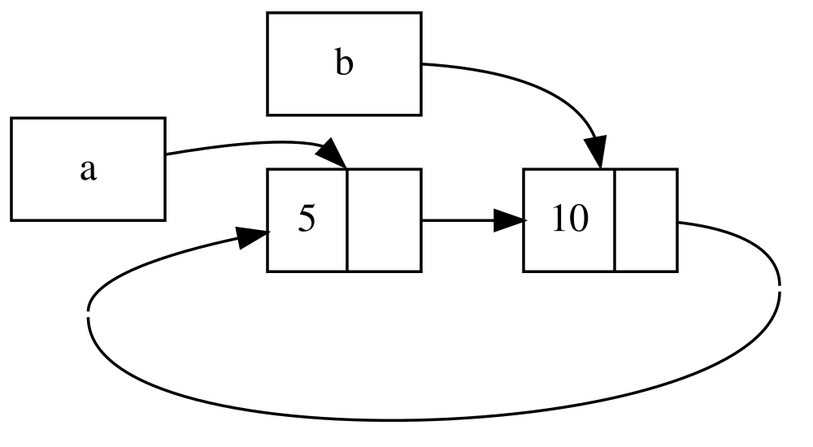
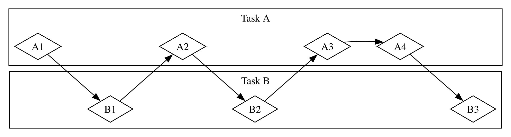
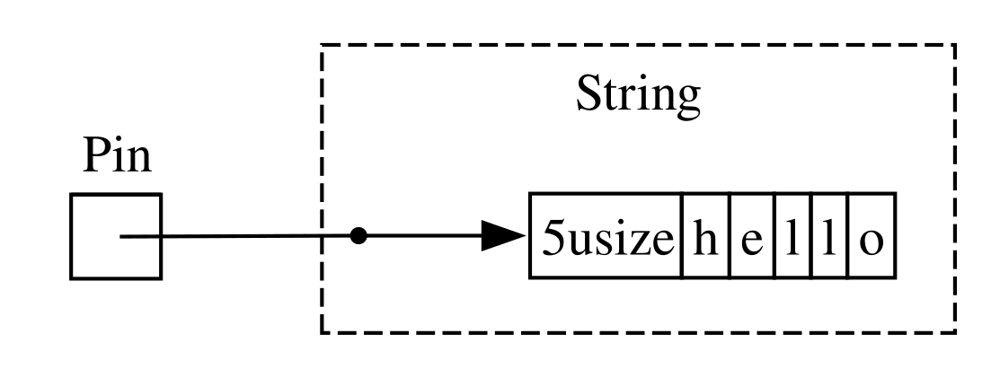
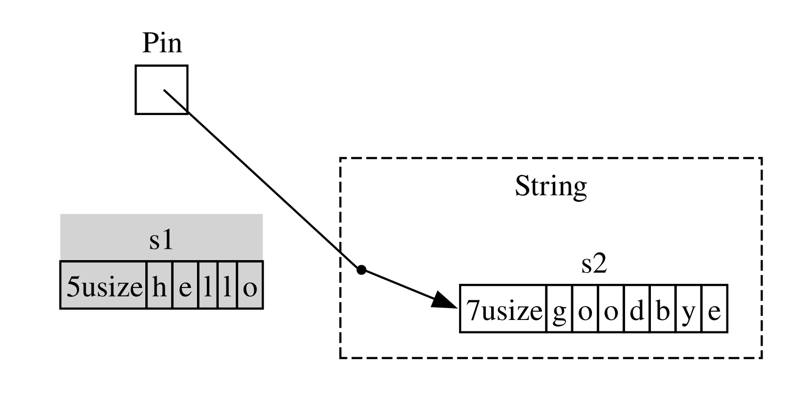

The Rust Programming Language
સ્ટીવ ક્લાબનિક, કેરોલ નિકોલ્સ અને ક્રિસ ક્રીચો દ્વારા, રસ્ટ સમુદાયના યોગદાન સાથે.
આ લખાણની આવૃત્તિ ધારે છે કે તમે Rust 1.90.0 (2025-09-18 ના રોજ પ્રકાશિત) અથવા તેનાથી પાછળનું વર્ઝન વાપરી રહ્યા છો, જેમાં બધાં પ્રોજેક્ટનાં Cargo.toml ફાઈલમાં edition = "2024" હોય જેથી તેઓ રસ્ટ 2024 આવૃત્તિના રૂઢિઓનો ઉપયોગ કરે. સ્થાપન અથવા અપડેટ કરવા માટે પ્રકરણ 1 ના “સ્થાપન” વિભાગ જુઓ, અને આવૃત્તિ વિશે માહિતી માટે Appendix E જુઓ.
HTML ફોર્મેટ ઓનલાઈન https://doc.rust-lang.org/stable/book/ પર ઉપલબ્ધ છે અને rustup સાથે Rust સ્થાપિત કરવાથી ઓફલાઈન પણ ઉપલબ્ધ છે; ખોલવા માટે rustup doc --book ચલાવો.
ઘણા સમુદાય અનુવાદો પણ ઉપલબ્ધ છે.
આ લખાણ નો સ્ટાર્ચ પ્રેસ તરફથી પુસ્તક સ્વરૂપે અને ઇબુક ફોર્મેટમાં ઉપલબ્ધ છે.
🚨 વધુ આકર્ષક શિક્ષણ અનુભવ મેળવો છો? Rust Book ના અન્ય સંસ્કરણનો પ્રયાસ કરો, જેમાં: ક્વિઝ, હાઇલાઇટિંગ, વિઝ્યુલાઇઝેશન અને વધુ : https://rust-book.cs.brown.edu
Foreword
Rust પ્રોગ્રામિંગ ભાષાએ થોડા ટૂંકા વર્ષોમાં ઘણી પ્રગતિ કરી છે, તેના નિર્માણ અને આરંભિક તબક્કાથી લઈને ઉત્સાહીઓ સમુદાય દ્વારા ઉછેરવામાં આવેલ, તે વિશ્વની સૌથી વધુ પ્રિય અને માંગમાં રહેલી પ્રોગ્રામિંગ ભાષાઓમાંની એક બની ગઈ છે. પાછળ વળીને જોતાં, Rust ની શક્તિ અને વચન ધ્યાન ખેંચે અને સિસ્ટમ પ્રોગ્રામિંગમાં સ્થાન મેળવે તે અનિવાર્ય હતું. જે અનિવાર્ય ન હતું તે વૈશ્વિક સ્તરે રસ અને નવીનતાનો વિકાસ હતો જે ઓપન સોર્સ સમુદાયોમાં ફેલાયો અને ઉદ્યોગોમાં વ્યાપક સ્વીકૃતિને પ્રેરિત કર્યો.
હાલમાં, Rust જે પ્રદાન કરે છે તે અદ્ભુત લક્ષણો દર્શાવીને આ રસ અને સ્વીકૃતિમાં થયેલા વધારાનું વર્ણન કરવું સરળ છે. કોને જ્ઞાત્મક સુરક્ષા (memory safety), ઝડપી કાર્યક્ષમતા, મૈત્રીપૂર્ણ કમ્પાઇલર અને ઉત્તમ સાધનો નથી જોઈતા? અન્ય ઘણા અદ્ભુત લક્ષણો પણ છે. તમે આજે જુઓ છો તે Rust ભાષામાં સિસ્ટમ પ્રોગ્રામિંગમાં વર્ષોના સંશોધન અને જીવંત તથા ઉત્સાહી સમુદાયની વ્યવહારિક સમજણનું મિશ્રણ છે. આ ભાષા હેતુપૂર્વક રચવામાં આવી છે અને કાળજીપૂર્વક ઘડવામાં આવી છે, જે વિકાસકર્તાઓને એક એવું સાધન પ્રદાન કરે છે જે સુરક્ષિત, ઝડપી અને વિશ્વસનીય કોડ લખવાનું સરળ બનાવે છે.
પરંતુ શું છે જે Rust ને ખરેખર વિશેષ બનાવે છે તે એ છે કે તે તમને, વપરાશકર્તાને, તમારી સિદ્ધિઓ પ્રાપ્ત કરવામાં સક્ષમ બનાવવાની તેની મૂળ બાબત. આ એક એવી ભાષા છે જે તમને સફળ થવા માંગે છે, અને સશક્તિકરણનો સિદ્ધાંત એ સમુદાયના મૂળમાં રહેલો છે જે આ ભાષાનું નિર્માણ કરે છે, જાળવે છે અને તેનો હિમાયત કરે છે. આ વ્યાખ્યાત્મક ગ્રંથના અગાઉના આવૃત્તિ પછીથી, Rust એક ખરેખર વૈશ્વિક અને વિશ્વાસુ ભાષા તરીકે વધુ વિકસિત થયું છે. હવે Rust Foundation દ્વારા Rust Project ને મજબૂત રીતે સમર્થન આપવામાં આવે છે, જે Rust સુરક્ષિત, સ્થિર અને ટકાઉ રહે તે સુનિશ્ચિત કરવા માટે મહત્વપૂર્ણ પહેલોમાં પણ રોકાણ કરે છે.
આ ‘ધ રસ્ટ પ્રોગ્રામિંગ લેંગ્વેજ’નું આ અદ્યતન આવૃત્તિ ભાષાના વર્ષોથી થયેલા વિકાસને પ્રતિબિંબિત કરે છે અને મૂલ્યવાન નવી માહિતી પ્રદાન કરે છે. પરંતુ તે માત્ર વાક્યરચના અને પુસ્તકાલયો (libraries) માટેની માર્ગદર્શિકા નથી—તે ગુણવત્તા, કાર્યક્ષમતા અને વિચારપૂર્વકની ડિઝાઇનને માન આપતા સમુદાયમાં જોડાવા આમંત્રણ છે. પછી ભલે તમે અનુભવી વિકાસકર્તા હોવ જે પ્રથમ વખત Rust ને અજમાવવા માંગો છો અથવા અનુભવી Rustacean જે પોતાની કુશળતાને વધુ સારી બનાવવા માંગે છે, આ
આવૃત્તિ દરેક માટે કંઈક પ્રદાન કરે છે. Rustની યાત્રા સહયોગ, શિક્ષણ અને પુનરાવર્તનથી ભરેલી રહી છે. ભાષા અને તેના ઇકોસિસ્ટમનો વિકાસ એ તેની પાછળના જીવંત, વિવિધ સમુદાયનું સીધું પ્રતિબિંબ છે. મુખ્ય ભાષા ડિઝાઇનર્સથી લઈને સામાન્ય યોગદાનકર્તાઓ સુધી હજારો વિકાસકર્તાઓના યોગદાન Rust ને એક અનોખું અને શક્તિશાળી સાધન બનાવે છે. આ પુસ્તક ઉપાડવાથી, તમે ફક્ત નવી પ્રોગ્રામિંગ ભાષા શીખી રહ્યા નથી—તમે સોફ્ટવેરને વધુ સારું, સુરક્ષિત અને કામ કરવા માટે આનંદપ્રદ બનાવવાના આંદોલનમાં જોડાઈ રહ્યા છો.
સ્વાગત છે રસ્ટ સમુદાયમાં!
બેક રુંબુલ, રસ્ટ ફાઉન્ડેશનના એક્ઝિક્યુટિવ ડિરેક્ટર.
Introduction
નોંધ: આ પુસ્તકની આવૃત્તિ એ જ છે જે પ્રિન્ટ અને ઇબુક ફોર્મેટમાં No Starch Press પાસેથી ઉપલબ્ધ The Rust Programming Language સમાન છે.
Rust Programming Language માં સ્વાગત છે, જે Rust વિશેની એક પરિચયાત્મક પુસ્તક છે. Rust પ્રોગ્રામિંગ ભાષા તમને વધુ ઝડપી અને વધુ વિશ્વસનીય સોફ્ટવેર લખવામાં મદદ કરે છે. ઉચ્ચ-સ્તરની સુગમતા અને નીચલા-સ્તરનું નિયંત્રણ ઘણીવાર પ્રોગ્રામિંગ ભાષા ડિઝાઇન માં વિરોધાભાસી હોય છે; Rust આ સંઘર્ષને પડકારે છે. શક્તિશાળી તકનીકી ક્ષમતા અને મહાન વિકાસકર્તા અનુભવને સંતુલિત કરીને, Rust તમને નીચલા-સ્તરની વિગતો (જેમ કે મેમરી વપરાશ) પર નિયંત્રણ રાખવાનો વિકલ્પ આપે છે, જે સામાન્ય રીતે આવા નિયંત્રણ સાથે સંકળાયેલ હોય છે તે બધી મુશ્કેલીઓ વિના.
કોના માટે Rust છે
Rust ઘણા લોકો માટે વિવિધ કારણોસર આદર્શ છે. ચાલો આપણે સૌથી મહત્વપૂર્ણ જૂથોમાંથી થોડા જોઈએ.
ટીમોના વિકાસકર્તાઓ
Rust મોટા વિકાસકર્તાઓની ટીમો માટે સહયોગી સાધન તરીકે અસરકારક સાબિત થઈ રહ્યું છે, જેમાં સિસ્ટમ પ્રોગ્રામિંગના જુદા જુદા સ્તરનું જ્ઞાન ધરાવતા લોકો હોય છે. નીચલા સ્તરનો કોડ વિવિધ સૂક્ષ્મ ભૂલોને આકર્ષિત કરે છે, જે મોટાભાગની અન્ય ભાષાઓમાં અનુભવી વિકાસકર્તાઓ દ્વારા વિસ્તૃત પરીક્ષણ અને કાળજીપૂર્વક કોડ સમીક્ષા દ્વારા જ શોધી શકાય છે. Rust માં, કમ્પાઇલર એક ગેટકીપર તરીકે કાર્ય કરે છે, જે આ અસ્પષ્ટ ભૂલો સાથેના કોડને કમ્પાઇલ થવા દેતો નથી, જેમાં એકસાથે ચાલવાની ભૂલોનો પણ સમાવેશ થાય છે. કમ્પાઇલર સાથે કામ કરીને, ટીમ તેમના સમયને પ્રોગ્રામની તર્ક પર કેન્દ્રિત કરવામાં વિતાવી શકે છે, ભૂલોને શોધવામાં નહીં.
Rust અન્ય આધુનિક વિકાસ સાધનો પણ સિસ્ટમ પ્રોગ્રામિંગની દુનિયામાં લાવે છે:
Cargo, જે સમાવિષ્ટ નિર્ભરતા વ્યવસ્થાપક અને નિર્માણ સાધન છે, તે Rust ઇકોસિસ્ટમમાં નિર્ભરતા ઉમેરવાનું, કમ્પાઇલ કરવાનું અને તેનું સંચાલન કરવાનું સરળ અને સુસંગત બનાવે છે.
rustfmt ફોર્મેટિંગ સાધન વિકાસકર્તાઓ વચ્ચે એકસમાન કોડિંગ શૈલી સુનિશ્ચિત કરે છે.
Rust Language Server કોડ પૂર્ણતા અને ઇનલાઇન ભૂલ સંદેશાઓ માટે ஒருங்கிணைந்த વિકાસ પર્યાવરણ (IDE) એકીકરણને સક્ષમ કરે છે.
આ અને અન્ય સાધનોનો ઉપયોગ કરીને, વિકાસકર્તાઓ સિસ્ટમ-સ્તરના કોડ લખતી વખતે ઉત્પાદક બની શકે છે.
શિષ્યાર્ધિઓ
Rust શિષ્યાર્ધિઓ અને સિસ્ટમ વિભાવનાઓ વિશે જાણવા માટે ઉત્સુક હોય તેવા લોકો માટે છે. Rustનો ઉપયોગ કરીને ઘણા લોકોએ ઓપરેટિંગ સિસ્ટમ વિકાસ જેવી બાબતો શીખી છે. સમુદાય ખૂબ જ આવકારદાયક છે અને શિષ્યાર્ધિઓના પ્રશ્નોના ઉત્તર આપવા માટે તૈયાર રહે છે. આ પુસ્તક જેવું કાર્ય કરીને, Rust ટીમ સિસ્ટમ વિભાવનાઓને વધુ લોકો માટે સુલભ બનાવવા માંગે છે, ખાસ કરીને જેઓ પ્રોગ્રામિંગમાં નવા છે.
કંપનીઓ
ઘણી મોટી અને નાની કંપનીઓ ઉત્પાદનમાં Rust નો ઉપયોગ વિવિધ કાર્યો માટે કરે છે, જેમાં આદેશ વાધિનાં સાધનો, વેબ સેવાઓ, DevOps સાધનસામગ્રી, એમ્બેડેડ ઉપકરણો, ઓડિયો અને વિડીયો વિશ્લેષણ અને ટ્રાન્સકોડિંગ, ક્રિપ્ટોકરન્સી, બાયોઇન્ફોર્મેટિક્સ, શોધ એંજિન, ઇન્ટરનેટ ઓફ થિંગ્સ એપ્લિકેશન્સ, મશીન લર્નિંગ અને તો પણ Firefox વેબ બ્રાઉઝરના મુખ્ય ભાગોનો સમાવેશ થાય છે.
ખુલ્લા સ્ત્રોત વિકસાવકો
Rust એવા લોકો માટે છે જેઓ Rust પ્રોગ્રામિંગ ભાષા, સમુદાય, વિકાસ સાધનો અને પુસ્તકાલયો બનાવવા માંગે છે. અમે તમને Rust ભાષામાં યોગદાન આપવાનું આવકાર્ય પામશું.
People Who Value Speed and Stability
Rust એ પ્રૌઢત્વ અને સ્થિરતાની ઝંખના રાખતા લોકો માટે છે. અહીં ’પ્રૌઢત્વ’નો અર્થ થાય છે કે Rust કોડ કેટલી ઝડપથી ચાલે છે અને Rust તમને પ્રોગ્રામ્સ કેટલી ઝડપથી લખવા દે છે. Rust કમ્પાઇલરની ચકાસણીઓ સુનિશ્ચિત કરે છે કે નવી વિશેષતાઓ ઉમેરતી વખતે અને પુનર્ગઠન કરતી વખતે સ્થિરતા જળવાઈ રહે. આ અન્ય ભાષાઓમાં નબળા, જૂના કોડથી વિપરીત છે, જેને ડેવલપર્સ ઘણીવાર બદલવાથી ડરતા હોય છે. શૂન્ય-ખર્ચ અભિવ્યક્તિઓ - ઉચ્ચ-સ્તરની વિશેષતાઓ જે જાતે લખેલા કોડ જેટલી ઝડપથી નીચલા-સ્તરના કોડમાં કમ્પાઇલ થાય છે - માટે પ્રયત્ન કરીને, Rust સલામત કોડને પણ પ્રૌઢ બનાવે છે.
Rust ભાષા અન્ય ઘણા વપરાશકર્તાઓને પણ મદદ કરવાની આશા રાખે છે; અહીં ઉલ્લેખિત થયેલા લોકો માત્ર સૌથી મોટા હિસ્સેદારો છે. સામાન્ય રીતે, Rustનું મહત્ત્વનું લક્ષ્ય એ સલામતી અને ઉત્પાદકતા, ઝડપ અને સુગમતા પ્રદાન કરીને કાર્યક્રમોએ દાયકાઓથી સ્વીકાર્યા છે તેવા સમાધાનને દૂર કરવાનું છે. Rust ને અજમાવો અને જુઓ કે તેના નિર્ણયો તમારા માટે કામ કરે છે કે નહીં.
કોના માટે આ પુસ્તક છે
આ પુસ્તક ધારે છે કે તમે અન્ય કોઈ પ્રોગ્રામિંગ ભાષામાં કોડ લખ્યો હશે, પરંતુ તે કઈ ભાષા છે એ વિશે કોઈ ધારણા કરતું નથી. અમે આ સામગ્રીને વિવિધ પ્રોગ્રામિંગ પૃષ્ઠભૂમિ ધરાવતા લોકો માટે વ્યાપકપણે સુલભ બનાવવાનો પ્રયત્ન કર્યો છે. અમે પ્રોગ્રામિંગ શું છે અથવા તેના વિશે કેવી રીતે વિચારવું તે અંગે ઘણો સમય વાત કરતા નથી. જો તમે સંપૂર્ણપણે નવા છો, તો પ્રોગ્રામિંગના પરિચયને વિશિષ્ટ રીતે આપતી પુસ્તક વાંચવાથી તમને વધુ લાભ થશે.
કેવી રીતે આ પુસ્તકનો ઉપયોગ કરવો
સામાન્ય રીતે, આ પુસ્તક ધારે છે કે તમે તેને આગળથી પાછળ સુધી ક્રમશઃ વાંચી રહ્યા છો. પછીના પ્રકરણો અગાઉના પ્રકરણોમાં રહેલા ખ્યાલો પર આધારિત હોય છે, અને અગાઉના પ્રકરણો કોઈ ચોક્કસ વિષયની વિગતોમાં ઊંડાણપૂર્વક નહિ જાય પરંતુ તે વિષયને પાછળના પ્રકરણમાં ફરીથી ચકાસી લેશે.
તમે આ પુસ્તકમાં બે પ્રકારના પ્રકરણો જોશો: ખ્યાલ આધારિત પ્રકરણો અને પ્રોજેક્ટ આધારિત પ્રકરણો. ખ્યાલ આધારિત પ્રકરણોમાં, તમે Rust ના એક પાસા વિશે શીખશો. પ્રોજેક્ટ આધારિત પ્રકરણોમાં, અમે સાથે મળીને નાના કાર્યક્રમો બનાવીશું, જે અત્યાર સુધી તમે જે શીખ્યા છો તેનો ઉપયોગ કરીને. પ્રકરણ ૨, પ્રકરણ ૧૨ અને પ્રકરણ ૨૧ પ્રોજેક્ટ આધારિત પ્રકરણો છે; બાકીના ખ્યાલ આધારિત પ્રકરણો છે.
પ્રકરણ ૧ Rust સ્થાપિત કરવાની રીત, “Hello, world!” કાર્યક્રમ લખવાની રીત અને Cargo નો ઉપયોગ કરવાની રીત સમજાવે છે, જે Rust નું પેકેજ વ્યવસ્થાપક અને નિર્માણ સાધન છે. પ્રકરણ ૨ Rust માં પ્રોગ્રામ લખવાનો એક વ્યવહારુ પરિચય આપે છે, જેમાં તમારે એક સંખ્યા અનુમાન લગાવવાની રમત બનાવશો. અહીં, અમે ખ્યાલોને ઉચ્ચ સ્તરે આવરી લઈએ છીએ, અને પછીના પ્રકરણોમાં વધારાની વિગતો આપવામાં આવશે. જો તમે તરત જ કામ શરૂ કરવા માંગતા હો, તો પ્રકરણ ૨ એ યોગ્ય સ્થાન છે. જો તમે એક ખાસ કાળજી રાખનાર શીખનાર છો જે આગળ વધતા પહેલા દરેક વિગત જાણવાનું પસંદ કરે છે, તો તમે પ્રકરણ ૨ ને અવગણીને સીધા જ પ્રકરણ ૩ પર જઈ શકો છો, જે Rust ની એવી વિશેષતાઓ આવરી લે છે જે અન્ય પ્રોગ્રામિંગ ભાષાઓ જેવી જ છે; પછી, તમે તમારી શીખેલી વિગતો લાગુ કરીને કોઈ પ્રોજેક્ટ પર કામ કરવા માંગો ત્યારે પ્રકરણ ૨ માં પાછા ફરી શકો છો.
Chapter 4, તમે Rust ના માલિકી પ્રણાલી વિશે જાણશો. Chapter 5 struct અને methods ની ચર્ચા કરે છે. Chapter 6 enums, match અભિવ્યક્તિઓ, અને if let અને let...else નિયંત્રણ પ્રવાહ રચનાઓ આવરી લે છે. તમે custom types બનાવવા માટે structs અને enums નો ઉપયોગ કરશો.
Chapter 7, તમે Rust ના module પ્રણાલી વિશે જાણશો અને તમારા કોડને ગોઠવવા અને તેના જાહેર application programming interface (API) માટેની ગુપ્તતા નિયમો વિશે પણ જાણશો. Chapter 8 કેટલાક સામાન્ય collection data structures ની ચર્ચા કરે છે જે standard library પૂરા પાડે છે: vectors, strings, અને hash maps. Chapter 9 Rust ના ભૂલ-સંયોજન ફિલસૂફી અને તકનીકોનું અન્વેષણ કરે છે.
પ્રકરણ ૧૦ સામાન્યતાઓ (generics), લક્ષણો (traits) અને આયુષ્યકાળ (lifetimes) માં ઊંડાણપૂર્વક તપાસ કરે છે, જે તમને બહુવિધ પ્રકારો પર લાગુ થઈ શકે તેવા કોડને વ્યાખ્યાયિત કરવાની શક્તિ આપે છે. પ્રકરણ ૧૧ સંપૂર્ણપણે પરીક્ષણ વિશે છે, જે Rustની સુરક્ષા ખાતરીઓ હોવા છતાં, તમારા પ્રોગ્રામના તર્કની શુદ્ધતા સુનિશ્ચિત કરવા માટે જરૂરી છે. પ્રકરણ ૧૨ માં, આપણે grep આદેશ વાક્ય સાધન (command line tool) ના કાર્યક્ષમતાના પેટાસેટનું પોતાનું અમલીકરણ બનાવીશું જે ફાઇલોમાં ટેક્સ્ટ શોધે છે. આ માટે, આપણે અગાઉના પ્રકરણોમાં ચર્ચા કરેલા ઘણા ખ્યાલોનો ઉપયોગ કરીશું.
પ્રકરણ ૧૩ ક્લોઝર્સ અને ઇટરેટર્સની ચર્ચા કરે છે: આ રસ્ટની એવી વિશેષતાઓ છે જે ફંક્શનલ પ્રોગ્રામિંગ ભાષાઓમાંથી આવેલી છે. પ્રકરણ ૧૪ માં, અમે વધુ ઊંડાણપૂર્વક કાર્ગોની તપાસ કરીશું અને અન્ય લોકો સાથે તમારી લાઇબ્રેરીઓ વહેંચવા માટે શ્રેષ્ઠ પદ્ધતિઓ વિશે વાત કરીશું. પ્રકરણ ૧૫ સ્માર્ટ પોઇન્ટર્સની ચર્ચા કરે છે જે પ્રમાણભૂત લાઇબ્રેરી પૂરી પાડે છે અને તે ટ્રેઇટ્સ કે જે તેમની કાર્યક્ષમતાને સક્ષમ કરે છે.
પ્રકરણ ૧૬ માં, અમે એક સાથે પ્રોગ્રામિંગના વિવિધ મોડેલ્સમાંથી પસાર થઈશું અને વાત કરીશું કે કેવી રીતે રસ્ટ તમને ભય વિના બહુવિધ થ્રેડ્સમાં પ્રોગ્રામ કરવામાં મદદ કરે છે. પ્રકરણ ૧૭ માં, અમે રસ્ટની async અને await સિન્ટેક્સ, કાર્યો, ફ્યુચર્સ અને સ્ટ્રીમ્સ તેમજ હળવા કન્કરન્સી મોડેલને ચકાસીશું.
પ્રકરણ ૧૮ Rustની રૂઢિઓ વસ્તુ-લક્ષી પ્રોગ્રામિંગ સિદ્ધાંતો સાથે કેવી રીતે તુલના કરે છે તે તપાસે છે જે તમને પરિચિત હોઈ શકે છે. પ્રકરણ ૧૯ પેટર્ન અને પેટર્ન મેચિંગ પર સંદર્ભ પુસ્તક છે, જે Rust કાર્યક્રમોમાં વિચારો વ્યક્ત કરવાની શક્તિશાળી રીતો છે. પ્રકરણ ૨૦ માં અસુરક્ષિત Rust, મેક્રોઝ અને આયુષ્ય, લક્ષણો, પ્રકારો, કાર્યો અને ક્લોઝર વિશે વધુ માહિતી સહિત રસપ્રદ અદ્યતન વિષયોનો સમૂહ સમાવિષ્ટ છે.
પ્રકરણ ૨૧ માં, આપણે એક લો-લેવલ મલ્ટિથ્રેડેડ વેબ સર્વર લાગુ કરીશું!
અંતે, કેટલાક પૂરક ભાગો ભાષા વિશે ઉપયોગી માહિતી વધુ સંદર્ભ-જેવા ફોર્મેટમાં ધરાવે છે. પૂરક અ વ્ય Rustના કીવર્ડ્સને આવરી લે છે, પૂરક બ Rustના ઓપરેટર અને પ્રતીકોને આવરી લે છે, પૂરક સ પ્રમાણિત પુસ્તકાલય દ્વારા પૂરા પાડવામાં આવેલ ઉતપાધ્ય લક્ષણોને આવરી લે છે, પૂરક દ કેટલાક ઉપયોગી વિકાસ સાધનોને આવરી લે છે અને પૂરક ઇ Rust આવૃત્તિઓ સમજાવે છે. પૂરક એફ માં, તમે પુસ્તકના અનુવાદો શોધી શકો છો, અને પૂરક જી આપણે જોઈશું કે Rust કેવી રીતે બને છે અને નાઇટલી Rust શું છે.
તમે આ પુસ્તક વાંચવાની કોઈ ચોક્કસ રીત નથી: જો તમે આગળ કૂદવા માંગતા હો, તો નિઃસંકોચ કરો! તમને મૂંઝવણ થાય તો તમારે અગાઉના પ્રકરણોમાં પાછા જવું પડી શકે છે. પરંતુ જે કામ કરે તે કરો.
Rust શીખવાની પ્રક્રિયાનો એક મહત્વપૂર્ણ ભાગ એ compiler દ્વારા દર્શાવવામાં આવતા error સંદેશાઓને સમજવાનો છે: આ તમને કાર્યરત કોડ તરફ દોરી જશે. એટલા માટે, અમે ઘણાં ઉદાહરણો આપીશું જે compile થતાં નથી, સાથેcompiler દરેક પરિસ્થિતિમાં જે error સંદેશ બતાવશે તે પણ. એ વાત ધ્યાનમાં રાખો કે જો તમે કોઈ random ઉદાહરણ દાખલ કરો અને ચલાવો, તો તે compile નહીં થાય! તમે જે ઉદાહરણ ચલાવવાનો પ્રયાસ કરી રહ્યા છો તે ભૂલ દર્શાવવા માટે છે કે નહીં તે જોવા માટે આસપાસનો લખાણ વાંચો. મોટાભાગની પરિસ્થિતિઓમાં, અમે તમને કોઈપણ કોડના યોગ્ય સંસ્કરણ તરફ દોરીશું જે compile થતો નથી. Ferris એવા કોડને ઓળખવામાં પણ મદદ કરશે જે કામ કરવા માટે નથી.
Ferris ફેરિસ | Ferris | Meaning | | –––––––––––––––––––––––––––––––––––––––––––––––––––––––– | ———————————————— | | | આ કોડ સંકલન થતો નથી! | | | આ કોડ ગભરાટ પાડે છે! | | | આ કોડ ઇચ્છિત વર્તન ઉત્પન્ન કરતો
નથી. | મોટાભાગની પરિસ્થિતિઓમાં, અમે તમને કોઈપણ કોડના યોગ્ય સંસ્કરણ તરફ દોરીશું જે સંકલન થતો નથી.
સ્ત્રોત કોડ
આ પુસ્તક જેમાંથી ઉત્પન્ન થયેલ છે તે સ્ત્રોત ફાઈલો GitHub પર મળી શકે છે.
આરંભ કરવો
ચાલો તમારી Rustની યાત્રા શરૂ કરીએ! શીખવા માટે ઘણું છે, પરંતુ દરેક યાત્રા ક્યાંકથી જ શરૂ થાય છે. આ પ્રકરણમાં, આપણે ચર્ચા કરીશું:
Linux, macOS અને Windows પર Rust સ્થાપિત કરવું
એક પ્રોગ્રામ લખવો જે Hello, world! છાપે
cargo, Rustના પેકેજ મેનેજર અને બિલ્ડ સિસ્ટમનો ઉપયોગ કરવો
Installation
સ્થાપન
પ્રથમ પગલું એ Rustનું સ્થાપન કરવાનું છે. આપણે rustup દ્વારા Rust ડાઉનલોડ કરીશું, જે Rust આવૃત્તિઓ અને સંલગ્ન સાધનોનું વ્યવસ્થાપન કરવા માટેનું એક કમાન્ડ લાઇન સાધન છે. ડાઉનલોડ માટે તમારે ઇન્ટરનેટ જોડાણની જરૂર પડશે.
નોંધ: જો તમે કોઈ કારણસર rustup વાપરવાનું પસંદ ન કરો, તો વધુ વિકલ્પો માટે કૃપા કરીને અન્ય Rust સ્થાપન પદ્ધતિઓ પાનાં જુઓ.
નીચેના પગલાં Rust કમ્પાઇલરનું નવીનતમ સ્થિર સંસ્કરણ સ્થાપિત કરે છે. Rustની સ્થિરતા ખાતરીઓ સુનિશ્ચિત કરે છે કે પુસ્તકમાં આપેલા તમામ ઉદાહરણો જે કમ્પાઇલ થાય છે, તે નવા Rust સંસ્કરણો સાથે પણ કમ્પાઇલ થતા રહેશે. આઉટપુટ સંસ્કરણો વચ્ચે થોડું અલગ હોઈ શકે છે કારણ કે Rust ઘણીવાર ભૂલ સંદેશાઓ અને ચેતવણીઓમાં સુધારો કરે છે. બીજા શબ્દોમાં કહીએ તો, તમે આ પગલાંઓનો ઉપયોગ કરીને સ્થાપિત કરેલ Rustનું કોઈપણ નવું, સ્થિર સંસ્કરણ આ પુસ્તકની સામગ્રી સાથે અપેક્ષા મુજબ કાર્ય કરશે.
આદેશ વાક્ય વિધિ
આ પ્રકરણમાં અને સમગ્ર પુસ્તકમાં, અમે ટર્મિનલમાં વપરાતા કેટલાક આદેશો દર્શાવીશું. જે લીટીઓ તમારે ટર્મિનલમાં દાખલ કરવાની છે તે $ થી શરૂ થાય છે. તમારે $ અક્ષર ટાઇપ કરવાની જરૂર નથી; તે દરેક આદેશની શરૂઆત દર્શાવવા માટે વપરાતો આદેશ વાક્ય સંકેત છે. $ થી શરૂ ન થતી લીટીઓ સામાન્ય રીતે પાછલા આદેશનું પરિણામ દર્શાવે છે. વધુમાં, PowerShell-વિશિષ્ટ ઉદાહરણો > નો ઉપયોગ કરશે, $ ને બદલે.
rustup લિનક્સ અથવા macOS પર સ્થાપિત કરવું
જો તમે લિનક્સ અથવા macOS વાપરી રહ્યા છો, તો એક ટર્મિનલ ખોલો અને નીચેનો આદેશ દાખલ કરો:
$ curl –proto ‘=https’ –tlsv1.2 https://sh.rustup.rs -sSf | sh
આદેશ આ આદેશ એક સ્ક્રિપ્ટ ડાઉનલોડ કરે છે અને rustup સાધનનું સ્થાપન આરંભ કરે છે, જે Rust નું નવીનતમ સ્થિર સંસ્કરણ સ્થાપિત કરે છે. તમને તમારા પાસવર્ડ માટે પૂછવામાં આવી શકે છે. જો સ્થાપન સફળ થાય, તો નીચેની લીટી દેખાશે:
Rust is installed now. Great! તમે એક લિંકર પણ જરૂર પડશે, જે એક એવું કાર્યક્રમ છે કે જે Rust તેના સંકલિત પરિણામોને એક ફાઈલમાં જોડવા માટે વાપરે છે. સંભવતઃ તમારી પાસે તે પહેલાંથી જ હશે. જો તમને લિંકર ભૂલો આવે, તો તમારે C કમ્પાઇલર સ્થાપિત કરવું જોઈએ, જેમાં સામાન્ય રીતે લિંકર શામેલ હોય છે. C કમ્પાઇલર એ પણ ઉપયોગી છે કારણ કે કેટલાક સામાન્ય Rust પેકેજો C કોડ પર આધાર રાખે છે અને તેને C કમ્પાઇલરની જરૂર પડશે.
macOS પર, તમે આ કમાન્ડ ચલાવીને C કમ્પાઇલર મેળવી શકો છો:
$ xcode-select –install
Linux વપરાશકર્તાઓ સામાન્ય રીતે તેમના વિતરણની દસ્તાવેજીકરણ અનુસાર GCC અથવા Clang સ્થાપિત કરે છે. ઉદાહરણ તરીકે, જો તમે Ubuntu વાપરતા હોવ, તો તમે build-essential પેકેજ સ્થાપિત કરી શકો છો.
Installing rustup on Windows
Windows પર, https://www.rust-lang.org/tools/install ની મુલાકાત લો અને Rust સ્થાપિત કરવા માટેની સૂચનાઓ અનુસરો. સ્થાપન પ્રક્રિયા દરમિયાન, તમને Visual Studio સ્થાપિત કરવાનું કહેવામાં આવશે. આ એક લિંકર અને પ્રોગ્રામ્સ કમ્પાઇલ કરવા માટે જરૂરી મૂળ લાઇબ્રેરીઓ પૂરી પાડે છે. જો તમને આ પગલામાં વધુ મદદની જરૂર હોય, તો https://rust-lang.github.io/rustup/installation/windows-msvc.html જુઓ.
આ પુસ્તકના બાકીના ભાગમાં એવા આદેશોનો ઉપયોગ કરવામાં આવશે જે cmd.exe અને PowerShell બંનેમાં કાર્ય કરે છે. જો કોઈ ચોક્કસ તફાવત હોય, તો અમે કયો ઉપયોગ કરવો તે સમજાવીશું.
મુશ્કેલીનિવારણ
ચકાસવા માટે કે તમે યોગ્ય રીતે Rust સ્થાપિત કર્યું છે કે નહીં, એક શેલ ખોલો અને આ લીટી દાખલ કરો:
$ rustc –version તમે નવીનતમ સ્થિર આવૃત્તિ માટે સંસ્કરણ નંબર, કમિટ હેશ અને કમિટ તિથિ જોશો, જે નીચેના ફોર્મેટમાં હશે:
rustc x.y.z (abcabcabc yyyy-mm-dd)
જો તમે આ માહિતી જુઓ છો, તો તમે સફળતાપૂર્વક Rust સ્થાપિત કર્યું છે! જો તમે આ માહિતી ન જુઓ, તો તપાસો કે Rust તમારા %PATH% સિસ્ટમ ચલ માં નીચે મુજબ છે.
Windows CMD માં, ઉપયોગ કરો:
echo %PATH% પાવરશેલ માં, ઉપયોગ કરો:
echo $env:Path લિનક્સ અને મેકઓએસમાં, ઉપયોગ કરો:
$ echo $PATH જો આ બધું યોગ્ય હોય અને Rust હજી કાર્યરત ન થાય, તો મદદ મેળવવા માટે ઘણા સ્થળો છે. સમુદાય પાના પર અન્ય Rustaceans (અમે આપણીને કહીએ છીએ એ એક મૂર્ખ નામ) નો સંપર્ક કેવી રીતે કરવો તે જાણો.
અપડેટ અને અનઇન્સ્ટોલ કરવું
એકવાર Rust rustup દ્વારા સ્થાપિત થઈ જાય પછી, નવું પ્રકાશિત થયેલ સંસ્કરણમાં અપડેટ કરવું સરળ છે. તમારા શેલમાંથી, નીચેની અપડેટ સ્ક્રિપ્ટ ચલાવો:
$ rustup update
Rust અને rustup ને અનિન્સ્ટોલ કરવા માટે તમારા શેલમાંથી નીચેની અનિન્સ્ટોલ સ્ક્રિપ્ટ ચલાવો:
$ rustup self uninstall
Reading the Local Documentation
Rustનું સ્થાપન સ્થાનિક દસ્તાવેજનો નકલ પણ સામેલ કરે છે, જેથી તમે તેને ઓફલાઈન વાંચી શકો. સ્થાનિક દસ્તાવેજ તમારા બ્રાઉઝરમાં ખોલવા માટે rustup doc ચલાવો. કોઈપણ સમયે જ્યારે કોઈ પ્રકાર
અથવા કાર્ય પ્રમાણિત લાયબ્રેરી દ્વારા આપવામાં આવે અને તમને ખબર ન હોય કે તે શું કરે છે અથવા તેનો ઉપયોગ કેવી રીતે કરવો, તો જાણવા માટે એપ્લિકેશન પ્રોગ્રામિંગ ઈન્ટરફેસ (API) દસ્તાવેજનો ઉપયોગ કરો!
Using Text Editors and IDEs
આ પુસ્તક એવું ધારી લેતું નથી કે તમે Rust કોડ લખવા માટે કયા સાધનો વાપરો છો. લગભગ કોઈપણ ટેક્સ્ટ એડિટર કામ કરી શકે છે! જોકે, ઘણાં ટેક્સ્ટ એડિટર્સ અને સંકલિત વિકાસ પર્યાવરણો (IDEs) માં Rust માટે બનેલું સમર્થન હોય છે. તમે હંમેશા Rust વેબસાઇટ પરના સાધનો પાનાં પર ઘણા એડિટર્સ અને IDEsની પ્રમાણમાં અદ્યતન યાદી શોધી શકો છો.
Working Offline with This Book
ઘણી ઉદાહરણોમાં, અમે સ્ટાન્ડર્ડ લાઈબ્રેરીથી આગળના Rust પેકેજોનો ઉપયોગ કરીશું. તે ઉદાહરણો દ્વારા કાર્યરત થવા માટે, તમારે ઇન્ટરનેટ કનેક્શનની જરૂર પડશે અથવા તો નિર્ભારીતાઓને અગાઉથી ડાઉનલોડ કરવાની રહેશે. નિર્ભારીતાઓને અગાઉથી ડાઉનલોડ કરવા માટે, તમે નીચેના આદેશો ચલાવી શકો છો. (અમે cargo શું છે અને આ દરેક આદેશો શું કરે છે તે પછીથી વિગતવાર સમજાવીશું.)
$ cargo new get-dependencies
$ cd get-dependencies
$ cargo add rand@0.8.5 trpl@0.2.0
આ પેકેજો માટે ડાઉનલોડ્સ કેશ થશે, જેથી તમારે ભવિષ્યમાં તેમને ફરીથી ડાઉનલોડ કરવાની જરૂર રહેશે નહીં. એકવાર તમે આ આદેશ ચલાવી લો, પછી તમારે get-dependencies ફોલ્ડર રાખવાની જરૂર નથી. જો તમે આ આદેશ ચલાવ્યો હોય, તો પુસ્તકના બાકીના ભાગમાં બધા cargo આદેશો સાથે --offline ધ્વજ વાપરી શકો છો, જેથી નેટવર્કનો ઉપયોગ કરવાને બદલે આ કેશ્ડ વર્ઝનનો ઉપયોગ કરી શકાય.
Hello, World!
હેલો, વર્લ્ડ!
હવે તમે Rust સ્થાપિત કરી લીધું છે, તો હવે પહેલું Rust કાર્યક્રમ લખવાનો સમય આવી ગયો છે. નવી ભાષા શીખતી વખતે કોઈ નાનું કાર્યક્રમ છાપવો એ પરંપરા છે જે Hello, world! લખાણ સ્ક્રીન પર દર્શાવે છે, તેથી આપણે પણ તે જ કરીશું!
નોંધ: આ પુસ્તક કમાન્ડ લાઇનથી થોડી પૃથ્થઈ પરિચય હોવાનું માને છે. Rust તમારા સંપાદન કે સાધન અથવા તમારો કોડ ક્યાં રહે છે તેના વિશે કોઈ ચોક્કસ માંગણી કરતું નથી, તેથી જો તમે કમાન્ડ લાઇનને બદલે IDE વાપરવાનું પસંદ કરો છો, તો તમારા મનપસંદ IDE નો ઉપયોગ કરી શકો છો. ઘણા IDEs હવે Rust માટે થોડી ઘણી મદદ પૂરી પાડે છે; વિગતો માટે IDE ના દસ્તાવેજ તપાસો. Rust ટીમ rust-analyzer દ્વારા મહાન IDE મદદ આપવા પર ધ્યાન કેન્દ્રિત કરી રહી છે. વધુ માહિતી માટે Appendix D જુઓ.
પ્રોજેક્ટ ડિરેક્ટરી સેટઅપ
તમે એક ડિરેક્ટરી બનાવીને શરૂઆત કરશો જ્યાં તમે તમારો Rust કોડ સંગ્રહિત કરશો. Rust ને એનાથી કોઈ ફરક પડતો નથી કે તમારો કોડ ક્યાં રહે છે, પરંતુ આ પુસ્તકમાં આપેલાં વ્યાયમો અને પ્રોજેક્ટ્સ માટે, અમે તમારા હોમ ડિરેક્ટરીમાં એક projects ડિરેક્ટરી બનાવવાની અને બધાં પ્રોજેક્ટ્સ ત્યાં રાખવાની ભલામણ કરીએ છીએ.
એક ટર્મિનલ ખોલો અને projects ડિરેક્ટરી અને “Hello, world!” પ્રોજેક્ટ માટેની ડિરેક્ટરી બનાવવા માટે નીચેના આદેશો દાખલ કરો.
Linux, macOS, અને Windows પર PowerShell માટે, આ દાખલ કરો:
$ mkdir ~/projects $ cd ~/projects $ mkdir hello_world $ cd hello_world વિન્ડોઝ CMD માટે, આ દાખલ કરો:
mkdir “%USERPROFILE%\projects” cd /d “%USERPROFILE%\projects” mkdir hello_world cd hello_world
Rust Program Basics
ત્યારબાદ, એક નવી સ્ત્રોત ફાઈલ બનાવો અને તેનું નામ main.rs રાખો. Rust ફાઈલો હંમેશાં .rs એક્સટેન્શન સાથે સમાપ્ત થાય છે. જો તમે તમારી ફાઇલનામમાં એક કરતાં વધુ શબ્દોનો ઉપયોગ કરી રહ્યા છો, તો સંમેલન મુજબ તેમને અન્ડરસ્કોરથી અલગ કરો. ઉદાહરણ તરીકે, hello_world.rs નો ઉપયોગ કરોhelloworld.rs ને બદલે.
હવે બનાવેલી main.rs ફાઈલ ખોલો અને Listing 1-1 માં આપેલ કોડ દાખલ કરો.
$ rustc main.rs
$ ./main
Hello, world!
વિન્ડોઝ પર, આદેશ .\main દાખલ કરો, ./main ને બદલે:
rustc main.rs .\main Hello, world! Regardless of your operating system, the string
Hello, world!should print to the terminal. If you don’t see this output, refer back to the “Troubleshooting” part of the Installation section for ways to get help. તમારા ઓપરેટિંગ સિસ્ટમ કેવું હોય વાંધો નહિ,Hello, world!એ આઉટપુટ ટર્મિનલ પર દેખાવા જોઈએ. જો તમને આ આઉટપુટ ના દેખાય, તો સહાય મેળવવા માટે ઇન્સ્ટોલેશન વિભાગના “Troubleshooting” ભાગમાં પાછા જાઓ. IfHello, world!did print,
congratulations! You’ve officially written a Rust program. That makes you a Rust programmer—welcome! જો Hello, world! છપાયું હોય, તો અભિનંદન! તમે સત્તાવાર રીતે એક Rust કાર્યક્રમ લખ્યો છે. એ તમને એક Rust પ્રોગ્રામર બનાવે છે—સ્વાગત છે!
Rust કાર્યક્રમની રચના
ચાલો આ “Hello, world!” કાર્યક્રમને વિગતવાર જોઈએ. અહીં પ્રથમ ભાગ છે:
fn main() {
}
These lines define a function named main. The main function is special: It is always the first code that runs in every executable Rust program. Here, the first line declares a function named main that has no parameters and returns nothing. If there were parameters, they would go inside the parentheses (()).
The function body is wrapped in {}. Rust requires curly brackets around all function bodies. It’s good style to place the opening curly bracket on the same line as the function declaration, adding one space in between.
નોંધ: જો તમે બધા Rust પ્રોજેક્ટ્સમાં એકસમાન શૈલી જાળવવા માંગતા હો, તો તમે rustfmt નામના આપોઆપ ફોર્મેટર સાધનનો ઉપયોગ કરી શકો છો જે તમારા કોડને ચોક્કસ શૈલીમાં ફોર્મેટ કરે છે ( rustfmt વિશે વધુ માહિતી Appendix D માં મળશે). Rust ટીમ આ સાધનને સ્ટાન્ડર્ડ Rust વિતરણ સાથે સામેલ કર્યું છે, જેમ કે rustc, તેથી તે પહેલાથી જ તમારા કમ્પ્યુટર પર ઇન્સ્ટોલ થયેલ હોવું જોઈએ!
main ફંક્શનનો મુખ્ય ભાગ નીચેના કોડ ધરાવે છે:
println!(“Hello, world!”); આ લીટી આ નાનકડા કાર્યક્રમમાં તમામ કાર્ય કરે છે: તે સ્ક્રીન પર લખાણ છાપે છે. અહીં ત્રણ મહત્વપૂર્ણ વિગતો ધ્યાન રાખવા જેવી છે.
પ્રથમ, println! એક Rust મેક્રોને બોલાવે છે. જો તેના બદલે કોઈ ફંક્શન બોલાવવામાં આવ્યું હોત, તો તેને println ( ! વગર) તરીકે દાખલ કરવામાં આવતું હોત. Rust મેક્રો એ કોડ લખવાનો એક માર્ગ છે જે Rust વાક્યરચનાને વિસ્તારવા માટે કોડ જનરેટ કરે છે, અને આપણે તેના વિશે પ્રકરણ 20 માં વધુ વિગતવાર ચર્ચા કરીશું. અત્યારે, તમારે ફક્ત એટલું જ જાણવાની જરૂર છે કે ! નો ઉપયોગ કરવો એ સામાન્ય ફંક્શનને બદલે મેક્રોને બોલાવવા સમાન છે અને મેક્રો હંમેશાં ફંક્શન જેવા નિયમોનું પાલન કરતા નથી.
બીજું, તમે "Hello, world!" સ્ટ્રિંગ જુઓ છો. અમે આ સ્ટ્રિંગને println! ને દલીલ તરીકે પસાર કરીએ છીએ, અને સ્ટ્રિંગ સ્ક્રીન પર છપાય છે. ત્રીજું, આપણે
લીટીને સેમિકોલન ( ; ) સાથે સમાપ્ત કરીએ છીએ, જે દર્શાવે છે કે આ અભિવ્યક્તિ પૂર્ણ થઈ ગઈ છે, અને આગામી શરૂ થવા માટે તૈયાર છે. મોટાભાગની Rust કોડની લીટીઓ સેમિકોલનથી અંતિમ થાય છે.
કંપન અને ચલાવણી
તમે હમણાં જ એક નવું બનાવેલું કાર્યક્રમ ચલાવ્યો છે, તો ચાલો આ પ્રક્રિયાના દરેક તબક્કાની તપાસ કરીએ.
Rust કાર્યક્રમ ચલાવતા પહેલાં, તમારે તેને Rust કંપક (compiler) દ્વારા કમ્પાઇલ કરવું આવશ્યક છે, જેમાં rustc આદેશ દાખલ કરીને અને તમારા સ્ત્રોત ફાઈલનું નામ પસાર કરીને, જેમ કે:
$ rustc main.rs
જો તમને C અથવા C++ નો અનુભવ હોય, તો તમે નોંધશો કે આ gcc અથવા clang જેવું જ છે. સફળતાપૂર્વક કમ્પાઈલ કર્યા પછી, Rust એક બાઈનરી એક્ઝિક્યુટેબલ ફાઈલ
ઉત્પન્ન કરે છે. Linux, macOS અને Windows પર PowerShell માં, તમે ls આદેશ તમારા શેલમાં દાખલ કરીને એક્ઝિક્યુટેબલ જોઈ શકો છો:
$ ls main main.rs Linux અને macOS પર, તમે બે ફાઈલો જોશો. Windows પર PowerShell સાથે, તમને એ જ ત્રણ ફાઈલો દેખાશે જે CMD વાપરતી વખતે દેખાત. Windows પર CMD સાથે, તમારે નીચે મુજબ કરવું જોઈએ:
dir /B %= the /B option says to only show the file names =% main.exe main.pdb main.rs આ દર્શાવે છે કે સ્ત્રોત કોડ ફાઈલ કઈ સાથે .rs એક્સ્ટેંશન ધરાવે છે, એક્ઝિક્યુટેબલ ફાઈલ (Windows પર main.exe, પરંતુ અન્ય તમામ પ્લેટફોર્મ પર main), અને, Windows વાપરતી વખતે, એક ફાઈલ જેમાં ડીબગીંગ માહિતી હોય જે .pdb એક્સ્ટેંશન સાથે હોય. અહીંથી, તમે main અથવા main.exe ફાઈલ ચલાવો છો, આ રીતે:
$ ./main # or .\main on Windows
If your main.rs is your “Hello, world!” program, this line prints Hello, world! to your terminal. જો તમારું main.rs ફાઈલ “હેલો, વર્લ્ડ!” પ્રોગ્રામ છે, તો આ લીટી તમારા ટર્મિનલમાં Hello, world! છાપે છે.
If you’re more familiar with a dynamic language, such as Ruby, Python, or JavaScript, you might not be used to compiling and running a program as separate steps. Rust is an ahead-of-time compiled language, meaning you can compile a program and give the executable to someone else, and they can run it even without having Rust installed. If you give someone a .rb , .py , or .js file, they need to have a Ruby, Python, or JavaScript implementation installed (respectively). But in those languages, you only need one command to compile and run your program. Everything is a trade-off in language design. જો તમે ડાયનેમિક ભાષાથી વધુ પરિચિત છો, જેમ કે રૂબી, પાયથોન અથવા JavaScript, તો તમને પ્રોગ્રામને અલગ તબક્કામાં કમ્પાઇલ કરવું અને ચલાવવું સામાન્ય ન લાગી શકે. Rust એ એક અગાઉથી કમ્પાઈલ કરેલી ભાષા છે, જેનો અર્થ થાય છે કે તમે પ્રોગ્રામને કમ્પાઇલ કરી શકો છો અને તેને કોઈ બીજાને આપી શકો છો, અને તેઓ Rust ઇન્સ્ટોલ કર્યા વિના પણ ચલાવી શકે છે. જો તમે કોઈને .rb , .py , અથવા .js ફાઈલ આપો છો, તો તેમને રૂબી, પાયથોન અથવા JavaScript અમલીકરણ ઇન્સ્ટોલ કરવું પડશે (ક્રમશઃ). પરંતુ તે ભાષાઓમાં, તમારે તમારા પ્રોગ્રામને કમ્પાઇલ કરવા અને ચલાવવા માટે ફક્ત એક જ આદેશની જરૂર પડે છે. ભાષા ડિઝાઇન હંમેશાં આપ-લેનું પરિણામ હોય છે.
rustc વડે ફક્ત કમ્પાઇલ કરવું સરળ પ્રોગ્રામ માટે ઠીક છે, પરંતુ જેમ જેમ તમારી યોજના વિશાળ બનશે, તેમ તમને બધા વિકલ્પોનું સંચાલન કરવું અને તમારા કોડને વહેંચવાનું સરળ બનાવવું જોઈશે. હવે પછી, અમે Cargo સાધનપરિચય કરાવશે, જે તમને વાસ્તવિક દુનિયાના Rust પ્રોગ્રામ લખવામાં મદદ કરશે.
Hello, Cargo!
Hello, Cargo!
Cargo એ Rustનું નિર્માણ તંત્ર અને પેકેજ વ્યવસ્થાપક છે. મોટાભાગના Rustaceans તેમના Rust પ્રોજેક્ટ્સનું સંચાલન કરવા માટે આ સાધન વાપરે છે, કારણ કે Cargo તમારા માટે ઘણાં કાર્યો કરે છે, જેમ કે તમારા કોડનું નિર્માણ કરવું, તમારા કોડને જરૂરી હોય તેવા પુસ્તકાલયો (libraries) ડાઉનલોડ કરવા અને તે પુસ્તકાલયોનું નિર્માણ કરવું. (આપણે જે પુસ્તકાલયોની જરૂર હોય છે તેને આધારભૂત (dependencies) કહીએ છીએ.)
સૌથી સરળ Rust કાર્યક્રમો, જેમ કે અત્યાર સુધી આપણે લખેલું છે, તેમાં કોઈ આધારભૂત નથી. જો આપણે “Hello, world!” પ્રોજેક્ટ Cargo સાથે બનાવ્યો હોત, તો તે ફક્ત Cargoના તે ભાગનો ઉપયોગ કરત જે તમારા કોડનું નિર્માણ કરે છે. જેમ જેમ તમે વધુ જટિલ Rust કાર્યક્રમો લખશો, તેમ તેમ તમે આધારભૂત ઉમેરશો અને જો તમે Cargoથી શરૂ કરીને કોઈ પ્રોજેક્ટ કરો છો, તો આધારભૂત ઉમેરવાનું ઘણું સરળ રહેશે.
કારણ કે મોટાભાગના Rust પ્રોજેક્ટ્સ Cargo નો ઉપયોગ કરે છે, આ પુસ્તકના બાકીના ભાગમાં એવું માનવામાં આવે છે કે તમે પણ Cargo નો ઉપયોગ કરી રહ્યા છો. જો તમે સત્તાવાર સ્થાપકોનો ઉપયોગ કર્યો હોય જે “સ્થાપન” વિભાગમાં ચર્ચા કરવામાં આવી હતી, તો Cargo Rust સાથે જ સ્થાપિત થયેલું હશે. જો તમે અન્ય કોઈ રીતે Rust સ્થાપિત કર્યું હોય, તો તમારા ટર્મિનલમાં નીચે મુજબ દાખલ કરીને તપાસો કે Cargo સ્થાપિત છે કે નહીં:
$ cargo –version
જો તમે વર્ઝન સંખ્યા જુઓ છો, તો તે તમારી પાસે છે! જો તમને કોઈ ભૂલ આવે છે, જેમ કે command not found, તો તમારા સ્થાપન પદ્ધતિ માટેના દસ્તાવેજને જુઓ કે કેવી રીતે Cargo ને અલગથી સ્થાપિત કરવું.
પ્રોજેક્ટ કાર્ગો સાથે બનાવવો
ચાલો કાર્ગોનો ઉપયોગ કરીને એક નવું પ્રોજેક્ટ બનાવીએ અને જોઈએ કે તે આપણા મૂળ “Hello, world!” પ્રોજેક્ટથી કેવી રીતે અલગ છે. તમારા પ્રોજેક્ટ ડિરેક્ટરીમાં પાછા જાઓ (અથવા તમે તમારો કોડ ક્યાં સંગ્રહ કરવાનું નક્કી કર્યું હોય ત્યાં). પછી, કોઈપણ ઓપરેટિંગ સિસ્ટમ પર, નીચે મુજબ ચલાવો:
$ cargo new hello_cargo $ cd hello_cargo The first command creates a new directory and project called hello_cargo પ્રથમ આદેશ એક નવું સંનિધિ અને પરિયોજન બનાવે છે જેનું નામ hello_cargo છે. અમે અમારા પરિયોજનને hello_cargo નામ આપ્યું છે, અને Cargo તેના બધાં જ દસ્તાવેજો સમાન નામના સંનિધિમાં બનાવે છે. Go into the hello_cargo directory and list the files. You’ll see that Cargo has
generated two files and one directory for us: a Cargo.toml file and a src directory with a main.rs file inside. hello_cargo સંનિધિમાં જાઓ અને ફાઈલોની યાદી જુઓ. તમને દેખાશે કે Cargo એ આપણી માટે બે ફાઈલો અને એક સંનિધિ ઉત્પન્ન કરી છે: એક Cargo.toml ફાઈલ અને એક src સંનિધિ જેમાં main.rs ફાઈલ અંદર છે. It has also initialized a new Git repository along with
a .gitignore file. Git files won’t be generated if you run cargo new within an existing Git repository; you can override this behavior by using cargo new --vcs=git. તેણે એક નવું Git ભંડાર પણ શરૂ કર્યું છે અને સાથે સાથે એક .gitignore ફાઈલ પણ છે. જો તમે પહેલાથી અસ્તિત્વમાં રહેલા Git ભંડારમાં cargo new ચલાવો તો Git ફાઈલો ઉત્પન્ન થશે નહીં; તમે આ વર્તણૂકને cargo new --vcs=git નો ઉપયોગ કરીને બદલી શકો છો.
નોંધ: Git એક સામાન્ય વર્ઝન નિયંત્રણ પ્રણાલી છે. તમે cargo new ને અન્ય વર્ઝન નિયંત્રણ પ્રણાલી અથવા કોઈ પણ વર્ઝન નિયંત્રણ પ્રણાલી વાપરવા માટે --vcs ધ્વજ (flag) નો ઉપયોગ કરી શકો છો. ઉપલબ્ધ વિકલ્પો જોવા માટે cargo new --help ચલાવો.
તમારી પસંદગીના ટેક્સ્ટ સંપાદકમાં Cargo.toml ખોલો. તે યાદી 1-2 માં આપેલ કોડ જેવું દેખાશે.
[dependencies] આ ફાઈલ TOML ( ટોમ્સ ઓબ્વિયસ, મિનિમલ ભાષા ) ફોર્મેટમાં છે, જે Cargo નું રૂપરેખાંકન ફોર્મેટ છે.
પહેલી લીટી, [package] , એક વિભાગ હેડિંગ છે જે દર્શાવે છે કે ત્યારબાદના વિધાનો પેકેજને રૂપરેખાંકિત કરી રહ્યા છે. જેમ આપણે આ ફાઈલમાં વધુ માહિતી ઉમેરીશું, તેમ તેમ અમે અન્ય વિભાગો ઉમેરીશું.
આગામી ત્રણ લીટીઓ Cargo ને તમારા પ્રોગ્રામને કમ્પાઇલ કરવા માટે જરૂરી રૂપરેખાંકન માહિતી સેટ કરે છે: નામ, વર્ઝન અને Rust નું આવૃત્તિ (edition) વાપરવું. આપણે Appendix E માં edition કી વિશે વાત કરીશું.
The last line, [dependencies] , is the start of a section for you to list any of your project’s dependencies. In Rust, packages of code are referred to as crates . We won’t need any other crates for this project, but we will in the first project in Chapter 2, so we’ll use this dependencies section then. હવે, [dependencies] એ વિભાગની શરૂઆત છે જ્યાં તમે તમારા પ્રોજેક્ટની નિર્ભરતા (dependency) સૂચિબદ્ધ કરી શકો છો. Rust માં, કોડના પેકેજોને crates કહેવામાં આવે છે. આ પ્રોજેક્ટ માટે આપણને અન્ય કોઈ crate ની જરૂર નથી, પરંતુ બીજા પ્રકરણમાં પ્રથમ પ્રોજેક્ટ માટે જરૂર
પડશે, તેથી અમે આ નિર્ભરતા વિભાગનો ઉપયોગ કરીશું. હવે src/main.rs ખોલો અને
જુઓ: ફાઈલનામ: src/main.rs
fn main() { println!(“Hello, world!”); } Cargo એ તમારા માટે “Hello, world!” કાર્યક્રમ ઉત્પન્ન કર્યો છે, જે Listing 1-1 માં આપણે લખેલ કાર્યક્રમ જેવો જ છે! અત્યાર સુધીમાં, આપણા પ્રોજેક્ટ અને Cargo દ્વારા ઉત્પન્ન થયેલા પ્રોજેક્ટ વચ્ચેનો તફાવત એ છે કે Cargo એ કોડ src ડિરેક્ટરીમાં મૂક્યો છે, અને આપણી પાસે ટોચની ડિરેક્ટરીમાં Cargo.toml રૂપરેખાંકન ફાઈલ છે.
Cargo તમારા સ્રોત ફાઇલોને src ડિરેક્ટરીમાં રહેવાની અપેક્ષા રાખે છે. ટોચ-સ્તરના પ્રોજેક્ટ ડિરેક્ટરી ફક્ત README ફાઇલો, લાયસન્સ માહિતી, રૂપરેખાંકન ફાઇલો અને તમારા કોડ સાથે સંબંધિત ન હોય તેવી અન્ય વસ્તુઓ માટે છે. Cargo નો ઉપયોગ કરવાથી તમને તમારા પ્રોજેક્ટને વ્યવસ્થિત કરવામાં મદદ મળે છે. દરેક વસ્તુ માટે એક સ્થાન છે, અને દરેક વસ્તુ તેની જગ્યાએ છે.
જો તમે એવી કોઈ project શરૂ કરી હોય જે Cargo વાપરતી નથી, જેમ કે આપણે “Hello, world!” project માં કર્યું હતું, તો તમે તેને Cargo વાપરતી project માં ફેરવી શકો છો. src directory માં project નો code ખસેડો અને એક યોગ્ય Cargo.toml file બનાવો. cargo init ચલાવવાની એ એક સરળ રીત છે, જે આપોઆપ તે file બનાવી દેશે.
Building and Running a Cargo Project
હવે આપણે જોઈએ કે જ્યારે આપણે Cargo વડે “Hello, world!” કાર્યક્રમ બનાવો અને ચલાવીએ ત્યારે શું ફેરફાર થાય છે. તમારા hello_cargo ડિરેક્ટરીમાંથી, નીચેનો આદેશ દાખલ કરીને તમારી યોજના બનાવો:
$ cargo build
Compiling hello_cargo v0.1.0 (file:///projects/hello_cargo)
Finished dev [unoptimized + debuginfo] target(s) in 2.85 secs
આદેશ એક એક્ઝિક્યુટેબલ ફાઈલ બનાવે છે આ આદેશ target/debug/hello_cargo માં એક એક્ઝિક્યુટેબલ ફાઈલ બનાવે છે (અથવા Windows પર target\debug\hello_cargo.exe), તમારા વર્તમાન ડિરેક્ટરીમાં નહીં. કારણ કે ડિફૉલ્ટ બિલ્ડ ડીબગ બિલ્ડ હોય છે, Cargo બાઈનરીને debug નામની ડિરેક્ટરીમાં મૂકે છે. તમે આ આદેશથી એક્ઝિક્યુટેબલ ચલાવી શકો છો:
$ ./target/debug/hello_cargo # or .\target\debug\hello_cargo.exe on Windows
Hello, world!
જો બધું સારું રહેશે, તો Hello, world! ટર્મિનલ પર છાપાઈ જશે. પ્રથમ વખત cargo build ચલાવવાથી Cargo એક નવી ફાઈલ પણ બનાવે છે: Cargo.lock. આ ફાઈલ તમારા પ્રોજેક્ટમાં રહેલા ડિપેન્ડન્સીઝ (dependencies) ના ચોક્કસ વર્ઝનની નોંધ રાખે છે. આ પ્રોજેક્ટમાં કોઈ ડિપેન્ડન્સીઝ નથી, તેથી ફાઈલ થોડી ખાલી છે. તમારે ક્યારેય પણ આ ફાઈલમાં જાતે જ ફેરફાર કરવાની જરૂર નહીં પડે; Cargo તેનાcontentsનું સંચાલન તમારા માટે કરે છે.
અમે cargo build સાથે એક પ્રોજેક્ટ બનાવ્યો અને ./target/debug/hello_cargo વડે ચલાવ્યો, પરંતુ અમે cargo run નો ઉપયોગ કરીને કોડને કમ્પાઈલ કરી શકીએ છીએ અને એક જ આદેશમાં પરિણામી એક્ઝિક્યુટેબલ (executable) ચલાવી શકીએ છીએ:
$ cargo run
Finished dev [unoptimized + debuginfo] target(s) in 0.0 secs
Running target/debug/hello_cargo
Hello, world!
cargo run વાપરવું એ cargo build ચલાવવા અને પછી બાઈનરીનો આખો માર્ગ યાદ રાખવા કરતાં વધુ અનુકૂળ છે, તેથી મોટાભાગના વિકાસકર્તાઓ cargo run વાપરે છે.
ધ્યાનમાં રાખો કે આ વખતે અમને આઉટપુટ દેખાયું ન હતું કે Cargo hello_cargo કમ્પાઈલ કરી રહ્યું છે. Cargo એ નક્કી કર્યું કે ફાઇલો બદલાઈ નથી, તેથી તેણે ફરીથી બનાવ્યું નહીં પરંતુ ફક્ત બાઈનરી ચલાવ્યું. જો તમે તમારા સ્રોત કોડમાં ફેરફાર કર્યો હોત, તો Cargo પ્રોજેક્ટને ચલાવતા પહેલા ફરીથી બનાવ્યું હોત, અને તમને આ આઉટપુટ દેખાયું હોત:
$ cargo run
Compiling hello_cargo v0.1.0 (file:///projects/hello_cargo)
Finished dev [unoptimized + debuginfo] target(s) in 0.33 secs
Running target/debug/hello_cargo
Hello, world!
Cargo પણ એક આદેશ પ્રદાન કરે છે જેનું નામ cargo check છે. આ આદેશ ઝડપથી તમારા કોડની ચકાસણી કરે છે જેથી ખાતરી થાય કે તે સંકલિત થઈ શકે, પરંતુ એ કોઈ કાર્યકારી ફાઈલ ઉત્પન્ન કરતું નથી:
$ cargo check
Checking hello_cargo v0.1.0 (file:///projects/hello_cargo)
Finished dev [unoptimized + debuginfo] target(s) in 0.32 secs
શા માટે તમારે એક્ઝિક્યુટેબલ (executable) ન જોઈતું હોય? ઘણીવાર cargo check એ cargo build કરતાં વધુ ઝડપી હોય છે, કારણ કે તે એક્ઝિક્યુટેબલ બનાવવાની પ્રક્રિયાને છોડી દે છે. જો તમે કોડ લખતી વખતે સતત તમારા કાર્યની ચકાસણી કરતા હોવ, તો cargo check નો ઉપયોગ કરવાથી તમને ખબર પડશે કે તમારી પ્રોજેક્ટ હજી પણ કમ્પાઇલ (compile) થઈ રહી છે કે નહીં, તે જાણવાની પ્રક્રિયા ઝડપી થશે! આથી, ઘણા Rustaceans તેમની પ્રોગ્રામ (program) લખતી વખતે સમયાંતરે cargo check ચલાવે છે, જેથી ખાતરી કરી શકાય કે તે કમ્પાઇલ (compile) થાય છે. પછી તેઓ એક્ઝિક્યુટેબલ (executable) વાપરવા માટે તૈયાર હોય ત્યારે cargo build ચલાવે છે.
ચાલો આપણે અત્યાર સુધીમાં કાર્ગો વિશે જે શીખ્યા તેનું પુનરાવર્તન કરીએ:
આપણે cargo new નો ઉપયોગ કરીને એક પ્રોજેક્ટ બનાવી શકીએ છીએ.
આપણે cargo build નો ઉપયોગ કરીને એક પ્રોજેક્ટ બનાવી શકીએ છીએ.
આપણે cargo run નો ઉપયોગ કરીને એક પ્રોજેક્ટને એક જ પગલામાં બનાવી અને ચલાવી શકીએ છીએ.
આપણે cargo check નો ઉપયોગ કરીને ભૂલો તપાસવા માટે બાઈનરી ઉત્પન્ન કર્યા વિના એક પ્રોજેક્ટ બનાવી શકીએ છીએ.
આપણો કોડની જેમ સમાન ડિરેક્ટરીમાં બિલ્ડ પરિણામ સાચવવાની જગ્યાએ, કાર્ગો તેને target/debug ડિરેક્ટરીમાં સંગ્રહિત કરે છે.
એક વધારાનો લાભ એ છે કે Cargo નો ઉપયોગ કરવાથી આદેશો સમાન રહે છે, તમે જે પણ ઓપરેટિંગ સિસ્ટમ પર કાર્ય કરી રહ્યા હોવ તેનાથી કોઈ ફરક પડતો નથી. તેથી, હવે પછી અમે Linux અને macOS વિરુદ્ધ Windows માટે વિશેષ સૂચનાઓ આપવાનું બંધ કરીશું.
પ્રોજેક્ટને વિમોચન માટે તૈયાર કરવા
જ્યારે તમારો પ્રોજેક્ટ અંતિમ રીતે વિમોચન માટે તૈયાર હોય, ત્યારે તમે તેને સુવ્યવસ્થિતતાઓ સાથે કમ્પાઇલ કરવા માટે cargo build --release નો ઉપયોગ કરી શકો છો. આ આદેશ target/release માં target/debug ને બદલે એક એક્ઝિક્યુટેબલ બનાવશે. સુવ્યવસ્થિતતાઓને ચાલુ કરવાથી તમારી Rust કોડ ઝડપથી ચાલે છે, પરંતુ તે તમારા પ્રોગ્રામને કમ્પાઇલ થવામાં લાગતો સમય વધારે છે. આ જ કારણ છે કે બે અલગ-અલગ રૂપરેખાંકનો (profiles) છે: એક વિકાસ માટે, જ્યારે તમે ઝડપથી અને વારંવાર ફરીથી બનાવવાનું ઇચ્છો છો, અને બીજો અંતિમ પ્રોગ્રામ બનાવવા માટે જે વપરાશકર્તાને આપશો અને તેને વારંવાર ફરીથી બનાવવામાં આવશે નહીં અને તે શક્ય તેટલી ઝડપથી ચાલશે. જો તમે તમારા કોડના ચાલવાના સમયનું મૂલ્યાંકન કરી રહ્યા હો, તો cargo build --release ચલાવવાનું અને target/release માં એક્ઝિક્યુટેબલ સાથે મૂલ્યાંકન કરવાનું સુનિશ્ચિત કરો.
કાર્ગોની પરંપરાઓનો ઉપયોગ કરવો
સરળ પ્રોજેક્ટ્સ સાથે, કાર્ગો માત્ર rustc વાપરવા કરતાં વધારે લાભ આપતું નથી, પરંતુ તમારા કાર્યક્રમો વધુ જટિલ બને ત્યારે તે પોતાની કિંમત સાબિત કરશે. જ્યારે પ્રોગ્રામ્સ અનેક ફાઇલો સુધી પહોંચે અથવા કોઈ આધાર રાખતી વસ્તુની જરૂર પડે, ત્યારે કાર્ગો દ્વારા નિર્માણનું સંકલન કરાવવું ઘણું સરળ બની જાય છે.
જોકે hello_cargo પ્રોજેક્ટ સરળ છે, તે હવે મોટાભાગના વાસ્તવિક સાધનોનો ઉપયોગ કરે છે જેનો તમે તમારા રસ્ટ કારકિર્દીમાં ઉપયોગ કરશો. હકીકતમાં, કોઈપણ હાલના પ્રોજેક્ટ્સ પર કામ કરવા માટે, તમે નીચે આપેલા આદેશોનો ઉપયોગ કરીને કોડને Git દ્વારા તપાસી શકો છો, તે પ્રોજેક્ટની ડિરેક્ટરીમાં જઈ શકો છો અને નિર્માણ કરી શકો છો:
$ git clone example.org/someproject $ cd someproject $ cargo build વધુ માહિતી માટે, કાર્ગોના દસ્તાવેજીકરણ તપાસો.
સારાંશ
તમે તમારી Rust પ્રવાસની એક ઉત્તમ શરૂઆત કરી છે! આ પ્રકરણમાં, તમે શીખ્યા કે કેવી રીતે:
rustup નો ઉપયોગ કરીને Rust નું નવીનતમ સ્થિર સંસ્કરણ સ્થાપિત કરવું.
નવા Rust સંસ્કરણ પર અપડેટ કરવું.
સ્થાનિક રીતે સ્થાપિત દસ્તાવેજો ખોલવા.
rustc નો સીધો ઉપયોગ કરીને “Hello, world!” કાર્યક્રમ લખવો અને ચલાવવો.
Cargo ના નિયમો અનુસાર નવી project બનાવવી અને ચલાવવી.
આ એક ઉત્તમ સમય છે વધુ મજબૂત કાર્યક્રમ બનાવવા માટે, જેથી Rust કોડ વાંચવાની અને લખવાની આદત પડે. તેથી, પ્રકરણ ૨ માં, આપણે અનુમાન લગાવવાનો (guessing) કાર્યક્રમ બનાવીશું. જો તમે સામાન્ય પ્રોગ્રામિંગ વિભાવનાઓ Rust માં કેવી રીતે કાર્ય કરે છે તે શીખવા દ્વારા શરૂ કરવાનું પસંદ કરો છો, તો પ્રકરણ ૩ જુઓ અને પછી પ્રકરણ ૨ પર પાછા ફરો.
Programming a Guessing Game
ચાલો Rust માં એક વ્યવહારુ પ્રોજેક્ટ દ્વારા કામ કરીને કૂદીએ! આ પ્રકરણ તમને કેટલીક સામાન્ય Rust વિભાવનાઓથી પરિચિત કરાવશે અને બતાવે છે કે તેનો ઉપયોગ વાસ્તવિક કાર્યક્રમમાં કેવી રીતે કરવો. તમે let, match, પદ્ધતિઓ, સંલગ્ન કાર્યો, બાહ્ય crates અને વધુ વિશે શીખી શકશો! આગામી પ્રકરણોમાં, અમે આ વિચારોને વધુ વિગતવાર અન્વેષણ કરીશું. આ પ્રકરણમાં, તમે ફક્ત મૂળભૂત બાબતોનો અભ્યાસ કરશો.
અમે એક ક્લાસિક શિખાઉ માણસ પ્રોગ્રામિંગ સમસ્યા લાગુ કરીશું: અનુમાન લગાવવાની રમત. અહીં તે કેવી રીતે કાર્ય કરે છે: કાર્યક્રમ 1 અને 100 ની વચ્ચેની રેન્ડમ પૂર્ણાંક જનરેટ કરશે. પછી તે ખેલાઇને એક અનુમાન દાખલ કરવા માટે સંકેત આપશે. એક અનુમાન દાખલ કર્યા પછી, કાર્યક્રમ સૂચવશે કે અનુમાન ખૂબ ઓછું છે કે વધારે. જો અનુમાન સાચો હોય, તો રમત અભિનંદન સંદેશ છાપશે અને બહાર નીકળી જશે.
નવું પ્રોજેક્ટ સ્થાપિત કરવો
નવો પ્રોજેક્ટ સ્થાપિત કરવા માટે, એ પ્રોજેક્ટ્સ ડિરેક્ટરી પર જાઓ જે તમે પ્રકરણ ૧ માં બનાવ્યું હતું અને આ રીતે Cargo નો ઉપયોગ કરીને નવો પ્રોજેક્ટ બનાવો:
$ cargo new guessing_game
$ cd guessing_game
પ્રથમ આદેશ પ્રથમ આદેશ, cargo new, પ્રોજેક્ટનું નામ ( guessing_game ) પ્રથમ દલીલ તરીકે લે છે. બીજો આદેશ નવા પ્રોજેક્ટની ડિરેક્ટરીમાં બદલાય છે.
ઉત્પન્ન થયેલ Cargo.toml ફાઈલ જુઓ:
ફાઈલ: Cargo.toml આ Cargo.toml ફાઈલ એક પ્રોજેક્ટની રૂપરેખા આપે છે. તેમાં પ્રોજેક્ટનું નામ, સંસ્કરણ (version), લેખક (author), અને અન્ય માહિતી હોય છે. આ ફાઈલ cargo દ્વારા ઉપયોગમાં લેવાય છે જેથી કરીને પ્રોજેક્ટને નિર્માણ (build) કરી શકાય, પરીક્ષણ (test) કરી શકાય, અને વિતરિત (distribute) કરી શકાય. આ ફાઈલમાં સામાન્ય રીતે નીચેની બાબતો શામેલ હોય છે: toml [package] name = "my_project" version = "0.1.0" authors = ["Your Name <your.email@example.com>"] edition = "2021" [dependencies] rand = "0.8.4" serde = { version = "1.0", features = ["derive"] } [package] વિભાગ પ્રોજેક્ટ વિશેની મૂળભૂત માહિતી આપે છે. * name: પ્રોજેક્ટનું નામ. * version: પ્રોજેક્ટનું સંસ્કરણ. * authors: લેખકોની યાદી. * edition: Rust નું આવૃત્તિ (edition). [dependencies] વિભાગ અન્ય crate પર નિર્ભરતા (dependency) દર્શાવે છે. દરેક નિર્ભરતા માટે, તમે સંસ્કરણ અને વિશેષતાઓ (features) સ્પષ્ટ કરી શકો છો. ઉદાહરણ તરીકે, rand = "0.8.4" rand ના સંસ્કરણ 0.8.4 પર નિર્ભરતા દર્શાવે છે, અને serde = { version = "1.0", features = ["derive"] } serde ના સંસ્કરણ 1.0 પર નિર્ભરતા દર્શાવે છે અને derive વિશેષતાનો ઉપયોગ કરે છે. આ ફાઈલને સંપાદિત (edit) કરવા માટે, તમે કોઈપણ ટેક્સ્ટ એડિટરનો ઉપયોગ કરી શકો છો. પરંતુ ખાતરી કરો કે ફાઈલ TOML ફોર્મેટમાં છે.
{{#include ../listings/ch02-guessing-game-tutorial/no-listing-01-cargo-new/Cargo.toml}}
જેમ તમે પ્રકરણ ૧ માં જોયું, cargo new તમારા માટે “હેલો, વર્લ્ડ!” કાર્યક્રમ બનાવે છે. src/main.rs ફાઈલ તપાસો:
ફાઈલનામ: src/main.rs
{{#rustdoc_include ../listings/ch02-guessing-game-tutorial/no-listing-01-cargo-new/src/main.rs}}
હવે ચાલો આ “Hello, world!” કાર્યક્રમ સંકલિત કરીએ અને એ જ પગલામાં cargo run આદેશનો ઉપયોગ કરીને ચલાવીએ:
{{#include ../listings/ch02-guessing-game-tutorial/no-listing-01-cargo-new/output.txt}}
The run Command run આદેશ પ્રોજેક્ટ પર ઝડપથી પુનરાવર્તન કરવા માટે ઉપયોગી છે, જેમ કે આપણે આ રમતમાં કરીશું, દરેક પુનરાવર્તનની ચકાસણી કર્યા પછી આગળ વધતા
પહેલાં. src/main.rs ફાઈલ ફરી ખોલો. તમે આ ફાઈલમાં બધો કોડ લખશો.
અનુમાનની પ્રક્રિયા
અનુમાન લગાવવાની રમત કાર્યક્રમના પ્રથમ ભાગમાં વપરાશકર્તા પાસેથી ઇનપુટ માંગવામાં આવશે, તે ઇનપુટની પ્રક્રિયા કરવામાં આવશે અને ખાતરી કરવામાં આવશે કે ઇનપુટ અપેક્ષિત સ્વરૂપમાં છે. શરૂ કરવા માટે, આપણે ખેલાડીને અનુમાન દાખલ કરવાની મંજૂરી આપીશું. Listing 2-1 નો કોડ src/main.rs માં દાખલ કરો.
{{#rustdoc_include ../listings/ch02-guessing-game-tutorial/listing-02-01/src/main.rs:io}} By default, Rust has a set of items defined in the standard library that it brings into the scope of every program. સામાન્ય રીતે, Rust પાસે પ્રમાણિત લાયબ્રેરીમાં વ્યાખ્યાયિત વસ્તુઓનો સમૂહ હોય છે જે દરેક કાર્યક્રમના ક્ષેત્રમાં લાવવામાં આવે છે. આ સમૂહને પ્રલુડ (prelude) કહેવામાં આવે છે, અને
તમે તેમાં બધું જ પ્રમાણિત લાયબ્રેરી દસ્તાવેજીકરણમાં જોઈ શકો છો. જો તમે જે પ્રકાર વાપરવા માંગો છો તે પ્રલુડમાં નથી, તો તમારે use વિધાન સાથે સ્પષ્ટપણે તે પ્રકારને ક્ષેત્રમાં લાવવો પડશે. std::io લાયબ્રેરીનો ઉપયોગ કરવાથી તમને ઘણી ઉપયોગી સુવિધાઓ મળે છે, જેમાં વપરાશકર્તા પાસેથી ઇનપુટ સ્વીકારવાની ક્ષમતાનો સમાવેશ થાય છે.
જેમ તમે પ્રકરણ ૧ માં જોયું, main કાર્યક્રમમાં પ્રવેશનું પ્રવેશદ્વાર છે:
{{#rustdoc_include ../listings/ch02-guessing-game-tutorial/listing-02-01/src/main.rs:main}}
ફંક્શન ઘોષણા fn વાક્યરચના નવું ફંક્શન જાહેર કરે છે; કૌંસ, () , સૂચવે છે કે કોઈ પરિમાણો નથી; અને કુંજી કળશ, { , ફંક્શનના પદનો પ્રારંભ કરે
છે. જેમ તમે પ્રથમ પ્રકરણમાં પણ શીખ્યા તેમ, println! એક મેક્રો છે જે સ્ક્રીન પર સ્ટ્રિંગ છાપે છે:
{{#rustdoc_include ../listings/ch02-guessing-game-tutorial/listing-02-01/src/main.rs:print}} આ કોડ એક પ્રશ્ન દર્શાવે છે કે આ રમત શું છે અને વપરાશકર્તા પાસેથી ઇનપુટ માંગે છે.
મૂલ્યોને ચલ સાથે સંગ્રહ કરવા
પછી, આપણે વપરાશકર્તાના ઇનપુટને સંગ્રહ કરવા માટે એક ચલ બનાવશું, આ પ્રમાણે:
{{#rustdoc_include ../listings/ch02-guessing-game-tutorial/listing-02-01/src/main.rs:string}}
હવે આ કાર્યક્રમ રસપ્રદ બની રહ્યો છે! આ નાની લીટીમાં ઘણું બધું થઈ રહ્યું છે. આપણે let વિધાનનો ઉપયોગ ચલ બનાવવા માટે કરીએ છીએ. અહીં બીજું ઉદાહરણ છે:
let apples = 5;
આ લીટી એક નવું ચલ નામ apples બનાવે છે અને તેને મૂલ્ય 5 સાથે જોડે છે. Rust માં, ચલો મૂળભૂત રીતે પરિવર્તનહીન હોય છે, એટલે કે એકવાર આપણે ચલને મૂલ્ય આપીએ, તો તે મૂલ્ય બદલાશે નહીં. આપણે પ્રકરણ 3 માં “ચલો અને પરિવર્તનશીલતા” વિભાગમાં આ વિભાવનાની વિગતવાર ચર્ચા કરીશું. ચલને પરિવર્તનશીલ બનાવવા માટે, આપણે ચલ નામના પહેલાં mut ઉમેરીએ છીએ:
let apples = 5; // immutable
let mut bananas = 5; // mutable
Note: નોંધ: // ચિહ્નથી શરૂ થતી લીટી એક ટિપ્પણી છે જે લીટીના અંત સુધી ચાલુ રહે છે. Rust આ ટિપ્પણીઓમાંની દરેક વસ્તુને અવગણે છે. આપણે પ્રકરણ ૩ માં ટિપ્પણીઓ વિશે
- વધુ વિગતવાર ચર્ચા કરીશું. અનુમાન લગાવવાની રમત પ્રોગ્રામ પર પાછા ફરતા, હવે તમે જાણો છો કે
let mut guessએક પરિવર્તનશીલ ચલ (variable) નામનાguessને રજૂ કરશે. બરાબરની નિશાની (=) Rustને જણાવે છે કે આપણે હમણાં જ કોઈ વસ્તુને ચલમાં જોડવા માંગીએ છીએ. બરાબરની નિશાનીના જમણી બાજુએ એ મૂલ્ય છે જેguessસાથે જોડાયેલું છે, જેString::newકૉલનું પરિણામ છે, એક ફંક્શન જેStringની નવી ઉદાહરણ આપે છે.Stringએ પ્રમાણભૂત લાયબ્રેરી દ્વારા પૂરા પાડવામાં આવેલ એક સ્ટ્રિંગ પ્રકાર છે જે UTF-8 એન્કોડેડ ટેક્સ્ટનો વધેલો ભાગ છે. -
:નવું
::સિન્ટેક્સ::newલાઈનમાં દર્શાવે છે કેnewએStringપ્રકારનું સંલગ્ન વિધેય (associated function) છે. સંલગ્ન વિધેય એવું વિધેય હોય છે જે કોઈ પ્રકાર પર અમલમાં મુકાયેલું હોય, આ કિસ્સામાંString. આnewવિધેય એક નવું, ખાલી સ્ટ્રિંગ બનાવે છે. તમને ઘણા પ્રકારો પરnewવિધેય મળશે કારણ કે તે એક સામાન્ય નામ છે જે નવા મૂલ્ય બનાવવા માટે વપરાય છે.
સંપૂર્ણ રીતે કહીએ તો, let mut guess = String::new(); લાઈને એક પરિવર્તનશીલ (mutable) ચલ બનાવ્યો છે જે હાલમાં String ના નવો, ખાલી ઉદાહરણ સાથે જોડાયેલો છે. હા!
વપરાશકર્તા ઇનપુટ મેળવવું
યાદ રાખો કે આપણે use std::io; દ્વારા પ્રમાણિત લાયબ્રેરીમાંથી ઇનપુટ/આઉટપુટ કાર્યક્ષમતાનો સમાવેશ કર્યો હતો. હવે આપણે io મોડ્યુલમાંથી stdin વિધેયને બોલાવીશું, જે આપણને વપરાશકર્તા ઇનપુટને નિયંત્રિત કરવાની મંજૂરી આપશે:
{{#rustdoc_include ../listings/ch02-guessing-game-tutorial/listing-02-01/src/main.rs:read}}
જો આપણે કાર્યક્રમના આરંભે use std::io; સાથે io મોડ્યુલ આયાત ન કર્યું હોત, તો પણ આપણે તે ફંક્શનને std::io::stdin તરીકે લખીને વાપરી શક્યા હોત. stdin ફંક્શન std::io::Stdin નો એક દાખલો આપે છે, જે પ્રકાર એ તમારા ટર્મિનલ માટે પ્રમાણભૂત ઇનપુટનું સંચાલન કરે છે.
આગળ, .read_line(&mut guess) લાઇન પ્રમાણભૂત ઇનપુટ સંચાલન પર read_line પદ્ધતિને બોલાવે છે જેથી વપરાશકર્તા પાસેથી ઇનપુટ મેળવી શકાય. આપણે &mut guess ને પણ read_line માટે દલીલ તરીકે પસાર કરીએ છીએ, જેથી તે કયા સ્ટ્રિંગમાં વપરાશકર્તાનું ઇનપુટ સંગ્રહિત કરવું તે જણાવે. read_line નું સંપૂર્ણ કાર્ય એ છે કે વપરાશકર્તા પ્રમાણભૂત ઇનપુટમાં જે ટાઈપ કરે છે તેને એક સ્ટ્રિંગમાં ઉમેરવું (તેની સામગ્રીને ફરીથી લખ્યા વિના), તેથી આપણે તે સ્ટ્રિંગને દલીલ તરીકે પસાર કરીએ છીએ. સ્ટ્રિંગ દલીલ બદલી શકાય તેવી હોવી જોઈએ જેથી પદ્ધતિ સ્ટ્રિંગની સામગ્રીને બદલી શકે.
& સંકેત કરે છે કે આ દલીલ એક સંદર્ભ (reference) છે, જે તમને કોડના અનેક ભાગોને મેમરીમાં ડેટાની એક નકલ કર્યા વિના એક્સેસ કરવાની રીત આપે છે. સંદર્ભો એક જટિલ લક્ષણ છે, અને Rustનું એક મોટું લાભ એ છે કે સુરક્ષિત રીતે અને સરળતાથી તેનો ઉપયોગ કરવો કેટલું સરળ છે. આ કાર્યક્રમ પૂર્ણ કરવા માટે તમારે તે વિગતો જાણવાની જરૂર નથી. હાલમાં, તમારે ફક્ત એટલું જ જાણવું જોઈએ કે ચલની જેમ, સંદર્ભો પણ મૂળભૂત રીતે અમૂર્ત (immutable) હોય છે. તેથી, તેને પરિવર્તનશીલ (mutable) બનાવવા માટે તમારે &mut guess લખવું પડશે, &guess નહીં. (પ્રકરણ 4 સંદર્ભોને વધુ વિગતવાર સમજાવશે.)
પરિણામ સાથે સંભવિત નિષ્ફળતાનું વ્યવસ્થાપન
આ કોડની હારિકા પર અમે હજી કાર્યરત છીએ. હવે અમે ત્રીજી રેખા અંગે ચર્ચા કરી રહ્યા છીએ, પરંતુ નોંધ કરો કે તે એક જ તાર્કિક રેખાનો ભાગ છે. આગળનો ભાગ આ પદ્ધતિ છે:
{{#rustdoc_include ../listings/ch02-guessing-game-tutorial/listing-02-01/src/main.rs:expect}} આ કોડ આ રીતે લખી શક્યો હોત:
io::stdin().read_line(&mut guess).expect(“Failed to read line”);
જો કે, એક લાંબી લીટી વાંચવામાં મુશ્કેલી ઊભી કરે છે, તેથી તેને વિભાજીત કરવી શ્રેષ્ઠ છે. ઘણીવાર, નવું વક્રીય (newline) અને અન્ય ખાલી જગ્યાઓ ઉમેરવી એ સમજદારીપૂર્ણ છે જેથી .method_name() વાક્યરચના સાથે પદ્ધતિને બોલાવતી વખતે લાંબી લીટીઓને તોડી શકાય. હવે ચાલો જોઈએ કે આ લીટી શું કરે છે.
જેમ અગાઉ ઉલ્લેખ કર્યો છે, read_line વપરાશકર્તા જે કંઈપણ દાખલ કરે છે તેને આપણે તેમાં પાસ કરીએ છીએ તે સ્ટ્રિંગમાં મૂકે છે, પરંતુ તે Result મૂલ્ય પણ પરત કરે છે. Result એ એક ગણનાત્મક પ્રકાર (enumeration) છે, જેને ઘણીવાર enum કહેવામાં આવે છે, જે એક પ્રકાર છે જે અનેક સંભવિત સ્થિતિઓમાં હોઈ શકે છે. આપણે દરેક સંભવિત સ્થિતિને વિવિધતા (variant) કહીએ છીએ.
પ્રકરણ ૬ enums વિશે વધુ વિગતવાર માહિતી આપશે. આ Result પ્રકારોનો હેતુ ભૂલ વ્યવસ્થાપન (error-handling) માહિતીને એન્કોડ કરવાનો છે. Result ના પ્રકારો Ok અને Err છે. Ok પ્રકાર સૂચવે છે કે ક્રિયા સફળ રહી, અને તે સફળતાપૂર્વક જનરેટ થયેલ મૂલ્ય ધરાવે છે. Err પ્રકારનો અર્થ થાય છે કે ક્રિયા નિષ્ફળ ગઈ, અને તેમાં ક્રિયા શા માટે અથવા કેવી રીતે નિષ્ફળ થઈ તે વિશેની માહિતી હોય છે.
Result પ્રકારના મૂલ્યો, કોઈપણ પ્રકારના મૂલ્યોની જેમ, તેમના પર વ્યાખ્યાયિત પદ્ધતિઓ (methods) ધરાવે છે. Result નું ઉદાહરણ expect નામની એક પદ્ધતિને બોલાવી શકે છે. જો આ Result નું ઉદાહરણ Err મૂલ્ય હોય, તો expect પ્રોગ્રામને ક્રેશ કરશે અને તમે expect ને પાસ કરેલા દલીલ (argument) તરીકે સંદેશ પ્રદર્શિત કરશે. જો read_line પદ્ધતિ Err પરત કરે છે, તો તે સંભવિતપણે અંતર્ગત ઓપરેટિંગ સિસ્ટમમાંથી આવતા ભૂલનું પરિણામ હશે. જો આ Result નું ઉદાહરણ Ok મૂલ્ય હોય, તો expect Ok દ્વારા રાખવામાં આવેલ રીટર્ન મૂલ્ય લેશે અને તે જ મૂલ્ય તમને પરત કરશે જેથી તમે તેનો ઉપયોગ કરી શકો. આ કિસ્સામાં, તે મૂલ્ય વપરાશકર્તાના ઇનપુટમાં બાઇટ્સની સંખ્યા છે.
જો તમે expect ને બોલાવશો નહીં, તો પ્રોગ્રામ કમ્પાઇલ થશે, પરંતુ તમને એક ચેતવણી મળશે:
{{#include ../listings/ch02-guessing-game-tutorial/no-listing-02-without-expect/output.txt}}
Rust ચેતવણી આપે છે કે તમે read_line થી મળેલ Result મૂલ્યનો ઉપયોગ કર્યો નથી, જે દર્શાવે છે કે કાર્યક્રમે સંભવિત ભૂલને નિયંત્રિત
કરી નથી. ચેતવણી દબાવવાનો યોગ્ય માર્ગ એ ભૂલ-હાલનવારી કોડ લખવાનો છે, પરંતુ અમારા કિસ્સામાં અમે ફક્ત એક સમસ્યા થાય ત્યારે આ કાર્યક્રમને ક્રેશ કરવા માંગીએ છીએ, તેથી અમે expect નો ઉપયોગ કરી શકીએ છીએ. પ્રકરણ 9 માં તમે ભૂલોમાંથી પુનઃપ્રાપ્તિ વિશે શીખી શકશો.
println! સાથે મૂલ્યો છાપવા પ્લેસહોલ્ડર્સ
બંધ કૌંસ સિવાય, અત્યાર સુધીના કોડમાં ચર્ચા કરવા માટે માત્ર એક જ લાઇન બાકી છે:
{{#rustdoc_include ../listings/ch02-guessing-game-tutorial/listing-02-01/src/main.rs:print_guess}}
આ લીટી વપરાશકર્તાના ઇનપુટને હવે સમાવતું String છાપે છે. {} એ એક અસ્થાનિક જગ્યા છે: {} ને નાના કીડીના પંજા તરીકે વિચારો જે મૂલ્યને જગાડે છે. જ્યારે ચલનું મૂલ્ય છાપવામાં આવે, ત્યારે ચલનું નામ કુંચકાંસની અંદર જઈ શકે છે. જ્યારે અભિવ્યક્તિનું પરિણામ છાપવું હોય, ત્યારે ફોર્મેટ સ્ટ્રિંગમાં ખાલી કુંચકાંસ મૂકો, અને પછી દરેક ખાલી કુંચકાંસના સ્થાને છાપવા માટે અલ્પવિરામથી અલગ કરેલી અભિવ્યક્તિઓની યાદી ઉમેરો. println! ને એક જ કોલમાં ચલ અને અભિવ્યક્તિનું પરિણામ છાપવું એ આ પ્રમાણે દેખાશે:
let x = 5; let y = 10;
println!(“x = {x} and y + 2 = {}”, y + 2);
આ કોડ x = 5 અને y + 2 = 12 છાપશે.
પરીક્ષણ પ્રથમ ભાગનું
ચાલો અનુમાન કરવાની રમતનો પહેલો ભાગ ચકાસીએ. cargo run નો ઉપયોગ કરીને ચલાવો:
$ cargo run
Compiling guessing_game v0.1.0 (file:///projects/guessing_game)
Finished dev profile [unoptimized + debuginfo] target(s) in 6.44s
Running target/debug/guessing_game
Guess the number!
Please input your guess.
6
You guessed: 6
હવે, રમતનો પ્રથમ ભાગ પૂર્ણ થયેલો છે: અમે કીબોર્ડથી ઇનપુટ મેળવી રહ્યા છીએ અને પછી તેને છાપી રહ્યા છીએ.
ગુપ્ત સંખ્યા ઉત્પન્ન કરવી
આગળ, આપણે એક ગુપ્ત સંખ્યા ઉત્પન્ન કરવાની જરૂર છે જેનો અનુમાન વપરાશકર્તા કરશે. ગુપ્ત સંખ્યા દરેક વખતે અલગ હોવી જોઈએ જેથી રમત એકથી વધુ વખત રમવામાં મજા આવે. આપણે 1 અને 100 ની વચ્ચેની રેન્ડમ સંખ્યાનો ઉપયોગ કરીશું જેથી રમત વધારે મુશ્કેલ ન બને. Rust હજી સુધી તેની સ્ટાન્ડર્ડ લાઈબ્રેરીમાં રેન્ડમ નંબર કાર્યક્ષમતા શામેલ કરે છે કે નહીં. જો કે, Rust ટીમ એક rand crate પ્રદાન કરે છે જેમાં આ કાર્યક્ષમતા છે.
કાર્યક્ષમતામાં વધારો કરવા માટે એક ક્રેટ
યાદ રાખો કે એક ક્રેટ એ Rust સ્ત્રોત કોડ ફાઇલોનો સમૂહ છે. આપણે જે પ્રોજેક્ટ બનાવ્યો છે તે એક દ્વિસંગી (binary) ક્રેટ છે, જે એક એક્ઝિક્યુટેબલ (executable) છે. rand ક્રેટ એક લાયબ્રેરી (library) ક્રેટ છે, જેમાં કોડ હોય છે જે અન્ય કાર્યક્રમોમાં ઉપયોગ માટે બનાવાયેલ છે અને તેને જાતે ચલાવી શકાતો નથી.
Cargo નું બાહ્ય ક્રેટ્સનું સંકલન એ Cargo ની સૌથી મોટી વિશેષતા છે. rand નો ઉપયોગ કરતા કોડ લખતા પહેલાં, આપણે Cargo.toml ફાઇલને સુધારવાની જરૂર છે જેથી rand ક્રેટને એક આધાર રાખતી વસ્તુ (dependency) તરીકે સામેલ કરી શકાય. હવે તે ફાઈલ ખોલો અને નીચે આપેલ લાઇનને [dependencies] વિભાગના હેડરની નીચે ઉમેરો જે Cargo તમારા માટે બનાવી છે. ખાતરી કરો કે તમે અહીં દર્શાવ્યા પ્રમાણે rand નો ઉલ્લેખ કર્યો છે, આ વર્ઝન નંબર સાથે, નહીંતર આ ટ્યુટોરિયલમાં આપેલા કોડ ઉદાહરણો કામ ન કરી શકે:
ફાઈલ: Cargo.toml આ Cargo.toml ફાઈલ એક પ્રોજેક્ટની રૂપરેખા આપે છે. તેમાં પ્રોજેક્ટનું નામ, સંસ્કરણ (version), લેખક (author), અને અન્ય માહિતી હોય છે. આ ફાઈલ cargo દ્વારા ઉપયોગમાં લેવાય છે જેથી કરીને પ્રોજેક્ટને નિર્માણ (build) કરી શકાય, પરીક્ષણ (test) કરી શકાય, અને વિતરિત (distribute) કરી શકાય. આ ફાઈલમાં સામાન્ય રીતે નીચેની બાબતો શામેલ હોય છે: toml [package] name = "my_project" version = "0.1.0" authors = ["Your Name <your.email@example.com>"] edition = "2021" [dependencies] rand = "0.8.4" serde = { version = "1.0", features = ["derive"] } [package] વિભાગ પ્રોજેક્ટ વિશેની મૂળભૂત માહિતી આપે છે. * name: પ્રોજેક્ટનું નામ. * version: પ્રોજેક્ટનું સંસ્કરણ. * authors: લેખકોની યાદી. * edition: Rust નું આવૃત્તિ (edition). [dependencies] વિભાગ અન્ય crate પર નિર્ભરતા (dependency) દર્શાવે છે. દરેક નિર્ભરતા માટે, તમે સંસ્કરણ અને વિશેષતાઓ (features) સ્પષ્ટ કરી શકો છો. ઉદાહરણ તરીકે, rand = "0.8.4" rand ના સંસ્કરણ 0.8.4 પર નિર્ભરતા દર્શાવે છે, અને serde = { version = "1.0", features = ["derive"] } serde ના સંસ્કરણ 1.0 પર નિર્ભરતા દર્શાવે છે અને derive વિશેષતાનો ઉપયોગ કરે છે. આ ફાઈલને સંપાદિત (edit) કરવા માટે, તમે કોઈપણ ટેક્સ્ટ એડિટરનો ઉપયોગ કરી શકો છો. પરંતુ ખાતરી કરો કે ફાઈલ TOML ફોર્મેટમાં છે.
{{#include ../listings/ch02-guessing-game-tutorial/listing-02-02/Cargo.toml:8:}}
Cargo.toml ફાઈલમાં, હેડર પછી આવતો ભાગ તે વિભાગનો જ એક ભાગ છે જે બીજા વિભાગની શરૂઆત સુધી ચાલુ રહે છે. [dependencies] માં, તમે કાર્ગોને કયા બાહ્ય ક્રેટ્સ તમારી યોજના પર આધારિત છે અને તે ક્રેટ્સના કયા વર્ઝન જરૂરી છે તે જણાવો છો. આ કિસ્સામાં, અમે rand ક્રેટને સેમેન્ટીક વર્ઝન સ્પેશિફાયર 0.8.5 સાથે ઉલ્લેખિત કરીએ છીએ. કાર્ગો સેમેન્ટીક વર્ઝનિંગ (ઘણીવાર SemVer તરીકે ઓળખાય છે) સમજે છે, જે વર્ઝન નંબરો લખવા માટેનું એક ધોરણ છે. સ્પેશિફાયર 0.8.5 એ વાસ્તવમાં ^0.8.5 નું સંક્ષેપ છે, જેનો અર્થ થાય છે 0.8.5 અથવા તેનાથી ઉપરનું કોઈપણ વર્ઝન પરંતુ 0.9.0 થી નીચેનું વર્ઝન.
Cargo આ 版本ને જાહેર API સાથે સુસંગત માને છે version 0.8.5, અને આ વિશિષ્ટતા ખાતરી કરે છે કે તમને નવીનતમ પેચ રીલીઝ મળશે જે આ પ્રકરણમાં આપેલા કોડ સાથે સંકલિત થશે. કોઈપણ version 0.9.0 અથવા તેનાથી વધારે નું API એ પહેલાંના ઉદાહરણોમાં વપરાયેલ API જેવું જ હશે તેની કોઈ ખાતરી નથી.
હવે, કોઈપણ કોડ બદલ્યા વિના, ચાલો પ્રોજેક્ટને બનાવીએ, જેમ કે Listing 2-2 માં દર્શાવવામાં આવ્યું છે.
જ્યારે આપણે કોઈ બાહ્ય નિર્ભરતા (dependency) ઉમેરીએ છીએ, ત્યારે Cargo રજિસ્ટ્રીમાંથી તે નિર્ભરતાને જરૂરી બધી નવીનતમ આવૃત્તિઓ મેળવે છે, જે Crates.io માંથી ડેટાની નકલ છે. Crates.io એ એવી જગ્યા છે જ્યાં Rust ઇકોસિસ્ટમના લોકો તેમના ઓપન સોર્સ Rust પ્રોજેક્ટ્સ અન્ય લોકો માટે ઉપયોગ કરવા મૂકે છે.
After updating the registry નવી રજિસ્ટ્રી અપડેટ કર્યા પછી, Cargo [dependencies] વિભાગ તપાસે છે અને જે crates ડાઉનલોડ કરેલા નથી તે ડાઉનલોડ કરે છે. આ કિસ્સામાં, જો કે આપણે માત્ર rand ને એક dependency તરીકે સૂચિબદ્ધ કર્યું હતું, Cargo એ અન્ય crates પણ મેળવ્યા હતા જેના પર rand કાર્ય કરવા માટે આધાર રાખે છે. crates ડાઉનલોડ કર્યા પછી, Rust તેને કમ્પાઇલ કરે છે અને પછી dependencies ઉપલબ્ધ હોય ત્યારે
project ને કમ્પાઇલ કરે છે. જો તમે તરત જ cargo build ફરીથી ચલાવો છો, તો કોઈ ફેરફાર કર્યા વિના, તમને માત્ર Finished લાઇન સિવાય કોઈ આઉટપુટ મળશે નહીં. Cargo જાણે છે કે તેણે પહેલેથી જ dependencies ડાઉનલોડ અને કમ્પાઇલ કરી લીધા છે, અને તમે તમારી Cargo.toml ફાઇલમાં તેમના વિશે કંઈપણ બદલ્યું નથી. Cargo એ પણ જાણે છે કે તમે તમારા કોડ વિશે કંઈપણ બદલ્યું નથી, તેથી તે તેને ફરીથી કમ્પાઇલ કરતું નથી. કરવાનું કંઈ ન હોવાથી, તે ફક્ત બહાર નીકળી જાય છે.
જો તમે src/main.rs ફાઈલ ખોલો, તેમાં નજીવો ફેરફાર કરો અને પછી તેને સાચવો અને ફરીથી બનાવો, તો તમને માત્ર બે લીટીઓનું પરિણામ દેખાશે:
$ cargo build
Compiling guessing_game v0.1.0 (file:///projects/guessing_game)
Finished dev profile [unoptimized + debuginfo] target(s) in 0.13s
આ લીટીઓ દર્શાવે છે કે કાર્ગો ફક્ત તમારા src/main.rs ફાઈલમાં કરેલા નાના ફેરફાર સાથે બિલ્ડને અપડેટ કરે છે. તમારી નિર્ભરતાઓમાં (dependencies) કોઈ ફેરફાર થયો નથી, તેથી કાર્ગો જાણે છે કે તે પહેલાં ડાઉનલોડ અને કમ્પાઇલ કરેલાં જે વસ્તુઓનો ફરીથી ઉપયોગ કરી શકે છે.
ખાતરીપૂર્વકનાં નિર્માણો સુનિશ્ચિત કરવાં
Cargo પાસે એક એવી પદ્ધતિ છે જે એ સુનિશ્ચિત કરે છે કે તમે દરેક વખતે તમારા કોડનું નિર્માણ કરો, પછી ભલે તે તમે હોવ અથવા અન્ય કોઈ: Cargo માત્ર એવા dependencies ના વર્ઝનનો ઉપયોગ કરશે જે તમે સ્પષ્ટ કર્યા છે જ્યાં સુધી તમે અન્યથા સૂચન ન કરો. ઉદાહરણ તરીકે, કહો કે આવતા અઠવાડિયે rand crate નું 0.8.6 વર્ઝન બહાર આવે છે, અને તે વર્ઝનમાં એક મહત્વપૂર્ણ ભૂલ સુધારણા (bug fix) હોય છે, પરંતુ તેમાં એક રીગ્રેશન (regression) પણ હોય છે જે તમારા કોડને તોડી નાખશે. આને નિયંત્રિત કરવા માટે, Rust પ્રથમ વખત cargo build ચલાવો ત્યારે Cargo.lock ફાઇલ બનાવે છે, તેથી હવે આપણી પાસે guessing_game ડિરેક્ટરીમાં આ ફાઈલ છે.
જ્યારે તમે પ્રથમ વખત કોઈ પ્રોજેક્ટ બનાવો છો, ત્યારે Cargo બધા નિર્ભરતા (dependency) સંસ્કરણો (versions) નક્કી કરે છે જે માપદંડોને બંધબેસે છે અને પછી તેને Cargo.lock ફાઇલમાં લખે છે. જ્યારે તમે ભવિષ્યમાં તમારા પ્રોજેક્ટનું નિર્માણ કરો છો, ત્યારે Cargo જોશે કે Cargo.lock ફાઇલ અસ્તિત્વમાં છે અને ત્યાં ઉલ્લેખિત સંસ્કરણોનો ઉપયોગ કરશે, ફરીથી સંસ્કરણો નક્કી કરવાના તમામ પ્રયત્નોને ટાળશે. આ તમને આપમેળે પુનઃઉત્પાદન કરી શકાય તેવું નિર્માણ (reproducible build) કરવાની મંજૂરી આપે છે. બીજા શબ્દોમાં કહીએ તો, જ્યાં સુધી તમે સ્પષ્ટપણે અપગ્રેડ ન કરો ત્યાં સુધી તમારો પ્રોજેક્ટ 0.8.5 પર રહેશે, આ Cargo.lock ફાઇલને કારણે. કારણ કે Cargo.lock ફાઇલ પુનઃઉત્પાદન કરી શકાય તેવા નિર્માણ માટે મહત્વપૂર્ણ છે, તે ઘણીવાર તમારા પ્રોજેક્ટના બાકીના કોડ સાથે સ્રોત નિયંત્રણમાં તપાસવામાં આવે છે.
એક ક્રેટને અપડેટ કરવું નવા વર્ઝન મેળવવા માટે
જ્યારે તમે ક્રેટને અપડેટ કરવા માંગો છો, ત્યારે Cargo update આદેશ પૂરો પાડે છે, જે Cargo.lock ફાઈલને અવગણીને Cargo.toml માં દર્શાવેલ સ્પષ્ટીકરણોને બંધબેસતા નવીનતમ વર્ઝનો શોધશે. ત્યારબાદ Cargo તે વર્ઝનો Cargo.lock ફાઈલમાં લખશે. અન્યથા, મૂળભૂત રીતે, Cargo માત્ર 0.8.5 કરતાં મોટા અને 0.9.0 કરતાં ઓછા વર્ઝનની શોધ કરે છે. જો rand ક્રેટે બે નવા વર્ઝન 0.8.6 અને 0.999.0 બહાર પાડ્યા હોય, તો તમે cargo update ચલાવવાથી નીચે મુજબનું પરિણામ જોશો:
$ cargo update
Updating crates.io index
Locking 1 package to latest Rust 1.85.0 compatible version
Updating rand v0.8.5 -> v0.8.6 (available: v0.999.0)
Cargo 0.999.0 વિમોચનને અવગણે છે. આ સમયે, તમને તમારી Cargo.lock ફાઈલમાં પણ એક પરિવર્તન દેખાશે, જે નોંધશે કે તમે હવે rand ક્રેટનું કયું સંસ્કરણ વાપરી રહ્યા છો તે 0.8.6 છે. rand સંસ્કરણ 0.999.0 અથવા 0.999.x શ્રેણીના કોઈપણ સંસ્કરણનો ઉપયોગ કરવા માટે, તમારે Cargo.toml ફાઈલને આ પ્રમાણે અપડેટ કરવી પડશે (કારણ કે નીચેના ઉદાહરણો ધારે છે કે તમે rand 0.8 વાપરી રહ્યા છો, તેથી ખરેખર આ પરિવર્તન ન કરો):
[dependencies]
rand = “0.999.0”
The next time you run cargo build , Cargo will update the registry of crates available and reevaluate your rand requirements according to the new version you have specified. આગલી વાર તમે cargo build ચલાવશો, ત્યારે Cargo ઉપલબ્ધ crates ની યાદીને અપડેટ કરશે અને તમે દર્શાવેલ નવા સંસ્કરણ પ્રમાણે તમારી rand જરૂરિયાતોનું ફરીથી મૂલ્યાંકન
કરશે. There’s a lot more to say about Cargo and its ecosystem , which we’ll discuss in Chapter 14, but for now, that’s all you need to know. Cargo makes it very easy to reuse libraries, so Rustaceans are able to write smaller projects that are assembled from a number of packages. Cargo અને તેના ઇકોસિસ્ટમ વિશે વધુ ઘણું કહેવું છે, જેની ચર્ચા આપણે પ્રકરણ ૧૪ માં કરીશું, પરંતુ હાલમાં આટલું જ પૂરતું છે. Cargo પુસ્તકાલયોનો ફરી ઉપયોગ કરવાનું ખૂબ સરળ બનાવે છે, જેથી Rustaceans નાના પ્રોજેક્ટ્સ લખી શકે છે જે અનેક પેકેજોમાંથી બનાવવામાં આવે છે.
રેન્ડમ સંખ્યા જનરેટ કરવી
ચાલો rand નો ઉપયોગ કરીને અનુમાન કરવા માટે એક સંખ્યા જનરેટ કરવાનું શરૂ કરીએ. આગામી પગલું src/main.rs ને અપડેટ કરવું છે, જે યાદી 2-3 માં દર્શાવેલ છે.
આગળ, અમે વચ્ચે બે લાઈનો ઉમેરી રહ્યા છીએ. પ્રથમ લાઈનમાં, અમે rand::thread_rng ફંક્શનને બોલાવીએ છીએ જે આપણને ચોક્કસ રેન્ડમ નંબર જનરેટર આપે છે: એક જે વર્તમાન થ્રેડ સ્થાનિક છે અને ઓપરેટિંગ સિસ્ટમ દ્વારા બીજિત છે. પછી, અમે રેન્ડમ નંબર જનરેટર પર gen_range પદ્ધતિને બોલાવીએ છીએ. આ પદ્ધતિ Rng ટ્રેઇટ દ્વારા વ્યાખ્યાયિત કરવામાં આવી છે જેનો ઉપયોગ કરીને અમે use rand::Rng; નિવેદન સાથે અવકાશમાં લાવ્યા છીએ. gen_range પદ્ધતિ એક રેન્જ અભિવ્યક્તિને દલીલ તરીકે લે છે અને શ્રેણીમાં રેન્ડમ નંબર જનરેટ કરે છે. અહીં આપણે જે રેન્જ અભિવ્યક્તિનો ઉપયોગ કરી રહ્યા છીએ તે start..=end સ્વરૂપ ધરાવે છે અને નીચલા અને ઉપલા બંને સરહદો પર સમાવિષ્ટ છે, તેથી આપણને ૧ થી ૧૦૦ વચ્ચેની સંખ્યા મેળવવા માટે 1..=100 સ્પષ્ટ કરવાની જરૂર છે.
નોંધ: તમારે કઈ traits વાપરવી અને કયા methods તથા functions બોલાવવા તે પહેલાં ખબર નહિ હોય, માટે દરેક crate મા તેના ઉપયોગ માટે સૂચનાઓ સાથે documentation હોય છે. Cargo ની એક બીજી ઉપયોગી વિશેષતા એ છે કે cargo doc --open આ command ચલાવવાથી તમારા બધા dependencies દ્વારા આપવામાં આવેલું documentation સ્થાનિક રીતે બને છે અને તમારા browser માં ખુલે છે. જો તમે rand crate ના અન્ય કાર્યક્ષમતામાં રસ ધરાવો છો, ઉદાહરણ તરીકે, તો cargo doc --open ચલાવો અને ડાબી બાજુના sidebar માં rand પર ક્લિક કરો.
બીજી નવી લાઇન ગુપ્ત સંખ્યા છાપે છે. આ પ્રોગ્રામ વિકસાવતી વખતે તેનું પરીક્ષણ કરવા માટે ઉપયોગી છે, પરંતુ અમે અંતિમ સંસ્કરણમાંથી તેને દૂર કરીશું. જો પ્રોગ્રામ શરૂ થતાં જ જવાબ છાપે તો તે બહુ મજેદાર રમત રહેતી નથી!
પ્રોગ્રામને થોડી વાર ચલાવી જુઓ:
$ cargo run
Compiling guessing_game v0.1.0 (file:///projects/guessing_game)
Finished dev profile [unoptimized + debuginfo] target(s) in 0.02s
Running target/debug/guessing_game
Guess the number!
The secret number is: 7
Please input your guess.
4
You guessed: 4
$ cargo run
Finished dev profile [unoptimized + debuginfo] target(s) in 0.02s
Running target/debug/guessing_game
Guess the number!
The secret number is: 83
Please input your guess.
5
You guessed: 5
તમે જુદા જુદા આંકડા મેળવશો, અને તે બધા ૧ થી ૧૦૦ ની વચ્ચેના આંકડા જ હશે. ઉત્તમ કાર્ય!
અનુમાનની ગુપ્ત સંખ્યા સાથે સરખામણી
હવે આપણી પાસે વપરાશકર્તાનો ઇનપુટ અને એક યાદ્ચ્છિક સંખ્યા છે, તો આપણે તેમની સરખામણી કરી શકીએ છીએ. આ ક્રિયા સૂચિ 2-4 માં દર્શાવેલ છે. નોંધ કરો કે આ કોડ હજી કમ્પાઇલ થશે નહીં, જે અમે સમજાવીશું.
પછી, આપણે નીચેના ભાગમાં પાંચ નવી લીટીઓ ઉમેરીએ છીએ જે Ordering પ્રકારનો ઉપયોગ કરે છે. cmp પદ્ધતિ બે મૂલ્યોની સરખામણી કરે છે અને તેની કોઈપણ વસ્તુ પર બોલાવી શકાય છે જેની સરખામણી કરી શકાય છે. તે તમે જેની સાથે સરખામણી કરવા માંગો છો તેના સંદર્ભ લે છે: અહીં, તે guess ની secret_number સાથે સરખામણી કરે છે. પછી, તે use વિધાન સાથે અવકાશમાં લાવવામાં આવેલા Ordering enum ની એક વિવિધતા પરત કરે છે. અમે match અભિવ્યક્તિનો ઉપયોગ કરીએ છીએ કે cmp કૉલમાંથી પરત કરવામાં આવેલી Ordering ની કઈ વિવિધતા હતી તેના આધારે આગળ શું કરવું તે નક્કી કરવા માટે, જે મૂલ્યો guess અને secret_number માં છે.
A match અભિવ્યક્તિ આર્મ્ઝથી બનેલી હોય છે. એક આર્મમાં એક દાખલો (pattern) હોય છે જેની સાથે સરખામણી કરવામાં આવે છે, અને જો match ને આપેલું મૂલ્ય તે આર્મના દાખલા સાથે બંધબેસે તો કયો કોડ ચલાવવો જોઈએ. Rust આપેલા મૂલ્યને લે છે અને દરેક આર્મના દાખલાને વારાફરતી તપાસે છે. દાખલાઓ અને match રચના શક્તિશાળી Rust વિશેષતાઓ છે: તે તમને વિવિધ પરિસ્થિતિઓને વ્યક્ત કરવાની મંજૂરી આપે છે જે તમારા કોડને મળી શકે છે, અને ખાતરી કરે છે કે તમે બધાને હેન્ડલ કરો છો. આ વિશેષતાઓની વિગતવાર ચર્ચા પ્રકરણ ૬ અને પ્રકરણ ૧૯ માં કરવામાં આવશે.
ચાલો આપણે એક ઉદાહરણ જોઈએ જેનો ઉપયોગ અહીં match અભિવ્યક્તિમાં થાય છે. ધારો કે વપરાશકર્તાએ 50 ની કળપ પાડી અને આ વખતે યાદચ્છિક રીતે બનાવેલી ગુપ્ત સંખ્યા 38 છે.
જ્યારે કોડ 50 ને 38 સાથે સરખાવે છે, ત્યારે cmp પદ્ધતિ Ordering::Greater પરત કરશે કારણ કે 50 એ 38 કરતાં મોટું છે. match અભિવ્યક્તિને Ordering::Greater મૂલ્ય મળે છે અને દરેક હાથની પેટર્ન તપાસવાનું શરૂ કરે છે. તે પ્રથમ હાથની પેટર્ન, Ordering::Less, જુએ છે અને જુએ છે કે મૂલ્ય Ordering::Greater એ Ordering::Less સાથે મેળ ખાતું નથી, તેથી તે તે હાથમાં રહેલા કોડને અવગણે છે અને આગલા હાથ પર જાય છે. પછીના હાથની પેટર્ન Ordering::Greater છે, જે Ordering::Greater સાથે મેળ ખાય છે! તે હાથમાં સંકળાયેલ કોડ ચાલશે અને સ્ક્રીન પર Too big! છાપશે. પ્રથમ સફળ મેચ પછી match અભિવ્યક્તિ સમાપ્ત થાય છે, તેથી આ પરિસ્થિતિમાં તે છેલ્લા હાથને જોશે નહીં.
જો કે, યાદી ૨-૪ માં રહેલો કોડ હજી કમ્પાઇલ થશે નહીં. ચાલો પ્રયત્ન કરીએ:
{{#include ../listings/ch02-guessing-game-tutorial/listing-02-04/output.txt}}
ભૂલનું મૂળ એ જણાવે છે કે પ્રકારો મેળ ખાતા નથી. Rust પાસે મજબૂત, સ્થિર પ્રકારની સિસ્ટમ છે. જોકે, તેની પાસે પ્રકાર અનુમાન પણ છે. જ્યારે આપણે let mut guess = String::new() લખ્યું, ત્યારે Rust એ અનુમાન લગાવી શક્યું કે guess એક String હોવું જોઈએ અને આપણને પ્રકાર લખવાની જરૂર ન પડી. secret_number, બીજી તરફ, એક સંખ્યા પ્રકાર છે. Rust ના કેટલાક સંખ્યા પ્રકારોમાં 1 અને 100 ની વચ્ચે મૂલ્ય હોઈ શકે છે: i32, ૩૨-બીટની સંખ્યા; u32, અનસાઈન્ડ ૩૨-બીટની સંખ્યા; i64, ૬૪-બીટની સંખ્યા; તેમજ અન્ય. અન્યથા ઉલ્લેખિત ન હોય તો, Rust ડિફૉલ્ટ રૂપે i32 પર આવે છે, જે secret_number નો પ્રકાર છે સિવાય કે તમે અન્યત્ર પ્રકારની માહિતી ઉમેરો કે જેના કારણે Rust કોઈ અલગ સંખ્યાત્મક પ્રકારનું અનુમાન કરે. ભૂલનું કારણ એ છે કે Rust સ્ટ્રિંગ અને સંખ્યા પ્રકારની સરખામણી કરી શકતું નથી.
આખરે, અમારો ધ્યેય એ String ને અંક પ્રકારમાં રૂપાંતરિત કરવાનો છે જે પ્રોગ્રામ ઇનપુટ તરીકે વાંચે છે, જેથી અમે તેને ગુપ્ત સંખ્યા સાથે સંખ્યાત્મક રીતે સરખાવી શકીએ. અમે આ કાર્ય main ફંક્શનના મુખ્ય ભાગમાં આ લીટી ઉમેરીને કરીએ છીએ:
ફાઈલનું નામ: src/main.rs
{{#rustdoc_include ../listings/ch02-guessing-game-tutorial/no-listing-03-convert-string-to-number/src/main.rs:here}} Please provide the text you want me to translate. I am ready when you are!
let guess: u32 = guess.trim().parse().expect(“Please type a number!”);
અમે guess નામનું ચલ બનાવીએ છીએ. પરંતુ અરે, શું પ્રોગ્રામ પાસે પહેલેથી જ guess નામનું ચલ નથી? હા છે, પરંતુ ઉપયોગી રીતે Rust આપણને guess ની અગાઉની કિંમતને નવી કિંમતે છુપાવવાની મંજૂરી આપે છે. છુપાવવાથી (Shadowing) આપણે guess ચલના નામને ફરીથી વાપરી શકીએ છીએ, તેના બદલે બે અનોખા ચલો, જેમ કે guess_str અને guess, બનાવવા માટે દબાણ કરીએ છીએ. અમે આને પ્રકરણ ૩ માં વધુ વિગતવાર આવરી લઈશું, પરંતુ હાલમાં જાણો કે આ લક્ષણ ઘણીવાર ત્યારે વપરાય છે જ્યારે તમે એક પ્રકારની કિંમતને બીજા પ્રકારમાં રૂપાંતરિત કરવા માંગતા હોવ.
આ નવા ચલને guess.trim().parse() અભિવ્યક્તિ સાથે જોડીએ છીએ. અભિવ્યક્તિમાં guess એ મૂળ guess ચલનો સંદર્ભ આપે છે, જેમાં ઇનપુટ એક શૃંખલા સ્વરૂપે હતું. String ઉદાહરણ પરની trim પદ્ધતિ શરૂ અને અંતમાં રહેલી ખાલી જગ્યાને દૂર કરશે, જે આપણે u32 માં રૂપાંતર કરતા પહેલાં કરવું આવશ્યક છે, કારણ કે તે માત્ર આંકડાકીય માહિતી જ ધરાવી શકે છે. વપરાશકર્તાએ read_line સંતોષવા અને પોતાનો અનુમાન ઇનપુટ કરવા માટે એન્ટર દબાવવું જોઈએ, જેનાથી શૃંખલામાં એક નવી લાઇન અક્ષર ઉમેરાય છે. ઉદાહરણ તરીકે, જો વપરાશકર્તા 5 ટાઈપ કરે અને એન્ટર દબાવે, તો guess આના જેવું દેખાશે: 5\n. અહીં, \n એટલે “નવી લાઇન”. (વિન્ડોઝ પર, એન્ટર દબાવવાથી કેરેજ રિટર્ન અને નવી લાઇન, \r\n બંને આવે છે.) trim પદ્ધતિ \n અથવા \r\n ને દૂર કરે છે, જેના પરિણામે ફક્ત 5 રહે છે.
The parse Method on Strings સ્ટ્રિંગ પરની parse પદ્ધતિ સ્ટ્રિંગને અન્ય પ્રકારમાં રૂપાંતરિત કરે છે. અહીં, અમે તેનો ઉપયોગ સ્ટ્રિંગને સંખ્યામાં રૂપાંતરિત કરવા માટે કરીએ છીએ. આપણે let guess: u32 નો ઉપયોગ કરીને Rust ને જોઈતા ચોક્કસ સંખ્યા પ્રકાર વિશે જણાવવું જરૂરી છે. guess પછી કોલન (:) Rust ને જણાવે છે કે આપણે ચલના પ્રકારને નોંધવાની યોજના બનાવી રહ્યા છીએ. Rust પાસે કેટલાક બિલ્ટ-ઇન સંખ્યા પ્રકારો છે; અહીં દેખાતો u32 એ નિશાની ન ધરાતી, 32-બીટ પૂર્ણાંક સંખ્યા છે. તે નાની ધન સંખ્યા માટે એક સારો વિકલ્પ છે. તમે પ્રકરણ ૩ માં અન્ય સંખ્યા પ્રકારો વિશે શીખી શકશો.
વધુમાં, આ ઉદાહરણ કાર્યક્રમમાં u32 નોંધ અને secret_number સાથેની સરખામણીનો અર્થ એ થાય છે કે Rust અનુમાન કરશે કે secret_number પણ u32 હોવું જોઈએ. તેથી, હવે સરખામણી સમાન પ્રકારના બે મૂલ્યો વચ્ચે થશે!
parse પદ્ધતિ માત્ર એવા અક્ષરો પર જ કાર્ય કરશે જેમને તાર્કિક રીતે સંખ્યામાં રૂપાંતરિત કરી શકાય છે અને આથી સરળતાથી ભૂલો થઈ શકે છે. જો, ઉદાહરણ તરીકે, શબ્દમાળા A👍% ધરાવતી હોય, તો તેને સંખ્યામાં રૂપાંતરિત કરવાનો કોઈ રસ્તો નથી. કારણ કે તે નિષ્ફળ થઈ શકે છે, parse પદ્ધતિ Result પ્રકાર પરત કરે છે, બરાબર જેમ read_line પદ્ધતિ (જે અગાઉ “Result સાથે સંભવિત નિષ્ફળતાનું નિયંત્રણ” માં ચર્ચા કરવામાં આવી હતી) કરે છે. આપણે આ Result ને ફરીથી expect પદ્ધતિનો ઉપયોગ કરીને સમાન રીતે ગણીશું. જો parse કોઈ સંખ્યા બનાવી શકતું નથી, તો Err Result પ્રકાર પરત કરશે અને expect કૉલ રમતને ક્રેશ કરી દેશે અને આપેલ સંદેશ છાપશે. જો parse શબ્દમાળાને સફળતાપૂર્વક સંખ્યામાં રૂપાંતરિત કરી શકે છે, તો તે Ok પ્રકારના Result ને પરત કરશે, અને expect Ok મૂલ્યમાંથી ઇચ્છિત સંખ્યા પરત કરશે.
હવે ચાલો આ કાર્યક્રમ ચલાવીએ:
$ cargo run
Compiling guessing_game v0.1.0 (file:///projects/guessing_game)
Finished dev profile [unoptimized + debuginfo] target(s) in 0.26s
Running target/debug/guessing_game
Guess the number!
The secret number is: 58
Please input your guess.
76
You guessed: 76
Too big!
ચોખ્ખું! ભલે અનુમાન પહેલાં જગ્યાઓ ઉમેરવામાં આવી હોય, પ્રોગ્રામ હજી પણ સમજાયું કે વપરાશકર્તાએ 76 અનુમાન લગાવ્યું છે. વિવિધ પ્રકારના ઇનપુટ સાથે અલગ વર્તન ચકાસવા માટે પ્રોગ્રામ થોડાં વાર ચલાવો: સંખ્યાને યોગ્ય રીતે અનુમાન કરો, ખૂબ ઊંચી સંખ્યાનો અનુમાન લગાવો અને ખૂબ નીચી સંખ્યાનો અનુમાન લગાવો.
હવે આપણી પાસે રમતનો મોટો ભાગ કાર્યરત છે, પરંતુ વપરાશકર્તા માત્ર એક જ અનુમાન કરી શકે છે. ચાલો તેને બદલીએ અને એક લૂપ ઉમેરીએ!
બહુવિધ પ્રયત્નોને લૂપિંગ સાથે અનુમતિ આપવી
loop કીવર્ડ અનંત લૂપ બનાવે છે. આપણે વપરાશકર્તાઓને સંખ્યાનું અનુમાન કરવાની વધુ તકો આપવા માટે એક લૂપ ઉમેરીશું:
ફાઈલનામ: src/main.rs
{{#rustdoc_include ../listings/ch02-guessing-game-tutorial/no-listing-04-looping/src/main.rs:here}} જેમ કે તમે જોઈ શકો છો, અમે અનુમાન ઇનપુટ પ્રોમ્પ્ટથી આગળ બધું જ એક લૂપમાં ખસેડ્યું છે. લૂપની અંદરની લીટીઓને વધુ ચાર જગ્યાઓથી ખાલી કરો અને પ્રોગ્રામ ફરીથી ચલાવો. પ્રોગ્રામ હવે કાયમ માટે બીજું અનુમાન માંગશે, જે વાસ્તવમાં એક નવી સમસ્યા ઊભી કરે છે. એવું લાગે તેમ નથી કે વપરાશકર્તા બહાર નીકળી શકે!
વપરાશકર્તા હંમેશાં કીબોર્ડ શૉર્ટકટ ctrl - C નો ઉપયોગ કરીને પ્રોગ્રામને વિક્ષેપિત કરી શકે છે. પરંતુ આ અસંતોષજનક રાક્ષસમાંથી છૂટવાની બીજી રીત છે, જે parse ચર્ચામાં “ગુપ્ત સંખ્યા સાથે અનુમાનની સરખામણી” માં ઉલ્લેખ કર્યો હતો: જો વપરાશકર્તા બિન-સંખ્યાત્મક જવાબ દાખલ કરે તો પ્રોગ્રામ ક્રેશ થઈ જશે. અમે વપરાશકર્તાને બહાર નીકળવા દેવા માટે તેનો લાભ લઈ શકીએ છીએ, જે અહીં દર્શાવેલ છે:
$ cargo run
Compiling guessing_game v0.1.0 (file:///projects/guessing_game)
Finished dev profile [unoptimized + debuginfo] target(s) in 0.23s
Running target/debug/guessing_game
Guess the number!
The secret number is: 59
Please input your guess.
45
You guessed: 45
Too small!
Please input your guess.
60
You guessed: 60
Too big!
Please input your guess.
59
You guessed: 59
You win!
Please input your guess.
quit
thread ‘main’ panicked at src/main.rs:28:47:
Please type a number!: ParseIntError { kind: InvalidDigit }
note: run with RUST_BACKTRACE=1 environment variable to display a backtrace
Typing quit will quit the game, but as you’ll notice, so will entering any other non-number input. This is suboptimal, to say the least; we want the game to also stop when the correct number is guessed. quit લખવાથી રમત સમાપ્ત થઈ જશે, પરંતુ તમે નોંધશો તેમ, અન્ય કોઈપણ અંક સિવાયના ઇનપુટ દાખલ કરવાથી પણ તે જ પરિણામ આવશે. આ ઘણું નબળું છે; આપણે ઈચ્છીએ છીએ કે સાચો અંક અનુમાનિત થાય ત્યારે રમત પણ બંધ થવી જોઈએ.
સાચી કળીએ પછી સમાપ્તિ કરવી
ચાલો, વપરાશકર્તા વિજયી થાય ત્યારે રમતને સમાપ્ત કરવા માટે break નિવેદક ઉમેરીને પ્રોગ્રામ કરીએ:
ફાઈલનામ: src/main.rs
{{#rustdoc_include ../listings/ch02-guessing-game-tutorial/no-listing-05-quitting/src/main.rs:here}}
break લીટી You win! પછી ઉમેરવાથી પ્રોગ્રામ લૂપમાંથી બહાર નીકળી જાય છે જ્યારે વપરાશકર્તા ગુપ્ત સંખ્યા યોગ્ય રીતે અનુમાન કરે છે. લૂપમાંથી બહાર નીકળવાનો અર્થ એ પણ થાય છે કે પ્રોગ્રામમાંથી બહાર નીકળવું, કારણ કે લૂપ main નો અંતિમ ભાગ છે.
અમાન્ય ઇનપુટનું સંચાલન
રમતની વર્તણૂકને વધુ સુધારવા માટે, જ્યારે વપરાશકર્તા અંક સિવાયનો ઇનપુટ આપે ત્યારે પ્રોગ્રામ ક્રેશ થવાને બદલે, ચાલો રમતને તે ઇનપુટને અવગણવા દે જેથી કરીને વપરાશકર્તા અનુમાન લગાવવાનું ચાલુ રાખી શકે. આપણે લિસ્ટિંગ 2-5 માં દર્શાવ્યા પ્રમાણે guess ને String થી u32 માં રૂપાંતરિત કરતી લીટીમાં ફેરફાર કરીને આ કરી શકીએ છીએ.
કર્યું હતું. If parse is able to successfully turn the string into a number, it will return an Ok value that contains the resultant number. That Ok value will match the first arm’s pattern, and the match expression will just return the num value that parse produced and put inside the Ok value. That number will end up right where we want it in the new guess variable we’re creating. જો parse સક્ષમ હોય તો સ્ટ્રિંગને સંખ્યામાં ફેરવી શકે છે, તો તે એક Ok મૂલ્ય આપશે જેમાં પરિણામી સંખ્યા સમાવિષ્ટ હશે. તે Ok મૂલ્ય પ્રથમ આર્મની પેટર્ન સાથે મેળ ખાય છે, અને match અભિવ્યક્તિ ફક્ત num મૂલ્ય પરત કરશે જે parse ઉત્પન્ન કરે છે અને તેને Ok મૂલ્યમાં મૂકે છે. તે સંખ્યા અમારા દ્વારા નિર્માણ પામતા નવા guess ચલકમાં યોગ્ય જગ્યાએ આવી જશે.
જો parse શબ્દમાળાને સંખ્યામાં પરિવર્તિત કરી શકતું નથી, તો તે એક Err મૂલ્ય પાછું લાવશે જેમાં ભૂલ વિશે વધુ માહિતી હશે. આ Err મૂલ્ય પ્રથમ match શસ્ત્રના Ok(num) પેટર્ન સાથે મેળ ખાતું નથી, પરંતુ તે બીજા શસ્ત્રના Err(_) પેટર્ન સાથે મેળ ખાય છે. અન્ડરસ્કોર, _, એક સર્વસામાન્ય મૂલ્ય છે; આ ઉદાહરણમાં, અમે કહી રહ્યા છીએ કે અમે તમામ Err મૂલ્યોને મેળ કરવા માંગીએ છીએ, ભલે તેમની અંદરની માહિતી ગમે તે હોય. તેથી, પ્રોગ્રામ બીજા શસ્ત્રના કોડ, continue, ને ચલાવશે, જે પ્રોગ્રામને loop ના આગલા પુનરાવર્તન પર લઈ જાય છે અને બીજો પ્રયાસ કરવા માટે કહે છે. આમ, અસરકારક રીતે, પ્રોગ્રામ parse દ્વારા આવી શકે તેવી તમામ ભૂલોને અવગણે છે!
હવે કાર્યક્રમના બધી જ વસ્તુઓ ધાર્યા પ્રમાણે ચાલવી જોઈએ. ચાલો પ્રયત્ન કરીએ:
$ cargo run
Compiling guessing_game v0.1.0 (file:///projects/guessing_game)
Finished dev profile [unoptimized + debuginfo] target(s) in 0.13s
Running target/debug/guessing_game
Guess the number!
The secret number is: 61
Please input your guess.
10
You guessed: 10
Too small!
Please input your guess.
99
You guessed: 99
Too big!
Please input your guess.
foo
Please input your guess.
61
You guessed: 61
You win!
શાનદાર! એક નાનકડા અંતિમ સુધારણા સાથે, આપણે અનુમાન લગાવવાની રમત પૂરી કરીશું. યાદ કરો કે આ કાર્યક્રમ હજી સુધી ગુપ્ત સંખ્યા છાપી રહ્યો છે. પરીક્ષણ માટે તે સારું કામ કર્યું હતું, પરંતુ તેનાથી રમત બગડે છે. ચાલો println! ને દૂર કરીએ જે ગુપ્ત સંખ્યા દર્શાવે છે. સૂચિ 2-6 અંતિમ કોડ દર્શાવે છે.
સારાંશ
આ પ્રોજેક્ટ એ ઘણાં નવા Rust ખ્યાલોથી પરિચય કરાવવાનો એક વ્યવહારુ માર્ગ હતો: let, match, વિધેયો, બાહ્ય ક્રેટોનો ઉપયોગ અને બીજા ઘણા. આગામી થોડા પ્રકરણોમાં, તમે આ ખ્યાલો વિશે વધુ વિગતવાર શીખી શકશો. પ્રકરણ ૩ સામાન્ય રીતે મોટાભાગની પ્રોગ્રામિંગ ભાષાઓમાં જોવા મળતા ચલ, ડેટા પ્રકારો અને વિધેયો જેવા ખ્યાલોને આવરી લે છે, અને Rust માં તેનો ઉપયોગ કેવી રીતે કરવો તે દર્શાવે છે. પ્રકરણ ૪ માલિકી (ownership) વિશે વાત કરે છે, જે Rust ને અન્ય ભાષાઓથી અલગ પાડે છે. પ્રકરણ ૫ સ્ટ્રક્ચર્સ અને મેથડ સિન્ટેક્સની ચર્ચા કરે છે, અને પ્રકરણ ૬ એનુમ્સ કેવી રીતે કાર્ય કરે છે તે સમજાવે છે.
Common Programming Concepts
આ પ્રકરણમાં એવા ખ્યાલો આવરી લેવામાં આવ્યા છે જે લગભગ દરેક પ્રોગ્રામિંગ ભાષામાં જોવા મળે છે અને તે Rust માં કેવી રીતે કાર્ય કરે છે. ઘણી પ્રોગ્રામિંગ ભાષાઓ તેમના મૂળભૂત સિદ્ધાંતોમાં ઘણી સામ્યતા ધરાવે છે. આ પ્રકરણમાં રજૂ કરાયેલાં કોઈ પણ ખ્યાલો Rust માટે વિશિષ્ટ નથી, પરંતુ અમે તેમનો સંદર્ભ Rust ના પરિપ્રેક્ષ્યમાં સમજાવીશું અને તેનો ઉપયોગ કરવા સંબંધિત સંમેલનો (conventions) સમજાવવામાં આવશે.
ખાસ કરીને, તમે ચલ (variable), મૂળભૂત પ્રકાર (basic types), કાર્ય (function), ટિપ્પણીઓ (comments), અને નિયંત્રણ પ્રવાહ (control flow) વિશે શીખી શકશો. આ પાયા દરેક Rust પ્રોગ્રામમાં હશે, અને તેમને વહેલા શીખવાથી તમને શરૂઆત કરવા માટે મજબૂત આધાર મળશે.
કીવર્ડ્સ
Rust ભાષામાં કીવર્ડ્સનો સમૂહ છે જે ફક્ત ભાષાના ઉપયોગ માટે અનામત રાખવામાં આવ્યા છે, અન્ય ભાષાઓની જેમ જ. ધ્યાનમાં રાખો કે તમે આ શબ્દોને ચલ અથવા કાર્ય નામો તરીકે વાપરી શકતા નથી. મોટાભાગના કીવર્ડ્સના વિશેષ અર્થો હોય છે, અને તમે તેનો ઉપયોગ Rust પ્રોગ્રામમાં વિવિધ કાર્યો કરવા માટે કરશો; થોડામાં કોઈ વર્તમાન કાર્યક્ષમતા સંકળાયેલી નથી પરંતુ ભવિષ્યમાં Rust માં ઉમેરવામાં આવી શકે તેવી કાર્યક્ષમતા માટે અનામત રાખવામાં આવ્યા છે. તમે Appendix A માં કીવર્ડ્સની યાદી શોધી શકો છો.
Variables and Mutability
ચલ અને પરિવર્તનક્ષમતા
જે રીતે “ચલ સાથે મૂલ્યો સંગ્રહિત કરવા” વિભાગમાં ઉલ્લેખ કરવામાં આવ્યો છે, મૂળભૂત રીતે ચલ પરિવર્તનક્ષમ નથી હોતા. આ Rust દ્વારા આપવામાં આવતી ઘણી પ્રેરણાઓમાંની એક છે, જેથી તમે એવા કોડ લખો જે Rust આપેલી સલામતી અને સરળ સમવર્તમાનનો લાભ લે. તેમ છતાં, તમારી પાસે તમારા ચલોને પરિવર્તનક્ષમ બનાવવાનો વિકલ્પ રહે છે. ચાલો જોઈએ કે Rust તમને અપરિવર્તનક્ષમતાને પ્રાધાન્ય આપવા માટે કેવી રીતે પ્રોત્સાહિત કરે છે અને શા માટે કેટલીકવાર તમે તેમાંથી મુક્તિ મેળવવા માગી શકો છો.
જ્યારે કોઈ ચલ અપરિવર્તનક્ષમ હોય, ત્યારે એકવાર મૂલ્ય નામ સાથે જોડાઈ જાય પછી, તમે તે મૂલ્ય બદલી શકતા નથી. આ સમજાવવા માટે, તમારા પ્રોજેક્ટ્સ ડિરેક્ટરીમાં cargo new variables નો ઉપયોગ કરીને “variables” નામનો નવો પ્રોજેક્ટ બનાવો.
પછી, તમારા નવા ચલ (variable) ડિરેક્ટરીમાં, src/main.rs ખોલો અને તેની કોડને નીચેના કોડ સાથે બદલો, જે હજી કમ્પાઇલ થશે નહીં:
ફાઈલનું નામ: src/main.rs
{{#rustdoc_include ../listings/ch03-common-programming-concepts/no-listing-01-variables-are-immutable/src/main.rs}}
Save and run the program using cargo run . ચોક્કસ આદેશ ચલાવીને કાર્યક્રમ સાચવો અને ચલાવો: cargo run. તમને અપરિવર્તનશીલતાની ભૂલ (immutability error) સંબંધિત સંદેશ મળવો જોઈએ, જે આ પરિણામમાં દર્શાવેલ છે:
{{#include ../listings/ch03-common-programming-concepts/no-listing-01-variables-are-immutable/output.txt}} આ ઉદાહરણ દર્શાવે છે કે કમ્પાઇલર તમને તમારા કાર્યક્રમોમાં ભૂલો શોધવામાં કેવી રીતે મદદ કરે છે. કમ્પાઇલરની ભૂલો નિરાશાજનક હોઈ શકે છે, પરંતુ હકીકતમાં તે માત્ર એટલું જ સૂચવે છે કે તમારો કાર્યક્રમ હજી સુરક્ષિત રીતે તમે જે ઇચ્છો છો તે કરી રહ્યો નથી; તેનો અર્થ એ નથી કે તમે સારા પ્રોગ્રામર નથી! અનુભવી Rustaceans પણ કમ્પાઇલરની ભૂલો મેળવે છે.
તમને cannot assign twice to immutable variable \x` એવો ભૂલ સંદેશ મળ્યો કારણ કે તમે અપરિવર્તનશીલx` ચલને બીજી કિંમત સોંપવાનો પ્રયાસ કર્યો હતો.
એ મહત્વનું છે કે જ્યારે આપણે એવા મૂલ્યને બદલવાનો પ્રયાસ કરીએ જે અપરિવર્તનશીલ તરીકે નિયુક્ત થયેલ છે, ત્યારે આપણને કમ્પાઇલ-ટાઇમ ભૂલો મળે, કારણ કે આ પરિસ્થિતિ જ bugs તરફ દોરી શકે છે. જો આપણા કોડનો એક ભાગ ધારે છે કે કોઈ મૂલ્ય ક્યારેય બદલાશે નહીં અને કોડના બીજા ભાગ દ્વારા તે મૂલ્ય બદલાય છે, તો એવું શક્ય છે કે કોડનો પહેલો ભાગ જે કરવા માટે ડિઝાઇન કરવામાં આવ્યો હતો તે ન કરે. આ પ્રકારની bug નું કારણ પકડવું મુશ્કેલ હોઈ શકે છે, ખાસ કરીને જ્યારે કોડનો બીજો ભાગ મૂલ્યને માત્ર ક્યારેક જ બદલે છે. Rust કમ્પાઇલર ખાતરી આપે છે કે જ્યારે તમે જણાવો છો કે કોઈ મૂલ્ય બદલાશે નહીં, ત્યારે તે ખરેખર બદલાશે નહીં, તેથી તમારે તેની જાતે દેખરેખ રાખવાની જરૂર નથી. આથી તમારો કોડ સમજવામાં સરળ રહે છે.
પરંતુ પરિવર્તનક્ષમતા ઘણી ઉપયોગી થઈ શકે છે અને કોડ લખવામાં વધુ અનુકૂળ બનાવી શકે છે. ભલે ચલ (variable) મૂળભૂત રીતે અપરિવર્તનશીલ હોય, તમે તેને mut ઉમેરીને પરિવર્તનશીલ બનાવી શકો છો જેવું તમે પ્રકરણ ૨ માં કર્યું હતું. mut ઉમેરવાથી કોડના ભાવિ વાચકોને પણ ઈરાદો વ્યક્ત થાય છે કે કોડનો અન્ય ભાગ આ ચલનું મૂલ્ય બદલશે.
ઉદાહરણ તરીકે, ચાલો src/main.rs ને નીચે મુજબ બદલીએ:
ફાઈલ નામ: src/main.rs
{{#rustdoc_include ../listings/ch03-common-programming-concepts/no-listing-02-adding-mut/src/main.rs}} હવે જ્યારે આપણે આ કાર્યક્રમ ચલાવીએ છીએ, ત્યારે આપણને આ પરિણામ મળે છે:
{{#include ../listings/ch03-common-programming-concepts/no-listing-02-adding-mut/output.txt}}
આપણે x સાથે સંકળાયેલ મૂલ્યને 5 થી 6 માં બદલી શકીએ છીએ જ્યારે mut વપરાય છે. આખરે, પરિવર્તનશીલતા (mutability) વાપરવી કે નહીં તે નક્કી કરવાનું તમારા પર નિર્ભર છે અને તે ખાસ પરિસ્થિતિમાં શું સ્પષ્ટ લાગે છે તેના પર આધાર રાખે છે.
અચળ જાહેર કરવા
અપરિવર્તનશીલ ચલની જેમ, અચળ પણ એક નામ સાથે જોડાયેલ મૂલ્ય હોય છે અને તેને બદલવાની મંજૂરી નથી, પરંતુ અચળ અને ચલ વચ્ચે થોડા તફાવત છે.
સૌ પ્રથમ, તમને અચળ સાથે mut વાપરવાની અનુમતિ નથી. અચળ માત્ર ડિફોલ્ટ રૂપે અપરિવર્તનશીલ જ નથી - તે હંમેશા અપરિવર્તનશીલ હોય છે. તમે let કીવર્ડને બદલે const કીવર્ડનો ઉપયોગ કરીને અચળ જાહેર કરો છો, અને મૂલ્યનો પ્રકાર દર્શાવવો આવશ્યક છે. આપણે આગલા વિભાગમાં, “ડેટા પ્રકાર” માં પ્રકારો અને પ્રકારની નોંધણી વિશે વાત કરીશું, તેથી અત્યારે વિગતોની ચિંતા કરશો નહીં. ફક્ત એટલું જ જાણો કે તમારે હંમેશા પ્રકાર દર્શાવવો આવશ્યક છે.
Constants અચળ (constants) કોઈપણ અવકાશમાં જાહેર કરી શકાય છે, જેમાં વૈશ્વિક અવકાશ (global scope) પણ સામેલ છે, જે તેમને એવા મૂલ્યો માટે ઉપયોગી બનાવે છે જે કોડના ઘણા ભાગોને
જાણવાની જરૂર હોય છે. છેલ્લો તફાવત એ છે કે અચળને માત્ર એક અચળ અભિવ્યક્તિ (constant expression) પર જ સેટ કરી શકાય છે, રનટાઇમ (runtime) પર ગણતરી કરી શકાતા મૂલ્યના પરિણામ
પર નહીં. અહીં એક અચળ ઘોષણાનું ઉદાહરણ છે:
const THREE_HOURS_IN_SECONDS: u32 = 60 * 60 * 3;
અચળાંકનું નામ THREE_HOURS_IN_SECONDS છે, અને તેનું મૂલ્ય 60 (એક મિનિટમાં સેકન્ડની સંખ્યા) ને 60 (એક કલાકમાં મિનિટની સંખ્યા) વડે ગુણાકાર કરીને, અને પછી તેને 3 (આપણે આ કાર્યક્રમમાં ગણવા માંગતા હોઈએ તે કલાકોની સંખ્યા) વડે ગુણાકાર કરવાના પરિણામ પર સેટ કરવામાં આવ્યું છે. Rustનું અચળાંકો માટેનું નામકરણ ધોરણ એ કે બધા અક્ષરો મોટા મૂકે અને શબ્દો વચ્ચે અન્ડરસ્કોર વાપરવું. compilercompile time દરમિયાન અમુક ચોક્કસ ક્રિયાઓનું મૂલ્યાંકન કરી શકે છે, જેનાથી આપણે આ મૂલ્યને 10,800 પર સેટ કરવાને બદલે, સમજવામાં સરળ હોય અને ચકાસી શકાય તે રીતે લખવાનું પસંદ કરી શકીએ છીએ. અચળાંક મૂલ્યાંકન વિશે વધુ માહિતી માટે Rust Referenceના વિભાગ જુઓ, જેમાં કયા ક્રિયાઓનો ઉપયોગ કરી શકાય છે તેનું વર્ણન છે.
Constants ચલ અચળો સમગ્ર કાર્યક્રમ ચાલતો હોય ત્યાં સુધી માન્ય રહે છે, જે અવકાશમાં તે જાહેર કરવામાં આવ્યા હતા. આ ગુણધર્મ ચલ અચળોને તમારા એપ્લિકેશન ક્ષેત્રના મૂલ્યો માટે ઉપયોગી બનાવે છે, જે પ્રોગ્રામના બહુવિધ ભાગોને જાણવાની જરૂર પડી શકે છે, જેમ કે કોઈ રમતની ખેલાડીને કમાણી કરવાની મહત્તમ સંખ્યા અથવા પ્રકાશની
ગતિ. તમારા કાર્યક્રમમાં સમગ્ર જગ્યાએ વપરાતા હાર્ડકોડેડ મૂલ્યોને ચલ અચળ તરીકે નામ આપવું એ કોડના ભવિષ્યના જાળવણી કરનારાઓને તે મૂલ્યનો અર્થ સમજાવવામાં મદદરૂપ છે. જો ભવિષ્યમાં હાર્ડકોડેડ મૂલ્યને અપડેટ કરવાની જરૂર પડે તો તમારે તમારા કોડમાં ફક્ત એક જ જગ્યાએ ફેરફાર કરવાની જરૂર પડશે.
છાયા પાડવી (Shadowing)
જેમ તમે પ્રકરણ ૨ માં અનુમાન લગાવવાની ટ્યુટોરિયલમાં જોયું, તમે અગાઉના ચલ (variable) સાથે સમાન નામ ધરાવતું નવું ચલ જાહેર કરી શકો છો. Rust સમુદાયના લોકો કહે છે કે પ્રથમ ચલ બીજા દ્વારા છાયા પાડે છે, જેનો અર્થ એ થાય છે કે જ્યારે તમે ચલનું નામ વાપરો છો ત્યારે કમ્પાઇલર બીજું ચલ જોશે. અસરકારક રીતે, બીજું ચલ પ્રથમ ચલને ઢાંકી દે છે, જ્યાં સુધી તે પોતે છાયા ન પાડે અથવા અવકાશ સમાપ્ત ન થાય ત્યાં સુધી ચલના નામના કોઈપણ ઉપયોગો પોતાની તરફ ખેંચે છે. આપણે સમાન ચલના નામનો ઉપયોગ કરીને અને let કીવર્ડનો ફરીથી ઉપયોગ કરીને ચલને છાયા કરી શકીએ છીએ:
ફાઈલનામ: src/main.rs આ એક સરળ Rust કાર્યક્રમ છે જે “Hello, world!” છાપે છે. rust fn main() { println!("Hello, world!"); } આ કાર્યક્રમ main નામનું એક કાર્ય વ્યાખ્યાયિત કરે છે. આ કાર્ય Rust કાર્યક્રમનો પ્રવેશ બિંદુ છે. જ્યારે તમે કાર્યક્રમ ચલાવો છો, ત્યારે main કાર્ય પ્રથમ ચલાવવામાં આવે છે. println! એ એક macro છે જે કન્સોલ પર ટેક્સ્ટ છાપે છે. આ કિસ્સામાં, તે “Hello, world!” છાપે છે. તમે આ કાર્યક્રમને Rust compiler સાથે compile કરી શકો છો અને પછી executable બનાવી શકો છો. executable ચલાવવા માટે, તમે cargo run command વાપરી શકો છો.
{{#rustdoc_include ../listings/ch03-common-programming-concepts/no-listing-03-shadowing/src/main.rs}}
આ કાર્યક્રમ સૌપ્રથમ x ને 5 ની કિંમત આપે છે. ત્યારબાદ, તે let x = નો ઉપયોગ કરીને એક નવું ચલ x બનાવે છે, અગાઉની કિંમત લઈને તેમાં 1 ઉમેરે છે જેથી x ની કિંમત 6 થાય. પછી, કદબદ્ધ કૌંસ {} વડે નિર્માણ પામેલા આંતરિક અવકાશમાં, ત્રીજું let વિધાન પણ x ને છાયા કરે છે અને એક નવું ચલ બનાવે છે, અગાઉની કિંમતને 2 વડે ગુણાકાર કરીને x ને 12 ની કિંમત આપે છે. જ્યારે તે અવકાશ પૂર્ણ થાય છે, ત્યારે આંતરિક છાયા સમાપ્ત થાય છે અને x તેની મૂળ કિંમત 6 પર પાછું ફરે છે. જ્યારે આપણે આ કાર્યક્રમ ચલાવીશું, ત્યારે તે નીચે મુજબનું પરિણામ આપશે:
{{#include ../listings/ch03-common-programming-concepts/no-listing-03-shadowing/output.txt}}
Shadowing is different from marking a variable as mut છાયા પાડવું એ ચલને mut તરીકે નિશ્ચિત કરવાથી અલગ છે, કારણ કે જો આપણે અજાણતાન ફરીથી કોઈ મૂલ્ય સોચવાનો પ્રયત્ન કરીએ તો આપણને કમ્પાઇલ-સમયની ભૂલ મળશે. let નો ઉપયોગ કરીને, અમે એક મૂલ્ય પર થોડા રૂપાંતરણો કરી શકીએ છીએ પરંતુ તે રૂપાંતરણો પૂર્ણ થયા પછી ચલ અપરિવર્તનશીલ રહે છે.
અન્ય તફાવત એ છે કે mut અને છાયા પાડવા વચ્ચે, કારણ કે આપણે let કીવર્ડનો ફરીથી ઉપયોગ કરતી વખતે અસરકારક રીતે એક નવું ચલ બનાવી રહ્યા છીએ, અમે મૂલ્યનો પ્રકાર બદલી શકીએ છીએ પરંતુ સમાન નામનો પુનઃઉપયોગ કરી શકીએ છીએ. ઉદાહરણ તરીકે, ધારો કે આપણું કાર્ય વપરાશકર્તાને અમુક લખાણ વચ્ચે કેટલી જગ્યાઓ જોઈએ છે તે દર્શાવવા માટે કહે છે, જે જગ્યાના અક્ષરો ઇનપુટ કરીને, અને પછી અમે તે ઇનપુટને સંખ્યા તરીકે સંગ્રહ કરવા માંગીએ છીએ:
{{#rustdoc_include ../listings/ch03-common-programming-concepts/no-listing-04-shadowing-can-change-types/src/main.rs:here}}
પહેલું spaces ચલ એક સ્ટ્રિંગ પ્રકારનું છે, અને બીજું spaces ચલ એક સંખ્યા પ્રકારનું છે. શૅડોઇંગથી આપણને અલગ નામો શોધવાની જરૂર પડતી નથી, જેમ કે spaces_str અને spaces_num; તેના બદલે આપણે સરળ spaces નામનો ફરી ઉપયોગ કરી શકીએ છીએ. જો કે, જો આપણે અહીં દર્શાવ્યા પ્રમાણે mut વાપરવાનો પ્રયત્ન કરીએ, તો આપણને કમ્પાઇલ-ટાઇમ ભૂલ મળશે:
{{#rustdoc_include ../listings/ch03-common-programming-concepts/no-listing-05-mut-cant-change-types/src/main.rs:here}} ભૂલ દર્શાવે છે કે આપણે ચલનું પ્રકાર બદલવાની અનુમતિ નથી.
{{#include ../listings/ch03-common-programming-concepts/no-listing-05-mut-cant-change-types/output.txt}} હવે કે આપણે ચલ કેવી રીતે કાર્ય કરે છે તે તપાસ્યું છે, ચાલો આપણે જોઈએ કે તેઓ કયા વધુ પ્રકારના ડેટા ધરાવી શકે છે.
Data Types
માહિતી પ્રકારો
Rustમાં દરેક મૂલ્ય એક ચોક્કસ માહિતી પ્રકાર ધરાવે છે, જે Rustને જણાવે છે કે કયા પ્રકારની માહિતી દર્શાવવામાં આવી રહી છે જેથી તે જાણી શકે કે તે માહિતી સાથે કેવી રીતે કાર્ય કરવું. આપણે બે માહિતી પ્રકારના સમૂહો જોઈશું: અણુ અને સંયુક્ત.
યાદ રાખો કે Rust એ સ્થિર પ્રકારવાળી ભાષા છે, જેનો અર્થ થાય છે કે તેને કમ્પાઇલ સમયે તમામ ચલ (variable) ના પ્રકાર જાણવા આવશ્યક છે. સામાન્ય રીતે, કમ્પાઈલર આપેલ મૂલ્ય અને તેના ઉપયોગના આધારે કયા પ્રકારનો ઉપયોગ કરવો તે અનુમાન કરી શકે છે. જ્યારે ઘણા પ્રકાર શક્ય હોય, જેમ કે જ્યારે આપણે “ગુસસાને ગુપ્ત સંખ્યા સાથે સરખાવવું” વિભાગમાં પ્રકરણ 2 માં parse નો ઉપયોગ કરીને String ને આંકડાકીય પ્રકારમાં રૂપાંતરિત કર્યું હતું, ત્યારે આપણે પ્રકારની નોંધ ઉમેરવી આવશ્યક છે, જેમ કે:
let guess: u32 = “42”.parse().expect(“Not a number!”);
જો આપણે : u32 પ્રકારનું નિદર્શન અગાઉના કોડમાં દર્શાવેલ નથી, તો Rust નીચેની ભૂલ પ્રદર્શિત કરશે, જેનો અર્થ થાય છે કે કમ્પાઇલરને ખબર હોવા માટે આપણી પાસેથી વધુ માહિતીની જરૂર છે કે અમે કયા પ્રકારનો ઉપયોગ કરવા માંગીએ છીએ:
{{#include ../listings/ch03-common-programming-concepts/output-only-01-no-type-annotations/output.txt}} તમે અન્ય પ્રકારના ડેટા માટે વિવિધ પ્રકારની નોંધણીઓ જોશો.
Scalar Types
એક સ્કેલર પ્રકાર એક જ મૂલ્ય દર્શાવે છે. Rustમાં ચાર મુખ્ય સ્કેલર પ્રકારો છે: પૂર્ણાંક સંખ્યાઓ, ફ્લોટિંગ-પોઇન્ટ સંખ્યાઓ, બુલિયન અને અક્ષરો. તમે આને અન્ય પ્રોગ્રામિંગ ભાષાઓમાં ઓળખી શકશો. હવે આપણે જોઈએ કે તે Rustમાં કેવી રીતે કાર્ય કરે છે.
પૂર્ણાંક પ્રકારો
પૂર્ણાંક એ અપૂર્ણાંક ઘટક વગરનો આંકડો છે. આપણે પ્રકરણ ૨ માં એક પૂર્ણાંક પ્રકાર, u32 નો ઉપયોગ કર્યો હતો. આ પ્રકારની ઘોષણા સૂચવે છે કે તે જે મૂલ્ય સાથે સંકળાયેલું છે તે નિશાનાત્મક પૂર્ણાંક (signed integer types) ન હોય તેવો પૂર્ણાંક હોવો જોઈએ (નિશાનાત્મક પૂર્ણાંક પ્રકારો i થી શરૂ થાય છે u ની જગ્યાએ), અને તે ૩૨ બીટની જગ્યા રોકે છે. કોષ્ટક ૩-૧ માં Rust ના બનેલા પૂર્ણાંક પ્રકારો દર્શાવ્યા છે. આપણે આ વિકલ્પોમાંથી કોઈપણનો ઉપયોગ કરીને પૂર્ણાંક મૂલ્યના પ્રકારને જાહેર કરી શકીએ છીએ.
કોષ્ટક ૩-૧: Rust માં પૂર્ણાંક પ્રકારો
| લંબાઈ | હકારાત્મક | અભકારાત્મક | | —–– | —–– | –––– | | 8-bit | i8 | u8 | | 16-bit | i16 | u16 | | 32-bit | i32 | u32 | | 64-bit | i64 | u64 | | 128-bit | i128 | u128 | | આર્કિટેક્ચર આધારિત | isize | usize |
દરેક પ્રકાર હકારાત્મક અથવા અભકારાત્મક હોઈ શકે છે અને તેની ચોક્કસ લંબાઈ હોય છે. હકારાત્મક અને અભકારાત્મક એ દર્શાવે છે કે સંખ્યા ઋણ હોઈ શકે છે કે નહીં - બીજા શબ્દોમાં કહીએ તો, શું સંખ્યાને ચિહ્ન સાથે સંગ્રહિત કરવાની જરૂર છે (હકારાત્મક) અથવા તે હંમેશાં ધન રહેશે અને તેથી ચિહ્ન વિના રજૂ કરી શકાય છે (અભકારાત્મક). તે કાગળ પર સંખ્યા લખવા જેવું છે: જ્યારે ચિહ્ન મહત્વનું હોય, ત્યારે સંખ્યાને વત્તા અથવા ઓછા ચિહ્નો સાથે દર્શાવવામાં આવે છે; જો કે, જ્યારે એવું માની શકાય કે સંખ્યા ધન છે, ત્યારે તેને કોઈ ચિહ્ન વિના દર્શાવવામાં આવે છે. હકારાત્મક સંખ્યાઓ બેની કમ્પ્લીમેન્ટ રજૂઆતનો ઉપયોગ કરીને સંગ્રહિત કરવામાં આવે છે.
દરેક હસ્તાક્ષરિત પ્રકાર −(2 ⁿ − 1) થી 2 ⁿ − 1 − 1 સુધીની સંખ્યાઓ સંગ્રહ કરી શકે છે, જ્યાં n એ તે પ્રકાર દ્વારા વપરાતા બીટ્સની સંખ્યા છે. તેથી, i8 −(2 ⁷ ) થી 2 ⁷ − 1 એટલે કે −128 થી 127 સુધીની સંખ્યાઓ સંગ્રહ કરી શકે છે. અસંલિષ્ટ પ્રકારો 0 થી 2 ⁿ − 1 સુધીની સંખ્યાઓ સંગ્રહ કરી શકે છે, તેથી u8 0 થી 2 ⁸ − 1 એટલે કે 0 થી 255 સુધીની સંખ્યાઓ સંગ્રહ કરી શકે છે.
વધુમાં, isize અને usize પ્રકારો તમારા કાર્યક્રમ ચાલતા રહેલા કમ્પ્યુટરના આર્કિટેક્ચર પર આધાર રાખે છે: જો તમે 64-બીટ આર્કિટેક્ચર પર હોવ તો 64 બીટ્સ અને જો તમે 32-બીટ આર્કિટેક્ચર પર હોવ તો 32 બીટ્સ.
તમે ટેબલ 3-2 માં દર્શાવેલ કોઈપણ સ્વરૂપમાં પૂર્ણાંક લિટરેલ્સ લખી શકો છો. નોંધ કરો કે જે નંબર લિટરેલ્સ અનેક સંખ્યાત્મક પ્રકારોને અનુરૂપ હોય તે પ્રકારનો ઉલ્લેખ કરવા માટે એક પ્રકારનું ઉપસર્ગ, જેમ કે 57u8, નો ઉપયોગ કરી શકે છે. નંબર લિટરેલ્સ _ નો પણ ઉપયોગ કરી શકે છે જેથી નંબરને વધુ સરળતાથી વાંચી શકાય, જેમ કે 1_000, જે જો તમે 1000 ઉલ્લેખિત કર્યું હોય તો સમાન મૂલ્ય ધરાવશે.
Table 3-2: પૂર્ણાંક અક્ષર Rustમાં
| સંખ્યા અક્ષરો | ઉદાહરણ | | –––––––– | ———–– | | દશાંશિક | 98_222 | | છઠ્ઠ | 0xff | | અષ્ટાંકીય | 0o77 | | દ્વિઅંકી | 0b1111_0000 | | બાઇટ ( u8 માત્ર) | b'A' |
તો તમે કેવી રીતે જાણો છો કે કયા પ્રકારના પૂર્ણાંકનો ઉપયોગ કરવો? જો તમને ખાતરી ન હોય, તો Rustની મૂળભૂત પસંદગીઓ સામાન્ય રીતે શરૂ કરવા માટે સારી જગ્યાએ છે: પૂર્ણાંક પ્રકાર i32 પર આધારિત છે. isize અથવા usize નો ઉપયોગ કરવાની મુખ્ય પરિસ્થિતિ કોઈ એકત્રિત વસ્તુને અનુક્રમિત કરતી વખતે થાય છે.
પૂર્ણાંક અભિભૂત (Integer Overflow)
ધારો કે તમારી પાસે u8 પ્રકારનું ચલ છે, જે 0 થી 255 સુધીની કિંમતો સંગ્રહ કરી શકે છે. જો તમે ચલને તે શ્રેણીની બહારની કિંમતમાં બદલવાનો પ્રયત્ન કરો છો, જેમ કે 256, તો પૂર્ણાંક અભિભૂત થશે, જેના પરિણામે બે વર્તણૂકોમાંથી કોઈક એક થઈ શકે છે. જ્યારે તમે ડિબગ મોડમાં કમ્પાઇલ કરી રહ્યા હોવ, ત્યારે Rust પૂર્ણાંક અભિભૂત માટે તપાસો કરે છે, જે આ પ્રકારની વર્તણૂક થાય તો રનટાઇમ પર તમારા પ્રોગ્રામને પેનિક (panic) કરાવે છે. Rust પેનિકિંગ (panicking) શબ્દનો ઉપયોગ કરે છે જ્યારે કોઈ પ્રોગ્રામ ભૂલ સાથે સમાપ્ત થાય છે; આપણે પ્રકરણ 9 માં “અપુનઃપ્રાપ્ય ભૂલો panic! સાથે” વિભાગમાં પેનિક્સ (panics) વિશે વધુ ચર્ચા કરીશું.
જ્યારે તમે --release ધ્વજ સાથે રિલિઝ મોડમાં કમ્પાઇલ કરી રહ્યા હોવ, ત્યારે Rust પૅનિકનું કારણ બનેતા ઇન્ટિજર ઓવરફ્લો માટેના પરીક્ષણો શામેલ કરતું નથી. તેના બદલે, જો ઓવરફ્લો થાય છે, તો Rust ટૂઝ કોમ્પ્લીમેન્ટ રેપિંગ કરે છે. સંક્ષિપ્તમાં, મહત્તમ મૂલ્યથી મોટાં મૂલ્યો જે પ્રકાર પકડી શકે છે તે પ્રકારના લઘુત્તમ મૂલ્યો સુધી “રેપ અરાઉન્ડ” થાય છે. u8 ના કિસ્સામાં, 256 નું મૂલ્ય 0 બને છે, 257 નું મૂલ્ય 1 બને છે અને એ જ રીતે આગળ વધે છે. પ્રોગ્રામ પૅનિક થશે નહીં, પરંતુ ચલનું મૂલ્ય સંભવતઃ તમે અપેક્ષા ન કરતા હોય તેવું હશે. ઇન્ટિજર ઓવરફ્લોના રેપિંગ વર્તન પર આધાર રાખવું એ ભૂલ ગણાય છે.
પ્રાથમિક સંખ્યા પ્રકારો માટે સ્ટાન્ડર્ડ લાઈબ્રેરી દ્વારા પૂરા પાડવામાં આવતા આ પદ્ધતિઓના કુટુંબોનો ઉપયોગ કરીને ઓવરફ્લોની સંભાવનાને સ્પષ્ટપણે નિયંત્રિત કરી શકાય
છે: wrapping_* પદ્ધતિઓ સાથે તમામ મોડમાં રેપ કરો, જેમ કે wrapping_add.
જો ઓવરફ્લો હોય તો None મૂલ્ય પરત કરો checked_* પદ્ધતિઓ સાથે.
overflowing_* પદ્ધતિઓ સાથે મૂલ્ય અને એક બુલિયન પરત કરો જે દર્શાવે છે કે ઓવરફ્લો
થયો હતો. saturating_* પદ્ધતિઓ સાથે લઘુત્તમ અથવા મહત્તમ મૂલ્યો પર સૅચ્યુરેટ
પૂર્ણાંક પ્રકારો
Rust પાસે દશાંશ ચિહ્ન ધરાવતા સંખ્યાઓ માટે બે પ્રાથમિક પ્રકારો પણ છે. Rustના પૂર્ણાંક પ્રકારો f32 અને f64 છે, જે અનુક્રમે ૩૨ બીટ અને ૬૪ બીટના કદના હોય છે. ડિફૉલ્ટ પ્રકાર f64 છે કારણ કે આધુનિક CPU પર તે લગભગ f32 જેટલી જ ઝડપી હોય છે, પરંતુ તે વધુ ચોકસાઈ પ્રદાન કરે છે. બધા પૂર્ણાંક પ્રકારો સાઇન ધરાવે છે.
અહીં એક ઉદાહરણ છે જે ક્રિયામાં પૂર્ણાંક સંખ્યાઓ દર્શાવે છે:
ફાઇલનું નામ: src/main.rs
{{#rustdoc_include ../listings/ch03-common-programming-concepts/no-listing-06-floating-point/src/main.rs}} ફ્લોટિંગ-પોઇન્ટ સંખ્યાઓ IEEE-754 ધોરણ અનુસાર દર્શાવવામાં આવે છે.
આંકડાકીય ક્રિયાઓ
Rust તમામ સંખ્યા પ્રકારો માટે અપેક્ષિત મૂળભૂત ગાણિતિક ક્રિયાઓને સમર્થન આપે છે: સરવાળો, બાદબાકી, ગુણાકાર, ભાગાકાર અને શેષ. પૂર્ણાંક ભાગાકાર નજીકના પૂર્ણાંક તરફ શૂન્ય તરફ કાપવામાં આવે છે. નીચેના કોડ દર્શાવે છે કે તમે let વિધાનમાં દરેક આંકડાકીય ક્રિયાનો ઉપયોગ કેવી રીતે કરી શકો છો:
ફાઈલનું નામ: src/main.rs
{{#rustdoc_include ../listings/ch03-common-programming-concepts/no-listing-07-numeric-operations/src/main.rs}} દરેક અભિવ્યક્તિ ગાણિતિક ક્રિયાચરણનો ઉપયોગ કરે છે અને એક જ મૂલ્યનું પરિણામ આપે છે, જે પછી એક ચલ સાથે જોડી દેવામાં આવે છે. ખંડ B માં Rust દ્વારા પૂરા પાડવામાં આવતા તમામ ક્રિયાચરણોની યાદી છે.
બુલિયન પ્રકાર
મોટાભાગની અન્ય પ્રોગ્રામિંગ ભાષાઓની જેમ, Rustમાં બુલિયન પ્રકાર બે સંભવિત મૂલ્યો ધરાવે છે: true અને false. બુલિયનો એક બાઇટના કદના હોય છે. Rustમાં બુલિયન પ્રકારને bool નો ઉપયોગ કરીને દર્શાવવામાં આવે છે. ઉદાહરણ તરીકે:
ફાઈલનું નામ: src/main.rs
{{#rustdoc_include ../listings/ch03-common-programming-concepts/no-listing-08-boolean/src/main.rs}}
મુખ્ય બુલિયન મૂલ્યોનો ઉપયોગ કરવાની રીત શરતી વિધાનો દ્વારા છે, જેમ કે if અભિવ્યક્તિ. અમે “નિયંત્રણ પ્રવાહ” વિભાગમાં if અભિવ્યક્તિઓ કેવી રીતે કાર્ય કરે છે તે આવરી લઈશું.
અક્ષર પ્રકાર
Rust નું char પ્રકાર ભાષાનો સૌથી પ્રાથમિક લિપિ પ્રકાર છે. અહીં char મૂલ્યો જાહેર કરવાના કેટલાક ઉદાહરણો આપ્યા છે:
ફાઈલનું નામ: src/main.rs
{{#rustdoc_include ../listings/ch03-common-programming-concepts/no-listing-09-char/src/main.rs}}
નોંધ કરો કે અમે એકલ ઉદ્ગરીત નિશાનો (single quotation marks) સાથે char અક્ષર સાહિત્ય સ્પષ્ટ કરીએ છીએ, વિરુદ્ધ દ્વિઉદ્ગરીત નિશાનો (double quotation marks) નો ઉપયોગ કરીને સ્ટ્રિંગ સાહિત્યના. Rust નું char પ્રકાર 4 બાઇટ્સનું કદ ધરાવે છે અને તે યુનિકોડ સ્કેલર મૂલ્ય રજૂ કરે છે, જેનો અર્થ થાય છે કે તે માત્ર ASCII કરતાં ઘણું વધારે રજૂ કરી શકે છે. ભારિત અક્ષરો; ચીની, જાપાનીઝ અને કોરીયન અક્ષરો; ઇમોજીસ; અને શૂન્ય-પહોળાઈવાળી જગ્યાઓ બધી જ char મૂલ્યોમાં Rust માં માન્ય છે. યુનિકોડ સ્કેલર મૂલ્યો U+0000 થી U+D7FF અને U+E000 થી U+10FFFF સુધીના હોય છે. જો કે, એક “અક્ષર” ખરેખર યુનિકોડમાં એક વિભાવના નથી, તેથી તમારા માનવ અંતર્જ્ઞાન (human intuition) એ શું “અક્ષર” છે તે Rust માં char શું છે તેની સાથે મેળ ખાતું નથી. અમે પ્રકરણ 8 માં “UTF-8 એન્કોડેડ ટેક્સ્ટને સ્ટ્રિંગ્સ સાથે સંગ્રહિત કરવું” માં આ વિષયની વિગતવાર ચર્ચા કરીશું.
સંયુક્ત પ્રકારો
સંયુક્ત પ્રકારો બહુવિધ મૂલ્યોને એક જ પ્રકારમાં જોડી શકે છે. Rust પાસે બે પ્રાથમિક સંયુક્ત પ્રકારો છે: ટ્યૂપલ્સ અને એરે.
ટ્યૂપલ પ્રકાર
ટ્યૂપલ એ મૂલ્યોના સમૂહને એક જ સંયુક્ત પ્રકારમાં જૂથ કરવાની સામાન્ય રીત છે, જેમાં વિવિધ પ્રકારો હોઈ શકે છે. ટ્યૂપલની લંબાઈ નિશ્ચિત હોય છે: એકવાર જાહેર કર્યા પછી, તેનું કદ વધારી કે ઘટાડી શકાતું નથી.
આપણે કમાસૂત્રથી અલગ કરેલી મૂલ્યોની યાદીને કૌંસમાં લખીને ટ્યૂપલ બનાવીએ છીએ. ટ્યૂપલમાં દરેક સ્થાનનો પ્રકાર હોય છે, અને ટ્યૂપલમાં રહેલા જુદા-જુદા મૂલ્યોના પ્રકારો સમાન હોવા જરૂરી નથી. આપણે આ ઉદાહરણમાં વૈકલ્પિક પ્રકારની નોંધણીઓ ઉમેરી છે:
ફાઈલનામ: src/main.rs આ એક સરળ Rust કાર્યક્રમ છે જે “Hello, world!” છાપે છે. rust fn main() { println!("Hello, world!"); } આ કાર્યક્રમ main નામનું એક કાર્ય વ્યાખ્યાયિત કરે છે. આ કાર્ય Rust કાર્યક્રમનો પ્રવેશ બિંદુ છે. જ્યારે તમે કાર્યક્રમ ચલાવો છો, ત્યારે main કાર્ય પ્રથમ ચલાવવામાં આવે છે. println! એ એક macro છે જે કન્સોલ પર ટેક્સ્ટ છાપે છે. આ કિસ્સામાં, તે “Hello, world!” છાપે છે. તમે આ કાર્યક્રમને Rust compiler સાથે compile કરી શકો છો અને પછી executable બનાવી શકો છો. executable ચલાવવા માટે, તમે cargo run command વાપરી શકો છો.
{{#rustdoc_include ../listings/ch03-common-programming-concepts/no-listing-10-tuples/src/main.rs}}
ફાઈલનામ: src/main.rs ચલ tup સમગ્ર ટ્યૂપલ સાથે જોડાયેલું છે કારણ કે ટ્યૂપલને એક જ સંયુક્ત ઘટક માનવામાં આવે છે. ટ્યૂપલની વ્યક્તિગત કિંમતો મેળવવા માટે, આપણે પેટર્ન મેચિંગનો ઉપયોગ કરીને ટ્યૂપલ મૂલ્યને વિઘટિત કરી શકીએ છીએ,
આ પ્રમાણે:
{{#rustdoc_include ../listings/ch03-common-programming-concepts/no-listing-11-destructuring-tuples/src/main.rs}}
આ કાર્યક્રમ સૌપ્રથમ એક ટ્યૂપલ બનાવે છે અને તેને ચલ tup સાથે જોડે છે. ત્યારબાદ તે let સાથે પેટર્નનો ઉપયોગ કરીને tup ને ત્રણ અલગ-અલગ ચલમાં, x, y અને z માં રૂપાંતરિત કરે છે. આને ડિસ્ટ્રક્ચરિંગ કહેવામાં આવે છે કારણ કે તે એક ટ્યૂપલને ત્રણ ભાગોમાં તોડે છે. અંતે, કાર્યક્રમ y નું મૂલ્ય છાપે છે, જે 6.4 છે.
અમે ટ્યૂપલ ઘટકને સીધો જ અવધિ (period) (.) નો ઉપયોગ કરીને અને આપણે જે મૂલ્ય મેળવવા માંગીએ છીએ તેની અનુક્રમણિકા (index) દર્શાવીને પણ મેળવી શકીએ છીએ. ઉદાહરણ તરીકે:
ફાઈલનામ: src/main.rs આ એક સરળ Rust કાર્યક્રમ છે જે “Hello, world!” છાપે છે. rust fn main() { println!("Hello, world!"); } આ કાર્યક્રમ main નામનું એક કાર્ય વ્યાખ્યાયિત કરે છે. આ કાર્ય Rust કાર્યક્રમનો પ્રવેશ બિંદુ છે. જ્યારે તમે કાર્યક્રમ ચલાવો છો, ત્યારે main કાર્ય પ્રથમ ચલાવવામાં આવે છે. println! એ એક macro છે જે કન્સોલ પર ટેક્સ્ટ છાપે છે. આ કિસ્સામાં, તે “Hello, world!” છાપે છે. તમે આ કાર્યક્રમને Rust compiler સાથે compile કરી શકો છો અને પછી executable બનાવી શકો છો. executable ચલાવવા માટે, તમે cargo run command વાપરી શકો છો.
{{#rustdoc_include ../listings/ch03-common-programming-concepts/no-listing-12-tuple-indexing/src/main.rs}}
આ કાર્યક્રમ x નામનું ટ્યૂપલ બનાવે છે અને પછી તેના દરેક ઘટકને તેમના અનુરૂપ ક્રમાંકનો ઉપયોગ કરીને મેળવે છે. મોટાભાગની પ્રોગ્રામિંગ ભાષાઓની જેમ, ટ્યૂપલમાં પ્રથમ ક્રમાંક 0 હોય છે. કોઈ પણ મૂલ્ય વગરનું
ટ્યૂપલ એક વિશેષ નામ ધરાવે છે, યુનિટ (unit). આ મૂલ્ય અને તેનું અનુરૂપ પ્રકાર બંને () તરીકે લખવામાં આવે છે અને તે ખાલી મૂલ્ય અથવા ખાલી રીટર્ન પ્રકાર દર્શાવે છે. જો કોઈ અભિવ્યક્તિ અન્ય કોઈ મૂલ્ય રીટર્ન ન કરે તો તે આપોઆપ યુનિટ મૂલ્ય રીટર્ન કરે છે.
The Array Type
વિવિધ મૂલ્યોનો સમૂહ રાખવાનો બીજો માર્ગ એ એરે (array) છે. ટ્યૂપલ (tuple)ની જેમ, એરેના દરેક ઘટકને સમાન પ્રકારનો હોવો જરૂરી છે. કેટલીક અન્ય ભાષાઓમાં રહેલા એરેથી વિપરીત, Rustમાં એરેની લંબાઈ નિશ્ચિત હોય છે.
એરેમાં મૂલ્યોને અલ્પવિરામથી અલગ કરેલી યાદી તરીકે ચોરસ કૌંસ [ ] ની અંદર લખવામાં આવે છે:
ફાઇલનું નામ: src/main.rs
{{#rustdoc_include ../listings/ch03-common-programming-concepts/no-listing-13-arrays/src/main.rs}} Arrays એરે (Array) ઉપયોગી છે જ્યારે તમે ઇચ્છો છો કે તમારો ડેટા સ્ટેક (stack) પર ફાળવવામાં આવે, જેમ કે અત્યાર સુધી આપણે જોયેલા અન્ય પ્રકારો, હીપ (heap) પર નહીં (આપણે પ્રકરણ 4 માં સ્ટેક અને હીપ વિશે વધુ ચર્ચા કરીશું) અથવા જ્યારે તમે ખાતરી કરવા માંગતા હો કે તમારી પાસે હંમેશા ઘટકોની નિશ્ચિત સંખ્યા હોય. જોકે, એરે વેક્ટર (vector) પ્રકાર જેટલું લવચીક નથી. વેક્ટર એ પ્રમાણભૂત લાઇબ્રેરી દ્વારા પૂરો પાડવામાં આવતો સમાન કલેક્શન (collection) પ્રકાર છે જેનું કદ વધારી અથવા ઘટાડી શકાય છે કારણ કે તેની સામગ્રી હીપ પર રહે છે. જો તમને ખાતરી ન હોય કે એરે કે વેક્ટરનો ઉપયોગ કરવો, તો સંભવ છે કે તમારે વેક્ટરનો ઉપયોગ કરવો જોઈએ. પ્રકરણ 8 વેક્ટર્સ વિશે વધુ વિગતવાર ચર્ચા કરે છે.
જો કે, એરે વધુ ઉપયોગી છે જ્યારે તમને ઘટકોની સંખ્યા બદલવાની જરૂર ન હોય. ઉદાહરણ તરીકે, જો તમે કોઈ કાર્યક્રમમાં મહિનાના નામનો ઉપયોગ કરી રહ્યા હો, તો તમે વેક્ટરને બદલે એરેનો ઉપયોગ કરવાનું પસંદ કરશો કારણ કે તે હંમેશાં 12 ઘટકો ધરાવશે:
let months = [“January”, “February”, “March”, “April”, “May”, “June”, “July”, “August”, “September”, “October”, “November”, “December”]; તમે એરેનો પ્રકાર ચોરસ કૌંસનો ઉપયોગ કરીને લખો છો જેમાં દરેક ઘટકનો પ્રકાર, અર્ધવિરામ અને પછી એરેમાં ઘટકોની સંખ્યા હોય છે, આ પ્રમાણે:
let a: [i32; 5] = [1, 2, 3, 4, 5];
અહીં, i32 એ દરેક ઘટકનો પ્રકાર છે. અર્ધવિરામ પછી, સંખ્યા 5 દર્શાવે છે કે એરેમાં પાંચ ઘટકો છે.
તમે એરેને સમાન મૂલ્યથી શરૂ કરવા માટે પણ પ્રારંભ કરી શકો છો, જેની સાથે પ્રારંભિક મૂલ્ય સ્પષ્ટ કરો, ત્યારબાદ અર્ધવિરામ અને પછી ચોરસ કૌંસમાં એરેની લંબાઈ દર્શાવો, જે અહીં બતાવ્યું છે:
let a = [3; 5];
a નામનું શ્રેણી 5 ઘટકો ધરાવશે જે તમામની શરૂઆતિક કિંમત 3 રાખવામાં આવશે. આ let a = [3, 3, 3, 3, 3]; લખવા સમાન છે પરંતુ વધુ સંક્ષિપ્ત રીતે.
Array Element Access
એક એરે સ્તરીય મેમરીનો એક નિશ્ચિત કદનો ભાગ છે, જે સ્ટૅક પર ફાળવણી કરી શકાય છે. તમે ઇન્ડેક્સિંગનો ઉપયોગ કરીને એરેના ઘટકોને મેળવી શકો છો, જેમ કે:
ફાઇલનું નામ: src/main.rs
{{#rustdoc_include ../listings/ch03-common-programming-concepts/no-listing-14-array-indexing/src/main.rs}}
આ ઉદાહરણમાં, first નામનું ચલ 1 મૂલ્ય મેળવશે, કારણ કે તે એરેમાં અનુક્રમણિકા [0] પરની કિંમત છે. second નામનું ચલ એરેમાં અનુક્રમણિકા [1] પરથી 2 મૂલ્ય મેળવશે.
અમાન્ય એરે તત્વ પ્રાપ્તિ
જો તમે એરેના અંતની બહારના તત્વને મેળવવાનો પ્રયત્ન કરો તો શું થાય છે તે જોઈએ. ધારો કે તમે આ કોડ ચલાવો છો, જે પ્રકરણ ૨ ના અનુમાન લગાવવાના રમતમાં વપરાયેલ કોડ જેવો જ છે, જેથી વપરાશકર્તા પાસેથી એરે ઇન્ડેક્સ મેળવી શકાય:
ફાઈલનામ: src/main.rs
{{#rustdoc_include ../listings/ch03-common-programming-concepts/no-listing-15-invalid-array-access/src/main.rs}}
આ કોડ સફળતાપૂર્વક સંકલિત થાય છે. જો તમે આ કોડ cargo run વડે ચલાવો અને 0, 1, 2, 3, અથવા 4 દાખલ કરો, તો કાર્યક્રમ એરેમાં તે અનુક્રમણિકા (index) પરનું મૂલ્ય છાપશે. જો તમે એરેના અંત પછીની સંખ્યા દાખલ કરો, જેમ કે 10, તો તમને આ પ્રકારનું પરિણામ દેખાશે:
thread ‘main’ panicked at src/main.rs:19:19:
index out of bounds: the len is 5 but the index is 10
note: run with RUST_BACKTRACE=1 environment variable to display a backtrace
The program resulted in a runtime error at the point of using an invalid value in the indexing operation. આ કાર્યક્રમે ઇન્ડેક્સિંગ ક્રિયામાં અમાન્ય મૂલ્યનો ઉપયોગ થવાના કારણે રનટાઇમ ભૂલ ઉત્પન્ન કરી. કાર્યક્રમ ભૂલ સંદેશ સાથે સમાપ્ત થયો અને અંતિમ println! વિધાનનું અમલીકરણ થયું ન હતું. જ્યારે તમે ઇન્ડેક્સિંગ દ્વારા ઘટકને મેળવવાનો પ્રયત્ન કરો છો, ત્યારે Rust ચકાસશે કે તમે ઉલ્લેખિત ઇન્ડેક્સ એ એરે લંબાઈ કરતાં ઓછો છે કે નહીં. જો ઇન્ડેક્સ લંબાઈ કરતા વધારે અથવા તેના જેટલો હોય, તો Rust ગભરાઈ જશે (panic). આ ચકાસણી રનટાઇમ પર થવી જોઈએ, ખાસ કરીને આ કિસ્સામાં, કારણ કે કમ્પાઇલર એ જાણી શકતો નથી કે વપરાશકર્તા પાછળથી કોડ ચલાવતી વખતે કયો મૂલ્ય દાખલ કરશે.
આ Rustની સ્મૃતિ સુરક્ષા સિદ્ધાંતોના કાર્યરત હોવાનો એક ઉદાહરણ છે. ઘણાં નીચલા સ્તરનાં ભાષાઓમાં, આ પ્રકારનું નિરીક્ષણ કરવામાં આવતું નથી, અને જ્યારે તમે અયોગ્ય અનુક્રમણિકા (index) આપો છો, ત્યારે અમાન્ય સ્મૃતિ (memory) મેળવી શકાય છે. Rust તમને આવી ભૂલથી સુરક્ષિત કરે છે, કારણ કે તે સ્મૃતિની ઍક્સેસને મંજૂરી આપવાને બદલે તાત્કાલિક બહાર નીકળી જાય છે અને ચાલુ રાખતું નથી. પ્રકરણ 9 Rustના ભૂલ વ્યવસ્થાપન (error handling) વિશે વધુ માહિતી આપે છે અને તમે કેવી રીતે વાંચી શકાય તેવા, સુરક્ષિત કોડ લખી શકો છો જે ન તો ગભરાય છે (panics) અને ન તો અમાન્ય સ્મૃતિની ઍક્સેસને મંજૂરી આપે છે.
Functions
Functions
વિધિઓ Rust કોડમાં સામાન્ય છે. તમે પહેલેથી જ ભાષાની સૌથી મહત્વપૂર્ણ વિધિઓમાંની એક જોઈ હશે: main વિધિ, જે ઘણા પ્રોગ્રામ્સનો પ્રવેશ બિંદુ છે. તમે fn કીવર્ડ પણ જોયો હશે, જે તમને નવી વિધિઓ જાહેર કરવાની મંજૂરી આપે છે.
Rust કોડમાં વિધિ અને ચલ નામો માટે સાપ કેસ (snake case) સંમેલન શૈલીનો ઉપયોગ થાય છે, જેમાં બધા અક્ષરો નાના હોય છે અને અન્ડરસ્કોર્સ શબ્દોને અલગ કરે છે. અહીં એક પ્રોગ્રામ છે જેમાં ઉદાહરણ વિધિ વ્યાખ્યા છે:
ફાઈલનામ: src/main.rs
{{#rustdoc_include ../listings/ch03-common-programming-concepts/no-listing-16-functions/src/main.rs}}
આપણે Rust માં એક વિધેય વ્યાખ્યાયિત કરીએ છીએ fn વડે શરૂ કરીને, ત્યારબાદ વિધેયનું નામ અને કૌંસનો સમૂહ આવે છે. કુંડાકી મૂળાક્ષરો કમ્પાઇલરને વિધેય શરીરની શરૂઆત અને અંત ક્યાં છે તે જણાવે છે.
આપણે કોઈપણ વિધેયને બોલાવી શકીએ છીએ જેને આપણે વ્યાખ્યાયિત કર્યું છે, તેનું નામ દાખલ કરીને ત્યારબાદ કૌંસનો સમૂહ આવે છે. કારણ કે another_function પ્રોગ્રામમાં વ્યાખ્યાયિત થયેલું છે, તે main વિધેયની અંદરથી બોલાવી શકાય છે. નોંધ કરો કે આપણે another_function ને main વિધેય પછી સ્રોત કોડમાં વ્યાખ્યાયિત કર્યું હતું; આપણે તેને પહેલા પણ વ્યાખ્યાયિત કરી શકતા હતા. Rust ને તમારી વિધેયો ક્યાં વ્યાખ્યાયિત કરેલ છે તેની ચિંતા નથી, ફક્ત એટલું જ કે તે કોલર દ્વારા જોઈ શકાય તેવા સ્કોપમાં ક્યાંક વ્યાખ્યાયિત થયેલું છે.
ચાલો, functions નામની નવી બાઈનરી પ્રોજેક્ટ શરૂ કરીએ જેથી ફંક્શન્સને વધુ સારી રીતે સમજી શકાય. another_function ઉદાહરણને src/main.rs માં મૂકો અને તેને ચલાવો. તમારે નીચેનું પરિણામ જોવું જોઈએ:
{{#include ../listings/ch03-common-programming-concepts/no-listing-16-functions/output.txt}}
The lines execute in the order in which they appear in the main function. First the “Hello, world!” message prints, and then another_function is called and its message is printed. રેખાઓ એ ક્રમમાં ચલાવવામાં આવે છે જે તે main વિધેયમાં દેખાય છે. પ્રથમ “Hello, world!” સંદેશ છાપાય છે, અને ત્યારબાદ another_function બોલાવવામાં આવે છે અને તેનું સંદેશ છાપાય છે.
પરિમાણો
આપણે વિધેયોને પરિમાણો ધરાવતા વ્યાખ્યાયિત કરી શકીએ છીએ, જે વિધેયની નિશાનીનો ભાગ હોય તેવા વિશેષ ચલ છે. જ્યારે કોઈ વિધેયમાં પરિમાણો હોય છે, ત્યારે તમે તે પરિમાણો માટે નક્કર મૂલ્યો પ્રદાન કરી શકો છો. તકનીકી રીતે, આ નક્કર મૂલ્યોને દલીલો (arguments) કહેવામાં આવે છે, પરંતુ સામાન્ય વાતચીતમાં, લોકો પરિમાણ (parameter) અને દલીલ (argument) શબ્દોનો ઉપયોગ કાં તો વિધેયની વ્યાખ્યામાં રહેલા ચલો માટે અથવા વિધેય બોલાવતી વખતે પાસ કરવામાં આવતા નક્કર મૂલ્યો માટે બદલે વપરાય છે.
આ another_function ના આ સંસ્કરણમાં, આપણે એક પરિમાણ ઉમેરીએ છીએ:
ફાઈલનામ: src/main.rs આ એક સરળ Rust કાર્યક્રમ છે જે “Hello, world!” છાપે છે. rust fn main() { println!("Hello, world!"); } આ કાર્યક્રમ main નામનું એક કાર્ય વ્યાખ્યાયિત કરે છે. આ કાર્ય Rust કાર્યક્રમનો પ્રવેશ બિંદુ છે. જ્યારે તમે કાર્યક્રમ ચલાવો છો, ત્યારે main કાર્ય પ્રથમ ચલાવવામાં આવે છે. println! એ એક macro છે જે કન્સોલ પર ટેક્સ્ટ છાપે છે. આ કિસ્સામાં, તે “Hello, world!” છાપે છે. તમે આ કાર્યક્રમને Rust compiler સાથે compile કરી શકો છો અને પછી executable બનાવી શકો છો. executable ચલાવવા માટે, તમે cargo run command વાપરી શકો છો.
{{#rustdoc_include ../listings/ch03-common-programming-concepts/no-listing-17-functions-with-parameters/src/main.rs}} આ કાર્યક્રમ ચલાવવાનો પ્રયત્ન કરો; તમને નીચેનું પરિણામ મળવું જોઈએ:
{{#include ../listings/ch03-common-programming-concepts/no-listing-17-functions-with-parameters/output.txt}}
The declaration of another_function has one parameter named x. another_function ના ઘોષણામાં એક પરિમાણ નામકું x છે. x નો પ્રકાર i32 તરીકે દર્શાવવામાં આવ્યો છે. જ્યારે આપણે 5 ને another_function માં મોકલીએ છીએ, ત્યારે println! મેક્રો x ધરાવતા કૌંસિત નિશ્ચિત ફોર્મેટ સ્ટ્રિંગમાં 5 મૂકે છે. In function signatures, you must declare the type of each parameter. This is a deliberate decision in Rust’s design: Requiring type annotations in function definitions means
the compiler almost never needs you to use them elsewhere in the code to figure out what type you mean. The compiler is also able to give more-helpful error messages if it knows what types the function expects. ફંક્શન હસ્તાક્ષરોમાં, તમારે દરેક પરિમાણનો પ્રકાર જાહેર કરવો આવશ્યક છે. આ Rust ની ડિઝાઇનનો એક જાણીતો નિર્ણય છે: ફંક્શન વ્યાખ્યાઓમાં પ્રકારની નોંધણી ફરજિયાત હોવાથી, કમ્પાઇલરને ભાગ્યે જ અન્યત્ર કોડમાં તેનો અર્થ શું છે તે જાણવા માટે તમારે તેનો ઉપયોગ કરવાની જરૂર પડે છે. જો તેને ખબર હોય કે ફંક્શન કયા પ્રકારની અપેક્ષા રાખે છે, તો કમ્પાઇલર વધુ મદદરૂપ ભૂલ સંદેશ આપી શકે છે.
જ્યારે અનેક પરિમાણો વ્યાખ્યાયિત કરવામાં આવે છે, ત્યારે પરિમાણ ઘોષણાઓને અલ્પવિરામથી અલગ કરો, આ પ્રમાણે:
ફાઈલનામ: src/main.rs
{{#rustdoc_include ../listings/ch03-common-programming-concepts/no-listing-18-functions-with-multiple-parameters/src/main.rs}}
આ ઉદાહરણ આ ઉદાહરણ બે પરિમાણો સાથે print_labeled_measurement નામનું વિધેય બનાવે છે. પ્રથમ પરિમાણનું નામ value છે અને તે i32 પ્રકારનું છે. બીજું પરિમાણ unit_label નામનું છે અને તે char પ્રકારનું છે. ત્યારબાદ, વિધેય value અને unit_label બંને ધરાવતો લખાણ છાપે
છે. ચાલો આ કોડ ચલાવીએ. તમારી functions પ્રોજેક્ટની src/main.rs ફાઈલમાં હાલમાં રહેલા પ્રોગ્રામને ઉપરના ઉદાહરણ સાથે બદલો અને cargo run નો ઉપયોગ કરીને તેને ચલાવો:
{{#include ../listings/ch03-common-programming-concepts/no-listing-18-functions-with-multiple-parameters/output.txt}}
કારણ કે આપણે value માટે 5 અને unit_label માટે 'h' મૂલ્ય સાથે વિધેયને બોલાવ્યું, તેથી કાર્યક્રમનું પરિણામ તેમાં સમાવિષ્ટ મૂલ્યો દર્શાવે છે.
Statements and Expressions
વિધેયોના ભાગો નિવેદનોની શ્રેણીથી બનેલા હોય છે, જે વૈકલ્પિક રીતે અભિવ્યક્તિ (expression) સાથે સમાપ્ત થાય છે. અત્યાર સુધીમાં આપણે જોયેલા વિધેયોમાં અંતિમ અભિવ્યક્તિ નહોતી, પરંતુ તમે નિવેદનના ભાગ રૂપે અભિવ્યક્તિ જોઈ હશે. કારણ કે Rust એ અભિવ્યક્તિ-આધારિત ભાષા છે, આ ભેદ સમજવો મહત્વપૂર્ણ છે. અન્ય ભાષાઓમાં આ પ્રકારનો ભેદ હોતો નથી, તેથી ચાલો જોઈએ કે નિવેદનો અને અભિવ્યક્તિઓ શું છે અને તેમના તફાવત વિધેયોના ભાગોને કેવી રીતે અસર કરે છે.
નિવેદનો એ સૂચનાઓ છે જે અમુક ક્રિયા કરે છે અને મૂલ્ય (value) પરત કરતા નથી.
Expressions પ્રત્યયરૂપ અભિવ્યક્તિઓ એક પરિણામી મૂલ્ય ઉત્પન્ન કરે છે.
ચાલો કેટલાક ઉદાહરણો જોઈએ.
આપણે હકીકતમાં વિધાન અને અભિવ્યક્તિઓનો ઉપયોગ કર્યો છે. let કીવર્ડ વડે ચલ બનાવવું અને તેને મૂલ્ય સોંપવું એ એક વિધાન છે. યાદી 3-1 માં, let y = 6; એ એક વિધાન છે.
વિધાનો મૂલ્યો પરત કરતા નથી. તેથી, તમે નીચેના કોડ દ્વારા જે કરવાનો પ્રયાસ કરે છે તે બીજા ચલને let વિધાન સોંપી શકતા નથી; તમને ભૂલ મળશે:
ફાઈલનું નામ: src/main.rs
{{#rustdoc_include ../listings/ch03-common-programming-concepts/no-listing-19-statements-vs-expressions/src/main.rs}} જ્યારે તમે આ કાર્યક્રમ ચલાવો છો, ત્યારે તમને મળતો ભૂલ આ પ્રમાણે દેખાશે:
{{#include ../listings/ch03-common-programming-concepts/no-listing-19-statements-vs-expressions/output.txt}}
The let y = 6 statement does not return a value, so there isn’t anything for x to bind to. આ let y = 6 વિધાન કોઈ મૂલ્ય પરત કરતું નથી, તેથી x ને કંઈ બાંધવા માટે મળતું નથી. આ અન્ય ભાષાઓમાં થતી ઘટનાથી અલગ છે, જેમ કે C અને Ruby, જ્યાં સોંપણી મૂલ્ય પરત કરે છે. તે ભાષાઓમાં, તમે x = y = 6 લખી શકો છો અને x અને y બંનેને 6 નું મૂલ્ય મળશે; Rust માં એવું શક્ય નથી. Expressions
evaluate to a value and make up most of the rest of the code that you’ll write in Rust. પ્રતિક્રિયાઓ (expressions) એક મૂલ્યનું મૂલ્યાંકન કરે છે અને તમે Rust માં લખશો તે મોટાભાગના કોડનો ભાગ બનાવે છે. ગણિતની ક્રિયાને ધ્યાનમાં લો, જેમ કે 5 + 6, જે 11 ના મૂલ્ય પર પહોંચે છે. પ્રતિક્રિયાઓ વિધાનનો ભાગ હોઈ શકે છે: યાદી 3-1 માં, વિધાન let y = 6; માં રહેલું 6 એ એક પ્રતિક્રિયા છે જે 6 ના મૂલ્ય પર પહોંચે છે. ફંક્શનને બોલાવવું એ પ્રતિક્રિયા છે. મેક્રોને બોલાવવું એ પ્રતિક્રિયા છે. કુંજી કૌંસ (curly brackets) વડે બનાવેલો નવો અવકાશ બ્લોક (scope block) પણ એક પ્રતિક્રિયા છે, ઉદાહરણ તરીકે:
ફાઈલનામ: src/main.rs આ એક સરળ Rust કાર્યક્રમ છે જે “Hello, world!” છાપે છે. rust fn main() { println!("Hello, world!"); } આ કાર્યક્રમ main નામનું એક કાર્ય વ્યાખ્યાયિત કરે છે. આ કાર્ય Rust કાર્યક્રમનો પ્રવેશ બિંદુ છે. જ્યારે તમે કાર્યક્રમ ચલાવો છો, ત્યારે main કાર્ય પ્રથમ ચલાવવામાં આવે છે. println! એ એક macro છે જે કન્સોલ પર ટેક્સ્ટ છાપે છે. આ કિસ્સામાં, તે “Hello, world!” છાપે છે. તમે આ કાર્યક્રમને Rust compiler સાથે compile કરી શકો છો અને પછી executable બનાવી શકો છો. executable ચલાવવા માટે, તમે cargo run command વાપરી શકો છો.
{{#rustdoc_include ../listings/ch03-common-programming-concepts/no-listing-20-blocks-are-expressions/src/main.rs}} આ અભિવ્યક્તિ:
{
let x = 3;
x + 1
}
એક બ્લોક જે આ કિસ્સામાં 4 મૂલ્યાંકન કરે છે. તે મૂલ્ય y સાથે let વિધાનના ભાગ રૂપે જોડાયેલું છે. નોંધ કરો કે x + 1 લાઇન, અંતે અર્ધવિરામ વગરની છે, જે તમે અત્યાર સુધી જોયેલી મોટાભાગની લીટીઓથી અલગ છે. અભિવ્યક્તિઓમાં અંતિમ અર્ધવિરામ શામેલ હોતું નથી. જો તમે કોઈ અભિવ્યક્તિના અંતમાં અર્ધવિરામ ઉમેરો છો, તો તે વિધાન બની જાય છે, અને તે પછી મૂલ્ય પરત કરશે નહીં. આગળ ફંક્શન રીટર્ન વેલ્યુ અને અભિવ્યક્તિઓનું અન્વેષણ કરતી વખતે આ ધ્યાનમાં રાખો.
કાર્ય સાથે વળતર મૂલ્યો
કાર્યો તે કોડને મૂલ્યો પાછા આપી શકે છે જે તેમને બોલાવે છે. અમે વળતર મૂલ્યોને નામ આપતા નથી, પરંતુ આપણે એરો ( -> ) પછી તેમનો પ્રકાર જાહેર કરવો જ જોઈએ. Rust માં, કાર્યનું વળતર મૂલ્ય કાર્યના શરીરના બ્લોકમાં છેલ્લા અભિવ્યક્તિના મૂલ્ય સમાન હોય છે. તમે return કીવર્ડનો ઉપયોગ કરીને અને મૂલ્ય સ્પષ્ટ કરીને કાર્યમાંથી વહેલા પાછા ફરી શકો છો, પરંતુ મોટાભાગના કાર્યો અંતિમ અભિવ્યક્તિને ગર્ભિત રીતે પાછું આપે છે. અહીં એક કાર્યનું ઉદાહરણ છે જે મૂલ્ય પાછું આપે છે:
ફાઈલનામ: src/main.rs આ એક સરળ Rust કાર્યક્રમ છે જે “Hello, world!” છાપે છે. rust fn main() { println!("Hello, world!"); } આ કાર્યક્રમ main નામનું એક કાર્ય વ્યાખ્યાયિત કરે છે. આ કાર્ય Rust કાર્યક્રમનો પ્રવેશ બિંદુ છે. જ્યારે તમે કાર્યક્રમ ચલાવો છો, ત્યારે main કાર્ય પ્રથમ ચલાવવામાં આવે છે. println! એ એક macro છે જે કન્સોલ પર ટેક્સ્ટ છાપે છે. આ કિસ્સામાં, તે “Hello, world!” છાપે છે. તમે આ કાર્યક્રમને Rust compiler સાથે compile કરી શકો છો અને પછી executable બનાવી શકો છો. executable ચલાવવા માટે, તમે cargo run command વાપરી શકો છો.
{{#rustdoc_include ../listings/ch03-common-programming-concepts/no-listing-21-function-return-values/src/main.rs}}
પાંચ ફંક્શન પાંચ ફંક્શનમાં કોઈ ફંક્શન કોલ્સ, મેક્રો કે let વિધાન નથી—માત્ર સંખ્યા 5 પોતે જ છે. તે Rust માં એક યોગ્ય ફંક્શન છે. નોંધ કરો કે ફંક્શનનો રિટર્ન પ્રકાર પણ ઉલ્લેખિત છે, જે -> i32 છે. આ કોડ ચલાવવાનો પ્રયત્ન કરો; આઉટપુટ આના જેવું દેખાશે:
{{#include ../listings/ch03-common-programming-concepts/no-listing-21-function-return-values/output.txt}}
five માં 5 એ વિધેયનું પરિણામ છે, જેના કારણે વળતર પ્રકાર i32 છે. ચાલો આને વધુ વિગતવાર જોઈએ. બે મહત્વના ભાગો છે: પ્રથમ, let x = five(); લાઇન દર્શાવે છે કે અમે એક ચલને પ્રારંભ કરવા માટે વિધેયનું પરિણામ વાપરી રહ્યા છીએ. કારણકે વિધેય five એક 5 પરિણામ આપે છે, તે લાઇન નીચે મુજબ સમાન છે:
let x = 5;
બીજું, five વિધેય કોઈ પરિમાણો ધરાવતું નથી અને વળતર મૂલ્યનો પ્રકાર વ્યાખ્યાયિત કરે છે, પરંતુ વિધેયનું શરીર એકલું 5 છે જેમાં અર્ધવિરામચિહ્ન નથી, કારણ કે તે એક અભિવ્યક્તિ છે જેનું મૂલ્ય આપણે પાછું મેળવવા માંગીએ છીએ.
ચાલો બીજા ઉદાહરણ જોઈએ:
ફાઈલનામ: src/main.rs
{{#rustdoc_include ../listings/ch03-common-programming-concepts/no-listing-22-function-parameter-and-return/src/main.rs}}
ફાઇલનામ: src/main.rs આ કોડ ચલાવવાથી The value of x is: 6 છપાવશે. પરંતુ જો આપણે x + 1 ધરાવતી લીટીના અંતે અર્ધવિરામ મૂકીએ, અને તેને અભિવ્યક્તિથી નિવેદનમાં બદલીએ તો
શું થશે?
{{#rustdoc_include ../listings/ch03-common-programming-concepts/no-listing-23-statements-dont-return-values/src/main.rs}} આ કોડનું સંકલન એક ભૂલ ઉત્પન્ન કરશે, જે નીચે મુજબ છે:
{{#include ../listings/ch03-common-programming-concepts/no-listing-23-statements-dont-return-values/output.txt}}
મુખ્ય ભૂલ સંદેશ, mismatched types , આ કોડ સાથેની મુખ્ય સમસ્યા જાહેર કરે છે. plus_one ફંક્શનની વ્યાખ્યા જણાવે છે કે તે એક i32 પરત કરશે, પરંતુ વિધાન કોઈ મૂલ્યનું પરિણામ આપતું નથી, જે () દ્વારા દર્શાવવામાં આવ્યું છે, જે યુનિટ પ્રકાર છે. તેથી, કંઈપણ પરત કરવામાં આવતું નથી, જે ફંક્શનની વ્યાખ્યાનો વિરોધાભાસ કરે છે અને ભૂલ તરફ દોરી જાય છે. આ આઉટપુટમાં, Rust સંભવિત રીતે આ સમસ્યાને સુધારવામાં મદદ કરવા માટે એક સંદેશ પ્રદાન કરે છે: તે સેમિકોલન દૂર કરવાનું સૂચવે છે, જે ભૂલને ઠીક કરશે.
Comments
Comments
બધા જ પ્રોગ્રામરો પ્રયત્ન કરે છે કે તેમની કોડ સરળતાથી સમજી શકાય, પરંતુ કેટલીક વાર વધારાની સમજૂતી જરૂરી બને છે. આવી પરિસ્થિતિઓમાં, પ્રોગ્રામરો તેમના સ્રોત કોડમાં ટિપ્પણીઓ મૂકે છે, જે કમ્પાઇલર અવગણે છે, પરંતુ સ્રોત કોડ વાંચતા લોકો માટે ઉપયોગી થઈ શકે છે.
અહીં એક સરળ ટિપ્પણીનું ઉદાહરણ છે:
// hello, world
Rust માં ટિપ્પણી શૈલી Rust માં, સામાન્ય રીતે વપરાતી ટિપ્પણી શૈલી બે ધાતુવાળી લીટીઓ (slashes) થી શરૂ થાય છે, અને ટિપ્પણી લીટીના અંત સુધી ચાલુ રહે છે. જો ટિપ્પણી એક કરતાં વધુ લીટી સુધી ફેલાય, તો તમારે દરેક લીટી પર // ઉમેરવાની જરૂર પડશે, જેમ કે આ:
// So we’re doing something complicated here, long enough that we need // multiple lines of comments to do it! Whew! Hopefully, this comment will // explain what’s going on. ટિપ્પણીઓ કોડ ધરાવતા લીટીઓના અંતે પણ મૂકી શકાય છે:
ફાઈલનામ: src/main.rs
{{#rustdoc_include ../listings/ch03-common-programming-concepts/no-listing-24-comments-end-of-line/src/main.rs}} પરંતુ તમે સામાન્ય રીતે તેમને આ ફોર્મેટમાં જોઈ શકશો, જ્યાં ટિપ્પણી કોડની ઉપર અલગ લાઈનમાં હોય:
ફાઈલનામ: src/main.rs
{{#rustdoc_include ../listings/ch03-common-programming-concepts/no-listing-25-comments-above-line/src/main.rs}} Rustમાં અન્ય પ્રકારની ટીકા પણ છે, જે માહિતી ટીકા છે, જેના વિશે આપણે પ્રકરણ ૧૪ ના “Crates.io પર Crate પ્રકાશિત કરવું” વિભાગમાં ચર્ચા કરીશું.
Control Flow
નિયંત્રણ પ્રવાહ
કોઈ શરત true હોય તો અમુક કોડ ચલાવવાની ક્ષમતા અને કોઈ શરત true રહે ત્યાં સુધી અમુક કોડ વારંવાર ચલાવવાની ક્ષમતા એ મોટાભાગની પ્રોગ્રામિંગ ભાષાઓના મૂળભૂત ઘટકો છે. Rust કોડના પ્રવાહને નિયંત્રિત કરવા માટે સૌથી સામાન્ય રચનાઓ if અભિવ્યક્તિઓ અને લૂપ્સ છે.
if અભિવ્યક્તિઓ
એક if અભિવ્યક્તિ તમને શરતો પર આધારિત તમારા કોડને વિભાજિત કરવાની મંજૂરી આપે છે. તમે એક શરત પ્રદાન કરો છો અને પછી જણાવો છો, “જો આ શરત પૂરી થાય, તો આ કોડ બ્લોક ચલાવો. જો શરત પૂરી ન થાય, તો આ કોડ બ્લોક ચલાવશો નહીં.”
if અભિવ્યક્તિને અન્વેષણ કરવા માટે તમારા પ્રોજેક્ટ્સ ડિરેક્ટરીમાં branches નામનો એક નવો પ્રોજેક્ટ બનાવો. src/main.rs ફાઇલમાં નીચે મુજબ ઇનપુટ કરો:
ફાઇલનામ: src/main.rs
{{#rustdoc_include ../listings/ch03-common-programming-concepts/no-listing-26-if-true/src/main.rs}}
if અભિવ્યક્તિઓ બધી if અભિવ્યક્તિઓ if કીવર્ડથી શરૂ થાય છે, ત્યારબાદ એક શરત આવે છે. આ કિસ્સામાં, શરત તપાસે છે કે ચલ number નું મૂલ્ય 5 થી ઓછું છે કે નહીં. જો શરત true હોય તો અમલમાં મૂકવા માટે કોડનો બ્લોક તરત જ શરતના અંતે ચોકની નિશાની ({}) માં મૂકવામાં આવે છે. if અભિવ્યક્તિઓમાં શરતો સાથે સંકળાયેલા કોડના બ્લોક્સને કેટલીકવાર આર્મ્ઝ કહેવામાં આવે છે, જેમ કે આપણે પ્રકરણ 2 ના “અનુમાનને ગુપ્ત સંખ્યા સાથે સરખાવવું” વિભાગમાં ચર્ચા કરેલા match અભિવ્યક્તિઓમાં આર્મ્ઝ હોય છે.
વૈકલ્પિક રીતે, અમે અહીં else અભિવ્યક્તિ પણ ઉમેરી શકીએ છીએ, જેથી જો શરત false હોય તો પ્રોગ્રામને ચલાવવા માટે વૈકલ્પિક કોડ બ્લોક મળે. જો તમે else અભિવ્યક્તિ ન આપો અને શરત false હોય, તો પ્રોગ્રામ ફક્ત if બ્લોક છોડી દેશે અને આગલા કોડ ભાગ પર આગળ વધશે. આ કોડ
ચલાવવાનો પ્રયાસ કરો; તમારે નીચેનું પરિણામ જોવું જોઈએ:
{{#include ../listings/ch03-common-programming-concepts/no-listing-26-if-true/output.txt}}
ચાલો number નું મૂલ્ય એવું બદલીએ કે જે શરતને false બનાવે, અને જોઈએ કે શું થાય છે:
{{#rustdoc_include ../listings/ch03-common-programming-concepts/no-listing-27-if-false/src/main.rs:here}} ફરીથી કાર્યક્રમ ચલાવો અને પરિણામ જુઓ:
{{#include ../listings/ch03-common-programming-concepts/no-listing-27-if-false/output.txt}}
એ નોંધવું પણ મહત્વનું છે કે આ કોડમાં શરત bool પ્રકારની હોવી જોઈએ. જો શરત bool ન હોય, તો આપણને ભૂલ મળશે. ઉદાહરણ તરીકે, નીચેના કોડ ચલાવવાનો પ્રયાસ કરો:
ફાઈલનું નામ: src/main.rs
{{#rustdoc_include ../listings/ch03-common-programming-concepts/no-listing-28-if-condition-must-be-bool/src/main.rs}}
જો શરતનું મૂલ્યાંકન આ સમયે 3 ના મૂલ્ય પર થાય છે, અને Rust એક ભૂલ ઉત્પન્ન કરે છે:
{{#include ../listings/ch03-common-programming-concepts/no-listing-28-if-condition-must-be-bool/output.txt}}
ભૂલ સૂચવે છે કે Rust ને bool અપેક્ષિત હતું પરંતુ એક પૂર્ણાંક મળ્યો. રૂબી અને JavaScript જેવા ભાષાઓથી વિપરીત, Rust આપોઆપ બિન-બુલિયન પ્રકારોને બુલિયનમાં રૂપાંતર કરવાનો પ્રયત્ન કરશે નહીં. તમારે સ્પષ્ટપણે જણાવવું જોઈએ અને હંમેશાં if સાથે બુલિયન શરત પ્રદાન કરવી જોઈએ. જો આપણે ઈચ્છીએ કે if કોડ બ્લોક માત્ર ત્યારે જ ચાલે જ્યારે કોઈ સંખ્યા 0 બરાબર ન હોય, ઉદાહરણ તરીકે, તો અમે if અભિવ્યક્તિને નીચે મુજબ બદલી શકીએ છીએ:
ફાઈલનામ: src/main.rs
{{#rustdoc_include ../listings/ch03-common-programming-concepts/no-listing-29-if-not-equal-0/src/main.rs}}
આ કોડ ચલાવવાથી number was something other than zero પ્રિન્ટ થશે.
બહુવિધ શરતોનું સંચાલન else if સાથે
તમે if અને else ને else if અભિવ્યક્તિમાં જોડીને બહુવિધ શરતોનો ઉપયોગ કરી શકો છો. ઉદાહરણ તરીકે:
ફાઈલનામ: src/main.rs
{{#rustdoc_include ../listings/ch03-common-programming-concepts/no-listing-30-else-if/src/main.rs}} આ કાર્યક્રમ ચાર સંભવિત માર્ગો લઈ શકે છે. તેને ચલાવ્યા પછી, તમારે નીચે મુજબનું પરિણામ જોવું જોઈએ:
{{#include ../listings/ch03-common-programming-concepts/no-listing-30-else-if/output.txt}}
જ્યારે આ કાર્યક્રમ ચલાય છે, ત્યારે તે દરેક if અભિવ્યક્તિને વારાફરતી તપાસે છે અને જે શરત true હોય તેવા પ્રથમ ભાગનું પાલન કરે છે. નોંધ કરો કે ભલે 6 એ 2 વડે વિભાજ્ય હોય, છતાં આપણે આઉટપુટ number is divisible by 2 જોતા નથી, ન તો આપણે else બ્લોકમાંથી number is not divisible by 4, 3, or 2 લખાણ જોઈએ છીએ. આ એટલા માટે છે કે Rust ફક્ત પ્રથમ true શરત માટે બ્લોકનું પાલન કરે છે, અને એકવાર તેને તે મળી જાય પછી, તે બાકીની શરતોને પણ તપાસતું નથી.
અતિશય else if અભિવ્યક્તિઓ વાપરવાથી કોડ અવ્યવસ્થિત થઈ શકે છે, તેથી જો તમારી પાસે એક કરતાં વધુ હોય, તો તમે તમારા કોડને સુધારી શકો છો. પ્રકરણ ૬ એક શક્તિશાળી Rust શાખા રચના match વિશે વર્ણવે છે જે આવા કિસ્સાઓ માટે ઉપયોગી છે.
if નો ઉપયોગ let વિધાનમાં
કારણ કે if એક અભિવ્યક્તિ છે, આપણે તેનો ઉપયોગ let વિધાનની જમણી બાજુએ ચલને મૂલ્ય સોંપવા માટે કરી શકીએ છીએ, જે યાદી 3-2 માં દર્શાવેલ છે.
{{#include ../listings/ch03-common-programming-concepts/listing-03-02/output.txt}}
યાદ રાખવું કે કોડ બ્લોક્સ અંતિમ અભિવ્યક્તિનું મૂલ્યાંકન કરે છે, અને સંખ્યાઓ પણ અભિવ્યક્તિઓ જ હોય છે. આ કિસ્સામાં, સમગ્ર if અભિવ્યક્તિ કયા કોડ બ્લોક ચલાવવામાં આવે તેના પર આધારિત છે. આનો અર્થ એ થાય છે કે if ના દરેક ભાગમાંથી પરિણામો મળવાની સંભાવના ધરાવતા મૂલ્યો સમાન પ્રકારના હોવા જોઈએ; યાદી 3-2 માં, if ભાગ અને else ભાગ બંનેના પરિણામો i32 પૂર્ણાંકો હતા. જો પ્રકારો મેળ ખાતા ન હોય, તો નીચે આપેલ ઉદાહરણમાં જેમ કે, આપણને ભૂલ મળશે:
ફાઈલનામ: src/main.rs આ એક સરળ Rust કાર્યક્રમ છે જે “Hello, world!” છાપે છે. rust fn main() { println!("Hello, world!"); } આ કાર્યક્રમ main નામનું એક કાર્ય વ્યાખ્યાયિત કરે છે. આ કાર્ય Rust કાર્યક્રમનો પ્રવેશ બિંદુ છે. જ્યારે તમે કાર્યક્રમ ચલાવો છો, ત્યારે main કાર્ય પ્રથમ ચલાવવામાં આવે છે. println! એ એક macro છે જે કન્સોલ પર ટેક્સ્ટ છાપે છે. આ કિસ્સામાં, તે “Hello, world!” છાપે છે. તમે આ કાર્યક્રમને Rust compiler સાથે compile કરી શકો છો અને પછી executable બનાવી શકો છો. executable ચલાવવા માટે, તમે cargo run command વાપરી શકો છો.
{{#rustdoc_include ../listings/ch03-common-programming-concepts/no-listing-31-arms-must-return-same-type/src/main.rs}}
જ્યારે આપણે આ કોડને કમ્પાઇલ કરવાનો પ્રયત્ન કરીએ છીએ, ત્યારે આપણને ભૂલ મળશે. if અને else વિભાગોમાં મૂલ્ય પ્રકારો સુસંગત નથી, અને Rust ચોક્કસપણે પ્રોગ્રામમાં સમસ્યા ક્યાં શોધવી તે દર્શાવે છે:
{{#include ../listings/ch03-common-programming-concepts/no-listing-31-arms-must-return-same-type/output.txt}}
if બ્લોકમાં રહેલું અભિવ્યક્તિ એક પૂર્ણાંકમાં મૂલ્યાંકન કરે છે, અને else બ્લોકમાં રહેલું અભિવ્યક્તિ એક શબ્દમાળામાં મૂલ્યાંકન કરે છે. આ કામ નહીં કરે, કારણ કે ચલને એક જ પ્રકાર હોવો જોઈએ, અને Rust ને કમ્પાઇલ સમયે ચોક્કસપણે ખબર હોવી જરૂરી છે કે number ચલનો પ્રકાર શું છે. number ના પ્રકારને જાણવાથી કમ્પાઈલરને ચકાસણી કરવાની મંજૂરી મળે છે કે number નો ઉપયોગ દરેક જગ્યાએ માન્ય પ્રકાર છે. જો number નો પ્રકાર ફક્ત રનટાઇમ પર નક્કી થતો હોત, તો Rust તે કરી શકતું ન હતું; કમ્પાઈલર વધુ જટિલ બની જાત અને તેણે કોઈપણ ચલ માટે બહુવિધ સંભવિત પ્રકારોને ટ્રેક કરવા પડે તો કોડ વિશે ઓછા વચનો આપ્યા સિવાય.
પુનરાવર્તન સાથે લૂપ્સ
કોડના બ્લોકને ઘણી વખત ચલાવવું ઘણીવાર ઉપયોગી બને છે. આ કાર્ય માટે, Rust વિવિધ લૂપ્સ પ્રદાન કરે છે, જે લૂપ બોડીની અંદરના કોડમાંથી અંત સુધી ચાલે અને પછી તરત જ શરૂઆતથી પાછા ફરે છે. લૂપ્સ સાથે પ્રયોગ કરવા માટે, ચાલો એક નવું પ્રોજેક્ટ બનાવીએ જેને loops કહેવાય.
Rust પાસે ત્રણ પ્રકારના લૂપ્સ છે: loop, while અને for. ચાલો દરેકને અજમાવીએ.
પુનરાવર્તિત કોડ loop સાથે
loop કીવર્ડ Rust ને જણાવે છે કે કોડનો બ્લોક વારંવાર ચલાવો, કાના કારણ કે અનંત ગાળા માટે અથવા જ્યાં સુધી તમે તેને સ્પષ્ટપણે બંધ કરવાનું ન કહો.
ઉદાહરણ તરીકે, તમારી loops ડિરેક્ટરીમાં આવેલી src/main.rs ફાઈલને આ પ્રમાણે બદલો:
ફાઈલનું નામ: src/main.rs
{{#rustdoc_include ../listings/ch03-common-programming-concepts/no-listing-32-loop/src/main.rs}}
જ્યારે આપણે આ કાર્યક્રમ ચલાવીશું, ત્યારે આપણે again! છાપેલું વારંવાર અને સતત જોઈશું જ્યાં સુધી આપણે કાર્યક્રમને જાતે જ રોકીએ નહીં. મોટાભાગના ટર્મિનલ્સ ctrl - C કીબોર્ડ શૉર્ટકટને સપોર્ટ કરે છે જેથી કોઈ કાર્યક્રમ જે અનંત લૂપમાં ફસાયો હોય તેને અવરોધિત કરી શકાય. પ્રયત્ન કરો:
$ cargo run
Compiling loops v0.1.0 (file:///projects/loops)
Finished dev profile [unoptimized + debuginfo] target(s) in 0.08s
Running target/debug/loops
again!
again!
again!
again!
^Cagain!
^C આ પ્રતીક દર્શાવે છે કે જ્યાં તમે ctrl - C દબાવ્યું હતું.
તમે again! શબ્દ છાપેલું જોઈ શકો છો અથવા ન પણ જોઈ શકો, જે ^C પછી આવે છે, આ બાબત કોડ લૂપમાં ક્યાં હતો તેના પર આધાર રાખે છે જ્યારે તેને વિક્ષેપ સંકેત મળ્યો હતો.
ખુણાઉં, Rust કોડનો ઉપયોગ કરીને લૂપમાંથી બહાર નીકળવાનો પણ એક માર્ગ પૂરો પાડે છે. તમે લૂપની અંદર break કીવર્ડ મૂકી શકો છો જેથી પ્રોગ્રામને ક્યારે લૂપનું અમલ બંધ કરવું તે જણાવો. યાદ કરો કે આપણે આ “Quitting After a Correct Guess” બીજા પ્રકરણના વિભાગમાં અનુમાન લગાવવાની રમતમાં કર્યું હતું, જ્યારે વપરાશકર્તાએ સાચો નંબર અનુમાન લગાવીને રમત જીતી ત્યારે પ્રોગ્રામમાંથી બહાર નીકળવા માટે.
અમે અનુમાન લગાવવાની રમતમાં continue નો પણ ઉપયોગ કર્યો હતો, જે લૂપમાં પ્રોગ્રામને આ લૂપના વર્તમાન પુનરાવર્તનમાં બાકી રહેલા કોડને અવગણવા અને આગામી પુનરાવર્તન પર જવાનો આદેશ આપે છે.
Returning Values from Loops
એક loop નો ઉપયોગ એવાં કાર્યને ફરીથી પ્રયત્ન કરવા માટે થાય છે જે નિષ્ફળ થઈ શકે, જેમ કે કોઈ થ્રેડનું કાર્ય પૂર્ણ થયું છે કે નહીં તે તપાસવું. તમારે તે કાર્યના પરિણામને પણ લૂપમાંથી બહારની કોડમાં મોકલવાની જરૂર પડી શકે છે. આવું કરવા માટે, તમે break અભિવ્યક્તિ પછી જે મૂલ્ય પરત કરવું હોય તે ઉમેરી શકો છો; તે મૂલ્ય લૂપમાંથી પરત કરવામાં આવશે જેથી કરીને તમે તેનો ઉપયોગ કરી શકો, જે અહીં દર્શાવેલ છે:
{{#rustdoc_include ../listings/ch03-common-programming-concepts/no-listing-33-return-value-from-loop/src/main.rs}}
લૂપ પહેલાં, અમે counter નામનું ચલ જાહેર કરીએ છીએ અને તેને 0 થી શરૂઆત કરીએ છીએ. ત્યારબાદ, અમે result નામનું ચલ જાહેર કરીએ છીએ જે લૂપમાંથી મળેલ મૂલ્ય રાખશે. લૂપના દરેક પુનરાવર્તનમાં, અમે counter ચલમાં 1 ઉમેરીએ છીએ, અને પછી તપાસીએ છીએ કે શું counter 10 બરાબર છે. જ્યારે તે હોય છે, ત્યારે અમે break કીવર્ડનો ઉપયોગ counter * 2 મૂલ્ય સાથે કરીએ છીએ. લૂપ પછી, અમે result માં મૂલ્ય સોંપવા માટે વપરાતા વિધાનને સમાપ્ત કરવા માટે અર્ધવિરામ ચિહ્નનો ઉપયોગ કરીએ છીએ. અંતે, અમે result માં રહેલું મૂલ્ય છાપીએ છીએ, જે આ કિસ્સામાં 20 છે.
તમે લૂપની અંદરથી પણ return કરી શકો છો. જ્યારે break ફક્ત વર્તમાન લૂપમાંથી બહાર નીકળે છે, ત્યારે return હંમેશાં વર્તમાન ફંક્શનમાંથી બહાર નીકળી જાય છે.
ચક્ર લેબલ્સથી ભેદ પાડવો
જો તમારી પાસે ચક્રોની અંદર ચકરો હોય, તો break અને continue તે સમયે સૌથી અંદરના ચક્ર પર લાગુ પડે છે. તમે વૈકલ્પિક રીતે એક ચક્ર પર ચક્ર લેબલ સ્પષ્ટ કરી શકો છો, જેનો ઉપયોગ તમે break અથવા continue સાથે તે લેબલવાળા ચક્ર પર લાગુ કરવા માટે કરી શકો છો, તેના બદલે સૌથી અંદરના ચક્ર પર. ચક્ર લેબલ્સ એકલ અવધરેણીથી શરૂ થવા જોઈએ. અહીં બે નેસ્ટેડ ચક્રોનું ઉદાહરણ છે:
{{#rustdoc_include ../listings/ch03-common-programming-concepts/no-listing-32-5-loop-labels/src/main.rs}}
લૂપનું લેબલ બાહ્ય લૂપને 'counting_up’ નામનું લેબલ છે, અને તે 0 થી 2 સુધી ગણશે. લેબલ વગરનું આંતરિક લૂપ 10 થી 9 સુધી ઉતરશે. પહેલો break જે લેબલનો ઉલ્લેખ કરતો નથી, તે ફક્ત આંતરિક લૂપમાંથી બહાર નીકળી જશે. break 'counting_up; વિધાન બાહ્ય લૂપમાંથી બહાર નીકળી જશે. આ કોડ છાપે છે:
{{#rustdoc_include ../listings/ch03-common-programming-concepts/no-listing-32-5-loop-labels/output.txt}}
Streamlining Conditional Loops with while
એક કાર્યક્રમને ઘણીવાર એક ચક્ર (loop) ની અંદર શરતનું મૂલ્યાંકન કરવાની જરૂર પડે છે. જ્યાં સુધી શરત true હોય ત્યાં સુધી ચક્ર ચાલે છે. જ્યારે શરત true રહેવાનું બંધ કરે છે, ત્યારે કાર્યક્રમ break ને બોલાવે છે, જે ચક્રને રોકે છે. loop, if, else, અને break ના સંયોજનનો ઉપયોગ કરીને આ પ્રકારનું વર્તન અમલમાં મૂકવું શક્ય છે; જો તમે ઈચ્છો તો તમે હવે એક કાર્યક્રમમાં તે પ્રયાસ કરી શકો છો. જો કે, આ પેટર્ન એટલી સામાન્ય છે કે Rust પાસે તેના માટે બનેલ ભાષાની રચના છે, જેને while ચક્ર કહેવામાં આવે છે. લિસ્ટિંગ 3-3 માં, અમે ત્રણ વખત કાર્યક્રમને ચક્ર કરવા માટે while નો ઉપયોગ કરીએ છીએ, દરેક વખતે ગણતરી ઘટાડીએ છીએ, અને પછી, ચક્ર પછી, એક સંદેશ છાપવા અને બહાર નીકળવા માટે.
Looping Through a Collection with for
તમે જ્યારે કોઈ સંગ્રહના ઘટકો પર ચક્રીય થવા માંગતા હોવ, ત્યારે while રચનાનો ઉપયોગ કરવાનું પસંદ કરી શકો છો, જેમ કે એરે. ઉદાહરણ તરીકે, યાદી 3-4 માં દર્શાવેલ લૂપ એરે a ના દરેક ઘટકને છાપે છે.
{{#include ../listings/ch03-common-programming-concepts/listing-03-04/output.txt}}
All five array values appear in the terminal, as expected. Even though index will reach a value of 5 at some point, the loop stops executing before trying to fetch a sixth value from the array. પાંચેય એરે મૂલ્યો ટર્મિનલમાં દેખાય છે, જે અપેક્ષિત છે. ભલે index નું મૂલ્ય અમુક સમયે 5 સુધી પહોંચી જાય, તેમ છતાં લૂપ એરેમાંથી છઠ્ઠું મૂલ્ય મેળવવાનો પ્રયત્ન કરતા પહેલા જ બંધ થઈ જાય
છે. However, this approach is error-prone; we could cause the program to panic if the index value or test condition is incorrect. For example, if you changed the definition of the a array to have four elements but forgot to update the condition to while index < 4, the code would panic. It’s also slow, because the compiler adds runtime code to perform the conditional check of whether the index is within the bounds of the array on every iteration through the loop. જો કે, આ અભિગમ ભૂલયુક્ત છે; જો અનુક્રમણિકાનું મૂલ્ય અથવા પરીક્ષણ શરત ખોટી હોય તો આપણે પ્રોગ્રામને ગભરાવવાનું કારણ બની શકે છે. ઉદાહરણ તરીકે, જો તમે a એરેની વ્યાખ્યામાં ચાર ઘટકો ઉમેર્યા હોય પરંતુ શરતને while index < 4 માં અપડેટ કરવાનું ભૂલી જાઓ છો, તો કોડ ગભરાઈ જશે. તે ધીમું પણ છે, કારણ કે કમ્પાઇલર દરેક લૂપ પુનરાવર્તન દરમિયાન એરેની સીમામાં અનુક્રમણિકા છે કે નહીં તેની શરતી ચકાસણી કરવા માટે રનટાઇમ કોડ ઉમેરે છે.
વૈકલ્પિક રીતે, તમે for લૂપનો ઉપયોગ કરી શકો છો અને સંગ્રહમાં દરેક વસ્તુ માટે અમુક કોડ ચલાવી શકો છો. for લૂપ એ યાદી 3-5 માં દર્શાવેલ કોડ જેવું દેખાય છે.
for લૂપનો ઉપયોગ કરીને, જો તમે એરેમાં રહેલા મૂલ્યોની સંખ્યા બદલો તો તમારે અન્ય કોડને બદલવાની જરૂર નહીં પડે, જે યાદી 3-4 માં વપરાયેલી પદ્ધતિ સાથે થવું જોઈએ.
The safety and conciseness of for loops make them the most commonly used loop construct in Rust. Even in situations in which you want to run some code a certain number of times, as in the countdown example that used a while loop in Listing 3-3, most Rustaceans would use a for loop. The way to do that would be to use a Range, provided by the standard library, which generates all numbers in sequence starting from one number and ending before another number. Rustમાં for લૂપની સલામતી અને સંક્ષિપ્તતા તેને સૌથી વધુ વપરાયેલ લૂપ રચના બનાવે છે. ભલે તમે અમુક કોડને ચોક્કસ સંખ્યામાં વખત ચલાવવા માંગતા હો, જેમ કે Listing 3-3 માં ગણતરી ઉલટાવવાનું ઉદાહરણ હતું, મોટા ભાગના Rustaceans for લૂપનો ઉપયોગ કરશે. આવું કરવા માટે, સ્ટાન્ડર્ડ લાઇબ્રેરી દ્વારા પૂરા પાડવામાં આવેલ Range નો ઉપયોગ કરવો જોઈએ, જે એક સંખ્યાથી શરૂ કરીને બીજી સંખ્યા પહેલાં સમાપ્ત થતી તમામ સંખ્યાઓનું ક્રમશઃ ઉત્પાદન કરે છે.
અહીં for લૂપ અને અન્ય એક પદ્ધતિ rev નો ઉપયોગ કરીને ગણતરી કેવી દેખાશે તે દર્શાવેલું છે, જે શ્રેણીને ઉલટાવે છે:
ફાઈલનું નામ: src/main.rs
{{#rustdoc_include ../listings/ch03-common-programming-concepts/no-listing-34-for-range/src/main.rs}} આ કોડ થોડો વધુ સુખદ છે, ખરું ને?
સારાંશ
તમે સફળ થયા! આ એક મોટું પ્રકરણ હતું: તમે ચલ (variable), સ્કેલર (scalar) અને સંયોજન ડેટા પ્રકારો, વિધેયો (function), ટિપ્પણીઓ (comments), if અભિવ્યક્તિઓ (expressions), અને લૂપ્સ (loops) વિશે શીખ્યા! આ પ્રકરણમાં ચર્ચા કરાયેલ ખ્યાલો સાથે પ્રેક્ટિસ કરવા માટે, નીચે મુજબના કાર્યો કરવા માટે પ્રોગ્રામ બનાવો:
ફahrenheit અને Celsius વચ્ચે તાપમાન રૂપાંતરિત કરો.
n વાન Fibonacci સંખ્યા જનરેટ કરો.
“The Twelve Days of Christmas” ના રોમાંચક ગીત (Christmas carol) ના શબ્દો છાપો, ગીતમાં રહેલી પુનરાવર્તનનો લાભ લો.
જ્યારે તમે આગળ વધવા માટે તૈયાર હશો, ત્યારે આપણે Rustમાં એક એવી વિભાવના વિશે વાત કરીશું જે અન્ય પ્રોગ્રામિંગ ભાષાઓમાં સામાન્ય રીતે જોવા મળતી નથી: માલિકી (ownership).
માલિકીને સમજવી
માલિકી એ Rust નું સૌથી વિશિષ્ટ લક્ષણ છે અને ભાષાના બાકીના ભાગ પર તેની ઊંડી અસર પડે છે. તે Rust ને કચરો એકત્ર કરનાર (garbage collector) વગર મેમરી સુરક્ષાની ખાતરી કરવાની સક્ષમ બનાવે છે, તેથી તે કેવી રીતે કાર્ય કરે છે તે સમજવું મહત્વપૂર્ણ છે. આ પ્રકરણમાં, આપણે માલિકી તેમજ સંબંધિત કેટલીક વિશેષતાઓ - ઉછીના લેવા (borrowing), સ્લાઇસ અને Rust મેમરીમાં ડેટા કેવી રીતે ગોઠવે છે તેના વિશે વાત કરીશું.
What is Ownership?
શું છે માલિકી?
માલિકી એ નિયમોનો સમૂહ છે જે Rust કાર્યક્રમની મેમરીના સંચાલનને નિયંત્રિત કરે છે. દરેક પ્રોગ્રામને ચાલતી વખતે કમ્પ્યુટરની મેમરીનો ઉપયોગ કેવી રીતે કરવો તે સંભાળવો પડે છે. કેટલીક ભાષાઓમાં ગાર્બેજ કલેક્શન હોય છે જે નિયમિતપણે બિનઉપયોગી મેમરી શોધે છે, જ્યારે અન્ય ભાષાઓમાં પ્રોગ્રામરે મેમરીને સ્પષ્ટપણે ફાળવવી અને મુક્ત કરવી આવશ્યક છે. Rust ત્રીજી અભિગમનો ઉપયોગ કરે છે: માલિકીની સિસ્ટમ દ્વારા મેમરીનું સંચાલન કરવામાં આવે છે, જેમાં નિયમોનો સમૂહ હોય છે જે કમ્પાઇલર તપાસે છે. જો આ નિયમોમાંના કોઈપણ નિયમનું ઉલ્લંઘન થાય તો પ્રોગ્રામ કમ્પાઈલ થશે નહીં. માલિકીની કોઈ પણ વિશેષતા કાર્યક્રમ ચાલતી વખતે તેની ગતિ ધીમી કરશે નહીં.
માલિકી (ownership) ઘણા પ્રોગ્રામરો માટે એક નવું ખ્યાલ હોવાથી, તેને સમજવામાં થોડો સમય લાગી શકે છે. સારી વાત એ છે કે તમે Rust અને માલિકીની વ્યવસ્થાના નિયમો સાથે વધુ પરિચિત થશો, તેટલું જ તમને સુરક્ષિત અને કાર્યક્ષમ કોડ લખવાનું સરળ લાગશે. પ્રયત્ન કરતા રહો!
જ્યારે તમે માલિકી સમજો છો, ત્યારે તમને Rust ને વિશિષ્ટ બનાવતી વિશેષતાઓ સમજવા માટે મજબૂત પાયો મળશે. આ પ્રકરણમાં, તમે કેટલાક ઉદાહરણો દ્વારા માલિકી શીખશો જે એક સામાન્ય ડેટા સ્ટ્રક્ચર: String પર ધ્યાન કેન્દ્રિત કરે છે.
The Stack and the Heap
ઘણી પ્રોગ્રામિંગ ભાષાઓમાં તમારે સ્ટેક અને હીપ વિશે વારંવાર વિચારવાની જરૂર પડતી નથી. પરંતુ Rust જેવી સિસ્ટમ્સ પ્રોગ્રામિંગ ભાષામાં, કોઈ વેલ્યુ સ્ટેક પર છે કે હીપ પર, તેનાથી ભાષાનું વર્તન કેવી રીતે થાય છે અને શા માટે તમારે અમુક નિર્ણયો લેવા પડે છે તે અસર કરે છે. આ પ્રકરણમાં પાછળથી માલિકી (ownership) ના ભાગોને સ્ટેક અને હીપના સંદર્ભમાં સમજાવવામાં આવશે, તેથી અહીં એક સંક્ષિપ્ત સમજૂતી આપવામાં આવી છે.
સ્ટેક અને હીપ બંને મેમરીના એવા ભાગો છે જે તમારા કોડને રનટાઇમ પર ઉપયોગ માટે ઉપલબ્ધ હોય છે, પરંતુ તે જુદા જુદા રીતે ગોઠવાયેલા હોય છે. સ્ટેક વેલ્યુને મળ્યા ક્રમમાં સંગ્રહ કરે છે અને વિરુદ્ધ ક્રમમાં વેલ્યુ દૂર કરે છે. આને લસ્ટ ઇન, ફર્સ્ટ આઉટ (LIFO) કહેવામાં આવે છે. પ્લેટ્સના ઢગલા વિશે વિચારો: જ્યારે તમે વધુ પ્લેટ્સ ઉમેરો છો, ત્યારે તમે તેને થાંભલાની ટોચ પર મૂકો છો અને જ્યારે તમારે પ્લેટની જરૂર હોય ત્યારે તમે ટોચ પરથી એક પ્લેટ કાઢી લો છો. વચ્ચે અથવા નીચેથી પ્લેટ્સ ઉમેરવી કે દૂર કરવી એટલી સારી રીતે કામ કરશે નહીં! ડેટા ઉમેરવાની ક્રિયાને સ્ટેક પર પુશ (push) કહેવામાં આવે છે, અને ડેટા દૂર કરવાની ક્રિયાને સ્ટેકમાંથી પોપ (pop) કહેવામાં આવે છે. સ્ટેક પર સંગ્રહિત તમામ ડેટાનું કદ જાણીતું અને નિશ્ચિત હોવું આવશ્યક છે. જે ડેટાનું કદ કમ્પાઇલ સમયે અજ્ઞાત હોય અથવા જે બદલાઈ શકે છે, તેને હીપ પર સંગ્રહ કરવો જોઈએ.
The heap is less organized: હિપ ઓર્ગેનાઇઝ્ડ નથી હોતું: જ્યારે તમે હિપ પર ડેટા મૂકો છો, ત્યારે તમે અમુક ચોક્કસ જગ્યાની માંગ કરો છો. મેમરી એલોકેટર હિપમાં પૂરતી મોટી ખાલી જગ્યા શોધે છે, તેને વપરાશમાં હોવાનું ચિહ્નિત કરે છે અને એક પોઇન્ટર આપે છે, જે તે સ્થાનનું સરનામું છે. આ પ્રક્રિયાને હિપ પર એલોકેટિંગ કહેવામાં આવે છે અને કેટલીકવાર ફક્ત એલોકેટિંગ તરીકે સંક્ષિપ્ત કરવામાં આવે છે (સ્ટેક પર વેલ્યુઝ ધકેલવી એ એલોકેટિંગ ગણતું નથી). કારણ કે હિપનો પોઇન્ટર જાણીતો અને નિશ્ચિત કદનો હોય છે, તમે પોઇન્ટરને સ્ટેક પર સ્ટોર કરી શકો છો, પરંતુ જ્યારે તમને વાસ્તવિક ડેટા જોઈતો હોય, ત્યારે તમારે પોઇન્ટરને અનુસરવો પડશે. રેસ્ટોરાંમાં બેઠેલા હોવાનું વિચારો. પ્રવેશ કરતી વખતે, તમે તમારા જૂથના લોકોની સંખ્યા જણાવો છો, અને હોસ્ટ દરેક માટે યોગ્ય ખાલી ટેબલ શોધે છે અને તમને ત્યાં લઈ જાય છે. જો તમારા જૂથનો કોઈ વ્યક્તિ મોડો આવે, તો તેઓ તમારું સ્થાન શોધવા માટે પૂછી શકે છે.
સ્ટૅક પર ડેટા ધકેલવો એ હીપ પર જગ્યા ફાળવવાની તુલનામાં ઝડપી છે, કારણ કે ફાળવણી કરનારને નવા ડેટા સંગ્રહ કરવા માટે સ્થાન શોધવાની જરૂર નથી; તે સ્થાન હંમેશા સ્ટૅકની ટોચ પર હોય છે. તદુપરાંત, હીપ પર જગ્યા ફાળવવા માટે વધુ કાર્ય જરૂરી છે, કારણ કે ફાળવણી કરનારને પ્રથમ ડેટા રાખવા માટે પૂરતી મોટી જગ્યા શોધવી પડે છે અને પછી આગામી ફાળવણી માટે હિસાબી કામગીરી કરવી પડે છે.
હીપમાં ડેટા એક્સેસ કરવો સામાન્ય રીતે સ્ટૅક પર ડેટા એક્સેસ કરવા કરતાં ધીમો હોય છે, કારણ કે તમારે ત્યાં પહોંચવા માટે પોઇન્ટરને અનુસરવું પડે છે. આધુનિક પ્રોસેસર્સ ઓછા મેમરીમાં કૂદકા મારતા હોય ત્યારે વધુ ઝડપી હોય છે. ચર્ચાને આગળ ધપાવતા, એક રેસ્ટોરાંમાં સર્વર ઘણા ટેબલમાંથી ઓર્ડર લેવાનું વિચારો. દરેક ટેબલ પરના બધા ઓર્ડર મેળવ્યા પછી બીજા ટેબલ પર જવું એ સૌથી કાર્યક્ષમ રીત છે. ટેબલ A માંથી એક ઓર્ડર, પછી ટેબલ B માંથી એક ઓર્ડર, પછી ફરીથી A માંથી એક ઓર્ડર અને પછી B માંથી એક ઓર્ડર લેવો એ વધુ ધીમી પ્રક્રિયા હશે. એ જ રીતે, પ્રોસેસર સામાન્ય રીતે ડેટા પર વધુ સારી રીતે કાર્ય કરી શકે છે જે અન્ય ડેટાની નજીક હોય છે (જેમ કે તે સ્ટૅક પર હોય છે) તેના બદલે દૂર હોય છે (જેમ કે તે હીપ પર હોઈ શકે છે).
જ્યારે તમારી કોડ કોઈ વિધેય (function) બોલાવે છે, ત્યારે વિધેયમાં મોકલવામાં આવતા મૂલ્યો (value) (હીપ (heap) પરના ડેટા તરફ નિર્દેશ કરતા પોઇન્ટર્સ સહિત), અને વિધેયના સ્થાનિક ચલ (variable) સ્ટેક (stack) પર મૂકવામાં આવે છે. જ્યારે વિધેય પૂર્ણ થાય છે, ત્યારે તે મૂલ્યો
સ્ટેકમાંથી દૂર કરવામાં આવે છે. હીપ પર કયા કોડ ભાગો કયા ડેટાનો ઉપયોગ કરી રહ્યા છે તેનો પાયલોટ રાખવો, હીપ પર ડુપ્લિકેટ ડેટાની માત્રા ઘટાડવી અને વપરાયેલ ડેટાને સાફ કરવો જેથી તમારી પાસે જગ્યા ન ખૂટે - આ બધા સમસ્યાઓ ઓનરશીપ (ownership) ઉકેલે છે. એકવાર તમે ઓનરશીપ સમજી જાઓ, પછી તમારે સ્ટેક અને હીપ વિશે વારંવાર વિચારવાની જરૂર રહેશે નહીં. પરંતુ એ જાણવું કે ઓનરશીપનો મુખ્ય હેતુ હીપ ડેટાનું સંચાલન કરવાનો છે, તે સમજાવવામાં મદદ કરી શકે છે કે તે શા માટે આવો કાર્ય કરે છે.
માલિકીના નિયમો
સૌ પ્રથમ, ચાલો માલિકીના નિયમો પર નજર કરીએ. આ નિયમોને ધ્યાનમાં રાખો કારણ કે આપણે ઉદાહરણો દ્વારા સમજાવવાનું કાર્ય કરીશું:
Rust માં દરેક મૂલ્યનો એક માલિક હોય છે.
એક સમયે માત્ર એક જ માલિક હોઈ શકે છે.
જ્યારે માલિક અવકાશમાંથી બહાર જાય છે, ત્યારે તે મૂલ્ય નષ્ટ થઈ જશે.
ચલ પરિধি
હવે કે આપણે મૂળભૂત Rust વાક્યરચનાથી આગળ વધી ગયા છીએ, અમે ઉદાહરણોમાં તમામ fn main() { કોડ શામેલ નહીં કરીએ, તેથી જો તમે અનુસરી રહ્યા છો, તો ખાતરી કરો કે નીચેના ઉદાહરણોને જાતે જ main વિધેયની અંદર મૂકો. પરિણામે, અમારા ઉદાહરણો થોડા વધુ સંક્ષિપ્ત હશે, જેનાથી અમને વાસ્તવિક વિગતો પર ધ્યાન કેન્દ્રિત કરવાની અને બોઇલરપ્લેટ કોડથી દૂર રહેવાની તક મળશે.
માલિકીનું પ્રથમ ઉદાહરણ તરીકે, અમે કેટલાક ચલોના પરિধি જોશું. પરિधि એ પ્રોગ્રામની તે શ્રેણી છે જેના માટે કોઈ વસ્તુ માન્ય છે. નીચે આપેલા ચલને ધ્યાનમાં લો:
let s = “hello”;
ચલ s એક સ્ટ્રિંગ લિટરલનો ઉલ્લેખ કરે છે, જેમાં સ્ટ્રિંગનું મૂલ્ય આપણા પ્રોગ્રામના લખાણમાં કાયમી રીતે કોડ થયેલું હોય છે. ચલ જ્યાં સુધી તે જાહેર કરવામાં આવે ત્યાં સુધી વર્તમાન અવકાશ (scope) ના અંત સુધી માન્ય રહે છે. યાદી 4-1 એક એવા પ્રોગ્રામને દર્શાવે છે જેમાં ટિપ્પણીઓ દ્વારા સમજાવવામાં આવ્યું છે કે ચલ s ક્યાં માન્ય રહેશે.
જ્યારે s અવકાશમાં આવે છે, ત્યારે તે પ્રસાધિત (valid) હોય છે.
તે અવકાશમાંથી બહાર ન જાય ત્યાં સુધી પ્રસાધિત જ રહે છે.
આ સમયે, ક્ષેત્રો અને ચલની માન્યતા વચ્ચેનો સંબંધ અન્ય પ્રોગ્રામિંગ ભાષાઓમાં જોવા મળતો જ છે. હવે આપણે આ સમજણ પર આધારિત String પ્રકારને પરિચય આપીશું.
The String Type
માલિકીના નિયમો સમજાવવા માટે, આપણને એક એવો ડેટા પ્રકાર જોઈએ છે જે “ડેટા પ્રકાર” વિભાગમાં પ્રકરણ ૩ માં આવરી લેવાયેલા પ્રકારો કરતાં વધુ જટિલ હોય. અગાઉ આવરી લેવાયેલા પ્રકારોનું કદ જાણીતું હોય છે, તેને સ્ટેક પર સંગ્રહિત કરી શકાય છે અને જ્યારે તેમનો અવકાશ પૂર્ણ થાય ત્યારે તેને સ્ટેકમાંથી દૂર કરી શકાય છે, અને બીજા ભાગના કોડને અલગ અવકાશમાં એ જ મૂલ્યનો સ્વતંત્ર નકલ બનાવવાની જરૂર હોય તો તેને ઝડપથી અને સરળતાથી કૉપી કરી શકાય છે. પરંતુ આપણે એવા ડેટાને જોવા માંગીએ છીએ જે હીપ પર સંગ્રહિત થાય છે અને Rust કેવી રીતે જાણે છે કે ક્યારે તે ડેટા સાફ કરવો, અને String પ્રકાર એક ઉત્તમ ઉદાહરણ છે.
આપણે માલિકી સંબંધિત String ના ભાગો પર ધ્યાન કેન્દ્રિત કરીશું. આ પાસાઓ અન્ય જટિલ ડેટા પ્રકારો પર પણ લાગુ પડે છે, પછી ભલે તે પ્રમાણભૂત લાયબ્રેરી દ્વારા પૂરા પાડવામાં આવ્યા હોય અથવા તમારા દ્વારા બનાવવામાં આવ્યા હોય. આપણે String ના માલિકી સિવાયના પાસાઓ વિશે પ્રકરણ 8 માં ચર્ચા કરીશું.
અગાઉ આપણે સ્ટ્રિંગ લિટરલ્સ જોયા છે, જ્યાં સ્ટ્રિંગ મૂલ્ય આપણા પ્રોગ્રામમાં હાર્ડકોડેડ હોય છે. સ્ટ્રિંગ લિટરલ્સ અનુકૂળ હોય છે, પરંતુ તે દરેક પરિસ્થિતિ માટે યોગ્ય નથી કે જેમાં આપણે ટેક્સ્ટનો ઉપયોગ કરવા માંગીએ છીએ. આનું એક કારણ એ છે કે તેઓ અપરિવર્તનશીલ (immutable) છે. બીજું કારણ એ છે કે દરેક સ્ટ્રિંગ મૂલ્ય જ્યારે આપણે આપણો કોડ લખીએ છીએ ત્યારે જાણી શકાતું નથી: ઉદાહરણ તરીકે, જો આપણે વપરાશકર્તા પાસેથી ઇનપુટ લેવા અને તેને સંગ્રહિત કરવા માંગતા હોઈએ તો શું કરવું? બરાબર આ પરિસ્થિતિઓ માટે જ Rust પાસે String પ્રકાર છે. આ પ્રકાર હીપ (heap) પર ફાળવેલ ડેટાનું સંચાલન કરે છે અને તેથી તે ટેક્સ્ટની એવી માત્રા સંગ્રહિત કરી શકે છે જે કમ્પાઇલ સમયે આપણને ખબર નથી હોતી. તમે સ્ટ્રિંગ લિટરલનો ઉપયોગ કરીને String બનાવી શકો છો, જેમ કે:
let s = String::from(“hello”);
The double colon :: operator allows us to namespace this particular from function under the String type rather than using some sort of name like string_from. We’ll discuss this syntax more in the “Methods” section of Chapter 5, and when we talk about namespacing with modules in “Paths for Referring to an Item in the Module Tree” in Chapter 7. આ ડબલ કોલોન :: ઓપરેટર આપણને આ ચોક્કસ from ફંક્શનને String પ્રકાર હેઠળ નામ આપવાની મંજૂરી આપે છે, તેના બદલે string_from જેવું કોઈ નામ વાપરવાને બદલે. અમે પ્રકરણ 5 ના “Methods” વિભાગમાં અને પ્રકરણ 7 માં “Module Tree માં વસ્તુનો ઉલ્લેખ કરવા માટેના માર્ગો” માં મોડ્યુલો સાથે નેમસ્પેસિંગની વાત કરતી
વખતે આ સિન્ટેક્સ વિશે વધુ ચર્ચા કરીશું. આ પ્રકારની સ્ટ્રિંગને બદલી શકાય છે:
{{#rustdoc_include ../listings/ch04-understanding-ownership/no-listing-01-can-mutate-string/src/main.rs:here}}
તો, અહીં તફાવત શું છે? શા માટે String માં પરિવર્તન કરી શકાય છે પણ સાદી લીખિત વસ્તુઓમાં નથી કરી શકાતું? આ તફાવત એ છે કે આ બંને પ્રકારો સ્મૃતિ (memory) સાથે કેવી રીતે વ્યવહાર કરે છે.
સ્મૃતિ અને ફાળવણી
જો સ્ટ્રિંગ લિટરલ હોય, તો આપણને કમ્પાઇલ સમયે જ તેની વિગતો ખબર હોવાથી, તે સીધો અંતિમ એક્ઝિક્યુટેબલમાં કોડ કરવામાં આવે છે. આથી જ સ્ટ્રિંગ લિટરલ્સ ઝડપી અને કાર્યક્ષમ હોય છે. પરંતુ આ ગુણો માત્ર સ્ટ્રિંગ લિટરલની અપરિવર્તનશીલતા (immutability) માંથી જ આવે છે. કમનસીબે, પ્રોગ્રામ ચાલતી વખતે જે ટેક્સ્ટનું કદ બદલાઈ શકે છે અથવા જેનું કદ કમ્પાઇલ સમયે ખબર ન હોય તે દરેક ભાગ માટે બાઈનરીમાં સ્મૃતિનો બ્લોક મૂકી શકાતો નથી.
String પ્રકાર સાથે, પરિવર્તનશીલ (mutable), વિકસાવી શકાય તેવા (growable) ટેક્સ્ટને ટેકો આપવા માટે, આપણે કમ્પાઇલ સમયે અજ્ઞાત હોય તેટલી સ્મૃતિની માત્રા હીપ (heap) પર ફાળવવી પડે છે, જેથી તેની વિગતો સંગ્રહિત કરી શકાય. આનો અર્થ એ થાય છે:
યાદી આપવી કે તે રનટાઇમ પર મેમરી ફાળવણીકાર પાસેથી મેળવવી આવશ્યક છે.
આપણી પાસે આ મેમરીને ફાળવણીકારને પાછી આપવાની રીત હોવી જોઈએ જ્યારે આપણે આપણા String સાથે કામ પૂર્ણ કરી લઈએ.
તે પ્રથમ ભાગ આપણી દ્વારા પૂર્ણ થયેલો છે: જ્યારે આપણે String::from ને બોલાવીએ છીએ, ત્યારે તેની અમલીકરણ જરૂરી સ્મૃતિની વિનંતી કરે છે. આ પ્રોગ્રામિંગ ભાષાઓમાં લગભગ સાર્વત્રિક છે.
જો કે, બીજો ભાગ અલગ છે. કચરો એકત્રીકરનાર (GC) વાળી ભાષાઓમાં, GC વપરાશમાં ન હોય તેવી સ્મૃતિને ટ્રેક કરે છે અને સાફ કરે છે, અને આપણે તેના વિશે વિચારવાની જરૂર નથી. મોટાભાગની GC વગરની ભાષાઓમાં, તે આપણી જવાબદારી છે કે ક્યારે સ્મૃતિનો ઉપયોગ થતો નથી તે ઓળખવું અને તેને મુક્ત કરવા માટે કોડને સ્પષ્ટપણે બોલાવવો, જેમ આપણે તેની વિનંતી કરી હતી. આ યોગ્ય રીતે કરવું ઐતિહાસિક રીતે એક મુશ્કેલ પ્રોગ્રામિંગ સમસ્યા રહી છે. જો આપણે ભૂલી જઈએ, તો આપણે સ્મૃતિનો વ્યય કરીશું. જો આપણે તે ખૂબ વહેલો કરીએ, તો આપણી પાસે અમાન્ય ચલ હશે. જો આપણે તેને બે વાર કરીએ, તો તે પણ એક ખામી છે. આપણે બરાબર એક allocate સાથે બરાબર એક free જોડવાની જરૂર છે.
Rust એક અલગ માર્ગ અપનાવે છે: સ્મૃતિ આપોઆપ પરત થઈ જાય છે જ્યારે તે ચલ (variable) જેની માલિકી ધરાવે છે, તે અવકાશમાંથી બહાર નીકળી જાય છે. અહીંયા આપણા અવકાશના ઉદાહરણનું એક વર્ઝન યાદી 4-1 માંથી લેવામાં આવ્યું છે, જેમાં String નો ઉપયોગ સાદી શબ્દશઃ વેલ્યુને બદલે કરવામાં આવ્યો છે:
{{#rustdoc_include ../listings/ch04-understanding-ownership/no-listing-02-string-scope/src/main.rs:here}}
અહીં એક સ્વાભાવિક બિંદુ છે જ્યાં અમે અમારા String માટે જરૂરી સ્મૃતિને ફાળવણીકાર પાસે પાછી આપી શકીએ છીએ: જ્યારે s અવકાશમાંથી બહાર જાય છે. જ્યારે કોઈ ચલ અવકાશમાંથી બહાર જાય છે, ત્યારે Rust આપણી વતી એક વિશેષ કાર્ય કરે છે. આ કાર્યને drop કહેવામાં આવે છે, અને તે String ના લેખક માટે સ્મૃતિ પાછી આપવા માટેનો કોડ મૂકવાની જગ્યા છે. Rust આપોઆપ ક્લોઝિંગ કર્લી બ્રેકેટ પર drop ને બોલાવે છે.
નોંધ: C++ માં, આ પ્રકારનું પેટર્ન કોઈ વસ્તુના જીવનકાળના અંતે સંસાધનોને ખાલી કરવાની કેટલીકવાર રિસોર્સ એક્વિઝિશન ઇઝ ઇનિશિયલાઇઝેશન (RAII) તરીકે ઓળખાય છે. જો તમે RAII પેટર્નનો ઉપયોગ કર્યો હોય તો Rust માં drop કાર્ય તમને પરિચિત લાગશે.
આ પેટર્નનો Rust કોડ લખવાની રીત પર ઊંડી અસર પડે છે. હાલમાં તે સરળ લાગી શકે છે, પરંતુ જ્યારે આપણે હીપ (heap) પર ફાળવેલા ડેટાનો ઉપયોગ કરવા માટે અનેક ચલ (variable) ઇચ્છતા હોઈએ ત્યારે જટિલ પરિસ્થિતિઓમાં કોડનું વર્તન અણધાર્યું હોઈ શકે છે. ચાલો હવે કેટલીક આવી પરિસ્થિતિઓ જોઈએ.
ચલ અને માહિતી સાથે ક્રિયાપ્રતિક્રિયા કરવી
Rust માં, એક કરતાં વધુ ચલ સમાન માહિતી સાથે જુદી જુદી રીતે ક્રિયાપ્રતિક્રિયા કરી શકે છે. સૂચિ 4-2 એક ઉદાહરણ દર્શાવે છે જેમાં પૂર્ણાંકનો ઉપયોગ થયો છે.
હવે ચાલો String સંસ્કરણ જોઈએ:
{{#rustdoc_include ../listings/ch04-understanding-ownership/no-listing-03-string-move/src/main.rs:here}}
This looks very similar, so we might assume that the way it works would be the same: આ ખૂબ જ સમાન લાગે છે, તેથી આપણે ધારી શકીએ કે કાર્ય કરવાની રીત પણ સમાન હશે: એટલે કે, બીજી લીટી s1 માં રહેલા મૂલ્યની
નકલ કરશે અને તેને s2 સાથે જોડી દેશે. પરંતુ આ બરાબર નથી થતું. જુઓ આકૃતિ 4-1, જ્યાં String ની અંદર શું થઈ રહ્યું છે તે જોવા માટે. એક String ત્રણ ભાગોથી બનેલું હોય છે, જે ડાબી બાજુ દર્શાવેલ છે: સ્ટ્રિંગની સામગ્રી ધરાવતા મેમરી તરફનો નિર્દેશક, લંબાઈ અને ક્ષમતા. આ માહિતીનો સમૂહ સ્ટેક પર સંગ્રહિત થાય છે. જમણી બાજુએ હીપમાં રહેલી મેમરી છે જે સામગ્રી ધરાવે છે.
આકૃતિ 4-1: String ના સ્મૃતિમાં નિરૂપણ, જે મૂલ્ય "hello" ધરાવે છે અને s1 સાથે જોડાયેલું છે
લંબાઈ એ બાઇટ્સમાં સ્મૃતિની માત્રા દર્શાવે છે, જેનો ઉપયોગ String ની સામગ્રી હાલમાં કરી રહી છે. ક્ષમતા એ કુલ સ્મૃતિની માત્રા છે, બાઇટ્સમાં, જે String ને ફાળવણીકાર (allocator) પાસેથી મળી છે. લંબાઈ અને ક્ષમતા વચ્ચેનો તફાવત મહત્વપૂર્ણ છે, પરંતુ વર્તમાન સંદર્ભમાં તે જરૂરી નથી, તેથી હાલ માટે ક્ષમતાને અવગણી શકાય છે.
જ્યારે આપણે s1 ને s2 માં સોંપીએ છીએ, ત્યારે String ડેટાની નકલ કરવામાં આવે છે, એટલે કે પોઇન્ટર, લંબાઈ અને ક્ષમતા જે સ્ટેક પર હોય તેની નકલ કરવામાં આવે છે. હીપ (heap) પર રહેલા ડેટાની નકલ થતી નથી, જેના પર પોઇન્ટર નિર્દેશ કરે છે. બીજા શબ્દોમાં કહીએ તો, સ્મૃતિમાં ડેટાનું નિરૂપણ આકૃતિ 4-2 જેવું દેખાય છે.
આકૃતિ 4-2: ચલ s2 ની સ્મૃતિમાં રજૂઆત, જેમાં s1 ના નિર્દેશક, લંબાઈ અને ક્ષમતાની નકલ છે.
આ રજૂઆત આકૃતિ 4-3 જેવી દેખાતી નથી, જે સ્મૃતિની સ્થિતિ હશે જો Rust એ ઢગલા (heap) પરના ડેટાની પણ નકલ કરી હોત. જો Rust આવું કરતું, તો s2 = s1 ક્રિયા ખૂબ ખર્ચાળ બની શકતી હતી, જો ઢગલામાં રહેલો ડેટા મોટો હોય તો, રનટાઇમ કાર્યક્ષમતાની દ્રષ્ટિએ.
આકૃતિ 4-3: બીજી શક્યતા છે કે s2 = s1 શું કરી શકે છે જો Rust એ ઢગલા પરના ડેટાની પણ નકલ કરી હોત.
અગાઉ, અમે કહ્યું હતું કે જ્યારે કોઈ ચલ (variable) અવકાશમાંથી બહાર જાય છે, ત્યારે Rust આપોઆપ drop કાર્યને બોલાવે છે અને તે ચલ માટે હીપ મેમરી સાફ કરે છે. પરંતુ આકૃતિ 4-2 બતાવે છે કે બંને ડેટા પોઇન્ટર્સ એક જ સ્થાન તરફ નિર્દેશ કરે છે. આ એક સમસ્યા છે: જ્યારે s2 અને s1 અવકાશમાંથી બહાર જાય છે, ત્યારે તેઓ બંને સમાન મેમરીને મુક્ત કરવાનો પ્રયાસ કરશે. આને ડબલ ફ્રી ભૂલ તરીકે ઓળખવામાં આવે છે અને તે મેમરી સુરક્ષા ભૂલોમાંની એક છે જેનો ઉલ્લેખ આપણે અગાઉ કર્યો હતો. બે વાર મેમરી મુક્ત કરવાથી મેમરી ભ્રષ્ટાચાર થઈ શકે છે, જેના કારણે સંભવિતપણે સુરક્ષા નબળાઈઓ આવી શકે છે.
યાદી ક્ષતિ સુરક્ષા સુનિશ્ચિત કરવા માટે, let s2 = s1; લાઇન પછી, Rust s1 ને હવે માન્ય ગણે છે. આથી, જ્યારે s1 અવકાશમાંથી બહાર જાય ત્યારે Rustને કંઈપણ મુક્ત કરવાની જરૂર નથી. જુઓ કે તમે s2 બનાવ્યા પછી s1 નો ઉપયોગ કરવાનો પ્રયત્ન કરો છો; તે કામ કરશે નહીં:
{{#rustdoc_include ../listings/ch04-understanding-ownership/no-listing-04-cant-use-after-move/src/main.rs:here}} તમે આવી ભૂલ મેળવશો કારણ કે Rust અમાન્ય સંદર્ભનો ઉપયોગ કરવાથી રોકે છે:
{{#include ../listings/ch04-understanding-ownership/no-listing-04-cant-use-after-move/output.txt}}
જો તમે અન્ય ભાષાઓમાં shallow copy અને deep copy જેવા શબ્દો સાંભળ્યા હશે, તો માત્ર pointer, length અને capacity ની નકલ કરવાની પ્રક્રિયાને shallow copy કહી શકાય એવું લાગે છે. પરંતુ Rust માં પ્રથમ ચલને પણ અમાન્ય (invalidate) કરવામાં આવે છે, તેથી તેને shallow copy કહેવાને બદલે move તરીકે ઓળખવામાં આવે છે. આ ઉદાહરણમાં, આપણે કહીશું કે s1 ને s2 માં move કરવામાં આવ્યું હતું. આથી, ખરેખર શું થાય છે તે આકૃતિ 4-4 માં દર્શાવેલ છે.
આકૃતિ 4-4: s1 અમાન્ય થયા પછી સ્મૃતિમાં (memory) નિરૂપણ.
એ સમસ્યાનું નિરાકરણ થઈ ગયું! માત્ર s2 માન્ય હોવાથી, જ્યારે તે અવકાશમાંથી બહાર જાય છે, ત્યારે તે એકલું જ સ્મૃતિ મુક્ત
કરશે, અને અમારું કાર્ય પૂર્ણ થશે. વધુમાં, અહીં એક ડિઝાઇન પસંદગી સૂચિત છે: Rust તમારા ડેટાની “ઊંડી” નકલો ક્યારેય આપમેળે બનાવશે નહીં. તેથી, કોઈપણ આપોઆપ નકલને રનટાઇમ પ્રદર્શનના સંદર્ભમાં સસ્તી ગણી શકાય.
ક્ષેત્ર અને નિમણૂંક
આ સંબંધનું વિરુદ્ધ પણ સાચું છે, જે સ્કોપિંગ (scoping), માલિકી (ownership) અને drop ફંક્શન દ્વારા મેમરી મુક્ત થવા વચ્ચેના સંબંધને લાગુ પડે છે. જ્યારે તમે કોઈ અસ્તિત્વમાં રહેલા ચલ (variable) ને સંપૂર્ણપણે નવી કિંમત આપો છો, ત્યારે Rust drop ને બોલાવશે અને મૂળ કિંમતની મેમરી તરત જ મુક્ત કરશે. ઉદાહરણ તરીકે આ કોડને ધ્યાનમાં લો:
{{#rustdoc_include ../listings/ch04-understanding-ownership/no-listing-04b-replacement-drop/src/main.rs:here}}
અમે સૌપ્રથમ એક ચલ s જાહેર કરીએ છીએ અને તેને "hello" મૂલ્ય સાથેના String સાથે જોડીએ છીએ. ત્યારબાદ, અમે તરત જ "ahoy" મૂલ્ય સાથે નવું String બનાવીએ છીએ અને તેને s ને સોંપીએ છીએ. આ સમયે, મૂળ મૂલ્યને હીપ પર કોઈ પણ દર્શાવતું નથી. આકૃતિ 4-5 વર્તમાન સ્ટેક અને હીપ ડેટા દર્શાવે છે:
આકૃતિ 4-5: પ્રારંભિક મૂલ્ય સંપૂર્ણપણે બદલાયા પછી મેમરીમાં નિરૂપણ
તેથી મૂળ શબ્દમાળા તરત જ અવગણાય છે. Rust તેના પર drop કાર્ય ચલાવશે અને તેની મેમરી તરત જ ખાલી થઈ જશે. જ્યારે અમે અંતે મૂલ્ય છાપીએ છીએ, ત્યારે તે "ahoy, world!" હશે.
ચલ અને માહિતી ક્લોન સાથે ક્રિયાપ્રતિક્રિયા કરે છે
જો આપણે String ના હીપ (heap) માહિતીને માત્ર સ્ટેક (stack) માહિતીની નકલ કરવાને બદલે ઊંડી નકલ કરવી હોય, તો આપણે clone નામની સામાન્ય પદ્ધતિનો ઉપયોગ કરી શકીએ છીએ. આપણે પ્રકરણ 5 માં પદ્ધતિ વાક્યરચના વિશે ચર્ચા કરીશું, પરંતુ કારણ કે પદ્ધતિઓ ઘણી પ્રોગ્રામિંગ ભાષાઓમાં એક સામાન્ય લક્ષણ છે, તમે કદાચ અગાઉ જોયા હશે.
અહીં clone પદ્ધતિ કાર્યમાં છે તેનું ઉદાહરણ છે:
{{#rustdoc_include ../listings/ch04-understanding-ownership/no-listing-05-clone/src/main.rs:here}} આ બરાબર કાર્ય કરે છે અને આકૃતિ 4-3 માં દર્શાવેલ વર્તણૂક સ્પષ્ટપણે ઉત્પન્ન કરે છે, જ્યાં હીપ ડેટા નકલ થાય છે. જ્યારે
તમે clone કૉલ જુઓ છો, ત્યારે તમને ખબર પડે છે કે અમુક રેન્ડમ કોડ ચલાવવામાં આવી રહ્યો છે અને તે કોડ મોંઘો હોઈ શકે છે. તે એક દૃશ્ય સંકેત છે કે કંઈક અલગ થઈ રહ્યું છે.
Stack-Only Data: નકલ
હજુ એક વિશિષ્ટતા છે જેની ચર્ચા થઈ નથી. આ કોડ, જે પૂર્ણાંકોનો ઉપયોગ કરે છે—જેનો ભાગ લિસ્ટિંગ 4-2 માં દર્શાવવામાં આવ્યો હતો—કામે આવે છે અને માન્ય છે:
{{#rustdoc_include ../listings/ch04-understanding-ownership/no-listing-06-copy/src/main.rs:here}}
પણ આ કોડ એ શીખવ્યું કે જે આપણે હમણાં જ મેળવ્યું છે તેની વિરુદ્ધ જણાય છે: આપણી પાસે clone માટે કોઈ આહ્વાન નથી, છતાં x માન્ય છે અને તે y માં ખસેડવામાં આવ્યું નથી.
તેનું કારણ એ છે કે પૂર્ણાંક જેવા પ્રકારો, જેની સાઈઝ કમ્પાઈલ સમયે જાણીતી હોય છે, તે સંપૂર્ણપણે સ્ટેક પર સંગ્રહિત થાય છે, તેથી વાસ્તવિક મૂલ્યોની નકલ કરવી સરળ છે. એનો અર્થ એ થાય છે કે આપણને y ચલ બનાવ્યા પછી પણ x માન્ય રહે તે રોકવા માટે કોઈ કારણ નથી. બીજા શબ્દોમાં કહીએ તો, અહીં ઊંડા અને છીછરા નકલ વચ્ચે કોઈ તફાવત નથી, તેથી clone બોલાવવાથી સામાન્ય છીછરી નકલ સિવાય કંઈપણ અલગ પરિણામ નહીં મળે, અને આપણે તેને છોડી શકીએ છીએ.
Rust has a special annotation called the Copy trait that we can place on types that are stored on the stack, as integers are (we’ll talk more about traits in Chapter 10 ). Rustમાં એક વિશેષ નિશાની છે જેને Copy લક્ષણ કહેવાય છે, જે આપણે સ્ટેક પર સંગ્રહિત પ્રકારો પર મૂકી શકીએ છીએ, જેમ કે પૂર્ણાંકો હોય છે (આપણે પ્રકરણ ૧૦ માં લક્ષણો વિશે વધુ વાત કરીશું). જો કોઈ પ્રકાર Copy લક્ષણને અમલમાં મૂકે છે, તો
તેનો ઉપયોગ કરતા ચલ ખસેડતા નથી, પરંતુ સરળતાથી નકલ થાય છે, જેના કારણે તે બીજા ચલને સોંપ્યા પછી પણ માન્ય રહે છે. Rust આપણને Copy નિશાની સાથે એક પ્રકારને નિશાની કરવાની મંજૂરી આપશે નહીં જો તે પ્રકાર અથવા તેના કોઈપણ ભાગોએ Drop લક્ષણને અમલમાં મૂક્યું હોય. જો પ્રકારને અવકાશમાંથી બહાર નીકળતી વખતે કંઈક વિશેષ થવાની જરૂર હોય અને આપણે તે પ્રકારમાં Copy નિશાની ઉમેરીએ, તો આપણને કમ્પાઇલ-ટાઇમ ભૂલ મળશે. Copy નિશાનીને તમારા પ્રકારમાં કેવી રીતે ઉમેરવી જેથી કરીને લક્ષણનો અમલ કરી શકાય તે શીખવા માટે, પૂર્ક Appendix C માં “Derivable Traits” જુઓ.
So, what types implement the Copy trait? તો, કયા પ્રકારો Copy લક્ષણ (trait) અમલમાં મૂકે છે? તમે આપેલ પ્રકાર માટે દસ્તાવેજીકરણ ચકાસી શકો છો જેથી ખાતરી થઈ શકે, પરંતુ સામાન્ય નિયમ તરીકે, કોઈપણ સરળ સંખ્યાત્મક મૂલ્યોનો સમૂહ Copy અમલમાં મૂકી શકે છે, અને જેમને ફાળવણીની જરૂર હોય અથવા કોઈ સંસાધન (resource) હોય તે Copy અમલમાં ન મૂકે. અહીં કેટલાક પ્રકારો
છે જે Copy અમલમાં મૂકે છે: બધા પૂર્ણાંક
પ્રકારો, જેમ કે u32. બુલિયન પ્રકાર, bool, જેમાં true અને false
મૂલ્યો હોય છે. બધા દશાંશ પ્રકારો, જેમ કે
અક્ષર પ્રકાર, char. ટ્યૂપલ્સ, જો
તેમાં માત્ર એવા જ પ્રકારો હોય જે Copy પણ અમલમાં મૂકે છે. ઉદાહરણ તરીકે, (i32, i32) Copy અમલમાં મૂકે છે, પરંતુ (i32, String) નથી કરતા.
માલિકી અને વિધેયો
વિધેયને મૂલ્ય પહોંચાડવાની પદ્ધતિઓ ચલને મૂલ્ય સોંપવા જેવી જ છે. વિધેયને ચલ પહોંચાડવાથી સ્થળાંતર અથવા નકલ થશે, જેમ સોંપણીમાં થાય છે. સૂચિ 4-3 માં કેટલીક નોંધો સાથેનું ઉદાહરણ છે, જે દર્શાવે છે કે ચલો ક્યાં પ્રવેશ કરે છે અને અવકાશમાંથી બહાર નીકળે છે.
વળતર મૂલ્યો અને અવકાશ
વળતર મૂલ્યો માલિકીનું સ્થાનાંતરણ પણ કરી શકે છે. સૂચિ 4-4 એક ફંક્શનનું ઉદાહરણ દર્શાવે છે જે અમુક મૂલ્ય પાછું આપે છે, જેમાં સૂચિ 4-3 માં દર્શાવેલ એનોટેશન્સ જેવા જ હોય છે.
this works, taking ownership and then returning ownership with every function is a bit tedious. What if we want to let a function use a value but not take ownership? It’s quite annoying that anything we pass in also needs to be passed back if we want to use it again, in addition to any data resulting from the body of the function that we might want to return as well. જ્યારે આ કામ કરે છે, ત્યારે માલિકી લેવી અને પછી દરેક કાર્ય (function) સાથે માલિકી પાછી આપવી થોડી કંટાળાજનક છે. જો આપણે કોઈ કાર્યને મૂલ્યનો ઉપયોગ કરવા દેવા માંગતા હોઈએ પરંતુ માલિકી ન લેવા માંગતા હોય તો શું કરવું? એવું બહુ હેરાન કરે તેવું છે કે જે કંઈપણ આપણે અંદર મોકલીએ, તેને ફરીથી વાપરવા માટે પાછું મોકલવાની જરૂર પડે છે, ઉપરાંત કાર્યના ભાગરૂપે પરિણામી ડેટાને પણ આપણને પાછો મેળવવો પડે છે.
Rust આપણને ટ્યૂપલનો ઉપયોગ કરીને બહુવિધ મૂલ્યો પરત કરવાની છૂટ આપે છે, જે યાદી 4-5 માં દર્શાવેલ છે.
References and Borrowing
સંદર્ભો અને ઉછીના લેવું
લિસ્ટિંગ 4-5 માં ટ્યૂપલ કોડની સમસ્યા એ છે કે આપણે કૉલિંગ ફંક્શનને String પાછું આપવું પડે છે જેથી કરીને આપણે calculate_length ના કૉલ પછી પણ String નો ઉપયોગ કરી શકીએ, કારણ કે String ને calculate_length માં ખસેડવામાં આવ્યો હતો. તેના બદલે, આપણે String મૂલ્યનો સંદર્ભ આપી શકીએ છીએ. એક સંદર્ભ એ સરનામું જેવું છે જેને અનુસરીને આપણે તે સરનામાં પર સંગ્રહિત ડેટાને ઍક્સેસ કરી શકીએ છીએ; તે ડેટા અન્ય ચલ દ્વારા માલિકી ધરાવે છે. એક પોઇન્ટરથી વિપરીત, સંદર્ભ એ ખાતરી કરે છે કે તે સંદર્ભના આયુષ્ય માટે ચોક્કસ પ્રકારના માન્ય મૂલ્ય તરફ નિર્દેશ કરે છે.
અહીં એક calculate_length વિધેય (function) કેવી રીતે વ્યાખ્યાયિત કરવું અને તેનો ઉપયોગ કરવો તે દર્શાવેલું છે, જે કોઈ વસ્તુનો સંદર્ભ (reference) પરિમાણ તરીકે લે છે, તેના માલિકી હક (ownership) મેળવ્યા સિવાય:
આકૃતિ 4-6: &String s દ્વારા String s1 તરફ નિર્દેશ કરતો એક આકૃતિ.
નોંધ: & નો ઉપયોગ કરીને સંદર્ભિત કરવાથી વિરુદ્ધ, ડિરેફરન્સિંગ (dereferencing) થાય છે, જે ડિરેફરન્સ ઓપરેટર * વડે પૂર્ણ થાય છે. અમે પ્રકરણ 8 માં ડિરેફરન્સ ઓપરેટરના કેટલાક ઉપયોગો જોઈશું અને પ્રકરણ 15 માં ડિરેફરન્સિંગની વિગતો ચર્ચીશું.
ચાલો અહીં ફંક્શન કૉલને વધુ નજીકથી જોઈએ:
{{#rustdoc_include ../listings/ch04-understanding-ownership/no-listing-07-reference/src/main.rs:here}}
&s1 વાક્યરચના &s1 વાક્યરચના આપણને એક સંદર્ભ (reference) બનાવવાની તક આપે છે જે s1 ના મૂલ્યનો ઉલ્લેખ કરે છે પરંતુ તેના માલિકી નથી. કારણ કે સંદર્ભ માલિકી ધરાવતો નથી, તે જે મૂલ્ય તરફ નિર્દેશ કરે છે તે સંદર્ભ બંધ થાય ત્યારે ન છોડવામાં
આવશે (dropped). એ જ રીતે, ફંક્શનની હસ્તાક્ષર (signature) & નો ઉપયોગ દર્શાવે છે કે પરિમાણ s નો પ્રકાર એક સંદર્ભ છે. ચાલો થોડા સમજૂતીત્મક નોંધો ઉમેરીએ:
{{#rustdoc_include ../listings/ch04-understanding-ownership/no-listing-08-reference-with-annotations/src/main.rs:here}}
The scope in which the variable s is valid ચલ s જે અવકાશમાં માન્ય છે તે કોઈપણ કાર્ય પરિમાણના અવકાશ સમાન છે, પરંતુ સંદર્ભ દ્વારા નિર્દેશિત મૂલ્ય s વપરાશ પામવાનું બંધ કરે ત્યારે છોડવામાં આવતું નથી, કારણ કે s પાસે માલિકી નથી. જ્યારે કાર્યોમાં વાસ્તવિક મૂલ્યોને બદલે સંદર્ભો પરિમાણો તરીકે હોય છે, ત્યારે આપણે માલિકી પાછી આપવા માટે મૂલ્યો પરત કરવાની જરૂર રહેશે નહીં, કારણ કે આપણી પાસે ક્યારેય માલિકી નહોતી. આ
સંદર્ભ બનાવવાની ક્રિયાને ઉછીના લેવું કહેવામાં આવે છે. વાસ્તવિક જીવનમાં જેમ કોઈ વ્યક્તિ કંઇકનું માલિક હોય છે, તેમ તમે તેમની પાસેથી તે ઉછીના લઈ શકો છો. જ્યારે તમે થઈ જાઓ છો, ત્યારે તમારે તેને પાછું આપવું પડશે. તમે તેનો માલિક નથી.
તો, જો આપણે કોઈ વસ્તુને બદલવાનો પ્રયત્ન કરીએ જે આપણે ઉછીના લીધી છે, તો શું થાય છે? યાદી ૪-૬ માં કોડ અજમાવો. સ્પોઇલર એલર્ટ: તે કામ કરતું નથી!
{{#include ../listings/ch04-understanding-ownership/listing-04-06/output.txt}} જે રીતે ચલ અચળ હોય છે, તેવી જ રીતે સંદર્ભો પણ અચળ હોય છે. આપણને જે સંદર્ભ મળ્યો છે, તેને આપણે બદલી શકતા નથી.
પરિવર્તનશીલ સંદર્ભો
આપણે યાદી ૪-૬ માંથી કોડને થોડા નાના ફેરફારો સાથે સુધારી શકીએ છીએ જેથી ઉછીના લીધેલા મૂલ્યમાં ફેરફાર કરી શકાય, જે બદલે પરિવર્તનશીલ સંદર્ભનો ઉપયોગ કરે છે:
સંદર્ભોની એક મોટી મર્યાદા છે: જો તમારી પાસે કોઈ મૂલ્યનો પરિવર્તનશીલ સંદર્ભ હોય, તો તમે તે મૂલ્ય માટે અન્ય કોઈ સંદર્ભ રાખી શકતા નથી. s ના બે પરિવર્તનશીલ સંદર્ભ બનાવવાના પ્રયાસ કરતી આ કોડ નિષ્ફળ જશે:
{{#include ../listings/ch04-understanding-ownership/no-listing-10-multiple-mut-not-allowed/output.txt}}
આ ભૂલ દર્શાવે છે કે આ કોડ અમાન્ય છે કારણ કે અમે s ને એક સમયે એક જ વાર પરિવર્તનશીલ રીતે ઉછીના લઈ શકતા નથી. પહેલું પરિવર્તનશીલ ઉછીનું r1 માં છે અને તે println! માં વપરાય ત્યાં સુધી ટકી રહેવું જોઈએ, પરંતુ તે પરિવર્તનશીલ સંદર્ભની રચના અને તેના ઉપયોગ વચ્ચે, અમે બીજો પરિવર્તનશીલ સંદર્ભ r2 માં બનાવવાનો પ્રયાસ કર્યો જે r1 જેટલા જ ડેટાને ઉછીના લે છે.
એક જ ડેટા પર એક સાથે બહુવિધ પરિવર્તનશીલ સંદર્ભોને રોકતી મર્યાદા પરિવર્તનને મંજૂરી આપે છે પરંતુ ખૂબ નિયંત્રિત રીતે. આ મર્યાદા એવું એટલા માટે છે કારણ કે મોટાભાગની ભાષાઓ તમને ગમે ત્યારે પરિવર્તન કરવાની મંજૂરી આપે છે, તેથી નવા Rustaceans ને તેની સાથે સંઘર્ષ કરવો પડે છે. આ મર્યાદાનો ફાયદો એ છે કે Rust ડેટા રેસને કમ્પાઇલ સમયે અટકાવી શકે છે. એક data race એ રેસ condition જેવું જ છે અને તે ત્યારે થાય છે જ્યારે આ ત્રણ વર્તણૂકો બને છે:
બે અથવા વધુ નિર્દેશકો એકસાથે સમાન માહિતીને સુલભ પામે છે.
એક અથવા વધુ નિર્દેશકોનો ઉપયોગ માહિતી લખવા માટે થઈ રહ્યો છે.
માહિતીની સુલભતાનું સંકલન કરવા માટે કોઈ પદ્ધતિ વપરાશમાં લેવામાં આવતી નથી.
ડેટા રેસ ડેટા રેસ અનિશ્ચિત વર્તનનું કારણ બને છે અને રનટાઇમ પર તેને શોધવા અને સુધારવાનું મુશ્કેલ હોઈ શકે છે; Rust આ સમસ્યાને અટકાવે છે કોડને કમ્પાઇલ થતો અટકાવીને જેમાં ડેટા રેસ હોય! હંમેશાની
જેમ, આપણે કર્લી બ્રેકેટનો ઉપયોગ કરીને નવો અવકાશ બનાવી શકીએ છીએ, જે અનેક મ્યુટેબલ રેફરન્સને મંજૂરી આપે છે, પરંતુ એકસાથે નહીં:
{{#rustdoc_include ../listings/ch04-understanding-ownership/no-listing-11-muts-in-separate-scopes/src/main.rs:here}} Rust એક સમાન નિયમ લાગુ કરે છે, જે બદલી શકાય તેવા અને અપરિવર્તનશીલ સંદર્ભોને જોડવાની બાબતમાં. આ કોડ ભૂલ ઉત્પન્ન કરે છે:
{{#rustdoc_include ../listings/ch04-understanding-ownership/no-listing-12-immutable-and-mutable-not-allowed/src/main.rs:here}} અહીં ભૂલ છે:
{{#include ../listings/ch04-understanding-ownership/no-listing-12-immutable-and-mutable-not-allowed/output.txt}} રાહત! આપણી પાસે પરિવર્તનશીલ સંદર્ભ હોય ત્યાં અપરિવર્તનશીલ સંદર્ભ પણ ન હોઈ શકે, જે તે જ મૂલ્યનો હોય.
અપરિવર્તનશીલ સંદર્ભ વાપરનાર વ્યક્તિઓ એવા અપેક્ષા રાખે છે કે મૂલ્ય તેમના વાંચન હેઠળ અચાનક બદલાશે નહીં! જોકે, અનેક અપરિવર્તનશીલ સંદર્ભોને અનુમતિ છે, કારણ કે માત્ર ડેટા વાંચતા કોઈ પણ વ્યક્તિ બીજાના વાંચનને અસર કરી શકતો નથી. ધ્યાનમાં રાખો કે સંદર્ભનો અવકાશ
જ્યાં તે રજૂ થાય છે ત્યાંથી શરૂ થાય છે અને જ્યાં સુધી તે સંદર્ભનો અંતિમ ઉપયોગ ન થાય ત્યાં સુધી ચાલુ રહે છે. દાખલા તરીકે, આ કોડ કમ્પાઇલ થશે કારણ કે અપરિવર્તનશીલ સંદર્ભોનો અંતિમ ઉપયોગ println! માં થયો છે, પરિવર્તનશીલ સંદર્ભ રજૂ થાય તે પહેલાં:
{{#rustdoc_include ../listings/ch04-understanding-ownership/no-listing-13-reference-scope-ends/src/main.rs:here}}
The scopes of the immutable references r1 and r2 end after the println! where they are last used, which is before the mutable reference r3 is created. These scopes don’t overlap, so this code is allowed: The compiler can tell that the reference is no longer being used at a point before the end of the scope. અનિશ્ચિત સંદર્ભો r1 અને r2 ના ક્ષેત્રો println! પછી સમાપ્ત થાય છે જ્યાં તેઓ છેલ્લે વપરાય છે, જે પરિવર્તનશીલ સંદર્ભ r3 બનાવવામાં આવે તે પહેલાં હોય છે. આ ક્ષેત્રો એકબીજા સાથે ઓવરલેપ થતા નથી, તેથી આ કોડ સ્વીકાર્ય છે: કમ્પાઇલર જણાવી શકે છે કે સંદર્ભ હવે ક્ષેત્રના અંત પહેલાં કોઈ ચોક્કસ સમયે વપરાતો નથી.
Even though borrowing errors may be frustrating at times, remember that it’s the Rust compiler pointing out a potential bug early (at compile time rather than at runtime) and showing you exactly where the problem is. Then, you don’t have to track down why your data isn’t what you thought it was. ભલે ઉધાર લેવાના ભૂલો ક્યારેક નિરાશાજનક હોય, યાદ રાખો કે તે Rust કમ્પાઇલર સંભવિત ભૂલને વહેલી તકે (સંચાલન સમયને બદલે કમ્પાઇલ સમયે) દર્શાવે છે અને તમને બતાવે છે કે સમસ્યા ક્યાં છે. પછી તમારે એ શોધવાની જરૂર નથી કે શા માટે તમારો ડેટા તમે વિચાર્યું હતું તે ન હતો.
Dangling References
પોઇન્ટર્સ ધરાવતી ભાષાઓમાં, ભૂલથી લટકતી પોઇન્ટર (dangling pointer) બનાવવી સરળ છે —એક પોઇન્ટર જે મેમરીના સ્થાનનો સંદર્ભ આપે છે જે અન્ય કોઈને આપી દેવામાં આવી શકે છે— અમુક મેમરી મુક્ત કરતી વખતે તે મેમરી તરફ નિર્દેશ કરતો પોઇન્ટર જાળવી રાખવાથી. Rustમાં, તેનાથી વિપરીત, કમ્પાઇલર ખાતરી કરે છે કે રેફરન્સ ક્યારેય લટકતા રેફરન્સ નહીં હોય: જો તમારી પાસે અમુક ડેટાનો રેફરન્સ હોય, તો કમ્પાઇલર સુનિશ્ચિત કરશે કે રેફરન્સ જતા પહેલાં ડેટા સ્કોપની બહાર ન જાય.
ચાલો એક લટકતી સંદર્ભ (reference) બનાવવાનો પ્રયત્ન કરીએ જેથી જોઈ શકાય કે કેવી રીતે Rust તેને કમ્પાઇલ સમયની ભૂલ (error) દ્વારા અટકાવે છે:
{{#include ../listings/ch04-understanding-ownership/no-listing-14-dangling-reference/output.txt}} આ ભૂલ સંદેશ એક એવી વિશેષતાનો ઉલ્લેખ કરે છે જે આપણે હજી સુધી આવરી નથી લીધી: lifetime. આપણે પ્રકરણ ૧૦ માં lifetime વિશે વિગતવાર ચર્ચા કરીશું. પરંતુ, જો તમે lifetime સંબંધિત ભાગોને અવગણો, તો સંદેશમાં આ કોડ સમસ્યાનું કારણ હોવાનું કી (key) રહેલું છે:
this function’s return type contains a borrowed value, but there is no value
for it to be borrowed from
ચાલો આપણી dangle કોડના દરેક તબક્કામાં શું થઈ રહ્યું છે તે વિશે વધુ વિગતવાર જોઈએ.
અહીં ઉકેલ String ને સીધો જ પાછો આપવાનો છે:
{{#rustdoc_include ../listings/ch04-understanding-ownership/no-listing-16-no-dangle/src/main.rs:here}} આ કાર્ય કોઈપણ સમસ્યા વગર થાય છે. માલિકી બહાર ખસેડવામાં આવે છે, અને કંઈપણ મુક્ત કરવામાં આવતું નથી.
The Rules of References
ચાલો આપણે સંદર્ભો વિશેની જે ચર્ચા કરી છે તેનું પુનરાવર્તન કરીએ:
કોઈ પણ સમયે, તમારી પાસે કાં તો એક પરિવર્તનશીલ સંદર્ભ અથવા કોઈપણ સંખ્યામાં અપરિવર્તનશીલ સંદર્ભો હોઈ શકે છે.
સંદર્ભો હંમેશા માન્ય હોવા જોઈએ.
આગળ, આપણે સંદર્ભના એક અલગ પ્રકારને જોઈશું: સ્લાઇસ.
The Slice Type
The Slice Type
સ્લાઇસ તમને એક સંગ્રહમાં ઘટકોની સતત ક્રમશઃ શ્રેણીનો સંદર્ભ લેવાની મંજૂરી આપે છે. સ્લાઇસ એક પ્રકારનો સંદર્ભ છે, તેથી તે માલિકી ધરાવતો નથી.
અહીં એક નાનું પ્રોગ્રામિંગ સમસ્યા છે: એક એવું વિધેય લખો જે શબ્દોની એક શૃંખલાને જગ્યાઓથી અલગ કરેલું લે અને તે શૃંખલામાં તેને મળે તેવો પહેલો શબ્દ આપે. જો વિધેયને શૃંખલામાં જગ્યા ન મળે, તો આખી શૃંખલા એક જ શબ્દ હોવી જોઈએ, તેથી આખી શૃંખલા પાછી મળવી જોઈએ.
નોંધ: સ્લાઇસની પરિચય માટે, આ વિભાગમાં અમે માત્ર ASCII ધારી રહ્યા છીએ; પ્રકરણ ૮ ના “સ્ટ્રિંગ સાથે UTF-8 એન્કોડેડ ટેક્સ્ટ સંગ્રહિત કરવું” વિભાગમાં UTF-8 હેન્ડલિંગ અંગે વધુ વિગતવાર ચર્ચા કરવામાં આવી છે.
ચાલો જોઈએ કે સ્લાઇસનો ઉપયોગ કર્યા વિના આ ફંક્શનની હસ્તાક્ષર કેવી રીતે લખી શકાય, જેથી આપણે તે સમસ્યાને સમજી શકીએ કે સ્લાઇસ કઈ રીતે ઉકેલ લાવશે:
fn first_word(s: &String) -> ?
first_word કાર્યમાં &String પ્રકારનો પરિમાણ છે. આપણને માલિકીની જરૂર નથી, તેથી આ યોગ્ય છે. (વડેસર Rust કોડમાં, કાર્યો તેમના દલીલોની માલિકી લેતા નથી સિવાય કે તેમને જરૂર હોય, અને તેના કારણો આગળ વધતાં સ્પષ્ટ થશે.) પરંતુ આપણે શું પરત કરવું જોઈએ? વાસ્તવમાં આપણી પાસે શબ્દનો ભાગ વિશે વાત કરવાનો કોઈ રસ્તો નથી. જોકે, આપણે જગ્યા દ્વારા દર્શાવવામાં આવે છે તે શબ્દના અંતની અનુક્રમણિકા (index) પરત કરી શકીએ છીએ. ચાલો પ્રયત્ન કરીએ, જેમ કે સૂચિ 4-7 માં દર્શાવેલ છે.
{{#rustdoc_include ../listings/ch04-understanding-ownership/listing-04-07/src/main.rs:as_bytes}}
આગળ, આપણે બાઇટ્સની શ્રેણી પર એક પુનરાવર્તક (iterator) iter પદ્ધતિનો ઉપયોગ કરીને બનાવીએ છીએ:
{{#rustdoc_include ../listings/ch04-understanding-ownership/listing-04-07/src/main.rs:iter}}
અમે પ્રકરણ ૧૩ માં વધુ વિગતવાર પુનરાવર્તકો (iterators) વિશે ચર્ચા કરીશું. હાલ માટે, જાણો કે iter એ એક પદ્ધતિ છે જે સંગ્રહમાં દરેક તત્વ આપે છે અને enumerate એ iter ના પરિણામને આવરી લે છે અને દરેક તત્વને ટ્યૂપલના ભાગ રૂપે આપે છે. enumerate દ્વારા પરત કરવામાં આવેલ ટ્યૂપલનું પ્રથમ તત્વ અનુક્રમણિકા (index) છે, અને બીજું તત્વ તત્વનો સંદર્ભ (reference) છે. આ પોતાથી અનુક્રમણિકાની ગણતરી કરવા કરતાં થોડું વધુ અનુકૂળ છે.
કારણ કે enumerate પદ્ધતિ ટ્યૂપલ આપે છે, અમે દાખલાઓ (patterns) નો ઉપયોગ કરીને તે ટ્યૂપલને વિઘટિત કરી શકીએ છીએ. અમે પ્રકરણ ૬ માં વધુ દાખલાઓ વિશે ચર્ચા કરીશું. for લૂપમાં, અમે એક દાખલો ઉલ્લેખિત કરીએ છીએ જેમાં ટ્યૂપલમાં અનુક્રમણિકા માટે i અને ટ્યૂપલમાંના એકલ બાઇટ માટે &item છે. કારણ કે અમે .iter().enumerate() માંથી તત્વનો સંદર્ભ મેળવીએ છીએ, તેથી અમે દાખલામાં & નો ઉપયોગ કરીએ છીએ.
for લૂપની અંદર, અમે જગ્યા દર્શાવતા બાઇટને શોધવા માટે બાઇટ સાહિત્ય વાક્યરચનાનો ઉપયોગ કરીએ છીએ. જો અમને જગ્યા મળે, તો અમે સ્થાન પરત કરીએ છીએ. અન્યથા, અમે s.len() નો ઉપયોગ કરીને સ્ટ્રિંગની લંબાઈ પરત કરીએ છીએ.
{{#rustdoc_include ../listings/ch04-understanding-ownership/listing-04-07/src/main.rs:inside_for}}
હવે આપણી પાસે સ્ટ્રિંગમાં પ્રથમ શબ્દના અંતિમ અનુક્રમણિકા (index) શોધવાનો એક માર્ગ છે, પરંતુ એક સમસ્યા છે. આપણે usize સ્વરૂપે પરિણામ આપી રહ્યા છીએ, પરંતુ તે માત્ર &String ના સંદર્ભમાં જ અર્થપૂર્ણ સંખ્યા છે. બીજા શબ્દોમાં કહીએ તો, તે String થી અલગ મૂલ્ય હોવાથી, ભવિષ્યમાં તે માન્ય રહેશે તેની કોઈ ખાતરી નથી. યાદી 4-8 માં આપેલા પ્રોગ્રામને ધ્યાનમાં લો જે યાદી 4-7 માંથી first_word ફંક્શનનો ઉપયોગ કરે છે.
word માં 5 સાચવ્યું હતું. word માં અનુક્રમણિકા (index) ડેટા સાથે સુસંગત ન થવાની ચિંતા કરવી એ કંટાળાજનક અને ભૂલભરેલું છે! આ અનુક્રમણિકાઓનું સંચાલન વધુ નાજુક બની જાય છે જો આપણે second_word નામનું કાર્ય લખીએ. તેનું સ્વરૂપ આ પ્રમાણે હોવું જોઈએ:
fn second_word(s: &String) -> (usize, usize) { હવે આપણે આરંભ અને અંતિમ અનુક્રમણિકાને ટ્રેક કરી રહ્યા છીએ, અને આપણી પાસે વધુ મૂલ્યો પણ છે જે કોઈ ચોક્કસ સ્થિતિમાં રહેલા ડેટામાંથી ગણતરી કરીને મેળવવામાં આવ્યા હતા પરંતુ તે સ્થિતિ સાથે જોડાયેલા નથી. આપણી પાસે ત્રણ અસંબંધિત ચલ (variable) ફરે છે જેને સુમેળમાં રાખવાની જરૂર છે.
ખુદાના આશીર્વાદથી, Rust પાસે આ સમસ્યાનો ઉકેલ છે: સ્ટ્રિંગ સ્લાઇસ (string slices).
String Slices
એક સ્ટ્રિંગ સ્લાઇસ એ String ના તત્વોની એક સતત ક્રમનો સંદર્ભ છે, અને તે આ પ્રમાણે દેખાય છે:
{{#rustdoc_include ../listings/ch04-understanding-ownership/no-listing-17-slice/src/main.rs:here}}
બંને String નો સંદર્ભ કરવાને બદલે, hello એ String ના ભાગનો સંદર્ભ છે, જે વધારાના [0..5] ભાગમાં દર્શાવેલ છે. આપણે ચોક્કસ કૌંસમાં શ્રેણીનો ઉપયોગ કરીને સ્લાઇસ બનાવીએ છીએ [starting_index..ending_index], જ્યાં starting_index એ સ્લાઇસમાં પ્રથમ સ્થાન છે અને ending_index એ સ્લાઇસમાં છેલ્લા સ્થાન કરતાં એક વધારે છે. આંતરિક રીતે, સ્લાઇસ ડેટા સ્ટ્રક્ચર શરૂઆતનું સ્થાન અને સ્લાઇસની લંબાઈ સંગ્રહિત કરે છે, જે ending_index માંથી starting_index ને બાદ કરીને મેળવે છે. તેથી, let world = &s[6..11]; ના કિસ્સામાં, world એ એક સ્લાઇસ હશે જેમાં s ના ઇન્ડેક્સ 6 પરના બાઇટનો પોઇન્ટર અને 5 ની લંબાઈ મૂલ્ય હશે.
ચિત્ર 4-7 આને આકૃતિમાં દર્શાવે છે.
ચિત્ર 4-7: એક સ્ટ્રિંગ સ્લાઇસ જે String ના ભાગનો સંદર્ભ આપે છે.
Rust ના .. રેન્જ સિન્ટેક્સ સાથે, જો તમે ઇન્ડેક્સ 0 થી શરૂ કરવા માંગતા હો, તો તમે બે પૂર્ણવિરામ પહેલાં આવેલું મૂલ્ય છોડી શકો છો. બીજા શબ્દોમાં કહીએ તો, આ સમાન છે:
let s = String::from(“hello”);
let slice = &s[0..2];
let slice = &s[..2];
એ જ રીતે, જો તમારી સ્લાઇસ String ના છેલ્લા બાઇટને સમાવે છે, તો તમે અંતિમ સંખ્યા છોડી શકો છો. એનો અર્થ એ થાય કે આ સમાન છે:
let s = String::from(“hello”);
let len = s.len();
let slice = &s[3..len]; let slice = &s[3..]; તમે બંને મૂલ્યોને છોડી પણ શકો છો જેથી કરીને સમગ્ર શબ્દમાળાનો ભાગ લઈ શકાય. આથી, આ સમાન છે:
let s = String::from(“hello”);
let len = s.len();
let slice = &s[0..len]; let slice = &s[..]; નોંધ: સ્ટ્રિંગ સ્લાઇસ રેન્જ ઇન્ડેક્સિસ માન્ય UTF-8 અક્ષર સીમાઓ પર આવવી જોઈએ. જો તમે મલ્ટિબાઇટ અક્ષરની વચ્ચે સ્ટ્રિંગ સ્લાઇસ બનાવવાનો પ્રયાસ કરો છો, તો તમારો પ્રોગ્રામ ભૂલ સાથે સમાપ્ત થશે. આ
બધી માહિતી ધ્યાનમાં રાખીને, ચાલો first_word ને સ્લાઇસ પરત કરવા માટે ફરીથી લખીએ. “સ્ટ્રિંગ સ્લાઇસ” દર્શાવતો પ્રકાર &str તરીકે લખવામાં આવે છે:
હવે જ્યારે આપણે first_word ને બોલાવીએ છીએ, ત્યારે આપણને એક જ મૂલ્ય પાછું મળે છે જે મૂળ ડેટા સાથે જોડાયેલું છે. આ મૂલ્ય સ્લાઇસના પ્રારંભિક બિંદુનો સંદર્ભ અને સ્લાઇસમાં રહેલા ઘટકોની સંખ્યાથી બનેલું હોય છે.
ચોક્કસ ભાગ પાછો આપવો એ પણ second_word કાર્ય માટે યોગ્ય રહેશે:
fn second_word(s: &String) -> &str {
હવે આપણી પાસે એક સરળ API છે જે ભૂલ કરવી ઘણી મુશ્કેલ છે, કારણ કે કમ્પાઇલર ખાતરી કરશે કે String માંના રેફરન્સો માન્ય રહે. યાદ કરો, લિસ્ટિંગ 4-8 માં પ્રોગ્રામમાં શું ભૂલ હતી, જ્યારે આપણે પ્રથમ શબ્દના અંત સુધી ઇન્ડેક્સ મેળવ્યો હતો પરંતુ પછી સ્ટ્રિંગ સાફ કરી દીધી, જેથી આપણો ઇન્ડેક્સ અમાન્ય થઈ ગયો? તે કોડ તાર્કિક રીતે ખોટો હતો પણ તેમાં કોઈ તાત્કાલિક ભૂલો દેખાતી ન હતી. સમસ્યાઓ પાછળથી ઊભી થાત જો આપણે ખાલી સ્ટ્રિંગ સાથે પ્રથમ શબ્દના ઇન્ડેક્સનો ઉપયોગ કરવાનું ચાલુ રાખ્યું હોત. સ્લાઇસ આ ભૂલને અશક્ય બનાવે છે અને આપણને ઘણો જલ્દી જણાવે છે કે અમારી કોડમાં સમસ્યા છે. first_word ના સ્લાઇસ વર્ઝનનો ઉપયોગ કરવાથી કમ્પાઇલ-ટાઇમ એરર આવશે:
{{#include ../listings/ch04-understanding-ownership/no-listing-19-slice-error/output.txt}}
ઉધાર લેવાના નિયમો યાદ કરો કે જો આપણી કોઈ વસ્તુની અમૂટ સંદર્ભ (reference) હોય, તો આપણે પરિવર્તનશીલ સંદર્ભ (mutable reference) પણ લઈ શકતા નથી. કારણ કે clear ને String ને ટૂંકાવવાની જરૂર છે, તેથી તેને પરિવર્તનશીલ સંદર્ભ મેળવવો પડે છે. clear બોલાવ્યા પછી println! માં word માં રહેલો સંદર્ભ વપરાય છે, તેથી તે સમયે અમૂટ સંદર્ભ હજી પણ કાર્યરત હોવો જોઈએ. Rust clear માં પરિવર્તનશીલ સંદર્ભ અને word માં અમૂટ સંદર્ભ એકસાથે અસ્તિત્વમાં ન હોય એવું નિયંત્રણ કરે છે, અને પરિણામે કમ્પાઇલેશન નિષ્ફળ જાય છે. માત્ર Rust એ આપણું API વાપરવામાં સરળ બનાવ્યું નથી, પરંતુ તે સમયના સંકલન (compile time) દરમિયાન ભૂલોની એક સંપૂર્ણ શ્રેણીને પણ દૂર કરી દીધી છે!
String સાક્ષરતા તરીકે સ્લાઇસ
યાદ કરો કે આપણે વાત કરી હતી કે સ્ટ્રિંગ સાક્ષરતા બાઈનરીની અંદર સંગ્રહિત છે. હવે જ્યારે આપણને સ્લાઇસ વિશે ખબર છે, ત્યારે આપણે સ્ટ્રિંગ સાક્ષરતાને યોગ્ય રીતે સમજી શકીએ છીએ:
let s = “Hello, world!”;
અહીં s નું પ્રકાર &str છે: તે દ્વિસંગી (binary) ના ચોક્કસ બિંદુ તરફ નિર્દેશ કરતું સ્લાઇસ છે. આ જ કારણ છે કે સ્ટ્રિંગ લિટરલ્સ બદલી ન શકાય તેવા હોય છે; &str એ અક્ષમય સંદર્ભ (immutable reference) છે.
String Slices as Parameters
જાણવું કે તમે શાબ્દિક અને String મૂલ્યોના ટુકડાઓ લઈ શકો છો, તે આપણને first_word માં એક વધુ સુધારણા તરફ દોરી જાય છે, અને તે તેનું નિશ્ચિત રૂપરેખા (signature) છે:
fn first_word(s: &String) -> &str {
એક વધુ અનુભવી Rustacean લિસ્ટિંગ 4-9 માં દર્શાવેલ હસ્તાક્ષરનો ઉપયોગ કરશે, કારણ કે તે આપણને &String અને &str બંને મૂલ્યો પર સમાન કાર્યનો ઉપયોગ કરવાની મંજૂરી આપે છે.
લઈશું. String ના સંદર્ભને બદલે સ્ટ્રિંગ સ્લાઇસ લઈને કાર્ય વ્યાખ્યાયિત કરવાથી આપણી API વધુ સામાન્ય અને ઉપયોગી બને છે, કોઈપણ કાર્યક્ષમતા ગુમાવ્યા વિના:
સ્ટ્રિંગ ભાગો, તમે કદાચ ધારી શકો તેમ, સ્ટ્રિંગ્સ માટે વિશિષ્ટ છે. પરંતુ એક વધુ સામાન્ય ભાગ પ્રકાર પણ છે. આ શૃંખલાને ધ્યાનમાં લો:
let a = [1, 2, 3, 4, 5]; જે રીતે આપણે સ્ટ્રિંગના ભાગનો ઉલ્લેખ કરવો માંગી શકે છે, તેવી જ રીતે આપણે એરેના ભાગનો ઉલ્લેખ કરવો માંગી શકે છે. આપણે આ રીતે કરીશું:
let a = [1, 2, 3, 4, 5];
let slice = &a[1..3];
assert_eq!(slice, &[2, 3]);
આ ભાગ &[i32] પ્રકારનો છે. તે સ્ટ્રિંગ ભાગોની જેમ જ કાર્ય કરે છે, પ્રથમ તત્વનો સંદર્ભ અને લંબાઈ સંગ્રહિત કરીને. તમે આ પ્રકારના ભાગોનો ઉપયોગ અન્ય ઘણાં સંગ્રહો માટે કરશો. આપણે પ્રકરણ 8 માં વેક્ટર્સ વિશે વાત કરતી વખતે આ સંગ્રહોને વિગતવાર ચરચવીશું.
સારાંશ
માલિકી (ownership), ઉછીના લેવાની (borrowing) અને સ્લાઇસની વિભાવનાઓ Rust કાર્યક્રમોમાં કમ્પાઇલ સમયે જ્ઞાત-મેમરી સુરક્ષા સુનિશ્ચિત કરે છે. Rust ભાષા તમને અન્ય સિસ્ટમ પ્રોગ્રામિંગ ભાષાઓની જેમ જ તમારી મેમરી વપરાશ પર નિયંત્રણ આપે છે. પરંતુ ડેટાના માલિક દ્વારા આપોઆપ તે ડેટાને દૂર કરવાની પ્રક્રિયાનો અર્થ એ થાય છે કે તમારે આ નિયંત્રણ મેળવવા માટે વધારાનો કોડ લખવાની અને ડીબગ કરવાની જરૂર નથી.
માલિકી Rust ના અન્ય ઘણા ભાગો પર કેવી અસર કરે છે, તેથી અમે પુસ્તકના બાકીના ભાગમાં આ વિભાવનાઓ વિશે વધુ ચર્ચા કરીશું. ચાલો પ્રકરણ 5 પર આગળ વધીએ અને ડેટાના ટુકડાઓને એક struct માં જૂથ બનાવવાની રીત જોઈએ.
Using Structs to Structure Related Data
એક struct, અથવા રચના, એ એક કસ્ટમ ડેટા પ્રકાર છે જે તમને બહુવિધ સંબંધિત મૂલ્યોને એકસાથે પેક કરવાની અને તેને અર્થપૂર્ણ જૂથ તરીકે નામ આપવાની મંજૂરી આપે છે. જો તમે ઑબ્જેક્ટ-ઓરિએન્ટેડ ભાષાથી પરિચિત છો, તો struct એ ઑબ્જેક્ટના ડેટા એટ્રિબ્યુટ્સ જેવું હોય છે. આ પ્રકરણમાં, અમે તમારા માટે પહેલાથી જ જાણીતા હોય તેવાં બાબતો પર આધાર રાખીને ટ્યૂપલ્સની તુલના struct સાથે કરીશું અને struct ક્યારે ડેટા જૂથ બનાવવા માટે વધુ સારો માર્ગ છે તે દર્શાવીશું.
અમે struct ને વ્યાખ્યાયિત (define) અને ઇન્સ્ટૅન્સિએટ (instantiate) કેવી રીતે કરવું તે પ્રદર્શિત કરીશું. અમે એસોસિએટેડ ફંક્શન્સ (associated functions), ખાસ કરીને મેથડ્સ (methods) પ્રકારના એસોસિએટેડ ફંક્શન્સને વ્યાખ્યાયિત કરવાની ચર્ચા કરીશું, જે struct પ્રકાર સાથે સંકળાયેલ વર્તનને સ્પષ્ટ કરે છે. Struct અને enum (પ્રકરણ ૬ માં ચર્ચા કરવામાં આવી છે) તમારા પ્રોગ્રામના ડોમેનમાં નવા પ્રકારો બનાવવા માટેનાં પથ્થર છે, જેથી કરીને Rust ની કમ્પાઇલ-ટાઇમ ટાઈપ ચેકિંગનો સંપૂર્ણ લાભ લઈ શકાય.
Defining and Instantiating Structs
રચનાઓ અને સ્થાપન
રચનાઓ, “ટ્યૂપલ પ્રકાર” વિભાગમાં ચર્चित ટ્યૂપલ્સ જેવી જ છે, જેમાં બંને બહુવિધ સંબંધિત મૂલ્યો ધરાવે છે. ટ્યૂપલ્સની જેમ, રચનાના ભાગો પણ અલગ-અલગ પ્રકારના હોઈ શકે છે. પરંતુ ટ્યૂપલ્સથી વિપરીત, રચનામાં તમે દરેક ડેટા ભાગને નામ આપશો જેથી તે સ્પષ્ટ થાય કે મૂલ્યોનો અર્થ શું છે. આ નામો ઉમેરવાથી રચનાઓ ટ્યૂપલ્સ કરતાં વધુ લવચીક બને છે: તમારે ઉદાહરણની કિંમતોને નિર્દિષ્ટ કરવા અથવા ઍક્સેસ કરવા માટે ડેટાના ક્રમ પર આધાર રાખવાની જરૂર નથી.
To define a struct સ્ટ્રક્ચર (struct) વ્યાખ્યાયિત કરવા માટે, આપણે કીવર્ડ struct દાખલ કરીએ છીએ અને સમગ્ર સ્ટ્રક્ચરને નામ આપીએ છીએ. સ્ટ્રક્ચરનું નામ ડેટાના ટુકડાઓના મહત્વનું વર્ણન કરવું જોઈએ જે એકસાથે જૂથબદ્ધ કરવામાં આવે છે. ત્યારબાદ, કદાવલી બ્રેસ ({}) ની અંદર, આપણે ડેટા નામો અને પ્રકારો વ્યાખ્યાયિત કરીએ છીએ, જેને ફીલ્ડ (fields) કહેવામાં આવે છે. ઉદાહરણ તરીકે, યાદી 5-1 એક એવું સ્ટ્રક્ચર દર્શાવે છે જે વપરાશકર્તા ખાતા વિશેની માહિતી સંગ્રહિત કરે છે.
કરી શકાય. Listing 5-4 shows a build_user function that returns a User instance with the given email and username. The active field gets the value true, and the sign_in_count gets a value of 1. લિસ્ટિંગ 5-4 એક build_user ફંક્શન દર્શાવે છે જે આપેલ ઇમેઇલ અને વપરાશકર્તાનામ સાથે User ઉદાહરણ પરત કરે છે. active ક્ષેત્રને true મૂલ્ય મળે છે, અને sign_in_count ને 1 મૂલ્ય મળે છે.
ક્ષેત્ર પ્રારંભિક સંક્ષિપ્તનો ઉપયોગ
કારણ કે યાદી 5-4 માં પરિમાણ નામો અને struct ક્ષેત્ર નામો બરાબર સમાન છે, અમે ક્ષેત્ર પ્રારંભિક સંક્ષિપ્ત સિન્ટેક્સનો ઉપયોગ કરીને build_user ને ફરીથી લખી શકીએ છીએ જેથી તે બરાબર એ જ રીતે વર્તે પરંતુ તેમાં username અને email નું પુનરાવર્તન ન થાય, જે યાદી 5-5 માં દર્શાવેલ છે.
Structure અવયવો સાથે ઉદાહરણો બનાવવાની રીત
ઘણી વાર, structure નો નવો ઉદ્દેશ્ય બનાવવો ઉપયોગી થાય છે જેમાં અન્ય ઉદ્દેશ્યના મોટાભાગનાં મૂલ્યો હોય, પરંતુ તેમાં થોડા ફેરફાર કરવામાં આવે. તમે structure અપડેટ સિન્ટેક્સનો ઉપયોગ કરીને આ કરી શકો છો.
સૌ પ્રથમ, યાદી 5-6 માં અમે બતાવીએ છીએ કે નિયમિત રીતે User ઉદ્દેશ્ય કેવી રીતે બનાવવો, અપડેટ સિન્ટેક્સ વિના. અમે email માટે નવું મૂલ્ય સેટ કરીએ છીએ પરંતુ અન્યથા user1 માંથી એ જ મૂલ્યોનો ઉપયોગ કરીએ છીએ જે我们在 યાદી 5-2 માં બનાવ્યા હતા.
નોંધ કરો કે સ્ટ્રક્ચર અપડેટ સિન્ટેક્સ = નો ઉપયોગ એસાઇનમેન્ટની જેમ કરે છે; આ એટલા માટે છે કારણ કે તે ડેટાને ખસેડે છે, બરાબર આપણે “ચલ અને ડેટા ક્રિયાપ્રતિક્રિયા સાથેનું મુવ” વિભાગમાં જોયું હતું. આ ઉદાહરણમાં, આપણે user2 બનાવ્યા પછી user1 નો ઉપયોગ કરી શકતા નથી કારણ કે username ક્ષેત્રમાં રહેલો String user1 માંથી user2 માં ખસેડવામાં આવ્યો છે. જો આપણે email અને username બંને માટે user2 ને નવા String મૂલ્યો આપ્યા હોત, અને આમ માત્ર active અને sign_in_count મૂલ્યોનો ઉપયોગ user1 માંથી કર્યો હોત, તો user2 બનાવ્યા પછી પણ user1 માન્ય રહેત. બંને active અને sign_in_count એવા પ્રકાર છે જે Copy ટ્રેઇટ લાગુ કરે છે, તેથી આપણે “માત્ર સ્ટેક ડેટા: કોપી” વિભાગમાં ચર્ચા કરી હતી તે વર્તન લાગુ થશે. આપણે આ ઉદાહરણમાં user1.email નો પણ ઉપયોગ કરી શકીએ છીએ, કારણ કે તેનું મૂલ્ય user1 માંથી ખસેડવામાં આવ્યું ન હતું.
Creating Different Types with Tuple Structs
Rust supports structures that resemble tuples, called tuple structures. Tuple structures have the added meaning provided by the structure name but do not have names associated with their fields; they only have the types of the fields. Tuple structures are useful when you want to give the entire tuple a name and make the tuple a different type from other tuples, and when naming each field as in a regular struct would be verbose or redundant.
ટ્યૂપલ સ્ટ્રક્ચર વ્યાખ્યાયિત કરવું ટ્યૂપલ સ્ટ્રક્ચર વ્યાખ્યાયિત કરવા માટે, struct કીવર્ડથી આરંભ કરો અને સ્ટ્રક્ચરના નામ પછી ટ્યૂપલમાં રહેલા પ્રકારો લખો. ઉદાહરણ તરીકે, અહીં આપણે બે ટ્યૂપલ સ્ટ્રક્ચર્સ વ્યાખ્યાયિત કરીએ છીએ અને તેનો ઉપયોગ કરીએ છીએ જેમના નામો Color અને Point છે:
એકકીય-સમાન સ્ટ્રક્ચર્સ વ્યાખ્યાયિત કરવાં
તમે એવા સ્ટ્રક્ચર્સ પણ વ્યાખ્યાયિત કરી શકો છો જેમાં કોઈ ક્ષેત્રો નથી! આને એકકીય-સમાન સ્ટ્રક્ચર્સ કહેવામાં આવે છે કારણ કે તે () જેવા એકકીય પ્રકારની જેમ વર્તે છે, જેનો ઉલ્લેખ આપણે “ધ ટ્યૂપલ ટાઈપ” વિભાગમાં કર્યો હતો. એકકીય-સમાન સ્ટ્રક્ચર્સ ઉપયોગી થઈ શકે છે જ્યારે તમારે કોઈ પ્રકાર પર trait લાગુ કરવાની જરૂર હોય પરંતુ તમારી પાસે એવો કોઈ ડેટા ન હોય જેને તમે જાતે જ પ્રકારમાં સંગ્રહ કરવા માંગો છો. આપણે પ્રકરણ ૧૦ માં traits વિશે ચર્ચા કરીશું. અહીં AlwaysEqual નામનાં એકકીય સ્ટ્રક્ચરને જાહેર (declare) અને ઉદ્ભવિત (instantiate) કરવાનું ઉદાહરણ છે:
સ્ટ્રક્ચર ડેટાની માલિકી
લિસ્ટિંગ 5-1 માં User સ્ટ્રક્ચર વ્યાખ્યામાં, અમે &str સ્ટ્રિંગ સ્લાઇસ પ્રકારને બદલે ઓન કરેલા String પ્રકારનો ઉપયોગ કર્યો છે. આ એક જાણીજોઈને કરેલો નિર્ણય છે કારણ કે અમે ઇચ્છીએ છીએ કે સ્ટ્રક્ચરમાં દરેક ઉદાહરણ તેની બધી માહિતીનું માલિકી ધરાવે અને તે માહિતી સ્ટ્રક્ચરના સમગ્ર જીવનકાળ સુધી માન્ય રહે.
સ્ટ્રક્ચર્સ અન્ય વસ્તુઓ દ્વારા માલિકી ધરાવતા ડેટાના સંદર્ભો સંગ્રહિત કરી શકે છે, પરંતુ આમ કરવા માટે લાઇફટાઇમ્સ ઉપયોગ કરવો જરૂરી છે, જે Rustની એક વિશેષતા છે કે જેના વિશે આપણે પ્રકરણ 10માં ચર્ચા કરીશું. લાઇફટાઇમ્સ સુનિશ્ચિત કરે છે કે સ્ટ્રક્ચર દ્વારા સંદર્ભિત ડેટા સ્ટ્રક્ચરના જીવનકાળ સુધી માન્ય રહે. ચાલો કહીએ કે તમે લાઇફટાઇમ સ્પષ્ટ કર્યા વિના સ્ટ્રક્ચરમાં સંદર્ભ સંગ્રહિત કરવાનો પ્રયાસ કરો છો, જેમ કે src/main.rs માં નીચે મુજબ; તો તે કામ કરશે નહીં:
fn main() { let user1 = User { active: true, username: “someusername123”, email: “someone@example.com”, sign_in_count: 1, }; } સમ્પાઈલર જણાવશે કે તેને લાયફ્ટાઇમ સ્પેશિફાયર્સની જરૂર છે:
$ cargo run Compiling structs v0.1.0 (file:///projects/structs) error[E0106]: missing lifetime specifier –> src/main.rs:3:15 | 3 | username: &str, | ^ expected named lifetime parameter | help: consider introducing a named lifetime parameter | 1 ~ struct User<’a> { 2 | active: bool, 3 ~ username: &’a str, |
error[E0106]: missing lifetime specifier –> src/main.rs:4:12 | 4 | email: &str, | ^ expected named lifetime parameter | help: consider introducing a named lifetime parameter | 1 ~ struct User<’a> { 2 | active: bool, 3 | username: &str, 4 ~ email: &’a str, |
For more information about this error, try rustc --explain E0106.
error: could not compile structs (bin “structs”) due to 2 previous errors
અપ્રમાણિત ભૂલોને સુધારવાની રીત વિશે આપણે પ્રકરણ ૧૦ માં ચર્ચા કરીશું જેથી તમે સ્ટ્રક્ચરમાં સંદર્ભો સંગ્રહિત કરી શકો, પરંતુ હાલમાં, આપણે String જેવા માલિકીવાળા પ્રકારોનો ઉપયોગ કરીને આ પ્રકારની ભૂલોને સુધારીશું, સંદર્ભો જેવા કે &str ને બદલે.
An Example Program Using Structs
એક સ્ટ્રક્ચર્સનો ઉપયોગ કરતી ઉદાહરણ કાર્યક્રમ
જ્યારે આપણે સ્ટ્રક્ચર્સનો ઉપયોગ કરવા માગીએ છીએ તે સમજવા માટે, ચાલો એક એવો કાર્યક્રમ લખીએ જે લંબચોરસનું ક્ષેત્રફળ ગણે છે. આપણે પહેલાં એકલ ચલનો ઉપયોગ કરીને શરૂઆત કરીશું અને પછી કાર્યક્રમને એવી રીતે સુધારીશું કે જેથી આપણે સ્ટ્રક્ચર્સનો ઉપયોગ કરીએ.
ચાલો rectangles નામની નવી બાઈનરી પ્રોજેક્ટ Cargo સાથે બનાવીએ, જે પિક્સેલ્સમાં દર્શાવેલ લંબચોરસની પહોળાઈ અને ઊંચાઈ લેશે અને લંબચોરસનું ક્ષેત્રફળ ગણશે. યાદી 5-8 આપણી પ્રોજેક્ટની src/main.rs માં તે જ રીતે કરવાના એક રીત સાથેનો ટૂંકો કાર્યક્રમ દર્શાવે છે.
{{#include ../listings/ch05-using-structs-to-structure-related-data/listing-05-08/output.txt}}
આ કોડ લંબચોરસનું ક્ષેત્રફળ શોધવામાં સફળ થાય છે, દરેક પરિમાણ સાથે area ફંક્શનને બોલાવીને, પરંતુ આ કોડને વધુ સ્પષ્ટ અને વાંચી શકાય તેવો બનાવવા માટે આપણે વધુ
કરી શકીએ છીએ. આ કોડની સમસ્યા area ના હસ્તાક્ષરમાં સ્પષ્ટપણે દેખાય છે:
{{#rustdoc_include ../listings/ch05-using-structs-to-structure-related-data/listing-05-08/src/main.rs:here}}
area ફંક્શન area ફંક્શન એક લંબચોરસનું ક્ષેત્રફળ ગણવાનું છે, પરંતુ આપણે જે ફંક્શન લખ્યું છે તેમાં બે પરિમાણો (parameters) છે, અને આપણા પ્રોગ્રામમાં ક્યાંય સ્પષ્ટ નથી કે આ પરિમાણો સંબંધિત છે. પહોળાઈ અને ઊંચાઈને એકસાથે જૂથબદ્ધ કરવું વધુ સુવાચ્ય અને વ્યવસ્થિત રહેશે. આપણે પહેલાથી જ ચર્પ્ટર 3 ના “ટ્યૂપલ પ્રકાર” (The Tuple Type) વિભાગમાં એક રીતની ચર્ચા કરી છે: ટ્યૂપલનો ઉપયોગ કરીને.
ટ્યૂપલ્સ સાથે પુનર્ગઠન
ચિત્રલિપિ ૫-૯ આપણી કાર્યક્રમનું અન્ય એક સ્વરૂપ દર્શાવે છે જે ટ્યૂપલ્સનો ઉપયોગ કરે છે.
અમારી ગણતરીને ઓછી દેખી ન કરે છે. પહોળાઈ અને ઊંચાઈ ભેગી કરવી ગણતરી માટે મહત્વનું ન હતું, પરંતુ જો આપણે લંબચોરસને સ્ક્રીન પર દોરવા માંગતા હોઈએ, તો તે મહત્વનું હતું! આપણે એ યાદ રાખવું પડ્યું કે width ટ્યૂપલ અનુક્રમણિકા 0 છે અને height ટ્યૂપલ અનુક્રમણિકા 1 છે. જો કોઈ અન્ય વ્યક્તિ અમારી કોડનો ઉપયોગ કરે તો તેને સમજવું અને યાદ રાખવું વધુ મુશ્કેલ બની જશે. આપણે આપેલા ડેટાના અર્થને અમારા કોડમાં વ્યક્ત કર્યો નથી, તેથી ભૂલો દાખલ કરવી સરળ બની ગઈ છે.
બંધારણો સાથે પુનર્ગઠન
આપણે ડેટાને લેબલ કરીને અર્થ ઉમેરવા માટે બંધારણોનો ઉપયોગ કરીએ છીએ. આપણે આપનું ટ્યૂપલને એક નામિત બંધારણમાં રૂપાંતરિત કરી શકીએ છીએ, જે સમગ્ર ભાગ તેમજ ભાગો માટે નામો ધરાવે છે, જે યાદી 5-10 માં દર્શાવેલ છે.
આપણો area ફંક્શન હવે એક પરિમાણ સાથે વ્યાખ્યાયિત કરવામાં આવ્યો છે, જેને આપણે rectangle નામ આપ્યું છે, જેનો પ્રકાર struct Rectangle ઉદાહરણની અપરિવર્તનશીલ ઉછીના લીધેલી નકલ (borrow) છે. પ્રકરણ 4 માં જણાવ્યા મુજબ, આપણે struct ની માલિકી લેવાને બદલે તેની નકલ મેળવવી જોઈએ. આ રીતે, main તેની માલિકી જાળવી રાખે છે અને rect1 નો ઉપયોગ કરવાનું ચાલુ રાખી શકે છે, જેનું કારણ છે કે આપણે ફંક્શન હસ્તાક્ષરમાં (signature) અને જ્યાં આપણે ફંક્શનને બોલાવીએ છીએ ત્યાં & નો ઉપયોગ કરીએ છીએ.
area કાર્ય area કાર્ય Rectangle ઉદાહરણના width અને height ક્ષેત્રોને પ્રાપ્ય કરે છે (એ નોંધવું અગત્યનું છે કે ઉછીના લીધેલા struct ઉદાહરણના ક્ષેત્રોને પ્રાપ્ય કરવાથી ક્ષેત્ર મૂલ્યો ખસેડવામાં આવતા નથી, જેના કારણે તમે ઘણીવાર struct ના ઉછીના લીધેલાં ઉદાહરણો જુઓ છો). આપણું area માટેનું કાર્ય હસ્તાક્ષર હવે બરાબર જણાવે છે કે આપણને શું જોઈએ છે: Rectangle નું ક્ષેત્રફળ ગણો, તેના width અને height ક્ષેત્રોનો ઉપયોગ કરીને. આ દર્શાવે છે કે પહોળાઈ અને ઊંચાઈ એકબીજા સાથે સંબંધિત છે, અને તે મૂલ્યોને વર્ણનાત્મક નામો આપે છે, tuple અનુક્રમણિકા મૂલ્યો 0 અને 1 નો ઉપયોગ કરવાને બદલે. આ સ્પષ્ટતા માટે એક લાભ છે.
કાર્યક્ષમતા ઉમેરવા માટે ઉતપન્ન લક્ષણો (Derived Traits)
જ્યારે આપણે આપણી કાર્યક્રમની ભૂલનિવારણ (debugging) કરી રહ્યા હોઈએ, ત્યારે Rectangle નો એક દાખલો છાપવો ઉપયોગી થઈ શકે છે અને તેના તમામ ક્ષેત્રોના મૂલ્યો જોઈ શકાય. યાદી 5-11 પ્રયત્ન કરે છે કે println! મેક્રોનો ઉપયોગ અગાઉના પ્રકરણોમાં આપણે જે રીતે કર્યો હતો, તે જ રીતે કરવો. જોકે, આ કામ નહીં કરે.
{{#include ../listings/ch05-using-structs-to-structure-related-data/listing-05-11/output.txt:3}}
The println! Macro println! મેક્રો ઘણા પ્રકારના ફોર્મેટિંગ કરી શકે છે, અને મૂળભૂત રીતે, કુંદળિત કૌંસ println! ને Display તરીકે ઓળખાતા ફોર્મેટિંગનો ઉપયોગ કરવા માટે કહે છે: અંતિમ વપરાશકર્તા માટે સીધા જ આઉટપુટ. અત્યાર સુધી આપણે જોયેલા પ્રાથમિક પ્રકારો Display ને મૂળભૂત રીતે અમલમાં મૂકે છે કારણ કે 1 અથવા અન્ય કોઈપણ પ્રાથમિક પ્રકારને વપરાશકર્તાને બતાવવાનો માત્ર એક જ રસ્તો હોય છે. પરંતુ સ્ટ્રક્ચર્સ સાથે, println! એ આઉટપુટને કેવી રીતે ફોર્મેટ કરવું જોઈએ તે ઓછું સ્પષ્ટ છે કારણ કે વધુ ડિસ્પ્લે શક્યતાઓ છે: શું તમે અલ્પવિરામ ઇચ્છો છો કે નહીં? શું તમે કૌંસ છાપવા માંગો છો? શું બધા ક્ષેત્રો દર્શાવવા જોઈએ? આ અસ્પષ્ટતાને કારણે, Rust એ અનુમાન કરવાનો પ્રયાસ કરતો નથી કે આપણે શું ઈચ્છીએ છીએ, અને સ્ટ્રક્ચર્સમાં println! સાથે ઉપયોગ કરવા માટે Display નું પ્રદાન કરેલું અમલીકરણ હોતું નથી અને {} પ્લેસહોલ્ડર.
જો આપણે ભૂલો વાંચવાનું ચાલુ રાખીએ, તો આપણને આ ઉપયોગી નોંધ મળશે:
{{#include ../listings/ch05-using-structs-to-structure-related-data/listing-05-11/output.txt:9:10}}
ચાલો પ્રયત્ન કરીએ! println! મેક્રો કૉલ હવે println!("rect1 is {rect1:?}"); જેવો દેખાશે. કુંદળી મૂંઝારમાં :? મૂકવાથી println! ને જણાવવામાં આવે છે કે આપણે Debug નામનું આઉટપુટ ફોર્મેટ વાપરવા માંગીએ છીએ. Debug ટ્રેઇટ આપણને આપણા સ્ટ્રક્ચરમાં એક એવો રસ્તો પૂરો પાડે છે જે વિકાસકર્તાઓ માટે ઉપયોગી હોય, જેથી તેઓ કોડ ડીબગ કરતી વખતે તેની કિંમત જોઈ શકે. આ
ફેરફાર સાથે કોડને કમ્પાઇલ કરો. અરે! હજી પણ ભૂલ આવે છે:
{{#include ../listings/ch05-using-structs-to-structure-related-data/output-only-01-debug/output.txt:3}} પરંતુ ફરીથી, કમ્પાઇલર આપણને એક મદદરૂપ સૂચન આપે છે:
{{#include ../listings/ch05-using-structs-to-structure-related-data/output-only-01-debug/output.txt:9:10}}
Rust માં ડીબગીંગ માહિતી છાપવાની કાર્યક્ષમતા પણ સામેલ છે, પરંતુ તે કાર્યક્ષમતા આપણી struct માટે ઉપલબ્ધ કરાવવા માટે આપણે સ્પષ્ટપણે પસંદગી કરવી પડશે. આ કરવા માટે, આપણે #[derive(Debug)] એવું બાહ્ય લક્ષણ struct વ્યાખ્યા પહેલાં ઉમેરીએ છીએ, જે Listing 5-12 માં દર્શાવેલ છે.
{{#include ../listings/ch05-using-structs-to-structure-related-data/listing-05-12/output.txt}}
ચોક્કસ! આ દેખાવમાં સૌથી સુંદર પરિણામ નથી, પરંતુ તે આ ઉદાહરણ માટે તમામ ક્ષેત્રોના મૂલ્યો દર્શાવે છે, જે ડિબગીંગ દરમિયાન ચોક્કસપણે મદદરૂપ થશે. જ્યારે આપણી પાસે મોટા struct હોય, ત્યારે વાંચવામાં સરળ પરિણામ મેળવવું ઉપયોગી થઈ શકે છે; આવી સ્થિતિમાં, આપણે println! સ્ટ્રિંગમાં {:#?} ને બદલે {:?} નો ઉપયોગ કરી શકીએ છીએ. આ ઉદાહરણમાં, {:#?} શૈલીનો ઉપયોગ કરવાથી નીચે મુજબનું પરિણામ આવશે:
{{#include ../listings/ch05-using-structs-to-structure-related-data/output-only-02-pretty-debug/output.txt}}
બીજો વિકલ્પ એ છે કે Debug ફોર્મેટનો ઉપયોગ કરીને મૂલ્ય છાપવું, જે માટે dbg! મેક્રો વાપરી શકાય છે. આ મેક્રો અભિવ્યક્તિનું માલિકી સ્થાનાંતરણ કરે છે (જેમ કે println! સંદર્ભ લે છે), કોડમાં જ્યાં dbg! મેક્રો બોલાવવામાં આવ્યો હોય તે ફાઇલ અને લાઇન નંબર, અને તે અભિવ્યક્તિના પરિણામી મૂલ્યને છાપે છે, અને પછી મૂલ્યનું માલિકી સ્થાનાંતરણ કરે છે.
નોંધ: dbg! મેક્રોને બોલાવવાથી પ્રમાણભૂત ભૂલ કન્સોલ પ્રવાહમાં (stderr) છાપવામાં આવે છે, વિરુદ્ધમાં println! પ્રમાણભૂત આઉટપુટ કન્સોલ પ્રવાહમાં (stdout) છાપે છે. આપણે પ્રકરણ ૧૨ માં “ભૂલોને પ્રમાણભૂત ભૂલમાં રીડાયરેક્ટ કરવી” વિભાગમાં stderr અને stdout વિશે વધુ વાત કરીશું.
અહીં એક ઉદાહરણ છે જેમાં આપણે width ક્ષેત્રને સોંપવામાં આવેલ મૂલ્ય અને rect1 માં સમગ્ર struct નું મૂલ્ય બંનેમાં રસ ધરાવીએ છીએ:
{{#rustdoc_include ../listings/ch05-using-structs-to-structure-related-data/no-listing-05-dbg-macro/src/main.rs}}
અમે dbg! ને અભિવ્યક્તિ 30 * scale ની આસપાસ મૂકી શકીએ છીએ અને, કારણ કે dbg! અભિવ્યક્તિના મૂલ્યની માલિકી લે છે, width ક્ષેત્રને એ જ મૂલ્ય મળશે જેવું જો આપણે dbg! કૉલ ત્યાં ન કર્યો હોત. અમારે નથી જોઈતું કે dbg! rect1 ની માલિકી લે, તેથી અમે આગળના કૉલમાં rect1 નો સંદર્ભ વાપરીએ છીએ. આ ઉદાહરણનું પરિણામ આ પ્રમાણે દેખાય છે:
{{#include ../listings/ch05-using-structs-to-structure-related-data/no-listing-05-dbg-macro/output.txt}}
અમે જોઈ શકીએ છીએ કે પ્રથમ પરિણામ src/main.rs લાઇન ૧૦ માંથી આવ્યું હતું જ્યાં અમે અભિવ્યક્તિ 30 * scale ને ડિબગ કરી રહ્યા છીએ, અને તેનું પરિણામી મૂલ્ય 60 છે (સંખ્યાઓ માટે લાગુ કરાયેલ Debug ફોર્મેટિંગ ફક્ત તેમનું મૂલ્ય છાપે છે). src/main.rs લાઇન ૧૪ પર dbg! કૉલ &rect1 નું મૂલ્ય આઉટપુટ કરે છે, જે Rectangle સ્ટ્રક્ચર છે. આ આઉટપુટ Rectangle પ્રકારના સુંદર Debug ફોર્મેટિંગનો ઉપયોગ કરે છે. dbg! મેક્રો તમારા કોડ શું કરી રહ્યું છે તે જાણવા માટે ખરેખર મદદરૂપ થઈ શકે છે!
In addition to the Debug trait, Rust has provided a number of traits for us to use with the derive attribute that can add useful behavior to our custom types. Rust માં Debug લક્ષણ ઉપરાંત, આપણને derive લક્ષણ સાથે ઉપયોગ કરવા માટે ઘણાં લક્ષણો ઉપલબ્ધ કરાવ્યાં છે, જે આપણાં નિશ્ચિત પ્રકારોમાં ઉપયોગી વર્તન ઉમેરી શકે છે. તે લક્ષણો અને તેમનાં વર્તનો અનુappendix C માં દર્શાવેલ છે. આપણે પ્રકરણ ૧૦ માં આ લક્ષણોને કસ્ટમ વર્તન સાથે કેવી રીતે અમલમાં મૂકવા તેમજ પોતાના લક્ષણો કેવી રીતે બનાવવા તે વિશે પણ જોઈશું. derive સિવાય ઘણાં અન્ય લક્ષણો પણ છે; વધુ માહિતી માટે, Rust Reference ના “Attributes” વિભાગ જુઓ.
Our area function is very specific: It only computes the area of rectangles. It would be helpful to tie this behavior more closely to our Rectangle struct because it won’t work with any other type. Let’s look at how we can continue to refactor this code by turning the area function into an area method defined on our Rectangle type. આપણો area વિધેય ખૂબ જ વિશેષ છે: તે માત્ર લંબચોરસનું ક્ષેત્રફળ ગણે છે. અન્ય પ્રકાર સાથે કામ ન કરવાને કારણે, આ વર્તણૂકને આપણા Rectangle રચના સાથે વધુ નજીકથી જોડવું ઉપયોગી થશે. ચાલો જોઈએ કે આપણે કોડને ફરીથી ગોઠવીને area વિધેયને Rectangle પ્રકાર પર વ્યાખ્યાયિત થયેલ area પદ્ધતિમાં કેવી રીતે ફેરવી શકીએ છીએ.
Methods
પદ્ધતિઓ
પદ્ધતિઓ કાર્યો જેવી જ હોય છે: આપણે fn કીવર્ડ અને નામ સાથે તેમને જાહેર કરીએ છીએ, તેમની પાસે પરિમાણો અને વળતર મૂલ્ય હોઈ શકે છે, અને તેમાં અમુક કોડ હોય છે જે અન્ય જગ્યાએથી પદ્ધતિને બોલાવવામાં આવે ત્યારે ચલાવવામાં આવે છે. કાર્યોથી વિપરીત, પદ્ધતિઓ સ્ટ્રક્ટ (અથવા એક એનમ અથવા ટ્રેઇટ ઑબ્જેક્ટની અંદર વ્યાખ્યાયિત કરવામાં આવે છે, જે આપણે પ્રકરણ ૬ અને પ્રકરણ ૧૮ માં અનુક્રમે આવરી લઈએ છીએ), અને તેમનો પહેલો પરિમાણ હંમેશાં self હોય છે, જે સ્ટ્રક્ટના ઉદાહરણનું પ્રતિનિધિત્વ કરે છે જેના પર પદ્ધતિ બોલાવવામાં આવી રહી છે.
પદ્ધતિ વાક્યરચના
ચાલો area વિધેયને બદલીએ જે Rectangle પ્રકારની ઉદાહરણ તરીકે પરિમાણ ધરાવે છે અને તેના બદલે Rectangle રચના પર વ્યાખ્યાયિત area પદ્ધતિ બનાવીએ, જે યાદી 5-13 માં દર્શાવેલ છે.
area ના હસ્તાક્ષરમાં, અમે &self નો ઉપયોગ કરીએ છીએ rectangle: &Rectangle ને બદલે. &self ખરેખર self: &Self માટે ટૂંકું છે. એક impl બ્લોકમાં, Self પ્રકાર એ પ્રકારનું ઉપનામ છે જેના માટે impl બ્લોક છે. પદ્ધતિઓએ તેમના પ્રથમ પરિમાણ તરીકે Self પ્રકારનો self નામનો પરિમાણ હોવો જરૂરી છે, તેથી Rust તમને ફક્ત નામ self સાથે આને ટૂંકાવી દેવાની મંજૂરી આપે છે તે સ્થાન પર. નોંધ કરો કે આપણે હજી પણ & નો ઉપયોગ કરવો પડશે self સંક્ષેપની આગળ, જે દર્શાવે છે કે આ પદ્ધતિ Self ઇન્સ્ટન્સ ઉછીના લે છે, જેમ આપણે rectangle: &Rectangle માં કર્યું હતું. પદ્ધતિઓ self નું માલિકી લઈ શકે છે, self ને બદલતા ન હોય તે રીતે ઉછીના લઈ શકે છે, જે આપણે અહીં કર્યું છે, અથવા self ને બદલી શકે તેવી રીતે ઉછીના લઈ શકે છે, જેમ તેઓ અન્ય કોઈપણ પરિમાણ સાથે કરી શકે છે.
We chose &self here for the same reason we used &Rectangle in the function version: અમે અહીં &self એ જ કારણસર પસંદ કર્યું છે કે જે કારણથી અમે ફંક્શન સંસ્કરણમાં &Rectangle વાપર્યું હતું: અમે માલિકી લેવા માંગતા નથી, અને માત્ર struct માં રહેલા ડેટાને વાંચવા માંગીએ છીએ, તેમાં લખવું નહીં. જો અમે પદ્ધતિ દ્વારા બોલાવેલા ઇન્સ્ટન્સને બદલવા માંગતા હોત, તો અમે પ્રથમ પરિમાણ તરીકે &mut self વાપરત. ફક્ત self ને પ્રથમ પરિમાણ તરીકે વાપરીને ઇન્સ્ટન્સની માલિકી લેતી પદ્ધતિ રાખવી એ દુર્લભ છે; આ તકનીક સામાન્ય રીતે ત્યારે જ વપરાય છે જ્યારે પદ્ધતિ self ને અન્ય કંઈક બનાવે છે અને તમે પરિવર્તન પછી મૂળ ઇન્સ્ટન્સનો ઉપયોગ કરવાનું અટકાવવા માંગો છો.
મુખ્ય કારણ વિધિઓ (methods) કાર્યો (functions) ને બદલે વાપરવાનું મુખ્ય કારણ એ છે કે તે વિધિ સિન્ટેક્સ પૂરો પાડે છે અને દરેક વિધિના હસ્તાક્ષરમાં self ના પ્રકારને ઉલ્લેખ કરવાની જરૂર પડતી નથી, તેમજ વ્યવસ્થાપન પણ. અમે એક પ્રકારની ઘટના સાથે જે કંઈપણ કરી શકીએ છીએ તેને એક impl બ્લોકમાં મૂક્યું છે, જેથી અમારા કોડના ભવિષ્યના વપરાશકર્તાઓને અમારી દ્વારા પૂરી પાડવામાં આવતી લાયબ્રેરીમાં વિવિધ સ્થળોએ Rectangle ની ક્ષમતાઓ શોધવાની જરૂર
ન પડે. નોંધ કરો કે અમે કોઈ વિધિને struct ના ક્ષેત્ર (field) માંથી એક જ નામ આપી શકીએ છીએ. ઉદાહરણ તરીકે, અમે Rectangle પર width નામની વિધિ પણ વ્યાખ્યાયિત કરી શકીએ છીએ:
ક્ષેત્ર છે. ઘણીવાર, પરંતુ હંમેશાં નહીં, જ્યારે અમે કોઈ પદ્ધતિને ક્ષેત્રના સમાન નામ આપીએ છીએ, ત્યારે અમે ઇચ્છતા હોઈએ છીએ કે તે ફક્ત ક્ષેત્રનું મૂલ્ય પરત કરે અને બીજું કંઈ ન કરે. આ પ્રકારની પદ્ધતિઓને ગેટર્સ કહેવામાં આવે છે, અને Rust અન્ય ભાષાઓની જેમ struct ક્ષેત્રો માટે તેમને આપમેળે લાગુ કરતું નથી. ગેટર્સ ઉપયોગી છે કારણ કે તમે ક્ષેત્રને ખાનગી બનાવી શકો છો પરંતુ પદ્ધતિને જાહેર કરી શકો છો અને આમ પ્રકારના જાહેર API ના ભાગ રૂપે તે ક્ષેત્રની ફક્ત વાંચવાની ઍક્સેસ સક્ષમ કરી શકો છો. અમે પ્રકરણ 7 માં જાહેર અને ખાનગી શું છે અને ક્ષેત્ર અથવા પદ્ધતિને જાહેર અથવા ખાનગી તરીકે કેવી રીતે નિયુક્ત કરવું તેની ચર્ચા કરીશું.
જ્યાં છે -> ઓપરેટર?
સી અને સી++ માં, પદ્ધતિઓને બોલાવવા માટે બે અલગ-અલગ ઓપરેટર્સનો ઉપયોગ થાય છે: તમે . નો ઉપયોગ કરો છો જો તમે સીધી વસ્તુ પર પદ્ધતિને બોલાવી રહ્યા હોવ અને -> નો ઉપયોગ કરો છો જો તમે વસ્તુના પોઇન્ટર પર પદ્ધતિને બોલાવી રહ્યા હોવ અને પહેલાં પોઇન્ટરને અનડિરેફન્સ કરવાની જરૂર હોય. બીજા શબ્દોમાં કહીએ તો, જો object એક પોઇન્ટર છે, તો object->something() એ (*object).something() જેવું જ છે.
Rust માં -> ઓપરેટરના સમકક્ષ નથી; તેના બદલે, Rust પાસે સ્વચાલિત સંદર્ભ અને અનડિરેફન્સિંગ નામનું લક્ષણ છે. પદ્ધતિઓને બોલાવવું એ Rust માં આ વર્તનની થોડી જગ્યાઓમાંની એક છે.
અહીં કાર્ય કરવાની રીત છે: જ્યારે તમે object.something() સાથે કોઈ પદ્ધતિને બોલાવો છો, ત્યારે Rust આપમેળે &, &mut, અથવા * ઉમેરે છે જેથી object પદ્ધતિના હસ્તાક્ષર સાથે મેળ ખાય. બીજા શબ્દોમાં કહીએ તો, નીચે મુજબની બાબતો સમાન છે:
#[derive(Debug,Copy,Clone)]
struct Point {
x: f64,
y: f64,
}
impl Point {
fn distance(&self, other: &Point) -> f64 {
let x_squared = f64::powi(other.x - self.x, 2);
let y_squared = f64::powi(other.y - self.y, 2);
f64::sqrt(x_squared + y_squared)
}
}
let p1 = Point { x: 0.0, y: 0.0 };
let p2 = Point { x: 5.0, y: 6.5 };
p1.distance(&p2);
(&p1).distance(&p2);
પહેલો વધુ સ્વચ્છ લાગે છે. આ આપોઆપ સંદર્ભિત વર્તન કાર્ય કરે છે કારણ કે પદ્ધતિઓમાં સ્પષ્ટ રીસીવર હોય છે—self નો પ્રકાર. રીસીવર અને પદ્ધતિના નામને જોતાં, Rust ચોક્કસપણે નક્કી કરી શકે છે કે પદ્ધતિ વાંચી રહી છે ( &self ), પરિવર્તન કરી રહી છે ( &mut self ), કે વપરાશ કરી રહી છે ( self ). પદ્ધતિ રીસીવર માટે Rust દ્વારા ઉધાર લેવું ગર્ભિત બનાવવું એ વ્યવહારમાં માલિકીને સરળ બનાવવાનો એક મોટો ભાગ છે.
પદ્ધતિઓ જેમાં વધુ પરિમાણો હોય
ચાલો પદ્ધતિઓનો ઉપયોગ કરવાની પ્રેક્ટિસ કરીએ એક બીજી પદ્ધતિ Rectangle સ્ટ્રક્ચરમાં ઉમેરીને. આ વખતે આપણે ઈચ્છીએ છીએ કે Rectangle નો એક ઇન્સ્ટન્સ બીજા Rectangle ના ઇન્સ્ટન્સને સ્વીકારે અને true પરત કરે જો બીજો Rectangle સંપૂર્ણપણે self (પહેલો Rectangle) ની અંદર બંધબેસે; નહિંતર, તેણે false પરત કરવું જોઈએ. એટલે કે, એકવાર આપણે can_hold પદ્ધતિ વ્યાખ્યાયિત કરી લઈએ, પછી આપણે Listing 5-14 માં દર્શાવેલ પ્રોગ્રામ લખી શકવા જોઈએ.
Can rect1 hold rect2? true
Can rect1 hold rect3? false
આપણે જાણીએ છીએ કે આપણે એક પદ્ધતિ (method) વ્યાખ્યાયિત કરવા માંગીએ છીએ, તેથી તે impl Rectangle બ્લોક ની અંદર હશે. પદ્ધતિનું નામ can_hold હશે, અને તે બીજા Rectangle નો અમૂર્ત ઉછીના લીધેલું પરિમાણ સ્વીકારશે. આપણે કોડ જોઇને પરિમાણનો પ્રકાર જાણી શકીએ છીએ જે પદ્ધતિને બોલાવે છે: rect1.can_hold(&rect2) માં &rect2 પસાર થાય છે, જે rect2 નો અમૂર્ત ઉછીના લીધેલું છે, જે Rectangle નું એક ઉદાહરણ છે. આ તાર્કિક છે કારણ કે આપણે ફક્ત rect2 વાંચવાની જરૂર છે (લેખન કરવાને બદલે, જેના માટે આપણને પરિવર્તનશીલ ઉછીનું જરૂરી હશે), અને આપણે main ને can_hold પદ્ધતિને બોલાવ્યા પછી ફરીથી તેનો ઉપયોગ કરી શકે તે માટે rect2 નું માલિકી જાળવી રાખવાની જરૂર છે. can_hold નું વળતર મૂલ્ય એક બુલિયન (Boolean) હશે, અને અમલીકરણ તપાસશે કે self ની પહોળાઈ અને ઊંચાઈ અનુક્રમે બીજા Rectangle ની પહોળાઈ અને ઊંચાઈ કરતાં વધારે છે કે નહીં. ચાલો Listing 5-13 માંથી impl બ્લોકમાં નવું can_hold પદ્ધતિ ઉમેરીએ, જે Listing 5-15 માં દર્શાવેલ છે.
સંલગ્ન વિધેયો
impl બ્લોકમાં વ્યાખ્યાયિત થયેલાં તમામ વિધેયોને સંલગ્ન વિધેયો કહેવામાં આવે છે, કારણ કે તે impl નામના પ્રકાર સાથે સંલગ્ન હોય છે. આપણે એવા સંલગ્ન વિધેયો વ્યાખ્યાયિત કરી શકીએ છીએ જેમાં પ્રથમ પરિમાણ તરીકે self ન હોય (અને તેથી તે પદ્ધતિઓ નથી), કારણ કે તેમને કાર્ય કરવા માટે પ્રકારની કોઈ ઘટનાની જરૂર હોતી નથી. આપણે પહેલેથી જ આ પ્રકારનું એક વિધેયો વાપર્યું છે: String::from વિધેયો જે String પ્રકાર પર વ્યાખ્યાયિત થયેલું છે.
જે સંલગ્ન વિધેયો પદ્ધતિઓ નથી, તે ઘણીવાર સ્ટ્રક્ટની નવી ઘટના પાછી આપવા માટે વપરાતા નિર્માણકર્તાઓ માટે ઉપયોગી થાય છે. આને ઘણીવાર new કહેવામાં આવે છે, પરંતુ new કોઈ વિશેષ નામ નથી અને ભાષામાં બનેલું નથી. ઉદાહરણ તરીકે, આપણે square નામનું સંલગ્ન વિધેયો પ્રદાન કરવાનું પસંદ કરી શકીએ છીએ જેમાં એક પરિમાણ હશે અને તેનો ઉપયોગ પહોળાઈ અને ઊંચાઈ બંને માટે થઈ શકે છે, આમ ચોરસ Rectangle બનાવવાનું સરળ બને છે, તેના બદલે સમાન મૂલ્ય બે વાર સ્પષ્ટ કરવું પડે:
ફાઈલનામ: src/main.rs આ એક સરળ Rust કાર્યક્રમ છે જે “Hello, world!” છાપે છે. rust fn main() { println!("Hello, world!"); } આ કાર્યક્રમ main નામનું એક કાર્ય વ્યાખ્યાયિત કરે છે. આ કાર્ય Rust કાર્યક્રમનો પ્રવેશ બિંદુ છે. જ્યારે તમે કાર્યક્રમ ચલાવો છો, ત્યારે main કાર્ય પ્રથમ ચલાવવામાં આવે છે. println! એ એક macro છે જે કન્સોલ પર ટેક્સ્ટ છાપે છે. આ કિસ્સામાં, તે “Hello, world!” છાપે છે. તમે આ કાર્યક્રમને Rust compiler સાથે compile કરી શકો છો અને પછી executable બનાવી શકો છો. executable ચલાવવા માટે, તમે cargo run command વાપરી શકો છો.
{{#rustdoc_include ../listings/ch05-using-structs-to-structure-related-data/no-listing-03-associated-functions/src/main.rs:here}}
Self કીવર્ડ્સ Self કીવર્ડ્સ રીટર્ન પ્રકારમાં અને ફંક્શનના શરીરમાં, impl કીવર્ડ પછી દેખાતા પ્રકારના ઉપનામ છે, જે આ કિસ્સામાં Rectangle છે. આ સંકળાયેલ ફંક્શનને બોલાવવા માટે, આપણે સ્ટ્રક્ટ
નામના સાથે :: સિન્ટેક્સનો ઉપયોગ કરીએ છીએ; let sq = Rectangle::square(3); એ ઉદાહરણ છે. આ ફંક્શન સ્ટ્રક્ટ દ્વારા નામિત થયેલું છે: :: સિન્ટેક્સ સંકળાયેલ ફંક્શન્સ અને મોડ્યુલ્સ દ્વારા બનાવેલા નેમસ્પેસ બંને માટે વપરાય છે. આપણે પ્રકરણ 7 માં મોડ્યુલો વિશે ચર્ચા કરીશું.
બહુવિધ impl બ્લોક્સ
દરેક struct ને બહુવિધ impl બ્લોક્સ હોવાની અનુમતિ છે. ઉદાહરણ તરીકે, યાદી 5-15 એ યાદી 5-16 માં દર્શાવેલ કોડ સમાન છે, જેમાં દરેક પદ્ધતિ તેના પોતાના impl બ્લોકમાં છે.
સારાંશ
સ્ટ્રક્ચર્સ તમને કસ્ટમ પ્રકારો બનાવવાની તક આપે છે જે તમારા ક્ષેત્ર માટે અર્થપૂર્ણ હોય છે. સ્ટ્રક્ચર્સનો ઉપયોગ કરીને, તમે એકબીજા સાથે જોડાયેલા ડેટાના સંબંધિત ભાગોને જાળવી શકો છો અને દરેક ભાગનું નામ આપીને તમારા કોડને સ્પષ્ટ કરી શકો છો. impl બ્લોક્સમાં, તમે ફંક્શન્સ વ્યાખ્યાયિત કરી શકો છો જે તમારા પ્રકાર સાથે સંકળાયેલા હોય છે, અને મેથડ્સ એ એક પ્રકારના સંકળાયેલ ફંક્શન છે જે તમને તમારા સ્ટ્રક્ચર્સની ઇન્સ્ટન્સનું વર્તન સ્પષ્ટ કરવાની મંજૂરી આપે છે.
પરંતુ સ્ટ્રક્ચર્સ એ કસ્ટમ પ્રકારો બનાવવાનો એકમાત્ર રસ્તો નથી: ચાલો Rust ની enum સુવિધા તરફ વળીએ અને તમારા સાધનપેટીમાં બીજું સાધન ઉમેરીએ.
Enums અને પેટર્ન મેચિંગ
આ પ્રકરણમાં, આપણે એનુમરેશન (enumeration) એટલે કે enums ને જોઈશું. Enums તમને તેના સંભવિત પ્રકારોને દર્શાવીને એક પ્રકાર વ્યાખ્યાયિત કરવાની મંજૂરી આપે છે. સૌ પ્રથમ, આપણે એક enum વ્યાખ્યાયિત કરી તેનો ઉપયોગ કરીશું જેથી તે બતાવે કે enum ડેટાની સાથે અર્થ પણ એન્કોડ (encode) કરી શકે છે. ત્યારબાદ, આપણે એક ખાસ enum, Option ને જોઈશું, જે દર્શાવે છે કે મૂલ્ય કંઈક હોઈ શકે છે અથવા ન પણ હોય. પછી, આપણે જોઈશું કે કેવી રીતે match અભિવ્યક્તિમાં પેટર્ન મેચિંગ (pattern matching) enum ના જુદા જુદા મૂલ્યો માટે અલગ-અલગ કોડ ચલાવવાનું સરળ બનાવે છે. અંતે, આપણે આવરી લઈશું કે કેવી રીતે if let રચના તમારા કોડમાં enums ને હેન્ડલ કરવા માટે ઉપલબ્ધ અન્ય એક અનુકૂળ અને સંક્ષિપ્ત રૂઢિ છે.
Defining an Enum
Defining an Enum
જ્યાં સ્ટ્રક્ચર્સ તમને સંબંધિત ક્ષેત્રો અને ડેટાને જૂથ કરવાની રીત આપે છે, જેમ કે Rectangle જેમાં તેનું width અને height હોય છે, ત્યાં એનમ્સ તમને કહેવાની રીત આપે છે કે મૂલ્ય શક્ય મૂલ્યોના સમૂહમાંથી એક છે. ઉદાહરણ તરીકે, આપણે કહી શકીએ છીએ કે Rectangle એ સંભવિત આકારોના સમૂહનો એક ભાગ છે જેમાં Circle અને Triangle પણ શામેલ છે. આ કરવા માટે, Rust અમને આ શક્યતાઓને એનમ તરીકે એન્કોડ કરવાની મંજૂરી આપે છે.
ચાલો એક પરિસ્થિતિ જોઈએ કે જેને આપણે કોડમાં વ્યક્ત કરવા માગીએ છીએ અને જોઈએ કે શા માટે આ કિસ્સામાં એનમ્સ સ્ટ્રક્ચર્સ કરતાં વધુ ઉપયોગી અને યોગ્ય છે. ધારો કે આપણે IP એડ્રેસ સાથે કામ કરવાની જરૂર છે. હાલમાં, બે મુખ્ય ધોરણો IP એડ્રેસ માટે વપરાય છે: વર્ઝન ચાર અને વર્ઝન છ. કારણ કે આ એકમાત્ર શક્યતાઓ છે જે આપણા પ્રોગ્રામને મળે તેવી IP એડ્રેસની, આપણે તમામ સંભવિત પ્રકારોને ગણી શકીએ છીએ, જ્યાંથી એનુમરેશનને તેનું નામ મળ્યું છે.
Any IP address can be either a version four or a version six address, but not both at the same time. કોઈ પણ IP સરનામું વર્ઝન ચાર અથવા વર્ઝન છ નું હોઈ શકે છે, પરંતુ તે બંને એકસાથે ન હોઈ શકે. IP સરનામાંની આ વિશેષતા enum ડેટા સ્ટ્રક્ચરને યોગ્ય બનાવે છે કારણ કે enum મૂલ્ય ફક્ત તેના પ્રકારોમાંથી એક જ હોઈ શકે છે. વર્ઝન ચાર અને વર્ઝન છ બંને હજી પણ મૂળભૂત રીતે IP સરનામાં જ છે, તેથી જ્યારે કોડ એવા સંજોગોને હેન્ડલ કરે છે જે કોઈપણ પ્રકારના IP સરનામા પર લાગુ પડે
છે, ત્યારે તેમની સાથે સમાન પ્રકારની વ્યવહાર કરવો જોઈએ. આમ આપણે આ વિભાવનાને કોડમાં વ્યક્ત કરી શકીએ છીએ IpAddrKind નામનું enum વ્યાખ્યાયિત કરીને અને IP સરનામાના શક્ય પ્રકારોની યાદી બનાવી શકીએ છીએ, V4 અને V6. આ enum ના પ્રકાર છે:
{{#rustdoc_include ../listings/ch06-enums-and-pattern-matching/no-listing-01-defining-enums/src/main.rs:def}}
IpAddrKind હવે એક નિશ્ચિત માહિતી પ્રકાર છે, જેનો ઉપયોગ આપણે આપણી કોડમાં અન્યત્ર કરી શકીએ છીએ.
Enum મૂલ્યો
આપણે IpAddrKind ના બંને પ્રકારોના ઉદાહરણો આ રીતે બનાવી શકીએ છીએ:
{{#rustdoc_include ../listings/ch06-enums-and-pattern-matching/no-listing-01-defining-enums/src/main.rs:instance}}
નોંધ એનમ (enum) ના પ્રકારો તેના ઓળખકર્તા હેઠળ નામિત થયેલા છે, અને બે કોલોન (:) નો ઉપયોગ કરીને બંનેને અલગ પાડે છે. આ ઉપયોગી છે કારણ કે હવે બંને કિંમતો IpAddrKind::V4 અને IpAddrKind::V6 એ જ પ્રકારના છે: IpAddrKind. આપણે પછીથી એક કાર્ય વ્યાખ્યાયિત કરી શકીએ છીએ જે કોઈપણ IpAddrKind સ્વીકારે છે:
{{#rustdoc_include ../listings/ch06-enums-and-pattern-matching/no-listing-01-defining-enums/src/main.rs:fn}} અને અમે આ કાર્યને કોઈપણ પ્રકાર સાથે બોલાવી શકીએ છીએ:
{{#rustdoc_include ../listings/ch06-enums-and-pattern-matching/no-listing-01-defining-enums/src/main.rs:fn_call}} એનમનો ઉપયોગ કરવાથી વધુ લાભ થાય છે. આપણી IP સરનામા પ્રકાર વિશે વધુ વિચારતા, હાલમાં આપણી પાસે વાસ્તવિક IP સરનામા ડેટા સંગ્રહિત કરવાની કોઈ રીત નથી; આપણે ફક્ત તે પ્રકાર જાણે છીએ. તમને પ્રકરણ ૫ માં સ્ટ્રક્ચર્સ વિશે તાજેતરમાં જ શીખવા મળ્યું છે, તેથી તમે સૂચિ ૬-૧ માં દર્શાવ્યા પ્રમાણે આ સમસ્યાને સ્ટ્રક્ચર્સથી ઉકેલવાનો પ્રયાસ કરી શકો છો.
જો કે, માત્ર એક enum વાપરીને સમાન વિભાવના દર્શાવવી વધુ સંક્ષિપ્ત છે: struct ની અંદર enum ને બદલે, આપણે સીધા જ દરેક enum પ્રકારમાં માહિતી મૂકી શકીએ છીએ. IpAddr enumની આ નવી વ્યાખ્યા કહે છે કે V4 અને V6 બંને પ્રકારો સાથે સંકળાયેલ String મૂલ્યો ધરાવશે:
{{#rustdoc_include ../listings/ch06-enums-and-pattern-matching/no-listing-02-enum-with-data/src/main.rs:here}}
અમે દરેક enum પ્રકાર સાથે સીધો જ ડેટા જોડીએ છીએ, તેથી વધારાની struct ની જરૂર નથી. અહીં, એ પણ સરળતાથી જોઈ શકાય છે કે enums કેવી રીતે કાર્ય કરે છે: આપણી દ્વારા વ્યાખ્યાયિત દરેક enum પ્રકારનું નામ એક એવું ફંક્શન પણ બને છે જે enum નું ઉદાહરણ બનાવે છે. એટલે કે, IpAddr::V4() એ ફંક્શન કોલ છે જે String આર્ગ્યુમેન્ટ લે છે અને IpAddr પ્રકારનું ઉદાહરણ આપે છે. આ કન્સ્ટ્રક્ટર ફંક્શન આપોઆપ વ્યાખ્યાયિત થાય છે enum ની વ્યાખ્યાના પરિણામ સ્વરૂપે.
અહીં એક અન્ય લાભ છે જે enum નો ઉપયોગ કરવાથી અને struct નો ઉપયોગ ન કરવાથી મળે છે: દરેક પ્રકાર અલગ-અલગ પ્રકારના અને સંકળાયેલ ડેટાની માત્રા ધરાવી શકે છે. વર્ઝન ચાર IP સરનામાં હંમેશાં ચાર સંખ્યાત્મક ઘટકો ધરાવશે જેની કિંમત 0 થી 255 ની વચ્ચે હશે. જો આપણે V4 સરનામાંને ચાર u8 મૂલ્યો તરીકે સંગ્રહિત કરવા માંગતા હોઈએ, પરંતુ V6 સરનામાને એક String મૂલ્ય તરીકે વ્યક્ત કરવા માંગતા હોઈએ, તો struct સાથે આ શક્ય ન બનશે. Enums સરળતાથી આ પરિસ્થિતિને સંભાળે છે:
{{#rustdoc_include ../listings/ch06-enums-and-pattern-matching/no-listing-03-variants-with-different-data/src/main.rs:here}}
અમે વર્ઝન ચાર અને વર્ઝન છ IP સરનામાં સંગ્રહ કરવા માટે ડેટા સ્ટ્રક્ચર્સ વ્યાખ્યાયિત કરવાની ઘણી રીતો દર્શાવી છે. જો કે, તેવું લાગે છે કે IP સરનામાં સંગ્રહિત કરવાની અને તેઓ કયા પ્રકારના છે એને એન્કોડ કરવાની ઈચ્છા એટલી સામાન્ય છે કે સ્ટાન્ડર્ડ લાઈબ્રેરીમાં એક વ્યાખ્યા છે જેનો આપણે ઉપયોગ કરી શકીએ! ચાલો જોઈએ કે સ્ટાન્ડર્ડ લાઈબ્રેરી IpAddr કેવી રીતે વ્યાખ્યાયિત કરે છે. તેમાં એક્ઝેક્ટ enum અને variants છે જે આપણે વ્યાખ્યાયિત કર્યા છે અને ઉપયોગ કર્યા છે, પરંતુ તે દરેક variant માં સરનામાનો ડેટા બે અલગ-અલગ structs ના રૂપમાં જડવે છે, જે દરેક variant માટે અલગ રીતે વ્યાખ્યાયિત કરવામાં આવ્યા છે:
struct Ipv4Addr { // –snip– }
struct Ipv6Addr { // –snip– }
enum IpAddr {
V4(Ipv4Addr),
V6(Ipv6Addr),
}
આ કોડ દર્શાવે છે કે તમે કોઈ પણ પ્રકારનો ડેટા enum વિવિધતામાં મૂકી શકો છો: String, આંકડાકીય પ્રકારો, અથવા struct દાખલા તરીકે. તમે બીજા enum પણ સામેલ કરી શકો છો! ઉપરાંત, સ્ટાન્ડર્ડ લાઈબ્રેરીના પ્રકારો ઘણીવાર તમે જે વિચારી શકો તેના કરતાં વધુ જટિલ હોતા નથી.
ધ્યાનમાં રાખો કે ભલે સ્ટાન્ડર્ડ લાઈબ્રેરીમાં IpAddr માટે વ્યાખ્યા હોય, તેમ છતાં આપણે આપણી પોતાની વ્યાખ્યા બનાવી અને ઉપયોગ કરી શકીએ છીએ કારણ કે આપણે સ્ટાન્ડર્ડ લાઈબ્રેરીની વ્યાખ્યાને આપણા કાર્યક્ષેત્રમાં નથી લાવવી. આપણે પ્રકરણ ૭ માં પ્રકારોને કાર્યક્ષેત્રમાં લાવવા વિશે વધુ વાત કરીશું.
ચાલો યાદી ૬-૨ માં એક અન્ય enum નું ઉદાહરણ જોઈએ: આ પ્રકારનાં વિવિધ પ્રકારો તેનાં વિકલ્પોમાં જડિત છે.
Quit: તેમાં કોઈ ડેટા સંકળાયેલ નથી.
Move: તેમાં નામિત ક્ષેત્રો છે, જેમ કે struct માં હોય છે.
Write: તેમાં એક String શામેલ છે.
ChangeColor: તેમાં ત્રણ i32 મૂલ્યો શામેલ છે.
વ્યાખ્યાનમૂક (enum) ની વ્યાખ્યા વ્યાખ્યાનમૂક (enum) ના પ્રકારો, જેમ કે યાદી 6-2 માં દર્શાવેલ છે, તે રચના (struct) ની વિવિધ વ્યાખ્યાઓ કરવા જેવું જ છે, સિવાય કે વ્યાખ્યાનમૂકમાં struct કીવર્ડનો ઉપયોગ થતો નથી અને તમામ પ્રકારો Message પ્રકાર હેઠળ એકત્રિત કરવામાં આવે છે. આગળની રચનાઓ (structs) અગાઉના વ્યાખ્યાનમૂકના (enum) પ્રકારો જેવો જ ડેટા ધરાવી શકે છે:
{{#rustdoc_include ../listings/ch06-enums-and-pattern-matching/no-listing-04-structs-similar-to-message-enum/src/main.rs:here}}
પરંતુ જો આપણે વિવિધ struct નો ઉપયોગ કર્યો હોત, જે દરેકની પોતાની type હોય, તો આપણે તેવાં સંદેશાઓમાંથી કોઈપણ સ્વીકારવા માટે function ને આટલા સરળતાથી વ્યાખ્યાયિત કરી શક્યા ન હોત, જેમ કે Listing 6-2 માં વ્યાખ્યાયિત Message enum, જે એક single type છે.
એક વધુ સામ્યતા enums અને structs વચ્ચે છે: struct પર methods impl નો ઉપયોગ કરીને વ્યાખ્યાયિત કરવાની જેમ, આપણે enums પર પણ methods વ્યાખ્યાયિત કરી શકીએ છીએ. અહીં call નામની એક method છે જેને આપણે આપણી Message enum પર વ્યાખ્યાયિત કરી શકીએ છીએ:
{{#rustdoc_include ../listings/ch06-enums-and-pattern-matching/no-listing-05-methods-on-enums/src/main.rs:here}}
The body of the method would use self to get the value that we called the method on. In this example, we’ve created a variable m that has the value Message::Write(String::from("hello")), and that is what self will be in the body of the call method when m.call() runs. ચાલો આપણે પદ્ધતિના ભાગમાં self નો ઉપયોગ કરીએ, જેનો અર્થ થાય છે કે આપણે જે મૂલ્ય મેળવ્યું છે તેના પર પદ્ધતિને બોલાવવામાં આવી હતી. આ ઉદાહરણમાં, આપણે એક ચલ m બનાવ્યું છે જેમાં Message::Write(String::from("hello"))
નું મૂલ્ય છે, અને જ્યારે m.call() ચાલે ત્યારે તે self ના ભાગમાં હશે. ચાલો હવે પ્રમાણિત લાયબ્રેરીમાં આવેલું બીજું enum જોઈએ જે ખૂબ સામાન્ય અને ઉપયોગી છે: Option.
The Option Enum
આ વિભાગમાં Option ના એક કેસ સ્ટડીની શોધખોળ કરવામાં આવી છે, જે સ્ટાન્ડર્ડ લાઈબ્રેરી દ્વારા વ્યાખ્યાયિત થયેલ અન્ય enum છે. Option પ્રકાર એ ખૂબ જ સામાન્ય પરિસ્થિતિને એન્કોડ કરે છે જેમાં કોઈ મૂલ્ય કંઈક હોઈ શકે છે, અથવા તે કશું પણ ન હોઈ શકે છે.
ઉદાહરણ તરીકે, જો તમે બિન-ખાલી યાદીમાં પ્રથમ આઇટમની વિનંતી કરો છો, તો તમને એક મૂલ્ય પ્રાપ્ત થશે. જો તમે ખાલી યાદીમાં પ્રથમ આઇટમની વિનંતી કરો છો, તો તમને કશું જ નહીં મળે. પ્રકાર સિસ્ટમના સંદર્ભમાં આ ખ્યાલને વ્યક્ત કરવાનો અર્થ એ છે કે કમ્પાઇલર ચકાસી શકે છે કે તમે જે તમામ કેસોને હેન્ડલ કરવા જોઈએ તે બધાને તમે હેન્ડલ કર્યા છે; આ કાર્યક્ષમતા અન્ય પ્રોગ્રામિંગ ભાષાઓમાં ખૂબ જ સામાન્ય ભૂલોને રોકી શકે છે.
Programming language design is often thought of in terms of which features you include, but the features you exclude are important too. ભાષા પ્રગ્રહ રચના (programming language design) ઘણીવાર કયા લક્ષણો (features) સમાવેશ કરવાના સંદર્ભમાં વિચારી શકાય છે, પરંતુ કયા લક્ષણોને બાકાત રાખવામાં આવે તે પણ મહત્વપૂર્ણ છે. Rust માં અન્ય ઘણી ભાષાઓમાં હોય તેવું null લક્ષણ નથી. Null એ એક મૂલ્ય (value) છે જેનો અર્થ થાય છે કે ત્યાં કોઈ મૂલ્ય ઉપલબ્ધ નથી. Null ધરાવતી ભાષાઓમાં, ચલ (variable) હંમેશાં
બે સ્થિતિમાં હોઈ શકે છે: null અથવા not-null. In his 2009 presentation “Null References: The Billion Dollar Mistake,” Tony Hoare, null ના શોધક, એ કહ્યું હતું:
હું તેને મારી અબજો ડોલરની ભૂલ કહું છું. તે સમયે, હું એક વસ્તુ-લક્ષી ભાષામાં સંદર્ભો (references) માટે પ્રથમ વ્યાપક પ્રકાર પ્રણાલી (type system) ડિઝાઇન કરી રહ્યો હતો. મારું લક્ષ્ય એ હતું કે સંદર્ભોના તમામ ઉપયોગ સંપૂર્ણપણે સુરક્ષિત હોય, અને કમ્પાઇલર દ્વારા આપમેળે ચકાસણી કરવામાં આવે. પરંતુ હું શૂન્ય સંદર્ભ (null reference) ઉમેરવાની લાલચ રોકી શક્યો નહીં, કારણ કે તે અમલમાં મૂકવું ખૂબ જ સરળ હતું. આનાથી અગણિત ભૂલો, નબળાઈઓ અને સિસ્ટમ ક્રેશ થયા છે, જેના કારણે છેલ્લાં ચાલીસ વર્ષોમાં અબજો ડોલરનું દુઃખ અને નુકસાન થયું હશે.
The problem with null values
શૂન્ય મૂલ્યોની સમસ્યા એ છે કે જો તમે શૂન્ય મૂલ્યને અશૂન્ય મૂલ્ય તરીકે વાપરવાનો પ્રયત્ન કરો છો, તો તમને કોઈ પ્રકારની ભૂલ મળશે. કારણ કે આ શૂન્ય અથવા અશૂન્ય ગુણધર્મ વ્યાપક છે, તેથી આવી ભૂલ કરવી અત્યંત સરળ છે. જોકે, શૂન્ય વ્યક્ત કરવાનો ખ્યાલ હજુ પણ ઉપયોગી છે: શૂન્ય એવું મૂલ્ય છે જે કોઈ કારણસર હાલમાં અમાન્ય અથવા ગેરહાજર છે. સમસ્યા ખરેખર ખ્યાલમાં નથી, પરંતુ ચોક્કસ અમલીકરણમાં છે. આથી, Rust માં શૂન્ય નથી, પરંતુ તેની પાસે એક enum છે જે હાજર અથવા ગેરહાજર મૂલ્યની વિભાવનાને એન્કોડ કરી શકે છે. આ enum Option<T> છે, અને તે પ્રમાણિત લાયબ્રેરી દ્વારા નીચે મુજબ વ્યાખ્યાયિત થયેલ છે:
enum OptionOption<T> enum Option<T> એnum એટલું ઉપયોગી છે કે તે પ્રસ્તાવનામાં પણ સામેલ છે; તમારે તેને સ્પષ્ટપણે અવકાશમાં લાવવાની જરૂર નથી. તેના પ્રકારો પણ પ્રસ્તાવનામાં શામેલ છે: તમે Some અને None નો ઉપયોગ સીધો જ Option:: ઉપસર્ગ વગર કરી શકો છો. Option<T> enum હજી પણ એક સામાન્ય enum છે, અને Some(T) અને None એ હજી પણ Option<T> પ્રકારના પ્રકારો
છે. <T> વાક્યરચના Rustની એક વિશેષતા છે જેની આપણે હજુ સુધી વાત કરી નથી. તે સામાન્ય પ્રકાર પરિમાણ છે, અને અમે પ્રકરણ 10માં જનરિક્સને વધુ વિગતવાર આવરી લઈશું. અત્યારે, તમારે ફક્ત એટલું જ જાણવાની જરૂર છે કે <T> નો અર્થ એ થાય છે કે Option enum ના Some પ્રકાર કોઈપણ પ્રકારના ડેટાનો એક ભાગ ધરાવી શકે છે, અને T ની જગ્યાએ વપરાતા દરેક નક્કર પ્રકાર સમગ્ર Option<T> પ્રકારને અલગ પ્રકાર બનાવે છે. અહીં સંખ્યા પ્રકારો અને char પ્રકારોને પકડી રાખવા માટે Option મૂલ્યોનો ઉપયોગ કરવાનાં કેટલાક ઉદાહરણો છે:
{{#rustdoc_include ../listings/ch06-enums-and-pattern-matching/no-listing-06-option-examples/src/main.rs:here}}
પ્રકારનું સ્વરૂપ some_number એ Option<i32> છે. some_char નું પ્રકારનું સ્વરૂપ Option<char> છે, જે એક અલગ પ્રકારનું સ્વરૂપ છે. Rust આ પ્રકારના સ્વરૂપોને અનુમાનિત કરી શકે છે કારણ કે આપણે Some વિવિધતામાં મૂલ્ય નિર્દિષ્ટ કર્યું છે. absent_number માટે, Rust ને સમગ્ર Option પ્રકારનું વર્ણન કરવાની આવશ્યકતા છે: કમ્પાઇલર ફક્ત None મૂલ્ય જોઈને અનુરૂપ Some વિવિધતા જે પ્રકાર ધરાવે છે તેનુ અનુમાન કરી શકે તેમ નથી. અહીં, આપણે Rust ને જણાવીએ છીએ કે absent_number પ્રકાર Option<i32> નું હોવું જોઈએ.
જ્યારે આપણી પાસે Some મૂલ્ય હોય છે, ત્યારે આપણે જાણીએ છીએ કે એક મૂલ્ય હાજર છે, અને તે મૂલ્ય Some ની અંદર રહેલું છે. જ્યારે આપણી પાસે None મૂલ્ય હોય છે, ત્યારે તે અમુક અંશે null જેવું જ સૂચવે છે: આપણી પાસે માન્ય મૂલ્ય નથી. તો, Option<T> હોવું null કરતાં કેમ વધુ સારું છે?
ટૂંકમાં, કારણ કે Option<T> અને T (જ્યાં T કોઈપણ પ્રકારનું હોઈ શકે છે) અલગ-અલગ પ્રકારો છે, કમ્પાઇલર આપણને Option<T> મૂલ્યનો ઉપયોગ એવું માનતા પહેલાં નહીં કરવા દે કે તે ચોક્કસપણે માન્ય મૂલ્ય છે. ઉદાહરણ તરીકે, આ કોડ કમ્પાઇલ થશે નહીં, કારણ કે તે i8 ને Option<i8> માં ઉમેસવાનો પ્રયાસ કરી રહ્યું છે:
{{#rustdoc_include ../listings/ch06-enums-and-pattern-matching/no-listing-07-cant-use-option-directly/src/main.rs:here}} જો આપણે આ કોડ ચલાવીએ, તો આપણને આવી ભૂલ સંદેશ મળે છે:
{{#include ../listings/ch06-enums-and-pattern-matching/no-listing-07-cant-use-option-directly/output.txt}}
અતિ ઉત્તેજક! આ ભૂલ સંદેશનો અર્થ એ થાય છે કે Rust ને i8 અને Option<i8> કેવી રીતે ઉમેરવા તે સમજાતું નથી, કારણ કે તેઓ જુદાં પ્રકારના છે. જ્યારે આપણી પાસે i8 જેવા પ્રકારનું મૂલ્ય Rust માં હોય છે, ત્યારે કમ્પાઇલર ખાતરી કરે છે કે આપણી પાસે હંમેશાં માન્ય મૂલ્ય હોય. આપણે તે મૂલ્યનો ઉપયોગ કરતા પહેલા શૂન્ય (null) માટે તપાસવાની જરૂર વગર આત્મવિશ્વાસથી આગળ વધી શકીએ છીએ. માત્ર જ્યારે આપણી પાસે Option<i8> હોય છે (અથવા આપણે જે પ્રકારના મૂલ્ય સાથે કામ કરી રહ્યા છીએ), ત્યારે આપણને મૂલ્ય ન હોવાની શક્યતાની ચિંતા કરવાની રહે છે, અને કમ્પાઇલર ખાતરી કરે છે કે આપણે તે પરિસ્થિતિને સંભાળીએ.
અન્ય શબ્દોમાં કહીએ તો, તમારે Option<T> ને T માં રૂપાંતરિત કરવું પડશે જેથી તમે T પર ક્રિયાઓ કરી શકો. સામાન્ય રીતે, આ શૂન્ય (null) સાથેની સૌથી સામાન્ય સમસ્યાઓને પકડવામાં મદદ કરે છે: ધારી લેવું કે કંઈક શૂન્ય નથી જ્યારે
તે હકીકતમાં શૂન્ય હોય છે. ખોટી રીતે એક નહીં-શૂન્ય મૂલ્ય હોવાની ધારણા કરવાની જોખમ દૂર કરવાથી તમને તમારા કોડ પર વધુ વિશ્વાસ રહે છે. જે મૂલ્ય સંભવિતપણે શૂન્ય હોઈ શકે, તેના માટે તમારે સ્પષ્ટપણે Option<T> પ્રકાર બનાવીને પસંદ કરવું પડશે. પછી, જ્યારે તમે તે મૂલ્યનો ઉપયોગ કરો છો, ત્યારે તમારે એવા કિસ્સાને સ્પષ્ટપણે હેન્ડલ કરવાની જરૂર છે જ્યારે મૂલ્ય શૂન્ય હોય. જ્યાં પણ કોઈ મૂલ્યનો પ્રકાર Option<T> નથી, ત્યાં તમે સુરક્ષિત રીતે ધારી શકો છો કે મૂલ્ય શૂન્ય નથી. આ Rust દ્વારા શૂન્યની પ્રવૃત્તિને મર્યાદિત કરવા અને Rust કોડની સલામતી વધારવા માટે એક જાણીતો ડિઝાઇન નિર્ણય હતો.
આમ તમે T મૂલ્યને Some પ્રકારમાંથી કેવી રીતે મેળવી શકો છો જ્યારે તમારી પાસે Option<T> પ્રકારનું મૂલ્ય હોય, જેથી તમે તે મૂલ્યનો ઉપયોગ કરી શકો? Option<T> એનુમનામાં ઘણી બધી પદ્ધતિઓ છે જે વિવિધ પરિસ્થિતિઓમાં ઉપયોગી છે; તમે તેની documentation માં ચકાસી શકો છો. Option<T> પરની પદ્ધતિઓથી પરિચિત થવું Rust સાથેના તમારા પ્રવાસમાં અત્યંત ઉપયોગી થશે.
સામાન્ય રીતે, Option<T> મૂલ્યનો ઉપયોગ કરવા માટે, તમારે એવો કોડ હોવો જોઈએ જે દરેક પ્રકારને સંભાળશે. તમારે એવો કોડ જોઈએ છે જે ફક્ત ત્યારે જ ચાલશે જ્યારે તમારી પાસે Some(T) મૂલ્ય હોય, અને તે કોડને અંદરના T નો ઉપયોગ કરવાની મંજૂરી આપવામાં આવશે. તમારે બીજો કોડ જોઈએ છે જે ફક્ત ત્યારે જ ચાલશે જો તમારી પાસે None મૂલ્ય હોય, અને તે કોડમાં T મૂલ્ય ઉપલબ્ધ નથી. match અભિવ્યક્તિ એ એક નિયંત્રણ પ્રવાહ રચના છે જે enums સાથે ઉપયોગ કરતી વખતે બરાબર આ જ કરે છે: તે એનુમના કયા પ્રકાર પર આધારિત અલગ-અલગ કોડ ચલાવશે, અને તે કોડ મેચિંગ મૂલ્યની અંદરનો ડેટા વાપરી શકે છે.
The match Control Flow Construct
The match નિયંત્રણ પ્રવાહ રચના
Rust પાસે એક અત્યંત શક્તિશાળી નિયંત્રણ પ્રવાહ રચના છે જેને match કહેવાય છે, જે તમને એક મૂલ્યની તુલના દાખલાઓની શ્રેણી સાથે કરવાની અને ત્યારબાદ કયો દાખલો બંધબેસે તેના આધારે કોડ ચલાવવાની મંજૂરી આપે છે. દાખલાઓ સાચી કિંમતો, ચલ નામો, વાઇલ્ડકાર્ડ્સ અને અન્ય ઘણી વસ્તુઓથી બનેલા હોઈ શકે છે; પ્રકરણ 19 તમામ પ્રકારના દાખલાઓ અને તેઓ શું કરે છે તેના વિશે માહિતી આપે છે. match ની શક્તિ દાખલાઓની અભિવ્યક્તતા અને હકીકતમાંથી આવે છે કે કમ્પાઇલર ખાતરી કરે છે કે તમામ સંભવિત પરિસ્થિતિઓને ધ્યાનમાં લેવામાં આવી છે.
Think of a match expression as being like a coin-sorting machine: એક match અભિવ્યક્તિને સિક્કો-ચકાસણી મશીન જેવું વિચારો: સિક્કા એક માર્ગ પરથી સરકે છે જેમાં જુદી જુદી કદની છિદ્રો હોય છે, અને દરેક સિક્કો પ્રથમ છિદ્રમાંથી પડે છે જેમાં તે બંધબેસે છે. એ જ રીતે, મૂલ્યો દરેક પેટર્નમાં જાય છે અને જ્યાં મૂલ્ય “બંધબેસે” ત્યાંથી તે સંકળાયેલ કોડ બ્લોકમાં વપરાશ માટે પડે છે. Speaking of coins, let’s use them as an example using match
! સિક્કાઓની વાત કરીએ તો, ચાલો match નો ઉપયોગ કરીને તેમને ઉદાહરણ તરીકે લઈએ! આપણે એક કાર્ય લખી શકીએ છીએ જે અજ્ઞાત યુએસ સિક્કો લે છે અને ગણતરી મશીનની જેમ, તે કયો સિક્કો છે તે નક્કી કરે છે અને સેન્ટ્સમાં તેનું મૂલ્ય આપે છે, જે યાદી 6-3 માં દર્શાવેલ છે.
આગળ છે match અંગો. એક અંગમાં બે ભાગ હોય છે: એક પ્રકારણી (pattern) અને થોડો કોડ. અહીં પહેલો અંગ Coin::Penny મૂલ્ય ધરાવે છે તે પ્રકારણી ધરાવે છે અને પછી => ઓપરેટર જે પ્રકારણી અને ચલાવવાના કોડને વિભાજિત કરે છે. આ કિસ્સામાં કોડ માત્ર મૂલ્ય 1 છે. દરેક અંગને અલ્પવિરામથી આગામી અંગથી અલગ કરવામાં આવે છે.
જ્યારે match અભિવ્યક્તિ (expression) કાર્યરત થાય છે, ત્યારે તે પરિણામી મૂલ્યની તુલના દરેક અંગની પ્રકારણી સાથે ક્રમમાં કરે છે. જો કોઈ પ્રકારણી મૂલ્ય સાથે મેળ ખાય છે, તો તે પ્રકારણી સાથે સંકળાયેલ કોડ ચલાવવામાં આવે છે. જો તે પ્રકારણી મૂલ્ય સાથે મેળ ન ખાય, તો અમલ (execution) આગામી અંગ તરફ આગળ વધે છે, જાણે કે સિક્કાને અલગ કરનાર મશીનમાં હોય છે. આપણને જેટલા જરૂર હોય એટલા અંગો હોઈ શકે છે: યાદી 6-3 માં, અમારી match ચાર અંગ ધરાવે છે.
The code associated with each arm is an expression, and the resultant value of the expression in the matching arm is the value that gets returned for the entire match expression. દરેક શાખા સાથે સંકળાયેલ કોડ એક અભિવ્યક્તિ છે, અને મેળ ખાતી શાખામાંની અભિવ્યક્તિનું પરિણામી મૂલ્ય સમગ્ર match અભિવ્યક્તિ માટે પરત કરવામાં આવે છે. We don’t typically use curly brackets
if the match arm code is short, as it is in Listing 6-3 where each arm just returns a value. If you want to run multiple lines of code in a match arm, you must use curly brackets, and the comma following the arm is then optional. For example, the following code prints “Lucky penny!” every time the method is called with a Coin::Penny , but it still returns the last value of the block, 1 : જો મેચ શાખાનો કોડ ટૂંકો હોય તો સામાન્ય રીતે આપણે કદબદ્ધ નિશાનો (curly brackets) વાપરતા નથી, જેમ કે Listing 6-3 માં દરેક શાખા માત્ર એક મૂલ્ય પરત કરે છે. જો તમે મેચ શાખામાં બહુવિધ લીટીઓનો કોડ ચલાવવા માંગો છો, તો તમારે કદબદ્ધ નિશાનોનો ઉપયોગ કરવો આવશ્યક છે, અને પછીથી શાખાને અનુસરતું અલ્પવિરામ વૈકલ્પિક છે. ઉદાહરણ તરીકે, નીચે આપેલ કોડ Coin::Penny સાથે પદ્ધતિને દરેક વખતે બોલાવવામાં આવે ત્યારે “Lucky penny!” છાપે છે, પરંતુ તે હજી પણ બ્લોકના છેલ્લા મૂલ્ય, 1 : પરત કરે છે.
{{#rustdoc_include ../listings/ch06-enums-and-pattern-matching/no-listing-08-match-arm-multiple-lines/src/main.rs:here}}
Patterns That Bind to Values
મેચ આર્મ્સની બીજી એક ઉપયોગી વિશેષતા એ છે કે તે મેળ ખાતી કિંમતના ભાગોને જોડી શકે છે. આ રીતે આપણે enum ભિન્નતામાંથી મૂલ્યો બહાર કાઢી શકીએ છીએ.
ઉદાહરણ તરીકે, ચાલો આપણે આપણી એક enum ભિન્નતામાં ડેટા ઉમેરીએ. 1999 થી 2008 સુધીના સમયગાળા દરમિયાન, યુનાઇટેડ સ્ટેટસે દરેક 50 રાજ્યો માટે એક બાજુ પર અલગ-અલગ ડિઝાઇનવાળા ક્વાર્ટર બનાવ્યા હતા. અન્ય કોઈ સિક્કાઓને રાજ્યની ડિઝાઇન મળી ન હતી, તેથી માત્ર ક્વાર્ટરને જ આ વધારાનું મૂલ્ય પ્રાપ્ત છે. આપણે આપણી enum માં આ માહિતી ઉમેરી શકીએ છીએ, જે Listing 6-4 માં દર્શાવેલ છે, જેમાં Quarter ભિન્નતામાં UsState મૂલ્યનો સમાવેશ થાય છે.
સંગ્રહમાં ઉમેરી શકે. આ કોડના match અભિવ્યક્તિમાં, અમે એક ચલ (variable) નામ state ને Coin::Quarter પ્રકારના મૂલ્યો સાથે મેળ ખાતા પેટર્નમાં ઉમેરીએ છીએ. જ્યારે Coin::Quarter મેળ ખાય છે, ત્યારે state ચલ તે સિક્કાના રાજ્યનું મૂલ્ય લેશે. પછી, આપણે તે વિભાગમાં state નો ઉપયોગ કોડમાં આ રીતે કરી શકીએ:
{{#rustdoc_include ../listings/ch06-enums-and-pattern-matching/no-listing-09-variable-in-pattern/src/main.rs:here}}
જો આપણે value_in_cents(Coin::Quarter(UsState::Alaska)) ને બોલાવીએ, તો coin એ Coin::Quarter(UsState::Alaska) થશે. જ્યારે આપણે તે મૂલ્યને દરેક match શસ્ત્ર સાથે સરખાવીએ છીએ, ત્યારે આપણે Coin::Quarter(state) સુધી પહોંચીએ ત્યાં સુધી કોઈ પણ મેળ ખાતું નથી. તે સમયે, state માટેનું બંધન UsState::Alaska મૂલ્ય હશે. પછી આપણે println! અભિવ્યક્તિમાં તે બંધનનો ઉપયોગ કરી શકીએ છીએ, આમ Quarter ના Coin એનુમ પ્રકારમાંથી આંતરિક state મૂલ્ય બહાર કાઢી શકીએ છીએ.
The Option<T> match Pattern
અગાઉના વિભાગમાં, અમે Some કેસનો ઉપયોગ કરતી વખતે અંદરનું T મૂલ્ય મેળવવા માંગતા હતા; અમે match નો ઉપયોગ કરીને પણ Option<T> ને નિયંત્રિત કરી શકીએ છીએ, જેમ કે અમે Coin enum સાથે કર્યું હતું! સિક્કાઓની સરખામણી કરવાને બદલે, અમે Option<T> ના પ્રકારોની સરખામણી કરીશું, પરંતુ match અભિવ્યક્તિ કાર્ય કરવાની રીત એ જ રહેશે.
ચાલો કહીએ કે આપણે એક ફંક્શન લખવા માંગીએ છીએ જે Option<i32> લે છે અને, જો અંદર કોઈ મૂલ્ય હોય, તો તે મૂલ્યમાં 1 ઉમેરે છે. જો અંદર કોઈ મૂલ્ય ન હોય, તો ફંક્શન None મૂલ્ય પરત કરે અને કોઈપણ ક્રિયાઓ કરવાનો પ્રયાસ ન કરે.
આ કાર્ય રચવાનું ખૂબ જ સરળ છે, match ના કારણે, અને તે યાદી ૬-૫ જેવું દેખાશે.
{{#rustdoc_include ../listings/ch06-enums-and-pattern-matching/listing-06-05/src/main.rs:first_arm}}
Some(5) મૂલ્ય પેટર્ન None સાથે મળતું નથી, તેથી આપણે આગામી શાખા તરફ આગળ વધીએ છીએ:
{{#rustdoc_include ../listings/ch06-enums-and-pattern-matching/listing-06-05/src/main.rs:second_arm}}
Does Some(5) match Some(i)? તે Some(5) એ Some(i) સાથે બંધબેસે છે? તે બંધબેસે છે! આપણી પાસે સમાન પ્રકાર છે. i એ Some માં રહેલા મૂલ્ય સાથે જોડાય છે, તેથી i ને 5 ની કિંમત મળે છે. ત્યારબાદ મેચ આર્મમાં રહેલો કોડ ચલાવવામાં આવે છે, જેથી આપણે i ના મૂલ્યમાં 1 ઉમેરીએ અને આપણી કુલ 6 સાથે એક નવું Some
મૂલ્ય બનાવીએ. હવે ચાલો Listing 6-5 માં plus_one ના બીજા કૉલમાં જોઈએ, જ્યાં x એ None છે. આપણે match માં પ્રવેશીને પ્રથમ આર્મ સાથે સરખામણી કરીએ છીએ:
{{#rustdoc_include ../listings/ch06-enums-and-pattern-matching/listing-06-05/src/main.rs:first_arm}}
It matches! તે મેળ ખાય છે! ઉમેરવા માટે કોઈ મૂલ્ય નથી, તેથી કાર્યક્રમ બંધ થઈ જાય છે અને None મૂલ્ય જમણી બાજુએ આપે છે =>. પ્રથમ ભાગ મળ્યો હોવાથી, અન્ય ભાગોની સરખામણી કરવામાં
આવતી નથી. match અને enums ને જોડવું ઘણા પરિસ્થિતિઓમાં ઉપયોગી છે. તમે આ નમૂનો Rust કોડમાં ઘણી વાર જોશો: enum સામે match, ડેટાની અંદર ચલને બાંધો, અને પછી તેના આધારે કોડ ચલાવો. શરૂઆતમાં તે થોડું મુશ્કેલ લાગે છે, પરંતુ એકવાર તમે તેની આદત પાડો છો, તો તમે ઇચ્છશો કે તમારી પાસે તે બધી ભાષાઓમાં હોય. તે વપરાશકર્તાઓમાં સતત પ્રિય છે.
મેળ ખાતી બાબતો સંપૂર્ણ છે
અહીં match ના અન્ય એક પાસાની ચર્ચા કરવાની જરૂર છે: પેટર્ન તમામ શક્યતાઓને આવરી લેવી જોઈએ. અમારા plus_one ફંક્શનના આ સંસ્કરણને ધ્યાનમાં લો, જેમાં ભૂલ છે અને તે કમ્પાઇલ થશે નહીં:
{{#rustdoc_include ../listings/ch06-enums-and-pattern-matching/no-listing-10-non-exhaustive-match/src/main.rs:here}}
અમે None સ્થિતિને નિયંત્રિત કરી ન હતી, તેથી આ કોડમાં ખામી સર્જાશે. સદભાગ્યે, આ એવી ખામી છે જે Rust જાણે છે કે કેવી રીતે પકડવી. જો આપણે આ કોડને કમ્પાઇલ કરવાનો પ્રયત્ન કરીએ, તો આપણને આ ભૂલ મળશે:
{{#include ../listings/ch06-enums-and-pattern-matching/no-listing-10-non-exhaustive-match/output.txt}}
Rust જાણે છે કે અમે દરેક સંભવિત સ્થિતિને આવરી નથી લીધી અને તે કયું પેટર્ન ભૂલ્યું છે એ પણ જાણે છે! Rust માં મેચિંગ સંપૂર્ણ હોય છે: કોડ માન્ય રહે તે માટે આપણે તમામ શક્યતાઓને ધ્યાનમાં લેવી જ જોઈએ. વિશેષ કરીને Option<T> ના કિસ્સામાં, જ્યારે Rust આપણને None કેસને સ્પષ્ટપણે હેન્ડલ કરવાનું ભૂલવાનું અટકાવે છે, ત્યારે તે આપણને એવું ધારી લેવાથી બચાવે છે કે આપણી પાસે મૂલ્ય છે જ્યારે હકીકતમાં તે શૂન્ય હોઈ શકે છે, આમ પહેલાં ચર્ચા કરાયેલું અબજો ડોલરનું નુકસાન થતું અટકાવે છે.
Catch-All Patterns and the _ Placeholder
એનમ્સનો ઉપયોગ કરીને, અમે અમુક ચોક્કસ મૂલ્યો માટે વિશેષ ક્રિયાઓ પણ કરી શકીએ છીએ, પરંતુ બાકીના તમામ મૂલ્યો માટે એક ડિફૉલ્ટ ક્રિયા લઈ શકીએ છીએ. ધારો કે આપણે એક રમત અમલમાં મૂકી રહ્યા છીએ જ્યાં, જો તમે પાસા ફેંકશો અને 3 આવે તો, ખેલાડી આગળ વધતો નથી પણ તેના બદલે તેને એક સુંદર નવી ટોપી મળે છે. જો 7 આવે તો, ખેલાડી એક સુંદર ટોપી ગુમાવે છે. બાકીના તમામ મૂલ્યો માટે, ખેલાડી રમત બોર્ડ પર પાસાની સંખ્યા જેટલા સ્થાન આગળ વધે છે. અહીં એક match છે જે આ તર્કનો અમલ કરે છે, જેમાં પાસા ફેંકવાના પરિણામને હાર્ડકોડેડ કરવામાં આવ્યા છે, રેન્ડમ મૂલ્ય નહીં, અને અન્ય તમામ ક્રિયાઓ ફંક્શન્સ દ્વારા રજૂ થાય છે જેમાં કોઈ બોડી નથી, કારણ કે વાસ્તવમાં તેમને અમલમાં મૂકવું આ ઉદાહરણના અવકાશની બહાર છે:
{{#rustdoc_include ../listings/ch06-enums-and-pattern-matching/no-listing-15-binding-catchall/src/main.rs:here}}
For the first two arms, the patterns are the literal values 3 and 7. For the last arm that covers every other possible value, the pattern is the variable we’ve chosen to name other. The code that runs for the other arm uses the variable by passing it to the move_player function. પ્રથમ બે વિભાગો માટે, પેટર્ન સાચા મૂલ્યો 3 અને 7 છે. છેલ્લા વિભાગ માટે જે અન્ય તમામ સંભવિત મૂલ્યોને આવરી લે છે, તે ચલ છે જેને આપણે other નામ આપ્યું છે. other વિભાગ માટે ચાલતો કોડ ચલનો ઉપયોગ કરે છે, તેને move_player કાર્યમાં મોકલીને. This code compiles, even though we haven’t listed all the possible
values a u8 can have, because the last pattern will match all values not specifically listed. This catch-all pattern meets the requirement that match must be exhaustive. Note that we have to put the catch-all arm last because the patterns are evaluated in order. If we had put the catch-all arm earlier, the other arms would never run, so Rust will warn us if we add arms after a catch-all! આ કોડ સંકલિત થાય છે, ભલે આપણે u8 દ્વારા ધરાવતા તમામ સંભવિત મૂલ્યોની યાદી ન બનાવી હોય, કારણ કે અંતિમ પેટર્ન એવા તમામ મૂલ્યો સાથે મેળ ખાય છે જે ખાસ કરીને સૂચિબદ્ધ નથી. આ બધી-ને-કવર કરતી પેટર્ન match ની સંપૂર્ણ હોવાની જરૂરિયાતને પૂર્ણ કરે છે. નોંધ કરો કે આપણે બધી-ને-કવર કરતી પેટર્નને અંતમાં મૂકવી પડશે કારણ કે પેટર્ન ક્રમમાં મૂલ્યાંકિત થાય છે. જો આપણે બધી-ને-કવર કરતી પેટર્નને પહેલાં મૂકી હોત, તો અન્ય વિભાગો ક્યારેય ચાલ્યા ન હોત, તેથી જો આપણે બધી-ને-કવર કરતી પેટર્ન પછી વિભાગો ઉમેરીએ તો Rust આપણને ચેતવણી આપશે!
Rustમાં એક પ્રકારની રચના પણ છે જેનો ઉપયોગ આપણે કરી શકીએ છીએ જ્યારે આપણે બધા મૂલ્યોને પકડવા માંગતા હોઈએ પરંતુ પકડવામાં આવેલા મૂલ્યનો ઉપયોગ કરવા ન હોય: _ એ એક વિશેષ રચના છે જે કોઈપણ મૂલ્ય સાથે મેળ ખાય છે અને તે મૂલ્યને કોઈ ચલ સાથે જોડે (bind) નથી. આ Rustને જણાવે છે કે આપણે તે મૂલ્યનો ઉપયોગ નહીં કરીએ, તેથી Rust આપણને બિનઉપયોગી ચલ વિશે ચેતવણી નહીં આપે.
ચાલો રમતનાં નિયમો બદલીએ: હવે, જો તમે ૩ અથવા ૭ સિવાય કંઈપણ ફેંકો છો, તો તમારે ફરીથી ફેંકવું પડશે. આપણે પકડવામાં આવેલા મૂલ્યનો ઉપયોગ કરવાની જરૂર નથી, તેથી આપણે આપણા કોડને _ નો ઉપયોગ કરવા માટે બદલી શકીએ છીએ, other નામના ચલની જગ્યાએ:
{{#rustdoc_include ../listings/ch06-enums-and-pattern-matching/no-listing-16-underscore-catchall/src/main.rs:here}} આ ઉદાહરણ અંતિમ શરત પણ પૂર્ણ કરે છે, કારણ કે આપણે છેલ્લા ભાગમાં અન્ય તમામ મૂલ્યોને સ્પષ્ટપણે અવગણી રહ્યા છીએ; આપણે કંઈપણ ભૂલ્યા નથી.
અંતે, આપણે રમતની નિયમોને ફરી એકવાર બદલીશું જેથી જો તમે ૩ અથવા ૭ સિવાય કંઈપણ ફેંકો તો તમારા વળાંકમાં બીજું કંઈ ન બને. આપણે એકમ મૂલ્ય (ખાલી ટ્યૂપલ પ્રકાર જેનો ઉલ્લેખ “ધ ટ્યૂપલ ટાઈપ” વિભાગમાં કર્યો હતો) નો ઉપયોગ કરીને તે વ્યક્ત કરી શકીએ છીએ, જે _ ભાગ સાથેના કોડ તરીકે વપરાય છે:
{{#rustdoc_include ../listings/ch06-enums-and-pattern-matching/no-listing-17-underscore-unit/src/main.rs:here}} અહીં, અમે Rust ને સ્પષ્ટપણે જણાવી રહ્યા છીએ કે આપણે કોઈ પણ અન્ય મૂલ્યનો ઉપયોગ નહીં કરીએ જે અગાઉના ભાગમાં પેટર્ન સાથે મેળ ખાતું નથી, અને આ સ્થિતિમાં આપણે કોઈ કોડ ચલાવવા
માંગતા નથી. પેટર્ન અને મેચિંગ વિશે વધુ માહિતી Chapter 19 માં આપવામાં આવશે. હાલ માટે, આપણે if let વાક્યરચના તરફ આગળ વધીશું, જે એવી પરિસ્થિતિઓમાં ઉપયોગી થઈ શકે છે જ્યાં match અભિવ્યક્તિ થોડી લાંબી હોય છે.
Concise Control Flow with if let and let...else
Concise Control Flow with if let and let...else
if let વાક્યરચના તમને if અને let ને જોડીને એક ઓછું વિસ્તૃત રીતે મૂલ્યોને નિયંત્રિત કરવાની મંજૂરી આપે છે જે એક ચોક્કસ પેટર્ન સાથે બંધબેસે છે, જ્યારે બાકીનાને અવગણે છે. યાદી 6-6 માં આપેલ કાર્યક્રમનો વિચાર કરો, જે config_max ચલમાં રહેલા Option<u8> મૂલ્ય સાથે મેળ ખાય છે પરંતુ ફક્ત ત્યારે જ કોડ ચલાવવા માંગે છે જ્યારે મૂલ્ય Some પ્રકારનું હોય.
વૈકલ્પિક રીતે, આપણે તેને if let નો ઉપયોગ કરીને ટૂંકમાં લખી શકીએ છીએ. નીચે આપેલ કોડ Listing 6-6 માં રહેલા match ની જેમ જ વર્તે છે.
{{#rustdoc_include ../listings/ch06-enums-and-pattern-matching/no-listing-12-if-let/src/main.rs:here}}
if let નું વાક્યરચના if let એક પ્રકારનું રૂપ અને અભિવ્યક્તિને સમાન નિશાનીથી અલગ કરે છે. તે match ની જેમ જ કાર્ય કરે છે, જેમાં અભિવ્યક્તિને match ને આપવામાં આવે છે અને રૂપ એનો પહેલો ભાગ હોય છે. આ કિસ્સામાં, રૂપ Some(max) છે, અને max એ Some ની અંદર રહેલા મૂલ્ય સાથે જોડાયેલું છે. પછી આપણે if let બ્લોકના શરીરમાં max નો ઉપયોગ કરી શકીએ છીએ જે રીતે આપણે અનુરૂપ match ભાગમાં max નો ઉપયોગ કર્યો હતો. if let બ્લોકમાંનો કોડ માત્ર ત્યારે જ ચાલે છે જ્યારે મૂલ્ય રૂપ સાથે મેળ ખાય છે.
if let નો ઉપયોગ કરવાથી ટાઇપિંગ, ઇન્ડેન્ટેશન અને બોઇલરપ્લેટ કોડ ઓછો થાય છે. જો કે, તમે સંપૂર્ણ ચકાસણી (match) દ્વારા લાગુ કરવામાં આવતી ખાતરી ગુમાવો છો, જે સુનિશ્ચિત કરે છે કે તમે કોઈપણ કિસ્સાઓને હેન્ડલ કરવાનું ભૂલતા નથી. match અને if let વચ્ચે પસંદગી તમે તમારા ચોક્કસ પરિસ્થિતિમાં શું કરી રહ્યા છો તેના પર આધાર રાખે છે અને શું સંપૂર્ણ ચકાસણી ગુમાવવાની ભરપાઈ તરીકે સંક્ષિપ્તતા મેળવવી યોગ્ય છે કે
નહીં. બીજા શબ્દોમાં કહીએ તો, તમે if let ને એક match માટે શર્કરા (sugar) તરીકે વિચારી શકો છો જે મૂલ્ય એક પેટર્ન સાથે મેળ ખાતા હોય ત્યારે કોડ ચલાવે છે અને પછી અન્ય તમામ મૂલ્યોને અવગણે છે.
આપણે else ને if let સાથે સામેલ કરી શકીએ છીએ. else સાથે સંકળાયેલ કોડ બ્લોક એ જ હોય છે જે match અભિવ્યક્તિમાં _ કેસ સાથે સંકળાયેલ હોત, જે if let અને else સમકક્ષ છે. યાદ કરો લિસ્ટિંગ 6-4 માં Coin નું વ્યાખ્યા, જ્યાં Quarter પ્રકાર પણ UsState મૂલ્ય ધરાવતું હતું. જો આપણે બધા નોન-ક્વાર્ટર સિક્કાઓની ગણતરી કરવા માંગતા હોઈએ અને તે જ સમયે ક્વાર્ટરની સ્થિતિ જાહેર કરવા માંગતા હોઈએ, તો આપણે match અભિવ્યક્તિથી આ કરી શકીએ છીએ, જેમ કે:
{{#rustdoc_include ../listings/ch06-enums-and-pattern-matching/no-listing-13-count-and-announce-match/src/main.rs:here}}
અથવા આપણે if let અને else અભિવ્યક્તિનો ઉપયોગ કરી શકીએ, આ પ્રમાણે:
{{#rustdoc_include ../listings/ch06-enums-and-pattern-matching/no-listing-14-count-and-announce-if-let-else/src/main.rs:here}}
Staying on the “Happy Path” with let...else
સામાન્ય રીત મુજબ, જ્યારે કોઈ મૂલ્ય હાજર હોય ત્યારે ગણતરી કરવામાં આવે છે અને અન્યથા એક નિરધારિત મૂલ્ય પાછું આપવામાં આવે છે. આપણા સિક્કાના ઉદાહરણમાં ચાલુ રાખીને, જેમાં UsState મૂલ્ય છે, જો આપણે રાજ્યની ઉંમર પ્રમાણે કોઈ મજાકવાળી વાત કહેવા માંગતા હોઈએ, તો આપણે UsState પર એક પદ્ધતિ (method) દાખલ કરી શકીએ છીએ, જે નીચે મુજબ છે:
{{#rustdoc_include ../listings/ch06-enums-and-pattern-matching/listing-06-07/src/main.rs:state}}
પછી, આપણને if let નો ઉપયોગ કરવો પડી શકે છે, જેથી સિક્કાના પ્રકાર સાથે મેળ ખાડી શકાય, અને શરતની અંદર state ચલ રજૂ કરી શકાય, જેવું કે લિસ્ટિંગ ૬-૭ માં દર્શાવેલું છે.
વધુ સારી રીતે વ્યક્ત કરવા માટે, Rust પાસે let...else છે. let...else વાક્યરચના ડાબી બાજુએ એક પેટર્ન અને જમણી બાજુએ એક અભિવ્યક્તિ લે છે, જે if let જેવું જ છે, પરંતુ તેની પાસે if શાખા નથી, ફક્ત else શાખા છે. જો પેટર્ન મેળ ખાય છે, તો તે પેટર્નમાંથી મૂલ્યને બહારના અવકાશમાં બંધિત કરશે. જો પેટર્ન મેળ ખાતું નથી, તો પ્રોગ્રામ else વિભાગમાં વહેશે, જે કાર્યમાંથી પાછું ફરવું જોઈએ.
લિસ્ટિંગ ૬-૯ માં, તમે જોઈ શકો છો કે let...else નો ઉપયોગ કરીને લિસ્ટિંગ ૬-૮ કેવું દેખાય છે.
પાસે એવી પરિસ્થિતિ હોય જેમાં તમારા પ્રોગ્રામનો તર્ક match નો ઉપયોગ કરીને વ્યક્ત કરવા માટે ખૂબ લાંબો હોય, તો યાદ રાખો કે if let અને let...else પણ તમારા Rust સાધનપેટીમાં ઉપલબ્ધ છે.
સારાંશ
હવે આપણે જોયું છે કે કેવી રીતે enums નો ઉપયોગ કરીને કસ્ટમ પ્રકારો બનાવી શકાય છે જે મૂલ્યોના સમૂહમાંથી એક હોઈ શકે છે. આપણે સ્ટાન્ડર્ડ લાઈબ્રેરીના Option<T> પ્રકારનો ઉપયોગ કેવી રીતે કરવો તે પણ જોયું, જેથી તમે ભૂલો અટકાવવા માટે ટાઈપ સિસ્ટમનો ઉપયોગ કરી શકો. જ્યારે enum માં ડેટા હોય, ત્યારે તમે match અથવા if let નો ઉપયોગ કરીને તે ડેટા મેળવી અને વાપરી શકો છો, જે તમારી પાસે કેટલા કેસ છે તેના પર આધાર રાખે છે.
તમારા Rust પ્રોગ્રામો હવે structs અને enums નો ઉપયોગ કરીને તમારા ડોમેનના ખ્યાલો વ્યક્ત કરી શકે છે. તમારા API માં ઉપયોગ કરવા માટે કસ્ટમ પ્રકારો બનાવવાથી ટાઈપ સુરક્ષા સુનિશ્ચિત થાય છે: compiler ખાતરી કરશે કે તમારા ફંક્શન્સ ફક્ત તે જ મૂલ્યો મેળવે છે જે દરેક ફંક્શન અપેક્ષિત કરે છે.
Rust ના મોડ્યુલ્સ તમારા વપરાશકર્તાઓ માટે સુવ્યવસ્થિત API પ્રદાન કરવા, જે ઉપયોગમાં સરળ હોય અને માત્ર જરૂરી બાબતો જ દર્શાવતું હોય, તો હવે આપણે Rust ના મોડ્યુલ્સ તરફ વળીએ.
પેકેજીસ, ક્રેટેસ અને મોડ્યુલ્સ
જેમ જેમ તમે મોટા પ્રોગ્રામ લખતા જશો, તેમ તેમ તમારા કોડને વ્યવસ્થિત કરવો એ વધુ મહત્વનું બનશે. સંબંધિત કાર્યક્ષમતાને જૂથબદ્ધ કરીને અને વિશિષ્ટ લક્ષણો સાથેના કોડને અલગ કરીને, તમે તે સ્થાન સ્પષ્ટ કરશો જ્યાં કોઈ ચોક્કસ લક્ષણનો અમલ કરતો કોડ શોધવો અને તે લક્ષણ કેવી રીતે કાર્ય કરે છે તેમાં ફેરફાર કરવા માટે ક્યાં જવું.
આપણે અત્યાર સુધી જે પ્રોગ્રામ લખ્યા છે તે એક જ મોડ્યુલમાં એક જ ફાઇલમાં હતા. જેમ જેમ પ્રોજેક્ટ વધે છે, તેમ તેમ તમારે બહુવિધ મોડ્યુલ્સમાં કોડને વિભાજીત કરીને અને પછી બહુવિધ ફાઇલોમાં વ્યવસ્થિત કરવો જોઈએ. એક પેકેજમાં બહુવિધ બાઈનરી ક્રેટેસ અને વૈકલ્પિક રીતે એક લાઈબ્રેરી ક્રેટે હોઈ શકે છે. જેમ જેમ પેકેજ વધે છે, તેમ તેમ તમે ભાગોને અલગ ક્રેટેસમાં કાઢી શકો છો જે બાહ્ય નિર્ભરતા (dependency) બની જાય છે. આ પ્રકરણમાં આ તમામ તકનીકો આવરી લેવામાં આવી છે. ખૂબ મોટા પ્રોજેક્ટ્સ માટે જેમાં સંબંધિત પેકેજીસનો સમૂહ હોય અને જે એકસાથે વિકસિત થાય છે, Cargo વર્કસ્પેસિસ પ્રદાન કરે છે, જેને આપણે પ્રકરણ 14 માં “Cargo Workspaces” માં આવરી લઈશું.
આપણે અમલીકરણ વિગતોને આવરણ આપવા (encapsulating) વિશે પણ ચર્ચા કરીશું, જેનાથી તમે ઉચ્ચ સ્તર પર કોડનો પુનઃઉપયોગ કરી શકો છો: એકવાર તમે કોઈ ક્રિયા અમલમાં મૂકી લો, પછી અન્ય કોડ તમારા કોડને તેના જાહેર ઈન્ટરફેસ દ્વારા બોલાવી શકે છે, જે અમલીકરણ કેવી રીતે કાર્ય કરે છે તે જાણ્યા વિના. તમે કોડ કેવી રીતે લખો છો તે નક્કી કરે છે કે કયા ભાગો અન્ય કોડ માટે જાહેર છે અને કયા ભાગો ખાનગી અમલીકરણ વિગતો છે જે તમે બદલવાનો અધિકાર અનામત રાખો છો. આ તમારા મનમાં રાખવાની વિગતવાર માહિતીની માત્રાને મર્યાદિત કરવાની બીજી રીત છે.
એક સંબંધિત ખ્યાલ અવકાશ છે: કોડ લખવામાં આવેલો ઘેરાયેલ સંદર્ભમાં નામોનો સમૂહ વ્યાખ્યાયિત થયેલો હોય છે જેને “અવકાશમાં” કહેવાય છે. વાંચતી વખતે, લખતી વખતે અને કોડ કમ્પાઇલ કરતી વખતે, પ્રોગ્રામરો અને કમ્પાઈલરને જાણવું જરૂરી છે કે કોઈ ચોક્કસ સ્થાન પર કોઈ ચોક્કસ નામ ચલ, ફંક્શન, struct, enum, module, અચળ અથવા અન્ય વસ્તુનો સંદર્ભ આપે છે અને તે વસ્તુ શું સૂચવે છે. તમે અવકાશ બનાવી શકો છો અને કયા નામો અવકાશમાં છે કે બહાર તે બદલી શકો છો; સમાન અવકાશમાં સમાન નામની બે વસ્તુઓ રાખી શકાતી નથી; નામ સંઘર્ષો ઉકેલવા માટે ઉપકરણો ઉપલબ્ધ છે.
Rust ના લક્ષણો Rust માં અનેક લક્ષણો છે જે તમને તમારા કોડની વ્યવસ્થાપન કરવાની મંજૂરી આપે છે, જેમાં કયા વિગતો જાહેર કરવામાં આવે છે, કયા વિગતો ખાનગી રાખવામાં આવે છે, અને તમારા કાર્યક્રમોમાં દરેક અવકાશમાં કયા નામો હોય છે તેનો સમાવેશ થાય છે. આ લક્ષણો, જેને કેટલીકવાર સામૂહિક રીતે મોડ્યુલ સિસ્ટમ તરીકે ઓળખવામાં આવે છે,
તેમાં નીચેનાનો સમાવેશ થાય છે: પેકેજો : એક Cargo લક્ષણ જે તમને crates બનાવવા, ચકાસણી કરવા
અને વહેંચવાની મંજૂરી આપે છે. ક્રેટ્સ : મોડ્યુલોનું વૃક્ષ જે લાયબ્રેરી અથવા એક્ઝિક્યુટેબલ ઉત્પન્ન કરે
છે. મોડ્યુલો અને ઉપયોગ : તમને પાથ (paths) નું વ્યવસ્થાપન, અવકાશ અને ખાનગીતા નિયંત્રિત કરવા દે છે.
માર્ગો: કોઈ વસ્તુને નામ આપવાની રીત, જેમ કે struct, function અથવા module.
આ પ્રકરણમાં, આપણે આ તમામ લક્ષણો આવરી લઈશું, તેઓ કેવી રીતે ક્રિયાપ્રતિક્રિયા કરે છે તે ચર્ચા કરીશું અને તેમનો ઉપયોગ અવકાશ (scope)નું સંચાલન કરવા માટે કેવી રીતે કરવો તે સમજાવીશું. અંતે, તમારી પાસે મોડ્યુલ સિસ્ટમની મજબૂત સમજણ હોવી જોઈએ અને તમે એક નિષ્ણાતની જેમ અવકાશ સાથે કાર્ય કરી શકશો!
Packages and Crates
પેકેજો અને ક્રેટો
મોડ્યુલ સિસ્ટમના પ્રથમ ભાગો જે આપણે આવરી લઈશું તે પેકેજો અને ક્રેટો છે.
એક crate એ કોડની સૌથી નાની માત્રા છે જેને Rust compiler એક સમયે ધ્યાનમાં લે છે. ભલે તમે rustc નો ઉપયોગ કરો, cargo ને બદલે, અને એક જ સ્રોત કોડ ફાઇલ પાસ કરો (જેમ કે આપણે “Rust Program Basics” માં પ્રકરણ 1 માં કર્યું હતું), તો પણ કમ્પાઈલર તે ફાઇલને ક્રેટ ગણે છે. ક્રેટોમાં મોડ્યુલો હોઈ શકે છે, અને તે મોડ્યુલો અન્ય ફાઇલોમાં વ્યાખ્યાયિત થઈ શકે છે જે આગળના વિભાગોમાં આપણે જોઈશું તેમ ક્રેટ સાથે કમ્પાઈલ થાય છે.
A crate can come in one of two forms: a binary crate or a library crate. એક crate બે સ્વરૂપમાં આવી શકે છે: એક દ્વિસંગી crate અથવા પુસ્તકાલય crate. દ્વિસંગી crates એવા કાર્યક્રમો છે જેને તમે ચલાવી શકાય તેવા બાઈનરીમાં કમ્પાઇલ કરી શકો છો, જેમ કે આદેશ વાક્ય કાર્યક્રમ અથવા સર્વર. દરેક પાસે main નામનું એક વિધેય હોવું આવશ્યક છે જે વ્યાખ્યાયિત કરે છે કે જ્યારે એક્ઝિક્યુટેબલ ચાલે ત્યારે શું થાય છે. અત્યાર સુધી અમે બનાવેલા બધા crates દ્વિસંગી crates રહ્યા છે.
Library crates ને main વિધેય નથી હોતું, અને તે ચલાવી શકાય તેવા બાઈનરીમાં કમ્પાઇલ થતા નથી. તેના બદલે, તેઓ કાર્યક્ષમતા વ્યાખ્યાયિત કરે છે જેનો હેતુ અનેક પ્રોજેક્ટ્સ સાથે શેર કરવાનો છે. ઉદાહરણ તરીકે, rand crate કે જેને આપણે પ્રકરણ 2 માં ઉપયોગ કર્યો હતો, તે રેન્ડમ સંખ્યાઓ જનરેટ કરવાની કાર્યક્ષમતા પૂરી પાડે છે. મોટાભાગના સમયે જ્યારે Rustaceans “crate” કહે છે, ત્યારે તેઓ પુસ્તકાલય crate નો ઉલ્લેખ કરે છે, અને તેઓ સામાન્ય રીતે “library” ની સામાન્ય પ્રોગ્રામિંગ વિભાવના સાથે “crate” ને બદલીને વાપરે છે.
The crate root ક્રેટ રૂટ એ સ્ત્રોત ફાઈલ છે કે જ્યાંથી Rust કમ્પાઇલર શરૂ થાય છે અને તે તમારા ક્રેટનું મૂળ મોડ્યુલ બનાવે છે (આપણે “મોડ્યુલ્સ સાથે નિયંત્રણ અવકાશ અને ગોપનીયતા” માં મોડ્યુલ્સ વિશે વિગતવાર સમજાવીશું). A package એ એક અથવા
વધુ ક્રેટ્સનો સમૂહ છે જે કાર્યક્ષમતાનો સમૂહ પૂરો પાડે છે. પેકેજમાં Cargo.toml નામની ફાઈલ હોય છે, જે વર્ણવે છે કે તે ક્રેટ્સ કેવી રીતે બનાવવાના છે. Cargo હકીકતમાં એક પેકેજ છે જેમાં તમે તમારા કોડને બનાવવા માટે ઉપયોગ કરી રહ્યા છો તે આદેશ વાપરી શકાય તેવા સાધન (command line tool) માટે બાઈનરી ક્રેટ હોય છે. Cargo પેકેજમાં એક લાઈબ્રેરી ક્રેટ પણ હોય છે જેના પર બાઈનરી ક્રેટ આધાર રાખે છે. અન્ય પ્રોજેક્ટ્સ Cargo લાઈબ્રેરી ક્રેટ પર આધાર રાખી શકે છે જેથી તેઓ એ જ તર્કનો ઉપયોગ કરી શકે જે Cargo આદેશ વાપરી શકાય તેવા સાધન દ્વારા વપરાય છે.
એક પેકેજમાં જેટલા જોઈએ તેટલા બાઈનરી ક્રેટે હોઈ શકે છે, પરંતુ વધુમાં વધુ એક જ લાઈબ્રેરી ક્રેટે હોઈ શકે છે. પેકેજમાં ઓછામાં ઓછો એક ક્રેટે તો હોવો જ જોઈએ, પછી ભલે તે લાઈબ્રેરી ક્રેટે હોય કે બાઈનરી ક્રેટે.
ચાલો જોઈએ કે પેકેજ બનાવતી વખતે શું થાય છે. પ્રથમ, અમે આદેશ cargo new my-project દાખલ કરીએ છીએ:
$ cargo new my-project
Created binary (application) my-project package
$ ls my-project
Cargo.toml
src
$ ls my-project/src
main.rs
After we run cargo new my-project , we use ls to see what Cargo creates. cargo new my-project ચલાવ્યા પછી, અમે ls નો ઉપયોગ કરીએ છીએ કે Cargo શું બનાવે છે તે જોવા માટે. my-project ડિરેક્ટરીમાં, એક Cargo.toml ફાઈલ હોય છે, જે આપણને પેકેજ આપે છે. ત્યાં src ડિરેક્ટરી પણ હોય છે જેમાં main.rs હોય છે. તમારા ટેક્સ્ટ એડિટર માં Cargo.toml ખોલો અને નોંધ કરો કે src/main.rs નો કોઈ ઉલ્લેખ નથી. Cargo એક સંમેલન અનુસરે છે કે src/main.rs એ બાઈનરી crate નું મૂળ છે જે પેકેજ નામના સમાન નામ ધરાવે છે. એ જ રીતે, Cargo જાણે છે કે જો પેકેજ ડિરેક્ટરીમાં src/lib.rs હોય, તો પેકેજમાં એક લાઈબ્રેરી crate હોય છે જે પેકેજના નામ સમાન હોય છે અને src/lib.rs તેનું મૂળ છે. Cargo rustc ને લાઈબ્રેરી અથવા બાઈનરી બનાવવા માટે crate મૂળ ફાઇલો પાસ કરે છે.
અહીં, આપણી પાસે એક પેકેજ છે જેમાં માત્ર src/main.rs જ સમાવિષ્ટ છે, જેનો અર્થ થાય છે કે તેમાં my-project નામની માત્ર એક જ બાઈનરી ક્રેટ છે. જો કોઈ પેકેજમાં src/main.rs અને src/lib.rs બંને હોય, તો તેમાં બે ક્રેટ હોય છે: એક બાઈનરી અને એક લાઈબ્રેરી, બંનેનું નામ પેકેજ જેટલું જ હોય છે. એક પેકેજમાં src/bin ડિરેક્ટરીમાં ફાઇલો મૂકીને અનેક બાઈનરી ક્રેટ હોઈ શકે છે: દરેક ફાઇલ એક અલગ બાઈનરી ક્રેટ હશે.
Control Scope and Privacy with Modules
નિયંત્રણ ક્ષેત્ર અને ગોપનીયતા સાથે મોડ્યુલ્સ
આ વિભાગમાં, આપણે મોડ્યુલ્સ અને મોડ્યુલ સિસ્ટમના અન્ય ભાગો વિશે વાત કરીશું, ખાસ કરીને પાથ (paths), જે તમને વસ્તુઓને નામ આપવા દે છે; use કીવર્ડ જે પાથને ક્ષેત્રમાં લાવે છે; અને વસ્તુઓને જાહેર કરવા માટે pub કીવર્ડ. આપણે as કીવર્ડ, બાહ્ય પેકેજો અને ગ્લોબ ઓપરેટર વિશે પણ ચર્ચા કરીશું.
Modules Cheat Sheet
અગાઉ આપણે મોડ્યુલ્સ અને પાથની વિગતોમાં જઈએ તે પહેલાં, અહીં એક સંક્ષિપ્ત સંદર્ભ આપવામાં આવ્યો છે કે કેવી રીતે મોડ્યુલ્સ, પાથ, use કીવર્ડ અને pub કીવર્ડ કમ્પાઇલર (compiler) માં કાર્ય કરે છે, અને મોટાભાગના વિકાસકર્તાઓ (developers) તેમનો કોડ કેવી રીતે ગોઠવે છે. આ પ્રકરણમાં આપણે આ નિયમોના ઉદાહરણો જોઈશું, પરંતુ મોડ્યુલ્સ કેવી રીતે કાર્ય કરે છે તેની યાદ અપાવવા માટે આ એક ઉત્તમ સ્થળ છે.
ક્રેટ રૂટથી આરંભ કરો: જ્યારે ક્રેકેટ (crate) ને કમ્પાઇલ કરવામાં આવે છે, ત્યારે કમ્પાઇલર પ્રથમ ક્રેકેટ રૂટ ફાઈલ (સામાન્ય રીતે src/lib.rs લાયબ્રેરી ક્રેકેટ માટે અને src/main.rs બાઈનરી ક્રેકેટ માટે) માં કમ્પાઇલ કરવા માટે કોડ શોધે છે.
મોડ્યુલો જાહેર કરવા : ક્રેટ રૂટ ફાઈલમાં, તમે નવા મોડ્યુલો જાહેર કરી શકો છો; ઉદાહરણ તરીકે, જો તમે “ગાર્ડન” મોડ્યુલો જાહેર કરો mod garden; તો, કમ્પાઇલર આ સ્થળોએ મોડ્યુલનો કોડ શોધશે: ઇનલાઇન, કુંજી કૌંસની અંદર જે સેમિકોલન પછી આવે છે mod garden.
src/garden.rs ફાઈલમાં
src/garden/mod.rs ફાઈલમાં
ઉપ-મોડ્યુલો જાહેર કરવા : કરેટ રૂટ સિવાયની કોઈપણ ફાઈલમાં, તમે ઉપ-મોડ્યુલો જાહેર કરી શકો છો. ઉદાહરણ તરીકે, તમે mod vegetables; src/garden.rs માં જાહેર કરી શકો છો. કમ્પાઇલર પેરેન્ટ મોડ્યુલના નામવાળા ડિરેક્ટરીમાં આ સ્થળોએ સબમોડ્યુલનો કોડ શોધશે: ઇનલાઇન, mod vegetables ની તરત જ પછી, અર્ધવૃત્તીય કૌંસને બદલે
સેમિકોલનની જગ્યાએ. ફાઈલમાં
src/garden/vegetables.rs ફાઈલમાં src/garden/vegetables/mod.rs
પાથ ટુ કોડ ઇન મોડ્યુલ્સ : એકવાર જ્યારે કોઈ મોડ્યુલ તમારી ક્રેટનો ભાગ બની જાય છે, ત્યારે તમે તે જ ક્રેટમાં ગમે ત્યાંથી તે મોડ્યુલમાં રહેલા કોડનો ઉલ્લેખ કરી શકો છો, જ્યાં સુધી ગોપનીયતાના નિયમો અનુમતિ આપે છે, કોડના પાથનો ઉપયોગ કરીને. દાખલા તરીકે, Asparagus પ્રકાર ગાર્ડન વેજીટેબલ્સ મોડ્યુલમાં જોડેલો હશે, જે crate::garden::vegetables::Asparagus પર મળી રહેશે.
પ્રાઇવેટ વિરુદ્ધ પબ્લિક : એક મોડ્યુલનો કોડ ડિફૉલ્ટ રૂપે તેના પેરેન્ટ મોડ્યુલ્સથી છુપા રાખવામાં આવે છે. કોઈ મોડ્યુલને પબ્લિક બનાવવા માટે, તેને pub mod સાથે જાહેર કરો, mod ને બદલે. પબ્લિક મોડ્યુલમાં રહેલા આઇટમને પણ પબ્લિક બનાવવા માટે, તેમના ઘોષણાઓ પહેલાં pub નો ઉપયોગ કરો.
use કીવર્ડ : કોઈ અવકાશમાં, use કીવર્ડ વસ્તુઓ માટે શોર્ટકટ બનાવે છે જેથી કરીને લાંબા માર્ગોનું પુનરાવર્તન ટાળી શકાય. કોઈપણ અવકાશમાં જે crate::garden::vegetables::Asparagus ને સંદર્ભિત કરી શકે છે, તમે use crate::garden::vegetables::Asparagus; સાથે શોર્ટકટ બનાવી શકો છો, અને ત્યારબાદ તમારે ફક્ત Asparagus લખવાની જરૂર પડશે તે પ્રકારનો ઉપયોગ અવકાશમાં કરવા માટે.
અહીં, આપણે backyard નામની એક બાઈનરી ક્રેટ બનાવીએ છીએ જે આ નિયમો દર્શાવે છે. ક્રેટનું ડિરેક્ટરી, જે backyard નામનું પણ છે, તેમાં આ ફાઇલો અને ડિરેક્ટરીઓ શામેલ છે:
backyard ├── Cargo.lock ├── Cargo.toml └── src ├── garden │ └── vegetables.rs ├── garden.rs └── main.rs આ કિસ્સામાં, ક્રેટ રૂટ ફાઈલ src/main.rs છે, અને તેમાં આ બાબતો શામેલ છે:
{{#rustdoc_include ../listings/ch07-managing-growing-projects/quick-reference-example/src/garden/vegetables.rs}} હવે ચાલો આ નિયમોની વિગતોમાં જઈએ અને તેમને ક્રિયામાં દર્શાવીએ!
Grouping Related Code in Modules
મોડ્યુલ્સ આપણને એક crate માં કોડને વ્યવસ્થિત કરવાની સુવિધા આપે છે જેથી તે વાંચવામાં સરળ રહે અને ફરીથી ઉપયોગમાં લઇ શકાય. મોડ્યુલ્સ આપણને વસ્તુઓની નિજીતા (privacy) નિયંત્રિત કરવા દે છે, કારણ કે મોડ્યુલની અંદરનો કોડ મૂળભૂત રીતે નિજીવત હોય છે. નિજીવત વસ્તુઓ આંતરિક અમલીકરણ વિગતો છે જે બહારના ઉપયોગ માટે ઉપલબ્ધ નથી. આપણે મોડ્યુલ્સ અને તેમની અંદરની વસ્તુઓને સાર્વજનિક (public) બનાવી શકતા હોઈએ, જેનાથી બાહ્ય કોડ તેનો ઉપયોગ કરી શકે અને તેના પર આધાર રાખે (depend) શકે.
ઉદાહરણ તરીકે, ચાલો એક લાઈબ્રેરી crate લખીએ જે રેસ્ટોરન્ટની કાર્યક્ષમતા પ્રદાન કરે છે. આપણે ફંક્શનના હસ્તાક્ષરો (signatures) વ્યાખ્યાયિત કરીશું પરંતુ તેમના અમલીકરણને બદલે કોડના આયોજન પર ધ્યાન કેન્દ્રિત કરવા માટે તેમની અંદર ખાલી જગ્યા રાખીશું.
જંયારે રેસ્ટોરન્ટ ઉદ્યોગમાં, રેસ્ટોરન્ટના અમુક ભાગોને આગળનો વિભાગ અને પાછળનો વિભાગ કહેવામાં આવે છે. આગળનો વિભાગ એ હોય છે જ્યાં ગ્રાહકો હાજર હોય છે; જેમાં હોસ્ટ ગ્રાહકોને બેસાડે છે, સર્વર્સ ઓર્ડર લે છે અને ચુકવણી સ્વીકારે છે, અને બારટેન્ડર પીણાં બનાવે છે. પાછળનો વિભાગ એ હોય છે જ્યાં રસોઈયાઓ રસોડામાં કામ કરે છે, વાસણો સાફ કરનારા સફાઈ કરે છે, અને વ્યવસ્થાપકો વહીવટી કાર્ય કરે છે.
આ રીતે આપણી crate ને માળખું આપવા માટે, આપણે તેનાં કાર્યોને સંકલિત modules માં ગોઠવી શકીએ છીએ. cargo new restaurant --lib ચલાવીને restaurant નામની નવી library બનાવો. પછી Listing 7-1 માં રહેલા કોડને src/lib.rs માં દાખલ કરો જેથી અમુક modules અને function signatures વ્યાખ્યાયિત થાય; આ કોડ આગળના વિભાગનો ભાગ છે.
By using modules, we can group related definitions together and name why they’re related. Programmers using this code can navigate the code based on the groups rather than having to read through all the definitions, making it easier to find the definitions relevant to them. Programmers adding new functionality to this code would know where to place the code to keep the program organized. મોડ્યુલોનો ઉપયોગ કરીને, આપણે સંબંધિત વ્યાખ્યાઓને એકસાથે જૂથબદ્ધ કરી શકીએ છીએ અને નામ આપી શકીએ છીએ કે તેઓ શા માટે સંબંધિત છે. આ કોડનો ઉપયોગ કરતા પ્રોગ્રામરો વ્યાખ્યાઓ વાંચવાને બદલે જૂથોના આધારે કોડ નેવિગેટ કરી શકે છે, જેનાથી તેમના માટે સુસંગત વ્યાખ્યાઓ શોધવાનું સરળ બને છે. આ કોડમાં નવી કાર્યક્ષમતા ઉમેરતા પ્રોગ્રામરોને પ્રોગ્રામને વ્યવસ્થિત રાખવા માટે કોડ ક્યાં મૂકવો તે ખબર પડશે.
Earlier, we mentioned that src/main.rs and src/lib.rs are called crate roots . અગાઉ, અમે ઉલ્લેખ કર્યો હતો કે src/main.rs અને src/lib.rs ને crate મૂળ કહેવામાં આવે છે. આ નામ આપવાનું કારણ એ છે કે આ બે ફાઇલોની સામગ્રી એક મોડ્યુલ બનાવે છે જેનું નામ crate છે, જે crate ના મોડ્યુલ માળખાના મૂળમાં હોય છે, જેને મોડ્યુલ વૃક્ષ પણ કહેવાય છે. Listing 7-2 shows the module tree for the structure
in Listing 7-1. લિસ્ટિંગ 7-2 માં સ્ટ્રક્ચર માટેનું મોડ્યુલ વૃક્ષ દર્શાવવામાં આવ્યું છે જે લિસ્ટિંગ 7-1 માં છે.
મોડ્યુલ વૃક્ષ મોડ્યુલ વૃક્ષ તમને તમારા કમ્પ્યુટર પર ફાઇલસિસ્ટમના ડિરેક્ટરી વૃક્ષની યાદ અપાવી શકે છે; આ તુલના ઘણી યોગ્ય છે! જેમ ફાઇલસિસ્ટમમાં ડિરેક્ટરીઓ હોય છે, તેમ તમે તમારા કોડને વ્યવસ્થિત કરવા માટે મોડ્યુલોનો ઉપયોગ કરો છો. અને જેમ ડિરેક્ટરીમાં ફાઇલો શોધવાની જરૂર પડે છે, તેમ આપણે આપણા મોડ્યુલોને શોધવા માટે એક માર્ગની જરૂર છે.
Paths for Referring to an Item in the Module Tree
Paths for Referring to an Item in the Module Tree
મોડ્યુલ વૃક્ષમાં કોઈ વસ્તુ શોધવા માટે Rust ને જણાવવા માટે, આપણે પાથનો ઉપયોગ કરીએ છીએ, જે રીતે ફાઈલ સિસ્ટમમાં નેવિગેટ કરતી વખતે પાથનો ઉપયોગ થાય છે. કાર્યને બોલાવવા માટે, આપણે તેના પાથ વિશે જાણવું જરૂરી છે.
પાથ બે સ્વરૂપ લઈ શકે છે:
એક સંપૂર્ણ પાથ એ ક્રેટ રૂટથી શરૂ થતો પૂર્ણ પાથ છે; બાહ્ય ક્રેટમાંથી કોડ માટે, સંપૂર્ણ પાથ ક્રેટના નામથી શરૂ થાય છે, અને વર્તમાન ક્રેટમાંથી કોડ માટે તે શાબ્દિક crate થી શરૂ થાય છે.
સાપેક્ષ માર્ગ વર્તમાન મોડ્યુલથી આરંભ થાય છે અને self, super, અથવા વર્તમાન મોડ્યુલમાં ઓળખકર્તાનો ઉપયોગ કરે છે.
Both absolute and relative paths are followed by one or more identifiers separated by double colons ( :: ). નિશ્ચિત અને સાપેક્ષ માર્ગો એક અથવા વધુ ઓળખકર્તાઓ દ્વારા અલગ પડે છે, જે બે કોલન ( :: ) વડે વિભાજિત
થયેલા હોય છે. Returning to Listing 7-1, say we want to call the add_to_waitlist function. This is the same as asking: What’s the path of the add_to_waitlist function? Listing 7-3 contains Listing 7-1 with some of the modules and functions removed. લિસ્ટિંગ ૭-૧ પર પાછા ફરીએ, ધારો કે આપણે add_to_waitlist વિધેયને બોલાવવા માંગીએ છીએ. આ એ જ પૂછવા સમાન છે: add_to_waitlist વિધેયનો માર્ગ શું છે? લિસ્ટિંગ ૭-૩ માં લિસ્ટિંગ ૭-૧ કેટલાક મોડ્યુલો અને વિધેયો દૂર કરીને સમાવવામાં આવ્યું
છે. We’ll show two ways to call the add_to_waitlist function from a new function, eat_at_restaurant , defined in the crate root. These paths are correct, but there’s another problem remaining that will prevent this example from compiling as is. We’ll explain why in a bit. અમે બે રીતો બતાવશું કે કેવી રીતે નવા વિધેય, eat_at_restaurant , જે ક્રેટ રૂટમાં વ્યાખ્યાયિત છે, માંથી add_to_waitlist વિધેયને બોલાવવો, આ માર્ગો સાચા છે, પરંતુ એક અન્ય સમસ્યા બાકી રહેલી છે જે આ ઉદાહરણને જેમ છે તેમ કમ્પાઇલ થતા અટકાવશે. અમે થોડીવારમાં સમજાવીશું કે શા માટે.
eat_at_restaurant કાર્ય જાહેર APIનો ભાગ છે eat_at_restaurant ફંક્શન આપણી લાયબ્રેરી ક્રેટના જાહેર APIનો ભાગ છે, માટે અમે તેને pub કીવર્ડથી ચિહ્નિત કરીએ છીએ. “pub કીવર્ડ સાથે માર્ગોને ઉજાગર કરવા” વિભાગમાં, અમે pub વિશે વધુ વિગતોમાં જઈશું.
બીજી વખત જ્યારે આપણે add_to_waitlist ને eat_at_restaurant માં બોલાવીએ છીએ, ત્યારે આપણે સાપેક્ષ માર્ગ (relative path) નો ઉપયોગ કરીએ છીએ. માર્ગ front_of_house થી શરૂ થાય છે, જે મોડ્યુલનું નામ છે જે eat_at_restaurant જેટલા જ સ્તરના મોડ્યુલ વૃક્ષમાં વ્યાખ્યાયિત થયેલ છે. અહીં ફાઈલ સિસ્ટમ સમકક્ષ front_of_house/hosting/add_to_waitlist માર્ગનો ઉપયોગ કરવાનો રહેશે. મોડ્યુલ નામનાથી શરૂ થવાનો અર્થ એ
છે કે માર્ગ સાપેક્ષ છે. સાપેક્ષ કે નિરપેક્ષ માર્ગ (absolute path) પસંદ કરવાનું એ એક નિર્ણય છે જે તમે તમારી project પર આધારિત કરશો, અને તે આ બાબત પર નિર્ભર કરે છે કે શું તમે item વ્યાખ્યા કોડને ઉપયોગ કરતા કોડથી અલગથી ખસેડવાની શક્યતા વધારે રાખો છો કે સાથે. ઉદાહરણ તરીકે, જો આપણે front_of_house મોડ્યુલ અને eat_at_restaurant ફંક્શનને customer_experience નામના મોડ્યુલમાં ખસેડીએ, તો આપણે add_to_waitlist માટે નિરપેક્ષ માર્ગ અપડેટ કરવાની જરૂર પડશે, પરંતુ સાપેક્ષ માર્ગ માન્ય રહેશે. જો કે, જો આપણે ફક્ત eat_at_restaurant ફંક્શનને dining નામના મોડ્યુલમાં અલગથી ખસેડીએ, તો add_to_waitlist કૉલ માટે નિરપેક્ષ માર્ગ એ જ રહેશે, પરંતુ સાપેક્ષ માર્ગને અપડેટ કરવાની જરૂર પડશે. સામાન્ય રીતે આપણી પસંદગી નિરપેક્ષ માર્ગો સ્પષ્ટ કરવાનો છે કારણ કે કોડ વ્યાખ્યાઓ અને item કૉલ્સને એકબીજાથી સ્વતંત્ર રીતે ખસેડવાની શક્યતા વધુ હોય છે.
ચાલો લિસ્ટિંગ 7-3 ને કમ્પાઇલ કરવાનો પ્રયત્ન કરીએ અને જાણીએ કે તે હજુ શા માટે કમ્પાઇલ થતું નથી! આપણને મળતી ભૂલો લિસ્ટિંગ 7-4 માં દર્શાવેલ છે.
તેને એક મોડ્યુલમાં મૂકો છો. પેરેન્ટ મોડ્યુલની વસ્તુઓ ચાઈલ્ડ મોડ્યુલ્સની ખાનગી વસ્તુઓનો ઉપયોગ કરી શકતી નથી, પરંતુ ચાઈલ્ડ મોડ્યુલ્સ તેમની પૂર્વજ મોડ્યુલ્સમાં રહેલી વસ્તુઓનો ઉપયોગ કરી શકે છે. આ એટલા માટે છે કારણ કે ચાઈલ્ડ મોડ્યુલ્સ તેમના અમલીકરણ વિગતોને આવરી લે છે અને છુપાવે છે, પરંતુ તેઓ જે સંદર્ભમાં વ્યાખ્યાયિત કરવામાં આવ્યા છે તે સંદર્ભ જોઈ શકે છે. અમારી રૂપક ચાલુ રાખવા માટે, ગોપનીયતાના નિયમોને રેસ્ટોરન્ટના બેક ઑફિસ જેવા વિચારો: ત્યાં શું થાય છે તે રેસ્ટોરન્ટના ગ્રાહકો માટે ખાનગી હોય છે, પરંતુ ઑફિસ મેનેજરો તેઓ જે રેસ્ટોરન્ટ ચલાવે છે તેમાં બધું જોઈ અને કરી શકે છે.
Rust એ મોડ્યુલ સિસ્ટમ આ રીતે કાર્ય કરે છે જેથી કરીને આંતરિક અમલીકરણ વિગતોને છુપાવવાનું મૂળભૂત છે. આમ, તમને ખબર પડે છે કે આંતરિક કોડના કયા ભાગો તમે બાહ્ય કોડને તોડ્યા વિના બદલી શકો છો. જોકે, Rust તમને pub કીવર્ડનો ઉપયોગ કરીને બાળ મોડ્યુલોના આંતરિક ભાગોને બાહ્ય પિતૃ મોડ્યુલોમાં જાહેર કરવાનો વિકલ્પ આપે છે.
Exposing Paths with the pub Keyword
ચાલો આપણે યાદી ૭-૪ માં આવેલી ભૂલ પર પાછા જઈએ કે જે જણાવે છે કે hosting મોડ્યુલ ખાનગી છે. આપણે ઈચ્છીએ છીએ કે પેરેન્ટ મોડ્યુલમાં રહેલું eat_at_restaurant ફંક્શન ચાઈલ્ડ મોડ્યુલમાં રહેલા add_to_waitlist ફંક્શનને એક્સેસ કરી શકે, તેથી આપણે hosting મોડ્યુલને pub કીવર્ડ સાથે માર્ક કરીએ છીએ, જે યાદી ૭-૫ માં દર્શાવેલ છે.
Listing 7-6 માં દર્શાવેલ ભૂલો જણાવે છે કે add_to_waitlist ફંક્શન ખાનગી છે. નિજતાના નિયમો struct, enum, function અને method તેમજ module ને લાગુ પડે છે.
ચાલો આપણે add_to_waitlist ફંક્શનને પણ Listing 7-7 માં દર્શાવ્યા પ્રમાણે તેના વ્યાખ્યા પહેલાં pub કીવર્ડ ઉમેરીને જાહેર કરીએ.
નિરપેક્ષ પાથમાં, આપણે crate થી શરૂઆત કરીએ છીએ, જે આપણી crate ના મોડ્યુલ વૃક્ષનું મૂળ છે. front_of_house મોડ્યુલ crate રૂટમાં વ્યાખ્યાયિત થયેલું છે. જોકે front_of_house જાહેર નથી, કારણ કે eat_at_restaurant ફંક્શન એ જ મોડ્યુલમાં વ્યાખ્યાયિત થયેલું છે જેમાં front_of_house (એટલે કે, eat_at_restaurant અને front_of_house ભાઈ-બહેન છે), આપણે eat_at_restaurant માંથી front_of_house નો સંદર્ભ લઈ શકીએ છીએ. આગળ hosting મોડ્યુલ આવેલું છે, જે pub સાથે ચિહ્નિત થયેલું છે. આપણે hosting ના પિતૃ મોડ્યુલને ઍક્સેસ કરી શકીએ છીએ, તેથી આપણે hosting ને ઍક્સેસ કરી શકીએ છીએ. અંતે, add_to_waitlist ફંક્શન pub સાથે ચિહ્નિત થયેલું છે, અને આપણે તેના પિતૃ મોડ્યુલને ઍક્સેસ કરી શકીએ છીએ, તેથી આ ફંક્શન કૉલ કામ કરે છે!
સાપેક્ષ માર્ગમાં, તર્ક સંપૂર્ણ માર્ગ જેવો જ છે, સિવાય કે પ્રથમ પગલું: ક્રેટના મૂળથી શરૂ કરવાને બદલે, માર્ગ front_of_house થી શરૂ થાય છે. front_of_house મોડ્યુલ એ જ મોડ્યુલમાં વ્યાખ્યાયિત થયેલું છે જેમાં eat_at_restaurant વ્યાખ્યાયિત થયેલું છે, તેથી eat_at_restaurant વ્યાખ્યાયિત થયેલા મોડ્યુલથી શરૂ થતો સાપેક્ષ માર્ગ કાર્ય કરે છે. પછી, કારણ કે hosting અને add_to_waitlist ને pub સાથે ચિહ્નિત કરવામાં આવ્યા છે, બાકીનો માર્ગ કાર્ય કરે છે, અને આ ફંક્શન કૉલ માન્ય છે!
જો તમે તમારી લાઈબ્રેરી ક્રેટ અન્ય પ્રોજેક્ટ્સ દ્વારા ઉપયોગ કરી શકાય તે માટે વહેંચવાની યોજના ઘડી રહ્યા હો, તો તમારું જાહેર API એ તમારા ક્રેટના વપરાશકર્તાઓ સાથેનો કરાર છે જે નક્કી કરે છે કે તેઓ તમારી કોડ સાથે કેવી રીતે સંપર્ક કરી શકે છે. તમારી જાહેર API માં ફેરફારોનું સંચાલન કરવા અંગે ઘણાં પરિબળો ધ્યાનમાં લેવાનાં છે, જેથી અન્ય લોકો તમારા ક્રેટ પર આધાર રાખવાનું સરળ બને. આ બાબતો આ પુસ્તકના અવકાશની બહાર છે; જો તમને આ વિષયમાં રસ હોય, તો Rust API Guidelines જુઓ.
શ્રેષ્ઠ પ્રથાઓ પેકેજો માટે જેમાં બાઈનરી અને લાયબ્રેરી હોય
અમે ઉલ્લેખ કર્યો છે કે એક પેકેજમાં src/main.rs બાઈનરી ક્રેટ મૂળ તેમજ src/lib.rs લાયબ્રેરી ક્રેટ મૂળ બંને હોઈ શકે છે, અને બંને ક્રેટને ડિફૉલ્ટ રૂપે પેકેજનું નામ મળશે. સામાન્ય રીતે, આ પ્રકારના પેકેજો જેમાં લાયબ્રેરી અને બાઈનરી ક્રેટ બંને હોય, તેમાં બાઈનરી ક્રેટમાં એટલો જ કોડ હશે કે જે એક્ઝિક્યુટેબલ શરૂ કરે છે અને લાયબ્રેરી ક્રેટમાં વ્યાખ્યાયિત કોડને બોલાવે છે. આનાથી અન્ય પ્રોજેક્ટ્સને પેકેજ દ્વારા પૂરા પાડવામાં આવતા મહત્તમ કાર્યક્ષમતાનો લાભ મળે છે, કારણ કે લાયબ્રેરી ક્રેટનો કોડ શેર કરી શકાય છે.
મોડ્યુલ વૃક્ષ મોડ્યુલ વૃક્ષ src/lib.rs માં વ્યાખ્યાયિત થયેલ હોવું જોઈએ. ત્યારબાદ, કોઈપણ જાહેર વસ્તુઓ પેકેજ નામના પ્રારંભ સાથે પાથ શરૂ કરીને બાઈનરી ક્રેટમાં વાપરી શકાય છે. બાઈનરી ક્રેટ લાયબ્રેરી ક્રેટનો વપરાશકર્તા બને છે જેમ કે સંપૂર્ણપણે બાહ્ય ક્રેટ લાયબ્રેરી ક્રેટનો ઉપયોગ કરે છે: તે ફક્ત જાહેર API નો જ ઉપયોગ કરી શકે છે. આ તમને એક સારું API ડિઝાઇન કરવામાં મદદ કરે છે; તમે માત્ર લેખક જ નથી, પરંતુ તમે ક્લાયન્ટ પણ
છો! અધ્યાય ૧૨ માં, અમે આ સંગઠનાત્મક પ્રથાનું નિદર્શન કરીશું જેમાં એક કમાન્ડ લાઇન પ્રોગ્રામ હશે જે બાઈનરી ક્રેટ અને લાયબ્રેરી ક્રેટ બંને ધરાવશે.
Starting Relative Paths with super
આપણે એવા સાપેક્ષ માર્ગો બનાવી શકીએ છીએ જે વર્તમાન મોડ્યુલ અથવા ક્રેટના મૂળને બદલે પિતૃ મોડ્યુલમાં શરૂ થાય છે, તેના માટે પાથની શરૂઆતમાં super નો ઉપયોગ કરી શકાય છે. આ ફાઇલસિસ્ટમ પાથને .. સિન્ટેક્સથી શરૂ કરવા જેવું જ છે, જેનો અર્થ થાય છે કે પિતૃ ડિરેક્ટરીમાં જવું. super નો ઉપયોગ કરીને આપણે એક વસ્તુનો સંદર્ભ મેળવી શકીએ છીએ જે આપણે જાણીએ છીએ કે તે પિતૃ મોડ્યુલમાં છે, જેનાથી મોડ્યુલ વૃક્ષને ફરીથી ગોઠવવાનું સરળ બની શકે છે જ્યારે મોડ્યુલ પિતૃ સાથે ગાઢ રીતે સંબંધિત હોય પરંતુ પિતૃને મોડ્યુલ વૃક્ષમાં અન્યત્ર ખસેડવામાં આવી શકે છે.
Listing 7-8 નું ઉદાહરણ ઉપસ્થિત પરિસ્થિતિને વર્ણવતું Listing 7-8 માં આપેલ કોડ ધ્યાનમાં લો કે જેમાં એક રસોઈયો ખોટો ઓર્ડર સુધારે છે અને તે જાતે જ ગ્રાહક સુધી પહોંચાડે છે. back_of_house મોડ્યુલમાં વ્યાખ્યાયિત થયેલ fix_incorrect_order ફંક્શન, પેરેન્ટ મોડ્યુલમાં વ્યાખ્યાયિત થયેલ deliver_order ફંક્શનને super થી શરૂ થતા માર્ગનો ઉલ્લેખ કરીને બોલાવે છે.
Making Structs and Enums Public
આપણે pub નો ઉપયોગ struct અને enum ને જાહેર કરવા માટે પણ કરી શકીએ છીએ, પરંતુ struct અને enum સાથે pub ના ઉપયોગમાં થોડા વધારાની વિગતો છે. જો આપણે struct વ્યાખ્યા પહેલાં pub વાપરીએ, તો આપણે struct ને જાહેર કરીએ છીએ, પરંતુ struct ના ક્ષેત્રો ખાનગી રહે છે. આપણે દરેક ક્ષેત્રને વ્યક્તિગત રીતે જાહેર અથવા ખાનગી બનાવી શકીએ છીએ. લિસ્ટિંગ 7-9 માં, અમે એક જાહેર back_of_house::Breakfast struct વ્યાખ્યાયિત કર્યો છે જેમાં જાહેર toast ક્ષેત્ર છે પરંતુ ખાનગી seasonal_fruit ક્ષેત્ર પણ છે. આ રેસ્ટોરન્ટના કિસ્સાને મોડેલ કરે છે જ્યાં ગ્રાહક ભોજન સાથે આવતા બ્રેડનો પ્રકાર પસંદ કરી શકે છે, પરંતુ રસોઇયા કયા ફળ આવે છે તેના આધારે નક્કી કરે છે. ઉપલબ્ધ ફળ ઝડપથી બદલાય છે, તેથી ગ્રાહકો ફળ પસંદ કરી શકતા નથી અથવા તેમને શું મળશે તે પણ જોઈ શકતા નથી.
વળી, નોંધ કરો કે કારણ કે back_of_house::Breakfast માં એક ખાનગી ક્ષેત્ર છે, struct ને Breakfast ના instance નું નિર્માણ કરે તેવું જાહેર સંકળાયેલ કાર્ય આપવું જરૂરી છે (અમે તેને અહીં summer નામ આપ્યું છે). જો Breakfast પાસે આવા કોઈ કાર્ય ન હોત, તો આપણે eat_at_restaurant માં Breakfast નો instance બનાવી શકતા ન હોત, કારણ કે આપણે ખાનગી seasonal_fruit ક્ષેત્રનું મૂલ્ય eat_at_restaurant માં સેટ કરી શકતા ન હોત.
બીજા ઉલટા, જો આપણે એક enum જાહેર કરીએ, તો તેના બધાં જ પ્રકારો જાહેર થઈ જાય છે. આપણને માત્ર enum કીવર્ડ પહેલાં pub જોઈએ, જે યાદી 7-10 માં દર્શાવેલું છે.
છીએ. ઇનમ્સ બહુ ઉપયોગી નથી હોય જો તેમના પ્રકારો જાહેર ન હોય; દરેક ઇનમ પ્રકારને pub સાથે નોંધવું એ હેરાનગતિજનક હશે, તેથી ઇનમ પ્રકારો માટેની મૂળભૂત બાબત એ છે કે તેઓ જાહેર હોય. સ્ટ્રક્ચર્સ ઘણીવાર તેમના ક્ષેત્રો જાહેર કર્યા વિના ઉપયોગી હોય છે, તેથી સ્ટ્રક્ચર ક્ષેત્રો સામાન્ય નિયમનું પાલન કરે છે કે બધું જ મૂળભૂત રીતે ખાનગી હોય સિવાય કે pub સાથે નોંધવામાં આવે.
અહીં એક વધુ પરિસ્થિતિ છે જેમાં pub સામેલ છે જેનો આપણે ઉલ્લેખ કર્યો નથી, અને તે આપણી અંતિમ મોડ્યુલ સિસ્ટમ લક્ષણ છે: use કીવર્ડ. આપણે સૌપ્રથમ use ને જાતે જ જોઈશું, અને પછી આપણે pub અને use ને કેવી રીતે જોડવા તે બતાવીશું.
Bringing Paths Into Scope with the use Keyword
Bringing Paths into Scope with the use Keyword
વિધેયોને બોલાવવા માટે માર્ગો લખવાની જરૂર પડવી એ અસુવિધાજનક અને પુનરાવર્તિત લાગી શકે છે. યાદી 7-7 માં, ભલે આપણે નિરપેક્ષ કે સાપેક્ષ માર્ગ પસંદ કર્યો હોય add_to_waitlist વિધેય માટે, દરેક વખતે જ્યારે આપણે add_to_waitlist બોલાવવા માંગતા હોઈએ, ત્યારે આપણે front_of_house અને hosting પણ સ્પષ્ટ કરવા પડ્યા. સદભાગ્યે, આ પ્રક્રિયાને સરળ બનાવવાનો એક માર્ગ છે: આપણે use કીવર્ડ વડે એકવાર માર્ગ માટે શોર્ટકટ બનાવી શકીએ છીએ અને પછી અવકાશમાં બીજે ક્યાંક ટૂંકા નામનો ઉપયોગ કરી શકીએ છીએ.
Listing 7-11 લિસ્ટિંગ 7-11 માં, અમે crate::front_of_house::hosting મોડ્યુલને eat_at_restaurant ફંક્શનના ક્ષેત્રમાં લાવીએ છીએ જેથી કરીને આપણે માત્ર hosting::add_to_waitlist ઉલ્લેખિત કરવું પડે, જે eat_at_restaurant માં add_to_waitlist ફંક્શનને બોલાવે.
નોંધ કરો કે use માત્ર તે ચોક્કસ સ્કોપ માટે શોર્ટકટ બનાવે છે જેમાં use આવેલું છે. લિસ્ટિંગ 7-12 eat_at_restaurant ફંક્શનને એક નવા ચાઈલ્ડ મોડ્યુલ customer માં ખસેડે છે, જે use વિધાન કરતાં અલગ સ્કોપ હોય છે, તેથી ફંક્શન બોડી કમ્પાઇલ થશે નહીં.
{{#include ../listings/ch07-managing-growing-projects/listing-07-12/output.txt}}
વર્તમાનમાં એક ચેતવણી પણ છે કે use હવે તેના કાર્યક્ષેત્રમાં વપરાતું નથી! આ સમસ્યાને સુધારવા માટે, use ને પણ customer મોડ્યુલમાં ખસેડો, અથવા બાળ customer મોડ્યુલમાં પિતૃ મોડ્યુલ સાથે super::hosting નો સંદર્ભ લો.
use માર્ગો બનાવવાની રૂચિપ્રદ રીત
યાદી 7-11 માં, તમે વિચારેલું હશે કે શા માટે અમે use crate::front_of_house::hosting ઉલ્લેખિત કર્યું અને પછી eat_at_restaurant માં hosting::add_to_waitlist ને બોલાવ્યું, તેના બદલે use માર્ગને સીધો add_to_waitlist કાર્ય સુધી લંબાવીને સમાન પરિણામ મેળવવું, જે યાદી 7-13 માં દર્શાવેલ છે.
બીજી બાજુ, જ્યારે struct, enum અને અન્ય વસ્તુઓને use સાથે લાવવામાં આવે છે, ત્યારે સંપૂર્ણ માર્ગ દર્શાવવો સામાન્ય છે. સૂચિ 7-14 બતાવે છે કે પ્રમાણભૂત લાયબ્રેરીના HashMap struct ને દ્વિસંગી crate ના કાર્યક્ષેત્રમાં લાવવાનો સામાન્ય અભિગમ.
છે. આ રૂઢિનું અપવાદ એ છે કે જો આપણે use વિધાનો સાથે સમાન નામની બે વસ્તુઓ સ્કોપમાં લાવતા હોઈએ, કારણ કે Rust તે મંજૂરી આપતું નથી. સૂચિ 7-15 દર્શાવે છે કે કેવી રીતે સમાન નામ ધરાવતા પરંતુ અલગ મૂળ મોડ્યુલોના બે Result પ્રકારોને સ્કોપમાં લાવી શકાય છે, અને તેમનો ઉલ્લેખ કેવી રીતે કરવો.
as કીવર્ડ વડે નવા નામો આપવા
ઉપરોક્ત ઉકેલ ઉપરાંત, સમાન નામ ધરાવતા બે પ્રકારોને use દ્વારા એક જ અવકાશમાં લાવવાની અન્ય રીત એ છે કે પાથ પછી as અને પ્રકાર માટે નવું સ્થાનિક નામ અથવા ઉપનામ સ્પષ્ટ કરી શકાય. સૂચિ 7-16 દર્શાવે છે કે as નો ઉપયોગ કરીને બંને Result પ્રકારોમાંથી એકનું પુનર્નામકરણ કરીને સૂચિ 7-15 માં કોડને કેવી રીતે ફરીથી લખી શકાય.
Re-exporting Names with pub use
જ્યારે આપણે use કીવર્ડ વડે કોઈ નામ કાર્યક્ષેત્રમાં લાવીએ છીએ, ત્યારે તે નામ તે કાર્યક્ષેત્ર માટે ખાનગી રહે છે. તે કાર્યક્ષેત્રની બહારના કોડને પણ તે નામનો સંદર્ભ લેવાની મંજૂરી આપવા માટે, આપણે pub અને use ને જોડી શકીએ છીએ. આ તકનીકને ફરીથી નિકાસ (re-exporting) કહેવામાં આવે છે, કારણ કે આપણે એક વસ્તુને કાર્યક્ષેત્રમાં લાવી રહ્યા છીએ પરંતુ તે વસ્તુ અન્ય લોકો માટે પણ ઉપલબ્ધ કરાવતા પહેલાં.
સૂચિ 7-17 દર્શાવે છે કે સૂચિ 7-11 નો કોડ મૂળ મોડ્યુલમાં use ને બદલીને pub use કરવામાં આવ્યો છે.
એ ઉપયોગી છે જ્યારે તમારા કોડનું આંતરિક માળખું તમારા કોડને બોલાવતા પ્રોગ્રામરો દ્વારા ડોમેન વિશે વિચારવામાં આવતા માળખા કરતાં અલગ હોય છે. ઉદાહરણ તરીકે, આ રેસ્ટોરન્ટ રૂપક (metaphor) માં, રેસ્ટોરન્ટ ચલાવતા લોકો “ફ્રન્ટ ઓફ હાઉસ” અને “બેક ઓફ હાઉસ” વિશે વિચારે છે. પરંતુ રેસ્ટોરન્ટની મુલાકાત લેતા ગ્રાહકો સંભવિતપણે તે શબ્દોમાં ભાગો વિશે નહીં વિચારે. pub use સાથે, અમે એક માળખું લખી શકીએ છીએ પરંતુ અલગ માળખું બહાર લાવી શકીએ છીએ. આમ કરવાથી અમારી લાઇબ્રેરી લાઇબ્રેરી પર કામ કરતા પ્રોગ્રામરો અને લાઇબ્રેરીને બોલાવતા પ્રોગ્રામરો બંને માટે સારી રીતે સંગઠિત બને છે. અમે પ્રકરણ 14 માં “સુલભ જાહેર API ની નિકાસ” માં pub use નું બીજું ઉદાહરણ જોઈશું.
બાહ્ય પેકેજોનો ઉપયોગ
અગાઉના પ્રકરણ ૨ માં, આપણે એક અનુમાન લગાવવાની રમત પ્રોજેક્ટ બનાવ્યો હતો જેણે યાદ્ચ્છિક સંખ્યાઓ મેળવવા માટે rand નામના બાહ્ય પેકેજનો ઉપયોગ કર્યો હતો. rand ને આપણા પ્રોજેક્ટમાં વાપરવા માટે, આપણે આ લીટી Cargo.toml માં ઉમેરી હતી:
માટે rand ઉપલબ્ધ કરાવવાનું કહેવામાં આવે છે. પછી, આપણાં પેકેજમાં rand ની વ્યાખ્યાઓને કાર્યક્ષેત્રમાં લાવવા માટે, આપણે use લાઇન ઉમેરી હતી જે ક્રેકેટના નામથી શરૂ થતી હતી, rand, અને જેમાં આપણે કાર્યક્ષેત્રમાં લાવવા માંગતા હતા તે વસ્તુઓની યાદી હતી. યાદ કરો કે પ્રકરણ ૨ માં “Generating a Random Number” માં, આપણે Rng ટ્રેઇટને કાર્યક્ષેત્રમાં લાવી હતી અને rand::thread_rng ફંક્શનને બોલાવ્યું હતું:
{{#rustdoc_include ../listings/ch02-guessing-game-tutorial/listing-02-03/src/main.rs:ch07-04}}
સભ્યો Rust સમુદાયના સભ્યોએ ઘણાં પેકેજો crates.io પર ઉપલબ્ધ કરાવ્યા છે, અને તેમાંથી કોઈપણ પેકેજને તમારા પેકેજમાં સમાવવામાં આ જ પગલાંઓ શામેલ છે: તમારા પેકેજના Cargo.toml ફાઈલમાં તેમને સૂચિબદ્ધ કરવા અને use નો ઉપયોગ કરીને તેમના ક્રેટ્સમાંથી વસ્તુઓને અવકાશમાં લાવવી. નોંધ
કરો કે પ્રમાણભૂત std લાયબ્રેરી પણ એક ક્રેટ છે જે આપણા પેકેજની બહારનું છે. કારણ કે પ્રમાણભૂત લાયબ્રેરી Rust ભાષા સાથે જ આપવામાં આવે છે, તેથી આપણે Cargo.toml માં std ઉમેરવાની જરૂર નથી. પરંતુ આપણે તેનો ઉલ્લેખ use વડે કરવો પડશે જેથી કરીને ત્યાંથી વસ્તુઓને આપણા પેકેજના અવકાશમાં લાવી શકાય. દાખલા તરીકે, HashMap સાથે આપણે આ લીટીનો ઉપયોગ કરીશું:
use std::collections::HashMap;
આ એક સંપૂર્ણ માર્ગ છે જે std થી આરંભ થાય છે, પ્રમાણિત લાયબ્રેરી ક્રેટનું નામ.
ઉપયોગ કરીને છુપાયેલા માર્ગોથી use યાદીઓને સાફ કરવી
જો આપણે એક જ crate અથવા એક જ module માં વ્યાખ્યાયિત કરેલા અનેક વસ્તુઓનો ઉપયોગ કરી રહ્યા હોય, તો દરેક વસ્તુને તેની પોતાની લીટી પર સૂચિબદ્ધ કરવાથી આપણી ફાઇલોમાં ઊભી જગ્યા ઘણી ખપાઈ શકે છે. ઉદાહરણ તરીકે, અનુક્રમણિકા 2-4 માં આપણે અનુમાન લગાવવાની રમતમાં રાખેલા આ બે use વિધાનો std માંથી વસ્તુઓને અવકાશમાં લાવે છે:
લાવવા માટે નેસ્ટેડ પાથનો ઉપયોગ કરવાથી જરૂરી અલગ use વિધાનની સંખ્યા ઘણી ઘટી શકે છે! આપણે નેસ્ટેડ પાથને પાથના કોઈપણ સ્તરે વાપરી શકીએ છીએ, જે બે use વિધાનોને જોડવા માટે ઉપયોગી છે જે સબપાથ વહેંચે છે. ઉદાહરણ તરીકે, યાદી 7-19 બે use વિધાનો દર્શાવે છે: એક જે std::io ને સ્કોપમાં લાવે છે અને બીજું જે std::io::Write ને સ્કોપમાં લાવે છે.
આયાત વસ્તુઓ ગ્લોબ ઓપરેટર સાથે
જો આપણે કોઈ પાથમાં વ્યાખ્યાયિત થયેલ તમામ જાહેર વસ્તુઓને અવકાશમાં લાવવા માંગતા હોઈએ, તો આપણે તે પાથને અનુસરીને * ગ્લોબ ઓપરેટરનો ઉલ્લેખ કરી શકીએ:
use std::collections::*;
આ use વિધાન std::collections માં વ્યાખ્યાયિત તમામ જાહેર વસ્તુઓને વર્તમાન અવકાશમાં લાવે છે. ગ્લોબ ઓપરેટરનો ઉપયોગ કરતી વખતે સાવચેત રહો! ગ્લોબથી કયા નામો અવકાશમાં છે અને તમારા કાર્યક્રમમાં વપરાયેલ નામ ક્યાં વ્યાખ્યાયિત કરવામાં આવ્યું હતું તે જાણવું મુશ્કેલ થઈ શકે છે. વધુમાં, જો આધાર રાખતી વસ્તુ તેની વ્યાખ્યાઓ બદલે છે, તો તમે જે આયાત કર્યું છે તે પણ બદલાય છે, જેના કારણે જ્યારે તમે આધાર રાખતી વસ્તુને અપગ્રેડ કરો છો ત્યારે કમ્પાઇલર ભૂલો આવી શકે છે, ખાસ કરીને જો આધાર રાખતી વસ્તુ તમારા પોતાના અવકાશમાં સમાન નામની વ્યાખ્યા ઉમેરે તો.
ધાતુ સંકેતક ધાતુ સંકેતકનો ઉપયોગ પરીક્ષણો કરતી વખતે ઘણીવાર બધું જ પરીક્ષણ મોડ્યુલમાં લાવવા માટે થાય છે; આપણે તેના વિશે પ્રકરણ ૧૧ માં “પરીક્ષણો કેવી રીતે લખવા” માં વાત કરીશું. ધાતુ સંકેતકનો ઉપયોગ કેટલીક વાર પ્રસ્તાવના પેટર્નનો ભાગ રૂપે પણ થઈ શકે છે: તે પેટર્ન વિશે વધુ માહિતી માટે પ્રમાણિત લાયબ્રેરી દસ્તાવેજીકરણ જુઓ.
Separating Modules into Different Files
જુદા જુદા ફાઈલોમાં મોડ્યુલોને વિભાજીત કરવા
આગળ સુધી, આ પ્રકરણના બધા ઉદાહરણો એક જ ફાઈલમાં અનેક મોડ્યુલો વ્યાખ્યાયિત કરે છે. જ્યારે મોડ્યુલો મોટા થાય છે, ત્યારે કોડને સરળતાથી સમજવા માટે તેમની વ્યાખ્યાઓને અલગ ફાઈલમાં ખસેડવાની જરૂર પડી શકે છે.
ઉદાહરણ તરીકે, ચાલો Listing 7-17 માં રહેલા અનેક રેસ્ટોરન્ટ મોડ્યુલો ધરાવતા કોડથી શરૂઆત કરીએ. આપણે આ મોડ્યુલોને ફાઈલોમાં બહાર કાઢીશું, જેથી બધા મોડ્યુલો ક્રેટ રૂટ ફાઈલમાં વ્યાખ્યાયિત ન હોય. આ સ્થિતિમાં, ક્રેટ રૂટ ફાઈલ src/lib.rs છે, પરંતુ આ પ્રક્રિયા બાઈનરી ક્રેટ્સ સાથે પણ કામ કરે છે જેની ક્રેટ રૂટ ફાઈલ src/main.rs છે.
પ્રથમ, આપણે front_of_house મોડ્યુલને તેના પોતાના ફાઈલમાં સ્થાનાંતરિત કરીશું. front_of_house મોડ્યુલની અંદરનો કોડ દૂર કરો, માત્ર mod front_of_house; ઘોષણા જ રાખો, જેથી src/lib.rs માં Listing 7-21 માં દર્શાવેલ કોડ રહે. નોંધ કરો કે જ્યાં સુધી આપણે Listing 7-22 માં src/front_of_house.rs ફાઈલ બનાવતા નથી ત્યાં સુધી આ કમ્પાઇલ થશે નહીં.
Next, we’ll extract the hosting module to its own file. પછી, આપણે hosting મોડ્યુલને તેના પોતાના ફાઈલમાં સ્થાનાંતરિત કરીશું. પ્રક્રિયા થોડી અલગ છે કારણ કે hosting એ front_of_house નું પેટા મોડ્યુલ છે, મૂળ મોડ્યુલનું નહીં. આપણે hosting માટેની ફાઈલ એક નવી ડિરેક્ટરીમાં મૂકીશું જે મોડ્યુલ વૃક્ષમાં તેના પૂર્વજોના નામ પરથી નામિત કરવામાં આવશે, આ કિસ્સામાં
src/front_of_house. hosting ને ખસેડવાનું શરૂ કરવા માટે, આપણે src/front_of_house.rs ને માત્ર hosting મોડ્યુલની ઘોષણા ધરાવવા માટે બદલીશું:
વૈકલ્પિક ફાઇલ માર્ગો
આગળ સુધી આપણે Rust કમ્પાઈલર દ્વારા વપરાતા સૌથી વધુ સામાન્ય ફાઇલ માર્ગો જોયા છે, પરંતુ Rust જૂના શૈલીના ફાઇલ માર્ગને પણ સ્વીકારે છે. front_of_house નામની મોડ્યુલ જાહેર કરેલા crate રૂટમાં, કમ્પાઈલર મોડ્યુલનો કોડ આમાં શોધશે:
src/front_of_house.rs (આપણે જોયું)
src/front_of_house/mod.rs (જૂની શૈલી, હજી પણ સ્વીકૃત માર્ગ)
મોડ્યુલ શોધવાની રીત hosting નામનું મોડ્યુલ, જે front_of_house નું પેટા-મોડ્યુલ છે, તેના કોડ માટે કમ્પાઇલર નીચેના સ્થાનો પર તપાસ કરશે: src/front_of_house/hosting.rs (જે આપણે આવરી
લીધું છે) src/front_of_house/hosting/mod.rs (જૂની શૈલી,
જે હજી પણ સપોર્ટેડ પાથ છે)
જો તમે બંને શૈલીઓનો ઉપયોગ કરો છો, તો તમને કમ્પાઇલર ભૂલ મળશે. એક જ પ્રોજેક્ટમાં વિવિધ મોડ્યુલો માટે બંને શૈલીઓનું મિશ્રણ વાપરવું એ સ્વીકાર્ય છે, પરંતુ તે તમારા પ્રોજેક્ટને નેવિગેટ કરતા લોકો માટે મૂંઝવણભર્યું હોઈ શકે છે.
ફાઇલોના નામ mod.rs વાપરવાની શૈલીનો મુખ્ય ગેરલાભ એ છે કે તમારા પ્રોજેક્ટમાં ઘણી ફાઇલો mod.rs તરીકે આવી શકે છે, જે એકસાથે સંપાદકમાં ખુલ્લી હોય ત્યારે મૂંઝવણભરી બની શકે છે.
અમે દરેક મોડ્યુલના કોડને અલગ ફાઇલમાં ખસેડી દીધો છે, અને મોડ્યુલ વૃક્ષ એ જ રહ્યું છે. eat_at_restaurant માં ફંક્શન કૉલ્સ કોઈપણ સુધારા વગર કામ કરશે, ભલે તેની વ્યાખ્યાઓ જુદી જુદી ફાઇલોમાં હોય. આ તકનીક તમને મોડ્યુલોને તેમની સાઈઝ વધે તેમ નવી ફાઇલોમાં ખસેડવાની મંજૂરી આપે છે.
નોંધ src/lib.rs ફાઇલમાં pub use crate::front_of_house::hosting વિધાનમાં કોઈ પરિવર્તન આવ્યું નથી, અને use કીવર્ડ પણ કઈ ફાઇલોને ક્રેટના ભાગ રૂપે કમ્પાઇલ કરવામાં આવે છે તેના પર કોઈ અસર કરતું નથી. mod કીવર્ડ મોડ્યુલ્સ જાહેર કરે છે, અને Rust તે જ નામની ફાઇલમાં તે મોડ્યુલ માટે જરૂરી કોડ શોધે છે.
સારાંશ
Rust તમને એક પેકેજને અનેક crates માં વિભાજીત કરવાની અને એક crate ને modules માં વિભાજીત કરવાની મંજૂરી આપે છે જેથી કરીને તમે એક module માં વ્યાખ્યાયિત વસ્તુઓને બીજા module માંથી સંદર્ભિત કરી શકો. તમે આ નિરપેક્ષ અથવા સાપેક્ષ માર્ગોનો ઉલ્લેખ કરીને કરી શકો છો. આ માર્ગોને use વિધાન સાથે અવકાશમાં લાવી શકાય છે જેથી કરીને તમે તે અવકાશમાં વસ્તુના બહુવિધ ઉપયોગો માટે ટૂંકા માર્ગનો ઉપયોગ કરી શકો. Module કોડ મૂળભૂત રીતે ખાનગી હોય છે, પરંતુ તમે pub કીવર્ડ ઉમેરીને વ્યાખ્યાઓને જાહેર કરી શકો છો.
આગલા પ્રકરણમાં, આપણે સ્ટાન્ડર્ડ લાઈબ્રેરીમાં કેટલાક કલેક્શન ડેટા સ્ટ્રક્ચર્સ જોઈશું જેનો ઉપયોગ તમે તમારા સુવ્યવસ્થિત કોડમાં કરી શકો છો.
સામાન્ય સંગ્રહો
Rustનું પ્રમાણિત પુસ્તકાલય ઘણા ઉપયોગી ડેટા સ્ટ્રક્ચર્સ ધરાવે છે જેને સંગ્રહો કહેવાય છે. મોટાભાગના અન્ય ડેટા પ્રકારો એક ચોક્કસ મૂલ્ય રજૂ કરે છે, પરંતુ સંગ્રહો બહુવિધ મૂલ્યો સમાવી શકે છે. બિલ્ટ-ઇન એરે અને ટ્યૂપલ પ્રકારોથી વિપરીત, આ સંગ્રહો જે ડેટા તરફ નિર્દેશ કરે છે તે હીપ પર સંગ્રહિત થાય છે, જેનો અર્થ એ થાય છે કે ડેટાની માત્રા કમ્પાઇલ સમયે જાણવાની જરૂર નથી અને પ્રોગ્રામ ચાલતી વખતે વધી અથવા ઘટી શકે છે. દરેક પ્રકારના સંગ્રહોની અલગ-અલગ ક્ષમતાઓ અને ખર્ચ હોય છે, અને તમારી વર્તમાન પરિસ્થિતિ માટે યોગ્ય એક પસંદ કરવાનું એ એક કૌશલ્ય છે જે સમય જતાં વિકસિત થશે. આ પ્રકરણમાં, આપણે ત્રણ સંગ્રહો વિશે ચર્ચા કરીશું જેનો ઉપયોગ Rust પ્રોગ્રામ્સમાં ખૂબ જ વારંવાર થાય છે:
એક વેક્ટર તમને એકબીજાની બાજુમાં બદલાતી સંખ્યામાં મૂલ્યો સંગ્રહ કરવાની મંજૂરી આપે છે.
એક શબ્દમાળા અક્ષરોનો સમૂહ છે. અમે અગાઉ String પ્રકારનો ઉલ્લેખ કર્યો હતો, પરંતુ આ પ્રકરણમાં, અમે તેની વિગતવાર ચર્ચા કરીશું.
એક હેશ મેપ તમને ચોક્કસ કી સાથે મૂલ્ય સાંકળવાની મંજૂરી આપે છે. તે વધુ સામાન્ય ડેટા સ્ટ્રક્ચર જેને મેપ કહેવાય છે તેનો એક વિશેષ અમલીકરણ છે.
અન્ય પ્રકારના સંગ્રહો વિશે જાણવા માટે, દસ્તાવેજીકરણ જુઓ.
આપણે વેક્ટર, સ્ટ્રિંગ અને હેશ મેપ બનાવવા અને અપડેટ કરવાની રીત ચર્ચા કરીશું, તેમજ દરેકની વિશેષતા શું છે તે પણ જોઈશું.
Storing Lists of Values with Vectors
મૂલ્યોની યાદીઓ વેક્ટર સાથે સંગ્રહિત કરવી
આપણે જે પ્રથમ કલેક્શન પ્રકાર જોશું તે Vec<T> છે, જેને વેક્ટર તરીકે પણ ઓળખવામાં આવે છે. વેક્ટર તમને એક જ ડેટા સ્ટ્રક્ચરમાં એક કરતાં વધુ મૂલ્ય સંગ્રહ કરવાની મંજૂરી આપે છે જે મેમરીમાં એકબીજાની બાજુમાં મૂકવામાં આવેલા હોય છે. વેક્ટર માત્ર એક જ પ્રકારના મૂલ્યો સંગ્રહ કરી શકે છે. તેઓ ત્યારે ઉપયોગી છે જ્યારે તમારી પાસે વસ્તુઓની યાદી હોય છે, જેમ કે ફાઈલમાં રહેલા લાઈનો અથવા ખરીદીના કૅર્ટમાં રહેલી વસ્તુઓની કિંમતો.
નવું વેક્ટર બનાવવું
નવું, ખાલી વેક્ટર બનાવવા માટે, આપણે Vec::new ફંક્શનને બોલાવીએ છીએ, જે યાદી 8-1 માં દર્શાવેલ છે.
More often, you’ll create a Vec<T> with initial values, and Rust will infer the type of value you want to store, so you rarely need to do this type annotation. Rust conveniently provides the vec! macro, which will create a new vector that holds the values you give it. Listing 8-2 creates a new Vec<i32> that holds the values 1, 2, and 3. The integer type is i32 because that’s the default integer type, as we discussed in the “Data Types” section of Chapter 3. ઘણી વાર, તમે Vec<T> શરૂઆતના મૂલ્યો સાથે બનાવશો, અને Rust તમારા સંગ્રહ કરવા માંગતા હોવ તે મૂલ્યનો પ્રકાર અનુમાન કરશે, તેથી તમારે આ પ્રકારની નોંધણી ભાગ્યે જ કરવાની જરૂર પડે છે. Rust સરળતાથી vec! મેક્રો પ્રદાન કરે છે, જે આપેલા મૂલ્યોને ધરાવે એવો નવો વેક્ટર બનાવશે. લિસ્ટિંગ 8-2 એક નવું Vec<i32> બનાવે છે જેમાં 1, 2, અને 3 મૂલ્યો હોય છે. આંકડાકીય પ્રકાર i32 છે કારણ કે તે ડિફૉલ્ટ આંકડાકીય પ્રકાર છે, જે આપણે પ્રકરણ 3 ના “ડેટા પ્રકાર” વિભાગમાં ચર્ચા કરી હતી.
વેક્ટરને અપડેટ કરવું
વેક્ટર બનાવ્યા પછી તેમાં ઘટકો ઉમેરવા માટે, આપણે push પદ્ધતિનો ઉપયોગ કરી શકીએ છીએ, જે લિસ્ટિંગ 8-3 માં દર્શાવેલ છે.
Reading Elements of Vectors
વેક્ટરની કિંમતોનો સંદર્ભ લેવાની બે રીત છે: ઇન્ડેક્સિંગ દ્વારા અથવા get પદ્ધતિનો ઉપયોગ કરીને. નીચેના ઉદાહરણોમાં, અમે આ વિધેયોમાંથી મળતી કિંમતોના પ્રકારોને સ્પષ્ટતા માટે નોંધ્યા છે.
લિસ્ટિંગ 8-4 વેક્ટરની કિંમતને મેળવવા માટેની બંને રીતો દર્શાવે છે, ઇન્ડેક્સિંગ વાક્યરચના અને get પદ્ધતિ સાથે.
Rust આ બે રીત પ્રદાન કરે છે જેથી તમે ઘટકને સંદર્ભિત કરવાની રીત પસંદ કરી શકો જ્યારે તમે હાલના ઘટકોની રેન્જની બહાર અનુક્રમણિકા મૂલ્યનો ઉપયોગ કરવાનો પ્રયાસ કરો છો. ઉદાહરણ તરીકે, ચાલો જોઈએ કે શું થાય છે જ્યારે આપણી પાસે પાંચ ઘટકોનું વેક્ટર હોય અને પછી આપણે દરેક તકનીક સાથે અનુક્રમણિકા 100 પરના ઘટકને એક્સેસ કરવાનો પ્રયાસ કરીએ છીએ, જે યાદી 8-5 માં દર્શાવેલ છે.
જ્યારે get પદ્ધતિને વેક્ટરની બહારનો અનુક્રમ (index) આપવામાં આવે છે, ત્યારે તે ગભરાટ વિના None પરત કરે છે. તમે આ પદ્ધતિનો ઉપયોગ કરશો જો વેક્ટરની રેન્જથી આગળના ઘટકને ઍક્સેસ કરવો સામાન્ય સંજોગોમાં ક્યારેક થઈ શકે છે. પછી તમારા કોડમાં Some(&element) અથવા None ને હેન્ડલ કરવા માટે તર્ક હશે, જે પ્રકરણ ૬ માં ચર્ચા કરવામાં આવી છે. ઉદાહરણ તરીકે, અનુક્રમ કોઈ વ્યક્તિ દ્વારા દાખલ કરેલી સંખ્યા હોઈ શકે છે. જો તેઓ આકસ્મિક રીતે એક મોટી સંખ્યા દાખલ કરે અને કાર્યક્રમને None મૂલ્ય મળે, તો તમે વપરાશકર્તાને વર્તમાન વેક્ટરની વસ્તુઓની સંખ્યા જણાવી શકો છો અને તેમને માન્ય મૂલ્ય દાખલ કરવાની બીજી તક આપી શકો છો. ટાઇપોને કારણે પ્રોગ્રામ ક્રેશ થવા કરતાં તે વધુ વપરાશકર્તા મૈત્રીપૂર્ણ હશે!
જ્યારે પ્રોગ્રામ પાસે માન્ય સંદર્ભ (reference) હોય, ત્યારે બોરો ચેકર માલિકી (ownership) અને ઉછીના લેવાના નિયમો (borrowing rules) (પ્રકરણ 4 માં આવરી લેવાયેલ)નું પાલન કરે છે જેથી તે સંદર્ભ અને વેક્ટરની સામગ્રીના અન્ય સંદર્ભો પણ માન્ય રહે. યાદ રાખો કે નિયમ જણાવે છે કે તમે એક જ અવકાશમાં પરિવર્તનશીલ (mutable) અને અપરિવર્તનશીલ (immutable) સંદર્ભો રાખી શકતા નથી. આ નિયમ સૂચિ 8-6 માં લાગુ પડે છે, જ્યાં અમે વેક્ટરના પ્રથમ તત્વનો અપરિવર્તનશીલ સંદર્ભ ધરાવીએ છીએ અને અંતમાં તત્વ ઉમેરવાનો પ્રયાસ કરીએ છીએ. જો આપણે કાર્યમાં પછીથી તે તત્વનો સંદર્ભ લેવાનો પણ પ્રયત્ન કરીએ તો આ પ્રોગ્રામ કામ કરશે નહીં.
{{#include ../listings/ch08-common-collections/listing-08-06/output.txt}} Listing 8-6 નો કોડ જોડે તેમ લાગે છે: શા માટે પ્રથમ તત્વનું સંદર્ભ વેક્ટરના અંતમાં થતા ફેરફારોની ચિંતા કરે છે? આ ભૂલ વેક્ટર કેવી રીતે કાર્ય કરે છે તેના કારણે છે: વેક્ટર મૂલ્યોને એકબીજાની બાજુમાં મેમરીમાં મૂકે છે, તેથી વેક્ટરના અંતમાં નવું તત્વ ઉમેરવું એ નવા મેમરી સ્થાને જૂના તત્વોને કૉપિ કરવાની જરૂર પડી શકે છે, જો ત્યાં બધા તત્વોને મૂકવા માટે પૂરતી જગ્યા ન હોય જ્યાં વેક્ટર હાલમાં સંગ્રહિત છે. આવી સ્થિતિમાં, પ્રથમ તત્વનું સંદર્ભ ડિએલોકેટેડ મેમરી તરફ નિર્દેશ કરશે. ઉધાર લેવાના નિયમો અટકાવે છે કે પ્રોગ્રામ આવી પરિસ્થિતિમાં આવે.
નોંધ: Vec<T> પ્રકારના અમલીકરણની વિગતો માટે, “ધ રસ્ટોનોમિકોન” જુઓ.
Iterating Over the Values in a Vector
વેક્ટરના ઘટકોને ક્રમશઃ મેળવવા માટે, આપણે અનુક્રમણિકાનો ઉપયોગ કરવાને બદલે તમામ ઘટકો પર ચક્રીય થવું જોઈએ. સૂચિ 8-7 દર્શાવે છે કે for લૂપનો ઉપયોગ કરીને i32 મૂલ્યોના વેક્ટરના દરેક ઘટકના અપરિવર્તનશીલ સંદર્ભો કેવી રીતે મેળવવા અને છાપવા.
કરીશું. અપરિવર્તનશીલ અથવા પરિવર્તનશીલ રીતે વેક્ટર પર પુનરાવર્તન કરવું એ બોરો ચેકરના નિયમોને લીધે સલામત છે. જો આપણે લિસ્ટિંગ 8-7 અને લિસ્ટિંગ 8-8 માં for લૂપના શરીરમાં આઇટમ્સ દાખલ કરવાનો અથવા દૂર કરવાનો પ્રયાસ કર્યો હોત, તો આપણને લિસ્ટિંગ 8-6 માં કોડ સાથે મળતો કમ્પાઇલર એરર મળ્યો હોત. for લૂપ દ્વારા વેક્ટર માટે રાખવામાં આવેલો સંદર્ભ સમગ્ર વેક્ટરના એકસાથે સંશોધનને અટકાવે છે.
Using an Enum to Store Multiple Types
વેક્ટર માત્ર એક જ પ્રકારના મૂલ્યો સંગ્રહિત કરી શકે છે. આ અસુવિધાજનક હોઈ શકે છે; ચોક્કસ પરિસ્થિતિઓમાં જુદા જુદા પ્રકારની વસ્તુઓની યાદી સંગ્રહિત કરવાની જરૂર પડી શકે છે. સારી વાત એ છે કે, enum ના variants એક જ enum પ્રકાર હેઠળ વ્યાખ્યાયિત કરવામાં આવે છે, તેથી જ્યારે આપણે એક પ્રકારને જુદા જુદા પ્રકારના ઘટકો રજૂ કરવા માટે ઉપયોગ કરવો હોય, ત્યારે આપણે enum વ્યાખ્યાયિત અને ઉપયોગ કરી શકીએ છીએ!
ઉદાહરણ તરીકે, ધારો કે આપણે સ્પ્રેડશીટની હારમાં (row) થી મૂલ્યો મેળવવા માંગીએ છીએ જેમાં હારના કેટલાક કૉલમ્સમાં પૂર્ણાંક સંખ્યાઓ (integers), કેટલાક ફ્લોટિંગ-પોઇન્ટ નંબરો અને કેટલીક સ્ટ્રિંગ્સ હોય છે. આપણે એક enum વ્યાખ્યાયિત કરી શકીએ છીએ જેના variants જુદા જુદા મૂલ્ય પ્રકારોને સમાવશે, અને તમામ enum variants એક જ પ્રકારના ગણાશે: તે enum નો પ્રકાર. પછી, આપણે તે enum ને રાખવા માટે વેક્ટર બનાવી શકીએ છીએ અને આમ, આખરે, જુદા જુદા પ્રકારોને સંગ્રહિત કરી શકીએ છીએ. અમે લિસ્ટિંગ 8-9 માં આ દર્શાવ્યું છે.
જો તમને ખબર ન હોય કે પ્રોગ્રામ રનટાઇમ પર કયા પ્રકારના ડેટાને વેક્ટર માં સંગ્રહિત કરશે, તો enum પદ્ધતિ કામ નહીં કરે. તેના બદલે, તમે trait object નો ઉપયોગ કરી શકો છો, જે આપણે પ્રકરણ ૧૮ માં જોઈશું.
હવે આપણે વેક્ટરનો ઉપયોગ કરવાની કેટલીક સામાન્ય રીતોની ચર્ચા કરી છે, તો કૃપા કરીને સ્ટાન્ડર્ડ લાઈબ્રેરી દ્વારા વ્યાખ્યાયિત કરવામાં આવેલી Vec<T> પરની ઘણી ઉપયોગી પદ્ધતિઓ માટે API દસ્તાવેજીકરણની સમીક્ષા કરો. ઉદાહરણ તરીકે, push ઉપરાંત, એક pop પદ્ધતિ છે જે છેલ્લા તત્વને દૂર કરે છે અને તેને પાછું આપે છે.
વેક્ટરને છોડી દેવાથી તેના ઘટકો પણ છૂટી જાય છે
જે અન્ય કોઈ પણ structની જેમ, એક વેક્ટર પણ જ્યારે અવકાશમાંથી બહાર જાય છે ત્યારે મુક્ત થાય છે, જે યાદી 8-10માં દર્શાવેલ છે.
હવે આપણે આગામી કલેક્શન પ્રકાર પર આગળ વધીએ: String !
Storing UTF-8 Encoded Text with Strings
Storing UTF-8 Encoded Text with Strings
અમે પ્રકરણ ૪ માં સ્ટ્રિંગ્સ વિશે વાત કરી હતી, પરંતુ હવે અમે તેનું વધુ ઊંડાણપૂર્વક વિશ્લેષણ કરીશું. નવા Rustaceans સામાન્ય રીતે ત્રણ કારણોના સંયોજનને લીધે સ્ટ્રિંગ્સમાં અટવાઈ જાય છે: Rustની સંભવિત ભૂલો ઉજાગર કરવાની વૃત્તિ, સ્ટ્રિંગ્સ એ ઘણા પ્રોગ્રામરો જેટલું જટિલ ડેટા સ્ટ્રક્ચર નથી અને UTF-8. આ પરિબળો એવી રીતે જોડાયેલા છે કે જે અન્ય પ્રોગ્રામિંગ ભાષાઓમાંથી આવતા લોકો માટે મુશ્કેલ લાગે છે.
અમે સ્ટ્રિંગ્સને કલેક્શન્સના સંદર્ભમાં ચર્ચા કરીએ છીએ કારણ કે સ્ટ્રિંગ્સ બાઇટ્સના કલેક્શન તરીકે અમલમાં મૂકવામાં આવે છે, વત્તા કેટલીક પદ્ધતિઓ જે ટેક્સ્ટ તરીકે અર્થઘટન કરવામાં આવેલા બાઇટ્સ સાથે ઉપયોગી કાર્યક્ષમતા પ્રદાન કરે છે. આ વિભાગમાં, અમે String પરના કાર્યો વિશે વાત કરીશું કે જે દરેક કલેક્શન પ્રકારમાં હોય છે, જેમ કે બનાવવું, અપડેટ કરવું અને વાંચવું. અમે એવા માર્ગો વિશે પણ ચર્ચા કરીશું કે જેનાથી String અન્ય કલેક્શન્સથી અલગ છે, એટલે કે String માં ઇન્ડેક્સિંગ કેવી રીતે લોકો અને કમ્પ્યુટર String ડેટાનું અર્થઘટન કરે છે તેના તફાવતોને કારણે જટિલ બને છે.
વ્યાખ્યાન શબ્દોની વ્યાખ્યા
અમે સૌપ્રથમ ‘સ્ટ્રિંગ’ (string) શબ્દથી શું પ્રશ્ન કરીએ છીએ તે વ્યાખ્યાયિત કરીશું. Rust પાસે માત્ર એક જ સ્ટ્રિંગ પ્રકાર છે જે મૂળ ભાષામાં ઉપલબ્ધ છે, જે સ્ટ્રિંગ સ્લાઇસ str છે, જે સામાન્ય રીતે ઉછીના લીધેલા સ્વરૂપમાં &str તરીકે જોવા મળે છે. પ્રકરણ 4 માં, અમે સ્ટ્રિંગ સ્લાઇસ વિશે વાત કરી હતી, જે અન્યત્ર સંગ્રહિત UTF-8 એન્કોડેડ સ્ટ્રિંગ ડેટાના સંદર્ભો છે. ઉદાહરણ તરીકે, સ્ટ્રિંગ લિટરલ્સ પ્રોગ્રામની બાઈનરીમાં સંગ્રહિત થાય છે અને તેથી તે સ્ટ્રિંગ સ્લાઇસ છે.
String પ્રકાર, જે Rust ના પ્રમાણભૂત પુસ્તકાલય દ્વારા આપવામાં આવે છે, તે એક વિકસાવી શકાય તેવા, પરિવર્તનશીલ, માલિકી ધરાવતા, UTF-8 એન્કોડેડ સ્ટ્રિંગ પ્રકાર છે. જ્યારે Rustaceans Rust માં “સ્ટ્રિંગ” નો ઉલ્લેખ કરે છે, ત્યારે તેઓ String અથવા સ્ટ્રિંગ સ્લાઇસ &str બંને પ્રકારોનો સંદર્ભ આપી શકે છે, માત્ર એક જ પ્રકારનો નહીં. ભલે આ વિભાગ મોટે ભાગે String વિશે છે, પરંતુ બંને પ્રકારો Rust ના પ્રમાણભૂત પુસ્તકાલયમાં વ્યાપકપણે વપરાય છે, અને String અને સ્ટ્રિંગ સ્લાઇસ બંને UTF-8 એન્કોડેડ છે.
નવું String બનાવવું
ઘણાં એવા જ કાર્યક્રમો ઉપલબ્ધ છે જે Vec<T> સાથે ઉપલબ્ધ છે, તે String સાથે પણ ઉપલબ્ધ છે, કારણ કે String ખરેખર બાઇટ્સના વેક્ટર (vector) ની આસપાસ એક આવરણ તરીકે અમલમાં મૂકવામાં આવે છે, જેમાં કેટલીક વધારાની ખાતરીઓ, નિયંત્રણો અને ક્ષમતાઓ છે. Listing 8-11 માં દર્શાવેલ new કાર્યક્રમનું ઉદાહરણ છે જે Vec<T> અને String બંને સાથે સમાન રીતે કાર્ય કરે છે.
અમે String::from ફંક્શનનો ઉપયોગ કરીને પણ string literal પરથી String બનાવી શકીએ છીએ. લિસ્ટિંગ 8-13 માં રહેલો કોડ લિસ્ટિંગ 8-12 માં રહેલા કોડ સમાન છે જે to_string વાપરે છે.
યાદ રાખો કે Strings UTF-8 એન્કોડેડ હોય છે, તેથી આપણે તેમાં કોઈપણ યોગ્ય રીતે એન્કોડેડ ડેટા શામેલ કરી શકીએ છીએ, જે Listing 8-14 માં દર્શાવેલ છે.
String ને અપડેટ કરવું
એક String તેનું કદ અને તેની વિષમતા વધારી શકે છે, જેમ કે Vec<T> ની વિષમતા વધે છે, જો તમે તેમાં વધુ માહિતી ઉમેરો છો. આ ઉપરાંત, તમે અનુકૂળ રીતે + ઓપરેટર અથવા format! મેક્રોનો ઉપયોગ કરીને String મૂલ્યોને જોડવા (concatenate) પણ કરી શકો છો.
Appending with push_str or push
આપણે String ને push_str પદ્ધતિનો ઉપયોગ કરીને સ્ટ્રિંગ સ્લાઇસ જોડીને વધારી શકીએ છીએ, જે યાદી 8-15 માં દર્શાવેલ છે.
push પદ્ધતિ એક અક્ષરને પરિમાણ તરીકે લે છે અને તેને String માં ઉમેરે છે. યાદી 8-17 push પદ્ધતિનો ઉપયોગ કરીને એક String માં અક્ષર ‘l’ ઉમેરે છે.
Concatenating with + or format!
ઘણીવાર, તમે બે અસ્તિત્વમાં રહેલા સ્ટ્રિંગને જોડવા માંગો છો. એક રીત એ છે કે + ઓપરેટરનો ઉપયોગ કરવો, જે લિસ્ટિંગ 8-18 માં દર્શાવેલ છે.
fn add(self, s: &str) -> String {
In the standard library, you’ll see add defined using generics and associated types. મુખ્ય લાયબ્રેરીમાં, તમે add ને સામાન્ય પ્રકારો (generics) અને સંલગ્ન પ્રકારો (associated types) સાથે વ્યાખ્યાયિત થયેલ જોશો. અહીં, અમે નક્કર પ્રકારોને બદલી નાખ્યા છે, જે ત્યારે થાય છે જ્યારે અમે આ પદ્ધતિને String મૂલ્યો સાથે બોલાવીએ છીએ. અમે પ્રકરણ ૧૦ માં સામાન્ય પ્રકારો વિશે ચર્ચા કરીશું. આ નિશાની આપણને એ સમજવા માટે
જરૂરી સંકેતો આપે છે કે + ઓપરેટરના મુશ્કેલ ભાગો કેવી રીતે કાર્ય કરે છે. પ્રથમ, s2 માં & છે, જેનો અર્થ થાય છે કે અમે બીજા શબ્દમાળા (string) નો સંદર્ભ પ્રથમ શબ્દમાળામાં ઉમેરી રહ્યા છીએ. આ add ફંક્શનમાં s પરિમાણના કારણે શક્ય છે: અમે ફક્ત એક શબ્દમાળા સ્લાઇસને String માં જ ઉમેરી શકીએ છીએ; અમે બે String મૂલ્યોને એકસાથે ઉમેરી શકતા નથી. પરંતુ થોભો—&s2 નો પ્રકાર &String છે, &str નહીં, જે add ના બીજા પરિમાણ તરીકે ઉલ્લેખિત છે. તો, લિસ્ટિંગ ૮-૧૮ શા માટે કમ્પાઇલ થાય છે?
કારણ કે આપણે &s2 ને add કૉલમાં વાપરી શકીએ છીએ એનું કારણ એ છે કે કમ્પાઇલર &String આર્ગ્યુમેન્ટને &str માં પરિવર્તિત કરી શકે છે. જ્યારે આપણે add મેથડને કૉલ કરીએ છીએ, ત્યારે Rust એક ડેરફ કોર્ઝનનો ઉપયોગ કરે છે, જે અહીં &s2 ને &s2[..] માં ફેરવે છે. આપણે પ્રકરણ ૧૫માં ડેરફ કોર્ઝન વિશે વધુ ચર્ચા કરીશું. કારણ કે add પરિમાણ s નું માલિકી લેતું નથી, તેથી આ ક્રિયા પછી પણ s2 એક માન્ય String
રહેશે. બીજું, આપણે હસ્તાક્ષરમાં જોઈ શકીએ છીએ કે add self ની માલિકી લે છે કારણ કે self માં & નથી. આનો અર્થ એ થાય છે કે લિસ્ટિંગ 8-18 માં s1 ને add કૉલમાં ખસેડવામાં આવશે અને તે પછી માન્ય રહેશે નહીં. તેથી, જોકે let s3 = s1 + &s2; એવું લાગે છે કે તે બંને સ્ટ્રિંગ્સને કોપી કરશે અને એક નવી બનાવશે, આ વિધાન વાસ્તવમાં s1 ની માલિકી લે છે, s2 ની સામગ્રીની નકલ જોડે છે, અને પછી પરિણામની માલિકી પરત કરે છે. બીજા શબ્દોમાં કહીએ તો, તે એવું લાગે છે કે તે ઘણી બધી નકલો કરી રહ્યું છે, પરંતુ તે નથી; અમલીકરણ કોપી કરવા કરતાં વધુ કાર્યક્ષમ છે.
જો આપણે અનેક String ને જોડાવા હોય, તો + ચિહ્નનું વર્તન અપ્રમાણિત થઈ જાય છે:
{{#rustdoc_include ../listings/ch08-common-collections/no-listing-01-concat-multiple-strings/src/main.rs:here}}
આ સમયે, s એ tic-tac-toe થશે. બધા + અને " અક્ષરો સાથે, શું થઈ રહ્યું છે તે જોવું મુશ્કેલ છે. વધુ જટિલ રીતે સ્ટ્રિંગ્સ જોડવા માટે, આપણે તેના બદલે format! મેક્રોનો ઉપયોગ કરી શકીએ છીએ:
{{#rustdoc_include ../listings/ch08-common-collections/no-listing-02-format/src/main.rs:here}}
આ કોડ s ને tic-tac-toe પર પણ સેટ કરે છે. format! મેક્રો println! જેવું જ કાર્ય કરે છે, પરંતુ તે સ્ક્રીન પર આઉટપુટ છાપવાને બદલે, તેની સામગ્રી સાથે એક String આપે છે. format! નો ઉપયોગ કરતા કોડને વાંચવામાં વધુ સરળતા રહે છે, અને format! મેક્રો દ્વારા ઉત્પન્ન થતો કોડ સંદર્ભો (references) વાપરે છે જેથી આ કૉલ તેના પરિમાણોમાંથી કોઈનું પણ માલિકી (ownership) ન લે.
Indexing into Strings
ઘણી અન્ય પ્રોગ્રામિંગ ભાષાઓમાં, સ્ટ્રિંગમાં વ્યક્તિગત અક્ષરોને અનુક્રમણિકા દ્વારા સંદર્ભિત કરીને મેળવવાનું એક માન્ય અને સામાન્ય કાર્ય છે. જો કે, જો તમે Rust માં String ના ભાગોને અનુક્રમણિકા સિન્ટેક્સનો ઉપયોગ કરીને મેળવવાનો પ્રયત્ન કરો છો, તો તમને ભૂલ મળશે. લિસ્ટિંગ 8-19 માં દર્શાવેલ અમાન્ય કોડને ધ્યાનમાં લો.
{{#include ../listings/ch08-common-collections/listing-08-19/output.txt}} The error tells the story: Rust strings don’t support indexing. But why not? To answer that question, we need to discuss how Rust stores strings in memory. ભૂલ વાર્તા કહે છે: Rust String ઇન્ડેક્સિંગને ટેકો આપતું નથી. પરંતુ કેમ? આ પ્રશ્નનો ઉત્તર આપવા માટે, આપણે ચકાસવું પડશે કે Rust Strings મેમરીમાં કેવી રીતે સંગ્રહિત થાય છે.
આંતરિક નિરૂપણ
એક String એ Vec<u8> ઉપરનું આવરણ છે. ચાલો આપણે યાદી 8-14 માંથી કેટલાક યોગ્ય રીતે એન્કોડેડ UTF-8 ઉદાહરણ શબ્દો જોઈએ. સૌપ્રથમ, આ એક:
{{#rustdoc_include ../listings/ch08-common-collections/listing-08-14/src/main.rs:spanish}}
આ કિસ્સામાં, len એ 4 થશે, જેનો અર્થ થાય છે કે "Hola" શબ્દ સંગ્રહિત વેક્ટર 4 બાઇટ્સ લાંબુ છે. આ દરેક અક્ષરો UTF-8 માં એન્કોડ કરવામાં આવે ત્યારે 1 બાઇટ લે છે. જોકે, આગલી લીટી તમને આશ્ચર્યચકિત કરી શકે છે (નોંધ કરો કે આ શબ્દ મૂડી સાયરિક અક્ષર Ze થી શરૂ થાય છે, સંખ્યા 3 નહીં).
{{#rustdoc_include ../listings/ch08-common-collections/listing-08-14/src/main.rs:russian}} જો તમને પૂછવામાં આવે કે સ્ટ્રિંગ કેટલી લાંબી છે, તો તમે કદાચ ૧૨ કહી શકો છો. હકીકતમાં, Rust નું ઉત્તર ૨૪ હશે: તે UTF-8 માં “Здравствуйте” એન્કોડ કરવા માટે જરૂરી બાઇટ્સની સંખ્યા છે, કારણ કે તે સ્ટ્રિંગમાં દરેક યુનિકોડ સ્કેલર મૂલ્યને સંગ્રહિત કરવા માટે ૨ બાઇટ્સની જરૂર પડે છે. તેથી, સ્ટ્રિંગના બાઇટ્સમાં ઇન્ડેક્સ હંમેશાં માન્ય યુનિકોડ સ્કેલર મૂલ્ય સાથે સુસંગત રહેશે નહીં. સમજાવવા માટે, આ અમાન્ય Rust કોડ ધ્યાનમાં લો:
let hello = “Здравствуйте”;
let answer = &hello[0];
તમે જાણો છો કે ઉત્તર З નહીં હોય, પહેલો અક્ષર. UTF-8 માં એન્કોડ કરવામાં આવે ત્યારે З ના પ્રથમ બાઇટ 208 અને બીજા બાઇટ 151 છે, તેથી એવું લાગે છે કે ઉત્તર ખરેખર 208 હોવું જોઈએ, પરંતુ 208 જાતે જ માન્ય અક્ષર નથી. 208 પરત કરવું એ સંભવિતપણે વપરાશકર્તા ઇચ્છશે નહીં જો તેઓ આ શબ્દનો પહેલો અક્ષર મેળવવા માટે પૂછે; તેમ છતાં, તે બાઇટ ઇન્ડેક્સ 0 પર Rust પાસે રહેલું એકમાત્ર ડેટા છે. સામાન્ય રીતે વપરાશકર્તાઓ બાઇટ મૂલ્ય પાછું મેળવવા માંગતા નથી, ભલે શબ્દમાં માત્ર લેટિન અક્ષરો હોય: જો &"hi"[0] એવા માન્ય કોડ હોત જે બાઇટ મૂલ્ય પરત કરે, તો તે 104 પરત કરશે, h નહીં.
ઉત્તર એ છે કે અણધાર્યું મૂલ્ય પાછું આપવાનું ટાળવા અને એવી ભૂલોનું કારણ બનવાનું જે તાત્કાલિક રીતે જણાય નહીં, Rust આ કોડને બિલકુલ કમ્પાઇલ કરતું નથી અને વિકાસ પ્રક્રિયાના શરૂઆતના તબક્કામાં જ ગેરસમજણો અટકાવે છે.
બાઇટ્સ, સ્કેલર મૂલ્યો અને ગ્રાફીમ ક્લસ્ટર્સ
UTF-8 વિશે બીજો એક મુદ્દો એ છે કે Rust ના પરિપ્રેક્ષ્યમાં સ્ટ્રિંગને જોવાની હકીકતમાં ત્રણ સંબંધિત રીતો છે: બાઇટ્સ તરીકે, સ્કેલર મૂલ્યો તરીકે અને ગ્રાફીમ ક્લસ્ટર્સ તરીકે (આપણે જેને અક્ષરો કહી શકીએ છીએ તે સૌથી નજીક).
જો આપણે હિન્દી શબ્દ “नमस्ते” દેવનાગરી લિપિમાં લખેલ હોય તો જોઈએ, તો તે u8 મૂલ્યોના વેક્ટર તરીકે સંગ્રહિત થાય છે જે આ પ્રમાણે દેખાય છે:
[224, 164, 168, 224, 164, 174, 224, 164, 184, 224, 165, 141, 224, 164, 164,
224, 165, 135]
તે ૧૮ બાઇટ્સ છે અને આ ડેટા કમ્પ્યુટર્સ દ્વારા અંતિમ રીતે કેવી રીતે સંગ્રહિત થાય છે. જો આપણે તેમને યુનિકોડ સ્કેલર મૂલ્યો તરીકે જોઈએ, જે Rust ના char પ્રકાર છે, તો તે બાઇટ્સ આ પ્રમાણે દેખાય છે:
[‘न’, ‘म’, ‘स’, ‘्’, ‘त’, ‘े’]
અહીં છ char મૂલ્યો છે, પરંતુ ચોથો અને છઠ્ઠો અક્ષરો નથી: તે માત્રાકીય નિશાનો છે જે જાતે કોઈ અર્થ ધરાવતા નથી. અંતે, જો આપણે તેમને ગ્રાફિમ ક્લસ્ટર તરીકે જોઈએ, તો આપણને ચાર અક્ષરો મળશે જે હિન્દી શબ્દ બનાવે છે:
[“न”, “म”, “स्”, “ते”] Rust વિવિધ રીતે કાચા સ્ટ્રિંગ ડેટાનું અર્થઘટન કરવાની સુવિધા આપે છે જે કમ્પ્યુટર સંગ્રહિત કરે છે, જેથી દરેક પ્રોગ્રામ પોતાની જરૂરિયાત મુજબ અર્થઘટન પસંદ કરી શકે, પછી ભલે તે ડેટા કોઈપણ માનવ ભાષામાં હોય.
એક અંતિમ કારણ કે Rust આપણને String માં અનુક્રમણિકા (index) દ્વારા કોઈ અક્ષર મેળવવાની મંજૂરી આપતું નથી, એ એટલા માટે છે કે અનુક્રમણિકાની ક્રિયાઓ હંમેશાં સ્થિર સમય (O(1)) લે તેવી અપેક્ષા રાખવામાં આવે છે. પરંતુ String સાથે તે પ્રદર્શનની ખાતરી કરવી શક્ય નથી, કારણ કે Rust ને માન્ય અક્ષરોની સંખ્યા નક્કી કરવા માટે શરૂઆતથી અંત સુધી તેની સામગ્રીમાંથી પસાર થવું પડત.
સ્ટ્રિંગનું વિભાજન
સ્ટ્રિંગમાં અનુક્રમણિકાનો ઉપયોગ કરવો ઘણીવાર ખરાબ વિચાર છે કારણ કે તે સ્પષ્ટ નથી હોતું કે સ્ટ્રિંગ-અનુક્રમણિકા ક્રિયાની વળતર પ્રકાર શું હોવો જોઈએ: એક બાઇટ મૂલ્ય, એક અક્ષર, એક ગ્રાફીન ક્લસ્ટર અથવા સ્ટ્રિંગ સ્લાઇસ. જો તમારે ખરેખર અનુક્રમણિકાઓનો ઉપયોગ કરીને સ્ટ્રિંગ સ્લાઇસ બનાવવા હોય, તો Rust તમને વધુ ચોક્કસ બનવા માટે કહે છે.
[] સાથે એક જ સંખ્યાનો ઉપયોગ કરવાને બદલે, તમે [] સાથે રેન્જનો ઉપયોગ કરીને અમુક બાઇટ્સ ધરાવતી સ્ટ્રિંગ સ્લાઇસ બનાવી શકો છો:
let hello = “Здравствуйте”;
let s = &hello[0..4];
અહીં, s એ &str હશે જે સ્ટ્રિંગના પ્રથમ 4 બાઇટ્સ ધરાવે છે. અગાઉ, અમે ઉલ્લેખ કર્યો હતો કે આ દરેક અક્ષર 2 બાઇટ્સનો હતો, જેનો અર્થ થાય છે કે s એ Зд હશે.
જો આપણે કોઈ અક્ષરના બાઇટ્સને માત્ર ભાગ્યે જ કાપવાનો પ્રયત્ન કરીએ, જેમ કે &hello[0..1] , તો Rust રનટાઈમ પર વેક્ટરની અમાન્ય અનુક્રમણિકા (index) ને ઍક્સેસ કરવા જેવી જ રીતે ગભરાઈ જશે:
{{#include ../listings/ch08-common-collections/output-only-01-not-char-boundary/output.txt}} તમે રેન્જ સાથે સ્ટ્રિંગ સ્લાઇસ બનાવતી વખતે સાવચેતી રાખવી જોઈએ, કારણ કે તેનાથી તમારું કાર્યક્રમ અટકી શકે છે.
Iterating Over Strings
સ્ટ્રિંગના ભાગો પર કાર્ય કરવાનો શ્રેષ્ઠ માર્ગ એ છે કે તમે અક્ષરો કે બાઇટ્સ ઇચ્છો છો તે સ્પષ્ટપણે જણાવવું. વ્યક્તિગત યુનિકોડ સ્કેલર મૂલ્યો માટે, chars પદ્ધતિનો ઉપયોગ કરો. “Зд” પર chars બોલાવવાથી બે char પ્રકારના મૂલ્યો અલગ પડે છે અને પાછા મળે છે, અને તમે દરેક ઘટકને ઍક્સેસ કરવા માટે પરિણામ પર પુનરાવર્તન કરી શકો છો:
for c in “Зд”.chars() { println!(“{c}”); } આ કોડ નીચે મુજબ છાપશે:
З
д
અથવા, bytes પદ્ધતિ દરેક કાચી બાઇટ આપે છે, જે તમારા ક્ષેત્ર માટે યોગ્ય હોઈ શકે છે.
for b in “Зд”.bytes() { println!(“{b}”); } આ કોડ આ સ્ટ્રિંગ બનાવે છે તે ચાર બાઇટ્સ છાપશે:
208 151 208 180 પરંતુ એ યાદ રાખવું અગત્યનું છે કે માન્ય યુનિકોડ સ્કેલર મૂલ્યો એક કરતાં વધુ બાઇટથી બનેલા હોઈ
શકે છે. દેવનાગરી લિપિની જેમ, સ્ટ્રિંગમાંથી ગ્રાફીમ ક્લસ્ટર્સ મેળવવાનું જટિલ છે, તેથી આ કાર્યક્ષમતા પ્રમાણિત પુસ્તકાલયમાં આપવામાં આવતી નથી. જો તમને આ કાર્યક્ષમતાની જરૂર હોય તો crates.io પર ક્રેટેસ ઉપલબ્ધ છે.
Handling the Complexities of Strings
સારાંશમાં, સ્ટ્રિંગ્સ જટિલ છે. વિવિધ પ્રોગ્રામિંગ ભાષાઓ આ જટિલતાને પ્રોગ્રામર સમક્ષ કેવી રીતે રજૂ કરવી તે અંગે અલગ-અલગ પસંદગીઓ કરે છે. Rust એ String ડેટાનું યોગ્ય સંચાલન તમામ Rust પ્રોગ્રામ માટે ડિફોલ્ટ વર્તન બનાવવાનું પસંદ કર્યું છે, જેનો અર્થ થાય છે કે પ્રોગ્રામર્સે શરૂઆતથી જ UTF-8 ડેટાને હેન્ડલ કરવા વિશે વધુ વિચારવું પડશે. આ સમાધાન સ્ટ્રિંગ્સની અન્ય પ્રોગ્રામિંગ ભાષાઓ કરતાં વધુ જટિલતા જાહેર કરે છે, પરંતુ તે તમને તમારા વિકાસ જીવનચક્રમાં પછીથી નોન-ASCII અક્ષરોને લગતી ભૂલોને સંભાળવાની જરૂરિયાત ટાળવામાં મદદ કરે છે.
The good news is that the standard library offers a lot of functionality built off the String and &str types to help handle these complex situations correctly. Be sure to check out the documentation for useful methods like contains for searching in a string and replace for substituting parts of a string with another string. Let’s switch to something a bit less complex: hash maps! ખૂબ જ સારા સમાચાર એ છે કે સ્ટાન્ડર્ડ લાઈબ્રેરી String અને &str પ્રકારો પર આધારિત ઘણી કાર્યક્ષમતા પ્રદાન કરે છે, જે આ જટિલ પરિસ્થિતિઓને યોગ્ય રીતે સંભાળવામાં મદદ કરે છે. ઉપયોગી પદ્ધતિઓ માટે દસ્તાવેજીકરણ તપાસવાનું સુનિશ્ચિત કરો, જેમ કે સ્ટ્રિંગમાં
શોધ કરવા માટે contains અને સ્ટ્રિંગના ભાગોને અન્ય સ્ટ્રિંગથી બદલવા માટે replace. ચાલો કંઈક ઓછું જટિલ જોઈએ: હેશ મેપ્સ!
Storing Keys with Associated Values in Hash Maps
હેશ મેપ્સમાં સંકળાયેલ મૂલ્યો સાથે ચાવીઓ સંગ્રહિત કરવી
આપણી સામાન્ય કલેક્શન્સનો છેલ્લો પ્રકાર છે હેશ મેપ. HashMap<K, V> પ્રકાર, K પ્રકારની ચાવીઓને V પ્રકારના મૂલ્યો સાથે જોડે છે, જે એક હેશિંગ વિધેય (hashing function) નો ઉપયોગ કરે છે, જે નક્કી કરે છે કે આ ચાવીઓ અને મૂલ્યોને મેમરીમાં કેવી રીતે મૂકવા. ઘણા પ્રોગ્રામિંગ ભાષાઓ આ પ્રકારની ડેટા સ્ટ્રક્ચરને સમર્થન આપે છે, પરંતુ તેઓ ઘણીવાર અલગ નામનો ઉપયોગ કરે છે, જેમ કે હેશ (hash), મેપ (map), ઓબ્જેક્ટ (object), હેશ ટેબલ (hash table), ડિક્શનરી (dictionary) અથવા સંકળાયેલ એરે (associative array), માત્ર થોડા ઉદાહરણો આપવા માટે.
Hash maps ના ઉપયોગો હેશ મેપ્સ એવા ઉપયોગી છે જ્યારે તમે ડેટાને અનુક્રમણિકા (index) દ્વારા શોધવા નથી માંગતા, જે તમે વેક્ટર્સ સાથે કરી શકો છો, પરંતુ એક કી (key) નો ઉપયોગ કરીને શોધવા માંગો છો જે કોઈપણ પ્રકારની હોઈ શકે છે. ઉદાહરણ તરીકે, રમતમાં, તમે દરેક ટીમનો સ્કોર હેશ મેપમાં જાળવી શકો છો જેમાં દરેક કી એ ટીમનું નામ હોય અને મૂલ્યો દરેક ટીમનો સ્કોર હોય. કોઈ ટીમના નામ આપેલ હોય, તો તમે
તેનો સ્કોર મેળવી શકો છો. આ વિભાગમાં અમે હેશ મેપ્સના મૂળ API વિશે વાત કરીશું, પરંતુ પ્રમાણિત લાયબ્રેરી દ્વારા HashMap<K, V> પર વ્યાખ્યાયિત થયેલાં ઘણાં વધુ ઉપયોગી કાર્યો છુપાયેલાં છે. હંમેશની જેમ, વધુ માહિતી માટે પ્રમાણિત લાયબ્રેરીના દસ્તાવેજો તપાસો.
Creating a New Hash Map
એક રીતે ખાલી હૅશ મૅપ બનાવવા માટે new નો ઉપયોગ કરવો અને ઘટકો ઉમેરવા માટે insert નો ઉપયોગ કરવો એ છે. લિસ્ટિંગ 8-20 માં, અમે બે ટીમ ના સ્કોર્સની નોંધ રાખી રહ્યા છીએ જેમના નામ Blue અને Yellow છે. Blue ટીમ 10 પોઈન્ટથી આરંભ કરે છે, અને Yellow ટીમ 50 પોઈન્ટથી આરંભ કરે છે.
જેમ કે વેક્ટર્સ, હેશ મેપ્સ તેમનો ડેટા હિપ પર સંગ્રહ કરે છે. આ HashMap માં String પ્રકારની કી અને i32 પ્રકારના મૂલ્યો હોય છે. વેક્ટર્સની જેમ, હેશ મેપ્સ પણ એકરૂપ હોય છે: બધી કીઓ સમાન પ્રકારની હોવી જોઈએ અને બધા મૂલ્યો સમાન પ્રકારના હોવા જોઈએ.
મૂલ્યોને મેળવવાની રીત
આપણે get પદ્ધતિમાં કી આપીને હેશ મેપમાંથી મૂલ્ય મેળવી શકીએ છીએ, જે યાદી 8-21 માં દર્શાવેલ છે.
આપણે વેક્ટરની જેમ જ હેશ મેપમાં દરેક કી-મૂલ્ય જોડી પર પુનરાવર્તન કરી શકીએ છીએ, for લૂપનો ઉપયોગ કરીને:
{{#rustdoc_include ../listings/ch08-common-collections/no-listing-03-iterate-over-hashmap/src/main.rs:here}} આ કોડ દરેક જોડીને અનિશ્ચિત ક્રમમાં છાપશે:
Yellow: 50 Blue: 10
કૂકડા નકશામાં માલિકીનું સંચાલન
જે પ્રકારો Copy લક્ષણ લાગુ કરે છે, જેમ કે i32, તેમના મૂલ્યો કૂકડા નકશામાં નકલ કરવામાં આવે છે. માલિકીવાળા મૂલ્યો માટે, જેમ કે String, તે મૂલ્યો ખસેડવામાં આવશે અને કૂકડા નકશો તે મૂલ્યોનો માલિક બનશે, જે યાદી 8-22 માં દર્શાવેલ છે.
આપણે મૂલ્યોના સંદર્ભોને હૅશ નકશામાં દાખલ કરીએ, તો મૂલ્યો હૅશ નકશામાં ખસેડવામાં આવશે નહીં. જે મૂલ્યોનો સંદર્ભ નિર્દેશ કરે છે તે ઓછામાં ઓછા હૅશ નકશો માન્ય હોય ત્યાં સુધી માન્ય હોવા જોઈએ. આપણે પ્રકરણ ૧૦ માં “જીવનકાળ સાથે સંદર્ભોનું પ્રમાણપત્ર” (“Validating References with Lifetimes”) માં આ મુદ્દાઓ વિશે વધુ વાત કરીશું.
હૅશ મેપને અપડેટ કરવું
જોકે કી અને મૂલ્ય જોડીઓની સંખ્યા વધારી શકાય છે, દરેક વિશિષ્ટ કી સાથે એક જ સમયે એક મૂલ્ય સંકળાયેલું હોઈ શકે છે (પરંતુ ઊલટું નહીં: ઉદાહરણ તરીકે, બ્લુ ટીમ અને યલો ટીમ બંને 10 મૂલ્યને scores હૅશ મેપમાં સંગ્રહિત કરી શકે છે).
જ્યારે તમે હૅશ મેપમાં રહેલા ડેટાને બદલવા માંગો છો, ત્યારે તમારે એ નિર્ણય લેવો પડે કે કીને પહેલેથી જ મૂલ્ય સોંપવામાં આવ્યું હોય તેવા કિસ્સાને કેવી રીતે હેન્ડલ કરવો. તમે જૂના મૂલ્યને નવા મૂલ્ય સાથે બદલી શકો છો, જૂના મૂલ્યને સંપૂર્ણપણે અવગણી શકો છો. તમે જૂનું મૂલ્ય રાખી શકો છો અને નવા મૂલ્યને અવગણી શકો છો, ફક્ત ત્યારે જ નવું મૂલ્ય ઉમેરી શકો છો જો કીને પહેલાથી જ કોઈ મૂલ્ય ન હોય. અથવા તમે જૂના મૂલ્ય અને નવા મૂલ્યને જોડી શકો છો. ચાલો જોઈએ કે આ દરેક કેવી રીતે કરવું!
મૂલ્યનું પુન:લેખન
જો આપણે કોઈ કી અને મૂલ્યને હેશ મેપમાં ઉમેરીએ, અને પછી એ જ કીને અલગ મૂલ્ય સાથે ફરીથી ઉમેરીએ, તો તે કી સાથે સંકળાયેલું મૂલ્ય બદલાઈ જશે. યાદી 8-23 માં આપેલ કોડ insert ને બે વાર બોલાવે છે, તેમ છતાં હેશ મેપમાં માત્ર એક જ કી-મૂલ્ય જોડી હશે, કારણ કે આપણે બ્લુ ટીમની કી માટે મૂલ્ય બંને વખત ઉમેરી રહ્યા છીએ.
કી અને મૂલ્ય માત્ર હાજર ન હોય તેવા કિસ્સામાં ઉમેરવું
ઘણી વાર આપણે ચકાસવું પડે છે કે હેશ મેપમાં કોઈ ચોક્કસ કી અસ્તિત્વ ધરાવે છે કે નહીં, અને પછી નીચે મુજબની ક્રિયાઓ કરવી: જો કી હેશ મેપમાં હાજર હોય, તો તેનું વર્તમાન મૂલ્ય યથાવત્ રહેવું જોઈએ; જો કી હાજર ન હોય, તો તેને અને તેના મૂલ્યને દાખલ કરવું.
હેશ મેપ્સ પાસે આ માટે એક વિશેષ API છે જેને entry કહેવાય છે, જે ચકાસવા માટેની કીને પરિમાણ તરીકે લે છે. entry પદ્ધતિનું વળતર Entry નામના enum છે, જે એક એવું મૂલ્ય રજૂ કરે છે જે અસ્તિત્વ ધરાવતું હોય પણ ન પણ હોય. ધારો કે આપણે ચકાસવા માંગીએ છીએ કે પીળાં ટીમ માટેની કી સાથે કોઈ મૂલ્ય સંકળાયેલું છે કે નહીં. જો તે ન હોય, તો આપણે મૂલ્ય 50 દાખલ કરવા માંગીએ છીએ, અને એ જ રીતે વાદળી ટીમ માટે પણ. entry API નો ઉપયોગ કરીને, કોડ લિસ્ટિંગ 8-24 જેવો દેખાશે.
લોન ચેકર સાથે વધુ સારી રીતે કામ કરે છે. લિસ્ટિંગ 8-24 માં કોડ ચલાવવાથી {"Yellow": 50, "Blue": 10} છપાવશે. entry નો પહેલો કૉલ પીળા ટીમ માટે કી અને 50 મૂલ્ય દાખલ કરશે, કારણ કે પીળી ટીમને પહેલાથી કોઈ મૂલ્ય નથી. entry નો બીજો કૉલ હેશ મેપમાં ફેરફાર નહીં કરે, કારણ કે નીલી ટીમ પાસે પહેલેથી જ 10 મૂલ્ય છે.
જૂની કિંમત આધારે મૂલ્યનું અપડેટ કરવું
હૅશ નકશાનો બીજો સામાન્ય ઉપયોગ એ છે કે કોઈ ચાવી (key) નું મૂલ્ય મેળવવું અને પછી જૂની કિંમતના આધારે તેને અપડેટ કરવું. દાખલા તરીકે, યાદી 8-25 માં આપેલ કોડ અમુક લખાણમાં દરેક શબ્દ કેટલી વાર આવે છે તે ગણે છે. અમે હૅશ નકશાનો ઉપયોગ કરીએ છીએ જેમાં શબ્દો ચાવી (key) તરીકે અને મૂલ્ય વધારીને આપણે તે શબ્દ કેટલી વાર જોયો છે તેનો રેકોર્ડ રાખીએ છીએ. જો આપણે કોઈ શબ્દ પહેલીવાર જોઈ રહ્યા હોય, તો અમે પ્રથમ મૂલ્ય 0 દાખલ કરીશું.
split_whitespace પદ્ધતિ text ના વ્હાઇટસ્પેસથી વિભાજિત સબસ્લાઇસનો ઇટરેટર આપે છે. or_insert પદ્ધતિ નિર્દિષ્ટ કી માટે વેલ્યુનો મ્યુટેબલ રેફરન્સ ( &mut V ) આપે છે. અહીં, અમે તે મ્યુટેબલ રેફરન્સને count ચલ માં સંગ્રહિત કરીએ છીએ, તેથી તે વેલ્યુને સોંપવા માટે, આપણે પહેલા એસ્ટરિસ્ક ( * ) નો ઉપયોગ કરીને count ને ડિરેફરન્સ કરવું પડશે. મ્યુટેબલ રેફરન્સ for લૂપના અંતે અવકાશમાંથી બહાર નીકળી જાય છે, તેથી આ તમામ ફેરફારો સુરક્ષિત છે અને બોરોઇંગ નિયમો દ્વારા અનુમતિ પામે છે.
Hashing Functions
અન્યથા, HashMap એક હૅશિંગ કાર્ય કહેવાતા SipHash નો ઉપયોગ કરે છે, જે હૅશ કોષ્ટકો (hash tables) માં Denial-of-Service (DoS) આક્રમણો સામે પ્રતિકાર આપી શકે છે ^siphash. આ ઉપલબ્ધ સૌથી ઝડપી હૅશિંગ એલ્ગોરિધમ નથી, પરંતુ કામગીરીમાં ઘટાડા સાથે મળતું વધુ સારું સુરક્ષા મૂલ્ય યોગ્ય છે. જો તમે તમારા કોડનું વિશ્લેષણ કરો અને શોધો કે ડિફૉલ્ટ હૅશ કાર્ય તમારા હેતુઓ માટે ખૂબ ધીમું છે, તો તમે અન્ય કાર્ય પર સ્વિચ કરી શકો છો જે એક અલગ હૅસર સ્પષ્ટ કરે છે. એક હૅસર એ પ્રકાર છે જે BuildHasher ટ્રેઇટનો અમલ કરે છે. આપણે પ્રકરણ ૧૦ માં ટ્રેઇટ્સ અને તેને કેવી રીતે અમલમાં મૂકવા તે વિશે વાત કરીશું. તમારે તમારી પોતાની હૅસર શરૂઆતથી અમલમાં મૂકવાની જરૂર નથી; crates.io અન્ય Rust વપરાશકર્તાઓ દ્વારા શેર કરવામાં આવતા લાઇબ્રેરીઓ ધરાવે છે જે ઘણા સામાન્ય હૅશિંગ એલ્ગોરિધમ્સનો અમલ કરતા હૅસર્સ પ્રદાન કરે છે.
સારાંશ
વેક્ટર, સ્ટ્રિંગ અને હેશ મેપ એવાં ઘણા કાર્યો પૂરા પાડશે જે પ્રોગ્રામમાં ડેટા સંગ્રહ કરવા, મેળવવા અને બદલવા માટે જરૂરી છે. અહીં કેટલાક કસરતો છે જે ઉકેલવા માટે તમે હવે સજ્જ છો:
પૂર્ણાંકની યાદીને આપેલ હોય, ત્યારે વેક્ટરનો ઉપયોગ કરીને મધ્યક (જ્યારે ક્રમબદ્ધ કરવામાં આવે, ત્યારે વચ્ચેના સ્થાનનું મૂલ્ય) અને મોડ (સૌથી વધુ વખત આવતું મૂલ્ય; અહીં હેશ મેપ મદદરૂપ થશે) પરત કરો.
સ્ટ્રિંગને પિગ લેટિનમાં રૂપાંતરિત કરો. દરેક શબ્દનો પહેલો વ્યંજન અંતમાં ખસેડવામાં આવે છે અને ‘એય’ ઉમેરવામાં આવે છે, તેથી ‘ફર્સ્ટ’ ‘ઇરસ્ટ-ફેય’ બની જાય છે. જે શબ્દો સ્વરથી શરૂ થાય છે તેમાં ‘હેય’ ઉમેરવામાં આવે છે (જેમ કે ‘એપલ’ ‘એપલ-હેય’ બની જાય છે). UTF-8 એન્કોડિંગ વિશેની વિગતોને ધ્યાનમાં રાખો!
હૅશ મૅપ અને વેક્ટરનો ઉપયોગ કરીને, એક લખાણ ઈન્ટરફેસ બનાવો જેથી વપરાશકર્તા કંપનીના વિભાગમાં કર્મચારીઓના નામ ઉમેરી શકે; ઉદાહરણ તરીકે, “સેલીને એન્જિનિયરિંગમાં ઉમેરો” અથવા “અમિરને વેચાણમાં ઉમેરો”. પછી, વપરાશકર્તાને વિભાગમાંના તમામ લોકોની યાદી મેળવવા દો અથવા વિભાગ દ્વારા કંપનીના તમામ લોકોની યાદી મેળવવા દો, જે આલ્ફાબેટીક રીતે ક્રમબદ્ધ હોય.
સ્ટાન્ડર્ડ લાઈબ્રેરી API દસ્તાવેજીકરણ વેક્ટર્સ, સ્ટ્રિંગ્સ અને હેશ મેપ્સ ધરાવતા પદ્ધતિઓનું વર્ણન કરે છે જે આ કસરતો માટે ઉપયોગી થશે!
હવે આપણે વધુ જટિલ પ્રોગ્રામમાં પ્રવેશ કરી રહ્યા છીએ જેમાં ક્રિયાઓ નિષ્ફળ થઈ શકે છે, તેથી ભૂલ વ્યવસ્થાપન વિશે ચર્ચા કરવાનો આ યોગ્ય સમય છે. આપણે તે પછી કરીશું!
Error Handling
ભૂલો સોફ્ટવેરમાં એક વાસ્તવિકતા છે, તેથી Rust માં એવી ઘણી સુવિધાઓ છે જે ખોટું થતી પરિસ્થિતિઓને નિયંત્રિત કરવા માટે મદદ કરે છે. મોટાભાગના કિસ્સાઓમાં, Rust તમને ભૂલની શક્યતા સ્વીકારવા અને તમારા કોડને કમ્પાઇલ થાય તે પહેલાં કોઈ પગલાં લેવાની આવશ્યકતા રાખે છે. આ જરૂરિયાત તમારા પ્રોગ્રામને વધુ મજબૂત બનાવે છે, કારણ કે તેનાથી તમે ભૂલો શોધી શકશો અને ઉત્પાદનમાં (production) જમાવતા પહેલા યોગ્ય રીતે તેનું નિવારણ કરી શકશો!
Rust ભૂલોને બે મુખ્ય શ્રેણીઓમાં વર્ગીકૃત કરે છે: સુધારી શકાય તેવી (recoverable) અને સુધારી ન શકાય તેવી (unrecoverable). સુધારી શકાય તેવી ભૂલ, જેમ કે ફાઇલ મળતી નથી એરર માટે, આપણે સંભવતઃ ફક્ત વપરાશકર્તાને સમસ્યાની જાણ કરવી જોઈએ અને કામગીરી ફરીથી પ્રયત્ન કરવી જોઈએ. સુધારી ન શકાય તેવી ભૂલો હંમેશાં બગ્સ (bugs)ના લક્ષણો હોય છે, જેમ કે એરેના અંત આગળ સ્થાન મેળવવાનો પ્રયાસ કરવો, અને તેથી આપણે તરત જ પ્રોગ્રામ બંધ કરવો જોઈએ.
મોટાભાગની ભાષાઓ આ બે પ્રકારની ભૂલો વચ્ચે ભેદ કરતી નથી અને બંનેને સમાન રીતે હેન્ડલ કરે છે, અપવાદો જેવી પદ્ધતિઓનો ઉપયોગ કરીને. Rust પાસે અપવાદો નથી. તેના બદલે, તે પુનઃપ્રાપ્ત કરી શકાય તેવી ભૂલો માટે Result<T, E> પ્રકાર અને જ્યારે પ્રોગ્રામમાં પુનઃપ્રાપ્ત ન થઈ શકે તેવી ભૂલ આવે ત્યારે અમલ બંધ કરવા માટે panic! મેક્રો ધરાવે છે. આ પ્રકરણ સૌ પ્રથમ panic! ને બોલાવવું આવરી લેશે અને પછી Result<T, E> મૂલ્યો પરત કરવા વિશે વાત કરશે. વધુમાં, આપણે એ નિર્ણય લેતી વખતે ધ્યાનમાં રાખવા જેવી બાબતોનું અન્વેષણ કરીશું કે ભૂલમાંથી પુનઃપ્રાપ્તિ કરવાનો પ્રયાસ કરવો કે અમલ બંધ કરવો.
Unrecoverable Errors with panic!
પુનઃપ્રાપ્ત ન થઈ શકે તેવી ભૂલો સાથે panic!
કેટલીકવાર તમારા કોડમાં ખરાબ ઘટનાઓ બને છે, અને તમે તેના વિશે કંઈ કરી શકતા નથી. આ સ્થિતિમાં, Rust પાસે panic! મેક્રો છે. વ્યવહારમાં ગભરાટ (panic) લાવવાની બે રીતો છે: એવી ક્રિયા કરવાની જે આપણા કોડને ગભરાટમાં મૂકે (જેમ કે એરેના અંતથી આગળ પહોંચવું) અથવા સ્પષ્ટપણે panic! મેક્રોને બોલાવવો. બંને કિસ્સાઓમાં, આપણે આપણા પ્રોગ્રામમાં ગભરાટ ઊભો કરીએ છીએ. ડિફૉલ્ટ રૂપે, આ ગભરાટો નિષ્ફળતા સંદેશ છાપશે, અનવાઇન્ડ થશે, સ્ટેક સાફ કરશે અને બંધ થઈ જશે. એક પર્યાવરણ ચલ (environment variable) દ્વારા, તમે Rust ને ગભરાટ થાય ત્યારે કૉલ સ્ટેક પણ પ્રદર્શિત કરી શકો છો, જેથી ગભરાટના સ્ત્રોતને શોધવાનું સરળ બને.
સ્ટેકને ઉતારવું અથવા ગભરાટના જવાબમાં સમાપ્તિ કરવી મૂળભૂત રીતે, જ્યારે
ગભરાટ (panic) આવે છે, ત્યારે પ્રોગ્રામ ઉતારવાની શરૂઆત કરે છે, જેનો અર્થ થાય છે કે Rust દરેક ફંક્શનમાંથી ડેટા સાફ કરીને સ્ટેક પાછળની તરફ ચાલે છે. જોકે, પાછળ જઈને સાફ કરવું એ ઘણું કામ છે. તેથી, Rust તમને તાત્કાલિક સમાપ્તિ (abort) કરવાનો વિકલ્પ પસંદ કરવાની મંજૂરી આપે છે, જે પ્રોગ્રામને સાફ કર્યા વિના સમાપ્ત કરે છે. પ્રોગ્રામ
ઉપયોગ કરી રહ્યું હોય તે મેમરીને ઓપરેટિંગ સિસ્ટમ દ્વારા સાફ કરવાની જરૂર પડશે. જો તમારી યોજનામાં પરિણામી બાઈનરી (binary) જેટલું નાનું શક્ય હોય એવું બનાવવાની જરૂર હોય, તો તમે ગભરાટ પર ઉતારવાને બદલે સમાપ્તિ કરવાનું પસંદ કરી શકો છો, panic = 'abort' ને તમારા Cargo.toml ફાઈલના યોગ્ય [profile] વિભાગોમાં ઉમેરીને. દાખલા તરીકે, જો તમે રિલીઝ મોડ (release mode) માં ગભરાટ પર સમાપ્તિ કરવા માંગતા હો, તો આ ઉમેરો:
[profile.release]
panic = ‘abort’
ચાલો panic! ને એક સરળ કાર્યક્રમમાં બોલાવીને જોઈએ:
{{#include ../listings/ch09-error-handling/no-listing-01-panic/output.txt}}
The call to panic! causes the error message contained in the last two lines. The first line shows our panic message and the place in our source code where the panic occurred: src/main.rs:2:5 indicates that it’s the second line, fifth character of our src/main.rs file. આ panic! કૉલ છેલ્લા બે લીટીઓમાં રહેલો ભૂલ સંદેશ ઉત્પન્ન કરે છે. પ્રથમ લીટી આપણો પેનિક સંદેશ
દર્શાવે છે અને આપણી સ્ત્રોત કોડમાં તે ક્યાં થયો હતો તે સ્થાન બતાવે છે: src/main.rs:2:5 સૂચવે છે કે તે આપણી src/main.rs ફાઇલની બીજી લીટી, પાંચમું અક્ષર છે. આ કિસ્સામાં, દર્શાવેલી લીટી આપણા કોડનો ભાગ છે, અને જો આપણે તે લીટી પર જઈએ, તો આપણે panic! મેક્રો કૉલ જોઈ શકીએ છીએ. અન્ય કિસ્સાઓમાં, panic! કૉલ એવા કોડમાં હોઈ શકે છે જેને આપણો કોડ કૉલ કરે છે, અને ભૂલ સંદેશ દ્વારા નોંધાયેલ ફાઇલનું નામ અને લીટી નંબર કોઈ બીજાના કોડનું હશે જ્યાં panic! મેક્રોને કૉલ કરવામાં આવે છે, જે આપણા કોડની તે લીટી તરફ દોરી જાય છે જ્યાં panic! કૉલ થયો હતો.
આપણે panic! કૉલ આવે તેવા વિધેયોના બેકટ્રેસનો ઉપયોગ કરીને જાણી શકીએ છીએ કે આપણી કોડની કઈ ભાગ સમસ્યાનું કારણ બની રહી છે. panic! બેકટ્રેસનો ઉપયોગ કેવી રીતે કરવો તે સમજવા માટે, ચાલો બીજા ઉદાહરણ જોઈએ અને જોઈએ કે જ્યારે panic! કૉલ આપણી કોડ દ્વારા મેક્રોને સીધો બોલાવ્યા વિના કોઈ લાયબ્રેરીમાંથી આવે ત્યારે તે કેવું હોય છે. યાદી 9-1 માં અમુક કોડ છે જે વેક્ટર (Vec)માં માન્ય અનુક્રમણિકાની રેન્જથી આગળ અનુક્રમણિકાને મેળવવાનો પ્રયત્ન કરે છે.
અહીં યોગ્ય રીતે પાછો આપી શકે. C માં, ડેટા સ્ટ્રક્ચરના અંતની બહાર વાંચવાનો પ્રયાસ કરવો એ અવ્યાખ્યાયિત વર્તન છે. તમને તે સ્થાન પર રહેલું કંઈપણ મળી શકે છે જે ડેટા સ્ટ્રક્ચરમાં તે ઘટકને અનુરૂપ હોય, ભલે તે મેમરી તે સ્ટ્રક્ચરની ન હોય. આને બફર ઓવરરીડ (buffer overread) કહેવામાં આવે છે અને જો હુમલાખોર ઇન્ડેક્સમાં એવી રીતે ચેડાં કરી શકે કે જે તેમને મંજૂરી ન હોય તેવા ડેટાને વાંચવાની ફરજ પાડે, તો સુરક્ષા નબળાઈઓ થઈ શકે છે, જે ડેટા સ્ટ્રક્ચર પછી સંગ્રહિત હોય.
તમારા કાર્યક્રમને આ પ્રકારની નબળાઈથી બચાવવા માટે, જો તમે એવા ક્રમણક પર ઘટક વાંચવાનો પ્રયત્ન કરો છો જે અસ્તિત્વમાં નથી, તો Rust અમલ બંધ કરી દેશે અને ચાલુ રાખવાનો ઇનકાર કરશે. ચાલો તે જોઈએ:
{{#include ../listings/ch09-error-handling/listing-09-01/output.txt}}
આ ભૂલ આપણી main.rs ફાઈલની ચોથી લાઇન પર નિર્દેશ કરે છે, જ્યાં અમે v વેક્ટરના ઇન્ડેક્સ 99 ને મેળવવાનો પ્રયાસ કરીએ છીએ.
note: લાઇન જણાવે છે કે ભૂલનું કારણ બનેલા ઘટનાક્રમનો વિષદ દર્શાવવા માટે RUST_BACKTRACE પર્યાવરણ ચલ (environment variable) સેટ કરી શકાય છે. બેકટ્રેસ એ તમામ ફંક્શનની યાદી છે જે આ બિંદુ સુધી પહોંચવા માટે બોલાવામાં આવ્યા હતા. Rust માં બેકટ્રેસ અન્ય ભાષાઓમાં હોય તે રીતે કાર્ય કરે છે: બેકટ્રેસને વાંચવાની ચાવી એ ટોચથી શરૂ કરીને વાંચવી છે જ્યાં સુધી તમને તમે લખેલી ફાઇલો ન દેખાય. તે સ્થાન સમસ્યાનું મૂળ છે. તે સ્થાનની ઉપરની લીટીઓ તમારો કોડ દ્વારા બોલાવવામાં આવેલ કોડ છે; નીચેની લીટીઓ તમારા કોડને બોલાવનાર કોડ છે. આ પહેલાં અને પછીની લીટીઓમાં મુખ્ય Rust કોડ, સ્ટાન્ડર્ડ લાઈબ્રેરી કોડ અથવા તમે ઉપયોગ કરી રહ્યાં છો તે ક્રેટ્સ શામેલ હોઈ શકે છે. ચાલો RUST_BACKTRACE પર્યાવરણ ચલને 0 સિવાયના કોઈપણ મૂલ્ય પર સેટ કરીને બેકટ્રેસ મેળવવાનો પ્રયાસ કરીએ. યાદી 9-2 તમને જોવા મળનારા આઉટપુટ જેવું જ દર્શાવે છે.
ઉપલબ્ધ યાદી 9-2 માં, બેકટ્રેસની લાઇન 6 અમારી પ્રોજેક્ટમાં સમસ્યા ઊભી કરતી લાઇન તરફ નિર્દેશ કરે છે: src/main.rs ની લાઇન 4. જો આપણે આપણાં કાર્યક્રમને ગભરાવવાથી (panic) રોખવા માંગતા હોઈએ, તો આપણે પ્રથમ લાઇનથી તપાસ શરૂ કરવી જોઈએ જે આપણને લખેલી ફાઇલનો ઉલ્લેખ કરે છે. યાદી 9-1 માં, જ્યાં અમે જાણી જોઈને એવો કોડ લખ્યો હતો જે ગભરાવે (panic), ગભરાટ દૂર કરવાનો રસ્તો એ છે કે વેક્ટર ઇન્ડેક્સની રેન્જથી આગળ કોઈ તત્વ ન માંગવું. જ્યારે ભવિષ્યમાં તમારો કોડ ગભરાશે, ત્યારે તમારે તે શોધવાની જરૂર પડશે કે કોડ કઈ ક્રિયા કયા મૂલ્યો સાથે કરી રહ્યો છે જેના કારણે ગભરાટ થયો છે અને તેના બદલે કોડ શું કરવું જોઈએ.
આપણે panic! અને ક્યારે તેનો ઉપયોગ કરવો જોઈએ અને ન કરવો જોઈએ તે અંગેની ચર્ચા “શું panic! કરવું કે નહીં?” વિભાગમાં પાછળથી કરીશું. ત્યારબાદ, આપણે Result નો ઉપયોગ કરીને ભૂલમાંથી કેવી રીતે પુનઃપ્રાપ્ત કરવું તે જોઈશું.
Recoverable Errors with Result
પુનઃપ્રાપ્ત કરી શકાય તેવી ભૂલો Result સાથે
મોટીભાગની ભૂલો એટલી ગંભીર હોતી નથી કે પ્રોગ્રામને સંપૂર્ણપણે બંધ થવું પડે. કેટલીકવાર જ્યારે કોઈ ફંક્શન નિષ્ફળ જાય છે, ત્યારે તેનું કારણ સરળતાથી સમજાવી અને પ્રતિસાદ આપી શકાય છે. ઉદાહરણ તરીકે, જો તમે કોઈ ફાઈલ ખોલવાનો પ્રયાસ કરો છો અને તે કાર્ય નિષ્ફળ જાય છે કારણ કે ફાઈલ અસ્તિત્વમાં નથી, તો તમે પ્રક્રિયાને સમાપ્ત કરવાને બદલે ફાઈલ બનાવી શકો છો.
અગાઉ “ Result સાથે સંભવિત નિષ્ફળતાનું નિયંત્રણ“ માં પ્રકરણ 2 માંથી યાદ કરો કે Result એનમ બે પ્રકારના વિકલ્પો ધરાવે છે, Ok અને Err, જે નીચે મુજબ વ્યાખ્યાયિત થયેલ છે:
enum Result<T, E> {
Ok(T),
Err(E),
}
T અને E સામાન્ય પ્રકારના પરિમાણો છે: આપણે જનરિક્સ વિશે પ્રકરણ ૧૦ માં વધુ વિગતવાર ચર્ચા કરીશું. અત્યારે તમારે જે જાણવાની જરૂર છે તે એ છે કે T એ સફળતાની સ્થિતિમાં Ok વિવિધતા (variant) માં પાછો આપવામાં આવનાર મૂલ્યનો પ્રકાર દર્શાવે છે, અને E એ નિષ્ફળતાની સ્થિતિમાં Err વિવિધતામાં પાછો આપવામાં આવનાર ભૂલનો પ્રકાર દર્શાવે છે. કારણ કે Result પાસે આ સામાન્ય પ્રકારના પરિમાણો છે, અમે Result પ્રકાર અને તેના પર વ્યાખ્યાયિત કાર્યોનો ઉપયોગ ઘણી અલગ-અલગ પરિસ્થિતિઓમાં કરી શકીએ છીએ જ્યાં અમે પાછો આપવા માંગીએ છીએ તે સફળ મૂલ્ય અને ભૂલ મૂલ્ય અલગ હોઈ શકે છે.
ચાલો આપણે એવા વિધેય (function) ને કહીએ જે Result મૂલ્ય આપે છે, કારણ કે તે નિષ્ફળ થઈ શકે છે. યાદી 9-3 માં, આપણે એક ફાઈલ ખોલવાનો પ્રયત્ન કરીએ છીએ.
In the case where File::open succeeds, the value in the variable greeting_file_result will be an instance of Ok that contains a file handle. In the case where it fails, the value in greeting_file_result will be an instance of Err that contains more information about the kind of error that occurred. જ્યારે File::open સફળ થાય છે, ત્યારે ચલ greeting_file_result માં રહેલું મૂલ્ય Ok નું ઉદાહરણ હશે જેમાં ફાઇલ હેન્ડલ સમાવિષ્ટ હશે. જ્યારે તે નિષ્ફળ જાય છે, ત્યારે greeting_file_result માં રહેલું મૂલ્ય Err નું ઉદાહરણ હશે જેમાં કયા પ્રકારની ભૂલ આવી હતી તેની વધુ માહિતી હશે. We need to add to
the code in Listing 9-3 to take different actions depending on the value File::open returns. Listing 9-4 shows one way to handle the Result using a basic tool, the match expression that we discussed in Chapter 6. આપણે લિસ્ટિંગ 9-3 માં રહેલા કોડમાં ફેરફાર કરવો પડશે જેથી File::open જે મૂલ્ય આપે છે તેના આધારે અલગ-અલગ ક્રિયાઓ કરી શકાય. લિસ્ટિંગ 9-4 દર્શાવે છે કે Result ને નિયંત્રિત કરવાનો એક માર્ગ મૂળભૂત સાધન, match અભિવ્યક્તિનો ઉપયોગ કરવો છે જેની ચર્ચા આપણે પ્રકરણ 6 માં કરી હતી.
જ્યારે પરિણામ Ok હોય છે, ત્યારે આ કોડ Ok પ્રકારની અંદર રહેલા file મૂલ્યને પાછું આપશે, અને પછી તે ફાઇલ હેન્ડલ મૂલ્યને greeting_file ચલને સોંપવામાં આવશે. match પછી, આપણે વાંચવા અથવા લખવા માટે ફાઇલ હેન્ડલનો ઉપયોગ કરી શકીએ છીએ.
અન્ય match ભાગ match ના અન્ય ભાગમાં, આપણે File::open માંથી Err મૂલ્ય મેળવવાની સ્થિતિને હેન્ડલ કરીએ છીએ. આ ઉદાહરણમાં, આપણે panic! મેક્રોને બોલાવવાનું પસંદ કર્યું છે. જો આપણી વર્તમાન ડિરેક્ટરીમાં hello.txt નામની કોઈ ફાઈલ ન હોય અને આપણે આ કોડ ચલાવીએ, તો આપણે panic! મેક્રોમાંથી નીચે મુજબનું પરિણામ જોઈશું:
{{#include ../listings/ch09-error-handling/listing-09-04/output.txt}} સામાન્ય રીતે, આ નિષ્કર્ષ આપણને બરાબર શું ખોટું થયું તે જણાવે છે.
વિવિધ ભૂલો સાથે મેળ ખાતું
Listing 9-4 માં રહેલું કોડ panic! કરશે, ભલે File::open નિષ્ફળ થવાનું કારણ ગમે તે હોય. જો કે, આપણે જુદા જુદા નિષ્ફળતા કારણો માટે અલગ અલગ ક્રિયાઓ કરવા માંગીએ છીએ. જો File::open એ કારણે નિષ્ફળ જાય કે ફાઈલ અસ્તિત્વમાં નથી, તો આપણે ફાઈલ બનાવવી અને નવી ફાઈલનું હેન્ડલ પરત કરવું છે. જો File::open અન્ય કોઈ કારણસર નિષ્ફળ જાય—ઉદાહરણ તરીકે, આપણી પાસે ફાઈલ ખોલવાની પરવાનગી ન હોય—તો પણ આપણે કોડને Listing 9-4 માં જે રીતે panic! થયો હતો તે જ રીતે panic! કરવો છે. આ માટે, આપણે એક અંદર match અભિવ્યક્તિ ઉમેરીએ છીએ, જે Listing 9-5 માં દર્શાવેલ છે.
આપણે આંતરિક match માં જે શરત ચકાસવા માંગીએ છીએ તે એ છે કે error.kind() દ્વારા પરત કરેલ મૂલ્ય ErrorKind enum ના NotFound પ્રકારનું છે કે નહીં. જો એમ હોય, તો આપણે File::create વડે ફાઈલ બનાવવાનો પ્રયત્ન કરીએ છીએ. પરંતુ, કારણ કે File::create પણ નિષ્ફળ થઈ શકે છે, આપણને આંતરિક match અભિવ્યક્તિમાં બીજો ભાગ જોઈએ છે. જ્યારે ફાઈલ બનાવી શકાતી નથી, ત્યારે એક અલગ ભૂલ સંદેશ છાપવામાં આવે છે. બાહ્ય match નો બીજો ભાગ એ જ રહે છે, તેથી ખૂટતી ફાઈલ સિવાયની કોઈપણ ભૂલ પર પ્રોગ્રામ ગભરાઈ જાય છે.
Alternatives to Using match with Result<T, E>
એ ઘણું match છે! match અભિવ્યક્તિ ઘણી ઉપયોગી તો છે જ પણ તે મૂળભૂત પણ છે. પ્રકરણ ૧૩ માં, તમે ક્લોઝર વિશે શીખશો, જેનો ઉપયોગ Result<T, E> પર વ્યાખ્યાયિત થયેલ ઘણી પદ્ધતિઓ સાથે થાય છે. આ પદ્ધતિઓ match વાપરવા કરતાં વધુ સંક્ષિપ્ત હોઈ શકે છે જ્યારે તમારા કોડમાં Result<T, E> મૂલ્યોને હેન્ડલ કરવામાં આવે છે.
ઉદાહરણ તરીકે, અહીં યાદી ૯-૫ માં દર્શાવેલ સમાન તર્ક લખવાની બીજી રીત છે, આ વખતે ક્લોઝર અને unwrap_or_else પદ્ધતિનો ઉપયોગ કરીને:
use std::fs::File; use std::io::ErrorKind;
fn main() {
let greeting_file = File::open(“hello.txt”).unwrap_or_else(|error| {
if error.kind() == ErrorKind::NotFound {
File::create(“hello.txt”).unwrap_or_else(|error| {
panic!(“Problem creating the file: {error:?}”);
})
} else {
panic!(“Problem opening the file: {error:?}”);
}
});
}
જોકે આ કોડમાં લિસ્ટિંગ 9-5 જેવું જ વર્તન છે, તેમાં કોઈ match અભિવ્યક્તિઓ નથી અને તે વાંચવામાં સરળ છે. પ્રકરણ 13 વાંચ્યા પછી આ ઉદાહરણ પર પાછા આવો અને સ્ટાન્ડર્ડ લાઈબ્રેરી દસ્તાવેજીકરણમાં unwrap_or_else પદ્ધતિ જુઓ. ભૂલો સાથે કામ કરતી વખતે ઘણી વધુ પદ્ધતિઓ મોટી, જટિલ match અભિવ્યક્તિઓને સાફ કરી શકે છે.
Shortcuts for Panic on Error
match નો ઉપયોગ પૂરતો સારો છે, પરંતુ તે થોડો લાંબો હોઈ શકે છે અને હંમેશા હેતુને સ્પષ્ટ કરતો નથી. Result<T, E> પ્રકારમાં ઘણા સહાયક વિધિઓ વ્યાખ્યાયિત થયેલ છે જે વિવિધ, વધુ ચોક્કસ કાર્યો કરવા માટે છે. unwrap વિધિ એ એક સંક્ષિપ્ત વિધિ છે જે match અભિવ્યક્તિની જેમ જ અમલમાં મૂકવામાં આવી છે જે આપણે યાદી 9-4 માં લખ્યું હતું. જો Result નું મૂલ્ય Ok પ્રકારનું હોય, તો unwrap અંદરના મૂલ્યને પરત કરશે. જો Result Err પ્રકારનું હોય, તો unwrap આપમેળે panic! મેક્રોને બોલાવશે. અહીં unwrap ના ઉપયોગનું ઉદાહરણ છે:
thread ‘main’ panicked at src/main.rs:4:49:
called Result::unwrap() on an Err value: Os { code: 2, kind: NotFound, message: “No such file or directory” }
એ જ રીતે, expect પદ્ધતિ આપણને panic! ભૂલ સંદેશ પણ પસંદ કરવાની પરવાનગી આપે છે. unwrap ને બદલે expect વાપરવું અને સારા ભૂલ સંદેશો આપવાથી તમારા ઇરાદાને વ્યક્ત કરી શકાય છે અને ગભરાટનું મૂળ શોધવાનું સરળ બનાવી શકાય છે. expect નું વાક્યરચના આ પ્રમાણે દેખાય છે:
thread ‘main’ panicked at src/main.rs:5:10:
hello.txt should be included in this project: Os { code: 2, kind: NotFound, message: “No such file or directory” }
ઉત્પાદન-ગુણવત્તાવાળા કોડમાં, મોટાભાગના Rustaceans unwrap ને બદલે expect પસંદ કરે છે અને તે જણાવે છે કે શા માટે ક્રિયા હંમેશાં સફળ થવાની અપેક્ષા છે. આમ, જો તમારી ધારણાઓ ખોટી સાબિત થાય, તો તમારી પાસે ડીબગીંગ (debugging) માટે વધુ માહિતી ઉપલબ્ધ હોય છે.
ભૂલનો ફેલાવો
જ્યારે કોઈ વિધેયની અમલીકરણમાં એવી કોઈ વસ્તુ હોય જે નિષ્ફળ થઈ શકે છે, ત્યારે ભૂલને વિધેયમાં જ હેન્ડલ કરવાને બદલે, તમે ભૂલને કોલિંગ કોડ પર પાછી મોકલી શકો છો જેથી તે નક્કી કરી શકે કે શું કરવું. આને ભૂલનો ફેલાવો કહેવામાં આવે છે અને તે કોલિંગ કોડને વધુ નિયંત્રણ આપે છે, જ્યાં તમારા કોડના સંદર્ભમાં ઉપલબ્ધ હોય તેના કરતાં વધુ માહિતી અથવા તર્ક હોઈ શકે છે કે ભૂલને કેવી રીતે હેન્ડલ કરવી.
ઉદાહરણ તરીકે, યાદી 9-6 એક એવું વિધેય દર્શાવે છે જે ફાઈલમાંથી વપરાશકર્તા નામ વાંચે છે. જો ફાઈલ અસ્તિત્વમાં ન હોય અથવા વાંચી શકાતી ન હોય, તો આ વિધેય તે ભૂલોને કોલિંગ કોડ પર પાછી મોકલશે.
જો આ કાર્ય સફળતાપૂર્વક પૂર્ણ થાય, તો આ કાર્યને બોલાવતો કોડ Ok મૂલ્ય મેળવે છે, જેમાં String હોય છે — જે ફાઈલમાંથી આ કાર્ય વાંચેલો username છે. જો આ કાર્યમાં કોઈ સમસ્યા આવે, તો બોલાવતો કોડ Err મૂલ્ય મેળવે છે, જેમાં io::Error ની એક પ્રત હોય છે, જે સમસ્યાઓ વિશે વધુ માહિતી ધરાવે છે. અમે આ કાર્યના વળતર પ્રકાર તરીકે io::Error પસંદ કર્યું કારણ કે તે ફંક્શનના શરીરમાં આપણે જે કામગીરી કરી રહ્યા છીએ તેમાં નિષ્ફળતા આવી શકે છે, જેમ કે File::open ફંક્શન અને read_to_string પદ્ધતિ, બંને આ પ્રકારનું ભૂલ મૂલ્ય આપે છે.
ફંક્શનનો મુખ્ય ભાગ File::open ફંક્શનને બોલાવીને શરૂ થાય છે. પછી, આપણે Result મૂલ્યને લિસ્ટિંગ 9-4 માં રહેલા match જેવો જ match વડે નિયંત્રિત કરીએ છીએ. જો File::open સફળ થાય, તો પેટર્ન ચલ file માં રહેલું ફાઇલ હેન્ડલ મ્યુટેબલ ચલ username_file માં આવે છે અને ફંક્શન આગળ વધે છે. Err સ્થિતિમાં, આપણે panic! ને બોલાવવાને બદલે, return કીવર્ડનો ઉપયોગ કરીએ છીએ જેથી ફંક્શનમાંથી વહેલા બહાર નીકળી શકાય અને File::open માંથી મળેલ ભૂલ મૂલ્ય, હવે પેટર્ન ચલ e માં, આ ફંક્શનની ભૂલ મૂલ્ય તરીકે કોલિંગ કોડને પાછું મોકલી શકાય.
આથી, જો આપણી પાસે username_file માં એક ફાઈલ હેન્ડલ હોય, તો વિધેય (function) ત્યારબાદ username ચલ (variable) માં નવું String બનાવે છે અને username_file માં રહેલા ફાઈલ હેન્ડલ પર read_to_string પદ્ધતિને બોલાવે છે જેથી ફાઈલની સામગ્રીને username માં વાંચી શકાય. read_to_string પદ્ધતિ પણ એક Result આપે છે, કારણ કે તે નિષ્ફળ થઈ શકે છે, ભલે File::open સફળ થયું હોય. તેથી, આપણને બીજા match ની જરૂર છે જેથી તે Result ને નિયંત્રિત કરી શકાય: જો read_to_string સફળ થાય, તો આપણું વિધેય સફળ થાય છે અને આપણે ફાઈલમાંથી મેળવેલા વપરાશકર્તાના નામ (username)ને Ok માં લપેટીને પાછા આપીએ છીએ. જો read_to_string નિષ્ફળ જાય, તો આપણે એ જ રીતે ભૂલનું મૂલ્ય પાછું આપીએ છીએ જે રીતે આપણે File::open ના પરિણામને નિયંત્રિત કરતા match માં ભૂલનું મૂલ્ય પાછું આપ્યું હતું. તેમ છતાં, આપણે સ્પષ્ટપણે return કહેવાની જરૂર નથી, કારણ કે આ વિધેયની છેલ્લી અભિવ્યક્તિ (expression) છે.
આ કોડને બોલાવતો કોડ ત્યારબાદ કાં તો Ok મૂલ્ય મેળવશે જેમાં વપરાશકર્તા નામ સમાવિષ્ટ હશે અથવા Err મૂલ્ય મેળવશે જેમાં io::Error સમાવિષ્ટ હશે. કયો નિર્ણય લેવો તે બોલાવતા કોડ પર નિર્ભર છે. જો બોલાવતો કોડ Err મૂલ્ય મેળવે, તો તે panic! કરીને કાર્યક્રમ ક્રેશ કરી શકે છે, એક નિશ્ચિત વપરાશકર્તા નામનો ઉપયોગ કરી શકે છે, અથવા કોઈ ફાઈલ સિવાયના સ્ત્રોતમાંથી વપરાશકર્તા નામ શોધી શકે છે. આપણે એ જાણવા માટે પૂરતી માહિતી નથી કે બોલાવતો કોડ શું કરવાનો પ્રયત્ન કરી રહ્યો છે, તેથી અમે સફળતા અથવા ભૂલની તમામ માહિતી ઉપરની તરફ મોકલી દઈએ જેથી તે યોગ્ય રીતે તેનું સંચાલન કરી શકે.
આ ભૂલોને આગળ વધારવાની આ રીત Rust માં એટલી સામાન્ય છે કે Rust આને સરળ બનાવવા માટે પ્રશ્ન નિશાની ઓપરેટર ? આપે છે.
? ચિહ્ન સંક્ષેપ
ચિત્રલિપી 9-7 દર્શાવે છે કે read_username_from_file નું એક અમલીકરણ છે જેનું કાર્ય ચિત્રલિપી 9-6 માં રહેલા અમલીકરણ સમાન છે, પરંતુ આ અમલીકરણ ? ચિહ્નનો ઉપયોગ કરે છે.
અહીંયા યાદી 9-6 માંથી match અભિવ્યક્તિ શું કરે છે અને ? નિરેક્ષક શું કરે છે તેમાં તફાવત છે: ? નિરેક્ષક પર બોલાવવામાં આવેલ ભૂલ મૂલ્યો from કાર્ય દ્વારા પસાર થાય છે, જે From લક્ષણમાં વ્યાખ્યાયિત થયેલ છે, પ્રમાણભૂત પુસ્તકાલયમાં, જેનો ઉપયોગ એક પ્રકારના મૂલ્યોને બીજા પ્રકારમાં રૂપાંતરિત કરવા માટે થાય છે. જ્યારે ? નિરેક્ષક from કાર્યને બોલાવે છે, ત્યારે પ્રાપ્ત ભૂલ પ્રકાર વર્તમાન કાર્યના વળતર પ્રકારમાં વ્યાખ્યાયિત થયેલ ભૂલ પ્રકારમાં રૂપાંતરિત થાય છે. આ ઉપયોગી છે જ્યારે કોઈ કાર્ય એક ભૂલ પ્રકાર પરત કરે છે જે કાર્ય નિષ્ફળ થવાની તમામ રીતોનું પ્રતિનિધિત્વ કરે છે, ભલે ભાગો ઘણાં વિવિધ કારણોસર નિષ્ફળ જાય.
ઉદાહરણ તરીકે, આપણે યાદી 9-7 માં read_username_from_file વિધેયને એક કસ્ટમ ભૂલ પ્રકાર નામ OurError પરત કરવા બદલી શકીએ છીએ જે આપણે વ્યાખ્યાયિત કરીએ છીએ. જો આપણે એવું પણ વ્યાખ્યાયિત કરીએ કે impl From<io::Error> for OurError, તો io::Error માંથી OurError નું ઉદાહરણ બનાવવા માટે, તો read_username_from_file વિધેયના મુખ્ય ભાગમાં વપરાયેલ ? ઓપરેટર from ને બોલાશે અને ભૂલ પ્રકારોને કોઈ વધારાનો કોડ ઉમેર્યા વિના રૂપાંતરિત કરશે.
યાદી 9-7 ના સંદર્ભમાં, File::open કૉલના અંતે આવેલું ? ચિહ્ન Ok ની અંદરની કિંમતને ચલ username_file માં પરત કરશે. જો કોઈ ભૂલ થાય, તો ? ઓપરેટર સમગ્ર વિધેયમાંથી વહેલા બહાર નીકળી જશે અને કોઈપણ Err કિંમતને કોલિંગ કોડને આપશે. એ જ બાબત read_to_string કૉલના અંતે આવેલા ? માટે પણ લાગુ પડે છે.
? ચિહ્ન દૂર કરે છે ઘણી બધી પુનરાવર્તિત પ્રક્રિયાઓ અને આ કાર્યની અમલીકરણ સરળ બનાવે છે. અમે ? પછી તરત જ પદ્ધતિ કૉલ્સને જોડીને આ કોડને વધુ ટૂંકો પણ કરી શકીએ છીએ, જે યાદી 9-8 માં દર્શાવેલ છે.
ચિત્રલિપિ 9-9 દર્શાવે છે કે fs::read_to_string નો ઉપયોગ કરીને આને વધુ ટૂંકું કેવી રીતે બનાવવું.
? ચિહ્ન ક્યાં વાપરવું
? ચિહ્ન માત્ર એવા જ વિધેયોમાં વાપરી શકાય છે જેમના વળતર પ્રકાર (return type) તે મૂલ્ય સાથે સુસંગત હોય જેના પર ? વપરાય છે. આ એટલા માટે છે કારણ કે ? ચિહ્ન વ્યાખ્યા પ્રમાણે કાર્યમાંથી એક પ્રારંભિક વળતર (early return) કરવા માટે નિર્ધારિત થયેલું છે, જે રીતે આપણે યાદી 9-6 માં match અભિવ્યક્તિનો ઉપયોગ કર્યો હતો. યાદી 9-6 માં, match એક Result મૂલ્યનો ઉપયોગ કરી રહ્યું હતું, અને પ્રારંભિક વળતર શાખા (arm) એક Err(e) મૂલ્ય પરત કરે છે. વિધેયનો વળતર પ્રકાર Result હોવો જરૂરી છે જેથી તે આ return સાથે સુસંગત રહે.
યાદી 9-10 માં, આપણે એ ભૂલ જોઈએ તે જોઇએ કે જે આપણને મળે જો આપણે ? ઓપરેટરનો ઉપયોગ main ફંક્શનમાં કરીએ જેમાં વળતર પ્રકાર (return type) એવો હોય જે મૂલ્યના પ્રકાર સાથે સુસંગત ન હોય જેના પર આપણે ? વાપરીએ છીએ.
{{#include ../listings/ch09-error-handling/listing-09-10/output.txt}}
આ ભૂલ દર્શાવે છે કે આપણે ? ઓપરેટરનો ઉપયોગ માત્ર એવા જ ફંક્શનમાં કરી શકીએ છીએ જે Result, Option, અથવા અન્ય પ્રકાર પરત કરે છે જે FromResidual લાગુ કરે છે.
આ ભૂલ સુધારવા માટે, તમારી પાસે બે વિકલ્પો છે. એક વિકલ્પ એ છે કે તમારા ફંક્શનનો રીટર્ન પ્રકાર બદલો જેથી તે તમે ? ઓપરેટર સાથે ઉપયોગ કરી રહ્યાં છો તે મૂલ્ય સાથે સુસંગત હોય, જ્યાં સુધી તમને કોઈ પ્રતિબંધ ન હોય. બીજો વિકલ્પ એ છે કે match અથવા Result<T, E> નાં એક પદ્ધતિનો ઉપયોગ કરવો જેથી Result<T, E> ને યોગ્ય રીતે હેન્ડલ કરી શકાય.
અવ્યવસ્થાપન સંદેશમાં એ પણ ઉલ્લેખ હતો કે ? નો ઉપયોગ Option<T> મૂલ્યો સાથે પણ થઈ શકે છે. Result પર ? વાપરવા જેવું જ, તમે Option પર ? માત્ર એવા જ કાર્યમાં વાપરી શકો છો જે Option આપે છે. Option<T> પર ? ઓપરેટરનું વર્તન Result<T, E> પર તેના વર્તન જેવું જ હોય છે: જો મૂલ્ય None હોય, તો તે કાર્યમાંથી તરત જ None પાછું આપવામાં આવશે. જો મૂલ્ય Some હોય, તો Some ની અંદરનું મૂલ્ય અભિવ્યક્તિનું પરિણામી મૂલ્ય હોય છે, અને કાર્ય ચાલુ રહે છે. યાદી 9-11 માં એક એવા કાર્યનું ઉદાહરણ છે જે આપેલ લખાણની પ્રથમ લીટીનો અંતિમ અક્ષર શોધે છે.
? નિશાની સ્ટ્રિંગ સ્લાઇસ કાઢે છે, અને અમે તે સ્ટ્રિંગ સ્લાઇસ પર chars કૉલ કરી શકીએ છીએ જેથી તેના અક્ષરોનો ઇટરેટર મેળવી શકાય. આપણને આ પ્રથમ લાઇનના છેલ્લા અક્ષરમાં રસ છે, તેથી અમે last કૉલ કરીએ છીએ જેથી ઇટરેટરની છેલ્લી વસ્તુ પાછી મળે. આ એક Option છે કારણ કે શક્ય છે કે પહેલી લાઇન ખાલી સ્ટ્રિંગ હોય; ઉદાહરણ તરીકે, જો text ખાલી લાઇનથી શરૂ થાય પરંતુ અન્ય લાઇન પર અક્ષરો હોય, જેમ કે "\nhi" . જો કે, જો પહેલી લાઇન પર છેલ્લો અક્ષર હોય, તો તે Some પ્રકારમાં પાછો આવશે. વચ્ચેનું ? ઓપરેટર આ તર્ક વ્યક્ત કરવાનો સંક્ષિપ્ત માર્ગ આપે છે, જેનાથી અમે ફંક્શનને એક જ લાઈનમાં અમલમાં મૂકી શકીએ છીએ. જો અમે Option પર ? ઓપરેટરનો ઉપયોગ ન કરી શક્યા હોત, તો આપણે વધુ મેથડ કૉલ્સ અથવા match અભિવ્યક્તિનો ઉપયોગ કરીને આ તર્ક અમલમાં મૂકવો પડ્યો હોત.
નોંધ કરો કે તમે Result ધરાવતા ફંક્શનમાં ? ઓપરેટરનો ઉપયોગ કરી શકો છો, અને તમે Option ધરાવતા ફંક્શનમાં પણ ? ઓપરેટરનો ઉપયોગ કરી શકો છો, પરંતુ તમે આ બંનેને મિક્સ કરી શકતા નથી. ? ઓપરેટર આપોઆપ Result ને Option માં રૂપાંતરિત કરતું નથી અથવા ઊલટું; તે કિસ્સાઓમાં, તમારે Result પર ok મેથડ અથવા Option પર ok_or મેથડ જેવી પદ્ધતિઓનો ઉપયોગ કરીને રૂપાંતરણ સ્પષ્ટપણે કરવું જોઈએ. હવે સુધી, આપણે જે
main ફંક્શનનો ઉપયોગ કર્યો છે તે બધા () રિટર્ન કરે છે. main ફંક્શન વિશેષ છે કારણ કે તે એક્ઝિક્યુટેબલ પ્રોગ્રામનો પ્રવેશ બિંદુ અને બહાર નીકળવાનો બિંદુ છે, અને પ્રોગ્રામની અપેક્ષા મુજબ વર્તવા માટે તેના રિટર્ન પ્રકાર પર નિયંત્રણો હોય છે.
સદનસીબે, main એક Result<(), E> પણ પાછું આપી શકે છે. યાદી 9-12 માં યાદી 9-10 નો કોડ છે, પરંતુ અમે main ના વળતર પ્રકારને Result<(), Box<dyn Error>> માં બદલ્યા છે અને અંતમાં Ok(()) નું વળતર ઉમેર્યું છે. આ કોડ હવે કમ્પાઇલ થશે.
જ્યારે એક main ફંક્શન Result<(), E> પરત કરે છે, ત્યારે એક્ઝિક્યુટેબલ Ok(()) સાથે main પાછું આપે તો શૂન્ય મૂલ્ય સાથે બહાર નીકળી જશે અને જો main કોઈ Err મૂલ્ય પાછું આપે તો બિન-શૂન્ય મૂલ્ય સાથે બહાર નીકળી જશે. C માં લખાયેલા પ્રોગ્રામ્સ બહાર નીકળતી વખતે પૂર્ણાંક સંખ્યાઓ પરત કરે છે: સફળતાપૂર્વક બહાર નીકળતા પ્રોગ્રામ્સ 0 પૂર્ણાંક સંખ્યા પરત કરે છે, અને ભૂલ આપતા પ્રોગ્રામ્સ 0 સિવાયની કોઈ પૂર્ણાંક સંખ્યા પરત કરે છે. Rust પણ આ સંમેલન સાથે સુસંગત રહેવા માટે એક્ઝિક્યુટેબલ્સમાંથી પૂર્ણાંક સંખ્યાઓ પરત કરે છે.
main ફંક્શન std::process::Termination ટ્રેઇટને અમલમાં મૂકતી કોઈપણ પ્રકારો પાછી આપી શકે છે, જેમાં એક ફંક્શન report હોય છે જે ExitCode પરત કરે છે. તમારા પોતાના પ્રકારો માટે Termination ટ્રેઇટનો અમલ કેવી રીતે કરવો તે અંગે વધુ માહિતી માટે સ્ટાન્ડર્ડ લાઈબ્રેરી દસ્તાવેજીકરણનો સંદર્ભ લો.
હવે કે આપણે panic! બોલાવવા અથવા Result પાછળ કરવાની વિગતોની ચર્ચા કરી છે, તો ચાલો આપણે એ વાત પર પાછા ફરીએ કે કયા સંજોગોમાં શું યોગ્ય છે તે નક્કી કેવી રીતે કરવું.
To panic! or Not to panic!
To panic! or Not to panic!
તો, તમે કેવી રીતે નક્કી કરો છો કે ક્યારે panic! આવકારવો અને ક્યારે Result પાછો આપવો? જ્યારે કોડ પેનિક થાય છે, ત્યારે પુનઃપ્રાપ્ત કરવાનો કોઈ માર્ગ નથી. તમે કોઈપણ ભૂલની સ્થિતિ માટે panic! આવકારી શકો છો, પછી ભલે પુનઃપ્રાપ્તિનો સંભવિત માર્ગ હોય કે ન હોય, પરંતુ આમ કરવાથી તમે કોલિંગ કોડ વતી અનિવાર્ય ગણાતી પરિસ્થિતિ અંગે નિર્ણય લઈ રહ્યા છો. જ્યારે તમે Result મૂલ્ય પાછું આપવાનું પસંદ કરો છો, ત્યારે તમે કોલિંગ કોડને વિકલ્પો આપો છો. કોલિંગ કોડ પુનઃપ્રાપ્તિ કરવાનો પ્રયાસ કરી શકે છે જે તેની પરિસ્થિતિ માટે યોગ્ય હોય, અથવા તે નક્કી કરી શકે છે કે આ કિસ્સામાં Err મૂલ્ય અનિવાર્ય છે, જેથી તે panic! આવી શકે અને તમારી પુનઃપ્રાપ્ત કરી શકાય તેવી ભૂલને અનિવાર્ય બનાવી શકે. તેથી, જ્યારે તમે એવા ફંક્શન વ્યાખ્યાયિત કરો છો જે નિષ્ફળ થઈ શકે છે, ત્યારે Result પાછું આપવાનું એક સારું ડિફોલ્ટ પસંદગી છે.
ઉદાહરણો, પ્રયોગાત્મક કોડ અને પરીક્ષણો જેવા સંજોગોમાં, Result પરત કરવાને બદલે ગભરાટ (panic) થાય તેવો કોડ લખવો વધુ યોગ્ય છે. ચાલો તેનું કારણ જાણીએ, ત્યારબાદ એવા સંજોગોની ચર્ચા કરીએ જેમાં કમ્પાઇલર જણાવી શકતો નથી કે નિષ્ફળતા અશક્ય છે, પરંતુ તમે મનુષ્ય તરીકે જણાવી શકો છો. આ પ્રકરણ કેટલાક સામાન્ય માર્ગદર્શિકા સાથે સમાપ્ત થશે, જે પુસ્તકાલય કોડમાં ગભરાટ (panic) કરવો કે નહીં તે નક્કી કરવામાં મદદ કરશે.
ઉદાહરણો, પ્રયોગાત્મક કોડ અને પરીક્ષણો
જ્યારે તમે કોઈ વિભાવના સમજાવવા માટે ઉદાહરણ લખી રહ્યા હોવ, ત્યારે મજબૂત ભૂલ વ્યવસ્થાપન કોડ ઉમેરવાથી ઉદાહરણ ઓછું સ્પષ્ટ થઈ શકે છે. ઉદાહરણોમાં, એવું માનવામાં આવે છે કે unwrap જેવી પદ્ધતિને કૉલ કરવો, જે ગભરાટ (panic) લાવી શકે છે, તે તમારા એપ્લિકેશન દ્વારા ભૂલોને કેવી રીતે હેન્ડલ કરવી જોઈએ તેનો એક અસ્થાયી સ્થાનો (placeholder) તરીકે જ છે, જે તમારા કોડના બાકીના ભાગ પર આધારિત હોઈ શકે છે.
એ જ રીતે, unwrap અને expect પદ્ધતિઓ જ્યારે તમે પ્રયોગ કરી રહ્યા હોવ અને ભૂલોને કેવી રીતે હેન્ડલ કરવી તે નક્કી કરવા માટે તૈયાર ન હોવ ત્યારે ખૂબ જ ઉપયોગી છે. તેઓ તમારા કોડમાં સ્પષ્ટ નિશાનો છોડી દે છે જ્યારે તમે તમારા પ્રોગ્રામને વધુ મજબૂત બનાવવા માટે તૈયાર હોવ.
જો કોઈ પદ્ધતિ કૉલ પરીક્ષણમાં નિષ્ફળ જાય, તો તમે ઇચ્છો છો કે આખું પરીક્ષણ નિષ્ફળ જાય, ભલે તે પદ્ધતિ પરીક્ષણ હેઠળની કાર્યક્ષમતા ન હોય. કારણ કે panic! એ પરીક્ષણને નિષ્ફળ તરીકે ચિહ્નિત કરવાની રીત છે, તેથી unwrap અથવા expectને કૉલ કરવું એ બરાબર શું થવું જોઈએ.
જ્યારે તમારી પાસે કમ્પાઇલર કરતાં વધુ માહિતી હોય
જો તમારી પાસે અન્ય કોઈ તર્ક હોય જે ખાતરી કરે છે કે Result માં Ok મૂલ્ય હશે, પરંતુ તે તર્ક કમ્પાઇલર સમજી શકતો નથી, તો expect ને બોલાવવું પણ યોગ્ય રહેશે. તમારી પાસે હજુ પણ એક Result મૂલ્ય હશે જેને તમારે સંભાળવાની જરૂર પડશે: તમે જે ઓપરેશનને બોલી રહ્યા છો તેમાં સામાન્ય રીતે નિષ્ફળ થવાની શક્યતા છે, ભલે તે તમારા ચોક્કસ પરિસ્થિતિમાં તાર્કિક રીતે અશક્ય હોય. જો તમે મેન્યુઅલી કોડનું નિરીક્ષણ કરીને ખાતરી કરી શકો છો કે તમારી પાસે ક્યારેય Err પ્રકાર નથી, તો expect ને બોલાવવું અને દલીલ ટેક્સ્ટમાં તમે શા માટે Err પ્રકાર નહીં આવે એનું કારણ દસ્તાવેજીકૃત કરવું સંપૂર્ણપણે સ્વીકાર્ય છે. અહીં એક ઉદાહરણ છે:
{{#rustdoc_include ../listings/ch09-error-handling/no-listing-08-unwrap-that-cant-fail/src/main.rs:here}}
આપણે એક IpAddr ઉદાહરણ બનાવી રહ્યા છીએ, જે એક નિશ્ચિત સ્ટ્રિંગને વિશ્લેષણ કરીને બનાવવામાં આવ્યું છે. આપણે જોઈ શકીએ છીએ કે 127.0.0.1 એ માન્ય IP સરનામું છે, તેથી અહીં expect વાપરવું સ્વીકાર્ય છે. જોકે, એક નિશ્ચિત, માન્ય સ્ટ્રિંગ parse પદ્ધતિનો વળતર પ્રકાર બદલતું નથી: આપણને હજી પણ એક Result મૂલ્ય મળે છે, અને કમ્પાઇલરને હજી પણ Err વિવિધતાની શક્યતા હોવાથી Result ને હેન્ડલ કરવા માટે મજબૂર કરે છે, કારણ કે કમ્પાઇલર એટલું બુદ્ધિશાળી નથી કે આ સ્ટ્રિંગ હંમેશા માન્ય IP સરનામું છે તે જોઈ શકે. જો IP સરનામાનું સ્ટ્રિંગ કોઈ વપરાશકર્તા પાસેથી આવ્યું હોત અને પ્રોગ્રામમાં નિશ્ચિત ન હોત, તો નિષ્ફળ થવાની શક્યતા હોત, તો આપણે Result ને વધુ મજબૂત રીતે હેન્ડલ કરવા ચોક્કસપણે ઈચ્છા પામ્યા. એ ધારણાનો ઉલ્લેખ કરવો કે આ IP સરનામું નિશ્ચિત છે, તે આપણને ભવિષ્યમાં જો આપણે કોઈ અન્ય સ્ત્રોતમાંથી IP સરનામું મેળવવાની જરૂર હોય તો expect ને વધુ સારી ભૂલ-હેન્ડલિંગ કોડથી બદલવા માટે પ્રેરિત કરશે.
માર્ગદર્શિકા ભૂલ વ્યવસ્થાપન માટે
તમારા કોડને ખરાબ સ્થિતિમાં આવી શકે છે ત્યારે ગભરાટ (panic) થવો યોગ્ય છે. આ સંદર્ભમાં, ખરાબ સ્થિતિ એટલે જ્યારે કોઈ ધારણા, ખાતરી, કરાર અથવા અચલ તૂટી જાય, જેમ કે જ્યારે અમાન્ય મૂલ્યો, વિરોધાભાસી મૂલ્યો અથવા ખૂટતા મૂલ્યો તમારા કોડને આપવામાં આવે છે—વધુમાં નીચેની બાબતોમાંથી એક અથવા વધુ:
ખરાબ સ્થિતિ એ એવી ઘટના છે જે અણધારી હોય છે, જેવી કે વપરાશકર્તા ખોટા ફોર્મેટમાં ડેટા દાખલ કરે છે.
તમારા કોડને આ ખરાબ સ્થિતિમાં ન હોવું જોઈએ, દરેક પગલાં પર સમસ્યા ચકાસવાને બદલે. આ માહિતી તમારા વપરાયેલા પ્રકારોમાં
એન્કોડ કરવાનો કોઈ સારો માર્ગ નથી. આપણે પ્રકરણ ૧૮ માં “પ્રકારો તરીકે અવસ્થાઓ અને વર્તણૂકનું એન્કોડિંગ” માં આપણને શું કહેવું છે તેનું ઉદાહરણ દ્વારા કાર્ય કરીશું.
જો કોઈ વ્યક્તિ તમારા કોડને બોલાવે અને એવા મૂલ્યો આપે જે તર્કસંગત ન હોય, તો ભૂલ પાછી આપવી શ્રેષ્ઠ છે જેથી કરીને લાયબ્રેરીનો ઉપયોગ કરનાર તે પરિસ્થિતિમાં શું કરવું છે તે નક્કી કરી શકે. જો કે, એવી સ્થિતિઓમાં જ્યાં ચાલુ રાખવું અસુરક્ષિત અથવા હાનિકારક હોઈ શકે, તો panic! કરવું અને લાયબ્રેરીનો ઉપયોગ કરતા વ્યક્તિને તેમના કોડમાં રહેલી ભૂલ વિશે માહિતગાર કરવા એ શ્રેષ્ઠ પસંદગી હોઈ શકે છે જેથી તેઓ તેને વિકાસ દરમિયાન સુધારી શકે. એ જ રીતે, જ્યારે તમે બાહ્ય કોડને બોલાવી રહ્યા હોવ જે તમારા નિયંત્રણની બહાર હોય અને અમાન્ય સ્થિતિ પાછી આપે છે જેને તમે ઠીક કરી શકતા નથી, ત્યારે panic! ઘણીવાર યોગ્ય છે.
જો નિષ્ફળતા અપેક્ષિત હોય, તો panic! કૉલ કરવાને બદલે Result પરત કરવું વધુ યોગ્ય છે. ઉદાહરણોમાં એક parser ને ખરાબ ડેટા આપવો અથવા HTTP વિનંતી એવો પ્રતિભાવ મેળવવો જે દર્શાવે છે કે તમે દર મર્યાદા સુધી પહોંચી ગયા છો, તે શામેલ છે. આ કિસ્સાઓમાં, Result પરત કરવું સૂચવે છે કે નિષ્ફળતા એક અપેક્ષિત શક્યતા છે જેને કોલિંગ કોડને કેવી રીતે હેન્ડલ કરવી તે નક્કી કરવાનું રહેશે.
જ્યારે તમારો કોડ એવું ઓપરેશન કરે છે જે જો અમાન્ય મૂલ્યોનો ઉપયોગ કરીને તેને બોલાવવામાં આવે તો વપરાશકર્તાને જોખમમાં મૂકી શકે છે, ત્યારે તમારા કોડએ પહેલાં મૂલ્યો માન્ય છે કે નહીં તે ચકાસવો જોઈએ અને જો મૂલ્યો અમાન્ય હોય તો panic! થવું જોઈએ. આ મોટા ભાગે સલામતીના કારણોસર છે: અમાન્ય ડેટા પર ઓપરેશન કરવાનો પ્રયાસ કરવાથી તમારા કોડમાં નબળાઈઓ આવી શકે છે. આ મુખ્ય કારણ છે કે શા માટે સ્ટાન્ડર્ડ લાયબ્રેરી જો તમે બોર્ડરની બહાર મેમરી એક્સેસ કરવાનો પ્રયાસ કરો તો panic! કરશે: જે મેમરી વર્તમાન ડેટા સ્ટ્રક્ચરનો ભાગ નથી તેને એક્સેસ કરવી એ એક સામાન્ય સુરક્ષા સમસ્યા છે. ફંક્શન્સમાં ઘણીવાર કરાર હોય છે: તેમનું વર્તન ફક્ત ત્યારે જ સુનિશ્ચિત થાય છે જો ઇનપુટ્સ ચોક્કસ આવશ્યકતાઓને પૂર્ણ કરે. કરારનું ઉલ્લંઘન થવા પર panic! થવું એ સમજાવે છે કારણ કે કરારનું ઉલ્લંઘન હંમેશા કોલર-સાઇડ બગ સૂચવે છે, અને તે પ્રકારની ભૂલ નથી જેને કોલિંગ કોડને સ્પષ્ટપણે હેન્ડલ કરવું પડે. હકીકતમાં, કોલિંગ કોડ માટે પુનઃપ્રાપ્ત કરવાનો કોઈ વાજબી રસ્તો નથી; કોલિંગ પ્રોગ્રામર્સે કોડ સુધારવો પડશે. ફંક્શન માટેના કરાર, ખાસ કરીને જ્યારે
જો તમારા બધા વિધેયોમાં ઘણાં ભૂલ નિરીક્ષણો હોય, તો તે લાંબા અને હેરાન કરનારૂં બની શકે છે. જો કે, તમે Rustની પ્રકાર પ્રણાલી (અને આથી કમ્પાઇલર દ્વારા કરવામાં આવતું પ્રકાર ચકાસણી) નો ઉપયોગ કરીને ઘણાં નિરીક્ષણો તમારા માટે કરી શકો છો. જો તમારા વિધેયમાં કોઈ ચોક્કસ પ્રકારનું પરિમાણ હોય, તો તમે તમારા કોડના તર્ક સાથે આગળ વધી શકો છો એ જાણીને કે કમ્પાઇલરે ખાતરી કરી છે કે તમારી પાસે માન્ય મૂલ્ય છે. ઉદાહરણ તરીકે, જો તમારી પાસે Option ને બદલે કોઈ પ્રકાર હોય, તો તમારો કાર્યક્રમ કંઈક અસ્તિત્વમાં હોવાની અપેક્ષા રાખે છે, નહિંતર શૂન્યની. પછી તમારા કોડને Some અને None બંને વિકલ્પો માટે બે કેસોને હેન્ડલ કરવાની જરૂર નથી: તેની પાસે ફક્ત એક જ કેસ હશે જે ચોક્કસપણે મૂલ્ય ધરાવે છે. તમારા વિધેયમાં કંઈપણ પસાર કરવાનો પ્રયાસ કરતા કોડ કમ્પાઇલ થશે જ નહીં, તેથી તમારા વિધેયને રનટાઇમ પર તે કેસ માટે તપાસ કરવાની જરૂર નથી. બીજું ઉદાહરણ એ અલિખિત પૂર્ણાંક પ્રકારનો ઉપયોગ કરવાનું છે, જેમ કે u32, જે સુનિશ્ચિત કરે છે કે પરિમાણ નકારાત્મક નથી.
કસ્ટમ પ્રકારો મૂલ્યાંકન માટે
ચાલો આપણે Rustની type systemનો ઉપયોગ કરીને માન્ય મૂલ્યની ખાતરી કરવાની વિચારને વધુ આગળ વધારીએ અને validation માટે એક કસ્ટમ પ્રકાર બનાવવાનો પ્રયાસ કરીએ. પ્રકરણ ૨ માં રહેલા અનુમાન લગાવવાના રમતના પરિણામને યાદ કરો, જેમાં આપણી કોડે વપરાશકર્તાને ૧ થી ૧૦૦ ની વચ્ચેનો અંક પસંદ કરવાનું કહ્યું હતું. આપણે ગુપ્ત અંક સામે તપાસ કરતા પહેલાં વપરાશકર્તાના અનુમાન તે સંખ્યાઓની વચ્ચે છે કે નહીં તેની ચકાસણી ક્યારેય કરી ન હતી; આપણે માત્ર એટલું જ ચકાસ્યું હતું કે અનુમાન હકારાત્મક છે. આ સ્થિતિમાં, પરિણામો ઘણા ગંભીર ન હતા: “ખૂબ ઊંચું” અથવા “ખૂબ નીચું” જેવો આપણો આઉટપુટ તો સાચો જ રહેત. પરંતુ વપરાશકર્તાને માન્ય અનુમાન તરફ માર્ગદર્શન આપવા અને રેન્જની બહારના અંકનો અનુમાન લગાડવા અને ઉદાહરણ તરીકે, અક્ષરો ટાઈપ કરવા વચ્ચે અલગ વર્તન રાખવા માટે આ એક ઉપયોગી સુધારો હશે.
એક રીત આ અનુમાનને i32 તરીકે ઉતારવાની હોઈ શકે છે, માત્ર u32 તરીકે નહીં, જેથી નકારાત્મક સંખ્યાઓ પણ સ્વીકારી શકાય, અને પછી સંખ્યાની રેન્જમાં છે કે નહીં તે ચકાસવું, આ પ્રમાણે:
આ એક આદર્શ ઉકેલ નથી: જો તે સંપૂર્ણપણે નિર્ણાયક હતું કે પ્રોગ્રામ માત્ર 1 થી 100 ની વચ્ચેના મૂલ્યો પર જ કાર્ય કરે, અને તેની પાસે ઘણાં કાર્યો (functions) આ જરૂરિયાત સાથે હોય, તો દરેક કાર્યમાં આવી ચકાસણી રાખવી કંટાળાજનક (tedious) હોઈ શકે છે (અને કામગીરી (performance) પર અસર કરી શકે છે).
અને, આપણે એક સમર્પિત મોડ્યુલમાં નવું પ્રકાર બનાવી શકીએ છીએ અને પ્રકારની ઉદાહરણ બનાવવા માટે એક વિધેયમાં ચકાસણી મૂકી શકીએ છીએ, જેથી ચકાસણી દરેક જગ્યાએ પુનરાવર્તિત ન થાય. આમ કરવાથી, કાર્યો તેમના હસ્તાક્ષરોમાં નવા પ્રકારનો ઉપયોગ કરી શકે છે અને પ્રાપ્ત થયેલ મૂલ્યોનો આત્મવિશ્વાસથી ઉપયોગ કરી શકે છે. યાદી 9-13 Guess પ્રકારને વ્યાખ્યાયિત કરવાની એક રીત દર્શાવે છે જે ફક્ત ત્યારે જ Guess નું ઉદાહરણ બનાવશે જો new વિધેય 1 અને 100 ની વચ્ચેનું મૂલ્ય મેળવે.
પછી, અમે Guess પર new નામનું સંકળાયેલું કાર્ય અમલમાં મૂકીએ છીએ જે Guess ના instances બનાવે છે. new કાર્યને એક પરિમાણ value પ્રકાર i32 સાથે વ્યાખ્યાયિત કરવામાં આવ્યું છે અને Guess પાછું આપવાનું છે. new કાર્યના body માં રહેલો કોડ value નું પરીક્ષણ કરે છે કે તે 1 અને 100 ની વચ્ચે છે કે નહીં. જો value આ પરીક્ષણને પાસ ન કરે, તો અમે એક panic! કૉલ કરીએ છીએ, જે કોલિંગ કોડ લખતા પ્રોગ્રામરને ચેતવણી આપશે કે તેમની પાસે એક bug છે જેને ઠીક કરવાની જરૂર છે, કારણ કે આ રેન્જની બહાર Guess સાથે value બનાવવું એ કરારનું ઉલ્લંઘન કરશે જેના પર Guess::new આધાર રાખે છે. Guess::new ક્યારે panic થઈ શકે તેની પરિસ્થિતિઓ તેની public-facing API દસ્તાવેજીકરણમાં ચર્चित કરવી જોઈએ; અમે પ્રકરણ 14 માં તમે બનાવશો તે API દસ્તાવેજીકરણમાં panic! ની શક્યતા દર્શાવતી દસ્તાવેજીકરણ સંમેલનોને આવરી લઈશું. જો value પરીક્ષણને પાસ કરે, તો અમે એક નવું Guess બનાવીએ છીએ જેમાં તેનું value ક્ષેત્ર value પરિમાણ પર સેટ કરવામાં આવ્યું છે અને Guess પાછું આપીએ છીએ.
આગળ, અમે એક પદ્ધતિ અમલમાં મૂકીએ છીએ જેનું નામ value છે, જે self ને ઉછીના લે છે, અન્ય કોઈ પરિમાણો ધરાવતી નથી અને i32 પરત કરે છે. આ પ્રકારની પદ્ધતિને કેટલીકવાર ‘ગેટર’ કહેવામાં આવે છે કારણ કે તેનો હેતુ તેના ક્ષેત્રોમાંથી અમુક ડેટા મેળવવાનો અને તેને પરત કરવાનો છે. આ જાહેર પદ્ધતિ જરૂરી છે કારણ કે Guess struct ના value ક્ષેત્ર ખાનગી છે. એ મહત્વનું છે કે value ક્ષેત્ર ખાનગી હોય જેથી કરીને Guess struct નો ઉપયોગ કરતા કોડને value ને સીધું સેટ કરવાની મંજૂરી ન મળે: guessing_game મોડ્યુલની બહારનો કોડ Guess::new ફંક્શનનો ઉપયોગ કરીને Guess નું ઉદાહરણ બનાવવા માટે বাধ্য છે, જેનાથી એ સુનિશ્ચિત થાય છે કે Guess પાસે value હોવાનો કોઈ રસ્તો નથી જે Guess::new ફંક્શનમાંની શરતો દ્વારા તપાસવામાં આવ્યો નથી.
એક વિધેય જેનો પરિમાણ અથવા પરિણામ માત્ર ૧ થી ૧૦૦ વચ્ચેની સંખ્યાઓ હોય, તો તે તેના નિશાનામાં Guess લે છે કે પરત કરે છે એમ જાહેર કરી શકે છે, i32 ને બદલે, અને તેને તેના શરીરમાં કોઈ વધારાની ચકાસણી કરવાની જરૂર નહીં પડે.
સારાંશ
Rustની ભૂલ વ્યવસ્થાપન સુવિધાઓ તમને વધુ મજબૂત કોડ લખવામાં મદદ કરવા માટે રચાયેલ છે. panic! મેક્રો સંકેત આપે છે કે તમારું પ્રોગ્રામ એવી સ્થિતિમાં છે જેને તે નિયંત્રિત કરી શકતું નથી અને અમાન્ય અથવા ખોટી કિંમતો સાથે આગળ વધવાનો પ્રયાસ કરવાને બદલે પ્રક્રિયાને બંધ કરવાનું શક્ય બનાવે છે. Result એનમ Rustની પ્રકાર સિસ્ટમનો ઉપયોગ કરે છે, જે દર્શાવે છે કે કામગીરી એવી રીતે નિષ્ફળ થઈ શકે છે કે જેથી તમારો કોડ તેને સુધારી શકે. તમે Result નો ઉપયોગ કરીને તમારા કોડને બોલાવતા કોડને સંભવિત સફળતા અથવા નિષ્ફળતાને નિયંત્રિત કરવાની જરૂર છે તે જણાવવા માટે કરી શકો છો. યોગ્ય પરિસ્થિતિઓમાં panic! અને Result નો ઉપયોગ કરવાથી તમારા કોડની વિશ્વસનીયતા અનિવાર્ય સમસ્યાઓ સામે વધશે.
હવે તમે જોયું છે કે સ્ટાન્ડર્ડ લાઈબ્રેરી Option અને Result એનમ સાથે જનરિક્સનો ઉપયોગ કેવી રીતે કરે છે, તો આપણે વાત કરીશું કે જનરિક્સ કેવી રીતે કાર્ય કરે છે અને તમે તેનો તમારા કોડમાં કેવી રીતે ઉપયોગ કરી શકો છો.
Generic Types, Traits, and Lifetimes
દરેક પ્રોગ્રામિંગ ભાષામાં વિભાવનાઓની બહુરૂપીતાને અસરકારક રીતે નિયંત્રિત કરવા માટેનાં સાધનો હોય છે. Rust માં, આવા એક સાધન એ જનરિક્સ (generics) છે: નક્કર પ્રકારો અથવા અન્ય ગુણધર્મો માટેનું અમૂર્ત વિકલ્પ. આપણે જનરિક્સનું વર્તન વ્યક્ત કરી શકીએ છીએ અથવા તેઓ અન્ય જનરિક્સ સાથે કેવી રીતે સંબંધિત છે તે જાણી શક્યા વિના, જ્યારે કોડ કમ્પાઇલ અને ચલાવવામાં આવે ત્યારે તેમની જગ્યાએ શું હશે.
ફંક્શન્સ (functions) અમુક જનરિક પ્રકારના પરિમાણો લઈ શકે છે, જેમ કે i32 અથવા String જેવા નક્કર પ્રકારને બદલે, એ જ રીતે તેઓ અજ્ઞાત મૂલ્યો ધરાવતા પરિમાણો લે છે જેથી સમાન કોડ બહુવિધ નક્કર મૂલ્યો પર ચાલી શકે. હકીકતમાં, આપણે પહેલાથી જ પ્રકરણ ૬ માં Option<T>, પ્રકરણ ૮ માં Vec<T> અને HashMap<K, V>, અને પ્રકરણ ૯ માં Result<T, E> સાથે જનરિક્સનો ઉપયોગ કર્યો છે. આ પ્રકરણમાં, તમે તમારા પોતાના પ્રકારો, ફંક્શન્સ અને મેથડ્સ (methods) જનરિક્સ સાથે કેવી રીતે વ્યાખ્યાયિત કરવા તે જાણશો!
પ્રથમ, આપણે જોશું કે કેવી રીતે કાર્યને બહાર કાઢીને કોડની બિનજરૂરીયાત ઘટાડી શકાય છે. ત્યારબાદ, આપણે એ જ પદ્ધતિનો ઉપયોગ કરીને બે કાર્યોમાંથી સામાન્ય કાર્ય બનાવીશું જે તેમના પરિમાણોના પ્રકારો સિવાય અન્યથા અલગ હોય છે. આપણે સામાન્ય પ્રકારોને struct અને enum વ્યાખ્યાઓમાં કેવી રીતે વાપરવા તે પણ સમજાવીશું.
પછી, તમે traits નો ઉપયોગ વર્તણૂકને સામાન્ય રીતે વ્યાખ્યાયિત કરવા માટે કેવી રીતે કરવી તે શીખી શકશો. તમે સામાન્ય પ્રકારો સાથે traits ને જોડીને એક સામાન્ય પ્રકારને માત્ર એવા પ્રકારો સ્વીકારવા માટે મર્યાદિત કરી શકો છો કે જેની પાસે કોઈ ચોક્કસ વર્તન હોય, કોઈપણ પ્રકારને સ્વીકારવાને બદલે.
અંતે, આપણે લાઈફટાઇમ્સ વિશે ચર્ચા કરીશું: એક પ્રકારની જનરિક્સ જે કમ્પાઇલરને જણાવે છે કે રેફરન્સ એકબીજા સાથે કેવી રીતે સંબંધિત છે. લાઈફટાઇમ્સ આપણને લોન લીધેલા મૂલ્યો વિશે કમ્પાઇલરને પૂરતી માહિતી આપવા દે છે જેથી તે વધુ પરિસ્થિતિઓમાં રેફરન્સ માન્ય રહેશે તેની ખાતરી કરી શકે, જે તેના સહાય વગર શક્ય ન હોય.
કાર્ય પુનરાવર્તન દૂર કરવું વિધેય કાઢવા દ્વારા
સામાન્ય પ્રકારો આપણને ચોક્કસ પ્રકારોને એક અનામત સ્થાને બદલવાની મંજૂરી આપે છે જે અનેક પ્રકારોનું પ્રતિનિધિત્વ કરે છે, જેથી કોડની પુનરાવર્તનને દૂર કરી શકાય. સામાન્ય પ્રકારોના વાક્યરચનામાં ઊંડા ઉતરતા પહેલાં, ચાલો પ્રથમ જોઈએ કે જનરિક પ્રકારોનો ઉપયોગ કર્યા વિના પુનરાવર્તન કેવી રીતે દૂર કરવું, એક વિધેય કાઢીને જે ચોક્કસ મૂલ્યોને એક અનામત સ્થાને બદલે છે જે અનેક મૂલ્યોનું પ્રતિનિધિત્વ કરે છે. પછી, આપણે એ જ તકનીકને લાગુ કરીને એક સામાન્ય વિધેય કાઢીશું! કેવી રીતે ઓળખવું તે જોઈને કે કયો કોડ વિધેયમાં કાઢી શકાય છે, તમે એવો કોડ ઓળખવાનું શરૂ કરશો જેનો ઉપયોગ સામાન્ય પ્રકારો કરી શકે છે.
આપણે ટૂંકા કાર્યક્રમથી આરંભ કરીશું જે યાદીમાં સૌથી મોટો અંક શોધે છે, જે સૂચિ ૧૦-૧ માં દર્શાવેલ છે.
હવે આપણને બે અલગ-અલગ સંખ્યાઓની યાદીમાં સૌથી મોટી સંખ્યા શોધવાનું કાર્ય સોંપવામાં આવ્યું છે. આવું કરવા માટે, આપણે લિસ્ટિંગ ૧૦-૧ નો કોડ નકલ કરીને બે જુદા જુદા સ્થળોએ વાપરી શકીએ છીએ, જે લિસ્ટિંગ ૧૦-૨ માં દર્શાવેલ છે.
આ પુનરાવર્તનને દૂર કરવા માટે, આપણે એક function બનાવીશું જે કોઈપણ પૂર્ણાંકની યાદી પર કાર્ય કરે છે જે પરિમાણ તરીકે આપવામાં આવી છે. આ ઉકેલ આપણને કોડને વધુ સ્પષ્ટ બનાવે છે અને આપણને સૌથી મોટી સંખ્યા શોધવાની વિભાવનાને અમૂર્ત રીતે વ્યક્ત કરવાની મંજૂરી આપે છે.
Listing 10-3 માં, આપણે સૌથી મોટી સંખ્યા શોધતો કોડ largest નામની function માં બહાર કાઢીએ છીએ. પછી, આપણે Listing 10-2 માંથી બે યાદીઓમાં સૌથી મોટી સંખ્યા શોધવા માટે આ function ને બોલાવીએ છીએ. ભવિષ્યમાં આપણી પાસે રહેલી કોઈપણ અન્ય i32 મૂલ્યોની યાદી પર પણ આપણે આ function નો ઉપયોગ કરી શકીએ છીએ.
ચાલે છે. સારાંશમાં, અહીં એ પગલાંઓ (steps) આપ્યા છે જે અમે લિસ્ટિંગ 10-2 થી લિસ્ટિંગ 10-3 માં
કોડ બદલવા માટે
લીધા: પુનરાવર્તિત કોડને ઓળખો. પુનરાવર્તિત કોડને વિધેયના ભાગમાં ખસેડો, અને તે કોડના ઇનપુટ્સ (inputs) અને રીટર્ન મૂલ્યોને વિધેય હસ્તાક્ષરમાં (function signature) સ્પષ્ટ કરો.
બે વાર પુનરાવર્તિત કોડને કાર્યને બોલાવવા માટે અપડેટ કરો.
આગળ, આપણે આ જ પગલાં સામાન્ય પ્રકારો (generics) સાથે વાપરીશું જેથી કોડની બિનજરૂરી નકલ ઘટાડી શકાય. જે રીતે ફંક્શનનું મુખ્ય અંગ એક અમૂર્ત list પર કાર્ય કરી શકે છે, તેના બદલે ચોક્કસ મૂલ્યો પર, એ જ રીતે સામાન્ય પ્રકારો કોડને અમૂર્ત પ્રકારો પર કાર્ય કરવા દે છે.
ઉદાહરણ તરીકે, ધારો કે આપણી પાસે બે ફંક્શન છે: એક i32 મૂલ્યોની શ્રેણીમાં સૌથી મોટો ઘટક શોધે છે અને બીજો char મૂલ્યોની શ્રેણીમાં સૌથી મોટો ઘટક શોધે છે. આપણે આ નકલ કેવી રીતે દૂર કરી શકીએ? ચાલો જાણીએ!
Generic Data Types
સામાન્ય માહિતી પ્રકારો
અમે સામાન્ય (generic) નો ઉપયોગ કરીને વસ્તુઓ માટે વ્યાખ્યાઓ બનાવીએ છીએ જેમ કે કાર્ય હસ્તાક્ષરો અથવા struct, જેનો ઉપયોગ આપણે અનેક વિવિધ નક્કર (concrete) માહિતી પ્રકારો સાથે કરી શકીએ છીએ. ચાલો પ્રથમ જોઈએ કે કેવી રીતે functions, structs, enums, અને methods સામાન્યનો ઉપયોગ કરીને વ્યાખ્યાયિત કરવા. ત્યારબાદ, આપણે ચર્ચા કરીશું કે સામાન્ય કોડની કાર્યક્ષમતાને કેવી રીતે અસર કરે છે.
કાર્ય નિરુપણમાં
જ્યારે આપણે સામાન્ય પ્રકારના ડેટાને પરિમાણો અને વળતર મૂલ્ય તરીકે દર્શાવતા હોય તેમ, જનરિક્સને કાર્યની હસ્તાક્ષરમાં (signature) મૂકવામાં આવે છે. આ રીતે કોડ વધુ લવચીક બને છે અને કાર્ય વપરાશકર્તાઓ માટે વધુ કાર્યક્ષમતા પૂરી પાડે છે, સાથે સાથે કોડની નકલ થતી અટકાવે છે.
આપણે largest કાર્ય ચાલુ રાખીએ, સૂચિ 10-4 બે કાર્યો દર્શાવે છે જે સ્લાઇસમાં સૌથી મોટું મૂલ્ય શોધે છે. ત્યારબાદ આપણે આ બધાને એક જનરિક્સનો ઉપયોગ કરતા એકકાર્યમાં જોડીશું.
નવા એકલ વિધેયમાં પ્રકારોને પરિમાણિત કરવા માટે, આપણે પ્રકાર પરિમાણને નામ આપવું પડશે, જેવી રીતે આપણે વિધેયના મૂલ્ય પરિમાણો (value parameters) માટે કરીએ છીએ. તમે કોઈપણ ઓળખકર્તા (identifier) નો પ્રકાર પરિમાણ તરીકે ઉપયોગ કરી શકો છો. પરંતુ આપણે T નો ઉપયોગ કરીશું, કારણ કે, સંમેલન મુજબ, Rust માં પ્રકાર પરિમાણ નામો ટૂંકા હોય છે, ઘણીવાર ફક્ત એક અક્ષર હોય છે, અને Rust નું પ્રકાર નામકરણ સંમેલન UpperCamelCase હોય છે. પ્રકાર માટે ટૂંકું, T એ મોટાભાગના Rust પ્રોગ્રામરોની ડિફૉલ્ટ પસંદગી છે.
જ્યારે આપણે ફંક્શનના મુખ્ય ભાગમાં કોઈ પરિમાણનો ઉપયોગ કરીએ છીએ, ત્યારે કમ્પાઇલરને ખબર પડે તે માટે આપણે પરિમાણનું નામ હસ્તાક્ષરમાં જાહેર કરવું જોઈએ કે તેનો અર્થ શું છે. એ જ રીતે, જ્યારે આપણે ફંક્શન હસ્તાક્ષરમાં પ્રકાર પરિમાણના નામને વાપરીએ છીએ, ત્યારે આપણે તેનો ઉપયોગ કરતા પહેલા પ્રકાર પરિમાણનું નામ જાહેર કરવું જોઈએ. સામાન્ય largest ફંક્શનને વ્યાખ્યાયિત કરવા માટે, આપણે ખૂણાંની અંદર, <>, ફંક્શનના નામ અને પરિમાણ યાદી વચ્ચે પ્રકાર નામના ઘોષણાઓ મૂકીએ છીએ, જેમ કે:
fn largestlargest is generic over some type T .” આ વ્યાખ્યાને આપણે આ રીતે સમજીએ છીએ: “કાર્ય largest અમુક પ્રકાર T પર સામાન્ય છે.” આ કાર્યમાં એક પરિમાણ નામ list છે, જે પ્રકાર T ના મૂલ્યોની સ્લાઇસ છે. largest કાર્ય સમાન પ્રકાર T ના મૂલ્યનો સંદર્ભ આપશે. Listing
10-5 દર્શાવે છે કે સામાન્ય ડેટા પ્રકારને તેના હસ્તાક્ષરમાં ઉપયોગ કરીને largest કાર્યની વ્યાખ્યા કેવી રીતે જોડવી. આ યાદી એ પણ બતાવે છે કે આપણે i32 મૂલ્યો અથવા char મૂલ્યોની સ્લાઇસ સાથે કાર્યને કેવી રીતે બોલાવી શકીએ છીએ. નોંધ કરો કે આ કોડ હજી કમ્પાઇલ થશે નહીં.
{{#include ../listings/ch10-generic-types-traits-and-lifetimes/listing-10-05/output.txt}}
std::cmp::PartialOrd મદદરૂપ લખાણમાં std::cmp::PartialOrd નો ઉલ્લેખ છે, જે એક trait છે, અને આપણે આગલા વિભાગમાં traits વિશે વાત કરીશું. હાલ માટે, જાણો કે આ ભૂલ જણાવે છે કે largest નું શરીર બધા સંભવિત પ્રકારો માટે કામ કરશે નહીં કે જે T હોઈ શકે છે. કારણ કે આપણે શરીર માં type T ના મૂલ્યોની સરખામણી કરવા માંગીએ છીએ, આપણે માત્ર એવા પ્રકારોનો જ ઉપયોગ કરી શકીએ છીએ જેના મૂલ્યોને ક્રમબદ્ધ કરી શકાય. સરખામણીઓ સક્ષમ કરવા માટે, પ્રમાણિત library પાસે std::cmp::PartialOrd trait છે જે તમે types પર અમલમાં મૂકી શકો છો (આ trait વિશે વધુ માહિતી માટે Appendix C જુઓ). Listing 10-5 ને સુધારવા માટે, આપણે મદદરૂપ લખાણની સૂચનાને અનુસરીને T માટે માન્ય પ્રકારોને માત્ર એવા પ્રકારો સુધી મર્યાદિત કરી શકીએ છીએ જે PartialOrd અમલમાં મૂકે છે. આથી listing compile થશે, કારણ કે પ્રમાણિત library i32 અને char બંને પર PartialOrd અમલમાં મૂકે છે.
માળખાની વ્યાખ્યાઓમાં
આપણે <> વાક્યરચનાનો ઉપયોગ કરીને એક અથવા વધુ ક્ષેત્રોમાં સામાન્ય પ્રકાર પરિમાણનો ઉપયોગ કરવા માટે માળખાઓ પણ વ્યાખ્યાયિત કરી શકીએ છીએ. સૂચિ ૧૦-૬ એક Point<T> માળખું વ્યાખ્યાયિત કરે છે જે કોઈપણ પ્રકારના x અને y યામ મૂલ્યોને જાળવી રાખે છે.
રાખો કે અમે માત્ર એક જ સામાન્ય પ્રકારનો ઉપયોગ કરીને Point<T> વ્યાખ્યાયિત કર્યો છે, આ વ્યાખ્યા કહે છે કે Point<T> સ્ટ્રક્ચર અમુક પ્રકાર T પર સામાન્ય છે, અને ક્ષેત્રો x અને y બંને તે જ પ્રકારના છે, ભલે તે પ્રકાર ગમે તે હોય. જો આપણે Point<T> ની એક ઇન્સ્ટન્સ બનાવીએ જેમાં જુદા જુદા પ્રકારોની કિંમતો હોય, જેમ કે લિસ્ટિંગ 10-7 માં છે, તો આપણો કોડ કમ્પાઇલ થશે નહીં.
{{#include ../listings/ch10-generic-types-traits-and-lifetimes/listing-10-07/output.txt}}
Point રચનાને વ્યાખ્યાયિત કરવા માટે જેમાં x અને y બંને સામાન્યિક (generics) છે પરંતુ અલગ-અલગ પ્રકારો હોઈ શકે છે, આપણે બહુવિધ સામાન્યિક પ્રકાર પરિમાણોનો ઉપયોગ કરી શકીએ છીએ. ઉદાહરણ તરીકે, યાદી 10-8 માં, આપણે Point ની વ્યાખ્યાને પ્રકાર T અને U પર સામાન્ય બનાવવા માટે બદલીએ છીએ જ્યાં x પ્રકાર T નું હોય છે અને y પ્રકાર U નું હોય છે.
સમૂહ વ્યાખ્યાઓમાં
જે રીતે આપણે struct સાથે કર્યું હતું, તેમ આપણે સામાન્ય ડેટા પ્રકારોને તેમનાં વિવિધ સ્વરૂપોમાં સમાવવા માટે સમૂહો (enums) પણ વ્યાખ્યાયિત કરી શકીએ છીએ. ચાલો ફરી એકવાર Option<T> સમૂહ પર નજર કરીએ જે પ્રમાણભૂત પુસ્તકાલય પ્રદાન કરે છે, જેનો આપણે પ્રકરણ ૬ માં ઉપયોગ કર્યો હતો.
enum OptionOption<T> એનિમે પ્રકાર T પર સામાન્ય છે અને તેના બે પ્રકારો છે: Some, જે પ્રકાર T નું એક મૂલ્ય ધરાવે છે, અને None પ્રકાર જે કોઈ મૂલ્ય ધરાવતો નથી. Option<T> એનિમને વાપરવાથી, અમે વૈકલ્પિક મૂલ્યની અમૂર્ત વિભાવના વ્યક્ત કરી શકીએ છીએ, અને કારણ કે Option<T> સામાન્ય છે, અમે આ અમૂર્તતાનો ઉપયોગ કોઈપણ પ્રકારના વૈકલ્પિક મૂલ્ય માટે કરી શકીએ છીએ.
એનિમો બહુવિધ સામાન્ય પ્રકારોનો ઉપયોગ કરી શકે છે. પ્રકરણ 9 માં આપણે જે Result એનિમને વ્યાખ્યાયિત કર્યો હતો તે તેનું એક ઉદાહરણ છે:
enum Result<T, E> {
Ok(T),
Err(E),
}
The Result enum is generic over two types, T and E , and has two variants: Ok , which holds a value of type T , and Err , which holds a value of type E . Result એનુમ બે પ્રકારો, T અને E માટે સામાન્ય છે, અને તેના બે સ્વરૂપો છે: Ok, જે પ્રકાર T નું મૂલ્ય ધરાવે છે, અને Err, જે પ્રકાર E નું મૂલ્ય ધરાવે છે. આ વ્યાખ્યા એ વાતને અનુકૂળ બનાવે છે કે Result એનુમનો ઉપયોગ ગમે ત્યાં કરી શકાય જ્યાં આપણી પાસે કોઈ ક્રિયા હોય જે સફળ થઈ શકે (અમુક પ્રકારના T મૂલ્યનું પરિણામ આપે) અથવા નિષ્ફળ જાય (અમુક પ્રકારના E ભૂલનું પરિણામ આપે). હકીકતમાં, આ જ આપણે યાદી 9-3 માં એક file ખોલવા માટે વાપર્યું હતું, જ્યાં T ને સફળતાપૂર્વક file ખોલતી વખતે std::fs::File પ્રકારથી ભરવામાં આવ્યું હતું અને E ને std::io::Error પ્રકારથી ભરવામાં આવ્યું હતું જ્યારે file ખોલવામાં સમસ્યા હતી.
જ્યારે તમે તમારા કોડમાં અનેક struct અથવા enum વ્યાખ્યાઓ જુઓ છો જે માત્ર તેમનાં મૂલ્યોના પ્રકારોમાં અલગ પડે છે, ત્યારે તમે સામાન્ય પ્રકારોનો ઉપયોગ કરીને બિનજરૂરીયાત કામથી દૂર રહી શકો છો.
પદ્ધતિ વ્યાખ્યાઓમાં
આપણે સ્ટ્રક્ચર્સ અને ઇનમ્સ પર પદ્ધતિઓ અમલમાં મૂકી શકીએ છીએ (જેમ કે આપણે પ્રકરણ 5 માં કર્યું હતું) અને તેમની વ્યાખ્યાઓમાં સામાન્ય પ્રકારોનો પણ ઉપયોગ કરી શકીએ છીએ. સૂચિ 10-9 દર્શાવે છે કે Point<T> સ્ટ્રક્ચર, જે આપણે સૂચિ 10-6 માં વ્યાખ્યાયિત કર્યું હતું, તેના પર નામકું પદ્ધતિ x અમલમાં મૂકવામાં આવી છે.
ડેટાનો સંદર્ભ આપે છે. નોંધ કરો કે આપણે impl પછી તરત જ T જાહેર કરવું પડશે જેથી કરીને આપણે T નો ઉપયોગ એ ઉલ્લેખિત કરવા માટે કરી શકીએ કે અમે Point<T> પ્રકાર પર પદ્ધતિઓ અમલમાં મૂકી રહ્યા છીએ. impl પછી સામાન્ય પ્રકાર તરીકે T જાહેર કરીને, Rust ઓળખી શકે છે કે Point માં ખૂણાના કૌંસમાં રહેલો પ્રકાર એક સામાન્ય પ્રકાર છે, કોઈ નક્કર પ્રકાર નથી. આપણે આ સામાન્ય પરિમાણ માટે અલગ નામ પસંદ કરી શક્યા હોત, પરંતુ સમાન નામનો ઉપયોગ કરવો એ પ્રચલિત છે. જો તમે impl ની અંદર એક પદ્ધતિ લખો છો જે એક સામાન્ય પ્રકાર જાહેર કરે છે, તો તે પદ્ધતિ પ્રકારના કોઈપણ ઉદાહરણ પર વ્યાખ્યાયિત કરવામાં આવશે, ભલે ગમે તે નક્કર પ્રકાર સામાન્ય પ્રકાર માટે બદલાય છે.
આપણે પ્રકારો પર પદ્ધતિઓ વ્યાખ્યાયિત કરતી વખતે સામાન્ય પ્રકારો પર નિયંત્રણો પણ સ્પષ્ટ કરી શકીએ છીએ. ઉદાહરણ તરીકે, આપણે Point<f32> સંસ્થાઓ પર જ પદ્ધતિઓ અમલમાં મૂકી શકીએ છીએ, કોઈપણ સામાન્ય પ્રકારની Point<T> સંસ્થાઓ પર નહીં. યાદી 10-10 માં, આપણે નક્કર પ્રકાર f32 નો ઉપયોગ કરીએ છીએ, જેનો અર્થ થાય છે કે આપણે impl પછી કોઈ પ્રકારો જાહેર કરતા નથી.
કરે છે. સ્ટ્રક્ચ વ્યાખ્યામાં સામાન્ય પ્રકારના પરિમાણો એ જ હોતા નથી જે તમે તે જ સ્ટ્રક્ચરની પદ્ધતિ હસ્તાક્ષરોમાં વાપરો છો. સૂચિ 10-11 Point સ્ટ્રક્ચર માટે સામાન્ય પ્રકારો X1 અને Y1 અને mixup પદ્ધતિ હસ્તાક્ષર માટે X2 અને Y2 નો ઉપયોગ કરે છે જેથી ઉદાહરણ સ્પષ્ટ થાય. આ પદ્ધતિ self ના x મૂલ્ય (પ્રકાર X1 ધરાવે છે) અને પસાર થયેલ Point ના y મૂલ્ય (પ્રકાર Y2 ધરાવે છે) સાથે એક નવું Point ઉદાહરણ બનાવે છે.
આ ઉદાહરણનો હેતુ એવા સંજોગો દર્શાવવાનો છે જેમાં અમુક સામાન્ય પરિમાણો impl સાથે જાહેર કરવામાં આવે છે અને અમુક પદ્ધતિ વ્યાખ્યા સાથે જાહેર કરવામાં આવે છે. અહીં, સામાન્ય પરિમાણો X1 અને Y1 impl પછી જાહેર કરવામાં આવ્યા છે કારણ કે તે struct વ્યાખ્યા સાથે સંકળાયેલા છે. સામાન્ય પરિમાણો X2 અને Y2 fn mixup પછી જાહેર કરવામાં આવ્યા છે કારણ કે તેઓ માત્ર પદ્ધતિ માટે જ સુસંગત છે.
Performance of Code Using Generics
તમે આશ્ચર્ય પામી રહ્યા હશો કે સામાન્ય પ્રકારના પરિમાણોનો ઉપયોગ કરતી વખતે રનટાઇમ ખર્ચ થાય છે કે નહીં. સારી વાત એ છે કે સામાન્ય પ્રકારોનો ઉપયોગ કરવાથી તમારી કાર્યક્રમ એટલી ધીમી નહીં પડે જેટલી તે નક્કર પ્રકારો સાથે ચાલતી હોય ત્યારે પડત.
Rust આને કમ્પાઇલ સમયે જનરિક કોડના મોનોમોર્ફાઇઝેશન કરીને હાંસલ કરે છે. મોનોમોર્ફાઇઝેશન એ સામાન્ય કોડને ચોક્કસ કોડમાં રૂપાંતરિત કરવાની પ્રક્રિયા છે, જેમાં કમ્પાઇલ કરતી વખતે વપરાતા નક્કર પ્રકારો ભરવામાં આવે છે. આ પ્રક્રિયામાં, કમ્પાઇલર Listing 10-5 માં જનરિક ફંક્શન બનાવવા માટે આપણે જે પગલાં લીધાં હતાં તેનાથી વિરુદ્ધ કાર્ય કરે છે: કમ્પાઇલર એવા તમામ સ્થળોએ જુએ છે જ્યાં જનરિક કોડ બોલાવવામાં આવે છે અને તે જનરિક કોડ સાથે બોલાવવામાં આવતા નક્કર પ્રકારો માટે કોડ ઉત્પન્ન કરે છે.
ચાલો જોઈએ કે આ કેવી રીતે કાર્ય કરે છે, પ્રમાણિત લાયબ્રેરીના સામાન્ય Option<T> એનમનો ઉપયોગ કરીને:
let integer = Some(5);
let float = Some(5.0);
જ્યારે Rust આ કોડને કમ્પાઇલ કરે છે, ત્યારે તે મોનોમોર્ફાઇઝેશન કરે છે. તે પ્રક્રિયા દરમિયાન, કમ્પાઇલર Option<T> ઇન્સ્ટન્સમાં વપરાયેલ મૂલ્યો વાંચે છે અને બે પ્રકારના Option<T> ઓળખે છે: એક i32 છે અને બીજો f64 છે. આથી, તે Option<T> ની સામાન્ય વ્યાખ્યાને i32 અને f64 માટે વિશિષ્ટ વ્યાખ્યાઓમાં વિસ્તૃત કરે છે, જેના દ્વારા સામાન્ય વ્યાખ્યાને વિશિષ્ટ વ્યાખ્યાઓ સાથે બદલે છે.
મોનોમોર્ફાઇઝ થયેલ કોડનું સંસ્કરણ નીચેના જેવું દેખાય છે (કમ્પાઇલર અહીં દર્શાવવા માટે ઉપયોગમાં લેવાતા નામો કરતાં અલગ નામોનો ઉપયોગ કરે છે):
enum Option_f64 { Some(f64), None, }
fn main() {
let integer = Option_i32::Some(5);
let float = Option_f64::Some(5.0);
}
વિકલ્પ (Option) નું સામાન્ય સ્વરૂપ સામાન્ય Option<T> ને કમ્પાઇલર દ્વારા નિર્માણ પામેલા વિશિષ્ટ વ્યાખ્યાઓ વડે બદલવામાં આવે છે. કારણ કે Rust સામાન્ય કોડને એવા કોડમાં કમ્પાઇલ કરે છે જે દરેક ઉદાહરણમાં પ્રકાર (type) નો ઉલ્લેખ કરે છે, તેથી સામાન્ય ઉપયોગ માટે કોઈ રનટાઇમ ખર્ચ લાગતો નથી. જ્યારે કોડ ચાલે છે, ત્યારે તે એ જ રીતે કાર્ય કરે છે જે રીતે આપણે દરેક વ્યાખ્યાને જાતે જ વારંવાર લખી હોત. મોનોમોર્ફિઝેશન (monomorphization) ની પ્રક્રિયા Rust ના સામાન્ય સ્વરૂપોને રનટાઇમ પર અત્યંત કાર્યક્ષમ બનાવે છે.
Defining Shared Behavior with Traits
વ્યાખ્યાયિત વર્તણૂકને લક્ષણો (Traits) સાથે વ્યાખ્યાયિત કરવું
એક લક્ષણ (trait) એ કાર્યક્ષમતા વ્યાખ્યાયિત કરે છે જે કોઈ ચોક્કસ પ્રકાર ધરાવે છે અને અન્ય પ્રકારો સાથે વહેંચી શકે છે. આપણે લક્ષણોનો ઉપયોગ અમૂર્ત રીતે વર્તન વહેંચવા માટે કરી શકીએ છીએ. આપણે લક્ષણ સીમાઓ (trait bounds) નો ઉપયોગ કરીને સ્પષ્ટ કરી શકીએ છીએ કે સામાન્ય પ્રકાર કોઈપણ પ્રકારનો હોઈ શકે છે જેનું ચોક્કસ વર્તન હોય.
નોંધ: લક્ષણો અન્ય ભાષાઓમાં ઘણીવાર ‘ઇન્ટરફેસ’ તરીકે ઓળખાતી સુવિધા જેવા જ હોય છે, જોકે તેમાં કેટલાક તફાવતો છે.
Defining a Trait
એક પ્રકારનું વર્તન એવાં વિધેયોનો સમૂહ છે જે આપણે તે પ્રકાર પર બોલાવી શકીએ છીએ. જુદા જુદા પ્રકારો સમાન વર્તન વહેંચે છે જો આપણે તે તમામ પ્રકારો પર સમાન વિધેયો બોલાવી શકીએ. trait વ્યાખ્યાઓ એ વિધેય હસ્તાક્ષરોને એકસાથે જૂથ કરવાનો એક માર્ગ છે જેથી કરીને કોઈ હેતુ સાકાર કરવા માટે જરૂરી વર્તનોનો સમૂહ વ્યાખ્યાયિત કરી શકાય.
ઉદાહરણ તરીકે, ધારો કે આપણી પાસે અનેક struct છે જે વિવિધ પ્રકારની અને માત્રાની લખાણ ધરાવે છે: એક NewsArticle struct જે કોઈ ચોક્કસ સ્થળે નોંધાયેલ સમાચારની વાર્તા ધરાવે છે અને એક SocialPost જે વધુમાં વધુ ૨૮૦ અક્ષરો સાથે મેટાડેટા પણ ધરાવે છે જે દર્શાવે છે કે તે નવી પોસ્ટ છે, ફરીથી પોસ્ટ કરવામાં આવી છે, અથવા અન્ય પોસ્ટનો જવાબ છે.
આપણે એક મીડિયા એગ્રીગેટર ક્રેટ aggregator બનાવવાની ઈચ્છા કરીએ છીએ જે NewsArticle અથવા SocialPost ઇન્સ્ટન્સમાં સંગ્રહિત ડેટાના સારાંશ દર્શાવી શકે. આ માટે, આપણને દરેક પ્રકારનો સારાંશ જરૂરી છે, અને અમે તે સારાંશ મેળવવા માટે એક ઇન્સ્ટન્સ પર summarize પદ્ધતિને બોલાવીશું. સૂચિ 10-12 જાહેર Summary ટ્રેઇટની વ્યાખ્યા દર્શાવે છે જે આ વર્તન વ્યક્ત કરે છે.
summarize(&self) -> Stringછે. પદ્ધતિ હસ્તાક્ષર પછી, કુંજી કૌંસની અંદર અમલીકરણ આપવાને બદલે, આપણે અર્ધવિરામ (semicolon) નો ઉપયોગ કરીએ છીએ. આ લક્ષણને અમલમાં મૂકતો દરેક પ્રકાર પદ્ધતિના શરીર માટે પોતાનું કસ્ટમ વર્તન પ્રદાન કરે છે. કમ્પાઇલર ખાતરી કરશે કેSummaryલક્ષણ ધરાવતા કોઈપણ પ્રકારમાંsummarize` પદ્ધતિ આ હસ્તાક્ષર સાથે ચોક્કસપણે વ્યાખ્યાયિત થયેલ હશે.
એક trait તેના શરીરમાં અનેક પદ્ધતિઓ ધરાવી શકે છે: પદ્ધતિઓના હસ્તાક્ષરો એક દીઠ લીટીમાં દર્શાવવામાં આવે છે, અને દરેક લીટી અર્ધવિરામથી અંત થાય છે.
પ્રકાર પર લક્ષણ અમલીકરણ
હવે આપણે Summary લક્ષણની ઇચ્છિત હસ્તાક્ષરો નિર્ધારિત કર્યા છે, પછી આપણે આપણાં મીડિયા એકત્રીકરણમાં રહેલા પ્રકારો પર તેને અમલમાં મૂકી શકીએ છીએ. સૂચિ 10-13 NewsArticle સ્ટ્રક્ચર પર Summary લક્ષણનું એક અમલીકરણ દર્શાવે છે જે હેડલાઇન, લેખક અને સ્થાનનો ઉપયોગ કરીને summarize નું વળતર મૂલ્ય બનાવે છે. SocialPost સ્ટ્રક્ચર માટે, આપણે summarize ને વપરાશકર્તા નામ દ્વારા અનુસરવામાં આવે છે, ત્યારબાદ પોસ્ટના સમગ્ર લખાણ તરીકે વ્યાખ્યાયિત કરીએ છીએ, એવું ધારીને કે પોસ્ટની સામગ્રી પહેલાથી જ 280 અક્ષરો સુધી મર્યાદિત છે.
હવે પુસ્તકાલયે NewsArticle અને SocialPost પર Summary લક્ષણ (trait) અમલમાં મૂક્યું છે, તેથી હવે ક્રેટના વપરાશકર્તાઓ NewsArticle અને SocialPost નાં ઉદાહરણો પર નિયમિત પદ્ધતિઓ (methods) ની જેમ જ લક્ષણની પદ્ધતિઓને બોલાવી શકે છે. એકમાત્ર ભેદ એ છે કે વપરાશકર્તાએ પ્રકારોની સાથે લક્ષણને પણ કાર્યક્ષેત્રમાં લાવવું પડશે. અહીં એક ઉદાહરણ છે કે કેવી રીતે બાઈનરી ક્રેટ આપણી aggregator પુસ્તકાલય ક્રેટનો ઉપયોગ કરી શકે છે:
{{#rustdoc_include ../listings/ch10-generic-types-traits-and-lifetimes/no-listing-01-calling-trait-method/src/main.rs}}
આ કોડ 1 નવું પોસ્ટ: horse_ebooks: અલબત્ત, જેવો કે તમે કદાચ પહેલાથી જ જાણો છો, લોકો
છાપે છે. અન્ય ક્રેટે (crates) જે aggregator પર આધાર રાખે છે તેઓ પણ પોતાના પ્રકારો પર Summary અમલમાં મૂકવા માટે Summary ટ્રેઇટને કાર્યક્ષેત્રમાં લાવી શકે છે. એક નિયંત્રણ ધ્યાનમાં લેવું જોઈએ કે આપણે ફક્ત ત્યારે જ કોઈ પ્રકાર પર ટ્રેઇટનો અમલ કરી શકીએ છીએ જો ટ્રેઇટ અથવા પ્રકાર, અથવા બંને, આપણા ક્રેટે સ્થાનિક હોય. ઉદાહરણ તરીકે, આપણે Display જેવા સ્ટાન્ડર્ડ લાઈબ્રેરી ટ્રેઇટ્સને SocialPost જેવા કસ્ટમ પ્રકાર પર અમલમાં મૂકી શકીએ છીએ જે આપણા aggregator ક્રેટેની કાર્યક્ષમતાનો ભાગ છે કારણ કે પ્રકાર SocialPost આપણા aggregator ક્રેટે સ્થાનિક છે. આપણે Summary ને પણ Vec<T> પર અમલમાં મૂકી શકીએ છીએ આપણા aggregator ક્રેટેમાં કારણ કે ટ્રેઇટ Summary આપણા aggregator ક્રેટે સ્થાનિક છે.
પણ આપણે બાહ્ય પ્રકારો પર બાહ્ય લક્ષણો અમલમાં મૂકી શકતા નથી. ઉદાહરણ તરીકે, આપણે Display લક્ષણને Vec<T> પર આપણા aggregator ક્રેટમાં અમલમાં મૂકી શકતા નથી, કારણ કે Display અને Vec<T> બંને સ્ટાન્ડર્ડ લાઈબ્રેરીમાં વ્યાખ્યાયિત છે અને આપણા aggregator ક્રેટ માટે સ્થાનિક નથી. આ નિયંત્રણ એક ગુણધર્મના ભાગ છે જેને સુસંગતતા (coherence) કહેવાય છે, અને ખાસ કરીને અનાથા નિયમ (orphan rule), જેનું નામ એટલા માટે આપવામાં આવ્યું છે કારણ કે પિતૃ પ્રકાર હાજર નથી. આ નિયમ ખાતરી કરે છે કે અન્ય લોકોનો કોડ તમારા કોડને તોડી શકતો નથી અને ઊલટું. જો આ નિયમ ન હોત, તો બે ક્રેટ એક જ પ્રકાર માટે એક જ લક્ષણને અમલમાં મૂકી શકે છે, અને Rust ને ખબર નહીં પડે કે કયો અમલ વાપરવો.
ડિફૉલ્ટ અમલીકરણોનો ઉપયોગ કરવો
કેટલીકવાર, કોઈ traitના તમામ methods માટે અમલીકરણો ફરજિયાત કરવાને બદલે, અમુક અથવા બધા methods માટે default વર્તન ધરાવવું ઉપયોગી થઈ શકે છે. પછી, જ્યારે આપણે કોઈ ચોક્કસ type પર traitનું અમલીકરણ કરીએ છીએ, ત્યારે આપણે દરેક methodના default વર્તનને જાળવી શકીએ છીએ અથવા તેને override કરી શકીએ છીએ.
ઉપયોગિતા 10-14 માં, આપણે Summary traitની summarize method માટે એક default stringનો ઉલ્લેખ કર્યો છે, ફક્ત method signatureને વ્યાખ્યાયિત કરવાને બદલે, જેવું કે આપણે ઉપયોગિતા 10-12 માં કર્યું હતું.
ભલે આપણે હવે સીધા NewsArticle પર summarize પદ્ધતિને વ્યાખ્યાયિત ન કરતા હોઈએ, આપણે ડિફોલ્ટ અમલીકરણ પ્રદાન કર્યું છે અને ઉલ્લેખ કર્યો છે કે NewsArticle Summary ટ્રેઇટનો અમલ કરે છે. પરિણામે, આપણે હજી પણ NewsArticle ના ઉદાહરણ પર summarize પદ્ધતિને બોલાવી શકીએ છીએ, આ રીતે:
{{#rustdoc_include ../listings/ch10-generic-types-traits-and-lifetimes/no-listing-02-calling-default-impl/src/main.rs:here}}
આ કોડ New article available! (Read more...) છાપે છે.
મૂળભૂત અમલીકરણ બનાવવું એ આપણને Listing 10-13 માં SocialPost પર Summary ના અમલીકરણમાં કંઈપણ બદલવાની જરૂર નથી. આનું કારણ એ છે કે ડિફોલ્ટ અમલીકરણને ઓવરરાઇડ કરવા માટેનું વાક્યરચના એ ટ્રેઇટ પદ્ધતિને અમલમાં મૂકવા માટેની વાક્યરચના સમાન છે જેમાં ડિફોલ્ટ અમલીકરણ નથી.
ડિફોલ્ટ અમલીકરણો સમાન ટ્રેઇટમાં અન્ય પદ્ધતિઓને બોલાવી શકે છે, ભલે તે અન્ય પદ્ધતિઓમાં ડિફોલ્ટ અમલીકરણ ન હોય. આ રીતે, એક ટ્રેઇટ ઘણી ઉપયોગી કાર્યક્ષમતા પ્રદાન કરી શકે છે અને માત્ર અમલકર્તાઓને તેનો નાનો ભાગ સ્પષ્ટ કરવાની જરૂર પડે છે. ઉદાહરણ તરીકે, આપણે Summary ટ્રેઇટને summarize_author પદ્ધતિ સાથે વ્યાખ્યાયિત કરી શકીએ છીએ જેનું અમલીકરણ જરૂરી છે, અને પછી summarize પદ્ધતિને વ્યાખ્યાયિત કરી શકીએ છીએ જેમાં ડિફોલ્ટ અમલીકરણ હોય છે જે summarize_author પદ્ધતિને બોલાવે છે:
{{#rustdoc_include ../listings/ch10-generic-types-traits-and-lifetimes/no-listing-03-default-impl-calls-other-methods/src/lib.rs:here}}
આ Summary નાં આ સંસ્કરણનો ઉપયોગ કરવા માટે, આપણે માત્ર એટલું જ વ્યાખ્યાયિત કરવું જોઈએ કે જ્યારે કોઈ પ્રકાર પર લક્ષણ (trait) અમલમાં મુકવામાં આવે ત્યારે summarize_author કેવી રીતે કાર્ય કરે.
{{#rustdoc_include ../listings/ch10-generic-types-traits-and-lifetimes/no-listing-03-default-impl-calls-other-methods/src/lib.rs:impl}}
After we define summarize_author, we can call summarize on instances of the SocialPost struct, and the default implementation of summarize will call the definition of summarize_author that we’ve provided. Because we’ve implemented summarize_author, the Summary trait has given us the behavior of the summarize method without requiring us to write any more code. Here’s what that looks like: નિર્ણિત કર્યા પછી summarize_author, અમે SocialPost struct ના ઉદાહરણો પર summarize ને બોલાવી શકીએ છીએ, અને summarize નું આદશ અમલીકરણ આપેલ summarize_author ની વ્યાખ્યાને બોલાવશે. કારણ કે આપણે summarize_author અમલમાં મૂક્યું છે, Summary trait એ આપણને summarize પદ્ધતિનું વર્તન આપ્યું છે, કોઈપણ વધુ કોડ લખવાની જરૂરિયાત વિના. આ આ પ્રમાણે દેખાય છે:
{{#rustdoc_include ../listings/ch10-generic-types-traits-and-lifetimes/no-listing-03-default-impl-calls-other-methods/src/main.rs:here}} આ કોડ `1 નવું પોસ્ટ: (વધુ માહિતી @horse_ebooks… પાસેથી
મેળવો)` છાપે છે. નોંધ કરો કે તે જ પદ્ધતિના ઓવરરાઇડિંગ અમલીકરણમાંથી ડિફોલ્ટ અમલીકરણને બોલાવવું શક્ય નથી.
ઉપયોગ પાત્રોને પરિમાણો તરીકે
હવે તમે પાત્રોને વ્યાખ્યાયિત અને અમલમાં મૂકવાની રીત જાણો છો, તો ચાલો એ તપાસીએ કે કેવી રીતે પાત્રોનો ઉપયોગ કરીને કાર્યોને વ્યાખ્યાયિત કરી શકાય છે જે ઘણાં વિવિધ પ્રકારો સ્વીકારે છે. આપણે Summary પાત્રનો ઉપયોગ કરીશું જે આપણે NewsArticle અને SocialPost પ્રકારો પર Listing 10-13 માં અમલમાં મૂક્યો હતો, જેથી notify કાર્યને વ્યાખ્યાયિત કરી શકાય જે તેના item પરિમાણ પર summarize પદ્ધતિને બોલાવે છે, જે કોઈ એવા પ્રકારનો હોય છે જે Summary પાત્રનો અમલ કરે છે. આ કરવા માટે, આપણે impl Trait વાક્યરચનાનો ઉપયોગ કરીએ છીએ, જેમ કે:
{{#rustdoc_include ../listings/ch10-generic-types-traits-and-lifetimes/no-listing-04-traits-as-parameters/src/lib.rs:here}}
Instead of a concrete type for the item parameter, we specify the impl keyword and the trait name. નિશ્ચિત પ્રકારને બદલે item પરિમાણ માટે, અમે impl કીવર્ડ અને ટ્રેઇટ નામનો ઉલ્લેખ કરીએ છીએ. આ પરિમાણ એ કોઈપણ પ્રકારને સ્વીકારે છે જે નિર્દિષ્ટ ટ્રેઇટનું પાલન કરે છે. In the body of notify, we can call any methods on item that come from the Summary trait, such as summarize. notify ના ભાગમાં, અમે Summary ટ્રેઇટમાંથી આવતા item પરની કોઈપણ પદ્ધતિઓને બોલાવી શકીએ છીએ, જેમ કે summarize. We can call notify and pass in any instance of NewsArticle or SocialPost. અમે notify ને બોલાવી શકીએ છીએ અને NewsArticle અથવા SocialPost ના કોઈપણ ઉદાહરણને પસાર કરી શકીએ છીએ. Code that calls the function with any other type, such as a String or an i32, won’t compile, because those types don’t implement Summary. કોડ જે અન્ય કોઈ પ્રકાર સાથે ફંક્શનને બોલાવે છે, જેમ કે String અથવા i32, તે કમ્પાઇલ થશે નહીં, કારણ કે તે પ્રકારો Summary નું પાલન કરતા નથી.
Trait Bound Syntax
impl Trait વાક્યરચના સરળ કેસો માટે કામ કરે છે, પરંતુ તે ખરેખર એક લાંબા સ્વરૂપ માટે વાક્ય શર્કરા (syntax sugar) છે, જેને trait bound કહેવાય છે; તે આ પ્રમાણે દેખાય છે:
pub fn notify<T: Summary>(item: &T) { println!(“Breaking news! {}”, item.summarize()); } આ લાંબો પ્રકાર અગાઉના વિભાગમાં આપેલા ઉદાહરણ સમાન છે પણ વધુ વિગતવાર છે. આપણે સામાન્ય પ્રકાર પરિમાણની ઘોષણા સાથે કોલન પછી અને ખૂણાકીય કૌંસની અંદર લક્ષણોની સીમાઓ મૂકીએ છીએ.
impl Trait વાક્યરચના અનુકૂળ છે અને સરળ કિસ્સાઓમાં વધુ સંક્ષિપ્ત કોડ બનાવે છે, જ્યારે સંપૂર્ણ લક્ષણ સીમા વાક્યરચના અન્ય કિસ્સાઓમાં વધુ જટિલતા વ્યક્ત કરી શકે છે. ઉદાહરણ તરીકે, આપણી પાસે બે પરિમાણો હોઈ શકે છે જે Summary લાગુ કરે છે. impl Trait વાક્યરચના સાથે આવું કરવાથી આ રીતે દેખાય છે:
pub fn notify(item1: &impl Summary, item2: &impl Summary) {
impl Trait નો ઉપયોગ કરવો યોગ્ય છે જો આપણે આ કાર્યને item1 અને item2 ને અલગ-અલગ પ્રકારો (જેટલા Summary લાગુ કરે છે) રાખવાની મંજૂરી આપવા માંગતા હોઈએ. જો આપણે બંને પરિમાણોને સમાન પ્રકારનો બનાવવો હોય, તો આપણે એક લક્ષણ બંધન (trait bound) નો ઉપયોગ કરવો જોઈએ, આ પ્રમાણે:
pub fn notify<T: Summary>(item1: &T, item2: &T) {
સામાન્ય પ્રકાર T, જે item1 અને item2 પરિમાણોના પ્રકાર તરીકે ઉલ્લેખિત છે, તે કાર્યને એવી રીતે મર્યાદિત કરે છે કે જેથી item1 અને item2 માટે દલીલ તરીકે પસાર થતા મૂલ્યનો નક્કર પ્રકાર સમાન હોવો જોઈએ.
બહુવિધ ટ્રેઇટ બાઉન્ડ્સ સાથે + સિન્ટેક્સ
આપણે એક કરતાં વધુ ટ્રેઇટ બાઉન્ડ પણ સ્પષ્ટ કરી શકીએ છીએ. ધારો કે આપણે notify ને display ફોર્મેટિંગ તેમજ summarize પર item પર વાપરવા માંગીએ છીએ: આપણે notify વ્યાખ્યામાં સ્પષ્ટ કરીએ છીએ કે item એ Display અને Summary બંને અમલમાં મૂકવા જોઈએ. આપણે + સિન્ટેક્સનો ઉપયોગ કરીને આ કરી શકીએ છીએ:
pub fn notify(item: &(impl Summary + Display)) {
+ વાક્યરચના સામાન્ય પ્રકારો પર લક્ષણ સીમાઓ સાથે પણ માન્ય છે:
pub fn notify<T: Summary + Display>(item: &T) {
બે લક્ષણોની શરતો નિર્ધારિત થયા પછી, notify નો ભાગ summarize ને બોલાવી શકે છે અને item ને ફોર્મેટ કરવા માટે {} નો ઉપયોગ કરી શકે છે.
સ્પષ્ટ ટ્રેઇટ બાઉન્ડ્સ where કલમો સાથે
અતિશય ટ્રેઇટ બાઉન્ડ્સ હોવાના ગેરફાયદા છે. દરેક સામાન્ય પ્રકારના પોતાના ટ્રેઇટ બાઉન્ડ્સ હોય છે, તેથી અનેક સામાન્ય પ્રકાર પરિમાણો ધરાવતા વિધેયોમાં કાર્યના નામ અને તેના પરિમાણ યાદી વચ્ચે ઘણાં ટ્રેઇટ બાઉન્ડ માહિતી હોઈ શકે છે, જે વિધેય હસ્તાક્ષરને વાંચવામાં મુશ્કેલ બનાવે છે. આ કારણોસર, Rust પાસે વિધેય હસ્તાક્ષર પછી where કલમમાં ટ્રેઇટ બાઉન્ડ્સ સ્પષ્ટ કરવા માટે વૈકલ્પિક વાક્ય રચના છે. તેથી, આ લખવાને બદલે:
fn some_function<T: Display + Clone, U: Clone + Debug>(t: &T, u: &U) -> i32 {
આપણે where કલમનો ઉપયોગ કરી શકીએ છીએ, આ પ્રમાણે:
{{#rustdoc_include ../listings/ch10-generic-types-traits-and-lifetimes/no-listing-07-where-clause/src/lib.rs:here}} આ વિધેયનું નિદર્શણ ઓછું અવ્યવસ્થિત છે: વિધેય નામ, પરિમાણ યાદી અને વળતર પ્રકાર એકબીજાની નજીક હોય છે, જેtrait મર્યાદાઓ વગરના વિધેય જેવું જ લાગે છે.
લક્ષણો અમલમાં મૂકતા પ્રકારો પાછા આપવા
આપણે impl Trait વાક્યરચનાને પાછા આપવાની સ્થિતિમાં પણ ઉપયોગ કરી શકીએ છીએ, જેથી કોઈ ચોક્કસ પ્રકારનું મૂલ્ય પાછું આપી શકાય જે લક્ષણ (trait)નો અમલ કરે છે, જે અહીં દર્શાવેલ છે:
{{#rustdoc_include ../listings/ch10-generic-types-traits-and-lifetimes/no-listing-05-returning-impl-trait/src/lib.rs:here}}
By using impl Summary for the return type, we specify that the returns_summarizable function returns some type that implements the Summary trait without naming the concrete type. In this case, returns_summarizable returns a SocialPost, but the code calling this function doesn’t need to know that. impl Summary માટે રિટર્ન પ્રકાર તરીકે ઉપયોગ કરીને, અમે ઉલ્લેખિત કરીએ છીએ કે returns_summarizable ફંક્શન અમુક પ્રકારનું વળતર આપે છે જે Summary લક્ષણનો અમલ કરે છે, પરંતુ નક્કર પ્રકારનું નામ આપ્યા વિના. આ કિસ્સામાં, returns_summarizable એક SocialPost નું વળતર આપે છે, પરંતુ આ ફંક્શનને બોલાવતો કોડ એ
જાણવાની જરૂર નથી. The ability to specify a return type only by the trait it implements is especially useful in the context of closures and iterators, which we cover in Chapter 13. Closures and iterators create types that only the compiler knows or types that are very long to specify. The impl Trait syntax lets you concisely specify that a function returns some type that implements the Iterator trait without needing to write out a very long type. માત્ર લક્ષણ દ્વારા રિટર્ન પ્રકારનો ઉલ્લેખ કરવાની ક્ષમતા, ખાસ કરીને ક્લોઝર અને ઇટરેટરના સંદર્ભમાં ઉપયોગી છે, જેનું વર્ણન આપણે પ્રકરણ ૧૩ માં કરીશું. ક્લોઝર અને ઇટરેટર એવા પ્રકારો બનાવે છે જે ફક્ત કમ્પાઇલર જાણે છે અથવા જેનો ઉલ્લેખ કરવો ખૂબ લાંબો હોય છે. impl Trait વાક્યરચના તમને સંક્ષિપ્તમાં સ્પષ્ટ કરવાની મંજૂરી આપે છે કે એક ફંક્શન અમુક પ્રકારનું વળતર આપે છે જે Iterator લક્ષણનો અમલ કરે છે, વિના ખૂબ લાંબા પ્રકારને લખવાની જરૂરિયાત.
જો કે, તમે impl Trait માત્ર ત્યારે જ વાપરી શકો છો જ્યારે તમે એક જ પ્રકારનું વળતર આપી રહ્યા હોવ. દાખલા તરીકે, આ કોડ જે NewsArticle અથવા SocialPost બંને વળતર આપે છે અને વળતરનો પ્રકાર impl Summary તરીકે દર્શાવવામાં આવ્યો છે, તે કામ નહીં કરે:
{{#rustdoc_include ../listings/ch10-generic-types-traits-and-lifetimes/no-listing-06-impl-trait-returns-one-type/src/lib.rs:here}}
Returning either a NewsArticle or a SocialPost isn’t allowed due to restrictions around how the impl Trait syntax is implemented in the compiler. We’ll cover how to write a function with this behavior in the “Using Trait Objects to Abstract over Shared Behavior” section of Chapter 18. NewsArticle અથવા SocialPost બંને પાછા આપવાની મંજૂરી નથી, કારણ કે કમ્પાઇલર (compiler) માં impl Trait વાક્યરચનાનો અમલ કરવાની રીત અંગેના નિયંત્રણો છે. અમે પ્રકરણ ૧૮ ના “Trait વસ્તુઓનો ઉપયોગ કરીને સામાન્ય વર્તનનું નિરૂપણ” વિભાગમાં આ પ્રકારનું કાર્ય કેવી રીતે લખવું તે આવરી લઈશું.
Trait Bounds નો ઉપયોગ કરીને શરતી રીતે પદ્ધતિઓ અમલમાં મૂકવી
જનીન પ્રકાર પરિમાણોનો ઉપયોગ કરતી impl બ્લોક સાથે ટ્રેઇટ બાઉન્ડનો ઉપયોગ કરીને, અમે નિર્દિષ્ટ ટ્રેઇટ્સને અમલમાં મૂકતા પ્રકારો માટે પદ્ધતિઓને શરતી રીતે અમલમાં મૂકી શકીએ છીએ. ઉદાહરણ તરીકે, લિસ્ટિંગ 10-15 માં Pair<T> પ્રકાર હંમેશાં new ફંક્શનને અમલમાં મૂકે છે જે Pair<T> નું નવું ઇન્સ્ટન્સ પાછું આપે છે (યાદ કરો કે પ્રકરણ 5 ના “પદ્ધતિ સિન્ટેક્સ” વિભાગમાં Self એ impl બ્લોકના પ્રકારનું ઉપનામ છે, જે આ કિસ્સામાં Pair<T> છે). પરંતુ આગામી impl બ્લોકમાં, Pair<T> માત્ર cmp_display પદ્ધતિને અમલમાં મૂકે છે જો તેના આંતરિક પ્રકાર T PartialOrd ટ્રેઇટને અમલમાં મૂકે છે જે સરખામણી સક્ષમ કરે છે અને Display ટ્રેઇટને અમલમાં મૂકે છે જે પ્રિન્ટિંગ સક્ષમ કરે છે.
impl<T: Display> ToString for T {
// –snip–
}
કારણ કે પ્રમાણિત પુસ્તકાલયમાં આ વ્યાપક અમલીકરણ છે, અમે કોઈપણ પ્રકાર પર ToString લક્ષણ દ્વારા વ્યાખ્યાયિત કરેલા to_string પદ્ધતિને બોલાવી શકીએ છીએ જે Display લક્ષણને લાગુ કરે છે. ઉદાહરણ તરીકે, અમે પૂર્ણાંકોને તેમના અનુરૂપ String મૂલ્યોમાં રૂપાંતરિત કરી શકીએ છીએ like this કારણ કે પૂર્ણાંકો Display લાગુ કરે છે:
let s = 3.to_string(); Blanket implementations appear in the documentation for the trait in the “Implementors” section. વ્યાપક અમલીકરણો ટ્રેઇટના દસ્તાવેજીકરણમાં “અમલીકરણકર્તાઓ” વિભાગમાં દેખાય છે. Traits and trait bounds let
us write code that uses generic type parameters to reduce duplication but also specify to the compiler that we want the generic type to have particular behavior. The compiler can then use the trait bound information to check that all the concrete types used with our code provide the correct behavior. In dynamically typed languages, we would get an error at runtime if we called a method on a type that didn’t define the method. But Rust moves these errors to compile time so that we’re forced to fix the problems before our code is even able to run. Additionally, we don’t have to write code that checks for behavior at runtime, because we’ve already checked at compile time. Doing so improves performance without having to give up the flexibility of generics. ટ્રેઇટ્સ અને ટ્રેઇટ બાઉન્ડ્સ આપણને સામાન્ય પ્રકારના પરિમાણોનો ઉપયોગ કરીને કોડ લખવાની મંજૂરી આપે છે જેથી કરીને બિનજરૂરીયાત ઘટાડી શકાય, પરંતુ કમ્પાઇલરને જણાવે છે કે આપણે સામાન્ય પ્રકારમાં ચોક્કસ વર્તન જોઈએ છીએ. ત્યારબાદ કમ્પાઇલર ટ્રેઇટ બાઉન્ડ માહિતીનો ઉપયોગ કરીને ચકાસી શકે છે કે આપણા કોડ સાથે વપરાતા તમામ નક્કર પ્રકારો યોગ્ય વર્તન પ્રદાન કરે છે. ગતિશીલ રીતે લખાયેલ ભાષાઓમાં, જો આપણે કોઈ પદ્ધતિને એવા પ્રકાર પર બોલાવીએ જેણે તે પદ્ધતિ વ્યાખ્યાયિત કરી નથી, તો આપણને રનટાઇમ પર ભૂલ મળશે. પરંતુ Rust આ ભૂલોને કમ્પાઇલ સમય સુધી ખસેડે છે જેથી કરીને આપણો કોડ ચાલવા માટે સક્ષમ થાય તે પહેલાં આપણે સમસ્યાઓ સુધારવા માટે મજબૂર થઈએ છીએ. વધુમાં, આપણે એવા કોડ લખવાની જરૂર નથી જે રનટાઇમ પર વર્તન તપાસે છે, કારણ કે આપણે પહેલેથી જ કમ્પાઇલ સમયે તપાસ કરી લીધી છે. આમ કરવાથી પ્રદર્શનમાં સુધારો થાય છે અને સામાન્યતાની લવચીકતાનો ત્યાગ કરવો પડતો નથી.
Validating References with Lifetimes
Validating References with Lifetimes
જીવનકાળ (Lifetimes) એ એક પ્રકારના સામાન્ય માપદંડ (generic) છે જેનો આપણે પહેલાંથી જ ઉપયોગ કરી રહ્યા છીએ. પ્રકારની વર્તણૂક સુનિશ્ચિત કરવાને બદલે, જીવનકાળ ખાતરી કરે છે કે સંદર્ભો (references) જેટલા સમય સુધી જરૂરી હોય તેટલા સમય સુધી માન્ય રહે.
અગાઉ પ્રકરણ 4 માં “સંદર્ભો અને ઉધાર લેવું” (References and Borrowing) વિભાગમાં આપણે જે વિગતની ચર્ચા કરી ન હતી તે એ છે કે Rust માં દરેક સંદર્ભનો એક જીવનકાળ હોય છે, જેનો અર્થ થાય છે તે સંદર્ભ માટે માન્ય રહેવાનો અવકાશ. મોટાભાગના સમય, જીવનકાળ ગર્ભિત (implicit) અને અનુમાનિત (inferred) હોય છે, બરાબર જેમ મોટાભાગના સમય પ્રકારો અનુમાનિત હોય છે. આપણે ફક્ત ત્યારે જ પ્રકારોને નોંધવાની જરૂર પડે છે જ્યારે બહુવિધ પ્રકારો શક્ય હોય. એ જ રીતે, જ્યારે સંદર્ભોના જીવનકાળ સંબંધિત હોઈ શકે તેવા વિવિધ માર્ગો હોય, ત્યારે આપણે જીવનકાળને નોંધવાની જરૂર પડે છે. Rust આપણને સામાન્ય જીવનકાળ પરિમાણો (generic lifetime parameters) નો ઉપયોગ કરીને આ સંબંધોને નોંધવાની આવશ્યકતા રાખે છે જેથી ખાતરી થાય કે રનટાઇમ પર વપરાતા વાસ્તવિક સંદર્ભો ચોક્કસપણે માન્ય રહેશે.
Annotating lifetimes જીવનકાળની નોંધણી કરવી એ મોટાભાગની અન્ય પ્રોગ્રામિંગ ભાષાઓમાં પણ એક વિચાર નથી, તેથી આ અજાણ્યું લાગશે. જોકે આપણે આ પ્રકરણમાં જીવનકાળને સંપૂર્ણપણે આવરીશું નહીં, આપણે સામાન્ય રીતે તમે જીવનકાળ સિન્ટેક્સનો સામનો કેવી રીતે કરી શકો છો તે અંગે ચર્ચા કરીશું જેથી કરીને તમે આ ખ્યાલથી પરિચિત થઈ શકો.
લટકતા સંદર્ભો
જીવનકાળનો મુખ્ય હેતુ લટકતા સંદર્ભોને અટકાવવાનો છે, જે જો તેમને અસ્તિત્વમાં રહેવાની મંજૂરી આપવામાં આવે તો, કાર્યક્રમને એવા ડેટાનો સંદર્ભ આપવાનું કારણ બની શકે છે જેનો તે સંદર્ભ રાખવા માટે નથી. સૂચિ 10-16 માં આપેલ કાર્યક્રમનો વિચાર કરો, જેમાં બાહ્ય અવકાશ અને આંતરિક અવકાશ છે.
બાહ્ય અવકાશ એક ચલ r જાહેર કરે છે જેમાં કોઈ પ્રારંભિક મૂલ્ય નથી, અને આંતરિક અવકાશ એક ચલ x જાહેર કરે છે જેનું પ્રારંભિક મૂલ્ય 5 છે. આંતરિક અવકાશની અંદર, આપણે x ના સંદર્ભ તરીકે r નું મૂલ્ય સેટ કરવાનો પ્રયાસ કરીએ છીએ. પછી, આંતરિક અવકાશ સમાપ્ત થાય છે, અને આપણે r માં મૂલ્ય છાપવાનો પ્રયાસ કરીએ છીએ. આ કોડ કમ્પાઇલ થશે નહીં, કારણ કે r જે મૂલ્યનો સંદર્ભ લઈ રહ્યું છે તે તેનો ઉપયોગ કરવાનો પ્રયાસ કરતા પહેલા અવકાશમાંથી બહાર નીકળી ગયું છે. અહીં ભૂલ સંદેશ છે:
{{#include ../listings/ch10-generic-types-traits-and-lifetimes/listing-10-16/output.txt}}
ભૂલ સંદેશ ભૂલ સંદેશ જણાવે છે કે ચલ x “પર્યાપ્ત સમય સુધી ટકતું નથી.” તેનું કારણ એ છે કે x અંદરના અવકાશના અંતિમ ભાગમાં ૭મી લાઈનમાં સમાપ્ત થતાં જ અવકાશની બહાર થઈ જશે. પરંતુ r બાહ્ય અવકાશ માટે માન્ય રહે છે; તેના અવકાશનું કદ મોટું હોવાથી, આપણે કહીએ છીએ કે તે “લાંબો સમય જીવે છે.” જો Rust આ કોડને કાર્યરત કરવાની મંજૂરી આપે, તો r એવા મેમરીનો સંદર્ભ લેશે જે x અવકાશમાંથી બહાર નીકળ્યા પછી ફાળવી દેવામાં આવ્યો હતો, અને r સાથે આપણે જે કંઈપણ કરવાનો પ્રયાસ કરીશું તે યોગ્ય રીતે કામ કરશે નહીં. તો, Rust આ કોડ અમાન્ય છે તે કેવી રીતે નક્કી કરે છે? તે એક બોરો ચેકરનો ઉપયોગ કરે છે.
ધન પ્રાપ્તિ ચકાસક
Rust કમ્પાઇલર પાસે એક ધન પ્રાપ્તિ ચકાસક (borrow checker) છે, જે અવકાશોની સરખામણી કરે છે કે તમામ ધન પ્રાપ્તિઓ માન્ય છે કે નહીં. પરિબલિષ્ટ 10-17 પરિબલિષ્ટ 10-16 જેટલા જ કોડને દર્શાવે છે, પરંતુ ચલના આયુષ્ય (lifetime) દર્શાવતા નોંધો સાથે.
รายการ 10-18 સુધારે છે કોડ જેથી તે હંગામી સંદર્ભ ધરાવતો નથી અને કોઈપણ ભૂલો વગર કમ્પાઇલ થાય છે.
માન્ય રહેશે. હવે તમને સંદર્ભોના જીવનકાળ ક્યાં છે અને Rust કેવી રીતે જીવનકાળનું વિશ્લેષણ કરે છે તે ખબર છે, જેથી સંદર્ભો હંમેશાં માન્ય રહે તેની ખાતરી થાય, તો ચાલો ફંક્શન પરિમાણો અને વળતર મૂલ્યોમાં સામાન્ય જીવનકાળની શોધ કરીએ.
સામાન્ય આયુષ્ય કાળો કાર્યોમાં
આપણે એક કાર્ય લખીશું જે બે સ્ટ્રિંગ સ્લાઇસમાંથી લાંબો હશે તે પાછો આપશે. આ કાર્ય બે સ્ટ્રિંગ સ્લાઇસ લેશે અને એક જ સ્ટ્રિંગ સ્લાઇસ પાછો આપશે. આપણે longest કાર્ય અમલમાં મૂક્યા પછી, યાદી 10-19 માં રહેલો કોડ The longest string is abcd છાપશે.
લિસ્ટિંગ 10-20 માં દર્શાવ્યા પ્રમાણે longest ફંક્શનનો અમલ કરવાનો પ્રયત્ન કરીએ, તો તે કમ્પાઇલ થશે નહીં.
{{#include ../listings/ch10-generic-types-traits-and-lifetimes/listing-10-20/output.txt}}
મદદનો લખાણ દર્શાવે છે કે વળતર પ્રકારને સામાન્ય આયુષ્ય પરિમાણ (generic lifetime parameter) ની જરૂર છે કારણ કે Rust એ જણું શકતું નથી કે કયા સંદર્ભ (reference) પાછો આપવામાં આવી રહ્યો છે તે x ને નિર્દેશ કરે છે કે y ને. હકીકતમાં, અમને પણ ખબર નથી, કારણ કે આ કાર્યમાં શરીરના if બ્લોક x નો સંદર્ભ પાછો આપે છે અને else બ્લોક y નો સંદર્ભ પાછો આપે છે!
જ્યારે અમે આ કાર્યને વ્યાખ્યાયિત કરીએ છીએ, ત્યારે અમને ખબર નથી હોતું કે કયા નક્કર મૂલ્યો આ કાર્યમાં પસાર કરવામાં આવશે, તેથી અમને ખબર નથી હોતી કે if કેસ અથવા else કેસ ચાલશે. અમને એ પણ ખબર નથી હોતો કે કયા સંદર્ભોના આયુષ્ય (lifetimes) પસાર કરવામાં આવશે, તેથી અમે અવકાશોને જોઈ શકતા નથી જેમણે આપણે યાદી 10-17 અને 10-18 માં કર્યું હતું, તે નક્કી કરવા માટે કે અમે જે સંદર્ભ પાછો આપીએ છીએ તે હંમેશા માન્ય રહેશે. બોરો ચેકર (borrow checker) પણ આ નક્કી કરી શકતો નથી, કારણ કે તેને ખબર નથી હોતી કે x અને y ના આયુષ્ય વળતર મૂલ્યના આયુષ્ય સાથે કેવી રીતે સંબંધિત છે. આ ભૂલને સુધારવા માટે, અમે સામાન્ય આયુષ્ય પરિમાણો ઉમેરીશું જે સંદર્ભો વચ્ચેનો સંબંધ વ્યાખ્યાયિત કરે જેથી બોરો ચેકર તેનું વિશ્લેષણ કરી શકે.
Lifetime Annotation Syntax
જીવનકાળ નોંધણી વાક્યરચના જીવનકાળ નોંધણીઓ એ સંદર્ભો કેટલા સમય સુધી જીવે છે તેમાં ફેરફાર કરતી નથી. તેના બદલે, તેઓ એકબીજા સાથે અનેક સંદર્ભોના જીવનકાળના સંબંધોનું વર્ણન કરે છે, તેમના જીવનકાળોને અસર કર્યા વિના. જેમ કાર્યો સામાન્ય પ્રકાર પરિમાણ (generic type parameter) સ્પષ્ટ કરીને કોઈપણ પ્રકાર સ્વીકારી શકે છે, તેમ કાર્યો સામાન્ય જીવનકાળ પરિમાણ (generic lifetime parameter) સ્પષ્ટ કરીને કોઈપણ જીવનકાળના સંદર્ભો
પણ સ્વીકારી શકે છે. જીવનકાળ નોંધણીઓનું વાક્યરચના થોડું અસામાન્ય છે: જીવનકાળ પરિમાણોના નામો એક અવધિ ચિહ્ન ( ' ) થી શરૂ થવા જોઈએ અને સામાન્ય રીતે બધા નાના અક્ષરોમાં અને ખૂબ ટૂંકા હોવા જોઈએ, જેમ કે સામાન્ય પ્રકારો. મોટાભાગના લોકો પ્રથમ જીવનકાળ નોંધણી માટે નામ 'a વાપરે છે. અમે સંદર્ભના પ્રકારથી વિરુદ્ધ નોંધણીને અલગ કરવા માટે & પછી જીવનકાળ પરિમાણ નોંધણીઓ મૂકીએ છીએ, જેમાં જગ્યાનો ઉપયોગ થાય છે.
અહીં કેટલાક ઉદાહરણો છે—એક i32 નો સંદર્ભ જેlifetime પરિમાણ વગરનો છે, એક i32 નો સંદર્ભ જે lifetime પરિમાણ ધરાવે છે જેને 'a નામ આપવામાં આવ્યું છે, અને એક mutable સંદર્ભ પણ i32 નો જે lifetime 'a ધરાવે છે:
&i32 // a reference
&’a i32 // a reference with an explicit lifetime
&’a mut i32 // a mutable reference with an explicit lifetime
એક જીવનકાળ સંકેત (lifetime annotation) એકલું હોય તો તેનો ખાસ અર્થ ન થતો, કારણ કે આ સંકેતો Rustને જણાવવા માટે હોય છે કે બહુવિધ સંદર્ભો (references) ના સામાન્ય જીવનકાળ પરિમાણો (generic lifetime parameters) એકબીજા સાથે કેવી રીતે સંબંધિત છે. ચાલો જોઈએ કે longest કાર્યમાં જીવનકાળ સંકેતો એકબીજા સાથે કેવી રીતે સંબંધિત થાય છે.
કાર્ય સંકેતોમાં
કાર્ય સંકેતોમાં આયુષ્ય નોંધો વાપરવા માટે, આપણે ખૂણાના કૌંસમાં સામાન્ય આયુષ્ય પરિમાણો જાહેર કરવા પડશે, જે કાર્ય નામ અને પરિમાણ સૂચિ વચ્ચે હોય છે, બરાબર જેમ આપણે સામાન્ય પ્રકારના પરિમાણો સાથે કર્યું હતું.
આપણે સંકેત વ્યક્ત કરવો માંગીએ છીએ કે: પરત કરેલ સંદર્ભ બંને પરિમાણો માન્ય હોય ત્યાં સુધી માન્ય રહેશે. આ પરિમાણોના આયુષ્ય અને વળતર મૂલ્ય વચ્ચેનો સંબંધ છે. આપણે આયુષ્ય 'a નામ આપીશું અને પછી તેને દરેક સંદર્ભમાં ઉમેરીશું, જેમ કે સૂચિ 10-21 માં દર્શાવેલ છે.
વિધેય હસ્તાક્ષર હવે Rust ને જણાવે છે કે અમુક લાઈફટાઈમ 'a માટે, વિધેય બે પરિમાણો લે છે, જે બંને સ્ટ્રિંગ સ્લાઈસ છે અને જે લાઈફટાઈમ 'a જેટલા ઓછામાં ઓછા જીવે છે. વિધેય હસ્તાક્ષર એ પણ જણાવે છે કે વિધેયમાંથી પરત કરવામાં આવતી સ્ટ્રિંગ સ્લાઈસ લાઈફટાઈમ 'a જેટલી લાંબી જીવશે. વ્યવહારમાં, તેનો અર્થ એ થાય છે કે longest વિધેય દ્વારા પરત કરવામાં આવેલ રેફરન્સનું લાઈફટાઈમ ફંક્શન આર્ગ્યુમેન્ટ્સ દ્વારા દર્શાવવામાં આવતી વેલ્યુના લાઈફટાઈમના નાના જેટલું જ હોય છે. આ સંબંધો એવા છે જેનો ઉપયોગ આપણે Rust ને આ કોડનું વિશ્લેષણ કરતી વખતે કરવો છે.
જ્યારે આપણે આ ફંક્શન હસ્તાક્ષરમાં જીવનકાળ પરિમાણો (lifetime parameters) નિર્દિષ્ટ કરીએ છીએ, ત્યારે અમે કોઈ પણ પસાર થયેલ અથવા પરત કરેલા મૂલ્યોના જીવનકાળ બદલી રહ્યા નથી. તેના બદલે, અમે સ્પષ્ટ કરી રહ્યા છીએ કે બોરો ચેકર (borrow checker) એવા કોઈપણ મૂલ્યોને નકારી કાઢશે જે આ મર્યાદાઓનું પાલન કરતા નથી. નોંધ કરો કે longest ફંક્શનને ચોક્કસપણે ખબર હોવાની જરૂર નથી કે x અને y કેટલા સમય જીવશે, ફક્ત એટલું જ કે 'a માટે કોઈ સ્કોપ (scope) બદલી શકાય છે જે આ હસ્તાક્ષર સંતોષે.
ફંક્શન્સમાં જીવનકાળની નોંધણી કરતી વખતે, નોંધણીઓ ફંક્શન હસ્તાક્ષરમાં જવી જોઈએ, ફંક્શન શરીરમાં નહીં. જીવનકાળની નોંધણીઓ ફંક્શનના કરારનો ભાગ બને છે, જેમ કે હસ્તાક્ષર (signature) માં પ્રકારો (types). ફંક્શન હસ્તાક્ષરોમાં જીવનકાળ કરાર હોવાનો અર્થ એ છે કે Rust કમ્પાઇલર જે વિશ્લેષણ કરે છે તે સરળ બની શકે છે. જો ફંક્શનની નોંધણી અથવા તેને બોલાવવાની રીતમાં કોઈ સમસ્યા હોય, તો કમ્પાઇલરની ભૂલો અમારા કોડના ભાગ અને મર્યાદાઓને વધુ ચોકસાઈથી નિર્દેશ કરી શકે છે. તેના બદલે, જો Rust કમ્પાઇલર જીવનકાળ સંબંધો વિશે વધુ અનુમાન લગાવે, તો તે સમસ્યાના કારણથી ઘણાં પગલાં દૂર અમારા કોડના ઉપયોગ તરફ નિર્દેશ કરી શકશે.
જ્યારે આપણે longest ને નક્કર સંદર્ભો આપીએ છીએ, ત્યારે 'a ની જગ્યાએ જે નક્કર આયુષ્ય (lifetime) મૂકવામાં આવે છે તે x ના અવકાશનો અને y ના અવકાશનો એકમ ભાગ હોય છે. બીજા શબ્દોમાં કહીએ તો, સામાન્ય આયુષ્ય 'a એ x અને y ના આયુષ્યના નાના આયુષ્ય જેટલું નક્કર આયુષ્ય મેળવશે. કારણ કે આપણે પરત કરેલા સંદર્ભને સમાન આયુષ્ય પરિમાણ 'a સાથે નોંધ્યું છે, તેથી પરત કરેલો સંદર્ભ પણ x અને y ના આયુષ્યના નાના આયુષ્યની લંબાઈ સુધી માન્ય રહેશે.
ચાલો જોઈએ કે કેવી રીતે આયુષ્ય નિદર્શનો longest કાર્યને વિવિધ નક્કર આયુષ્ય ધરાવતા સંદર્ભો પસાર કરીને નિયંત્રિત કરે છે. સૂચિ ૧૦-૨૨ એક સરળ ઉદાહરણ છે.
આગળ, ચાલો એક એવું ઉદાહરણ જોઈએ જે દર્શાવે છે કે result માં સંદર્ભ (reference) નું આયુષ્ય (lifetime) બંને દલીલોના નાના આયુષ્ય જેટલું હોવું જરૂરી છે. આપણે result ચલ (variable) ની ઘોષણાને આંતરિક અવકાશની બહાર ખસેડીશું, પરંતુ result ચલમાં મૂલ્યની સોંપણીને string2 સાથેના અવકાશમાં જ રાખીશું. પછી, આપણે result નો ઉપયોગ કરતી println! ને આંતરિક અવકાશ સમાપ્ત થયા પછી, તેની બહાર ખસેડીશું. લિસ્ટિંગ 10-23 માંનો કોડ કમ્પાઇલ થશે નહીં.
{{#include ../listings/ch10-generic-types-traits-and-lifetimes/listing-10-23/output.txt}}
The error shows that for result to be valid for the println! statement, string2 would need to be valid until the end of the outer scope. Rust knows this because we annotated the lifetimes of the function parameters and return values using the same lifetime parameter 'a. ભૂલ દર્શાવે છે કે result ને println! વિધાન માટે યોગ્ય બનાવવા માટે, string2 બાહ્ય અવકાશના અંત સુધી અમાન્ય ન હોવું જોઈએ. Rust જાણે છે કારણ કે આપણે કાર્ય પરિમાણો અને વળતર મૂલ્યોના આયુષ્યને સમાન આયુષ્ય પરિમાણ 'a નો ઉપયોગ કરીને નોંધ્યું હતું.
As humans, we can look at this code and see that string1 is longer than string2, and therefore, result will contain a reference to string1. Because string1 has not gone out of scope yet, a reference to string1 will still be valid for the println! statement. However, the compiler can’t see that the reference is valid in this case. We’ve told Rust that the lifetime of the reference returned by the longest function is the same as the smaller of the lifetimes of the references passed in. Therefore, the borrow checker disallows the code in Listing 10-23 as possibly having an invalid reference. મનુષ્ય તરીકે, આપણે આ કોડ જોઈ શકીએ છીએ કે string1, string2 કરતાં લાંબો છે, અને તેથી, result માં string1 નો સંદર્ભ હશે. કારણ કે string1 હજી સુધી અવકાશમાંથી બહાર નીકળી નથી ગયું, string1 નો સંદર્ભ println! વિધાન માટે માન્ય રહેશે. જો કે, કમ્પાઇલર જોઈ શકતો નથી કે આ કિસ્સામાં સંદર્ભ માન્ય છે. આપણે Rust ને કહ્યું છે કે longest કાર્ય દ્વારા પરત કરવામાં આવેલ સંદર્ભનું આયુષ્ય દાખલ કરેલા સંદર્ભોના નાના આયુષ્ય જેટલું જ છે. તેથી, બોરો ચેકર યાદી 10-23 માં કોડને અમાન્ય સંદર્ભ ધરાવતો હોઈ શકે છે એવું ગણીને મંજૂર કરતો નથી.
વધુ પ્રયોગો રચવાનો પ્રયત્ન કરો જે longest વિધેયમાં પાસ થયેલ સંદર્ભો (references) ના મૂલ્યો અને આયુષ્યકાળ (lifetimes) માં વિવિધતા લાવે. પરત કરેલા સંદર્ભનો ઉપયોગ કેવી રીતે થાય છે તેના પર પણ ધ્યાન આપો. કમ્પાઇલ કરતા પહેલાં તમારા પ્રયોગો બોરો ચેકરને પાસ કરશે કે નહીં તે અંગે અનુમાન લગાવો; પછી તપાસો કે તમે સાચા છો કે નહીં!
સંબંધો
તમારે ઉંમરના પરિમાણો કેવી રીતે સ્પષ્ટ કરવા તે તમારા કાર્ય પર આધાર રાખે છે. દાખલા તરીકે, જો આપણે longest કાર્યની અમલપદ્ધતિને સૌથી લાંબો શબ્દ-શ્રેણી (string slice) બદલે પ્રથમ પરિમાણ હંમેશાં આપવા માટે બદલીએ, તો આપણે y પરિમાણ પર ઉંમર સ્પષ્ટ કરવાની જરૂર નથી. નીચેનો કોડ સંપાદિત થશે:
જ્યારે કોઈ ફંક્શનમાંથી રેફરન્સ પાછો આપવામાં આવે છે, ત્યારે વળતર પ્રકાર માટેનો લાઈફટાઈમ પેરામીટર એ એક નાનાં પરિમાણ માટેના લાઈફટાઈમ પેરામીટર સાથે મેળ ખાવું જોઈએ. જો પાછો આપવામાં આવેલો રેફરન્સ કોઈ પણ પરિમાણને નિર્દેશિત ન કરે, તો તેણે આ ફંક્શનની અંદર બનાવેલ મૂલ્યને નિર્દેશિત કરવું આવશ્યક છે. જો કે, તે એક ડેન્ગલિંગ રેફરન્સ હશે કારણ કે મૂલ્ય ફંક્શનના અંતે અવકાશમાંથી બહાર નીકળી જશે. longest ફંક્શનના આ પ્રયત્ન કરેલા અમલીકરણનો વિચાર કરો જે કમ્પાઈલ થશે નહીં:
{{#include ../listings/ch10-generic-types-traits-and-lifetimes/no-listing-09-unrelated-lifetime/output.txt}}
નિર્ણાયક એ છે કે result અવકાશ બહાર જાય છે અને longest વિધેયના અંતે શુદ્ધ થાય છે. અમે વિધેયમાંથી result નો સંદર્ભ પાછો આપવાનો પણ પ્રયત્ન કરી રહ્યા છીએ. એવી કોઈ રીતે આપણે આયુષ્ય પરિમાણો (lifetime parameters) સ્પષ્ટ કરી શકતા નથી કે જે લટકતો સંદર્ભ (dangling reference) બદલી શકે, અને Rust આપણને લટકતો સંદર્ભ બનાવવાની મંજૂરી આપશે નહીં. આ સ્થિતિમાં, શ્રેષ્ઠ ઉપાય એ છે કે સંદર્ભને બદલે માલિકીનો ડેટા પ્રકાર પાછો આપવો જેથી કરીને કૉલિંગ વિધેય મૂલ્યને શુદ્ધ કરવા માટે જવાબદાર બને.
અંતે, લાઈફટાઈમ સિન્ટેક્સ વિવિધ પરિમાણો અને વિધેયોના વળતર મૂલ્યોના લાઈફટાઈમના જોડાણ વિશે છે. એકવાર તેઓ જોડાયા પછી, Rust પાસે પૂરતી માહિતી હોય છે જેથી કરીને મેમરી-સુરક્ષિત ક્રિયાઓ કરવાની મંજૂરી મળે અને એવી ક્રિયાઓને અટકાવી શકાય જે નહિચેલી પોઇન્ટર્સ (dangling pointers) બનાવે અથવા મેમરી સુરક્ષાનું ઉલ્લંઘન કરે.
રચના વ્યાખ્યાઓમાં
આપણે અત્યાર સુધી જે રચનાઓ (structs) વ્યાખ્યાયિત કરી છે, તે બધી જ માલિકીવાળા પ્રકારો (owned types) ધરાવે છે. આપણે સંદર્ભો (references) ધરાવતી રચનાઓ પણ વ્યાખ્યાયિત કરી શકીએ છીએ, પરંતુ તે સ્થિતિમાં, આપણે રચનાની વ્યાખ્યામાં દરેક સંદર્ભ માટે આયુષ્ય નોંધ (lifetime annotation) ઉમેરવાની જરૂર પડશે. સૂચિ 10-24 માં ImportantExcerpt નામની એક રચના છે જે સ્ટ્રિંગ સ્લાઇસ ધરાવે છે.
main function અહીં ImportantExcerpt struct નું એક instance બનાવે છે જે variable novel દ્વારા માલિકી ધરાવતા String ના પ્રથમ વાક્યનો reference ધરાવે છે. novel માં રહેલો data ImportantExcerpt instance બનાવ્યા પહેલાં અસ્તિત્વમાં હતો. વધુમાં, novel scope માંથી ત્યારે જ બહાર જાય છે જ્યારે ImportantExcerpt scope માંથી બહાર જાય છે, તેથી ImportantExcerpt instance માં રહેલો reference માન્ય છે.
આયુષ્ય નિવારણ
તમે શીખ્યા છો કે દરેક સંદર્ભનું આયુષ્ય હોય છે અને તમારે સંદર્ભોનો ઉપયોગ કરતા વિધેયો અથવા રચનાઓ માટે આયુષ્ય પરિમાણો સ્પષ્ટ કરવાની જરૂર પડે છે. જોકે, આપણને યાદી 4-9 માં એક વિધેય હતું, જે યાદી 10-25 માં ફરીથી દર્શાવવામાં આવ્યું છે, તે આયુષ્ય નોંધણી વગર જ સંપાઈ ગયું હતું.
fn first_word<’a>(s: &’a str) -> &’a str { ઘણી Rust કોડ લખ્યા પછી, Rust ટીમ એ શોધ્યું કે Rust કાર્યકર્તાઓ ચોક્કસ પરિસ્થિતિઓમાં વારંવાર લાઈફટાઈમ નોંધણીઓ દાખલ કરી રહ્યા હતા. આ પરિસ્થિતિઓ અનુમાનિત હતી અને થોડા નિશ્ચિત પ્રકારના નિયમોનું પાલન કરતી હતી. વિકાસકર્તાઓએ આ નિયમોને કમ્પાઇલરના કોડમાં પ્રોગ્રામ કર્યા જેથી કરીને ઉધાર તપાસનાર (borrow checker) આ પરિસ્થિતિઓમાં લાઈફટાઈમનો અંદાજ લગાવી શકે અને તેને સ્પષ્ટ નોંધણીઓની જરૂર ન પડે.
Rust ના આ ઇતિહાસનો એક ભાગ મહત્વપૂર્ણ છે કારણ કે વધુ નિશ્ચિત પ્રકારના નિયમો બહાર આવી શકે છે અને કમ્પાઇલરમાં ઉમેરાઈ શકે છે. ભવિષ્યમાં, ઓછા લાઈફટાઈમ નોંધણીઓની જરૂર પડી શકે છે.
The patterns programmed into Rust’s analysis of references are called the lifetime elision rules . Rustના સંદર્ભોના વિશ્લેષણમાં પ્રોગ્રામ કરેલા નિયમોને આયુષ્ય નિવારણ નિયમો કહેવામાં આવે છે. આ પ્રોગ્રામરો અનુસરવા માટેના નિયમો નથી; તે ચોક્કસ કેસોનો સમૂહ છે જે કમ્પાઇલર ધ્યાનમાં લેશે, અને જો તમારો કોડ આ કેસોમાં બંધબેસે
છે, તો તમારે આયુષ્ય સ્પષ્ટપણે લખવાની જરૂર નથી. આયુષ્ય નિવારણ નિયમો સંપૂર્ણ અનુમાનિત નથી. જો Rustના નિયમો લાગુ કર્યા પછી સંદર્ભોની આયુષ્ય વિશે હજુ પણ અસ્પષ્ટતા હોય, તો કમ્પાઇલર બાકી રહેલા સંદર્ભોની આયુષ્ય શું હોવી જોઈએ તે અંગે અનુમાન કરશે નહીં. અનુમાન કરવાને બદલે, કમ્પાઇલર તમને એક ભૂલ આપશે જેને તમે આયુષ્ય નોંધણીઓ ઉમેરીને ઉકેલી શકો છો.
Lifetimes on function or method parameters are called input lifetimes , and lifetimes on return values are called output lifetimes . વિધેય અથવા પદ્ધતિ પરિમાણો
પરના આયુષ્યકાળને ઇનપુટ આયુષ્યકાળ કહેવામાં આવે છે, અને વળતર મૂલ્યો પરના આયુષ્યકાળને આઉટપુટ આયુષ્યકાળ કહેવામાં આવે છે. કમ્પાઇલર ત્રણ નિયમોનો ઉપયોગ સંદર્ભોના આયુષ્યકાળ નક્કી કરવા માટે કરે છે જ્યારે સ્પષ્ટ નિદર્શકો (annotations) ન હોય. પ્રથમ નિયમ ઇનપુટ આયુષ્યકાળ લાગુ પડે છે, અને બીજો અને ત્રીજો નિયમ આઉટપુટ આયુષ્યકાળ લાગુ પડે છે. જો કમ્પાઇલર ત્રણેય નિયમોના અંત સુધી પહોંચે છે અને હજુ પણ એવા સંદર્ભો માટે જેમના આયુષ્યકાળ તે નક્કી કરી શકતો નથી, તો કમ્પાઇલર ભૂલ સાથે બંધ થઈ જશે. આ નિયમો fn વ્યાખ્યાઓ તેમજ impl બ્લોક્સ પર પણ લાગુ પડે છે.
પહેલો નિયમ એ છે કે કમ્પાઇલર દરેક સંદર્ભ પરિમાણ માટે એક આયુષ્ય પરિમાણ (lifetime parameter) સોંપે છે. બીજા શબ્દોમાં કહીએ તો, એક પરિમાણ ધરાવતું વિધેય એક આયુષ્ય પરિમાણ મેળવે છે: fn foo<'a>(x: &'a i32) ; બે પરિમાણો ધરાવતું વિધેય બે અલગ આયુષ્ય પરિમાણો મેળવે છે: fn foo<'a, 'b>(x: &'a i32, y: &'b i32) ; અને એ જ રીતે આગળ વધે છે.
બીજો નિયમ એ છે કે, જો માત્ર એક ઇનપુટ આયુષ્ય પરિમાણ હોય, તો તે આયુષ્ય તમામ આઉટપુટ આયુષ્ય પરિમાણોને સોંપવામાં આવે છે: fn foo<'a>(x: &'a i32) -> &'a i32 .
ત્રીજું નિયમ ત્રીજું નિયમ એ છે કે, જો અનેક ઇનપુટ લાઈફટાઈમ પરિમાણો હોય, પરંતુ તેમાંથી એક &self અથવા &mut self હોય, કારણ કે આ એક પદ્ધતિ (method) છે, તો self નું લાઈફટાઈમ બધા આઉટપુટ લાઈફટાઈમ પરિમાણોને સોંપવામાં આવે છે. આ ત્રીજું નિયમ પદ્ધતિઓને વધુ સરળતાથી વાંચવા અને લખવામાં મદદ કરે છે કારણ કે ઓછા પ્રતીકો (symbols) જરૂરી છે. ચાલો
આપણે કલ્પના કરીએ કે આપણે કમ્પાઈલર છીએ. અમે આ નિયમો લાગુ કરીને first_word ફંક્શનની હસ્તાક્ષરમાં (signature) રહેલા સંદર્ભો (references) ના લાઈફટાઈમ નક્કી કરીશું, જે Listing 10-25 માં દર્શાવેલ છે. હસ્તાક્ષર કોઈપણ લાઈફટાઈમ વગર શરૂ થાય છે જે સંદર્ભો સાથે સંકળાયેલા છે:
fn first_word(s: &str) -> &str { પછી, કમ્પાઇલર પ્રથમ નિયમ લાગુ કરે છે, જે જણાવે છે કે દરેક પરિમાણ (parameter) પોતાનું આયુષ્ય (lifetime) ધરાવે છે. આપણે તેને સામાન્ય રીતે `‘a’ નામ આપીશું, તેથી હવે હસ્તાક્ષર (signature) આ પ્રમાણે છે:
fn first_word<’a>(s: &’a str) -> &str { બીજો નિયમ લાગુ થાય છે કારણ કે માત્ર એક જ ઇનપુટ લાઈફટાઈમ છે. બીજો નિયમ જણાવે છે કે એક ઇનપુટ પેરામીટરનું લાઈફટાઈમ આઉટપુટ લાઈફટાઈમને સોંપવામાં આવે છે, તેથી હસ્તાક્ષર હવે આ પ્રમાણે છે:
fn first_word<’a>(s: &’a str) -> &’a str { હવે આ કાર્ય હસ્તાક્ષર (function signature) માં રહેલાં તમામ સંદર્ભોમાં આયુષ્યકાળ (lifetimes) છે, અને કમ્પાઇલર તેના વિશ્લેષણ ચાલુ રાખી શકે છે પ્રોગ્રામરે આ કાર્ય હસ્તાક્ષરમાં આયુષ્યકાળ દર્શાવવાની જરૂર વગર.
ચાલો બીજા ઉદાહરણ જોઈએ, આ વખતે longest કાર્યનો ઉપયોગ કરીને જેનાં શરૂઆતમાં કોઈ આયુષ્યકાળ પરિમાણો (lifetime parameters) ન હતાં, જ્યારે આપણે તેને સૂચિ 10-20 માં કામ કરવાનું શરૂ કર્યું હતું:
fn longest(x: &str, y: &str) -> &str { ચાલો પ્રથમ નિયમ લાગુ કરીએ: દરેક પરિમાણનું પોતાનું આયુષ્ય છે. આ વખતે આપણી પાસે એકને બદલે બે પરિમાણો છે, તેથી આપણી પાસે બે આયુષ્ય છે:
fn longest<’a, ’b>(x: &’a str, y: &’b str) -> &str {
તમે જોઈ શકો છો કે બીજું નિયમ લાગુ પડતો નથી, કારણ કે એક કરતાં વધારે ઇનપુટ લાઈફટાઈમ છે. ત્રીજો નિયમ પણ લાગુ પડતો નથી, કારણ કે longest એ મેથડને બદલે ફંક્શન છે, તેથી કોઈ પણ પેરામીટર self નથી. ત્રણેય નિયમોમાંથી પસાર થયા પછી પણ, અમને હજી ખબર પડી નથી કે રીટર્ન પ્રકારનું લાઈફટાઈમ શું છે. આ જ કારણ છે કે અમે લિસ્ટિંગ 10-20 માં કોડને કમ્પાઇલ કરવાનો પ્રયાસ કરતી વખતે ભૂલ મેળવી હતી: કમ્પાઈલર લાઈફટાઈમ ઇલિશન નિયમોમાંથી પસાર થયો, પરંતુ હજી પણ સિગ્નેચરના તમામ લાઈફટાઈમને નક્કી કરી શક્યો ન હતો.
કારણ કે ત્રીજું નિયમ માત્ર પદ્ધતિ હસ્તાક્ષરોમાં જ લાગુ પડે છે, આપણે આગલામાં પદ્ધતિ હસ્તાક્ષરોમાં આયુષ્યકાળ (lifetimes) જોઈએ જેથી સમજાય કે શા માટે ત્રીજા નિયમનો અર્થ એ થાય છે કે આપણે ઘણીવાર પદ્ધતિ હસ્તાક્ષરોમાં આયુષ્યકાળ દર્શાવવાની જરૂર નથી.
પદ્ધતિ વ્યાખ્યાઓમાં
જ્યારે આપણે લાઈફટાઇમ સાથે સ્ટ્રક્ચરમાં પદ્ધતિઓનો અમલ કરીએ છીએ, ત્યારે આપણે સામાન્ય પ્રકારના પરિમાણોની જેમ જ વાક્યરચનાનો ઉપયોગ કરીએ છીએ, જે યાદી 10-11 માં દર્શાવેલ છે. જ્યાં આપણે લાઈફટાઇમ પરિમાણો જાહેર કરીએ છીએ અને તેનો ઉપયોગ કરીએ છીએ તે આ નિર્ભર કરે છે કે તેઓ સ્ટ્રક્ચરના ક્ષેત્રો સાથે સંબંધિત છે કે પદ્ધતિના પરિમાણો અને રીટર્ન વેલ્યુ સાથે.
સ્ટ્રક્ચર ક્ષેત્રો માટે લાઈફટાઇમ નામોને હંમેશાં impl કીવર્ડ પછી જાહેર કરવાની જરૂર પડે છે અને પછી સ્ટ્રક્ચરના નામ પછી તેનો ઉપયોગ કરવો જોઈએ કારણ કે તે લાઈફટાઇમ સ્ટ્રક્ચરના પ્રકારનો ભાગ છે.
impl બ્લોકમાં પદ્ધતિ હસ્તાક્ષરોમાં, સંદર્ભો સ્ટ્રક્ચરના ક્ષેત્રોમાં રહેલા સંદર્ભોની આયુષ્ય સાથે જોડાયેલા હોઈ શકે છે, અથવા તેઓ સ્વતંત્ર હોઈ શકે છે. વિશેષતા, આયુષ્ય નિવારણ નિયમો ઘણીવાર એવા પરિસ્થિતિઓ બનાવે છે કે જેમાં પદ્ધતિ હસ્તાક્ષરોમાં આયુષ્ય નોંધણીઓની જરૂર નથી. ચાલો કેટલાક ઉદાહરણો જોઈએ જે ImportantExcerpt નામના સ્ટ્રક્ચરનો ઉપયોગ કરે છે જેને આપણે સૂચિ 10-24 માં વ્યાખ્યાયિત કર્યું હતું.
સૌ પ્રથમ, આપણે level નામની પદ્ધતિનો ઉપયોગ કરીશું જેનું માત્ર એક જ પરિમાણ છે - તે self નો સંદર્ભ છે અને જેનું વળતર મૂલ્ય i32 છે, જે કોઈપણ વસ્તુનો સંદર્ભ નથી:
{{#rustdoc_include ../listings/ch10-generic-types-traits-and-lifetimes/no-listing-10-lifetimes-on-methods/src/main.rs:1st}}
આયુષ્ય પરિમાણ ઘોષણા impl પછી અને પ્રકાર નામના ઉપયોગ પછી જરૂરી છે, પરંતુ પ્રથમ નિષ્કર્ષ નિયમનાં કારણે, આપણે self ના સંદર્ભની આયુષ્ય નોંધવાની આવશ્યકતા નથી.
અહીં એક ઉદાહરણ છે જ્યાં ત્રીજો આયુષ્ય નિષ્કર્ષ નિયમ લાગુ પડે છે:
{{#rustdoc_include ../listings/ch10-generic-types-traits-and-lifetimes/no-listing-10-lifetimes-on-methods/src/main.rs:3rd}}
બે ઇનપુટ લાઈફટાઈમ હોવાથી, Rust પ્રથમ લાઈફટાઈમ ઈલિશન નિયમ લાગુ કરે છે અને &self અને announcement બંનેને પોતાના લાઈફટાઈમ આપે છે. ત્યારબાદ, કારણ કે પરિમાણોમાંનું એક &self છે, વળતર પ્રકારને &self ના લાઈફટાઈમ મળે છે, અને બધા જ લાઈફટાઈમ ધ્યાનમાં લેવામાં આવ્યા છે.
સ્થિર આયુષ્ય
એક વિશેષ આયુષ્ય જેના વિશે આપણે ચર્ચા કરવી જોઈએ તે 'static છે, જે દર્શાવે છે કે અસરગ્રસ્ત સંદર્ભ પ્રોગ્રામના સમગ્ર કાળ સુધી જીવંત રહી શકે છે. તમામ શબ્દ સાહિત્યોમાં 'static આયુષ્ય હોય છે, જેને આપણે નીચે મુજબ નોંધાવી શકીએ છીએ:
let s: &’static str = “I have a static lifetime.”;
આ પંક્તિનો લખાણ કાર્યક્રમની બાઈનરીમાં સીધો સંગ્રહિત થયેલો હોય છે, જે હંમેશા ઉપલબ્ધ રહે છે. આથી, તમામ પંક્તિ સાક્ષરતા (string literals) નું આયુષ્ય 'static હોય
છે. તમે ભૂલ સંદેશાઓમાં 'static આયુષ્યનો ઉપયોગ કરવાની સૂચનાઓ જોઈ શકો છો. પરંતુ, સંદર્ભ માટે 'static આયુષ્ય નિર્દિષ્ટ કરતા પહેલાં, એ વિશે વિચારો કે તમારી પાસે જે સંદર્ભ છે તે ખરેખર તમારા કાર્યક્રમના સમગ્ર આયુષ્ય સુધી જીવે છે કે નહીં, અને શું તમે તેને આમ કરવા માંગો છો કે નહીં. મોટાભાગના સમયે, 'static આયુષ્ય સૂચવતું ભૂલ સંદેશું લટકતા (dangling) સંદર્ભ અથવા ઉપલબ્ધ આયુષ્યમાં મેળ ખાતો ન હોય તેવા પરિસ્થિતિનું પરિણામ છે. આવી સ્થિતિમાં, ઉકેલ એ સમસ્યાઓને સુધારવાનો છે, 'static આયુષ્ય નિર્દિષ્ટ કરવાનો નહીં.
સામાન્ય પ્રકારના પરિમાણો, લક્ષણ સીમાઓ અને આયુષ્યકાળ
ચાલો આપણે સંક્ષિપ્તમાં એક જunction માં સામાન્ય પ્રકારના પરિમાણો, લક્ષણ સીમાઓ અને આયુષ્યકાળનો ઉલ્લેખ કરવાની સિન્ટેક્સ જોઈએ!
{{#rustdoc_include ../listings/ch10-generic-types-traits-and-lifetimes/no-listing-11-generics-traits-and-lifetimes/src/main.rs:here}}
આ ફંક્શન સૌથી લાંબુ છે Listing 10-21 માંથી જે બે સ્ટ્રિંગ સ્લાઇસમાંથી લાંબી સ્લાઇસ આપે છે. પરંતુ હવે તેમાં ann નામનો એક વધારાનો પરિમાણ છે, જેનો પ્રકાર T છે, જેને where કલમમાં દર્શાવ્યા પ્રમાણે કોઈપણ પ્રકારથી ભરી શકાય છે જે Display ટ્રેઇટનું પાલન કરે છે. આ વધારાના પરિમાણને {} નો ઉપયોગ કરીને છાપવામાં આવશે, જેના કારણે Display ટ્રેઇટ બાઉન્ડ જરૂરી છે. કારણ કે લાઇફટાઇમ એક સામાન્ય પ્રકારનો હોય છે, તેથી લાઇફટાઇમ પરિમાણ 'a અને સામાન્ય પ્રકારના પરિમાણ T બંનેને ફંક્શનના નામ પછી એંગલ કૌંસમાં (angle brackets) જ યાદીમાં મૂકવામાં આવે છે.
સારાંશ
આ પ્રકરણમાં આપણે ઘણું શીખ્યા! હવે તમે સામાન્ય પ્રકારના પરિમાણો (generic type parameters), લક્ષણો (traits) અને લક્ષણ સીમાઓ (trait bounds), અને સામાન્ય જીવનકાળના પરિમાણો (generic lifetime parameters) વિશે જાણો છો, તેથી તમે ઘણાં વિવિધ સંજોગોમાં કામ કરતા પુનરાવર્તન વગરનો કોડ લખવા માટે તૈયાર છો. સામાન્ય પ્રકારના પરિમાણો તમને અલગ-અલગ પ્રકારો પર કોડ લાગુ કરવા દે છે. લક્ષણો અને લક્ષણ સીમાઓ સુનિશ્ચિત કરે છે કે પ્રકારો સામાન્ય હોવા છતાં, તેમની પાસે કોડને જરૂરી વર્તન હશે. તમે શીખ્યા કે કેવી રીતે જીવનકાળની નોંધ (lifetime annotations) નો ઉપયોગ કરવો જેથી આ લવચીક કોડમાં કોઈ લટકતા સંદર્ભો (dangling references) ન હોય. અને આ બધો વિશ્લેષણ કમ્પાઇલ સમયે થાય છે, જે રનટાઇમ પ્રદર્શનને અસર કરતો નથી!
વફાતભરી વાત છે કે, આપણે આ પ્રકરણમાં ચર્ચા કરેલા વિષયો પર શીખવા માટે ઘણું વધારે છે: પ્રકરણ ૧૮ ટ્રેઇટ ઓબ્જેક્ટ્સની ચર્ચા કરે છે, જે ટ્રેઇટ્સનો ઉપયોગ કરવાની બીજી રીત છે. જીવનકાળ નોંધણીઓ (lifetime annotations) સાથે સંકળાયેલી વધુ જટિલ પરિસ્થિતિઓ પણ છે, જે તમારે અત્યંત અદ્યતન પરિસ્થિતિઓમાં જ જોઈશે; તેના માટે, તમારે Rust Reference વાંચવું જોઈએ. પરંતુ હવે પછી, તમે Rust માં પરીક્ષણો કેવી રીતે લખવા તે શીખી શકશો જેથી તમારો કોડ ધાર્યા પ્રમાણે કાર્ય કરે છે કે નહીં તેની ખાતરી કરી શકાય.
Writing Automated Tests
તેના ૧૯૭૨ના નિબંધ “ધ હમ્બલ પ્રોગ્રામર” માં Edsger W. Dijkstraએ કહ્યું હતું કે “પ્રોગ્રામ પરીક્ષણ એ ભૂલોની હાજરી દર્શાવવાનો એક અસરકારક માર્ગ હોઈ શકે છે, પરંતુ તે તેમની ગેરહાજરી દર્શાવવા માટે નિરર્થક છે.” એનો અર્થ એ નથી કે આપણે શક્ય તેટલું પરીક્ષણ ન કરવું જોઈએ!
આપણી કાર્યક્રમોમાં શુદ્ધતા એટલે આપના કોડ દ્વારા જે કરવાનું આયોજન કર્યું છે તે પ્રમાણે પરિણામ મેળવવાની હદ. Rust કાર્યક્રમોની શુદ્ધતાને ધ્યાનમાં રાખીને બનાવવામાં આવ્યું છે, પરંતુ શુદ્ધતા જટિલ છે અને તેને સાબિત કરવી સરળ નથી. Rustનું type system આ ભારનો મોટો ભાગ ઉઠાવે છે, પરંતુ type system બધું જ પકડી શકતું નથી. તેથી, Rust સ્વયંસંચાલિત સોફ્ટવેર પરીક્ષણો લખવા માટે સમર્થન આપે છે.
Say we write a function add_two that adds 2 to whatever number is passed to it. This function’s signature accepts an integer as a parameter and returns an integer as a result. When we implement and compile that function, Rust does all the type checking and borrow checking that you’ve learned so far to ensure that, for instance, we aren’t passing a String value or an invalid reference to this function. But Rust can’t check that this function will do precisely what we intend, which is return the parameter plus 2 rather than, say, the parameter plus 10 or the parameter minus 50! That’s where tests come in. એક વિધેય add_two લખીએ જે કોઈ સંખ્યામાં ૨ ઉમેરે છે. આ વિધેયનું સ્વરૂપ એક પૂર્ણાંક પરિમાણ તરીકે સ્વીકારે છે અને પૂર્ણાંક પરિણામ આપે છે. જ્યારે આપણે આ વિધેયનો અમલ કરીએ છીએ અને કમ્પાઇલ કરીએ છીએ, ત્યારે Rust બધા પ્રકારની ચકાસણી અને ઉછીના લેવાની ચકાસણી કરે છે જે તમે અત્યાર સુધી શીખ્યા છો, જેથી ખાતરી થાય કે, દાખલા તરીકે, આપણે String મૂલ્ય અથવા અમાન્ય સંદર્ભ આ વિધેયને પસાર નથી કરી રહ્યા. પરંતુ Rust એ ચકાસી શકતું નથી કે આ વિધેય બરાબર તે જ કરશે જે આપણે ઈચ્છીએ છીએ, એટલે કે પરિમાણમાં ૨ ઉમેરવું, નહિ કે, ઉદાહરણ તરીકે, પરિમાણમાં ૧૦ ઉમેરવા અથવા પરિમાણમાંથી ૫૦ બાદ કરવું! અહીં પરીક્ષણો કામ આવે છે.
આપણે ચકાસણીઓ લખી શકીએ છીએ જે દાખલા તરીકે જણાવે છે કે જ્યારે આપણે add_two વિધેયને 3 આપીએ છીએ, ત્યારે મળેલું મૂલ્ય 5 હોય છે. આપણે આ ચકાસણીઓ દરેક વખતે ચલાવી શકીએ છીએ જ્યારે આપણે આપણા કોડમાં ફેરફાર કરીએ છીએ જેથી કોઈ પણ વર્તમાન યોગ્ય વર્તન બદલાયું નથી તેની ખાતરી કરી શકાય.
ચકાસણી કરવી એ એક જટિલ કૌશલ્ય છે: જો કે આપણે એક પ્રકરણમાં દરેક વિગતવાર બાબતોને આવરી શકતા નથી કે કેવી રીતે સારી ચકાસણીઓ લખવી, તો આ પ્રકરણમાં આપણે Rustની ચકાસણી સુવિધાઓના મિકેનિક્સ વિશે વાત કરીશું. આપણે એવા અણુદેખિત નિશાનો અને વિધેયો વિશે વાત કરીશું જે તમારી પાસે તમારી ચકાસણીઓ લખતી વખતે ઉપલબ્ધ છે, ડિફૉલ્ટ વર્તન અને વિકલ્પો જે તમારા ચકાસણીઓને ચલાવવા માટે પૂરા પાડવામાં આવે છે, અને એકમ ચકાસણીઓ અને સંકલન ચકાસણીઓમાં ચકાસણીઓને કેવી રીતે ગોઠવવી તે વિશે વાત કરીશું.
How to Write Tests
કેવી રીતે પરીક્ષણો લખવા
પરીક્ષણો એ Rust કાર્યો છે જે ચકાસણી કરે છે કે બિન-પરીક્ષણ કોડ અપેક્ષિત રીતે કાર્યરત છે. પરીક્ષણ કાર્યોના ભાગો સામાન્ય રીતે આ ત્રણ ક્રિયાઓ કરે છે:
જરૂરી ડેટા અથવા સ્થિતિ સેટ કરો.
તમે જે કોડનું પરીક્ષણ કરવા માંગો છો તે ચલાવો.
ચકાસો કે પરિણામો તમારી અપેક્ષા મુજબ છે.
ચાલો જોઈએ કે Rust કયા વિશેષતાઓ પૂરી પાડે છે ખાસ કરીને એવા પરીક્ષણો લખવા માટે જે આ ક્રિયાઓ કરે છે, જેમાં test લક્ષણ, થોડાં macro અને should_panic લક્ષણનો સમાવેશ થાય છે.
Structuring Test Functions
સૌથી સરળ રીતે, Rust માં એક પરીક્ષણ એ એક વિધેય છે જે test લક્ષણ સાથે નોંધાયેલું હોય છે. લક્ષણો Rust કોડના ભાગો વિશેની માહિતી હોય છે; એક ઉદાહરણ derive લક્ષણ છે જેનો ઉપયોગ આપણે પ્રકરણ 5 માં struct સાથે કર્યો હતો. કોઈ વિધેયને પરીક્ષણ વિધેયમાં ફેરવવા માટે, fn પહેલાં #[test] ઉમેરો. જ્યારે તમે તમારા પરીક્ષણોને cargo test આદેશ સાથે ચલાવો છો, ત્યારે Rust એક પરીક્ષણ દોડાવનાર binary બનાવે છે જે નોંધાયેલા વિધેયોને ચલાવે છે અને દરેક પરીક્ષણ વિધેય પાસ થાય છે કે નિષ્ફળ જાય છે તેની જાણ કરે છે.
Whenever we make a new library project with Cargo, a test module with a test function in it is automatically generated for us. જ્યારે આપણે Cargo વડે નવું લાયબ્રેરી પ્રોજેક્ટ શરૂ કરીએ છીએ, ત્યારે આપોઆપ એક પરીક્ષણ મોડ્યુલ અને તેમાં એક પરીક્ષણ કાર્ય ઉત્પન્ન થાય છે. આ મોડ્યુલ તમને પરીક્ષણો લખવા માટેનું એક પ્રત્યક્ષદર્શક (template) પૂરું પાડે છે, જેથી તમારે દરેક નવા પ્રોજેક્ટની શરૂઆત વખતે ચોક્કસ માળખું અને વાક્યરચના શોધવાની જરૂર ન પડે. તમે જેટલા ઇચ્છો તેટલા વધારાના પરીક્ષણ કાર્યો અને પરીક્ષણ મોડ્યુલો
ઉમેરી શકો છો! આપણે પ્રથમ પ્રત્યક્ષદર્શક પરીક્ષણ સાથે પ્રયોગ કરીને પરીક્ષણો કેવી રીતે કાર્ય કરે છે તેના કેટલાક પાસાઓ તપાસીશું, ત્યારબાદ આપણે વાસ્તવિક કોડનું પરીક્ષણ કરીશું. પછી, આપણે કેટલાક એવા પરીક્ષણો લખીશું જે આપણા દ્વારા લખાયેલા કોડને બોલાવે છે અને તેની વર્તણૂક સાચી છે કે નહીં તે ચકાસીશું.
ચાલો એક નવું લાયબ્રેરી પ્રોજેક્ટ બનાવ્યો, જેનું નામ adder હશે, જે બે સંખ્યાઓનો સરવાળો કરશે:
$ cargo new adder –lib
Created library adder project
$ cd adder
src/lib.rs ફાઈલની સામગ્રી તમારા adder લાયબ્રેરીમાં src/lib.rs ફાઈલ Listing 11-1 જેવી દેખાવી જોઈએ.
For now, let’s focus solely on the it_works function. Note the #[test] annotation: This attribute indicates this is a test function, so the test runner knows to treat this function as a test. We might also have non-test functions in the tests module to help set up common scenarios or perform common operations, so we always need to indicate which functions are tests. હાલ માટે, ચાલો આપણે માત્ર it_works કાર્ય પર ધ્યાન કેન્દ્રિત કરીએ. #[test] નોંધ પર ધ્યાન આપો: આ લક્ષણ સૂચવે છે કે આ એક પરીક્ષણ કાર્ય છે, જેથી પરીક્ષણ ચલાવનારને ખબર પડે કે આ કાર્યને પરીક્ષણ તરીકે ગણવું. આપણી પાસે tests મોડ્યુલમાં પરીક્ષણ વગરના અન્ય કાર્યો પણ હોઈ શકે છે જે સામાન્ય પરિસ્થિતિઓ ગોઠવવા અથવા સામાન્ય ક્રિયાઓ કરવા માટે મદદ કરે છે, તેથી આપણે હંમેશાં કયા કાર્યો પરીક્ષણો છે તે
દર્શાવવું જોઈએ. The example function body uses the assert_eq! macro to assert that result , which contains the result of calling add with 2 and 2, equals 4. This assertion serves as an example of the format for a typical test. Let’s run it to see that this test passes. ઉદાહરણ કાર્ય ભાગ assert_eq! મેક્રોનો ઉપયોગ કરે છે જે ચકાસણી કરે છે કે result , જેમાં 2 અને 2 સાથે add બોલાવવાનો પરિણામ સમાયેલું છે, તે 4 બરાબર છે. આ ચકાસણી એક સામાન્ય પરીક્ષણના ફોર્મેટનું ઉદાહરણ તરીકે કામ કરે છે. ચાલો તેને ચલાવીએ જેથી આ પરીક્ષણ પાસ થાય તે જોવા મળે.
cargo test આદેશ cargo test આદેશ આપણી પરિયોજનામાં રહેલાં તમામ પરીક્ષણો ચલાવે છે, જે યાદી 11-2 માં દર્શાવેલું છે.
કોઈ પરીક્ષણને અવગણવામાં આવે તેવું ચિહ્નિત કરવું શક્ય છે જેથી તે કોઈ ચોક્કસ સમયે ન ચાલે; આપણે આ બાબતને “Ignoring Tests Unless Specifically Requested” વિભાગમાં પછીથી આ પ્રકરણમાં આવરી લઈશું. કારણ કે આપણે અહીં એવું કર્યું નથી, તેથી સારાંશ 0 ignored દર્શાવે છે. આપણે cargo test આદેશને દલીલ પણ આપી શકીએ છીએ જેથી જે પરીક્ષણોના નામ કોઈ સ્ટ્રિંગ સાથે મેળ ખાય તે ચલાવવામાં આવે; આને ફિલ્ટરિંગ કહેવામાં આવે છે, અને આપણે તેને “Running a Subset of Tests by Name” વિભાગમાં આવરી લઈશું. અહીં, આપણે ચલાવવામાં આવી રહેલા પરીક્ષણોને ફિલ્ટર કર્યા નથી, તેથી સારાંશનો અંત 0 filtered out દર્શાવે છે.
0 માપેલ આંકડો 0 માપેલ આંકડો એ પ્રદર્શન માપવા માટેના બેન્ચમાર્ક પરીક્ષણો માટેનો છે. વર્તમાન સમય મુજબ, બેન્ચમાર્ક પરીક્ષણો માત્ર નાઇટલી Rust માં ઉપલબ્ધ છે. વધુ જાણકારી મેળવવા માટે બેન્ચમાર્ક પરીક્ષણો વિશેની દસ્તાવેજીકરણ જુઓ.
ડોક-ટેસ્ટ એડરથી શરૂ થતો પરીક્ષણ આઉટપુટનો આગળનો ભાગ ડોક-ટેસ્ટ એડરથી શરૂ થતો પરીક્ષણ આઉટપુટનો આગળનો ભાગ કોઈપણ દસ્તાવેજીકરણ પરીક્ષણોના પરિણામો માટે છે. અમારી પાસે હજુ સુધી કોઈ દસ્તાવેજીકરણ પરીક્ષણો નથી, પરંતુ Rust અમારા API દસ્તાવેજીકરણમાં દેખાતા કોઈપણ કોડ ઉદાહરણોને કમ્પાઇલ કરી શકે છે. આ સુવિધા તમારા દસ્તાવેજો અને તમારા કોડને સિંક્રનાઇઝ રાખવામાં મદદ કરે છે! અમે પ્રકરણ 14 ના “દસ્તાવેજીકરણ ટિપ્પણીઓ પરીક્ષણો તરીકે” વિભાગમાં દસ્તાવેજીકરણ પરીક્ષણો કેવી રીતે લખવા તેની ચર્ચા કરીશું. હાલ માટે, અમે Doc-tests આઉટપુટને અવગણીશું.
ચાલો પરીક્ષણને આપણી જરૂરિયાતો અનુસાર બદલવાનું શરૂ કરીએ. પ્રથમ, it_works ફંક્શનનું નામ બદલીને બીજું નામ આપો, જેમ કે exploration, આ પ્રમાણે:
ફાઈલનામ: src/lib.rs
{{#rustdoc_include ../listings/ch11-writing-automated-tests/no-listing-01-changing-test-name/src/lib.rs}}
પછી, cargo test ફરીથી ચલાવો. આ વખતે પરિણામમાં exploration દેખાશે, it_works નહીં.
{{#include ../listings/ch11-writing-automated-tests/no-listing-01-changing-test-name/output.txt}}
હવે આપણે બીજો પરીક્ષણ ઉમેરીશું, પરંતુ આ વખતે આપણે એવો પરીક્ષણ બનાવીશું જે નિષ્ફળ જાય! પરીક્ષણો નિષ્ફળ થાય છે જ્યારે પરીક્ષણ કાર્યમાં કંઈક ગભરાટ (panic) પામે છે. દરેક પરીક્ષણને નવા થ્રેડમાં ચલાવવામાં આવે છે, અને જ્યારે મુખ્ય થ્રેડ જુએ છે કે કોઈ પરીક્ષણ થ્રેડ મૃત્યુ પામ્યો છે, ત્યારે તે પરીક્ષણને નિષ્ફળ તરીકે નોંધવામાં આવે છે. પ્રકરણ 9 માં, આપણે વાત કરી હતી કે ગભરાટ (panic) કરવાનો સૌથી સરળ રસ્તો panic! મેક્રોને બોલાવવાનો છે. નવું પરીક્ષણ એક કાર્ય તરીકે ઉમેરો જેનું નામ another હોય, જેથી તમારી src/lib.rs ફાઈલ લિસ્ટિંગ 11-3 જેવી દેખાય.
સારાંશ લીટી અંતે દર્શાવે છે: એકંદરે, આપણો પરીક્ષણ પરિણામ FAILED છે. આપણી પાસે એક પરીક્ષણ પાસ થયું અને એક નિષ્ફળ ગયું.
હવે તમે વિવિધ પરિસ્થિતિઓમાં પરીક્ષણ પરિણામો કેવા દેખાય છે તે જોયા પછી, ચાલો અન્ય કેટલીક મેક્રો જોઈએ જે પરીક્ષણોમાં ઉપયોગી છે જેમકે panic! .
Checking Results with assert!
assert! મેક્રો, પ્રમાણિત પુસ્તકાલય દ્વારા પૂરા પાડવામાં આવે છે, તે ઉપયોગી છે જ્યારે તમે કોઈ પરીક્ષણમાં અમુક શરત true હોય એ સુનિશ્ચિત કરવા માંગો છો. અમે assert! મેક્રોને એક દલીલ આપીએ છીએ જે બુલિયન મૂલ્ય આપે છે. જો મૂલ્ય true હોય, તો કંઈ થતું નથી અને પરીક્ષણ પાસ થાય છે. જો મૂલ્ય false હોય, તો assert! મેક્રો panic! ને બોલાવે છે જેથી પરીક્ષણ નિષ્ફળ જાય. assert! મેક્રોનો ઉપયોગ કરીને અમે ચકાસી શકીએ છીએ કે આપણો કોડ આપણી ધારણા મુજબ કાર્ય કરી રહ્યો છે.
Chapter 5, Listing 5-15, આપણે Rectangle struct અને can_hold પદ્ધતિનો ઉપયોગ કર્યો હતો, જે અહીં Listing 11-5 માં પુનરાવર્તિત થાય છે. ચાલો આ કોડને src/lib.rs ફાઈલમાં મૂકીએ, પછી assert! macro નો ઉપયોગ કરીને તેના માટે કેટલાક પરીક્ષણો લખીએ.
We’ve named our test larger_can_hold_smaller , and we’ve created the two Rectangle instances that we need. Then, we called the assert! macro and passed it the result of calling larger.can_hold(&smaller) . This expression is supposed to return true , so our test should pass. Let’s find out! આપણે આપણી ચકાસણીને larger_can_hold_smaller નામ આપ્યું છે, અને આપણે બે Rectangle ઉદાહરણો પણ બનાવ્યા છે જેની આપણને જરૂર છે. ત્યારબાદ, આપણે assert! મેક્રોને બોલાવ્યો અને તેને larger.can_hold(&smaller) બોલાવીને મળેલા પરિણામને પસાર કર્યો. આ અભિવ્યક્તિ true પરત કરવા ધારવામાં આવે છે, તેથી આપણી ચકાસણી પાસ થવી જોઈએ. ચાલો જાણીએ!
{{#include ../listings/ch11-writing-automated-tests/listing-11-06/output.txt}} તે ચકાસણી પાસ થાય છે! હવે આપણે બીજી ચકાસણી ઉમેરીએ, આ વખતે એવું ખાતરી કરીએ કે નાનું લંબચોરસ મોટા લંબચોરસને સમાવી શકતું નથી:
ફાઈલનામ: src/lib.rs
{{#rustdoc_include ../listings/ch11-writing-automated-tests/no-listing-02-adding-another-rectangle-test/src/lib.rs:here}}
કારણ કે આ કિસ્સામાં can_hold વિધેયનું યોગ્ય પરિણામ false છે, આપણે તે પરિણામને નકારવું પડશે અને પછી તેને assert! મેક્રોમાં પસાર કરવું પડશે. પરિણામે, જો can_hold false પરત કરે તો આપણી ચકાસણી સફળ થશે:
{{#include ../listings/ch11-writing-automated-tests/no-listing-02-adding-another-rectangle-test/output.txt}}
બે પરીક્ષણો સફળ થયા! હવે જોઈએ કે આપણી કોડમાં ભૂલ દાખલ કરીએ ત્યારે આપણી પરીક્ષણ પરિણામો પર શું અસર થાય છે. આપણે can_hold પદ્ધતિના અમલીકરણને બદલીશું, જેમાં પહોળાઈની સરખામણી કરતી વખતે મોટી-થી-નાનું ચિહ્ન ( > ) ને નાનું-થી-મોટું ચિહ્ન ( < ) વડે બદલવામાં આવશે.
{{#rustdoc_include ../listings/ch11-writing-automated-tests/no-listing-03-introducing-a-bug/src/lib.rs:here}} ચકાસણીઓ અત્યારે ચલાવવાથી નીચે મુજબ પરિણામ મળે છે:
{{#include ../listings/ch11-writing-automated-tests/no-listing-03-introducing-a-bug/output.txt}}
આપણી ચકાસણીઓએ ભૂલ શોધી! કારણ કે larger.width એ 8 છે અને smaller.width એ 5 છે, can_hold માં પહોળાઈની સરખામણી હવે false આપે છે: 8 એ 5 કરતાં ઓછું નથી.
Testing Equality with assert_eq! and assert_ne!
કાર્યક્ષમતા ચકાસવાનો એક સામાન્ય માર્ગ એ છે કે પરીક્ષણ હેઠળના કોડના પરિણામ અને કોડે જે મૂલ્ય પાછું આપવું જોઈએ તે વચ્ચે સમાનતા માટે પરીક્ષણ કરવું. તમે આ assert! મેક્રોનો ઉપયોગ કરીને અને == ઓપરેટરનો ઉપયોગ કરીને અભિવ્યક્તિ પસાર કરીને કરી શકો છો. જો કે, આ એક સામાન્ય પરીક્ષણ હોવાથી, પ્રમાણિત લાયબ્રેરી સમાનતા અથવા અસમાનતા માટે આ પરીક્ષણ કરવા માટે વધુ અનુકૂળ મેક્રો - assert_eq! અને assert_ne! પ્રદાન કરે છે. આ મેક્રો બે દલીલોને સમાનતા અથવા અસમાનતા માટે સરખાવે છે. જો ખાતરી નિષ્ફળ જાય તો તેઓ બંને મૂલ્યો છાપશે, જેનાથી પરીક્ષણ શા માટે નિષ્ફળ ગયું તે જોવાનું સરળ બને છે; તેનાથી વિપરીત, assert! મેક્રો ફક્ત એ દર્શાવે છે કે તેને == અભિવ્યક્તિ માટે false મૂલ્ય મળ્યું છે, જે false મૂલ્ય તરફ દોરી જતા મૂલ્યો છાપ્યા વિના.
Listing 11-7 માં, અમે એક add_two નામનું વિધેય લખીએ છીએ જે તેના પરિમાણમાં 2 ઉમેરે છે, અને પછી અમે આ વિધેયને assert_eq! મેક્રોનો ઉપયોગ કરીને ચકાસીએ છીએ.
{{#include ../listings/ch11-writing-automated-tests/listing-11-07/output.txt}}
We create a variable named result that holds the result of calling add_two(2). Then, we pass result and 4 as the arguments to the assert_eq! macro. The output line for this test is test tests::it_adds_two ... ok, and the ok text indicates that our test passed! ચાલો આપણે એક ચલ નામનું result બનાવીએ, જે add_two(2) બોલાવવાથી મળેલ પરિણામ ધરાવે છે. ત્યારબાદ, આપણે result અને 4 ને દલીલો તરીકે assert_eq! મેક્રોને પસાર કરીએ છીએ. આ પરીક્ષણ માટેની આઉટપુટ લાઇન test tests::it_adds_two ... ok છે, અને ok દર્શાવે છે કે આપણું પરીક્ષણ
સફળ થયું! Let’s introduce a bug into our code to see what assert_eq! looks like when it fails. Change the implementation of the add_two function to instead add 3: ચાલો આપણા કોડમાં એક ભૂલ દાખલ કરીએ જેથી જોઈ શકાય કે assert_eq! નિષ્ફળતા પર કેવું દેખાય છે. add_two ફંક્શનના અમલીકરણને બદલીને 3 ઉમેરો:
{{#rustdoc_include ../listings/ch11-writing-automated-tests/no-listing-04-bug-in-add-two/src/lib.rs:here}} ફરીથી પરીક્ષણો ચલાવો:
{{#include ../listings/ch11-writing-automated-tests/no-listing-04-bug-in-add-two/output.txt}}
આપણી ચકાસણીએ ભૂલ પકડી! tests::it_adds_two ચકાસણી નિષ્ફળ ગઈ, અને સંદેશ જણાવે છે કે જે assertion નિષ્ફળ થયું તે હતું left == right અને left અને right મૂલ્યો શું છે. આ સંદેશ અમને debugging શરૂ કરવામાં મદદ કરે છે: left દલીલ, જ્યાં આપણી પાસે add_two(2) બોલાવવાની પરિણામ હતો, તે 5 હતી, પરંતુ right દલીલ 4 હતી. તમે કલ્પના કરી શકો છો કે જ્યારે અમારી પાસે ઘણી બધી ચકાસણીઓ ચાલી રહી હોય ત્યારે આ ખાસ કરીને મદદરૂપ થાય
છે. નોંધ કરો કે કેટલીક ભાષાઓ અને ચકાસણી માળખામાં, સમાનતા assertion કાર્યોના પરિમાણોને expected અને actual કહેવામાં આવે છે, અને આપણે જે ક્રમમાં દલીલો સ્પષ્ટ કરીએ છીએ તે મહત્વપૂર્ણ છે. જો કે, Rust માં, તેઓને left અને right કહેવામાં આવે છે, અને આપણે જે મૂલ્યની અપેક્ષા રાખીએ છીએ અને કોડ ઉત્પન્ન કરે છે તે મૂલ્યનો ક્રમ મહત્વપૂર્ણ નથી. અમે આ ચકાસણીમાં assertion ને assert_eq!(4, result) તરીકે લખી શકીએ છીએ, જેના પરિણામે એ જ નિષ્ફળતા સંદેશ પ્રદર્શિત થશે જે assertion left == right failed દર્શાવે છે.
assert_ne! મેક્રો assert_ne! મેક્રો બે મૂલ્યો સરખા ન હોય તો સફળ થશે અને જો તે સરખા હોય તો નિષ્ફળ જશે. આ મેક્રો એવા કિસ્સાઓમાં સૌથી ઉપયોગી છે જ્યારે આપણે કોઈ મૂલ્ય શું હશે તેની ખાતરી ન હોય, પરંતુ આપણે જાણીએ છીએ કે તે મૂલ્ય ચોક્કસપણે શું ન હોવું જોઈએ. ઉદાહરણ તરીકે, જો આપણે એક ફંક્શનનું પરીક્ષણ કરી રહ્યા છીએ જે ખાતરીપૂર્વક તેના ઇનપુટને કોઈ રીતે બદલશે, પરંતુ ઇનપુટ કેવી રીતે બદલાય છે તે આપણે જે દિવસે આપણી ચકાસણી કરીએ છીએ તેના પર આધારિત છે, તો શ્રેષ્ઠ બાબત એ હોઈ શકે છે કે ફંક્શનનું આઉટપુટ ઇનપુટ જેટલું ન હોય.
Under the surface, the assert_eq! and assert_ne! macros use the operators == and !=, respectively. તરફેણમાં, assert_eq! અને assert_ne! મેક્રો અનુક્રમે ઓપરેટર == અને != નો ઉપયોગ કરે છે. જ્યારે આ નિદર્શનો નિષ્ફળ જાય છે, ત્યારે આ મેક્રો તેમના દલીલોને ડીબગ ફોર્મેટિંગનો ઉપયોગ કરીને છાપે છે, જેનો અર્થ થાય છે કે સરખામણી હેઠળના મૂલ્યોએ PartialEq અને Debug ટ્રેઇટ્સનો અમલ કરવો આવશ્યક છે. તમામ પ્રિમિટિવ પ્રકારો અને સ્ટાન્ડર્ડ લાયબ્રેરીના મોટા ભાગના પ્રકારો આ ટ્રેઇટ્સનો અમલ કરે છે. સ્ટ્રક્ચર્સ અને એનુમ્સ જે તમે જાતે વ્યાખ્યાયિત કરો છો, તમારે તે પ્રકારોની સમાનતા ચકાસવા માટે PartialEq નો અમલ કરવો પડશે. નિદર્શન નિષ્ફળ જાય ત્યારે મૂલ્યોને છાપવા માટે તમારે Debug નો પણ અમલ કરવો પડશે. બંને ટ્રેઇટ્સ ડેરિવેબલ ટ્રેઇટ્સ હોવાથી, જે પ્રકરણ 5 માં યાદી 5-12 માં ઉલ્લેખિત છે, તે તમારા સ્ટ્રક્ચર અથવા એનુમ વ્યાખ્યામાં #[derive(PartialEq, Debug)] એનોટેશન ઉમેરવા જેટલું સરળ હોય છે. વધુ વિગતો માટે પૂર્વનિર્ણય સી, “Derivable Traits” જુઓ.
Adding Custom Failure Messages
તમે નિષ્ફળતા સંદેશ સાથે છાપવા માટે કસ્ટમ સંદેશ પણ ઉમેરી શકો છો, જે assert! , assert_eq! અને assert_ne! મેક્રોઝના વૈકલ્પિક દલીલો તરીકે આપવામાં આવે છે. જરૂરી દલીલો પછી ઉલ્લેખિત કોઈપણ દલીલોને format! મેક્રો (પ્રકરણ 8 માં “+ અથવા format! સાથે જોડાણ” માં ચર્ચા કરવામાં આવી છે) ને મોકલવામાં આવે છે, જેથી તમે ફોર્મેટ સ્ટ્રિંગ પસાર કરી શકો છો જેમાં {} પ્લેસહોલ્ડર્સ હોય અને તે પ્લેસહોલ્ડર્સમાં મૂલ્યો મૂકી શકાય. કસ્ટમ સંદેશો એ ખાતરી કરે છે કે ખાતરીનો અર્થ શું છે તે દસ્તાવેજીકૃત કરવામાં મદદરૂપ થાય છે; જ્યારે પરીક્ષણ નિષ્ફળ જાય છે, ત્યારે તમને કોડમાં સમસ્યા શું છે તેનો વધુ સારો ખ્યાલ આવશે.
ઉદાહરણ તરીકે, ચાલો એક એવું વિધેય જોઈએ જે વ્યક્તિને નામથી સંબોધિત કરે છે અને આપણે ચકાસવા માંગીએ છીએ કે વિધેયમાં આપેલું નામ આઉટપુટમાં દેખાય છે:
ફાઈલનું નામ: src/lib.rs
{{#rustdoc_include ../listings/ch11-writing-automated-tests/no-listing-05-greeter/src/lib.rs}}
જરૂરિયાતો હજુ સુધી નક્કી થયી નથી, અને અમને ખાતરી છે કે અભિવાદન (greeting) ની શરૂઆત માં આવેલું Hello લખાણ બદલાશે. અમે એવું નક્કી કર્યું છે કે જરૂરિયાતો બદલાય ત્યારે પરીક્ષણને અપડેટ કરવાની જરૂર નથી, તેથી greeting વિધેયથી મળેલા મૂલ્ય સાથે ચોક્કસ સમાનતા ચકાસવાને બદલે, અમે માત્ર એટલું જ ખાતરી કરીશું કે આઉટપુટમાં ઇનપુટ પરિમાણનું લખાણ સમાવિષ્ટ છે.
હવે ચાલો આ કોડમાં એક ભૂલ દાખલ કરીએ name ને બાકાત કરીને greeting માં ફેરફાર કરીને જોઈએ કે ડિફોલ્ટ પરીક્ષણ નિષ્ફળતા કેવી દેખાય છે:
{{#rustdoc_include ../listings/ch11-writing-automated-tests/no-listing-06-greeter-with-bug/src/lib.rs:here}} આ પરીક્ષણ ચલાવવાથી નીચે મુજબનું પરિણામ મળે છે:
{{#include ../listings/ch11-writing-automated-tests/no-listing-06-greeter-with-bug/output.txt}}
આ પરિણામ માત્ર દર્શાવે છે કે ખાતરી નિષ્ફળ ગઈ છે અને કઈ લીટી પર ખાતરી આવેલી છે. વધુ ઉપયોગી નિષ્ફળતા સંદેશ greeting કાર્યમાંથી મળેલ મૂલ્ય છાપશે. ચાલો આપણે એક કસ્ટમ નિષ્ફળતા સંદેશ ઉમેરીએ, જે ફોર્મેટ સ્ટ્રિંગથી બનેલો હશે અને તેમાં greeting કાર્યમાંથી મળેલા વાસ્તવિક મૂલ્ય સાથે ખાના ભરાઈ જશે:
{{#rustdoc_include ../listings/ch11-writing-automated-tests/no-listing-07-custom-failure-message/src/lib.rs:here}} હવે જ્યારે આપણે પરીક્ષણ ચલાવીશું, ત્યારે આપણને વધુ માહિતીપૂર્ણ ભૂલ સંદેશ મળશે:
{{#include ../listings/ch11-writing-automated-tests/no-listing-07-custom-failure-message/output.txt}} આપણે પરીક્ષણ પરિણામમાં મળેલું મૂલ્ય જોઈ શકીએ છીએ, જે આપણને અપેક્ષા ન હતી તેવું શું થયું તેનું નિવારણ કરવામાં મદદ કરશે, તેના બદલે આપણે જે અપેક્ષા રાખતા હતા તેનું.
Checking for Panics with should_panic
વળતર મૂલ્યોની ચકાસણી ઉપરાંત, એ મહત્વનું છે કે આપણો કોડ અપેક્ષા મુજબ ભૂલની પરિસ્થિતિઓને નિયંત્રિત કરે છે. ઉદાહરણ તરીકે, પ્રકરણ 9, યાદી 9-13 માં આપણે બનાવેલો Guess પ્રકાર ધ્યાનમાં લો. Guess નો ઉપયોગ કરતા અન્ય કોડને ખાતરી હોય છે કે Guess ઇન્સ્ટન્સમાં માત્ર 1 થી 100 ની વચ્ચેના જ મૂલ્યો હશે. આપણે એક પરીક્ષણ લખી શકીએ છીએ જે એ સુનિશ્ચિત કરે છે કે તે શ્રેણીની બહારના મૂલ્ય સાથે Guess ઇન્સ્ટન્સ બનાવવાનો પ્રયાસ કરવાથી પેનિક થાય.
આપણે આપેલ પરીક્ષણ કાર્યમાં should_panic લક્ષણ ઉમેરીને આ કરીએ છીએ. જો કાર્યની અંદરનો કોડ પેનિક થાય તો પરીક્ષણ પાસ થાય છે; જો કાર્યની અંદરનો કોડ પેનિક ન થાય તો પરીક્ષણ નિષ્ફળ જાય છે.
Listing 11-8 દર્શાવે છે કે એક પરીક્ષણ જે Guess::new ના ભૂલ પરિસ્થિતિઓ અપેક્ષા મુજબ થાય છે કે નહીં તે ચકાસે છે.
{{#include ../listings/ch11-writing-automated-tests/listing-11-08/output.txt}}
સારું દેખાય છે! હવે આપણે આપણા કોડમાં એક ભૂલ દાખલ કરીએ, જે new વિધેયને 100થી મોટી કિંમત મળે તો ગભરાટ (panic) થતો અટકાવે.
{{#rustdoc_include ../listings/ch11-writing-automated-tests/no-listing-08-guess-with-bug/src/lib.rs:here}} જ્યારે આપણે યાદી ૧૧-૮ માં પરીક્ષણ ચલાવીશું, ત્યારે તે નિષ્ફળ જશે:
{{#include ../listings/ch11-writing-automated-tests/no-listing-08-guess-with-bug/output.txt}}
We don’t get a very helpful message in this case, but when we look at the test function, we see that it’s annotated with #[should_panic] . The failure we got means that the code in the test function did not cause a panic. આ કિસ્સામાં આપણને બહુ મદદરૂપ સંદેશ મળતો નથી, પરંતુ જ્યારે આપણે પરીક્ષણ વિધેય (function) જોઈએ છીએ, ત્યારે આપણને દેખાય છે કે તે #[should_panic] સાથે નોંધાયેલું છે. આપણને મળેલી નિષ્ફળતાનો અર્થ એ થાય છે કે પરીક્ષણ વિધેયમાં રહેલો કોડ ગભરાટ (panic) ઊભો કરવામાં નિષ્ફળ ગયો હતો. Tests
that use should_panic can be imprecise. A should_panic test would pass even if the test panics for a different reason from the one we were expecting. To make should_panic tests more precise, we can add an optional expected parameter to the should_panic attribute. The test harness will make sure that the failure message contains the provided text. For example, consider the modified code for Guess in Listing 11-9 where the new function panics with different messages depending on whether the value is too small or too large. જે should_panic વાપરે છે તે પરીક્ષણો અચોક્કસ હોઈ શકે છે. એક should_panic પરીક્ષણ પણ પાસ થઈ જશે જો પરીક્ષણ કોઈ અલગ કારણસર ગભરાટ (panic) ઊભું કરે તો જે આપણે ધારતા હતા. should_panic પરીક્ષણોને વધુ ચોક્કસ બનાવવા માટે, આપણે should_panic લક્ષણ (attribute) માં એક વૈકલ્પિક expected પરિમાણ ઉમેરી શકીએ છીએ. પરીક્ષણ સાધન ખાતરી કરશે કે નિષ્ફળતા સંદેશમાં આપેલ લખાણ સમાવિષ્ટ છે. ઉદાહરણ તરીકે, યાદી 11-9 માં Guess માટે સુધારેલા કોડને ધ્યાનમાં લો જ્યાં new વિધેય (function) અલગ-અલગ સંદેશાઓ સાથે ગભરાટ (panic) ઊભો કરે છે, જે આધાર રાખે છે કે મૂલ્ય ખૂબ નાનું છે કે ખૂબ મોટું.
ચોક્કસ પરિસ્થિતિમાં should_panic પરીક્ષણ જેમાં અપેક્ષિત સંદેશ હોય, તે નિષ્ફળ જાય ત્યારે શું થાય છે તે જોવા માટે, ચાલો આપણી કોડમાં ફરીથી એક ભૂલ દાખલ કરીએ. આ માટે આપણે if value < 1 અને else if value > 100 બ્લોક્સના ભાગો બદલીએ:
{{#rustdoc_include ../listings/ch11-writing-automated-tests/no-listing-09-guess-with-panic-msg-bug/src/lib.rs:here}}
આ વખતે જ્યારે આપણે should_panic પરીક્ષણ ચલાવીશું, ત્યારે તે નિષ્ફળ જશે:
{{#include ../listings/ch11-writing-automated-tests/no-listing-09-guess-with-panic-msg-bug/output.txt}}
નિષ્ફળતા સંદેશ દર્શાવે છે કે આ પરીક્ષણ ખરેખર અપેક્ષા મુજબ પૅનિક થયું હતું, પરંતુ પૅનિક સંદેશમાં અપેક્ષિત શબ્દમાળા લેસ ધેન ઓર ઇક્વલ ટુ ૧૦૦ નહોતો. અમને આ સ્થિતિમાં જે પૅનિક સંદેશ મળ્યો તે હતો Guess value must be greater than or equal to 1, got 200. હવે આપણે શોધી શકીએ છીએ કે આપણી ભૂલ ક્યાં છે!
Result<T, E> નો ઉપયોગ પરીક્ષણોમાં
આપણે અત્યાર સુધીના બધા જ પરીક્ષણો નિષ્ફળ થવા પર ગભરાય છે. આપણે એવા પરીક્ષણો પણ લખી શકીએ છીએ જે Result<T, E> વાપરે છે! અહીં યાદી 11-1 માંથી પરીક્ષણ આપેલું છે, જેને Result<T, E> વાપરવા અને ગભરાવવાને બદલે Err પરત કરવા માટે ફરીથી લખવામાં આવ્યું છે:
{{#rustdoc_include ../listings/ch11-writing-automated-tests/no-listing-10-result-in-tests/src/lib.rs:here}}
it_works કાર્ય હવે Result<(), String> પરત પ્રકાર ધરાવે છે. આ કાર્યના પદમાં, assert_eq! મેક્રોને બોલાવવાને બદલે, અમે જ્યારે પરીક્ષણ સફળ થાય ત્યારે Ok(()) અને જ્યારે પરીક્ષણ નિષ્ફળ જાય ત્યારે Err સાથે એક String પરત કરીએ છીએ.
Result<T, E> પરત કરતી પરીક્ષણો લખવાથી તમે પરીક્ષણોના પદમાં પ્રશ્ન ચિહ્ન સંચાલકનો ઉપયોગ કરી શકો છો, જે એવા પરીક્ષણો લખવાનો અનુકૂળ માર્ગ બની શકે છે જે કોઈપણ ક્રિયા તેમની અંદર Err પ્રકાર પરત કરે તો નિષ્ફળ થવા જોઈએ.
તમે Result<T, E> વાપરતા હોય તેવા પરીક્ષણોમાં #[should_panic] એનોટેશન વાપરી શકતા નથી. જો કોઈ ક્રિયા Err પ્રકારનું પરિણામ આપે છે તેમ ચકાસવું હોય તો, Result<T, E> મૂલ્ય પર પ્રશ્નચિહ્ન ઓપરેટરનો ઉપયોગ ન કરો. તેના બદલે assert!(value.is_err()) નો ઉપયોગ કરો.
હવે તમને પરીક્ષણો લખવાની ઘણી રીતો ખબર છે, ચાલો જોઈએ કે જ્યારે આપણે આપણા પરીક્ષણો ચલાવીએ છીએ ત્યારે શું થઈ રહ્યું છે અને cargo test સાથે આપણે કયા વિવિધ વિકલ્પો વાપરી શકીએ છીએ.
Controlling How Tests Are Run
નિયંત્રણ કેવી રીતે પરીક્ષણો ચલાવવાના
જેમ કે cargo run તમારા કોડને કમ્પાઇલ કરે છે અને પછી પરિણામી બાઈનરી ચલાવે છે, cargo test પરીક્ષણ મોડમાં તમારા કોડને કમ્પાઇલ કરે છે અને પરિણામી પરીક્ષણ બાઈનરી ચલાવે છે. cargo test દ્વારા ઉત્પાદિત બાઈનરીનું મૂળભૂત વર્તન એ છે કે સમાંતર તમામ પરીક્ષણો ચલાવવા અને પરીક્ષણ ચાલ દરમિયાન ઉત્પન્ન થયેલ આઉટપુટને પકડવું, જેથી આઉટપુટ પ્રદર્શિત થતું અટકાવી શકાય અને પરીક્ષણ પરિણામો સંબંધિત આઉટપુટને વાંચવાનું સરળ બને. જો કે, તમે આ મૂળભૂત વર્તનને બદલવા માટે કમાન્ડ લાઇન વિકલ્પો સ્પષ્ટ કરી શકો છો.
Some command line options go to cargo test, and some go to the resultant test binary. કેટલાક કમાન્ડ લાઇન વિકલ્પો cargo test માં જાય છે, અને કેટલાક પરિણામી પરીક્ષણ બાઈનરીમાં જાય છે. આ બે પ્રકારના દલીલોને અલગ કરવા માટે, તમે જે દલીલો cargo test માં જાય છે તેની યાદી બનાવો, ત્યારબાદ વિભાજક -- અને પછી તે દલીલોની જે પરીક્ષણ બાઈનરીમાં જાય છે. cargo test --help ચલાવવાથી cargo test સાથે તમે ઉપયોગ કરી શકો તે વિકલ્પો પ્રદર્શિત થાય છે, અને cargo test -- --help ચલાવવાથી વિભાજક પછી તમે ઉપયોગ કરી શકો તે વિકલ્પો પ્રદર્શિત થાય છે. આ વિકલ્પો “Tests” વિભાગમાં પણ દસ્તાવેજીકૃત થયેલ છે The rustc Book માં.
ચલિત પરીક્ષણો સમાંતર અથવા ક્રમિક રીતે ચલાવવા
જ્યારે તમે અનેક પરીક્ષણો ચલાવો છો, ત્યારે મૂળભૂત રીતે તે થ્રેડોનો ઉપયોગ કરીને સમાંતર ચાલે છે, જેનો અર્થ થાય છે કે તેઓ ઝડપથી પૂર્ણ થાય છે અને તમને વહેલી તકે પ્રતિસાદ મળે છે. કારણ કે પરીક્ષણો એક જ સમયે ચાલે છે, તમારે ખાતરી કરવી જોઈએ કે તમારા પરીક્ષણો એકબીજા પર અથવા કોઈપણ સંયુક્ત સ્થિતિ પર આધારિત નથી, જેમાં વર્તમાન કાર્યકારી ડિરેક્ટરી અથવા પર્યાવરણ ચલો જેવી કોઈ સંયુક્ત વાતાવરણનો સમાવેશ થાય છે.
ઉદાહરણ તરીકે, ધારો કે તમારા દરેક પરીક્ષણમાં કેટલીક કોડ ચાલે છે જે ડિસ્ક પર test-output.txt નામની ફાઈલ બનાવે છે અને તેમાં થોડો ડેટા લખે છે. પછી, દરેક પરીક્ષણ તે ફાઈલમાં રહેલા ડેટાને વાંચે છે અને દાવો કરે છે કે ફાઈલમાં એક ચોક્કસ મૂલ્ય છે, જે દરેક પરીક્ષણમાં અલગ હોય છે. કારણ કે પરીક્ષણો એક જ સમયે ચાલે છે, એક પરીક્ષણ બીજા પરીક્ષણ દ્વારા ફાઈલ લખવામાં અને વાંચવામાં વચ્ચેના સમયગાળામાં ફાઈલને ઓવરરાઇટ કરી શકે છે. બીજું પરીક્ષણ નિષ્ફળ થશે, કોડ ખોટો ન હોવા છતાં, કારણ કે પરીક્ષણો સમાંતર ચાલતી વખતે એકબીજા સાથે દખલ કરે છે. એક ઉકેલ એ છે કે દરેક પરીક્ષણને અલગ ફાઈલમાં લખવાની ખાતરી કરવી; બીજો ઉકેલ એ છે કે પરીક્ષણોને એક સમયે ચલાવવા.
જો તમે પરીક્ષણો સમાંતર ચલાવવા નથી માંગતા અથવા વપરાયેલ થ્રેડોની સંખ્યા પર વધુ વિગતવાર નિયંત્રણ મેળવવા માંગો છો, તો તમે --test-threads ધ્વજ અને તમે ઉપયોગ કરવા માંગો છો તે થ્રેડોની સંખ્યાને પરીક્ષણ બાઈનરીમાં મોકલી શકો છો. નીચેના ઉદાહરણ જુઓ:
$ cargo test – –test-threads=1
અમે પરીક્ષણ થ્રેડોની સંખ્યા 1 પર સેટ કરીએ છીએ, જેથી પ્રોગ્રામ કોઈ પણ સમાંતરતાનો ઉપયોગ ન કરે. એક થ્રેડનો ઉપયોગ કરીને પરીક્ષણો ચલાવવામાં વધુ સમય લાગશે, પરંતુ જો તેઓ સ્થિતિ (state) વહેંચે તો પરીક્ષણો એકબીજા સાથે દખલ કરશે નહીં.
Showing Function Output
અભાવમાં, જો કોઈ પરીક્ષણ સફળ થાય, તો Rust નું પરીક્ષણ પુસ્તકાલય પ્રમાણિત આઉટપુટમાં છપાયેલ કોઈપણ વસ્તુને ગ્રહણ કરે છે. ઉદાહરણ તરીકે, જો આપણે કોઈ પરીક્ષણમાં println! ને બોલાવીએ અને પરીક્ષણ સફળ થાય, તો આપણે ટર્મિનલમાં println! નું આઉટપુટ જોશું નહીં; આપણે માત્ર તે લીટી જોઈશું જે દર્શાવે છે કે પરીક્ષણ પાસ થયું. જો કોઈ પરીક્ષણ નિષ્ફળ જાય, તો આપણે પ્રમાણિત આઉટપુટમાં છપાયેલું જે કંઈપણ નિષ્ફળતા સંદેશ સાથે જોઈ શકીશું.
એક ઉદાહરણ તરીકે, યાદી 11-10 માં એક મૂર્ખ કાર્ય છે જે તેના પરિમાણનું મૂલ્ય છાપે છે અને 10 પરત કરે છે, તેમજ એક પરીક્ષણ જે પાસ થાય છે અને એક પરીક્ષણ જે નિષ્ફળ જાય છે.
{{#include ../listings/ch11-writing-automated-tests/listing-11-10/output.txt}}
નોંધ નિષ્ફળ થયેલ પરીક્ષણના સારાંશ આઉટપુટ વિભાગમાં મને 8 મૂલ્ય મળ્યું એવું દર્શાવવામાં આવે છે, જે પરીક્ષણ નિષ્ફળ થવાનું કારણ પણ બતાવે છે. જો આપણે સફળ પરીક્ષણો માટે છપાયેલા મૂલ્યો જોવા માંગતા હોઈએ,
તો આપણે Rust ને --show-output વિકલ્પ સાથે સફળ પરીક્ષણોનું આઉટપુટ પણ દર્શાવવા કહી શકીએ છીએ:
$ cargo test – –show-output
જ્યારે આપણે યાદી ૧૧-૧૦ માં પરીક્ષણો ફરીથી --show-output ધ્વજ સાથે ચલાવીએ છીએ, ત્યારે આપણને નીચેનું પરિણામ જોવા મળે છે:
{{#include ../listings/ch11-writing-automated-tests/output-only-01-show-output/output.txt}}
Running a Subset of Tests by Name
સંપૂર્ણ પરીક્ષણ સમૂહ ચલાવવામાં કેટલીકવાર ઘણો સમય લાગી શકે છે. જો તમે કોઈ ચોક્કસ ક્ષેત્રના કોડ પર કામ કરી રહ્યા હો, તો તમે ફક્ત તે પરીક્ષણો જ ચલાવવા માગી શકો છો જે તે કોડને સંબંધિત હોય. તમે cargo test ને એક દલીલ તરીકે ચલાવવા માટે ઇચ્છિત પરીક્ષણ(ઓ) ના નામ(ઓ) પસાર કરીને કયા પરીક્ષણો ચલાવવા તે પસંદ કરી શકો છો.
પ્રદર્શન કરવા માટે કે પરીક્ષણોનો ઉપગણ કેવી રીતે ચલાવવો, અમે પ્રથમ આપણી add_two કાર્ય માટે ત્રણ પરીક્ષણો બનાવીશું, જે યાદી 11-11 માં દર્શાવેલ છે, અને કયા ચલાવવા તે પસંદ કરીશું.
{{#include ../listings/ch11-writing-automated-tests/listing-11-11/output.txt}}
ચાળું પરીક્ષણો ચલાવવાં
આપણે cargo test ને કોઈપણ પરીક્ષણ કાર્યનું નામ આપીને માત્ર તે જ પરીક્ષણ ચલાવી શકીએ છીએ:
{{#include ../listings/ch11-writing-automated-tests/output-only-02-single-test/output.txt}}
one_hundred માત્ર one_hundred નામ ધરાવતું પરીક્ષણ ચાલ્યું હતું; અન્ય બે પરીક્ષણો તે નામ સાથે મળ્યાં ન હતાં. પરીક્ષણ આઉટપુટ આપણને જણાવે છે કે કેટલા વધુ પરીક્ષણો ચાલી ન હતાં, જે અંતમાં 2 filtered out
દર્શાવે છે. આ રીતે બહુવિધ પરીક્ષણોના નામોનો ઉલ્લેખ કરી શકાતો નથી; માત્ર cargo test ને આપવામાં આવેલ પહેલો મૂલ્ય વપરાય છે. પરંતુ બહુવિધ પરીક્ષણો ચલાવવાનો એક માર્ગ છે.
પરીક્ષણો ચલાવવા માટે ફિલ્ટરિંગ
આપણે પરીક્ષણ નામના ભાગને સ્પષ્ટ કરી શકીએ છીએ, અને જે પરીક્ષણનું નામ તે મૂલ્ય સાથે મેળ ખાય છે તે ચલાવવામાં આવશે. ઉદાહરણ તરીકે, આપણા બે પરીક્ષણોના નામમાં add આવેલું હોવાથી, આપણે cargo test add લખીને તે બંને ચલાવી શકીએ છીએ:
{{#include ../listings/ch11-writing-automated-tests/output-only-03-multiple-tests/output.txt}}
આ આદેશ add નામના બધા પરીક્ષણો ચલાવ્યા અને one_hundred નામનો પરીક્ષણ દૂર કર્યો. નોંધ કરો કે જે મોડ્યુલમાં પરીક્ષણ આવે છે તે પરીક્ષણના નામનો ભાગ બને છે, તેથી આપણે મોડ્યુલના નામ પર ફિલ્ટર કરીને એક મોડ્યુલમાંના બધા પરીક્ષણો ચલાવી શકીએ છીએ.
પરીક્ષણોને ખાસ વિનંતી સિવાય અવગણવા
કેટલીકવાર અમુક ચોક્કસ પરીક્ષણો ચલાવવા માટે ખૂબ જ સમય માંગી લેતા હોઈ શકે છે, તેથી તમે મોટાભાગના cargo test ના સમયે તેમને બાકાત રાખવા માગી શકો છો. તમે જે પરીક્ષણો ચલાવવા માંગો છો તેની તમામ યાદીને દલીલો તરીકે આપવાને બદલે, તમે અહીં દર્શાવ્યા પ્રમાણે સમય માંગી લેતા પરીક્ષણોને ignore લક્ષણનો ઉપયોગ કરીને બાકાત કરી શકો છો:
ફાઈલનું નામ: src/lib.rs
{{#rustdoc_include ../listings/ch11-writing-automated-tests/no-listing-11-ignore-a-test/src/lib.rs:here}}
[test] પછી, અમે #[ignore] લીટીને જે પરીક્ષણ આપણે બાકાત રાખવા માંગીએ છીએ તેની સાથે ઉમેરીએ. હવે જ્યારે આપણે આપણાં પરીક્ષણો ચલાવીએ, ત્યારે it_works ચાલે છે, પરંતુ expensive_test નથી ચાલતું:
{{#include ../listings/ch11-writing-automated-tests/no-listing-11-ignore-a-test/output.txt}}
expensive_test કાર્ય અ Listed as ignored. જો આપણે માત્ર અવગણિત પરીક્ષણો ચલાવવા માંગતા હોઈએ, તો આપણે cargo test -- --ignored નો ઉપયોગ કરી શકીએ:
{{#include ../listings/ch11-writing-automated-tests/output-only-04-running-ignored/output.txt}}
By controlling which tests run, you can make sure your cargo test results will be returned quickly. તમે કયા પરીક્ષણો ચલાવવા માટે નિયંત્રણ રાખીને ખાતરી કરી શકો છો કે તમારા cargo test પરિણામો ઝડપથી પાછા મળશે. જ્યારે તમે એવા તબક્કે પહોંચો છો જ્યાં ignored પરીક્ષણોના પરિણામો તપાસવું યોગ્ય લાગે છે અને પરિણામોની રાહ જોવા માટે તમારી પાસે સમય હોય, ત્યારે તમે cargo test -- --ignored ને બદલે ચલાવી શકો છો. જો તમે તમામ પરીક્ષણો ચલાવવા માંગતા હો, પછી તે અવગણવામાં આવ્યા હોય કે ન હોય, તો તમે cargo test -- --include-ignored ચલાવી શકો છો.
Test Organization
પરીક્ષણ વ્યવસ્થાપન
જેમ કે પ્રકરણની શરૂઆતમાં ઉલ્લેખ કરવામાં આવ્યો છે, પરીક્ષણ એ એક જટિલ વિદ્યા છે, અને જુદા જુદા લોકો જુદી જુદી પરિભાષા અને વ્યવસ્થાપનનો ઉપયોગ કરે છે. Rust સમુદાય પરીક્ષણોને બે મુખ્ય શ્રેણીઓમાં વિચારે છે: એકમ પરીક્ષણો અને સંકલન પરીક્ષણો. એકમ પરીક્ષણો નાના અને વધુ કેન્દ્રિત હોય છે, જે એક સમયે એક મોડ્યુલને અલગતામાં ચકાસે છે, અને ખાનગી ઇન્ટરફેસનું પરીક્ષણ પણ કરી શકે છે. સંકલન પરીક્ષણો સંપૂર્ણપણે તમારી લાયબ્રેરીની બહારના હોય છે અને અન્ય કોઈપણ બાહ્ય કોડની જેમ જ તમારા કોડનો ઉપયોગ કરે છે, ફક્ત જાહેર ઇન્ટરફેસનો ઉપયોગ કરીને અને સંભવિત રીતે એક પરીક્ષણ દીઠ બહુવિધ મોડ્યુલોનું ચકાસણી કરી શકે છે.
બંને પ્રકારની ચકાસણીઓ લખવી મહત્વપૂર્ણ છે જેથી તમારી પુસ્તકાલયના ભાગો, અલગથી અને સાથે મળીને, ધાર્યા મુજબ કાર્ય કરે છે તેની ખાતરી થાય.
એકમ પરીક્ષણો
એકમ પરીક્ષણોનો હેતુ કોડના દરેક એકમને અન્ય કોડથી અલગ કરીને ચકાસવાનો છે, જેથી ખામીયુક્ત કોડને ઝડપથી શોધી શકાય. તમે src ડિરેક્ટરીમાં દરેક ફાઈલમાં એકમ પરીક્ષણો મૂકશો જે કોડનું પરીક્ષણ કરે છે. સંમેલન મુજબ, દરેક ફાઈલમાં tests નામનું મોડ્યુલ બનાવવું અને તેને cfg(test) સાથે નોંધવું.
પરીક્ષણ મોડ્યુલ અને #[cfg(test)]
#[cfg(test)] એનોટેશન tests મોડ્યુલ પર જણાવે છે કે Rust માત્ર ત્યારે જ પરીક્ષણ કોડને કમ્પાઇલ કરે અને ચલાવે જ્યારે તમે cargo test કરો છો, પરંતુ cargo build કરતી વખતે નહીં. આનાથી કમ્પાઈલ સમય બચે છે જ્યારે તમે ફક્ત લાયબ્રેરી બનાવવા માંગતા હોવ અને પરિણામી કમ્પાઈલ્ડ આર્ટિફેક્ટમાં જગ્યા પણ બચે છે કારણ કે પરીક્ષણો શામેલ નથી. તમને ખ્યાલ આવશે કે એકીકરણ પરીક્ષણો અલગ ડિરેક્ટરીમાં જાય છે, તેથી તેમને #[cfg(test)] એનોટેશનની જરૂર નથી. જો કે, યુનિટ પરીક્ષણો કોડની સાથે જ ફાઇલોમાં હોવાથી, તમે #[cfg(test)] નો ઉપયોગ કરીને સ્પષ્ટ કરશો કે તેને કમ્પાઈલ્ડ પરિણામમાં શામેલ ન કરવું જોઈએ.
યાદ રાખો કે જ્યારે આપણે આ પ્રકરણના પ્રથમ વિભાગમાં નવું adder પ્રોજેક્ટ બનાવ્યો હતો, ત્યારે કાર્ગોએ આપણી માટે આ કોડ ઉત્પન્ન કર્યો હતો:
ફાઈલનું નામ: src/lib.rs
{{#rustdoc_include ../listings/ch11-writing-automated-tests/listing-11-01/src/lib.rs}}
On the automatically generated tests module, the attribute cfg stands for configuration and tells Rust that the following item should only be included given a certain configuration option. સ્વયંસંચાલિત રીતે જનરેટ થયેલ tests મોડ્યુલમાં, એટ્રીબ્યૂટ cfg એટલે રૂપરેખાંકન (configuration) અને તે Rustને જણાવે છે કે ત્યારબાદની વસ્તુ કોઈ ચોક્કસ રૂપરેખાંકન વિકલ્પના આધારે જ સામેલ કરવી જોઈએ. આ કિસ્સામાં, રૂપરેખાંકન વિકલ્પ test છે, જે Rust દ્વારા પરીક્ષણો (tests) કમ્પાઇલ કરવા અને ચલાવવા માટે આપવામાં આવે છે. cfg એટ્રીબ્યૂટનો ઉપયોગ કરીને, Cargo અમારા પરીક્ષણ કોડને માત્ર ત્યારે જ કમ્પાઇલ કરે છે જ્યારે અમે સક્રિયપણે cargo test સાથે પરીક્ષણો ચલાવીએ છીએ. આમાં આ મોડ્યુલમાં રહેલી સહાયક ક્રિયાઓ (helper functions) પણ શામેલ છે, તેમજ #[test] થી નોંધાયેલ ક્રિયાઓ પણ.
ખાનગી કાર્ય પરીક્ષણો
પરીક્ષણ સમુદાયમાં એ અંગે ચર્ચા છે કે ખાનગી કાર્યોને સીધા જ પરીક્ષણ કરવું જોઈએ કે નહીં, અને અન્ય ભાષાઓમાં ખાનગી કાર્યોનું પરીક્ષણ કરવું મુશ્કેલ અથવા અશક્ય બનાવે છે. તમે જે પણ પરીક્ષણ વિચારધારા અનુસરો છો, Rustના ગુપ્તતા નિયમો તમને ખાનગી કાર્યોનું પરીક્ષણ કરવાની મંજૂરી આપે છે. યાદી 11-12 માં internal_adder ખાનગી કાર્ય સાથેના કોડને ધ્યાનમાં લો.
એકત્રીકરણ પરીક્ષણો
Rustમાં, એકત્રીકરણ પરીક્ષણો તમારા પુસ્તકાલયથી સંપૂર્ણપણે બાહ્ય હોય છે. તેઓ તમારા પુસ્તકાલયનો ઉપયોગ અન્ય કોઈપણ કોડની જેમ જ કરે છે, જેનો અર્થ થાય છે કે તેઓ ફક્ત તમારા પુસ્તકાલયના જાહેર API (API) નો ભાગ હોય તેવા વિધેયોને જ બોલાવી શકે છે. તેમનો હેતુ એ ચકાસવાનો છે કે તમારા પુસ્તકાલયના ઘણા ભાગો યોગ્ય રીતે સાથે કાર્ય કરે છે કે નહીં. કોડના એકમો જે સ્વતંત્ર રીતે યોગ્ય રીતે કાર્ય કરે છે, તેઓ સંકલિત થાય ત્યારે સમસ્યાઓ અનુભવી શકે છે, તેથી સંકલિત કોડની પરીક્ષણ આવરી લેવી પણ મહત્વપૂર્ણ છે. એકત્રીકરણ પરીક્ષણો બનાવવા માટે, તમારે પ્રથમ એક tests ડિરેક્ટરીની જરૂર છે.
પરીક્ષણ ડિરેક્ટરી
આપણે આપણી પ્રોજેક્ટ ડિરેક્ટરીના ઉચ્ચ સ્તર પર tests નામની ડિરેક્ટરી બનાવીએ છીએ, src ની બાજુમાં. Cargo જાણે છે કે એકીકરણ પરીક્ષણ ફાઇલો આ ડિરેક્ટરીમાં શોધવી. પછી આપણે જેટલી જોઈએ તેટલી પરીક્ષણ ફાઇલો બનાવી શકીએ છીએ, અને Cargo દરેક ફાઇલને વ્યક્તિગત crate તરીકે કમ્પાઈલ કરશે.
ચાલો એક એકીકરણ પરીક્ષણ બનાવીએ. Listing 11-12 માં આપેલ કોડ src/lib.rs ફાઇલમાં હજી પણ હોય ત્યારે, tests ડિરેક્ટરી બનાવો, અને tests/integration_test.rs નામની નવી ફાઇલ બનાવો. તમારી ડિરેક્ટરી માળખું આ પ્રમાણે દેખાશે:
adder ├── Cargo.lock ├── Cargo.toml ├── src │ └── lib.rs └── tests └── integration_test.rs Listing 11-13 નો કોડ tests/integration_test.rs ફાઈલમાં દાખલ કરો.
આપણે tests/integration_test.rs માં રહેલા કોઈપણ કોડને #[cfg(test)] સાથે નોંધવાની જરૂર નથી. Cargo tests ડિરેક્ટરીને વિશેષ રીતે ગણે છે અને આ ડિરેક્ટરીમાં રહેલી ફાઈલોને માત્ર ત્યારે જ compile કરે છે જ્યારે આપણે cargo test ચલાવીએ છીએ. હવે cargo test ચલાવો:
{{#include ../listings/ch11-writing-automated-tests/listing-11-13/output.txt}} ત્રણ વિભાગોમાં પરિણામો શામેલ છે: એકમ પરીક્ષણો, સંકલન પરીક્ષણ અને દસ્તાવેજ પરીક્ષણો. નોંધ કરો કે જો કોઈ વિભાગમાંની કોઈપણ પરીક્ષણ નિષ્ફળ જાય, તો પછીના વિભાગો ચલાવવામાં આવશે નહીં. ઉદાહરણ તરીકે, જો એકમ પરીક્ષણ નિષ્ફળ જાય, તો સંકલન અને દસ્તાવેજ પરીક્ષણો માટે કોઈ પરિણામ નહીં હોય, કારણ કે તે પરીક્ષણો માત્ર ત્યારે જ ચલાવવામાં આવશે જ્યારે તમામ એકમ પરીક્ષણો સફળ થાય.
એકમ પરીક્ષણો માટેનો પ્રથમ વિભાગ એ જ છે જે આપણે અત્યાર સુધી જોયું છે: દરેક એકમ પરીક્ષણ માટે એક લીટી અને પછી એકમ પરીક્ષણો માટે સારાંશ લીટી.
ચકાસણી એકીકરણ પરીક્ષણો વિભાગ ચકાસણી એકીકરણ પરીક્ષણો વિભાગ Running tests/integration_test.rs લાઇનથી આરંભ થાય છે. ત્યારબાદ, તે એકીકરણ પરીક્ષણમાં દરેક પરીક્ષણ કાર્ય માટેની એક લાઇન અને એકીકરણ પરીક્ષણના પરિણામોનો સારાંશ હોય છે, જે Doc-tests adder વિભાગ શરૂ થાય તે
પહેલાં આવે છે. દરેક એકીકરણ પરીક્ષણ ફાઇલનું પોતાનું વિભાગ હોય છે, તેથી જો આપણે tests ડિરેક્ટરીમાં વધુ ફાઇલો ઉમેરીએ, તો વધુ એકીકરણ પરીક્ષણ
વિભાગો હશે. આપણે હજી પણ cargo test ને દલીલ તરીકે પરીક્ષણ કાર્યનું નામ સ્પષ્ટ કરીને કોઈ ચોક્કસ એકીકરણ પરીક્ષણ કાર્ય ચલાવી શકીએ છીએ. કોઈ ચોક્કસ એકીકરણ પરીક્ષણ ફાઇલમાંના બધા પરીક્ષણો ચલાવવા માટે, cargo test ના --test દલીલનો ઉપયોગ કરો ત્યારબાદ ફાઇલનું નામ:
{{#include ../listings/ch11-writing-automated-tests/output-only-05-single-integration/output.txt}} આ આદેશ માત્ર tests/integration_test.rs ફાઈલમાં રહેલા પરીક્ષણો ચલાવે છે.
Submodules in Integration Tests
જેમ જેમ તમે વધુ એકીકરણ પરીક્ષણો ઉમેરતા જાઓ તેમ, તમે તેમને વ્યવસ્થિત કરવા માટે tests ડિરેક્ટરીમાં વધુ ફાઇલો બનાવવા માગી શકો છો; ઉદાહરણ તરીકે, તમે જે કાર્યક્ષમતાનું પરીક્ષણ કરી રહ્યા છો તેના આધારે પરીક્ષણ functions ને જૂથબદ્ધ કરી શકો છો. અગાઉ જણાવ્યા મુજબ, tests ડિરેક્ટરીలోని દરેક ફાઇલ એક અલગ crate તરીકે કમ્પાઈલ થાય છે, જે તમારા crate નો ઉપયોગ અંતિમ વપરાશકર્તાઓ કેવી રીતે કરશે તેનું વધુ નજીકથી અનુકરણ કરવા માટે અલગ અવકાશ બનાવવા માટે ઉપયોગી છે. જો કે, આનો અર્થ એ થાય છે કે tests ડિરેક્ટરીમાંની ફાઇલો src માં રહેલી ફાઇલો જેવું વર્તન કરતી નથી, જે તમે પ્રકરણ 7 માં શીખ્યા હતા કે કેવી રીતે કોડને modules અને ફાઇલોમાં વિભાજીત કરવો.
વિવિધ પરીક્ષણ ડિરેક્ટરી ફાઇલોનું વર્તન મદદરૂપ કાર્યોનો સમૂહ બહુવિધ એકત્રીકરણ પરીક્ષણ ફાઇલોમાં વાપરવા માટે હોય, અને તમે પ્રકરણ 7 ના “વિવિધ ફાઇલોમાં મોડ્યુલોને વિભાજીત કરવા” વિભાગનાં પગલાંઓ અનુસરવાનો પ્રયાસ કરો છો, ત્યારે આ વર્તનમાં સૌથી વધુ ધ્યાન આવે છે. ઉદાહરણ તરીકે, જો આપણે tests/common.rs બનાવીએ અને તેમાં setup નામનું કાર્ય મૂકીએ, તો આપણે setup માં થોડો કોડ ઉમેરી શકીએ છીએ જેનો ઉપયોગ બહુવિધ પરીક્ષણ ફાઇલોમાંના બહુવિધ પરીક્ષણ કાર્યોમાંથી કરવો હોય છે:
સામાન્ય પરીક્ષણો આ ફાઈલ સામાન્ય ઉપયોગી પરીક્ષણો ધરાવે છે જે અન્યત્ર વપરાય છે. ચકાસણીઓ ચકાસણીઓ એ કાર્યો છે જે મૂલ્યની અપેક્ષિતતાને ચકાસે છે. જો ચકાસણી નિષ્ફળ જાય, તો પરીક્ષણ નિષ્ફળ ગણાય છે. ઉદાહરણો આ વિભાગમાં કેટલાક ઉદાહરણો આપ્યા છે જે દર્શાવે છે કે વિવિધ કાર્યોનો ઉપયોગ કેવી રીતે કરવો. મદદરૂપ કાર્યો કેટલાક કાર્યો અહીં આપ્યા છે જે પરીક્ષણો લખવામાં મદદરૂપ થઈ શકે છે: * assert_eq! - બે મૂલ્યો સમાન છે કે નહીં તે ચકાસે છે. * assert_ne! - બે મૂલ્યો અલગ છે કે નહીં તે ચકાસે છે. * assert! - એક શરત સાચી છે કે નહીં તે ચકાસે છે. પરીક્ષણ ડેટા પરીક્ષણો માટે જરૂરી ડેટા અહીં સંગ્રહિત છે. આ ડેટાનો ઉપયોગ વિવિધ પરીક્ષણોમાં થઈ શકે છે. ભૂલોનું સંચાલન આ વિભાગ ભૂલોને કેવી રીતે હેન્ડલ કરવી તે દર્શાવે છે. ભૂલોને યોગ્ય રીતે હેન્ડલ કરવી મહત્વપૂર્ણ છે જેથી કરીને પ્રોગ્રામ ક્રેશ ન થાય. આંતરિક વિગતો આ વિભાગમાં અમલીકરણની કેટલીક આંતરિક વિગતો શામેલ છે. આ માહિતી સામાન્ય રીતે વપરાશકર્તાઓ માટે જરૂરી નથી હોતી.
{{#rustdoc_include ../listings/ch11-writing-automated-tests/no-listing-12-shared-test-code-problem/tests/common.rs}}
જ્યારે આપણે ફરીથી પરીક્ષણો ચલાવીશું, ત્યારે આપણને સામાન્ય.આયર્스 ફાઈલ માટે પરીક્ષણ આઉટપુટમાં એક નવું વિભાગ દેખાશે, ભલે આ ફાઈલમાં કોઈ પરીક્ષણ વિધેયો નથી અને આપણે ક્યાંયથી setup વિધેયને બોલાવ્યું નથી:
{{#include ../listings/ch11-writing-automated-tests/no-listing-12-shared-test-code-problem/output.txt}}
Having common appear in the test results with running 0 tests displayed for it is not what we wanted. common પરીક્ષણ પરિણામોમાં દેખાય એવું થવું અને તેના માટે running 0 tests પ્રદર્શિત થવું એ આપણે ધાર્યું નહોતું. આપણે માત્ર અન્ય એકીકરણ પરીક્ષણ ફાઇલો સાથે કોડ વહેંચવા માંગતા હતા. common પરીક્ષણ આઉટપુટમાં દેખાવાનું ટાળવા માટે, tests/common.rs બનાવવાની જગ્યાએ, આપણે tests/common/mod.rs બનાવીશું. પ્રોજેક્ટ ડિરેક્ટરી હવે આ પ્રમાણે દેખાય છે:
├── Cargo.lock
├── Cargo.toml
├── src
│ └── lib.rs
└── tests
├── common
│ └── mod.rs
└── integration_test.rs
આ અગાઉની નામકરણ પદ્ધતિ છે જે Rust પણ સમજે છે, જેનો ઉલ્લેખ અમે પ્રકરણ 7 માં “વૈકલ્પિક ફાઇલ પાથ” માં કર્યો હતો. આ રીતે ફાઇલનું નામ આપવાથી Rust ને ખબર પડે છે કે common મોડ્યુલને એક સંકલન પરીક્ષણ ફાઇલ તરીકે ગણવું જોઈએ નહીં. જ્યારે અમે setup ફંક્શન કોડને tests/common/mod.rs માં ખસેડીએ છીએ અને tests/common.rs ફાઇલને દૂર કરીએ છીએ, ત્યારે પરીક્ષણ આઉટપુટમાં તે વિભાગ દેખાશે નહીં. tests ડિરેક્ટરીના સબડિરેક્ટરીઝમાં રહેલી ફાઇલોને અલગ crates તરીકે કમ્પાઈલ કરવામાં આવતી નથી અથવા પરીક્ષણ આઉટપુટમાં વિભાગો હોતા નથી.
ફાઈલનામ: tests/integration_test.rs પરીક્ષણો/સામાન્ય/mod.rs બનાવ્યા પછી, આપણે તેને એક મોડ્યુલ તરીકે કોઈપણ સંકલન પરીક્ષણ ફાઇલોમાંથી વાપરી શકીએ છીએ. અહીં it_adds_two પરીક્ષણમાં setup ફંક્શનને બોલાવવાનું ઉદાહરણ
છે:
{{#rustdoc_include ../listings/ch11-writing-automated-tests/no-listing-13-fix-shared-test-code-problem/tests/integration_test.rs}}
નોંધ કરો કે mod common; ઘોષણા એ મોડ્યુલ ઘોષણા સમાન છે જે આપણે યાદી 7-21 માં દર્શાવ્યું હતું. પછી, પરીક્ષણ કાર્યમાં, આપણે common::setup() વિધેયને બોલાવી શકીએ છીએ.
બાઈનરી ક્રેટ માટે એકીકરણ પરીક્ષણો
જો આપણી પ્રજેક્ટ એક બાઈનરી ક્રેટ હોય જે માત્ર src/main.rs ફાઈલ ધરાવે છે અને src/lib.rs ફાઈલ નથી, તો આપણે tests ડિરેક્ટરીમાં એકીકરણ પરીક્ષણો બનાવી શકતા નથી અને use વિધાન સાથે src/main.rs ફાઈલમાં વ્યાખ્યાયિત કરેલાં કાર્યોને સ્કોપમાં લાવી શકતા નથી. માત્ર લાઇબ્રેરી ક્રેટ અન્ય ક્રેટે ઉપયોગ કરી શકે તેવાં કાર્યોને બહાર લાવે છે; બાઈનરી ક્રેટે સ્વતંત્ર રીતે ચલાવવા માટેનાં હોય છે.
આ કારણો પૈકીનું એક એ છે કે શા માટે Rust પ્રજેક્ટ્સ જે બાઈનરી પૂરા પાડે છે તેમાં એક સરળ src/main.rs ફાઈલ હોય છે જે src/lib.rs ફાઈલમાં રહેલાં તર્કને બોલાવે છે. આ રચનાનો ઉપયોગ કરીને, એકીકરણ પરીક્ષણો use દ્વારા લાઇબ્રેરી ક્રેટે પરીક્ષણ કરી શકે છે જેથી મહત્વપૂર્ણ કાર્યક્ષમતા ઉપલબ્ધ થાય. જો મહત્વપૂર્ણ કાર્યક્ષમતા કામ કરે છે, તો src/main.rs ફાઈલમાં રહેલી નાની કોડ પણ કામ કરશે, અને તે નાનો કોડ ચકાસવાની જરૂર નથી.
સારાંશ
Rustની પરીક્ષણ સુવિધાઓ કોડ કેવી રીતે કાર્ય કરવું જોઈએ તે નિર્ધારિત કરવાની રીત પ્રદાન કરે છે, જેથી તે તમે અપેક્ષા રાખતા મુજબ ચાલુ રહે, ભલે તમે ફેરફારો કરો. એકમ પરીક્ષણો પુસ્તકાલયના વિવિધ ભાગોનું અલગથી પરીક્ષણ કરે છે અને ખાનગી અમલીકરણ વિગતોનું પણ પરીક્ષણ કરી શકે છે. સંકલન પરીક્ષણો તપાસે છે કે પુસ્તકાલયના ઘણા ભાગો યોગ્ય રીતે સાથે મળીને કાર્ય કરે છે કે નહીં, અને તે પુસ્તકાલયની જાહેર APIનો ઉપયોગ કોડને એ જ રીતે ચકાસવા માટે કરે છે જે બાહ્ય કોડ તેનો ઉપયોગ કરશે. ભલે Rustનું પ્રકાર સિસ્ટમ અને માલિકીના નિયમો અમુક પ્રકારની ભૂલોને અટકાવવામાં મદદ કરે છે, તેમ છતાં પરીક્ષણો તમારા કોડની અપેક્ષિત વર્તણૂક સંબંધિત તર્ક ભૂલો ઘટાડવા માટે હજી પણ મહત્વપૂર્ણ છે.
ચાલો આપણે આ પ્રકરણમાં અને અગાઉના પ્રકરણોમાં મેળવેલા જ્ઞાનનો ઉપયોગ કરીને એક કાર્ય પર કામ કરીએ!
એક ઇનપુટ/આઉટપુટ પ્રોજેક્ટ: કમાન્ડ લાઇન પ્રોગ્રામ બનાવવો
આ પ્રકરણ અત્યાર સુધી તમે જે અનેક કૌશલ્યો શીખ્યા છો તેનો સારાંશ છે અને પ્રમાણભૂત લાઇબ્રેરીની કેટલીક વધુ વિશેષતાઓનું અન્વેષણ છે. આપણે એક કમાન્ડ લાઇન સાધન બનાવીશું જે ફાઇલ અને કમાન્ડ લાઇન ઇનપુટ/આઉટપુટ સાથે ક્રિયાપ્રતિક્રિયા કરે છે, જેથી તમે જે Rust ના ખ્યાલોને હવે તમારી પાસે સમજમાં લીધા છે તેનો અભ્યાસ કરી શકો.
Rust ની ઝડપ, સલામતી, એક જ બાઈનરી આઉટપુટ અને ક્રોસ-પ્લેટફોર્મ સપોર્ટ તેને કમાન્ડ લાઇન સાધનો બનાવવા માટે આદર્શ ભાષા બનાવે છે, તેથી આપણા પ્રોજેક્ટ માટે, આપણે ક્લાસિક કમાન્ડ લાઇન શોધ સાધન grep ( g લોબલી સર્ચ એ r ઇગ્યુલર eક્સપ્રેશન અને p રિંટ) નું પોતાનું વર્ઝન બનાવીશું. સૌથી સરળ ઉપયોગના કિસ્સામાં, grep એક નિર્દિષ્ટ ફાઇલમાં એક નિર્દિષ્ટ સ્ટ્રિંગ માટે શોધ કરે છે. આવું કરવા માટે, grep ને ફાઇલ પાથ અને સ્ટ્રિંગ દલીલો તરીકે લેવામાં આવે છે. પછી, તે ફાઇલ વાંચે છે, તે ફાઇલમાં તે સ્ટ્રિંગ દલીલ ધરાવતી લીટીઓ શોધે છે અને તે લીટીઓ છાપે છે.
માર્ગમાં, અમે બતાવશું કે કેવી રીતે આપણી કમાન્ડ લાઇન ટૂલનો ઉપયોગ ટર્મિનલની વિશેષતાઓનો ઉપયોગ કરે છે જે અન્ય ઘણી કમાન્ડ લાઇન ટૂલ્સ વાપરે છે. અમે એક પર્યાવરણ ચલ (environment variable) નું મૂલ્ય વાંચીશું જેથી કરીને વપરાશકર્તા અમારા ટૂલના વર્તનને રૂપરેખાંકિત કરી શકે. અમે પ્રમાણભૂત ભૂલ કન્સોલ પ્રવાહ (stderr) માં ભૂલ સંદેશાઓ પણ છાપીશું, પ્રમાણભૂત આઉટપુટ (stdout) ને બદલે, જેથી વપરાશકર્તા ઉદાહરણ તરીકે, સફળ આઉટપુટને ફાઇલમાં રીડાયરેક્ટ કરી શકે અને સાથે જ સ્ક્રીન પર ભૂલ સંદેશાઓ જોઈ શકે.
એક Rust સમુદાયના સભ્ય, એન્ડ્રુ ગેલાન્ટ, દ્વારા પહેલેથી જ એક સંપૂર્ણ સુવિધાવાળું અને ખૂબ જ ઝડપી grep નું સંસ્કરણ બનાવવામાં આવ્યું છે, જેને ripgrep કહેવાય છે. સરખામણીમાં, આપણું સંસ્કરણ પ્રમાણમાં સરળ હશે, પરંતુ આ પ્રકરણ તમને વાસ્તવિક દુનિયાના પ્રોજેક્ટ જેવા કે ripgrep ને સમજવા માટે જરૂરી કેટલીક પૃષ્ઠભૂમિ જ્ઞાન આપશે.
આપણો grep પ્રોજેક્ટ તમે અત્યાર સુધી શીખેલાં ઘણા ખ્યાલોને જોડીશ:
કોડનું આયોજન ( પ્રકરણ 7 )
વેક્ટર અને સ્ટ્રિંગનો ઉપયોગ ( પ્રકરણ 8 )
ભૂલોનું સંચાલન ( પ્રકરણ 9 )
traits અને આયુષ્યકાળનો યોગ્ય ઉપયોગ ( પ્રકરણ ૧૦ )
ચકાસણીઓ લખવી ( પ્રકરણ ૧૧ )
આપણે ક્લોઝર, ઇટરેટર અને ટ્રેઇટ ઓબ્જેક્ટ્સનો સંક્ષિપ્ત પરિચય પણ આપીશું, જે પ્રકરણ ૧૩ અને પ્રકરણ ૧૮માં વિગતવાર આવરી લેવામાં આવશે.
Accepting Command Line Arguments
આદેશ વાક્ય દલીલો સ્વીકારવી
ચાલો હંમેશની જેમ, cargo new વડે નવી યોજના બનાવીએ. આપણે આપણી યોજનાને minigrep નામ આપીશું જેથી તે તમારા સિસ્ટમ પર પહેલેથી જ રહેલા grep સાધનથી અલગ પડે:
$ cargo new minigrep
Created binary (application) minigrep project
$ cd minigrep
પહેલું કાર્ય પ્રથમ કાર્ય એ છે કે minigrep તેના બે આદેશ વાક્ય દલીલો સ્વીકારે; ફાઈલ પાથ અને શોધવા માટેની સ્ટ્રિંગ. એટલે કે, આપણે આપણું પ્રોગ્રામ cargo run સાથે ચલાવવા માંગીએ છીએ, બે હાયફન દર્શાવે છે કે પછીની દલીલો આપણા પ્રોગ્રામ માટે છે, cargo માટે નહીં, શોધવા માટેની એક સ્ટ્રિંગ અને જેમાં શોધવાનું છે તે ફાઈલનો પાથ, આ પ્રમાણે:
$ cargo run – searchstring example-filename.txt
હાલમાં, cargo new દ્વારા ઉત્પન્ન થયેલ કાર્યક્રમ આપણને આપેલાં પરિણામોને પ્રક્રિયા કરી શકતો નથી. crates.io પર કેટલાક હાલનાં પુસ્તકાલયો આદેશ વાક્ય પરિણામો સ્વીકારતા કાર્યક્રમને લખવામાં મદદ કરી શકે છે, પરંતુ તમે હજી આ ખ્યાલ શીખી રહ્યા છો, તેથી ચાલો આપણે જાતે જ આ ક્ષમતાનો અમલ કરીએ.
દલીલ મૂલ્યોનું વાંચન
minigrep ને આપણે તેમાં પાસ કરીએ છીએ તે કમાન્ડ લાઇન દલીલોના મૂલ્યો વાંચવા માટે સક્ષમ કરવા માટે, આપણને Rust ના પ્રમાણિત પુસ્તકાલયમાં પૂરા પાડવામાં આવેલ std::env::args કાર્યની જરૂર પડશે. આ કાર્ય minigrep ને પાસ કરવામાં આવેલ કમાન્ડ લાઇન દલીલોના iterator આપે છે. આપણે પ્રકરણ 13 માં iterator વિશે સંપૂર્ણ માહિતી મેળવીશું. અત્યારે, તમારે iterator વિશે ફક્ત બે વિગતો જાણવાની જરૂર છે: Iterator મૂલ્યોની શ્રેણી ઉત્પન્ન કરે છે, અને આપણે vector જેવી collection માં રૂપાંતર કરવા માટે iterator પર collect પદ્ધતિને બોલાવી શકીએ છીએ, જેમાં iterator દ્વારા ઉત્પાદિત તમામ ઘટકો હોય છે.
યાદી ૧૨-૧ માં આપેલ કોડ તમારા minigrep કાર્યક્રમને કોઈપણ આદેશ વાક્ય દલીલો વાંચવાની અને પછી તે મૂલ્યોને વેક્ટર માં એકત્ર કરવાની મંજૂરી આપે છે.
args વિધેય અને અમાન્ય યુનિકોડ
નોંધ કરો કે std::env::args જો કોઈ દલીલમાં અમાન્ય યુનિકોડ હોય તો ગભરાટ (panic) પાડે છે. જો તમારી કાર્યક્રમને અમાન્ય યુનિકોડ ધરાવતી દલીલો સ્વીકારવાની જરૂર હોય, તો std::env::args_os વાપરો. તે વિધેય એક પુનરાવર્તક (iterator) આપે છે જે OsString મૂલ્યો ઉત્પન્ન કરે છે તેના બદલે String મૂલ્યો. અમે અહીં સરળતા માટે std::env::args વાપર્યું છે કારણ કે OsString મૂલ્યો પ્લેટફોર્મ પ્રમાણે અલગ પડે છે અને String મૂલ્યો કરતાં વધુ જટિલ હોય છે.
main ની પ્રથમ લીટી પર, અમે env::args બોલાવીએ છીએ, અને તરત જ collect નો ઉપયોગ કરીએ છીએ જેથી પુનરાવર્તકને એક વેક્ટર માં ફેરવી શકાય જેમાં પુનરાવર્તકે ઉત્પન્ન કરેલા તમામ મૂલ્યો હોય. અમે collect વિધેયનો ઉપયોગ કરીને ઘણા પ્રકારના સંગ્રહો (collections) બનાવી શકીએ છીએ, તેથી અમે args ના પ્રકારને સ્પષ્ટપણે નોંધાવીએ છીએ જેથી અમે સ્ટ્રિંગ્સનું વેક્ટર જોઈએ તે દર્શાવી શકીએ. જોકે તમારે ખૂબ જ ઓછું જરૂર પડે છે Rust માં પ્રકારો નોંધાવવા માટે, collect એવું વિધેય છે જેને તમારે ઘણીવાર નોંધાવવાની જરૂર પડે છે કારણ કે Rust તમને કયા પ્રકારનો સંગ્રહ જોઈએ છે તે અનુમાન કરી શકતું નથી.
અંતે, આપણે ડિબગ મેક્રોનો ઉપયોગ કરીને વેક્ટર છાપીએ છીએ. ચાલો સૌપ્રથમ કોઈ દલીલ વગર કોડ ચલાવીને પછી બે દલીલો સાથે પ્રયત્ન કરીએ:
{{#include ../listings/ch12-an-io-project/listing-12-01/output.txt}}
{{#include ../listings/ch12-an-io-project/output-only-01-with-args/output.txt}}
વેદના કરો કે વેક્ટરની પ્રથમ કિંમત "target/debug/minigrep" છે, જે આપણી બાઈનરીનું નામ છે. આ C માં દલીલ સૂચિના વર્તન સાથે મેળ ખાય છે, જેનાથી કાર્યક્રમો તેમના અમલ દરમિયાન તેમને બોલાવવા માટે વપરાયેલા નામને ઉપયોગ કરી શકે છે. સંદેશાઓમાં પ્રગટ કરવા અથવા કમાન્ડ લાઇન ઉપનામનો ઉપયોગ કરીને કાર્યક્રમને બોલાવવામાં આવ્યો હોય તે મુજબ કાર્યક્રમના વર્તનને બદલવા માટે પ્રોગ્રામના નામની ઍક્સેસ હોવી ઘણીવાર અનુકૂળ હોય છે. પરંતુ આ પ્રકરણના હેતુઓ માટે, અમે તેને અવગણીશું અને ફક્ત આપણને જરૂરી બે દલીલો જ સાચવશું.
આર્ગ્યુમેન્ટ મૂલ્યોને ચલણમાં સંગ્રહિત કરવા
પ્રોગ્રામ હાલમાં કમાન્ડ લાઇન આર્ગ્યુમેન્ટ તરીકે દર્શાવેલ મૂલ્યોને મેળવી શકે છે. હવે આપણે પ્રોગ્રામના બાકીના ભાગમાં ઉપયોગ માટે બંને આર્ગ્યુમેન્ટના મૂલ્યોને ચલમાં સંગ્રહિત કરવાની જરૂર છે. Listing 12-2 માં તે દર્શાવેલું છે.
બીજી દલીલ ફાઇલ પાથ હશે, તેથી અમે બીજી દલીલનો સંદર્ભ ચલ file_path માં મૂકીએ છીએ. અમે કામચલાઉ રીતે આ ચલોના મૂલ્યો છાપીએ છીએ કે કોડ આપણી ધાર્યા મુજબ કાર્ય કરી રહ્યો છે કે નહીં તે સાબિત કરવા માટે. ચાલો આ કાર્યક્રમ ફરીથી દલીલો test અને sample.txt સાથે ચલાવીએ:
{{#include ../listings/ch12-an-io-project/listing-12-02/output.txt}} મહાન, કાર્યક્રમ ચાલી રહ્યો છે! આપણને જરૂરી દલીલોના મૂલ્યો યોગ્ય ચલણમાં સાચવવામાં આવી રહ્યા છે. પછીથી અમે અમુક સંભવિત ભૂલવાળી પરિસ્થિતિઓને પહોંચી વળવા માટે ભૂલ વ્યવસ્થાપન ઉમેરીશું, જેમ કે જ્યારે વપરાશકર્તા કોઈ દલીલો પ્રદાન ન કરે; હાલમાં, અમે તે પરિસ્થિતિને અવગણીશું અને ફાઈલ-વાંચન ક્ષમતાઓ ઉમેરવાનું કાર્ય કરીશું.
Reading a File
ફાઇલ વાંચવી
હવે આપણે file_path દલીલ માં દર્શાવેલ ફાઇલ વાંચવા માટે કાર્યક્ષમતા ઉમેરીશું. પ્રથમ, આપણને ચકાસણી માટે એક નમૂના ફાઇલની જરૂર છે: અમે એક એવી ફાઇલનો ઉપયોગ કરીશું જેમાં થોડી માત્રામાં અનેક લીટીઓ સાથે કેટલાક પુનરાવર્તિત શબ્દો હોય. યાદી 12-3 માં એલિઝાબેથ ડિકિન્સનની કવિતા છે જે સારી રીતે કામ કરશે! તમારી યોજનાના મૂળ સ્તર પર poem.txt નામની ફાઇલ બનાવો, અને “હું કોઈ નથી! તમે કોણ છો?” કવિતા દાખલ કરો.
main માં, નવું વિધાન fs::read_to_string file_path લે છે, તે ફાઇલ ખોલે છે અને std::io::Result<String> પ્રકારનું મૂલ્ય પરત કરે છે જેમાં ફાઇલની સામગ્રી હોય છે.
તે પછી, આપણે ફરીથી એક કામચલાઉ println! વિધાન ઉમેરીએ છીએ જે ફાઇલ વાંચ્યા પછી contents ના મૂલ્યને છાપે છે જેથી અમે ચકાસી શકીએ કે પ્રોગ્રામ અત્યાર સુધી કાર્ય કરી રહ્યો છે.
ચાલો આ કોડને કોઈપણ સ્ટ્રિંગ સાથે પ્રથમ કમાન્ડ લાઇન દલીલ તરીકે (કારણ કે આપણે હજી શોધવાનું ભાગ અમલમાં મૂક્યો નથી) અને poem.txt ફાઇલને બીજી દલીલ તરીકે ચલાવીએ:
{{#rustdoc_include ../listings/ch12-an-io-project/listing-12-04/output.txt}}
ચોક્કસ! કોડ ફાઈલ વાંચી અને પછી તેની વિષમતા છાપી. પરંતુ કોડમાં થોડી ખામીઓ છે. હાલમાં, main કાર્યવિધિમાં અનેક જવાબદારીઓ છે: સામાન્ય રીતે, જો દરેક કાર્યવિધિ માત્ર એક જ વિચાર માટે જવાબદાર હોય તો તે વધુ સ્પષ્ટ અને જાળવવા માટે સરળ રહે છે. બીજી સમસ્યા એ છે કે અમે ભૂલોને એટલી સારી રીતે નિયંત્રિત નથી કરી જેટલી કરી શકીએ છીએ. આ પ્રોગ્રામ હજી નાનો છે, તેથી આ ખામીઓ મોટી સમસ્યા નથી, પરંતુ જેમ જેમ પ્રોગ્રામ વધશે તેમ તેમ તેને સ્વચ્છ રીતે સુધારવાનું મુશ્કેલ બનશે. પ્રોગ્રામ વિકસાવતી વખતે શરૂઆતમાં જ રિફેક્ટરિંગ (refactoring) કરવાનું એક સારું પ્રથા છે કારણ કે નાના કોડને રિફેક્ટર કરવું ઘણું સરળ હોય છે. અમે તે પછી કરીશું.
Refactoring to Improve Modularity and Error Handling
સુવ્યવસ્થા માટે પુનર્ગઠન અને ભૂલ વ્યવહાર સુધારવો
આપણો કાર્યક્રમ સુધારવા માટે, આપણે ચાર સમસ્યાઓ નિવારિત કરીશું જે કાર્યક્રમની રચના અને સંભવિત ભૂલોને કેવી રીતે નિયંત્રિત કરે છે તેની સાથે સંબંધિત છે. પ્રથમ, આપણું main વિધેય હવે બે કાર્યો કરે છે: તે દલીલોનું વિશ્લેષણ કરે છે અને ફાઇલો વાંચે છે. જેમ જેમ આપણો કાર્યક્રમ વધતો જાય તેમ, main વિધેય દ્વારા સંભાળવામાં આવતા અલગ-અલગ કાર્યોની સંખ્યા વધશે. કોઈ વિધેય વધુ જવાબદારીઓ મેળવે છે, ત્યારે તેના વિશે વિચારવું વધુ મુશ્કેલ બને છે, તેનું પરીક્ષણ કરવું મુશ્કેલ બને છે અને તેના ભાગો તૂટી જાય તે ડર વગર તેને બદલવાનું પણ મુશ્કેલ બને છે. દરેક કાર્ય માટે એક વિધેય જવાબદાર હોય તે રીતે કાર્યક્ષમતાને અલગ કરવી શ્રેષ્ઠ છે.
આ સમસ્યા બીજા પ્રશ્નમાં પણ જોડાયેલી છે: જો કે query અને file_path અમારા કાર્યક્રમના રૂપરેખાંકન ચલ છે, તો contents જેવા ચલ કાર્યક્રમની તર્કસંગતતા માટે વપરાય છે. main જેટલું લાંબુ બનશે, તેટલા વધુ ચલને અવકાશમાં લાવવાની જરૂર પડશે; આપણી પાસે જેટલા વધુ ચલ અવકાશમાં હશે, દરેકના હેતુને ટ્રેક કરવાનું એટલું જ મુશ્કેલ બનશે. તેમના હેતુ સ્પષ્ટ કરવા માટે રૂપરેખાંકન ચલોને એક માળખામાં જૂથ કરવું શ્રેષ્ઠ છે. ત્રીજી સમસ્યા એ છે
કે ફાઈલ વાંચવામાં નિષ્ફળતા મળે ત્યારે ભૂલ સંદેશ છાપવા માટે આપણે expect નો ઉપયોગ કર્યો છે, પરંતુ ભૂલ સંદેશ ફક્ત Should have been able to read the file છાપે છે. ફાઈલ વાંચવામાં ઘણી રીતે નિષ્ફળતા આવી શકે છે: ઉદાહરણ તરીકે, ફાઈલ ગુમ હોઈ શકે છે, અથવા અમારી પાસે તેને ખોલવાની પરવાનગી ન હોઈ શકે. અત્યારે, પરિસ્થિતિ ગમે તે હોય, અમે દરેક વસ્તુ માટે સમાન ભૂલ સંદેશ છાપીશું, જે વપરાશકર્તાને કોઈ માહિતી આપશે નહીં!
ચોથું, અમે expect નો ઉપયોગ ભૂલને નિયંત્રિત કરવા માટે કરીએ છીએ, અને જો વપરાશકર્તા અમારા કાર્યક્રમને પૂરતા પ્રમાણમાં દલીલો આપ્યા વિના ચલાવે છે, તો તેમને index out of bounds નામની ભૂલ મળશે જે Rust દ્વારા સ્પષ્ટપણે સમસ્યા સમજાવતી નથી. જો ભૂલ-નિયંત્રણ તર્ક બદલવાની જરૂર હોય તો ભવિષ્યના જાળવણી કરનારાઓ માટે કોડની માત્ર એક જ જગ્યાએ સલાહ લેવી શ્રેષ્ઠ રહેશે, તેથી તમામ ભૂલ-નિયંત્રણ કોડ એક જ સ્થળે હોવું જોઈએ. એક જ સ્થળે તમામ ભૂલ-નિયંત્રણ કોડ રાખવાથી એ પણ સુનિશ્ચિત થશે કે અમે એવા સંદેશાઓ છાપી રહ્યા છીએ જે અમારા અંતિમ વપરાશકર્તાઓ માટે અર્થપૂર્ણ હશે.
ચાલો આ ચાર સમસ્યાઓ નિવારવા માટે આપણી યોજનાને ફરીથી ઘડીએ.
બાઈનરી પ્રોજેક્ટ્સમાં ચિંતાઓને અલગ કરવી
ઘણા બાઈનરી પ્રોજેક્ટ્સમાં main ફંક્શનને અનેક કાર્યો સોંપવાની સંગઠનાત્મક સમસ્યા સામાન્ય છે. પરિણામે, ઘણા Rust કાર્યકરોને બાઈનરી પ્રોગ્રામની જુદી જુદી ચિંતાઓને વિભાજીત કરવી ઉપયોગી લાગે છે જ્યારે main ફંક્શન મોટું થવા માંડે છે. આ પ્રક્રિયામાં નીચેના પગલાં શામેલ છે:
તમારા પ્રોગ્રામને main.rs ફાઇલ અને lib.rs ફાઇલમાં વિભાજીત કરો અને તમારા પ્રોગ્રામના તર્કને lib.rs માં ખસેડો.
જ્યાં સુધી તમારી કમાન્ડ લાઇન પાર્સિંગ લોજિક નાની હોય, ત્યાં સુધી તે main ફંક્શનમાં રહી શકે છે.
જ્યારે આદેશ વાક્ય વિશ્લેષણ તર્ક જટિલ થવા લાગે છે, ત્યારે તેને main કાર્યમાંથી અન્ય કાર્યો અથવા પ્રકારોમાં બહાર કાઢો.
આ પ્રક્રિયા પછી main વિધેયમાં રહેલી જવાબદારીઓ નીચે મુજબ મર્યાદિત હોવી જોઈએ:
આર્ગ્યુમેન્ટ મૂલ્યો સાથે કમાન્ડ લાઇન પાર્સિંગ લોજિકને બોલાવવું.
અન્ય કોઈપણ રૂપરેખાંકન (configuration) ગોઠવવું.
lib.rs માં એક run વિધેયને બોલાવવું.
જો run કોઈ ભૂલ આપે તો તેને નિયંત્રિત કરવું.
આ પેટર્ન ચિંતાઓને અલગ પાડવા વિશે છે: main.rs પ્રોગ્રામ ચલાવે છે અને lib.rs કાર્યના તમામ તર્કને સંભાળે છે. કારણ કે તમે main ફંક્શનને સીધું જ ચકાસી શકતા નથી, આ માળખું તમને main ફંક્શનમાંથી તર્ક બહાર કાઢીને તમારા પ્રોગ્રામના તમામ તર્કના પરીક્ષણ કરવાની મંજૂરી આપે છે. main ફંક્શનમાં રહેલો કોડ વાંચીને તેની યોગ્યતા ચકાસવા માટે પૂરતો નાનો હશે. ચાલો આ પ્રક્રિયા અનુસરીને અમારા પ્રોગ્રામને ફરીથી ગોઠવીએ.
દલીલ વિશ્લેષક (Argument Parser) બહાર કાઢવો
અમે દલીલોનું વિશ્લેષણ કરવાની કાર્યક્ષમતાને એક ફંક્શનમાં બહાર કાઢીશું, જે main બોલાશે. સૂચિ ૧૨-૫ દર્શાવે છે કે main ફંક્શનની નવી શરૂઆત કેવી રીતે કરવી, જે એક નવું ફંક્શન parse_config બોલાવે છે, જેને આપણે src/main.rs માં વ્યાખ્યાયિત કરીશું.
આ પુનર્નિર્માણ અમારા નાના કાર્યક્રમ માટે અતિશય લાગે તેવું தோன்றી શકે છે, પરંતુ અમે નાનાં, ક્રમિક તબક્કામાં સુધારો કરી રહ્યા છીએ. આ ફેરફાર કર્યા પછી, કાર્યક્રમ ફરીથી ચલાવો અને ખાતરી કરો કે દલીલ વિશ્લેષણ (argument parsing) હજી પણ કાર્ય કરે છે. સમસ્યાઓ ઊભી થાય ત્યારે તેમના કારણોને ઓળખવામાં મદદ કરવા માટે તમારી પ્રગતિ વારંવાર તપાસવી યોગ્ય છે.
Grouping Configuration Values
આપણે parse_config વિધેયને વધુ સુધારવા માટે બીજો નાનો પગથિયું લઈ શકીએ છીએ. હાલમાં, આપણે એક ટ્યૂપલ (tuple) પરત પાડી રહ્યા છીએ, પરંતુ પછી તરત જ તેને વ્યક્તિગત ભાગોમાં તોડી નાખીએ છીએ. આ એ વાતની નિશાની છે કે કદાચ આપણી પાસે હજુ યોગ્ય અમૂર્તિ (abstraction) નથી.
બીજો સંકેત જે દર્શાવે છે કે સુધારણા માટે અવકાશ છે તે config ભાગ છે, જે parse_config નો એક ભાગ છે, જે સૂચવે છે કે આપણે જે બે મૂલ્યો પરત કરીએ છીએ તે સંબંધિત છે અને બંને એક જ રૂપરેખાંકન (configuration) મૂલ્યનો ભાગ છે. હાલમાં, આપણે ડેટાની રચનામાં આ અર્થ વ્યક્ત કરી રહ્યા નથી સિવાય કે બે મૂલ્યોને ટ્યૂપલમાં જૂથ કરીને; તેના બદલે આપણે આ બે મૂલ્યોને એક struct માં મૂકીશું અને struct ના દરેક ક્ષેત્રને અર્થપૂર્ણ નામ આપીશું. આમ કરવાથી આ કોડના ભવિષ્યના જાળવણી કરનારાઓ માટે જુદા જુદા મૂલ્યો કેવી રીતે સંબંધિત છે અને તેમનો હેતુ શું છે તે સમજવાનું સરળ બનશે.
Listing 12-6 દર્શાવે છે parse_config વિધિમાં થયેલા સુધારાઓ.
ત્યાં String માહિતીનું સંચાલન કરવાની ઘણી રીતો છે; સૌથી સરળ, જોકે થોડી અસક્ષમ, માર્ગ એ છે કે મૂલ્યો પર clone પદ્ધતિને બોલાવવી. આ Config ઇન્સ્ટન્સ માટે ડેટાની સંપૂર્ણ નકલ બનાવશે, જેમાં વધુ સમય અને મેમરી લાગશે સ્ટ્રિંગ ડેટાના સંદર્ભ સંગ્રહિત કરવા કરતાં. જો કે, ડેટા ક્લોન કરવાથી અમારું કોડ ખૂબ સીધું પણ થઈ જાય છે કારણ કે આપણે સંદર્ભોના આયુષ્યનું સંચાલન કરવું પડતું નથી; આ પરિસ્થિતિમાં, થોડી કામગીરી છોડીને સરળતા મેળવવી એ યોગ્ય સમાધાન છે.
clone વાપરવાના ગેરલાભો
ઘણા Rustaceans માં clone વાપરવાનું ટાળવાની વૃત્તિ હોય છે કારણ કે તેનાથી રનટાઇમ ખર્ચ થાય છે. પ્રકરણ ૧૩ માં, તમે શીખશો કે આ પ્રકારની પરિસ્થિતિમાં વધુ કાર્યક્ષમ પદ્ધતિઓનો ઉપયોગ કેવી રીતે કરવો. પરંતુ હાલ માટે, થોડી String ની નકલો બનાવવી ઠીક છે જેથી કરીને પ્રગતિ ચાલુ રાખી શકાય કારણ કે તમે આ નકલો માત્ર એક જ વાર બનાવશો અને તમારી ફાઇલ પાથ (file path) અને ક્વેરી સ્ટ્રિંગ (query string) ખૂબ જ નાની હોય છે. થોડી અક્ષમ કાર્યકારી પ્રોગ્રામ હોવો એ વધુ સારો છે, તેના બદલે પ્રથમ પ્રયાસમાં કોડને અત્યંત ઑપ્ટિમાઇઝ કરવાનો પ્રયાસ કરવો. જેમ જેમ તમે Rust સાથે વધુ અનુભવી થશો, તેમ તેમ સૌથી કાર્યક્ષમ ઉકેલથી શરૂ કરવું સરળ બનશે, પરંતુ હાલ માટે, clone બોલાવવું સંપૂર્ણપણે સ્વીકાર્ય છે.
અમે main ને સુધારી છે જેથી તે parse_config દ્વારા પરત કરવામાં આવેલ Config નું ઉદાહરણ એક ચલ નામના config માં મૂકે, અને અગાઉ query અને file_path અલગ ચલોનો ઉપયોગ કરતા કોડને હવે Config struct ના ક્ષેત્રોનો ઉપયોગ કરવા માટે સુધારી છે.
હવે અમારા કોડ વધુ સ્પષ્ટ રીતે દર્શાવે છે કે query અને file_path સંબંધિત છે અને તેમનો હેતુ એ છે કે પ્રોગ્રામ કેવી રીતે કાર્ય કરશે તે રૂપરેખાંકિત કરવું. આ મૂલ્યોનો ઉપયોગ કરતા કોઈપણ કોડને તેમના હેતુ માટે નામ આપવામાં આવેલા ક્ષેત્રોમાં config ઉદાહરણમાં તેમને શોધવાનું કહેવામાં આવે છે.
Config માટે કન્સ્ટ્રક્ટર બનાવવું
આગળ સુધી, અમે આદેશ વાક્ય તર્કને main માંથી બહાર કાઢીને parse_config ફંક્શનમાં મૂક્યો છે. આમ કરવાથી અમને સમજાયું કે query અને file_path મૂલ્યો સંબંધિત હતા, અને તે સંબંધ અમારા કોડમાં દર્શાવવો જોઈએ. પછી અમે Config સ્ટ્રક્ટ ઉમેર્યો જેથી query અને file_path ના સંબંધિત હેતુને નામ આપી શકાય અને parse_config ફંક્શનમાંથી મૂલ્યોના નામોને સ્ટ્રક્ટ ક્ષેત્ર નામો તરીકે પરત કરી શકાય.
આથી, હવે કે parse_config કાર્યક્રમનો હેતુ Config ઉદાહરણ બનાવવાનો છે, તો આપણે parse_config ને એક સામાન્ય કાર્યક્રમથી Config રચના સાથે સંકળાયેલ new નામના કાર્યક્રમમાં બદલી શકીએ છીએ. આ પરિવર્તન કરવાથી કોડ વધુ રૂઢિચુસ્ત બનશે. આપણે પ્રમાણિત લાયબ્રેરીમાં પ્રકારોના ઉદાહરણો બનાવી શકીએ છીએ, જેમ કે String, String::new બોલાવીને. એ જ રીતે, parse_config ને Config સાથે સંકળાયેલ new કાર્યક્રમમાં બદલીને, આપણે Config ના ઉદાહરણો Config::new બોલાવીને બનાવી શકીશું. યાદી 12-7 દર્શાવે છે કે આપણે કયા ફેરફારો કરવા પડશે.
ભૂલ વ્યવસ્થાપન સુધારવું
હવે આપણે ભૂલ વ્યવસ્થાપન સુધારવાનું કાર્ય કરીશું. યાદ રાખો કે args વેક્ટરના અનુક્રમણિકા ૧ અથવા ૨ પર રહેલા મૂલ્યોને મેળવવાનો પ્રયત્ન કરવાથી, જો વેક્ટરમાં ત્રણ કરતાં ઓછી વસ્તુઓ હોય તો પ્રોગ્રામ અટકી જશે (panic). કોઈ પણ દલીલો વગર પ્રોગ્રામ ચલાવી જુઓ; તે આ પ્રમાણે દેખાશે:
{{#include ../listings/ch12-an-io-project/listing-12-07/output.txt}}
index out of bounds: the len is 1 but the index is 1 એ એક ભૂલ સંદેશ છે જે પ્રોગ્રામરો માટે બનાવાયેલો છે. તે આપણા અંતિમ વપરાશકર્તાઓને તેઓ શું કરવું જોઈએ તે સમજવામાં મદદ કરશે નહીં. ચાલો હવે તેને સુધારીએ.
સુધારિત ભૂલ સંદેશ
લિસ્ટિંગ ૧૨-૮ માં, આપણે new વિધેયમાં એક ચકાસણી ઉમેરીશું જે ખાતરી કરશે કે સ્લાઈસ ઇન્ડેક્સ ૧ અને ઇન્ડેક્સ ૨ ને ઍક્સેસ કરતા પહેલાં પૂરતી લાંબી છે. જો સ્લાઈસ પૂરતી લાંબી ન હોય, તો કાર્યક્રમ ગભરાઈ જશે (panic) અને વધુ સારો ભૂલ સંદેશ પ્રદર્શિત કરશે.
આ new માં થોડી વધારાની કોડ લીટીઓ સાથે, ચાલો પ્રોગ્રામને ફરીથી કોઈ દલીલો વગર ચલાવીએ અને જોઈએ કે હવે ભૂલ કેવી દેખાય છે:
{{#include ../listings/ch12-an-io-project/listing-12-08/output.txt}}
આ પરિણામ વધુ સારું છે: આપણી પાસે હવે એક યોગ્ય ભૂલ સંદેશ છે. જો કે, આપણી પાસે બિનજરૂરી માહિતી પણ છે જે અમે અમારા વપરાશકર્તાઓને આપવા માંગતા નથી. કદાચ આપણે યાદી 9-13 માં ઉપયોગ કરેલી પદ્ધતિ અહીં વાપરવા માટે શ્રેષ્ઠ નથી: panic! ને પ્રોગ્રામિંગ સમસ્યા માટે અને વપરાશની સમસ્યા માટે નહીં, ચર્ચા કરાયેલ પ્રકરણ 9 મુજબ વધુ યોગ્ય છે. તેના બદલે, આપણે બીજી તકનીકનો ઉપયોગ કરીશું જે તમે પ્રકરણ 9 માં શીખ્યા છો— એક Result પરત કરવું જે સફળતા અથવા ભૂલ દર્શાવે છે.
Result પરત કરવું, panic! બોલાવવાને બદલે
આપણે તેના બદલે એક Result મૂલ્ય પરત કરી શકીએ છીએ, જેમાં સફળતાના કિસ્સામાં Config ઇન્સ્ટન્સ હશે અને ભૂલના કિસ્સામાં સમસ્યાનું વર્ણન હશે. આપણે કાર્ય નામ પણ new થી build માં બદલીશું, કારણ કે ઘણા પ્રોગ્રામરો અપેક્ષા રાખે છે કે new કાર્યો ક્યારેય નિષ્ફળ ન જાય. જ્યારે Config::build, main સાથે વાતચીત કરે છે, ત્યારે આપણે સમસ્યા હતી તે દર્શાવવા માટે Result પ્રકારનો ઉપયોગ કરી શકીએ છીએ. પછી, આપણે Err વિવિધતાને અમારા વપરાશકર્તાઓ માટે વધુ વ્યવહારુ ભૂલમાં રૂપાંતરિત કરવા માટે main માં ફેરફાર કરી શકીએ છીએ, જેમાં thread 'main' અને RUST_BACKTRACE વિશેની આસપાસનો લખાણ શામેલ નથી જે panic! કૉલ દ્વારા થાય છે.
Listing 12-9 દર્શાવે છે કે આપણે Config::build નામના ફંક્શનના વળતર મૂલ્યમાં અને ફંક્શનના મુખ્ય ભાગમાં શું ફેરફાર કરવાની જરૂર છે, જેની આવશ્યકતા Result વળતર આપવાની છે. નોંધ કરો કે આ કોડ ત્યાં સુધી કમ્પાઇલ થશે નહીં જ્યાં સુધી આપણે main ને પણ અપડેટ ન કરીએ, જે આપણે આગામી યાદીમાં કરીશું.
made two changes in the body of the function: Instead of calling panic! when the user doesn’t pass enough arguments, we now return an Err value, and we’ve wrapped the Config return value in an Ok. These changes make the function conform to its new type signature. અમે વિધેયના મુખ્ય ભાગમાં બે પરિવર્તનો કર્યા છે: જ્યારે વપરાશકર્તા પૂરતા આર્ગ્યુમેન્ટ્સ નથી આપતા ત્યારે panic! કૉલ કરવાને બદલે, હવે અમે એક Err મૂલ્ય પરત કરીએ છીએ અને Config ની પરત થતી કિંમતને Ok માં લપેટીએ છીએ. આ પરિવર્તનો વિધેયને તેના નવા પ્રકારના હસ્તાક્ષરનું પાલન કરાવે છે.
Config::build માંથી Err મૂલ્ય પાછું આપીને, main કાર્ય મુખ્ય build કાર્યમાંથી પાછા મળેલા Result મૂલ્યને નિયંત્રિત કરી શકે છે અને ભૂલની સ્થિતિમાં પ્રક્રિયાને વધુ સ્વચ્છ રીતે સમાપ્ત કરી શકે છે.
Calling Config::build and Handling Errors
અવ્યવસ્થાપન (error) વ્યવહાર કરવા અને વપરાશકર્તા-મૈત્રીપૂર્ણ સંદેશ છાપવા માટે, આપણે main ને અપડેટ કરવાની જરૂર છે જેથી તે Result ને સંભાળી શકે જે Config::build દ્વારા પરત કરવામાં આવે છે, જે સૂચિ 12-10 માં દર્શાવેલ છે. આપણે આદેશ વાધું સાધન (command line tool) ને શૂન્ય સિવાયની અવ્યવસ્થાપન કોડ સાથે સમાપ્ત કરવાની જવાબદારી પણ સ્વીકારવાનું છોડી દઈશું અને તેના બદલે તેને જાતે અમલમાં મૂકીશું. શૂન્ય સિવાયનો બહાર નીકળવાનો દરજ્જો (exit status) એ એક સંમેલન છે જે આપણા કાર્યક્રમ દ્વારા બોલાવવામાં આવતી પ્રક્રિયાને સંકેત આપવા માટે કે કાર્યક્રમ અવ્યવસ્થાપન સ્થિતિ સાથે સમાપ્ત થયો હતો.
અમે use લીટી ઉમેરી છે જેથી કરીને process ને પ્રમાણિત લાયબ્રેરીમાંથી અવકાશમાં લાવવામાં આવે. ભૂલની સ્થિતિમાં ચલાવવામાં આવનાર ક્લોઝર (closure) નો કોડ માત્ર બે લીટીનો છે: અમે err મૂલ્ય છાપીએ છીએ અને પછી process::exit ને બોલાવીએ છીએ. process::exit ફંક્શન તરત જ પ્રોગ્રામને બંધ કરી દેશે અને બહાર નીકળવાની સ્થિતિ કોડ તરીકે આપવામાં આવેલી સંખ્યા પરત કરશે. આ Listing 12-8 માં અમે ઉપયોગ કરેલ panic! આધારિત હેન્ડલિંગ જેવું જ છે, પરંતુ હવે અમને વધારાનું આઉટપુટ મળતું નથી. ચાલો પ્રયત્ન કરીએ:
{{#include ../listings/ch12-an-io-project/listing-12-10/output.txt}} મહાન! આ પરિણામ અમારા વપરાશકર્તાઓ માટે વધુ મૈત્રીપૂર્ણ છે.
Extracting Logic from main
હવે આપણે રૂપરેખાંકન વિશ્લેષણનું પુનર્ગઠન પૂર્ણ કરી લીધું છે, તો ચાલો કાર્યક્રમના તર્ક તરફ વળીએ. જેમ કે આપણે “Binary પ્રોજેક્ટ્સમાં ચિંતાઓને અલગ કરવી” માં જણાવ્યું હતું, આપણે run નામનું એક વિધેય બહાર કાઢીશું, જે main વિધેયમાં હાલના તમામ તર્કના ભાગ રૂપે રહેશે અને રૂપરેખાંકન સેટઅપ અથવા ભૂલોને નિયંત્રિત કરવામાં સામેલ નથી. જ્યારે આપણે પૂર્ણ કરીશું, ત્યારે main વિધેય સંક્ષિપ્ત અને નિરીક્ષણ દ્વારા ચકાસવા માટે સરળ હશે, અને આપણી પાસે અન્ય તમામ તર્ક માટે પરીક્ષણો લખવાની ક્ષમતા હશે.
Listing 12-11 દર્શાવે છે run કાર્યને બહાર કાઢવાની નાની, ક્રમિક પ્રગતિ.
Returning Errors from run
બાકીના કાર્યક્રમ તર્કને run ફંક્શનમાં અલગ કર્યા પછી, આપણે ભૂલ વ્યવસ્થાપનને સુધારી શકીએ છીએ, જેમ કે આપણે Listing 12-9 માં Config::build સાથે કર્યું હતું. expect કૉલ કરીને પ્રોગ્રામને ગભરાવવા દેવાને બદલે, જ્યારે કંઈક ખોટું થાય ત્યારે run ફંક્શન એક Result<T, E> પરત કરશે. આનાથી આપણને main માં વપરાશકર્તા-મૈત્રીપૂર્ણ રીતે ભૂલોને નિયંત્રિત કરવા સંબંધિત તર્કને વધુ મજબૂત બનાવવાની મંજૂરી મળશે. Listing 12-12 run ના હસ્તાક્ષર અને શરીર માં જરૂરી ફેરફારો દર્શાવે છે.
તરીકે જાળવી રાખીએ છીએ. ભૂલ પ્રકાર માટે, અમે ટ્રેઇટ ઑબ્જેક્ટ Box<dyn Error> નો ઉપયોગ કર્યો છે (અને અમે use વિધાન સાથે ટોચ પર std::error::Error ને અવકાશમાં લાવ્યા). અમે પ્રકરણ ૧૮ માં ટ્રેઇટ ઑબ્જેક્ટ્સ આવરી લઈશું. અત્યારે, ફક્ત એટલું જ જાણો કે Box<dyn Error> નો અર્થ એ છે કે ફંક્શન Error ટ્રેઇટ લાગુ કરતો પ્રકાર પરત કરશે, પરંતુ આપણે તે વળતર મૂલ્ય કયો ચોક્કસ પ્રકાર હશે તે સ્પષ્ટ કરવાની જરૂર નથી. આ આપણને વિવિધ ભૂલ પરિસ્થિતિઓમાં અલગ-અલગ પ્રકારના ભૂલ મૂલ્યો પરત કરવાની સુગમતા આપે છે. dyn કીવર્ડ dynamic માટે ટૂંકું છે.
બીજું, અમે expect ફંક્શનને દૂર કર્યું છે અને તેના બદલે ? ઓપરેટરનો ઉપયોગ કર્યો છે, જે વિશે આપણે પ્રકરણ ૯ માં વાત કરી હતી. ભૂલ આવે ત્યારે panic! કરવાના બદલે, ? વર્તમાન ફંક્શનમાંથી ભૂલનું મૂલ્ય પાછું આપશે જેથી કોલર તેને નિયંત્રિત કરી શકે.
ત્રીજું, run ફંક્શન હવે સફળતાની સ્થિતિમાં Ok મૂલ્ય આપે છે. અમે run ફંક્શનના સફળતા પ્રકારને હસ્તાક્ષરમાં () તરીકે જાહેર કર્યો છે, જેનો અર્થ થાય છે કે આપણે એકમ પ્રકારના મૂલ્યને Ok મૂલ્યમાં લપેટી લેવું પડશે. આ Ok(()) સિન્ટેક્સ શરૂઆતમાં થોડું વિચિત્ર લાગી શકે છે. પરંતુ () નો આ રીતે ઉપયોગ કરવો એ સૂચવવાનો પ્રમાણભૂત માર્ગ છે કે અમે run તેના આડઅસરો માટે જ બોલાવી રહ્યા છીએ; તે કોઈ એવું મૂલ્ય આપતું નથી જેની આપણને જરૂર હોય.
જ્યારે તમે આ કોડ ચલાવો છો, ત્યારે તે કમ્પાઇલ થશે પરંતુ એક ચેતવણી પ્રદર્શિત કરશે:
{{#include ../listings/ch12-an-io-project/listing-12-12/output.txt}}
Rust જણાવે છે કે આપણી કોડ Result મૂલ્યને અવગણ્યું અને આ Result કોઈ ભૂલ સૂચવી શકે છે. પરંતુ આપણે ચકાસતા નથી કે ભૂલ આવી છે કે નહીં, અને કમ્પાઇલર આપણને યાદ અપાવે છે કે આપણે સંભવતઃ અહીં ભૂલ-નિવારણ કોડ રાખવાનો હતો! ચાલો હવે તે સમસ્યાને સુધારીએ.
run દ્વારા પરત થતી ભૂલોનું સંચાલન main માં
અમે ભૂલો ચકાસીશું અને તેનું નિવારણ એક એવી પદ્ધતિનો ઉપયોગ કરીને કરીશું જે આપણે Listing 12-10 માં Config::build સાથે વાપરી હતી, પરંતુ થોડો તફાવત છે:
ફાઈલનું નામ: src/main.rs
{{#rustdoc_include ../listings/ch12-an-io-project/no-listing-01-handling-errors-in-main/src/main.rs:here}}
We use if let rather than unwrap_or_else to check whether run returns an Err value and to call process::exit(1) if it does. આપણે unwrap_or_else ને બદલે if let વાપરીએ છીએ, જેથી ચકાસી શકાય કે run કોઈ Err મૂલ્ય આપે છે કે નહીં અને જો તેવું હોય તો process::exit(1) ને બોલાવી શકાય. run કાર્યક્રમ એવું કોઈ મૂલ્ય આપતો નથી જેને આપણે unwrap કરવા માંગીએ છીએ, જે રીતે Config::build Config ઉદાહરણ આપે છે. કારણ કે run સફળતાના કિસ્સામાં () આપે છે, તેથી આપણને માત્ર ભૂલ શોધવામાં રસ છે, માટે આપણને unwrap_or_else દ્વારા મેળવેલા મૂલ્યની જરૂર નથી, જે ફક્ત () જ હશે. The bodies of the if let and the unwrap_or_else
functions are the same in both cases: We print the error and exit. if let અને unwrap_or_else કાર્યો બંને કિસ્સાઓમાં સમાન હોય છે: આપણે ભૂલ છાપીએ છીએ અને બહાર નીકળી જઈએ છીએ.
Splitting Code into a Library Crate
આપણી minigrep યોજના અત્યાર સુધી સારી દેખાઈ રહી છે! હવે આપણે src/main.rs ફાઇલને વિભાજીત કરીશું અને થોડો કોડ src/lib.rs ફાઇલમાં મૂકીશું. આ રીતે, આપણે કોડની ચકાસણી કરી શકીશું અને src/main.rs ફાઇલમાં ઓછી જવાબદારીઓ રહેશે.
ચાલો આપણે src/lib.rs માં ટેક્સ્ટ શોધવા માટે જવાબદાર કોડ વ્યાખ્યાયિત કરીએ, src/main.rs માં નહીં. આ આપણને (અથવા આપણા minigrep લાયબ્રેરીનો ઉપયોગ કરનાર કોઈ પણ વ્યક્તિને) શોધવાનું કાર્ય વધુ સંદર્ભોમાં બોલાવવા દેશે, આપણી minigrep બાઈનરી સિવાય.
સૌ પ્રથમ, આપણે search વિધેયની નિશાની (signature) src/lib.rs માં Listing 12-13 માં દર્શાવ્યા પ્રમાણે વ્યાખ્યાયિત કરીએ, જેમાં unimplemented! મેક્રોને બોલાવતું શરીર (body) હશે. જ્યારે આપણે અમલીકરણ ભરીશું ત્યારે આપણે નિશાની વિશે વધુ વિગતવાર સમજાવીશું.
હવે આપણે src/lib.rs માં વ્યાખ્યાયિત કરેલા કોડને src/main.rs માં બાઈનરી ક્રેટના અવકાશમાં લાવવાની અને તેને બોલાવવાની જરૂર છે, જે યાદી 12-14 માં દર્શાવેલ છે.
નોંધ શોધ કાર્ય બધા પરિણામોને એક વેક્ટર (vector) માં ભેગા કરીને પરત લાવશે, જે છાપવામાં આવે તે પહેલાં. મોટા ફાઈલોમાં શોધ કરતી વખતે આ અમલીકરણ (implementation) ધીમું થઈ શકે છે, કારણ કે પરિણામો તરત જ છાપવામાં આવતા નથી; આપણે પ્રકરણ ૧૩ માં પુનરાવર્તકો (iterators) નો ઉપયોગ કરીને આને સુધારવાનો
એક સંભવિત માર્ગ ચર્ચા કરીશું. સારું થયું! ઘણું કામ થયું, પરંતુ ભવિષ્યમાં સફળતા માટે આપણે પોતાને તૈયાર કર્યા છીએ. હવે ભૂલોને નિયંત્રિત કરવી ખૂબ સરળ છે, અને આપણે કોડને વધુ મોડ્યુલર (modular) બનાવ્યો છે. લગભગ બધું જ કાર્ય અહીંથી src/lib.rs માં થશે.
ચાલો આ નવું પ્રાપ્ત થયેલ મોડ્યુલારિટીનો લાભ લઈએ અને કંઈક એવું કરીએ જે જૂના કોડ સાથે મુશ્કેલ હતું પરંતુ નવા કોડ સાથે સરળ છે: આપણે કેટલાક પરીક્ષણો લખીશું!
Adding Functionality with Test Driven Development
કાર્યક્ષમતા ઉમેરવા માટે પરીક્ષણ-સંચાલિત વિકાસ
હવે કે આપણી શોધ તર્ક src/lib.rs માં main વિધેયથી અલગ છે, આપણી કોડની મુખ્ય કાર્યક્ષમતા માટે પરીક્ષણો લખવાનું ઘણું સરળ છે. આપણે વિવિધ દલીલો સાથે સીધા જ વિધેયોને બોલાવી શકીએ છીએ અને કમાન્ડ લાઇન પરથી આપણા બાઈનરીને બોલાવ્યા વિના વળતર મૂલ્યો ચકાસી શકીએ છીએ.
આ વિભાગમાં, અમે પરીક્ષણ-સંચાલિત વિકાસ (TDD) પ્રક્રિયા સાથે નીચેના પગલાંઓનો ઉપયોગ કરીને minigrep પ્રોગ્રામમાં શોધ તર્ક ઉમેરીશું:
એક એવું પરીક્ષણ લખો જે નિષ્ફળ જાય અને ખાતરી કરવા માટે તેને ચલાવો કે તે તમે અપેક્ષા રાખતા કારણસર નિષ્ફળ જાય છે.
કોડ લખો અથવા સુધારો જેથી નવું પરીક્ષણ પાસ થાય.
તમે હમણાં ઉમેરેલા કે બદલેલા કોડને ફરીથી ગોઠવો અને ખાતરી કરો કે પરીક્ષણો ચાલુ રહે તેવા પાસ થતા રહો.
પ્રથમ પગલું થી પુનરાવર્તન કરો!
Though it’s just one of many ways to write software, TDD can help drive code design. ભલે તે સોફ્ટવેર લખવાની ઘણી રીતોમાંથી એક માત્ર છે, TDD કોડ રચનાને મદદ કરી શકે છે. પરીક્ષણ પહેલાં તમે જે
કોડ લખો છો તેને ચલાવવાથી સમગ્ર પ્રક્રિયા દરમિયાન ઉચ્ચ પરીક્ષણ કવરેજ જાળવવામાં મદદ મળે છે. આપણે search નામનાં ફંક્શનમાં કાર્યક્ષમતાનો અમલ ચકાસીશું, જે ખરેખર ફાઈલની સામગ્રીમાં ક્વેરી સ્ટ્રિંગ શોધશે અને મેળ ખાતી લીટીઓની યાદી ઉત્પન્ન કરશે. આપણે આ કાર્યક્ષમતા ઉમેરીશું.
Writing a Failing Test
src/lib.rs માં, આપણે એક tests મોડ્યુલ ઉમેરીશું જેમાં પરીક્ષણ કાર્ય (test function) હશે, જેવું આપણે પ્રકરણ ૧૧ માં કર્યું હતું. આ પરીક્ષણ કાર્ય search કાર્યનું ઇચ્છિત વર્તન સ્પષ્ટ કરે છે: તે ક્વેરી (query) અને શોધવા માટેનો લખાણ ગ્રહણ કરશે, અને તે લખાણની માત્ર એ જ લીટીઓ પરત કરશે જેમાં ક્વેરી હોય. યાદી ૧૨-૧૫ આ પરીક્ષણને દર્શાવે છે.
ધરાવે છે જેની આપણને અપેક્ષા છે. જો આપણે આ પરીક્ષણ ચલાવીએ, તો તે હાલમાં નિષ્ફળ થશે કારણ કે unimplemented! મેક્રો “not implemented” સંદેશ સાથે ગભરાટ (panic) પાડે છે. TDD ના સિદ્ધાંતો અનુસાર, આપણે માત્ર એટલો જ કોડ ઉમેરવાનો એક નાનો પગલું લઈશું કે જેથી કાર્યને બોલાવવાથી ગભરાટ ન થાય - search કાર્યને હંમેશા ખાલી વેક્ટર પરત કરવા માટે વ્યાખ્યાયિત કરીને. પછી, પરીક્ષણ સંકલન (compile) થશે અને નિષ્ફળ જશે કારણ કે ખાલી વેક્ટર એ "safe, fast, productive." લીટી ધરાવતા વેક્ટર સાથે મેળ ખાતું નથી.
બીજા શબ્દોમાં કહીએ તો, અમે Rust ને જણાવીએ છીએ કે search ફંક્શન દ્વારા પરત કરવામાં આવેલ ડેટા contents દલીલમાં search ફંક્શનમાં પસાર કરવામાં આવેલા ડેટા જેટલો લાંબો જીવશે. આ મહત્વપૂર્ણ છે! સ્લાઇસ દ્વારા સંદર્ભિત ડેટા સંદર્ભને માન્ય રાખવા માટે માન્ય હોવું જરૂરી છે; જો કમ્પાઇલર ધારે છે કે અમે query ને બદલે contents ના સ્ટ્રિંગ સ્લાઇસ બનાવી રહ્યા છીએ, તો તે તેની સલામતી તપાસ ખોટી રીતે કરશે.
જો આપણે લાઈફટાઈમની નોંધણીઓ ભૂલી જઈએ અને આ ફંક્શનને કમ્પાઈલ કરવાનો પ્રયત્ન કરીએ, તો આપણને આ ભૂલ મળશે:
{{#include ../listings/ch12-an-io-project/output-only-02-missing-lifetimes/output.txt}}
Rust ને ખબર નહિ કે આપણને આઉટપુટ માટે કયો પરિમાણ (parameter) જોઈએ છે, તેથી આપણે તેને સ્પષ્ટપણે જણાવવું પડશે. નોંધ કરો કે સહાયક લખાણ (help text) સૂચવે છે કે બધા પરિમાણો અને આઉટપુટ પ્રકાર માટે સમાન લાઈફટાઈમ પરિમાણ (lifetime parameter) નિર્દિષ્ટ કરવું, જે અયોગ્ય છે! કારણ કે contents એ પરિમાણ છે જેમાં આપણો તમામ લખાણ સમાવિષ્ટ છે અને આપણે તે લખાણના ભાગો પાછા મેળવવા માંગીએ છીએ, તેથી આપણે જાણીએ છીએ કે contents એ એકમાત્ર પરિમાણ છે જેને રિટર્ન વેલ્યુ (return value) સાથે લાઈફટાઈમ સિન્ટેક્સ (lifetime syntax) નો ઉપયોગ કરીને જોડવું જોઈએ.
અન્ય પ્રોગ્રામિંગ ભાષાઓમાં તમારે પરિણામ મૂલ્યો સાથે દલીલો જોડવાની જરૂર નથી, પરંતુ આ પ્રથા સમય જતાં સરળ થઈ જશે. તમે પ્રકરણ ૧૦ માં “જીવનકાળ સાથે સંદર્ભોનું માન્યતાપત્ર” વિભાગમાં આપેલા ઉદાહરણો સાથે આ ઉદાહરણની સરખામણી કરવા માગી શકો છો.
Writing Code to Pass the Test હાલમાં,
આપણી ચકાસણી નિષ્ફળ થઈ રહી છે કારણ કે અમે હંમેશા ખાલી વેક્ટર પરત કરીએ છીએ. તે સુધારવા અને search અમલમાં મૂકવા માટે, અમારા કાર્યક્રમને આ પગલાં અનુસરવાની જરૂર છે:
સામગ્રીની દરેક લીટી પર પુનરાવર્તન કરો. ચકાસો કે
લીટીમાં અમારી ક્વેરી સ્ટ્રિંગ છે કે નહીં. જો તે
હોય, તો તેને અમે પરત કરી રહ્યા છીએ તે મૂલ્યોની યાદીમાં ઉમેરો. જો
તે ન હોય, તો કંઈક ન
કરો. મેળ ખાતી પરિણામોની યાદી પરત કરો.
ચાલો દરેક ક્રમમાં આગળ વધીએ, લીટીઓ પરથી શરૂ કરીને.
Iterating Through Lines with the lines Method
Rust has a helpful method to handle line-by-line iteration of strings, conveniently named lines, that works as shown in Listing 12-17. Note that this won’t compile yet.
Searching Each Line for the Query
ત્યારબાદ, અમે ચકાસીશું કે વર્તમાન રેખામાં અમારો ક્વેરી સ્ટ્રિંગ છે કે નહીં. સદભાગ્યે, સ્ટ્રિંગ્સ પાસે એક ઉપયોગી પદ્ધતિ નામ contains છે જે આ કાર્ય કરે છે! search ફંક્શનમાં contains પદ્ધતિને બોલાવો, જેમ કે Listing 12-18 માં દર્શાવેલ છે. નોંધ કરો કે હજી પણ આ કમ્પાઇલ થશે નહીં.
મેળ ખાતી લીટીઓ સંગ્રહિત કરવી
આ કાર્ય પૂર્ણ કરવા માટે, આપણે મેળ ખાતી લીટીઓને સંગ્રહિત કરવાની એક રીત જોઈએ છે જે આપણે પરત કરવા માંગીએ છીએ. તે માટે, આપણે for લૂપ પહેલાં એક પરિવર્તનશીલ વેક્ટર બનાવી શકીએ અને push પદ્ધતિને બોલાવીને વેક્ટરમાં line સંગ્રહિત કરી શકીએ. for લૂપ પછી, આપણે વેક્ટરને પરત કરીએ છીએ, જે યાદી 12-19 માં દર્શાવેલ છે.
{{#include ../listings/ch12-an-io-project/listing-12-19/output.txt}} આપણી ચકાસણી સફળ થઈ, તેથી આપણે જાણીએ છીએ કે તે કાર્ય કરે છે!
આ તબક્કે, આપણે શોધ વિધેય (search function) ની અમલીકરણને સુધારવાની તકો ધ્યાનમાં લઈ શકીએ છીએ, જ્યારે પરીક્ષણો ચાલુ રાખવા માટે સમાન કાર્યક્ષમતા જાળવી રાખીએ છીએ. શોધ વિધેયમાં રહેલો કોડ બહુ ખરાબ નથી, પરંતુ તે પુનરાવર્તકો (iterators) ની કેટલીક ઉપયોગી વિશેષતાઓનો લાભ લેતો નથી. આપણે પ્રકરણ ૧૩ માં આ ઉદાહરણ પર પાછા ફરીશું, જ્યાં આપણે પુનરાવર્તકોની વિગતવાર ચર્ચા કરીશું અને તેને કેવી રીતે સુધારી શકાય તે જોઈશું.
હવે સમગ્ર કાર્યક્રમ કાર્યરત હોવો જોઈએ! ચાલો તેનો પ્રયત્ન કરીએ, પ્રથમ એવા શબ્દ સાથે જે એલિસ ડિકિન્સનની કવિતામાંથી બરાબર એક લીટી પરત કરે છે: frog .
{{#include ../listings/ch12-an-io-project/no-listing-02-using-search-in-run/output.txt}}
શાનદાર! હવે આપણે એક એવું શબ્દ જોઈએ જે અનેક લીટીઓ સાથે મેળ ખાય છે, જેમ કે body :
{{#include ../listings/ch12-an-io-project/output-only-03-multiple-matches/output.txt}} અને અંતે, ચાલો ખાતરી કરીએ કે જ્યારે આપણે કોઈ શબ્દની શોધ કરીએ છીએ જે કાવ્યમાં નથી, જેમ કે monomorphization : ત્યારે આપણને કોઈ લીટીઓ ન મળે.
{{#include ../listings/ch12-an-io-project/output-only-04-no-matches/output.txt}} ખૂબ સારું! આપણે એક પ્રચલિત સાધનનું પોતાનું નાનકડું સંસ્કરણ બનાવ્યું છે અને એપ્લિકેશનોને કેવી રીતે ગોઠવવી તે વિશે ઘણું શીખ્યા છીએ. આપણે ફાઈલ ઇનપુટ અને આઉટપુટ, લાઈફટાઇમ, પરીક્ષણ અને કમાન્ડ લાઇન પાર્સિંગ વિશે પણ થોડું શીખ્યું છે.
આ પ્રોજેક્ટને પૂર્ણ કરવા માટે, આપણે સંવર્ધિત ચલો સાથે કેવી રીતે કામ કરવું અને સ્ટાન્ડર્ડ એરર પર કેવી રીતે છાપવું તે ટૂંકમાં દર્શાવીશું, જે બંને કમાન્ડ લાઇન પ્રોગ્રામ લખતી વખતે ઉપયોગી છે.
Working with Environment Variables
પર્યાવરણ ચલ સાથે કાર્ય કરવું
આપણે minigrep બાઈનરીમાં એક વધારાની વિશેષતા ઉમેરીને તેને વધુ સારી બનાવીશું: કેસ-સેન્સિટિવ ન હોય તેવી શોધ માટેનો વિકલ્પ, જે વપરાશકર્તા એક પર્યાવરણ ચલમાં સેટ કરી શકે છે. આપણે આ વિશેષતાને કમાન્ડ લાઇન વિકલ્પ બનાવી શકતા હતા અને દરેક વખતે જ્યારે તેઓ તેનો ઉપયોગ કરવા માંગતા હોય ત્યારે તેને દાખલ કરવાની જરૂર પડે તેમ કરી શકતા હતા, પરંતુ તેના બદલે તેને પર્યાવરણ ચલ બનાવવાથી, આપણે આપણા વપરાશકર્તાઓને તે એકવાર પર્યાવરણ ચલ સેટ કરવાની અને તે ટર્મિનલ સત્રમાં તેમની બધી શોધ કેસ-સેન્સિટિવ ન હોય તેવી કરવાની મંજૂરી આપીએ છીએ.
Writing a Failing Test for Case-Insensitive Search
અમે સૌપ્રથમ minigrep લાયબ્રેરીમાં એક નવું search_case_insensitive વિધેય ઉમેરીશું જે પર્યાવરણ ચલ (environment variable) ધરાવતું હોય ત્યારે બોલાશે. અમે TDD પ્રક્રિયાને અનુસરતા રહીશું, તેથી પ્રથમ પગલું ફરીથી નિષ્ફળ પરીક્ષણ લખવાનું છે. અમે નવા search_case_insensitive વિધેય માટે એક નવું પરીક્ષણ ઉમેરીશું અને અમારા જૂના પરીક્ષણને case_sensitive નામ આપીશું જેથી બે પરીક્ષણો વચ્ચેનો તફાવત સ્પષ્ટ થાય, જે યાદી 12-20 માં દર્શાવેલ છે.
અમે કેસ-અસંવેદનશીલ શોધ પર કામ કરીશું તેમ તેમ તે ચાલુ રહેવું જોઈએ. કેસ-અસંવેદનશીલ શોધ માટેનું નવું પરીક્ષણ ક્વેરી તરીકે "rUsT" નો ઉપયોગ કરે છે. search_case_insensitive ફંક્શનમાં અમે ઉમેરવા જઈ રહ્યા છીએ, ત્યાં ક્વેરી "rUsT" મોટા અક્ષર R સાથેની રેખા "Rust:" અને "Trust me." બંને સાથે મેળ ખાય છે, ભલે તે ક્વેરી કરતાં અલગ કેસિંગ ધરાવતા હોય. આ આપણો નિષ્ફળ પરીક્ષણ છે, અને તે કમ્પાઇલ કરવામાં નિષ્ફળ જશે કારણ કે અમે હજી સુધી search_case_insensitive ફંક્શનને વ્યાખ્યાયિત કર્યું નથી. Listing 12-16 માં search ફંક્શન માટે કર્યા મુજબ હંમેશા ખાલી વેક્ટર પરત કરતા હાડપિંજર અમલીકરણ ઉમેરવા માટે નિઃસંકોચ રહો, જેથી પરીક્ષણ કમ્પાઇલ થાય અને નિષ્ફળ જાય.
search_case_insensitive કાર્ય અમલમાં મૂકવું
search_case_insensitive કાર્ય, યાદી 12-21 માં દર્શાવેલ છે, તે search કાર્ય જેવું જ લગભગ હશે. એકમાત્ર તફાવત એ છે કે અમે query અને દરેક line ને નાના અક્ષરમાં ફેરવીશું જેથી ઇનપુટ દલીલો (arguments) કયા પણ કેસમાં હોય, તેઓ તપાસ કરતી વખતે સમાન કેસમાં હોય.
નોંધ હવે query એ સ્ટ્રિંગ સ્લાઇસને બદલે String છે, કારણ કે to_lowercase કૉલ કરવાથી નવું ડેટા ઉત્પન્ન થાય છે, હાલના ડેટાનો સંદર્ભ લેતો નથી. ઉદાહરણ તરીકે, જો query "rUsT" હોય, તો તે સ્ટ્રિંગ સ્લાઇસમાં નાના અક્ષર u કે t હોતું નથી, તેથી આપણે "rust" ધરાવતું નવું String ફાળવવું પડે છે. હવે જ્યારે આપણે contains પદ્ધતિને query દલીલ તરીકે પસાર કરીએ છીએ, ત્યારે આપણે એમ્પરસેન્ડ ઉમેરવાની જરૂર છે, કારણ કે contains ના હસ્તાક્ષર સ્ટ્રિંગ સ્લાઇસ લેવા માટે વ્યાખ્યાયિત કરવામાં આવ્યા છે.
આગળ, આપણે દરેક line પર to_lowercase ને બોલાવીએ છીએ જેથી બધા અક્ષરો નાના થઈ જાય. હવે કે જ્યારે આપણે line અને query બંનેને નાના અક્ષરમાં ફેરવી લીધા છે, ત્યારે આપણે કેસ ગમે તે હોય તો પણ મેળ ખાતી વસ્તુઓ શોધી શકીશું.
ચાલો જોઈએ કે આ અમલીકરણ પરીક્ષણો પાસ કરે છે કે નહીં:
{{#include ../listings/ch12-an-io-project/listing-12-21/output.txt}}
Great! They passed. Now let’s call the new search_case_insensitive function from the run function. First, we’ll add a configuration option to the Config struct to switch between case-sensitive and case-insensitive search. Adding this field will cause compiler errors because we aren’t initializing this field anywhere yet: ખૂબ સારું! તેઓ સફળ થયા. હવે આપણે નવા search_case_insensitive વિધેયને run વિધેયમાંથી બોલાવીશું. પ્રથમ, આપણે કેસ-સંવેદનશીલ અને કેસ-અસંવેદનશીલ શોધ વચ્ચે સ્વિચ કરવા માટે Config રચનામાં એક રૂપરેખાંકન વિકલ્પ ઉમેરીશું. આ ક્ષેત્ર ઉમેરવાથી કમ્પાઇલરની ભૂલો થશે કારણ કે આપણે હજી સુધી આ ક્ષેત્રને શરૂ કરી
રહ્યા નથી: Filename: src/main.rs
{{#rustdoc_include ../listings/ch12-an-io-project/listing-12-22/src/main.rs:here}}
અમે ignore_case ક્ષેત્ર ઉમેર્યું છે જે એક બુલિયન મૂલ્ય ધરાવે છે. હવે, આપણે run વિધેયને ignore_case ક્ષેત્રના મૂલ્યની ચકાસણી કરવા અને તેના આધારે નક્કી કરવા માટે જરૂરી છે કે search વિધેય અથવા search_case_insensitive વિધેયને બોલાવવું, જે યાદી 12-22 માં દર્શાવેલ છે. આ હજી સુધી કમ્પાઇલ થશે નહીં.
આપણે Result પર is_ok પદ્ધતિનો ઉપયોગ કરીએ છીએ કે પર્યાવરણ ચલ સેટ છે કે નહીં તે તપાસવા માટે, જેનો અર્થ થાય છે કે પ્રોગ્રામને કેસ-સેન્સિટિવ શોધ કરવી જોઈએ. જો IGNORE_CASE પર્યાવરણ ચલ કોઈ પણ મૂલ્ય પર સેટ ન હોય, તો is_ok false આપશે અને પ્રોગ્રામ કેસ-સેન્સિટિવ શોધ કરશે. આપણે પર્યાવરણ ચલની કિંમતની ચિંતા કરતા નથી, ફક્ત તે સેટ છે કે અનસેટ છે તે તપાસીએ છીએ, તેથી આપણે is_ok તપાસી રહ્યા છીએ, unwrap, expect, અથવા Result પરની અન્ય પદ્ધતિઓનો ઉપયોગ કરવાને બદલે જે આપણે અત્યાર સુધી જોયા છે.
આપણે મૂલ્ય ignore_case ચલને Config ઉદાહરણમાં મોકલીએ છીએ જેથી run વિધેય તે મૂલ્ય વાંચી શકે અને નક્કી કરી શકે કે search_case_insensitive અથવા search ને બોલાવવું, જે રીતે અમે લિસ્ટિંગ 12-22 માં અમલમાં મુક્યું હતું.
ચાલો પ્રયત્ન કરીએ! પ્રથમ, આપણે પર્યાવરણ ચલ સેટ કર્યા વિના અને to ક્વેરી સાથે આપણું કાર્યક્રમ ચલાવીશું, જે કોઈપણ લાઇન સાથે મેળ ખાવું જોઈએ જેમાં બધા નાના અક્ષરોમાં શબ્દ to હોય.
{{#include ../listings/ch12-an-io-project/listing-12-23/output.txt}}
દેખાય છે કે તે હજી કાર્યરત છે! હવે ચાલો પ્રોગ્રામને IGNORE_CASE ને 1 પર સેટ કરીને ચલાવીએ, પરંતુ એ જ પ્રશ્ન to સાથે:
$ IGNORE_CASE=1 cargo run – to poem.txt જો તમે PowerShell વાપરી રહ્યા છો, તો તમારે પર્યાવરણ ચલ સેટ કરવું પડશે અને કાર્યક્રમને અલગ આદેશો તરીકે ચલાવવો પડશે:
PS> $Env:IGNORE_CASE=1; cargo run – to poem.txt
આથી IGNORE_CASE તમારા શેલ સત્રના બાકીના સમય માટે જળવાઈ રહેશે. તેને Remove-Item કમાન્ડલેટ વડે દૂર કરી શકાય છે:
PS> Remove-Item Env:IGNORE_CASE આપણે એવાં લીટીઓ મેળવવી જોઈએ જેમાં કે જે મોટા અક્ષરો ધરાવતાં હોઈ શકે.
Are you nobody, too?
How dreary to be somebody!
To tell your name the livelong day
To an admiring bog!
ઉત્તમ, આપણને લાઈનો પણ મળી છે ! આપણો minigrep પ્રોગ્રામ હવે પર્યાવરણ ચલ દ્વારા નિયંત્રિત કેસ-સેન્સિટિવ શોધ કરી શકે છે. હવે તમે જાણો છો કે આદેશ વાક્ય દલીલો અથવા પર્યાવરણ ચલો બંનેનો ઉપયોગ કરીને સેટ કરેલા વિકલ્પોનું સંચાલન કેવી રીતે કરવું.
કેટલાક પ્રોગ્રામ્સ એક જ રૂપરેખાંકન માટે દલીલો અને પર્યાવરણ ચલોને મંજૂરી આપે છે. તેવા કિસ્સાઓમાં, પ્રોગ્રામ નક્કી કરે છે કે એક અથવા બીજાની પ્રાથમિકતા લેવી. તમારા પોતાના માટે અન્ય કસરત તરીકે, આદેશ વાક્ય દલીલ અથવા પર્યાવરણ ચલ દ્વારા કેસ સંવેદનશીલતાને નિયંત્રિત કરવાનો પ્રયાસ કરો. નક્કી કરો કે જો પ્રોગ્રામને એક કેસ-સેન્સિટિવ અને એકને અવગણવા માટે સેટ કરવામાં આવે તો કમાન્ડ લાઇન દલીલ અથવા પર્યાવરણ ચલની પ્રાથમિકતા હોવી જોઈએ.
std::env મોડ્યુલમાં પર્યાવરણ ચલ (environment variables) સાથે કામ કરવા માટે ઘણા વધારે ઉપયોગી લક્ષણો છે: ઉપલબ્ધ શું છે તે જોવા માટે તેના દસ્તાવેજીકરણ તપાસો.
Redirecting Errors to Standard Error
ભૂલ સંદેશાઓને પ્રમાણિત ભૂલ પ્રવાહ તરફ વાળવા
વર્તમાન સમયમાં, અમે println! મેક્રોનો ઉપયોગ કરીને આપેલ તમામ આઉટપુટ ટર્મિનલમાં લખી રહ્યા છીએ. મોટાભાગના ટર્મિનલ્સમાં બે પ્રકારનું આઉટપુટ હોય છે: સામાન્ય માહિતી માટે પ્રમાણિત આઉટપુટ ( stdout ) અને ભૂલ સંદેશાઓ માટે પ્રમાણિત ભૂલ પ્રવાહ ( stderr ). આ ભેદ વપરાશકર્તાઓને કાર્ય સફળ થયા પછી પ્રોગ્રામના આઉટપુટને ફાઇલમાં મોકલવાની મંજૂરી આપે છે, પરંતુ ભૂલ સંદેશાઓ હજી પણ સ્ક્રીન પર છાપવામાં આવે છે.
println! મેક્રો ફક્ત પ્રમાણિત આઉટપુટમાં છાપી શકે છે, તેથી પ્રમાણિત ભૂલ પ્રવાહમાં છાપવા માટે આપણે કંઈક બીજું વાપરવું પડશે.
Checking Where Errors Are Written
સૌ પ્રથમ, ચાલો જોઈએ કે minigrep દ્વારા છાપવામાં આવતી સામગ્રી હાલમાં પ્રમાણિત આઉટપુટ પર કેવી રીતે લખાઈ રહી છે, જેમાં કોઈપણ ભૂલ સંદેશો શામેલ છે જેને આપણે પ્રમાણિત ભૂલ પ્રવાહમાં લખવા માંગીએ છીએ. આપણે તે કરીને કરીશું કે પ્રમાણિત આઉટપુટ પ્રવાહને એક ફાઇલમાં રીડાયરેક્ટ કરતી વખતે જાણી જોઈને ભૂલ ઊભી કરીએ. આપણે પ્રમાણિત ભૂલ પ્રવાહને રીડાયરેક્ટ નહીં કરીએ, તેથી પ્રમાણિત ભૂલ પર મોકલવામાં આવતી કોઈપણ સામગ્રી સ્ક્રીન પર દેખાતી રહેશે.
કમાન્ડ લાઇન પ્રોગ્રામ્સથી અપેક્ષા રાખવામાં આવે છે કે તેઓ ભૂલ સંદેશાઓ પ્રમાણિત ભૂલ પ્રવાહમાં મોકલે જેથી કરીને આપણે પ્રમાણિત આઉટપુટ પ્રવાહને ફાઇલમાં રીડાયરેક્ટ કર્યો હોવા છતાં પણ સ્ક્રીન પર ભૂલ સંદેશો જોઈ શકીએ. હાલમાં આપણો પ્રોગ્રામ યોગ્ય રીતે વર્તતો નથી: આપણે જોશું કે તે ભૂલ સંદેશ આઉટપુટને ફાઇલમાં સાચવે છે!
આ વર્તણૂક દર્શાવવા માટે, આપણે પ્રોગ્રામને > સાથે ચલાવીશું અને ફાઇલ પાથ, output.txt , જે અમે સ્ટાન્ડર્ડ આઉટપુટ સ્ટ્રીમને રીડાયરેક્ટ કરવા માંગીએ છીએ. આપણે કોઈ દલીલો પસાર નહીં કરીએ, જેનાથી ભૂલ થવી જોઈએ:
$ cargo run > output.txt
> સિન્ટેક્સ શેલને જણાવે છે કે સ્ટાન્ડર્ડ આઉટપુટને output.txt માં લખવું, સ્ક્રીન પર નહીં. આપણને અપેક્ષિત ભૂલ સંદેશ સ્ક્રીન પર દેખાયો ન હતો, તેથી તેનો અર્થ એ થાય છે કે તે ફાઈલમાં જવો પડ્યો. આ output.txt માં છે:
Problem parsing arguments: not enough arguments હા, આપણી ભૂલ સંદેશો પ્રમાણિત આઉટપુટમાં છાપાઈ રહ્યો છે. આવી ભૂલ સંદેશાઓ માટે પ્રમાણિત ભૂલ (error) માં છાપવું વધુ ઉપયોગી થશે જેથી સફળ ચાલમાંથી માત્ર માહિતી જ ફાઇલમાં આવે. અમે તે બદલીશું.
Printing Errors to Standard Error
આપણે લિસ્ટિંગ ૧૨-૨૪ માં રહેલા કોડનો ઉપયોગ કરીશું જેથી ભૂલ સંદેશાઓ છાપવાની રીત બદલી શકાય. અગાઉના ભાગમાં કરેલા સુધારણાને કારણે, આ પ્રકરણમાં ભૂલ સંદેશાઓ છાપતો તમામ કોડ એક જ ફંક્શન main માં છે. પ્રમાણિત પુસ્તકાલય eprintln! નામનું મેક્રો પ્રદાન કરે છે જે પ્રમાણિત ભૂલ પ્રવાહમાં છાપે છે, તેથી આપણે println! ને બોલાવવાની બે જગ્યાએ eprintln! નો ઉપયોગ કરીશું.
$ cargo run > output.txt Problem parsing arguments: not enough arguments હવે આપણે ભૂલ પડદા પર જોઈએ છીએ અને output.txt માં કંઈ નથી, જે આદેશ વાક્યક્રમ કાર્યક્રમોનું અપેક્ષિત વર્તન છે. ચાલો
પ્રોગ્રામને ફરીથી ચલાવીએ એવા દલીલો સાથે જે ભૂલનું કારણ ન બને પરંતુ હજી પણ પ્રમાણિત આઉટપુટને ફાઈલમાં રીડાયરેક્ટ કરે, જેમ કે:
$ cargo run – to poem.txt > output.txt અમે ટર્મિનલ પર કોઈ પરિણામ જોશું નહીં, અને output.txt માં અમારા પરિણામો હશે:
ફાઈલનું નામ: output.txt
Are you nobody, too? How dreary to be somebody! આ દર્શાવે છે કે હવે આપણે સફળ પરિણામ માટે પ્રમાણિત આઉટપુટ અને ભૂલ માટે પ્રમાણિત ભૂલ આઉટપુટનો ઉપયોગ કરી રહ્યા છીએ, જે યોગ્ય છે.
સારાંશ
આ પ્રકરણમાં અત્યાર સુધી તમે જે મુખ્ય વિભાવનાઓ શીખ્યા છો તેનું પુનરાવર્તન કરવામાં આવ્યું છે અને Rust માં સામાન્ય I/O ક્રિયાઓ કેવી રીતે કરવી તે આવરી લેવામાં આવ્યું છે. આદેશ વાક્ય દલીલો, ફાઇલો, પર્યાવરણ ચલ અને ભૂલો છાપવા માટે eprintln! મેક્રોનો ઉપયોગ કરીને, તમે હવે આદેશ વાક્ય એપ્લિકેશન્સ લખવા માટે તૈયાર છો. અગાઉના પ્રકરણોમાંની વિભાવનાઓ સાથે જોડીને, તમારો કોડ સારી રીતે સંગઠિત હશે, યોગ્ય ડેટા સ્ટ્રક્ચર્સમાં ડેટા અસરકારક રીતે સંગ્રહિત કરશે, ભૂલોને સરળતાથી સંભાળશે અને તેનું યોગ્ય પરીક્ષણ કરવામાં આવશે.
આગળ, આપણે Rust ની કેટલીક વિશેષતાઓનું અન્વેષણ કરીશું જે ફંક્શનલ ભાષાઓથી પ્રભાવિત હતી: ક્લોઝર્સ અને ઇટરેટર્સ.
Functional Language Features: Iterators and Closures
Rust ની રચના ઘણાં પ્ર વિદ્યમાન ભાષાઓ અને પદ્ધતિઓથી પ્રેરિત થયેલી છે, અને એક મહત્વપૂર્ણ પ્રભાવ એ કાર્યાત્મક પ્રોગ્રામિંગ (functional programming) છે. કાર્યાત્મક શૈલીમાં પ્રોગ્રામિંગમાં ઘણીવાર વિધેયોને મૂલ્યો તરીકે ઉપયોગ કરવો, તેમને દલીલોમાં પસાર કરવા, અન્ય વિધેયોમાંથી પાછા આપવા, પાછળથી અમલ માટે ચલ (variable) માં સોંપવા વગેરે જેવી બાબતોનો સમાવેશ થાય છે.
આ પ્રકરણમાં, અમે કાર્યાત્મક પ્રોગ્રામિંગ શું છે કે નથી તે અંગે ચર્ચા નહીં કરીએ પરંતુ Rust ની કેટલીક વિશેષતાઓ પર ધ્યાન કેન્દ્રિત કરીશું જે ઘણી ભાષાઓમાં જોવા મળતી વિશેષતાઓને મળતી આવે છે, જેને સામાન્ય રીતે કાર્યાત્મક કહેવામાં આવે છે.
વધુ વિશિષ્ટ રીતે, અમે આવરી લઈશું:
ક્લોઝર્સ, એક ફંક્શન-જેવું બંધારણ જે તમે ચલણમાં સંગ્રહિત કરી શકો છો
ઇટરેટર્સ, તત્વોની શ્રેણીને પ્રક્રિયા કરવાની રીત
પ્રકરણ ૧૨ માં I/O પ્રોજેક્ટને સુધારવા માટે ક્લોઝર્સ અને ઇટરેટર્સનો ઉપયોગ કેવી રીતે કરવો
ક્લોઝર્સ અને ઇટરેટર્સનું કાર્યક્ષમતા (સ્પૉઇલર એલર્ટ: તે તમે વિચારી શકો છો તેના કરતાં વધુ ઝડપી છે!)
આપણે અગાઉ કેટલાક અન્ય Rust લક્ષણો આવરી લીધા છે, જેમ કે પેટર્ન મેચિંગ અને enums, જે કાર્યકારી શૈલીથી પ્રભાવિત છે. કારણ કે closures અને iterators પર નિપુણતા મેળવવી ઝડપી, રૂઢિગત Rust કોડ લખવાનો એક મહત્વપૂર્ણ ભાગ છે, અમે આ સમગ્ર પ્રકરણ તેમને સમર્પિત કરીશું.
Closures
Closures
Rustના ક્લોઝર્સ અનામી ફંક્શન્સ છે જેને તમે ચલ (variable) માં સાચવી શકો છો અથવા અન્ય ફંક્શન્સને દલીલો તરીકે આપી શકો છો. તમે એક જગ્યાએ ક્લોઝર બનાવી શકો છો અને પછી તેને બીજી જગ્યાએ કૉલ કરી શકો છો જેથી કરીને તે અલગ સંદર્ભમાં મૂલ્યાંકન થઈ શકે. ફંક્શન્સથી વિપરીત, ક્લોઝર્સ વ્યાખ્યાયિત થયેલ અવકાશમાંથી મૂલ્યોને ગ્રહણ કરી શકે છે. અમે દર્શાવીશું કે આ ક્લોઝર લક્ષણો કોડ પુનઃઉપયોગ અને વર્તન કસ્ટમાઇઝેશન કેવી રીતે શક્ય બનાવે છે.
Capturing the Environment
અમે સૌપ્રથમ તપાસ કરીશું કે કેવી રીતે ક્લોઝર્સનો ઉપયોગ કરીને આપણે તેમના વ્યાખ્યાયિત વાતાવરણમાંથી મૂલ્યો મેળવી શકીએ છીએ જેથી તેનો પાછળથી ઉપયોગ થઈ શકે. આ પરિસ્થિતિ છે: અમારી ટી-શર્ટ કંપની સમયાંતરે તેના મેઇલિંગ લિસ્ટ પરના કોઈ વ્યક્તિને એક વિશિષ્ટ, મર્યાદિત આવૃત્તિની શર્ટ ભેટમાં આપે છે જે પ્રમોશનનો ભાગ છે. મેઇલિંગ લિસ્ટ પરના લોકો પોતાની પ્રોફાઇલમાં તેમના મનપસંદ રંગને વૈકલ્પિક રીતે ઉમેરી શકે છે. જો કોઈ વ્યક્તિ જેને મફત શર્ટ માટે પસંદ કરવામાં આવે છે તેણે પોતાનો મનપસંદ રંગ સેટ કર્યો હોય, તો તેને તે રંગની શર્ટ મળે છે. જો વ્યક્તિએ મનપસંદ રંગ સ્પષ્ટ કર્યો નથી, તો તેને કંપની પાસે હાલમાં સૌથી વધુ ઉપલબ્ધ રંગની શર્ટ મળે છે.
અહીં અમુક રીતો છે જેનાથી આ કરી શકાય છે. આ ઉદાહરણ માટે, આપણે ShirtColor નામનું એક enum વાપરવા જઈ રહ્યા છીએ જેમાં Red અને Blue પ્રકારો છે (ઉપલબ્ધ રંગોની સંખ્યાને સરળતા માટે મર્યાદિત કરે છે). આપણે કંપનીના ઇન્વેન્ટરીને Inventory struct વડે દર્શાવીએ છીએ જેમાં shirts નામનું ક્ષેત્ર છે જે Vec<ShirtColor> ધરાવે છે, જે વર્તમાનમાં સ્ટોકમાં રહેલા શર્ટના રંગોનું પ્રતિનિધિત્વ કરે છે. Inventory પર વ્યાખ્યાયિત થયેલ giveaway પદ્ધતિ, મફત શર્ટ વિજેતાની વૈકલ્પિક શર્ટ રંગ પસંદગી મેળવે છે અને તે વ્યક્તિને કયો રંગ મળશે તે શર્ટ રંગ આપે છે. આ સેટઅપ લિસ્ટિંગ 13-1 માં દર્શાવવામાં આવ્યું છે.
ફરીથી, આ કોડને ઘણી રીતે અમલમાં મૂકી શકાય છે, અને અહીં, ક્લોઝર પર ધ્યાન કેન્દ્રિત કરવા માટે, અમે એવા ખ્યાલોને વળગી રહ્યા છીએ જે તમે પહેલાથી જ શીખ્યા છો, સિવાય કે giveaway પદ્ધતિના મુખ્ય ભાગમાં ક્લોઝરનો ઉપયોગ થાય છે. giveaway પદ્ધતિમાં, અમને વપરાશકર્તાની પસંદગી Option<ShirtColor> પ્રકારની પેરામીટર તરીકે મળે છે અને user_preference પર unwrap_or_else પદ્ધતિને બોલાવીએ છીએ. Option<T> પર unwrap_or_else પદ્ધતિ પ્રમાણભૂત લાયબ્રેરી દ્વારા વ્યાખ્યાયિત થયેલ છે. તે એક દલીલ લે છે: કોઈ દલીલો વિનાનું ક્લોઝર જે મૂલ્ય T (જે પ્રકાર Option<T> ના Some ભિન્નતામાં સંગ્રહિત છે, આ કિસ્સામાં ShirtColor) પરત કરે છે. જો Option<T> એ Some ભિન્નતા હોય, તો unwrap_or_else Some ની અંદરથી મૂલ્ય પરત કરે છે. જો Option<T> એ None ભિન્નતા હોય, તો unwrap_or_else ક્લોઝરને બોલાવે છે અને ક્લોઝર દ્વારા પરત કરવામાં આવેલ મૂલ્ય પરત કરે છે.
અમે unwrap_or_else નાં આર્ગ્યુમેન્ટ તરીકે ક્લોઝર અભિવ્યક્તિ || self.most_stocked() નો ઉલ્લેખ કરીએ છીએ. આ એક એવું ક્લોઝર છે જે પોતે કોઈ પરિમાણો લેતું નથી (જો ક્લોઝરમાં પરિમાણો હોત, તો તે બે ઊભી રેખા વચ્ચે દેખાત). ક્લોઝરનું શરીર self.most_stocked() ને બોલાવે છે. અમે અહીં ક્લોઝરને વ્યાખ્યાયિત કરી રહ્યા છીએ, અને unwrap_or_else નું અમલીકરણ જરૂર પડે તો પછીથી ક્લોઝરનું મૂલ્યાંકન કરશે.
આ કોડ ચલાવવાથી નીચે મુજબ છાપવામાં આવે છે:
{{#include ../listings/ch13-functional-features/listing-13-01/output.txt}}
એક રસપ્રદ પાસું એ છે કે આપણે એક ક્લોઝર પસાર કર્યું છે જે વર્તમાન Inventory ઇન્સ્ટન્સ પર self.most_stocked() ને બોલાવે છે. સ્ટાન્ડર્ડ લાઈબ્રેરીને Inventory અથવા ShirtColor પ્રકારો વિશે જાણવાની જરૂર નહોતી, જેને આપણે વ્યાખ્યાયિત કર્યા હતા, અથવા આ પરિસ્થિતિમાં ઉપયોગ કરવા માટેની તર્કશાસ્ત્ર. ક્લોઝર self ના અમૂર્ત સંદર્ભને કબજે કરે છે અને તેને unwrap_or_else પદ્ધતિ સાથે સ્પષ્ટ કરેલ કોડ દ્વારા પસાર કરે છે. ફંક્શન્સ, જો કે, આ રીતે તેમનું પર્યાવરણ કબજે કરી શકતા નથી.
Inferring and Annotating Closure Types
કાર્યો અને ક્લોઝર વચ્ચે વધુ તફાવતો છે. ક્લોઝરને સામાન્ય રીતે પરિમાણોના પ્રકારો અથવા વળતર મૂલ્યના પ્રકારોની નોંધ કરવાની જરૂર નથી, જેમ કે fn કાર્યોને હોય છે. કાર્યો પર પ્રકારની નોંધણી જરૂરી છે કારણ કે તે પ્રકારો વપરાશકર્તાઓ માટે ખુલ્લી સ્પષ્ટ ઇન્ટરફેસનો ભાગ છે. આ ઇન્ટરફેસને કડક રીતે વ્યાખ્યાયિત કરવું મહત્વપૂર્ણ છે જેથી દરેક વ્યક્તિ સંમત થાય કે કાર્ય કયા પ્રકારના મૂલ્યોનો ઉપયોગ કરે છે અને શું પરત આપે છે. ક્લોઝર, બીજી બાજુ, આ પ્રકારના ખુલ્લા ઇન્ટરફેસમાં વપરાતા નથી: તેઓ ચલ (variable) માં સંગ્રહિત થાય છે, અને તેમને નામ આપ્યા વિના અને અમારી લાયબ્રેરીના વપરાશકર્તાઓ માટે તેમને જાહેર કર્યા વિના તેનો ઉપયોગ કરવામાં આવે છે.
ક્લોઝર્સ સામાન્ય રીતે ટૂંકા હોય છે અને કોઈ પણ મનસ્વી પરિસ્થિતિને બદલે સાંકડી સંદર્ભમાં જ સુસંગત હોય છે. આ મર્યાદિત સંદર્ભોમાં, કમ્પાઇલર પેરામીટર્સના પ્રકારો અને રીટર્ન પ્રકારનો અનુમાન લગાવી શકે છે, જે રીતે તે મોટાભાગના ચલ (variable) ના પ્રકારોનો અનુમાન લગાવે છે (એવા દુર્લભ કિસ્સાઓ પણ હોય છે જ્યાં કમ્પાઇલરને ક્લોઝર પ્રકારની નોંધણીઓની જરૂર પડે છે).
ચલની જેમ, આપણે પ્રકારની નોંધણીઓ ઉમેરી શકીએ છીએ જો આપણે વધુ સ્પષ્ટતા અને ચોક્સાઈ વધારવા માંગતા હોઈએ, પરંતુ તે જરૂરી કરતાં વધુ વર્ણનાત્મક બની શકે છે. ક્લોઝર માટે પ્રકારોની નોંધણી આ રીતે દેખાશે જે વ્યાખ્યા Listing 13-2 માં દર્શાવવામાં આવી છે. આ ઉદાહરણમાં, અમે એક ક્લોઝરને વ્યાખ્યાયિત કરી રહ્યા છીએ અને તેને એક ચલમાં સંગ્રહિત કરી રહ્યા છીએ, જેમ કે અમે Listing 13-1 માં કર્યું હતું તેમ, દલીલ તરીકે પાસ કરીએ તે જગ્યાએ.
fn add_one_v1 (x: u32) -> u32 { x + 1 }
let add_one_v2 = |x: u32| -> u32 { x + 1 };
let add_one_v3 = |x| { x + 1 };
let add_one_v4 = |x| x + 1 ;
પ્રથમ પંક્તિમાં વિધેય વ્યાખ્યા દર્શાવવામાં આવે છે અને બીજી પંક્તિમાં સંપૂર્ણ નોંધાયેલ ક્લોઝર વ્યાખ્યા દર્શાવવામાં આવે છે. ત્રીજી પંક્તિમાં, આપણે ક્લોઝર વ્યાખ્યામાંથી પ્રકારની નોંધો દૂર કરીએ છીએ. ચોથી પંક્તિમાં, આપણે કૌંસ દૂર કરીએ છીએ, જે વૈકલ્પિક છે કારણ કે ક્લોઝરના મુખ્ય ભાગમાં ફક્ત એક જ અભિવ્યક્તિ છે. આ બધા માન્ય વ્યાખ્યાઓ છે જે બોલાવવામાં આવે ત્યારે સમાન વર્તન ઉત્પન્ન કરશે. add_one_v3 અને add_one_v4 લીટીઓને કમ્પાઈલ કરવા માટે ક્લોઝરનું મૂલ્યાંકન કરવાની જરૂર પડે છે કારણ કે પ્રકારો તેમના ઉપયોગથી અનુમાનિત થશે. આ let v = Vec::new(); નેotype annotations અથવા કેટલાક પ્રકારના મૂલ્યોને Vec માં દાખલ કરવાની જરૂરિયાત જેવું જ છે જેથી Rust પ્રકારનો અનુમાન કરી શકે.
For closure definitions, the compiler will infer one concrete type for each of their parameters and for their return value. ક્લોઝર વ્યાખ્યાઓ માટે, કમ્પાઇલર દરેક પરિમાણ અને તેમના પરત થતા મૂલ્ય માટે એક નક્કર પ્રકારનો અનુમાન કરશે. ઉદાહરણ તરીકે, યાદી 13-3 એક ટૂંકા ક્લોઝરની વ્યાખ્યા દર્શાવે છે જે ફક્ત તે મૂલ્ય પરત કરે છે જે તેને પરિમાણ તરીકે મળે છે. આ ક્લોઝર આ ઉદાહરણના હેતુઓ સિવાય બહુ ઉપયોગી નથી. નોંધ કરો કે અમે વ્યાખ્યામાં કોઈ પ્રકારના અર્થઘટન ઉમેર્યા નથી. પ્રકારના અર્થઘટનની ગેરહાજરીને કારણે, અમે કોઈપણ પ્રકાર સાથે ક્લોઝરને બોલાવી શકીએ છીએ, જે આપણે અહીં String સાથે પ્રથમ વખત કર્યું છે. જો આપણે પછીથી પૂર્ણાંક સાથે example_closure બોલવાનો પ્રયાસ કરીએ, તો આપણને ભૂલ મળશે.
{{#include ../listings/ch13-functional-features/listing-13-03/output.txt}}
પહેલી વાર જ્યારે આપણે example_closure ને String મૂલ્ય સાથે બોલાવીએ છીએ, ત્યારે કમ્પાઇલર x ના પ્રકાર અને ક્લોઝરના વળતર પ્રકારને String તરીકે અનુમાનિત કરે છે. તે પછી આ પ્રકારો ક્લોઝરમાં જામી જાય છે, અને જ્યારે આપણે સમાન ક્લોઝર સાથે અલગ પ્રકારનો ઉપયોગ કરવાનો પ્રયત્ન કરીએ છીએ ત્યારે આપણને પ્રકારની ભૂલ આવે છે.
Capturing References or Moving Ownership
ક્લોઝર્સ તેમના પર્યાવરણમાંથી ત્રણ રીતે મૂલ્યો મેળવી શકે છે, જે ફંક્શન પરિમાણો લઈ શકે તેવા ત્રણ રીત સાથે સીધા સંબંધિત છે: અમુટબલી (immutably) ઉછીના લેવું, મ્યુટેબલી (mutably) ઉછીના લેવું અને માલિકી (ownership) સ્થાનાંતરિત કરવી. ક્લોઝર નક્કી કરશે કે આમાંથી કઈ પદ્ધતિનો ઉપયોગ કરવો તેcaptured મૂલ્યો સાથે ફંક્શનના મુખ્ય ભાગમાં શું થાય છે તેના આધારે.
લિસ્ટિંગ 13-4 માં, અમે એક ક્લોઝર વ્યાખ્યાયિત કરીએ છીએ જે વેક્ટર list ના અમુટબલ રેફરન્સને મેળવે છે કારણ કે તેને મૂલ્ય છાપવા માટે માત્ર અમુટબલ રેફરન્સની જરૂર હોય છે.
કારણ કે આપણી પાસે list ના બહુવિધ અપરિવર્તનશીલ સંદર્ભો (references) એકસાથે હોઈ શકે છે, list એ બંધારણની વ્યાખ્યા પહેલાંના કોડમાંથી પણ સુલભ (accessible) છે, બંધારણની વ્યાખ્યા પછી પરંતુ બંધારણ બોલાવવામાં આવે તે પહેલાં, અને બંધારણ બોલાવ્યા પછી. આ કોડ સંકલિત (compiles), ચલાવે છે, અને છાપે છે:
{{#include ../listings/ch13-functional-features/listing-13-04/output.txt}}
આગળ, સૂચિ ૧૩-૫ માં, અમે ક્લોઝરના મુખ્ય ભાગને બદલીએ છીએ જેથી તે list વેક્ટર માં એક ઘટક ઉમેરે. હવે ક્લોઝર એક પરિવર્તનશીલ સંદર્ભને ગ્રહણ કરે છે.
{{#include ../listings/ch13-functional-features/listing-13-05/output.txt}}
ધ્યાનમાં રાખો કે borrows_mutably વ્યાખ્યા અને તેને બોલાવવાની વચ્ચે હવે println! નથી: જ્યારે borrows_mutably વ્યાખ્યાયિત થાય છે, ત્યારે તે list નો પરિવર્તનશીલ સંદર્ભ મેળવે છે. આપણે વ્યાખ્યા પછી ફરીથી ક્લોઝરનો ઉપયોગ કરતા નથી, તેથી પરિવર્તનશીલ ઉછીના લીધેલું અંત આવે છે. ક્લોઝરની વ્યાખ્યા અને તેને બોલાવવાની વચ્ચે, છાપવા માટે અપરિવર્તનશીલ ઉછીનું લીધેલું મંજૂર નથી, કારણ કે પરિવર્તનશીલ ઉછીના લીધેલા હોય ત્યારે અન્ય કોઈ ઉછીના લીધાallowed નથી. તે ભૂલ સંદેશ શું મળે છે તે જોવા માટે ત્યાં println! ઉમેરવાનો પ્રયાસ કરો!
જો તમે બંધ થવા (closure) ને તેની પર્યાવરણમાં વપરાતા મૂલ્યોની માલિકી લેવાની ફરજ પાડવા માંગતા હો, ભલે તેના શરીરને માલિકીની સખત જરૂર ન હોય, તો તમે પરિમાણ યાદી પહેલાં move કીવર્ડનો ઉપયોગ કરી શકો છો.
આ પદ્ધતિ મોટાભાગે એક નવા થ્રેડમાં બંધ થવાને પસાર કરતી વખતે ઉપયોગી છે જેથી ડેટાને ખસેડી શકાય અને તે નવા થ્રેડની માલિકીમાં હોય. આપણે પ્રકરણ 16 માં, જ્યારે આપણે સમવર્ણન (concurrency) વિશે વાત કરીશું ત્યારે થ્રેડો અને શા માટે તમે તેનો ઉપયોગ કરવા માંગો છો તેના વિશે વિગતવાર ચર્ચા કરીશું, પરંતુ અત્યારે, ચાલો એક નવા થ્રેડને જન્મ આપવાનું સંક્ષિપ્તમાં અન્વેષણ કરીએ જે move કીવર્ડની જરૂર હોય તેવા બંધ થવા સાથે. યાદી 13-6 દર્શાવે છે કે યાદી 13-4 ને મુખ્ય થ્રેડને બદલે નવા થ્રેડમાં વેક્ટર છાપવા માટે સુધારેલ છે.
Moving Captured Values Out of Closures
એકવાર ક્લોઝર કોઈ સંદર્ભને કબજે કરે અથવા વ્યાવરણમાંથી મૂલ્યની માલિકી મેળવે (આમ, શું ખસેડવામાં આવે છે તે અસર કરે છે), તો ક્લોઝરના મુખ્ય ભાગમાં રહેલો કોડ નિર્ધારિત કરે છે કે ક્લોઝરનું મૂલ્યાંકન પાછળથી કરવામાં આવે ત્યારે સંદર્ભો અથવા મૂલ્યો સાથે શું થાય છે (આમ, શું ખસેડવામાં આવે છે તે અસર કરે છે).
ક્લોઝરનો મુખ્ય ભાગ નીચેનામાંથી કોઈપણ કરી શકે છે: કબજે કરેલા મૂલ્યને ક્લોઝરની બહાર ખસેડવું, કબજે કરેલા મૂલ્યનું પરિવર્તન કરવું, મૂલ્યને ન તો ખસેડવું અને ન તો પરિવર્તિત કરવું, અથવા વ્યાવરણમાંથી કંઈપણ કબજે કરવાનું ટાળવું.
The way a closure captures and handles values from the environment affects which traits the closure implements, and traits are how functions and structs can specify what kinds of closures they can use. Closures will automatically implement one, two, or all three of these Fn traits, in an additive fashion, depending on how the closure’s body handles the values: બંધારણ કેવી રીતે પર્યાવરણમાંથી મૂલ્યોને ગ્રહણ કરે છે અને તેનું વ્યવસ્થાપન કરે છે તેનાથી બંધારણ કયા લક્ષણો (traits) અમલમાં મુકે છે તે નિર્ધારિત થાય છે, અને લક્ષણો એ કાર્યો અને સ્ટ્રક્ચર્સને જણાવે છે કે તેઓ કયા પ્રકારના બંધારણોનો ઉપયોગ કરી શકે છે. બંધારણો આપોઆપ એક,
બે અથવા ત્રણેય Fn લક્ષણોને જોડીને અમલમાં મુકે છે, જે બંધારણના મુખ્ય ભાગમાં મૂલ્યો કેવી રીતે વ્યવસ્થિત કરવામાં આવે છે તેના પર આધાર રાખે છે: FnOnce એવા બંધારણો પર લાગુ થાય છે જેને ફક્ત એક જ વાર બોલાવી શકાય. બધા બંધારણો ઓછામાં ઓછું આ લક્ષણ અમલમાં મુકે છે કારણ કે બધા બંધારણોને બોલાવી શકાય છે. જે બંધારણ ગ્રહિત મૂલ્યોને તેના મુખ્ય ભાગમાંથી બહાર ખસેડે છે તે માત્ર FnOnce લક્ષણને જ અમલમાં મુકશે અને અન્ય કોઈ Fn લક્ષણને નહીં, કારણ કે તેને ફક્ત એક જ વાર બોલાવી શકાય છે.
FnMut એવા ક્લોઝર પર લાગુ થાય છે જે કેપ્ચર કરેલા મૂલ્યોને તેમના ક્ષેત્રની બહાર ખસેડતા નથી પરંતુ તે કેપ્ચર કરેલા મૂલ્યોમાં ફેરફાર કરી શકે છે. આ ક્લોઝર એકથી વધુ વખત બોલાવી શકાય છે.
Fn એવા ક્લોઝર પર લાગુ થાય છે જે કેપ્ચર કરેલા મૂલ્યોને તેમના ક્ષેત્રની બહાર ખસેડતા નથી અને કેપ્ચર કરેલા મૂલ્યોમાં ફેરફાર પણ કરતા નથી, તેમજ એવા ક્લોઝર જે તેમના પર્યાવરણમાંથી કંઈપણ કેપ્ચર કરતા નથી. આ ક્લોઝર એકથી વધુ વખત બોલાવી શકાય છે, જે તેમના પર્યાવરણમાં ફેરફાર કર્યા વિના, એકસાથે ક્લોઝરને વારંવાર બોલાવવા જેવા કિસ્સાઓમાં મહત્વપૂર્ણ છે.
ચાલો આપણે Option<T> પરની unwrap_or_else પદ્ધતિ (method) ની વ્યાખ્યા જોઈએ, જેનો ઉપયોગ આપણે યાદી 13-1 માં કર્યો હતો:
implT એ સામાન્ય પ્રકાર છે જે Option ના Some વિવિધતામાં રહેલા મૂલ્યના પ્રકારનું પ્રતિનિધિત્વ કરે છે. તે જ પ્રકાર T એ unwrap_or_else વિધેયનો વળતર પ્રકાર પણ છે: દાખલા તરીકે, Option<String> પર unwrap_or_else બોલાવતા કોડને String મળશે.
આગળ, નોંધ કરો કે unwrap_or_else વિધેયમાં વધારાનો સામાન્ય પ્રકાર પરિમાણ F છે. F પ્રકાર એ પરિમાણનામક f ના પ્રકારનું છે, જે unwrap_or_else બોલાવતી વખતે આપેલા ક્લોઝર છે.
The trait bound specified on the generic type F is FnOnce() -> T , which means F must be able to be called once, take no arguments, and return a T . Using FnOnce in the trait bound expresses the constraint that unwrap_or_else will not call f more than once. In the body of unwrap_or_else , we can see that if the Option is Some , f won’t be called. If the Option is None , f will be called once. Because all closures implement FnOnce , unwrap_or_else accepts all three kinds of closures and is as flexible as it can be. જનરિક પ્રકાર F માટે નિર્ધારિત ટ્રેઇટ બાઉન્ડ FnOnce() -> T છે, જેનો અર્થ થાય છે કે F એકવાર બોલાવી શકાય છે, કોઈ દલીલો લેતું નથી અને T પરત કરે છે. ટ્રેઇટ બાઉન્ડમાં FnOnce નો ઉપયોગ એ નિયંત્રણ વ્યક્ત કરે છે કે unwrap_or_else f ને એકથી વધુ વખત નહીં બોલાવે. unwrap_or_else ના શરીરમાં, આપણે જોઈ શકીએ છીએ કે જો Option Some હોય, તો f બોલાવવામાં આવશે નહીં. જો Option None હોય, તો f એકવાર બોલાવવામાં આવશે. કારણ કે તમામ ક્લોઝર FnOnce લાગુ કરે છે, unwrap_or_else તમામ ત્રણ પ્રકારના ક્લોઝરને સ્વીકારે છે અને તે શક્ય તેટલું લવચીક છે.
નોંધ: જો આપણી કાર્ય કરવાની જરૂરિયાત પર્યાવરણમાંથી મૂલ્ય મેળવવાની ન હોય, તો આપણે Fn લક્ષણોમાંના એકનું પાલન કરતા ક્લોઝરને બદલે વિધેય (function) નું નામ વાપરી શકીએ. ઉદાહરણ તરીકે, Option<Vec<T>> મૂલ્ય પર, આપણે unwrap_or_else(Vec::new) કહી શકીએ છીએ જેથી જો મૂલ્ય None હોય તો નવું, ખાલી વેક્ટર મળી શકે. કમ્પાઇલર આપોઆપ જ તે Fn લક્ષણનો અમલ કરે છે જે વિધેય વ્યાખ્યા માટે લાગુ પડે છે.
હવે ચાલો સ્ટાન્ડર્ડ લાઈબ્રેરી પદ્ધતિ sort_by_key જોઈએ, જે સ્લાઇસ પર વ્યાખ્યાયિત થયેલ છે, તે unwrap_or_else થી કેવી રીતે અલગ પડે છે અને શા માટે sort_by_key ટ્રેઇટ બાઉન્ડ માટે FnOnce ને બદલે FnMut વાપરે છે. ક્લોઝરને એક દલીલ મળે છે જે સ્લાઇસમાં હાલની વસ્તુનો સંદર્ભ (reference) સ્વરૂપે હોય છે, અને તે પ્રકાર K નું મૂલ્ય આપે છે જેને ક્રમબદ્ધ કરી શકાય છે. આ વિધેય ત્યારે ઉપયોગી છે જ્યારે તમે કોઈ ચોક્કસ લક્ષણ દ્વારા સ્લાઇસને ક્રમબદ્ધ કરવા માંગો છો. યાદી 13-7 માં, આપણી પાસે Rectangle ઉદાહરણોની યાદી છે, અને અમે તેમની width લક્ષણને નીચલાથી ઊંચા ક્રમમાં ગોઠવવા માટે sort_by_key નો ઉપયોગ કરીએ છીએ.
{{#include ../listings/ch13-functional-features/listing-13-07/output.txt}}
કારણ sort_by_key ને FnMut ક્લોઝર લેવા માટે વ્યાખ્યાયિત કરવામાં આવે છે તે એ છે કે તે સ્લાઇસમાં દરેક ઘટક માટે એકવાર, ક્લોઝરને અનેક વખત બોલાવે છે. ક્લોઝર |r| r.width તેના પર્યાવરણમાંથી કંઈપણ મેળદારી કરતું નથી, બદલતું નથી અથવા ખસેડતું નથી, તેથી તે ટ્રેઇટ બાઉન્ડ આવશ્યકતાઓને પૂર્ણ કરે છે.
બીજી બાજુ, યાદી ૧૩-૮ એવા ક્લોઝરનું ઉદાહરણ દર્શાવે છે જે ફક્ત FnOnce ટ્રેઇટનો અમલ કરે છે, કારણ કે તે પર્યાવરણમાંથી એક મૂલ્ય ખસેડે છે. કમ્પાઇલર આપણને આ ક્લોઝરને sort_by_key સાથે વાપરવા દેશે નહીં.
{{#include ../listings/ch13-functional-features/listing-13-08/output.txt}}
ભૂલ બંધારણને બંધારણના શરીરમાં રહેલી રેખા તરફ નિર્દેશ કરે છે જે value ને પર્યાવરણમાંથી ખસેડે છે. આને સુધારવા માટે, આપણે બંધારણના શરીરને એવી રીતે બદલવું પડશે કે તે પર્યાવરણમાંથી મૂલ્યોને ખસેડતું ન હોય. પર્યાવરણમાં એક કાઉન્ટર રાખવું અને બંધારણના શરીરમાં તેની કિંમત વધારવી એ બંધારણને કેટલી વખત બોલાવવામાં આવે છે તેની ગણતરી કરવાની વધુ સરળ રીત છે. યાદી 13-9 માં બંધારણ sort_by_key સાથે કામ કરે છે કારણ કે તે ફક્ત num_sort_operations કાઉન્ટરનો પરિવર્તનશીલ સંદર્ભ મેળવે છે અને તેથી તેને એક કરતાં વધુ વખત બોલાવી શકાય છે.
Processing a Series of Items with Iterators
વસ્તુઓની શ્રેણીની પ્રક્રિયા પુનરાવર્તકો (Iterators) સાથે
પુનરાવર્તક પેટર્ન તમને વસ્તુઓની એક શ્રેણી પર ક્રમશઃ કોઈ કાર્ય કરવા દે છે. એક પુનરાવર્તક દરેક વસ્તુ પર પુનરાવર્તન કરવાની તર્કસંગતતા અને શ્રેણી ક્યારે પૂર્ણ થાય તેની નિર્ધારણની જવાબદારી નિભાવે છે. જ્યારે તમે પુનરાવર્તકોનો ઉપયોગ કરો છો, ત્યારે તમારે તે તર્કસંગતતાને જાતે ફરીથી અમલમાં મૂકવાની જરૂર નથી.
Rust માં, પુનરાવર્તકો આળસુ (lazy) હોય છે, એટલે કે જ્યાં સુધી તમે પુનરાવર્તકની વપરાશ કરતા પદ્ધતિઓને બોલાવશો નહીં ત્યાં સુધી તેનો કોઈ અસર થતો નથી. ઉદાહરણ તરીકે, Listing 13-10 માં આપેલ કોડ v1 વેક્ટરની વસ્તુઓ પર એક પુનરાવર્તક બનાવે છે, જે Vec<T> પર વ્યાખ્યાયિત iter પદ્ધતિને બોલાવીને કરવામાં આવે છે. આ કોડ પોતે કોઈ ઉપયોગી કાર્ય કરતો નથી.
કાર્ય કરે છે તેના પર ધ્યાન આપ્યું ન હતું. In the example in Listing 13-11, we separate the creation of the iterator from the use of the iterator in the for loop. When the for loop is called using the iterator in v1_iter, each element in the iterator is used in one iteration of the loop, which prints out each value. લિસ્ટિંગ 13-11 માંના ઉદાહરણમાં, અમે for લૂપમાં ઇટરેટરના ઉપયોગથી ઇટરેટરની રચનાને અલગ કરીએ છીએ. જ્યારે v1_iter માંના ઇટરેટરનો ઉપયોગ કરીને for લૂપ બોલાવવામાં આવે છે, ત્યારે ઇટરેટરના દરેક ઘટકનો ઉપયોગ લૂપના એક પુનરાવર્તનમાં થાય છે, જે દરેક મૂલ્ય છાપે છે.
સંચાલન કરે છે, જે તમને પુનરાવર્તિત કોડને ઘટાડે છે જેને તમે સંભવિતપણે ભૂલ કરી શકો છો. ઇટરેટર (iterator) તમને વધુ લવચીકતા આપે છે જેથી સમાન તર્કનો ઉપયોગ ઘણાં વિવિધ પ્રકારના ક્રમો સાથે કરી શકાય, ફક્ત વેક્ટર (vector) જેવા અનુક્રમિત કરી શકાય તેવા ડેટા સ્ટ્રક્ચર (data structure) સાથે જ નહીં. ચાલો જોઈએ કે ઇટરેટર (iterator) તે કેવી રીતે કરે છે.
Iterator લક્ષણ અને next પદ્ધતિ
બધી પુનરાવર્તકો એક લક્ષણ (trait) અમલમાં મૂકે છે, જેનું નામ Iterator છે અને તે પ્રમાણિત લાયબ્રેરીમાં વ્યાખ્યાયિત થયેલું છે. લક્ષણની વ્યાખ્યા આ પ્રમાણે દેખાય છે:
pub trait Iterator { type Item;
fn next(&mut self) -> Option<Self::Item>;
// methods with default implementations elided
}
જુઓ કે આ વ્યાખ્યામાં નવું વાક્યરચના વપરાય છે: type Item અને Self::Item, જે આ ટ્રેઇટ સાથે સંકળાયેલ પ્રકાર (associated type) ને વ્યાખ્યાયિત કરે છે. આપણે પ્રકરણ ૨૦ માં સંકળાયેલા પ્રકારો વિશે વિગતવાર વાત કરીશું. અત્યારે, તમારે ફક્ત એટલું જ જાણવાની જરૂર છે કે આ કોડ કહે છે કે Iterator ટ્રેઇટનો અમલ કરવા માટે તમારે એક Item પ્રકાર પણ વ્યાખ્યાયિત કરવો પડશે, અને આ Item પ્રકાર next પદ્ધતિના રીટર્ન પ્રકારમાં વપરાય છે. બીજા શબ્દોમાં કહીએ તો, Item પ્રકાર એ ઇટરેટર પાસેથી પરત કરવામાં આવતો પ્રકાર હશે.
Iterator લક્ષણ Iterator લક્ષણ માત્ર એક જ પદ્ધતિ (method) વ્યાખ્યાયિત કરવાની આવશ્યકતા રાખે છે: next પદ્ધતિ, જે એક સમયે પુનરાવર્તકની (iterator) એક વસ્તુ આપે છે, જેને Some માં લપેટેલી હોય છે, અને જ્યારે પુનરાવર્તન પૂર્ણ થાય છે, ત્યારે
None આપે છે. આપણે પુનરાવર્તકો પર સીધી રીતે next પદ્ધતિ બોલાવી શકીએ છીએ; યાદી 13-12 દર્શાવે છે કે વેક્ટરથી બનાવેલ પુનરાવર્તક પર next ને વારંવાર બોલાવવાથી કયા મૂલ્યો પાછા મળે છે.
વળી, next કૉલથી મળતા મૂલ્યો વેક્ટરના મૂલ્યોના અપરિવર્તનશીલ સંદર્ભો (immutable references) છે. iter પદ્ધતિ અપરિવર્તનશીલ સંદર્ભો પર ઇટરેટર ઉત્પન્ન કરે છે. જો આપણે એવો ઇટરેટર બનાવવા માંગતા હોઈએ જે v1 નું માલિકી સ્થાનો અને માલિકીવાળા મૂલ્યો (owned values) આપે, તો આપણે iter ને બદલે into_iter કૉલ કરી શકીએ છીએ. એ જ રીતે, જો આપણે પરિવર્તનશીલ સંદર્ભો (mutable references) પર ઇટરેટ કરવા માંગતા હોઈએ, તો આપણે iter ને બદલે iter_mut કૉલ કરી શકીએ છીએ.
Methods That Consume the Iterator
Iterator લક્ષણ (trait) માં ઘણાં વિવિધ પદ્ધતિઓ (methods) છે જેમાં સ્ટાન્ડર્ડ લાઈબ્રેરી દ્વારા ડિફોલ્ટ અમલીકરણો (implementations) આપવામાં આવ્યાં છે; તમે આ પદ્ધતિઓ વિશે સ્ટાન્ડર્ડ લાઈબ્રેરી API દસ્તાવેજીકરણમાં Iterator લક્ષણ (trait) માં જોઈ શકો છો. આમાંથી કેટલીક પદ્ધતિઓ next પદ્ધતિને તેમના વ્યાખ્યાનમાં બોલાવે છે, જેના કારણે જ્યારે તમે Iterator લક્ષણ (trait) નો અમલ કરો છો ત્યારે તમારે next પદ્ધતિનો અમલ કરવો જરૂરી છે.
જે પદ્ધતિઓ next ને બોલાવે છે તેને વપરાશકર્તા આધારિત અનુકૂલકો (consuming adapters) કહેવામાં આવે છે કારણ કે તેમને બોલાવવાથી ઇટરેટર વપરાશ પામે છે. એક ઉદાહરણ sum પદ્ધતિનું છે, જે ઇટરેટરની માલિકી લે છે અને વારંવાર next ને બોલાવીને વસ્તુઓ પર પુનરાવર્તન કરે છે, આમ ઇટરેટરનો વપરાશ કરે છે. જેમ જેમ તે પુનરાવર્તન કરે છે, તેમ તેમ તે દરેક વસ્તુને ચાલુ કુલ (running total) માં ઉમેરે છે અને પુનરાવર્તન પૂર્ણ થાય ત્યારે કુલ રકમ આપે છે. યાદી 13-13 માં sum પદ્ધતિના ઉપયોગનું ઉદાહરણ દર્શાવતું પરીક્ષણ (test) છે.
Methods That Produce Other Iterators
ઇટરેટર અનુરૂપક (Iterator adapters) એ Iterator લક્ષણ પર વ્યાખ્યાયિત પદ્ધતિઓ છે જે ઇટરેટરનો ઉપયોગ થતો નથી. તેના બદલે, તે મૂળ ઇટરેટરના કોઈ એક પાસાને બદલીને નવા ઇટરેટર ઉત્પન્ન કરે છે.
ઉદાહરણ ૧૩-૧૪ માં ઇટરેટર અનુરૂપક પદ્ધતિ map ને બોલાવવાનું ઉદાહરણ દર્શાવવામાં આવ્યું છે, જે દરેક વસ્તુ પર કોલ કરવા માટે ક્લોઝર (closure) લે છે જ્યારે વસ્તુઓનું પુનરાવર્તન કરવામાં આવે છે. map પદ્ધતિ એક નવો ઇટરેટર આપે છે જે સુધારેલી વસ્તુઓ ઉત્પન્ન કરે છે. અહીં, ક્લોઝર એક નવો ઇટરેટર બનાવે છે જેમાં વેક્ટરની દરેક વસ્તુ ૧ થી વધારી દેવામાં આવશે.
{{#include ../listings/ch13-functional-features/listing-13-14/output.txt}} Listing 13-14 નો કોડ કંઈ કરતો નથી; આપણો નિર્દિષ્ટ ક્લોઝર ક્યારેય બોલાતો નથી. ચેતવણી આપણને યાદ અપાવે છે કે શા માટે: Iterator adapters આળસુ હોય છે, અને આપણે અહીં iterator વાપરવાની જરૂર છે.
આ ચેતવણી સુધારવા અને iterator વાપરવા માટે, આપણે collect પદ્ધતિનો ઉપયોગ કરીશું, જેનો આપણે Listing 12-1 માં env::args સાથે ઉપયોગ કર્યો હતો. આ પદ્ધતિ iterator વાપરે છે અને પરિણામી મૂલ્યોને એક સંગ્રહ ડેટા પ્રકારમાં એકત્રિત કરે છે.
Listing 13-15 માં, આપણે map કૉલથી પરત થતા iterator પર પુનરાવર્તન કરવાના પરિણામોને વેક્ટર (vector) માં એકત્રિત કરીએ છીએ. આ વેક્ટર મૂળ વેક્ટરની દરેક વસ્તુ ધરાવશે, જે 1 થી વધેલી હશે.
તમે જટિલ ક્રિયાઓ કરવા માટે વાચકક્ષમ રીતે બહુવિધ ઇટરેટર એડેપ્ટર કૉલ્સને સાંકળી શકો છો. પરંતુ બધા ઇટરેટર આળસુ હોવાથી, તમારે પરિણામો મેળવવા માટે એડેપ્ટર પદ્ધતિઓના કૉલ્સમાંથી એકને બોલાવવો પડશે.
Closures That Capture Their Environment
ઘણા ઇટરેટર એડેપ્ટર ક્લોઝરને દલીલ તરીકે લે છે, અને સામાન્ય રીતે ઇટરેટર એડેપ્ટરને આપવા માટે આપણે જે ક્લોઝરનો ઉલ્લેખ કરીશું તે તેમના પર્યાવરણને ગ્રહણ કરે છે.
આ ઉદાહરણ માટે, આપણે filter પદ્ધતિનો ઉપયોગ કરીશું જે ક્લોઝર લે છે. ક્લોઝર ઇટરેટરથી એક આઇટમ મેળવે છે અને bool આપે છે. જો ક્લોઝર true આપે તો, તે મૂલ્ય filter દ્વારા ઉત્પન્ન થતા ઇટરેશનમાં સામેલ થશે. જો ક્લોઝર false આપે તો, તે મૂલ્ય સામેલ થશે નહીં.
Listing 13-16 માં, અમે filter નો ઉપયોગ કરીએ છીએ જેમાં એક ક્લોઝર છે જે તેના પર્યાવરણમાંથી shoe_size ચલને ગ્રહણ કરે છે જેથી Shoe સ્ટ્રક્ચરના સં instances પર પુનરાવર્તન કરી શકાય. તે ફક્ત નિર્દિષ્ટ કદનાં જૂતાં જ પરત કરશે.
ના મુખ્ય ભાગમાં, અમે into_iter ને બોલાવીએ છીએ જેથી કરીને વેક્ટરનું માલિકી લેતો એક ઇટરેટર (iterator) બને. ત્યારબાદ, અમે filter ને બોલાવીએ છીએ જેથી તે ઇટરેટરને નવું રૂપ આપીએ જે માત્ર એવા ઘટકો ધરાવે છે જેના માટે ક્લોઝર (closure) true પરત કરે છે. ક્લોઝર
વાતાવરણમાંથી shoe_size પરિમાણને મેળવે છે અને દરેક જૂતાના કદ સાથે તેની સરખામણી કરે છે, જેથી નિર્ધારિત કદના જૂતા જ રાખવામાં આવે. અંતે, collect ને બોલાવવાથી અનુકૂળ ઇટરેટર દ્વારા પરત કરવામાં આવતી કિંમતો એક વેક્ટરમાં એકત્રિત થાય છે, જે કાર્ય દ્વારા પરત કરવામાં આવે છે.
પરીક્ષણ દર્શાવે છે કે જ્યારે આપણે shoes_in_size ને બોલાવીએ છીએ, ત્યારે આપણને માત્ર એવા જ જૂતાં પાછા મળે છે જેની કદ અમે નિર્ધારિત કરેલ મૂલ્ય જેટલું હોય.
Improving Our I/O Project
આપણી I/O યોજનાને વધુ સારી બનાવવી
આ પુનરાવર્તકો (iterators) વિશેની નવી જાણકારી સાથે, આપણે પ્રકરણ ૧૨ માંની I/O યોજનાને વધુ સ્પષ્ટ અને સંક્ષિપ્ત બનાવવા માટે પુનરાવર્તકોનો ઉપયોગ કરી શકીએ છીએ. ચાલો જોઈએ કે પુનરાવર્તકો Config::build વિધેય (function) અને search વિધેયના અમલીકરણમાં કેવી રીતે સુધારો કરી શકે છે.
Removing a clone Using an Iterator
યાદી ૧૨-૬ માં, અમે કોડ ઉમેર્યો હતો જે String મૂલ્યોની સ્લાઈસ લીધી અને ઇન્ડેક્સિંગ દ્વારા Config સ્ટ્રક્ચરનું ઉદાહરણ બનાવ્યું હતું અને મૂલ્યોને ક્લોન કર્યા હતા, જેથી Config સ્ટ્રક્ચરે તે મૂલ્યોના માલિકી મેળવી શકે. યાદી ૧૩-૧૭ માં, અમે Config::build ફંક્શનનો અમલ ફરીથી પ્રસ્તુત કર્યો છે જે રીતે તે યાદી ૧૨-૨૩ માં હતો.
clone કૉલ્સની ચિંતા ન કરવી, કારણ કે ભવિષ્યમાં તે દૂર કરી દેવામાં આવશે. સારું, તે સમય હવે આવી ગયો છે! અમને અહીં clone ની જરૂર હતી કારણ કે અમારી પાસે String તત્વો ધરાવતી સ્લાઇસ છે જે args પરિમાણમાં છે, પરંતુ build કાર્ય args નું માલિકી ધારણ કરતું નથી. Config ઇન્સ્ટન્સની માલિકી પાછી આપવા માટે, આપણે query અને file_path ક્ષેત્રોના મૂલ્યોને ક્લોન કરવા પડ્યા, જેથી Config ઇન્સ્ટન્સ તેના મૂલ્યોની માલિકી મેળવી શકે.
With our new knowledge about iterators, we can change the build function to take ownership of an iterator as its argument instead of borrowing a slice. અમારા નવીન ઇટરેટર (iterator) વિશેના નવા જ્ઞાન સાથે, અમે build કાર્યને સ્લાઇસ (slice) ઉછીના લેવાને બદલે ઇટરેટરનું માલિકી સ્વીકારવાનું સુધારી શકીએ છીએ. અમે સ્લાઇસની લંબાઈ ચકાસી અને ચોક્કસ સ્થળોએ અનુક્રમણિકાનો ઉપયોગ કરેલા કોડને બદલે ઇટરેટર કાર્યક્ષમતાનો ઉપયોગ કરીશું. આ Config::build કાર્ય શું કરે છે તે સ્પષ્ટ કરશે કારણ કે ઇટરેટર મૂલ્યોને ઍક્સેસ કરશે. Once Config::build takes ownership of the iterator and stops using indexing operations that borrow, we
can move the String values from the iterator into Config rather than calling clone and making a new allocation. એકવાર Config::build ઇટરેટરની માલિકી સ્વીકારે અને ઉછીના લેવાની ક્રિયાઓનો ઉપયોગ કરવાનું બંધ કરે, પછી અમે ઇટરેટરથી String મૂલ્યોને Config માં ખસેડી શકીએ છીએ, ક્લોન (clone) બોલાવવા અને નવું ફાળવણી કરવાને બદલે.
વપરાયેલ પરિણામી ઇટરેટરનો સીધો ઉપયોગ
તમારા I/O પ્રોજેક્ટની src/main.rs ફાઈલ ખોલો, જે આ પ્રમાણે દેખાતી હોવી જોઈએ:
ફાઈલનું નામ: src/main.rs
{{#rustdoc_include ../listings/ch13-functional-features/listing-12-24-reproduced/src/main.rs:ch13}}
અમે પ્રથમ main વિધેયની શરૂઆત બદલીશું જે આપણી પાસે લિસ્ટિંગ ૧૨-૨૪ માં હતી, તેને લિસ્ટિંગ ૧૩-૧૮ ના કોડમાં, જે આ વખતે એક પુનરાવર્તક (iterator) વાપરે છે. જ્યાં સુધી અમે Config::build ને પણ અપડેટ નહીં કરીએ ત્યાં સુધી આ કમ્પાઇલ થશે નહીં.
આગળ, આપણે Config::build ની વ્યાખ્યા અપડેટ કરવાની જરૂર છે. ચાલો Config::build ના signature ને Listing 13-19 જેવું કરીએ. આ હજી સુધી compile થશે નહીં, કારણ કે આપણે function body ને અપડેટ કરવાની જરૂર છે.
અમે Config::build ફંક્શનની નિશાનીને અપડેટ કર્યું છે જેથી પરિમાણ args પાસે સામાન્ય પ્રકાર (generic type) હોય, જેનાં લક્ષણો (trait bounds) impl Iterator<Item = String> છે, તેના બદલે &[String] હોય. આ impl Trait વાક્યરચનાનો ઉપયોગ અમે પ્રકરણ ૧૦ ના “Using Traits as Parameters” વિભાગમાં ચર્ચા કરી હતી, એનો અર્થ થાય છે કે args કોઈપણ પ્રકારનું હોઈ શકે છે જે Iterator લક્ષણો ધરાવે છે અને String વસ્તુઓ આપે છે.
કારણ કે અમે args નું માલિકી સ્વીકારી રહ્યા છીએ અને અમે તેના પર પુનરાવર્તન કરીને args ને બદલીશું, તેથી અમે args પરિમાણની વિશિષ્ટતામાં mut કીવર્ડ ઉમેરી શકીએ છીએ જેથી તે બદલી શકાય.
Iterator લક્ષણ પદ્ધતિઓનો ઉપયોગ
આગળ, આપણે Config::build ના ભાગને સુધારીશું. કારણ કે args Iterator લક્ષણને અમલમાં મૂકે છે, આપણને ખબર છે કે આપણે તેના પર next પદ્ધતિને બોલાવી શકીએ છીએ! સૂચિ 13-20, સૂચિ 12-23 માંથી કોડને અપડેટ કરે છે જેથી next પદ્ધતિનો ઉપયોગ કરી શકાય.
કોડને સ્પષ્ટ કરવા માટે ઇટરેટર એડેપ્ટરનો ઉપયોગ
આપણે search કાર્યમાં પણ ઇટરેટરનો લાભ લઈ શકીએ છીએ, જે આપણાં I/O પ્રોજેક્ટમાં છે, જે લિસ્ટિંગ 13-21 માં પુનઃપ્રoduction થયેલું છે, જેમ કે તે લિસ્ટિંગ 12-19 માં હતું.
વધુ સુધારણા માટે, search વિધેયમાંથી એક પુનરાવર્તક પરત કરો collect કૉલને દૂર કરીને અને પાછા ફરતો પ્રકાર impl Iterator<Item = &'a str> માં બદલીને જેથી વિધેય એક પુનરાવર્તક અનુકૂલન બને. નોંધ કરો કે તમારે પરીક્ષણોને પણ અપડેટ કરવાની જરૂર પડશે! તમારા minigrep સાધન વડે મોટી ફાઈલ શોધો આ ફેરફાર કરતા પહેલાં અને પછી વર્તનનો તફાવત જોવા માટે. આ ફેરફાર પહેલાં, પ્રોગ્રામ કોઈપણ પરિણામો છાપશે નહીં જ્યાં સુધી તે બધા પરિણામો એકત્રિત ન કરે, પરંતુ ફેરફાર પછી, પરિણામો દરેક મેળ ખાતી લીટી મળતાં જ છાપવામાં આવશે કારણ કે run વિધેયમાં for લૂપ પુનરાવર્તકની આળસનો લાભ લઈ શકે છે.
પસંદગી કરવી લૂપ્સ અને ઇટરેટર્સ વચ્ચે
આગળ તાર્કિક પ્રશ્ન એ છે કે તમારે તમારી પોતાની કોડમાં કઈ શૈલી પસંદ કરવી જોઈએ અને શા માટે: લિસ્ટિંગ ૧૩-૨૧ માં મૂળ અમલીકરણ અથવા લિસ્ટિંગ ૧૩-૨૨ માં ઇટરેટર્સનો ઉપયોગ કરીને સંસ્કરણ (ધારી રહ્યા છીએ કે અમે પરિણામો બધી એકત્રિત કરીએ છીએ તે પહેલાં તેમને પરત કરતા નથી, તેના બદલે ઇટરેટરને પરત કરીએ છીએ). મોટા ભાગના Rust કાર્યકરો ઇટરેટર શૈલીનો ઉપયોગ કરવાનું પસંદ કરે છે. શરૂઆતમાં તેને સમજવામાં થોડું મુશ્કેલ લાગે છે, પરંતુ એકવાર તમને વિવિધ ઇટરેટર એડેપ્ટર્સ અને તેઓ શું કરે છે તેનો ખ્યાલ આવે, તો ઇટરેટર્સને સમજવા સરળ બની શકે છે. લૂપિંગના વિવિધ ભાગો સાથે ચેડાં કરવા અને નવા વેક્ટર્સ બનાવવાને બદલે, કોડ લૂપના ઉચ્ચ-સ્તરના ઉદ્દેશ્ય પર ધ્યાન કેન્દ્રિત કરે છે. આ સામાન્ય કોડને દૂર કરે છે જેથી કરીને આ કોડ માટે અનન્ય હોય તેવા ખ્યાલોને જોવાનું સરળ બને, જેમ કે ઇટરેટરની દરેક તત્વને પસાર થવું જોઈએ તે ફિલ્ટરિંગ શરત.
પરંતુ શું આ બે અમલીકરણો ખરેખર સમાન છે? સામાન્ય ધારણા એ હોઈ શકે છે કે નીચલા સ્તરનું loop વધુ ઝડપી હશે. ચાલો પ્રદર્શન વિશે વાત કરીએ.
Performance in Loops vs. Iterators
Performance in Loops vs. Iterators
લૂપ્સ કે ઇટરેટર્સનો ઉપયોગ ક્યારે કરવો તે નક્કી કરવા માટે, તમારે એ જાણવું જરૂરી છે કે કયો અમલીકરણ વધુ ઝડપી છે: સ્પષ્ટ for લૂપ સાથેના search ફંક્શનનું વર્ઝન અથવા ઇટરેટર્સ સાથેનું વર્ઝન.
અમે એક બેન્ચમાર્ક ચલાવ્યું જેમાં સર આર્થર કોનન ડોયલ દ્વારા લખાયેલ ‘ધ એડવેન્ચર્સ ઓફ શેરલોક હોમ્સ’ ની સંપૂર્ણ સામગ્રીને String માં લોડ કરવામાં આવી અને તેની અંદર the શબ્દની શોધ કરવામાં આવી. અહીં for લૂપનો ઉપયોગ કરતા search ના વર્ઝન અને ઇટરેટર્સનો ઉપયોગ કરતા વર્ઝનના બેન્ચમાર્કનાં પરિણામો આપ્યાં છે:
test bench_search_for … bench: 19,620,300 ns/iter (+/- 915,700) test bench_search_iter … bench: 19,234,900 ns/iter (+/- 657,200) The two implementations have similar performance! બંને અમલીકરણોનું પ્રદર્શન સમાન છે! અમે અહીં બેન્ચમાર્ક કોડ સમજાવીશું નહીં, કારણ કે હેતુ એ નથી કે બે સંસ્કરણો સમકક્ષ સાબિત કરવા, પરંતુ આ બે અમલીકરણોના પ્રદર્શનની સામાન્ય સમજ મેળવવી. વધુ વ્યાપક
બેન્ચમાર્ક માટે, તમારે વિવિધ કદના વિવિધ લખાણોનો ઉપયોગ કરીને તપાસ કરવી જોઈએ, contents તરીકે વિવિધ શબ્દો અને જુદા જુદા લંબાઈના શબ્દો query તરીકે, અને અન્ય તમામ પ્રકારના ફેરફારો કરવા જોઈએ. મુદ્દો એ છે કે: ઇટરેટર્સ, જોકે ઉચ્ચ-સ્તરનું અમૂર્તિકરણ છે, તે લગભગ એ જ કોડમાં કમ્પાઇલ થાય છે જેવું તમે જાતે નીચલા સ્તરનો કોડ લખ્યો હોત. ઇટરેટર્સ Rust ના શૂન્ય-ખર્ચ અમૂર્તિકરણો પૈકીના એક છે, જેનાથી આપણને એમ સમજાય છે કે અમૂર્તિકરણનો ઉપયોગ કરવાથી કોઈ વધારાનો રનટાઇમ ઓવરહેડ લાગતો નથી. આ એ જ રીતે છે જે Bjarne Stroustrup, C++ ના મૂળ ડિઝાઇનર અને અમલીકરણકર્તા, તેમના 2012 ETAPS કીનોટ પ્રસ્તુતિ “Foundations of C++” માં શૂન્ય-ઓવરહેડને વ્યાખ્યાયિત કરે છે:
સામાન્ય રીતે, C++ અમલીકરણો શૂન્ય-ખર્ચ સિદ્ધાંતનું પાલન કરે છે: જેનો તમે ઉપયોગ નથી કરતા, તેના માટે ચૂકવણી કરવાની જરૂર નથી. અને વધુમાં: જેનો તમે ઉપયોગ કરો છો, તેને તમે જાતે લખીને વધુ સારું
બનાવી શકતા નથી. ઘણી પરિસ્થિતિઓમાં, પુનરાવર્તકો (iterators) વાપરતો Rust કોડ એ જ એસેમ્બલીમાં કમ્પાઇલ થાય છે જે તમે જાતે લખો છો. લૂપ અનરોલિંગ (loop unrolling) અને એરેની ઍક્સેસ પર બાઉન્ડ્સ ચેકિંગ (bounds checking) દૂર કરવા જેવાં પરિમાણશીકરણો લાગુ પડે છે અને પરિણામી કોડ અત્યંત કાર્યક્ષમ બનાવે છે. હવે તમને આ ખબર છે, તમે પુનરાવર્તકો (iterators) અને ક્લોઝરનો ઉપયોગ ડર વગર કરી શકો છો! તે કોડને ઉચ્ચ સ્તરનો દેખાવ આપે છે પરંતુ તેનાથી રનટાઇમ કામગીરી પર કોઈ અસર થતી નથી.
સારાંશ
ક્લોઝર અને ઇટરેટર એ Rustની વિશેષતાઓ છે જે ફંક્શનલ પ્રોગ્રામિંગ ભાષાના વિચારોથી પ્રેરિત છે. તે Rustની ક્ષમતામાં યોગદાન આપે છે જેથી ઉચ્ચ-સ્તરના વિચારોને ઓછા-સ્તરના પ્રદર્શન સાથે સ્પષ્ટ રીતે વ્યક્ત કરી શકાય. ક્લોઝર અને ઇટરેટરના અમલીકરણો એવા છે કે રનટાઇમ પ્રદર્શન પર કોઈ અસર થતી નથી. આ Rustના ધ્યેયનો એક ભાગ છે, જે શૂન્ય-ખર્ચ અભિવ્યક્તિઓ (zero-cost abstractions) પ્રદાન કરવા માટે પ્રયત્ન કરે છે.
હવે જ્યારે આપણે આપણા I/O પ્રોજેક્ટની અભિવ્યક્ત ક્ષમતામાં સુધારો કર્યો છે, તો ચાલો cargo ની કેટલીક વધુ વિશેષતાઓ જોઈએ જે આપણને પ્રોજેક્ટને વિશ્વ સાથે વહેંચવામાં મદદ કરશે.
વધુ માહિતી કાર્ગો અને ક્રેટ્ઝ.આઈઓ વિશે
અગાઉ સુધી, આપણે કાર્ગોના માત્રાંકિક લક્ષણોનો ઉપયોગ કર્યો છે કોડ બનાવવા, ચલાવવા અને પરીક્ષણ કરવા માટે, પરંતુ તે ઘણાં વધારે કાર્યો કરી શકે છે. આ પ્રકરણમાં, આપણે તેના અન્ય કેટલાક અદ્યતન લક્ષણોની ચર્ચા કરીશું જેથી કરીને તમે નીચે મુજબની બાબતો કેવી રીતે કરવી તે જાણી શકો:
રિલીઝ પ્રોફાઇલ્સ દ્વારા તમારું નિર્માણ કસ્ટમાઇઝ કરો.
ક્રેટ્ઝ.આઈઓ પર લાયબ્રેરી પ્રકાશિત કરો.
વર્કસ્પેસ સાથે મોટાં પ્રોજેક્ટ્સનું આયોજન કરો.
ક્રેટ્ઝ.આઈઓ માંથી બાઈનરી ઇન્સ્ટોલ કરો.
કસ્ટમ આદેશોનો ઉપયોગ કરીને કાર્ગોને વિસ્તૃત કરો.
Cargo વધુ કાર્યક્ષમતા પણ કરી શકે છે જે આ પ્રકરણમાં આવરી લેવામાં આવી નથી, તેથી તેની તમામ વિશેષતાઓનું સંપૂર્ણ વર્ણન જોવા માટે તેના દસ્તાવેજો જુઓ.
Customizing Builds with Release Profiles
કસ્ટમ રૂપરેખાંકન સાથે નિર્માણની વ્યવસ્થાપના
Rust માં, વિમોચન રૂપરેખાંકો (release profiles) પૂર્વવ્યાખ્યાયિત, સુસંગત રૂપરેખાંકો છે જે પ્રોગ્રામરને કોડ સંકલન માટે વિવિધ વિકલ્પો પર વધુ નિયંત્રણ રાખવાની મંજૂરી આપે છે. દરેક રૂપરેખાંકનને અન્યથી સ્વતંત્ર રીતે ગોઠવવામાં આવે છે.
Cargo પાસે બે મુખ્ય રૂપરેખાંકો છે: dev રૂપરેખાંકન Cargo જ્યારે તમે cargo build ચલાવો છો ત્યારે વાપરે છે, અને release રૂપરેખાંકન Cargo જ્યારે તમે cargo build --release ચલાવો છો ત્યારે વાપરે છે. dev રૂપરેખાંકનને વિકાસ માટે સારા ડિફોલ્ટ સાથે વ્યાખ્યાયિત કરવામાં આવે છે, અને release રૂપરેખાંકનમાં વિમોચન નિર્માણ માટે સારા ડિફોલ્ટ હોય છે.
આ પ્રોફાઇલ નામો તમારા નિર્માણોના પરિણામોમાંથી પરિચિત હોઈ શકે છે:
$ cargo build
Finished dev profile [unoptimized + debuginfo] target(s) in 0.00s
$ cargo build –release
Finished release profile [optimized] target(s) in 0.32s
The dev અને release આ વિવિધ રૂપરેખાંકનો છે જે કમ્પાઇલર દ્વારા ઉપયોગમાં લેવાય છે.
Cargo દરેક રૂપરેખાંકન માટે ડિફોલ્ટ સેટિંગ્સ ધરાવે છે, જે ત્યારે લાગુ પડે છે જ્યારે તમે પ્રોજેક્ટની Cargo.toml ફાઇલમાં કોઈ [profile.*] વિભાગો સ્પષ્ટપણે ઉમેર્યા નથી. કોઈપણ રૂપરેખાંકનને કસ્ટમાઇઝ કરવા માટે [profile.*] વિભાગો ઉમેરીને, તમે ડિફોલ્ટ સેટિંગ્સના કોઈપણ ભાગને બદલી શકો છો. ઉદાહરણ તરીકે, અહીં dev અને release રૂપરેખાંકો માટે opt-level સેટિંગની ડિફોલ્ટ મૂલ્યો છે:
ફાઇલનું નામ: Cargo.toml
[profile.dev] opt-level = 0
[profile.release]
opt-level = 3
opt-level સેટિંગ opt-level સેટિંગ નિયંત્રિત કરે છે કે Rust તમારા કોડ પર કેટલી ઓપ્ટિમાઇઝેશન લાગુ કરશે, જેની રેન્જ 0 થી 3 સુધીની હોય છે. વધુ ઓપ્ટિમાઇઝેશન લાગુ કરવાથી કમ્પાઇલ સમય વધે છે, તેથી જો તમે વિકાસ કરી રહ્યા હોવ અને વારંવાર કોડ કમ્પાઇલ કરી રહ્યા હોવ, તો ઝડપી કમ્પાઇલ માટે ઓછા ઓપ્ટિમાઇઝેશન જોઈએ છે, ભલે પરિણામી કોડ ધીમો ચાલે. આથી dev માટે ડિફોલ્ટ opt-level 0 છે. જ્યારે તમે તમારો કોડ બહાર પાડવા માટે તૈયાર હોવ, ત્યારે વધુ સમય કમ્પાઇલ કરવામાં શ્રેષ્ઠ છે. તમે માત્ર એકવાર રિલીઝ મોડમાં કમ્પાઇલ કરશો, પરંતુ તમે કમ્પાઈલ કરેલા પ્રોગ્રામને ઘણી વખત ચલાવશો, તેથી રિલીઝ મોડ લાંબા કમ્પાઇલ સમયની બદલે ઝડપી કોડ માટે વેપાર કરે છે. એ જ કારણથી release પ્રોફાઇલ માટે ડિફોલ્ટ opt-level 3 છે.
ફાઈલનામ: Cargo.toml જો આપણે કોઈ નિશ્ચિત રૂપરેખાંકન બદલવું હોય તો, તેને Cargo.toml માં અલગ મૂલ્ય ઉમેરીને કરી શકાય છે. ઉદાહરણ તરીકે, જો આપણે વિકાસ રૂપરેખાંકનમાં ઓપ્ટિમાઇઝેશન સ્તર ૧ વાપરવા માંગતા હોઈએ, તો આપણે આપણી યોજનાના Cargo.toml ફાઈલમાં આ બે લીટીઓ
ઉમેરી શકીએ:
[profile.dev]
opt-level = 1
આ કોડ 0 ની પ્રમાણભૂત સંસ્થાને બદલે છે. હવે જ્યારે આપણે cargo build ચલાવીશું, ત્યારે Cargo આપણી પસંદગીઓ સાથે dev રૂપરેખાંકન માટેની પ્રમાણભૂત બાબતોનો ઉપયોગ કરશે અને opt-level ને પણ સમાવશે. કારણ કે આપણે opt-level ને 1 પર સેટ કર્યું છે, Cargo ડિફોલ્ટ કરતાં વધુ ઑપ્ટિમાઇઝેશન લાગુ કરશે, પરંતુ રિલીઝ બિલ્ડ
જેટલું નહીં. દરેક રૂપરેખાંકન વિકલ્પો અને પ્રમાણભૂત બાબતોની સંપૂર્ણ યાદી માટે, Cargo ના દસ્તાવેજીકરણ જુઓ.
Publishing a Crate to Crates.io
પેકેજને crates.io પર પ્રકાશિત કરવું
આપણે crates.io પરથી પેકેજોનો ઉપયોગ આપણાં પ્રોજેક્ટની નિર્ભરતા તરીકે કર્યો છે, પરંતુ તમે તમારા પોતાના પેકેજો પ્રકાશિત કરીને અન્ય લોકો સાથે તમારો કોડ પણ વહેંચી શકો છો. crates.io પરનું ક્રેટ રજિસ્ટ્રી તમારા પેકેજોના સ્રોત કોડનું વિતરણ કરે છે, તેથી તે મુખ્યત્વે ઓપન સોર્સ કોડને હોસ્ટ કરે છે.
Rust અને Cargo માં એવી વિશેષતાઓ છે જે તમારા પ્રકાશિત પેકેજને લોકો માટે શોધવા અને ઉપયોગમાં લેવાનું સરળ બનાવે છે. આપણે આ વિશેષતાઓની ચર્ચા પછી કરીશું અને પછી સમજાવીશું કે પેકેજ કેવી રીતે પ્રકાશિત કરવું.
Making Useful Documentation Comments
તમારા પેકેજોનું સચોટ દસ્તાવેજીકરણ અન્ય વપરાશકર્તાઓને તે કેવી રીતે અને ક્યારે વાપરવું તે જાણવામાં મદદ કરશે, તેથી તેના પર સમય ખર્ચવો યોગ્ય છે. પ્રકરણ ૩ માં, આપણે ચર્ચા કરી હતી કે // નો ઉપયોગ કરીને Rust કોડને કેવી રીતે ટીકા કરવી. Rust પાસે દસ્તાવેજીકરણ ટીકાઓ માટે એક વિશિષ્ટ પ્રકારની ટીકા પણ છે, જેને અનુકૂળ રીતે દસ્તાવેજીકરણ ટીકા કહેવામાં આવે છે, જે HTML દસ્તાવેજીકરણ જનરેટ કરશે. HTML તમારા ક્રેટનો ઉપયોગ કેવી રીતે કરવો માં રસ ધરાવતા પ્રોગ્રામરો માટે જાહેર API આઇટમ્સના દસ્તાવેજોની સામગ્રી દર્શાવે છે, તેના અમલીકરણની વિધિથી વિરુદ્ધ.
દસ્તાવેજીકરણ ટિપ્પણીઓ દસ્તાવેજીકરણ ટિપ્પણીઓ ત્રણ સ્લેશ, ///, નો ઉપયોગ કરે છે, બે સ્લેશને બદલે, અને ફોર્મેટિંગ માટે માર્કડાઉન નોંધેશનને સમર્થન આપે છે. દસ્તાવેજીકરણ ટિપ્પણીઓને તેઓ જે વસ્તુનું વર્ણન કરે છે તે પહેલાં મૂકો. સૂચિ ૧૪-૧ my_crate નામના ક્રેટમાં add_one ફંક્શન માટેની દસ્તાવેજીકરણ ટિપ્પણીઓ દર્શાવે છે.
ડિરેક્ટરીમાં મૂકે છે. સુવિધા માટે, cargo doc --open ચલાવવાથી તમારા વર્તમાન crate ના દસ્તાવેજીકરણ (અને તમારા બધા crate ના નિર્ભરતાઓના દસ્તાવેજીકરણ) માટે HTML બનાવવામાં આવશે અને પરિણામ વેબ બ્રાઉઝરમાં ખુલ્લું થશે. add_one ફંક્શન પર નેવિગેટ કરો અને તમે જોશો કે દસ્તાવેજીકરણ ટિપ્પણીઓમાંનો ટેક્સ્ટ કેવી રીતે રેન્ડર થાય છે, જે આકૃતિ 14-1 માં દર્શાવેલ છે. ઉદાહરણો
 આકૃતિ ૧૪-૧: `add_one` કાર્ય માટેનું HTML દસ્તાવેજીકરણ.
આકૃતિ ૧૪-૧: `add_one` કાર્ય માટેનું HTML દસ્તાવેજીકરણ.
સામાન્ય રીતે વપરાતા વિભાગો
મેં યાદી 14-1 માં # Examples માર્કડાઉન હેડિંગનો ઉપયોગ HTML માં “Examples” શીર્ષક સાથે વિભાગ બનાવવા માટે કર્યો છે. અહીં અન્ય કેટલાક વિભાગો છે જે ક્રેટ લેખકો તેમના દસ્તાવેજીકરણમાં સામાન્ય રીતે વાપરે છે:
અણધાર્યા પરિણામો : આ એવા સંજોગો છે જેમાં દસ્તાવેજીકૃત ફંક્શન અણધાર્યું પરિણામ આપી શકે છે. ફંક્શનના કોલર્સ જેમને તેમના પ્રોગ્રામ્સમાં અણધાર્યા પરિણામો ન જોઈતા હોય, તેમણે ખાતરી કરવી જોઈએ કે તેઓ આ પરિસ્થિતિઓમાં ફંક્શનને બોલાવતા નથી.
ભૂલો : જો ફંક્શન Result પરત કરે છે, તો આવી શકે તેવી ભૂલોના પ્રકારનું વર્ણન કરવું અને કયા સંજોગોમાં તે ભૂલો પાછી મળી શકે છે તે કોલર્સ માટે મદદરૂપ થઈ શકે છે, જેથી તેઓ વિવિધ પ્રકારની ભૂલોને અલગ રીતે હેન્ડલ કરવા માટે કોડ લખી શકે.
સુરક્ષા: જો ફંક્શનને unsafe બોલાવવું સલામત ન હોય (અમે પ્રકરણ ૨૦ માં અસુરક્ષિતતાની ચર્ચા કરીશું), તો એક વિભાગ હોવો જોઈએ જે સમજાવે છે કે શા માટે ફંક્શન અસુરક્ષિત છે અને ફંક્શન કઈ શરતોની અપેક્ષા રાખે છે જે કોલર્સ જાળવવી જોઈએ.
મોટાભાગના દસ્તાવેજ નોંધોમાં આ તમામ વિભાગોની જરૂર નથી, પરંતુ આ તમારા કોડ વપરાશકર્તાઓને જાણવામાં રસ હોય તેવા પાસાઓની યાદી તરીકે ઉપયોગી થઈ શકે છે.
દસ્તાવેજીય ટીકાઓ પરીક્ષણો તરીકે
તમારા દસ્તાવેજોમાં ઉદાહરણ કોડ બ્લોક્સ ઉમેરવાથી તમારી લાયબ્રેરીનો ઉપયોગ કેવી રીતે કરવો તે દર્શાવવામાં મદદ મળી શકે છે અને એક વધારાનો લાભ પણ મળે છે: cargo test ચલાવવાથી તમારા દસ્તાવેજના ઉદાહરણો પરીક્ષણો તરીકે ચાલે છે! ઉદાહરણો સાથેનું દસ્તાવેજીકરણ કરતાં વધુ સારું બીજું કંઈ નથી. પરંતુ કોડ બદલાઈ ગયો હોવાથી કામ ન કરતા ઉદાહરણો કરતાં ખરાબ બીજું કંઈ નથી. જો આપણે cargo test લિસ્ટિંગ 14-1 માંથી add_one ફંક્શનના દસ્તાવેજો સાથે ચલાવીએ, તો આપણે પરીક્ષણ પરિણામોમાં આ જેવું વિભાગ જોઈશું:
Doc-tests my_crate
running 1 test test src/lib.rs - add_one (line 5) … ok
test result: ok. 1 passed; 0 failed; 0 ignored; 0 measured; 0 filtered out; finished in 0.27s
હવે, જો આપણે ફંક્શન અથવા ઉદાહરણમાં કોઈ ફેરફાર કરીએ જેથી કરીને ઉદાહરણમાં રહેલું assert_eq! ગભરાટ (panic) પાડે અને ફરીથી cargo test ચલાવીએ, તો આપણે જોઈ શકીશું કે ડોક પરીક્ષણો (doc tests) એ વાત પકડી લે છે કે ઉદાહરણ અને કોડ એકબીજા સાથે સુસંગત નથી!
સમાવિષ્ટ વસ્તુની ટીકાઓ
//! પ્રકારની ડોક્યુમેન્ટેશન ટીકાઓ એવા વસ્તુ સાથે સંકળાયેલ હોય છે જેમાં ટીકાઓ સમાવિષ્ટ છે, ત્યારબાદ આવતી વસ્તુઓ સાથે નહીં. સામાન્ય રીતે, આપણે આ ડોક્યુમેન્ટેશન ટીકાઓ ક્રેટના મૂળ ફાઈલ (src/lib.rs દ્વારા પરંપરાગત રીતે) અથવા મોડ્યુલમાં ઉપયોગ કરીએ છીએ જેથી ક્રેટ અથવા સમગ્ર મોડ્યુલનું વર્ણન કરી શકાય.
ઉદાહરણ તરીકે, my_crate ક્રેટના હેતુનું વર્ણન કરવા માટે, જેમાં add_one ફંક્શન છે, આપણે //! થી શરૂ થતી ડોક્યુમેન્ટેશન ટીકાઓ src/lib.rs ફાઈલની શરૂઆતમાં ઉમેરીએ છીએ, જે યાદી 14-2 માં દર્શાવેલ છે.
કરે છે. જ્યારે આપણે cargo doc --open ચલાવીએ છીએ, ત્યારે આ ટિપ્પણીઓ my_crate ના દસ્તાવેજીકરણના પ્રથમ પૃષ્ઠ પર જાહેર વસ્તુઓની યાદી ઉપર પ્રદર્શિત થશે, જે આકૃતિ 14-2 માં દર્શાવેલ છે.
Documentation comments within items are useful for describing crates and modules especially. Use them to explain the overall purpose of the container to help your users understand the crate’s organization. વસ્તુઓ વચ્ચેના દસ્તાવેજીય ટીકાઓ ક્રેટે અને મોડ્યુલોનું વર્ણન કરવા માટે ઉપયોગી છે, ખાસ કરીને. કન્ટેનરનો મુખ્ય હેતુ સમજાવવા માટે તેનો ઉપયોગ કરો જેથી તમારા વપરાશકર્તાઓ ક્રેટેની વ્યવસ્થાને સમજી શકે.
 આકૃતિ ૧૪-૨: `my_crate` માટેનું પ્રદર્શિત દસ્તાવેજીકરણ, જેમાં સમગ્ર ક્રેટનું વર્ણન કરતો ટિપ્પણી શામેલ છે.
આકૃતિ ૧૪-૨: `my_crate` માટેનું પ્રદર્શિત દસ્તાવેજીકરણ, જેમાં સમગ્ર ક્રેટનું વર્ણન કરતો ટિપ્પણી શામેલ છે.
આકર્ષક જાહેર API નિકાસ કરવો
તમારા જાહેર API ની રચના એ ક્રેટ પ્રકાશિત કરતી વખતે એક મહત્વપૂર્ણ વિચારણા છે. તમારા ક્રેટનો ઉપયોગ કરતા લોકો તમને જેટલા પરિચિત હોય તેટલા માળખાથી પરિચિત હોતા નથી અને જો તમારા ક્રેટમાં મોટું મોડ્યુલ વર્ગ હોય તો તેમને જોઈતા ભાગો શોધવામાં મુશ્કેલી પડી શકે છે.
અધ્યાય 7 માં, અમે pub કીવર્ડનો ઉપયોગ કરીને આઇટમને જાહેર કેવી રીતે બનાવવી અને use કીવર્ડથી અવકાશમાં આઇટમ્સ લાવવી તે આવરી લીધી હતી. જો કે, જે માળખું તમને ક્રેટ વિકસાવતી વખતે યોગ્ય લાગે છે તે તમારા વપરાશકર્તાઓ માટે ખૂબ અનુકૂળ ન હોઈ શકે. તમે તમારા સ્ટ્રક્ચર્સને બહુવિધ સ્તરો ધરાવતા વર્ગમાં ગોઠવવા માગી શકો છો, પરંતુ પછીથી તમે વર્ગ વ્યાખ્યાયિત કરેલો પ્રકાર શોધવા માટે લોકોને મુશ્કેલી પડી શકે છે. તેમને use my_crate::some_module::another_module::UsefulType; દાખલ કરવું પડે તેવી અણતрудતા પણ થઈ શકે છે, તેના બદલે use my_crate::UsefulType;.
The good news is that if the structure isn’t convenient for others to use from another library, you don’t have to rearrange your internal organization: Instead, you can re-export items to make a public structure that’s different from your private structure by using pub use. Re-exporting takes a public item in one location and makes it public in another location, as if it were defined in the other location instead. ખૂબ જ સારી વાત એ છે કે જો રચના અન્ય પુસ્તકાલયમાંથી વાપરવા માટે અનુકૂળ ન હોય, તો તમારે તમારા આંતરિક સંગઠનને ફરીથી ગોઠવવાની જરૂર નથી: તેના બદલે, તમે વસ્તુઓને ફરીથી નિકાસ કરીને એક જાહેર રચના બનાવી શકો છો જે તમારી ખાનગી રચનાથી અલગ હોય pub use નો
ઉપયોગ કરીને. ફરીથી નિકાસ કરવાથી એક સ્થાનમાં રહેલી જાહેર વસ્તુને બીજા સ્થાન પર જાહેર કરવામાં આવે છે, જાણે કે તે બીજા સ્થાન પર વ્યાખ્યાયિત થયેલી હોય. ઉદાહરણ તરીકે, માની લો કે આપણે art નામનું પુસ્તકાલય કલાત્મક વિભાવનાઓને મોડેલ કરવા માટે બનાવ્યું છે. આ પુસ્તકાલયમાં બે મોડ્યુલો છે: એક kinds મોડ્યુલ જેમાં PrimaryColor અને SecondaryColor નામના બે enum છે, અને એક utils મોડ્યુલ જેમાં mix નામનું function છે, જે Listing 14-3 માં દર્શાવેલ છે.
 Figure 14-3: `art` દસ્તાવેજીકરણનું પ્રથમ પૃષ્ઠ, જે `kinds` અને `utils` મોડ્યુલો દર્શાવે છે
Figure 14-3: `art` દસ્તાવેજીકરણનું પ્રથમ પૃષ્ઠ, જે `kinds` અને `utils` મોડ્યુલો દર્શાવે છે
નોંધ કરો કે PrimaryColor અને SecondaryColor પ્રકારો પ્રથમ પૃષ્ઠ પર સૂચિબદ્ધ નથી, તેમજ mix ફંક્શન પણ નથી. તેમને જોવા માટે આપણે kinds અને utils પર ક્લિક કરવું પડશે.
બીજી ક્રેટ (crate) જે આ લાયબ્રેરી પર આધારિત છે, તેને use વિધાનની જરૂર પડશે, જે art માંથી વસ્તુઓને કાર્યક્ષેત્રમાં લાવશે, વર્તમાન રીતે વ્યાખ્યાયિત મોડ્યુલ માળખું સ્પષ્ટ કરીને. લિસ્ટિંગ 14-4 એ ક્રેટનું ઉદાહરણ દર્શાવે છે જે PrimaryColor અને mix વસ્તુઓનો ઉપયોગ કરે છે, જે art ક્રેટમાંથી આવે છે.
જાહેર API માંથી આંતરિક વ્યવસ્થા દૂર કરવા માટે, આપણે લિસ્ટિંગ 14-3 માં art ક્રેટ કોડમાં ફેરફાર કરી શકીએ છીએ અને ટોચના સ્તર પરની વસ્તુઓને ફરીથી નિકાસ કરવા માટે pub use વિધાન ઉમેરી શકીએ છીએ, જે લિસ્ટિંગ 14-5 માં દર્શાવેલ છે.
 Figure 14-4: `art` દસ્તાવેજીકરણનું પ્રથમ પાનું જે પુનઃનિકાસની યાદી દર્શાવે છે. `art` ક્રેટ વપરાશકર્તાઓ
Figure 14-4: `art` દસ્તાવેજીકરણનું પ્રથમ પાનું જે પુનઃનિકાસની યાદી દર્શાવે છે. `art` ક્રેટ વપરાશકર્તાઓ
હજી પણ લિસ્ટિંગ 14-3 માંથી આંતરિક રચના જોઈ અને ઉપયોગ કરી શકે છે, જે લિસ્ટિંગ 14-4 માં દર્શાવેલ છે, અથવા તેઓ લિસ્ટિંગ 14-5 માં વધુ અનુકૂળ રચનાનો ઉપયોગ કરી શકે છે, જે લિસ્ટિંગ 14-6 માં બતાવ્યું છે.
is more an art than a science, and you can iterate to find the API that works best for your users. ઉપયોગી જાહેર API માળખું બનાવવું એ વિજ્ઞાન કરતાં કળા છે, અને તમારા વપરાશકર્તાઓ માટે શ્રેષ્ઠ કામ કરે તેવા API શોધવા માટે તમે પુનરાવર્તન કરી શકો છો. Choosing pub use gives you flexibility in how you structure your crate internally and decouples that internal structure from what you present to your users. pub use પસંદ કરવાથી તમને તમારા ક્રેટને આંતરિક રીતે કેવી રીતે માળખું આપવું તે અંગે લવચીકતા મળે છે અને તે આંતરિક માળખાને તમે વપરાશકર્તાઓ સમક્ષ શું રજૂ કરો છો તેનાથી અલગ કરે છે. Look at some of the code of crates you’ve installed to see if their internal structure differs from their public API. તમે ઇન્સ્ટોલ કરેલા ક્રેટના કેટલાક કોડને જુઓ, જેથી તેમના આંતરિક માળખા તેમની જાહેર API થી અલગ છે કે નહીં તે જાણી શકાય.
Crates.io ખાતું સ્થાપિત કરવું
તમે કોઈપણ ક્રેટે પ્રકાશિત કરી શકો તે પહેલાં, તમારે crates.io પર એક ખાતું બનાવવાની અને API ટોકન મેળવવાની જરૂર છે. આવું કરવા માટે, crates.io ની મુખ્ય પાનાની મુલાકાત લો અને GitHub ખાતા દ્વારા લૉગ ઇન કરો. (GitHub ખાતું હાલમાં જરૂરી છે, પરંતુ ભવિષ્યમાં સાઇટ અન્ય રીતે ખાતું બનાવવા માટે પણ સમર્થ હોઈ શકે છે.) એકવાર તમે લૉગ ઇન થઈ જાઓ, પછી તમારા ખાતાની સેટિંગ્સ https://crates.io/me/ ની મુલાકાત લો અને તમારો API કી મેળવો. પછી, cargo login આદેશ ચલાવો અને જ્યારે પૂછવામાં આવે ત્યારે તમારો API કી પેસ્ટ કરો, જેમ કે:
$ cargo login abcdefghijklmnopqrstuvwxyz012345 આ આદેશ Cargo ને તમારી API ટોકન વિશે જણાવશે અને તેને સ્થાનિક રીતે ~/.cargo/credentials.toml માં સંગ્રહિત કરશે. નોંધ કરો કે આ ટોકન એક ગુપ્ત છે: તેને કોઈની સાથે વહેંચશો નહીં. જો તમે કોઈ પણ કારણસર તેની વહેંચણી કરી હોય, તો તમારે તેને રદ કરવી જોઈએ અને crates.io પર નવી ટોકન જનરેટ કરવી જોઈએ.
નવું ક્રેટમાં મેટાડેટા ઉમેરવું ધારો કે
તમારી પાસે એક ક્રેટ છે જેને તમે પ્રકાશિત કરવા માંગો છો. પ્રકાશિત કરતા પહેલાં, તમારે ક્રેટની Cargo.toml ફાઈલના [package] વિભાગમાં અમુક મેટાડેટા ઉમેરવાની જરૂર પડશે. તમારા ક્રેટને
એક અનોખું નામ જોઈએ છે. જ્યારે તમે સ્થાનિક રીતે એક ક્રેટ પર કામ કરી રહ્યા હોવ, ત્યારે તમે તેને ગમે તે નામ આપી શકો છો. જો કે, crates.io પરના ક્રેટ નામો પ્રથમ આવનારને પ્રથમ મળે (first-come, first-served) ના ધોરણે ફાળવવામાં આવે છે. એકવાર ક્રેટનું નામ લેવાઈ જાય પછી, બીજું કોઈ વ્યક્તિ તે જ નામ સાથે ક્રેટ પ્રકાશિત કરી શકતું નથી. ક્રેટ પ્રકાશિત કરવાનો પ્રયાસ કરતા પહેલાં, તમે જે નામનો ઉપયોગ કરવા માંગો છો તેની શોધ કરો. જો નામ વપરાયેલું હોય, તો તમારે બીજું નામ શોધવું પડશે અને [package] વિભાગમાં name ક્ષેત્રને નવા નામ સાથે સંપાદિત કરવું પડશે, જેમ કે:
ફાઈલ: Cargo.toml આ Cargo.toml ફાઈલ એક પ્રોજેક્ટની રૂપરેખા આપે છે. તેમાં પ્રોજેક્ટનું નામ, સંસ્કરણ (version), લેખક (author), અને અન્ય માહિતી હોય છે. આ ફાઈલ cargo દ્વારા ઉપયોગમાં લેવાય છે જેથી કરીને પ્રોજેક્ટને નિર્માણ (build) કરી શકાય, પરીક્ષણ (test) કરી શકાય, અને વિતરિત (distribute) કરી શકાય. આ ફાઈલમાં સામાન્ય રીતે નીચેની બાબતો શામેલ હોય છે: toml [package] name = "my_project" version = "0.1.0" authors = ["Your Name <your.email@example.com>"] edition = "2021" [dependencies] rand = "0.8.4" serde = { version = "1.0", features = ["derive"] } [package] વિભાગ પ્રોજેક્ટ વિશેની મૂળભૂત માહિતી આપે છે. * name: પ્રોજેક્ટનું નામ. * version: પ્રોજેક્ટનું સંસ્કરણ. * authors: લેખકોની યાદી. * edition: Rust નું આવૃત્તિ (edition). [dependencies] વિભાગ અન્ય crate પર નિર્ભરતા (dependency) દર્શાવે છે. દરેક નિર્ભરતા માટે, તમે સંસ્કરણ અને વિશેષતાઓ (features) સ્પષ્ટ કરી શકો છો. ઉદાહરણ તરીકે, rand = "0.8.4" rand ના સંસ્કરણ 0.8.4 પર નિર્ભરતા દર્શાવે છે, અને serde = { version = "1.0", features = ["derive"] } serde ના સંસ્કરણ 1.0 પર નિર્ભરતા દર્શાવે છે અને derive વિશેષતાનો ઉપયોગ કરે છે. આ ફાઈલને સંપાદિત (edit) કરવા માટે, તમે કોઈપણ ટેક્સ્ટ એડિટરનો ઉપયોગ કરી શકો છો. પરંતુ ખાતરી કરો કે ફાઈલ TOML ફોર્મેટમાં છે.
[package]
name = “guessing_game”
ભલે તમે કોઈ વિશિષ્ટ નામ પસંદ કર્યું હોય, પણ જ્યારે તમે cargo publish આદેશ ચલાવીને આ ક્રેટ પ્રકાશિત કરો છો, ત્યારે તમને એક ચેતવણી અને ત્યારબાદ ભૂલ મળશે:
$ cargo publish Updating crates.io index warning: manifest has no description, license, license-file, documentation, homepage or repository. See https://doc.rust-lang.org/cargo/reference/manifest.html#package-metadata for more info. –snip– error: failed to publish to registry at https://crates.io
Caused by:
the remote server responded with an error (status 400 Bad Request): missing or empty metadata fields: description, license. Please see https://doc.rust-lang.org/cargo/reference/manifest.html for more information on configuring these fields
આનું પરિણામ ભૂલમાં આવી શકે છે કેમ કે તમારી પાસે કેટલીક મહત્વપૂર્ણ માહિતીનો અભાવ છે: લોકો જાણતા હોય કે તમારું crate શું કરે છે અને તેઓ કયા શરતો હેઠળ તેનો ઉપયોગ કરી શકે છે, તે માટે વર્ણન અને પરવાનો જરૂરી છે. Cargo.toml માં, એક વર્ણન ઉમેરો જે માત્ર એક કે બે વાક્યોનું હોય, કારણ કે તે તમારા crate સાથે શોધ પરિણામોમાં દેખાશે. license ક્ષેત્ર માટે, તમારે પરવાના ઓળખકર્તા મૂલ્ય આપવું પડશે. લિનક્સ ફાઉન્ડેશનનું સોફ્ટવેર પેકેજ ડેટા એક્સચેન્જ (SPDX) આ મૂલ્ય માટે તમે જે ઓળખકર્તાઓનો ઉપયોગ કરી શકો છો તેની યાદી આપે છે. ઉદાહરણ તરીકે, જો તમે સ્પષ્ટ કરવા માંગતા હોવ કે તમે તમારા crate ને MIT પરવાના હેઠળ લાયસન્સ આપ્યું છે, તો MIT ઓળખકર્તા ઉમેરો:
ફાઈલ: Cargo.toml આ Cargo.toml ફાઈલ એક પ્રોજેક્ટની રૂપરેખા આપે છે. તેમાં પ્રોજેક્ટનું નામ, સંસ્કરણ (version), લેખક (author), અને અન્ય માહિતી હોય છે. આ ફાઈલ cargo દ્વારા ઉપયોગમાં લેવાય છે જેથી કરીને પ્રોજેક્ટને નિર્માણ (build) કરી શકાય, પરીક્ષણ (test) કરી શકાય, અને વિતરિત (distribute) કરી શકાય. આ ફાઈલમાં સામાન્ય રીતે નીચેની બાબતો શામેલ હોય છે: toml [package] name = "my_project" version = "0.1.0" authors = ["Your Name <your.email@example.com>"] edition = "2021" [dependencies] rand = "0.8.4" serde = { version = "1.0", features = ["derive"] } [package] વિભાગ પ્રોજેક્ટ વિશેની મૂળભૂત માહિતી આપે છે. * name: પ્રોજેક્ટનું નામ. * version: પ્રોજેક્ટનું સંસ્કરણ. * authors: લેખકોની યાદી. * edition: Rust નું આવૃત્તિ (edition). [dependencies] વિભાગ અન્ય crate પર નિર્ભરતા (dependency) દર્શાવે છે. દરેક નિર્ભરતા માટે, તમે સંસ્કરણ અને વિશેષતાઓ (features) સ્પષ્ટ કરી શકો છો. ઉદાહરણ તરીકે, rand = "0.8.4" rand ના સંસ્કરણ 0.8.4 પર નિર્ભરતા દર્શાવે છે, અને serde = { version = "1.0", features = ["derive"] } serde ના સંસ્કરણ 1.0 પર નિર્ભરતા દર્શાવે છે અને derive વિશેષતાનો ઉપયોગ કરે છે. આ ફાઈલને સંપાદિત (edit) કરવા માટે, તમે કોઈપણ ટેક્સ્ટ એડિટરનો ઉપયોગ કરી શકો છો. પરંતુ ખાતરી કરો કે ફાઈલ TOML ફોર્મેટમાં છે.
[package]
name = “guessing_game”
license = “MIT”
જો તમે એવી પરમિટનો ઉપયોગ કરવા માંગતા હોવ જે SPDX માં દેખાતી નથી, તો તમારે તે પરમિટના લખાણને એક ફાઈલમાં મૂકવું જોઈએ, તમારી યોજનામાં તે ફાઈલનો સમાવેશ કરવો જોઈએ, અને પછી license-file નો ઉપયોગ કરીને તે ફાઈલનું નામ દર્શાવવું જોઈએ, license કીનો ઉપયોગ કરવાને બદલે. આ
પુસ્તકના કાર્યક્ષેત્રની બહાર છે કે તમારા પ્રોજેક્ટ માટે કઈ પરમિટ યોગ્ય છે તેની માર્ગદર્શન આપવું. ઘણા લોકો Rust સમુદાયમાં તેમના પ્રોજેક્ટ્સને Rust ની જેમ જ દ્વિ-પરમિટથી લાયસન્સ આપે છે, જે MIT OR Apache-2.0 છે. આ પ્રથા દર્શાવે છે કે તમે બહુવિધ પરમિટ ઓળખકર્તાઓને OR વડે વિભાજિત કરીને પણ સ્પષ્ટ કરી શકો છો જેથી તમારા પ્રોજેક્ટ માટે બહુવિધ પરમિટ હોય.
ફાઈલનામ: Cargo.toml અનોખી નામ, આવૃત્તિ, વર્ણન અને પરવાનો ઉમેર્યા પછી, પ્રકાશન માટે તૈયાર થયેલ પ્રોજેક્ટની Cargo.toml ફાઈલ આ પ્રમાણે દેખાઈ
શકે છે:
[package] name = “guessing_game” version = “0.1.0” edition = “2024” description = “A fun game where you guess what number the computer has chosen.” license = “MIT OR Apache-2.0”
[dependencies] Cargo નું દસ્તાવેજીકરણ અન્ય મેટાડેટાનું વર્ણન કરે છે જે તમે સ્પષ્ટ કરી શકો છો જેથી બીજા તમારી ક્રેટને સરળતાથી શોધી શકે અને તેનો ઉપયોગ કરી શકે.
Publishing to Crates.io
હવે તમે એક ખાતું બનાવ્યું છે, તમારી API ટોકન સાચવી છે, તમારા crate માટે નામ પસંદ કર્યું છે અને જરૂરી મેટાડેટા સ્પષ્ટ કર્યો છે, તો તમે પ્રકાશિત કરવા માટે તૈયાર છો! crate પ્રકાશિત કરવું એ તેનું ચોક્કસ સંસ્કરણ crates.io પર અપલોડ કરે છે જેથી અન્ય લોકો તેનો ઉપયોગ કરી શકે.
સાવચેત રહો, કારણ કે પ્રકાશિત કરવું એ કાયમી પ્રક્રિયા છે. સંસ્કરણને ફરીથી લખી શકાતું નથી, અને અમુક ખાસ સંજોગો સિવાય કોડને ડિલીટ પણ કરી શકાતો નથી. Crates.io નું એક મહત્વપૂર્ણ લક્ષ્ય કોડનું કાયમી આર્કાઇવ તરીકે કાર્ય કરવું છે જેથી crates.io પરથી crate પર આધારિત તમામ પ્રોજેક્ટ્સના નિર્માણ ચાલુ રહેશે. સંસ્કરણોને ડિલીટ કરવાની મંજૂરી આપવાથી તે ધ્યેય પૂર્ણ કરવો અશક્ય બની જશે. જો કે, તમે પ્રકાશિત કરી શકો છો તેવા crate સંસ્કરણોની સંખ્યા પર કોઈ મર્યાદા નથી.
cargo publish આદેશ ફરીથી ચલાવો. તે હવે સફળ થવું જોઈએ:
$ cargo publish
Updating crates.io index
Packaging guessing_game v0.1.0 (file:///projects/guessing_game)
Packaged 6 files, 1.2KiB (895.0B compressed)
Verifying guessing_game v0.1.0 (file:///projects/guessing_game)
Compiling guessing_game v0.1.0
(file:///projects/guessing_game/target/package/guessing_game-0.1.0)
Finished dev profile [unoptimized + debuginfo] target(s) in 0.19s
Uploading guessing_game v0.1.0 (file:///projects/guessing_game)
Uploaded guessing_game v0.1.0 to registry crates-io
note: waiting for guessing_game v0.1.0 to be available at registry
crates-io.
You may press ctrl-c to skip waiting; the crate should be available shortly.
Published guessing_game v0.1.0 at registry crates-io
અભિનંદન! હવે તમે તમારું કોડ Rust સમુદાય સાથે વહેંચ્યું છે, અને કોઈપણ સરળતાથી તમારા crate ને તેમની project ની નિર્ભરતા તરીકે ઉમેરી શકે છે.
Publishing a New Version of an Existing Crate
જ્યારે તમે તમારા crate માં ફેરફારો કર્યા હોય અને નવું સંસ્કરણ બહાર પાડવા માટે તૈયાર હોવ, ત્યારે તમારે Cargo.toml ફાઈલમાં દર્શાવેલ version મૂલ્ય બદલવું પડશે અને ફરીથી પ્રકાશિત કરવું પડશે. યોગ્ય આગામી સંસ્કરણ નંબર નક્કી કરવા માટે Semantic Versioning નિયમોનો ઉપયોગ કરો, જે તમે કરેલા ફેરફારોના પ્રકાર પર આધારિત છે. પછી, નવું સંસ્કરણ અપલોડ કરવા માટે cargo publish ચલાવો.
અપ્રચલિત આવૃત્તિઓ ક્રેટ્સ.io પરથી
જોકે તમે અગાઉની આવૃત્તિઓને ક્રેટ (crate) પરથી દૂર કરી શકતા નથી, પરંતુ તમે ભવિષ્યના પ્રોજેક્ટ્સને તેને નવી નિર્ભરતા તરીકે ઉમેરતા અટકાવી શકો છો. આ ત્યારે ઉપયોગી છે જ્યારે કોઈ ક્રેટ (crate) ની આવૃત્તિ કોઈ કારણસર તૂટી ગઈ હોય. આવી પરિસ્થિતિઓમાં, કાર્ગો (Cargo) ક્રેટ (crate) આવૃત્તિને પાછી ખેંચવાની સુવિધા આપે છે.
પાછો ખેંચવું એ નવી પ્રોજેક્ટ્સને તે આવૃત્તિ પર નિર્ભર થતા અટકાવે છે, જ્યારે હાલના તમામ પ્રોજેક્ટ્સને જે તેના પર નિર્ભર છે તેમને ચાલુ રાખવા દે છે. મૂળભૂત રીતે, પાછો ખેંચવાનો અર્થ એ થાય છે કે બધાં કાર્ગો.લોક (Cargo.lock) વાળા પ્રોજેક્ટ્સ તૂટશે નહીં, અને ભવિષ્યમાં જનરેટ થતી કોઈપણ કાર્ગો.લોક (Cargo.lock) ફાઇલો પાછો ખેંચાયેલી આવૃત્તિનો ઉપયોગ કરશે નહીં.
યાન કરવા માટેની પ્રક્રિયા અગાઉ પ્રકાશિત કરેલા ક્રેકેટ (crate) ના ડિરેક્ટરીમાં ક્રેકેટનું વર્ઝન યાન કરવા માટે, cargo yank ચલાવો અને કયું વર્ઝન યાન કરવું છે તે સ્પષ્ટ કરો. ઉદાહરણ તરીકે, જો આપણે guessing_game નામની ક્રેકેટ 1.0.1 વર્ઝન પ્રકાશિત કરી હોય અને તેને યાન કરવી હોય, તો આપણે guessing_game માટે પ્રોજેક્ટ ડિરેક્ટરીમાં નીચે મુજબ ચલાવવું:
$ cargo yank –vers 1.0.1
Updating crates.io index
Yank guessing_game@1.0.1
આદેશમાં --undo ઉમેરીને, તમે એક yank રદ કરી શકો છો અને પ્રોજેક્ટ્સને ફરીથી વર્ઝન પર આધાર રાખવાની મંજૂરી આપી શકો છો:
$ cargo yank –vers 1.0.1 –undo Updating crates.io index Unyank guessing_game@1.0.1 એક yank કોઈપણ કોડને દૂર કરતું નથી. ઉદાહરણ તરીકે, તે આકસ્મિક રીતે અપલોડ થયેલા રહસ્યો (secrets) ને પણ ભૂંસી નાખતું નથી. જો આવું થાય, તો તમારે તાત્કાલિક તે રહસ્યો ફરીથી સ્થાપિત કરવા જોઈએ.
Cargo Workspaces
Cargo વર્કસ્પેસ
પ્રકરણ ૧૨ માં, આપણે એક પેકેજ બનાવ્યું હતું જેમાં બાઈનરી crate અને લાઈબ્રેરી crate બંનેનો સમાવેશ થતો હતો. જેમ જેમ તમારી યોજના આગળ વધે છે, તેમ તેમ તમને લાગી શકે છે કે લાઈબ્રેરી crate વધુ મોટી થતી જાય છે અને તમે તમારા પેકેજને વધુ ભાગોમાં વિભાજીત કરવા માંગો છો. Cargo એક એવી સુવિધા આપે છે જેને વર્કસ્પેસ કહેવાય છે, જે એકસાથે વિકસાવવામાં આવતા બહુવિધ સંબંધિત પેકેજોનું સંચાલન કરવામાં મદદ કરી શકે છે.
કાર્યસ્થળ બનાવવું
કાર્યસ્થળ એ પેકેજોનો સમૂહ છે જે સમાન Cargo.lock અને આઉટપુટ ડિરેક્ટરી વહેંચે છે. ચાલો આપણે કાર્યસ્થળનો ઉપયોગ કરીને એક પ્રોજેક્ટ બનાવીએ—આપણે સરળ કોડનો ઉપયોગ કરીશું જેથી આપણે કાર્યસ્થળની રચના પર ધ્યાન કેન્દ્રિત કરી શકીએ. કાર્યસ્થળને રચવાના ઘણાં વિવિધ માર્ગો છે, તેથી આપણે ફક્ત એક સામાન્ય રીત બતાવીશું. આપણી પાસે એક બાઈનરી અને બે લાયબ્રેરીઓ ધરાવતું કાર્યસ્થળ હશે. બાઈનરી, જે મુખ્ય કાર્યક્ષમતા પ્રદાન કરશે, તે બે લાયબ્રેરીઓ પર આધારિત રહેશે. એક લાયબ્રેરી add_one ફંક્શન પ્રદાન કરશે અને બીજી લાયબ્રેરી add_two ફંક્શન પ્રદાન કરશે. આ ત્રણ crate સમાન કાર્યસ્થળનો ભાગ હશે. આપણે નવા ડિરેક્ટરી બનાવીને શરૂઆત કરીશું:
$ mkdir add
$ cd add
આગળ, add ડિરેક્ટરીમાં, આપણે Cargo.toml ફાઈલ બનાવીશું જે સમગ્ર વર્કસ્પેસને રૂપરેખાંકિત કરશે. આ ફાઈલમાં [package] વિભાગ નહીં હોય. તેના બદલે, તેમાં [workspace] વિભાગ હશે જે આપણને વર્કસ્પેસમાં સભ્યો ઉમેરવાની મંજૂરી આપશે. આપણે એ પણ ધ્યાન રાખીએ છીએ કે વર્કસ્પેસમાં Cargoના નવીનતમ રિઝોલ્વર અલ્ગોરિધમનો ઉપયોગ કરીએ, resolver મૂલ્યને "3" પર સેટ કરીને:
ફાઈલનું નામ: Cargo.toml
{{#include ../listings/ch14-more-about-cargo/no-listing-01-workspace/add/Cargo.toml}}
આગળ, આપણે adder બાઈનરી ક્રેટ બનાવશું, જે cargo new આદેશ ચલાવીને add ડિરેક્ટરીમાં કરશે:
$ cargo new adder
Created binary (application) adder package
Adding adder as member of workspace at file:///projects/add
કાર્યકારી cargo new વર્કિંગ એરિયામાં પણ આપોઆપ નવું પેકેજ members કીમાં ઉમેરાય છે, જે [workspace] વ્યાખ્યામાં વર્કિંગ એરિયા Cargo.toml માં જોવા મળે છે, આ પ્રમાણે:
{{#include ../listings/ch14-more-about-cargo/output-only-01-adder-crate/add/Cargo.toml}}
હવે, આપણી કાર્યક્ષેત્ર બનાવી શકીએ છીએ cargo build ચલાવીને. તમારા ‘add’ ડિરેક્ટરીમાં રહેલી ફાઈલો આ પ્રમાણે દેખાવા જોઈએ:
├── Cargo.lock
├── Cargo.toml
├── adder
│ ├── Cargo.toml
│ └── src
│ └── main.rs
└── target
The workspace has one target directory at the top level that the compiled artifacts will be placed into; the adder package doesn’t have its own target directory. Even if we were to run cargo build from inside the adder directory, the compiled artifacts would still end up in add/target rather than add/adder/target . Cargo structures the target directory in a workspace like this because the crates in a workspace are meant to depend on each other. If each crate had its own target directory, each crate would have to recompile each of the other crates in the workspace to place the artifacts in its own target directory. By sharing one target directory, the crates can avoid unnecessary rebuilding. કાર્યસ્થળમાં એક લક્ષ્ય ડિરેક્ટરી ટોચના સ્તર પર હોય છે જેમાં કમ્પાઈલ કરેલા આર્ટિફેક્ટ્સ મૂકવામાં આવે છે; adder પેકેજની પોતાની લક્ષ્ય ડિરેક્ટરી નથી. ભલે આપણે adder ડિરેક્ટરીની અંદરથી cargo build ચલાવીએ, તો પણ કમ્પાઈલ કરેલા આર્ટિફેક્ટ્સ add/target માં જ આવશે, add/adder/target માં નહીં. કાર્ગો કાર્યસ્થળમાં લક્ષ્ય ડિરેક્ટરીને આ રીતે ગોઠવે છે કારણ કે વર્કસ્પેસમાં રહેલા ક્રેટ્સ એકબીજા પર આધાર રાખવા માટે બનાવાયેલા હોય છે. જો દરેક ક્રેટની પોતાની લક્ષ્ય ડિરેક્ટરી હોત, તો દરેક ક્રેટને વર્કસ્પેસમાંના અન્ય તમામ ક્રેટ્સને ફરીથી કમ્પાઈલ કરવા પડ્યા હોત જેથી આર્ટિફેક્ટ્સ તેની પોતાની લક્ષ્ય ડિરેક્ટરીમાં મૂકી શકાય. એક જ લક્ષ્ય ડિરેક્ટરી વહેંચીને, ક્રેટ્સ બિનજરૂરી પુનઃનિર્માણ ટાળી શકે છે.
કાર્યસ્થળમાં બીજું પેકેજ બનાવવું
હવે, કાર્યસ્થળમાં બીજા સભ્ય પેકેજનું નિર્માણ કરીએ અને તેને add_one નામ આપીએ. add_one નામની નવી લાયબ્રેરી ક્રેટ બનાવો:
$ cargo new add_one –lib
Created library add_one package
Adding add_one as member of workspace at file:///projects/add
ફાઈલનામ: Cargo.toml ઉચ્ચ સ્તરનું Cargo.toml હવે members યાદીમાં add_one માર્ગનો
સમાવેશ કરશે:
{{#include ../listings/ch14-more-about-cargo/no-listing-02-workspace-with-two-crates/add/Cargo.toml}} તમારું ઉમેરાયેલું ડિરેક્ટરીમાં હવે આ ડિરેક્ટરીઓ અને ફાઈલો હોવી જોઈએ:
├── Cargo.lock
├── Cargo.toml
├── add_one
│ ├── Cargo.toml
│ └── src
│ └── lib.rs
├── adder
│ ├── Cargo.toml
│ └── src
│ └── main.rs
└── target
In the add_one/src/lib.rs file, let’s add an add_one function: ફાઈલ add_one/src/lib.rs માં, ચાલો એક add_one વિધેય
ઉમેરીએ: Filename: add_one/src/lib.rs
{{#rustdoc_include ../listings/ch14-more-about-cargo/no-listing-02-workspace-with-two-crates/add/add_one/src/lib.rs}}
હવે આપણે adder પેકેજને આપણી બાઈનરી પર આધાર રાખે તેવું કરી શકીએ છીએ, જે add_one પેકેજ પર આધારિત છે જેમાં આપણો લાયબ્રેરી છે. પ્રથમ, આપણે adder/Cargo.toml માં add_one પર એક પાથ ડિપેન્ડન્સી ઉમેરવાની જરૂર પડશે.
ફાઈલનામ: adder/Cargo.toml
{{#include ../listings/ch14-more-about-cargo/no-listing-02-workspace-with-two-crates/add/adder/Cargo.toml:6:7}} Cargo કોઈ ધારી લેતું નથી કે વર્કસ્પેસમાં રહેલા crates એકબીજા પર આધારિત છે, તેથી આપણે અવલંબન સંબંધો વિશે સ્પષ્ટપણે જણાવવાની જરૂર છે.
આગળ, ચાલો add_one ફંક્શન ( add_one crate માંથી) ને adder crate માં વાપરીએ. adder/src/main.rs ફાઈલ ખોલો અને main ફંક્શનને Listing 14-7 ની જેમ add_one ફંક્શનને બોલાવવા માટે બદલો.
$ cargo build
Compiling add_one v0.1.0 (file:///projects/add/add_one)
Compiling adder v0.1.0 (file:///projects/add/adder)
Finished dev profile [unoptimized + debuginfo] target(s) in 0.22s
To run the binary crate from the add directory, we can specify which package in the workspace we want to run by using the -p argument and the package name with cargo run : આ બાઈનરી crate ને add ડિરેક્ટરીમાંથી ચલાવવા માટે, આપણે -p આર્ગ્યુમેન્ટ અને પેકેજ નામના ઉપયોગથી વર્કસ્પેસમાં કયું પેકેજ ચલાવવું છે તે સ્પષ્ટ કરી શકીએ છીએ: cargo run.
$ cargo run -p adder
Finished dev profile [unoptimized + debuginfo] target(s) in 0.00s
Running target/debug/adder
Hello, world! 10 plus one is 11!
આ કોડ adder/src/main.rs માં ચલાવવામાં આવે છે, જે add_one ક્રેટ પર આધારિત છે.
બાહ્ય પેકેજ પર આધાર રાખવો
ધ્યાન કરો કે વર્કસ્પેસમાં માત્ર એક જ Cargo.lock ફાઈલ ટોપ લેવલ પર છે, દરેક ક્રેટની ડિરેક્ટરીમાં નહીં. આ સુનિશ્ચિત કરે છે કે બધા ક્રેટ્સ તમામ નિર્ભરતાઓના સમાન સંસ્કરણનો ઉપયોગ કરી રહ્યા છે. જો આપણે rand પેકેજને adder/Cargo.toml અને add_one/Cargo.toml ફાઇલોમાં ઉમેરીએ, તો Cargo તે બંનેને rand ના એક સંસ્કરણમાં ઉકેલશે અને તેને એક જ Cargo.lock માં નોંધશે. વર્કસ્પેસના બધા ક્રેટ્સ સમાન નિર્ભરતાનો ઉપયોગ કરે છે એનો અર્થ થાય છે કે ક્રેટ્સ હંમેશા એકબીજા સાથે સુસંગત રહેશે. ચાલો rand ક્રેટને add_one/Cargo.toml ફાઇલના [dependencies] વિભાગમાં ઉમેરીએ જેથી આપણે add_one ક્રેટમાં rand ક્રેટનો ઉપયોગ કરી શકીએ:
add_one/Cargo.toml આ Cargo.toml ફાઈલ એક crate માટે રૂપરેખાંકન માહિતી ધરાવે છે. આ રૂપરેખાંકનમાં crateનું નામ, સંસ્કરણ, લેખક અને અન્ય સંબંધિત વિગતો શામેલ છે જે rustup અને cargo જેવા સાધનો દ્વારા ઉપયોગમાં લેવાય છે. આ ફાઈલ projectના મૂળ ડિરેક્ટરીમાં સ્થિત હોવી જોઈએ. [package] name = “add_one” version = “0.1.0” authors = [“Your Name your_email@example.com”] edition = “2021” [dependencies]
{{#include ../listings/ch14-more-about-cargo/no-listing-03-workspace-with-external-dependency/add/add_one/Cargo.toml:6:7}}
હવે આપણે use rand; ને add_one/src/lib.rs ફાઈલમાં ઉમેરી શકીએ છીએ, અને cargo build આદેશ ચલાવીને સમગ્ર વર્કસ્પેસ બનાવવાથી rand ક્રેટે આયાત થશે અને સંકલિત થશે. આપણને એક ચેતવણી મળશે કારણ કે આપણે જે rand ને અવકાશમાં લાવ્યા છીએ તેનો ઉલ્લેખ નથી કરી રહ્યા:
$ cargo build
Updating crates.io index
Downloaded rand v0.8.5
–snip–
Compiling rand v0.8.5
Compiling add_one v0.1.0 (file:///projects/add/add_one)
warning: unused import: rand
–> add_one/src/lib.rs:1:5
|
1 | use rand;
| ^^^^
|
= note: #[warn(unused_imports)] on by default
warning: add_one (lib) generated 1 warning (run cargo fix --lib -p add_one to apply 1 suggestion)
Compiling adder v0.1.0 (file:///projects/add/adder)
Finished dev profile [unoptimized + debuginfo] target(s) in 0.95s
ટોચનું Cargo.lock હવે add_one નું rand પર નિર્ભરતા વિશે માહિતી ધરાવે છે. જોકે, ભલે rand વર્કસ્પેસમાં ક્યાંક વપરાયેલું હોય, તે વર્કસ્પેસમાં અન્ય ક્રેટ્સમાં ઉપયોગ કરી શકાતું નથી સિવાય કે આપણે તેમના Cargo.toml ફાઇલોમાં પણ rand ઉમેર્યું હોય. ઉદાહરણ તરીકે, જો આપણે use rand; ને adder/src/main.rs ફાઈલમાં adder પેકેજ માટે ઉમેરીએ, તો આપણને ભૂલ મળશે:
$ cargo build
–snip–
Compiling adder v0.1.0 (file:///projects/add/adder)
error[E0432]: unresolved import rand
–> adder/src/main.rs:2:5
|
2 | use rand;
| ^^^^ no external crate rand
આ સુધારવા માટે, adder પેકેજ માટેની Cargo.toml ફાઈલ સંપાદિત કરો અને દર્શાવો કે rand તેની નિર્ભરતા (dependency) છે. adder પેકેજ બનાવવાથી rand ને adder માં નિર્ભરતાઓની યાદીમાં ઉમેરાશે Cargo.lock માં, પરંતુ rand ની કોઈ વધારાની નકલો ડાઉનલોડ થશે નહીં. Rust ખાતરી કરશે કે વર્કિંગ સ્પેસ (workspace) માં દરેક પેકેજમાં દરેક crate rand પેકેજનો સમાન સંસ્કરણ વાપરે છે જ્યાં સુધી તેઓ rand ના સુસંગત સંસ્કરણોનો ઉલ્લેખ કરે, જેનાથી આપણી જગ્યા બચે અને વર્કિંગ સ્પેસમાંના crates એકબીજા સાથે સુસંગત રહે.
જો વર્કસ્પેસમાં રહેલા ક્રેટે એક જ આધારિત પેકેજ (dependency) ના અસંગત સંસ્કરણોનો ઉલ્લેખ કરે છે, તો Cargo દરેકને ઉકેલવાનો પ્રયત્ન કરશે પરંતુ શક્ય હોય ત્યાં સુધી ઓછા સંસ્કરણોનો ઉપયોગ કરવાનો પ્રયાસ કરશે.
કાર્યક્ષેત્રમાં પરીક્ષણ ઉમેરવું
વધુ એક સુધારણા માટે, ચાલો add_one::add_one વિધેયનું પરીક્ષણ add_one ક્રેટમાં ઉમેરીએ:
ફાઈલનામ: add_one/src/lib.rs
{{#rustdoc_include ../listings/ch14-more-about-cargo/no-listing-04-workspace-with-tests/add/add_one/src/lib.rs}}
હવે ટોચના સ્તરના ઉમેરણ ડિરેક્ટરીમાં cargo test ચલાવો. આ પ્રકારની રચના ધરાવતા વર્કસ્પેસમાં cargo test ચલાવવાથી વર્કસ્પેસમાં રહેલા તમામ ક્રેટે માટે પરીક્ષણો થશે:
$ cargo test
Compiling add_one v0.1.0 (file:///projects/add/add_one)
Compiling adder v0.1.0 (file:///projects/add/adder)
Finished test profile [unoptimized + debuginfo] target(s) in 0.20s
Running unittests src/lib.rs (target/debug/deps/add_one-93c49ee75dc46543)
running 1 test test tests::it_works … ok
test result: ok. 1 passed; 0 failed; 0 ignored; 0 measured; 0 filtered out; finished in 0.00s
Running unittests src/main.rs (target/debug/deps/adder-3a47283c568d2b6a)
running 0 tests
test result: ok. 0 passed; 0 failed; 0 ignored; 0 measured; 0 filtered out; finished in 0.00s
Doc-tests add_one
running 0 tests
test result: ok. 0 passed; 0 failed; 0 ignored; 0 measured; 0 filtered out; finished in 0.00s
પહેલો ભાગ પ્રથમ વિભાગ દર્શાવે છે કે it_works પરીક્ષણ add_one ક્રેટમાં સફળ થયું. આગળનો વિભાગ દર્શાવે છે કે adder ક્રેટમાં શૂન્ય પરીક્ષણો મળ્યા, અને અંતિમ વિભાગ દર્શાવે છે કે add_one ક્રેટમાં શૂન્ય દસ્તાવેજીકરણ પરીક્ષણો મળ્યા. અમે વર્કસ્પેસમાં
એક ચોક્કસ ક્રેટ માટે પણ -p ધ્વજ વાપરીને અને જે ક્રેટનું પરીક્ષણ આપણે કરવા માંગીએ છીએ તેનું નામ સ્પષ્ટ કરીને ટોચના સ્તરની ડિરેક્ટરીમાંથી પરીક્ષણો ચલાવી શકીએ છીએ:
$ cargo test -p add_one
Finished test profile [unoptimized + debuginfo] target(s) in 0.00s
Running unittests src/lib.rs (target/debug/deps/add_one-93c49ee75dc46543)
running 1 test test tests::it_works … ok
test result: ok. 1 passed; 0 failed; 0 ignored; 0 measured; 0 filtered out; finished in 0.00s
Doc-tests add_one
running 0 tests
test result: ok. 0 passed; 0 failed; 0 ignored; 0 measured; 0 filtered out; finished in 0.00s
આ પરિણામ દર્શાવે છે કે cargo test આદેશ માત્ર add_one ક્રેઇટ માટે પરીક્ષણો ચલાવ્યા અને adder ક્રેઇટના પરીક્ષણો ચલાવ્યા ન હતા.
જો તમે વર્કસ્પેસમાં રહેલા ક્રેઇટ્સને crates.io પર પ્રકાશિત કરો છો, તો વર્કસ્પેસમાં દરેક ક્રેઇટને અલગથી પ્રકાશિત કરવાની જરૂર પડશે. cargo test ની જેમ, અમે -p ધ્વજ વાપરીને અને જે ક્રેઇટ પ્રકાશિત કરવા માંગીએ છીએ તેનું નામ સ્પષ્ટ કરીને અમારા વર્કસ્પેસમાં કોઈ ચોક્કસ ક્રેઇટ પ્રકાશિત કરી શકીએ છીએ.
વધારાના અભ્યાસ માટે, add_two ક્રેઇટને add_one ક્રેઇટની જેમ જ આ વર્કસ્પેસમાં ઉમેરો!
જેમ જેમ તમારી યોજના વિસ્તરે છે, તેમ તેમ વર્કસ્પેસનો ઉપયોગ કરવાનું વિચારો: તે તમને એક મોટા કોડ સમૂહને બદલે નાના, સમજવામાં સરળ ઘટકો સાથે કામ કરવાની મંજૂરી આપે છે. વધુમાં, વર્કસ્પેસમાં ક્રેટેસ રાખવાથી જો તેઓ એકસાથે વારંવાર બદલાતા હોય તો તેમની વચ્ચે સંકલન સરળ બની શકે છે.
Installing Binaries with cargo install
cargo install સાથે બાઈનરી સ્થાપિત કરવું
cargo install આદેશ તમને સ્થાનિક રીતે બાઈનરી ક્રેટ સ્થાપિત કરવા અને તેનો ઉપયોગ કરવાની મંજૂરી આપે છે. આ સિસ્ટમ પેકેજોને બદલવા માટે નથી; તે Rust વિકાસકર્તાઓ માટે crates.io પર અન્ય લોકોએ શેર કરેલા સાધનો સ્થાપિત કરવાનો એક અનુકૂળ માર્ગ હોવાનો હેતુ છે. નોંધ કરો કે તમે ફક્ત એવા પેકેજો સ્થાપિત કરી શકો છો જેમાં બાઈનરી લક્ષ્યો હોય. બાઈનરી લક્ષ્ય એ ચાલતી પ્રોગ્રામ છે જે બનાવવામાં આવે છે જો ક્રેટમાં src/main.rs ફાઇલ અથવા અન્ય ફાઇલ હોય જે બાઈનરી તરીકે નિર્દિષ્ટ થયેલ હોય, વિપરીત રીતે લાઈબ્રેરી લક્ષ્ય કે જે પોતાની જાતે ચલાવવા યોગ્ય નથી પરંતુ અન્ય પ્રોગ્રામ્સમાં સમાવેશ કરવા માટે યોગ્ય છે. સામાન્ય રીતે, ક્રેટમાં README ફાઇલમાં માહિતી હોય છે કે ક્રેટ લાઇબ્રેરી છે કે નહીં, તેમાં બાઈનરી લક્ષ્ય છે કે નહીં, અથવા બંને.
બધા બાઈનરીઓ જે cargo install સાથે સ્થાપિત થાય છે, તે ઇન્સ્ટોલેશન મૂળના bin ફોલ્ડરમાં સંગ્રહિત થાય છે. જો તમે rustup.rs નો ઉપયોગ કરીને Rust સ્થાપિત કર્યું હોય અને તમારી પાસે કોઈ કસ્ટમ રૂપરેખાંકનો ન હોય, તો આ ડિરેક્ટરી $HOME/.cargo/bin હશે. cargo install સાથે સ્થાપિત પ્રોગ્રામ્સ ચલાવવા માટે, ખાતરી કરો કે આ ડિરેક્ટરી તમારા $PATH માં
છે. ઉદાહરણ તરીકે, પ્રકરણ 12 માં અમે ઉલ્લેખ કર્યો હતો કે ફાઇલો શોધવા માટે grep ટૂલનું Rust અમલીકરણ ripgrep નામથી ઉપલબ્ધ છે. ripgrep સ્થાપિત કરવા માટે, આપણે નીચે મુજબ ચલાવી શકીએ છીએ:
$ cargo install ripgrep
Updating crates.io index
Downloaded ripgrep v14.1.1
Downloaded 1 crate (213.6 KB) in 0.40s
Installing ripgrep v14.1.1
–snip–
Compiling grep v0.3.2
Finished release profile [optimized + debuginfo] target(s) in 6.73s
Installing ~/.cargo/bin/rg
Installed package ripgrep v14.1.1 (executable rg)
The second-to-last line of the output shows the location and the name of the installed binary, which in the case of ripgrep is rg. As long as the installation directory is in your $PATH, as mentioned previously, you can then run rg --help and start using a faster, Rustier tool for searching files! અંતિમ પરંતુ પૂર્વેના છેલ્લા લીટી આઉટપુટમાં સ્થાપિત બાઈનરીનું સ્થાન અને નામ દર્શાવે છે, જે ripgrep ના કિસ્સામાં rg છે. જ્યાં સુધી સ્થાપન ડિરેક્ટરી તમારા $PATH માં હોય, અગાઉ જણાવ્યા મુજબ, તમે પછી rg --help ચલાવી શકો છો અને ફાઇલો શોધવા માટે એક ઝડપી, Rustier સાધનનો ઉપયોગ કરવાનું શરૂ કરી શકો છો!
Extending Cargo with Custom Commands
Cargo સાથે કસ્ટમ આદેશો ઉમેરવા
Cargo એવી રીતે રચાયેલું છે કે જેથી તમે તેમાં નવા પેટાઆદેશો ઉમેરી શકો, તેના મૂળમાં ફેરફાર કર્યા વિના. જો તમારા $PATH માં કોઈ બાઈનરીનું નામ cargo-something હોય, તો તમે તેને Cargo ના પેટાઆદેશ તરીકે ચલાવી શકો છો, cargo something લખીને. આવા કસ્ટમ આદેશો cargo --list ચલાવવાથી પણ દર્શાવવામાં આવે છે. cargo install નો ઉપયોગ કરીને એક્સ્ટેન્શન સ્થાપિત કરવાની અને પછી તેને બિલ્ટ-ઇન Cargo સાધનોની જેમ જ ચલાવવાની ક્ષમતા, Cargo ની રચનાનો એક અત્યંત સરળ લાભ છે!
સારાંશ
Cargo અને crates.io સાથે કોડ વહેંચવો એ Rust ઇકોસિસ્ટમને ઘણાં વિવિધ કાર્યો માટે ઉપયોગી બનાવનારી બાબતોમાંની એક છે. Rustનું પ્રમાણિત પુસ્તકાલય નાનું અને સ્થિર છે, પરંતુ crates સરળતાથી વહેંચવા, વાપરવા અને ભાષાના સમયપત્રકથી અલગ સમયરેખા પર સુધારવા માટે ઉપલબ્ધ છે.crates.io પર તમારા માટે ઉપયોગી કોડ વહેંચવામાં સંકોચ ન કરો; તે અન્ય કોઈ વ્યક્તિ માટે પણ ઉપયોગી થવાની શક્યતા છે!
Smart Pointers
એક નિર્દેશક (pointer) એ એક સામાન્ય ખ્યાલ છે જે યાદ્ધિમાં (memory) સરનામું ધરાવતું ચલ (variable) દર્શાવે છે. આ સરનામું અન્ય ડેટા તરફ નિર્દેશ કરે છે. Rust માં સૌથી સામાન્ય પ્રકારનો નિર્દેશક સંદર્ભ (reference) છે, જેના વિશે તમે પ્રકરણ ૪ માં શીખ્યા છો. સંદર્ભો & પ્રતીક દ્વારા સૂચવવામાં આવે છે અને જે મૂલ્યની તેઓ નિર્દેશ કરે છે તેને ઉછીના લે છે. તેમની પાસે ડેટાનો સંદર્ભ સિવાય કોઈ ખાસ ક્ષમતાઓ નથી, અને તેમનો કોઈ બોજ (overhead) પણ નથી.
સ્માર્ટ નિર્દેશકો (smart pointers), બીજી બાજુ, ડેટા સ્ટ્રક્ચર્સ છે જે નિર્દેશકની જેમ કાર્ય કરે છે પરંતુ વધારાના મેટાડેટા (metadata) અને ક્ષમતાઓ પણ ધરાવે છે. સ્માર્ટ નિર્દેશકોનો ખ્યાલ Rust માટે અનન્ય નથી: સ્માર્ટ નિર્દેશકો C++ માં ઉદ્ભવ્યા હતા અને અન્ય ભાષાઓમાં પણ અસ્તિત્વ ધરાવે છે. Rust પાસે પ્રમાણભૂત પુસ્તકાલય (standard library) માં વ્યાખ્યાયિત થયેલા સ્માર્ટ નિર્દેશકોની વિવિધતા છે જે સંદર્ભો દ્વારા પૂરી પાડવામાં આવતી કાર્યક્ષમતાથી આગળ વધે છે. સામાન્ય ખ્યાલને અન્વેષવા માટે, અમે સ્માર્ટ નિર્દેશકોના થોડા જુદા-જુદા ઉદાહરણો જોઈશું, જેમાં સંદર્ભ ગણતરી (reference counting) સ્માર્ટ નિર્દેશક પ્રકારનો સમાવેશ થાય છે. આ નિર્દેશક તમને ડેટાને બહુવિધ માલિકો દ્વારા ઉપયોગી કરવાની મંજૂરી આપે છે, જે માલિકોની સંખ્યાને ટ્રેક કરીને અને જ્યારે કોઈ માલિકો બાકી ન રહે ત્યારે ડેટાને સાફ કરે છે.
Rust ભાષામાં, માલિકી (ownership) અને ઉછીના લેવાની (borrowing) વિભાવના સાથે, સંદર્ભો (references) અને સ્માર્ટ પોઇન્ટર્સ વચ્ચે એક વધારાનો તફાવત છે: જ્યારે સંદર્ભો માત્ર ડેટા ઉછીના લે છે, ત્યારે મોટાભાગના કિસ્સાઓમાં સ્માર્ટ પોઇન્ટર્સ જે ડેટા તરફ નિર્દેશ કરે છે તેને પોતાના કબજામાં રાખે છે.
સ્માર્ટ પોઇન્ટર્સ સામાન્ય રીતે સ્ટ્રક્ચનો ઉપયોગ કરીને અમલમાં મૂકવામાં આવે છે. એક સામાન્ય સ્ટ્રક્ચરથી વિપરીત, સ્માર્ટ પોઇન્ટર્સ Deref અને Drop નામના ટ્રેઇટ્સ (traits)નું પાલન કરે છે. Deref ટ્રેઇટ સ્માર્ટ પોઇન્ટર સ્ટ્રક્ચરના ઉદાહરણને સંદર્ભની જેમ વર્તવા દે છે, જેથી તમે તમારા કોડને સંદર્ભો અથવા સ્માર્ટ પોઇન્ટર્સ સાથે કામ કરવા માટે લખી શકો. Drop ટ્રેઇટ તમને તે કોડને કસ્ટમાઇઝ કરવાની મંજૂરી આપે છે જે સ્માર્ટ પોઇન્ટરના ઉદાહરણની અવકાશમાંથી બહાર નીકળી જાય ત્યારે ચલાવવામાં આવે છે. આ પ્રકરણમાં, અમે આ બંને ટ્રેઇટ્સ વિશે ચર્ચા કરીશું અને સમજાવીશું કે તેઓ સ્માર્ટ પોઇન્ટર્સ માટે શા માટે મહત્વપૂર્ણ છે.
આપેલ કે સ્માર્ટ પોઇન્ટર પેટર્ન એક સામાન્ય ડિઝાઇન પેટર્ન છે જે Rust માં વારંવાર વપરાય છે, આ પ્રકરણમાં બધા હાલના સ્માર્ટ પોઇન્ટર્સ આવરી લેવામાં આવશે નહીં. ઘણાં પુસ્તકાલયો (libraries) પોતાના સ્માર્ટ પોઇન્ટર્સ ધરાવે છે, અને તમે તમારા પોતાના પણ લખી શકો છો. અમે પ્રમાણભૂત પુસ્તકાલય (standard library) માં સૌથી સામાન્ય સ્માર્ટ પોઇન્ટર્સ આવરી લઈશું:
Box<T> , હીપ પર મૂલ્યો ફાળવવા માટે
Rc<T> , એક રેફરન્સ ગણતરી પ્રકાર જે બહુવિધ માલિકીને સક્ષમ કરે છે
Ref<T> અને RefMut<T>, RefCell<T> દ્વારા ઍક્સેસ કરવામાં આવે છે, જે એક પ્રકાર છે જે કમ્પાઇલ સમયની જગ્યાએ રનટાઇમ પર ઉધાર લેવાના નિયમોનું પાલન કરે છે.
અતિરિક્ત રીતે, આપણે આંતરિક પરિવર્તનશીલતા (interior mutability) પેટર્નનું વિવરણ કરીશું જ્યાં અપરિવર્તનશીલ પ્રકાર (immutable type) આંતરિક મૂલ્યને પરિવર્તિત કરવા માટે API પ્રદાન કરે છે. આપણે સંદર્ભ ચક્ર (reference cycles) વિશે પણ ચર્ચા કરીશું: તે કેવી રીતે સ્મૃતિ લીક (memory leak) કરી શકે છે અને તેને કેવી રીતે અટકાવી શકાય છે.
ચાલો શરૂ કરીએ!
Using Box<T> to Point to Data on the Heap
Box<T> નો ઉપયોગ કરીને હીપ પર ડેટા તરફ નિર્દેશ કરવો
સૌથી સરળ સ્માર્ટ પોઇન્ટર એ બોક્સ છે, જેનો પ્રકાર Box<T> તરીકે લખવામાં આવે છે. બોક્સ તમને સ્ટેકને બદલે હીપ પર ડેટા સંગ્રહ કરવાની મંજૂરી આપે છે. સ્ટેક પર માત્ર હીપ ડેટા તરફ નિર્દેશ કરતો પોઇન્ટર રહે છે. સ્ટેક અને હીપ વચ્ચેનો તફાવત સમીક્ષા કરવા માટે પ્રકરણ 4 નો સંદર્ભ લો.
બોક્સમાં હીપ પર તેમના ડેટાને સંગ્રહિત કરવા સિવાય કોઈ ખાસ કામગીરી ખર્ચ નથી. પરંતુ તેમની પાસે ઘણા વધારાના કાર્યો પણ નથી. તમે તેનો ઉપયોગ મોટાભાગે આ પરિસ્થિતિઓમાં કરશો:
જ્યારે તમારી પાસે એવો પ્રકાર હોય જેનો કદ સંકલન સમયે જાણી શકાતું નથી, અને તમે તે પ્રકારના મૂલ્યનો ઉપયોગ એવી પરિસ્થિતિમાં કરવા માંગો છો કે જેને ચોક્કસ કદની જરૂર હોય છે. જ્યારે તમારી
પાસે ડેટાની મોટી માત્રા હોય, અને તમે માલિકી સ્થાનાંતરિત કરવા માંગો છો પરંતુ ખાતરી કરવા માંગો છો કે ડેટા નકલ કરવામાં આવશે નહીં જ્યારે તમે આમ કરો છો.
જ્યારે તમે કોઈ મૂલ્યનો હકદારો બનવા માંગો છો, અને તમને ફક્ત એટલું જ મહત્વ હોય છે કે તે કોઈ ચોક્કસ પ્રકારને બદલે કોઈ ખાસ લક્ષણ (trait) લાગુ કરે છે.
We’ll demonstrate the first situation in “Enabling Recursive Types with Boxes”. અમે પ્રથમ પરિસ્થિતિ “Enabling Recursive Types with Boxes” માં દર્શાવીશું. બીજા કિસ્સામાં, મોટા પ્રમાણમાં ડેટાની માલિકી સ્થાનાંતરિત કરવી ઘણો સમય લઈ શકે છે કારણ કે ડેટાને સ્ટેક પર નકલ કરવામાં આવે છે. આ પરિસ્થિતિમાં કાર્યક્ષમતા સુધારવા માટે, અમે મોટા પ્રમાણના ડેટાને બોક્સમાં હીપ પર સંગ્રહ કરી શકીએ છીએ. પછી, માત્ર નાની રકમનો પોઇન્ટર ડેટા સ્ટેક પર નકલ કરવામાં આવે છે, જ્યારે તે નિર્દેશ કરેલો ડેટા હીપ પર એક જ જગ્યાએ રહે છે. ત્રીજો કિસ્સો ટ્રેઈટ ઓબ્જેક્ટ તરીકે ઓળખાય છે, અને પ્રકરણ 18 માં “Using Trait Objects to Abstract over Shared Behavior” એ વિષયને સમર્પિત છે. તેથી, અહીં તમે જે શીખો છો તે તમે તે વિભાગમાં ફરીથી લાગુ કરશો!
કૂળ પર માહિતી સંગ્રહિત કરવી
અમે Box<T> માટે કૂળ સંગ્રહણના ઉપયોગની ચર્ચા કરીએ તે પહેલાં, અમે વાક્યરચના અને Box<T> ની અંદર સંગ્રહિત મૂલ્યો સાથે કેવી રીતે ક્રિયાપ્રતિક્રિયા કરવી તે આવરી લઈશું.
પૃષ્ઠ 15-1 દર્શાવે છે કે કૂળનો ઉપયોગ કરીને i32 મૂલ્યને કૂળ પર કેવી રીતે સંગ્રહિત કરવું.
એક મૂલ્યને હીપ પર મૂકવું બહુ ઉપયોગી નથી, તેથી તમે બોક્સને જાતે જ આ રીતે વાપરતા નહીં. i32 જેવા મૂલ્યોને સ્ટેક પર રાખવા વધુ યોગ્ય છે, જ્યાં તેઓ મૂળભૂત રીતે સંગ્રહિત થાય છે, મોટાભાગની પરિસ્થિતિઓમાં. ચાલો એક એવા કિસ્સાને જોઈએ જ્યાં બોક્સ આપણને એવા પ્રકારો વ્યાખ્યાયિત કરવાની મંજૂરી આપે છે જે નહિંતર વ્યાખ્યાયિત કરવાની મંજૂરી ન મળતી.
Enabling Recursive Types with Boxes
એક પુનરાવર્તિત પ્રકાર (recursive type) નું મૂલ્ય પોતાની અંદર એ જ પ્રકારના અન્ય મૂલ્યને સમાવી શકે છે. પુનરાવર્તિત પ્રકારો સમસ્યા ઊભી કરે છે કારણ કે Rust ને કમ્પાઇલ સમયે પ્રકાર દ્વારા કેટલી જગ્યા રોકાઈ છે તે જાણવાની જરૂર પડે છે. જોકે, પુનરાવર્તિત પ્રકારોનાં મૂલ્યોની ઘૂસણખોરી સૈદ્ધાંતિક રીતે અનંત સુધી ચાલુ રહી શકે છે, તેથી Rust એ જાણી શકતું નથી કે મૂલ્ય માટે કેટલી જગ્યા જોઈએ છે. કારણ કે બોક્સનું કદ નિશ્ચિત હોય છે, અમે પુનરાવર્તિત પ્રકાર વ્યાખ્યામાં બોક્સ દાખલ કરીને પુનરાવર્તિત પ્રકારોને સક્ષમ કરી શકીએ છીએ.
એક પુનરાવર્તિત પ્રકાર (recursive type)નું ઉદાહરણ તરીકે, ચાલો ‘કોન્સ’ યાદી (cons list) જોઈએ. આ એક એવો માહિતી પ્રકાર છે જે સામાન્ય રીતે કાર્યાત્મક પ્રોગ્રામિંગ ભાષાઓમાં જોવા મળે છે. આપણે જે કોન્સ યાદી પ્રકાર વ્યાખ્યાયિત કરીશું તે સીધો-સાદો હશે સિવાય કે પુનરાવર્તન; તેથી, આપણે જે ઉદાહરણ પર કામ કરીશું તેમાંની વિભાવનાઓ તમને કોઈપણ જટિલ પરિસ્થિતિઓમાં ઉપયોગી થશે જેમાં પુનરાવર્તિત પ્રકારો સામેલ હોય.
સમજૂતી: કન્સ યાદી
કન્સ યાદી એ એક માહિતી રચના છે જે લિસ્પ પ્રોગ્રામિંગ ભાષા અને તેના પ્રકારોમાંથી આવે છે, તે સંવૃત જોડીઓથી બનેલી હોય છે, અને તે લિસ્પનું સાંકળિત યાદીનું સ્વરૂપ છે. તેનું નામ લિસ્પમાં cons વિધેયાક (construct વિધેયાક માટે ટૂંકું) પરથી આવ્યું છે જે બે દલીલોમાંથી નવી જોડી બનાવે છે. cons ને મૂલ્ય અને બીજી જોડી ધરાવતી જોડી પર બોલાવીને, આપણે પુનરાવર્તિત જોડીઓથી બનેલી કન્સ યાદીઓનું નિર્માણ કરી શકીએ છીએ.
અહીં એક ગૌણ કોડ ઉદાહરણ છે જે કન્સ યાદીનું પ્રતિનિધિત્વ કરે છે જેમાં 1, 2, 3 યાદી દરેક જોડીને કૌંસમાં દર્શાવેલ છે:
(1, (2, (3, Nil)))
દરેક વસ્તુમાં એક મૂલ્ય અને પછીની વસ્તુ હોય છે. યાદીનો અંતિમ વસ્તુ માત્ર એક મૂલ્ય ધરાવે છે જેને Nil કહેવાય છે, જેમાં કોઈ પછીની વસ્તુ નથી. cons વિધેયને પુનરાવર્તિત રીતે બોલાવીને એક યાદી બનાવવામાં આવે છે. આ પુનરાવૃત્તિના આધાર કેસને દર્શાવવા માટે પ્રમાણભૂત નામ Nil છે. નોંધ કરો કે આ “null” અથવા “nil” ખ્યાલથી અલગ છે જે પ્રકરણ ૬ માં ચર્ચા કરવામાં આવ્યો હતો, જે એક અમાન્ય અથવા ગેરહાજર મૂલ્ય છે.
The cons યાદી સામાન્ય રીતે Rust માં વપરાતો ડેટા સ્ટ્રક્ચર નથી. મોટાભાગના સમયમાં જ્યારે તમારી પાસે Rust માં વસ્તુઓની યાદી હોય છે, ત્યારે Vec<T> વાપરવાનું વધુ સારું પસંદગી છે. અન્ય, વધુ જટિલ રિકર્સિવ ડેટા પ્રકારો વિવિધ પરિસ્થિતિઓમાં ઉપયોગી છે, પરંતુ આ પ્રકરણમાં cons યાદીથી શરૂ કરીને, અમે એ શોધ કરી શકીએ છીએ કે બોક્સ કેવી રીતે આપણને એક રિકર્સિવ ડેટા પ્રકાર વ્યાખ્યાયિત કરવા દે છે જેમાં બહુ ઓછો વિક્ષેપ પડે છે.
ચિઠ્ઠી 15-2 માં cons યાદી માટે એક enum વ્યાખ્યા છે. નોંધ કરો કે આ કોડ હજી કમ્પાઇલ થશે નહીં, કારણ કે List પ્રકારનું જાણીતું કદ નથી, જે આપણે દર્શાવીશું.
List પ્રકારનો ઉપયોગ કરીને 1, 2, 3 યાદી સંગ્રહિત કરવાની રીત યાદી ૧૫-૩ માં દર્શાવેલ કોડ જેવી દેખાશે.
જો આપણે Listing 15-3 માં આપેલ કોડને કમ્પાઇલ કરવાનો પ્રયત્ન કરીએ, તો આપણને Listing 15-4 માં દર્શાવેલ ભૂલ મળે છે.
ગણતરી કરવી એવો પ્રકાર જે અપ્રતિમ છે
યાદ કરો કે આપણે યાદી ૬-૨ માં, જ્યારે આપણે પ્રકરણ ૬ માં એનુમ વ્યાખ્યાઓ વિશે વાત કરી હતી, ત્યારે Message એનુમ વ્યાખ્યાયિત કર્યો હતો:
{{#rustdoc_include ../listings/ch06-enums-and-pattern-matching/listing-06-02/src/main.rs:here}}
เพื่อ નિર્ધારિત કરવું કે Message મૂલ્ય માટે કેટલી જગ્યા ફાળવવી, Rust દરેક પ્રકારની ભિન્નતા (variants) તપાસે છે કે કઈ ભિન્નતાને સૌથી વધુ જગ્યાની જરૂર છે. Rust જુએ છે કે Message::Quit ને કોઈ જગ્યાની જરૂર નથી, Message::Move ને બે i32 મૂલ્યો સંગ્રહિત કરવા માટે પૂરતી જગ્યાની જરૂર છે, અને એ જ રીતે. કારણ કે માત્ર એક જ ભિન્નતાનો ઉપયોગ થશે, તેથી Message મૂલ્યને જરૂરી સૌથી વધુ જગ્યા તેની સૌથી મોટી ભિન્નતાને સંગ્રહિત કરવા
માટે લાગતી જગ્યા જેટલી જ હશે. આ બાબત સાથે સરખાવો કે જ્યારે Rust List enum જેવી પુનરાવર્તિત (recursive) પ્રકારની કેટલી જગ્યા નિર્ધારિત કરવાનો પ્રયાસ કરે છે, ત્યારે શું થાય છે, જે યાદી 15-2 માં દર્શાવેલ છે. કમ્પાઇલર Cons ભિન્નતાને જોઈને શરૂઆત કરે છે, જેમાં i32 પ્રકારનું મૂલ્ય અને List પ્રકારનું મૂલ્ય હોય છે. તેથી, Cons ને i32 ના કદ જેટલી જગ્યા અને List ના કદ જેટલી જગ્યાની જરૂર પડે છે. List પ્રકારને કેટલી મેમરીની જરૂર છે તે શોધવા માટે, કમ્પાઇલર ભિન્નતાઓને જુએ છે, જેમાં Cons ભિન્નતાનો સમાવેશ થાય છે. Cons ભિન્નતામાં i32 પ્રકારનું મૂલ્ય અને List પ્રકારનું મૂલ્ય હોય છે, અને આ પ્રક્રિયા આકૃતિ 15-1 માં દર્શાવ્યા પ્રમાણે અનંત ચાલુ રહે છે.
 આકૃતિ ૧૫-૧: એક અનંત `List` જેમાં અનંત `Cons` પ્રકારો છે.
આકૃતિ ૧૫-૧: એક અનંત `List` જેમાં અનંત `Cons` પ્રકારો છે.
પરસ્પર પ્રકાર જાણીતો કદ મેળવવો
કારણ કે Rust એ કેવી રીતે પરસ્પર વ્યાખ્યાયિત પ્રકારો માટે જગ્યા ફાળવવી તે નક્કી કરી શકતું નથી, ત્યારે compiler એક ભૂલ આપે છે જેમાં આ મદદરૂપ સૂચન હોય છે:
help: insert some indirection (e.g., a Box, Rc, or &) to break the cycle
|
2 | Cons(i32, Box),
| ++++ +
અહીં સૂચવેલ બાબતમાં, પરોક્ષતાનો અર્થ એ થાય છે કે મૂલ્યને સીધું સંગ્રહિત કરવાને બદલે, આપણે ડેટા માળખામાં ફેરફાર કરવો જોઈએ જેથી મૂલ્યને પરોક્ષ રીતે સંગ્રહિત કરવામાં આવે, એટલે કે મૂલ્ય તરફ નિર્દેશ કરનાર પોઇન્ટરને સંગ્રહિત કરીને.
કારણ કે Box<T> એક પોઇન્ટર છે, Rust ને હંમેશા ખબર હોય છે કે Box<T> ને કેટલી જગ્યાની જરૂર છે: પોઇન્ટરનું કદ તે જે ડેટા તરફ નિર્દેશ કરે છે તેની માત્રા પર આધારિત નથી રહેતું. આનો અર્થ એ થાય છે કે આપણે Cons પ્રકારમાં બીજા List મૂલ્યને બદલે Box<T> મૂકી શકીએ છીએ. Box<T> હીપ પરના આગામી List મૂલ્ય તરફ નિર્દેશ કરશે, જે Cons પ્રકારની અંદર નહીં હોય. ખ્યાલ તરીકે, આપણી પાસે હજી પણ એક યાદી છે, જે અન્ય યાદીઓ ધરાવતી યાદીઓથી બનેલી છે, પરંતુ આ અમલીકરણ હવે એકબીજાની અંદર મૂકવાને બદલે વસ્તુઓને એકબીજાની બાજુમાં મૂકવા જેવું લાગે છે.
આપણે યાદી ૧૫-૨ માં List એનમની વ્યાખ્યા અને યાદી ૧૫-૩ માં List નો ઉપયોગને યાદી ૧૫-૫ ના કોડમાં બદલી શકીએ છીએ, જે કમ્પાઇલ થશે.
 Figure 15-2: એક `List` જે અનંત કદનું નથી, કારણ કે `Cons` માં એક `Box` છે.
Figure 15-2: એક `List` જે અનંત કદનું નથી, કારણ કે `Cons` માં એક `Box` છે.
બોક્સ માત્ર પરોક્ષતા અને હીપ ફાળવણી પૂરી પાડે છે; તેમની પાસે અન્ય કોઈ વિશેષ ક્ષમતાઓ નથી, જે આપણે અન્ય સ્માર્ટ પોઇન્ટર પ્રકારો સાથે જોઈશું. તેમની પાસે આ વિશેષ ક્ષમતાઓને કારણે થતો પ્રદર્શન બોજ પણ નથી, તેથી તે એવા કિસ્સાઓમાં ઉપયોગી થઈ શકે છે જ્યાં ફક્ત પરોક્ષતા જ એકમાત્ર લક્ષણ છે જેની આપણને જરૂર છે. આપણે પ્રકરણ 18 માં બોક્સ માટે વધુ ઉપયોગના કિસ્સાઓ જોઈશું.
Box<T> પ્રકાર એક સ્માર્ટ પોઇન્ટર છે કારણ કે તે Deref લક્ષણ (trait) અમલમાં મૂકે છે, જે Box<T> મૂલ્યોને સંદર્ભોની જેમ ગણવામાં આવે તે માટે પરવાનગી આપે છે. જ્યારે કોઈ Box<T> મૂલ્ય અવકાશમાંથી બહાર જાય છે, ત્યારે બોક્સ દ્વારા નિર્દેશિત ઢગલા (heap) નો ડેટા પણ સાફ થઈ જાય છે કારણ કે Drop લક્ષણનો અમલ થયેલો હોય છે. આ બે લક્ષણો અન્ય સ્માર્ટ પોઇન્ટર પ્રકારો દ્વારા પૂરી પાડવામાં આવતી કાર્યક્ષમતા માટે વધુ મહત્વપૂર્ણ રહેશે. ચાલો આ બે લક્ષણોને વધુ વિગતવાર જોઈએ.
Treating Smart Pointers Like Regular References
સ્માર્ટ પોઇન્ટર્સને નિયમિત રેફરન્સની જેમ ગણવા
Deref ટ્રેઇટનો અમલ તમને ડિરેફરન્સ ઓપરેટર * (ગુણાકાર અથવા ગ્લોબ ઓપરેટર સાથે મૂંઝવણમાં ન ફાળો) ના વર્તનને કસ્ટમાઇઝ કરવાની મંજૂરી આપે છે. એવી રીતે Deref નો અમલ કરીને કે સ્માર્ટ પોઇન્ટરને નિયમિત રેફરન્સની જેમ ગણી શકાય, તમે એવા કોડ લખી શકો છો જે રેફરન્સ પર કાર્ય કરે અને તેનો ઉપયોગ સ્માર્ટ પોઇન્ટર્સ સાથે પણ કરી શકાય.
ચાલો પહેલા જોઈએ કે ડિરેફરન્સ ઓપરેટર નિયમિત રેફરન્સ સાથે કેવી રીતે કામ કરે છે. પછી, આપણે એક કસ્ટમ પ્રકાર વ્યાખ્યાયિત કરવાનો પ્રયાસ કરીશું જે Box<T> ની જેમ વર્તે અને જોઈશું કે શા માટે આપણી નવી વ્યાખ્યાયિત કરેલી પ્રકાર પર ડિરેફરન્સ ઓપરેટર રેફરન્સની જેમ કામ કરતું નથી. ચાલો જોઈએ કે Deref ટ્રેઇટનો અમલ સ્માર્ટ પોઇન્ટર્સને રેફરન્સની જેમ કાર્ય કરવાની મંજૂરી કેવી રીતે આપે છે. પછી, આપણે Rust ની ડિરેફ કોએર્શન સુવિધા અને તે કેવી રીતે આપણને રેફરન્સ અથવા સ્માર્ટ પોઇન્ટર્સ સાથે કામ કરવા દે છે તે જોઈશું.
સંદર્ભ દ્વારા મૂલ્યને અનુસરવું
એક સામાન્ય સંદર્ભ એ એક પ્રકારનો પોઇન્ટર છે, અને પોઇન્ટરને એક દિશા તરીકે વિચારી શકાય છે જે કોઈ અન્ય સ્થળે સંગ્રહિત મૂલ્ય તરફ નિર્દેશ કરે છે. લિસ્ટિંગ 15-6 માં, આપણે એક i32 મૂલ્યનો સંદર્ભ બનાવીએ છીએ અને પછી સંદર્ભ દ્વારા મૂલ્યને અનુસરવા માટે ડિરેફરન્સ ઓપરેટરનો ઉપયોગ કરીએ છીએ.
જો આપણે assert_eq!(5, y); લખવાનો પ્રયત્ન કર્યો હોત, તો આપણને આ કમ્પાઈલેશન ભૂલ મળતી હોત:
{{#include ../listings/ch15-smart-pointers/output-only-01-comparing-to-reference/output.txt}} સંખ્યા અને સંખ્યાના સંદર્ભની સરખામણી કરવાની મંજૂરી નથી, કારણ કે તે બંને અલગ પ્રકારના છે. આપણે મૂલ્ય મેળવવા માટે સંદર્ભને અનુસરવા માટે ડિરેફરન્સ ઓપરેટરનો ઉપયોગ કરવો જોઈએ.
Box<T> જેવી સંદર્ભનો ઉપયોગ કરવો
આપણે યાદી ૧૫-૬ માંના કોડને Box<T> નો ઉપયોગ કરવા માટે ફરીથી લખી શકીએ છીએ, તેના બદલે સંદર્ભ; યાદી ૧૫-૭ માં Box<T> પર વપરાયેલ ડિરેફરન્સ ઓપરેટર, યાદી ૧૫-૬ માં સંદર્ભ પર વપરાયેલ ડિરેફરન્સ ઓપરેટરની જેમ જ કાર્ય કરે છે.
Defining Our Own Smart Pointer
ચાલો એક wrapper type બનાવીએ જે Box<T> પ્રકારની સમાન હોય, જે standard library દ્વારા આપવામાં આવે છે, જેથી સ્માર્ટ પોઇન્ટર પ્રકારો સંદર્ભોથી (references) કેવી રીતે અલગ વર્તે છે તેનો અનુભવ કરી શકાય. પછી, આપણે જોઈશું કે dereference ઓપરેટરનો ઉપયોગ કરવાની ક્ષમતા કેવી રીતે ઉમેરવી.
નોંધ: MyBox<T> પ્રકાર અને વાસ્તવિક Box<T> વચ્ચે એક મોટું તફાવત છે જે આપણે ટૂંક સમયમાં બનાવીશું: આપણો વર્ઝન તેના ડેટાને heap પર સંગ્રહિત કરશે નહીં. અમે આ ઉદાહરણને Deref પર કેન્દ્રિત કરી રહ્યા છીએ, તેથી ડેટા ખરેખર ક્યાં સંગ્રહિત છે તે pointer-like વર્તન કરતાં ઓછું મહત્વનું છે.
Box<T> પ્રકારની વ્યાખ્યા Box<T> પ્રકાર આખરે એક ઘટક સાથેના ટ્યૂપ સ્ટ્રક્ચર તરીકે વ્યાખ્યાયિત થયેલ છે, તેથી સૂચિ ૧૫-૮ MyBox<T> પ્રકારને એ જ રીતે વ્યાખ્યાયિત કરે છે. અમે new ફંક્શનને પણ વ્યાખ્યાયિત કરીશું જે Box<T> પર વ્યાખ્યાયિત new ફંક્શન સાથે મેળ ખાય છે.
MyBox<T> type we’ve defined instead of Box<T>. The code in Listing 15-9 won’t compile, because Rust doesn’t know how to dereference MyBox. ચાલો Listing 15-7 માં main function ને Listing 15-8 માં ઉમેરવાનો પ્રયાસ કરીએ અને તેને MyBox<T> type નો ઉપયોગ કરવા માટે બદલીએ જે આપણે વ્યાખ્યાયિત કર્યું છે, Box<T> ને બદલે. Listing 15-9 માં રહેલો code compile થશે નહીં, કારણ કે Rust ને ખબર નથી કે MyBox ને કેવી રીતે dereference કરવું.
{{#include ../listings/ch15-smart-pointers/listing-15-09/output.txt}}
અમારું MyBox<T> પ્રકારને ઉકેલી શકાતો નથી કારણ કે અમે અમારા પ્રકાર પર તે ક્ષમતા અમલમાં મૂકી નથી. * ચિહ્ન સાથે ઉકેલવાની મંજૂરી આપવા માટે, આપણે Deref લક્ષણ (trait) અમલમાં મૂકવું જોઈએ.
Implementing the Deref Trait
જેમ કે પ્રકરણ ૧૦ માં “એક પ્રકાર પર લક્ષણનો અમલ” માં ચર્ચા કરવામાં આવી છે, એક લક્ષણને અમલમાં મૂકવા માટે આપણે તેના જરૂરી વિધિઓ (methods) માટે અમલીકરણો આપવા પડે છે. પ્રમાણિત પુસ્તકાલય દ્વારા પૂરા પાડવામાં આવેલ Deref લક્ષણ, આપણને deref નામની એક વિધિનો અમલ કરવાની આવશ્યકતા રાખે છે જે self ને ઉછીના લે છે અને આંતરિક ડેટા માટે સંદર્ભ (reference) આપે છે. યાદી ૧૫-૧૦ માં MyBox<T> ની વ્યાખ્યામાં ઉમેરવા માટે Deref નો અમલ દર્શાવેલ છે.
to the value we want to access with the * operator; recall from “Creating Different Types with Tuple Structs” in Chapter 5 that .0 accesses the first value in a tuple struct. આપણે deref મેથડના ભાગમાં &self.0 ભરીએ છીએ જેથી deref એ * ઓપરેટર વડે મેળવવા માટે ઇચ્છિત મૂલ્યનો રેફરન્સ આપે; પ્રકરણ ૫ માં “Tuple Structs સાથે વિવિધ પ્રકારો બનાવવું” માંથી યાદ કરો કે .0 ટ્યુપલ સ્ટ્રક્ટમાં પ્રથમ મૂલ્યને એક્સેસ કરે છે. The main function in Listing 15-9 that calls * on the MyBox<T> value now compiles, and the assertions pass! લિસ્ટિંગ ૧૫-૯ માંનું main ફંક્શન જે MyBox<T> મૂલ્ય પર * ને બોલાવે છે તે હવે કમ્પાઇલ થાય છે, અને એસર્શન્સ પાસ થાય છે!
વગર Deref લક્ષણ સાથે, કમ્પાઇલર માત્ર & સંદર્ભોને ઉતારી શકે છે. deref પદ્ધતિ કમ્પાઇલરને કોઈપણ પ્રકારના મૂલ્યને લેવાની ક્ષમતા આપે છે જે Deref લક્ષણને અમલમાં મૂકે છે અને deref પદ્ધતિને બોલાવીને એક સંદર્ભ મેળવે છે જેને તે ઉતારી શકે છે.
જ્યારે આપણે Listing 15-9 માં *y દાખલ કર્યું, ત્યારે પડછાયામાં Rust એ આ કોડ ચલાવ્યો:
*(y.deref())
Rust * ઓપરેટરને deref પદ્ધતિના આહ્વાન અને ત્યારબાદ સાદા ડિરેફરન્સ સાથે બદલે છે, જેથી આપણે એ વિચારવાની જરૂર ન પડે કે આપણે deref પદ્ધતિને આહ્વાન કરવી જોઈએ કે નહીં. આ Rust લક્ષણ આપણને એવા કોડ લખવાની મંજૂરી આપે છે જે નિયમિત સંદર્ભ અથવા Deref અમલ કરતી પ્ર type સાથે સમાન
રીતે કાર્ય કરે છે. deref પદ્ધતિ શા માટે મૂલ્યનો સંદર્ભ પરત કરે છે, અને કૌંસની બહાર *(y.deref()) માં સાદો ડિરેફરન્સ હજી પણ જરૂરી કેમ છે, એ માલિકી પ્રણાલી સાથે સંબંધિત છે. જો deref પદ્ધતિ સીધું મૂલ્ય પરત કરે તેના બદલે મૂલ્યનો સંદર્ભ પરત કરે, તો મૂલ્ય self માંથી ખસેડવામાં આવશે. આપણે MyBox<T> માં આંતરિક મૂલ્યની માલિકી લેવા માંગતા નથી, અથવા મોટાભાગના કિસ્સાઓમાં જ્યાં આપણે ડિરેફરન્સ ઓપરેટરનો ઉપયોગ કરીએ છીએ.
નોંધ કરો કે * ઓપરેટરને deref પદ્ધતિમાં કૉલ અને પછી * ઓપરેટરમાં એક વખત કૉલ કરીને બદલવામાં આવે છે, જ્યારે પણ આપણે કોડમાં * નો ઉપયોગ કરીએ છીએ. કારણ કે * ઓપરેટરનું પ્રતિસ્થાપન અનંત રીતે થતું નથી, તેથી આપણને i32 પ્રકારના ડેટા મળે છે, જે assert_eq! માં રહેલા 5 સાથે મેળ ખાય છે, જે લિસ્ટિંગ 15-9 માં દર્શાવેલ છે.
કાર્યક્રમો અને પદ્ધતિઓમાં Deref ઉચ્ચારણનો ઉપયોગ કરવો
Deref ઉચ્ચારણ એ Deref લક્ષણ લાગુ કરતી પ્રકારની સંદર્ભને બીજા પ્રકારના સંદર્ભમાં રૂપાંતરિત કરે છે. દાખલા તરીકે, deref ઉચ્ચારણ &String ને &str માં રૂપાંતરિત કરી શકે છે કારણ કે String એ Deref લક્ષણને અમલમાં મૂકે છે જે &str પરત કરે છે. Deref ઉચ્ચારણ એ એક સુવિધા છે જે Rust કાર્યો અને પદ્ધતિઓના દલીલો પર કરે છે, અને તે ફક્ત Deref લક્ષણ લાગુ કરતી પ્રકારો પર જ કાર્ય કરે છે. જ્યારે આપણે કોઈ ચોક્કસ પ્રકારના મૂલ્યનો સંદર્ભ કાર્ય અથવા પદ્ધતિ પરિમાણ પ્રકાર સાથે મેળ ખાતો ન હોય તેવી દલીલ તરીકે પસાર કરીએ છીએ ત્યારે તે આપમેળે થાય છે. deref પદ્ધતિની ક્રમશઃ કૉલ્સ આપેલા પ્રકારને પરિમાણની જરૂરિયાતવાળા પ્રકારમાં રૂપાંતરિત કરે છે.
Deref ઉચ્ચારણ ઉમેરવામાં આવ્યું Rust માં પ્રોગ્રામરોને ફંક્શન અને મેથડ કોલ્સમાં વધારે સ્પષ્ટ સંદર્ભો (references) અને ડિરેફરન્સ (dereferences) & અને * ઉમેરવાની જરૂરિયાત ટાળવા માટે Deref ઉચ્ચારણ ઉમેરવામાં આવ્યું છે. આ ઉચ્ચારણ સુવિધા આપણને એવું વધુ કોડ લખવાની પણ છૂટ આપે છે જે સંદર્ભો અથવા સ્માર્ટ પોઇન્ટર્સ બંને સાથે કાર્ય
કરી શકે છે. Deref ઉચ્ચારણને ક્રિયામાં જોવા માટે, ચાલો MyBox<T> પ્રકારનો ઉપયોગ કરીએ જે આપણે લિસ્ટિંગ 15-8 માં વ્યાખ્યાયિત કર્યો હતો તેમજ લિસ્ટિંગ 15-10 માં ઉમેરવામાં આવેલા Deref ના અમલીકરણનો પણ ઉપયોગ કરીએ. લિસ્ટિંગ 15-11 એક ફંક્શનની વ્યાખ્યા દર્શાવે છે જેમાં સ્ટ્રિંગ સ્લાઇસ પેરામીટર છે.
જો Rust દ્વારા ડિરેફ સહસંબંધ (deref coercion) અમલમાં ન હોત, તો આપણે &MyBox<String> પ્રકારના મૂલ્ય સાથે hello ને બોલાવવા માટે લિસ્ટિંગ ૧૫-૧૩ માં આપેલ કોડ લખવો પડત, લિસ્ટિંગ ૧૫-૧૨ માં આપેલ કોડને બદલે.
Deref લક્ષણ (trait) સામેલ પ્રકારો માટે વ્યાખ્યાયિત કરવામાં આવે છે, ત્યારે Rust પ્રકારોનું વિશ્લેષણ કરે છે અને પરિમાણના પ્રકાર સાથે મેળ ખાતો સંદર્ભ (reference) મેળવવા માટે Deref::deref ને જરૂરી જેટલી વખત વાપરે છે. Deref::deref કેટલી વખત દાખલ કરવાની જરૂર છે તે કમ્પાઇલ સમયે ઉકેલાય છે, તેથી ડેરફ સંવર્ધનનો લાભ લેવાથી રનટાઇમ દંડ (runtime penalty) લાગતો નથી!
પરિવર્તનકારી સંદર્ભ સાથે Deref દબાણનું સંચાલન
જે રીતે તમે અસ્પષ્ટ સંદર્ભો પર * ચિહ્ન બદલવા માટે Deref લક્ષણનો ઉપયોગ કરો છો, તેવી જ રીતે તમે પરિવર્તનીય સંદર્ભો પર * ચિહ્ન બદલવા માટે DerefMut લક્ષણનો ઉપયોગ કરી શકો છો.
Rust ત્રણ પરિસ્થિતિઓમાં પ્રકારો અને લક્ષણ અમલીકરણો શોધે ત્યારે દબાણકારી સંકલન કરે છે:
&T થી &U જ્યારે T: Deref<Target=U>
&mut T થી &mut U જ્યારે T: DerefMut<Target=U>
&mut T થી &U જ્યારે T: Deref<Target=U>
પ્રથમ બે કિસ્સાઓ સમાન છે સિવાય કે બીજો પરિવર્તનશીલતાનો અમલ કરે છે. પ્રથમ કિસ્સો જણાવે છે કે જો તમારી પાસે &T હોય, અને T કોઈ પ્રકાર U માં Deref લાગુ કરે છે, તો તમે &U ને પારદર્શક રીતે મેળવી શકો છો. બીજો કિસ્સો જણાવે છે કે પરિવર્તનશીલ સંદર્ભો માટે પણ એ
જ Deref દબાણ થાય છે. ત્રીજો કિસ્સો વધુ જટિલ છે: Rust એક પરિવર્તનશીલ સંદર્ભને અપરિવર્તનશીલ સંદર્ભમાં પણ રૂપાંતરિત કરશે. પરંતુ વિપરીત શક્ય નથી: અપરિવર્તનશીલ સંદર્ભો ક્યારેય પરિવર્તનશીલ સંદર્ભોમાં રૂપાંતરિત થશે નહીં. ઉધાર લેવાના નિયમોને લીધે, જો તમારી પાસે એક પરિવર્તનશીલ સંદર્ભ હોય, તો તે ડેટા માટે તે જ એકમાત્ર સંદર્ભ હોવો જોઈએ (અન્યથા, પ્રોગ્રામ કમ્પાઇલ થશે નહીં). એક પરિવર્તનશીલ સંદર્ભને એક અપરિવર્તનશીલ સંદર્ભમાં રૂપાંતરિત કરવાથી ઉધાર લેવાના નિયમોનું ઉલ્લંઘન થતું નથી. એક અપરિવર્તનશીલ સંદર્ભને પરિવર્તનશીલ સંદર્ભમાં રૂપાંતરિત કરવાની જરૂરિયાત એ હશે કે તે ડેટા માટે પ્રારંભિક અપરિવર્તનશીલ સંદર્ભ એકમાત્ર અપરિવર્તનશીલ સંદર્ભ છે, પરંતુ ઉધાર લેવાના નિયમો તે ખાતરી આપતા નથી. તેથી, Rust એ ધારણા કરી શકતું નથી કે અપરિવર્તનશીલ સંદર્ભને પરિવર્તનશીલ સંદર્ભમાં રૂપાંતરિત કરવું શક્ય છે.
Running Code on Cleanup with the Drop Trait
Running Code on Cleanup with the Drop Trait
બીજો trait જે સ્માર્ટ પોઇન્ટર પેટર્ન માટે મહત્વપૂર્ણ છે તે Drop છે, જે તમને જણાવે છે કે જ્યારે કોઈ વેલ્યુ સ્કોપમાંથી બહાર જઈ રહી હોય ત્યારે શું થવું જોઈએ. તમે કોઈપણ type માટે Drop trait નું અમલીકરણ આપી શકો છો, અને તે કોડનો ઉપયોગ ફાઇલો અથવા નેટવર્ક કનેક્શન્સ જેવા સંસાધનો મુક્ત કરવા માટે થઈ શકે છે.
અમે સ્માર્ટ પોઇન્ટર્સના સંદર્ભમાં Drop નો પરિચય કરી રહ્યા છીએ કારણ કે Drop trait ની કાર્યક્ષમતા લગભગ હંમેશાં સ્માર્ટ પોઇન્ટર અમલમાં મૂકતી વખતે વપરાય છે. ઉદાહરણ તરીકે, જ્યારે એક Box<T> ડ્રોપ થાય છે, ત્યારે તે હીપ પરની જગ્યાને મુક્ત કરશે જેના પર બોક્સ નિર્દેશ કરે છે.
અમુક ભાષાઓમાં, અમુક પ્રકારો માટે, પ્રોગ્રામરેશરે દરેક વખતે તે પ્રકારની ઉદાહરણનો ઉપયોગ પૂરો કર્યા પછી મેમરી અથવા સંસાધનોને મુક્ત કરવા માટે કોડ બોલાવવો પડે છે. તેમાં ફાઈલ હેન્ડલ્સ, સોકેટ્સ અને લોક્સ જેવાં ઉદાહરણો શામેલ છે. જો પ્રોગ્રામરેશર ભૂલી જાય, તો સિસ્ટમ ઓવરલોડ થઈ શકે છે અને ક્રેશ થઈ શકે છે. Rustમાં, તમે એવો ચોક્કસ કોડ ચલાવી શકો છો જે કોઈ મૂલ્ય સ્કોપમાંથી બહાર નીકળી જાય ત્યારે ચાલે, અને કમ્પાઈલર આપમેળે આ કોડ દાખલ કરશે. પરિણામે, તમારે પ્રોગ્રામમાં દરેક જગ્યાએ ક્લીનઅપ કોડ મૂકવાની ચિંતા કરવાની જરૂર નથી જ્યાં કોઈ ચોક્કસ પ્રકારની ઉદાહરણનો ઉપયોગ પૂરો થાય છે—તમે હજી પણ સંસાધનો લીક નહીં કરો!
તમે સ્કોપમાંથી મૂલ્ય બહાર નીકળી જાય ત્યારે કોડ ચલાવવા માટે Drop ટ્રેઇટનો અમલ કરો છો. Drop ટ્રેઇટ તમને એક પદ્ધતિ લાગુ કરવાની આવશ્યકતા આપે છે, જેનું નામ drop હોય અને તે self નો મ્યુટેબલ રેફરન્સ લે. જોઈએ કે ક્યારે Rust drop ને બોલાવે છે, તો ચાલો આપણે હાલમાં println! સ્ટેટમેન્ટ્સ સાથે drop લાગુ કરીએ.
લિસ્ટિંગ 15-14 એક CustomSmartPointer સ્ટ્રક્ચર દર્શાવે છે જેની એકમાત્ર કસ્ટમ કાર્યક્ષમતા એ છે કે જ્યારે ઇન્સ્ટન્સ સ્કોપમાંથી બહાર નીકળી જાય ત્યારે તે Dropping CustomSmartPointer! પ્રિન્ટ કરશે, જેથી Rust ક્યારે drop પદ્ધતિ ચલાવે છે તે બતાવી શકાય.
ક્યારે Rust drop ને બોલાવશે. main માં, અમે CustomSmartPointer ની બે ઇન્સ્ટન્સ બનાવીએ છીએ અને પછી CustomSmartPointers created છાપીએ છીએ. main ના અંતે, અમારા CustomSmartPointer ની ઇન્સ્ટન્સ સ્કોપમાંથી બહાર જશે, અને Rust અમારી દ્વારા મૂકવામાં આવેલ કોડને drop પદ્ધતિમાં બોલાવશે, અમારો અંતિમ સંદેશ છાપીને. નોંધ કરો કે આપણે drop પદ્ધતિને સ્પષ્ટપણે બોલવાની જરૂર નહોતી.
જ્યારે આપણે આ કાર્યક્રમ ચલાવીશું, ત્યારે આપણને નીચે મુજબનું પરિણામ જોવા મળશે:
{{#include ../listings/ch15-smart-pointers/listing-15-14/output.txt}}
Rust આપોઆપ જ drop ને બોલાવે છે જ્યારે આપણાં ઉદાહરણો અવકાશ બહાર જાય છે, આપણને જણાવેલ કોડને બોલાવીને. ચલ (variable) ઊલટ ક્રમમાં છોડી દેવામાં આવે છે જેમાં તેઓ બનાવવામાં આવ્યા હતા, તેથી d c પહેલાં છોડી દેવાયું હતું. આ ઉદાહરણનો હેતુ તમને એક દૃશ્ય માર્ગદર્શિકા આપવાનો છે કે drop પદ્ધતિ કેવી રીતે કાર્ય કરે છે; સામાન્ય રીતે તમે તમારા પ્રકારને ચલાવવાની જરૂર હોય તેવા સફાઈ કોડને જણાવશો, પ્રિન્ટ સંદેશને નહીં.
અફસોસની વાત છે કે સ્વચાલિત drop કાર્યક્ષમતાને નિષ્ક્રિય કરવાનું સરળ નથી. drop ને નિષ્ક્રિય કરવું સામાન્ય રીતે જરૂરી હોતું નથી; Drop trait નો મુખ્ય હેતુ એ જ છે કે તેની સંભાળ આપોઆપ લેવામાં આવે. ક્યારેક, જોકે, તમે કોઈ મૂલ્યને વહેલા સાફ કરવા માગી શકો છો. સ્માર્ટ પોઇન્ટર્સનો ઉપયોગ કરતી વખતે જે લોકનું વ્યવસ્થાપન કરે છે તે એક ઉદાહરણ છે: તમે drop પદ્ધતિને દબાણ કરવા માગી શકો છો જે લોકને મુક્ત કરે છે જેથી સમાન અવકાશમાંના અન્ય કોડ લોક મેળવી શકે. Rust તમને Drop trait ની drop પદ્ધતિને જાતે જ બોલાવવાની મંજૂરી આપતું નથી; તેના બદલે, જો તમે કોઈ મૂલ્યને તેના અવકાશના અંત પહેલાં છોડી દેવા દબાણ કરવા માંગતા હો તો તમારે સ્ટાન્ડર્ડ લાયબ્રેરી દ્વારા પૂરા પાડવામાં આવેલું std::mem::drop ફંક્શન બોલાવવું પડશે.
Drop લક્ષણની drop પદ્ધતિને જાતે જ બોલાવવાનો પ્રયત્ન કરવો, યાદી 15-14 માંથી main કાર્યમાં ફેરફાર કરીને, યાદી 15-15 માં દર્શાવ્યા પ્રમાણે કામ નહીં કરે.
{{#include ../listings/ch15-smart-pointers/listing-15-15/output.txt}}
આ ભૂલ સંદેશ જણાવે છે કે આપણને સ્પષ્ટ રીતે drop બોલાવાની અનુમતિ નથી. આ ભૂલ સંદેશમાં ‘નિવારક’ શબ્દનો ઉપયોગ થયો છે, જે એક સામાન્ય પ્રોગ્રામિંગ શબ્દ છે અને તેનો અર્થ થાય છે એવું વિધેય (function) જે ઇન્સ્ટન્સને સાફ કરે છે. નિવારક એ નિર્માણકાર (constructor) જેવો જ છે, જે ઇન્સ્ટન્સ બનાવે છે. Rustમાં drop વિધેય એક ચોક્કસ નિવારક છે.
Rust આપણને drop સ્પષ્ટ રીતે બોલાવાની મંજૂરી આપતું નથી, કારણ કે Rust હજી પણ main ના અંતે મૂલ્ય પર આપોઆપ drop બોલાશે. તેનાથી ‘દ્વિ-મુક્ત’ (double free) ભૂલ થશે, કારણ કે Rust એ બે વાર સમાન મૂલ્યને સાફ કરવાનો પ્રયત્ન કરશે.
અમે આપોઆપ drop ની સ્થાપનાને નિષ્ક્રિય કરી શકતા નથી જ્યારે કોઈ મૂલ્ય અવકાશમાંથી બહાર જાય છે, અને અમે સ્પષ્ટપણે drop પદ્ધતિને બોલાવી શકતા નથી. તેથી, જો આપણે કોઈ મૂલ્યને વહેલા સાફ કરવું હોય તો, અમે std::mem::drop વિધેયનો ઉપયોગ કરીએ છીએ.
std::mem::drop વિધેય Drop લક્ષણની drop પદ્ધતિથી અલગ છે. અમે તેને દલીલ તરીકે પસાર કરીને બોલાવીએ છીએ કે જે મૂલ્યને આપણે બળજબરીથી દૂર કરવા માંગીએ છીએ. આ વિધેય પ્રસ્તાવનામાં (prelude) છે, તેથી અમે યાદી 15-15 માં main ને સંશોધિત કરી શકીએ છીએ જેથી drop વિધેયને બોલાવી શકાય, જે યાદી 15-16 માં દર્શાવેલ છે.
{{#include ../listings/ch15-smart-pointers/listing-15-16/output.txt}}
Dropping CustomSmartPointer with data some data! CustomSmartPointer created અને CustomSmartPointer dropped before the end of main લખાણો વચ્ચે Dropping CustomSmartPointer with data \some data`!છાપવામાં આવે છે, જે દર્શાવે છે કેdropપદ્ધતિનો કોડc` ને તે સમયે છોડવા
માટે બોલાવવામાં આવે છે. તમે Drop લક્ષણના અમલીકરણમાં ઉલ્લેખિત કોડને અનેક રીતે ઉપયોગ કરી શકો છો જેથી સફાઈ અનુકૂળ અને સુરક્ષિત બને: દાખલા તરીકે, તમે તેનો ઉપયોગ તમારો પોતાનો મેમરી ફાળવણીકાર બનાવવા માટે કરી શકો છો! Drop લક્ષણ અને Rust ની માલિકી પ્રણાલી સાથે, તમારે સફાઈ કરવાની જરૂર નથી, કારણ કે Rust તે આપમેળે કરે છે.
તમે ઉપયોગમાં હોય તેવા મૂલ્યોને આકસ્મિક રીતે સાફ કરવાથી થતી સમસ્યાઓ વિશે પણ ચિંતા કરવાની જરૂર નથી: માલિકી પ્રણાલી જે ખાતરી કરે છે કે સંદર્ભ હંમેશાં માન્ય હોય, તે જ સુનિશ્ચિત કરે છે કે જ્યારે મૂલ્ય હવે ઉપયોગમાં ન હોય ત્યારે drop
માત્ર એક જ વાર બોલાય છે. Box<T> અને સ્માર્ટ નિર્દેશકોના કેટલાક લક્ષણોની તપાસ કર્યા પછી, ચાલો હવે પ્રમાણભૂત લાયબ્રેરીમાં વ્યાખ્યાયિત અન્ય કેટલાક સ્માર્ટ નિર્દેશકો જોઈએ.
Rc<T>, the Reference Counted Smart Pointer
Rc<T> , સંદર્ભ-ગણતરી કરાયેલ સ્માર્ટ પોઇન્ટર
મોટાભાગના કિસ્સાઓમાં, માલિકી સ્પષ્ટ હોય છે: તમને બરાબર ખબર હોય છે કે કયું ચલ કોઈ ચોક્કસ મૂલ્યનું માલિક છે. જોકે એવા કિસ્સાઓ પણ હોય છે જ્યારે એક જ મૂલ્યના અનેક માલિક હોઈ શકે છે. ઉદાહરણ તરીકે, ગ્રાફ ડેટા સ્ટ્રક્ચરમાં, અનેક ધાર એક જ નોડ તરફ નિર્દેશ કરી શકે છે, અને તે નોડ જે તે તમામ ધાર દ્વારા ખ્યાલપૂર્વક માલિકી ધરાવે છે જે તેની તરફ નિર્દેશ કરે છે. કોઈ નોડને સાફ કરવામાં આવવી જોઈએ નહીં જ્યાં સુધી તેના પર નિર્દેશ કરતી કોઈ ધાર ન હોય અને તેથી તેનું કોઈ માલિક ન હોય.
તમે બહુવિધ માલિકીને સ્પષ્ટપણે સક્રિય કરવા માટે Rust પ્રકાર Rc<T> નો ઉપયોગ કરવો આવશ્યક છે, જે સંદર્ભ ગણતરી માટેનું સંક્ષેપ છે. Rc<T> પ્રકાર મૂલ્યના સંદર્ભોની સંખ્યાનો ટ્રેક રાખે છે જેથી તે નક્કી કરી શકાય કે મૂલ્ય હજી પણ વપરાશમાં છે કે નહીં. જો કોઈ મૂલ્યના સંદર્ભો શૂન્ય હોય, તો મૂલ્યને અમાન્ય સંદર્ભો બન્યા વિના સાફ કરી શકાય છે. Rc<T> ને એક પરિવારના રૂમમાં રહેલા ટીવી
તરીકે કલ્પના કરો. જ્યારે કોઈ વ્યક્તિ ટીવી જોવા માટે પ્રવેશે છે, ત્યારે તે તેને ચાલુ કરે છે. અન્ય લોકો રૂમમાં આવી શકે છે અને ટીવી જોઈ શકે છે. જ્યારે અંતિમ વ્યક્તિ રૂમ છોડે છે, ત્યારે તેઓ ટીવીને બંધ કરી દે છે કારણ કે હવે તેનો ઉપયોગ થતો નથી. જો કોઈ વ્યક્તિ અન્ય લોકો હજી પણ ટીવી જોઈ રહ્યા હોય ત્યારે ટીવી બંધ કરે તો બાકીના ટીવી દર્શકો તરફથી વિરોધ થશે!
આપણે Rc<T> પ્રકારનો ઉપયોગ કરીએ છીએ જ્યારે આપણે ઈચ્છીએ છીએ કે આપણા કાર્યક્રમના અનેક ભાગો માટે અમુક માહિતી હીપ પર ફાળવવામાં આવે અને અમે કમ્પાઈલ સમયે નક્કી કરી શકતા નથી કે કયો ભાગ છેલ્લે તે માહિતીનો ઉપયોગ કરવાનું પૂર્ણ કરશે. જો અમને ખબર હોત કે કયો ભાગ છેલ્લે પૂર્ણ કરશે, તો અમે તે ભાગને માહિતીના માલિક તરીકે બનાવી શક્યા હોત, અને સામાન્ય માલિકી નિયમો જે કમ્પાઈલ સમયે લાગુ પડે છે તે અમલમાં આવ્યા હોત.
ધ્યાનમાં રાખો કે Rc<T> માત્ર એક જ થ્રેડવાળા પરિસ્થિતિઓમાં ઉપયોગ માટે જ છે. જ્યારે આપણે પ્રકરણ ૧૬ માં સમવર્ણનતા (concurrency) ની ચર્ચા કરીશું, ત્યારે આપણે બહુથ્રેડી પ્રોગ્રામમાં સંદર્ભ ગણતરી કેવી રીતે કરવી તે જોઈશું.
ડેટા વહેંચવો
ચાલો આપણી ૧૫-૫ યાદીના ઉદાહરણ પર પાછા ફરીએ. યાદ કરો કે આપણે તેને Box<T> નો ઉપયોગ કરીને વ્યાખ્યાયિત કર્યું હતું. આ વખતે, આપણે બે યાદીઓ બનાવીશું જે ત્રીજી યાદીની માલિકી વહેંચશે. ખ્યાલ તરીકે, તે આકૃતિ ૧૫-૩ જેવું જ દેખાય છે.
આકૃતિ ૧૫-૩: બે યાદીઓ, b અને c, જે ત્રીજી યાદી, a, ની માલિકી વહેંચે છે.
આપણે યાદી a બનાવીશું જેમાં 5 અને પછી 10 હશે. ત્યારબાદ, આપણે બે વધુ યાદીઓ બનાવીશું: b જે 3 થી શરૂ થાય છે અને c જે 4 થી શરૂ થાય છે. બંને યાદીઓ b અને c પ્રથમ a યાદી સાથે ચાલુ રહેશે જેમાં 5 અને 10 છે. બીજા શબ્દોમાં કહીએ તો, બંને યાદીઓ પ્રથમ યાદી વહેંચશે જેમાં 5 અને 10 છે.
આ પરિસ્થિતિ આપણી List વ્યાખ્યા સાથે Box<T> વાપરીને અમલમાં મૂકવાનો પ્રયત્ન સફળ થશે નહીં, જે યાદી ૧૫-૧૭ માં દર્શાવેલ છે.
{{#include ../listings/ch15-smart-pointers/listing-15-17/output.txt}}
Cons પ્રકારના ચલ ડેટાને પોતાનામાં રાખે છે, તેથી જ્યારે આપણે b યાદી બનાવીએ છીએ, ત્યારે a ને b માં ખસેડવામાં આવે છે અને b, a ને પોતાનામાં રાખે છે. પછી, જ્યારે આપણે c બનાવતી વખતે ફરીથી a નો ઉપયોગ કરવાનો પ્રયત્ન કરીએ છીએ, ત્યારે તે મંજૂર નથી કારણ કે a ખસેડવામાં આવ્યું છે.
આપણે Cons ની વ્યાખ્યાને સંદર્ભો (references) ને રાખવા માટે બદલી શકીએ, પરંતુ પછી આપણે લાઈફટાઈમ પરિમાણો (lifetime parameters) નો ઉલ્લેખ કરવો પડે. લાઈફટાઈમ પરિમાણોનો ઉલ્લેખ કરીને, આપણે સ્પષ્ટ કરીએ છીએ કે યાદીના દરેક તત્વ ઓછામાં ઓછા સમગ્ર યાદી જેટલો સમય જીવશે. આ Listing 15-17 માં રહેલા તત્વો અને યાદીઓ માટે સાચું છે, પરંતુ દરેક સંજોગોમાં નહીં.
અને તેના બદલે, આપણે List ની વ્યાખ્યામાં ફેરફાર કરીશું, જેમાં Box<T> ને બદલે Rc<T> નો ઉપયોગ થશે, જે લિસ્ટિંગ ૧૫-૧૮ માં દર્શાવેલ છે. દરેક Cons પ્રકાર હવે એક મૂલ્ય અને Rc<T> ધરાવશે જે List તરફ નિર્દેશ કરે છે. જ્યારે આપણે b બનાવીએ છીએ, ત્યારે આપણે a નું માલિકી લેવાને બદલે, a જે Rc<List> ને પકડી રહ્યું છે તેનું ક્લોન કરીશું, જેનાથી સંદર્ભોની સંખ્યા એકથી વધીને બે થશે અને a અને b બંને તે Rc<List> માં રહેલા ડેટાનું માલિકી કરશે. આપણે c બનાવતી વખતે પણ a નું ક્લોન કરીશું, જેનાથી સંદર્ભોની સંખ્યા બેથી વધીને ત્રણ થશે. જ્યારે પણ આપણે Rc::clone ને બોલાવીએ છીએ, ત્યારે Rc<List> ની અંદરના ડેટા માટેનો સંદર્ભ ગણતરી વધશે, અને જ્યાં સુધી તેના પર શૂન્ય સંદર્ભો ન હોય ત્યાં સુધી ડેટા સાફ કરવામાં આવશે નહીં.
- ` તરીકે સંગ્રહિત કરીએ છીએ. પછી, જ્યારે આપણે `b` અને `c` બનાવીએ છીએ, ત્યારે આપણે `Rc::clone` વિધેયને બોલાવીએ છીએ અને `a` માં રહેલા `Rc
- ` નો સંદર્ભ દલીલ તરીકે પસાર કરીએ છીએ.
આપણે a.clone() ને બદલે Rc::clone(&a) બોલાવી શક્યા હોત, પરંતુ Rustની પરંપરા આ કિસ્સામાં Rc::clone વાપરવાની છે. Rc::clone ની અમલીકરણ તમામ ડેટાની ઊંડી નકલ કરતું નથી, જેમ કે મોટાભાગના પ્રકારોના clone અમલીકરણ કરે છે. Rc::clone ની બોલાવટ માત્ર સંદર્ભ ગણતરીમાં વધારો કરે છે, જેમાં બહુ ઓછો સમય લાગે છે. ડેટાની ઊંડી નકલોમાં ઘણો સમય લાગી શકે છે. સંદર્ભ ગણતરી માટે Rc::clone વાપરીને, આપણે ઊંડા-નકલ પ્રકારના ક્લોન્સ અને એવા ક્લોન્સ વચ્ચે દૃષ્ટિથી ભેદ પાડી શકીએ છીએ જે સંદર્ભ ગણતરીમાં વધારો કરે છે. કોડમાં કામગીરીની સમસ્યાઓ શોધતી વખતે, આપણે માત્ર ઊંડા-નકલ ક્લોન્સને ધ્યાનમાં લેવાની જરૂર છે અને Rc::clone ની બોલાવટને અવગણી શકીએ છીએ.
Cloning to Increase the Reference Count
ચાલો આપણી કાર્યકારી ઉદાહરણમાં ફેરફાર કરીએ Listing 15-18 માં જેથી આપણે જોઈ શકીએ કે Rc<List> ના સંદર્ભો બનાવતી અને છોડી દેતી વખતે રેફરન્સ ગણતરીઓ કેવી રીતે બદલાય છે.
Listing 15-19 માં, આપણે main માં ફેરફાર કરીશું જેથી લિસ્ટ c ની આસપાસ એક આંતરિક અવકાશ હોય; પછી, આપણે જોઈ શકીશું કે c અવકાશમાંથી બહાર નીકળી જાય ત્યારે રેફરન્સ ગણતરી કેવી રીતે બદલાય છે.
weak_count શું વપરાય છે. This code prints the following:
{{#include ../listings/ch15-smart-pointers/listing-15-19/output.txt}}
અમે જોઈ શકીએ છીએ કે a માં રહેલું Rc<List> ની પ્રારંભિક સંદર્ભ ગણતરી ૧ છે; પછી, દરેક વખતે જ્યારે આપણે clone ને બોલાવીએ છીએ, ત્યારે ગણતરી ૧ થી વધે છે. જ્યારે c અવકાશમાંથી બહાર જાય છે, ત્યારે ગણતરી ૧ થી ઘટે છે. આપણે સંદર્ભ ગણતરી ઘટાડવા માટે કોઈ વિધેય (function) બોલાવવાની જરૂર નથી, જેમ કે આપણે સંદર્ભ ગણતરી વધારવા માટે Rc::clone ને બોલાવવા પડે છે: Drop લક્ષણ (trait) ની અમલીકરણ (implementation) આપોઆપ સંદર્ભ ગણતરી ઘટાડે છે જ્યારે કોઈ Rc<T> મૂલ્ય અવકાશમાંથી બહાર જાય છે.
આ ઉદાહરણમાં આપણે જે જોઈ શકતા નથી કે જ્યારે b અને પછી a main ના અંતે અવકાશમાંથી બહાર જાય છે, ત્યારે ગણતરી 0 થાય છે, અને Rc<List> સંપૂર્ણપણે સાફ થઈ જાય છે. Rc<T> નો ઉપયોગ એક મૂલ્યને બહુવિધ માલિકો સાથે રાખવાની મંજૂરી આપે છે, અને ગણતરી ખાતરી કરે છે કે જ્યાં સુધી કોઈપણ માલિકો અસ્તિત્વમાં હોય ત્યાં સુધી મૂલ્ય માન્ય રહે છે. અપરિવર્તનશીલ
સંદર્ભો દ્વારા, Rc<T> તમને તમારા કાર્યક્રમના બહુવિધ ભાગો વચ્ચે ડેટા વાંચવા માટે જ શેર કરવાની મંજૂરી આપે છે. જો Rc<T> તમને બહુવિધ પરિવર્તનશીલ સંદર્ભો પણ રાખવાની મંજૂરી આપત, તો તમે પ્રકરણ 4 માં ચર્चित એક ઉધાર નિયમનું ઉલ્લંઘન કરી શકો છો: સમાન સ્થળે બહુવિધ પરિવર્તનશીલ ઉધારાઓ ડેટા રેસ અને અસંગતતાઓનું કારણ બની શકે છે. પરંતુ ડેટાને બદલવાની ક્ષમતા ખૂબ જ ઉપયોગી છે! આગલા વિભાગમાં, અમે આંતરિક પરિવર્તનશીલતા પેટર્ન અને RefCell<T> પ્રકાર વિશે ચર્चित કરીશું જેનો તમે Rc<T> સાથે મળીને આ અપરિવર્તનશીલતા પ્રતિબંધ સાથે કામ કરવા માટે ઉપયોગ કરી શકો છો.
RefCell<T> and the Interior Mutability Pattern
RefCell<T> અને આંતરિક પરિવર્તનશીલતા પેટર્ન
આંતરિક પરિવર્તનશીલતા એ Rustમાં એક ડિઝાઇન પેટર્ન છે જે તમને ડેટાને પરિવર્તિત કરવાની મંજૂરી આપે છે, ભલે તે ડેટા માટે અચળ સંદર્ભો હાજર હોય; સામાન્ય રીતે, આ ક્રિયા ઉધાર લેવાના નિયમો દ્વારા પ્રતિબંધિત કરવામાં આવે છે. ડેટાને પરિવર્તિત કરવા માટે, પેટર્ન પરિવર્તન અને ઉધાર લેવાનું સંચાલન કરતા Rustના સામાન્ય નિયમોને તોડવા માટે ડેટા સ્ટ્રક્ચરની અંદર unsafe કોડનો ઉપયોગ કરે છે. Unsafe કોડ કમ્પાઇલરને સૂચવે છે કે અમે જાતે જ નિયમો તપાસી રહ્યા છીએ, તેના બદલે કમ્પાઇલર પર તે નિયમો ચકાસવાનું આધાર રાખીએ છીએ; અમે પ્રકરણ 20માં unsafe કોડ વિશે વધુ ચર્ચા કરીશું.
આપણે એવા પ્રકારો વાપરી શકીએ છીએ જે આંતરિક પરિવર્તનશીલતાના નિયમનો ઉપયોગ કરે છે, માત્ર ત્યારે જ જ્યારે આપણે ખાતરી કરી શકીએ કે ઉદ્ભવ સમયે ઉધાર લેવાના નિયમોનું પાલન થશે, ભલેને કમ્પાઇલર તે સુનિશ્ચિત ન કરી શકે. ત્યારબાદ, unsafe કોડને સુરક્ષિત APIમાં લપેટી દેવામાં આવે છે, અને બાહ્ય પ્રકાર અપરિવર્તનશીલ રહે છે.
ચાલો આ વિભાવનાને RefCell<T> પ્રકારને જોઈને સમજીએ છીએ જે આંતરિક પરિવર્તનશીલતાના નિયમનું પાલન કરે છે.
Enforcing Borrowing Rules at Runtime
Rc<T> પ્રકારની વિરુદ્ધમાં, RefCell<T> પ્રકાર એ તેના દ્વારા સંગ્રહિત ડેટા પર એકલ માલિકી રજૂ કરે છે. તો, RefCell<T> ને Box<T> જેવા પ્રકારથી શું અલગ પાડે છે? પ્રકરણ 4 માં તમે શીખેલા ઉધાર લેવાના નિયમોને યાદ કરો:
કોઈપણ સમયે, તમારી પાસે કાં તો એક પરિવર્તનશીલ સંદર્ભ અથવા અસંખ્ય અપરિવર્તનશીલ સંદર્ભો હોઈ શકે છે (પરંતુ બંને નહીં).
સંદર્ભ હંમેશા માન્ય હોવા જોઈએ.
સંદર્ભો અને Box<T> સાથે, ઉધાર નિયમોની અપરિવર્તનશીલતા કમ્પાઇલ સમયે અમલમાં મુકાય છે. RefCell<T> સાથે, આ અપરિવર્તનશીલતા રનટાઇમ પર અમલમાં મુકાય છે. સંદર્ભો સાથે, જો તમે આ નિયમો તોડો છો, તો તમને કમ્પાઇલર ભૂલ મળશે. RefCell<T> સાથે, જો તમે આ નિયમો તોડો છો, તો તમારો કાર્યક્રમ ગભરાઈને બંધ થઈ જશે.
કમ્પાઇલ સમયે ઉધાર નિયમોની ચકાસણી કરવાના ફાયદા એ છે કે ભૂલો વિકાસ પ્રક્રિયામાં વહેલી તકે પકડાઈ જશે, અને રનટાઇમ કામગીરી પર કોઈ અસર થશે નહીં કારણ કે તમામ વિશ્લેષણ અગાઉથી પૂર્ણ થઈ જાય છે. આ કારણોસર, કમ્પાઇલ સમયે ઉધાર નિયમોની ચકાસણી કરવી એ મોટાભાગના કિસ્સાઓમાં શ્રેષ્ઠ પસંદગી છે, જે જ Rust ની ડિફોલ્ટ પસંદગી છે.
The advantage of checking the borrowing rules at runtime instead is that certain memory-safe scenarios are then allowed, where they would’ve been disallowed by the compile-time checks. ચાલ્યા કરે છે તે લાભ એ છે કે અમુક સ્મૃતિ સુરક્ષિત પરિસ્થિતિઓને પછીથી મંજૂરી આપી શકાય છે, જે કમ્પાઇલ સમયની ચકાસણી દ્વારા અસ્વીકાર્ય ગણાત. સ્થિર વિશ્લેષણ, જેમ કે Rust compiler, સ્વભાવે રૂઢિચુસ્ત હોય છે. કોડની કેટલીક લાક્ષણિકતાઓનું વિશ્લેષણ કરીને શોધ કરવી અશક્ય છે: સૌથી પ્રસિદ્ધ ઉદાહરણ એ Halting Problem છે, જે આ પુસ્તકના ક્ષેત્રની બહાર છે પરંતુ સંશોધન કરવા માટે
એક રસપ્રદ વિષય છે. કારણ કે અમુક વિશ્લેષણ કરવું અશક્ય છે, જો Rust compiler ખાતરી ન કરી શકે કે કોડ માલિકીના નિયમોનું પાલન કરે છે, તો તે યોગ્ય કાર્યક્રમને પણ નકારી શકે છે; આ રીતે, તે રૂઢિચુસ્ત રહે છે. જો Rust કોઈ ખોટો કાર્યક્રમ સ્વીકારે, તો વપરાશકર્તાઓ Rust દ્વારા આપવામાં આવતા ખાતરીપત્ર પર વિશ્વાસ કરી શકશે નહીં. જો કે, જો Rust એક યોગ્ય કાર્યક્રમને નકારે છે, તો પ્રોગ્રામરને અગવડતા થશે, પરંતુ કોઈ વિનાશક ઘટના બનતી નથી. RefCell<T> પ્રકાર ત્યારે ઉપયોગી છે જ્યારે તમે ખાતરી કરો છો કે તમારો કોડ ઉધાર લેવાના નિયમોનું પાલન કરે છે પરંતુ કમ્પાઇલર તેને સમજી શકતો નથી અને તેની ખાતરી આપી શકતો નથી.
RefCell<T> નો ઉપયોગ Rc<T> જેવું, RefCell<T> માત્ર એક જ થ્રેડવાળા (single-threaded) સંજોગો માટે જ છે અને જો તમે તેને બહુથ્રેડીય (multithreaded) સંદર્ભમાં વાપરવાનો પ્રયત્ન કરો તો તમને કમ્પાઇલ સમયની ભૂલ મળશે. આપણે પ્રકરણ ૧૬ માં જોઈશું કે કેવી રીતે RefCell<T> ની કાર્યક્ષમતાને બહુથ્રેડીય પ્રોગ્રામમાં મેળવવી. અહીં
Box<T>, Rc<T>, અથવા RefCell<T> પસંદ કરવાના કારણોની પુનરાવર્તન છે: Rc<T> સમાન ડેટાના અનેક માલિકોને સક્ષમ કરે
છે; Box<T> અને RefCell<T> માં એક જ માલિક હોય છે. Box<T> કમ્પાઇલ સમયે અપરિવર્તનીય
(immutable) અથવા પરિવર્તનશીલ (mutable) ઉછીનાઓ (borrows) ને મંજૂરી આપે છે; Rc<T> માત્ર કમ્પાઇલ સમયે અપરિવર્તનીય ઉછીનાઓને જ મંજૂરી આપે છે; RefCell<T> રનટાઇમ પર અપરિવર્તનીય અથવા પરિવર્તનશીલ ઉછીનાઓને મંજૂરી આપે
કારણ કે RefCell<T> રનટાઇમ પર ચકાસવામાં આવતી બદલી શકાય તેવી ઉધારણીની મંજૂરી આપે છે, તમે RefCell<T> ની અંદર રહેલા મૂલ્યમાં ફેરફાર કરી શકો છો ભલે RefCell<T> અમૂર્ત હોય.
અપરિવર્તનશીલ મૂલ્યની અંદરનું મૂલ્ય પરિવર્તિત કરવું એ આંતરિક પરિવર્તનશીલતાનો નમૂનો છે. ચાલો એક એવી પરિસ્થિતિ જોઈએ જેમાં આંતરિક પરિવર્તનશીલતા ઉપયોગી છે અને તે કેવી રીતે શક્ય છે તેની તપાસ કરીએ.
વપરાશ આંતરિક પરિવર્તનશીલતા
ઉધાર લેવાના નિયમોનું એક પરિણામ એ છે કે જ્યારે તમારી પાસે અપરિવર્તનશીલ મૂલ્ય હોય, ત્યારે તમે તેને પરિવર્તનશીલ રીતે ઉછીના લઈ શકતા નથી. દાખલા તરીકે, આ કોડ કમ્પાઇલ થશે નહીં:
{{#rustdoc_include ../listings/ch15-smart-pointers/no-listing-01-cant-borrow-immutable-as-mutable/src/main.rs}} જો તમે આ કોડ કમ્પાઇલ કરવાનો પ્રયત્ન કર્યો હોય, તો તમને નીચેની ભૂલ પ્રાપ્ત થશે:
{{#include ../listings/ch15-smart-pointers/no-listing-01-cant-borrow-immutable-as-mutable/output.txt}}
જોકે, એવી પરિસ્થિતિઓ હોય છે જેમાં કોઈ મૂલ્ય પોતાના જ પદ્ધતિઓમાં પોતાને બદલી શકતું હોવા છતાં અન્ય કોડ માટે અપરિવર્તનશીલ દેખાવાનું ઉપયોગી થઈ શકે છે. મૂલ્યની પદ્ધતિઓ બહારનો કોડ મૂલ્યને બદલી શકતો નથી. RefCell<T> નો ઉપયોગ આંતરિક પરિવર્તનશીલતા મેળવવાનો એક માર્ગ છે, પરંતુ RefCell<T> સંપૂર્ણપણે ઉધાર લેવાના નિયમોને ટાળતું નથી: કમ્પાઇલરના બોરો ચેકર આ આંતરિક પરિવર્તનશીલતાને મંજૂરી આપે છે, અને ઉધાર લેવાના નિયમો રનટાઇમ પર તપાસવામાં આવે છે. જો તમે નિયમોનું ઉલ્લંઘન કરો છો, તો તમને panic! મળશે, કમ્પાઇલરની ભૂલ નહીં.
ચાલો એક વ્યવહારુ ઉદાહરણ દ્વારા પસાર થઈએ જ્યાં આપણે RefCell<T> નો ઉપયોગ કરીને અપરિવર્તનશીલ મૂલ્યમાં પરિવર્તન કરી શકીએ અને તે શા માટે ઉપયોગી છે તે જોઈ શકીએ.
પરીક્ષણમાં મોક ઓબ્જેક્ટ્સનો ઉપયોગ
કેટલીકવાર પરીક્ષણ દરમિયાન, એક પ્રોગ્રામર કોઈ પ્રકારને બીજા પ્રકારની જગ્યાએ વાપરે છે, જેથી ચોક્કસ વર્તન જોઈ શકાય અને ખાતરી કરી શકાય કે તે યોગ્ય રીતે અમલમાં મુકાયું છે. આ પ્લેસહોલ્ડર પ્રકારને ટેસ્ટ ડબલ કહેવામાં આવે છે. ફિલ્મ નિર્માણમાં સ્ટન્ટ ડબલની જેમ વિચારો, જ્યાં એક વ્યક્તિ કોઈ ખાસ મુશ્કેલ દ્રશ્ય માટે અભિનેતાની જગ્યા લે છે. પરીક્ષણો ચલાવતી વખતે ટેસ્ટ ડબલ્સ અન્ય પ્રકારોની જગ્યાએ ઊભા રહે છે. મોક ઓબ્જેક્ટ્સ એ ટેસ્ટ ડબલ્સના ચોક્કસ પ્રકાર છે જે પરીક્ષણ દરમિયાન શું થાય છે તે રેકોર્ડ કરે છે, જેથી તમે ખાતરી કરી શકો કે યોગ્ય ક્રિયાઓ થઈ હતી.
Rustમાં અન્ય ભાષાઓ જેટલાં વસ્તુઓ (objects) નથી હોતી, અને સ્ટાન્ડર્ડ લાયબ્રેરીમાં મોક ઓબ્જેક્ટ કાર્યક્ષમતા પણ કેટલીક અન્ય ભાષાઓની જેમ બનેલી નથી. તેમ છતાં, તમે એક struct બનાવી શકો છો જે મોક ઓબ્જેક્ટની જેમ જ કામ કરે છે.
અહીં આપણે જે પરિસ્થિતિનું પરીક્ષણ કરીશું તે આ પ્રમાણે છે: આપણે એક લાયબ્રેરી બનાવીશું જે એક મહત્તમ મૂલ્ય સામે એક મૂલ્યને ટ્રેક કરે છે અને વર્તમાન મૂલ્ય મહત્તમ મૂલ્યની કેટલી નજીક છે તેના આધારે સંદેશાઓ મોકલે છે. ઉદાહરણ તરીકે, આ લાયબ્રેરીનો ઉપયોગ વપરાશકર્તાની API કૉલ્સની સંખ્યા માટે ક્વોટાને ટ્રેક કરવા માટે થઈ શકે છે.
અમારું પુસ્તકાલય માત્ર એક મૂલ્ય મહત્તમની કેટલી નજીક છે તે ટ્રેક કરવાની કાર્યક્ષમતા અને કયા સમયે કયા સંદેશાઓ હોવા જોઈએ તે અંગે માહિતી આપશે. અમારા પુસ્તકાલયનો ઉપયોગ કરતા એપ્લિકેશન્સને સંદેશાઓ મોકલવાની પદ્ધતિ પ્રદાન કરવી જરૂરી રહેશે: એપ્લિકેશન સીધો જ વપરાશકર્તાને સંદેશ બતાવી શકે છે, ઇમેઇલ મોકલી શકે છે, ટેક્સ્ટ સંદેશ મોકલી શકે છે અથવા અન્ય કંઈક કરી શકે છે. પુસ્તકાલયને આ વિગતની જાણ કરવાની જરૂર નથી. તેને માત્ર એક એવી વસ્તુની જરૂર છે જે Messenger નામના આપેલા trait ને અમલમાં મૂકે છે. સૂચિ 15-20 પુસ્તકાલય કોડ દર્શાવે છે.
આપણે એક મોક ઓબ્જેક્ટની જરૂર છે જે send બોલાવવામાં આવે ત્યારે ઇમેઇલ અથવા ટેક્સ્ટ સંદેશ મોકલવાને બદલે, માત્ર તે સંદેશાઓનો હિસ્સો જ રાખે. આપણે મોક ઓબ્જેક્ટનું નવું ઉદાહરણ બનાવી શકીએ છીએ, એક LimitTracker બનાવી શકીએ જે મોક ઓબ્જેક્ટનો ઉપયોગ કરે છે, LimitTracker પર set_value પદ્ધતિને બોલાવીએ અને પછી ચકાસીએ કે મોક ઓબ્જેક્ટમાં આપણને અપેક્ષિત સંદેશાઓ છે. યાદી 15-21 એવું મોક ઓબ્જેક્ટ બનાવવાના પ્રયાસને દર્શાવે છે જે આ જ કાર્ય કરે, પરંતુ ધિરાણ તપાસકર્તા (borrow checker) તેને મંજૂરી આપશે નહીં.
પરીક્ષણમાં, અમે ચકાસીએ છીએ કે શું થાય છે જ્યારે LimitTracker ને value એવી વસ્તુ પર સેટ કરવાનું કહેવામાં આવે છે જે max મૂલ્યના 75 ટકા કરતાં વધારે હોય. પ્રથમ, અમે એક નવું MockMessenger બનાવીએ છીએ, જે સંદેશાઓની ખાલી યાદીથી શરૂ થશે. પછી, અમે એક નવું LimitTracker બનાવીએ છીએ અને તેને નવા MockMessenger નો સંદર્ભ અને max મૂલ્ય 100 આપીએ છીએ. અમે set_value પદ્ધતિને 80 ના મૂલ્ય સાથે બોલાવીએ છીએ, જે 100 ના 75 ટકા કરતાં વધારે છે. પછી, અમે ખાતરી કરીએ છીએ કે MockMessenger દ્વારા જાળવવામાં આવતી સંદેશાઓની યાદીમાં હવે એક સંદેશ હોવો જોઈએ.
જો કે, આ પરીક્ષણમાં એક મુશ્કેલી છે, જે અહીં દર્શાવેલ છે:
{{#include ../listings/ch15-smart-pointers/listing-15-21/output.txt}}
We can’t modify the MockMessenger to keep track of the messages, because the send method takes an immutable reference to self. આપણે MockMessenger ને સંદેશાઓની નોંધ રાખવા માટે બદલી શકતા નથી, કારણ કે send પદ્ધતિ self નો અમૂટ સંદર્ભ લે છે. આપણે ભૂલના લખાણમાંથી મળેલી સલાહને અનુસરીને impl પદ્ધતિ અને લક્ષણ (trait) વ્યાખ્યા બંનેમાં &mut self વાપરવાનું પણ યોગ્ય નથી. આપણે માત્ર પરીક્ષણ માટે Messenger લક્ષણને બદલવા માંગતા નથી. તેના બદલે, આપણે આપણી પરીક્ષણ કોડને આપણી વર્તમાન રચના સાથે યોગ્ય રીતે કાર્યરત કરવાની રીત શોધવી પડશે. આ એક
એવી પરિસ્થિતિ છે જેમાં આંતરિક પરિવર્તનશીલતા (interior mutability) મદદ કરી શકે છે! આપણે sent_messages ને RefCell<T> માં સંગ્રહિત કરીશું, અને પછી send પદ્ધતિ sent_messages ને સંશોધિત કરી શકશે જેથી આપણે જે સંદેશાઓ જોયા છે તેને સંગ્રહિત કરી શકાય. યાદી 15-22 તે કેવું દેખાય છે તે દર્શાવે છે.
send પદ્ધતિના અમલીકરણ માટે, પહેલો પરિમાણ હજી પણ self નો અપરિવર્તનશીલ ઉછીનું લેવો છે, જે ટ્રેઇટ વ્યાખ્યા સાથે મેળ ખાય છે. આપણે borrow_mut ને self.sent_messages માં રહેલા RefCell<Vec<String>> પર બોલાવીએ છીએ, જેથી RefCell<Vec<String>> ની અંદરના મૂલ્ય એટલે કે વેક્ટરનો પરિવર્તનશીલ સંદર્ભ મેળવી શકાય. પછી, આપણે વેક્ટરના પરિવર્તનશીલ સંદર્ભ પર push ને બોલાવી શકીએ છીએ, જેથી પરીક્ષણ દરમિયાન મોકલવામાં આવેલા સંદેશાઓની નોંધ રાખી શકાય.
The last change we have to make is in the assertion: અંતિમ પરિવર્તન આપણે ખાતરીપત્રમાં કરવાનું છે: આંતરિક વેક્ટર (vector) માં કેટલા ઘટકો છે તે જોવા માટે, અમે RefCell<Vec<String>> પર borrow કૉલ કરીએ છીએ જેથી વેક્ટરનો અપરિવર્તનશીલ સંદર્ભ (reference) મેળવી શકાય. હવે તમે
RefCell<T> નો ઉપયોગ કેવી રીતે કરવો તે જોઈ ગયા છો, ચાલો જોઈએ કે તે કેવી રીતે કાર્ય કરે છે!
રનટાઇમ પર ઉધારને ટ્રેક કરવું
જ્યારે અમ્યુટેબલ (immutable) અને મ્યુટેબલ (mutable) સંદર્ભો બનાવતી વખતે, અમે અનુક્રમે & અને &mut સિન્ટેક્સનો ઉપયોગ કરીએ છીએ. RefCell<T> સાથે, અમે borrow અને borrow_mut પદ્ધતિઓનો ઉપયોગ કરીએ છીએ, જે RefCell<T> ને સંબંધિત સુરક્ષિત API નો ભાગ છે. borrow પદ્ધતિ સ્માર્ટ પોઇન્ટર પ્રકાર Ref<T> પરત કરે છે, અને borrow_mut સ્માર્ટ પોઇન્ટર પ્રકાર RefMut<T> પરત કરે છે. બંને પ્રકારો Deref લાગુ કરે છે, તેથી અમે તેમને નિયમિત સંદર્ભોની જેમ ગણી શકીએ છીએ.
RefCell<T> એ ટ્રેક રાખે છે કે કેટલા Ref<T> અને RefMut<T> સ્માર્ટ પોઇન્ટર્સ હાલમાં સક્રિય છે. જ્યારે પણ અમે borrow કૉલ કરીએ છીએ, ત્યારે RefCell<T> અમ્યુટેબલ ઉધારની સંખ્યા વધારે છે. જ્યારે કોઈ Ref<T> વેલ્યૂ અવકાશમાંથી બહાર જાય છે, ત્યારે અમ્યુટેબલ ઉધારની ગણતરી 1 થી ઘટી જાય છે. જેમ કે કમ્પાઇલ-ટાઇમ ઉધારના નિયમો, RefCell<T> અમને કોઈપણ સમયે ઘણા બધા અમ્યુટેબલ ઉધાર અથવા એક મ્યુટેબલ ઉધાર રાખવાની મંજૂરી આપે છે.
જો આપણે આ નિયમોનું ઉલ્લંઘન કરવાનો પ્રયત્ન કરીએ, તો સંદર્ભો (references) સાથે મળતા કમ્પાઇલરની ભૂલને બદલે, RefCell<T> નું અમલીકરણ રનટાઇમ પર ગભરાટ (panic) પાડે છે. સૂચિ ૧૫-૨૩ માં સૂચિ ૧૫-૨૨ માં send ના અમલીકરણમાં થયેલો ફેરફાર દર્શાવવામાં આવ્યો છે. અમે જાણી જોઈને સમાન અવકાશ માટે બે પરિવર્તનશીલ ઉછીનાઓ (mutable borrows) સક્રિય કરવાનો પ્રયાસ કરી રહ્યા છીએ, જેથી એ સમજાય કે RefCell<T> આપણને આ કાર્ય રનટાઇમ પર કરતા અટકાવે છે.
{{#include ../listings/ch15-smart-pointers/listing-15-23/output.txt}}
ચોક્કસ, અહીં અનુવાદ છે: સૂચના આપો કે કોડ already borrowed: BorrowMutError સંદેશ સાથે ગભરાયો હતો. આ રીતે RefCell<T> રનટાઇમ પર ઉધાર લેવાના નિયમોના ઉલ્લંઘનોને
સંભાળે છે. અહીં આપણે જે કર્યું છે, તેના બદલે કમ્પાઇલ સમયે ઉધાર લેવાની ભૂલોને પકડવાનું પસંદ કરવાથી, તમે તમારી કોડમાં પાછળથી ભૂલો શોધી શકો છો - સંભવતઃ તમારા કોડ પ્રોડક્શન પર જમા કરવામાં આવે ત્યાં સુધી. વળી, રનટાઇમ પર ઉધાર લેવાનો ટ્રેક રાખવાથી કમ્પાઇલ સમયે ન હોવાને કારણે તમારા કોડને થોડો રનટાઇમ પર્ફોર્મન્સ પેનલ્ટી લાગશે. જો કે, RefCell<T> નો ઉપયોગ કરીને તમે એક મોક ઓબ્જેક્ટ લખી શકો છો જે પોતાની જાતને સંશોધિત કરી શકે છે જેથી તે સંદેશાઓનો ટ્રેક રાખી શકે જ્યારે તમે તેનો ઉપયોગ એવા સંદર્ભમાં કરો છો જ્યાં માત્ર અમૂર્ત મૂલ્યોની મંજૂરી હોય. તમે RefCell<T> નો ઉપયોગ તેના ગેરફાયદા હોવા છતાં નિયમિત રેફરન્સ કરતાં વધુ કાર્યક્ષમતા મેળવવા માટે કરી શકો છો.
Allowing Multiple Owners of Mutable Data
RefCell<T> સાથે જોડાણમાં તેનો ઉપયોગ કરવાની એક સામાન્ય રીત Rc<T> છે. યાદ રાખો કે Rc<T> તમને અમુક ડેટાના બહુવિધ માલિકો રાખવા દે છે, પરંતુ તે ફક્ત અપરિવર્તનશીલ ઍક્સેસ આપે છે. જો તમારી પાસે Rc<T> હોય જે RefCell<T> ધરાવે છે, તો તમે એક મૂલ્ય મેળરી શકો છો જે બહુવિધ માલિકો દ્વારા શેર કરી શકાય છે અને જેને તમે બદલી પણ શકો છો!
ઉદાહરણ તરીકે, યાદ કરો કે લિસ્ટિંગ 15-18 માં આપણે Rc<T> નો ઉપયોગ કરીને બહુવિધ યાદીઓને અન્ય યાદીની માલિકી વહેંચવાની મંજૂરી આપી હતી. કારણ કે Rc<T> ફક્ત અપરિવર્તનશીલ મૂલ્યો જ રાખે છે, અમે એકવાર યાદીઓ બનાવ્યા પછી તેમાંના કોઈપણ મૂલ્યોને બદલી શકતા નથી. ચાલો હવે RefCell<T> ઉમેરીએ જેથી તે યાદીઓમાં રહેલા મૂલ્યોને બદલવાની ક્ષમતા આપે. લિસ્ટિંગ 15-24 દર્શાવે છે કે Cons વ્યાખ્યામાં RefCell<T> નો ઉપયોગ કરીને, અમે બધી યાદીઓમાં સંગ્રહિત મૂલ્યને સંશોધિત કરી શકીએ છીએ.
અને value બંને આંતરિક 5 મૂલ્યની માલિકી ધરાવતા હોય, તેના બદલે value થી a માં માલિકી સ્થાનાંતરિત થાય અથવા a, value પાસેથી ઉછીનું લે. અમે યાદી a ને Rc<T> માં લપેટીએ છીએ જેથી જ્યારે અમે યાદીઓ b અને c બનાવીએ, ત્યારે તેઓ બંને a નો સંદર્ભ લઈ શકે, જે આપણે સૂચિ 15-18 માં કર્યું હતું.
After we’ve created the lists in a, b, and c અમે a, b, અને c માં યાદીઓ બનાવ્યા પછી, અમે value માં 10 ઉમેરવા માંગીએ છીએ. અમે borrow_mut ને બોલાવીને આ કરીએ છીએ, જે પ્રકરણ 5 માં “Where’s the -> Operator?” માં ચર્ચા કરવામાં આવેલી આપોઆપ ડિરેફરન્સિંગ સુવિધાનો ઉપયોગ કરે છે જેથી Rc<T> ને અંદરના RefCell<T> મૂલ્યમાં ડિરેફરન્સ કરી શકાય. borrow_mut પદ્ધતિ એક RefMut<T> સ્માર્ટ પોઇન્ટર પરત કરે છે, અને અમે તેના પર ડિરેફરન્સ ઓપરેટરનો ઉપયોગ કરીને અંદરનું મૂલ્ય બદલીએ છીએ.
જ્યારે અમે a, b, અને c ને છાપીએ છીએ, ત્યારે આપણે જોઈ શકીએ છીએ કે તેઓ બધાં 15 ના સુધારેલા મૂલ્યને દર્શાવે છે, 5 ને નહીં:
{{#include ../listings/ch15-smart-pointers/listing-15-24/output.txt}}
આ પદ્ધતિ ઘણી સરસ છે! RefCell<T> નો ઉપયોગ કરીને, આપણી પાસે બહારથી અપરિવર્તનશીલ List મૂલ્ય હોય છે. પરંતુ આપણે RefCell<T> પરની પદ્ધતિઓનો ઉપયોગ કરી શકીએ છીએ જે તેના આંતરિક પરિવર્તનક્ષમતાને સુલભ કરાવે છે જેથી આપણે આપણાં ડેટામાં જરૂર પડે ત્યારે ફેરફાર કરી શકીએ. લોન લેવાના નિયમોના રન્ટાઇમ તપાસો આપણને ડેટા રેસથી સુરક્ષિત કરે છે, અને આપણાં ડેટા માળખામાં આ લવચીકતા માટે થોડી ઝડપ ઓછી કરવી ક્યારેક મૂલ્યવાન હોઈ શકે છે. નોંધ કરો કે RefCell<T> મલ્ટિથ્રેડેડ કોડ માટે કામ કરતું નથી! Mutex<T> એ RefCell<T> નું થ્રેડ-સુરક્ષિત વર્ઝન છે, અને આપણે પ્રકરણ 16 માં Mutex<T> વિશે ચર્ચા કરીશું.
Reference Cycles Can Leak Memory
સંદર્ભ ચક્રઓ સ્મૃતિ લીક કરી શકે છે
Rustની સ્મૃતિ સુરક્ષા ખાતરીઓ તેને મુશ્કેલ બનાવે છે, પરંતુ અશક્ય નહીં, કે આકસ્મિક રીતે એવી સ્મૃતિ બનાવવામાં આવે જે ક્યારેય સાફ કરવામાં ન આવે (જેને સ્મૃતિ લીક કહેવાય છે). સંપૂર્ણપણે સ્મૃતિ લીક થતું અટકાવવું એ Rustની ખાતરીઓમાંનું એક નથી, એટલે કે Rustમાં સ્મૃતિ લીક સુરક્ષિત છે. આપણે Rc<T> અને RefCell<T> નો ઉપયોગ કરીને જોઈ શકીએ છીએ કે Rust સ્મૃતિ લીક કેવી રીતે મંજૂરી આપે છે: એવા સંદર્ભો બનાવવાનું શક્ય છે જ્યાં વસ્તુઓ એકબીજાને નિર્દેશ કરે છે ચક્રમાં. આનાથી સ્મૃતિ લીક થાય છે કારણ કે ચક્રની દરેક વસ્તુનો સંદર્ભ ગણતરી ક્યારેય 0 સુધી પહોંચશે નહીં, અને મૂલ્યો છોડવામાં આવશે નહીં.
નિર્માણ સંદર્ભ ચક્ર
ચાલો જોઈએ કે સંદર્ભ ચક્ર કેવી રીતે થઈ શકે છે અને તેને અટકાવવા માટે શું કરવું, યાદી List enum ની વ્યાખ્યા અને યાદી 15-25 માં tail પદ્ધતિથી આરંભ કરીએ.
યાદી 15-26 માં, આપણે એક main કાર્ય ઉમેરી રહ્યા છીએ જે યાદી 15-25 માં વ્યાખ્યાયિત કરેલાનો ઉપયોગ કરે છે. આ કોડ a માં એક યાદી અને b માં એક યાદી બનાવે છે જે a માં યાદી તરફ નિર્દેશ કરે છે. પછી, તે a માં યાદીને b તરફ નિર્દેશ કરવા માટે બદલે છે, જેનાથી સંદર્ભ ચક્ર (reference cycle) બને છે. આ પ્રક્રિયાના વિવિધ તબક્કામાં સંદર્ભ ગણતરીઓ શું છે તે દર્શાવવા માટે println! વિધાનનો ઉપયોગ કરવામાં આવ્યો છે.
- ` ઉદાહરણ બનાવીએ છીએ. ત્યારબાદ આપણે ચલ `b` માં બીજું `Rc
- ` ઉદાહરણ બનાવીએ છીએ જે `10` નું મૂલ્ય ધરાવે છે અને `a` માં રહેલી યાદી તરફ નિર્દેશ કરે છે.
આપણે a ને એવી રીતે બદલીએ છીએ કે તે હવે Nil ને બદલે b તરફ નિર્દેશ કરે, જેનાથી એક ચક્ર બને છે. આ કરવા માટે આપણે tail પદ્ધતિનો ઉપયોગ કરીને a માં રહેલા RefCell<Rc<List>> નો સંદર્ભ મેળવીએ છીએ, જેને આપણે ચલ link માં મૂકીએ છીએ. ત્યારબાદ આપણે RefCell<Rc<List>> પર borrow_mut પદ્ધતિનો ઉપયોગ કરીએ છીએ જેથી અંદરનું મૂલ્ય Nil ધરાવતા Rc<List> થી બદલાઈને b માં રહેલા Rc<List> થઈ જાય.
જ્યારે આપણે આ કોડ ચલાવીએ છીએ, છેલ્લી println! ટિપ્પણીને થોડા સમય માટે અવગણીને, તો આપણને આ પરિણામ મળશે:
{{#include ../listings/ch15-smart-pointers/listing-15-26/output.txt}}
Rc<List> ના ઉદાહરણો a અને b બંનેમાં રહેલા સંદર્ભ ગણતરી 2 છે, જ્યારે આપણે a માં યાદીને b તરફ નિર્દેશ કરવા બદલીએ છીએ. main ના અંતે, Rust ચલ b ને છોડી દે છે, જે b Rc<List> ઉદાહરણની સંદર્ભ ગણતરીને 2 થી ઘટાડીને 1 કરે છે. આ સમયે Rc<List> દ્વારા હીપ પર ફાળવેલી મેમરી છોડવામાં આવશે નહીં, કારણ કે તેની સંદર્ભ ગણતરી 0 ને બદલે 1 છે. પછી, Rust a ને છોડી દે છે, જે a Rc<List> ઉદાહરણની સંદર્ભ ગણતરીને પણ 2 થી ઘટાડીને 1 કરે છે. આ ઉદાહરણની મેમરી પણ છોડી શકાતી નથી, કારણ કે અન્ય Rc<List> ઉદાહરણ હજુ પણ તેનો સંદર્ભ ધરાવે છે. યાદી માટે ફાળવેલી મેમરી કાયમ માટે એકત્રિત થશે નહીં. આ સંદર્ભ ચક્રને દૃષ્ટિનીકરણ કરવા માટે, અમે આકૃતિ 15-4 માં రేఖాచిత્ર બનાવ્યું છે.

Figure 15-4: યાદીઓ `a` અને `b` નો સંદર્ભ ચક્ર જો તમે છેલ્લું `println!` અનકમેન્ટકરો અને પ્રોગ્રામ ચલાવો, તો Rust આ ચક્રને છાપવાનો પ્રયત્ન કરશે, જેમાં a, b તરફ નિર્દેશ કરે છે, અને b, a તરફ નિર્દેશ કરે છે, અને એ રીતે જ્યાં સુધી તે stack
ને ઓવરફ્લો ન કરે. વાસ્તવિક દુનિયાના પ્રોગ્રામની સરખામણીમાં, આ ઉદાહરણમાં સંદર્ભ ચક્ર બનાવવાથી થતા પરિણામો એટલા ગંભીર નથી: આપણે સંદર્ભ ચક્ર બનાવ્યા તરત જ પ્રોગ્રામ સમાપ્ત થઈ જાય છે. જો કે, જો કોઈ વધુ જટિલ પ્રોગ્રામ ચક્રમાં ઘણી બધી મેમરી ફાળવે અને તેને લાંબા સમય સુધી જાળવી રાખે, તો તે જરૂરી કરતાં વધુ મેમરીનો ઉપયોગ કરશે અને સિસ્ટમને ઓવરલોડ કરી શકે છે, જેના કારણે ઉપલબ્ધ મેમરી સમાપ્ત થઈ શકે છે.
સંદર્ભ ચક્ર બનાવવાનું સરળ નથી, પરંતુ તે અશક્ય પણ નથી. જો તમારી પાસે RefCell<T> મૂલ્યો હોય જેમાં Rc<T> મૂલ્યો અથવા આંતરિક પરિવર્તનક્ષમતા (interior mutability) અને સંદર્ભ ગણતરી (reference counting) ધરાવતા પ્રકારોના આવા જ સંયોજનો હોય, તો તમારે ચક્ર બનાવવાનું ટાળવું જોઈએ; તમે Rustને તે પકડવા માટે આધાર રાખઈ શકતા નથી. સંદર્ભ ચક્ર બનાવવું એ તમારા કાર્યક્રમમાં એક તાર્કિક ભૂલ હશે જેને તમે સ્વચાલિત પરીક્ષણો (automated tests), કોડ સમીક્ષા (code reviews) અને અન્ય સોફ્ટવેર વિકાસ પ્રથાઓનો ઉપયોગ કરીને ઘટાડી શકો છો.
સંદર્ભ ચક્રને ટાળવા માટે બીજો ઉપાય એ છે કે તમારા ડેટા માળખાને એવી રીતે ફરીથી ગોઠવવાનું કે જેથી કેટલાક સંદર્ભો માલિકી (ownership) વ્યક્ત કરે અને કેટલાક સંદર્ભો ન કરે. પરિણામે, તમે માલિકી સંબંધો અને બિન-માલિકી સંબંધોના ચક્ર બનાવી શકો છો, અને માત્ર માલિકી સંબંધો જ નક્કી કરે છે કે કોઈ મૂલ્ય છોડી શકાય છે કે નહીં. યાદી 15-25 માં, અમે હંમેશાં Cons પ્રકારોને તેમની યાદીની માલિકી કરવાની ઇચ્છા રાખીએ છીએ, તેથી ડેટા માળખાને ફરીથી ગોઠવવું શક્ય નથી. ચાલો ગ્રાફના ઉદાહરણનો વિચાર કરીએ જેમાં પિતૃ (parent) ગાંઠો અને પુત્ર (child) ગાંઠો હોય છે તે જોવા માટે કે ક્યારે બિન-માલિકી સંબંધો સંદર્ભ ચક્રને રોકવાનો યોગ્ય માર્ગ છે.
Preventing Reference Cycles Using Weak<T>
આગળ સુધી, અમે દર્શાવ્યું છે કે Rc::clone બોલાવવાથી Rc<T> ઇન્સ્ટન્સની strong_count વધે છે, અને Rc<T> ઇન્સ્ટન્સ ત્યારે જ સાફ થાય છે જ્યારે તેની strong_count 0 હોય. તમે Rc::downgrade બોલાવીને અને Rc<T> ના સંદર્ભને પસાર કરીને Rc<T> ઇન્સ્ટન્સની અંદર રહેલી કિંમત માટે નબળો સંદર્ભ પણ બનાવી શકો છો. Rc<T> ઇન્સ્ટન્સની માલિકી વહેંચવા માટે મજબૂત સંદર્ભોનો ઉપયોગ થાય છે. નબળા સંદર્ભો માલિકી સંબંધ વ્યક્ત કરતા નથી, અને તેમની ગણતરી એ નક્કી કરતી નથી કે Rc<T> ઇન્સ્ટન્સ ક્યારે સાફ થાય છે. તેઓ સંદર્ભ ચક્રનું કારણ બનશે નહીં, કારણ કે કોઈપણ ચક્ર જેમાં કેટલાક નબળા સંદર્ભો સામેલ હોય તે તેમાં સામેલ મૂલ્યોની મજબૂત સંદર્ભ ગણતરી 0 થાય ત્યારે તૂટી જશે.
જ્યારે તમે Rc::downgrade ને બોલાવો છો, ત્યારે તમને Weak<T> પ્રકારના સ્માર્ટ પોઇન્ટર મળે છે. Rc<T> ઇન્સ્ટન્સમાં strong_count ને 1 થી વધારવાને બદલે, Rc::downgrade કૉલ કરવાથી weak_count 1 થી વધે છે. Rc<T> પ્રકાર weak_count નો ઉપયોગ કરે છે કે કેટલા Weak<T> સંદર્ભો અસ્તિત્વમાં છે તે ટ્રેક કરવા માટે, strong_count જેવું જ. તફાવત એ છે કે weak_count શૂન્ય હોવા જરૂરી નથી જેથી Rc<T> ઇન્સ્ટન્સ સાફ થઈ શકે.
કારણ કે Weak<T> દ્વારા નિર્દેશિત મૂલ્ય છોડવામાં આવ્યું હોઈ શકે છે, તેથી Weak<T> તરફ નિર્દેશ કરતા મૂલ્ય સાથે કંઈપણ કરવા માટે તમારે ખાતરી કરવી પડશે કે મૂલ્ય હજી અસ્તિત્વમાં છે. આ કરવા માટે Weak<T> ઇન્સ્ટન્સ પર upgrade પદ્ધતિને કૉલ કરો, જે Option<Rc<T>> પરત કરશે. જો Rc<T> મૂલ્ય હજી સુધી છોડવામાં આવ્યું નથી તો તમને Some પરિણામ મળશે અને જો Rc<T> મૂલ્ય છોડવામાં આવ્યું છે તો None પરિણામ મળશે. કારણ કે upgrade એક Option<Rc<T>> પરત કરે છે, Rust ખાતરી કરશે કે Some કેસ અને None કેસ બંનેને હેન્ડલ કરવામાં આવે છે, અને કોઈ અમાન્ય પોઇન્ટર નહીં હોય.
એક યાદીને બદલે જેમાં ઘટકો માત્ર અનુગામી ઘટક વિશે જ જાણે છે, આપણે એક વૃક્ષ બનાવીશું જેમાં ઘટકો તેમના બાળ ઘટકો અને પિતૃ ઘટકો વિશે જાણતા હોય.
વૃક્ષ માહિતી માળખું બનાવવું
શરૂ કરવા માટે, આપણે એક વૃક્ષ બનાવીશું જેમાં ગાંઠો તેમના બાળ ગાંઠો વિશે જાણતા હોય. આપણે Node નામનું struct બનાવીશું જે પોતાના i32 મૂલ્ય તેમજ તેના બાળ Node મૂલ્યોના સંદર્ભોને જાળવે છે:
ફાઈલનું નામ: src/main.rs
{{#rustdoc_include ../listings/ch15-smart-pointers/listing-15-27/src/main.rs:here}}
We want a Node to own its children, and we want to share that ownership with variables so that we can access each Node in the tree directly. અમે ઇચ્છિએ છીએ કે એક Node તેના બાળકોને નિયંત્રિત કરે, અને અમે તે નિયંત્રણ દરેક ચલ સાથે વહેંચી શકીએ જેથી કરીને વૃક્ષમાં રહેલા દરેક Node ને સીધો જ મેળવી શકાય. આ કરવા માટે, અમે Vec<T> વસ્તુઓને Rc<Node> પ્રકારના મૂલ્યો તરીકે વ્યાખ્યાયિત કરીએ છીએ. અમારે એ પણ બદલવું છે કે કયા નોડ બીજા નોડના બાળકો છે, તેથી અમે RefCell<T> ને
children માં Vec<Rc<Node>> ની આસપાસ રાખીએ છીએ. આગળ, અમે અમારી struct વ્યાખ્યાનો ઉપયોગ કરીશું અને એક Node ઉદાહરણ બનાવીશું જેનું નામ leaf છે, જેમાં 3 મૂલ્ય અને કોઈ બાળકો નથી, અને બીજું ઉદાહરણ બનાવીશું જેનું નામ branch છે, જેમાં 5 મૂલ્ય અને leaf એ તેના બાળકોમાંનું એક છે, જે Listing 15-27 માં દર્શાવેલ છે.
Adding a Reference from a Child to Its Parent
બાળ ઘટકને તેના પિતા વિશે જાગૃત કરવા માટે, આપણે આપણા Node struct વ્યાખ્યામાં એક parent ક્ષેત્ર ઉમેરવાની જરૂર છે. મુશ્કેલી એ છે કે parent નો પ્રકાર શું હોવો જોઈએ તે નક્કી કરવામાં. આપણને ખબર છે કે તેમાં Rc<T> ન હોઈ શકે, કારણ કે તેનાથી leaf.parent દ્વારા branch તરફ અને branch.children દ્વારા leaf તરફ સંદર્ભ ચક્ર રચાઈ જશે, જેના કારણે તેમના strong_count મૂલ્યો ક્યારેય 0 નહીં થાય.
સંબંધોને બીજી રીતે વિચારીએ તો, પિતા ઘટકે તેના બાળકોનો કબજો રાખવો જોઈએ: જો કોઈ પિતા ઘટક દૂર કરવામાં આવે છે, તો તેના બાળ ઘટકો પણ દૂર કરવા જોઈએ. જો કે, એક બાળક તેના પિતાનો કબજો ન રાખવો જોઈએ: જો આપણે કોઈ બાળક ઘટકને દૂર કરીએ, તો પિતા અસ્તિત્વમાં રહેવો જોઈએ. આ નબળા સંદર્ભો માટેની પરિસ્થિતિ છે!
આથી, Rc<T> ને બદલે, આપણે parent ના પ્રકારનો ઉપયોગ Weak<T>, ખાસ કરીને RefCell<Weak<Node>> કરીશું. હવે આપણું Node struct વ્યાખ્યા આ પ્રમાણે દેખાય છે:
ફાઈલનામ: src/main.rs
{{#rustdoc_include ../listings/ch15-smart-pointers/listing-15-28/src/main.rs:here}}
એક નોડ તેના પિતૃ નોડનો સંદર્ભ લઈ શકશે પરંતુ તે તેના પિતૃ નોડનો માલિક નહીં હોય. સૂચિ ૧૫-૨૮ માં, અમે main ને આ નવી વ્યાખ્યાનો ઉપયોગ કરવા માટે અપડેટ કરીએ છીએ જેથી leaf નોડને તેના પિતૃ, branch નો સંદર્ભ લેવાનો માર્ગ મળે.
સંદર્ભ ઉદાહરણ બનાવીએ છીએ. આ સમયે, જ્યારે આપણે upgrade પદ્ધતિનો ઉપયોગ કરીને leaf ના પેરેન્ટનો સંદર્ભ મેળવવાનો પ્રયત્ન કરીએ છીએ, ત્યારે આપણને None મૂલ્ય મળે છે. આ આપણે પ્રથમ println! વિધાનના પરિણામમાં જોઈ શકીએ છીએ:
leaf parent = None
જ્યારે આપણે branch નોડ બનાવતા હોઈએ, ત્યારે તેમાં નવું Weak<Node> સંદર્ભ parent ક્ષેત્રમાં હશે કારણ કે branch પાસે પેરેન્ટ નોડ નથી. આપણી પાસે હજી પણ leaf એ branch નાં બાળકોમાંથી એક છે. એકવાર આપણને Node ઇન્સ્ટન્સ branch માં મળી જાય, પછી આપણે leaf ને તેના પેરેન્ટનો Weak<Node> સંદર્ભ આપવા માટે બદલી શકીએ છીએ. આપણે RefCell<Weak<Node>> પર borrow_mut પદ્ધતિનો ઉપયોગ કરીએ છીએ જે leaf નાં parent ક્ષેત્રમાં છે, અને પછી આપણે Rc::downgrade વિધેયનો ઉપયોગ કરીને branch માંથી Rc<Node> નો Weak<Node> સંદર્ભ બનાવીએ છીએ.
જ્યારે આપણે leaf ના પિતાને ફરીથી છાપીએ છીએ, ત્યારે આ વખતે આપણને Some પ્રકારનું પરિણામ મળશે જેમાં branch સમાવિષ્ટ હશે: હવે leaf તેના પિતાને સુલભ કરી શકે છે! જ્યારે આપણે leaf છાપીએ છીએ, ત્યારે આપણે ચક્રને પણ ટાળીએ છીએ જે આખરે Listing 15-26 માં જોડાણના કારણે સ્ટેક ઓવરફ્લોમાં પરિણમ્યું હતું; Weak<Node> સંદર્ભોને (Weak) તરીકે છાપવામાં આવે છે:
leaf parent = Some(Node { value: 5, parent: RefCell { value: (Weak) },
children: RefCell { value: [Node { value: 3, parent: RefCell { value: (Weak) },
children: RefCell { value: [] } }] } })
અનંત આઉટપુટનો અભાવ સૂચવે છે કે આ કોડ સંદર્ભ ચક્ર (reference cycle) બનાવ્યું નથી. આપણે Rc::strong_count અને Rc::weak_count બોલાવીને મળતા મૂલ્યો જોઇને પણ આ વાત જાણી શકીએ છીએ.
Visualizing Changes to strong_count and weak_count
ચાલો જોઈએ કે Rc<Node> ઇન્સ્ટન્સના strong_count અને weak_count મૂલ્યો કેવી રીતે બદલાય છે, એક નવું આંતરિક ક્ષેત્ર બનાવીને અને branch ની રચનાને તે ક્ષેત્રમાં ખસેડીને. આમ કરવાથી, આપણે જોઈ શકીએ છીએ કે branch બનાવવામાં આવે છે અને જ્યારે તે અવકાશમાંથી બહાર નીકળી જાય ત્યારે તેને નાબૂદ કરવામાં આવે છે. ફેરફારો સૂચિ ૧૫-૨૯ માં દર્શાવ્યા છે.
જ્યારે આંતરિક અવકાશ પૂર્ણ થાય છે, ત્યારે branch અવકાશમાંથી બહાર જાય છે અને Rc<Node> ની પ્રબળ ગણતરી 0 સુધી ઘટે છે, જેથી તેનું Node નાશ પામે છે. leaf.parent માંથી મળતી 1 ની નબળી ગણતરી Node નાશ પામવામાં કોઈ ભાગ લેતી નથી, તેથી આપણને સ્મૃતિ લીક થતું નથી!
જો આપણે અવકાશ પૂર્ણ થયા પછી leaf ના પિતાને મેળવવાનો પ્રયત્ન કરીએ, તો આપણને ફરીથી None મળશે. કાર્યક્રમના અંતે, leaf માં રહેલું Rc<Node> એક પ્રબળ ગણતરી અને 0 ની નબળી ગણતરી ધરાવે છે કારણ કે ચલ leaf હવે Rc<Node> નો એકમાત્ર સંદર્ભ છે.
બધી ગણતરીઓ અને મૂલ્ય ઘટાડવાની વ્યવસ્થાપન પ્રક્રિયા Rc<T> અને Weak<T> તથા Drop લક્ષણમાં તેમના અમલીકરણોમાં સમાવિષ્ટ છે. Node ની વ્યાખ્યામાં બાળથી જનક સંબંધને Weak<T> સંદર્ભ તરીકે નિર્દિષ્ટ કરીને, તમે જનક ગાંઠોને બાળ ગાંઠો તરફ નિર્દેશ કરવાની મંજૂરી આપી શકો છો અને ઊલટું પણ કરી શકો છો, જેનાથી સંદર્ભ ચક્ર (reference cycle) અને સ્મૃતિ લીકેજ (memory leak) ટાળી શકાય છે.
સારાંશ
આ પ્રકરણમાં સ્માર્ટ પોઇન્ટર્સનો ઉપયોગ કરીને કેવી રીતે વિવિધ ખાતરીઓ અને સમાધાન કરવું તે આવરી લેવામાં આવ્યું છે, જે નિયમિત સંદર્ભો સાથે Rust ડિફૉલ્ટ આપે છે. Box<T> પ્રકારનું જાણીતું કદ હોય છે અને હીપ પર ફાળવેલા ડેટા તરફ નિર્દેશ કરે છે. Rc<T> પ્રકાર હીપ પરના ડેટા માટેના સંદર્ભોની સંખ્યાને ટ્રેક રાખે છે જેથી ડેટાના બહુવિધ માલિકો હોઈ શકે. RefCell<T> પ્રકાર, તેના આંતરિક પરિવર્તનશીલતા સાથે, આપણને એક પ્રકાર આપે છે જેનો ઉપયોગ આપણે ત્યારે કરી શકીએ છીએ જ્યારે આપણને અમૂર્ત પ્રકારની જરૂર હોય પરંતુ તે પ્રકારના આંતરિક મૂલ્યને બદલવાની જરૂર હોય છે; તે કમ્પાઇલ સમયે નહીં પણ રનટાઇમ પર ઉધાર લેવાના નિયમોનું પાલન કરે છે.
વળી, Deref અને Drop ના ગુણો પણ ચર્ચામાં હતા, જે સ્માર્ટ પોઇન્ટર્સની ઘણી કાર્યક્ષમતાને સક્ષમ કરે છે. અમે સંદર્ભ ચક્ર (reference cycles) ની શોધ કરી કે જે મેમરી લીકનું કારણ બની શકે છે અને તેને Weak<T> નો ઉપયોગ કરીને કેવી રીતે અટકાવવું તે પણ જોયું.
જો આ પ્રકરણ તમારી રુચિ જગાડે છે અને તમે તમારા પોતાના સ્માર્ટ પોઇન્ટર્સ અમલમાં મૂકવા માંગતા હો, તો વધુ ઉપયોગી માહિતી માટે “The Rustonomicon” તપાસો.
આગળ, અમે Rust માં એકસાથે કામ કરવાની પદ્ધતિ (concurrency) વિશે વાત કરીશું. તમને થોડા નવા સ્માર્ટ પોઇન્ટર્સ વિશે પણ જાણ થશે.
ભયહીન સમવર્તીતા
સુરક્ષિત અને કાર્યક્ષમ રીતે સમવર્તી પ્રોગ્રામિંગનું સંચાલન એ Rust ના મુખ્ય લક્ષ્યોમાંનું બીજું છે. સમવર્તી પ્રોગ્રામિંગ, જેમાં પ્રોગ્રામના વિવિધ ભાગો સ્વતંત્ર રીતે ચલાવવામાં આવે છે, અને સમાંતર પ્રોગ્રામિંગ, જેમાં પ્રોગ્રામના વિવિધ ભાગો એક જ સમયે ચલાવવામાં આવે છે, તે વધુને વધુ મહત્વપૂર્ણ બની રહ્યા છે કારણ કે વધુ કોમ્પ્યુટર્સ તેમના બહુવિધ પ્રોસેસર્સનો લાભ લઈ રહ્યા છે. ઐતિહાસિક રીતે, આ સંદર્ભમાં પ્રોગ્રામિંગ કરવું મુશ્કેલ અને ભૂલ-પ્રમાણિત રહ્યું છે. Rust આ બદલવાની આશા રાખે છે.
શરૂઆતમાં, Rust ટીમે વિચાર્યું હતું કે મેમરી સુરક્ષા સુનિશ્ચિત કરવી અને સમવર્તી સમસ્યાઓ અટકાવવી એ બે અલગ પડકારો છે જે વિવિધ પદ્ધતિઓથી ઉકેલાયનારે. સમય જતાં, ટીમને જાણવા મળ્યું કે માલિકી અને પ્રકારની સિસ્ટમો મેમરી સુરક્ષા અને સમવર્તી સમસ્યાઓનું સંચાલન કરવામાં મદદ કરવા માટેનાં શક્તિશાળી સાધનો છે! માલિકી અને પ્રકારની ચકાસણીનો ઉપયોગ કરીને, Rust માં ઘણી સમવર્તી ભૂલો રનટાઇમ ભૂલોને બદલે કમ્પાઇલ-સમયની ભૂલો છે. તેથી, તમે ચોક્કસ સંજોગોને ફરીથી ઉત્પન્ન કરવાનો પ્રયાસ કરવામાં ઘણો સમય પસાર કરવાને બદલે, ખોટો કોડ કમ્પાઇલ થવાનો ઇનકાર કરશે અને સમસ્યા સમજાવતું એક ભૂલ પ્રસ્તુત કરશે. પરિણામે, તમે તમારા કોડને ઠીક કરી શકો છો જ્યારે તમે તેના પર કામ કરી રહ્યા હોવ, સંભવિત રીતે ઉત્પાદનમાં મોકલ્યા પછી નહીં. અમે Rust ના આ પાસાને ભયહીન સમવર્તીતા (fearless concurrency) તરીકે નામ આપ્યું છે. ભયહીન સમવર્તીતા તમને એવા કોડ લખવાની મંજૂરી આપે છે જે સૂક્ષ્મ ભૂલોથી મુક્ત હોય અને નવી ભૂલો દાખલ કર્યા વિના તેને સરળતાથી ફરીથી ગોઠવી શકાય.
નોંધ: સરળતા માટે, અમે ઘણી સમસ્યાઓને એકસાથે થતી (concurrent) તરીકે ઓળખીએ છીએ, ચોક્કસ રીતે કહીએ તો એકસાથે અને/અથવા સમાંતર (parallel) તરીકે નહીં. આ પ્રકરણ માટે, કૃપા કરીને અમે જ્યાં સુધી એકસાથે થતી (concurrent) શબ્દનો ઉપયોગ કરીએ ત્યાં સુધી માનસિક રીતે એકસાથે અને/અથવા સમાંતર (parallel) શબ્દોનું રૂપાંતર કરો. આગલા પ્રકરણમાં, જ્યાં ભેદ વધુ મહત્વપૂર્ણ છે, અમે વધુ ચોક્કસ રહેશું.
ઘણી ભાષાઓ એકસાથે થતી (concurrent) સમસ્યાઓ ઉકેલવા માટે જે ઉકેલો આપે છે તેના વિશે કડક હોય છે. દાખલા તરીકે, Erlang પાસે સંદેશ-પસંદગીની સમાંતરતા (concurrency) માટે સરળ કાર્યક્ષમતા છે પરંતુ થ્રેડો વચ્ચે સ્થિતિ વહેંચવાની અસ્પષ્ટ રીતો સિવાય બીજું કંઈ નથી. ઉચ્ચ-સ્તરની ભાષાઓ અમુક નિયંત્રણ છોડીને અમૂર્તતા મેળવવાના ફાયદાઓ આપવા માટે શક્ય ઉકેલોના સમૂહને ટેકો આપવો એ વાજબી વ્યૂહરચના છે. જો કે, નીચલા-સ્તરની (lower-level) ભાષાઓ કોઈપણ પરિસ્થિતિમાં શ્રેષ્ઠ પ્રદર્શન સાથે ઉકેલ પૂરો પાડવાની અપેક્ષા રાખવામાં આવે છે અને તેમની પાસે હાર્ડવેર પર ઓછી અમૂર્તતા હોય છે. તેથી, Rust તમારી પરિસ્થિતિ અને જરૂરિયાતો માટે યોગ્ય હોય તે રીતે સમસ્યાઓને મોડેલ કરવા માટે વિવિધ સાધનો પ્રદાન કરે છે.
અહીં આ પ્રકરણમાં આપણે જે વિષયો આવરી લઈશું:
એકસાથે કોડના અનેક ભાગો ચલાવવા માટે થ્રેડો કેવી રીતે બનાવવા.
સંદેશ-પસારણ એકરૂપતા, જ્યાં ચેનલો થ્રેડો વચ્ચે સંદેશાઓ મોકલે છે.
સામાન્ય-સ્થિતિ એકરૂપતા, જ્યાં અનેક થ્રેડો અમુક ડેટાના ભાગને સુલભ પામે છે.
Sync અને Send લક્ષણો, જે વપરાશકર્તા દ્વારા વ્યાખ્યાયિત પ્રકારો તેમજ પ્રમાણભૂત પુસ્તકાલય દ્વારા પૂરા પાડવામાં આવતા પ્રકારો માટે પણ Rust ની એકરૂપતાની ખાતરીઓ વધારે છે.
Using Threads to Run Code Simultaneously
Using Threads to Run Code Simultaneously
મોટાભાગના વર્તમાન ઓપરેટિંગ સિસ્ટમ્સમાં, ચાલતા પ્રોગ્રામનો કોડ એક પ્રક્રિયા (process) માં ચાલે છે, અને ઓપરેટિંગ સિસ્ટમ એકસાથે બહુવિધ પ્રક્રિયાઓનું સંચાલન કરે છે. પ્રોગ્રામની અંદર, તમે સ્વતંત્ર ભાગો પણ રાખી શકો છો જે એકસાથે ચાલે છે. આ સ્વતંત્ર ભાગોને ચલાવવા માટેના લક્ષણોને થ્રેડ્સ (threads) કહેવામાં આવે છે. ઉદાહરણ તરીકે, વેબ સર્વર પાસે બહુવિધ થ્રેડ્સ હોઈ શકે છે જેથી તે એક જ સમયે એક કરતાં વધુ વિનંતીનો જવાબ આપી શકે.
તમારા પ્રોગ્રામમાં ગણતરીઓને બહુવિધ થ્રેડ્સમાં વિભાજીત કરીને બહુવિધ કાર્યોને એકસાથે ચલાવવાથી કાર્યક્ષમતા વધી શકે છે, પરંતુ તે જટિલતા પણ ઉમેરે છે. કારણ કે થ્રેડ્સ એકસાથે ચાલી શકે છે, તેથી અલગ-અલગ થ્રેડ્સ પર તમારા કોડના ભાગો કયા ક્રમમાં ચાલશે તેની કોઈ ખાતરી હોતી નથી. આનાં લીધે સમસ્યાઓ થઈ શકે છે, જેમ કે:
રેસ પરિસ્થિતિઓ, જેમાં થ્રેડો માહિતી અથવા સંસાધનોને અસંગત ક્રમમાં મેળવે છે
નિર્ણાયક સ્થિતિઓ, જેમાં બે થ્રેડો એકબીજાની રાહ જુએ છે, જેના કારણે બંને થ્રેડો આગળ વધી શકતા નથી
ભૂલો જે ફક્ત અમુક ચોક્કસ પરિસ્થિતિઓમાં થાય છે અને તેને વિશ્વસનીય રીતે ફરીથી ઉત્પન્ન કરવી અને સુધારવી મુશ્કેલ છે
Rust પ્રયત્નો કરે છે કે થ્રેડ્સના ઉપયોગથી થતી નકારાત્મક અસરોને ઘટાડે, પરંતુ બહુથ્રેડીય સંદર્ભમાં પ્રોગ્રામિંગ કરવા માટે સાવચેતીપૂર્વક વિચાર કરવો જરૂરી છે અને તે એક જ થ્રેડમાં ચાલતા પ્રોગ્રામ કરતાં અલગ કોડ માળખું આવશ્યક છે. પ્રોગ્રામિંગ ભાષાઓ
થ્રેડ્સને અમુક અલગ રીતે લાગુ કરે છે, અને ઘણાં ઓપરેટિંગ સિસ્ટમ્સ પ્રોગ્રામિંગ ભાષાને નવા થ્રેડ બનાવવા માટે કૉલ કરી શકે તેવા API પ્રદાન કરે છે. Rust સ્ટાન્ડર્ડ લાયબ્રેરી થ્રેડના અમલીકરણનું 1:1 મોડેલ વાપરે છે, જેમાં પ્રોગ્રામ એક ઓપરેટિંગ સિસ્ટમ થ્રેડનો ઉપયોગ દરેક ભાષા થ્રેડ માટે કરે છે. એવા crates છે જે અન્ય મોડેલોના થ્રેડીંગને લાગુ કરે છે જે 1:1 મોડેલ સાથે જુદા જુદા વેપાર કરે છે. (Rustનું async સિસ્ટમ, જેને આપણે આગલા પ્રકરણમાં જોઈશું, તે પણ એકસાથે કાર્ય કરવાની બીજી રીત પ્રદાન કરે છે.)
Creating a New Thread with spawn
નવું થ્રેડ બનાવવા માટે, આપણે thread::spawn ફંક્શનને બોલાવીએ છીએ અને તેને એક ક્લોઝર (આપણે પ્રકરણ ૧૩ માં ક્લોઝર વિશે વાત કરી હતી) પસાર કરીએ છીએ જેમાં આપણે નવા થ્રેડમાં ચલાવવા માંગીએ છીએ તે કોડ હોય છે. લિસ્ટિંગ ૧૬-૧ નું ઉદાહરણ મુખ્ય થ્રેડમાંથી થોડો ટેક્સ્ટ અને બીજા થ્રેડમાંથી થોડો ટેક્સ્ટ છાપે છે.
hi number 1 from the main thread!
hi number 1 from the spawned thread!
hi number 2 from the main thread!
hi number 2 from the spawned thread!
hi number 3 from the main thread!
hi number 3 from the spawned thread!
hi number 4 from the main thread!
hi number 4 from the spawned thread!
hi number 5 from the spawned thread!
The calls to thread::sleep force a thread to stop its execution for a short duration, allowing a different thread to run. thread::sleep ના આહ્વાનો એક થ્રેડને થોડા સમય માટે તેના કાર્યને સ્થગિત કરવા દબાણ કરે છે, જેનાથી અન્ય થ્રેડ ચાલી શકે છે. સંભવતઃ થ્રેડો વારાફરતી ચાલશે, પરંતુ તેની ખાતરી નથી: તે તમારા ઓપરેટિંગ સિસ્ટમ થ્રેડોને કેવી રીતે સમય આપે તેના પર આધાર રાખે છે. આ કાર્યકાળમાં, મુખ્ય થ્રેડે પ્રથમ છાપ્યું, ભલે સ્પૉન થયેલ થ્રેડનું પ્રિન્ટ નિવેદન કોડમાં પહેલાં દેખાય. અને ભલે આપણે સ્પૉન થયેલા થ્રેડને i 9 થાય ત્યાં સુધી છાપવાનું કહ્યું હોય, તે મુખ્ય થ્રેડે બંધ કરી નાખ્યા પહેલાં માત્ર 5 સુધી જ પહોંચી શક્યો.
જો તમે આ કોડ ચલાવો અને માત્ર મુખ્ય થ્રેડનું પરિણામ જુઓ, અથવા કોઈ ઓવરલેપ ન જુઓ, તો થ્રેડો વચ્ચે સ્વિચ કરવા માટે ઓપરેટિંગ સિસ્ટમને વધુ તકો મળે તે માટે રેન્જમાંના આંકડા વધારવાનો પ્રયત્ન કરો.
Waiting for All Threads to Finish
લિસ્ટિંગ ૧૬-૧ માં રહેલો કોડ મોટાભાગના સમયમાં થ્રેડને વહેલાસર બંધ કરી દે છે, કારણ કે મુખ્ય થ્રેડ સમાપ્ત થઈ જાય છે, અને થ્રેડો ચાલવાની ક્રમમાં કોઈ ચોક્કસતા ન હોવાથી, આપણે ખાતરીપૂર્વક કહી શકતા નથી કે સ્પોન થયેલ થ્રેડ ચાલે જશે!
આપણે thread::spawn નું રીટર્ન વેલ્યુ એક વેરિયેબલમાં સાચવીને સ્પોન થયેલ થ્રેડ ન ચાલવાની અથવા વહેલાસર સમાપ્ત થવાની સમસ્યાનું નિવારણ કરી શકીએ છીએ. thread::spawn નો રીટર્ન પ્રકાર JoinHandle<T> છે. JoinHandle<T> એ એક ઓન કરેલું વેલ્યુ છે, જેના પર આપણે join મેથડ કૉલ કરીએ ત્યારે તે તેના થ્રેડને પૂર્ણ થાય ત્યાં સુધી રાહ જુએ છીએ. લિસ્ટિંગ ૧૬-૨ દર્શાવે છે કે લિસ્ટિંગ ૧૬-૧ માં બનાવેલા થ્રેડના JoinHandle<T> નો ઉપયોગ કેવી રીતે કરવો અને join ને કૉલ કરીને main બહાર નીકળતા પહેલા સ્પોન થયેલ થ્રેડ પૂર્ણ થાય તેની ખાતરી કેવી રીતે કરવી.
hi number 1 from the main thread!
hi number 2 from the main thread!
hi number 1 from the spawned thread!
hi number 3 from the main thread!
hi number 2 from the spawned thread!
hi number 4 from the main thread!
hi number 3 from the spawned thread!
hi number 4 from the spawned thread!
hi number 5 from the spawned thread!
hi number 6 from the spawned thread!
hi number 7 from the spawned thread!
hi number 8 from the spawned thread!
hi number 9 from the spawned thread!
બે થ્રેડ્સ આગળ ફેરવટ કરતા રહે છે, પરંતુ મુખ્ય થ્રેડ handle.join() ના આહ્વાનને કારણે રાહ જુએ છે અને ઉત્પન્ન થયેલ થ્રેડ પૂર્ણ ન થાય ત્યાં સુધી સમાપ્ત થતો નથી.
પરંતુ ચાલો જોઈએ કે જ્યારે આપણે handle.join() ને main માં for લૂપ પહેલાં ખસેડીએ ત્યારે શું થાય છે, આ પ્રમાણે:
hi number 1 from the spawned thread!
hi number 2 from the spawned thread!
hi number 3 from the spawned thread!
hi number 4 from the spawned thread!
hi number 5 from the spawned thread!
hi number 6 from the spawned thread!
hi number 7 from the spawned thread!
hi number 8 from the spawned thread!
hi number 9 from the spawned thread!
hi number 1 from the main thread!
hi number 2 from the main thread!
hi number 3 from the main thread!
hi number 4 from the main thread!
નાની વિગતો, જેમ કે join ક્યાં બોલાવવામાં આવે છે, તે તમારા થ્રેડો એકસાથે ચાલે છે કે નહીં તેના પર અસર કરી શકે છે.
move ક્લોઝરનો થ્રેડ સાથે ઉપયોગ
આપણે વારંવાર thread::spawn માં પાસ કરવામાં આવતા ક્લોઝર સાથે move કીવર્ડનો ઉપયોગ કરીએ છીએ કારણ કે તેનાથી ક્લોઝર વપરાશકર્તાની પર્યાવરણમાંથી તે જે મૂલ્યો વાપરે છે તેનો હસ્તગતિકાર કરે છે, આમ તે મૂલ્યોનું માલિકી એક થ્રેડથી બીજા થ્રેડમાં સ્થાનાંતરિત થાય છે. પ્રકરણ ૧૩ માં “સંદર્ભો મેળવવું અથવા હસ્તગતિકાર કરવું” માં, આપણે ક્લોઝરના સંદર્ભમાં move વિશે ચર્ચા કરી હતી. હવે આપણે move અને thread::spawn વચ્ચેની ક્રિયાપ્રતિક્રિયા પર વધુ ધ્યાન કેન્દ્રિત કરીશું.
કૃતિ ૧૬-૧ માં નોંધ કરો કે આપણે thread::spawn માં પાસ કરેલો ક્લોઝર કોઈ દલીલો લેતો નથી: આપણે સ્પોન્ડ થ્રેડના કોડમાં મુખ્ય થ્રેડમાંથી કોઈ ડેટા વાપરતા નથી. સ્પોન્ડ થ્રેડમાં ડેટાનો ઉપયોગ કરવા માટે, સ્પોન્ડ થ્રેડના ક્લોઝરે તેને જરૂરી મૂલ્યો મેળવવા જોઈએ. યાદી ૧૬-૩ એક વેક્ટરને મુખ્ય થ્રેડમાં બનાવવાનો અને તેનો ઉપયોગ સ્પોન્ડ થ્રેડમાં કરવાનો પ્રયાસ દર્શાવે છે. જો કે, થોડીવાર પછી તમે જોશો કે તે કામ કરશે નહીં.
{{#include ../listings/ch16-fearless-concurrency/listing-16-03/output.txt}}
Rust અનુમાન કરે છે કે v ને કેવી રીતે ગ્રહણ કરવું, અને કારણ કે println! ને માત્ર v ના સંદર્ભની જરૂર હોય છે, ક્લોઝર v ઉછીના લેવાનો પ્રયત્ન કરે છે. જોકે, એક સમસ્યા છે: Rust એ જણાવી શકતું નથી કે ઉત્પન્ન થયેલ થ્રેડ કેટલો સમય ચાલશે, તેથી તે જાણતું નથી કે v ના સંદર્ભ હંમેશાં માન્ય રહેશે કે નહીં.
ઉપશીષ્ટ ૧૬-૪ એક એવી પરિસ્થિતિ દર્શાવે છે જેમાં v નો સંદર્ભ અમાન્ય થવાની શક્યતા વધુ છે.
નો! Compiler ની ભૂલને સુધારવા માટે Listing 16-3 માં, આપણે ભૂલ સંદેશની સલાહનો ઉપયોગ કરી શકીએ છીએ:
help: to force the closure to take ownership of v (and any other referenced variables), use the move keyword
|
6 | let handle = thread::spawn(move || {
| ++++
move કીવર્ડનો ઉપયોગ ક્લોઝર પહેલાં કરવાથી, અમે ક્લોઝરને તે વાપરતા મૂલ્યોની માલિકી લેવાની ફરજ પાડીએ છીએ, તેના બદલે Rust ને અનુમાનિત કરવાની મંજૂરી આપીએ છીએ કે તેણે મૂલ્યો ઉછીના લેવા જોઈએ. લિસ્ટિંગ 16-3 માં કરેલો ફેરફાર લિસ્ટિંગ 16-5 માં દર્શાવ્યા મુજબ કમ્પાઇલ થશે અને આપણી ધાર્યા પ્રમાણે ચાલશે.
{{#include ../listings/ch16-fearless-concurrency/output-only-01-move-drop/output.txt}}
Rustની માલિકીના નિયમોએ ફરી એકવાર આપણને બચાવ્યા છે! Rust રૂઢિચુસ્ત રહીને માત્ર v ને મુખ્ય થ્રેડ માટે ઉછીના આપતું હોવાથી, યાદી 16-3 માં રહેલા કોડમાં આપણને ભૂલ મળી, જેના કારણે સ્પોન કરેલા થ્રેડનો સંદર્ભ (reference) સૈદ્ધાંતિક રીતે અમાન્ય થઈ શકે છે. v ની માલિકીને સ્પોન કરેલા થ્રેડને સોંપવા માટે Rust ને જણાવવાથી, અમે Rustને ખાતરી આપીએ છીએ કે મુખ્ય થ્રેડ હવે v નો ઉપયોગ કરશે નહીં. જો આપણે યાદી 16-4 માં પણ એ જ રીતે ફેરફાર કરીએ, તો જ્યારે આપણે મુખ્ય થ્રેડમાં v નો ઉપયોગ કરવાનો પ્રયાસ કરીએ ત્યારે આપણે માલિકીના નિયમોનું ઉલ્લંઘન કરીશું. move કીવર્ડ Rustની રૂઢિચુસ્ત ઉછીના લેવાની ડિફોલ્ટને વટાવી જાય છે; તે આપણને માલિકીના નિયમો તોડવા દેતું નથી.
હવે આપણે ધાઘાઓ શું છે અને થ્રેડ API દ્વારા પૂરા પાડવામાં આવેલ પદ્ધતિઓ વિશે વાત કરી લીધી છે, તો ચાલો કેટલાક એવા સંજોગો જોઈએ જેમાં આપણે ધાઘાઓનો ઉપયોગ કરી શકીએ છીએ.
Transfer Data Between Threads with Message Passing
થ્રેડ્સ વચ્ચે માહિતીનું પ્રસારણ સંદેશાવ્યવહારથી કરો
સુરક્ષિત સમન્વયની એક વધુ લોકપ્રિય રીત સંદેશાવ્યવહાર છે, જેમાં થ્રેડ અથવા અભિનેતાઓ એકબીજાને સંદેશાઓ મોકલીને વાતચીત કરે છે જેમાં ડેટા હોય છે. અહીં ગો ભાષાના દસ્તાવેજોમાંથી એક સૂત્રમાં વિચાર રજૂ કરવામાં આવ્યો છે: “મેમરી વહેંચીને વાતચીત કરશો નહીં; તેના બદલે, વાતચીત કરીને મેમરી વહેંચો.”
સંદેશાવ્યવહાર આધારિત સમન્વય હાંસલ કરવા માટે, Rustનું સ્ટાન્ડર્ડ લાઈબ્રેરી ચેનલ્સના અમલીકરણ (implementation) પ્રદાન કરે છે. એક ચેનલ એ એક સામાન્ય પ્રોગ્રામિંગ ખ્યાલ છે જેના દ્વારા ડેટા એક થ્રેડથી બીજા થ્રેડમાં મોકલવામાં આવે છે.
તમે પ્રોગ્રામિંગમાં એક ચેનલને નદી જેવા દિશાત્મક માર્ગ તરીકે વિચારી શકો છો, જેમ કે ઝરણું અથવા નદી. જો તમે કોઈ રબર ડક (rubber duck) ને નદીમાં મુકો છો, તો તે જળમાર્ગના અંત સુધી વહેશે. એક ચેનલનાં બે ભાગ હોય છે: એક પ્રસારણ
કરનાર (transmitter) અને એક સ્વાગત કરનાર (receiver). પ્રસારણ કરનાર ભાગ એ ઉપરવાસનો સ્થાન છે જ્યાં તમે રબર ડકને નદીમાં મુકો છો, અને સ્વાગત કરનાર ભાગ એ વહેતા પાણીના અંતે આવેલું સ્થળ છે. તમારા કોડનો એક ભાગ પ્રસારણ કરનાર પર પદ્ધતિઓ (methods) બોલાવે છે જેમાં તમે જે માહિતી મોકલવા માંગો છો તે હોય છે, અને બીજો ભાગ આવતા સંદેશાઓ માટે સ્વાગત કરનાર બાજુ તપાસે છે. જો પ્રસારણ કરનાર અથવા સ્વાગત કરનાર ભાગ નાખવામાં આવે તો ચેનલ બંધ થયેલી ગણાય છે.
અહીં, આપણે એક એવી કાર્યક્રમ તરફ આગળ વધીશું જેમાં એક થ્રેડ મૂલ્યો ઉત્પન્ન કરશે અને તેને એક ચેનલ દ્વારા મોકલશે, અને બીજો થ્રેડ તે મૂલ્યો મેળવશે અને છાપશે. આપણે થ્રેડો વચ્ચે સરળ મૂલ્યો મોકલવા માટે ચેનલનો ઉપયોગ કરીશું જેથી આ વિશેષતા સમજાવી શકાય. એકવાર તમે આ પદ્ધતિથી પરિચિત થઈ જાઓ, પછી તમે ચેટ સિસ્ટમ અથવા એવી સિસ્ટમ જેવા અન્ય થ્રેડો સાથે વાતચીત કરવાની જરૂર હોય તેવા થ્રેડો માટે પણ ચેનલોનો ઉપયોગ કરી શકો છો જ્યાં ઘણા થ્રેડો ગણતરીના ભાગો કરે છે અને તેને એક થ્રેડને મોકલે છે જે પરિણામોનું સંકલન કરે છે.
સૌ પ્રથમ, યાદી ૧૬-૬ માં, આપણે એક ચેનલ બનાવીશું પરંતુ તેનો ઉપયોગ નહીં કરીએ. નોંધ કરો કે આ હજી સુધી કમ્પાઇલ થશે નહીં કારણ કે Rust એ નક્કી કરી શકતું નથી કે આપણે ચેનલ દ્વારા કયા પ્રકારના મૂલ્યો મોકલવા માંગીએ છીએ.
mpsc::channel કાર્ય mpsc::channel કાર્ય એક ટ્યૂપલ આપે છે, જેનો પ્રથમ ઘટક પ્રेषણ મুখ છે—ટ્રાન્સમીટર—અને બીજો ઘટક પ્રાપ્તિ મুখ છે—રિસીવર. tx અને rx સંક્ષેપો પરંપરાગત રીતે ઘણા ક્ષેત્રોમાં ટ્રાન્સમીટર અને રિસીવર માટે વપરાય છે, તેથી અમે દરેક મুখ દર્શાવવા માટે અમારા ચલને આ રીતે નામ આપીએ છીએ. અમે એક let વિધાનનો ઉપયોગ કરી રહ્યા છીએ જેમાં એક પેટર્ન છે જે ટ્યૂપલને વિઘટિત કરે છે; અમે પ્રકરણ 19 માં let વિધાનોમાં પેટર્નની અને વિઘટનની સમજૂતી આપીશું. હાલ માટે, જાણો કે આ રીતે let વિધાનનો ઉપયોગ કરવો એ mpsc::channel દ્વારા પરત કરવામાં આવતા ટ્યૂપલના ભાગોને બહાર કાઢવાની એક અનુકૂળ રીત છે.
ચાલો પ્રસારણ અંત (transmitting end) ને એક ઉત્પન્ન થયેલ થ્રેડમાં ખસેડીએ અને તેને એક String મોકલીએ જેથી ઉત્પન્ન થયેલ થ્રેડ મુખ્ય થ્રેડ સાથે વાતચીત કરે, જેની જેમ Listing 16-7 માં દર્શાવવામાં આવ્યું છે. આ એવું કરવા સમાન છે કે નદીના ઉપરવાસમાં એક રબર ડક મૂકવામાં આવે અથવા એક થ્રેડથી બીજા થ્રેડ પર ચેટ સંદેશ મોકલવામાં આવે.
ટ્રાન્સમીટર પાસે send નામની પદ્ધતિ છે જે આપણે મોકલવા માંગતા મૂલ્યને લે છે. send પદ્ધતિ Result<T, E> પ્રકારનું પરિણામ આપે છે, તેથી જો રીસીવર પહેલાં જ નાશ પામ્યો હોય અને મૂલ્ય મોકલવા માટે કોઈ જગ્યા ન હોય, તો મોકલવાની ક્રિયા ભૂલ પરત કરશે. આ ઉદાહરણમાં, અમે ભૂલના કિસ્સામાં ગભરાવવા માટે unwrap ને બોલાવી રહ્યા છીએ. પરંતુ વાસ્તવિક એપ્લિકેશનમાં, આપણે તેને યોગ્ય રીતે હેન્ડલ કરીશું: યોગ્ય ભૂલ વ્યવસ્થાપન વ્યૂહરચનાઓની સમીક્ષા કરવા માટે પ્રકરણ 9 પર પાછા ફરો.
Listing 16-8 માં, આપણને મુખ્ય થ્રેડમાં રીસીવર પાસેથી મૂલ્ય મળશે. આ પાણીના અંતિમ ભાગે નદીમાંથી રબર ડક પાછો મેળવવા જેવું અથવા ચેટ સંદેશાની પ્રાપ્તિ સમાન છે.
try_recv પદ્ધતિ અવરોધિત કરતી નથી, પરંતુ તરત જ Result<T, E> પરત કરશે: જો સંદેશ ઉપલબ્ધ હોય તો Ok મૂલ્ય અને આ સમયે કોઈ સંદેશ ન હોય તો Err મૂલ્ય. try_recv નો ઉપયોગ કરવો એ ફાયદાકારક છે જો આ થ્રેડ પાસે સંદેશાઓની રાહ જોતી વખતે અન્ય કાર્ય કરવાનું હોય: અમે એક લૂપ લખી શકીએ છીએ જે સમયાંતરે try_recv ને બોલાવે છે, ઉપલબ્ધ હોય તો સંદેશને હેન્ડલ કરે છે અને અન્યથા થોડા સમય માટે અન્ય કાર્ય કરે છે જ્યાં સુધી ફરીથી તપાસ કરવામાં ન આવે.
અમે આ ઉદાહરણમાં સરળતા માટે recv વાપર્યું છે; મુખ્ય થ્રેડ પાસે સંદેશાઓની રાહ જોવા સિવાય બીજું કોઈ કાર્ય નથી, તેથી મુખ્ય થ્રેડને બ્લોક કરવો યોગ્ય છે. જ્યારે
આપણે લિસ્ટિંગ ૧૬-૮ માં કોડ ચલાવીશું, ત્યારે આપણે મુખ્ય થ્રેડમાંથી છાપવામાં આવેલું મૂલ્ય જોઈ શકીશું:
Got: hi મહાન!
Transferring Ownership Through Channels
માલિકીના નિયમો સંદેશ મોકલવામાં મહત્વપૂર્ણ ભાગ ભજવે છે, કારણ કે તે તમને સુરક્ષિત, એકસાથે ચાલતા કોડ લખવામાં મદદ કરે છે. એકસાથે ચાલતા પ્રોગ્રામિંગમાં ભૂલો અટકાવવી એ તમારી Rust પ્રોગ્રામ્સમાં માલિકી વિશે વિચારવાનો ફાયદો છે. ચાલો એક પ્રયોગ કરીએ જે દર્શાવે છે કે ચેનલ્સ અને માલિકી કેવી રીતે સાથે મળીને સમસ્યાઓ અટકાવે છે: આપણે યાદ કરેલ val મૂલ્યને ચેનલ દ્વારા મોકલ્યા પછી, સ્પોન્ડ થ્રેડમાં વાપરવાનો પ્રયત્ન કરીશું. આ કોડ શા માટે મંજૂર નથી તે જોવા માટે લિસ્ટિંગ 16-9 માં કોડ કમ્પાઇલ કરવાનો પ્રયાસ કરો.
{{#include ../listings/ch16-fearless-concurrency/listing-16-09/output.txt}}
આપણી એકરૂપતાની ભૂલને કારણે કાળ-સમયની ભૂલ આવી છે. send વિધેય તેના પરિમાણનું માલિકી લે છે, અને જ્યારે મૂલ્ય ખસેડવામાં આવે છે ત્યારે પ્રાપ્તકર્તા તેની માલિકી લે છે. આનાથી આપણને અજાણતાં જ મૂલ્યનો ફરીથી ઉપયોગ કરતા અટકાવે છે; માલિકીની પ્રણાલી ચકાસણી કરે છે કે બધું યોગ્ય છે.
Sending Multiple Values
લિસ્ટિંગ ૧૬-૮ માં રહેલો કોડ કમ્પાઇલ થયો અને ચાલ્યો, પરંતુ તે સ્પષ્ટપણે દર્શાવતો ન હતો કે બે અલગ થ્રેડો ચેનલ દ્વારા એકબીજા સાથે વાતચીત કરી રહ્યા છે.
લિસ્ટિંગ ૧૬-૧૦ માં, અમે કેટલાક ફેરફારો કર્યા છે જે સાબિત કરશે કે લિસ્ટિંગ ૧૬-૮ નો કોડ એકસાથે ચાલી રહ્યો છે: સ્પૉન્ડ થ્રેડ હવે અનેક સંદેશાઓ મોકલશે અને દરેક સંદેશા વચ્ચે એક સેકન્ડ માટે થોભશે.
મુખ્ય થ્રેડમાં, અમે હવે સ્પષ્ટપણે recv ફંક્શનને બોલાવતા નથી: તેના બદલે, અમે rx ને ઇટરેટર તરીકે ગણીએ છીએ. દરેક મળેલ મૂલ્ય માટે, અમે તેને છાપીએ છીએ. જ્યારે ચેનલ બંધ થાય છે, ત્યારે પુનરાવર્તન સમાપ્ત થશે.
લિસ્ટિંગ 16-10 માં કોડ ચલાવતી વખતે, તમારે એક સેકન્ડના થોભાવ સાથે દરેક લાઇન વચ્ચે નીચે મુજબનું આઉટપુટ જોવું જોઈએ:
Got: hi
Got: from
Got: the
Got: thread
કારણ કે આપણી પાસે કોઈ કોડ નથી જે for લૂપમાં થોભે અથવા વિલંબ કરે છે મુખ્ય થ્રેડમાં, અમે કહી શકીએ છીએ કે મુખ્ય થ્રેડ મૂલ્યો મેળવવા માટે રાહ જોઈ રહ્યો છે જે સ્પોન થયેલ થ્રેડમાંથી આવે છે.
Creating Multiple Producers
અગાઉ અમે ઉલ્લેખ કર્યો હતો કે mpsc એ બહુવિધ ઉત્પાદક, એકલ ઉપભોક્તા માટેનું સંક્ષેપ હતું. ચાલો mpsc નો ઉપયોગ કરીએ અને સૂચિ 16-10 માં કોડને વિસ્તૃત કરીએ જેથી કરીને બહુવિધ થ્રેડો બનાવી શકાય જે તમામ સમાન રીસીવરને મૂલ્યો મોકલે. આપણે ટ્રાન્સમીટરની નકલ કરીને આવું કરી શકીએ છીએ, જે સૂચિ 16-11 માં દર્શાવેલ છે.
જ્યારે તમે કોડ ચલાવો છો, ત્યારે તમારું આઉટપુટ કંઈક આવું દેખાશે:
Got: hi
Got: more
Got: from
Got: messages
Got: for
Got: the
Got: thread
Got: you
તમે મૂલ્યો અન્ય ક્રમમાં જોઈ શકો છો, જે તમારા સિસ્ટમ પર આધાર રાખે છે. આ જ એ છે જે એકસાથે કાર્ય (concurrency) રસપ્રદ તેમજ મુશ્કેલ બનાવે છે. જો તમે thread::sleep સાથે પ્રયોગ કરો છો, અને જુદા જુદા થ્રેડમાં તેને વિવિધ મૂલ્યો આપો, તો દરેક વખતે પરિણામ અલગ આવશે અને તે અનિશ્ચિત (nondeterministic) હશે. હવે કે આપણે ચેનલો કેવી
રીતે કાર્ય કરે છે તે જોયું છે, તો ચાલો એક અન્ય પદ્ધતિ જોઈએ જે એકસાથે કાર્ય (concurrency) કરે છે.
Shared-State Concurrency
સંયુક્ત-સ્થિતિ સમન્વય
સંદેશ પ્રસાર એ સમન્વયને નિયંત્રિત કરવાનો સારો માર્ગ છે, પરંતુ તે એકમાત્ર રસ્તો નથી. અન્ય પદ્ધતિ એ હોઈ શકે છે કે બહુવિધ થ્રેડો સમાન સંયુક્ત ડેટાને ઍક્સેસ કરે. ચાલો ફરીથી ગો ભાષાના દસ્તાવેજોમાંથી આ સૂત્રનો ભાગ ધ્યાનમાં લઈએ: “મેમરી વહેંચીને વાતચીત ન કરો.”
મેમરી વહેંચીને વાતચીત કેવી દેખાશે? વધુમાં, સંદેશ-પ્રસાર ઉત્સાહીઓ મેમરી વહેંચણીનો ઉપયોગ ન કરવા શા માટે ચેતવણી આપે છે?
એક રીતે, કોઈપણ પ્રોગ્રામિંગ ભાષામાં ચેનલો એક જ માલિકી જેવી સમાન હોય છે કારણ કે જ્યારે તમે કોઈ મૂલ્ય ચેનલ દ્વારા સ્થાનાંતરિત કરો છો, ત્યારે તમારે તે મૂલ્યનો ઉપયોગ ન કરવો જોઈએ. સંયુક્ત-મેમરી સમન્વય એ બહુવિધ માલિકી જેવું છે: બહુવિધ થ્રેડો એક જ સમયે સમાન મેમરી સ્થાનને ઍક્સેસ કરી શકે છે. જેમ કે તમે પ્રકરણ ૧૫ માં જોયું, જ્યાં સ્માર્ટ પોઇન્ટર્સે બહુવિધ માલિકી શક્ય બનાવી હતી, ત્યાં બહુવિધ માલિકી જટિલતા ઉમેરી શકે છે કારણ કે આ વિવિધ માલિકોને સંચાલિત કરવાની જરૂર છે. Rust નું પ્રકાર સિસ્ટમ અને માલિકીના નિયમો આ સંચાલનને યોગ્ય રીતે કરવામાં મદદ કરે છે. ઉદાહરણ તરીકે, ચાલો મ્યુટેક્સ જોઈએ, જે સંયુક્ત મેમરી માટે વધુ સામાન્ય સમન્વય પ્રિમિટિવ્સમાંનું એક છે.
Controlling Access with Mutexes
Mutex એ પરસ્પર બાકાત (mutual exclusion) નું સંક્ષેપ છે, જેનો અર્થ થાય છે કે mutex એક સમયે માત્ર એક જ થ્રેડને અમુક ડેટાને પ્રવેશવાની મંજૂરી આપે છે. mutex માં રહેલા ડેટાને પ્રવેશવા માટે, થ્રેડે પ્રથમ પ્રવેશ મેળવવાની ઈચ્છા વ્યક્ત કરીને mutex નો લોક (lock) મેળવવો જરૂરી છે. લોક એ ડેટા સ્ટ્રક્ચર છે જે mutex નો ભાગ છે અને વર્તમાનમાં કયા થ્રેડ પાસે વિશિષ્ટ પ્રવેશ છે તેનો હકાર રાખે છે. આથી, mutex એ તેના દ્વારા સુરક્ષિત ડેટાને લૉકિંગ સિસ્ટમ દ્વારા રક્ષણ આપે છે.
Mutexes ના ઉપયોગમાં મુશ્કેલી Mutexes ને વાપરવામાં મુશ્કેલી અનુભવાય છે કારણ કે તમારે બે નિયમો યાદ રાખવા
પડે છે: તમારે ડેટાનો ઉપયોગ કરતા પહેલાં લોક મેળવવાનો પ્રયત્ન કરવો
આવશ્યક છે. જ્યારે તમે mutex દ્વારા સુરક્ષિત ડેટા સાથે કામ પૂર્ણ કરી લો, ત્યારે અન્ય થ્રેડ્સને લોક મેળવવા માટે ડેટાને મુક્ત કરવો આવશ્યક છે.
એક મ્યુટેક્સ (mutex) માટે વાસ્તવિક જીવનના ઉદાહરણ તરીકે, એક પરિષદમાં માત્ર એક જ માઇક્રોફોન સાથેની પેનલ ચર્ચાને કલ્પના કરો. કોઈ પણ પેનલિસ્ટ બોલતા પહેલાં, તેમણે માઇક્રોફોનનો ઉપયોગ કરવાની ઈચ્છા વ્યક્ત કરવી પડે છે અથવા સંકેત આપવો પડે છે. જ્યારે તેમને માઇક્રોફોન મળે છે, ત્યારે તેઓ જેટલો સમય ઇચ્છે તેટલો બોલી શકે છે અને પછી તેને આગામી પેનલિસ્ટને સોંપે છે જે બોલવા માટે વિનંતી કરે છે. જો કોઈ પેનલિસ્ટ પોતાનું કામ પૂરું કર્યા પછી માઇક્રોફોન પાછો આપવાનું ભૂલી જાય, તો બીજા કોઈ પણ બોલી શકતા નથી. જો સંયુક્ત માઇક્રોફોનની વ્યવસ્થા ખોટી થાય, તો પરિષદ આયોજિત રીતે ચાલી શકશે નહીં!
Management of mutexes can be incredibly tricky to get right, which is why so many people are enthusiastic about channels. However, thanks to Rust’s type system and ownership rules, you can’t get locking and unlocking wrong. મ્યુટેક્સનું સંચાલન કરવું અત્યંત મુશ્કેલ હોઈ શકે છે, અને તેથી જ ઘણા લોકો ચેનલો વિશે ઉત્સાહિત છે. જો કે, Rustની પ્રકાર પ્રણાલી (type system) અને માલિકીના નિયમોને લીધે, તમે લોકિંગ અને અનલોકિંગ ખોટું કરી શકતા નથી.
Mutex<T> નું API
મ્યુટેક્સનો ઉપયોગ કેવી રીતે કરવો તેનું ઉદાહરણ તરીકે, ચાલો લિસ્ટિંગ ૧૬-૧૨ માં દર્શાવ્યા પ્રમાણે એક જ થ્રેડવાળા સંદર્ભમાં મ્યુટેક્સનો ઉપયોગ કરવાનું શરૂ કરીએ.
would fail if another thread holding the lock panicked. In that case, no one would ever be able to get the lock, so we’ve chosen to unwrap and have this thread panic if we’re in that situation. જો બીજા થ્રેડે લોક ધરાવતો હોય અને તે ગભરાય તો લોક વિધેય નિષ્ફળ થઈ શકે છે. આવી સ્થિતિમાં, કોઈ પણ ક્યારેય લોક મેળવી શકશે નહીં, તેથી અમે અનરેપ કરવાનું પસંદ કર્યું છે અને જો અમે આવી પરિસ્થિતિમાં હોઈએ તો આ થ્રેડને ગભરાવવાનું નક્કી કર્યું છે.
અમે તાળું મેળવી લીધા પછી, અમે વળતર મૂલ્ય, આ કિસ્સામાં num નામિત, અંદરના ડેટા તરફ એક પરિવર્તનશીલ સંદર્ભ તરીકે ગણી શકીએ છીએ. પ્રકાર પ્રણાલી ખાતરી કરે છે કે m માં મૂલ્યનો ઉપયોગ કરતા પહેલાં અમે તાળું મેળવીએ છીએ. m નો પ્રકાર Mutex<i32> છે, i32 નહીં, તેથી આપણે i32 મૂલ્યનો ઉપયોગ કરવા માટે lock ને બોલાવવું આવશ્યક છે. આપણે ભૂલી શકીએ નહીં; પ્રકાર પ્રણાલી અન્યથા આપણને આંતરિક i32 ની ઍક્સેસ કરવાની મંજૂરી આપશે નહીં.
lock નો કોલ MutexGuard નામના પ્રકારને પરત કરે છે, જે LockResult માં લપટેલું છે જેને અમે unwrap ના કોલથી હેન્ડલ કર્યું હતું. MutexGuard પ્રકાર આપણા આંતરિક ડેટા તરફ નિર્દેશ કરવા માટે Deref લાગુ કરે છે; આ પ્રકારમાં Drop ની પણ અમલીકરણ છે જે MutexGuard અવકાશની બહાર જાય ત્યારે આપોઆપ તાળું છોડી દે છે, જે આંતરિક અવકાશના અંતે થાય છે. પરિણામે, આપણે તાળું છોડવાનું ભૂલી જઈએ છીએ અને અન્ય થ્રેડો દ્વારા મ્યુટેક્સનો ઉપયોગ અટકાવતા નથી કારણ કે તાળું મુક્તિ આપોઆપ થાય છે.
લૉક છોડ્યા પછી, આપણે મ્યુટેક્સ મૂલ્ય છાપી શકીએ છીએ અને જોઈ શકીએ છીએ કે અમે આંતરિક i32 ને 6 માં બદલી શક્યા.
Mutex<T> સાથે સંયુક્ત પ્રવેશ
હવે આપણે Mutex<T> નો ઉપયોગ કરીને બહુવિધ થ્રેડો વચ્ચે મૂલ્ય વહેંચવાનો પ્રયાસ કરીએ. આપણે ૧૦ થ્રેડો ચાલુ કરીશું અને દરેકને એક કાઉન્ટર મૂલ્યમાં ૧ વધારવાનું કહીશું, જેથી કાઉન્ટર ૦ થી ૧૦ સુધી પહોંચે. લિસ્ટિંગ ૧૬-૧૩ માંનું ઉદાહરણ કમ્પાઇલર ભૂલ આપશે, અને આપણે તે ભૂલનો ઉપયોગ Mutex<T> ના ઉપયોગ વિશે વધુ જાણવા માટે કરીશું અને કેવી રીતે Rust આપણને તેનો યોગ્ય રીતે ઉપયોગ કરવામાં મદદ કરે છે તે સમજવા માટે.
મુખ્ય થ્રેડમાં, અમે બધા જોડાણ હેન્ડલ એકત્રિત કરીએ છીએ. પછી, જેમ કે આપણે યાદશક્તિ ૧૬-૨ માં કર્યું હતું, દરેક હેન્ડલ પર join ને બોલાવીએ છીએ જેથી તમામ થ્રેડ પૂર્ણ થાય. તે સમયે, મુખ્ય થ્રેડ તાળું મેળવશે અને આ કાર્યક્રમના પરિણામને છાપશે.
અમે સંકેત આપ્યો હતો કે આ ઉદાહરણ કમ્પાઇલ થશે નહીં. હવે ચાલો જોઈએ કે શા માટે!
{{#include ../listings/ch16-fearless-concurrency/listing-16-13/output.txt}}
ભૂલ સંદેશ જણાવે છે કે counter મૂલ્ય અગાઉના લૂપના ચક્રમાં ખસેડવામાં આવ્યું હતું. Rust આપણને જણાવી રહ્યું છે કે આપણે lock counter નું માલિકી એક કરતાં વધુ થ્રેડમાં સ્થાનાંતરિત કરી શકતા નથી. ચાલો, પ્રકરણ ૧૫ માં આપણે જે બહુ-માલિકી પદ્ધતિની ચર્ચા કરી હતી તેનો ઉપયોગ કરીને કમ્પાઇલરની ભૂલ સુધારીએ.
બહુવિધ માલિકી અને બહુવિધ થ્રેડ્સ
પ્રકરણ ૧૫ માં, અમે Rc<T> સ્માર્ટ પોઇન્ટરનો ઉપયોગ કરીને એક મૂલ્યને બહુવિધ માલિકોને આપ્યું હતું, જેથી સંદર્ભ ગણતરીવાળું મૂલ્ય બનાવી શકાય. ચાલો અહીં પણ એ જ કરીએ અને જોઈએ કે શું થાય છે. અમે યાદી ૧૬-૧૪ માં Rc<T> માં Mutex<T> ને લપેટીશું અને થ્રેડને માલિકી સોંપતા પહેલાં Rc<T> ની નકલ કરીશું.
{{#include ../listings/ch16-fearless-concurrency/listing-16-14/output.txt}}
વાહ, તે ભૂલ સંદેશ ઘણો લાંબો છે! અહીં ધ્યાન કેન્દ્રિત કરવાનો મહત્વપૂર્ણ ભાગ છે: ``Rc<Mutex ને થ્રેડ્સ વચ્ચે સુરક્ષિત રીતે મોકલી શકાતું નથી. કમ્પાઇલર આપણને કારણ પણ જણાવી રહ્યો છે: trait Send Rc<Mutex માટે અમલમાં મૂકાયેલ નથી. આપણે આગલા વિભાગમાં Send વિશે વાત કરીશું: તે એવા traits પૈકીનું એક છે જે ખાતરી કરે છે કે આપણે થ્રેડ્સ સાથે ઉપયોગ કરીએ છીએ તે પ્રકારો એકસાથે પરિસ્થિતિઓમાં ઉપયોગ માટે બનાવાયેલા છે.
કમનસીબે, Rc<T> થ્રેડ્સમાં વહેંચવા માટે સુરક્ષિત નથી. જ્યારે Rc<T> સંદર્ભ ગણતરીનું સંચાલન કરે છે, ત્યારે તે દરેક clone કૉલ માટે ગણતરીમાં ઉમેરે છે અને દરેક ક્લોન છોડવામાં આવે ત્યારે તેમાંથી બાદ કરે છે. પરંતુ તે ખાતરી કરવા માટે કોઈ concurrency primitives નો ઉપયોગ કરતું નથી કે ગણતરીમાં થતા ફેરફારોને બીજા થ્રેડ દ્વારા અવરોધિત કરી શકાતા નથી. આનાથી ખોટી ગણતરી થઈ શકે છે—સૂક્ષ્મ ભૂલો જે બદલામાં મેમરી લીક તરફ દોરી શકે છે અથવા કોઈ મૂલ્ય આપણે તેનો ઉપયોગ પૂરો કરીએ તે પહેલાં છોડી દેવામાં આવે છે. આપણને એક પ્રકારની જરૂર છે જે બરાબર Rc<T> જેવું જ હોય, પરંતુ જે થ્રેડ-સુરક્ષિત રીતે સંદર્ભ ગણતરીમાં ફેરફારો કરે છે.
પરમાણુ સંદર્ભ ગણતરી Arc<T> સાથે
સદભાગ્યે, Arc<T> એ Rc<T> જેવા પ્રકારનો છે જે એકસાથે ચાલતી પરિસ્થિતિઓમાં સુરક્ષિત રીતે વાપરી શકાય છે. ‘એ’ અક્ષર પરમાણુ માટે વપરાય છે, જેનો અર્થ થાય છે કે તે પરમાણુ સંદર્ભ-ગણતરી કરેલો પ્રકાર છે. પરમાણુઓ એ સંવૃતતાના વધારાના મૂળભૂત ઘટકો છે જેને અહીં વિગતવાર આવરી લેવામાં આવશે નહીં: વધુ માહિતી માટે std::sync::atomic ના પ્રમાણિત પુસ્તકાલય દસ્તાવેજો જુઓ. આ સમયે, તમારે ફક્ત એટલું જ જાણવાની જરૂર છે કે પરમાણુઓ પ્રાથમિક પ્રકારોની જેમ કાર્ય કરે છે પરંતુ થ્રેડોમાં વહેંચવા માટે સુરક્ષિત છે.
તમે કદાચ વિચારતા હશો કે શા માટે બધા પ્રાથમિક પ્રકારો પરમાણુ નથી અને શા માટે પ્રમાણિત પુસ્તકાલયના પ્રકારો ડિફૉલ્ટ રૂપે Arc<T> નો ઉપયોગ કરતા નથી. તેનું કારણ એ છે કે થ્રેડ સલામતી સાથે કામગીરીની કિંમત લાગે છે જે તમારે ફક્ત ત્યારે જ ચૂકવવી જોઈએ જ્યારે તમને ખરેખર જરૂર હોય. જો તમે એક જ થ્રેડમાં મૂલ્યો પર કામગીરી કરી રહ્યા છો, તો તમારો કોડ વધુ ઝડપથી ચાલી શકે છે જો તે પરમાણુઓ દ્વારા પૂરા પાડવામાં આવતી ખાતરીઓ લાગુ કરવામાં આવે નહીં.
ચાલો આપણી ઉદાહરણ પર પાછા ફરીએ: Arc<T> અને Rc<T> સમાન API ધરાવે છે, તેથી આપણે આપણી કાર્યક્રમમાં ફેરફાર કરીને તેને સુધારી શકીશું - use લાઇન બદલીને, new કૉલ બદલીને અને clone કૉલ બદલીને. યાદી 16-15 માં રહેલો કોડ અંતે કમ્પાઇલ થશે અને ચાલશે.
Result: 10
આપણે તે કરી લીધું! આપણે ૦ થી ૧૦ સુધી ગણતરી કરી, જે કદાચ બહુ પ્રભાવશાળી ન લાગે, પરંતુ તેનાથી આપણને Mutex<T> અને થ્રેડ સુરક્ષા વિશે ઘણું શીખવા મળ્યું. તમે આ કાર્યક્રમની રચનાનો ઉપયોગ કરીને માત્ર કાઉન્ટર વધારવા કરતાં વધુ જટિલ ક્રિયાઓ પણ કરી શકો છો. આ વ્યૂહરચનાનો ઉપયોગ કરીને, તમે ગણતરીને સ્વતંત્ર ભાગોમાં વિભાજીત કરી શકો છો, તે ભાગોને થ્રેડ્સમાં વહેંચી શકો છો અને પછી Mutex<T> નો ઉપયોગ કરીને દરેક થ્રેડે તેના ભાગ સાથે અંતિમ પરિણામ અપડેટ કરી શકે છે.
નોંધ કરો કે જો તમે સરળ સંખ્યાત્મક ક્રિયાઓ કરી રહ્યા હો, તો std::sync::atomic મોડ્યુલના સ્ટાન્ડર્ડ લાઈબ્રેરીમાં Mutex<T> કરતાં સરળ પ્રકારો ઉપલબ્ધ છે. આ પ્રકારો પ્રિમિટિવ પ્રકારોને સુરક્ષિત, એકસાથે, પરમાણુ ઍક્સેસ પૂરી પાડે છે. આપણે આ ઉદાહરણ માટે પ્રિમિટિવ પ્રકાર સાથે Mutex<T> નો ઉપયોગ કરવાનું પસંદ કર્યું જેથી અમે Mutex<T> કેવી રીતે કાર્ય કરે છે તેના પર ધ્યાન કેન્દ્રિત કરી શકીએ.
RefCell<T> / Rc<T> અને Mutex<T> / Arc<T> ની સરખામણી
તમે નોંધ્યું હશે કે counter બદલી ન શકાય તેવું છે, પરંતુ અમે તેની અંદરની કિંમત માટે રૂપાંતરિત સંદર્ભ મેળવી શક્યા; આનો અર્થ એ થાય છે કે Mutex<T> આંતરિક રૂપાંતરક્ષમતા પ્રદાન કરે છે, જેમ કે Cell પરિવાર કરે છે. તેવી જ રીતે આપણે પ્રકરણ ૧૫ માં Rc<T> ની અંદરની સામગ્રીને રૂપાંતરિત કરવા માટે RefCell<T> નો ઉપયોગ કર્યો હતો, તેમ આપણે Arc<T> ની અંદરની સામગ્રીને રૂપાંતરિત કરવા માટે Mutex<T> નો ઉપયોગ કરીએ છીએ.
એક અન્ય વિગત ધ્યાનમાં લેવા જેવી એ છે કે Rust તમને Mutex<T> નો ઉપયોગ કરતી વખતે તમામ પ્રકારની તાર્કિક ભૂલોથી બચાવી શકતું નથી. પ્રકરણ ૧૫ માંથી યાદ કરો કે Rc<T> નો ઉપયોગ સંદર્ભ ચક્ર બનાવવાનું જોખમ લાવે છે, જ્યાં બે Rc<T> મૂલ્યો એકબીજાનો સંદર્ભ આપે છે, જેના કારણે મેમરી લીક થાય છે. એ જ રીતે, Mutex<T> ડેડલોક (deadlocks) બનાવવાનું જોખમ લાવે છે. આ ત્યારે થાય છે જ્યારે કોઈ ક્રિયાને બે સંસાધનોને લૉક કરવાની જરૂર હોય છે અને બે થ્રેડ્સે દરેક એક લૉક મેળવ્યો હોય, જેના કારણે તેઓ અનંતકાળ સુધી એકબીજાની રાહ જુએ છે. જો તમને ડેડલોકની રુચિ હોય, તો ડેડલોક ધરાવતી Rust પ્રોગ્રામ બનાવો; પછી કોઈપણ ભાષામાં મ્યુટેક્સ માટે ડેડલોક ઘટાડવાની વ્યૂહરચનાઓ પર સંશોધન કરો અને તેને Rust માં અમલમાં મૂકવાનો પ્રયાસ કરો. Mutex<T> અને MutexGuard માટે સ્ટાન્ડર્ડ લાઈબ્રેરી API દસ્તાવેજીકરણ ઉપયોગી માહિતી પ્રદાન કરે છે.
આ પ્રકરણને પૂર્ણ કરવા માટે, આપણે Send અને Sync traits વિશે વાત કરીશું અને કેવી રીતે આપણે તેનો ઉપયોગ આપણી પોતાની પ્રકારો સાથે કરી શકીએ છીએ.
Extensible Concurrency with Send and Sync
Send અને Sync સાથે વિસ્તૃત સંવતંત્રતા
રસપ્રદ રીતે, આ પ્રકરણમાં અત્યાર સુધી આપણે જે સંવતંત્રતા (concurrency) નાં લક્ષણોની ચર્ચા કરી છે, તેમાંથી લગભગ દરેક પ્રમાણિત શ્રેણી (standard library) નો ભાગ રહ્યા છે, ભાષાનો નહીં. સંવતંત્રતાને નિયંત્રિત કરવા માટે તમારી પાસે વિકલ્પો માત્ર ભાષા અથવા પ્રમાણિત શ્રેણી સુધી મર્યાદિત નથી; તમે તમારી પોતાની સંવતંત્રતાનાં લક્ષણો લખી શકો છો અથવા અન્ય લોકો દ્વારા લખાયેલાં વાપરી શકો છો.
જો કે, મુખ્ય સંવતંત્રતાનાં ખ્યાલો જે ભાષામાં જડિત છે (embedded) પ્રમાણિત શ્રેણીમાં નહીં, તે std::marker નાં Send અને Sync લક્ષણો છે.
Transferring Ownership Between Threads
Send માર્કર ટ્રેઇટ સૂચવે છે કે જે પ્રકાર Send લાગુ કરે છે, તે મૂલ્યોની માલિકી થ્રેડો વચ્ચે સ્થાનાંતરિત કરી શકાય છે. લગભગ દરેક Rust પ્રકાર Send લાગુ કરે છે, પરંતુ કેટલાક અપવાદો છે, જેમાં Rc<T> નો સમાવેશ થાય છે: આ કારણ કે જો તમે Rc<T> મૂલ્યની નકલ કરી અને બીજા થ્રેડમાં તેની માલિકી સ્થાનાંતરિત કરવાનો પ્રયાસ કર્યો, તો બંને થ્રેડો એક જ સમયે સંદર્ભ ગણતરીને અપડેટ કરી શકે છે. આ કારણોસર, Rc<T> સિંગલ-થ્રેડેડ પરિસ્થિતિઓમાં ઉપયોગ માટે લાગુ કરવામાં આવે છે જ્યાં તમે થ્રેડ-સુરક્ષિત પ્રદર્શન દંડ ચૂકવવા માંગતા નથી.
આથી, Rustનું પ્રકાર પ્રણાલી અને trait મર્યાદાઓ ખાતરી કરે છે કે તમે ક્યારેય અજાણતામાં Rc<T> મૂલ્યને થ્રેડ્સ વચ્ચે સુરક્ષિત રીતે મોકલી શકતા નથી. જ્યારે આપણે યાદી 16-14 માં આવું કરવાનો પ્રયત્ન કર્યો, ત્યારે આપણને એવો સંદેશ મળ્યો: the trait `Send` is not implemented for `Rc<Mutex<i32>> . જ્યારે આપણે Arc<T> પર સ્વિચ કર્યું, જે Send લાગુ કરે છે, ત્યારે કોડ કમ્પાઇલ થયો.
કોઈપણ પ્રકાર જે સંપૂર્ણપણે Send પ્રકારોથી બનેલો હોય તેને પણ આપમેળે Send તરીકે ચિહ્નિત કરવામાં આવે છે. લગભગ બધાં પ્રાથમિક પ્રકારો Send હોય છે, કાચું pointer સિવાય, જેની આપણે પ્રકરણ 20 માં ચર્ચા કરીશું.
બહુવિધ થ્રેડોથી પ્રવેશ કરવો
Sync માર્કર ટ્રેઇટ સૂચવે છે કે Sync લાગુ કરતી પ્રકારને અનેક થ્રેડોમાંથી સુરક્ષિત રીતે સંદર્ભિત કરી શકાય છે. બીજા શબ્દોમાં કહીએ તો, કોઈપણ પ્રકાર T Sync લાગુ કરે છે જો &T ( T નો અમૂર્ત સંદર્ભ) Send લાગુ કરે, જેનો અર્થ થાય છે કે સંદર્ભને સુરક્ષિત રીતે અન્ય થ્રેડ પર મોકલી શકાય છે. Send ની જેમ, પ્રાથમિક પ્રકારો બધા Sync લાગુ કરે છે, અને એવા પ્રકારોથી બનેલા પ્રકારો જે Sync લાગુ કરે છે તેઓ પણ Sync લાગુ કરે છે.
સ્માર્ટ પોઇન્ટર Rc<T> પણ સમાન કારણોસર Sync લાગુ કરતું નથી કે જે તે Send લાગુ કરતું નથી. RefCell<T> પ્રકાર (જે વિશે આપણે પ્રકરણ 15 માં વાત કરી હતી) અને સંબંધિત Cell<T> પ્રકારોનું પરિબાર Sync લાગુ કરતું નથી. RefCell<T> દ્વારા કરવામાં આવતું બોરો ચેકિંગનું અમલીકરણ રનટાઇમ પર થ્રેડ-સુરક્ષિત નથી. સ્માર્ટ પોઇન્ટર Mutex<T> Sync લાગુ કરે છે અને તેનો ઉપયોગ બહુવિધ થ્રેડો સાથે પ્રવેશ વહેંચવા માટે થઈ શકે છે, જે તમે “Mutex<T> ના સંયુક્ત પ્રવેશ” માં જોયું હતું.
જાતે Send અને Sync અમલમાં મૂકવું એ અસુરક્ષિત છે
કારણ કે જે પ્રકારો સંપૂર્ણપણે અન્ય પ્રકારોથી બનેલા હોય, જે Send અને Sync લક્ષણો (traits) લાગુ કરે છે, તેઓ આપમેળે જ Send અને Sync લાગુ કરે છે, તેથી આપણે તે લક્ષણો જાતે અમલમાં મૂકવાની જરૂર નથી. માર્કર લક્ષણો તરીકે, તેમની પાસે અમલ કરવા માટે કોઈ પદ્ધતિઓ પણ નથી. તેઓ માત્ર ચાલતી વસ્તુઓ સંબંધિત અચિવૃત્તિઓને (invariants) લાગુ કરવા માટે ઉપયોગી છે.
આ લક્ષણો જાતે અમલમાં મૂકવાથી અસુરક્ષિત Rust કોડ અમલમાં આવે છે. આપણે પ્રકરણ ૨૦ માં અસુરક્ષિત Rust કોડનો ઉપયોગ વિશે વાત કરીશું; હાલમાં, મહત્વપૂર્ણ માહિતી એ છે કે Send અને Sync ભાગોથી બનેલા ન હોય તેવા નવા ચાલતા પ્રકારો બનાવતી વખતે સલામતીની ખાતરીઓ જાળવવા માટે કાળજીપૂર્વક વિચારવું જરૂરી છે. “ધ રસ્ટોનોમિકોન” આ ખાતરીઓ અને તેને કેવી રીતે જાળવવી તે વિશે વધુ માહિતી ધરાવે છે.
સારાંશ
આ પુસ્તકમાં તમને એકસાથે થતા કાર્યો (concurrency) વારંવાર જોવા મળશે: આગામી પ્રકરણ અસમકાલીન પ્રોગ્રામિંગ (async programming) પર ધ્યાન કેન્દ્રિત કરે છે, અને પ્રકરણ ૨૧ નો પ્રોજેક્ટ આ પ્રકરણમાં દર્શાવેલ વિભાવનાઓનો ઉપયોગ નાના ઉદાહરણો કરતાં વધુ વાસ્તવિક પરિસ્થિતિમાં કરશે.
જેમ અગાઉ જણાવવામાં આવ્યું છે, કારણ કે Rust એકસાથે થતા કાર્યોને નિયંત્રિત કરવાની ઘણી રીતો ભાષાનો ભાગ નથી, તેથી ઘણા એકસાથે થતા કાર્યોના ઉકેલો crates તરીકે અમલમાં મૂકાય છે. આ standard library કરતાં વધુ ઝડપથી વિકસિત થાય છે, તેથી બહુ-થ્રેડેડ (multithreaded) પરિસ્થિતિઓમાં ઉપયોગ કરવા માટે વર્તમાન, અત્યાધુનિક crates શોધવાનું ધ્યાન રાખો.
The Rust standard library provides channels for message passing and smart pointer types, such as Mutex<T> and Arc<T , that are safe to use in concurrent contexts. The type system and the borrow checker ensure that the code using these solutions won’t end up with data races or invalid references. Once you get your code to compile, you can rest assured that it will happily run on multiple threads without the kinds of hard-to-track-down bugs common in other languages. Concurrent programming is no longer a concept to be afraid of: Go forth and make your programs concurrent, fearlessly! રસ્ટનું પ્રમાણિત પુસ્તકાલય સંદેશા પ્રસારણ માટે ચેનલો અને સ્માર્ટ પોઇન્ટર પ્રકારો પૂરા પાડે છે, જેમ કે Mutex<T> અને Arc<T>, જે એક સાથે ચાલતા સંદર્ભોમાં ઉપયોગ કરવા સુરક્ષિત છે. પ્રકારની સિસ્ટમ અને બોરો ચેકર ખાતરી કરે છે કે આ ઉકેલોનો ઉપયોગ કરતા કોડમાં ડેટા રેસ અથવા અમાન્ય સંદર્ભો નહીં આવે. એકવાર તમે તમારો કોડ કમ્પાઇલ કરી લો, પછી તમને ખાતરી થઈ શકે છે કે તે મુશ્કેલથી શોધી શકાય તેવા અન્ય ભાષાઓમાં સામાન્ય ભૂલો વિના બહુવિધ થ્રેડો પર ખુશીથી ચાલશે. એક સાથેનું પ્રોગ્રામિંગ હવે ડરવાની કોઈ બાબત નથી: આગળ વધો અને તમારા પ્રોગ્રામને એક સાથે કરો, નિરાભિરોહપણે!
Fundamentals of Asynchronous Programming: Async, Await, Futures, and Streams
ઘણાં કાર્યો જે આપણે કમ્પ્યુટરને કરવા માટે કહેતા હોઈએ છીએ તેમાં પૂર્ણ થવામાં સમય લાગી શકે છે. જો આપણે એ લાંબા ચાલતા પ્રક્રિયાઓ પૂરી થાય ત્યાં સુધી અન્ય કંઈક કરી શક્યા તો તે સારું રહે. આધુનિક કમ્પ્યુટર્સ એકસાથે અનેક કાર્યો પર કામ કરવા માટે બે તકનીકો પ્રદાન કરે છે: સમાંતરતા (parallelism) અને સમવર્તીતા (concurrency). જો કે, આપણી કાર્યક્રમોની તર્કરેખા મોટા ભાગે રેખીય રીતે લખેલી હોય છે. આપણે એવાં કાર્યોનો ઉલ્લેખ કરવા માગીએ છીએ જે કાર્યક્રમે કરવા જોઈએ અને એવી જગ્યાઓ જ્યાં કોઈ ફંક્શન થોભી શકે અને કાર્યક્રમના અન્ય ભાગો ચાલુ રાખી શકે, દરેક કોડની ક્રમ અને રીત શરૂઆતમાં ચોક્કસ કર્યા વિના. અસમકાલીન (asynchronous) પ્રોગ્રામિંગ એ એક અમૂર્તતા (abstraction) છે જે આપણને સંભવિત થોભાવવાના સ્થળો અને અંતિમ પરિણામોના સંદર્ભમાં આપણો કોડ વ્યક્ત કરવાની મંજૂરી આપે છે, જે આપણા માટે સંકલનની વિગતોનું ધ્યાન રાખે છે.
આ પ્રકરણ અગાઉના પ્રકરણ ૧૬માં સમાંતરતા અને એકરૂપતા માટે થ્રેડોના ઉપયોગ પર આધારિત છે, જે કોડ લખવાની વૈકલ્પિક રીત રજૂ કરે છે: Rust ના ફ્યુચર્સ, સ્ટ્રીમ્સ, અને async અને await વાક્યરચના કે જે આપણને વ્યક્ત કરવા દે છે કે કામગીરીઓ અસમકાલીન હોઈ શકે છે, અને તૃતીય-પક્ષ ક્રેટેસ જે અસમકાલીન રન્ટાઇમનો અમલ કરે છે: કોડ જે અસમકાલીન કામગીરીના અમલનું સંચાલન કરે છે
અને તેનું સંકલન કરે છે. ચાલો એક ઉદાહરણ જોઈએ. ધારો કે તમે એક વિડિયો નિકાસ કરી રહ્યા છો જે તમે કુટુંબની ઉજવણીનો બનાવ્યો છે, જે એક કામગીરી મિનિટોથી લઈને કલાકો સુધી ચાલી શકે છે. વિડિયો નિકાસ CPU અને GPU પાવરનો મહત્તમ ઉપયોગ કરશે. જો તમારી પાસે ફક્ત એક જ CPU કોર હોત અને તમારી ઓપરેટિંગ સિસ્ટમ તેને પૂર્ણ થાય ત્યાં સુધી તે નિકાસને થોભાવતી નથી—એટલે કે, જો તેણે નિકાસ સમકાલીન રીતે ચલાવી હોત—તો તમે તમારા કમ્પ્યુટર પર બીજું કંઈ કરી શકતા ન હોત. તે એકદમ નિરાશાજનક અનુભવ હશે. સારી બાબત એ છે કે તમારા કમ્પ્યુટરની ઓપરેટિંગ સિસ્ટમ, અને તે કરે છે, ઘણી વાર વિક્ષેપ પાડે છે જેથી તમે અન્ય કામો એકસાથે કરી શકો.
હવે ધારો કે તમે કોઈ અન્ય વ્યક્તિ દ્વારા વહેંચાયેલ વિડિયો ડાઉનલોડ કરી રહ્યા છો, જેમાં થોડો સમય લાગી શકે છે પરંતુ તે વધુ CPU સમય લેતો નથી. આ કિસ્સામાં, CPU ને નેટવર્કમાંથી ડેટા આવવાની રાહ જોવી પડે છે. ભલે તમે ડેટા આવવાનું શરૂ થાય ત્યારે વાંચવાનું શરૂ કરી શકો, બધા ડેટા દેખાવામાં થોડો સમય લાગી શકે છે. ભલે તમામ ડેટા હાજર હોય, જો વિડિયો ઘણો મોટો હોય, તો પણ તેને લોડ થવામાં ઓછામાં ઓછો એક કે બે સેકન્ડ લાગી શકે છે. તે બહુ વધારે ન લાગે, પરંતુ આધુનિક પ્રોસેસર માટે તે ખૂબ લાંબો સમય છે, જે દર સેકન્ડે અબજો કામગીરી કરી શકે છે. ફરીથી, તમારી ઓપરેટિંગ સિસ્ટમ તમારા કાર્યક્રમને અદ્રશ્ય રીતે વિક્ષેપિત કરશે જેથી CPU ને નેટવર્ક કૉલ પૂર્ણ થવાની રાહ જોતી વખતે અન્ય કાર્ય કરવાની મંજૂરી મળે.
The વિડિયો નિકાસ એ CPU-બાઉન્ડ અથવા ગણતરી-બાઉન્ડ ક્રિયાનું ઉદાહરણ છે. તે કમ્પ્યુટરની સંભવિત ડેટા પ્રોસેસિંગ ઝડપ, CPU અથવા GPU માં અને તે કેટલું આપી શકે છે તેનાથી મર્યાદિત છે. વિડિયો ડાઉનલોડ એ I/O-બાઉન્ડ ક્રિયાનું ઉદાહરણ છે, કારણ કે તે કમ્પ્યુટરના ઇનપુટ અને આઉટપુટની ઝડપથી મર્યાદિત છે; તે એટલી જ ઝડપે જઈ શકે છે જેટલી ઝડપે ડેટા નેટવર્ક પર મોકલી શકાય છે. આ બંને ઉદાહરણોમાં,
ઓપરેટિંગ સિસ્ટમના અદ્રશ્ય વિક્ષેપો એક પ્રકારની સમન્વયતા (concurrency) પૂરી પાડે છે. તે સમન્વયતા માત્ર સમગ્ર પ્રોગ્રામના સ્તર પર જ થાય છે: ઓપરેટિંગ સિસ્ટમ અન્ય પ્રોગ્રામને કામ કરવા દેવા માટે એક પ્રોગ્રામને અવરોધે છે. ઘણી પરિસ્થિતિઓમાં, કારણ કે અમે અમારા પ્રોગ્રામને ઓપરેટિંગ સિસ્ટમ કરતાં વધુ સૂક્ષ્મ સ્તરે સમજીએ છીએ, અમે સમન્વયતાની તકો શોધી શકીએ છીએ જે ઓપરેટિંગ સિસ્ટમ જોઈ શકતી નથી.
ઉદાહરણ તરીકે, જો આપણે ફાઈલ ડાઉનલોડ કરવા માટેનું સાધન બનાવી રહ્યા હોય, તો આપણને આપણું કાર્યક્રમ એ રીતે લખી શકવું જોઈએ કે જેથી એક ડાઉનલોડ શરૂ કરવાથી UI જામ ન કરે, અને વપરાશકર્તાઓ એકસાથે બહુવિધ ડાઉનલોડ્સ શરૂ કરી શકે. ઘણાં ઓપરેટિંગ સિસ્ટમ API નેટવર્ક સાથે ક્રિયાપ્રતિક્રિયા માટે બ્લોકિંગ હોય છે; એટલે કે, તેઓ જે ડેટા પર પ્રક્રિયા કરી રહ્યા છે તે સંપૂર્ણપણે તૈયાર ન થાય ત્યાં સુધી કાર્યક્રમના પ્રગતિને અટકાવે છે.
નોંધ: મોટા ભાગના ફંક્શન કોલ્સ આ જ રીતે કામ કરે છે, જો તમે તેના વિશે વિચારો તો. તેમ છતાં, ‘બ્લોકિંગ’ શબ્દ સામાન્ય રીતે ફંક્શન કોલ્સ માટે અનામત રાખવામાં આવે છે જે ફાઇલો, નેટવર્ક અથવા કમ્પ્યુટર પર અન્ય સંસાધનો સાથે ક્રિયાપ્રતિક્રિયા કરે છે, કારણ કે તેવા કિસ્સાઓમાં વ્યક્તિગત કાર્યક્રમને બિન-બ્લોકિંગ કામગીરીથી લાભ થાય છે.
આપણે મુખ્ય થ્રેડને અવરોધિત કરવાનું ટાળી શકતા હોત, જો આપણે દરેક ફાઈલ ડાઉનલોડ કરવા માટે સમર્પિત થ્રેડ શરૂ કર્યો હોત. પરંતુ, તે થ્રેડો દ્વારા વપરાતા સિસ્ટમ સંસાધનોનો ખર્ચ આખરે સમસ્યા બની શકે છે. પ્રથમથી જ કૉલને અવરોધિત ન થાય તે વધુ સારું રહેશે, અને તેના બદલે આપણે કાર્યોની સંખ્યા વ્યાખ્યાયિત કરી શકીએ છીએ જે અમે અમારા પ્રોગ્રામને પૂર્ણ કરવા માંગીએ છીએ અને રનટાઇમને શ્રેષ્ઠ ક્રમ અને રીત પસંદ કરવાની મંજૂરી આપીએ છીએ.
તે જ Rust ના async (અસિંક્રોનસ ના ટૂંકા સ્વરૂપ) એબ્સ્ટ્રેક્શન આપણને શું આપે છે. આ પ્રકરણમાં, તમે async વિશે બધું શીખી શકશો કારણ કે અમે નીચેના વિષયો આવરી લઈએ છીએ:
કેવી રીતે Rust ના async અને await વાક્યરચનાનો ઉપયોગ કરવો અને રનટાઇમ સાથે અસિંક્રોનસ વિધેયો
ચલાવવા આ પડકારો ઉકેલવા માટે async મોડેલનો ઉપયોગ કેવી રીતે કરવો જે આપણે પ્રકરણ ૧૬ માં જોયા હતા. મલ્ટીથ્રેડીંગ
અને async પૂરક ઉકેલો પૂરા પાડે છે જેને તમે ઘણા કિસ્સાઓમાં જોડી શકો છો.
Before we see how async works in practice, though, we need to take a short detour to discuss the differences between parallelism and concurrency. અગાઉ આપણે જોઈએ છીએ કે async વ્યવહારમાં કેવી રીતે કાર્ય કરે છે, જોકે, આપણને સમાંતરતા (parallelism) અને એકસાથે કરવાની ક્ષમતા (concurrency) વચ્ચેના તફાવતો સમજવા માટે થોડો વિચલન કરવું પડશે.
સમાંતરતા અને એકસાથેતા
આપણે અત્યાર સુધી સમાંતરતા અને એકસાથેતાને લગભગ એકરૂપ ગણ્યાં છે. હવે આપણે તેમની વચ્ચે ભેદ પાડવાની જરૂર છે, કારણ કે તફાવતો દેખાવા લાગશે જ્યારે આપણે કામ શરૂ કરીશું.
એક સોફ્ટવેર પ્રોજેક્ટ પર કામ વિભાજીત કરવાની વિવિધ રીતો ધ્યાનમાં લો. તમે એક જ સભ્યને અનેક કાર્યો સોંપી શકો છો, દરેક સભ્યને એક કાર્ય સોંપી શકો છો અથવા આ બંને અભિગમોનું મિશ્રણ વાપરી શકો છો.
જ્યારે કોઈ વ્યક્તિ કોઈપણ કાર્ય પૂર્ણ થાય તે પહેલાં ઘણા જુદા જુદા કાર્યો પર કામ કરે છે, ત્યારે તેને એકસાથેતા કહેવાય છે. એકસાથેતાનો અમલ કરવાનો એક માર્ગ એ છે કે તમારા કમ્પ્યુટર પર બે અલગ-અલગ પ્રોજેક્ટ ચકાસવા જેવું છે અને જ્યારે તમને એક પ્રોજેક્ટથી કંટાળો આવે અથવા તમે અટવાઈ જાઓ, ત્યારે તમે બીજામાં સ્વિચ કરો છો. તમે માત્ર એક વ્યક્તિ છો, તેથી તમે એક જ સમયે બંને કાર્યો પર પ્રગતિ કરી શકતા નથી, પરંતુ તમે મલ્ટીટાસ્કિંગ કરી શકો છો, એક સમયે એક કાર્ય પર પ્રગતિ કરીને તેમની વચ્ચે સ્વિચ કરી શકો છો (જુઓ આકૃતિ 17-1).



ગયું છે. સમાંતરતા અને સમવર્તિકતા એકબીજા સાથે પણ સંકળાયેલા હોઈ શકે છે. જો તમને ખબર પડે કે કોઈ સહકાર્યકર તમારાં કાર્યોમાંથી એક પૂર્ણ થાય ત્યાં સુધી અટવાયેલો છે, તો તમે કદાચ તેને “અનબ્લોક” કરવા માટે તમામ પ્રયત્નો કરો છો. તમે અને તમારાં સહકાર્યકર હવે સમાંતરે કાર્ય કરી શકતા નથી, અને તમે તમારાં પોતાનાં કાર્યો પર સમવર્તી રીતે પણ કાર્ય કરી શકતા નથી.
સૉફ્ટવેર અને હાર્ડવેર સાથે પણ સમાન મૂળભૂત ગતિશીલતા અમલમાં આવે છે. એક જ CPU કોર ધરાવતા મશીન પર, CPU એક સમયે માત્ર એક જ કાર્ય કરી શકે છે, પરંતુ તે એકસાથે કાર્ય કરી શકે છે. થ્રેડ્સ, પ્રોસેસ અને async જેવા સાધનોનો ઉપયોગ કરીને, કમ્પ્યુટર એક પ્રવૃત્તિને થોભાવે છે અને અન્ય પ્રવૃત્તિઓ પર સ્વિચ કરે છે, આખરે પ્રથમ પ્રવૃત્તિ પર પાછા ફરે છે. બહુવિધ CPU કોર ધરાવતા મશીન પર, તે સમાંતર રીતે પણ કાર્ય કરી શકે છે. એક કોર એક કાર્ય કરી શકે છે જ્યારે બીજો કોર સંપૂર્ણપણે અસંબંધિત કાર્ય કરે છે, અને તે ક્રિયાઓ વાસ્તવિક રીતે એક જ સમયે થાય છે.
Running async code in Rust usually happens concurrently. Rustમાં અસિંક્રોનસ કોડ ચલાવવાની ક્રિયા સામાન્ય રીતે એકસાથે થાય છે. હાર્ડવેર, ઓપરેટિંગ સિસ્ટમ અને આપણે જે અસિંક રનટાઇમનો ઉપયોગ કરી રહ્યા છીએ (અસિંક રનટાઇમ વિશે ટૂંકમાં થોડીવારમાં જણાવવામાં આવશે), તેના આધારે આ એકસામેવકાળ શક્ય પણ હોઈ
શકે છે. હવે, ચાલો જોઈએ કે Rustમાં અસિંક્રોનસ પ્રોગ્રામિંગ કેવી રીતે કાર્ય કરે છે.
Futures and the Async Syntax
Futures અને Async સિન્ટેક્સ
Rustમાં અસિંક્રોનસ પ્રોગ્રામિંગના મુખ્ય તત્વો futures અને Rustના async અને await કીવર્ડ્સ છે.
એક future એ એક મૂલ્ય છે જે અત્યારે તૈયાર ન પણ હોય, પરંતુ ભવિષ્યમાં કોઈ સમયે તૈયાર થઈ જશે. (આ જ વિચાર ઘણાં ભાષાઓમાં જોવા મળે છે, કેટલીકવાર અન્ય નામો હેઠળ, જેમ કે task અથવા promise.) Rust એક Future trait પ્રદાન કરે છે જેથી વિવિધ async કામગીરીઓ અલગ-અલગ ડેટા સ્ટ્રક્ચર્સ સાથે અમલમાં મૂકી શકાય, પરંતુ સામાન્ય ઇન્ટરફેસ સાથે. Rustમાં, futures એ types છે જે Future traitને અમલમાં મૂકે છે. દરેક future પોતાની પ્રગતિ વિશેની માહિતી રાખે છે અને “તૈયાર” નો અર્થ શું થાય છે.
તમે બ્લોક્સ અને ફંક્શન્સ પર async કીવર્ડ લગાવી શકો છો, જે દર્શાવે છે કે તે વિક્ષેપ પામી શકે છે અને ફરી શરૂ થઈ શકે છે. Async બ્લોક અથવા async ફંક્શનની અંદર, તમે await કીવર્ડનો ઉપયોગ કરીને ભવિષ્ય (future) ની રાહ જોઈ શકો છો (એટલે કે, તે તૈયાર થાય ત્યાં સુધી રાહ જુઓ). Async બ્લોક અથવા ફંક્શનમાં ભવિષ્યની રાહ જોવાના કોઈપણ સ્થાને તે બ્લોક અથવા ફંક્શન થોભી શકે છે અને ફરી શરૂ થઈ શકે છે. ભવિષ્યના મૂલ્યની ઉપલબ્ધતા તપાસવાની પ્રક્રિયાને પોલિંગ કહેવામાં આવે છે.
કેટલીક અન્ય ભાષાઓ, જેમ કે C# અને JavaScript, પણ async અને await કીવર્ડ્સનો ઉપયોગ અસમકાલીન પ્રોગ્રામિંગ માટે કરે છે. જો તમે તે ભાષાઓથી પરિચિત હોવ તો, તમને એ નોંધાઈ શકે છે કે Rust આ સિન્ટેક્સને કેવી રીતે હેન્ડલ કરે છે તેમાં કેટલાક મહત્વપૂર્ણ તફાવતો છે. આ સારા કારણસર છે, જે આપણે જોઈશું!
જ્યારે અસમકાલીન Rust લખતી વખતે, અમે મોટાભાગના સમય async અને await કીવર્ડ્સનો ઉપયોગ કરીએ છીએ. Rust તેને Future ટ્રેઇટનો ઉપયોગ કરીને સમકક્ષ કોડમાં કમ્પાઇલ કરે છે, જેમ કે તે for લૂપ્સને પણ Iterator ટ્રેઇટનો ઉપયોગ કરીને સમકક્ષ કોડમાં કમ્પાઇલ કરે છે. કારણ કે Rust Future ટ્રેઇટ પ્રદાન કરે છે, તેથી તમે તમારી પોતાની ડેટા પ્રકારો માટે પણ તેને અમલમાં મૂકી શકો છો જ્યારે તમને જરૂર હોય. આ પ્રકરણમાં આપણે જે ઘણાં કાર્યો જોઈશું તે Future ના પોતાના અમલીકરણો સાથેના પ્રકારો પરત કરે છે. અમે પ્રકરણના અંતે ટ્રેઇટની વ્યાખ્યા પર પાછા ફરીશું અને તે કેવી રીતે કાર્ય કરે છે તેના વિશે વધુ જાણીશું, પરંતુ આગળ વધવા માટે આટલું વિગતવાર પૂરતું છે.
આ બધું થોડું અસ્પષ્ટ લાગી શકે છે, તેથી ચાલો આપણું પહેલું async કાર્યક્રમ લખીએ: એક નાનો વેબ સ્ક્રેપર. આપણે આદેશ વાક્ય (command line) માંથી બે URL પસાર કરીશું, બંનેને એકસાથે મેળવીશું અને જે પહેલાં પૂર્ણ થાય તેના પરિણામ પરત આપીશું. આ ઉદાહરણમાં ઘણું નવું વાક્યરચના (syntax) હશે, પરંતુ ચિંતા કરશો નહીં—જેમ જેમ આપણે આગળ વધીશું તેમ તેમ અમે તમને જરૂરી બધું સમજાવીશું.
આપણી પ્રથમ Async કાર્યક્રમ
આ પ્રકરણનો મુખ્ય હેતુ async શીખવા પર કેન્દ્રિત રાખવાનો છે, ઇકોસિસ્ટમના ભાગો સાથે સંઘર્ષ કરવાને બદલે, અમે trpl crate બનાવ્યું છે ( trpl એ “The Rust Programming Language” નું ટૂંકું રૂપ છે). તે જરૂરી તમામ પ્રકારો, traits અને functions ને ફરીથી નિકાસ કરે છે, મુખ્યત્વે futures અને tokio crates માંથી. futures crate એ async કોડ માટે Rust પ્રયોગનું સત્તાવાર કેન્દ્ર છે, અને તેમાં જ Future trait મૂળરૂપે ડિઝાઇન કરવામાં આવ્યું હતું. Tokio આજે Rust માં સૌથી વધુ વપરાતું async runtime છે, ખાસ કરીને વેબ એપ્લિકેશન્સ માટે. અન્ય ઘણા સારા runtimes પણ ઉપલબ્ધ છે, જે તમારા હેતુઓ માટે વધુ યોગ્ય હોઈ શકે છે. અમે trpl માટે tokio crate નો ઉપયોગ કરીએ છીએ કારણ કે તે સારી રીતે ચકાસાયેલ છે અને વ્યાપકપણે વપરાય છે.
In some cases, trpl also renames or wraps the original APIs to keep you focused on the details relevant to this chapter. If you want to understand what the crate does, we encourage you to check out its source code . You’ll be able to see what crate each re-export comes from, and we’ve left extensive comments explaining what the crate does. કેટલીકવાર, trpl મૂળ API ને પણ નામ આપે છે અથવા તેને આવરણ આપે છે જેથી તમે આ પ્રકરણ સાથે સંબંધિત વિગતો પર ધ્યાન કેન્દ્રિત કરી શકો. જો તમારે જાણવું હોય કે ક્રેટ શું કરે છે, તો અમે તેના સ્રોત કોડ તપાસવાની ભલામણ કરીએ છીએ. તમે જોઈ શકશો કે દરેક પુનઃ-નિકાસ કયા ક્રેટમાંથી આવે છે, અને અમે વિસ્તૃત ટિપ્પણીઓ છોડી દીધી છે જે સમજાવે છે કે ક્રેટ
શું કરે છે. Create a new binary project named hello-async and add the trpl crate as a dependency: hello-async નામની નવી બાઈનરી પ્રોજેક્ટ બનાવો અને trpl ક્રેટને એક નિર્ભરતા તરીકે ઉમેરો:
$ cargo new hello-async
$ cd hello-async
$ cargo add trpl
હવે આપણે trpl દ્વારા પૂરા પાડવામાં આવેલ વિવિધ ભાગોનો ઉપયોગ કરીને આપણી પ્રથમ async કાર્યક્રમ લખી શકીએ છીએ. આપણે એક નાનું કમાન્ડ લાઇન સાધન બનાવીશું જે બે વેબ પૃષ્ઠો મેળવશે, દરેકમાંથી <title> તત્વ ખેંચશે અને જે પૃષ્ઠ તે સમગ્ર પ્રક્રિયાને પહેલા પૂર્ણ કરે છે તેના શીર્ષકને છાપશે.
પાનાનું શીર્ષક વિધેય વ્યાખ્યાવૃત્તિ
ચાલો એક વિધેય લખીને આરંભ કરીએ જે એક પાના URL ને પરિમાણ તરીકે સ્વીકારે, તેની પાસે વિનંતી કરે અને <title> ઘટકની લખાણ પાછું આપે (જુઓ યાદી 17-1).
આપણે આ બંને ભવિષ્યકાળને સ્પષ્ટપણે પ્રતીક્ષા કરવી પડે છે, કારણ કે Rustમાં ભવિષ્યકાળ આળસુ હોય છે: જ્યાં સુધી તમે await કીવર્ડથી તેમને પૂછશો નહીં ત્યાં સુધી તેઓ કંઈ કરતા નથી. (વાસ્તવમાં, જો તમે ભવિષ્યકાળનો ઉપયોગ ન કરો તો Rust એક compiler ચેતવણી બતાવશે.) આ તમને પ્રકરણ ૧૩ માં “Iterators સાથે વસ્તુઓની શ્રેણીની પ્રક્રિયા” વિભાગમાં iterator ની ચર્ચા યાદ અપાવી શકે છે. Iterators કંઈ કરતા નથી સિવાય કે તમે તેમની next પદ્ધતિને કૉલ કરો— સીધી રીતે અથવા for લૂપ્સ અથવા map જેવી પદ્ધતિઓ દ્વારા જે next નો ઉપયોગ કરે છે. એ જ રીતે, ભવિષ્યકાળ કંઈ કરતા નથી સિવાય કે તમે તેમને સ્પષ્ટપણે પૂછશો. આ આળસ Rust ને async કોડ ચલાવવાનું ટાળવા દે છે જ્યાં સુધી તેની ખરેખર જરૂર ન પડે.
નોંધ: આ વર્તન આપણે પ્રકરણ ૧૬ ના “સ્પૉન સાથે નવું થ્રેડ બનાવવું” વિભાગમાં જોયું હતું તેનાથી અલગ છે, જ્યાં બીજા થ્રેડને પાસ કરેલ ક્લોઝર તરત જ શરૂ થાય છે. તે અન્ય ઘણી ભાષાઓ એસિંકને કેવી રીતે સંપર્ક કરે છે તેનાથી પણ અલગ છે. પરંતુ Rust ને તેના પ્રદર્શનની ખાતરીઓ પૂરી પાડવા માટે સક્ષમ હોવું મહત્વપૂર્ણ છે, જેમ કે ઇટરેટર સાથે.
એકવાર આપણી પાસે response_text હોય, પછી આપણે તેને Html::parse નો ઉપયોગ કરીને Html પ્રકારના ઉદાહરણમાં વિશ્લેષિત કરી શકીએ છીએ. હવે આપણી પાસે એક કાચી સ્ટ્રિંગને બદલે ડેટા પ્રકાર છે જેનો ઉપયોગ આપણે HTML સાથે સમૃદ્ધ ડેટા માળખા તરીકે કામ કરવા માટે કરી શકીએ છીએ. ખાસ કરીને, આપણે select_first પદ્ધતિનો ઉપયોગ કરીને આપેલ CSS પસંદગીકારના પ્રથમ ઉદાહરણને શોધી શકીએ છીએ. સ્ટ્રિંગ "title" પાસ કરીને, આપણને દસ્તાવેજમાં પહેલો <title> તત્વ મળશે, જો ત્યાં હોય તો. કારણ કે કોઈ મેચિંગ તત્વ ન પણ હોઈ શકે, select_first એક Option<ElementRef> પરત કરે છે. અંતે, આપણે Option::map પદ્ધતિનો ઉપયોગ કરીએ છીએ, જે આપણને Option માં રહેલા આઇટમ સાથે કામ કરવા દે છે જો તે હાજર હોય, અને જો તે ન હોય તો કંઈપણ ન કરવું. (અમે અહીં match અભિવ્યક્તિનો પણ ઉપયોગ કરી શકતા હતા, પરંતુ map વધુ રૂઢિચુસ્ત છે.) ફંક્શનના શરીરમાં આપણે map ને આપેલ ફંક્શનને બોલાવીએ છીએ, અમે inner_html ને title પર કૉલ કરીએ છીએ તેની સામગ્રી મેળવવા માટે, જે એક String છે. જ્યારે બધું થઈ જાય છે, ત્યારે આપણી પાસે એક Option<String> છે.
Notice that Rust’s await keyword goes after the expression you’re awaiting, not before it. જુઓ કે Rust નું await કીવર્ડ તમે જે અભિવ્યક્તિની રાહ જોઈ રહ્યા છો તેના પછી આવે છે, તે પહેલાં નહીં. એનો અર્થ એ થાય છે કે તે એક પોસ્ટફિક્સ કીવર્ડ છે. આ તમારી પરિચિતતાથી અલગ હોઈ શકે છે જો તમે અન્ય ભાષાઓમાં async નો ઉપયોગ કર્યો હોય, પરંતુ Rust માં તે પદ્ધતિઓની શૃંખલાને વધુ સરળ બનાવે છે. પરિણામે, આપણે page_title ના ભાગને trpl::get અને text ફંક્શન કૉલ્સને await સાથે જોડીને બદલી શકીએ છીએ, જે યાદી 17-2 માં દર્શાવેલ છે.
તેના વિશે વધુ વાત કરીએ. જ્યારે Rust એક બ્લોકને async કીવર્ડ સાથે ચિહ્નિત કરે છે, ત્યારે તે તેને એક અનન્ય, અનામી ડેટા પ્રકારમાં કમ્પાઇલ કરે છે જે Future ટ્રેઇટનો અમલ કરે છે. જ્યારે Rust કોઈ ફંક્શનને async સાથે ચિહ્નિત કરે છે, ત્યારે તે તેને નોન-async ફંક્શનમાં કમ્પાઇલ કરે છે જેનું શરીર એક async બ્લોક હોય છે. એક async ફંક્શનનો રીટર્ન પ્રકાર એ અનામી ડેટા પ્રકારનો પ્રકાર હોય છે જે કમ્પાઈલર તે async બ્લોક માટે બનાવે છે.
આમ, async fn લખવું એ વળતર પ્રકારનું future પાછું આપતા ફંક્શન લખવા સમાન છે. કમ્પાઇલર માટે, લિસ્ટિંગ 17-1 માં async fn page_title જેવી ફંક્શન વ્યાખ્યા એ બિન-async ફંક્શનને વ્યાખ્યાયિત કરવા સમાન છે:
extern crate trpl; // required for mdbook test
use std::future::Future; use trpl::Html;
fn page_title(url: &str) -> impl Future<Output = Option
તે impl Trait વાક્યરચનાનો ઉપયોગ કરે છે જેની ચર્ચા આપણે પ્રકરણ ૧૦ માં “Traits as Parameters” વિભાગમાં કરી હતી.
પાછળ આવેલું મૂલ્ય Future trait નું અમલીકરણ કરે છે, જેમાં સંકળાયેલ પ્રકાર Output છે. નોંધ કરો કે Output પ્રકાર Option<String> છે, જે async fn સંસ્કરણમાંથી મૂળ વળતર પ્રકાર સમાન છે page_title.
મૂળ કાર્યના શરીરમાં બોલાવવામાં આવેલ તમામ કોડને async move બ્લોકમાં લપેટેલું છે. યાદ રાખો કે બ્લોક્સ અભિવ્યક્તિઓ છે. આ સમગ્ર બ્લોક એ ફંક્શનમાંથી પાછો આવેલી અભિવ્યક્તિ છે.
આ અસિંક બ્લોક Option<String> પ્રકારનું મૂલ્ય ઉત્પન્ન કરે છે, જે ઉપર વર્ણવ્યા મુજબ છે. તે મૂલ્ય વળતર પ્રકારમાં Output પ્રકાર સાથે મેળ ખાય છે. આ અન્ય બ્લોક્સ જેવું જ છે જે તમે જોયા છે.
નવા ફંક્શનનું શરીર async move બ્લોક છે કારણ કે તે url પરિમાણને કેવી રીતે વાપરે છે. (આપણે પ્રકરણમાં પછીથી async વિરુદ્ધ async move વિશે વધુ વાત કરીશું.)
હવે આપણે main માં page_title ને બોલાવી શકીએ છીએ.
એસિંક ફંક્શનને રનટાઇમ સાથે ચલાવવું
શરૂ કરવા માટે, આપણે એક જ પાનાનું શીર્ષક મેળવીશું, જે લિસ્ટિંગ ૧૭-૩ માં દર્શાવેલ છે. અફસોસની વાત છે કે આ કોડ હજી કમ્પાઇલ થતો નથી.
Applying Concurrency with Async
Applying Concurrency with Async
આ વિભાગમાં, આપણે અસિંક (async) નો ઉપયોગ કરીને કેટલીક એવી એકરૂપતાની સમસ્યાઓ ઉકેલીશું જે આપણે પ્રકરણ ૧૬ માં થ્રેડો (threads) વડે ઉકેલી હતી. કારણ કે આપણે ત્યાં ઘણી મહત્વપૂર્ણ બાબતોની ચર્ચા કરી છે, આ વિભાગમાં આપણે થ્રેડો અને ફ્યુચર્સ (futures) વચ્ચે શું તફાવત છે તેના પર ધ્યાન કેન્દ્રિત કરીશું.
ઘણી પરિસ્થિતિઓમાં, અસિંક (async) નો ઉપયોગ કરીને એકરૂપતા સાથે કામ કરવા માટેના API, થ્રેડોનો ઉપયોગ કરવા માટેના API જેવા જ હોય છે. કેટલીક અન્ય પરિસ્થિતિઓમાં, તેઓ તદ્દન અલગ હોઈ શકે છે. ભલે API થ્રેડો અને અસિંક (async) વચ્ચે સમાન દેખાય, તેમ છતાં તેમની વર્તણૂક ઘણીવાર અલગ હોય છે—અને તેમની કામગીરીની લાક્ષણિકતાઓ લગભગ હંમેશાં અલગ હોય છે.
Creating a New Task with spawn_task
અગાઉના “એક નવું થ્રેડ બનાવવું spawn સાથે” વિભાગમાં અમે બે અલગ થ્રેડ પર ગણતરી કરી હતી. ચાલો એ જ કાર્ય async નો ઉપયોગ કરીને કરીએ. trpl ક્રેટ spawn_task નામનું એક વિધેય (function) પૂરો પાડે છે જે thread::spawn API જેવું જ દેખાય છે, અને sleep નામનું વિધેય પણ આપે છે જે thread::sleep API નું async સંસ્કરણ છે. અમે આ બંનેનો ઉપયોગ કરીને ગણતરીનું ઉદાહરણ અમલમાં મૂકી શકીએ છીએ, જે યાદી 17-6 માં દર્શાવેલ છે.
આપણે આપણું main વિધેય trpl::block_on સાથે ગોઠવીએ છીએ જેથી આપણું ઉચ્ચ સ્તરનું વિધેય અસિંક (async) બની શકે. નોંધ: આ પ્રકરણમાં હવેથી દરેક ઉદાહરણમાં આ ચોક્કસ આવરણ કોડ trpl::block_on સાથે main માં શામેલ હશે, તેથી આપણે ઘણીવાર તેને છોડી દઈશું જેમ કે આપણે main સાથે
કરીએ છીએ. તમારા કોડમાં તેને ઉમેરવાનું યાદ રાખો! પછી આપણે તે બ્લોકમાં બે લૂપ્સ લખીએ છીએ, જેમાં દરેક trpl::sleep કૉલ હોય છે, જે આગામી સંદેશ મોકલતા પહેલા અડધો સેકન્ડ (500 મિલીસેકન્ડ) રાહ જુએ છે. આપણે એક લૂપને trpl::spawn_task ના શરીરમાં મૂકીએ છીએ અને બીજાને ટોપ-લેવલ for લૂપમાં મૂકીએ છીએ. આપણે sleep કૉલ્સ પછી await પણ ઉમેરીએ છીએ.
આ કોડ થ્રેડ આધારિત અમલીકરણ જેવું જ વર્તન કરે છે— જેમાં એ હકીકતનો સમાવેશ થાય છે કે તમે જ્યારે તેને ચલાવો છો ત્યારે તમારા પોતાના ટર્મિનલમાં સંદેશાઓ અલગ ક્રમમાં દેખાઈ શકે છે:
hi number 1 from the second task!
hi number 1 from the first task!
hi number 2 from the first task!
hi number 2 from the second task!
hi number 3 from the first task!
hi number 3 from the second task!
hi number 4 from the first task!
hi number 4 from the second task!
hi number 5 from the first task!
આ આવૃત્તિ મુખ્ય અસિંક બ્લોકના શરીરમાં for લૂપ પૂર્ણ થતાં જ બંધ થઈ જાય છે, કારણ કે spawn_task દ્વારા શરૂ કરાયેલ કાર્ય main ફંક્શનના અંતિમ ભાગમાં સમાપ્ત થાય છે. જો તમે ઇચ્છો છો કે તે કાર્ય પૂર્ણ થાય ત્યાં સુધી ચાલુ રહે, તો તમારે પ્રથમ કાર્ય પૂર્ણ થવાની રાહ જોવા માટે જોઇન હેન્ડલનો ઉપયોગ કરવો પડશે. થ્રેડો સાથે, આપણે થ્રેડ પૂર્ણ ન થાય ત્યાં સુધી “બ્લોક” કરવા માટે join પદ્ધતિનો ઉપયોગ કર્યો હતો. લિસ્ટિંગ 17-7 માં, આપણે સમાન કાર્ય કરવા માટે await નો ઉપયોગ કરી શકીએ છીએ, કારણ કે ટાસ્ક હેન્ડલ પોતે જ ફ્યુચર છે. તેનું Output પ્રકાર એક Result છે, તેથી આપણે તેની રાહ જોયા પછી તેને અનવ્રેપ પણ કરીએ છીએ.
hi number 1 from the second task!
hi number 1 from the first task!
hi number 2 from the first task!
hi number 2 from the second task!
hi number 3 from the first task!
hi number 3 from the second task!
hi number 4 from the first task!
hi number 4 from the second task!
hi number 5 from the first task!
hi number 6 from the first task!
hi number 7 from the first task!
hi number 8 from the first task!
hi number 9 from the first task!
હાલમાં, એવું લાગે છે કે async અને થ્રેડ્સ આપણને સમાન પરિણામો આપે છે, માત્ર અલગ સિન્ટેક્સ સાથે: join હેન્ડલ પર કૉલ કરવાને બદલે await નો ઉપયોગ કરવો, અને sleep કૉલ્સની રાહ જોવી.
મોટો તફાવત એ છે કે આ કરવા માટે આપણે બીજા ઓપરેટિંગ સિસ્ટમ થ્રેડ બનાવવાની જરૂર નહોતી. હકીકતમાં, આપણને અહીં કોઈ કાર્ય શરૂ કરવાની પણ જરૂર નથી. કારણ કે async બ્લોક્સ અનામી ફ્યુચર્સમાં કમ્પાઇલ થાય છે, આપણે દરેક લૂપને async બ્લોકમાં મૂકી શકીએ છીએ અને રનટાઇમ બંનેને trpl::join ફંક્શનનો ઉપયોગ કરીને પૂર્ણ કરી શકે છે.
Waiting for All Threads to Finish અગાઉ પ્રકરણ ૧૬ નાં “સૂચિઓ પૂર્ણ થવાની રાહ” વિભાગમાં, અમે JoinHandle પ્રકાર પર join પદ્ધતિનો ઉપયોગ કેવી રીતે કરવો તે દર્શાવ્યું હતું, જે તમે std::thread::spawn કૉલ કરતી વખતે મેળવો છો. trpl::join કાર્ય સમાન છે, પરંતુ ભવિષ્ય માટે છે. જ્યારે તમે તેને બે ભવિષ્ય આપો છો, ત્યારે તે એક નવું ભવિષ્ય ઉત્પન્ન કરે છે જેનું પરિણામ એક ટ્યૂપલ હોય છે જેમાં દરેક ભવિષ્યના પરિણામો હોય છે, જે બંને પૂર્ણ થાય ત્યારે. આમ, સૂચિ ૧૭-૮ માં, અમે trpl::join નો ઉપયોગ fut1 અને fut2 બંને પૂર્ણ થાય તેની રાહ જોવા માટે કરીએ છીએ. અમે fut1 અને fut2 ની રાહ જોતા નથી, પરંતુ તેના બદલે trpl::join દ્વારા ઉત્પન્ન થયેલ નવા ભવિષ્યની રાહ જોઈએ છીએ. અમે આઉટપુટ અવગણીએ છીએ, કારણ કે તે માત્ર એક ટ્યૂપલ છે જેમાં બે એકમ મૂલ્યો હોય છે.
hi number 1 from the first task!
hi number 1 from the second task!
hi number 2 from the first task!
hi number 2 from the second task!
hi number 3 from the first task!
hi number 3 from the second task!
hi number 4 from the first task!
hi number 4 from the second task!
hi number 5 from the first task!
hi number 6 from the first task!
hi number 7 from the first task!
hi number 8 from the first task!
hi number 9 from the first task!
હવે, તમે દરેક વખતે બરાબર એ જ ક્રમ જોશો, જે થ્રેડો અને trpl::spawn_task સાથે આપણે Listing 17-7 માં જે જોયું હતું તેનાથી ઘણું અલગ છે. આનું કારણ એ છે કે trpl::join વિધેય નિષ્પક્ષ (fair) છે, એટલે કે તે દરેક ભવિષ્ય (future)ને સમાન રીતે તપાસે છે, તેમની વચ્ચે ફેરબદલ કરે છે અને જો બીજું તૈયાર હોય તો એકને આગળ ન દોડવા દેતું નથી. થ્રેડો સાથે, ઓપરેટિંગ સિસ્ટમ નક્કી કરે છે કે કયો થ્રેડો તપાસવો અને તેને કેટલો સમય ચલાવવા દેવો. Async Rust સાથે, રનટાઇમ નક્કી કરે છે કે કયું કાર્ય (task) તપાસવું. (વ્યવહારમાં, વિગતો જટિલ બની જાય છે કારણ કે એક async રનટાઇમ સંસાધનની એકરૂપતા (concurrency)નું સંચાલન કરવાના ભાગ રૂપે ઓપરેટિંગ સિસ્ટમના થ્રેડોનો ઉપયોગ કરી શકે છે, તેથી નિષ્પક્ષતાની ખાતરી કરવી એ રનટાઇમ માટે વધુ મહેનત હોઈ શકે છે—પરંતુ તે હજી શક્ય છે!) રનટાઇમને કોઈપણ આપેલ ક્રિયા (operation) માટે નિષ્પક્ષતાની ખાતરી આપવાની જરૂર નથી, અને તેઓ ઘણીવાર વિવિધ API પ્રદાન કરે છે જેથી કરીને તમે નક્કી કરી શકો કે તમને નિષ્પક્ષતા જોઈએ છે કે નહીં.
આ પ્રયાસ કરો અને જુઓ કે તેઓ શું કરે છે: લૂપ્સમાંથી કોઈ
એક અથવા બંનેની async બ્લોક દૂર કરો. દરેક async બ્લોકને
વ્યાખ્યાયિત કર્યા પછી તરત જ અપેક્ષા રાખો.
માત્ર પ્રથમ લૂપને async બ્લોકમાં આવરી લો, અને બીજા લૂપના શરીર પછી પરિણામી ફ્યુચરની અપેક્ષા રાખો.
પરિચય આ એક પડકારરૂપ પ્રવૃત્તિ છે. દરેક કિસ્સામાં, કોડ ચલાવતા પહેલાં આઉટપુટ શું હશે તે જાણી શકશો?
Sending Data Between Two Tasks Using Message Passing
ભવિષ્ય વચ્ચે માહિતી વહેંચવી એ પણ પરિચિત હશે: આપણે ફરીથી સંદેશા મોકલવાની પદ્ધતિનો ઉપયોગ કરીશું, પરંતુ આ વખતે પ્રકારો (types) અને વિધેયો (functions) ના અસમકાલીન (async) સંસ્કરણો સાથે. આપણે “થ્રેડ્સ વચ્ચે સંદેશા મોકલીને ડેટા ટ્રાન્સફર કરવો” પ્રકરણ ૧૬ ના વિભાગમાં જેટલો અલગ માર્ગ લીધો હતો, તેનાથી થોડો અલગ માર્ગ લઈશું, જેથી થ્રેડ-આધારિત અને ફ્યુચર્સ-આધારિત એકરૂપતા (concurrency) વચ્ચેના મુખ્ય તફાવતો દર્શાવી શકાય. લિસ્ટિંગ ૧૭-૯ માં, આપણે ફક્ત એક જ અસમકાલીન બ્લોકથી શરૂઆત કરીશું— અલગ કાર્ય (task) શરૂ કર્યા વિના, જેમ કે આપણે પહેલાં એક અલગ થ્રેડ શરૂ કર્યો હતો.
The synchronous Receiver::recv method in std::mpsc::channel blocks until it receives a message. The trpl::Receiver::recv method does not, because it is async. Instead of blocking, it hands control back to the runtime until either a message is received or the send side of the channel closes. By contrast, we don’t await the send call, because it doesn’t block. It doesn’t need to, because the channel we’re sending it into is unbounded.
Note: Because all of this async code runs in an async block in a trpl::block_on call, everything within it can avoid blocking. However, the code outside it will block on the block_on function returning. That’s the whole point of the trpl::block_on function: it lets you choose where to block on some set of async code, and thus where to transition between sync and async code.
Notice two things about this example. First, the message will arrive right away. Second, although we use a future here, there’s no concurrency yet. Everything in the listing happens in sequence, just as it would if there were no futures involved. આ ઉદાહરણમાં બે બાબતો ધ્યાન આપવા જેવી છે. પ્રથમ, સંદેશ તરત જ પહોંચશે. બીજું, ભલે આપણે અહીં future નો ઉપયોગ કરીએ છીએ, પરંતુ હજુ concurrency નથી.
યાદીમાં બધું ક્રમશઃ જ બનશે, જેમ કે જો futures સામેલ ન હોય તો થાત. ચાલો પ્રથમ ભાગને સંબોધિત કરીએ સંદેશોની શ્રેણી મોકલીને અને તેમની વચ્ચે થોડો સમય આરામ કરીને, જે Listing 17-10 માં દર્શાવેલ છે.
જોતા રહેવું પડશે. Listing 16-10 લિસ્ટિંગ ૧૬-૧૦ માં, આપણે એક for લૂપનો ઉપયોગ કર્યો હતો જે સિંક્રોનસ ચેનલમાંથી મળેલા તમામ આઇટમ્સને પ્રોસેસ કરે છે. Rust પાસે હજી સુધી for લૂપનો ઉપયોગ કરીને એસિન્ક્રોનસ રીતે જનરેટ થયેલ આઇટમ્સની શ્રેણી સાથે કામ કરવાની રીત નથી, તેથી આપણે એક એવો લૂપ વાપરવાની જરૂર છે જે આપણે પહેલાં જોયો નથી: while let શરતી લૂપ. આ if let કન્સ્ટ્રક્ટનું લૂપ વર્ઝન છે જે આપણે પ્રકરણ ૬ માં “Concise Control Flow with if let and let...else” વિભાગમાં જોયો હતો. જ્યાં સુધી તે ઉલ્લેખિત કરેલ પેટર્ન મૂલ્ય સાથે મેળ ખાતો રહે ત્યાં સુધી લૂપ ચાલ્યા કરશે.
The rx.recv Call rx.recv આદેશ એક ફ્યુચર ઉત્પન્ન કરે છે, જેની આપણે રાહ જોઈએ છીએ. રનટાઈમ ફ્યુચરને તૈયાર થાય ત્યાં સુધી સ્થગિત કરશે. જ્યારે સંદેશો આવે છે, ત્યારે ફ્યુચર Some(message) સાથે જેટલી વાર સંદેશો આવશે તેટલી વાર ઉકેલાશે. જ્યારે ચેનલ બંધ થાય છે, ત્યારે કોઈપણ સંદેશો આવ્યો હોય કે ન હોય, ફ્યુચર None સાથે ઉકેલાશે, જે દર્શાવે છે કે હવે કોઈ મૂલ્યો નથી અને તેથી આપણે પોલિંગ બંધ કરવું જોઈએ—એટલે કે રાહ જોવાનું બંધ કરવું જોઈએ. The
while let Loop while let લૂપ આ બધું એકસાથે લાવે છે. જો rx.recv().await કૉલનું પરિણામ Some(message) હોય, તો આપણને સંદેશની ઍક્સેસ મળે છે અને આપણે તેનો ઉપયોગ લૂપના શરીરમાં કરી શકીએ છીએ, જેમ કે આપણે if let સાથે કરી શક્યા હોત. જો પરિણામ None હોય, તો લૂપ સમાપ્ત થાય છે. દરેક વખતે લૂપ પૂર્ણ થાય છે, ત્યારે તે ફરીથી અવેટ પોઈન્ટ પર આવે છે, તેથી રનટાઈમ તેને ફરીથી સ્થગિત કરે છે જ્યાં સુધી બીજો સંદેશ ન આવે.
હવે કોડ સફળતાપૂર્વક સંદેશાઓ મોકલે છે અને મેળવે છે. અભાગ્યવશાત, હજી થોડી સમસ્યાઓ બાકી છે. એક વાત તો એ છે કે સંદેશાઓ અડધો સેકન્ડના અંતરાલથી નથી આવતાં. તેઓ એકસાથે આવે છે, પ્રોગ્રામ શરૂ કર્યા પછી 2 સેકન્ડ (2,000 મિલીસેકન્ડ) જેટલા સમય બાદ. બીજી વાત એ છે કે આ પ્રોગ્રામ ક્યારેય બંધ થતો નથી! તેના બદલે, તે નવા સંદેશાઓની રાહ જુએ છે અનંતકાળ સુધી. તમારે તેને ctrl - C નો ઉપયોગ કરીને બંધ કરવું પડશે.
Code Within One Async Block Executes Linearly
ચાલો આપણે એ તપાસવાનું શરૂ કરીએ કે શા માટે સંદેશાઓ સંપૂર્ણ વિલંબ પછી એકસાથે આવે છે, દરેક વચ્ચે વિલંબ સાથે નહીં. આપેલ async બ્લોકમાં, કોડમાં await કીવર્ડ્સ જે ક્રમમાં દેખાય છે તે જ ક્રમમાં ચલાવવામાં આવે છે જ્યારે પ્રોગ્રામ ચાલે છે.
લિસ્ટિંગ 17-10 માં માત્ર એક જ async બ્લોક છે, તેથી તેમાં બધું જ રેખીય રીતે ચાલે છે. હજી પણ કોઈ સમન્વય (concurrency) નથી. બધા tx.send કૉલ્સ થાય છે, ત્યારબાદ બધા trpl::sleep કૉલ્સ અને તેમના સંલગ્ન અપેક્ષા બિંદુઓ (await points). ત્યારબાદ જ while let લૂપ recv કૉલ્સ પરના કોઈપણ await બિંદુઓમાંથી પસાર થઈ શકે છે.
આપણે જે વર્તન જોઈએ છે, જ્યાં દરેક સંદેશ વચ્ચે વિરામ આવે છે, તેના માટે આપણે tx અને rx ક્રિયાઓ તેમના પોતાના async બ્લોક્સમાં મૂકવાની જરૂર છે, જે Listing 17-11 માં દર્શાવેલ છે. પછી રનટાઈમ trpl::join નો ઉપયોગ કરીને દરેકને અલગથી ચલાવી શકે છે, બરાબર જેમ Listing 17-8 માં હતું. ફરીથી, આપણે trpl::join બોલાવવાનો પરિણામ આતુરતાથી જોવાની જરૂર છે, વ્યક્તિગત ફ્યુચર્સ નહીં. જો આપણે વ્યક્તિગત ફ્યુચર્સ ક્રમમાં આતુરતાથી જોયું તો આપણે ફક્ત સિક્વન્સિયલ પ્રવાહમાં પાછા આવી જઈશું—બરાબર જે કરવાનું આપણે નથી ઈચ્છતા.
માલિકીને અસમકાલીન બ્લોકમાં ખસેડવી
જોકે, કાર્યક્રમ હજી પણ સમાપ્ત થતો નથી, કારણ કે while let લૂપ trpl::join સાથે કેવી રીતે ક્રિયાપ્રતિક્રિયા કરે છે.
trpl::join દ્વારા પરત કરવામાં આવેલું ભવિષ્ય (future) માત્ર ત્યારે જ પૂર્ણ થાય છે જ્યારે તેનામાં પસાર થયેલાં બંને ભવિષ્ય (futures) પૂર્ણ થાય છે.
tx_fut ભવિષ્ય અંતિમ સંદેશ vals માં મોકલ્યા પછી સૂઈ જવાનું પૂરું કરે એટલે પૂર્ણ થાય છે.
rx_fut ભવિષ્ય ત્યાં સુધી પૂર્ણ થશે નહીં જ્યાં સુધી while let લૂપ સમાપ્ત ન થાય.
while let લૂપ ત્યાં સુધી સમાપ્ત થશે નહીં જ્યાં સુધી rx.recv ની રાહ જોવા પર None ઉત્પન્ન ન થાય.
rx.recv ની રાહ જોવા પર None ત્યારે જ પાછું આવશે જ્યારે ચેનલનો બીજો છેડો બંધ કરવામાં આવે.
The channel will close only if we call rx.close or when the sender side, tx, is dropped. ચેનલ તો ત્યારે જ બંધ થશે જ્યારે આપણે rx.close કૉલ
કરીશું અથવા જ્યારે સેન્ડર ભાગ, tx, નાશ પામશે. આપણે rx.close ક્યાંય કૉલ કરતા નથી, અને tx ત્યારે જ નાશ પામશે જ્યારે સૌથી બહારનું async બ્લોક જે trpl::block_on ને
પસાર કરવામાં આવ્યું છે તે પૂર્ણ થશે. બ્લોક પૂર્ણ થઈ શકતું નથી કારણ કે તે trpl::join પૂર્ણ થવાની રાહ જોવામાં વ્યસ્ત છે, જે આપણને આ યાદીની શરૂઆતમાં પાછું લઈ જાય છે.
હાલમાં, એસિંક બ્લોક જ્યાં આપણે સંદેશાઓ મોકલીએ છીએ તે માત્ર tx ને ઉછીના લે છે કારણ કે સંદેશ મોકલવા માટે માલિકીની જરૂર નથી, પરંતુ જો આપણે tx ને તે એસિંક બ્લોકમાં ખસેડી શક્યા હોત, તો તે બ્લોક સમાપ્ત થતાં જ નાશ પામતું. પ્રકરણ ૧૩ માં “રેફરન્સ મેળવવું અથવા માલિકી ખસેડવી” વિભાગમાં, તમે move કીવર્ડનો ઉપયોગ ક્લોઝર્સ સાથે કેવી રીતે કરવો તે શીખ્યા હતા, અને પ્રકરણ ૧૬ માં “થ્રેડો સાથે move ક્લોઝર્સનો ઉપયોગ કરવો” વિભાગમાં ચર્ચા કર્યા મુજબ, થ્રેડો સાથે કામ કરતી વખતે આપણે ઘણીવાર ડેટાને ક્લોઝર્સમાં ખસેડવાની જરૂર પડે છે. એ જ મૂળભૂત ગતિશીલતા એસિંક બ્લોક્સ પર લાગુ થાય છે, તેથી move કીવર્ડ ક્લોઝર્સની જેમ એસિંક બ્લોક્સ સાથે પણ કામ કરે છે.
લિસ્ટિંગ ૧૭-૧૨ માં, આપણે સંદેશાઓ મોકલવા માટે વપરાયેલ બ્લોકને async થી async move માં બદલીએ છીએ.
Joining a Number of Futures with the join! Macro
આ અસિંક્રોન ચેનલ એક બહુવિધ ઉત્પાદક ચેનલ પણ છે, તેથી જો આપણે અનેક ફ્યુચર્સમાંથી સંદેશાઓ મોકલવા માંગતા હોઈએ તો આપણે tx પર clone કરી શકીએ છીએ, જે Listing 17-13 માં દર્શાવેલ છે.
બંને અસિંક બ્લોક્સ સંદેશો મોકલવા માટે async move બ્લોક્સ હોવા જોઈએ જેથી tx અને tx1 બંને તે બ્લોક્સ પૂર્ણ થતાં જ નાશ પામે. નહિંતર, આપણે એ જ અનંત ચક્રમાં પાછા આવીશું જે શરૂ થયું હતું.
અંતે, આપણે trpl::join થી trpl::join! માં બદલાઈએ છીએ જેથી વધારાના ફ્યુચરને સંભાળી શકાય: join! મેક્રો અસંખ્ય ફ્યુચર્સની રાહ જુએ છે જ્યાં આપણે કમ્પાઇલ સમયે ફ્યુચર્સની સંખ્યા જાણીએ છીએ. આપણે આ પ્રકરણમાં પછીથી અજ્ઞાત સંખ્યાના ફ્યુચર્સના સંગ્રહની રાહ જોવા વિશે ચર્ચા કરીશું.
હવે આપણે બંને મોકલતા ફ્યુચર્સના સંદેશાઓ જોઈએ છીએ, અને કારણ કે મોકલતા ફ્યુચર્સ સંદેશા મોકલ્યા પછી થોડા જુદા સમયગાળાનો ઉપયોગ કરે છે, તે સંદેશાઓ પણ તે જુદા જુદા અંતરાલો પર પ્રાપ્ત થાય છે:
received ‘hi’ received ‘more’ received ‘from’ received ‘the’ received ‘messages’ received ‘future’ received ‘for’ received ‘you’ આપણે જોયું છે કે સંદેશાવ્યવહારનો ઉપયોગ કરીને ભવિષ્ય વચ્ચે ડેટા કેવી રીતે મોકલવો, એસિંક બ્લોકમાં કોડ ક્રમશઃ કેવી રીતે ચાલે છે, એસિંક બ્લોકમાં માલિકી કેવી રીતે ખસેડવી અને બહુવિધ ભવિષ્યને કેવી રીતે જોડવું. હવે પછી, આપણે ચર્ચા કરીશું કે રનટાઇમને ક્યારે અને શા માટે અન્ય કાર્ય પર સ્વિચ કરવાની મંજૂરી આપવી જોઈએ.
Working With Any Number of Futures
Yielding Control to the Runtime
યાદ રાખો કે “Our First Async Program” વિભાગમાં જણાવ્યા મુજબ, દરેક await બિંદુએ, Rust એક runtime ને કાર્ય થોભાવવાની અને જો રાહ જોવાઇ રહેલું future તૈયાર ન હોય તો બીજા કાર્ય પર સ્વિચ કરવાની તક આપે છે. વિપરીત પણ સાચું છે: Rust માત્ર async બ્લોક્સને થોભાવે છે અને await બિંદુએ runtime ને નિયંત્રણ સોંપે છે. await બિંદુઓ વચ્ચેની દરેક વસ્તુ synchronous હોય છે.
આનો અર્થ એ થાય છે કે જો તમે async બ્લોક માં await બિંદુ વગર ઘણું કામ કરો છો, તો તે future અન્ય futures ની પ્રગતિને અવરોધશે. તમને આને ક્યારેક એક future અન્ય futures ને ભૂખમરાવતું હોવાનું સાંભળવા મળી શકે છે. અમુક કિસ્સાઓમાં, આ કોઈ મોટી વાત ન પણ હોય. જો કે, જો તમે કોઈ ખર્ચાળ સેટઅપ અથવા લાંબા સમય સુધી ચાલતું કાર્ય કરી રહ્યા છો, અથવા જો તમારી પાસે એવું future હોય જે કોઈ ચોક્કસ કાર્યને અનિશ્ચિતકાળ સુધી કરતા રહેશે, તો તમારે runtime ને નિયંત્રણ ક્યારે અને ક્યાં સોંપવું તે વિશે વિચારવાની જરૂર પડશે.
ચાલો એક લાંબા સમય સુધી ચાલતા કાર્યનું અનુકરણ કરીએ જેથી ભૂખમરાની સમસ્યા સમજાય, ત્યારબાદ તેને ઉકેલવાની રીત જોઈએ. સૂચિ ૧૭-૧૪ slow વિધેયનો પરિચય આપે છે.
લિસ્ટિંગ 17-15 માં, આપણે બે ફ્યુચર્સમાં આ પ્રકારનું CPU-બાઉન્ડ કાર્ય કરવાનુ અનુકરણ કરવા માટે slow નો ઉપયોગ કરીએ છીએ.
‘a’ started.
‘a’ ran for 30ms
‘a’ ran for 10ms
‘a’ ran for 20ms
‘b’ started.
‘b’ ran for 75ms
‘b’ ran for 10ms
‘b’ ran for 15ms
‘b’ ran for 350ms
‘a’ finished.
જેમ કે સૂચિ ૧૭-૫ માં આપણે trpl::select નો ઉપયોગ કરીને બે URL મેળવવા માટે ભવિષ્યની રેસ કરી હતી, તેમ select હજી પણ a પૂર્ણ થતાં જ સમાપ્ત થાય છે. જોકે, બે ભવિષ્યમાં slow કૉલ્સ વચ્ચે કોઈ આંતરવ્યવહારો નથી. a ભવિષ્ય તેની તમામ કામગીરી પૂર્ણ કરે છે જ્યાં સુધી trpl::sleep કૉલની રાહ ન લેવાય, પછી b ભવિષ્ય તેની પોતાની trpl::sleep કૉલની રાહ જુએ ત્યાં સુધી તેની તમામ કામગીરી પૂર્ણ કરે છે, અને અંતે a ભવિષ્ય પૂર્ણ થાય છે. બંને ભવિષ્યને તેમના ધીમા કાર્યો વચ્ચે પ્રગતિ કરવા દેવા માટે, આપણે અપેક્ષા રાખવાની જગ્યાઓ (await points) ની જરૂર છે જેથી અમે રનટાઇમ પર નિયંત્રણ પાછું આપી શકીએ. એનો અર્થ એ થાય કે આપણને કંઈક એવું જોઈએ જેની આપણે રાહ જોઈ શકીએ!
આ પ્રકારનું સ્થાનાંતરણ આપણે પહેલાથી જ સૂચિ ૧૭-૧૫ માં જોઈ શકીએ છીએ: જો આપણે trpl::sleep ને a ભવિષ્યના અંતે દૂર કરીએ, તો તે b ભવિષ્ય ચાલ્યા વિના પૂર્ણ થઈ જશે. ચાલો સૂચિ ૧૭-૧૬ માં દર્શાવ્યા પ્રમાણે, પ્રક્રિયા આગળ વધતી બંધ થાય તે માટે trpl::sleep કાર્યને પ્રારંભિક બિંદુ તરીકે વાપરવાનો પ્રયાસ કરીએ.
‘a’ started.
‘a’ ran for 30ms
‘b’ started.
‘b’ ran for 75ms
‘a’ ran for 10ms
‘b’ ran for 10ms
‘a’ ran for 20ms
‘b’ ran for 15ms
‘a’ finished.
The a ભવિષ્ય હજી થોડીવાર ચાલુ રહે છે નિયંત્રણ b ને સોંપતા પહેલાં, કારણ કે તે slow કૉલ કરે છે trpl::sleep કૉલ કરતા પહેલાં પણ. પરંતુ ત્યારબાદ, ભવિષ્ય એકબીજા સાથે આગળ-પાછળ ફરે છે જ્યારે તેઓએ કોઈ અવેઇટ પોઈન્ટને સ્પર્શ કરે છે. આ કિસ્સામાં, અમે દરેક slow કૉલ પછી આવું કર્યું છે, પરંતુ અમે કાર્યને જે રીતે યોગ્ય લાગે તે રીતે વિભાજિત કરી શકીએ છીએ.
અમે ખરેખર અહીં સૂવા નથી માંગતા; અમારો ધ્યેય શક્ય તેટલી ઝડપથી પ્રગતિ કરવાનો છે. અમને ફક્ત રનટાઇમને નિયંત્રણ પાછું આપવાની જરૂર છે. અમે trpl::yield_now ફંક્શનનો ઉપયોગ કરીને સીધું જ એવું કરી શકીએ છીએ. લિસ્ટિંગ 17-17 માં, અમે બધા trpl::sleep કૉલ્સને trpl::yield_now થી બદલીએ છીએ.
આનો અર્થ એ થાય છે કે async ગણતરી-સંબંધિત કાર્યો માટે પણ ઉપયોગી થઈ શકે છે, તમારા પ્રોગ્રામ દ્વારા શું કરવામાં આવી રહ્યું છે તેના આધારે, કારણ કે તે પ્રોગ્રામના જુદા જુદા ભાગો વચ્ચેના સંબંધોને ગોઠવવા માટેનું એક ઉપયોગી સાધન પૂરું પાડે છે (પરંતુ async સ્ટેટ મશીનનો ઓવરહેડ ખર્ચ થાય છે). આ સહકારી મલ્ટીટાસ્કિંગ (cooperative multitasking) નો એક પ્રકાર છે, જેમાં દરેક ફ્યુચર પાસે await પોઈન્ટ દ્વારા નિયંત્રણ સોંપવાની ક્ષમતા હોય છે. દરેક ફ્યુચરની લાંબી અવધિ માટે બ્લોક કરવાનું ટાળવાની પણ જવાબદારી છે. કેટલાક Rust-આધારિત એમ્બેડેડ ઓપરેટિંગ સિસ્ટમ્સમાં, આ મલ્ટીટાસ્કિંગનો એકમાત્ર પ્રકાર છે!
વાસ્તવિક કોડમાં, તમે સામાન્ય રીતે દરેક લીટી પર await બિંદુઓ સાથે ફંક્શન કૉલ્સને બદલતા નહીં હોય. આ રીતે નિયંત્રણ છોડવું પ્રમાણમાં સસ્તી હોઈ શકે છે, પરંતુ તે નિઃશુલ્ક નથી. ઘણી પરિસ્થિતિઓમાં, ગણતરી-સંબંધિત કાર્યને તોડવાનો પ્રયાસ કરવાથી તે નોંધપાત્ર રીતે ધીમું થઈ શકે છે, તેથી કેટલીકવાર એક કામગીરીને થોડી ક્ષણો માટે અવરોધિત થવા દેવાથી સમગ્ર પ્રદર્શન માટે વધુ સારું હોય છે. તમારા કોડની વાસ્તવિક પ્રદર્શન અવરોધો શું છે તે જોવા માટે હંમેશાં માપન કરો. જો કે, અંતર્ગત ગતિશીલતા ધ્યાનમાં રાખવી મહત્વપૂર્ણ છે, જો તમે એવી ઘણી બધી કામગીરી જોઈ રહ્યા હોવ જે ક્રમિક રીતે થવાની અપેક્ષા હતી પરંતુ તે એકસાથે થઈ રહી છે!
Building Our Own Async Abstractions
આપણે ભવિષ્યને જોડીને નવા પ્રકારો પણ બનાવી શકીએ છીએ. ઉદાહરણ તરીકે, આપણે પહેલાથી જ ઉપલબ્ધ એસિંક ભાગોનો ઉપયોગ કરીને timeout કાર્ય બનાવી શકીએ છીએ. જ્યારે આપણે પૂર્ણ કરીશું, ત્યારે પરિણામ બીજો ભાગ હશે જેનો ઉપયોગ હજી વધુ એસિંક અમૂર્તતા (abstractions) બનાવવા માટે થઈ શકે છે.
લિસ્ટિંગ 17-18 દર્શાવે છે કે આપણે આ timeout ને ધીમા ભવિષ્ય સાથે કેવી રીતે કાર્યરત અપેક્ષા રાખીએ છીએ.
વિશે વિચારીએ: તે એક async કાર્ય હોવું જોઈએ જેથી આપણે તેની રાહ
જોઈ શકીએ. તેનો પહેલો પરિમાણ ચલાવવા માટેનું ભવિષ્ય (future) હોવો જોઈએ. આપણે તેને સામાન્ય બનાવી શકીએ છીએ જેથી તે કોઈપણ
ભવિષ્ય સાથે કામ કરી શકે. તેનો બીજો પરિમાણ રાહ જોવાનો મહત્તમ સમય હશે. જો આપણે Duration નો ઉપયોગ કરીએ, તો trpl::sleep ને પસાર કરવાનું સરળ
રહેશે. તે Result પરત કરવું જોઈએ. જો ભવિષ્ય સફળતાપૂર્વક પૂર્ણ થાય, તો Result એ ભવિષ્ય દ્વારા ઉત્પાદિત મૂલ્ય સાથે Ok હશે. જો સમય સમાપ્ત થઈ જાય, તો Result એ તે સમયગાળો હશે જેtimeout ની રાહ જોઈ હતી.
ચિત્રાંક ૧૭-૧૯ આ ઘોષણા દર્શાવે છે.
Listing 17-20 માં, આપણે timeout ને trpl::select ની પરિણામ પર મેળવીને અમલમાં મૂકીએ છીએ.
જો future_to_try સફળ થાય અને આપણને Left(output) મળે, તો અમે Ok(output) પરત કરીએ છીએ. જો નિંદ્રા સમય પૂરો થઈ જાય અને આપણને Right(()) મળે, તો અમે () ને _ વડે અવગણીએ છીએ અને તેના બદલે Err(max_time) પરત કરીએ છીએ.
આથી, આપણી પાસે બે અન્ય async સહાયકોના ઉપયોગથી કાર્યરત timeout બનેલું છે. જો આપણે આપણો કોડ ચલાવીએ, તો તે સમય સમાપ્તિ પછી નિષ્ફળતા મોડ છાપશે:
Failed after 2 seconds કારણ કે ભવિષ્ય અન્ય ભવિષ્ય સાથે સંયોજન પામે છે, તમે નાના અસમક્રીય ઘટકોનો ઉપયોગ કરીને ખરેખર શક્તિશાળી સાધનો બનાવી શકો છો. ઉદાહરણ તરીકે, તમે આ જ અભિગમનો ઉપયોગ સમય મર્યાદાને ફરીથી પ્રયત્ન કરવા માટે કરી શકો છો, અને પછી નેટવર્ક કૉલ્સ (જેમ કે સૂચિ 17-5 માં દર્શાવેલ છે) જેવા કાર્યો સાથે તેનો ઉપયોગ કરી શકો છો.
અભ્યાસમાં, તમે સામાન્ય રીતે સીધા async અને await સાથે કામ કરશો, અને ગૌણ રીતે select જેવા વિધેયો અને join! જેવા મેક્રોનો ઉપયોગ કરો છો જે મુખ્ય ભવિષ્ય કેવી રીતે ચલાવવામાં આવે છે તે નિયંત્રિત કરવા માટે.
હવે આપણે એકસાથે અનેક ફ્યુચર્સ સાથે કામ કરવાની ઘણી રીતો જોઈ છે. આગળ, આપણે તપાસીશું કે કેવી રીતે સ્ટ્રીમ્સ વડે સમય જતાં ક્રમમાં અનેક ફ્યુચર્સ સાથે કામ કરી શકાય છે.
Streams: Futures in Sequence
Streams: Futures in Sequence
યાદ કરો કે આપણે અગાઉ આ પ્રકરણના “સંદેશાવ્યવહાર” વિભાગમાં આપણી async ચેનલ માટે રીસીવરનો ઉપયોગ કેવી રીતે કર્યો હતો. Async recv પદ્ધતિ સમય જતાં વસ્તુઓની શ્રેણી ઉત્પન્ન કરે છે. આ એક વધુ સામાન્ય પેટર્નનું ઉદાહરણ છે જેને પ્રવાહ કહેવામાં આવે છે. ઘણી વિભાવનાઓને સ્વાભાવિક રીતે પ્રવાહો તરીકે રજૂ કરી શકાય છે: કતારમાં ઉપલબ્ધ થતી વસ્તુઓ, ફાઇલસિસ્ટમમાંથી ક્રમશઃ ડેટાના ટુકડા ખેંચીને લાવવામાં આવે છે જ્યારે સંપૂર્ણ ડેટાસેટ કમ્પ્યુટરની મેમરી માટે ખૂબ મોટો હોય, અથવા નેટવર્ક પર સમય જતાં આવતો ડેટા. કારણ કે પ્રવાહો futures છે, અમે તેનો ઉપયોગ અન્ય કોઈપણ પ્રકારના future સાથે કરી શકીએ છીએ અને તેને રસપ્રદ રીતે જોડી શકીએ છીએ. ઉદાહરણ તરીકે, આપણે ઘણા બધા નેટવર્ક કૉલ્સને ટાળવા માટે ઘટનાઓને જૂથબદ્ધ કરી શકીએ છીએ, લાંબા સમય સુધી ચાલતા કામગીરીની શ્રેણીઓ પર સમયમર્યાદા સેટ કરી શકીએ છીએ અથવા બિનજરૂરી કાર્ય કરવાનું ટાળવા માટે વપરાશકર્તા ઇન્ટરફેસની ઘટનાઓને નિયંત્રિત કરી શકીએ છીએ.
We saw a sequence of items back in Chapter 13 અમે પ્રકરણ ૧૩ માં એક વસ્તુઓની શ્રેણી જોઈ હતી, જ્યારે અમે “The Iterator Trait and the next Method” વિભાગમાં Iterator trait ને તપાસ્યું હતું, પરંતુ iterator અને async channel receiver વચ્ચે બે તફાવત છે. પ્રથમ તફાવત સમયનો છે: iterators synchronous હોય છે, જ્યારે channel receiver asynchronous હોય છે. બીજો તફાવત API નો છે. Iterator સાથે સીધું કાર્ય કરતી વખતે, અમે તેનું synchronous next પદ્ધતિને બોલાવીએ છીએ. trpl::Receiver સ્ટ્રીમ સાથે ખાસ કરીને, અમે એક asynchronous recv પદ્ધતિને બદલે બોલાવી હતી. અન્યથા, આ APIs ખૂબ સમાન લાગે છે, અને તે સામ્યતા કોઈ સંયોગ નથી. સ્ટ્રીમ એ iteration નું asynchronous સ્વરૂપ જેવું છે. જો કે trpl::Receiver ખાસ કરીને સંદેશો મેળવવા માટે રાહ જુએ છે, તો સામાન્ય હેતુની સ્ટ્રીમ API ઘણું વ્યાપક છે: તે Iterator ની જેમ જ આગલી વસ્તુ પ્રદાન કરે છે, પરંતુ asynchronously.
The similarity between iterators and streams in Rust means we can actually create a stream from any iterator. As with an iterator, we can work with a stream by calling its next method and then awaiting the output, as in Listing 17-21, which won’t compile yet. Rustમાં ઇટરેટર (iterator) અને સ્ટ્રીમ (stream) વચ્ચેની સમાનતાનો અર્થ એ થાય છે કે આપણે કોઈપણ ઇટરેટરથી સ્ટ્રીમ બનાવી શકીએ છીએ. એક ઇટરેટરની જેમ, આપણે તેની next પદ્ધતિને બોલાવીને અને પછી આઉટપુટની રાહ જોઈને સ્ટ્રીમ સાથે કાર્ય કરી શકીએ છીએ, જે યાદી 17-21માં દર્શાવેલ છે, જે હજી કમ્પાઇલ (compile) થશે નહીં.
કમનસીબે, જ્યારે આપણે કોડ ચલાવવાનો પ્રયત્ન કરીએ છીએ, ત્યારે તે કમ્પાઇલ થતો નથી પરંતુ તેના બદલે જણાવે છે કે કોઈ next પદ્ધતિ ઉપલબ્ધ નથી:
error[E0599]: no method named next found for struct tokio_stream::iter::Iter in the current scope
–> src/main.rs:10:40
|
10 | while let Some(value) = stream.next().await {
| ^^^^
|
= help: items from traits can only be used if the trait is in scope
help: the following traits which provide next are implemented but not in scope; perhaps you want to import one of them
|
1 + use crate::trpl::StreamExt;
|
1 + use futures_util::stream::stream::StreamExt;
|
1 + use std::iter::Iterator;
|
1 + use std::str::pattern::Searcher;
|
help: there is a method try_next with a similar name
|
10 | while let Some(value) = stream.try_next().await {
| ~~~~~~~~
As this output explains, the reason for the compiler error is that we need the right trait in scope to be able to use the next method. Given our discussion so far, you might reasonably expect that trait to be Stream, but it’s actually StreamExt. Short for extension, Ext is a common pattern in the Rust community for extending one trait with another. આ આઉટપુટ સમજાવે છે તેમ, કમ્પાઇલરની ભૂલનું કારણ એ છે કે next પદ્ધતિનો ઉપયોગ કરવા માટે યોગ્ય ટ્રેઇટ કાર્યક્ષેત્રમાં હોવી જરૂરી છે. અત્યાર સુધીની આપણી ચર્ચાને ધ્યાનમાં રાખીને, તમે તે ટ્રેઇટ Stream હોવાની અપેક્ષા રાખી શકો છો, પરંતુ હકીકતમાં તે StreamExt છે. એક્સ્ટેંશન માટે ટૂંકું નામ, Ext એ Rust સમુદાયમાં એક સામાન્ય રીત છે જે અન્ય ટ્રેઇટ સાથે ટ્રેઇટને વિસ્તારવા માટે વપરાય છે. The Stream
trait defines a low-level interface that effectively combines the Iterator and Future traits. StreamExt supplies a higher-level set of APIs on top of Stream, including the next method as well as other utility methods similar to those provided by the Iterator trait. Stream and StreamExt are not yet part of Rust’s standard library, but most ecosystem crates use similar definitions. Stream ટ્રેઇટ એક નીચલા સ્તરનું ઇન્ટરફેસ વ્યાખ્યાયિત કરે છે જે અસરકારક રીતે Iterator અને Future ટ્રેઇટ્સને જોડે છે. StreamExt Stream ઉપર ઉચ્ચ-સ્તરના API નો સમૂહ પૂરો પાડે છે, જેમાં next પદ્ધતિ તેમજ Iterator ટ્રેઇટ દ્વારા આપવામાં આવતી અન્ય ઉપયોગી પદ્ધતિઓનો સમાવેશ થાય છે. Stream અને StreamExt હજી સુધી Rust ના સ્ટાન્ડર્ડ લાઇબ્રેરીનો ભાગ નથી, પરંતુ મોટાભાગના ઇકોસિસ્ટમ crates સમાન વ્યાખ્યાઓનો ઉપયોગ કરે છે.
The fix to the compiler error is to add a use statement for trpl::StreamExt, as in Listing 17-22. સંકલક ભૂલનું નિવારણ એ trpl::StreamExt માટે use વિધાન ઉમેરવાનું છે, જેવો ઉલ્લેખ લિસ્ટિંગ ૧૭-૨૨ માં છે.
A Closer Look at the Traits for Async
A Closer Look at the Traits for Async
આ પ્રકરણમાં, અમે Future, Stream, અને StreamExt traits નો ઉપયોગ વિવિધ રીતે કર્યો છે. અત્યાર સુધી, અમે એમના કાર્ય કરવાની રીત અથવા એમના એકબીજા સાથે કેવી રીતે બંધાયેલા છે તે વિગતોમાં વધુ ઊંડા ઉતરવાનું ટાળ્યું છે, જે મોટાભાગના સમય માટે તમારા દૈનિક Rust કાર્ય માટે યોગ્ય છે. જો કે, કેટલીકવાર તમે એવી પરિસ્થિતિઓનો સામનો કરશો જ્યાં તમારે આ traits ની થોડી વધુ વિગતો સમજવાની જરૂર પડશે, સાથે સાથે Pin type અને Unpin trait પણ. આ વિભાગમાં, અમે ફક્ત એટલા જ ઊંડા ઉતરશું જેથી તે દૃશ્યોમાં મદદ મળી શકે, હજુ પણ ખરેખર ગહન અભ્યાસ અન્ય documentation માટે છોડી દેવામાં આવશે.
Future લક્ષણ
ચાલો, સૌપ્રથમ જોઈએ કે Future લક્ષણ કેવી રીતે કાર્ય કરે છે. અહીં Rust દ્વારા તે વ્યાખ્યાયિત થયેલું છે:
use std::pin::Pin; use std::task::{Context, Poll};
pub trait Future { type Output;
fn poll(self: Pin<&mut Self>, cx: &mut Context<'_>) -> Poll<Self::Output>;
} That trait definition includes a bunch of new types and also some syntax we haven’t seen before, so let’s walk through the definition piece by piece. તે ટ્રેઇટ વ્યાખ્યામાં ઘણા નવા પ્રકારો
અને આપણે પહેલાં ન જોયેલા સિન્ટેક્સનો પણ સમાવેશ થાય છે, તેથી ચાલો વ્યાખ્યાને ભાગ-ભાગ કરીને સમજીએ. પ્રથમ, Future નું સંકળાયેલ પ્રકાર Output જણાવે છે કે ભવિષ્ય શું પરિણામ આપે છે. આ Iterator ટ્રેઇટ માટેના Item સંકળાયેલ પ્રકાર સાથે સમાન છે. બીજું, Future માં poll નામની પદ્ધતિ છે, જે તેના self પેરામીટર માટે એક વિશેષ Pin સંદર્ભ અને એક પરિવર્તનશીલ સંદર્ભ Context પ્રકાર માટે લે છે, અને Poll<Self::Output> આપે છે. આપણે થોડી વારમાં Pin અને Context વિશે વધુ વાત કરીશું. અત્યારે, ચાલો જોઈએ કે પદ્ધતિ શું પરિણામ આપે છે, જે Poll પ્રકાર છે:
pub enum PollPoll type is similar to an Option. આ Poll પ્રકાર Option જેવો જ છે. તેની એક વિવિધતામાં મૂલ્ય હોય છે, Ready(T), અને બીજીમાં ન હોય છે, Pending. Poll નો અર્થ Option કરતા ઘણો અલગ છે! Pending વિવિધતા દર્શાવે છે કે ભવિષ્યને (future) હજી કાર્ય કરવાનું બાકી છે, તેથી કૉલરને પાછળથી ફરીથી તપાસવાની જરૂર પડશે. Ready વિવિધતા દર્શાવે છે કે Future એ તેનું કાર્ય પૂર્ણ કરી લીધું છે અને T
મૂલ્ય ઉપલબ્ધ છે. નોંધ: સીધા poll ને બોલાવવું કદાચિત જરૂરી નથી, પરંતુ જો તમારે તે કરવાની જરૂર હોય, તો યાદ રાખો કે મોટા ભાગના ભવિષ્ય માટે, કૉલરને Ready પરત થયા પછી poll ફરીથી બોલાવો જોઈએ નહીં. ઘણા ભવિષ્ય તૈયાર થયા પછી ગભરાટ (panic) કરી શકે છે. જે ભવિષ્યને ફરીથી પોલિંગ કરવું સલામત હોય તે તેમના દસ્તાવેજોમાં સ્પષ્ટપણે જણાવશે. આ વર્તન Iterator::next જેવું જ છે.
જ્યારે તમે await વાપરતા કોડ જુઓ છો, ત્યારે Rust તેને poll કૉલ કરતો કોડમાં રૂપાંતરિત કરે છે. જો તમે યાદ કરો Listing 17-4, જ્યાં આપણે એક URL માટે પૃષ્ઠનું શીર્ષક છપાવ્યું હતું જ્યારે તે ઉકેલાઈ ગયું, તો Rust તેને કંઈક એવું (જો કે બરાબર નહીં) માં ફેરવે છે:
match page_title(url).poll() {
Ready(page_title) => match page_title {
Some(title) => println!(“The title for {url} was {title}”),
None => println!(“{url} had no title”),
}
Pending => {
// But what goes here?
}
}
ભવિષ્ય હજી Pending હોય તો શું કરવું જોઈએ? આપણને ફરીથી પ્રયત્ન કરવાની કોઈ રીત જોઈએ છે, અને ફરીથી, અને ફરીથી, જ્યાં સુધી ભવિષ્ય અંતિમ રીતે તૈયાર ન થઈ જાય. બીજા શબ્દોમાં કહીએ તો, આપણને એક લૂપ (loop) જોઈએ:
let mut page_title_fut = page_title(url);
loop {
match page_title_fut.poll() {
Ready(value) => match page_title {
Some(title) => println!(“The title for {url} was {title}”),
None => println!(“{url} had no title”),
}
Pending => {
// continue
}
}
}
જો Rust એ બરાબર તે જ કોડમાં કમ્પાઇલ કરેલું હોત, તો દરેક await બ્લોકિંગ બની જાત—જે આપણે મેળવવા માંગતા હતા તેનાથી તદ્દન વિરુદ્ધ! તેના બદલે, Rust ખાતરી કરે છે કે લૂપ નિયંત્રણ કોઈ એવી વસ્તુને સોંપી શકે છે જે આ ફ્યુચર પરનું કાર્ય થોભાવે અને અન્ય ફ્યુચર્સ પર કામ કરી શકે અને પછી આને ફરીથી તપાસી શકે. આપણે જોયું છે તેમ, તે કંઈક એસિંક રનટાઇમ છે, અને આ શેડ્યૂલિંગ અને સંકલન કાર્ય તેની મુખ્ય જવાબદારીઓમાંનું એક છે.
“બે કાર્યો વચ્ચે સંદેશા દ્વારા ડેટા મોકલવો” વિભાગમાં, આપણે rx.recv ની રાહ જોવાની વાત કરી હતી. recv કૉલ એક ફ્યુચર આપે છે, અને તેના માટે await કરવાથી તેને પોલ કરવામાં આવે છે. અમે નોંધ્યું હતું કે રનટાઇમ ફ્યુચરને ત્યાં સુધી થોભાવશે જ્યાં સુધી તે Some(message) અથવા ચેનલ બંધ થાય ત્યારે None સાથે તૈયાર ન થઈ જાય. Future ટ્રેઇટની આપણી ઊંડી સમજણ સાથે, અને ખાસ કરીને Future::poll સાથે, આપણે જોઈ શકીએ છીએ કે તે કેવી રીતે કાર્ય કરે છે. રનટાઇમ જાણે છે કે ફ્યુચર તૈયાર નથી જ્યારે તે Poll::Pending આપે છે. તેનાથી વિપરીત, રનટાઇમ જાણે છે કે ફ્યુચર તૈયાર છે અને poll Poll::Ready(Some(message)) અથવા Poll::Ready(None) આપતું હોય ત્યારે તેને આગળ વધારે છે.
આ પુસ્તકની કાર્યક્ષેત્ર બહારની બાબતો છે કે રનટાઇમ કેવી રીતે તે કરે છે, પરંતુ મહત્વનું એ સમજવાનું છે કે ફ્યુચર્સની મૂળભૂત પદ્ધતિઓ: એક રનટાઇમ પોતાની જવાબદારી હેઠળના દરેક ફ્યુચરને તપાસે છે, અને જ્યારે તે તૈયાર ન હોય ત્યારે તેને નિષ્ક્રિય કરી દે છે.
The Pin Type and the Unpin Trait
પાછલા યાદી ૧૭-૧૩ માં, અમે ત્રણ futures ની રાહ જોવા માટે trpl::join! macro નો ઉપયોગ કર્યો હતો. જો કે, ઘણીવાર એવી કલેક્શન (collection) હોય છે, જેમ કે વેક્ટર (vector), જેમાં અમુક સંખ્યાના futures હોય છે જે રનટાઇમ (runtime) સુધી જાણીતા હોતા નથી. ચાલો યાદી ૧૭-૧૩ ને યાદી ૧૭-૨૩ માં બદલીએ, જે ત્રણ futures ને વેક્ટરમાં મૂકે છે અને trpl::join_all ફંક્શનને બોલાવે છે, જે હજી કમ્પાઇલ (compile) થશે નહીં.
After all, none of the async blocks returns anything, so each one produces a Future<Output = ()> . Remember that Future is a trait, though, and that the compiler creates a unique enum for each async block, even when they have identical output types. Just as you can’t put two different handwritten structs in a Vec , you can’t mix compiler-generated enums. આ આશ્ચર્યજનક હોઈ શકે છે. અંતે તો, દરેક async બ્લોક કંઈપણ પરત કરતું નથી, તેથી તે બધા Future<Output = ()> ઉત્પન્ન કરે છે. યાદ રાખો કે Future એ trait છે, અને કમ્પાઇલર દરેક async બ્લોક માટે એક અનન્ય enum બનાવે છે, ભલે તેમની આઉટપુટ પ્રકારો સમાન હોય. જેમ તમે બે અલગ-અલગ handwritten structs ને Vec માં મૂકી શકતા નથી, તેમ તમે કમ્પાઇલર દ્વારા જનરેટ કરેલા enums ને પણ મિક્સ કરી શકતા નથી.
પછી આપણે ભવિષ્યનો સમૂહ trpl::join_all વિધેયને આપીએ છીએ અને પરિણામની રાહ જોઈએ છીએ. જો કે, આ કમ્પાઇલ થતું નથી; અહીં ભૂલ સંદેશાઓનો સંબંધિત ભાગ છે.
error[E0277]: dyn Future<Output = ()> cannot be unpinned
–> src/main.rs:48:33
|
48 | trpl::join_all(futures).await;
| ^^^^^ the trait Unpin is not implemented for dyn Future<Output = ()>
|
= note: consider using the pin! macro
consider using Box::pin if you need to access the pinned value outside of the current scope
= note: required for Box<dyn Future<Output = ()>> to implement Future
note: required by a bound in futures_util::future::join_all::JoinAll
–> file:///home/.cargo/registry/src/index.crates.io-1949cf8c6b5b557f/futures-util-0.3.30/src/future/join_all.rs:29:8
|
27 | pub struct JoinAllJoinAll
આ ભૂલ સંદેશમાં આપેલ નોંધ જણાવે છે કે આપણે pin! મેક્રોનો ઉપયોગ કરીને મૂલ્યોને પિન કરવા જોઈએ, જેનો અર્થ થાય છે તેમને Pin પ્રકારની અંદર મૂકવા, જે ખાતરી આપે છે કે મૂલ્યો સ્મૃતિમાં ખસેડવામાં આવશે નહીં. ભૂલ સંદેશ જણાવે છે કે પિનિંગ જરૂરી છે કારણ કે dyn Future<Output = ()> ને Unpin લક્ષણ લાગુ કરવાની જરૂર છે અને હાલમાં તે નથી.
trpl::join_all વિધેય એક struct પરત કરે છે જેને JoinAll કહેવાય છે. તે struct પ્રકાર F પર સામાન્ય છે, જે Future લક્ષણને અમલમાં મૂકવા માટે મર્યાદિત છે. await સાથે સીધું ભવિષ્યની રાહ જોવાવાથી તે આપમેળે પિન થાય છે. તેથી જ આપણે દરેક જગ્યાએ જ્યાં ભવિષ્યની રાહ જોવાની હોય ત્યાં pin! નો ઉપયોગ કરવાની જરૂર નથી.
જો કે, અહીં અમે સીધા ભવિષ્યની રાહ જોઈ રહ્યા નથી. તેના બદલે, અમે join_all વિધેયને ભવિષ્યના સંગ્રહ પસાર કરીને એક નવું ભવિષ્ય, JoinAll, બનાવીએ છીએ. join_all માટે હસ્તાક્ષર આવશ્યક કરે છે કે સંગ્રહમાં રહેલાં ઘટકોના પ્રકારો બધા Future લક્ષણનો અમલ કરે, અને Box<T> માત્ર ત્યારે જ Future નો અમલ કરે જો તે T જે રૅપ કરે છે તે Unpin લક્ષણનો અમલ કરતું ભવિષ્ય હોય.
ઘણું સમજવું પડશે! ખરેખર સમજવા માટે, ચાલો થોડું ઊંડાણપૂર્વક જોઈએ કે Future લક્ષણ ખરેખર કેવી રીતે કાર્ય કરે છે, ખાસ કરીને પિનિંગની આસપાસ. ફરીથી Future લક્ષણની વ્યાખ્યા જુઓ:
use std::pin::Pin; use std::task::{Context, Poll};
pub trait Future { type Output;
// Required method
fn poll(self: Pin<&mut Self>, cx: &mut Context<'_>) -> Poll<Self::Output>;
}
The cx Parameter and Its Context Type cx પરિમાણ અને તેનું Context પ્રકાર એ ચાવીરૂપ છે કે કેવી રીતે રનટાઇમ જાણે છે ક્યારે કોઈ ચોક્કસ ભવિષ્ય તપાસવું, તેમ છતાં તે આળસુ રહે છે. ફરીથી, તે કેવી રીતે કાર્ય કરે છે તેની વિગતો આ પ્રકરણના અવકાશની બહાર છે, અને તમારે સામાન્ય રીતે ફક્ત ત્યારે જ આ વિશે વિચારવાની જરૂર છે જ્યારે તમે કસ્ટમ Future અમલીકરણ લખી રહ્યા હોવ. આપણે તેના બદલે self માટેના પ્રકાર પર ધ્યાન કેન્દ્રિત કરીશું, કારણ કે આ પ્રથમ વખત છે જ્યારે આપણે એક એવી પદ્ધતિ જોઈ રહ્યા છીએ જ્યાં self પાસે પ્રકારની નોંધણી છે. self માટેની પ્રકારની નોંધણી અન્ય ફંક્શન પરિમાણો માટેની પ્રકારની નોંધણીઓ જેવી જ કાર્ય કરે છે પરંતુ બે મુખ્ય તફાવતો સાથે:
તે Rust ને જણાવે છે કે પદ્ધતિને બોલાવવા માટે self કયા પ્રકારનું હોવું
જોઈએ. તે કોઈપણ પ્રકારનું ન હોઈ શકે. તે અમલમાં મૂકાયેલ પ્રકાર, તે પ્રકારનો સંદર્ભ અથવા સ્માર્ટ પોઇન્ટર, અથવા Pin જે તે પ્રકારના સંદર્ભને આવરી લે છે તેના સુધી મર્યાદિત છે.
અમે આ સિન્ટેક્સ વિશે પ્રકરણ ૧૮ માં વધુ જોઈશું. હાલ માટે, એ જાણવું પૂરતું છે કે જો આપણે ચકાસવા માટે ફ્યુચરને પોલ કરવા માંગતા હોઈએ કે તે Pending છે કે Ready(Output) , તો આપણને Pin-રેપ કરેલા મ્યુટેબલ રેફરન્સની જરૂર પડશે જે પ્રકારનું હોય.
Pin એ પોઇન્ટર-જેવા પ્રકારો માટેનું આવરણ છે, જેમ કે &, &mut, Box, અને Rc. (તકનીકી રીતે, Pin એવા પ્રકારો સાથે કામ કરે છે જે Deref અથવા DerefMut ટ્રેઇટ્સનો અમલ કરે છે, પરંતુ આ ફક્ત રેફરન્સ અને સ્માર્ટ પોઇન્ટર્સ સાથે કામ કરવા સમાન છે.) Pin પોતે કોઈ પોઇન્ટર નથી અને તેમાં કોઈ વર્તન નથી જેવું Rc અને Arc રેફરન્સ ગણતરી સાથે કરે છે; તે સંપૂર્ણપણે એક સાધન છે જેનો કમ્પાઇલર પોઇન્ટર વપરાશ પર નિયંત્રણો લાદવા માટે ઉપયોગ કરી શકે છે.
Recalling that await is implemented in terms of calls to poll યાદ રાખો કે await ને poll કૉલ્સના સંદર્ભમાં અમલમાં મૂકવામાં આવે છે, તે અગાઉ આપણે જોયેલ ભૂલ સંદેશ સમજાવવાનું શરૂ કરે છે, પરંતુ તે Unpin ના સંદર્ભમાં હતું, Pin નો નહીં. તો Pin અને Unpin વચ્ચેનો સંબંધ શું છે, અને શા
માટે Future ને poll કૉલ કરવા માટે self ને Pin પ્રકારમાં હોવું જરૂરી છે? યાદ રાખો કે આ પ્રકરણમાં અગાઉ, ભવિષ્યના અવેઇટ પોઈન્ટ્સની શ્રેણીને સ્ટેટ મશીનમાં કમ્પાઇલ કરવામાં આવે છે, અને કમ્પાઈલર ખાતરી કરે છે કે તે સ્ટેટ મશીન Rust ના સામાન્ય સલામતી નિયમોનું પાલન કરે છે, જેમાં બોરોઇંગ અને ઓવ્નરશિપનો સમાવેશ થાય છે. આ કાર્ય કરવા માટે, Rust એક અવેઇટ પોઈન્ટથી બીજા અવેઇટ પોઈન્ટ અથવા એસિંક બ્લોકના અંત સુધી જરૂરી ડેટા શું છે તે જુએ છે. પછી તે કમ્પાઈલ કરેલા સ્ટેટ મશીનમાં અનુરૂપ વેરિઅન્ટ બનાવે છે. દરેક વેરિઅન્ટને સ્રોત કોડના તે વિભાગમાં વપરાયેલા ડેટાની ઍક્સેસ મળે છે, કાં તો તે ડેટાનું ઓવ્નરશિપ લઈને અથવા તેને મ્યુટેબલ અથવા ઇમ્યુટેબલ રેફરન્સ મેળવીને.
So far, so good: if we get anything wrong about the ownership or references in a given async block, the borrow checker will tell us. આપણે ત્યાં સુધી બધું સારું છે: જો આપણે કોઈ પણ ownership અથવા reference વિશે ભૂલ કરીએ છીએ, તો borrow checker આપણને જણાવશે. જ્યારે આપણે તે બ્લોકને અનુરૂપ ભવિષ્યને ખસેડવા માંગીએ છીએ—જેમ કે તેને
Vec માં ખસેડીને join_all ને પસાર કરવા—તો બાબતો વધુ જટિલ બની જાય છે. જ્યારે આપણે કોઈ ભવિષ્યને ખસેડીએ છીએ—ભલે તે ડેટા સ્ટ્રક્ચરમાં ધકેલીને join_all સાથે ઇટરેટર તરીકે ઉપયોગ કરવા માટે હોય અથવા ફંક્શનમાંથી તેને પરત કરીને—તો તેનો અર્થ એ થાય છે કે આપણે Rust આપણી માટે બનાવેલ સ્ટેટ મશીનને ખસેડીએ છીએ. અને Rust માં મોટાભાગના અન્ય પ્રકારોથી વિપરીત, async બ્લોક્સ માટે Rust બનાવેલા ભવિષ્યમાં કોઈપણ આપેલ વિવિધતાના ક્ષેત્રોમાં પોતાની જાતનાં સંદર્ભો હોઈ શકે છે, જે આકૃતિ 17-4 માં દર્શાવેલ સરળ ચિત્રમાં બતાવ્યા પ્રમાણે છે.


Pin તે પર આધારિત ચોક્કસ ખાતરી આપે છે જેની આપણને જરૂર છે. જ્યારે આપણે કોઈ મૂલ્યને Pin માં pointer લપેટીને pin કરીએ છીએ, ત્યારે તે ખસેડી શકાતું નથી. આમ, જો તમારી પાસે Pin<Box<SomeType>> હોય, તો તમે SomeType મૂલ્યને pin કરો છો, Box pointer ને નહીં. આ પ્રક્રિયા આકૃતિ 17-6 માં દર્શાવવામાં આવી છે.
![Three boxes laid out side by side. The first is labeled “Pin”, the second “b1”, and the third “pinned”. Within “pinned” is a table labeled “fut”, with a single column; it represents a future with cells for each part of the data structure. Its first cell has the value “0”, its second cell has an arrow coming out of it and pointing to the fourth and final cell, which has the value “1” in it, and the third cell has dashed lines and an ellipsis to indicate there may be other parts to the data structure. All together, the “fut” table represents a future which is self-referential. An arrow leaves the box labeled “Pin”, goes through the box labeled “b1” and terminates inside the “pinned” box at the “fut” table.](img/trpl17-06.svg)

Unpin એ એક નિશાની ટ્રેઇટ છે, જે Send અને Sync ટ્રેઇટ્સ જેવો જ છે જેને આપણે પ્રકરણ ૧૬ માં જોયો હતો, અને તેથી તેની પોતાની કોઈ કાર્યક્ષમતા નથી. નિશાની ટ્રેઇટ્સ ફક્ત કમ્પાઇલરને જણાવવા માટે અસ્તિત્વ ધરાવે છે કે આપેલ ટ્રેઇટનો અમલ કરતી પ્રકારને ચોક્કસ સંદર્ભમાં સુરક્ષિત રીતે વાપરી શકાય છે. Unpin કમ્પાઇલરને માહિતગાર કરે છે કે આપેલ પ્રકારને કોઈ ખાતરી રાખવાની જરૂર નથી કે પ્રશ્નમાં રહેલા મૂલ્યને સુરક્ષિત રીતે ખસેડી શકાય છે.
જેમ કે Send અને Sync સાથે, કમ્પાઇલર આપોઆપ જ Unpin ને તમામ પ્રકારો માટે અમલમાં મૂકે છે જ્યાં તે સાબિત કરી શકે છે કે તે સુરક્ષિત છે. એક વિશેષ સ્થિતિ, ફરીથી Send અને Sync જેવી જ, એ છે કે જ્યાં Unpin કોઈ પ્રકાર માટે અમલમાં નથી. આ માટેની નોંધણી આ પ્રમાણે છે: impl !Unpin for SomeType, જ્યાં SomeType એ પ્રકારનું નામ છે જેને તે સુરક્ષાની ખાતરીઓ જાળવવાની જરૂર છે જ્યારે તે પ્રકારના પોઇન્ટરનો ઉપયોગ Pin માં થાય છે.
અર્થાત, Pin અને Unpin વચ્ચેના સંબંધને ધ્યાનમાં રાખવા માટે બે બાબતો છે. પ્રથમ, Unpin એ “સામાન્ય” સ્થિતિ છે, અને !Unpin એ વિશેષ સ્થિતિ છે. બીજું, કોઈ પ્રકાર Unpin અથવા !Unpin અમલમાં મૂકે છે કે નહીં તે માત્ર ત્યારે જ મહત્વ ધરાવે છે જ્યારે તમે તે પ્રકારના પિન કરેલા પોઇન્ટરનો ઉપયોગ કરી રહ્યા હોવ, જેમ કે Pin < &mut SomeType >.
તેને નક્કર બનાવવા માટે, String વિશે વિચારો: તેની લંબાઈ અને યુનિકોડ અક્ષરો હોય છે જે તેને બનાવે છે. આપણે Figure 17-8 માં જોયા પ્રમાણે String ને Pin માં લપેટી શકીએ છીએ. જો કે, String આપમેળે Unpin અમલમાં મૂકે છે, મોટાભાગના અન્ય પ્રકારો પણ Rust માં આ જ કરે છે.


Pin અને Unpin મોટા ભાગે નીચલા સ્તરના લાયબ્રેરીઓ બનાવવા માટે મહત્વપૂર્ણ છે, અથવા જ્યારે તમે ચલિતકાળ જાતે બનાવી રહ્યા હોવ, દૈનિક Rust કોડ માટે નહીં. પરંતુ, જ્યારે તમને ભૂલ સંદેશાઓમાં આ traits દેખાય છે, તો હવે તમને તમારા કોડને સુધારવાનો વધુ સારો ખ્યાલ આવશે!
નોંધ: Pin અને Unpin નું આ સંયોજન એ શક્ય બનાવે છે કે Rust માં જટિલ પ્રકારોની એક સંપૂર્ણ શ્રેણી સુરક્ષિત રીતે અમલમાં મૂકી શકાય છે જે અન્યથા મુશ્કેલ સાબિત થશે કારણ કે તે સ્વ-સંદર્ભિત છે. Pin જરૂરી હોય તેવા પ્રકારો આજે async Rust માં સૌથી સામાન્ય રીતે દેખાય છે, પરંતુ ક્યારેક-ક્યારેક તમે તેને અન્ય સંદર્ભોમાં પણ જોઈ શકો છો.
The specifics of how Pin and Unpin work, and the rules they’re required to uphold, are covered extensively in the API documentation for std::pin, so if you’re interested in learning more, that’s a great place to start. Pin અને Unpin કેવી રીતે કાર્ય કરે છે તેની વિગતો, અને તેઓ જે નિયમોનું પાલન કરવા માટે બંધાયેલા છે તે વિશેની માહિતી, std::pin ના API દસ્તાવેજોમાં વિસ્તૃતપણે વર્ણવવામાં આવી છે, તેથી જો તમને વધુ જાણવામાં રસ હોય, તો તે શરૂ કરવા માટે
એક ઉત્તમ સ્થળ છે. If you want to understand how things work under the hood in even more detail, see Chapters 2 and 4 of Asynchronous Programming in Rust . જો તમે વધુ વિગતવાર જાણવા માંગતા હોવ કે વસ્તુઓ કેવી રીતે કાર્ય કરે છે, તો Rust માં અસિંક્રોનસ પ્રોગ્રામિંગના પ્રકરણો ૨ અને ૪ જુઓ.
Stream લક્ષણ
હવે જ્યારે તમને Future, Pin, અને Unpin લક્ષણો વિશે ઊંડી સમજણ આવી ગઈ છે, ત્યારે આપણે Stream લક્ષણ તરફ ધ્યાન આપી શકીએ છીએ. તમે અગાઉ આ પ્રકરણમાં શીખ્યા મુજબ, સ્ટ્રીમ્સ એસમિંક્રોનસ ઇટરેટર્સ જેવા જ હોય છે. જો કે, Iterator અને Future ની જેમ, Stream નું સ્ટાન્ડર્ડ લાઈબ્રેરીમાં કોઈ વ્યાખ્યા નથી, પરંતુ futures ક્રેઇટમાંથી એક સામાન્ય વ્યાખ્યા છે જે સમગ્ર ઇકોસિસ્ટમમાં વપરાય છે.
ચાલો આપણે Iterator અને Future લક્ષણોની વ્યાખ્યાઓ પર નજર કરીએ, તે પહેલાં જોઈએ કે Stream લક્ષણ કેવી રીતે તેમને જોડી શકે છે. Iterator માંથી, આપણને ક્રમનો ખ્યાલ મળે છે: તેની next પદ્ધતિ Option<Self::Item> પ્રદાન કરે છે. Future માંથી, આપણને સમય જતાં તૈયારીનો ખ્યાલ મળે છે: તેની poll પદ્ધતિ Poll<Self::Output> પ્રદાન કરે છે. સમય જતાં તૈયાર થતી વસ્તુઓની શ્રેણીનું પ્રતિનિધિત્વ કરવા માટે, અમે એક Stream લક્ષણ વ્યાખ્યાયિત કરીએ છીએ જે આ બંને લક્ષણોને જોડે છે:
use std::pin::Pin; use std::task::{Context, Poll};
trait Stream { type Item;
fn poll_next(
self: Pin<&mut Self>,
cx: &mut Context<'_>
) -> Poll<Option<Self::Item>>;
}
Stream લક્ષણ વ્યાખ્યાયિત કરે છે એક સંકળાયેલ પ્રકાર જેવું કે Item, જે પ્રવાહ દ્વારા ઉત્પન્ન થતા ઘટકોનો પ્રકાર દર્શાવે છે. આ Iterator જેવું જ છે, જેમાં શૂન્યથી ઘણાં ઘટકો હોઈ શકે છે, અને Future થી અલગ છે, જ્યાં હંમેશા એક જ Output હોય છે, ભલે તે એકમ પ્રકાર () હોય.
Stream એ પણ એક પદ્ધતિ વ્યાખ્યાયિત કરે છે જે તે ઘટકો મેળવે છે. અમે તેને poll_next કહીએ છીએ, જેથી સ્પષ્ટ થાય કે તે Future::poll ની જેમ જ પોલ કરે છે અને Iterator::next ની જેમ જ ઘટકોની શ્રેણી ઉત્પન્ન કરે છે. તેનું વળતર પ્રકાર Poll સાથે Option નું મિશ્રણ છે. બાહ્ય પ્રકાર Poll છે, કારણ કે તેની તૈયારી તપાસવી જરૂરી છે, જેવું કે ભવિષ્યમાં હોય છે. આંતરિક પ્રકાર Option છે, કારણ કે તેને વધુ સંદેશાઓ છે કે નહીં તે દર્શાવવાની જરૂર છે, જેવું કે ઇટરેટર કરે છે.
કોઈ વસ્તુ આ વ્યાખ્યા સાથે ઘણું મળતું આવે તેવી શક્યતા છે કે તે Rust ના પ્રમાણિત પુસ્તકાલયનો ભાગ બની જશે. ત્યાં સુધી, તે મોટાભાગના રનટાઇમ ટૂલકીટનો ભાગ છે, તેથી તમે તેના પર આધાર રાખી શકો છો, અને આવનાર દરેક બાબત સામાન્ય રીતે લાગુ થશે!
જો કે, આપણે “સ્ટ્રીમ્સ: ફ્યુચર્સ ઇન સિક્વન્સ” વિભાગમાં જોયેલી ઉદાહરણોમાં, આપણે poll_next અથવા Stream નો ઉપયોગ કર્યો ન હતો, પરંતુ તેના બદલે next અને StreamExt નો ઉપયોગ કર્યો હતો. અલબત્ત, આપણે જાતે Stream સ્ટેટ મશીનો લખીને poll_next API સાથે સીધા જ કામ કરી શકીએ છીએ, જેમ કે આપણે તેમના poll પદ્ધતિ દ્વારા ફ્યુચર્સ સાથે સીધા જ કામ કરી શકીએ છીએ. જો કે, await નો ઉપયોગ કરવો ઘણો સારો છે, અને StreamExt ટ્રેઇટ next પદ્ધતિ પૂરી પાડે છે જેથી આપણે તેવું કરી શકીએ:
{{#rustdoc_include ../listings/ch17-async-await/no-listing-stream-ext/src/lib.rs:here}}
નોંધ: અગાઉના પ્રકરણમાં આપેલ વ્યાખ્યા આથી થોડી અલગ દેખાય છે, કારણ કે તે Rust ના એવા વર્ઝન માટે સપોર્ટ કરે છે જેણે હજી સુધી ટ્રેઇટમાં async ફંક્શન વાપરવાનું સપોર્ટ નહોતું કર્યું. તેથી, તે આ પ્રમાણે દેખાય છે:
fn next(&mut self) -> Next<’_, Self> where Self: Unpin;
That Next Type is a struct that implements Future and allows us to name the lifetime of the reference to self with Next<'_, Self> , so that await can work with this method. તે Next પ્રકાર એક struct છે જે Future અમલમાં મૂકે છે અને આપણને self ના સંદર્ભના આયુષ્યને Next<'_, Self> સાથે નામ આપવા દે છે, જેથી await આ પદ્ધતિ સાથે કાર્ય કરી શકે. The
StreamExt trait is also the home of all the interesting methods available to use with streams. StreamExt is automatically implemented for every type that implements Stream, but these traits are defined separately to enable the community to iterate on convenience APIs without affecting the foundational trait. StreamExt લક્ષણ તમામ રસપ્રદ પદ્ધતિઓનું ઘર પણ છે જે પ્રવાહો સાથે ઉપયોગ માટે ઉપલબ્ધ છે. StreamExt આપોઆપ દરેક પ્રકાર માટે અમલમાં મૂકાય છે જે Stream અમલમાં મૂકે છે, પરંતુ આ લક્ષણો અલગથી વ્યાખ્યાયિત કરવામાં આવે છે જેથી સમુદાય મૂળભૂત લક્ષણ પર અસર કર્યા વિના સુવિધા API પર પુનરાવર્તન કરી શકે.
In the version of StreamExt used in the trpl crate, the trait not only defines the next method but also supplies a default implementation of next that correctly handles the details of calling Stream::poll_next. trpl ક્રેટમાં વપરાયેલ StreamExt ના સંસ્કરણમાં, આ ટ્રેઇટ માત્ર next પદ્ધતિને વ્યાખ્યાયિત જ નથી કરતું, પરંતુ Stream::poll_next બોલાવવાની વિગતોને યોગ્ય રીતે નિયંત્રિત કરતા next ના ડિફોલ્ટ અમલીકરણ (implementation) પણ પૂરા પાડે છે. આનો અર્થ એ થાય છે કે જ્યારે તમારે તમારી પોતાની સ્ટ્રીમિંગ ડેટા પ્રકાર લખવાની જરૂર હોય, ત્યારે તમારે ફક્ત Stream નો અમલ કરવો પડે છે, અને પછી કોઈપણ વ્યક્તિ જે તમારા ડેટા પ્રકારનો ઉપયોગ કરે છે તે આપોઆપ StreamExt અને તેની પદ્ધતિઓનો ઉપયોગ કરી શકે છે. That’s all we’re going to cover for the
lower-level details on these traits. To wrap up, let’s consider how futures (including streams), tasks, and threads all fit together! આ ટ્રેઇટ્સની નીચલા સ્તરની વિગતો માટે આટલું જ પૂરતું છે. સમાપક તરીકે, ચાલો જોઈએ કે ફ્યુચર્સ (સ્ટ્રીમ્સ સહિત), કાર્યો અને થ્રેડ્સ કેવી રીતે એકસાથે બંધાયેલા છે!
Futures, Tasks, and Threads
Putting It All Together: Futures, Tasks, and Threads
જેમ કે આપણે પ્રકરણ ૧૬ માં જોયું, થ્રેડ્સ એક અભિગમ છે સમવર્તીતા (concurrency) માટે. આપણે આ પ્રકરણમાં બીજો અભિગમ જોયો છે: async સાથે ફ્યુચર્સ અને સ્ટ્રીમ્સનો ઉપયોગ કરવો. જો તમે વિચારી રહ્યા હોવ કે ક્યારે એક પદ્ધતિ બીજી કરતાં પસંદ કરવી, તો જવાબ છે: તે આધાર રાખે છે! અને ઘણા કિસ્સાઓમાં, પસંદગી થ્રેડ્સ અથવા async વચ્ચે નથી, પરંતુ થ્રેડ્સ અને async બંને વચ્ચે હોય છે.
ઘણી ઓપરેટિંગ સિસ્ટમોએ દાયકાઓથી થ્રેડીંગ-આધારિત સમવર્તીતા મોડેલો પૂરા પાડ્યા છે, અને ઘણા પ્રોગ્રામિંગ ભાષાઓ તેમને ટેકો આપે છે. જો કે, આ મોડેલો પણ અમુક મર્યાદાઓ વગર નથી. ઘણી ઓપરેટિંગ સિસ્ટમો પર, દરેક થ્રેડ માટે નોંધપાત્ર પ્રમાણમાં મેમરી વપરાય છે. થ્રેડ્સ ફક્ત ત્યારે જ વિકલ્પ હોય છે જ્યારે તમારી ઓપરેટિંગ સિસ્ટમ અને હાર્ડવેર તેને ટેકો આપે. મુખ્ય ડેસ્કટોપ અને મોબાઇલ કમ્પ્યુટર્સથી વિપરીત, કેટલીક એમ્બેડેડ સિસ્ટમોમાં OS હોતું નથી, તેથી તેમની પાસે થ્રેડ્સ પણ હોતા નથી.
The async model provides a different—and ultimately complementary—set of tradeoffs. અસિંક મોડેલ એક અલગ—અને અંતિમ રીતે પૂરક—વેપાર સંબંધિત બાબતો પ્રદાન કરે છે. અસિંક મોડેલમાં, સમવર્તી ક્રિયાઓ માટે પોતાના થ્રેડોની જરૂર હોતી નથી. તેના બદલે, તે કાર્યો પર ચાલી શકે છે, જેમ કે આપણે સ્ટ્રીમ્સ વિભાગમાં trpl::spawn_task નો ઉપયોગ કરીને સમન્વયિત કાર્યમાંથી કામ શરૂ કર્યું હતું. એક કાર્ય થ્રેડ જેવું જ હોય છે, પરંતુ ઓપરેટિંગ સિસ્ટમ દ્વારા તેનું સંચાલન કરવાને બદલે, તે લાઈબ્રેરી-સ્તરના કોડ દ્વારા સંચાલિત થાય છે:
રનટાઇમ. There’s a reason the APIs for spawning threads and spawning tasks are so similar. થ્રેડો અને કાર્યો ઉત્પન્ન કરવા માટેની API સમાન હોવા પાછળ એક કારણ છે. થ્રેડો સમન્વયિત ક્રિયાઓના સમૂહ માટે સીમા તરીકે કાર્ય કરે છે; થ્રેડો વચ્ચે સમવર્તીતા શક્ય છે. કાર્યો અસિંક્રોનસ ક્રિયાઓના સમૂહ માટે સીમા તરીકે કાર્ય કરે છે; કાર્યોની વચ્ચે અને કાર્યોમાં પણ સમવર્તીતા શક્ય છે, કારણ કે કાર્ય તેના શરીરમાં ભવિષ્ય વચ્ચે સ્વિચ કરી શકે છે. અંતે, ફ્યુચર્સ એ Rust નું સૌથી સૂક્ષ્મ સમવર્તીતા એકમ છે, અને દરેક ફ્યુચર અન્ય ફ્યુચર્સનું વૃક્ષ રજૂ કરી શકે છે. રનટાઇમ—ખાસ કરીને, તેનો એક્ઝિક્યુટર—કાર્યોનું સંચાલન કરે છે, અને કાર્યો ફ્યુચર્સનું સંચાલન કરે છે. આ બાબતમાં, કાર્યો હળવાશથી સંચાલિત થ્રેડો જેવા હોય છે જેમાં ઓપરેટિંગ સિસ્ટમ દ્વારા નહીં પરંતુ રનટાઇમના દ્વારા સંચાલિત થવાથી આવતી વધારાની ક્ષમતાઓ હોય છે.
આનો અર્થ એ નથી કે async કાર્યો હંમેશા થ્રેડ્સ કરતાં વધુ સારા હોય છે (અથવા ઊલટું). થ્રેડ્સ સાથે એકસૂત્રતા કેટલીક રીતે async સાથે એકસૂત્રતા કરતાં સરળ પ્રોગ્રામિંગ મોડેલ હોઈ શકે છે. આ એક તાકાત અથવા નબળાઈ હોઈ શકે છે. થ્રેડ્સ થોડા “આગ અને ભૂલી જાઓ”; તેમની પાસે ભવિષ્યનું કોઈ મૂળભૂત સમકક્ષ નથી, તેથી તેઓ ફક્ત ઓપરેટિંગ સિસ્ટમ દ્વારા જ વિક્ષેપિત થયા વિના પૂર્ણ થાય છે. અને તેવું લાગે છે કે
થ્રેડ્સ અને કાર્યો ઘણીવાર એકસાથે ખૂબ સારી રીતે કાર્ય કરે છે, કારણ કે કાર્યો (ઓછામાં ઓછા કેટલીક રનટાઇમમાં) થ્રેડ્સ વચ્ચે ખસેડી શકાય છે. હકીકતમાં, અમે જે રનટાઇમનો ઉપયોગ કરી રહ્યા છીએ—spawn_blocking અને spawn_task ફંક્શન્સ સહિત—તે ડિફૉલ્ટ રૂપે મલ્ટિથ્રેડેડ છે! ઘણી રનટાઇમ એક અભિગમનો ઉપયોગ કરે છે જેને વર્ક સ્ટીલિંગ કહેવામાં આવે છે, જે થ્રેડ્સ કેવી રીતે ઉપયોગમાં લેવાઈ રહ્યા છે તેના આધારે કાર્યોને પારદર્શક રીતે થ્રેડ્સ વચ્ચે ખસેડે છે, જેથી સિસ્ટમની એકંદર કામગીરી સુધારી શકાય. તે અભિગમ વાસ્તવમાં થ્રેડ્સ અને કાર્યો, અને તેથી ભવિષ્યની જરૂર પડે છે.
જ્યારે કયો પદ્ધતિ વાપરવો તે વિશે વિચારતા હોવ, ત્યારે આ નિયમો ધ્યાનમાં રાખો:
જો કાર્ય અત્યંત સમાંતર કરી શકાય (એટલે કે, CPU-બાઉન્ડ) હોય, જેમ કે ડેટાના સમૂહની પ્રક્રિયા કરવી જ્યાં દરેક ભાગને અલગથી પ્રક્રિયા કરી શકાય, તો થ્રેડ્સ વધુ સારો વિકલ્પ છે.
જો કાર્ય અત્યંત એકસાથે કરી શકાય (એટલે કે, I/O-બાઉન્ડ) હોય, જેમ કે વિવિધ સ્ત્રોતોમાંથી આવતા સંદેશાઓને હેન્ડલ કરવા જે જુદા જુદા સમયે અથવા જુદી જુદી ગતિએ આવી શકે છે, તો async વધુ સારો વિકલ્પ છે.
અને જો તમારે સમાંતરતા (parallelism) અને એકરૂપતા (concurrency) બંનેની જરૂર હોય, તો તમારે થ્રેડ્સ અને async વચ્ચે પસંદગી કરવાની જરૂર નથી. તમે તેનો સાથે મળીને ઉપયોગ કરી શકો છો, દરેકને તેની યોગ્ય ભૂમિકા ભજવવા દે છે. ઉદાહરણ તરીકે, યાદી 17-25 એવા મિશ્રણનું પ્રમાણમાં સામાન્ય ઉદાહરણ દર્શાવે છે જે વાસ્તવિક દુનિયાના Rust કોડમાં જોવા મળે છે.
શરૂઆતમાં જે પરિસ્થિતિનો ઉલ્લેખ કર્યો હતો, તેના પર પાછા ફરીએ તો, કલ્પના કરો કે તમે વિડિયો એન્કોડિંગ કાર્યોનો સમૂહ એક સમર્પિત થ્રેડનો ઉપયોગ કરીને ચલાવી રહ્યા છો (કારણ કે વિડિયો એન્કોડિંગ ગણતરી-બાઉન્ડ છે), પરંતુ UIને તે કામગીરી પૂર્ણ થઈ ગઈ છે તેની જાણ કરવા માટે async ચેનલનો ઉપયોગ કરી રહ્યા છો. વાસ્તવિક દુનિયાના ઉપયોગના કિસ્સાઓમાં આવા સંયોજનોના અસંખ્ય ઉદાહરણો છે.
સારાંશ
આ પુસ્તકમાં તમને એકસાથે થતા કાર્યો (concurrency) હજી જોવા મળશે. પ્રકરણ ૨૧ માંની યોજના આ વિભાવનાઓને અહીં ચર્ચા કરાયેલા સરળ ઉદાહરણો કરતાં વધુ વાસ્તવિક પરિસ્થિતિમાં લાગુ કરશે અને થ્રેડીંગ સામે ટાસ્ક અને ફ્યુચર્સ સાથે સમસ્યાનું નિરાકરણ સીધું સરખાવશે.
તમે આમાંથી જે પણ અભિગમ પસંદ કરો છો, Rust તમને સુરક્ષિત, ઝડપી, એકસાથે થતા કોડ લખવા માટે જરૂરી સાધનો પૂરા પાડે છે— પછી ભલે તે ઉચ્ચ પ્રવાહવાળા વેબ સર્વર (high-throughput web server) હોય કે એમ્બેડેડ ઓપરેટિંગ સિસ્ટમ (embedded operating system).
આગળ, અમે સમસ્યાઓને મોડેલ કરવાની અને તમારા Rust પ્રોગ્રામ્સ મોટા થતાં ઉકેલોને માળખાગત કરવાની યોગ્ય રીતો વિશે વાત કરીશું. આ ઉપરાંત, અમે ચર્ચા કરીશું કે Rust ના રૂઢિઓ ઑબ્જેક્ટ-ઓરિએન્ટેડ પ્રોગ્રામિંગ (object-oriented programming) માંથી પરિચિત હોય તેવા રૂઢિઓ સાથે કેવી રીતે સંબંધિત છે.
વસ્તુલક્ષી પ્રગ્રહણ લક્ષણો
Object-oriented programming (OOP) વસ્તુલક્ષી પ્રોગ્રામિંગ (OOP) એ કાર્યક્રમોને મોડેલ કરવાની એક રીત છે. Simula પ્રોગ્રામિંગ ભાષામાં 1960ના દાયકામાં પ્રોગ્રામમેટિક ખ્યાલ તરીકે વસ્તુઓ રજૂ કરવામાં આવી હતી. આ વસ્તુઓએ એલન કેનાર્કિટેક્ચરને પ્રભાવિત કર્યું, જેમાં વસ્તુઓ એકબીજાને સંદેશાઓ મોકલે છે. આ આર્કિટેક્ચરનું વર્ણન કરવા માટે, તેમણે 1967માં વસ્તુલક્ષી પ્રોગ્રામિંગ શબ્દ ઘડ્યો. ઘણી સ્પર્ધાત્મક વ્યાખ્યાઓ વર્ણવે છે કે OOP શું છે, અને કેટલીક આ વ્યાખ્યાઓ અનુસાર Rust વસ્તુલક્ષી છે, પરંતુ અન્ય લોકો તેને એવું નથી માનતા. આ પ્રકરણમાં, અમે અમુક સામાન્ય રીતે વસ્તુલક્ષી ગણાતી લાક્ષણિકતાઓનું અન્વેષણ કરીશું અને તે લાક્ષણિકતાઓ રૂઢિચુસ્ત Rust માં કેવી રીતે અનુવાદિત થાય છે તે જોઈશું. પછી અમે તમને Rust માં વસ્તુલક્ષી ડિઝાઇન પેટર્નને કેવી રીતે અમલમાં મૂકવું તે બતાવીશું અને આમ કરવાના ફાયદા અને ગેરફાયદાની ચર્ચા કરીશું, જે Rust ની શક્તિઓનો ઉપયોગ કરીને ઉકેલ લાગુ કરતાં વધુ સારું છે.
Characteristics of Object-Oriented Languages
લક્ષણો Object-Oriented ભાષાઓના
પ્રોગ્રામિંગ સમુદાયમાં એ વાત પર સર્વસંમતિ નથી કે કોઈ ભાષાને object oriented ગણવા માટે કયા લક્ષણો હોવા જોઈએ. Rust ઘણા પ્રોગ્રામિંગ પેરાડાઈમ્સથી પ્રભાવિત છે, જેમાં OOP પણ સામેલ છે; દાખલા તરીકે, આપણે પ્રકરણ 13 માં ફંક્શનલ પ્રોગ્રામિંગમાંથી આવેલા લક્ષણોની શોધ કરી હતી. દલીલ કરી શકાય છે કે OOP ભાષાઓ અમુક સામાન્ય લક્ષણો વહેંચે છે—એટલે કે, objects, encapsulation અને inheritance. ચાલો જોઈએ કે આ દરેક લક્ષણોનો અર્થ શું થાય છે અને Rust તેને સમર્થન આપે છે કે નહીં.
વસ્તુઓ માહિતી અને વર્તન ધરાવે છે
એરિક ગામા, રિચાર્ડ હેલ્મ, રેલ્ફ જોહન્સન અને જ્હોન વ્લિસિડેસ (એડિસન-વેસ્લી, ૧૯૯૪) દ્વારા લખાયેલ પુસ્તક ડિઝાઇન પેટર્ન્સ: એલિમેન્ટ્સ ઓફ રિયુઝેબલ ઓબ્જેક્ટ-ઓરિએન્ટેડ સોફ્ટવેર , જેને સામાન્ય રીતે ધ ગેંગ ઓફ ફોર પુસ્તક તરીકે ઓળખવામાં આવે છે, તે વસ્તુ-લક્ષી ડિઝાઇન પેટર્નનું વર્ણન કરે છે. તે OOPને આ રીતે વ્યાખ્યાયિત કરે છે:
વસ્તુ-લક્ષી કાર્યક્રમો વસ્તુઓથી બનેલા હોય છે. એક વસ્તુ માહિતી અને તે માહિતી પર કાર્ય કરતી પ્રક્રિયાઓ બંનેને જોડે છે. આ પ્રક્રિયાઓને સામાન્ય રીતે વિધિઓ અથવા સંચાલનો કહેવામાં આવે છે.
આ વ્યાખ્યાનો ઉપયોગ કરીને, Rust વસ્તુ-લક્ષી છે: Structs અને enums પાસે ડેટા હોય છે, અને impl બ્લોક્સ structs અને enums પર વિધિઓ પૂરી પાડે છે. ભલે structs અને enums જેમાં વિધિઓ હોય તેને વસ્તુઓ ન કહેવામાં આવે, તેઓ વસ્તુઓના ગેંગ ઓફ ફોરની વ્યાખ્યા મુજબ સમાન કાર્યક્ષમતા પ્રદાન કરે છે.
Encapsulation That Hides Implementation Details
વસ્તુલક્ષી પ્રોગ્રામિંગ (OOP) સાથે સંકળાયેલું બીજું પાસું એ છે અમલીકરણની વિગતોને છુપાવવા, જેને encapsulation કહેવાય છે, જેનો અર્થ થાય છે કે વસ્તુના અમલીકરણની વિગતો તે વસ્તુનો ઉપયોગ કરતા કોડ માટે સુલભ નથી. આથી, વસ્તુ સાથે ક્રિયાપ્રતિક્રિયા કરવાની એકમાત્ર રીત તેની public API દ્વારા છે; વસ્તુનો ઉપયોગ કરતો કોડ વસ્તુના આંતરિક ભાગો સુધી પહોંચી શકતો નથી અને સીધી રીતે ડેટા અથવા વર્તન બદલી શકતો નથી. આનાથી પ્રોગ્રામરને વસ્તુના આંતરિક ભાગોમાં ફેરફાર કરવાની અને રિફેક્ટરિંગ કરવાની તક મળે છે, જેનો ઉપયોગ કરતો કોડ બદલવાની જરૂર વગર.
અમે પ્રકરણ 7 માં એન્કેપ્સ્યુલેશનને નિયંત્રિત કરવાની રીત ચર્ચી હતી: અમે pub કીવર્ડનો ઉપયોગ કરીને નક્કી કરી શકીએ છીએ કે અમારા કોડમાં કયા મોડ્યુલો, પ્રકારો, ફંક્શનો અને મેથડો જાહેર હોવા જોઈએ, અને ડિફૉલ્ટ રૂપે બાકી બધું ખાનગી હોય છે. ઉદાહરણ તરીકે, અમે એક સ્ટ્રક્ટ AveragedCollection વ્યાખ્યાયિત કરી શકીએ છીએ જેમાં i32 મૂલ્યોનો વેક્ટર ધરાવતું ક્ષેત્ર હોય. સ્ટ્રક્ટમાં વેક્ટરના મૂલ્યોની સરેરાશ ધરાવતું ક્ષેત્ર પણ હોઈ શકે છે, એટલે કે સરેરાશની ગણતરી દરેક વખતે જરૂર પડે ત્યારે કરવાની આવશ્યકતા નથી. બીજા શબ્દોમાં કહીએ તો, AveragedCollection આપણને ગણતરી કરેલી સરેરાશને કેશ કરશે. યાદી 18-1 માં AveragedCollection સ્ટ્રક્ટની વ્યાખ્યા છે.
leave the list and average fields private so that there is no way for external code to add or remove items to or from the list field directly; otherwise, the average field might become out of sync when the list changes. The average method returns the value in the average field, allowing external code to read the average but not modify it. અમે list અને average ક્ષેત્રો ખાનગી રાખીએ છીએ જેથી બાહ્ય કોડ પાસે સીધા જ list ક્ષેત્રમાં વસ્તુઓ ઉમેરવાનો કે દૂર કરવાનો કોઈ રસ્તો ન હોય; અન્યથા, list બદલાય ત્યારે average ક્ષેત્ર અસંગત થઈ શકે છે. average પદ્ધતિ average ક્ષેત્રમાં રહેલું મૂલ્ય પરત કરે છે, જે બાહ્ય કોડને average વાંચવાની મંજૂરી આપે છે પરંતુ તેને બદલવાની નહીં.
કારણ કે આપણે struct AveragedCollection ના અમલીકરણની વિગતોને આવરી લીધી છે, તેથી ભવિષ્યમાં ડેટા સ્ટ્રક્ચર જેવા પાસાંઓમાં સરળતાથી ફેરફાર કરી શકીએ છીએ. ઉદાહરણ તરીકે, આપણે list ક્ષેત્ર માટે Vec<i32> ને બદલે HashSet<i32> નો ઉપયોગ કરી શક્યા હોત. જ્યાં સુધી add, remove, અને average જાહેર પદ્ધતિઓના હસ્તાક્ષરો એ જ રહે, ત્યાં સુધી AveragedCollection નો ઉપયોગ કરતા કોડને ફેરફાર કરવાની જરૂર ન પડે. જો આપણે list ને જાહેર કર્યું હોત, તો આવું જરૂરી નથી: HashSet<i32> અને Vec<i32> માં આઇટમ ઉમેરવા અને દૂર કરવા માટે અલગ-અલગ પદ્ધતિઓ છે, તેથી જો બાહ્ય કોડ સીધી રીતે list માં ફેરફાર કરતો હોત તો તેને ફેરફાર કરવો પડે તેવી શક્યતા છે.
જો સમાવેશ (encapsulation) એ કોઈ ભાષાને વસ્તુલક્ષી (object oriented) ગણવા માટે આવશ્યક હોય, તો Rust તે જરૂરિયાત પૂરી કરે છે. કોડના જુદા જુદા ભાગો માટે pub વાપરવાનો વિકલ્પ અમલીકરણની વિગતોનું સમાવેશ (encapsulation) સક્રિય કરે છે.
Inheritance as a Type System and as Code Sharing
વારસાહત એ એક એવી પદ્ધતિ છે જેના દ્વારા કોઈ વસ્તુ બીજા વસ્તુની વ્યાખ્યામાંથી ઘટકો વારસામાં મેળવી શકે છે, આમ મૂળ વસ્તુના ડેટા અને વર્તનનો હિસ્સો બની શકે છે, તમારે તેને ફરીથી વ્યાખ્યાયિત કરવાની જરૂર નથી.
જો કોઈ ભાષાને વસ્તુ-લક્ષી (object oriented) હોવા માટે વારસાહતની આવશ્યકતા હોય, તો Rust આવી ભાષા નથી. macro નો ઉપયોગ કર્યા વિના, એવી struct વ્યાખ્યાયિત કરવાનો કોઈ રસ્તો નથી કે જે મૂળ struct ના ક્ષેત્રો અને પદ્ધતિ અમલીકરણોને વારસામાં મેળવે છે.
જો તમે તમારી પ્રોગ્રામિંગ સાધનપેટીમાં વારસાહત રાખવા ટેવાયેલા હોવ, તો તમે અન્ય ઉકેલોનો ઉપયોગ Rust માં કરી શકો છો, તમારા વારસાહત માટેના કારણ પર આધાર રાખીને.
તમે વારસાને બે મુખ્ય કારણોસર પસંદ કરી શકો છો. એક કારણ એ કોડનો પુનઃઉપયોગ છે: તમે એક પ્રકાર માટે ચોક્કસ વર્તન અમલમાં મૂકી શકો છો, અને વારસાગતતા તમને તે અમલીકરણને અન્ય પ્રકાર માટે ફરીથી ઉપયોગમાં લેવાની મંજૂરી આપે છે. તમે ડિફોલ્ટ ટ્રેઇટ પદ્ધતિ અમલીકરણોનો ઉપયોગ કરીને Rust કોડમાં આ એક મર્યાદિત રીતે કરી શકો છો, જે તમે યાદી 10-14 માં જોયું હતું જ્યારે અમે Summary ટ્રેઇટ પર summarize પદ્ધતિનું ડિફોલ્ટ અમલીકરણ ઉમેર્યું હતું. કોઈપણ પ્રકાર જે Summary ટ્રેઇટનો અમલ કરે છે તેની પાસે કોઈ વધારાના કોડ વિના summarize પદ્ધતિ ઉપલબ્ધ હશે. આ એક એવા પેરેન્ટ ક્લાસમાં પદ્ધતિના અમલીકરણની જેમ જ છે અને વારસા મેળવતો ચાઇલ્ડ ક્લાસ પણ પદ્ધતિના અમલીકરણને ધરાવે છે. અમે Summary ટ્રેઇટનો અમલ કરતી વખતે summarize પદ્ધતિના ડિફોલ્ટ અમલીકરણને પણ બદલી શકીએ છીએ, જે એક ચાઇલ્ડ ક્લાસ દ્વારા પેરેન્ટ ક્લાસમાંથી વારસામાં મળેલી પદ્ધતિના અમલીકરણને બદલવા જેવું જ છે.
બીજી કારણ એ છે કે વારસાગતતાનો ઉપયોગ પ્રકારની સિસ્ટમ સાથે સંબંધિત છે: જેથી બાળ પ્રકારને પિતા પ્રકારની જગ્યાએ પણ વાપરી શકાય. આને બહુરૂપતા (polymorphism) પણ કહેવામાં આવે છે, જેનો અર્થ થાય છે કે તમે અમુક ચોક્કસ લક્ષણો ધરાવતા અનેક વસ્તુઓને એકબીજાના બદલે રનટાઇમ પર વાપરવાનું ચાલુ રાખી શકો છો.
Polymorphism
ઘણા લોકો માટે, બહુરૂપતા (Polymorphism) વારસાગતતા (inheritance) સમાન ગણાય છે. પરંતુ તે એક વધુ સામાન્ય ખ્યાલ છે જેનો અર્થ થાય છે કે કોડ વિવિધ પ્રકારના ડેટા સાથે કાર્ય કરી શકે છે. વારસાગતતામાં, આ પ્રકારો સામાન્ય રીતે પેટા વર્ગો (subclasses) હોય છે.
Rust તેના બદલે અલગ-અલગ સંભવિત પ્રકારો પર અમૂર્ત કરવા માટે જનરિક્સ (generics) નો ઉપયોગ કરે છે અને તે પ્રકારો શું પ્રદાન કરવું જોઈએ તેના પર નિયંત્રણો લાદવા માટે ટ્રેઇટ બાઉન્ડ્સ (trait bounds) નો ઉપયોગ કરે છે. આને કેટલીકવાર સીમાયેલ પેરામેટ્રિક બહુરૂપતા (bounded parametric polymorphism) કહેવામાં આવે છે.
Rust એ વારસાગતતા ઓફર ન કરીને અલગ વેપાર પસંદ કર્યા છે. વારસાગતતા ઘણીવાર જરૂરી કરતાં વધુ કોડ શેર કરવા માટે જોખમી હોઈ શકે છે. પેટા વર્ગો હંમેશા તેમના પિતૃ વર્ગ (parent class) ની તમામ લાક્ષણિકતાઓ વહેંચી શકતા નથી, પરંતુ વારસાગતતા સાથે આમ કરે છે. આ પ્રોગ્રામની ડિઝાઇનને ઓછી લવચીક બનાવી શકે છે. તે પેટા વર્ગો પર એવી પદ્ધતિઓને બોલાવવાની શક્યતા પણ રજૂ કરે છે જે તાર્કિક ન હોય અથવા ભૂલોનું કારણ બને, કારણ કે પદ્ધતિઓ પેટા વર્ગ પર લાગુ થતી નથી. વધુમાં, કેટલીક ભાષાઓ ફક્ત એક જ વારસાગતતા (single inheritance) ને મંજૂરી આપે છે (એટલે કે પેટા વર્ગ ફક્ત એક જ વર્ગમાંથી વારસા મેળવી શકે છે), જે પ્રોગ્રામની ડિઝાઇનને વધુ પ્રતિબંધિત કરે છે.
આ કારણોસર, Rust એક અલગ અભિગમ અપનાવે છે, જે રનટાઇમ પર બહુરૂપતા પ્રાપ્ત કરવા માટે ટ્રેઇટ ઓબ્જેક્ટ્સનો ઉપયોગ કરે છે. ચાલો જોઈએ કે ટ્રેઇટ ઓબ્જેક્ટ્સ કેવી રીતે કાર્ય કરે છે.
Using Trait Objects to Abstract over Shared Behavior
Using Trait Objects to Abstract over Shared Behavior
અગાઉના પ્રકરણ 8 માં, અમે ઉલ્લેખ કર્યો હતો કે વેક્ટરની એક મર્યાદા એ છે કે તે ફક્ત એક જ પ્રકારના ઘટકો સંગ્રહ કરી શકે છે. અમે લિસ્ટિંગ 8-9 માં એક ઉપાય બનાવ્યો હતો જ્યાં અમે SpreadsheetCell એનમ વ્યાખ્યાયિત કર્યું હતું જેમાં પૂર્ણાંકો, ફ્લોટ્સ અને ટેક્સ્ટને સમાવવા માટે વિવિધતાઓ હતી. આનો અર્થ એ થયો કે અમે દરેક સેલમાં જુદા જુદા પ્રકારના ડેટા સંગ્રહ કરી શકતા હતા અને હજી પણ વેક્ટર રાખી શકીએ છીએ જે સેલની હારનું પ્રતિનિધિત્વ કરે છે. જ્યારે આપણી બદલી શકાય તેવી વસ્તુઓ પ્રકારોનો નિશ્ચિત સમૂહ હોય ત્યારે આ એક યોગ્ય ઉકેલ છે, જેના વિશે આપણે આપણા કોડના કમ્પાઇલ થવા સમયે જાણીએ છીએ.
જોકે, કેટલીક વાર આપણે આપણી લાયબ્રેરીના વપરાશકર્તાને અમુક ચોક્કસ પરિસ્થિતિમાં માન્ય પ્રકારોનો સમૂહ વિસ્તારવાની આવશ્યકતા હોય છે. આ કેવી રીતે પ્રાપ્ત કરી શકાય તે દર્શાવવા માટે, અમે એક ઉદાહરણ ગ્રાફિકલ યુઝર ઇન્ટરફેસ (GUI) સાધન બનાવીશું જે વસ્તુઓની યાદીમાંથી પસાર થાય છે, દરેક પર draw પદ્ધતિને બોલાવીને તેને સ્ક્રીન પર દોરે છે—GUI સાધનો માટેની સામાન્ય તકનીક. અમે gui નામનું લાયબ્રેરી crate બનાવીશું જેમાં GUI લાયબ્રેરીનું માળખું હશે. આ crate માં કેટલાક પ્રકારો હોઈ શકે છે જે લોકો ઉપયોગ કરી શકે, જેમ કે Button અથવા TextField. વધુમાં, gui વપરાશકર્તાઓ તેમના પોતાના પ્રકારો બનાવવા માગશે જેને દોરી શકાય: ઉદાહરણ તરીકે, એક પ્રોગ્રામર Image ઉમેરી શકે છે અને બીજો SelectBox ઉમેરી શકે છે.
પુસ્તકાલય લખતી વખતે, અમે અન્ય કાર્યકરો કયા પ્રકારો બનાવવા માગે છે તે જાણી અને વ્યાખ્યાયિત કરી શકતા નથી. પરંતુ અમને ખબર છે કે gui ને વિવિધ પ્રકારના ઘણાં મૂલ્યોને ટ્રેક કરવાની જરૂર છે, અને તેણે આ તમામ અલગ-અલગ રીતે વર્ગીકૃત થયેલા મૂલ્યો પર draw પદ્ધતિને બોલાવવાની જરૂર છે. તેને એ જાણવાની જરૂર નથી કે જ્યારે આપણે draw પદ્ધતિને બોલાવીશું ત્યારે શું થશે, ફક્ત એટલું જ કે મૂલ્ય આપણને બોલાવવા માટે તે પદ્ધતિ ઉપલબ્ધ કરાવશે.
વંશાગતતા (inheritance) ધરાવતી ભાષામાં આ કાર્ય કરવા માટે, આપણે Component નામની વર્ગ (class) વ્યાખ્યાયિત કરી શકીએ છીએ જેમાં draw નામની પદ્ધતિ (method) હોય. અન્ય વર્ગો, જેમ કે Button, Image, અને SelectBox, Componentમાંથી વારસો મેળવશે અને આમ draw પદ્ધતિ પણ વારસામાં મળશે. તેઓ દરેક પોતાની આગવી વર્તણૂક વ્યાખ્યાયિત કરવા માટે draw પદ્ધતિને ઓવરરાઇડ (override) કરી શકે છે, પરંતુ માળખું (framework) તમામ પ્રકારોને જો Componentના ઉદાહરણ તરીકે ગણી શકે છે અને તેના પર drawને બોલાવી શકે છે. પરંતુ કારણ કે Rustમાં વંશાગતતા નથી, આપણે gui પુસ્તકાલય (library) સાથે સુસંગત નવા પ્રકારો બનાવવા માટે વપરાશકર્તાઓને બીજી રીત પ્રદાન કરવાની જરૂર છે.
સામાન્ય વર્તન માટે ટ્રેઇટ વ્યાખ્યાયિત કરવું
આપણે gui ને જે વર્તન આપવા માંગીએ છીએ, તેને અમલમાં મૂકવા માટે, આપણે એક ટ્રેઇટ વ્યાખ્યાયિત કરીશું જેનું નામ Draw હશે અને જેમાં draw નામની એક પદ્ધતિ હશે. પછી, આપણે એક વેક્ટર વ્યાખ્યાયિત કરી શકીએ જે ટ્રેઇટ ઓબ્જેક્ટ લે છે. એક ટ્રેઇટ ઓબ્જેક્ટ આપણી નિર્દિષ્ટ ટ્રેઇટને અમલમાં મૂકતા પ્રકારના ઉદાહરણ અને રનટાઇમ પર તે પ્રકાર પર ટ્રેઇટ પદ્ધતિઓ શોધવા માટે વપરાતી કોષ્ટક બંને તરફ નિર્દેશ કરે છે. આપણે કોઈ પ્રકારની પોઇન્ટર, જેમ કે રેફરન્સ અથવા Box<T> સ્માર્ટ પોઇન્ટરનો ઉલ્લેખ કરીને, પછી dyn કીવર્ડનો ઉપયોગ કરીને અને સંબંધિત ટ્રેઇટનો ઉલ્લેખ કરીને એક ટ્રેઇટ ઓબ્જેક્ટ બનાવી શકીએ છીએ. (અમે પ્રકરણ 20 માં “ડાયનેમિકલી સાઈઝ્ડ પ્રકારો અને Sized ટ્રેઇટ” માં સમજાવીશું કે શા માટે ટ્રેઇટ ઓબ્જેક્ટ્સને પોઇન્ટરનો ઉપયોગ કરવો આવશ્યક છે.) આપણે જનરિક અથવા કોંક્રિટ પ્રકારના બદલે ટ્રેઇટ ઓબ્જેક્ટનો ઉપયોગ કરી શકીએ છીએ. જ્યાં પણ આપણે ટ્રેઇટ ઓબ્જેક્ટનો ઉપયોગ કરીએ છીએ, ત્યાં Rust નું પ્રકાર સિસ્ટમ ખાતરી કરશે કે તે સંદર્ભમાં વપરાતા કોઈપણ મૂલ્ય ટ્રેઇટ ઓબ્જેક્ટના ટ્રેઇટને અમલમાં મૂકશે. પરિણામે, આપણે કમ્પાઇલ સમયે તમામ સંભવિત પ્રકારો જાણવાની જરૂર નથી.
અમે ઉલ્લેખ કર્યો છે કે, Rustમાં, અમે struct અને enum ને “objects” તરીકે ઓળખવાનું ટાળીએ છીએ, જેથી તેને અન્ય ભાષાઓના objectsથી અલગ પાડી શકાય. struct અથવા enum માં, struct ક્ષેત્રોમાં રહેલો ડેટા અને impl બ્લોક્સમાં વર્તન વિભાજિત હોય છે, જ્યારે અન્ય ભાષાઓમાં, ડેટા અને વર્તનને એક જ concept તરીકે જોડવામાં આવે છે જેને object કહેવામાં આવે છે. Trait objects અન્ય ભાષાઓના objectsથી અલગ હોય છે કારણ કે અમે trait object માં ડેટા ઉમેરી શકતા નથી. Trait objects અન્ય ભાષાઓના objects જેટલા સામાન્ય રીતે ઉપયોગી નથી: તેમનો ચોક્કસ હેતુ સામાન્ય વર્તન પર abstraction કરવાની મંજૂરી આપવાનો છે.
Listing 18-3 દર્શાવે છે કેવી રીતે Draw નામનું એક લક્ષણ (trait) વ્યાખ્યાયિત કરવું, જેમાં draw નામની એક પદ્ધતિ (method) છે.
કારણ કે વ્યાખ્યાઓ કમ્પાઇલ સમયે ચોક્કસ પ્રકારોનો ઉપયોગ કરવા માટે એકરૂપ કરવામાં આવશે. બીજી બાજુ, લક્ષણ વસ્તુઓ (trait objects) નો ઉપયોગ કરતા પદ્ધતિ સાથે, એક Screen ઇન્સ્ટન્સ Vec<T> ને સમાવી શકે છે જેમાં Box<Button> તેમજ Box<TextField> હોય. ચાલો જોઈએ કે આ કેવી રીતે કાર્ય કરે છે, અને પછી આપણે રનટાઇમ પ્રદર્શનની અસરો વિશે વાત કરીશું.
લક્ષણનો અમલ
હવે આપણે કેટલાક પ્રકારો ઉમેરીશું જે Draw લક્ષણને અમલમાં મૂકે છે. આપણે Button પ્રકાર પ્રદાન કરીશું. ફરીથી, વાસ્તવમાં GUI પુસ્તકાલયનો અમલ કરવો એ આ પુસ્તકની કાર્યક્ષેત્રની બહાર છે, તેથી draw પદ્ધતિ તેના શરીરમાં કોઈ ઉપયોગી અમલ ધરાવશે નહીં. શું અમલ દેખાઈ શકે છે તેની કલ્પના કરવા માટે, એક Button struct માં width, height અને label જેવા ક્ષેત્રો હોઈ શકે છે, જે Listing 18-7 માં દર્શાવેલ છે.
જો કોઈ વ્યક્તિ આપણી લાયબ્રેરીનો ઉપયોગ કરીને SelectBox સ્ટ્રક્ચર અમલમાં મૂકવાનું નક્કી કરે છે જેમાં width, height, અને options ક્ષેત્રો હોય, તો તેઓ Draw ટ્રેઇટને SelectBox પ્રકાર પર પણ અમલમાં મૂકશે, જેની જેમ લિસ્ટિંગ 18-8 માં દર્શાવેલું છે.
આ ખ્યાલ—માત્ર એવા સંદેશાઓની ચિંતા કરવી કે જે મૂલ્ય પ્રતિસાદ આપે છે તેનાથી વિરુદ્ધ મૂલ્યના નક્કર પ્રકારની—ડાયનેમિકલી ટાઇપ્ડ ભાષાઓમાં “डक ટાઈપિંગ” ના ખ્યાલ જેવો જ છે: જો તે બતકની જેમ ચાલે અને બતકની જેમ કર્કશ કરે, તો તે બતક હોવું જોઈએ! Listing 18-5 માં Screen પર run ના અમલીકરણમાં, run ને દરેક ઘટકના નક્કર પ્રકારની જાણકારી પડતી નથી. તે તપાસતું નથી કે કોઈ ઘટક Button અથવા SelectBox નો ઉદાહરણ છે કે નહીં, તે ફક્ત ઘટક પર draw પદ્ધતિને બોલાવે છે. components વેક્ટરના મૂલ્યોના પ્રકાર તરીકે Box<dyn Draw> નિર્દિષ્ટ કરીને, અમે વ્યાખ્યાયિત કર્યા છે કે Screen ને એવા મૂલ્યોની જરૂર છે જેના પર આપણે draw પદ્ધતિને બોલાવી શકીએ છીએ.
The advantage of using trait objects and Rust’s type system to write code similar to code using duck typing is that we never have to check whether a value implements a particular method at runtime or worry about getting errors if a value doesn’t implement a method but we call it anyway. Rust won’t compile our code if the values don’t implement the traits that the trait objects need. ગુણધર્મોની વસ્તુઓ અને Rust ના પ્રકાર પ્રણાલીનો ઉપયોગ કરીને, એવી કોડ લખવાનો ફાયદો એ છે કે આપણે ક્યારેય ચકાસવું પડતું નથી કે કોઈ મૂલ્ય ચોક્કસ પદ્ધતિને અમલમાં મૂકે છે કે નહીં, અથવા જો કોઈ મૂલ્ય પદ્ધતિને અમલમાં ન મૂકતું હોય તો ભૂલો થવાની ચિંતા કરવાની જરૂર રહેતી નથી અને તેમ છતાં આપણે તેને બોલાવીએ છીએ. Rust આપણી કોડને કમ્પાઇલ કરશે
નહીં જો મૂલ્યો તે ગુણધર્મોની વસ્તુઓને જરૂરી હોય તેવી વિશેષતાઓ (traits) ને અમલમાં ન મૂકતા હોય. ઉદાહરણ તરીકે, યાદી 18-10 દર્શાવે છે કે શું થાય છે જ્યારે આપણે String ને ઘટક તરીકે લઈને Screen બનાવવાનો પ્રયત્ન કરીએ છીએ.
{{#include ../listings/ch18-oop/listing-18-10/output.txt}}
આ ભૂલ આપણને જણાવે છે કે કાં તો આપણે Screen ને કંઈક એવું આપી રહ્યા છીએ જે આપણો હેતુ ન હતો અને તેથી આપણે અલગ પ્રકાર આપવો જોઈએ, અથવા આપણે String પર Draw અમલમાં મૂકવો જોઈએ જેથી Screen તેના પર draw બોલાવી શકે.
Performing Dynamic Dispatch
યાદ કરો કે પ્રકરણ ૧૦ માં “જનરિક્સનો ઉપયોગ કરીને કોડની કાર્યક્ષમતા” વિભાગમાં જનરિક્સ પર થયેલ મોનોમોર્ફાઇઝેશન પ્રક્રિયા વિશે આપણો ચર્ચા થઈ હતી: કમ્પાઇલર દરેક નક્કર પ્રકાર માટે જેનો આપણે જનરિક પ્રકાર પરિમાણના સ્થાને ઉપયોગ કરીએ છીએ, તેના માટે બિન-જનરિક અમલીકરણો ઉત્પન્ન કરે છે. મોનોમોર્ફાઇઝેશનથી મળતા કોડમાં સ્થિર ડિસ્પેચ થાય છે, જે ત્યારે થાય છે જ્યારે કમ્પાઇલરને કમ્પાઇલ સમયે તમે કઈ મેથડ બોલાવી રહ્યા છો તે ખબર હોય છે. આ વિરોધાભાસી છે ગતિશીલ ડિસ્પેચ સાથે, જે ત્યારે થાય છે જ્યારે કમ્પાઇલરને કમ્પાઇલ સમયે કઈ મેથડ બોલાવવાની છે તે ખબર ન પડે. ગતિશીલ ડિસ્પેચના કિસ્સાઓમાં, કમ્પાઇલર એવો કોડ ઉત્પન્ન કરે છે કે જે રનટાઇમ પર કઈ મેથડને બોલાવવી તે જાણશે.
જ્યારે આપણે trait objects નો ઉપયોગ કરીએ છીએ, ત્યારે Rust ને dynamic dispatch (ગતિશીલ વિતરણ) નો ઉપયોગ કરવો પડે છે. compiler (સંકલક) એ ખબર હોતી નથી કે trait objects વાપરતા કોડ સાથે કયા પ્રકારો (types) વપરાઈ શકે છે, તેથી તે જાણતો નથી કે કયા પ્રકાર પર અમલમાં મૂકેલી કઈ પદ્ધતિ (method) બોલાવવી. તેના બદલે, runtime (ચાલુકાળ) દરમિયાન, Rust trait object ની અંદરના pointers (પોઇન્ટર્સ) નો ઉપયોગ કરીને કઈ પદ્ધતિ બોલાવવાની છે તે જાણે છે. આ શોધ (lookup) એક runtime cost (ચાલુકાળ ખર્ચ) લાવે છે જે static dispatch (સ્થિર વિતરણ) સાથે થતો નથી. Dynamic dispatch (ગતિશીલ વિતરણ) compiler (સંકલક) ને પદ્ધતિના કોડને inline (ઇનલાઇન) કરવાનું પસંદ કરવાથી પણ અટકાવે છે, જેના પરિણામે કેટલાક optimizations (ઑપ્ટિમાઇઝેશન) અટકી જાય છે, અને Rust પાસે dynamic dispatch (ગતિશીલ વિતરણ) નો ઉપયોગ ક્યાં કરી શકાય અને ક્યાં ન કરી શકાય તેના નિયમો છે, જેને dyn compatibility (ડાયન સુસંગતતા) કહેવામાં આવે છે. આ નિયમો ચર્ચાના અવકાશની બહાર છે, પરંતુ તમે સંદર્ભમાં વધુ માહિતી મેળવી શકો છો. જો કે, અમને Listing 18-5 માં લખેલા કોડમાં વધારાની લવચીકતા (flexibility) મળી અને Listing 18-9 માં સમર્થન આપવા માટે સક્ષમ હતા, તેથી તે ધ્યાનમાં લેવા જેવો trade-off (વેપાર) છે.
Implementing an Object-Oriented Design Pattern
વસ્તુલક્ષી ડિઝાઇન પેટર્નનું અમલીકરણ
સ્ટેટ પેટર્ન (state pattern) એક વસ્તુલક્ષી ડિઝાઇન પેટર્ન છે. આ પેટર્નની મુખ્ય બાબત એ છે કે આપણે સ્થિતિઓનો સમૂહ વ્યાખ્યાયિત કરીએ છીએ જે મૂલ્ય (value) આંતરિક રીતે ધરાવી શકે છે. આ સ્થિતિઓને સ્થિતિ વસ્તુઓના (state objects) સમૂહ દ્વારા રજૂ કરવામાં આવે છે, અને મૂલ્યનું વર્તન તેની સ્થિતિના આધારે બદલાય છે. આપણે એક બ્લોગ પોસ્ટ સ્ટ્રક્ચર (struct) ના ઉદાહરણ પરથી કામ કરીશું જેમાં તેની સ્થિતિ રાખવા માટે એક ક્ષેત્ર હશે, જે “ડ્રાફ્ટ” (draft), “સમીક્ષા” (review), અથવા “પ્રકાશિત” (published) સમૂહમાંથી સ્થિતિ વસ્તુ હશે.
The state objects share functionality: રાજ્ય વસ્તુઓ કાર્યક્ષમતા વહેંચે છે: Rustમાં, અલબત્ત, આપણે વસ્તુઓ અને વારસાને બદલે struct અને traitsનો ઉપયોગ કરીએ છીએ. દરેક રાજ્ય વસ્તુ પોતાની વર્તણૂક માટે અને ક્યારે બીજી રાજ્યમાં પરિવર્તન કરવું જોઈએ તે નક્કી કરવા માટે જવાબદાર હોય છે. જે મૂલ્ય (value) રાજ્ય વસ્તુને ધરાવે છે તે રાજ્યોની અલગ-અલગ વર્તણૂકો અથવા સ્થળાંતરના સમય વિશે કંઈ જાણતું નથી. The advantage of using the state pattern is that, when the business requirements of the program change, we won’t need to change the code of the value holding
the state or the code that uses the value. We’ll only need to update the code inside one of the state objects to change its rules or perhaps add more state objects. રાજ્ય પેટર્નનો ઉપયોગ કરવાનો ફાયદો એ છે કે, જ્યારે કાર્યક્રમના વ્યવસાયિક (business) જરૂરિયાતો બદલાય છે, ત્યારે આપણે રાજ્યને ધરાવતા મૂલ્ય (value) નો કોડ અથવા તે કોડને બદલવાની જરૂર રહેશે નહીં જે મૂલ્યનો ઉપયોગ કરે છે. આપણે ફક્ત એક રાજ્ય વસ્તુની અંદરના કોડને અપડેટ કરવાની જરૂર પડશે તેના નિયમો બદલવા માટે અથવા કદાચ વધુ રાજ્ય વસ્તુઓ ઉમેરવા માટે.
First, we’re going to implement the state pattern in a more traditional object-oriented way. Then, we’ll use an approach that’s a bit more natural in Rust. Let’s dig in to incrementally implement a blog post workflow using the state pattern. સૌ પ્રથમ, આપણે સ્ટેટ પેટર્નને વધુ પરંપરાગત વસ્તુ-લક્ષી રીતે અમલમાં મૂકવાના છીએ. ત્યારબાદ, આપણે એક એવી રીતનો ઉપયોગ કરીશું જે Rust માં થોડી વધારે સ્વાભાવિક છે. ચાલો, ક્રમશઃ બ્લોગ પોસ્ટ વર્કફ્લોને સ્ટેટ પેટર્નનો ઉપયોગ કરીને અમલમાં મૂકીએ. The final functionality
will look like this: અંતિમ કાર્યક્ષમતા આ પ્રમાણે હશે: A blog post starts as
an empty draft. બ્લોગ પોસ્ટ ખાલી ડ્રાફ્ટ તરીકે શરૂ થાય છે. When the draft is done,
a review of the post is requested. જ્યારે ડ્રાફ્ટ પૂર્ણ થાય છે, ત્યારે પોસ્ટની સમીક્ષા માટે વિનંતી કરવામાં આવે છે. When the post is
approved, it gets published. જ્યારે પોસ્ટ મંજૂર થાય છે, ત્યારે તે પ્રકાશિત થાય છે. Only published
blog posts return content to print so that unapproved posts can’t accidentally be published. માત્ર પ્રકાશિત બ્લોગ પોસ્ટ્સ જ છાપવા માટેની સામગ્રી આપે છે જેથી કરીને અનમંજૂર પોસ્ટ્સ આકસ્મિક રીતે પ્રકાશિત ન
કોઈપણ અન્ય ફેરફારો પોસ્ટ પર કરવાનો પ્રયાસ કરવામાં આવે તો તેની અસર થવી જોઈએ નહીં. દાખલા તરીકે, જો આપણે સમીક્ષા માટે વિનંતી કરતા પહેલાં બ્લોગ પોસ્ટનો ડ્રાફ્ટ મંજૂર કરવાનો પ્રયાસ કરીએ, તો પોસ્ટ અપ્રકાશિત ડ્રાફ્ટ જ રહેવું જોઈએ.
પરંપરાગત વસ્તુલક્ષી શૈલીનો પ્રયાસ
સમાન સમસ્યાને ઉકેલવા માટે કોડને રચવાની અસંખ્ય રીતો છે, જેમાં દરેકની અલગ-અલગ આપઘાતકો (trade-offs) રહેલી છે. આ વિભાગનું અમલીકરણ વધુ પરંપરાગત વસ્તુલક્ષી શૈલીનું છે, જે Rust માં લખવું શક્ય છે, પરંતુ તે Rust ની કેટલીક શક્તિઓનો લાભ લેતું નથી. પછીથી, અમે એક અલગ ઉકેલ દર્શાવીશું જે હજી પણ વસ્તુલક્ષી ડિઝાઇન પેટર્નનો ઉપયોગ કરે છે, પરંતુ એવી રીતે રચાયેલ છે કે જે વસ્તુલક્ષી અનુભવ ધરાવતા પ્રોગ્રામરોને ઓછું પરિચિત લાગે. અમે બે ઉકેલોની તુલના કરીશું જેથી કરીને અન્ય ભાષાઓમાં કોડ કરતાં Rust કોડને અલગ રીતે ડિઝાઇન કરવાના આપઘાતકોનો અનુભવ કરી શકાય.
Listing 18-11 ઉપક્રમ 18-11 આ કાર્યપ્રવાહને કોડ સ્વરૂપે દર્શાવે છે: આ blog નામની પુસ્તકાલય ક્રેટમાં અમે અમલમાં મૂકવાની API નો એક ઉદાહરણ ઉપયોગ છે. હજુ આ સંકલિત થશે નહીં, કારણ કે આપણે હજી સુધી blog ક્રેટનો અમલ કર્યો નથી.
આગળ, આપણને પોસ્ટની સમીક્ષા માટે વિનંતી સક્રિય કરવી છે, અને આપણે content ને સમીક્ષાની રાહ જોઇએ ત્યારે ખાલી સ્ટ્રિંગ પરત કરાવવું છે. જ્યારે પોસ્ટને મંજૂરી મળે છે, ત્યારે તેને પ્રકાશિત થવું જોઈએ, એટલે કે પોસ્ટનો લખાણ પાછો આવે જ્યારે content બોલાવવામાં આવે.
ધ્યાનમાં રાખો કે આપણે ફક્ત Post પ્રકાર સાથે ક્રિયાપ્રતિક્રિયા કરી રહ્યા છીએ તે પ્રકાર સાથે જ. આ પ્રકાર સ્ટેટ પેટર્નનો ઉપયોગ કરશે અને એક મૂલ્ય ધરાવશે જે ત્રણ સ્ટેટ ઓબ્જેક્ટ્સમાંથી એક હશે જે પોસ્ટની વિવિધ સ્થિતિઓ દર્શાવે છે—ડ્રાફ્ટ, સમીક્ષા અથવા પ્રકાશિત. એક સ્થિતિથી બીજી સ્થિતિમાં બદલાવ Post પ્રકારની અંદર આંતરિક રીતે સંચાલિત થશે. સ્થિતિઓમાં ફેરફાર આપણી લાયબ્રેરીના વપરાશકર્તાઓ દ્વારા Post ઇન્સ્ટન્સ પર બોલાવવામાં આવતી પદ્ધતિઓના પ્રતિભાવમાં થાય છે, પરંતુ તેમને સ્થિતિમાં સીધા ફેરફારોનું સંચાલન કરવાની જરૂર નથી. ઉપરાંત, વપરાશકર્તાઓ ભૂલ કરી શકતા નથી, જેમ કે સમીક્ષા પહેલા પોસ્ટ પ્રકાશિત કરવી.
Post વ્યાખ્યાયિત કરવું અને નવું ઉદાહરણ બનાવવું
ચાલો પુસ્તકાલયના અમલીકરણની શરૂઆત કરીએ! આપણે જાણીએ છીએ કે આપણને એક જાહેર Post struct જોઈએ છે જે કેટલીક સામગ્રી ધરાવે છે, તેથી આપણે struct ની વ્યાખ્યા અને new સાથે સંકળાયેલ જાહેર વિધેયથી શરૂઆત કરીશું, જે Post નું ઉદાહરણ બનાવવા માટે વપરાશે, જે યાદી 18-12 માં દર્શાવેલ છે. અમે એક ખાનગી State trait પણ બનાવીશું જે તમામ Post ના સ્ટેટ ઓબ્જેક્ટ્સ માટે વર્તણૂક વ્યાખ્યાયિત કરશે.
પછી, Post માં એક ખાનગી ક્ષેત્રમાં Option<T> માં Box<dyn State> નું trait object હશે, જે સ્ટેટ ઓબ્જેક્ટને રાખવા માટે વપરાશે. તમે થોડીવારમાં જોશો કે શા માટે Option<T> જરૂરી છે.
નવું Post બનાવીએ છીએ, ત્યારે આપણે તેની state ક્ષેત્રને Some મૂલ્ય પર સેટ કરીએ છીએ જે Box ધરાવે છે. આ Box Draft સ્ટ્રક્ચરના નવા ઉદાહરણ તરફ નિર્દેશ કરે છે. આ સુનિશ્ચિત કરે છે કે જ્યારે પણ આપણે Post નું નવું ઉદાહરણ બનાવીએ છીએ, ત્યારે તે ડ્રાફ્ટ તરીકે શરૂ થાય છે. કારણ કે Post ની state ક્ષેત્ર ખાનગી છે, તેથી અન્ય કોઈ સ્થિતિમાં Post બનાવવાનો કોઈ રસ્તો નથી! Post::new ફંક્શનમાં, આપણે content ક્ષેત્રને એક નવું, ખાલી String પર સેટ કરીએ છીએ.
પોસ્ટની સામગ્રીના લખાણને સંગ્રહિત કરવું
અમે યાદ કર્યું કે સૂચિ ૧૮-૧૧ માં આપણે એક પદ્ધતિ add_text ને બોલાવી શકીએ છીએ અને તેને &str પસાર કરી શકીએ છીએ જેનો ઉપયોગ બ્લોગ પોસ્ટની લખાણ સામગ્રી તરીકે થાય છે. અમે આને એક પદ્ધતિ તરીકે અમલમાં મૂકીએ છીએ, content ક્ષેત્રને pub તરીકે જાહેર કરવાને બદલે, જેથી પાછળથી આપણે એક એવી પદ્ધતિ અમલમાં મૂકી શકીએ જે content ક્ષેત્રના ડેટા કેવી રીતે વાંચવો તે નિયંત્રિત કરશે. add_text પદ્ધતિ પ્રમાણમાં સરળ છે, તેથી ચાલો સૂચિ ૧૮-૧૩ માં impl Post બ્લોકમાં અમલીકરણ ઉમેરીએ.
ડ્રાફ્ટ પોસ્ટની સામગ્રી ખાલી છે તેની ખાતરી કરવી
આપણે add_text ને બોલાવ્યા પછી અને આપણી પોસ્ટમાં થોડી સામગ્રી ઉમેર્યા પછી પણ, આપણે content પદ્ધતિને ખાલી સ્ટ્રિંગ સ્લાઇસ પરત કરાવવી જોઈએ કારણ કે પોસ્ટ હજી ડ્રાફ્ટ સ્થિતિમાં છે, જે યાદી 18-11 માં પ્રથમ assert_eq! દ્વારા દર્શાવવામાં આવ્યું છે. હાલ માટે, ચાલો content પદ્ધતિને સૌથી સરળ વસ્તુ સાથે અમલમાં મૂકીએ જે આ જરૂરિયાત પૂરી કરશે: હંમેશા ખાલી સ્ટ્રિંગ સ્લાઇસ પરત કરવી. આપણે તેને પછીથી બદલીશું જ્યારે આપણે પોસ્ટની સ્થિતિ બદલવાની ક્ષમતાનો અમલ કરીશું જેથી તે પ્રકાશિત થઈ શકે. અત્યાર સુધી, પોસ્ટ્સ ફક્ત ડ્રાફ્ટ સ્થિતિમાં જ હોઈ શકે છે, તેથી પોસ્ટની સામગ્રી હંમેશા ખાલી હોવી જોઈએ. યાદી 18-14 આ પ્લેસહોલ્ડર અમલીકરણ દર્શાવે છે.
વિનંતી કરીને સમીક્ષા મેળવવી, જે પોસ્ટની સ્થિતિમાં પરિવર્તન લાવે છે
પછી, આપણે કાર્યક્ષમતા ઉમેરવાની જરૂર છે કે પોસ્ટની સમીક્ષા માટે વિનંતી કરવી, જેનાથી તેની સ્થિતિ Draft થી PendingReview માં બદલાય. લિસ્ટિંગ 18-15 આ કોડ દર્શાવે છે.
આપણે State લક્ષણ (trait) માં request_review પદ્ધતિ ઉમેરીએ છીએ; જે તમામ પ્રકારો આ લક્ષણને અમલમાં મૂકે છે તેઓ હવે request_review પદ્ધતિને અમલમાં મૂકવાની જરૂર પડશે. નોંધ કરો કે પદ્ધતિના પ્રથમ પરિમાણ તરીકે self, &self, અથવા &mut self ને બદલે, આપણી પાસે self: Box<Self> છે. આ વાક્યરચનાનો અર્થ એ થાય છે કે પદ્ધતિ ફક્ત ત્યારે જ માન્ય છે જ્યારે તેને Box ધરાવતા પ્રકાર પર બોલાવવામાં આવે. આ વાક્યરચના Box<Self> નો ઉપયોગ કરે છે, જૂની સ્થિતિને અમાન્ય કરે છે જેથી Post ની સ્થિતિ મૂલ્ય નવી સ્થિતિમાં રૂપાંતરિત થઈ શકે.
જૂની સ્થિતિનો ઉપયોગ કરવા માટે, request_review પદ્ધતિને સ્થિતિ મૂલ્યનું માલિકી લેવું જરૂરી છે. અહીં Post ના state ક્ષેત્રમાં રહેલો Option મહત્વનો છે: અમે take પદ્ધતિને બોલાવીએ છીએ જેથી state ક્ષેત્રમાંથી Some મૂલ્ય બહાર કાઢી શકાય અને તેની જગ્યાએ None છોડી દેવામાં આવે, કારણ કે Rust આપણને struct માં ખાલી ક્ષેત્રો રાખવા દેતું નથી. આનાથી અમને Post માંથી state મૂલ્ય ખસેડવાની મંજૂરી મળે છે, તેને ઉછીના લેવાને બદલે. પછી, અમે પોસ્ટની state મૂલ્યને આ ક્રિયાનું પરિણામ સેટ કરીશું.
We need to set state to None temporarily rather than setting it directly with code like self.state = self.state.request_review(); to get ownership of the state value. This ensures that Post can’t use the old state value after we’ve transformed it into a new state. આપણે state ને સીધો કોડ જેમ કે self.state = self.state.request_review(); વડે બદલવાને બદલે, કામચલાઉ રૂપે None પર સેટ કરવાની જરૂર છે, જેથી state મૂલ્યની માલિકી મેળવી શકાય. આ સુનિશ્ચિત કરે છે કે Post આપણા દ્વારા નવું સ્વરૂપ આપ્યા પછી જૂના state મૂલ્યનો ઉપયોગ કરી શકશે નહીં. The
request_review method on Draft returns a new, boxed instance of a new PendingReview struct, which represents the state when a post is waiting for a review. The PendingReview struct also implements the request_review method but doesn’t do any transformations. Rather, it returns itself because when we request a review on a post already in the PendingReview state, it should stay in the PendingReview state. Draft પરનું request_review પદ્ધતિ એક નવું, બોક્સ્ડ ઉદાહરણ (instance) આપે છે, જે PendingReview સ્ટ્રક્ટનું હોય છે, જે દર્શાવે છે કે પોસ્ટ સમીક્ષાની રાહ જોઈ રહી છે તે સ્થિતિ. PendingReview સ્ટ્રક્ટ પણ request_review પદ્ધતિનો અમલ કરે છે પરંતુ કોઈ પરિવર્તન કરતું નથી. તેના બદલે, તે પોતાને જ પાછું આપે છે કારણ કે જ્યારે આપણે પહેલાથી જ PendingReview સ્થિતિમાં રહેલી પોસ્ટની સમીક્ષા માટે વિનંતી કરીએ છીએ, ત્યારે તે PendingReview સ્થિતિમાં જ રહેવું જોઈએ.
હવે આપણે સ્થિતિ પેટર્નના લાભો જોવાનું શરૂ કરી શકીએ છીએ: Post પરની request_review પદ્ધતિ તેની state મૂલ્ય ગમે તે હોય, સમાન જ રહે છે. દરેક સ્થિતિ પોતાના નિયમો માટે જવાબદાર છે.
આપણે Post પરની content પદ્ધતિને જેમ છે તેમ રાખીશું, જે ખાલી સ્ટ્રિંગ સ્લાઇસ પાછી આપશે. હવે આપણે PendingReview સ્થિતિમાં તેમજ Draft સ્થિતિમાં પણ એક Post રાખી શકીએ છીએ, પરંતુ આપણે PendingReview સ્થિતિમાં પણ સમાન વર્તન જોઈએ છે. યાદી 18-11 હવે બીજા assert_eq! કૉલ સુધી કામ કરે છે!
Adding approve to Change content ’s Behavior
approve પદ્ધતિ request_review પદ્ધતિ જેવી જ હશે: તે state ને એ મૂલ્ય પર સેટ કરશે કે જે વર્તમાન સ્થિતિ મંજૂર થાય ત્યારે હોવું જોઈએ, જેમ કે લિસ્ટિંગ 18-16 માં દર્શાવેલ છે.
પદ્ધતિ ઉમેરીએ છીએ અને એક નવું struct ઉમેરીએ છીએ જે State લાગુ કરે છે, જે Published સ્થિતિ છે. જે રીતે request_review PendingReview પર કાર્ય કરે છે, તેવી જ રીતે જો આપણે Draft પર approve પદ્ધતિને બોલાવીએ, તો તેનો કોઈ અસર થશે નહીં કારણ કે approve self પાછું આપશે. જ્યારે આપણે PendingReview પર approve બોલાવીએ છીએ, ત્યારે તે Published struct નું એક નવું, boxed instance પાછું આપે છે. Published struct State લક્ષણ (trait) લાગુ કરે છે, અને બંને request_review પદ્ધતિ અને approve પદ્ધતિ માટે, તે પોતાને પાછું આપે છે કારણ કે પોસ્ટ Published સ્થિતિમાં જ રહેવી જોઈએ એવા કિસ્સાઓમાં.
હવે આપણે Post પર content પદ્ધતિને અપડેટ કરવાની જરૂર છે. આપણે ઈચ્છીએ છીએ કે content માંથી મળતું મૂલ્ય Post ની વર્તમાન સ્થિતિ પર આધારિત હોય, તેથી આપણે state પર વ્યાખ્યાયિત કરેલી content પદ્ધતિમાં Post પ્રતિનિધિત્વ કરશે, જે Listing 18-17 માં દર્શાવેલ છે.
અમે Option પર as_ref પદ્ધતિ બોલાવીએ છીએ કારણ કે અમને Option ની અંદર રહેલા મૂલ્યનો સંદર્ભ જોઈએ છે, મૂલ્યની માલિકી નહીં. કારણ કે state એ Option<Box<dyn State>> છે, જ્યારે અમે as_ref બોલાવીએ છીએ, ત્યારે Option<&Box<dyn State>> પરત કરવામાં આવે છે. જો અમે as_ref ન બોલાવ્યું હોત, તો અમને ભૂલ મળતી, કારણ કે અમે ફંક્શન પેરામીટરના ઉછીના લીધેલા &self માંથી state ને ખસેડી શકતા નથી.
We then call the unwrap method, which we know will never panic because we know the methods on Post ensure that state will always contain a Some value when those methods are done. This is one of the cases we talked about in the “When You Have More Information Than the Compiler” section of Chapter 9 when we know that a None value is never possible, even though the compiler isn’t able to understand that. પછી અમે unwrap પદ્ધતિને બોલાવીએ છીએ, જે આપણે જાણીએ છીએ કે તે ક્યારેય ગભરાશે નહીં કારણ કે આપણે જાણીએ છીએ કે Post પરની પદ્ધતિઓ ખાતરી કરે છે કે state હંમેશાં Some મૂલ્ય ધરાવશે જ્યારે તે પદ્ધતિઓ પૂર્ણ થાય છે. આ એવા કિસ્સાઓમાંનું એક છે જેની ચર્ચા અમે પ્રકરણ 9 ના “જ્યારે તમારી પાસે કમ્પાઇલર કરતાં વધુ માહિતી હોય” વિભાગમાં કરી હતી, જ્યારે આપણે જાણીએ છીએ કે None મૂલ્ય શક્ય નથી, ભલે કમ્પાઇલર તે
સમજી શકતો ન હોય. At this point, when we call content on the &Box<dyn State>, deref coercion will take effect on the & and the Box so that the content method will ultimately be called on the type that implements the State trait. That means we need to add content to the State trait definition, and that is where we’ll put the logic for what content to return depending on which state we have, as shown in Listing 18-18. આ સમયે, જ્યારે અમે &Box<dyn State> પર content ને બોલાવીએ છીએ, ત્યારે deref coercion & અને Box પર લાગુ થશે જેથી content પદ્ધતિ આખરે જે પ્રકાર દ્વારા અમલમાં મૂકવામાં આવે છે તેના પર બોલાવવામાં આવશે. એનો અર્થ એ થાય કે આપણે State ટ્રેઇટ વ્યાખ્યામાં content ઉમેરવાની જરૂર છે, અને ત્યાં અમે કયા સ્ટેટની વાત કરીએ છીએ તેના આધારે શું સામગ્રી આપવી તે માટેના તર્ક મૂકીશું, જે Listing 18-18 માં દર્શાવેલ છે.
ધ્યાનમાં રાખો કે આપણે આ પદ્ધતિ પર lifetime annotations (જીવનકાળ નોંધણીઓ)ની જરૂર છે, જે વિશે આપણે પ્રકરણ 10 માં ચર્ચા કરી હતી. અમે એક post નો reference દલીલ તરીકે લઈ રહ્યા છીએ અને તે post ના ભાગનો reference આપી રહ્યા છીએ, તેથી પાછો મળેલા reference નો જીવનકાળ post દલીલના જીવનકાળ સાથે સંબંધિત છે.
અને આટલું પૂરું – હવે લિસ્ટિંગ ૧૮-૧૧ નાં બધાં જ કાર્ય કરે છે! આપણે રાજ્ય (state) પેટર્ન બ્લોગ પોસ્ટ વર્કફ્લોના નિયમો સાથે અમલમાં મૂકી છે. નિયમો સંબંધિત તર્ક રાજ્ય વસ્તુઓમાં રહેલો છે, જે Post માં પથરાયેલો નથી.
શા માટે એનુંમ નથી?
તમે વિચારતા હશો કે શા માટે અમે વિવિધ શક્ય પોસ્ટ સ્થિતિઓને પ્રકારો તરીકે દર્શાવવા માટે એનુંમનો ઉપયોગ ન કર્યો. તે ચોક્કસપણે એક સંભવિત ઉકેલ છે; પ્રયત્ન કરો અને અંતિમ પરિણામોની સરખામણી કરીને જુઓ કે તમને કયો વધુ પસંદ છે! એનુંમનો ઉપયોગ કરવાથી થતો એક ગેરલાભ એ છે કે એનુંમના મૂલ્યને તપાસતી દરેક જગ્યાએ તમામ સંભવિત પ્રકારોને નિયંત્રિત કરવા માટે match અભિવ્યક્તિ અથવા તેના જેવું કંઈક જરૂરી રહેશે. આ વર્તમાન ટ્રેઇટ ઑબ્જેક્ટ ઉકેલ કરતાં વધુ પુનરાવર્તિત થઈ શકે છે.
સ્થિતિ પેટર્નનું મૂલ્યાંકન
અમે દર્શાવ્યું છે કે Rust, object-oriented સ્થિતિ (state) પેટર્નને અમલમાં મૂકવા સક્ષમ છે, જે પોસ્ટ માટે દરેક સ્થિતિમાં અલગ-અલગ પ્રકારના વર્તનની encapsulation કરે છે. Post પરની પદ્ધતિઓ વિવિધ વર્તણૂકો વિશે કંઈ જાણતી નથી. અમે કોડને જે રીતે ગોઠવ્યો છે, તેના કારણે આપણે માત્ર એક જ જગ્યાએ જોવું પડશે કે પ્રકાશિત પોસ્ટ કેવી રીતે વર્તી શકે છે: Published struct પરના State trait નું અમલીકરણ.
જો આપણે વૈકલ્પિક અમલીકરણ બનાવ્યું હોત જે સ્થિતિ પેટર્નનો ઉપયોગ ન કરતું હોય, તો આપણે Post પરની પદ્ધતિઓમાં અથવા મુખ્ય કોડમાં પણ match અભિવ્યક્તિઓનો ઉપયોગ કર્યો હોત, જે પોસ્ટની સ્થિતિ તપાસે છે અને તે સ્થળોએ વર્તનમાં ફેરફાર કરે છે. એનો અર્થ એ થાય કે પોસ્ટ પ્રકાશિત સ્થિતિમાં હોય તેની તમામ અસરોને સમજવા માટે આપણે ઘણી જગ્યાએ જોવું પડત.
With the state pattern, the Post methods and the places we use Post don’t need match expressions, and to add a new state, we would only need to add a new struct and implement the trait methods on that one struct in one location. રાજ્ય (state) પેટર્ન સાથે, Post પદ્ધતિઓ અને જ્યાં આપણે Post નો ઉપયોગ કરીએ છીએ તે સ્થળોને match અભિવ્યક્તિઓની જરૂર નથી, અને નવું રાજ્ય ઉમેરવા માટે, આપણે ફક્ત એક નવો struct ઉમેરવાની અને તે struct પર trait પદ્ધતિઓનો અમલ
કરવાની જરૂર પડશે. The implementation using the state pattern is easy to extend to add more functionality. To see the simplicity of maintaining code that uses the state pattern, try a few of these suggestions: રાજ્ય પેટર્નનો ઉપયોગ કરીને અમલીકરણ વધારાની કાર્યક્ષમતા ઉમેરવાનું સરળ બનાવે છે. રાજ્ય પેટર્નનો ઉપયોગ કરતા કોડ જાળવવાની સરળતા જોવા માટે, આ સૂચનોમાંથી થોડા પ્રયાસ કરો:
Add a reject method that changes the post’s state from PendingReview back to Draft. એક reject પદ્ધતિ ઉમેરો જે પોસ્ટના રાજ્યને PendingReview થી પાછા Draft માં બદલે છે.
Require two calls to approve before the state can be changed to Published. રાજ્યને Published સ્થિતિમાં બદલતા પહેલાં બે વાર approve કરવું આવશ્યક છે. Allow users to
add text content only when a post is in the Draft state. Hint: have the state object responsible for what might change about the content but not responsible for modifying the Post. માત્ર ત્યારે જ વપરાશકર્તાઓને લખાણ ઉમેરવાની મંજૂરી આપો જ્યારે પોસ્ટ Draft સ્થિતિમાં હોય. સંકેત: એવી રાજ્ય વસ્તુ રાખો જે વિષયવસ્તુમાં શું ફેરફાર થઈ શકે છે તેના માટે જવાબદાર હોય, પરંતુ Post માં ફેરફાર કરવા માટે નહીં.
એક ખામી એ છે કે, રાજ્ય પેટર્ન સાથે, રાજ્યો સંક્રમણોનો અમલ કરે છે, જેના કારણે કેટલાક રાજ્યો એકબીજા સાથે જોડાયેલા હોય છે. જો આપણે PendingReview અને Published વચ્ચે બીજું રાજ્ય ઉમેરીએ, જેમ કે Scheduled, તો આપણે PendingReview માં કોડ બદલવો પડશે જેથી તે Scheduled માં સંક્રમણ કરી શકે. જો PendingReview ને નવા રાજ્યના ઉમેરા સાથે બદલવાની જરૂર ન પડે તો ઓછું કામ થાય, પરંતુ તેનો અર્થ એ થશે કે બીજી ડિઝાઇન પેટર્ન પર સ્વિચ કરવું.
બીજો ગંભીર દોષ એ છે કે આપણે અમુક તર્કનું પુનરાવર્તન કર્યું છે. આ પુનરાવર્તનને દૂર કરવા માટે, આપણે request_review અને approve પદ્ધતિઓ માટે ડિફોલ્ટ અમલીકરણો બનાવવાનો પ્રયાસ કરી શકીએ છીએ જે self પરત કરે. જો કે, આ કામ નહીં કરે: જ્યારે State ને એક trait object તરીકે વાપરવામાં આવે છે, ત્યારે trait ને ખબર હોતી નથી કે ચોક્કસ self શું હશે, તેથી રીટર્ન પ્રકાર કમ્પાઇલ સમયે જાણીતો નથી. (આ અગાઉ ઉલ્લેખિત dyn સુસંગતતા નિયમોમાંનું
એક છે.) અન્ય પુનરાવર્તનમાં Post પરની request_review અને approve પદ્ધતિઓના સમાન અમલીકરણોનો સમાવેશ થાય છે. બંને પદ્ધતિઓ Option::take નો ઉપયોગ Post ના state ક્ષેત્ર સાથે કરે છે, અને જો state Some હોય, તો તેઓ રેપ્ડ મૂલ્યના સમાન પદ્ધતિના અમલીકરણમાં પ્રતિનિધિત્વ કરે છે અને state ક્ષેત્રનું નવું મૂલ્ય પરિણામ પર સેટ કરે છે. જો Post પર ઘણી બધી પદ્ધતિઓ હોત જે આ પેટર્ન અનુસરે, તો આપણે પુનરાવર્તન દૂર કરવા માટે એક macro વ્યાખ્યાયિત કરવાનું વિચારી શકીએ છીએ (અध्याय 20 માં “Macros” વિભાગ જુઓ).
વસ્તુલક્ષી ભાષાઓ માટે વ્યાખ્યાયિત કરેલાં રાજ્ય પેટર્નને બરાબર અમલમાં મૂકીને, આપણે Rustની શક્તિનો પૂરો ઉપયોગ કરી શકતા નથી. ચાલો કેટલાક ફેરફારો જોઈએ જે blog crateમાં કરી શકાય છે જેથી અમાન્ય રાજ્યો અને સંક્રમણો કમ્પાઇલ સમયની ભૂલોમાં પરિણમે.
એન્કોડિંગ સ્થિતિઓ અને વર્તન પ્રકારો તરીકે
અમે તમને બતાવીશું કે કેવી રીતે રાજ્ય પેટર્નને ફરીથી વિચારીને અલગ વેપાર મેળવી શકાય છે. બહારના કોડને સ્થિતિઓ અને સંક્રમણો વિશે જાણકારી ન હોય તે રીતે સંપૂર્ણપણે સમાવવાનું બદલે, અમે સ્થિતિઓને વિવિધ પ્રકારોમાં એન્કોડ કરીશું. પરિણામે, Rustની પ્રકાર-ચકાસણી પ્રણાલી compiler ભૂલ જારી કરીને ડ્રાફ્ટ પોસ્ટ્સનો ઉપયોગ કરવાનો પ્રયાસ અટકાવશે જ્યાં ફક્ત પ્રકાશિત પોસ્ટ્સને મંજૂરી હોય છે.
ચાલો લિસ્ટિંગ 18-11 માં main નો પ્રથમ ભાગ ધ્યાનમાં લઈએ:
પરત કરે છે. આપણે હજી પણ એક Post::new ફંક્શન ધરાવીએ છીએ, પરંતુ તે પહેલાં Post નું ઉદાહરણ પરત કરવાને બદલે, તે હવે DraftPost નું ઉદાહરણ પરત કરે છે. કારણ કે content ખાનગી છે અને એવા કોઈ ફંક્શન્સ નથી જે Post પરત કરે છે, તેથી હાલમાં Post નું ઉદાહરણ બનાવવું શક્ય નથી.
DraftPost સ્ટ્રક્ચર અને add_text પદ્ધતિ DraftPost સ્ટ્રક્ચરમાં એક add_text પદ્ધતિ છે, તેથી આપણે content માં લખાણ ઉમેરી શકીએ છીએ જે પહેલાં હતું તેમ, પરંતુ ધ્યાન રાખો કે DraftPost માં content પદ્ધતિ વ્યાખ્યાયિત નથી! આથી હવે પ્રોગ્રામ ખાતરી કરે છે કે બધાં પોસ્ટ્સ ડ્રાફ્ટ પોસ્ટ તરીકે શરૂ થાય છે, અને ડ્રાફ્ટ પોસ્ટ્સમાં તેમનું લખાણ પ્રદર્શન માટે ઉપલબ્ધ નથી. આ નિયંત્રણોને તોડવાનો કોઈપણ પ્રયત્ન કમ્પાઇલર ભૂલ તરફ દોરી જશે.
તો, આપણે પ્રકાશિત પોસ્ટ કેવી રીતે મેળવીએ? આપણને એ નિયમ લાગુ કરવો છે કે ડ્રાફ્ટ પોસ્ટને પ્રકાશિત કરી શકાય તે પહેલાં તેની સમીક્ષા અને મંજૂરી લેવી જરૂરી છે. પેન્ડિંગ સમીક્ષા સ્થિતિમાં રહેલી પોસ્ટે હજી સુધી કોઈ સામગ્રી દર્શાવવી જોઈએ નહીં. ચાલો આ નિયંત્રણો ઉમેરીને અમલ કરીએ, બીજો struct PendingReviewPost ઉમેરીને, DraftPost પર request_review પદ્ધતિ વ્યાખ્યાયિત કરીને જે PendingReviewPost આપે અને PendingReviewPost પર approve પદ્ધતિ વ્યાખ્યાયિત કરીને જે Post આપે, જે લિસ્ટિંગ 18-20 માં દર્શાવેલ છે.
પરંતુ આપણે main માં થોડા નાના ફેરફારો પણ કરવા પડશે. request_review અને approve પદ્ધતિઓ struct ને બદલવાને બદલે નવા ઉદાહરણો પરત કરે છે, તેથી આપણે પરત થયેલા ઉદાહરણોને સાચવવા માટે વધુ let post = છાયા સોંપણીઓ ઉમેરવાની જરૂર છે. આપણને ડ્રાફ્ટ અને બાકી રહેલા સમીક્ષા પોસ્ટ્સની સામગ્રી ખાલી સ્ટ્રિંગ હોવી જોઈએ તેવા દાવા પણ રાખી શકાતા નથી, અને તેની જરૂર પણ નથી: આપણે હવે તે સ્થિતિમાં પોસ્ટ્સની સામગ્રીનો ઉપયોગ કરવાનો પ્રયાસ કરતી કોડને કમ્પાઇલ કરી શકતા નથી. main માં અપડેટેડ કોડ લિસ્ટિંગ 18-21 માં દર્શાવેલ છે.
Try the tasks suggested at the start of this section on the blog crate as it is after Listing 18-21 to see what you think about the design of this version of the code. આ વિભાગની શરૂઆતમાં સૂચવેલા કાર્યો blog ક્રેટ પર જુઓ, જે યાદી ૧૮-૨૧ પછીનું છે, અને તમને આ કોડના વર્તમાન સ્વરૂપની ડિઝાઇન વિશે શું લાગે છે તે જાણો. નોંધ કરો કે આ ડિઝાઇનનાં કેટલાંક કાર્યો પહેલાંથી જ પૂર્ણ થયેલા હોઈ શકે છે. We’ve seen that even though Rust is capable of
implementing object-oriented design patterns, other patterns, such as encoding state into the type system, are also available in Rust. These patterns have different trade-offs. Although you might be very familiar with object-oriented patterns, rethinking the problem to take advantage of Rust’s features can provide benefits, such as preventing some bugs at compile time. Object-oriented patterns won’t always be the best solution in Rust due to certain features, like ownership, that object-oriented languages don’t have. જો કે Rust વસ્તુલક્ષી (object-oriented) ડિઝાઇન પેટર્નનાં અમલીકરણ સક્ષમ છે, તેમ છતાં અન્ય પેટર્ન, જેમ કે પ્રકાર પ્રણાલીમાં સ્થિતિનું એન્કોડિંગ કરવું, Rust માં ઉપલબ્ધ છે. આ પેટર્નમાં વિવિધ ત્યાગ હોય છે. ભલે તમે વસ્તુલક્ષી પેટર્નથી ખૂબ પરિચિત હોવ, Rustની વિશેષતાઓનો લાભ લેવા માટે સમસ્યાને ફરીથી વિચારવાથી ફાયદો થઈ શકે છે, જેમ કે કમ્પાઇલ સમયે કેટલીક ભૂલો અટકાવવી. અમુક વિશેષતાઓને લીધે, વસ્તુલક્ષી પેટર્ન હંમેશાં Rust માં શ્રેષ્ઠ ઉકેલ ન હોઈ શકે, જેમ કે માલિકી (ownership).
સારાંશ
તમે આ પ્રકરણ વાંચ્યા પછી એવું વિચારતા હોવ કે Rust એક વસ્તુલક્ષી ભાષા છે કે નહીં, પરંતુ હવે તમે જાણો છો કે તમે લક્ષણ વસ્તુઓ (trait objects) નો ઉપયોગ કરીને Rust માં કેટલાક વસ્તુલક્ષી સુવિધાઓ મેળવી શકો છો. ગતિશીલ વિતરણ (dynamic dispatch) તમારા કોડને થોડીક રનટાઇમ કામગીરીના બદલામાં કેટલીક લવચીકતા આપી શકે છે. તમે આ લવચીકતાનો ઉપયોગ વસ્તુલક્ષી પેટર્નને અમલમાં મૂકવા માટે કરી શકો છો જે તમારા કોડની જાળવણીમાં મદદ કરી શકે છે. Rust માં અન્ય સુવિધાઓ પણ છે, જેમ કે માલિકી (ownership), જે વસ્તુલક્ષી ભાષાઓ પાસે નથી. વસ્તુલક્ષી પેટર્ન હંમેશાં Rust ની શક્તિઓનો લાભ લેવાનો શ્રેષ્ઠ માર્ગ ન હોઈ શકે, પરંતુ તે એક ઉપલબ્ધ વિકલ્પ છે.
આગળ, આપણે પેટર્ન જોશું, જે Rustની અન્ય વિશેષતાઓ પૈકી એક છે, જે ઘણી લવચીકતા સક્ષમ કરે છે. અમે પુસ્તકમાં તેમનો સંક્ષિપ્ત ઉલ્લેખ કર્યો છે પરંતુ હજી સુધી તેમની સંપૂર્ણ ક્ષમતા જોઈ નથી. ચાલો આગળ વધીએ!
Patterns અને મેળ ખાપણું
પેટર્ન એ Rustમાં એક વિશેષ સિન્ટેક્સ છે જે પ્રકારોની રચના સાથે મેળ કરવા માટે વપરાય છે, પછી ભલે તે જટિલ હોય કે સરળ. match અભિવ્યક્તિઓ અને અન્ય રચનાઓ સાથે પેટર્નનો ઉપયોગ કરવાથી તમને પ્રોગ્રામના નિયંત્રણ પ્રવાહ પર વધુ નિયંત્રણ મળે છે. એક પેટર્નમાં નીચેની બાબતોનું સંયોજન હોઈ શકે છે:
સામાન્ય મૂલ્યો (Literals)
વિઘટિત એરે, enum, struct અથવા tuple
ચલ (variable)
જoker (Wildcards)
સ્થળ નિદર્શકો (Placeholders)
Some example patterns include x , (a, 3) , and Some(Color::Red) . કેટલાક ઉદાહરણ રૂપરેખામાં x , (a, 3) , અને Some(Color::Red) જેવાં સમાવેશ થાય છે. જે સંદર્ભોમાં આ રૂપરેખાઓ યોગ્ય હોય છે, તેમાં આ ઘટકો માહિતીનો આકાર વર્ણવે છે. આપણો કાર્યક્રમ પછી આ રૂપરેખા સામે મૂલ્યોને સરખાવે છે જેથી તે નક્કી કરી શકે કે કોઈ ચોક્કસ કોડ ચાલુ રાખવા
માટે માહિતીનો યોગ્ય આકાર છે કે નહીં. રૂપરેખા વાપરવા માટે, આપણે તેને કોઈ મૂલ્ય સાથે સરખાવીએ છીએ. જો રૂપરેખા મૂલ્ય સાથે મેળ ખાય છે, તો આપણે આપના કોડમાં તે મૂલ્યના ભાગોનો ઉપયોગ કરીએ છીએ. પ્રકરણ ૬ માં match અભિવ્યક્તિઓને યાદ કરો કે જેણે રૂપરેખાનો ઉપયોગ કર્યો હતો, જેમ કે સિક્કો-ચકામવાની મશીનનું ઉદાહરણ. જો મૂલ્ય રૂપરેખાના આકારમાં બંધબેસે છે, તો આપણે નામિત ભાગોનો ઉપયોગ કરી શકીએ છીએ. નહિંતર, તે રૂપરેખા સાથે સંકળાયેલ કોડ ચાલશે નહીં.
આ પ્રકરણ રૂપરેખાં (patterns) સંબંધિત તમામ બાબતોનો સંદર્ભ છે. અમે રૂપરેખાં વાપરવા માટે યોગ્ય સ્થળો, વિધેય અને અવિધેય રૂપરેખાં વચ્ચેનો ભેદ, અને વિવિધ પ્રકારના રૂપરેખાંકન વાક્યરચનાઓનું વર્ણન કરીશું જે તમને જોવા મળે. આ પ્રકરણના અંત સુધીમાં, તમે રૂપરેખાંનો ઉપયોગ કરીને ઘણી વિભાવનાઓને સ્પષ્ટ રીતે વ્યક્ત કરવાનું શીખી જશો.
All the Places Patterns Can Be Used
તમામ સ્થળોએ પેટર્નનો ઉપયોગ થઈ શકે છે
પેટર્ન Rustમાં અનેક સ્થળોએ દેખાય છે, અને તમે ઘણા સમયથી તેનો ઉપયોગ કરતા આવ્યાં છો! આ વિભાગમાં પેટર્ન ક્યાં માન્ય છે તે અંગે ચર્ચા કરવામાં આવી છે.
match અંગો
જેમ કે પ્રકરણ ૬ માં ચર્ચા કરવામાં આવી છે, તેમ આપણે match અભિવ્યક્તિઓના અંગોમાં પ્રકારણીઓનો ઉપયોગ કરીએ છીએ. રૂઢિચુસ્ત રીતે, match અભિવ્યક્તિઓ એ કીવર્ડ match, એક મૂલ્ય જેની સાથે સરખામણી કરવી છે, અને એક અથવા વધુ મેળ ખાતા અંગોથી બનેલા હોય છે જેમાં એક પ્રકારણી અને એક અભિવ્યક્તિ હોય છે જે તે અંગના પ્રકારણી સાથે મળીએ તો ચલાવવામાં આવે છે, જેમ કે:
match VALUE {
PATTERN => EXPRESSION,
PATTERN => EXPRESSION,
PATTERN => EXPRESSION,
}અહીંયાથી ઉદાહરણ તરીકે, લિસ્ટિંગ ૬-૫ માંથી match અભિવ્યક્તિ દર્શાવેલ છે, જે ચલ x માં રહેલા Option<i32> મૂલ્ય સાથે મેળ ખાય છે:
match x {
None => None,
Some(i) => Some(i + 1),
}
The patterns in this match expression are the None and Some(i) to the left of each arrow. આ match અભિવ્યક્તિમાં
રહેલાં દાખલાં એ દરેક તીરની ડાબી બાજુએ None અને Some(i) છે. એક આવશ્યકતા એ છે કે match અભિવ્યક્તિઓ સંપૂર્ણ હોવી જોઈએ, એટલે કે match અભિવ્યક્તિમાં રહેલી કિંમત માટેની તમામ શક્યતાઓ ધ્યાનમાં લેવી જોઈએ. દરેક શક્યતાને આવરી લીધી છે કે નહીં તે સુનિશ્ચિત કરવાનો એક માર્ગ એ છે કે છેલ્લા ભાગ માટે એક સામાન્ય દાખલો ધરાવવો: ઉદાહરણ તરીકે, કોઈપણ કિંમતના સાથે મેળ ખાતું ચલ નામ ક્યારેય નિષ્ફળ જતું નથી અને આમ બાકીના તમામ કેસોને આવરી લે છે.
The particular pattern _ will match anything, but it never binds to a variable, so it’s often used in the last match arm. The _ pattern can be useful when you want to ignore any value not specified, for example. We’ll cover the _ pattern in more detail in “Ignoring Values in a Pattern” later in this chapter. ચોક્કસ પેટર્ન _ કોઈપણ વસ્તુ સાથે મેળ ખાય છે, પરંતુ તે ક્યારેય ચલ (variable) ને જોડેલું હોતું નથી, તેથી તે ઘણીવાર છેલ્લાં મેચ આર્મમાં વપરાય છે. જ્યારે તમે કોઈ પણ અસ્પષ્ટિત મૂલ્યને અવગણવા માંગતા હોવ ત્યારે _ પેટર્ન ઉપયોગી થઈ શકે છે, દાખલા તરીકે. અમે આ પ્રકરણમાં આગળ “પેટર્નમાં મૂલ્યોને અવગણવા” વિષయంలో _ પેટર્નને વધુ વિગતવાર આવરી લઈશું.
let વિધાનો
અગાઉના પ્રકરણમાં, આપણે માત્ર match અને if let સાથે પેટર્નનો ઉપયોગ વિશે જ ચર્ચા કરી હતી, પરંતુ હકીકતમાં, આપણે let વિધાનો સહિત અન્ય સ્થળોએ પણ પેટર્નનો ઉપયોગ કર્યો છે. ઉદાહરણ તરીકે, આ સરળ let સાથે ચલ નિસ્યંદન (variable assignment) ધ્યાનમાં લો:
let x = 5;
દરેક વખતે તમે let વિધાનનો ઉપયોગ કર્યો હોય, ત્યારે તમે પેટર્નનો ઉપયોગ કર્યો હોય, ભલે તમને ખબર ન હોય! વધુ સત્તાવાર રીતે, એક let વિધાન આના જેવું દેખાય છે:
let PATTERN = EXPRESSION;
let x = 5; જેવી વિધાનમાં PATTERN સ્લોટમાં ચલનું નામ હોય, તો તે માત્ર એક સરળ પ્રકારની પેટર્ન છે. Rust અભિવ્યક્તિને પેટર્ન સામે સરખાવે છે અને તે શોધે તેવા કોઈપણ નામો સોંપે છે. તેથી, let x = 5; ઉદાહરણમાં, x એ એક પેટર્ન છે જેનો અર્થ થાય છે “અહીં જે મેળ ખાય છે તેને ચલ x સાથે જોડો.” કારણ કે નામ x આખી પેટર્ન છે, આ પેટર્ન અસરકારક રીતે “ચલ x સાથે બધું બાંધો, ગમે તે મૂલ્ય હોય” એવો અર્થ સૂચવે છે.
ચોક્કસ let ના પેટર્ન-મેચિંગ પાસાને વધુ સ્પષ્ટ રીતે સમજવા માટે, યાદી ૧૯-૧ જુઓ, જે let સાથે એક પેટર્નનો ઉપયોગ કરીને ટ્યૂપલને વિઘટિત કરે છે.
જો પેટર્નમાં ઘટકોની સંખ્યા ટ્યૂપલમાં ઘટકોની સંખ્યા સાથે મેળ ખાતી નથી, તો સમગ્ર પ્રકાર મેળ ખાતો નથી અને આપણને કમ્પાઇલર ભૂલ મળશે. ઉદાહરણ તરીકે, યાદી 19-2 ત્રણ ઘટકો ધરાવતા ટ્યૂપલને બે ચલમાં વિઘટિત કરવાનો પ્રયાસ દર્શાવે છે, જે કામ કરશે નહીં.
{{#include ../listings/ch19-patterns-and-matching/listing-19-02/output.txt}}
આ ભૂલ નિવારવા માટે, આપણે ટ્યૂપલમાં રહેલા એક અથવા વધુ મૂલ્યોને અવગણી શકીએ છીએ _ અથવા .. નો ઉપયોગ કરીને, જે તમે “પેટર્નમાં મૂલ્યોને અવગણવું” વિભાગમાં જોશો. જો સમસ્યા એ હોય કે પેટર્નમાં ઘણાં બધાં ચલ છે, તો ઉકેલ એ છે કે પ્રકારોને મેળ ખાતા બનાવવા માટે ચલ દૂર કરવા જેથી ચલોની સંખ્યા ટ્યૂપલના ઘટકોની સંખ્યા જેટલી થાય.
Conditional if let Expressions
અગાઉના પ્રકરણ ૬ માં, આપણે ચર્ચા કરી હતી કે if let અભિવ્યક્તિઓનો ઉપયોગ મુખ્યત્વે એક match ની સમકક્ષ લખવાની ટૂંકી રીત તરીકે કેવી રીતે કરવો. જો વૈકલ્પિક હોય તો, if let માં એક અનુરૂપ else હોઈ શકે છે જેમાં પેટર્ન if let સાથે મેળ ખાતી નથી તેવા કિસ્સામાં ચલાવવાનો કોડ હોય છે.
લિસ્ટિંગ ૧૯-૩ દર્શાવે છે કે if let, else if, અને else if let અભિવ્યક્તિઓને મિશ્રિત કરવી પણ શક્ય છે. આવું કરવાથી આપણને match અભિવ્યક્તિ કરતાં વધુ લવચીકતા મળે છે જેમાં આપણે માત્ર એક જ મૂલ્યની સરખામણી પેટર્ન સાથે કરી શકીએ છીએ. ઉપરાંત, Rust ને if let, else if, અને else if let શરતોની શ્રેણીમાં સંબંધિત હોવાની જરૂર નથી.
Listing 19-3 નો કોડ Listing 19-3 માં રહેલો કોડ નક્કી કરે છે કે તમારી પૃષ્ઠભૂમિ કયો રંગ ધારણ કરે, જે અનેક શરતો માટેના પરીક્ષણોની શ્રેણી પર આધારિત છે. આ ઉદાહરણ માટે, અમે એવા ચલ (variable) બનાવ્યા છે જેમાં અગાઉથી નિશ્ચિત મૂલ્યો હોય, જે વાસ્તવિક કાર્યક્રમ વપરાશકર્તા ઇનપુટ (user input) દ્વારા મેળવી શકે છે.
આ શરતી માળખું અમને જટિલ જરૂરિયાતોને પહોંચી વળવામાં મદદ કરે છે. અહીં આપેલા hardcoded મૂલ્યો સાથે, આ ઉદાહરણ Using purple as the background color પ્રિન્ટ કરશે.
તમે જોઈ શકો છો કે if let નવા ચલ (variable) પણ રજૂ કરી શકે છે જે સમાન રીતે match આર્મને કરે છે, જેમ કે લાઈન if let Ok(age) = age એક નવું age ચલ રજૂ કરે છે જેમાં Ok પ્રકારની અંદર રહેલું મૂલ્ય હોય છે, જે હાલના age ચલને છાંકી દે છે. આનો અર્થ એ થાય છે કે આપણે if age > 30 શરતને તે બ્લોકમાં મૂકવાની જરૂર છે: આપણે આ બે શરતોને if let Ok(age) = age && age > 30 માં ભેગી કરી શકતા નથી. આપણને ૩૦ સાથે સરખાવવા માટેનું નવું age ત્યારે જ માન્ય બને છે જ્યારે નવી અવધિ કૌંસ વળાંકથી શરૂ થાય છે.
if let અભિવ્યક્તિઓ વાપરવાના ગેરલાભ એ છે કે કમ્પાઇલર સંપૂર્ણતા માટે તપાસ કરતો નથી, જ્યારે match અભિવ્યક્તિઓ સાથે તે કરે છે. જો આપણે અંતિમ else બ્લોકને અવગણ્યો હોત અને તેથી અમુક પરિસ્થિતિઓને હેન્ડલ કરવાનું ચૂકી ગયા હોત, તો કમ્પાઇલર સંભવિત તાર્કિક ભૂલ વિશે આપણને ચેતવણી ન કરતો હોત.
while let શરતી લૂપ્સ
if let ની રચના સમાન, while let શરતી લૂપ એક while લૂપને ચાલુ રાખવા માટે પરવાનગી આપે છે જ્યાં સુધી પેટર્ન મેળ ખાતી રહે. સૂચિ ૧૯-૪ માં, અમે એક while let લૂપ બતાવીએ છીએ જે થ્રેડ્સ વચ્ચે મોકલવામાં આવેલા સંદેશાઓની રાહ જુએ છે, પરંતુ આ કિસ્સામાં Result ની તપાસ કરે છે Option ની બદલે.
for લૂપ્સ
એક for લૂપમાં, કીવર્ડ for પછી તરત આવતું મૂલ્ય એક પ્રકારનું રૂપ છે. ઉદાહરણ તરીકે, for x in y માં, x એ રૂપ છે. સૂચિ ૧૯-૫ દર્શાવે છે કે કેવી રીતે રૂપનો ઉપયોગ for લૂપમાં ટ્યૂપલને વિઘટિત કરવા, અથવા તો ભાગ પાડવા માટે કરી શકાય છે, જે for લૂપનો એક ભાગ છે.
{{#include ../listings/ch19-patterns-and-matching/listing-19-05/output.txt}}
અમે enumerate પદ્ધતિનો ઉપયોગ કરીને એક iterator ને અનુકૂલિત કરીએ છીએ જેથી તે એક મૂલ્ય અને તે મૂલ્ય માટે અનુક્રમણિકા (index) ઉત્પન્ન કરે, જે ટ્યૂપલમાં મૂકવામાં આવે. પ્રથમ ઉત્પન્ન થયેલું મૂલ્ય (0, 'a') ટ્યૂપલ છે. જ્યારે આ મૂલ્યને (index, value) પેટર્ન સાથે મેળવવામાં આવે છે, ત્યારે index 0 હશે અને value 'a' હશે, જે આઉટપુટની પ્રથમ રેખા છાપશે.
કાર્ય પરિમાણો
કાર્ય પરિમાણો પણ પેટર્ન હોઈ શકે છે. લિસ્ટિંગ ૧૯-૬ માં આપેલ કોડ, જે foo નામનું કાર્ય વ્યાખ્યાયિત કરે છે અને તે x નામના એક પરિમાણ ને i32 પ્રકારનો સ્વીકારે છે, તે હવેથી પરિચિત લાગશે.
આપણે ક્લોઝર પરિમાણ સૂચિમાં પણ પેટર્નનો ઉપયોગ કરી શકીએ છીએ જે રીતે ફંક્શન પરિમાણ સૂચિમાં કરીએ છીએ, કારણ કે ક્લોઝર ફંક્શન જેવા જ હોય છે, જે વિશે પ્રકરણ ૧૩ માં ચર્ચા કરવામાં આવી છે.
આ સમયે, તમે પેટર્નનો ઉપયોગ કરવાની ઘણી રીતો જોઈ હશે, પરંતુ પેટર્ન દરેક જગ્યાએ સમાન રીતે કામ કરતા નથી જ્યાં આપણે તેનો ઉપયોગ કરી શકીએ છીએ. કેટલીક જગ્યાએ, પેટર્ન અચકાઉ (irrefutable) હોવા જોઈએ; અન્ય સંજોગોમાં, તે ખંડિત (refutable) થઈ શકે છે. હવે આપણે આ બે વિભાવનાઓની ચર્ચા કરીશું.
Refutability: Whether a Pattern Might Fail to Match
Refutability: દાખલાની અસફળતાની શક્યતા
દાખલા બે પ્રકારના હોય છે: ખંડિત કરી શકાય તેવા અને અખંડિત. જે દાખલા કોઈપણ સંભવિત મૂલ્ય માટે બંધબેસે છે, તે અખંડિત કહેવાય છે. ઉદાહરણ તરીકે x વિધાન let x = 5; માં, કારણ કે x કંઈપણ સાથે બંધબેસે છે અને તેથી નિષ્ફળ જઈ શકે તેમ નથી. જે દાખલા અમુક સંભવિત મૂલ્ય માટે બંધબેસતા નથી, તે ખંડિત કરી શકાય તેવા કહેવાય છે. ઉદાહરણ તરીકે Some(x) અભિવ્યક્તિ if let Some(x) = a_value માં, જો a_value ચલમાં Some ને બદલે None હોય, તો Some(x) દાખલો બંધબેસશે નહીં.
ફંક્શન પરિમાણો, let વિધાનો અને for લૂપ્સ માત્ર અવિવાદીલ પેટર્ન (irrefutable patterns) જ સ્વીકારી શકે છે કારણ કે પ્રોગ્રામ કોઈ પણ અર્થપૂર્ણ કાર્ય કરી શકતો નથી જ્યારે મૂલ્યો મેળ ખાતા નથી. if let અને while let અભિવ્યક્તિઓ અને let...else વિધાન, બંને વિવાદીલ (refutable) અને અવિવાદીલ પેટર્ન સ્વીકારે છે, પરંતુ કમ્પાઇલર અવિવાદીલ પેટર્નની સામે ચેતવણી આપે છે કારણ કે, વ્યાખ્યા પ્રમાણે, તે સંભવિત નિષ્ફળતાને હેન્ડલ કરવા માટે બનાવાયેલ છે: શરતી વિધાનની કાર્યક્ષમતા તેની સફળતા અથવા
નિષ્ફળતા પર આધારિત અલગ રીતે કાર્ય કરવાની ક્ષમતામાં રહેલી છે. સામાન્ય રીતે, તમારે વિવાદીલ અને અવિવાદીલ પેટર્ન વચ્ચેના ભેદ વિશે ચિંતા કરવાની જરૂર નથી; જો કે, તમારે રેફ્યુટેબિલિટી (refutability) ની વિભાવનાથી પરિચિત હોવું જરૂરી છે જેથી તમે તેને ભૂલ સંદેશમાં જુઓ ત્યારે પ્રતિસાદ આપી શકો. તેવા કિસ્સાઓમાં, તમારે પેટર્ન અથવા તમે જે પેટર્નનો ઉપયોગ કરી રહ્યા છો તે રચનાને બદલવાની જરૂર પડશે, કોડના ઇચ્છિત વર્તન પર આધાર રાખીને.
ચાલો એક ઉદાહરણ જોઈએ કે શું થાય છે જ્યારે આપણે એક વિવાદાસ્પદ પેટર્નનો ઉપયોગ કરવાનો પ્રયત્ન કરીએ છીએ જ્યાં Rust ને અવિવાદાસ્પદ પેટર્નની જરૂર હોય છે અને ઊલટું. સૂચિ ૧૯-૮ માં એક let વિધાન દર્શાવેલું છે, પરંતુ પેટર્ન માટે, આપણે Some(x) , એક વિવાદાસ્પદ પેટર્ન નિર્દિષ્ટ કરી છે. તમે અપેક્ષા રાખી શકો તેમ, આ કોડ કમ્પાઇલ થશે નહીં.
{{#include ../listings/ch19-patterns-and-matching/listing-19-08/output.txt}}
કારણ કે અમે બધી માન્ય કિંમતોને Some(x) પેટર્ન સાથે આવરી ન લીધી (અને ન લઈ શક્યા!), Rust યોગ્ય રીતે કમ્પાઇલર ભૂલ ઉત્પન્ન
કરે છે. જો આપણી પાસે એક અવિશ્વસનીય પેટર્ન હોય જ્યાં એક નિશ્ચિત પેટર્નની જરૂર હોય, તો અમે તેનો ઉકેલ કોડ બદલીને લાવી શકીએ છીએ જે પેટર્નનો ઉપયોગ કરે છે: let ને બદલે, અમે let...else નો ઉપયોગ કરી શકીએ છીએ. પછી, જો પેટર્ન મેળ ખાતી નથી, તો ચોકડી કૌંસમાં રહેલો કોડ મૂલ્યને સંભાળશે. સૂચિ 19-9 દર્શાવે છે કે સૂચિ 19-8 માં રહેલા કોડને કેવી રીતે સુધારવો.
{{#include ../listings/ch19-patterns-and-matching/listing-19-10/output.txt}}
એ જ કારણે, match વિભાગોએ વિનંતી કરી શકાય તેવા પ્રકાર (refutable patterns) વાપરવા જોઈએ, સિવાય કે છેલ્લા વિભાગમાં, જે બાકી રહેલા મૂલ્યો સાથે અવિનંતી કરી શકાય તેવા પ્રકાર (irrefutable pattern) સાથે મેળ ખાય છે. Rust આપણને માત્ર એક જ વિભાગ ધરાવતા match માં અવિનંતી કરી શકાય તેવો પ્રકાર વાપરવાની મંજૂરી આપે છે, પરંતુ આ સિન્ટેક્સ ખાસ કરીને ઉપયોગી નથી અને તેને સરળ let વિધાનથી બદલી શકાય
છે. હવે તમને ક્યાં પ્રકારો વાપરવાનાં છે અને વિનંતી કરી શકાય તેવા અને અવિનંતી કરી શકાય તેવા પ્રકાર વચ્ચેનો તફાવત ખબર છે, તો ચાલો આપણે જે સિન્ટેક્સ વાપરી શકીએ છીએ તેને આવરી લઈએ.
Pattern Syntax
પેટર્ન વાક્યરચના
આ વિભાગમાં, આપણે તમામ વાક્યરચનાઓ એકત્રિત કરીએ છીએ જે પેટર્નમાં માન્ય છે અને દરેકનો ઉપયોગ ક્યારે અને શા માટે કરવો તે અંગે ચર્ચા કરીએ છીએ.
મેળ ખાતી શાબ્દિક બાબતો
જેમ તમે પ્રકરણ ૬ માં જોયું, તમે સીધા જ શાબ્દિક બાબતો સામે પેટર્ન મેચ કરી શકો છો. નીચે આપેલ કોડ કેટલાક ઉદાહરણો આપે છે:
{{#rustdoc_include ../listings/ch19-patterns-and-matching/no-listing-01-literals/src/main.rs:here}}
આ કોડ one છાપે છે કારણ કે x માં રહેલું મૂલ્ય 1 છે. આ સિન્ટેક્સ એવા સમયે ઉપયોગી છે જ્યારે તમે ઇચ્છો છો કે તમારો કોડ કોઈ ચોક્કસ નક્કર મૂલ્ય મળવા પર કોઈ કાર્ય કરે.
નામિત ચલ સાથે જોડાણ
નામિત ચલો એ અચળ પેટર્ન છે જે કોઈપણ મૂલ્ય સાથે જોડાય છે, અને અમે આ પુસ્તકમાં ઘણી વખત તેનો ઉપયોગ કર્યો છે. જો કે, જ્યારે તમે match, if let અથવા while let અભિવ્યક્તિઓમાં નામિત ચલોનો ઉપયોગ કરો છો ત્યારે એક ગૂંચવણ ઊભી થાય છે. કારણ કે આ પ્રકારની દરેક અભિવ્યક્તિ નવી અવકાશ શરૂ કરે છે, પેટર્નના ભાગ રૂપે જાહેર કરાયેલા ચલો બાહ્ય રચનાઓ (constructs) ની બહાર સમાન નામના ચલોને છાંકી દેશે, જે અન્ય તમામ ચલો સાથે થાય છે. લિસ્ટિંગ 19-11 માં, અમે x નામનો એક ચલ Some(5) મૂલ્ય સાથે અને y નામનો ચલ 10 મૂલ્ય સાથે જાહેર કરીએ છીએ. પછી અમે x ના મૂલ્ય પર એક match અભિવ્યક્તિ બનાવીએ છીએ. મેચ આર્મના પેટર્ન અને અંતમાં println! જુઓ, અને આ કોડ ચલાવતા પહેલા અથવા આગળ વાંચતા પહેલા કોડ શું છાપશે તે સમજવાનો પ્રયાસ કરો.
આગળ વધે છે. બીજા મેચ આર્મમાં રહેલી પેટર્ન એક નવું ચલ નામ y રજૂ કરે છે જે Some ની અંદરની કોઈપણ કિંમત સાથે મેળ ખાય છે. કારણ કે આપણે match અભિવ્યક્તિની અંદર એક નવા અવકાશમાં છીએ, તે એક નવું y ચલ છે, જે શરૂઆતમાં 10 મૂલ્ય સાથે જાહેર કરાયેલ y નથી. આ નવી y જોડાણ Some ની અંદરની કોઈપણ કિંમત સાથે મેળ ખાય છે, જે x માં આપેલું છે. તેથી, આ નવી y Some ના આંતરિક મૂલ્ય સાથે જોડાય છે. તે મૂલ્ય 5 છે, તેથી તે આર્મ માટેનું અભિવ્યક્તિ ચલાવવામાં આવે છે અને Matched, y = 5 છાપવામાં આવે છે.
જો x એ Some(5) ને બદલે None મૂલ્ય ધરાવતું હોત, તો પ્રથમ બે પેટર્ન મેળ ખાત નહિ, અને તે મૂલ્ય અન્ડરસ્કોર સાથે મેળ ખાયું હોત. અમે અન્ડરસ્કોર આર્મની પેટર્નમાં x ચલ રજૂ કર્યો નથી, તેથી અભિવ્યક્તિમાં રહેલો x એ બાહ્ય x જ છે જે છાંયો થયો નથી. આ કાલ્પનિક સ્થિતિમાં, match Default case, x = None પ્રિન્ટ કરતો હોત.
જ્યારે match અભિવ્યક્તિ પૂર્ણ થાય છે, ત્યારે તેનો અવકાશ સમાપ્ત થાય છે, અને અંદરના y નો અવકાશ પણ સમાપ્ત થાય છે. અંતિમ println! at the end: x = Some(5), y = 10 ઉત્પન્ન કરે છે.
નવી y ચલને છાયા પાડતી એક નવું ચલ રજૂ કરવાને બદલે, બાહ્ય x અને y ના મૂલ્યોની સરખામણી કરતા match અભિવ્યક્તિ બનાવવા માટે, આપણે match guard શરતીનો ઉપયોગ કરવો પડશે. આપણે “Match Guards સાથે શરતો ઉમેરવી” વિભાગમાં match guards વિશે પછીથી વાત કરીશું.
Matching Multiple Patterns
match અભિવ્યક્તિઓમાં, તમે | વાક્યરચનાનો ઉપયોગ કરીને અનેક પ્રકારો સાથે મેળવી શકો છો, જે ‘અથવા’ પ્રકાર છે. ઉદાહરણ તરીકે, નીચેના કોડમાં, અમે x ના મૂલ્યને મેળ ખાતા ભાગો સામે તપાસીએ છીએ, જેમાંનો પહેલો ભાગ ‘અથવા’ વિકલ્પ ધરાવે છે, એટલે કે જો x નું મૂલ્ય તે ભાગમાં આપેલાં કોઈપણ મૂલ્યો સાથે મેળ ખાય તો તે ભાગનો કોડ ચાલશે:
{{#rustdoc_include ../listings/ch19-patterns-and-matching/no-listing-02-multiple-patterns/src/main.rs:here}}
આ કોડ એક અથવા બે છાપે છે.
Matching Ranges of Values with ..=
..= સિન્ટેક્સ આપણને સમાવિષ્ટ મૂલ્યોની શ્રેણી સાથે મેળવવાની મંજૂરી આપે છે. નીચેના કોડમાં, જ્યારે કોઈ પેટર્ન નિર્ધારિત શ્રેણીમાંના કોઈપણ મૂલ્ય સાથે મેળ ખાય છે, ત્યારે તે આર્મ અમલમાં આવશે:
{{#rustdoc_include ../listings/ch19-patterns-and-matching/no-listing-03-ranges/src/main.rs:here}}
જો x એ 1, 2, 3, 4, અથવા 5 હોય તો, પ્રથમ શાખા મેળ ખાય છે. આ સિન્ટેક્સ બહુવિધ મેચ મૂલ્યો માટે | ઓપરેટરનો ઉપયોગ કરવા કરતાં વધુ અનુકૂળ છે; જો આપણે | નો ઉપયોગ કરીએ, તો આપણે 1 | 2 | 3 | 4 | 5 સ્પષ્ટ કરવું પડત. શ્રેણી નિર્ધારિત કરવી ઘણી ટૂંકી છે, ખાસ કરીને જો આપણે ૧ થી ૧,૦૦૦ સુધીની કોઈપણ સંખ્યાને મેચ કરવા માંગતા હોઈએ!
કમ્પાઇલર ચકાસે છે કે શ્રેણી ખાલી નથી તે કમ્પાઇલ સમયે, અને કારણ કે Rust ને ખબર હોય છે કે કઈ પ્રકારની શ્રેણી ખાલી છે કે નહીં તે માત્ર char અને આંકડાકીય મૂલ્યો માટે જ, શ્રેણી ફક્ત આંકડાકીય અથવા char મૂલ્યો સાથે જ મંજૂર થાય છે.
અહીં char મૂલ્યોની શ્રેણીઓનો ઉપયોગ કરીને એક ઉદાહરણ છે:
{{#rustdoc_include ../listings/ch19-patterns-and-matching/no-listing-04-ranges-of-char/src/main.rs:here}}
Rust જાણી શકે છે કે 'c' પ્રથમ પ્રકારની શ્રેણીમાં આવેલું છે અને early ASCII letter છાપે છે.
મૂલ્યોને તોડવા માટે ડિસ્ટ્રક્ચરિંગ
આપણે વિવિધ ભાગોનો ઉપયોગ કરવા માટે સ્ટ્રક્ટ્સ, એનુમ્સ અને ટ્યૂપલ્સને ડિસ્ટ્રક્ચર કરવા માટે પેટર્નનો પણ ઉપયોગ કરી શકીએ છીએ. ચાલો દરેક મૂલ્યમાંથી પસાર થઈએ.
Structs
ચિત્રાંક ૧૯-૧૨ દર્શાવે છે કે એક Point struct જેમાં બે ક્ષેત્રો, x અને y, છે, જેને આપણે let વિધાન સાથે પેટર્નનો ઉપયોગ કરીને વિભાજિત કરી શકીએ છીએ.
આપણે સાહિત્યિક મૂલ્યો સાથે પણ વિઘટન કરી શકીએ છીએ સ્ટ્રક્ચર પેટર્નના ભાગ રૂપે તમામ ક્ષેત્રો માટે ચલ બનાવ્યા વિના. આમ કરવાથી આપણને અમુક ક્ષેત્રોને ચોક્કસ મૂલ્યો માટે ચકાસવાની મંજૂરી મળે છે જ્યારે અન્ય ક્ષેત્રોને વિઘટન કરવા માટે ચલ બનાવવામાં આવે છે.
લિસ્ટિંગ 19-14 માં, આપણી પાસે એક match અભિવ્યક્તિ છે જે Point મૂલ્યોને ત્રણ કેસોમાં વિભાજિત કરે છે: એવા બિંદુઓ જે સીધા જ x અક્ષ પર આવેલા હોય (જે સાચું હોય છે જ્યારે y = 0), y અક્ષ પર (x = 0), અથવા કોઈ પણ અક્ષ પર નહીં.
જ રીતે, બીજો ભાગ y અક્ષ પરના કોઈપણ બિંદુ સાથે મેળ ખાય છે જો x ક્ષેત્રનું મૂલ્ય 0 હોય અને y ક્ષેત્રના મૂલ્ય માટે એક ચલ y બનાવે છે. ત્રીજો ભાગ કોઈ પણ શાબ્દિક સ્પષ્ટીકરણ કરતો નથી, તેથી તે કોઈપણ અન્ય Point સાથે મેળ ખાય છે અને બંને x અને y ક્ષેત્રો માટે ચલો બનાવે છે.
આ ઉદાહરણમાં, મૂલ્ય p બીજા ભાગ સાથે મેળ ખાય છે કારણ કે x માં 0 આવેલું છે, તેથી આ કોડ y અક્ષ પર 7 છાપશે. યાદ
રાખો કે એક match અભિવ્યક્તિ પ્રથમ મળતો નમૂનો શોધ્યા પછી ચકાસણી કરવાનું બંધ કરે છે, તેથી ભલે Point { x: 0, y: 0 } x અક્ષ અને y અક્ષ બંને પર હોય, આ કોડ માત્ર x અક્ષ પર 0 છાપશે.
Enums
આ પુસ્તકમાં આપણે એનુમ્સને તોડ્યા છે (ઉદાહરણ તરીકે, પ્રકરણ ૬ માં યાદી ૬-૫), પરંતુ આપણે સ્પષ્ટપણે ચર્ચા કરી નથી કે એનુમને તોડવાનો દાખલો એ ડેટાની રીત સાથે સુસંગત છે જે એનુમમાં સંગ્રહિત છે. ઉદાહરણ તરીકે, યાદી ૧૯-૧૫ માં, આપણે Message એનુમનો ઉપયોગ કરીએ છીએ યાદી ૬-૨ માંથી અને પેટર્ન સાથે એક match લખીએ છીએ જે દરેક આંતરિક મૂલ્યને તોડશે.
struct-like enum variants માટે, જેમ કે Message::Move, અમે struct સાથે મેળ ખાવા માટે સ્પષ્ટ કરેલા પેટર્ન જેવું જ પેટર્ન વાપરી શકીએ છીએ. variant નામના પછી, અમે કૌંસ મૂકીને પછી ક્ષેત્રોની યાદી ચલ સાથે કરીએ છીએ જેથી આ આર્મ માટે કોડમાં ભાગો તોડી શકાય. અહીં અમે Listing 19-13 માં કર્યા મુજબ ટૂંકાવીને ફોર્મ વાપરીએ છીએ.
ટ્યૂપલ-જેવા એનમ ભિન્નતા માટેનું રૂપરેખાંકન ટ્યૂપલ-જેવી એનમ ભિન્નતાઓ માટે, જેમ કે Message::Write જે એક ઘટક સાથે ટ્યૂપલ ધરાવે છે અને Message::ChangeColor જે ત્રણ ઘટકો સાથે ટ્યૂપલ ધરાવે છે, તેનુ રૂપરેખાંકન ટ્યૂપલને મેચ કરવા માટે આપણે જે રૂપરેખાંકન સ્પષ્ટ કરીએ છીએ તેના જેવું જ હોય છે. રૂપરેખાંકનમાં રહેલા ચલની સંખ્યા એ ભિન્નતામાં રહેલા ઘટકોની સંખ્યા સાથે મળવી જોઈએ.
Nested Structs and Enums
આ અત્યાર સુધીના ઉદાહરણોમાં, આપણે માત્ર એક સ્તર ઊંડા struct અથવા enum સાથે મેળવ્યા છે, પરંતુ નેસ્ટેડ વસ્તુઓ સાથે પણ મેળવી શકાય છે! દાખલા તરીકે, આપણે Listing 19-16 માં દર્શાવેલ ChangeColor સંદેશમાં RGB અને HSV રંગોને ટેકો આપવા માટે Listing 19-15 માં રહેલા કોડને સુધારી શકીએ છીએ.
Structs અને ટ્યૂપલ્સ
આપણે વધુ જટિલ રીતે, મિશ્ર કરી, મેળવીને અને નેસ્ટ કરીને ડિસ્ટ્રક્ચરિંગ પેટર્નનો ઉપયોગ કરી શકીએ છીએ. નીચેનું ઉદાહરણ એક જટિલ ડિસ્ટ્રક્ચર દર્શાવે છે જેમાં આપણે ટ્યૂપલની અંદર struct અને ટ્યૂપલ્સને નેસ્ટ કરીએ છીએ અને તમામ પ્રિમિટિવ મૂલ્યોને બહાર કાઢીએ છીએ:
{{#rustdoc_include ../listings/ch19-patterns-and-matching/no-listing-05-destructuring-structs-and-tuples/src/main.rs:here}} આ કોડ આપણને જટિલ પ્રકારોને તેમના ઘટક ભાગોમાં વિભાજીત કરવાની મંજૂરી આપે છે જેથી આપણે રસ ધરાવતા મૂલ્યોનો અલગથી ઉપયોગ
કરી શકીએ. દાખલાઓ સાથે ડિસ્ટ્રક્ચરિંગ એ મૂલ્યના ટુકડાઓનો ઉપયોગ કરવાનો એક અનુકૂળ માર્ગ છે, જેમ કે struct માં દરેક ક્ષેત્રનું મૂલ્ય, એકબીજાથી અલગ રીતે.
Ignoring Values in a Pattern
તમે જોયું હશે કે કેટલીકવાર પેટર્નમાં મૂલ્યોને અવગડવા ઉપયોગી હોય છે, જેમ કે match ના છેલ્લા ભાગમાં, જેથી કરીને એક ‘કેચ-ઓલ’ (catch-all) મેળવી શકાય જે કંઈ કરતું નથી પરંતુ તમામ બાકી રહેલા શક્ય મૂલ્યોને ધ્યાનમાં લે છે. આ માટે થોડા રસ્તાઓ છે: સમગ્ર મૂલ્યો અથવા મૂલ્યના ભાગોને અવગડવા - _ પેટર્નનો ઉપયોગ કરવો (જે તમે જોયું હશે), અન્ય પેટર્નની અંદર _ પેટર્નનો ઉપયોગ કરવો, અન્ડરસ્કોરથી શરૂ થતા નામનો ઉપયોગ કરવો, અથવા બાકી રહેલા મૂલ્યના ભાગોને અવગણવા માટે .. નો ઉપયોગ કરવો. ચાલો જોઈએ કે આ પેટર્નનો ઉપયોગ કેવી રીતે અને શા માટે કરવો.
સંપૂર્ણ મૂલ્ય _ સાથે
અમે અન્ડરસ્કોરનો ઉપયોગ એક વાઇલ્ડકાર્ડ પેટર્ન તરીકે કર્યો છે જે કોઈપણ મૂલ્યને મેળવશે પરંતુ તે મૂલ્ય સાથે જોડાશે નહીં. આ ખાસ કરીને match અભિવ્યક્તિના છેલ્લા ભાગમાં ઉપયોગી છે, પરંતુ અમે તેને કોઈપણ પેટર્નમાં પણ વાપરી શકીએ છીએ, જેમાં ફંક્શન પરિમાણોનો સમાવેશ થાય છે, જે લિસ્ટિંગ 19-17 માં દર્શાવેલ છે.
કોઈ ચોક્કસ ફંક્શન પરિમાણની હવે જરૂર ન હોય, ત્યારે તમે હસ્તાક્ષર બદલો છો જેથી તેમાં વપરાયેલ પરિમાણ સામેલ ન હોય. ફંક્શન પરિમાણને અવગણવું એ ખાસ કરીને તેવા કિસ્સાઓમાં ઉપયોગી થઈ શકે છે જ્યારે, ઉદાહરણ તરીકે, તમે એક ટ્રેઇટનો અમલ કરી રહ્યા હોવ અને તમને ચોક્કસ પ્રકારનું હસ્તાક્ષરની જરૂર હોય પરંતુ તમારા અમલીકરણમાં ફંક્શન બોડીને એક પણ પરિમાણની જરૂર ન હોય. પછી તમે નામનો ઉપયોગ કરવાથી મળતા બિનજરૂરી ફંક્શન પરિમાણો વિશે કમ્પાઇલર ચેતવણી ટાળો છો.
મૂલ્યના ભાગો જેમાં સંકલિત _ હોય
આપણે પેટર્નની અંદર પણ _ નો ઉપયોગ કરી શકીએ છીએ જેથી કરીને માત્ર મૂલ્યનો અમુક ભાગ અવગણવામાં આવે, દાખલા તરીકે, જ્યારે આપણે માત્ર મૂલ્યના અમુક ભાગ માટે ચકાસણી કરવા માંગીએ છીએ પરંતુ અનુરૂપ કોડમાં અન્ય ભાગોની જરૂર ન હોય. સૂચિ 19-18 એ કોડ દર્શાવે છે જે સેટિંગના મૂલ્યનું સંચાલન કરે છે. વ્યવસાયિક આવશ્યકતાઓ એવી છે કે વપરાશકર્તાને હાલના સેટિંગના કસ્ટમાઇઝેશનને ફરીથી લખવાની મંજૂરી ન હોવી જોઈએ પરંતુ જો તે હાલમાં સેટ ન હોય તો સેટિંગને દૂર કરી શકે છે અને તેને મૂલ્ય આપી શકે છે.
અન્ય તમામ સ્થિતિઓમાં (જો setting_value અથવા new_setting_value બંને None હોય), જે બીજા શસ્ત્રમાં _ પેટર્ન દ્વારા દર્શાવવામાં આવ્યું છે, આપણે new_setting_value ને setting_value બનવાની મંજૂરી આપવા માંગીએ છીએ.
આપણે એક જ પેટર્નમાં અન્ડરસ્કોરનો ઉપયોગ અનેક સ્થળોએ કરીને અમુક ચોક્કસ મૂલ્યોને અવગણી શકીએ છીએ. પરિશિષ્ટ ૧૯-૧૯ એવા ઉદાહરણ દર્શાવે છે જેમાં પાંચ વસ્તુઓના ટ્યૂપલમાં બીજા અને ચોથા મૂલ્યોને અવગણવામાં આવે છે.
An Unused Variable by Starting Its Name with _
જો તમે ચલ બનાવો છો પણ તેનો ઉપયોગ ક્યાંય નથી કરતા, તો Rust સામાન્ય રીતે ચેતવણી જારી કરશે કારણ કે ન વપરાયેલ ચલ ભૂલ હોઈ શકે છે. જોકે, કેટલીકવાર એવું કરવું ઉપયોગી થઈ શકે છે કે તમે હજી સુધી ચલનો ઉપયોગ નહીં કરો, જેમ કે જ્યારે તમે પ્રોટોટાઇપિંગ કરી રહ્યા હોવ અથવા કોઈ project શરૂ કરી રહ્યા હોવ. આ સ્થિતિમાં, તમે Rust ને ચલના નામની શરૂઆત અન્ડરસ્કોરથી કરીને ન વપરાયેલ ચલ વિશે ચેતવણી ન આપવાનું કહી શકો છો. Listing 19-20 માં, અમે બે ન વપરાયેલા ચલ બનાવીએ છીએ, પરંતુ જ્યારે આપણે આ કોડને compile કરીએ છીએ, ત્યારે અમને તેમાંથી માત્ર એક જ ચેતવણી મળવી જોઈએ.
કોઈ ચિંતાજનક સંદેશો મળતો નથી. એ નોંધવું અગત્યનું છે કે માત્ર _ વાપરવા અને એક નામ વાપરવા વચ્ચે થોડો તફાવત હોય છે જે અક્ષરથી શરૂ થાય છે. _x હજી પણ મૂલ્યને ચલમાં જોડે છે, જ્યારે _ કંઈપણ જોડે નહીં. આ ભેદ મહત્વપૂર્ણ હોવાનું દર્શાવવા માટે, યાદી 19-21 આપણને ભૂલ પ્રદાન કરશે.
મૂલ્યના બાકી રહેલા ભાગો .. સાથે
ઘણા ભાગો ધરાવતા મૂલ્યો માટે, અમે .. સિન્ટેક્સનો ઉપયોગ કરીને ચોક્કસ ભાગોનો ઉપયોગ કરી શકીએ છીએ અને બાકીનાને અવગણી શકીએ છીએ, જેનાથી દરેક અવગણિત મૂલ્ય માટે અન્ડરસ્કોરની યાદી બનાવવાની જરૂરિયાત ટાળી શકાય છે. .. પેટર્ન એવા મૂલ્યના ભાગોને અવગણે છે જે પેટર્નના બાકીના ભાગમાં સ્પષ્ટ રીતે મેળવવામાં આવ્યાં નથી. લિસ્ટિંગ 19-23 માં, આપણી પાસે એક Point સ્ટ્રક્ચર છે જે ત્રિ-પરિમાણીય અવકાશમાં કોઓર્ડિનેટ ધરાવે છે. match અભિવ્યક્તિમાં, અમે ફક્ત x કોઓર્ડિનેટ પર કાર્ય કરવા અને y અને z ક્ષેત્રોમાં રહેલા મૂલ્યોને અવગણવા માંગીએ છીએ.
સંબંધિત હોય. The syntax .. will expand to as many values as it needs to be. Listing 19-24 shows how to use .. with a tuple. .. સિન્ટેક્સ જેટલા જરૂરી હોય તેટલા મૂલ્યોમાં વિસ્તરણ પામશે. સૂચિ ૧૯-૨૪ દર્શાવે છે કે tuple સાથે .. નો ઉપયોગ કેવી રીતે કરવો.
અસ્પષ્ટ ન હોવો જોઈએ. જો કયા મૂલ્યોને મેળવવાના છે અને કયાને અવગણવાના છે તે સ્પષ્ટ ન હોય, તો Rust આપણને ભૂલ આપશે. સૂચિ ૧૯-૨૫ માં .. નો અસ્પષ્ટ રીતે ઉપયોગ કરવાનું ઉદાહરણ દર્શાવવામાં આવ્યું છે, તેથી તે સંપાઈ શકશે નહીં.
{{#include ../listings/ch19-patterns-and-matching/listing-19-25/output.txt}}
Rust માટે એ અશક્ય છે કે ટ્યૂપલમાં કેટલા મૂલ્યોને second સાથે મેળવતા પહેલા અવગણવા અને ત્યારબાદ કેટલા વધુ મૂલ્યોને અવગણવા તે નક્કી કરવું. આ કોડનો અર્થ એ થઈ શકે કે આપણે 2 અવગણવા, second ને 4 સાથે જોડવું, અને પછી 8, 16, અને 32 અવગણવા; અથવા આપણે 2 અને 4 અવગણવા, second ને 8 સાથે જોડવું, અને પછી 16 અને 32 અવગણવા; અને એ જ રીતે આગળ વધતું રહેવું. ચલનું નામ second Rust માટે કોઈ વિશેષ અર્થ ધરાવતું નથી, તેથી આ રીતે બે જગ્યાએ .. નો ઉપયોગ કરવાથી સંદિગ્ધતા સર્જાય છે, જેના કારણે કમ્પાઇલર ભૂલ આપે છે.
Adding Conditionals with Match Guards
એક મેચ ગાર્ડ એ વધારાની if શરત છે, જે match આર્મમાં પેટર્ન પછી ઉલ્લેખિત થાય છે, અને તે આર્મ પસંદ કરવા માટે તે શરત પણ સાચી હોવી જોઈએ. મેચ ગાર્ડ્સ વધુ જટિલ વિચારો વ્યક્ત કરવા માટે ઉપયોગી છે જે ફક્ત એક પેટર્નથી શક્ય નથી. જો કે, નોંધ કરો કે તેઓ ફક્ત match અભિવ્યક્તિઓમાં ઉપલબ્ધ છે, if let અથવા while let અભિવ્યક્તિઓમાં નહીં.
શરત પેટર્નમાં બનાવેલા ચલનો ઉપયોગ કરી શકે છે. લિસ્ટિંગ 19-26 એક match દર્શાવે છે જ્યાં પ્રથમ આર્મમાં Some(x) પેટર્ન છે અને તેમાં if x % 2 == 0 મેચ ગાર્ડ પણ છે (જે સંખ્યા બે વડે વિભાજ્ય હોય ત્યારે true થશે).
જો num ને બદલે Some(5) હોય, તો પ્રથમ શૃંગમાં રહેલો મેચ ગાર્ડ false થયો હોત કારણ કે 5 ને 2 વડે ભાગવાથી મળતી શેષ 1 છે, જે 0 બરાબર નથી. ત્યારબાદ Rust બીજા શૃંગ પર જશે, જે મેળ ખાશે કારણ કે બીજા શૃંગમાં મેચ ગાર્ડ નથી અને તેથી તે કોઈપણ Some પ્રકારને મેળ ખાય છે.
There is no way to express the if x % 2 == 0 condition within a pattern, so the match guard gives us the ability to express this logic. The downside of this additional expressiveness is that the compiler doesn’t try to check for exhaustiveness when match guard expressions are involved. ચોક્કસ પેટર્નમાં if x % 2 == 0 પ્રકારની શરત દર્શાવવાનો કોઈ માર્ગ નથી, તેથી મેચ ગાર્ડ આપણને આ તર્ક વ્યક્ત કરવાની ક્ષમતા આપે છે. આ વધારાની અભિવ્યક્તિનું નુકસાન એ છે કે કમ્પાઇલર મેચ ગાર્ડ અભિવ્યક્તિઓ સામેલ હોય ત્યારે સંપૂર્ણતા માટે તપાસ કરવાનો પ્રયાસ કરતો નથી. When discussing Listing 19-11, we mentioned that
we could use match guards to solve our pattern-shadowing problem. Recall that we created a new variable inside the pattern in the match expression instead of using the variable outside the match. That new variable meant we couldn’t test against the value of the outer variable. Listing 19-27 shows how we can use a match guard to fix this problem. જ્યારે આપણે લિસ્ટિંગ ૧૯-૧૧ની ચર્ચા કરી રહ્યા હતા, ત્યારે અમે ઉલ્લેખ કર્યો હતો કે અમે પેટર્ન-શેડોઇંગ સમસ્યાને ઉકેલવા માટે મેચ ગાર્ડનો ઉપયોગ કરી શકીએ છીએ. યાદ કરો કે અમે match અભિવ્યક્તિમાં પેટર્નની અંદર એક નવું ચલ બનાવ્યું હતું, બહારના ચલનો ઉપયોગ કરવાને બદલે. તે નવા ચલનો અર્થ એ થયો કે અમે બાહ્ય ચલની કિંમત સામે પરીક્ષણ કરી શકતા નથી. લિસ્ટિંગ ૧૯-૨૭ દર્શાવે છે કે આ સમસ્યાને ઠીક કરવા માટે અમે મેચ ગાર્ડનો ઉપયોગ કેવી રીતે કરી શકીએ છીએ.
The match guard if n == y is not a pattern and therefore doesn’t introduce new variables. આ મેચ ગાર્ડ if n == y પેટર્ન નથી અને તેથી નવા ચલ (variable) રજૂ કરતું નથી. આ y એ બાહ્ય y છે, નવું y જે તેને છાયા કરે છે તે નહીં, અને આપણે એક એવું મૂલ્ય શોધી શકીએ છીએ
જે બાહ્ય y જેટલું જ હોય, n ને y સાથે સરખાવીને. તમે મેચ ગાર્ડમાં | ઓપરેટરનો પણ ઉપયોગ કરી શકો છો જેથી બહુવિધ પેટર્ન (patterns) નિર્દિષ્ટ કરી શકાય; મેચ ગાર્ડ શરત તમામ પેટર્ન પર લાગુ થશે. યાદી ૧૯-૨૮ માં | નો ઉપયોગ કરતી પેટર્નને મેચ ગાર્ડ સાથે જોડતી વખતે અગ્રતા દર્શાવવામાં આવી છે. આ ઉદાહરણનો મહત્વપૂર્ણ ભાગ એ છે કે if y મેચ ગાર્ડ 4, 5 અને 6 પર લાગુ થાય છે, ભલે તેવું લાગે કે if y ફક્ત 6 પર જ લાગુ પડે છે.
(4 | 5 | 6) if y => … બદલે આનાનું:
4 | 5 | (6 if y) => …
કોડ ચલાવ્યા પછી, પ્રાથમિકતા વર્તન સ્પષ્ટ થાય છે: જો | ઓપરેટરનો ઉપયોગ કરીને દર્શાવેલ મૂલ્યોની યાદીમાં અંતિમ મૂલ્ય પર જ મેચ ગાર્ડ લાગુ કરવામાં આવ્યો હોત, તો આર્મ મેળ ખાત, અને કાર્યક્રમ yes છાપી શકતો હતો.
Using @ Bindings
એટ ઓપરેટર @ આપણને એક ચલ બનાવવાની મંજૂરી આપે છે જે એક જ સમયે મૂલ્ય ધરાવે છે અને તે મૂલ્યને પેટર્ન મેચ માટે ચકાસે છે. લિસ્ટિંગ ૧૯-૨૯ માં, આપણે તપાસવું છે કે Message::Hello નું id ક્ષેત્ર 3..=7 શ્રેણીમાં છે કે નહીં. આપણે તે મૂલ્યને id ચલમાં પણ બાંધવા માંગીએ છીએ જેથી કરીને આપણે શસ્ત્ર સાથે સંકળાયેલ કોડમાં તેનો ઉપયોગ કરી શકીએ.
આવે છે કે મૂલ્ય રેન્જ પેટર્ન સાથે મેળ ખાય છે. બીજા ભાગમાં, જ્યાં આપણે ફક્ત એક રેન્જ દર્શાવી છે, ત્યાં તે ભાગ સાથે સંકળાયેલ કોડમાં id ક્ષેત્રનું વાસ્તવિક મૂલ્ય ધરાવતું ચલણ હોતું નથી. id ક્ષેત્રનું મૂલ્ય 10, 11 અથવા 12 હોઈ શકે છે, પરંતુ તે પેટર્ન સાથે સંકળાયેલ કોડને ખબર હોતી નથી કે તે કયું છે. પેટર્ન કોડ id ક્ષેત્રમાંથી મૂલ્યનો ઉપયોગ કરી શકતું નથી કારણ કે આપણે id મૂલ્યને ચલણમાં સંગ્રહિત કર્યું નથી.
In the last arm, where we’ve specified a variable without a range, we do have the value available to use in the arm’s code in a variable named id. આ છેલ્લા ભાગમાં, જ્યાં આપણે કોઈ રેન્જ વગર ચલ નિર્દિષ્ટ કર્યું છે, ત્યાં આપણી પાસે id નામના ચલમાં ઉપયોગ માટે મૂલ્ય ઉપલબ્ધ છે. આનું કારણ એ છે કે આપણે struct ક્ષેત્ર સંક્ષિપ્ત સિન્ટેક્સનો ઉપયોગ કર્યો છે. પરંતુ આપણે આ ભાગમાં id ક્ષેત્રમાં મૂલ્ય પર કોઈ પરીક્ષણ લાગુ કર્યું નથી, જેમ આપણે પ્રથમ બે ભાગોમાં કર્યું હતું: કોઈપણ મૂલ્ય આ પેટર્ન સાથે મેળ ખાય છે. Using @ lets us test a value and save it in
a variable within one pattern. @ નો ઉપયોગ કરીને આપણે એક જ પેટર્નમાં મૂલ્યનું પરીક્ષણ કરી શકીએ છીએ અને તેને ચલમાં સાચવી શકીએ છીએ.
સારાંશ
Rust ના નિયમો વિવિધ પ્રકારના ડેટાને ઓળખવા માટે ખૂબ જ ઉપયોગી છે. match અભિવ્યક્તિઓમાં વપરાય ત્યારે, Rust ખાતરી કરે છે કે તમારા નિયમો દરેક સંભવિત મૂલ્યને આવરી લે છે, નહિંતર તમારો કાર્યક્રમ કમ્પાઇલ થશે નહીં. let વિધાનો અને ફંક્શન પરિમાણોમાં નિયમો તે રચનાઓને વધુ ઉપયોગી બનાવે છે, જે મૂલ્યોને નાના ભાગોમાં તોડીને અને તે ભાગોને ચલ (variable) માં સોંપવાની મંજૂરી આપે છે. અમે સરળ અથવા જટિલ નિયમો બનાવી શકીએ છીએ જેથી અમારી જરૂરિયાતો પૂરી કરી શકાય.
આગળ, પુસ્તકના અંતિમ પ્રકરણ પહેલાં, અમે Rust ની વિવિધ વિશેષતાઓનાં કેટલાક અદ્યતન પાસાઓ જોઈશું.
Advanced Features
હવે સુધીમાં, તમે Rust પ્રોગ્રામિંગ ભાષાના સૌથી સામાન્ય રીતે વપરાતા ભાગો શીખી લીધા છે. પ્રકરણ ૨૧ માં અમે એક વધુ પ્રોજેક્ટ શરૂ કરતા પહેલાં, ભાષાના થોડા પાસાઓ જોઈશું જે તમને કદાચ ઓછાયELLOW વપરાય છે પરંતુ રોજિંદા ઉપયોગમાં ન આવે. તમે આ પ્રકરણનો સંદર્ભ તરીકે ઉપયોગ કરી શકો છો જ્યારે તમને કોઈ અજાણી બાબતોનો સામનો કરવો પડે. અહીં આવરી લેવાયેલાં લક્ષણો ખૂબ જ ચોક્કસ પરિસ્થિતિઓમાં ઉપયોગી છે. ભલે તમે તેનો વારંવાર ઉપયોગ ન કરો, અમે એ સુનિશ્ચિત કરવા માંગીએ છીએ કે તમારી પાસે Rust દ્વારા આપવામાં આવતા તમામ લક્ષણોની સમજણ હોય.
આ પ્રકરણમાં, અમે આવરી લઈશું:
અસુરક્ષિત Rust: Rustની કેટલીક ખાતરીઓથી દૂર કેવી રીતે નીકળવું અને તે ખાતરીઓને જાતે જાળવવાની જવાબદારી સ્વીકારવી.
ઉન્નત traits: સંકળાયેલ પ્રકારો, ડિફૉલ્ટ પ્રકાર પરિમાણો, સંપૂર્ણ લાયકાતી સિન્ટેક્સ, સુપરtraits અને traitsના સંબંધમાં ન્યૂટાઇપ પેટર્ન.
ઉન્નત પ્રકારો: ન્યૂટાઇપ પેટર્ન વિશે વધુ, પ્રકાર ઉપનામો, નેવર પ્રકાર અને ગતિશીલ રીતે કદવાળા પ્રકારો.
ઉન્નત વિધેયો અને ક્લોઝર્સ: ફંક્શન પોઇન્ટર્સ અને ક્લોઝર્સ પરત કરવા.
Macros: કોડ વ્યાખ્યાયિત કરવાની રીતો જે કમ્પાઇલ સમયે વધુ કોડ વ્યાખ્યાયિત કરે છે.
એકRustની વિશેષતાઓનો સમૂહ છે, જે દરેક માટે કંઈક લઈને આવે છે! ચાલો અંદર જઈએ!
Unsafe Rust
અસુરક્ષિત Rust
આપણે અત્યાર સુધીમાં જે કોડની ચર્ચા કરી છે, તેમાં બધાં જ Rustના સ્મૃતિ સુરક્ષા નિયંત્રણો કમ્પાઇલ સમયે લાગુ કરવામાં આવ્યા હતા. જો કે, Rustમાં એક બીજું ભાષા છુપાયેલું છે જે આ સ્મૃતિ સુરક્ષા નિયંત્રણોનું પાલન કરતું નથી: તેને અસુરક્ષિત Rust કહેવામાં આવે છે અને તે સામાન્ય Rustની જેમ જ કાર્ય કરે છે પરંતુ આપણને વધારાની શક્તિઓ પ્રદાન કરે છે.
અસુરક્ષિત Rust એ એટલા માટે અસ્તિત્વ ધરાવે છે કારણ કે, સ્વભાવે, સ્થિર વિશ્લેષણ રૂઢિચુસ્ત હોય છે. જ્યારે કમ્પાઇલર નક્કી કરવાનો પ્રયાસ કરે છે કે કોડ ખાતરીપૂર્વક નિયમોનું પાલન કરે છે કે નહીં, ત્યારે માન્ય પ્રોગ્રામને નકારવા કરતાં અમાન્ય પ્રોગ્રામને સ્વીકારવાનું વધુ સારું માની લેવામાં આવે છે. ભલે કોડ યોગ્ય હોય, પરંતુ જો Rust કમ્પાઇલર પાસે પૂરતી માહિતી ન હોય તો તે કોડને નકારી દેશે. આ સ્થિતિમાં, તમે અસુરક્ષિત કોડનો ઉપયોગ કરીને કમ્પાઇલરને કહી શકો છો, “વિશ્વાસ કરો, હું જાણું છું કે હું શું કરી રહ્યો છું.” જો કે, સાવચેત રહો, કારણ કે તમે અસુરક્ષિત Rust તમારા પોતાના જોખમે વાપરો છો: જો તમે અસુરક્ષિત કોડનો ખોટો ઉપયોગ કરો તો સ્મૃતિની સુરક્ષા ન હોવાને કારણે સમસ્યાઓ ઊભી થઈ શકે છે, જેમ કે શૂન્ય પોઇન્ટર સંદર્ભિત કરવું.
બીજો હેતુ કે Rust પાસે એક અસુરક્ષિત સ્વરૂપ છે, તે એ છે કે અંતર્ગત કમ્પ્યુટર હાર્ડવેર સ્વાભાવિક રીતે અસુરક્ષિત હોય છે. જો Rust તમને અસુરક્ષિત ક્રિયાઓ કરવાની મંજૂરી ન આપે, તો તમે અમુક કાર્યો કરી શકતા નથી. Rust ને નીચલા સ્તરની સિસ્ટમ પ્રોગ્રામિંગ કરવાની ક્ષમતા આપવી જરૂરી છે, જેમ કે સીધું ઓપરેટિંગ સિસ્ટમ સાથે સંપર્ક કરવો અથવા તમારી પોતાની ઓપરેટિંગ સિસ્ટમ લખવી. નીચલા સ્તરની સિસ્ટમ પ્રોગ્રામિંગ સાથે કાર્ય કરવું એ ભાષાના ધ્યેયોમાંનું એક છે. ચાલો જોઈએ કે આપણે અસુરક્ષિત Rust સાથે શું કરી શકીએ છીએ અને તે કેવી રીતે કરવું.
અસુરક્ષિત શક્તિઓનું પાલન કરવું
અસુરક્ષિત Rust માં જવા માટે, unsafe કીવર્ડનો ઉપયોગ કરો અને પછી એક નવો બ્લોક શરૂ કરો જે અસુરક્ષિત કોડ ધરાવે છે. તમે સુરક્ષિત Rust માં કરી શકતા નથી તેવા પાંચ કાર્યો અસુરક્ષિત Rust માં કરી શકો છો, જેને આપણે અસુરક્ષિત શક્તિઓ કહીએ છીએ. આ શક્તિઓમાં નીચેની બાબતોનો સમાવેશ થાય છે:
રો pointerને ડિરેફરન્સ કરવો.
અસુરક્ષિત ફંક્શન અથવા મેથડને બોલાવો.
મ્યુટેબલ સ્ટેટિક વેરિયેબલને એક્સેસ કરવું અથવા તેમાં ફેરફાર કરવો.
અસુરક્ષિત ટ્રેઇટનો અમલ કરવો.
union ના ક્ષેત્રોને એક્સેસ કરવા.
It’s important to understand that unsafe doesn’t turn off the borrow checker or disable any of Rust’s other safety checks: If you use a reference in unsafe code, it will still be checked. The unsafe keyword only gives you access to these five features that are then not checked by the compiler for memory safety. You’ll still get some degree of safety inside an unsafe block. એ સમજવું અગત્યનું છે કે unsafe બોરો ચેકરને બંધ કરતું નથી અથવા Rustની અન્ય સુરક્ષા તપાસોને નિષ્ક્રિય કરતું નથી: જો તમે કોઈ સંદર્ભનો ઉપયોગ unsafe કોડમાં કરો છો, તો તેની ચકાસણી થશે જ. unsafe કીવર્ડ ફક્ત તમને તે પાંચ વિશેષતાઓનો પ્રવેશ આપે છે જે પછીથી કમ્પાઇલર દ્વારા મેમરી સુરક્ષા માટે તપાસવામાં આવતી નથી. તમે unsafe બ્લોકમાં અમુક અંશે સુરક્ષા મેળવશો
જ. In addition, unsafe does not mean the code inside the block is necessarily dangerous or that it will definitely have memory safety problems: The intent is that as the programmer, you’ll ensure that the code inside an unsafe block will access memory in a valid way. વધુમાં, unsafe નો અર્થ એ નથી કે બ્લોકની અંદરનો કોડ જરૂરીરૂપ રીતે જોખમી છે અથવા તેની મેમરી સુરક્ષાની સમસ્યાઓ ચોક્કસપણે હશે: હેતુ એ છે કે પ્રોગ્રામર તરીકે, તમે ખાતરી કરશો કે unsafe બ્લોકમાં રહેલો કોડ માન્ય રીતે મેમરીને ઍક્સેસ કરશે.
લોકો ભૂલ કરી શકે છે અને ભૂલો થશે જ, પરંતુ આ પાંચ અસુરક્ષિત ક્રિયાઓ unsafe વડે નોંધાયેલ બ્લોક્સમાં હોવી જરૂરી કરીને, તમને ખબર પડશે કે મેમરી સુરક્ષા સંબંધિત કોઈપણ ભૂલો unsafe બ્લોકમાં હશે. unsafe બ્લોક્સ નાના રાખો; જ્યારે તમે મેમરીની ભૂલોની તપાસ કરશો ત્યારે તમને આભાર મળશે.
અસુરક્ષિત કોડને શક્ય તેટલું અલગ રાખવા માટે, એવો સુરક્ષિત અમૂર્તિકરણ (abstraction) બનાવવું શ્રેષ્ઠ છે અને એક સુરક્ષિત API પ્રદાન કરવું, જેની ચર્ચા આપણે પાછળના પ્રકરણમાં કરીશું જ્યારે આપણે અસુરક્ષિત વિધેયો (functions) અને પદ્ધતિઓ (methods) તપાસીશું. પ્રમાણભૂત પુસ્તકાલયનો (standard library) અમુક ભાગો અસુરક્ષિત કોડ પર સુરક્ષિત અમૂર્તિકરણ તરીકે લાગુ કરવામાં આવ્યા છે જેનું નિરીક્ષણ કરવામાં આવ્યું છે. સુરક્ષિત અમૂર્તિકરણમાં અસુરક્ષિત કોડને લપેટી દેવાથી unsafe નો ઉપયોગ તમારા અથવા તમારા વપરાશકર્તાઓ દ્વારા ઉપયોગ કરવા માંગતા હોય તેવા સ્થળોએ બહાર નીકળી શકતો નથી, કારણ કે સુરક્ષિત અમૂર્તિકરણનો ઉપયોગ કરવો એ સુરક્ષિત છે.
ચાલો આપણે પાંચ અસુરક્ષિત શક્તિઓનો એક પછી એક અભ્યાસ કરીએ. આપણે અમુક એવાં સંરચનાત્મક માળખાં પણ જોઈશું જે અસુરક્ષિત કોડ માટે સુરક્ષિત ઇન્ટરફેસ પૂરાં પાડે છે.
Dereferencing a Raw Pointer
પ્રકરણ 4 માં, “હતાશ સંદર્ભો” વિભાગમાં, અમે ઉલ્લેખ કર્યો હતો કે કમ્પાઇલર ખાતરી કરે છે કે સંદર્ભો હંમેશાં માન્ય હોય છે. અસુરક્ષિત Rust માં બે નવા પ્રકારો છે જેને કાચા નિર્દેશક (raw pointers) કહેવામાં આવે છે જે સંદર્ભો જેવા જ છે. સંદર્ભોની જેમ, કાચા નિર્દેશકો પણ અમૂટ અથવા પરિવર્તનશીલ હોઈ શકે છે અને ક્રમશઃ *const T અને *mut T તરીકે લખાયેલા હોય છે. તારો (*) ડીરેફરન્સ ઓપરેટર નથી; તે પ્રકારના નામના ભાગ છે. કાચા નિર્દેશકોના સંદર્ભમાં, અમૂટ એટલે કે નિર્દેશકને ડીરેફરન્સ કર્યા પછી સીધો જ સોંપવામાં ન આવે.
રેફરન્સ (reference) અને સ્માર્ટ પોઇન્ટર્સ (smart pointers)થી વિપરીત, રો (raw) પોઇન્ટર્સ:
બોરોઇંગ (borrowing)ના નિયમોને અવગણવાની છૂટ છે, જેમાં અમ્યુટેબલ (mutable) અને ઇમ્યુટેબલ (immutable) બંને પોઇન્ટર્સ અથવા એક જ સ્થાન માટે બહુવિધ મ્યુટેબલ પોઇન્ટર્સ હોઈ શકે છે.
માન્ય મેમરી (memory) તરફ નિર્દેશ કરવાની ખાતરી આપવામાં આવતી નથી.
શૂન્ય (null) હોવાની છૂટ છે.
કોઈપણ સ્વયંસંચાલિત સફાઈ (cleanup) અમલમાં મૂકતું નથી.
Rust આ નિયમોનું પાલન કરાવવાનું બંધ કરીને, તમે સુરક્ષાની ખાતરી છોડી શકો છો અને બદલામાં વધુ કાર્યક્ષમતા મેળવી શકો છો અથવા અન્ય ભાષા કે હાર્ડવેર સાથે જોડાણ કરી શકો છો જ્યાં Rustની ખાતરીઓ લાગુ પડતી નથી.
ચિત્ર 20-1 દર્શાવે છે કે અપરિવર્તનશીલ અને પરિવર્તનશીલ રો pointer કેવી રીતે બનાવવું.
કરી શકાતા નથી. અમે કા રો બોરો ઓપરેટર્સનો ઉપયોગ કરીને કા રો પોઇન્ટર્સ બનાવ્યા છે: &raw const num એક *const i32 અમ્યુટેબલ કા રો પોઇન્ટર બનાવે છે, અને &raw mut num એક *mut i32 મ્યુટેબલ કા રો પોઇન્ટર બનાવે છે. કારણ કે અમે તેને સ્થાનિક ચલમાંથી સીધા જ બનાવ્યા છે, તેથી અમને ખબર છે કે આ ચોક્કસ કા રો પોઇન્ટર્સ માન્ય છે, પરંતુ અમે કોઈપણ કા રો પોઇન્ટર વિશે એવું ધારણ કરી શકતા નથી.
Listing 20-2 આ દર્શાવવા માટે, હવે પછી આપણે એક કાચો નિર્દેશક (raw pointer) બનાવીશું જેનાની યોગ્યતા વિશે આપણે એટલી ખાતરી નહિ રાખી શકીએ, as કીવર્ડનો ઉપયોગ કરીને મૂલ્યને પરિવર્તન કરવાને બદલે કાચા ઉધાર લેવાની ક્રિયાપદનો ઉપયોગ નહિ કરીએ. Listing 20-2 દર્શાવે છે કે યાદીમાં આવેલા સ્થાને એક કાચો નિર્દેશક કેવી રીતે બનાવવો. રેન્ડમ મેમરી વાપરવાનો પ્રયત્ન કરવો એ અસ્પષ્ટ છે: તે સરનામા પર ડેટા હોઈ શકે છે અથવા ન પણ હોઈ શકે, કમ્પાઇલર કોડને એવી રીતે ઑપ્ટિમાઇઝ કરી શકે છે કે જેથી કોઈ મેમરી એક્સેસ ન થાય, અથવા પ્રોગ્રામ સેગમેન્ટેશન ફોલ્ટ સાથે સમાપ્ત થઈ શકે. સામાન્ય રીતે, આ પ્રકારનો કોડ લખવા માટે કોઈ સારો કારણ હોતો નથી, ખાસ કરીને જ્યારે તમે કાચા ઉધાર લેવાની ક્રિયાપદનો ઉપયોગ કરી શકો છો, પરંતુ તે શક્ય છે.
કરી શકીએ છીએ. નોંધ કરો કે યાદી 20-1 અને 20-3 માં, અમે *const i32 અને *mut i32 કાચા પોઇન્ટર બનાવ્યા હતા જે બંને એક જ મેમરી સ્થાન તરફ નિર્દેશ કરતા હતા, જ્યાં num સંગ્રહિત છે. જો આપણે તેના બદલે num માટે અમૂર્ત અને પરિવર્તનશીલ સંદર્ભો બનાવવાનો પ્રયત્ન કર્યો, તો કોડ કમ્પાઇલ થતો ન હોત કારણ કે Rust ના માલિકીના નિયમો એક જ સમયે કોઈપણ અમૂર્ત સંદર્ભો સાથે પરિવર્તનશીલ સંદર્ભને મંજૂરી આપતા નથી. કાચા પોઇન્ટર્સ સાથે, અમે એક પરિવર્તનશીલ પોઇન્ટર અને એક અમૂર્ત પોઇન્ટર બનાવી શકીએ છીએ જે સમાન સ્થાન તરફ નિર્દેશ કરે છે અને પરિવર્તનશીલ પોઇન્ટર દ્વારા ડેટા બદલી શકીએ છીએ, સંભવિતપણે ડેટા રેસ બનાવી શકીએ છીએ. સાવચેત રહો!
આ બધા જોખમો હોવા છતાં, તમે ક્યારેય કાચા નિર્દેશકોનો ઉપયોગ શા માટે કરશો? એક મુખ્ય ઉપયોગિતા કેસ એ C કોડ સાથે જોડાણ કરતી વખતે છે, જે તમે આગલા વિભાગમાં જોશો. બીજો કેસ એ સુરક્ષિત અમૂર્તતા (safe abstractions) બનાવવાનો છે જે બોરો ચેકર સમજી શકતો નથી. અમે અસુરક્ષિત કાર્યો રજૂ કરીશું અને પછી એક સુરક્ષિત અમૂર્તતાનું ઉદાહરણ જોઈશું જે અસુરક્ષિત કોડનો ઉપયોગ કરે છે.
Calling an Unsafe Function or Method
તમે અસુરક્ષિત બ્લોકમાં કરી શકો તેવાં બીજા પ્રકારનાં કાર્ય એ અસુરક્ષિત વિધેયોને બોલાવવાનું છે. અસુરક્ષિત વિધેયો અને પદ્ધતિઓ સામાન્ય વિધેયો અને પદ્ધતિઓ જેવી જ દેખાય છે, પરંતુ તેમનાં વ્યાખ્યામાં બાકીના ભાગ પહેલાં એક વધારાનું unsafe હોય છે. આ સંદર્ભમાં unsafe કીવર્ડ સૂચવે છે કે જ્યારે આપણે આ વિધેયને બોલાવીએ છીએ ત્યારે આપણે અમુક શરતોનું પાલન કરવું જોઈએ, કારણ કે Rust ખાતરી આપી શકતું નથી કે આપણે તે શરતોનું પાલન કર્યું છે. અસુરક્ષિત બ્લોકમાં અસુરક્ષિત વિધેયને બોલાવીને, અમે કહીએ છીએ કે અમે આ વિધેયના દસ્તાવેજો વાંચ્યા છે અને અમે વિધેયની જવાબદારીઓ જાળવવા માટે જવાબદાર છીએ.
અહીં એક અસુરક્ષિત વિધેય છે જેનું નામ dangerous છે, જે તેના અંગમાં કંઈ કરતું નથી:
{{#rustdoc_include ../listings/ch20-advanced-features/no-listing-01-unsafe-fn/src/main.rs:here}}
આપણે dangerous વિધેય એક અલગ unsafe બ્લોક ની અંદર જ બોલાવવું જોઈએ. જો આપણે unsafe બ્લોક વગર dangerous બોલવાનો પ્રયત્ન કરીએ, તો આપણને ભૂલ મળશે:
{{#include ../listings/ch20-advanced-features/output-only-01-missing-unsafe/output.txt}}
unsafe બ્લોક સાથે, અમે Rust ને ખાતરી આપીએ છીએ કે અમે ફંક્શનની દસ્તાવેજીકરણ વાંચ્યું છે, તેનો યોગ્ય રીતે ઉપયોગ કેવી રીતે કરવો તે સમજીએ છીએ અને અમે ફંક્શનના કરારનું પાલન
કરીએ છીએ. unsafe ફંક્શનના શરીરમાં અસુરક્ષિત ક્રિયાઓ કરવા માટે, તમારે હજુ પણ unsafe બ્લોકનો ઉપયોગ કરવાની જરૂર છે, નિયમિત ફંક્શનની જેમ, અને જો તમે ભૂલી જાઓ તો કમ્પાઇલર તમને ચેતવણી આપશે. આ અમને unsafe બ્લોક્સને શક્ય તેટલા નાના રાખવામાં મદદ કરે છે, કારણ કે અસુરક્ષિત ક્રિયાઓ સમગ્ર ફંક્શન શરીરમાં જરૂરી ન હોઈ શકે.
સુરક્ષિત અમૂર્તતા અસુરક્ષિત કોડ પર બનાવવી
ફક્ત એટલું જ કે કોઈ વિધેયમાં અસુરક્ષિત કોડ હોય એનો અર્થ એ નથી કે આપણે સમગ્ર વિધેયને અસુરક્ષિત તરીકે ચિહ્નિત કરવું જોઈએ. હકીકતમાં, અસુરક્ષિત કોડને સુરક્ષિત વિધેયમાં લપેટી લેવું એ એક સામાન્ય અમૂર્તતા છે. ઉદાહરણ તરીકે, ચાલો સ્ટાન્ડર્ડ લાઈબ્રેરીના split_at_mut વિધેયનો અભ્યાસ કરીએ, જેને થોડા અસુરક્ષિત કોડની જરૂર પડે છે. આપણે જોઈશું કે આપણે તેને કેવી રીતે અમલમાં મૂકી શકીએ. આ સુરક્ષિત પદ્ધતિ પરિવર્તન પામેલા સ્લાઇસ પર વ્યાખ્યાયિત કરવામાં આવી છે: તે એક સ્લાઇસ લે છે અને તેને આપેલા ઇન્ડેક્સ પર વિભાજીત કરીને બે બનાવે છે. યાદી 20-4 દર્શાવે છે કે split_at_mut નો ઉપયોગ કેવી રીતે કરવો.
પછી, અમે બે પરિવર્તનશીલ (mutable) સ્લાઇસને એક ટ્યૂપલમાં પાછા આપીએ છીએ: એક મૂળ સ્લાઇસની શરૂઆતથી mid અનુક્રમણિકા (index) સુધી અને બીજો mid થી સ્લાઇસના અંત સુધી.
જ્યારે આપણે લિસ્ટિંગ ૨૦-૫ માં કોડ કમ્પાઇલ કરવાનો પ્રયત્ન કરીએ, ત્યારે આપણને ભૂલ મળશે:
{{#include ../listings/ch20-advanced-features/listing-20-05/output.txt}} Rust નું borrowing checker એ સમજી શકતું નથી કે આપણે slice ના જુદાં જુદા ભાગો ઉછીના લઈ રહ્યા છીએ; તે માત્ર એટલું જ જાણે છે કે આપણે એક જ slice માંથી બે વાર ઉછીના લઈ રહ્યા છીએ. Slice ના જુદાં જુદા ભાગો ઉછીના લેવા મૂળભૂત રીતે યોગ્ય છે, કારણ કે બંને slices એકબીજા સાથે ઓવરલેપ થતા નથી, પરંતુ Rust આ જાણવા માટે એટલું બુદ્ધિશાળી નથી. જ્યારે આપણે જાણીએ છીએ કે કોડ યોગ્ય છે, પરંતુ Rust ને ખબર નથી, ત્યારે
unsafe કોડનો ઉપયોગ કરવાનો સમય આવી ગયો છે. Listing 20-6 દર્શાવે છે કે unsafe બ્લોક, raw pointer અને અમુક unsafe functions ના કૉલ્સનો ઉપયોગ કરીને split_at_mut નું અમલીકરણ કેવી રીતે કરવું.
અમે એ વાતનું ખાતરીપત્ર જાળવી રાખીએ છીએ કે mid ઇન્ડેક્સ સ્લાઇસની અંદર આવેલું છે. પછી, અમે અનસેફ કોડ પર પહોંચીએ છીએ: slice::from_raw_parts_mut ફંક્શન એક કાચો પોઇન્ટર અને લંબાઈ લે છે, અને તે સ્લાઇસ બનાવે છે. અમે આ ફંક્શનનો ઉપયોગ ptr થી શરૂ થતી અને mid વસ્તુઓ લાંબી સ્લાઇસ બનાવવા માટે કરીએ છીએ. પછી, અમે ptr પર add પદ્ધતિને દલીલ તરીકે mid સાથે બોલાવીએ છીએ જેથી mid થી શરૂ થતો કાચો પોઇન્ટર મેળવી શકાય, અને અમે તે પોઇન્ટર અને mid પછીની બાકી રહેલી વસ્તુઓની સંખ્યાને લંબાઈ તરીકે ઉપયોગ કરીને સ્લાઇસ બનાવીએ છીએ.
The function slice::from_raw_parts_mut is unsafe because it takes a raw pointer and must trust that this pointer is valid. The add method on raw pointers is also unsafe because it must trust that the offset location is also a valid pointer. Therefore, we had to put an unsafe block around our calls to slice::from_raw_parts_mut and add so that we could call them. By looking at the code and by adding the assertion that mid must be less than or equal to len, we can tell that all the raw pointers used within the unsafe block will be valid pointers to data within the slice. This is an acceptable and appropriate use of unsafe. કારણ કે તે કાચી પોઇન્ટર લે છે અને આ પોઇન્ટર યોગ્ય છે એવું માની લેવું પડે, તેથી ફંક્શન slice::from_raw_parts_mut અસુરક્ષિત છે. કાચા પોઇન્ટર્સ પર add પદ્ધતિ પણ અસુરક્ષિત છે કારણ કે તે ઓફસેટ સ્થાન પણ એક યોગ્ય પોઇન્ટર છે એવું માની લેવું પડે. આથી, આપણે slice::from_raw_parts_mut અને add ને બોલાવવા માટે unsafe બ્લોક મૂકવો પડ્યો. કોડ જોતાં અને mid એ len કરતા ઓછું અથવા તેના જેટલું હોવું જોઈએ એવો દાખલો ઉમેરવાથી, આપણે જાણી શકીએ છીએ કે unsafe બ્લોકમાં વપરાયેલ તમામ કાચા પોઇન્ટર્સ સ્લાઇસમાં રહેલા ડેટા તરફના યોગ્ય પોઇન્ટર્સ હશે. આ unsafe નો સ્વીકાર્ય અને યોગ્ય ઉપયોગ છે.
નોંધ આપણે પરિણામી split_at_mut કાર્યને unsafe તરીકે ચિહ્નિત કરવાની જરૂર નથી, અને આપણે આ કાર્યને સુરક્ષિત Rust માંથી બોલાવી શકીએ છીએ. આપણે એક સુરક્ષિત અમૂર્તતા (abstraction) બનાવી છે જે અસુરક્ષિત કોડનો ઉપયોગ કરે છે, કારણ કે તે માત્ર માન્ય પોઇન્ટર્સ બનાવે છે જે ડેટામાંથી આવે છે જેના સુધી આ કાર્ય પહોંચી શકે છે. વિરોધાભાસમાં, લિસ્ટિંગ
20-7 માં slice::from_raw_parts_mut નો ઉપયોગ કરવાથી સ્લાઇસ વપરાય ત્યારે સંભવિતપણે ક્રેશ થઈ શકે છે. આ કોડ એક અનિયમિત મેમરી સ્થાન લે છે અને 10,000 વસ્તુઓ લાંબી સ્લાઇસ બનાવે છે.
Using extern Functions to Call External Code
કેટલીકવાર તમારી Rust કોડને અન્ય ભાષામાં લખાયેલ કોડ સાથે ક્રિયાપ્રતિક્રિયા કરવાની જરૂર પડી શકે છે. આ માટે, Rust પાસે extern કીવર્ડ છે જે વિદેશી કાર્ય ઇન્ટરફેસ (FFI) બનાવવાની અને તેનો ઉપયોગ કરવાની સુવિધા આપે છે, જે એક રીત છે જેના દ્વારા પ્રોગ્રામિંગ ભાષા કાર્યોને વ્યાખ્યાયિત કરી શકે છે અને અન્ય (વિદેશી) પ્રોગ્રામિંગ ભાષાને તે કાર્યોને બોલાવવા સક્ષમ કરે છે.
લિસ્ટિંગ 20-8 દર્શાવે છે કે C સ્ટાન્ડર્ડ લાયબ્રેરીના abs ફંક્શન સાથે એકીકરણ કેવી રીતે કરવું. extern બ્લોક્સમાં જાહેર કરાયેલા ફંક્શન્સ સામાન્ય રીતે Rust કોડમાંથી બોલાવવા માટે સુરક્ષિત હોતા નથી, તેથી extern બ્લોક્સને પણ unsafe તરીકે ચિહ્નિત કરવા આવશ્યક છે. આનું કારણ એ છે કે અન્ય ભાષાઓ Rust ના નિયમો અને ખાતરીઓ લાગુ કરતી નથી, અને Rust તેને ચકાસી શકતું નથી, તેથી સલામતીની જવાબદારી પ્રોગ્રામર પર આવે છે.
ઉપલબ્ધ છે. દરેક વસ્તુ જે unsafe extern બ્લોકમાં જાહેર કરવામાં આવી છે તે આપોઆપ અસુરક્ષિત છે. જો કે, કેટલાક FFI વિધેયો બોલાવવા માટે સુરક્ષિત છે. ઉદાહરણ તરીકે, C ના સ્ટાન્ડર્ડ લાઈબ્રેરીમાંથી abs વિધેયમાં કોઈ મેમરી સલામતી વિચારણાઓ નથી અને તે કોઈપણ i32 સાથે બોલાવી શકાય છે એવું આપણે જાણીએ છીએ. આવા કિસ્સાઓમાં, અમે safe કીવર્ડનો ઉપયોગ કરીને કહી શકીએ છીએ કે આ ચોક્કસ વિધેય સુરક્ષિત છે, ભલે તે unsafe extern બ્લોકમાં હોય. એકવાર અમે આ ફેરફાર કરીએ, પછી તેને બોલાવવા માટે હવે unsafe બ્લોકની જરૂર નથી, જે Listing 20-9 માં દર્શાવેલ છે.
અન્ય ભાષાઓમાંથી Rust વિધેયોને બોલાવવા
અમે extern નો ઉપયોગ કરીને એક ઈન્ટરફેસ પણ બનાવી શકીએ છીએ જે અન્ય ભાષાઓને Rust વિધેયોને બોલાવવાની મંજૂરી આપે છે. સંપૂર્ણ extern બ્લોક બનાવ્યા વગર, અમે fn કીવર્ડ પહેલાં extern કીવર્ડ ઉમેરી અને ઉપયોગ કરવા માટેનું ABI સ્પષ્ટ કરીએ છીએ તે સંબંધિત વિધેય માટે જરૂરી છે. અમારે Rust કમ્પાઈલરને આ વિધેયના નામમાં ફેરફાર ન કરવા માટે #[unsafe(no_mangle)] એનોટેશન પણ ઉમેરવું પડશે. મેંગલિંગ એટલે જ્યારે કમ્પાઈલર આપણને આપેલા વિધેયનું નામ બદલીને બીજા નામે કરે છે જેમાં વધુ માહિતી હોય છે, જેથી અન્ય ભાગોની કમ્પાઈલેશન પ્રક્રિયા તેનો ઉપયોગ કરી શકે, પરંતુ તે ઓછું માનવ-વાંચી શકાય તેવું હોય. દરેક પ્રોગ્રામિંગ ભાષાના કમ્પાઈલર વિધેયોના નામ થોડા અલગ રીતે મેંગલ કરે છે, તેથી કોઈ Rust વિધેયને અન્ય ભાષાઓ દ્વારા ઓળખી શકાય તે માટે, આપણે Rust કમ્પાઈલરનું નામ મેંગલિંગ બંધ કરવું જોઈએ. આ જોખમી છે કારણ કે બિલ્ટ-ઇન મેંગલિંગ વગર, લાયબ્રેરીઓમાં નામ અથડામણ થઈ શકે છે, તેથી અમારી જવાબદારી છે કે અમે જે નામ પસંદ કરીએ તે મેંગલિંગ કર્યા વિના નિકાસ કરવા માટે સુરક્ષિત છે.
નીચેના ઉદાહરણમાં, અમે call_from_c વિધેયને C કોડમાંથી સુલભ કરાવવાનું કરીએ છીએ, તે શેર કરેલી લાયબ્રેરી તરીકે કમ્પાઇલ કર્યા પછી અને C માંથી જોડી દેવામાં આવે છે:
#[unsafe(no_mangle)]
pub extern “C” fn call_from_c() {
println!(“Just called a Rust function from C!”);
}
આ extern નો ઉપયોગ unsafe ને માત્ર એટ્રિબ્યુટમાં જ જરૂરી કરે છે, extern બ્લોક પર નહીં.
Accessing or Modifying a Mutable Static Variable
આ પુસ્તકમાં, અમે હજી સુધી વૈશ્વિક ચલ (global variables) વિશે વાત કરી નથી, જે Rust સમર્થન કરે છે પરંતુ Rustના માલિકી નિયમો સાથે સમસ્યાઓ ઊભી કરી શકે છે. જો બે થ્રેડ એક જ પરિવર્તનશીલ વૈશ્વિક ચલને ઍક્સેસ કરી રહ્યા હોય, તો તે ડેટા રેસનું કારણ બની શકે છે.
Rustમાં, વૈશ્વિક ચલને static ચલ કહેવામાં આવે છે. સૂચિ 20-10 એક સ્થિર ચલની ઘોષણા (declaration) અને ઉપયોગનું ઉદાહરણ દર્શાવે છે, જેમાં સ્ટ્રિંગ સ્લાઇસને મૂલ્ય તરીકે વાપરવામાં આવી છે.
અચલ અને અમુટ સ્થિર ચલ વચ્ચેનો સૂક્ષ્મ તફાવત એ છે કે સ્થિર ચલમાં રહેલા મૂલ્યોની મેમરીમાં એક નિશ્ચિત સરનામું (address) હોય છે. તે મૂલ્યનો ઉપયોગ કરવાથી હંમેશા સમાન ડેટા ઍક્સેસ થશે. અચલ, બીજી બાજુ, જ્યારે પણ તેનો ઉપયોગ થાય ત્યારે તેમના ડેટાનું પુનરાવર્તન કરી શકે છે. બીજો તફાવત એ છે કે સ્થિર ચલ પરિવર્તનશીલ (mutable) હોઈ શકે છે. પરિવર્તનશીલ સ્થિર ચલને ઍક્સેસ કરવું અને તેમાં ફેરફાર કરવો એ અસુરક્ષિત છે. યાદી ૨૦-૧૧ દર્શાવે છે કે COUNTER નામનું પરિવર્તનશીલ સ્થિર ચલ કેવી રીતે જાહેર કરવું, ઍક્સેસ કરવું અને તેમાં ફેરફાર કરવો.
SAFETY જ્યારે આપણે કોઈ અનિશ્ચિત કાર્ય લખીએ છીએ, ત્યારે કૉલરને સુરક્ષિત રીતે કાર્ય બોલાવવા માટે શું કરવાની જરૂર છે તે સમજાવતી ટિપ્પણી SAFETY થી શરૂ કરીને લખવું એ સામાન્ય પ્રથા છે. એ જ રીતે, જ્યારે પણ આપણે કોઈ અનિશ્ચિત ક્રિયા કરીએ છીએ, ત્યારે સલામતીના નિયમો કેવી રીતે જળવાઈ રહ્યા છે તે સમજાવવા માટે SAFETY થી શરૂ થતી
ટિપ્પણી લખવી એ સામાન્ય પ્રથા છે. વધુમાં, કમ્પાઇલર ડિફૉલ્ટ રૂપે મ્યુટેબલ સ્ટેટિક વેરિયેબલના સંદર્ભોને બનાવવાના કોઈપણ પ્રયાસને નકારી દેશે, જેના માટે કમ્પાઇલર લિન્ટનો ઉપયોગ કરવામાં આવે છે. તમારે કાં તો તે લિન્ટની સુરક્ષામાંથી સ્પષ્ટપણે માફી આપવા માટે #[allow(static_mut_refs)] એનોટેશન ઉમેરવું પડશે અથવા રો pointer દ્વારા બનાવેલા રો ઉધાર લેનાર ઓપરેટર્સમાંથી એકનો ઉપયોગ કરીને મ્યુટેબલ સ્ટેટિક વેરિયેબલને ઍક્સેસ કરવું પડશે. તેમાં એવા કિસ્સાઓ પણ શામેલ છે જ્યાં સંદર્ભ અદૃશ્ય રીતે બનાવવામાં આવે છે, જેમ કે આ કોડ લિસ્ટિંગમાં println! માં વપરાય ત્યારે. સ્ટેટિક મ્યુટેબલ વેરિયેબલ્સના સંદર્ભોને રો pointer દ્વારા જ બનાવવા જરૂરી બનાવવાથી તેનો ઉપયોગ કરવા માટેની સલામતીની આવશ્યકતાઓ વધુ સ્પષ્ટ થાય છે.
પરિવર્તનશીલ (mutable) માહિતી જે વૈશ્વિક સ્તરે સુલભ હોય, તેની સાથે ડેટા રેસ થવાની સંભાવના રહે છે, જેના કારણે Rust, પરિવર્તનશીલ સ્થિર ચલોને અસુરક્ષિત ગણે છે. જ્યાં શક્ય હોય ત્યાં, પ્રકરણ 16 માં આપણે જે સમન્વય તકનીકો (concurrency techniques) અને થ્રેડ-સુરક્ષિત સ્માર્ટ પોઇન્ટર્સની ચર્ચા કરી હતી તેનો ઉપયોગ કરવો વધુ યોગ્ય છે, જેથી કમ્પાઇલર ખાતરી કરે કે જુદા જુદા થ્રેડ્સમાંથી ડેટાની ઍક્સેસ સુરક્ષિત રીતે કરવામાં આવે.
અસુરક્ષિત ટ્રેઇટનો અમલ કરવો
આપણે unsafe નો ઉપયોગ કરીને એક અસુરક્ષિત ટ્રેઇટનો અમલ કરી શકીએ છીએ. ટ્રેઇટ અસુરક્ષિત ગણાય છે જ્યારે તેની ઓછામાં ઓછી એક પદ્ધતિમાં એવી કોઈ અચલતા હોય જે કમ્પાઇલર ચકાસી શકે નહીં. આપણે ટ્રેઇટને unsafe જાહેર કરીએ છીએ, જેમાં trait પહેલાં unsafe કીવર્ડ ઉમેરીએ છીએ અને યાદી ૨૦-૧૨ માં દર્શાવ્યા પ્રમાણે ટ્રેઇટના અમલને પણ unsafe તરીકે માર્ક કરીએ છીએ.
કમ્પાઇલર ચકાસી શકે નહીં. ઉદાહરણ તરીકે, પ્રકરણ ૧૬માં “ Send અને Sync સાથે વિસ્તૃત એકસાથે કાર્ય“ વિભાગમાં આપણે વાત કરેલા Send અને Sync માર્કર ટ્રેઇટ્સને યાદ કરો. જો આપણાં પ્રકારો અન્ય તમામ પ્રકારોથી બનેલા હોય જે Send અને Sync લાગુ કરે છે, તો કમ્પાઇલર આપોઆપ આ ટ્રેઇટ્સ લાગુ કરે છે. જો આપણે એવા પ્રકારને લાગુ કરીએ જેમાં Send અથવા Sync લાગુ ન કરતો પ્રકાર હોય, જેમ કે રો pointers, અને આપણે તે પ્રકારને Send અથવા Sync તરીકે ચિહ્નિત કરવા માંગતા હોઈએ, તો આપણે unsafe નો ઉપયોગ કરવો જ જોઈએ. Rust એ ચકાસી શકતું નથી કે આપણો પ્રકાર એવા નિયમોનું પાલન કરે છે જે તેને સુરક્ષિત રીતે થ્રેડ્સમાં મોકલી શકાય છે અથવા બહુવિધ થ્રેડ્સથી ઍક્સેસ કરી શકાય છે; તેથી, આપણે તે તપાસો જાતે જ કરવી જોઈએ અને unsafe વડે તેનો ઉલ્લેખ કરવો જોઈએ.
Accessing Fields of a Union
છેલ્લી ક્રિયા જે unsafe સાથે જ કાર્ય કરે છે તે યુનિયન (union) ના ક્ષેત્રોને મેળવવાની છે. એક યુનિયન struct જેવું જ હોય છે, પરંતુ કોઈ ચોક્કસ સમયે માત્ર એક જાહેર ક્ષેત્રનો જ ઉપયોગ થાય છે. યુનિયનો મુખ્યત્વે C કોડમાં યુનિયનો સાથે જોડાણ કરવા માટે વપરાય છે. યુનિયનના ક્ષેત્રોને મેળવવાનું અસુરક્ષિત છે કારણ કે Rust ખાતરી આપી શકતું નથી કે યુનિયન ઇન્સ્ટન્સમાં હાલમાં કયા પ્રકારનો ડેટા સંગ્રહિત કરવામાં આવી રહ્યો છે. તમે Rust Reference માં યુનિયનો વિશે વધુ માહિતી મેળવી શકો છો.
Using Miri to Check Unsafe Code
જ્યારે તમે અનસુર કોડ લખો છો, ત્યારે તમારે એ ચકાસવું પડી શકે છે કે તમે જે લખ્યું છે તે ખરેખર સુરક્ષિત અને સાચું છે. આ માટે શ્રેષ્ઠ રીતોમાંની એક છે Miri નો ઉપયોગ કરવો, જે અસ્પષ્ટ વર્તન શોધવા માટેનું સત્તાવાર Rust સાધન છે. જ્યાં બોરો ચેકર એ સ્થિર સાધન છે જે કમ્પાઇલ સમયે કાર્ય કરે છે, ત્યાં Miri એ ગતિશીલ સાધન છે જે રનટાઇમ પર કાર્ય કરે છે. તે તમારા પ્રોગ્રામને ચલાવીને અને તમે કેવી રીતે કામ કરવું જોઈએ તેના નિયમોનું ઉલ્લંઘન કરો છો કે નહીં તે શોધીને તમારા કોડની તપાસ કરે છે, અથવા તેની પરીક્ષણ સ્યુટ.
મિરીનો ઉપયોગ કરવો મિરીનો ઉપયોગ કરવા માટે Rust નું નાઇટલી સંવર્ધન જરૂરી છે (જે વિશે આપણે પૃષ્ઠผน્ડ G: Rust કેવી રીતે બને છે અને “નાઇટલી Rust” માં વધુ વાત કરીશું). તમે rustup +nightly component add miri લખીને Rust નું નાઇટલી સંવર્ધન અને મિરી સાધન બંને સ્થાપિત કરી શકો છો. આ તમારા પ્રોજેક્ટ દ્વારા ઉપયોગમાં લેવાતા Rust ના સંસ્કરણને બદલતું નથી; તે ફક્ત તમારા સિસ્ટમ પર સાધન ઉમેરે છે જેથી તમે જ્યારે ઇચ્છો ત્યારે તેનો ઉપયોગ કરી શકો. તમે cargo +nightly miri run અથવા cargo +nightly miri test લખીને મિરીને પ્રોજેક્ટ પર ચલાવી શકો છો.
એક ઉદાહરણ જોઈએ કે આ કેટલું ઉપયોગી થઈ શકે છે, જ્યારે આપણે તેને સૂચિ ૨૦-૭ સામે ચલાવીએ છીએ.
{{#include ../listings/ch20-advanced-features/listing-20-07/output.txt}} Miri યોગ્ય રીતે ચેતવણી આપે છે કે આપણે એક પૂર્ણાંકને પોઇન્ટર માં રૂપાંતરિત કરી રહ્યા છીએ, જે સમસ્યા હોઈ શકે છે, પરંતુ Miri એ નક્કી કરી શકતું નથી કે કોઈ સમસ્યા અસ્તિત્વમાં છે કે નહીં કારણ કે તે જાણે છે કે પોઇન્ટર કેવી રીતે ઉદ્ભવ્યો. પછી, Miri એક ભૂલ આપે છે જ્યાં લિસ્ટિંગ 20-7 માં અવ્યાખ્યાયિત વર્તન છે કારણ કે આપણી પાસે એક લટકતો પોઇન્ટર છે. Miri ના આભાર, હવે આપણે જાણીએ છીએ કે અવ્યાખ્યાયિત વર્તનની સંભાવના છે, અને આપણે કોડને સુરક્ષિત કેવી રીતે બનાવવો તે વિશે વિચારી શકીએ છીએ. અમુક કિસ્સાઓમાં, Miri ભૂલોને સુધારવા માટે ભલામણો પણ કરી શકે છે.
Miri બધી ભૂલોને શોધી શકતું નથી જે તમે અસુરક્ષિત કોડ લખતી વખતે કરી શકો છો. Miri એક ગતિશીલ વિશ્લેષણ સાધન છે, તેથી તે માત્ર એવા કોડમાં રહેલી સમસ્યાઓને શોધી શકે છે જે ખરેખર ચાલે છે. આનો અર્થ એ થાય છે કે તમારે તમારી ખાતરી વધારવા માટે સારા પરીક્ષણ તકનીકો સાથે તેનો ઉપયોગ કરવાની જરૂર પડશે. Miri એ પણ દરેક સંભવિત રીતે તમારા કોડને અસુરક્ષિત કહી શકતું નથી આવરી લેતો. બીજા શબ્દોમાં કહીએ તો: જો
Miri કોઈ સમસ્યા પકડે છે, તો તમને ખબર છે કે ત્યાં એક ભૂલ છે, પરંતુ માત્ર એટલા માટે કે Miri કોઈ ભૂલ પકડતો નથી એનો અર્થ એ નથી કે ત્યાં કોઈ સમસ્યા નથી. તે ઘણી બધી બાબતોને પકડી શકે છે, જોકે. આ પ્રકરણમાં અન્ય અસુરક્ષિત કોડના ઉદાહરણો પર ચલાવવાનો પ્રયાસ કરો અને જુઓ કે તે શું કહે છે!
તમે મિરી વિશે વધુ માહિતી તેના ગીટહબ ભંડારમાં મેળવી શકો છો.
યોગ્ય રીતે અસુરક્ષિત કોડનો ઉપયોગ કરવો
unsafe નો ઉપયોગ કરીને ઉપર ચર્ચા કરાયેલ પાંચ શક્તિઓમાંથી એકનો ઉપયોગ કરવો ખોટું નથી, કે તેથી પણ ગણવામાં આવતું નથી, પરંતુ unsafe કોડને યોગ્ય બનાવવો વધુ મુશ્કેલ છે કારણ કે કમ્પાઇલર મેમરી સુરક્ષા જાળવવામાં મદદ કરી શકતો નથી. જ્યારે તમારી પાસે unsafe કોડ વાપરવાનું કારણ હોય, ત્યારે તમે તેનો ઉપયોગ કરી શકો છો, અને સ્પષ્ટ unsafe નોંધ તેને સમસ્યાઓના સ્ત્રોતને શોધવાનું સરળ બનાવે છે જ્યારે તે થાય છે. જ્યારે પણ તમે અસુરક્ષિત કોડ લખો છો, ત્યારે તમે વધુ આત્મવિશ્વાસ અનુભવવા માટે મિરીનો ઉપયોગ કરી શકો છો કે તમે જે કોડ લખ્યો છે તે Rust ના નિયમોનું પાલન કરે છે.
વધુ ઊંડાણપૂર્વક અસુરક્ષિત Rust સાથે કાર્ય કરવાની રીત જાણવા માટે, Rust ના સત્તાવાર માર્ગદર્શિકા unsafe , The Rustonomicon વાંચો.
Advanced Traits
અદ્યતન લક્ષણો
આપણે અગાઉ પ્રકરણ ૧૦ માં “લક્ષણો સાથે વર્તાયેલ વર્તણૂક વ્યાખ્યાયિત કરવી” વિભાગમાં લક્ષણો વિશે વાત કરી હતી, પરંતુ આપણે વધુ ઊંડા વિગતોની ચર્ચા કરી ન હતી. હવે જ્યારે તમને Rust વિશે વધુ ખબર છે, ત્યારે આપણે વિગતવાર બાબતો પર ધ્યાન કેન્દ્રિત કરી શકીએ છીએ.
Defining Traits with Associated Types
સંબંધિત પ્રકારો (Associated types) એક પ્રકારના સ્થાને ચિહ્ન અને એક લક્ષણ (trait) ને જોડે છે, જેથી લક્ષણની પદ્ધતિ વ્યાખ્યાઓમાં આ સ્થાનાંતરિત પ્રકારોનો ઉપયોગ કરી શકાય. લક્ષણના અમલકર્તા (implementor) એ અમલીકરણ માટે વપરાયેલ નક્કર પ્રકારને સ્થાને ચિહ્ન પ્રકાર તરીકે સ્પષ્ટ કરશે. આ રીતે, આપણે એક લક્ષણ વ્યાખ્યાયિત કરી શકીએ છીએ જે કેટલાક પ્રકારોનો ઉપયોગ કરે છે પરંતુ તે પ્રકારો શું છે તે જાણવાની જરૂર નથી જ્યાં સુધી લક્ષણનું અમલીકરણ કરવામાં ન આવે.
આ પ્રકરણમાં વર્ણવેલ મોટાભાગની અદ્યતન વિશેષતાઓ ભાગ્યે જ જરૂરી હોય છે એમ કહ્યું છે. સંબંધિત પ્રકારો મધ્યમાં ક્યાંક છે: તેનો ઉપયોગ પુસ્તકની બાકીના ભાગમાં સમજાવવામાં આવેલા લક્ષણો કરતાં ઓછો થાય છે, પરંતુ આ પ્રકરણમાં ચર્ચા કરાયેલ અન્ય ઘણી વિશેષતાઓની તુલનામાં વધુ સામાન્ય રીતે થાય છે.
એક સંકળાયેલ પ્રકાર સાથેના લક્ષણનું ઉદાહરણ એક સંકળાયેલ પ્રકાર નામિત Item છે, જેનાં મૂલ્યોના પ્રકારને રજૂ કરે છે, જે પ્રકાર Iterator લક્ષણને અમલમાં મુકે છે. Iterator લક્ષણની વ્યાખ્યા યાદી 20-13 માં દર્શાવેલ છે.
પ્રકારો સામાન્ય રીતે જનરિક્સ જેવી જ લાગી શકે છે, જેમાં આપણે ફંક્શનને કયા પ્રકારનાં ડેટાને સંભાળી શકે છે તે નિર્દિષ્ટ કર્યા વિના વ્યાખ્યાયિત કરવાની મંજૂરી આપે છે. આ બે ખ્યાલો વચ્ચેનો તફાવત તપાસવા માટે, અમે Counter નામના પ્રકાર પર Iterator લક્ષણનું અમલીકરણ જોઈશું જે Item પ્રકારને u32 તરીકે નિર્દિષ્ટ કરે છે:
સાથે સંકળાયેલ પ્રકારો સાથે, આપણને પ્રકારોની નોંધ કરવાની જરૂર નથી, કારણ કે આપણે એક જ પ્રકાર પર trait ને ઘણી વખત અમલમાં મૂકી શકતા નથી. લિસ્ટિંગ ૨૦-૧૩ માં, જે associée પ્રકારોનો ઉપયોગ કરીને વ્યાખ્યાયિત કરે છે, અમે Item ના પ્રકારને માત્ર એક જ વાર પસંદ કરી શકીએ છીએ કારણ કે ત્યાં માત્ર એક જ impl Iterator for Counter હોઈ શકે છે. આપણે સ્પષ્ટ કરવાની જરૂર નથી કે આપણે Counter પર next કૉલ કરીએ ત્યારે u32 મૂલ્યોના iterator જોઈએ છીએ.
સાથે સંકળાયેલ પ્રકારો trait ના કરારનો પણ ભાગ બને છે: trait ના અમલીકરણકર્તાઓએ associée પ્રકારના placeholder માટે એક પ્રકાર પ્રદાન કરવો આવશ્યક છે. associée પ્રકારોમાં ઘણીવાર એવું નામ હોય છે જે વર્ણવે છે કે પ્રકારનો ઉપયોગ કેવી રીતે કરવામાં આવશે, અને API દસ્તાવેજીકરણમાં associée પ્રકારનું દસ્તાવેજીકરણ કરવી એ સારી પ્રથા છે.
Using Default Generic Parameters and Operator Overloading
જ્યારે આપણે સામાન્ય પ્રકારના પરિમાણોનો ઉપયોગ કરીએ છીએ, ત્યારે આપણે સામાન્ય પ્રકાર માટે એક ડિફોલ્ટ નક્કર પ્રકાર સ્પષ્ટ કરી શકીએ છીએ. આ trait ના અમલીકરણકર્તાઓને જો ડિફોલ્ટ પ્રકાર કામ કરે તો નક્કર પ્રકાર સ્પષ્ટ કરવાની જરૂરિયાત દૂર કરે છે. તમે <PlaceholderType=ConcreteType> સિન્ટેક્સ સાથે સામાન્ય પ્રકાર જાહેર કરતી વખતે ડિફોલ્ટ પ્રકાર સ્પષ્ટ કરો છો.
આ તકનીક ક્યારે ઉપયોગી છે તેનું એક ઉત્તમ ઉદાહરણ ઓપરેટર ઓવરલોડિંગ (operator overloading) સાથેની પરિસ્થિતિ છે, જેમાં તમે ચોક્કસ પરિસ્થિતિઓમાં ઓપરેટર (જેમ કે +) નું વર્તન કસ્ટમાઇઝ કરો છો.
Rust તમને પોતાના ઓપરેટર બનાવવાની કે કોઈપણ અનિશ્ચિત ઓપરેટરને વધારે પડતા ભાર આપવાની અનુમતિ આપતું નથી. પરંતુ તમે std::ops માં દર્શાવેલ ક્રિયાઓ અને અનુરૂપ traits ને અમલમાં મૂકીને વધારે ભાર આપી શકો છો. ઉદાહરણ તરીકે, યાદી 20-15 માં, અમે બે Point ઇન્સ્ટન્સને એકસાથે ઉમેરવા માટે + ઓપરેટરને વધારે ભાર આપીએ છીએ. અમે આ Point struct પર Add trait ને અમલમાં મૂકીને કરીએ છીએ.
છે. આ કોડમાં ડિફૉલ્ટ સામાન્ય પ્રકાર Add લક્ષણમાં રહેલો છે. અહીં તેની વ્યાખ્યા છે:
trait Add<Rhs=Self> { type Output;
fn add(self, rhs: Rhs) -> Self::Output;
}
આ કોડ સામાન્ય રીતે પરિચિત દેખાશે: એક trait જેમાં એક method અને સંકળાયેલ type છે. નવું ભાગ Rhs=Self છે: આ syntax ને default type parameters કહેવામાં આવે છે. Rhs generic type parameter (જે “right-hand side” માટે ટૂંકું નામ છે) એ add method માં rhs પરિમાણનો type વ્યાખ્યાયિત કરે છે. જો આપણે Add trait ના અમલીકરણ વખતે Rhs માટે કોઈ ચોક્કસ type નો ઉલ્લેખ ન કરીએ, તો Rhs નો type Self પર default થશે, જે એ type હશે જેના પર આપણે Add નો અમલ કરી રહ્યા છીએ.
જ્યારે આપણે Point માટે Add અમલમાં મૂક્યું, ત્યારે આપણે Rhs માટે ડિફોલ્ટનો ઉપયોગ કર્યો કારણ કે આપણે બે Point ઇન્સ્ટન્સ ઉમેરવા માંગતા હતા. ચાલો એક એવું ઉદાહરણ જોઈએ જ્યાં આપણે Add ટ્રેઇટને અમલમાં મૂકીએ છીએ જ્યાં આપણે ડિફોલ્ટનો ઉપયોગ કરવાને બદલે Rhs પ્રકારને કસ્ટમાઇઝ કરવા માંગીએ છીએ.
આપણી પાસે બે સ્ટ્રક્ચર્સ છે, Millimeters અને Meters, જે જુદા જુદા એકમોમાં મૂલ્યો ધરાવે છે. આ હાલના પ્રકારને બીજા સ્ટ્રક્ચરમાં પાતળું આવરણ આપવું એ ન્યૂટાઇપ પેટર્ન તરીકે ઓળખાય છે, જેને આપણે “Implementing External Traits with the Newtype Pattern” વિભાગમાં વધુ વિગતવાર વર્ણવવામાં આવ્યું છે. આપણે મિલીમીટરમાં મૂલ્યોને મીટરમાં મૂલ્યો સાથે ઉમેરવા માંગીએ છીએ અને Add નું અમલીકરણ યોગ્ય રીતે રૂપાંતરણ કરે તેવું ઇચ્છવું છે. આપણે Millimeters માટે Meters ને Rhs તરીકે Add નો અમલ કરી શકીએ છીએ, જે લિસ્ટિંગ 20-16 માં દર્શાવેલ છે.
તમે બે મુખ્ય રીતે ડિફોલ્ટ પ્રકારના પરિમાણોનો ઉપયોગ કરશો:
હાલના કોડને તોડ્યા વિના એક પ્રકારને વિસ્તારવા માટે,
અને ચોક્કસ કિસ્સાઓમાં કસ્ટમાઇઝેશન કરવાની મંજૂરી આપવા માટે જેમાં મોટાભાગના વપરાશકર્તાઓને જરૂર નહીં હોય.
The standard library’s Add trait is an example of the second purpose: Usually, you’ll add two like types, but the Add trait provides the ability to customize beyond that. Using a default type parameter in the Add trait definition means you don’t have to specify the extra parameter most of the time. In other words, a bit of implementation boilerplate isn’t needed, making it easier to use the trait. સ્ટાન્ડર્ડ લાયબ્રેરીનું Add ટ્રેઇટ બીજા હેતુનું ઉદાહરણ છે: સામાન્ય રીતે, તમે બે સમાન પ્રકારો ઉમેરશો, પરંતુ Add ટ્રેઇટ તમને તેની બહાર પણ કસ્ટમાઇઝ કરવાની ક્ષમતા પૂરી પાડે છે. Add ટ્રેઇટની વ્યાખ્યામાં ડિફોલ્ટ પ્રકાર પરિમાણનો ઉપયોગ કરવાથી તમારે મોટાભાગના સમય વધારાના પરિમાણને સ્પષ્ટ કરવાની જરૂર નથી રહેતી. બીજા શબ્દોમાં કહીએ તો, અમલીકરણનું થોડું બોઇલરપ્લેટ જરૂરી નથી, જેનાથી ટ્રેઇટનો ઉપયોગ કરવો સરળ
બને છે. The first purpose is similar to the second but in reverse: If you want to add a type parameter to an existing trait, you can give it a default to allow extension of the functionality of the trait without breaking the existing implementation code. પહેલો હેતુ બીજા જેવો જ છે પરંતુ વિરુદ્ધ છે: જો તમે કોઈ હાલના ટ્રેઇટમાં પ્રકાર પરિમાણ ઉમેરવા માંગતા હો, તો તમે તેને ડિફોલ્ટ આપી શકો છો જેથી ટ્રેઇટની કાર્યક્ષમતાને હાલના અમલીકરણ કોડને તોડ્યા વિના વધારી શકાય.
સમાન નામના વિધિઓને સ્પષ્ટ કરવા
Rust માં એવું કશું નથી જે કોઈ trait માં બીજા trait ના વિધિ જેટલું જ નામ ધરાવતું વિધિ હોવા અટકાવે, ન તો Rust તમને એક જ type પર બંને traits ને અમલમાં મૂકતા અટકાવે છે. એ જ રીતે, type પર સીધું જ વિધિ અમલમાં મૂકવું પણ શક્ય છે જે traits ના વિધિઓ જેટલું નામ ધરાવે છે.
સમાન નામનાં વિધિઓને બોલાવતી વખતે, તમારે Rust ને કયું વાપરવું છે તે જણાવવું પડશે. Listing 20-17 માં આપેલા કોડને ધ્યાનમાં લો જ્યાં આપણે બે traits, Pilot અને Wizard, વ્યાખ્યાયિત કર્યા છે, જેમાં બંને પાસે fly નામનું વિધિ છે. પછી આપણે Human type પર બંને traits ને અમલમાં મૂકીએ છીએ, જે પહેલાથી જ fly નામનું વિધિ ધરાવે છે. દરેક fly વિધિ કંઈક અલગ કરે છે.
રીતે બોલાવી. Pilot અથવા Wizard લક્ષણોમાંથી fly પદ્ધતિઓને બોલાવવા માટે, આપણે વધુ સ્પષ્ટ વાક્યરચનાનો ઉપયોગ કરવો પડશે જે દર્શાવે છે કે આપણે કઈ fly પદ્ધતિનો ઉલ્લેખ કરીએ છીએ. સૂચિ 20-19 આ વાક્યરચનાનું નિદર્શન કરે છે.
લાંબુ લાગે છે. આ કોડ ચલાવવાથી નીચે મુજબ છાપવામાં આવે છે:
{{#include ../listings/ch20-advanced-features/listing-20-19/output.txt}}
કારણ કે fly પદ્ધતિ self પરિમાણ લે છે, જો આપણી પાસે બે પ્રકારો હોત જે એક trait અમલમાં મૂકે છે, તો Rust એ trait નું કયું અમલીકરણ વાપરવું તે self ના પ્રકારના આધારે નક્કી કરી શકતું હતું.
જો કે, સંલગ્ન કાર્યો (functions) જે પદ્ધતિઓ નથી, તેઓ self પરિમાણ લેતા નથી. જ્યારે બહુવિધ પ્રકારો અથવા traits હોય છે જે સમાન કાર્ય નામ સાથે non-method કાર્યો વ્યાખ્યાયિત કરે છે, ત્યારે Rust ને હંમેશા ખબર હોતી નથી કે તમે કયા પ્રકારનો ઉલ્લેખ કરી રહ્યા છો સિવાય કે તમે સંપૂર્ણ રીતે લાયક વાક્યરચના (syntax) નો ઉપયોગ કરો. દાખલા તરીકે, યાદી 20-20 માં, અમે એક પ્રાણી આશ્રય માટે trait બનાવીએ છીએ જે તમામ બચ્ચાં કૂતરાંને Spot નામ આપવા માંગે છે. અમે Animal trait સાથે એક સંલગ્ન non-method કાર્ય baby_name બનાવીએ છીએ. Animal trait ને struct Dog માટે અમલમાં મૂકવામાં આવે છે, જેના પર અમે સીધું જ એક સંલગ્ન non-method કાર્ય baby_name પણ પ્રદાન કરીએ છીએ.
main માં, અમે Dog::baby_name કાર્યને બોલાવીએ છીએ, જે સીધું જ Dog પર વ્યાખ્યાયિત થયેલ સાંકળ કાર્યને બોલાવે છે. આ કોડ નીચે મુજબ છાપે છે:
{{#include ../listings/ch20-advanced-features/listing-20-20/output.txt}}
આ પરિણામ આપણને જોઈતું નથી. આપણે Animal ટ્રેઇટ પર અમલમાં મુકાયેલ Dog સાથે baby_name ફંક્શનને બોલાવવા માંગીએ છીએ, જેથી કોડ A baby dog is called a puppy પ્રિન્ટ કરે. લિસ્ટિંગ 20-19 માં આપણે જે ટ્રેઇટ નામ સ્પષ્ટ કરવાની પદ્ધતિનો ઉપયોગ કર્યો તે અહીં મદદરૂપ થતો નથી; જો આપણે main ને લિસ્ટિંગ 20-21 ના કોડમાં બદલીએ, તો આપણને કમ્પાઇલેશન એરર મળશે.
{{#include ../listings/ch20-advanced-features/listing-20-21/output.txt}}
અસ્પષ્ટતા દૂર કરવા અને Rustને જણાવવા માટે કે આપણે Dog માટે Animal નું અમલીકરણ વાપરવા માંગીએ છીએ, અન્ય કોઈ type માટે નહીં, તો આપણે સંપૂર્ણ રીતે લખાણનો ઉપયોગ કરવો જરૂરી છે. સૂચિ 20-22 દર્શાવે છે કે સંપૂર્ણ રીતે લખાણનો કેવી રીતે ઉપયોગ કરવો.
{{#include ../listings/ch20-advanced-features/listing-20-22/output.txt}} સામાન્ય રીતે, સંપૂર્ણ નિશ્ચિત સિન્ટેક્સ આ પ્રમાણે વ્યાખ્યાયિત કરવામાં આવે છે:
receiver : There would only be the list of other arguments. You could use fully qualified syntax everywhere that you call functions or methods. However, you’re allowed to omit any part of this syntax that Rust can figure out from other information in the program. You only need to use this more verbose syntax in cases where there are multiple implementations that use the same name and Rust needs help to identify which implementation you want to call. સંબંધિત કાર્યો માટે જે પદ્ધતિઓ નથી, ત્યાં કોઈ receiver હોતું નથી: ત્યાં માત્ર અન્ય દલીલોની યાદી જ હોય છે. તમે સંપૂર્ણ રીતે લંબિત વાક્યરચનાનો ઉપયોગ દરેક જગ્યાએ કરી શકો છો જ્યાં તમે કાર્યો અથવા પદ્ધતિઓને બોલાવો છો. જો કે, તમને આ વાક્યરચનાના કોઈપણ ભાગને બાકાત રાખવાની મંજૂરી છે જે Rust પ્રોગ્રામમાં અન્ય માહિતીમાંથી જાણી શકે છે. તમારે ફક્ત આ વધુ વિસ્તૃત વાક્યરચનાનો ઉપયોગ એવા કિસ્સાઓમાં કરવાની જરૂર છે જ્યાં બહુવિધ અમલીકરણો હોય છે જે સમાન નામનો ઉપયોગ કરે છે અને Rust ને ઓળખવામાં મદદની જરૂર પડે છે કે તમે કયું અમલીકરણ બોલાવવા માંગો છો.
સુપરટ્રેઇટ્સનો ઉપયોગ કરવો
ક્યારેક તમે એવા ટ્રેઇટ વ્યાખ્યા (trait definition) લખી શકો છો જે બીજા ટ્રેઇટ પર આધારિત હોય: પ્રથમ ટ્રેઇટને અમલમાં મૂકવા માટે, તમારે ઇચ્છવું જોઈએ કે તે પ્રકાર બીજો ટ્રેઇટ પણ અમલમાં મૂકે. તમે આ એટલા માટે કરશો જેથી તમારી ટ્રેઇટ વ્યાખ્યા બીજા ટ્રેઇટના સંલગ્ન વસ્તુઓનો ઉપયોગ કરી શકે. જે ટ્રેઇટ પર તમારી ટ્રેઇટ વ્યાખ્યા આધારિત છે તેને તમારા ટ્રેઇટનું સુપરટ્રેઇટ કહેવામાં આવે છે.
ઉદાહરણ તરીકે, ચાલો કહીએ કે આપણે એક OutlinePrint ટ્રેઇટ બનાવવા માંગીએ છીએ જેમાં outline_print નામની પદ્ધતિ (method) હશે જે આપેલ મૂલ્યને ફોર્મેટ કરીને છાપશે જેથી તે તારાઓથી ઘેરાયેલું હોય. એટલે કે, જો આપણી પાસે Point સ્ટ્રક્ચુર હોય જે Display પ્રમાણભૂત લાઈબ્રેરી ટ્રેઇટને અમલમાં મૂકે છે અને પરિણામ (x, y) આવે છે, તો જ્યારે આપણે outline_print ને Point ઇન્સ્ટન્સ પર કૉલ કરીએ છીએ જેમાં x માટે 1 અને y માટે 3 હોય, તો તેણે નીચે મુજબ છાપવું જોઈએ:
-
* - (1, 3) *
-
*
outline_print પદ્ધતિના અમલીકરણમાં, આપણે Display લક્ષણની કાર્યક્ષમતાનો ઉપયોગ કરવા માંગીએ છીએ. તેથી, આપણે સ્પષ્ટ કરવું પડશે કે OutlinePrint લક્ષણ માત્ર એવા પ્રકારો માટે જ કામ કરશે જે Display પણ લાગુ કરે છે અને OutlinePrint ને જરૂરી કાર્યક્ષમતા પૂરી પાડે છે. આપણે લક્ષણ વ્યાખ્યામાં OutlinePrint: Display સ્પષ્ટ કરીને આ કરી શકીએ છીએ. આ તકનીક લક્ષણમાં લક્ષણ બંધ ઉમેરવા જેવું જ છે. સૂચિ 20-23 માં OutlinePrint લક્ષણનું એક અમલીકરણ દર્શાવવામાં આવ્યું છે.
આપણને એક ભૂલ મળશે જેમાં જણાવવામાં આવ્યું હશે કે વર્તમાન અવકાશમાં &Self પ્રકાર માટે to_string નામનું કોઈ કાર્ય મળ્યું નથી. Let’s see what happens when we try to implement OutlinePrint on a type that doesn’t implement Display, such as the Point struct:
{{#include ../listings/ch20-advanced-features/no-listing-02-impl-outlineprint-for-point/output.txt}}
આ સમસ્યા નિવારવા માટે, અમે Point પર Display અમલમાં મૂકીશું અને OutlinePrint ને જરૂરી શરત સંતોષીશું, આ પ્રમાણે:
Implementing External Traits with the Newtype Pattern
અગાઉના પ્રકરણ ૧૦ માં “એક પ્રકાર પર લક્ષણ અમલમાં મૂકવું” વિભાગમાં, અમે અনাথ નિયમનો ઉલ્લેખ કર્યો હતો કે જેમાં જણાવવામાં આવ્યું છે કે આપણને ફક્ત ત્યારે જ કોઈ લક્ષણને એક પ્રકાર પર અમલમાં મૂકવાની મંજૂરી છે જો લક્ષણ અથવા પ્રકાર, અથવા બંને, અમારી ક્રેટ સ્થાનિક હોય. ન્યૂટાઇપ પેટર્નનો ઉપયોગ કરીને આ નિયંત્રણને ટાળવું શક્ય છે, જેમાં એક ટ્યુપલ સ્ટ્રક્ચર બનાવવાનો સમાવેશ થાય છે. (અમે પ્રકરણ ૫ માં “ટ્યુપલ સ્ટ્રક્ચર્સ સાથે વિવિધ પ્રકારો બનાવવું” વિભાગમાં ટ્યુપલ સ્ટ્રક્ચર્સ વિશે વાત કરી હતી.) ટ્યુપલ સ્ટ્રક્ચરમાં એક ક્ષેત્ર હશે અને જે પ્રકાર માટે અમે લક્ષણ અમલમાં મૂકવા માંગીએ છીએ તેના માટે પાતળું આવરણ તરીકે કામ કરશે. પછી, આવરણ પ્રકાર અમારી ક્રેટ સ્થાનિક હોય છે, અને અમે આવરણ પર લક્ષણ અમલમાં મૂકી શકીએ છીએ. ન્યૂટાઇપ એ એક શબ્દ છે જે હેસ્કેલ પ્રોગ્રામિંગ ભાષામાંથી ઉદ્ભવ્યો છે. આ પેટર્નનો ઉપયોગ કરવાથી કોઈ રનટાઈમ પ્રદર્શન દંડ નથી, અને કમ્પાઇલ સમયે આવરણ પ્રકાર દૂર થઈ જાય છે.
એક ઉદાહરણ તરીકે, ચાલો આપણે Vec<T> પર Display અમલમાં મૂકવા માંગીએ છીએ, જે અનાથ નિયમ (orphan rule) આપણને સીધું કરવાની મંજૂરી આપતો નથી, કારણ કે Display ટ્રેઇટ અને Vec<T> પ્રકાર અમારી ક્રેટની બહાર વ્યાખ્યાયિત થયેલ છે. આપણે એક Wrapper સ્ટ્રક્ચર બનાવી શકીએ છીએ જે Vec<T> ની ઇન્સ્ટન્સ ધરાવે છે; પછી, આપણે Wrapper પર Display અમલમાં મૂકી શકીએ છીએ અને Vec<T> મૂલ્યનો ઉપયોગ કરી શકીએ છીએ, જેમ કે લિસ્ટિંગ 20-24 માં દર્શાવેલ છે.
trait ની કાર્યક્ષમતાનો ઉપયોગ કરી શકીએ છીએ. આ પદ્ધતિનો ગેરલાભ એ છે કે Wrapper એક નવો પ્રકાર છે, તેથી તે જે મૂલ્ય ધરાવે છે તેની પદ્ધતિઓ ધરાવતો નથી. આપણે Wrapper પર Vec<T> ની બધી પદ્ધતિઓ સીધી રીતે અમલમાં મૂકવી પડે, જેથી તે પદ્ધતિઓ self.0 ને સોંપે, જેનાથી આપણને Wrapper ને બરાબર Vec<T> જેવું જ ગણી શકાય. જો આપણે ઈચ્છીએ કે નવા પ્રકારમાં અંદરના પ્રકારની દરેક પદ્ધતિ હોય, તો Wrapper પર Deref trait નો અમલ કરવો એ એક ઉકેલ હોઈ શકે (આપણે પ્રકરણ 15 માં “સ્માર્ટ પોઇન્ટર્સને નિયમિત રેફરન્સ જેમ ગણવા” વિભાગમાં Deref trait નો અમલ વિશે ચર્ચા કરી હતી). જો આપણે Wrapper પ્રકારને અંદરના પ્રકારની બધી પદ્ધતિઓ ધરાવતો ન હોય એવું ઈચ્છીએ—ઉદાહરણ તરીકે, Wrapper પ્રકારનું વર્તન મર્યાદિત કરવા માટે—તો આપણે ફક્ત જોઈતી પદ્ધતિઓને જાતે જ અમલમાં મૂકવી પડે.
આ નવું પ્રકારની પેટર્ન અન્ય સ્થિતિઓમાં પણ ઉપયોગી છે, જ્યાં લક્ષણો (traits) સામેલ ન હોય. ચાલો ધ્યાન બદલીએ અને Rust ના પ્રકાર સિસ્ટમ સાથે ક્રિયાપ્રતિક્રિયા કરવાની કેટલીક અદ્યતન રીતો જોઈએ.
Advanced Types
અદ્યતન પ્રકારો
Rust ના પ્રકાર પ્રણાલીમાં કેટલાક લક્ષણો છે જેનો ઉલ્લેખ આપણે અત્યાર સુધી કર્યો છે, પરંતુ તેની ચર્ચા કરી નથી. આપણે સૌપ્રથમ નવું પ્રકાર (newtypes) સામાન્ય રીતે તપાસીશું, કારણ કે તે પ્રકાર તરીકે શા માટે ઉપયોગી છે. ત્યારબાદ, આપણે પ્રકાર ઉપનામ (type aliases) પર આગળ વધીશું, જે એક લક્ષણ છે જે નવું પ્રકાર જેવું જ છે પરંતુ થોડા જુદા અર્થ ધરાવે છે. આપણે ! પ્રકાર અને ગતિશીલ કદના પ્રકારોની પણ ચર્ચા કરીશું.
Type Safety and Abstraction with the Newtype Pattern
આ વિભાગ ધારે છે કે તમે અગાઉનો વિભાગ “Implementing External Traits with the Newtype Pattern” વાંચ્યો હશે. ન્યૂટાઇપ પેટર્ન અન્ય કાર્યો માટે પણ ઉપયોગી છે, જેમાં આપણે અત્યાર સુધી ચર્ચા કરી નથી, જેમાં મૂલ્યોને ભૂલથી ગેરસમજ થતા અટકાવવા અને મૂલ્યના એકમો દર્શાવવાનો સમાવેશ થાય છે. તમે લિસ્ટિંગ 20-16 માં એકમો દર્શાવવા માટે ન્યૂટાઇપનો ઉપયોગ કરવાનું ઉદાહરણ જોયું હતું: યાદ રાખો કે Millimeters અને Meters સ્ટ્રક્ચર્સે u32 મૂલ્યોને ન્યૂટાઇપમાં આવરી લીધા હતા. જો આપણે Millimeters પ્રકારના પરિમાણ સાથે એક ફંક્શન લખ્યું, તો આપણે એવો પ્રોગ્રામ કમ્પાઇલ કરી શકતા નથી જે આકસ્મિક રીતે તે ફંક્શનને Meters અથવા સાદા u32 પ્રકારના મૂલ્ય સાથે બોલાવવાનો પ્રયાસ કરે છે.
આપણે નવું પ્રકારની રીતભાત વાપરીને એક પ્રકારની અમલીકરણ વિગતોને પણ છુપાવી શકીએ છીએ: નવો પ્રકાર જાહેર API પ્રદાન કરી શકે છે જે ખાનગી આંતરિક પ્રકારના API થી અલગ હોય છે. નવા પ્રકારો આંતરિક અમલીકરણને
પણ છુપાવી શકે છે. ઉદાહરણ તરીકે, આપણે People પ્રકાર આપી શકીએ છીએ જે HashMap<i32, String> ને આવરી લે છે, જે વ્યક્તિની ID ને તેમના નામ સાથે સાંકળે છે. People નો ઉપયોગ કરતા કોડ ફક્ત જાહેર API સાથે ક્રિયાપ્રતિક્રિયા કરશે જે અમે પ્રદાન કરીએ છીએ, જેમ કે People સંગ્રહમાં નામ સ્ટ્રિંગ ઉમેરવાની પદ્ધતિ; તે કોડને જાણવાની જરૂર નથી કે અમે આંતરિક રીતે નામોને i32 ID સોંપીએ છીએ. નવું પ્રકારની રીતભાત એ અમલીકરણ વિગતો છુપાવવા માટે એન્કેપ્સ્યુલેશન પ્રાપ્ત કરવાનો એક હલકો માર્ગ છે, જેની ચર્ચા આપણે પ્રકરણ 18 માં “અમલીકરણ વિગતો છુપાવતું એન્કેપ્સ્યુલેશન” વિભાગમાં કરી હતી.
પ્રકાર સંકેત અને પ્રકાર ઉપનામ
Rust વર્તમાન પ્રકારને બીજું નામ આપવા માટે પ્રકાર ઉપનામ જાહેર કરવાની ક્ષમતા પૂરી પાડે છે. આ માટે આપણે type કીવર્ડનો ઉપયોગ કરીએ છીએ. ઉદાહરણ તરીકે, આપણે Kilometers ઉપનામ i32 માટે બનાવી શકીએ છીએ:
{{#rustdoc_include ../listings/ch20-advanced-features/no-listing-04-kilometers-alias/src/main.rs:here}}
હવે Kilometers ઉપનામ i32 સાથે સમાન છે; Millimeters અને Meters પ્રકારો જે આપણે સૂચિ ૨૦-૧૬ માં બનાવ્યા હતા, તેનાથી વિપરીત, Kilometers એક અલગ, નવો પ્રકાર નથી. Kilometers પ્રકાર ધરાવતા મૂલ્યોને i32 પ્રકારના મૂલ્યોની જેમ જ ગણવામાં આવશે:
{{#rustdoc_include ../listings/ch20-advanced-features/no-listing-04-kilometers-alias/src/main.rs:there}}
કારણ કે Kilometers અને i32 એક જ પ્રકારના છે, આપણે બંને પ્રકારની કિંમતો ઉમેરી શકીએ છીએ અને Kilometers કિંમતોને એવાં વિધેયોમાં મોકલી શકીએ છીએ જે i32 પરિમાણો લે છે. જો કે, આ પદ્ધતિનો ઉપયોગ કરવાથી, આપણને નવું પ્રકારનું પેટર્ન મળે તેવા પ્રકાર-ચકાસણી લાભો મળતા નથી જે અગાઉ ચર્ચા કરવામાં આવી હતી. બીજા શબ્દોમાં કહીએ તો, જો આપણે Kilometers અને i32 કિંમતોને ગૂંચવી દોડીએ, તો કમ્પાઇલર આપણને ભૂલ આપશે
નહીં. પ્રકારનાં સમાનાર્થીઓનો મુખ્ય ઉપયોગ પુનરાવર્તનને ઘટાડવાનો છે. ઉદાહરણ તરીકે, આપણી પાસે એક લાંબો પ્રકાર હોઈ શકે છે જે આ પ્રમાણે છે:
Box<dyn Fn() + Send + ’static> આ લાંબી પ્રકારને કાર્ય નિશાનોમાં અને પ્રકાર નોંધણીઓમાં સમગ્ર કોડમાં લખવી કંટાળાજનક અને ભૂલ ઉત્પન્ન કરનારી હોઈ શકે છે. યાદ કરો કે સૂચિ ૨૦-૨૫ માં જેવો કોડ ધરાવતો પ્રોજેક્ટ કેવી રીતે દેખાશે.
પ્રકારના ઉપનામોનો ઉપયોગ સામાન્ય રીતે Result<T, E> પ્રકાર સાથે પુનરાવર્તનને ઘટાડવા માટે પણ થાય છે. પ્રમાણભૂત લાયબ્રેરીમાં std::io મોડ્યુલને ધ્યાનમાં લો. I/O કામગીરી ઘણીવાર પરિસ્થિતિઓને સંભાળવા માટે Result<T, E> પરત કરે છે જ્યારે કામગીરી નિષ્ફળ જાય છે. આ લાયબ્રેરીમાં std::io::Error નામનું સ્ટ્રક્ચર છે જે તમામ સંભવિત I/O ભૂલોને રજૂ કરે છે. std::io માંના ઘણાં કાર્યો Result<T, E> પરત કરશે, જ્યાં E એ std::io::Error હશે, જેમ કે Write ટ્રેઇટમાંનાં આ કાર્યો:
{{#rustdoc_include ../listings/ch20-advanced-features/no-listing-05-write-trait/src/lib.rs}}
Result<..., Error> વારંવાર આવે છે. આથી std::io પાસે આ પ્રકારનું ઉપનામ ઘોષણા છે:
{{#rustdoc_include ../listings/ch20-advanced-features/no-listing-06-result-alias/src/lib.rs:here}}
કારણ કે આ ઘોષણા std::io મોડ્યુલમાં છે, આપણે સંપૂર્ણ રીતે લાયક ઉપનામ std::io::Result<T> વાપરી શકીએ છીએ; એટલે કે, એક Result<T, E>, જેમાં E ને std::io::Error તરીકે ભરવામાં આવ્યું હોય. Write ટ્રેઇટ ફંક્શન હસ્તાક્ષરો આ પ્રમાણે દેખાય છે:
{{#rustdoc_include ../listings/ch20-advanced-features/no-listing-06-result-alias/src/lib.rs:there}}
ટાઈપ એલિયાસ બે રીતે મદદરૂપ થાય છે: તે કોડ લખવાનું સરળ બનાવે છે અને તે std::io પર એક સુસંગત ઈન્ટરફેસ આપે છે. કારણ કે તે એલિયાસ છે, તે માત્ર બીજું Result<T, E> જ છે, જેનો અર્થ થાય છે કે આપણે તેની સાથે કામ કરી શકે તેવી કોઈપણ પદ્ધતિઓનો ઉપયોગ કરી શકીએ છીએ, તેમજ ? જેવા વિશેષ સિન્ટેક્સનો પણ ઉપયોગ કરી શકીએ છીએ.
જે ક્યારેય પાછો ન આવતો પ્રકાર
Rust પાસે એક વિશેષ પ્રકાર છે જેનું નામ ! છે, જે પ્રકાર સિદ્ધાંતની ભાષામાં ખાલી પ્રકાર તરીકે ઓળખાય છે કારણ કે તેની કોઈ કિંમત નથી. અમારો તેને never type કહેવાનું પસંદ છે કારણ કે તે ફંક્શનના વળતર પ્રકારની જગ્યા લે છે જ્યારે ફંક્શન ક્યારેય પાછો ન આવે. અહીં એક ઉદાહરણ છે:
{{#rustdoc_include ../listings/ch20-advanced-features/no-listing-07-never-type/src/lib.rs:here}}
આ કોડને “ફંક્શન bar ક્યારેય રિટર્ન કરતું નથી” એ રીતે વાંચવામાં આવે છે. જે ફંક્શન ક્યારેય રિટર્ન ન કરે તેને ડાયવર્ટિંગ ફંક્શન કહેવાય છે. આપણે ! પ્રકારના વેલ્યૂ બનાવી શકતા નથી, તેથી bar ક્યારેય રિટર્ન કરી શકે નહીં.
પરંતુ તમે એવા પ્રકારના વેલ્યૂ બનાવી શકતા નથી તો તેનો ઉપયોગ શું? યાદ કરો લિસ્ટિંગ 2-5 નો કોડ; સંખ્યા અનુમાન લગાવવાની રમતના ભાગ રૂપે; અમે અહીં લિસ્ટિંગ 20-27 માં તેનો થોડો ભાગ ફરીથી પ્રસ્તુત કર્યો છે.
{{#rustdoc_include ../listings/ch20-advanced-features/no-listing-08-match-arms-different-types/src/main.rs:here}}
The type of guess in this code would have to be an integer and a string, and Rust requires that guess have only one type. So, what does continue return? How were we allowed to return a u32 from one arm and have another arm that ends with continue in Listing 20-27? જે કોડમાં guess નો પ્રકાર આ મુજબ હોવો જોઈએ કે તે એક પૂર્ણાંક અને એક શબ્દમાળા બંને હોય, પરંતુ Rust ને guessનો માત્ર એક જ પ્રકાર હોવો જરૂરી
છે. તો, continue શું પરત કરે છે? આપણને Listing 20-27 માં એક શાખામાંથી u32 પરત કરવાની અને બીજી શાખા સાથે continue નો અંત થવાની કેવી રીતે મંજૂરી મળી? જેમ કે તમે અનુમાન લગાવ્યું હશે તેમ, continue પાસે ! નું મૂલ્ય છે. એટલે કે, જ્યારે Rust guessનો પ્રકાર ગણે છે, ત્યારે તે બંને match armsને જુએ છે - એકમાં u32 નું મૂલ્ય હોય છે અને બીજામાં ! નું મૂલ્ય હોય છે. કારણ કે ! ક્યારેય કોઈ મૂલ્ય ધરાવતું નથી, Rust નક્કી કરે છે કે guessનો પ્રકાર u32 છે.
આ વર્તનનું ઔપચારિક વર્ણન એ છે કે ! પ્રકારના અભિવ્યક્તિઓને કોઈપણ અન્ય પ્રકારમાં રૂપાંતરિત કરી શકાય છે. આપણને આ match શાખા continue સાથે સમાપ્ત કરવાની મંજૂરી છે કારણ કે continue કોઈ મૂલ્ય પરત કરતું નથી; તેના બદલે, તે નિયંત્રણ લૂપની શરૂઆતમાં પાછું ખસેડે છે, તેથી Err કિસ્સામાં, અમે guess ને કોઈ મૂલ્ય સોંપતા નથી.
અસ્તિત્વ ન હોય તેવો પ્રકાર panic! મેક્રો સાથે પણ ઉપયોગી છે. યાદ રાખો કે unwrap ફંક્શન જે આપણે Option<T> મૂલ્યો પર બોલાવીએ છીએ, જે એક મૂલ્ય ઉત્પન્ન કરે છે અથવા આ વ્યાખ્યા સાથે ગભરાટ પેદા કરે છે:
{{#rustdoc_include ../listings/ch20-advanced-features/no-listing-09-unwrap-definition/src/lib.rs:here}}
આ કોડમાં, યાદી ૨૦-૨૭ માંના match ની જેમ જ ઘટના બને છે: Rust જુએ છે કે val નો પ્રકાર T છે અને panic! નો પ્રકાર ! છે, તેથી સમગ્ર match અભિવ્યક્તિનું પરિણામ T થાય છે. આ કોડ કાર્ય કરે છે કારણ કે panic! કોઈ મૂલ્ય ઉત્પન્ન કરતું નથી; તે કાર્યક્રમ સમાપ્ત કરે છે. None કિસ્સામાં, અમે unwrap માંથી કોઈ મૂલ્ય પરત કરતા નથી, તેથી આ કોડ યોગ્ય છે.
એક અંતિમ અભિવ્યક્તિ જેનો પ્રકાર ! છે તે એક લૂપ છે:
{{#rustdoc_include ../listings/ch20-advanced-features/no-listing-10-loop-returns-never/src/main.rs:here}}
અહીં, લૂપ કદી પૂરો થતો નથી, તેથી ! એ અભિવ્યક્તિનું મૂલ્ય છે. જો કે, જો આપણે break ઉમેર્યો હોત તો આ સાચું ન બન્યું હોત, કારણ કે લૂપ break સુધી પહોંચ્યા પછી સમાપ્ત થઈ ગયો હોત.
ગતિશીલ કદવાળા પ્રકારો અને Sized લક્ષણ
Rust ને તેના પ્રકારો વિશે અમુક વિગતો જાણવાની જરૂર છે, જેમ કે કોઈ ચોક્કસ પ્રકારના મૂલ્ય માટે કેટલા પ્રમાણમાં જગ્યા ફાળવવી. આનાથી તેના પ્રકારની સિસ્ટમના એક ખૂણામાં થોડી મૂંઝવણ ઊભી થાય છે: ગતિશીલ કદવાળા પ્રકારોનો ખ્યાલ. કેટલીકવાર DST અથવા અનસાઇઝ્ડ પ્રકાર તરીકે ઓળખાતા આ પ્રકારો આપણને એવા મૂલ્યો સાથે કોડ લખવાની મંજૂરી આપે છે જેનું કદ આપણે ફક્ત રનટાઈમ પર જ જાણી શકીએ છીએ.
ચાલો str નામના ગતિશીલ કદવાળા પ્રકારની વિગતોમાં ઊંડા ઉતરીએ, જેનો આપણે આ પુસ્તકમાં સમગ્રપણે ઉપયોગ કરી રહ્યા છીએ. સાચું કહું તો, &str નહીં, પરંતુ સ્વરૂપે str એક DST છે. ઘણી પરિસ્થિતિઓમાં, જેમ કે વપરાશકર્તા દ્વારા દાખલ કરેલા ટેક્સ્ટની લંબાઈ જાણવી, આપણે રનટાઈમ સુધી જાણી શકતા નથી. એનો અર્થ એ થાય છે કે આપણે str પ્રકારના ચલ બનાવી શકતા નથી, અને ન તો આપણે str પ્રકારના દલીલ લઈ શકીએ છીએ. નીચે આપેલા કોડને ધ્યાનમાં લો, જે કામ કરતો નથી:
{{#rustdoc_include ../listings/ch20-advanced-features/no-listing-11-cant-create-str/src/main.rs:here}}
Rust ને કોઈપણ પ્રકારની કિંમત માટે કેટલું સ્મૃતિ ફાળવવું તે જાણવાની જરૂર છે, અને એક પ્રકારની બધી કિંમતોએ સમાન સ્મૃતિનો ઉપયોગ કરવો આવશ્યક છે. જો Rust આપણને આ કોડ લખવાની મંજૂરી આપે, તો આ બે str મૂલ્યોને સમાન જગ્યા લેવી પડે. પરંતુ તેમની લંબાઈ અલગ છે: s1 ને 12 બાઇટ્સની સંગ્રહ સ્થાન અને s2 ને 15 ની જરૂર છે. આથી જ ગતિશીલ કદવાળા પ્રકારને ધરાવતું ચલ બનાવવું શક્ય નથી.
તો, આપણે શું કરીએ? આ કિસ્સામાં, તમને જવાબ ખબર છે: આપણે s1 અને s2 ની પ્રકાર સ્ટ્રિંગ સ્લાઇસ ( &str ) કરીએ છીએ, str નહીં. પ્રકરણ 4 માં “સ્ટ્રિંગ સ્લાઇસ” વિભાગને યાદ કરો કે સ્લાઇસ ડેટા માળખું માત્ર શરૂઆતનું સ્થાન અને સ્લાઇસની લંબાઈ સંગ્રહિત કરે છે. તેથી, જોકે &T એક જ મૂલ્ય છે જે T ક્યાં સ્થિત છે તે મેમરી એડ્રેસ સંગ્રહિત કરે છે, તો સ્ટ્રિંગ સ્લાઇસ બે મૂલ્યો છે: str નું એડ્રેસ અને તેની લંબાઈ. આથી, આપણે કમ્પાઇલ સમયે સ્ટ્રિંગ સ્લાઇસ મૂલ્યનું કદ જાણી શકીએ છીએ: તે usize ની લંબાઈ કરતાં બમણું હોય છે. એટલે કે, આપણે હંમેશાં સ્ટ્રિંગ સ્લાઇસનું કદ જાણીએ છીએ, ભલે તે જે સ્ટ્રિંગનો ઉલ્લેખ કરે છે તે ગમે તેટલું લાંબુ હોય. સામાન્ય રીતે, આ એ જ રીતે છે જેમાં Rust માં ડાયનેમિકલી સાઇઝ્ડ પ્રકારોનો ઉપયોગ થાય છે: તેમની પાસે વધારાની મેટાડેટા હોય છે જે ડાયનેમિક માહિતીનું કદ સંગ્રહિત કરે છે. ડાયનેમિકલી સાઇઝ્ડ પ્રકારોના સુવર્ણ નિયમ એ છે કે આપણે હંમેશાં અમુક પ્રકારના પોઇન્ટર પાછળ ડાયનેમિકલી સાઇઝ્ડ પ્રકારોના મૂલ્યો મૂકવા જોઈએ.
આપણે str ને તમામ પ્રકારના નિર્દેશકો સાથે જોડી શકીએ છીએ: ઉદાહરણ તરીકે, Box<str> અથવા Rc<str>. હકીકતમાં, તમે આ અગાઉ જોયું હશે પરંતુ એક અલગ ગતિશીલ કદવાળા પ્રકાર સાથે: traits. દરેક trait એ ગતિશીલ કદવાળો પ્રકાર છે જેને આપણે તેના નામનો ઉપયોગ કરીને સંદર્ભિત કરી શકીએ છીએ. પ્રકરણ ૧૮ માં “Shared વર્તન પર સારાંશ આપવા માટે Trait વસ્તુઓનો ઉપયોગ કરવો” વિભાગમાં, અમે ઉલ્લેખ કર્યો હતો કે traits ને trait વસ્તુઓ તરીકે વાપરવા માટે, આપણે તેમને નિર્દેશક પાછળ મૂકવા જોઈએ, જેમ કે &dyn Trait અથવા Box<dyn Trait> (Rc<dyn Trait> પણ કામ કરશે).
DST સાથે કાર્ય કરવા માટે, Rust Sized લક્ષણ પ્રદાન કરે છે જેથી કોઈ પ્રકારનું કદ સંકલન સમયે જાણીતું છે કે નહીં તે નક્કી કરી શકાય. આ લક્ષણ આપોઆપ જ એ દરેક વસ્તુ માટે અમલમાં મુકાય છે જેનું કદ સંકલન સમયે જાણીતું હોય. વધુમાં, Rust દરેક સામાન્ય (generic) કાર્ય પર Sized ની શરત સૂચિતપણે ઉમેરે છે. એટલે કે, આ પ્રકારની સામાન્ય કાર્ય વ્યાખ્યા:
{{#rustdoc_include ../listings/ch20-advanced-features/no-listing-12-generic-fn-definition/src/lib.rs}} ખરેખર એવું ગણવામાં આવે છે કે આપણે આ લખ્યું હોય તેમ:
{{#rustdoc_include ../listings/ch20-advanced-features/no-listing-13-generic-implicit-sized-bound/src/lib.rs}} સામાન્ય રીતે, સામાન્ય કાર્યો માત્ર એવા પ્રકારો પર જ કાર્ય કરશે જેમના કદ સંકલન સમયે જાણીતા હોય. જો કે, તમે નીચેના વિશેષ વાક્યરચનાનો ઉપયોગ કરીને આ નિયંત્રણને હળવું કરી શકો છો:
{{#rustdoc_include ../listings/ch20-advanced-features/no-listing-14-generic-maybe-sized/src/lib.rs}}
A trait bound on ?Sized ?Sized વાળું ટ્રેઇટ બાઉન્ડ સૂચવે છે કે “T કદાચ Sized હોય અથવા ન પણ હોય”, અને આ નોંધણી કમ્પાઇલ સમય પર સામાન્ય રીતે જાણીતા કદવાળા જનરિક પ્રકારોની ડિફોલ્ટ આવશ્યકતાને અવગણે છે. આ અર્થ સાથેનું ?Trait સિન્ટેક્સ ફક્ત Sized માટે જ ઉપલબ્ધ છે, અન્ય કોઈ ટ્રેઇટ
માટે નહીં. વળી નોંધ કરો કે અમે t પેરામીટરનો પ્રકાર T થી &T માં બદલી નાખ્યો છે. કારણ કે પ્રકાર Sized ન પણ હોઈ શકે, તેથી આપણે તેને કોઈ પ્રકારના પોઇન્ટર પાછળ વાપરવાની જરૂર છે. આ કિસ્સામાં, અમે રેફરન્સ પસંદ કર્યું છે.
આગળ, આપણે વિધેયો અને ક્લોઝર વિશે વાત કરીશું!
Advanced Functions and Closures
અદ્યતન વિધેયો અને ક્લોઝર્સ
આ વિભાગમાં વિધેયો અને ક્લોઝર્સ સંબંધિત કેટલીક અદ્યતન વિશેષતાઓનું વર્ણન છે, જેમાં વિધેય નિર્દેશકો અને ક્લોઝર્સ પરત કરવાનો સમાવેશ થાય છે.
Function Pointers
અમે ક્લોઝરને ફંક્શનમાં કેવી રીતે પસાર કરવા તેની ચર્ચા કરી છે; તમે નિયમિત ફંક્શનને પણ ફંક્શનમાં પસાર કરી શકો છો! આ તકનીક ત્યારે ઉપયોગી છે જ્યારે તમે નવું ક્લોઝર વ્યાખ્યાયિત કરવાને બદલે, પહેલાથી વ્યાખ્યાયિત કરેલા ફંક્શનને પસાર કરવા માંગો છો. ફંક્શન fn પ્રકારમાં રૂપાંતર પામે છે (નાની ‘f’ સાથે), જેને Fn ક્લોઝર ટ્રેઇટ સાથે મૂંઝવવું જોઈએ નહીં. fn પ્રકારને ફંક્શન પોઈન્ટર કહેવામાં આવે છે. ફંક્શન પોઈન્ટર વડે ફંક્શન પસાર કરવાથી તમે ફંક્શનને અન્ય ફંક્શનના આર્ગ્યુમેન્ટ તરીકે વાપરી શકશો.
The syntax for specifying that a parameter is a function pointer is similar to that of closures, as shown in Listing 20-28, where we’ve defined a function add_one that adds 1 to its parameter. The function do_twice takes two parameters: a function pointer to any function that takes an i32 parameter and returns an i32 , and one i32 value. The do_twice function calls the function f twice, passing it the arg value, then adds the two function call results together. The main function calls do_twice with the arguments add_one and 5 . કારણ નિર્ધારિત કરવા માટેનું વાક્યરચના, ક્લોઝર્સ (closures) જેવું જ છે, જે યાદી 20-28 માં દર્શાવેલ છે, જ્યાં અમે એક વિધેય add_one વ્યાખ્યાયિત કર્યું છે જે તેના પરિમાણમાં 1 ઉમેરે છે. વિધેય do_twice બે પરિમાણો લે છે: કોઈપણ વિધેયનો ફંક્શન પોઇન્ટર જે i32 પરિમાણ લે છે અને i32 પરત કરે છે, અને એક i32 મૂલ્ય. do_twice વિધેય f વિધેયને બે વાર બોલાવે છે, તેને arg મૂલ્ય પાસ કરે છે, પછી બંને ફંક્શન કૉલ પરિણામોને એકસાથે ઉમેરે છે. main વિધેય do_twice ને દલીલો add_one અને 5 સાથે બોલાવે છે.
ક્લોઝરથી વિપરીત, fn એક લક્ષણ નથી પરંતુ એક પ્રકાર છે, તેથી અમે સીધા જ પરિમાણ પ્રકાર તરીકે fn નો ઉલ્લેખ કરીએ છીએ, જેની સાથે Fn લક્ષણોમાંથી એકને લઈને સામાન્ય પ્રકારના પરિમાણને જાહેર કરતા નથી.
Function pointers implement all three of the closure traits ( Fn , FnMut , and FnOnce ) વિધેય નિર્દેશકો ત્રણેય ક્લોઝર લક્ષણોનો અમલ કરે છે ( Fn , FnMut , અને FnOnce ), જેનો અર્થ થાય છે કે તમે હંમેશાં વિધેય નિર્દેશકને ક્લોઝરની અપેક્ષા રાખતા વિધેયના દલીલ તરીકે આપી શકો છો. તમારા વિધેયો જનરીક પ્રકાર અને એક ક્લોઝર લક્ષણનો ઉપયોગ કરીને લખવાનું શ્રેષ્ઠ છે જેથી તમારા વિધેયો
કાર્યો અથવા ક્લોઝરો બંને સ્વીકારી શકે. એવું કહેવા છતાં, જ્યાં તમે માત્ર fn સ્વીકારવા માંગતા હોવ તેવો એક દાખલો બાહ્ય કોડ સાથે જોડાણ કરતી વખતે છે જે ક્લોઝર ધરાવતો નથી: C વિધેયો કાર્યોને દલીલ તરીકે સ્વીકારી શકે છે, પરંતુ C માં ક્લોઝર નથી.
એક બંધન (ક્લોઝર) વ્યાખ્યાયિત કરેલું કે નામવાળું વિધેય ક્યાં વાપરી શકાય તેનું ઉદાહરણ આપવા માટે, ચાલો પ્રમાણભૂત લાયબ્રેરીમાં Iterator ટ્રેઇટ દ્વારા પૂરા પાડવામાં આવેલ map પદ્ધતિના ઉપયોગને જોઈએ. સંખ્યાઓનું વેક્ટરને શબ્દોના વેક્ટરમાં રૂપાંતરિત કરવા માટે map પદ્ધતિનો ઉપયોગ કરવા માટે, આપણે એક બંધન વાપરી શકીએ છીએ, જે યાદી 20-29 માં દર્શાવેલ છે.
વિધેયનો ઉપયોગ કરી રહ્યા છીએ, જે ધોરણ પુસ્તકાલય દ્વારા કોઈપણ પ્રકાર માટે લાગુ કરવામાં આવ્યો છે જે Display લાગુ કરે છે. પ્રકરણ 6 માં “એનમ
મૂલ્યો” વિભાગને યાદ કરો કે આપણે વ્યાખ્યાયિત કરેલા દરેક એનમ ભિન્નતાનું નામ પણ એક પ્રારંભિક વિધેય બને છે. આપણે આ પ્રારંભિક વિધેયોને ફંક્શન પોઇન્ટર તરીકે ઉપયોગ કરી શકીએ છીએ જે ક્લોઝર લક્ષણોનો અમલ કરે છે, જેનો અર્થ થાય છે કે આપણે ક્લોઝર લેતા પદ્ધતિઓ માટે આ પ્રારંભિક વિધેયોને દલીલો તરીકે સ્પષ્ટ કરી શકીએ છીએ, જેમ કે યાદી 20-31 માં જોયું છે.
Returning Closures
ક્લોઝર્સ ટ્રેઇટ્સ દ્વારા દર્શાવવામાં આવે છે, જેનો અર્થ થાય છે કે તમે ક્લોઝર્સને સીધા જ પરત કરી શકતા નથી. મોટાભાગના કિસ્સાઓમાં જ્યાં તમે ટ્રેઇટ પરત કરવા માંગો છો, ત્યાં તમે ટ્રેઇટનો અમલ કરતો કોંક્રિટ પ્રકાર ફંક્શનના રીટર્ન વેલ્યુ તરીકે વાપરી શકો છો. જો કે, તમે સામાન્ય રીતે ક્લોઝર્સ સાથે આવું કરી શકતા નથી કારણ કે તેમની પાસે કોઈ કોંક્રિટ પ્રકાર હોતો નથી જે પરત કરી શકાય; જો ક્લોઝર તેના સ્કોપમાંથી કોઈ વેલ્યુ કેપ્ચર કરે તો તમને ફંક્શન પોઇન્ટર fn ને રીટર્ન પ્રકાર તરીકે વાપરવાની મંજૂરી નથી, ઉદાહરણ તરીકે.
નિશ્ચિતપણે, તમે સામાન્ય રીતે impl Trait વાક્યરચનાનો ઉપયોગ કરશો જે આપણે પ્રકરણ ૧૦ માં શીખ્યા હતા. તમે કોઈપણ ફંક્શન પ્રકાર પરત કરી શકો છો, Fn, FnOnce, અને FnMut નો ઉપયોગ કરીને. ઉદાહરણ તરીકે, લિસ્ટિંગ ૨૦-૩૨ નો કોડ બરાબર કમ્પાઇલ થશે.
{{#include ../listings/ch20-advanced-features/listing-20-33/output.txt}}
The error message tells us that whenever we return an impl Trait , Rust creates a unique opaque type , a type where we cannot see into the details of what Rust constructs for us, nor can we guess the type Rust will generate to write ourselves. So, even though these functions return closures that implement the same trait, Fn(i32) -> i32 , the opaque types Rust generates for each are distinct. (This is similar to how Rust produces different concrete types for distinct async blocks even when they have the same output type, as we saw in “The Pin Type and the Unpin Trait” in Chapter 17.) We have seen a solution to this problem a few times now: We can use a trait object, as in Listing 20-34. ભૂલ સંદેશ જણાવે છે કે જ્યારે પણ આપણે impl Trait પરત કરીએ છીએ, ત્યારે Rust એક અનોખી અસ્પષ્ટ પ્રકાર (opaque type) બનાવે છે; એવો પ્રકાર જેમાં આપણે Rust આપણી માટે જે બનાવે છે તેની વિગતો જોઈ શકતા નથી, અને ન તો આપણે અનુમાન લગાવી શકીએ કે Rust કયો પ્રકાર ઉત્પન્ન કરશે. તેથી, ભલે આ કાર્યો સમાન ટ્રેઇટ લાગુ કરતા ક્લોઝર (closure) પરત કરે છે, Fn(i32) -> i32 , પણ Rust દરેક માટે બનાવેલા અસ્પષ્ટ પ્રકારો અલગ હોય છે. (આ એ જ રીતે મળતું આવે છે કે જે રીતે Rust જુદા જુદા async બ્લોક્સ માટે અલગ-અલગ કોંક્રિટ પ્રકારો ઉત્પન્ન કરે છે, ભલે તેમનો આઉટપુટ પ્રકાર સમાન હોય, જે આપણે પ્રકરણ 17 માં “The Pin Type and the Unpin Trait” માં જોયું હતું.) આપણને હવે આ સમસ્યાનો ઉકેલ ઘણી વાર જોવા મળ્યો છે: આપણે ટ્રેઇટ ઓબ્જેક્ટ (trait object) નો ઉપયોગ કરી શકીએ છીએ, જેમ કે Listing 20-34 માં દર્શાવેલ છે.
જુઓ. હવે, આપણે મેક્રો જોઈએ!
Macros
Macros
આપણે આ પુસ્તકમાં println! જેવા મેક્રોનો ઉપયોગ કર્યો છે, પરંતુ આપણે મેક્રો શું છે અને તે કેવી રીતે કાર્ય કરે છે તેની સંપૂર્ણ તપાસ કરી નથી. મેક્રો શબ્દ Rustની વિશેષતાઓનાં કુટુંબનો ઉલ્લેખ કરે છે—macro_rules! સાથેના ઘોષણાત્મક મેક્રો અને ત્રણ પ્રકારના પ્રક્રિયાત્મક મેક્રો:
સ્ટ્રક્ચર્સ અને ઇનમ્સ પર વપરાતા derive એટ્રીબ્યુટ સાથે ઉમેરાયેલ કોડને સ્પષ્ટ કરતા કસ્ટમ #[derive] મેક્રો.
એટ્રીબ્યુટ જેવો મેક્રો કોઈપણ વસ્તુ પર ઉપયોગ કરી શકાય તેવા કસ્ટમ એટ્રીબ્યુટ્સને વ્યાખ્યાયિત કરે છે.
ફંક્શન જેવો મેક્રો ફંક્શન કોલ જેવો દેખાય છે પરંતુ તેમના દલીલ તરીકે ઉલ્લેખિત ટોકન્સ પર કાર્ય કરે છે.
આપણે આ દરેક બાબતો વિશે ક્રમશઃ ચર્ચા કરીશું, પરંતુ સૌપ્રથમ, આપણે જોઈએ કે શા માટે આપણી પાસે ફંક્શન હોવા છતાં પણ મેક્રોની જરૂરિયાત છે.
The Difference Between Macros and Functions
મૂળભૂત રીતે, મેક્રો એ કોડ લખવાની એક રીત છે જે અન્ય કોડ લખે છે, જેને મેટાપ્રોગ્રામિંગ કહેવામાં આવે છે. પૂર્તિ C માં, અમે derive લક્ષણની ચર્ચા કરીએ છીએ, જે તમારા માટે વિવિધ traits નું અમલીકરણ ઉત્પન્ન કરે છે. અમે સમગ્ર પુસ્તકમાં println! અને vec! મેક્રોનો પણ ઉપયોગ કર્યો છે. આ બધા મેક્રો તમે જાતે લખેલા કોડ કરતાં વધુ કોડ ઉત્પન્ન કરે છે.
મેટાપ્રોગ્રામિંગ એ તમારે લખવા અને જાળવવો પડતા કોડની માત્રા ઘટાડવા માટે ઉપયોગી છે, જે ફંક્શન્સની ભૂમિકાઓમાં પણ એક છે. જો કે, મેક્રો પાસે કેટલીક વધારાની શક્તિઓ છે જે ફંક્શન પાસે નથી.
ફંક્શન હસ્તાક્ષરની ઘોષણા ફંક્શન હસ્તાક્ષર (function signature) એ ફંક્શનના પરિમાણોની સંખ્યા અને પ્રકાર જાહેર કરે છે. મેક્રોઝ, બીજી બાજુ, ચલ સંખ્યામાં પરિમાણો લઈ શકે છે: આપણે println!("hello") ને એક દલીલ સાથે અથવા println!("hello {}", name) ને બે દલીલો સાથે બોલાવી શકીએ છીએ. ઉપરાંત, મેક્રોઝ કમ્પાઇલર કોડનો અર્થ સમજાવતા પહેલા વિસ્તૃત થાય છે, તેથી મેક્રો કોઈ આપેલ પ્રકાર પર લક્ષણ (trait) લાગુ કરી શકે છે. ફંક્શન આમ કરી શકતું નથી, કારણ કે તે રનટાઇમ (runtime) પર બોલાવવામાં આવે છે અને લક્ષણ કમ્પાઇલ ટાઇમ (compile time) પર અમલમાં મૂકવાની જરૂર હોય છે.
The downside to implementing a macro instead of a function is that macro definitions are more complex than function definitions because you’re writing Rust code that writes Rust code. Due to this indirection, macro definitions are generally more difficult to read, understand, and maintain than function definitions. મેક્રોને કાર્યની જગ્યાએ અમલમાં મૂકવાનો ગેરવિરોધ એ છે કે મેક્રો વ્યાખ્યાઓ કાર્યોની વ્યાખ્યાઓ કરતાં વધુ જટિલ હોય છે કારણ કે તમે Rust કોડ લખી રહ્યા છો જે Rust કોડ લખે છે. આ પરોક્ષતાને લીધે, મેક્રો વ્યાખ્યાઓ સામાન્ય રીતે કાર્યોની વ્યાખ્યાઓ કરતાં વાંચવા, સમજવા અને જાળવવા માટે વધુ મુશ્કેલ હોય છે.
Another important difference between macros and functions is that you must define macros or bring them into scope before you call them in a file, as opposed to functions you can define anywhere and call anywhere. મેક્રો અને કાર્ય વચ્ચે બીજો મહત્વપૂર્ણ તફાવત એ છે કે તમારે ફાઈલમાં તેમને બોલાવતા પહેલા મેક્રો વ્યાખ્યાયિત કરવા અથવા તેમની અવકાશમાં લાવવા આવશ્યક છે, વિરુદ્ધમાં તમે કોઈપણ જગ્યાએ કાર્યોને વ્યાખ્યાયિત કરી શકો છો અને ગમે ત્યાંથી બોલાવી શકો છો.
નિવેદનાત્મક મેક્રોઝ સામાન્ય મેટાપ્રોગ્રામિંગ માટે
Rust માં મેક્રોનો સૌથી વધુ વપરાતો પ્રકાર નિવેદનાત્મક મેક્રો છે. આને કેટલીકવાર “ઉદાહરણ દ્વારા મેક્રો,” ``macro_rules! મેક્રો,” અથવા ફક્ત “મેક્રો” તરીકે પણ ઓળખવામાં આવે છે. મૂળભૂત રીતે, નિવેદનાત્મક મેક્રો તમને Rustmatchઅભિવ્યક્તિ જેવું કંઈક લખવાની મંજૂરી આપે છે. પ્રકરણ 6 માં ચર્ચા કર્યા મુજબ,match` અભિવ્યક્તિઓ નિયંત્રણ રચનાઓ છે જે એક અભિવ્યક્તિ લે છે, અભિવ્યક્તિના પરિણામી મૂલ્યની પેટર્ન સાથે સરખામણી કરે છે અને પછી મેળ ખાતી પેટર્ન સાથે સંકળાયેલ કોડ ચલાવે છે. મેક્રો પણ કોઈ મૂલ્યને પેટર્ન સાથે સરખાવે છે જે ચોક્કસ કોડ સાથે સંકળાયેલ છે: આ પરિસ્થિતિમાં, મૂલ્ય એ સાચી Rust સ્રોત કોડ છે જે મેક્રોને પસાર કરવામાં આવે છે; પેટર્ન તે સ્રોત કોડની રચના સાથે સરખાવવામાં આવે છે; અને દરેક પેટર્ન સાથે સંકળાયેલ કોડ, જ્યારે મેળ ખાય છે, ત્યારે મેક્રોને પસાર કરવામાં આવેલા કોડને બદલે છે. આ બધું જ કમ્પાઇલેશન દરમિયાન થાય છે.
મેક્રોની વ્યાખ્યા મેક્રોને વ્યાખ્યાયિત કરવા માટે, તમે macro_rules! રચનાનો ઉપયોગ કરો છો. ચાલો જોઈએ કે macro_rules! નો ઉપયોગ કેવી રીતે કરવો, આથી vec! મેક્રો કેવી રીતે વ્યાખ્યાયિત થયેલ છે તે તપાસીએ. પ્રકરણ 8 માં, આપણે જોયું હતું કે કેવી રીતે આપણે vec! મેક્રોનો ઉપયોગ ચોક્કસ મૂલ્યો સાથે નવું વેક્ટર બનાવવા માટે કરી શકીએ છીએ. ઉદાહરણ તરીકે, નીચે આપેલ મેક્રો ત્રણ પૂર્ણાંકો ધરાવતું નવું વેક્ટર બનાવે છે:
let v: Vecvec! મેક્રોનો ઉપયોગ બે પૂર્ણાંકોનું વેક્ટર અથવા પાંચ સ્ટ્રિંગ સ્લાઇસનું વેક્ટર બનાવવા માટે પણ કરી શકીએ છીએ. આપણે સમાન કાર્ય કરવા માટે ફંક્શનનો ઉપયોગ કરી શકતા નથી, કારણ કે આપણને શરૂઆતમાં મૂલ્યોની સંખ્યા કે પ્રકાર ખબર હોતી નથી.
સૂચિ 20-35 vec! મેક્રોની થોડી સરળ વ્યાખ્યા દર્શાવે છે.
કે આ મેક્રો વ્યાખ્યાયિત થયેલ ક્રેટમાં જ્યાં સુધી મેક્રો વ્યાપકમાં ન આવે ત્યાં સુધી ઉપલબ્ધ કરાવવો જોઈએ. આ એનોટેશન વિના, મેક્રોને વ્યાપકમાં લાવી શકાય તેમ નથી. અમે પછી મેક્રો વ્યાખ્યા
સાથે macro_rules! શરૂ કરીએ છીએ અને આપણે જે મેક્રો વ્યાખ્યાયિત કરી રહ્યા છીએ તેનું નામ ઉદ્ગારવાચક ચિહ્ન વિના. નામ, આ કિસ્સામાં vec, એ ઘનબ્રકેટ દ્વારા અનુસરવામાં આવે છે જે મેક્રો વ્યાખ્યાના શરીરને દર્શાવે છે.
vec! શરીરની રચના match અભિવ્યક્તિની રચના જેવી જ છે. અહીં આપણી પાસે એક શૃંગ (arm) છે જેમાં પેટર્ન ( $( $x:expr ),* ) છે, ત્યારબાદ => અને આ પેટર્ન સાથે સંકળાયેલ કોડ બ્લોક છે. જો પેટર્ન બંધબેસે તો, સંકળાયેલ કોડ બ્લોક ઉત્સર્જિત થશે. એ હકીકતને ધ્યાનમાં લેતા કે આ મેક્રોમાં આ એકમાત્ર પેટર્ન છે, ત્યારે મેળવવાનો માત્ર એક જ માન્ય માર્ગ છે; અન્ય કોઈ પણ પેટર્ન ભૂલ તરફ દોરી જશે. વધુ જટિલ મેક્રોમાં એક કરતાં વધુ શૃંગ હશે.
Valid pattern syntax in macro definitions is different from the pattern syntax covered in Chapter 19 because macro patterns are matched against Rust code structure rather than values. Let’s walk through what the pattern pieces in Listing 20-29 mean; for the full macro pattern syntax, see the Rust Reference . મેક્રો વ્યાખ્યાઓમાં માન્ય પેટર્ન સિન્ટેક્સ (syntax) પ્રકરણ ૧૯ માં આવરી લેવાયેલા પેટર્ન સિન્ટેક્સથી અલગ છે કારણ
કે મેક્રો પેટર્ન મૂલ્યોને બદલે Rust કોડ માળખા સામે મેળવવામાં આવે છે. ચાલો જોઈએ કે યાદી ૨૦-૨૯ માં પેટર્નના ભાગોનો અર્થ શું થાય છે; સંપૂર્ણ મેક્રો પેટર્ન સિન્ટેક્સ માટે, Rust સંદર્ભ જુઓ. સૌ પ્રથમ, અમે સમગ્ર પેટર્નને સમાવવા માટે કૌંસનો સમૂહ વાપરીએ છીએ. અમે એક ડોલર ચિન્હ ( $ ) નો ઉપયોગ મેક્રો સિસ્ટમમાં એક ચલ જાહેર કરવા માટે કરીએ છીએ જે પેટર્ન સાથે મેળ ખાતા Rust કોડને ધરાવશે. ડોલર ચિન્હ સ્પષ્ટ કરે છે કે આ નિયમિત Rust ચલની જગ્યાએ મેક્રો ચલ છે. આગળ, કૌંસનો સમૂહ આવે છે જે પેટર્નને અનુરૂપ મૂલ્યોને કબજે કરે છે અને તેને રિપ્લેસમેન્ટ કોડમાં ઉપયોગ માટે ઉપલબ્ધ કરાવે છે. $() ની અંદર $x:expr આવે છે, જે કોઈપણ Rust અભિવ્યક્તિ સાથે મેળ ખાય છે અને અભિવ્યક્તિને નામ $x આપે છે.
અલ્પવિરામ $() પછી એક અક્ષરિય અલ્પવિરામseparator કેરેક્ટર દેખાશે, જે $() માં રહેલા કોડ સાથેના દરેક સંયોજન વચ્ચે આવે છે. * એ ઉલ્લેખ કરે છે કે તે પેટર્ન પહેલાંની વસ્તુઓ શૂન્ય અથવા વધુ વખત મેચ થઈ શકે છે.
જ્યારે આપણે આ macro ને vec![1, 2, 3]; સાથે બોલાવીએ છીએ, ત્યારે $x પેટર્ન ત્રણ વખત મેચ થાય છે, જેમાં 1, 2, અને 3 અભિવ્યક્તિઓનો સમાવેશ થાય છે.
હવે ચાલો આ arm સાથે સંકળાયેલા કોડના ભાગમાં રહેલી પેટર્નની તપાસ કરીએ: દરેક મેચ થયેલ ભાગ માટે $()* ની અંદર temp_vec.push() જનરેટ થાય છે, જે પેટર્નના મેચ થવાના આધારે શૂન્ય અથવા વધુ વખત થઈ શકે છે. $x ને દરેક મેચ થયેલ અભિવ્યક્તિથી બદલવામાં આવે છે. જ્યારે આપણે આ macro ને vec![1, 2, 3]; સાથે બોલાવીએ છીએ, ત્યારે આ macro કૉલને બદલે જનરેટ થતો કોડ નીચે મુજબ હશે:
{ let mut temp_vec = Vec::new(); temp_vec.push(1); temp_vec.push(2); temp_vec.push(3); temp_vec } અમે એક મેક્રો વ્યાખ્યાયિત કર્યો છે જે કોઈપણ પ્રકારની કોઈપણ સંખ્યામાં દલીલો લઈ શકે છે અને નિર્દિષ્ટ તત્વો ધરાવતું વેક્ટર બનાવવા માટે કોડ ઉત્પન્ન કરી શકે છે.
મેક્રો લખવા વિશે વધુ જાણવા માટે, ઓનલાઈન દસ્તાવેજીકરણ અથવા અન્ય સ્ત્રોતોનો સંપર્ક કરો, જેમ કે ડેનિયલ કીપ દ્વારા શરૂ કરાયેલ અને લુકાસ વિર્થ દ્વારા ચાલુ રાખવામાં આવેલ “ધ લિટલ બુક ઓફ રસ્ટ મેક્રોઝ”.
Procedural Macros for Generating Code from Attributes
મેક્રોનું બીજું સ્વરૂપ પ્રક્રિયાત્મક મેક્રો (procedural macro) છે, જે કાર્ય (function) સમાન કાર્ય કરે છે અને તે પણ એક પ્રકારની પ્રક્રિયા છે. પ્રક્રિયાત્મક મેક્રો અમુક કોડને ઇનપુટ તરીકે સ્વીકારે છે, તેના પર કાર્ય કરે છે અને પરિણામી કોડ ઉત્પન્ન કરે છે; ઘોષણાત્મક મેક્રોની જેમ દાખલાઓ સાથે મેળ ખાતા નથી અને કોડને અન્ય કોડથી બદલતા નથી. પ્રક્રિયાત્મક મેક્રોના ત્રણ પ્રકાર છે: કસ્ટમ derive, લક્ષણ-સમાન (attribute-like), અને કાર્ય-સમાન (function-like), અને તે બધા સમાન રીતે કાર્ય કરે છે.
જ્યારે પ્રક્રિયાત્મક મેક્રો (procedural macro) બનાવવામાં આવે છે, ત્યારે વ્યાખ્યાઓ એક અલગ ક્રેટ (crate) માં રહેવી જોઈએ, જેનો વિશિષ્ટ ક્રેટ પ્રકાર હોય છે. આ જટિલ તકનીકી કારણોસર છે, જે ભવિષ્યમાં દૂર કરવાની આપણી આશા છે. યાદી ૨૦-૩૬ (Listing 20-36) માં, અમે એક પ્રક્રિયાત્મક મેક્રો કેવી રીતે વ્યાખ્યાયિત કરવું તે દર્શાવ્યું છે, જ્યાં some_attribute એ કોઈ ચોક્કસ મેક્રો પ્રકારનો ઉપયોગ કરવા માટેનું સ્થાનિક ચિહ્ન છે.
#[some_attribute]
pub fn some_name(input: TokenStream) -> TokenStream {
}
ફંક્શન જે પ્રક્રિયાત્મક મેક્રો (procedural macro) વ્યાખ્યાયિત કરે છે, તે TokenStream ને ઇનપુટ તરીકે લે છે અને TokenStream ને આઉટપુટ તરીકે ઉત્પન્ન કરે છે. TokenStream પ્રકારને proc_macro ક્રેટ દ્વારા વ્યાખ્યાયિત કરવામાં આવે છે, જે Rust સાથે સમાવિષ્ટ છે, અને તે ટોકન્સ (tokens)ની શ્રેણીનું પ્રતિનિધિત્વ કરે છે. આ મેક્રોનો મુખ્ય ભાગ છે: મેક્રો કાર્યરત કરે છે તે સ્રોત કોડ ઇનપુટ TokenStream બનાવે છે, અને મેક્રો દ્વારા ઉત્પન્ન થતો કોડ આઉટપુટ TokenStream છે. ફંક્શનમાં એક એટ્રિબ્યુટ (attribute) પણ જોડાયેલું હોય છે જે સ્પષ્ટ કરે છે કે આપણે કયા પ્રકારનું પ્રક્રિયાત્મક મેક્રો બનાવી રહ્યા છીએ. આપણે એક જ ક્રેટમાં અનેક પ્રકારના પ્રક્રિયાત્મક મેક્રો રાખી શકીએ છીએ.
ચાલો પ્રક્રિયાત્મક મેક્રોના વિવિધ પ્રકારો જોઈએ. આપણે એક કસ્ટમ derive મેક્રોથી શરૂઆત કરીશું અને પછી અન્ય સ્વરૂપોને અલગ પાડતા સૂક્ષ્મ ભેદ સમજાવીશું.
કસ્ટમ derive મેક્રોઝ
ચાલો એક hello_macro નામનું ક્રેટ બનાવીએ જે HelloMacro નામનું ટ્રેઇટ વ્યાખ્યાયિત કરે છે, જેમાં એક સંલગ્ન ફંક્શન hello_macro નામનું હોય. આપણા વપરાશકર્તાઓને દરેક પ્રકાર માટે HelloMacro ટ્રેઇટનો અમલ કરાવવાને બદલે, અમે એક પ્રોસિજરલ મેક્રો પ્રદાન કરીશું જેથી કરીને વપરાશકર્તાઓ તેમના પ્રકારને #[derive(HelloMacro)] સાથે નોંધણી કરાવી શકે અને hello_macro ફંક્શનના ડિફોલ્ટ અમલ મેળવી શકે. ડિફોલ્ટ અમલમાં Hello, Macro! My name is TypeName! પ્રિન્ટ થશે, જ્યાં TypeName એ તે પ્રકારનું નામ છે જેના પર આ ટ્રેઇટ વ્યાખ્યાયિત કરવામાં આવ્યું છે. બીજા શબ્દોમાં કહીએ તો, અમે એક એવું ક્રેટ લખીશું જે અન્ય પ્રોગ્રામરને આપણી ક્રેટનો ઉપયોગ કરીને લિસ્ટિંગ 20-37 જેવું કોડ લખવા માટે સક્ષમ કરે.
$ cargo new hello_macro –lib
આગળ, સૂચિ 20-38 માં, આપણે HelloMacro ટ્રેઇટ અને તેના સંકળાયેલ કાર્યને વ્યાખ્યાયિત કરીશું.
વધુમાં, હજી અમે hello_macro ફંક્શનને ડિફોલ્ટ અમલીકરણ આપી શકતા નથી, જે ટ્રેઇટના પ્રકારનું નામ છાપશે: Rust પાસે રીફ્લેક્શન ક્ષમતાઓ નથી, તેથી તે રનટાઇમ પર પ્રકારનું નામ શોધી શકતું નથી. કોડ જનરેટ કરવા માટે અમારે એક મેક્રોની જરૂર છે કમ્પાઇલ સમયે.
આગળનો તબક્કો એ પ્રોસિજરલ મેક્રોને વ્યાખ્યાયિત કરવાનો છે. આ લખતી વખતે, પ્રોસિજરલ મેક્રોઝ પોતાની અલગ crate માં હોવા જોઈએ. ભવિષ્યમાં, આ નિયંત્રણ હટાવી શકાય છે. crates અને macro crates ની રચના માટેની પરંપરા નીચે મુજબ છે: foo નામની crate માટે, કસ્ટમ derive પ્રોસિજરલ મેક્રો crate ને foo_derive કહેવામાં આવે છે. ચાલો hello_macro_derive નામની નવી crate શરૂ કરીએ અમારી hello_macro project ની અંદર:
$ cargo new hello_macro_derive –lib
આપણી બે ક્રેટે એકબીજા સાથે ગાઢ રીતે સંકળાયેલી છે, તેથી આપણે hello_macro ક્રેટેની ડિરેક્ટરીમાં પ્રોસિજરલ મેક્રો ક્રેટે બનાવીએ છીએ. જો આપણે hello_macro માં ટ્રેઇટ વ્યાખ્યા બદલીએ, તો આપણે hello_macro_derive માં પ્રોસિજરલ મેક્રોના અમલીકરણને પણ બદલવું પડશે. આ બે ક્રેટે અલગથી પ્રકાશિત કરવાની જરૂર પડશે, અને આ ક્રેટેનો ઉપયોગ કરતા પ્રોગ્રામરે બંનેને આધાર તરીકે ઉમેરવાની અને બંનેને કાર્યક્ષેત્રમાં લાવવાની જરૂર પડશે. વૈકલ્પિક રીતે, આપણે hello_macro ક્રેટે hello_macro_derive ને આધાર તરીકે વાપરી શકે અને પ્રોસિજરલ મેક્રો કોડને ફરીથી નિકાસ કરી શકે. જો કે, આપણે જે રીતે આ પ્રોજેક્ટનું માળખું બનાવ્યું છે, તેનાથી પ્રોગ્રામરે hello_macro નો ઉપયોગ કરી શકે છે, ભલે તેઓ derive કાર્યક્ષમતા ઇચ્છતા ન હોય.
આપણે hello_macro_derive ક્રેટને પ્રોસિજરલ મેક્રો ક્રેટ તરીકે જાહેર કરવાની જરૂર છે. આપણે syn અને quote ક્રેટ્સની કાર્યક્ષમતા પણ જોઈશું, થોડીવારમાં તમે તે જોશો, તેથી આપણે તેમને આધારભૂત વસ્તુઓ (dependency) તરીકે ઉમેરવાની જરૂર છે. hello_macro_derive માટે Cargo.toml ફાઈલમાં નીચે મુજબ ઉમેરો:
We’ve introduced three new crates: proc_macro , syn , and quote . આપણે ત્રણ નવા ક્રેટ પરિચય આપ્યા છે: proc_macro , syn , અને quote . proc_macro ક્રેટ Rust સાથે આવે છે, તેથી આપણે તેને Cargo.toml માં આધારક (dependency) ઉમેરવાની જરૂર નહોતી. proc_macro ક્રેટ એ compiler નું API છે જે આપણને આપણા કોડમાંથી Rust કોડ વાંચવા અને સંશોધિત કરવાની મંજૂરી આપે છે. The syn crate parses
Rust code from a string into a data structure that we can perform operations on. syn ક્રેટ સ્ટ્રિંગમાંથી Rust કોડને ડેટા સ્ટ્રક્ચરમાં વિશ્લેષણ કરે છે જેના પર આપણે કાર્ય કરી શકીએ છીએ. The quote crate turns syn data structures back into Rust code. quote ક્રેટ syn ડેટા સ્ટ્રક્ચરને પાછા Rust કોડમાં રૂપાંતરિત કરે છે. આ ક્રેટ દ્વારા કોઈપણ પ્રકારના Rust કોડને વિશ્લેષણ કરવાનું ઘણું સરળ બને છે: Rust કોડ માટે સંપૂર્ણ parser લખવાનું કોઈ સરળ કાર્ય નથી.
The hello_macro_derive Function hello_macro_derive કાર્ય અમારી લાયબ્રેરીના વપરાશકર્તા દ્વારા કોઈ પ્રકાર પર #[derive(HelloMacro)] ઉલ્લેખિત કરવામાં આવે ત્યારે બોલાશે. આ શક્ય છે કારણ કે અમે અહીં hello_macro_derive કાર્યને proc_macro_derive સાથે વર્ણન કર્યું છે અને નામ HelloMacro નિર્ધારિત કર્યું છે, જે અમારા ટ્રેઇટના નામ સાથે મેળ ખાય છે; આ સૌથી વધુ પ્રક્રિયાત્મક મેક્રો
અનુસરતા સંમેલન છે. hello_macro_derive કાર્ય સૌપ્રથમ input ને TokenStream માંથી એવા ડેટા સ્ટ્રક્ચરમાં રૂપાંતરિત કરે છે જેને આપણે પછી અર્થઘટન કરી શકીએ અને તેના પર ક્રિયાઓ કરી શકીએ. અહીં syn મહત્વપૂર્ણ ભૂમિકા ભજવે છે. syn માં parse કાર્ય TokenStream લે છે અને DeriveInput સ્ટ્રક્ચર આપે છે, જે વિશ્લેષણ કરેલા Rust કોડનું પ્રતિનિધિત્વ કરે છે. યાદી 20-41 આપણને struct Pancakes; શબ્દમાળાનું વિશ્લેષણ કર્યા પછી મળતા DeriveInput સ્ટ્રક્ચરના સંબંધિત ભાગો દર્શાવે છે.
ident: Ident {
ident: "Pancakes",
span: #0 bytes(95..103)
},
data: Struct(
DataStruct {
struct_token: Struct,
fields: Unit,
semi_token: Some(
Semi
)
}
)
}
The fields of this struct show that the Rust code we’ve parsed is a unit struct with the ident (identifier, meaning the name) of Pancakes. There are more fields on this struct for describing all sorts of Rust code; check the syn documentation for DeriveInput for more information. આ સ્ટ્રક્ચરના ક્ષેત્રો દર્શાવે છે કે આપણે જે Rust કોડનું વિશ્લેષણ કર્યું છે તે એક યુનિટ સ્ટ્રક્ટ છે, જેમાં ident (ઓળખકર્તા, એટલે કે નામ) Pancakes છે. આ સ્ટ્રક્ચરમાં Rust કોડના તમામ પ્રકારોનું વર્ણન કરવા માટે વધુ ક્ષેત્રો છે; વધુ માહિતી માટે syn દસ્તાવેજમાં DeriveInput તપાસો. Soon we’ll define the
impl_hello_macro function, which is where we’ll build the new Rust code we want to include. But before we do, note that the output for our derive macro is also a TokenStream. The returned TokenStream is added to the code that our crate users write, so when they compile their crate, they’ll get the extra functionality that we provide in the modified TokenStream. જલ્દી જ આપણે impl_hello_macro ફંક્શનને વ્યાખ્યાયિત કરીશું, જ્યાં આપણે જે નવો Rust કોડ ઉમેરવા માંગીએ છીએ તે બનાવીશું. પરંતુ તે પહેલાં, નોંધ કરો કે આપણી derive મેક્રો માટેનું આઉટપુટ પણ એક TokenStream છે. પરત કરેલ TokenStream એ અમારા ક્રેકેટ વપરાશકર્તાઓ દ્વારા લખવામાં આવતા કોડમાં ઉમેરવામાં આવે છે, તેથી જ્યારે તેઓ તેમના ક્રેકેટને કમ્પાઇલ કરે છે, ત્યારે તેમને વધારાની કાર્યક્ષમતા મળશે જે અમે સંશોધિત TokenStream માં પ્રદાન કરીએ છીએ.
તમે નોંધ્યું હશે કે અહીં syn::parse ફંક્શન નિષ્ફળ જાય તો hello_macro_derive ફંક્શનને પેનિક કરાવવા માટે અમે unwrap નો ઉપયોગ કરી રહ્યા છીએ. આપણી પ્રોસિજરલ મેક્રોને ભૂલો પર પેનિક કરવું જરૂરી છે, કારણ કે proc_macro_derive ફંક્શન્સ Result ને બદલે TokenStream પરત કરવા જોઈએ જેથી પ્રોસિજરલ મેક્રો APIનું પાલન થાય. અમે આ ઉદાહરણને unwrap નો ઉપયોગ કરીને સરળ બનાવ્યું છે; ઉત્પાદન કોડમાં, તમારે શું ખોટું થયું તેની વધુ વિશિષ્ટ ભૂલ સંદેશાઓ આપવા જોઈએ, panic! અથવા
expect નો ઉપયોગ કરીને. હવે જ્યારે આપણી પાસે TokenStream માંથી એનોટેટ કરેલા Rust કોડને DeriveInput ઇન્સ્ટન્સમાં રૂપાંતરિત કરવાનો કોડ છે, તો ચાલો Listing 20-42 માં દર્શાવ્યા પ્રમાણે એનોટેટ કરેલ પ્રકાર પર HelloMacro ટ્રેઇટ જનરેટ કરીએ.
The quote! Macro The quote! macro permits us to define the Rust code that we desire to return. The compiler expects something different from the direct result of the quote! macro’s execution, so we need to convert it to a TokenStream. We accomplish this by calling the into method, which consumes this intermediate representation and returns a value of the required
TokenStream type. The quote! macro also provides some very cool templating mechanics: We can enter #name, and quote! will replace it with the value in the variable name. You can even do some repetition similar to the way regular macros work. Check out the quote crate’s docs for a thorough introduction.
આપણે આપણી પ્રોસિજરલ મેક્રોને વપરાશકર્તાએ જે પ્રકાર (type) નોંધાવ્યો છે તેના માટે આપણું HelloMacro ટ્રેઇટનો અમલ (implementation) જનરેટ કરવો છે, જે આપણે #name નો ઉપયોગ કરીને મેળવી શકીએ છીએ. ટ્રેઇટ અમલમાં એક ફંક્શન hello_macro હોય છે, જેના શરીરમાં તે કાર્યક્ષમતા (functionality) હોય છે જે આપણને પ્રદાન કરવી છે: Hello, Macro! My name is છાપવું અને પછી નોંધાયેલા પ્રકારનું નામ છાપવું.
અહીં વપરાયેલું stringify! મેક્રો Rust માં બનેલું છે. તે Rust અભિવ્યક્તિ (expression), જેમ કે 1 + 2, લે છે અને કમ્પાઇલ સમયે તેને સ્ટ્રિંગ લિટરલ, જેમ કે "1 + 2" માં ફેરવે છે. આ format! અથવા println! થી અલગ છે, જે એવા મેક્રો છે જે અભિવ્યક્તિનું મૂલ્યાંકન કરે છે અને પછી પરિણામને String માં ફેરવે છે. શક્યતા છે કે #name ઇનપુટને શાબ્દિક રીતે છાપવા માટેની અભિવ્યક્તિ હોઈ શકે છે, તેથી આપણે stringify! નો ઉપયોગ કરીએ છીએ. stringify! નો ઉપયોગ કરવાથી કમ્પાઇલ સમયે #name ને સ્ટ્રિંગ લિટરલમાં રૂપાંતરિત કરીને એક ફાળવણી (allocation) પણ બચે છે.
At this point હવે, cargo build બંને hello_macro અને hello_macro_derive માં સફળતાપૂર્વક પૂર્ણ થવું જોઈએ. ચાલો આ ક્રેટ્સને લિસ્ટિંગ ૨૦-૩૭ ના કોડ સાથે જોડીએ જેથી પ્રક્રિયાત્મક મેક્રો કાર્યમાં આવે! તમારા પ્રોજેક્ટ્સ ડિરેક્ટરીમાં cargo new pancakes નો ઉપયોગ કરીને એક નવો બાઈનરી પ્રોજેક્ટ બનાવો. આપણે hello_macro અને hello_macro_derive ને pancakes ક્રેટના Cargo.toml માં આધાર તરીકે ઉમેરવાની જરૂર છે. જો તમે તમારા hello_macro અને hello_macro_derive ના વર્ઝનને crates.io પર પ્રકાશિત કરી રહ્યા છો, તો તે નિયમિત આધાર હશે; નહિંતર, તમે તેમને path આધાર તરીકે નીચે મુજબ સ્પષ્ટ કરી શકો છો:
{{#include ../listings/ch20-advanced-features/no-listing-21-pancakes/pancakes/Cargo.toml:6:8}}
Listing 20-37 ને src/main.rs માં મૂકો, અને cargo run ચલાવો: એ Hello, Macro! My name is Pancakes! છાપવું જોઈએ. પ્રક્રિયાત્મક મેક્રોમાંથી HelloMacro ટ્રેઇટનું અમલીકરણ pancakes ક્રેટે તેને અમલમાં મૂક્યા વિના જ ઉમેરવામાં આવ્યું હતું; #[derive(HelloMacro)] એ ટ્રેઇટ અમલીકરણ ઉમેર્યું હતું.
આગળ, ચાલો જોઈએ કે અન્ય પ્રકારના પ્રક્રિયાત્મક મેક્રો કસ્ટમ derive મેક્રોથી કેવી રીતે અલગ પડે છે.
લક્ષણ-સમાન મેક્રો
લક્ષણ-સમાન મેક્રો કસ્ટમ derive મેક્રો જેવા જ હોય છે, પરંતુ derive લક્ષણ માટે કોડ ઉત્પન્ન કરવાને બદલે, તે તમને નવા લક્ષણો બનાવવાની મંજૂરી આપે છે. તે વધુ લવચીક પણ છે: derive ફક્ત struct અને enums માટે જ કામ કરે છે; લક્ષણો અન્ય વસ્તુઓ પર લાગુ કરી શકાય છે, જેમ કે ફંક્શન. વેબ એપ્લિકેશન ફ્રેમવર્કનો ઉપયોગ કરતી વખતે route નામનું લક્ષણ ધરાવતા મેક્રો-સમાનના ઉપયોગનું ઉદાહરણ અહીં આપેલું છે:
#[route(GET, “/”)]
fn index() {
આ #[route] લક્ષણ ફ્રેમવર્ક દ્વારા પ્રક્રિયાત્મક મેક્રો તરીકે વ્યાખ્યાયિત કરવામાં આવશે. મેક્રો વ્યાખ્યાન કાર્યનું સ્વરૂપ આ પ્રમાણે હશે:
#[proc_macro_attribute]
pub fn route(attr: TokenStream, item: TokenStream) -> TokenStream {
અહીં, આપણી પાસે TokenStream પ્રકારના બે પરિમાણો છે. પહેલો એટ્રિબ્યુટની સામગ્રી માટે છે: GET, "/" ભાગ. બીજો એ આઇટમનો ભાગ છે જેના પર એટ્રિબ્યુટ જોડાયેલું છે: આ કિસ્સામાં, fn index() {} અને ફંક્શનના બાકીના ભાગો.
આ ઉપરાંત, એટ્રિબ્યુટ જેવી મેક્રોઝ કસ્ટમ derive મેક્રોઝની જેમ જ કાર્ય કરે છે: તમે proc-macro ક્રેટ પ્રકાર સાથે એક ક્રેટ બનાવો છો અને એક ફંક્શનનો અમલ કરો છો જે તમને જોઈતો કોડ ઉત્પન્ન કરે છે!
કાર્ય-સમાન મેક્રોઝ
કાર્ય-સમાન મેક્રોઝ એવા મેક્રો વ્યાખ્યાયિત કરે છે જે ફંક્શન કૉલ્સ જેવા દેખાય છે. macro_rules! મેક્રોઝની જેમ, તે ફંક્શન્સ કરતાં વધુ લવચીક હોય છે; ઉદાહરણ તરીકે, તેઓ અજ્ઞાત સંખ્યામાં દલીલો લઈ શકે છે. જો કે, macro_rules! મેક્રોઝને ફક્ત આપણે “સામાન્ય મેટાપ્રોગ્રામિંગ માટે ઘોષણાત્મક મેક્રોઝ” વિભાગમાં ચર્ચા કરેલા મેચ-જેવા સિન્ટેક્સનો ઉપયોગ કરીને વ્યાખ્યાયિત કરી શકાય છે. કાર્ય-સમાન મેક્રોઝ TokenStream પરિમાણ લે છે, અને તેમની વ્યાખ્યા અન્ય બે પ્રકારના પ્રક્રિયાત્મક મેક્રોઝની જેમ Rust કોડનો ઉપયોગ કરીને તે TokenStream ને સંશોધિત કરે છે. કાર્ય-સમાન મેક્રોનું ઉદાહરણ એ sql! મેક્રો હોઈ શકે છે જે આ રીતે બોલાવવામાં આવી શકે છે:
let sql = sql!(SELECT * FROM posts WHERE id=1);
આ macro વિધાનની અંદર રહેલા SQL વિધાનનું વિશ્લેષણ કરશે અને ચકાસણી કરશે કે તે વાક્યરચનાની દૃષ્ટિએ સાચું છે, જે macro_rules! macro કરી શકે તેના કરતાં વધુ જટિલ પ્રક્રિયા છે. sql! macro આ રીતે વ્યાખ્યાયિત કરવામાં આવશે:
#[proc_macro]
pub fn sql(input: TokenStream) -> TokenStream {
આ વ્યાખ્યા કસ્ટમ derive મેક્રોના સ્વરૂપ જેવી જ છે: આપણને કૌંસની અંદર રહેલા ટોકન્સ મળે છે અને આપણે જે કોડ ઉત્પન્ન કરવા માંગીએ છીએ તે પાછો આપીએ છીએ.
સારાંશ
હમ્મ! હવે તમારી પાસે કેટલાક Rust લક્ષણો તમારા સાધન ભંડારમાં છે જેનો તમે કદાચ વારંવાર ઉપયોગ નહીં કરો, પરંતુ તમને ખબર હશે કે તે ખૂબ જ ચોક્કસ સંજોગોમાં ઉપલબ્ધ છે. અમે ઘણા જટિલ વિષયો રજૂ કર્યા છે જેથી જ્યારે તમે તેમને ભૂલ સંદેશ સૂચનો અથવા અન્ય લોકોના કોડમાં જોશો, ત્યારે તમે આ વિભાવનાઓ અને વાક્યરચનાને ઓળખી શકશો. ઉકેલો શોધવા માટે આ પ્રકરણનો સંદર્ભ તરીકે ઉપયોગ કરો.
આગળ, અમે પુસ્તકમાં ચર્ચા કરેલી બધી બાબતોને વ્યવહારમાં મૂકીશું અને એક વધુ પ્રોજેક્ટ કરીશું!
Final Project: Building a Multithreaded Web Server
એક લાંબો પ્રવાસ રહ્યો, પરંતુ અમે પુસ્તકના અંત સુધી પહોંચી ગયા છીએ. આ પ્રકરણમાં, અમે એક વધુ પ્રોજેક્ટ બનાવીશું જે છેલ્લા પ્રકરણોમાં આવરી લેવાયેલી કેટલીક વિભાવનાઓ દર્શાવે છે, તેમજ અગાઉના પાઠોનું પુનરાવર્તન કરીએ છીએ.
અમારા અંતિમ પ્રોજેક્ટ માટે, અમે એક વેબ સર્વર બનાવીશું જે “Hello!” કહેશે અને વેબ બ્રાઉઝરમાં આકૃતિ 21-1 જેવું દેખાશે.
વેબ સર્વર બનાવવા માટેની અમારી યોજના અહીં છે:
TCP અને HTTP વિશે થોડું શીખો.
Listen for TCP connections on a socket. એક સોકેટ પર TCP જોડાણો સાંભળો.
Parse a small number of HTTP requests. થોડી સંખ્યામાં HTTP વિનંતીઓનું વિશ્લેષણ કરો.
Create a proper HTTP response. યોગ્ય HTTP પ્રતિભાવ બનાવો.
Improve the throughput of our server with a thread pool. થ્રેડ પૂલ વડે આપણી સર્વરની કાર્યક્ષમતા વધારો.
 Figure 21-1: આપણો અંતિમ સંયુક્ત પ્રોજેક્ટ
Figure 21-1: આપણો અંતિમ સંયુક્ત પ્રોજેક્ટ
આપણે આરંભ કરીએ તે પહેલાં, આપણે બે વિગતો જણાવવી જોઈએ. પ્રથમ, આપણે જે પદ્ધતિ વાપરવાનાં છીએ તે Rust વડે વેબ સર્વર બનાવવા માટેનો શ્રેષ્ઠ માર્ગ નહીં હોય. સમુદાયના સભ્યોએ crates.io પર ઉપલબ્ધ ઉત્પાદન-તૈયાર crate ની ઘણી સંખ્યા પ્રકાશિત કરી છે, જે આપણને બનાવવાની સરખામણીમાં વધુ સંપૂર્ણ વેબ સર્વર અને થ્રેડ પૂલ અમલીકરણો પ્રદાન કરે છે. જો કે, આ પ્રકરણનો આપણો હેતુ તમને શીખવામાં મદદ કરવાનો છે, સરળ માર્ગ પસંદ કરવાનો નહીં. કારણ કે Rust એ સિસ્ટમ પ્રોગ્રામિંગ ભાષા છે, અમે જે સ્તરીકરણનું સ્તર જોઈએ છીએ તે પસંદ કરી શકીએ છીએ અને અન્ય ભાષાઓમાં શક્ય અથવા વ્યવહારુ કરતાં નીચલા સ્તર પર જઈ શકીએ છીએ.
બીજું, અહીં આપણે async અને awaitનો ઉપયોગ નહીં કરીએ. થ્રેડ પૂલ બનાવવું એ પોતાનામાં જ એક મોટી મુશ્કેલી છે, async રનટાઇમ ઉમેરવાની જરૂર નથી! જો કે, આપણે નોંધ કરીશું કે async અને await કેટલીક સમસ્યાઓ માટે કેવી રીતે લાગુ થઈ શકે છે જે આ પ્રકરણમાં જોવા મળશે. અંતિમ તારણ એ છે કે, જેમ આપણે પ્રકરણ 17માં નોંધ્યું હતું, ઘણા async રનટાઇમ તેમના કાર્યનું સંચાલન કરવા માટે થ્રેડ પૂલનો ઉપયોગ કરે છે.
તેથી, આપણે મૂળભૂત HTTP સર્વર અને થ્રેડ પૂલ જાતે જ લખીશું જેથી તમે ભવિષ્યમાં ઉપયોગ કરી શકો તેવા ક્રેટ્સ પાછળના સામાન્ય વિચારો અને તકનીકો શીખી શકો.
Building a Single-Threaded Web Server
એકાંતરેષી વેબ સર્વરનું નિર્માણ
આપણે એકાંતરેષી વેબ સર્વર કાર્યરત કરીને શરૂઆત કરીશું. આરંભ કરતા પહેલાં, વેબ સર્વરના નિર્માણમાં સંકળાયેલ પ્રોટોકોલની ઝડપી ઝાંખી જોઈએ. આ પ્રોટોકોલની વિગતો આ પુસ્તકના ક્ષેત્ર બહાર છે, પરંતુ એક સંક્ષિપ્ત ઝાંખી તમને જરૂરી માહિતી આપશે.
વેબ સર્વરમાં સંકળાયેલા મુખ્ય બે પ્રોટોકોલ હાઇપરટેક્સ્ટ ટ્રાન્સફર પ્રોટોકોલ (HTTP) અને ટ્રાન્સમિશન કંટ્રોલ પ્રોટોકોલ (TCP) છે. બંને પ્રોટોકોલ વિનંતી-જવાબ પ્રોટોકોલ છે, જેનો અર્થ થાય છે કે એક ક્લાયન્ટ વિનંતી શરૂ કરે છે અને સર્વર તે વિનંતીઓને સાંભળે છે અને ક્લાયન્ટને જવાબ આપે છે. તે વિનંતીઓ અને જવાબોની સામગ્રી પ્રોટોકોલ દ્વારા વ્યાખ્યાયિત કરવામાં આવે છે.
TCP એ નીચલા સ્તરનું પ્રોટોકોલ છે જે વર્ણવે છે કે માહિતી એક સર્વરથી બીજા સર્વર સુધી કેવી રીતે પહોંચે છે, પરંતુ તે માહિતી શું છે તે સ્પષ્ટ કરતું નથી. HTTP, વિનંતીઓ અને પ્રતિસાદોની સામગ્રીને વ્યાખ્યાયિત કરીને TCP પર આધાર રાખે છે. તકનીકી રીતે HTTP ને અન્ય પ્રોટોકોલ સાથે વાપરવું શક્ય છે, પરંતુ મોટાભાગના કિસ્સાઓમાં, HTTP પોતાની માહિતી TCP દ્વારા મોકલે છે. આપણે TCP અને HTTP વિનંતીઓ અને પ્રતિસાદોના કાચા બાઇટ્સ સાથે કાર્ય કરીશું.
ટીસીપી જોડાણને સાંભળવું
આપણી વેબ સર્વરને ટીસીપી જોડાણ સાંભળવાની જરૂર છે, તેથી આપણે આ ભાગથી શરૂઆત કરીશું. પ્રમાણિત લાયબ્રેરી std::net નામનું એક મોડ્યુલ આપે છે જે આપણને આવું કરવાની મંજૂરી આપે છે. ચાલો સામાન્ય રીતે જ એક નવું પ્રોજેક્ટ બનાવીએ:
$ cargo new hello
Created binary (application) hello project
$ cd hello
હવે src/main.rs માં લિસ્ટિંગ 21-1 નો કોડ દાખલ કરો આરંભ કરવા માટે. આ કોડ સ્થાનિક સરનામું 127.0.0.1:7878 પર આવતા TCP પ્રવાહોની રાહ જોશે. જ્યારે તેને આવતો પ્રવાહ મળશે, ત્યારે તે Connection established! છાપશે.
The bind Function આ પરિસ્થિતિમાં bind ફંક્શન new ફંક્શનની જેમ જ કાર્ય કરે છે કે તે નવું TcpListener ઇન્સ્ટન્સ પાછું આપશે. આ ફંક્શનને bind કહેવામાં આવે છે કારણ કે, નેટવર્કિંગમાં, પોર્ટ સાથે જોડાઈને સાંભળવાનું “પોર્ટ સાથે જોડાણ” તરીકે ઓળખાય છે. bind ફંક્શન એક `Result<T,
E>પાછું આપે છે, જે દર્શાવે છે કે જોડાણ નિષ્ફળ થઈ શકે છે, ઉદાહરણ તરીકે, જો આપણે આપણી પ્રોગ્રામની બે ઇન્સ્ટન્સ ચલાવીએ અને તેથી જ બે પ્રોગ્રામ એક જ પોર્ટ પર સાંભળી રહ્યા હોય. કારણ કે આપણે માત્ર શીખવાના હેતુ માટે એક સરળ સર્વર લખી રહ્યા છીએ, અમે આ પ્રકારની ભૂલોને નિયંત્રિત કરવા અંગે ચિંતા કરીશું નહીં; તેના બદલે, જો ભૂલો થાય તો પ્રોગ્રામને રોકવા માટેunwrap` નો ઉપયોગ કરીએ છીએ.
The incoming Method TcpListener પરની incoming પદ્ધતિ એક iterator આપે છે જે આપણને પ્રવાહોની શ્રેણી (વધુ ખાસ કરીને, TcpStream પ્રકારના પ્રવાહો) આપે છે. એકલ પ્રવાહ ક્લાયન્ટ અને સર્વર વચ્ચે ખુલ્લા જોડાણનું પ્રતિનિધિત્વ કરે છે. જોડાણ એ સંપૂર્ણ વિનંતી અને પ્રતિસાદ પ્રક્રિયા માટે વપરાયેલ નામ છે જેમાં ક્લાયન્ટ સર્વર સાથે જોડાય છે, સર્વર પ્રતિસાદ ઉત્પન્ન કરે છે, અને સર્વર જોડાણ બંધ કરે છે. આથી, અમે TcpStream માંથી વાંચીશું કે ક્લાયન્ટે શું મોકલ્યું હતું અને પછી ડેટાને પાછો ક્લાયન્ટ પર મોકલવા માટે પ્રવાહમાં અમારો પ્રતિસાદ લખીશું. સમગ્ર રીતે, આ for લૂપ દરેક જોડાણને વારાફરતી ચાલુ રાખશે અને આપણને હેન્ડલ કરવા માટે પ્રવાહોની શ્રેણી ઉત્પન્ન કરશે.
હાલમાં, આપણી સ્ટ્રીમનું સંચાલન એ જો સ્ટ્રીમમાં કોઈ ભૂલો હોય તો unwrap ને બોલાવીને આપણા કાર્યક્રમને સમાપ્ત કરવાનો છે; જો કોઈ ભૂલો ન હોય, તો કાર્યક્રમ એક સંદેશ છાપે છે. આગામી યાદીમાં આપણે સફળતાના કિસ્સા માટે વધુ કાર્યક્ષમતા ઉમેરીશું. incoming પદ્ધતિમાંથી આપણને ભૂલો કેમ મળી શકે છે જ્યારે કોઈ ક્લાયન્ટ સર્વર સાથે જોડાય છે, એ કારણ કે આપણે જોડાણો પર પુનરાવર્તન કરી રહ્યા નથી. તેના બદલે, આપણે જોડાણ પ્રયાસો પર પુનરાવર્તન કરી રહ્યા છીએ. સંખ્યાબંધ કારણોસર જોડાણ સફળ ન થઈ શકે, જેમાં ઘણાં ઓપરેટિંગ સિસ્ટમ-વિશિષ્ટ હોય છે. ઉદાહરણ તરીકે, ઘણી ઓપરેટિંગ સિસ્ટમ્સ એક સાથે ખુલ્લા જોડાણોની સંખ્યા પર મર્યાદા ધરાવે છે; તે સંખ્યાથી વધુ નવા જોડાણ પ્રયાસો ભૂલ ઉત્પન્ન કરશે જ્યાં સુધી કેટલાક ખુલ્લા જોડાણો બંધ ન થાય.
ચાલો આ કોડ ચલાવીએ! ટર્મિનલમાં cargo run આદેશ ચલાવો અને પછી વેબ બ્રાઉઝરમાં 127.0.0.1:7878 ખોલો. બ્રાઉઝરને “જોડાણ પુનઃપ્રારંભ” જેવો ભૂલ સંદેશ દેખાશે, કારણ કે સર્વર હાલમાં કોઈ માહિતી પાછી મોકલી રહ્યું નથી. પરંતુ જ્યારે તમે તમારા ટર્મિનલ પર નજર કરો છો, ત્યારે તમારે ઘણા સંદેશાઓ જોવા જોઈએ જે બ્રાઉઝરે સર્વર સાથે જોડાણ કર્યું ત્યારે છપાયા હતા!
Running `target/debug/hello`
Connection established! Connection established! Connection established! Sometimes you’ll see multiple messages printed for one browser request; the reason might be that the browser is making a request for the page as well as a request for other resources, like the favicon.ico icon that appears in the browser tab. ક્યારેક તમે એક જ બ્રાઉઝર વિનંતી માટે અનેક સંદેશાઓ છપાયેલા જોઈ શકો છો; તેનું કારણ એ
હોઈ શકે છે કે બ્રાઉઝર પૃષ્ઠ માટેની વિનંતી તેમજ અન્ય સંસાધનો માટેની વિનંતી કરે છે, જેમ કે favicon.ico ચિત્ર જે બ્રાઉઝર ટેબમાં દેખાય છે. તે આવું પણ હોઈ શકે છે કે સર્વર કોઈ ડેટા સાથે પ્રતિસાદ આપી રહ્યો ન હોવાથી બ્રાઉઝર વારંવાર સર્વર સાથે જોડાવાનો પ્રયાસ કરી રહ્યું છે. જ્યારે stream અવકાશમાંથી બહાર નીકળી જાય છે અને લૂપના અંતે નાશ પામે છે, ત્યારે કનેક્શન drop અમલીકરણનો ભાગ રૂપે બંધ થઈ જાય છે. બ્રાઉઝર્સ કેટલીકવાર બંધ કનેક્શન્સ સાથે ફરી પ્રયાસ કરે છે, કારણ કે સમસ્યા કામચલાઉ હોઈ શકે છે.
Browsers also sometimes open multiple connections to the server without sending any requests so that if they do later send requests, those requests can happen more quickly. When this occurs, our server will see each connection, regardless of whether there are any requests over that connection. Many versions of Chrome-based browsers do this, for example; you can disable that optimization by using private browsing mode or using a different browser. બ્રાઉઝર્સ ક્યારેક સર્વર સાથે બહુવિધ જોડાણો ખોલે છે, કોઈપણ વિનંતી મોકલ્યા વિના, જેથી જ્યારે તેઓ પાછળથી વિનંતીઓ મોકલે ત્યારે તે વધુ ઝડપથી થઈ શકે. આ ઘટના બનતી હોય ત્યારે, અમારા સર્વરને દરેક જોડાણ દેખાશે, પછી ભલે તે જોડાણ પર કોઈ વિનંતીઓ ન હોય. Chrome-આધારિત બ્રાઉઝર્સના ઘણા વર્ઝનમાં આવું થાય છે; તમે ખાનગી બ્રાઉઝિંગ મોડનો ઉપયોગ કરીને અથવા અન્ય બ્રાઉઝરનો ઉપયોગ કરીને આ ઓપ્ટિમાઇઝેશનને નિષ્ક્રિય કરી શકો છો.
The important factor is that we’ve successfully gotten a handle to a TCP connection! મહત્વપૂર્ણ પરિબળ એ છે કે આપણને સફળતાપૂર્વક TCP જોડાણનું નિયંત્રણ મળી ગયું છે!
યાદ રાખો કે તમે કોઈ ચોક્કસ કોડ સંસ્કરણ ચલાવવાનું સમાપ્ત કરી દીધું હોય ત્યારે ctrl - C દબાવીને પ્રોગ્રામ બંધ કરો. પછી, દરેક કોડ ફેરફાર કર્યા પછી cargo run આદેશ દ્વારા પ્રોગ્રામ ફરીથી શરૂ કરો જેથી તમે નવીનતમ કોડ ચલાવી રહ્યા છો તેની ખાતરી થાય.
Reading the Request
ચાલો બ્રાઉઝરથી વિનંતી વાંચવાની કાર્યક્ષમતા અમલમાં મૂકીએ! પ્રથમ જોડાણ મેળવવાની અને પછી જોડાણ સાથે કોઈ ક્રિયા કરવાની ચિંતાઓનું વિભાજન કરવા માટે, આપણે જોડાણોની પ્રક્રિયા માટે એક નવું વિધેય શરૂ કરીશું. આ નવા handle_connection વિધેયમાં, આપણે TCP સ્ટ્રીમમાંથી ડેટા વાંચીશું અને તેને છાપીશું જેથી કરીને બ્રાઉઝરથી મોકલવામાં આવેલ ડેટા જોઈ શકાય. કોડને લિસ્ટિંગ 21-2 જેવો દેખાવ આપો.
In the handle_connection function, we create a new BufReader instance that wraps a reference to the stream. handle_connection ફંક્શનમાં, અમે એક નવું BufReader ઉદાહરણ બનાવીએ છીએ જે stream ના સંદર્ભને આવરી લે છે. BufReader આપણી માટે std::io::Read લક્ષણની પદ્ધતિઓને સંચાલિત કરીને બફરિંગ ઉમેરે છે.
આપણે http_request નામનું ચલ બનાવીએ છીએ જે વિનંતીની લીટીઓ એકત્રિત કરે છે, જે બ્રાઉઝર આપણા સર્વરને મોકલે છે. આપણે આ લીટીઓને વેક્ટર (vector) માં એકત્રિત કરવા માંગીએ છીએ તે દર્શાવવા માટે Vec<_> પ્રકારનું ઉલ્લેખ ઉમેરીએ છીએ.
BufReader std::io::BufRead ટ્રેઇટનો અમલ કરે છે, જે lines પદ્ધતિ પ્રદાન કરે છે. lines પદ્ધતિ Result<String, std::io::Error> નો ઇટરેટર (iterator) આપે છે, જે ડેટાના પ્રવાહને નવી લીટી બાઇટ જોડે ત્યારે વિભાજિત કરે છે. દરેક String મેળવવા માટે, આપણે દરેક Result ને map અને unwrap કરીએ છીએ. Result અમાન્ય UTF-8 ડેટા હોય અથવા પ્રવાહમાંથી વાંચવામાં સમસ્યા હોય તો ભૂલ હોઈ શકે છે. ફરીથી, ઉત્પાદન કાર્યક્રમે આ ભૂલોને વધુ સૌમ્ય રીતે હેન્ડલ કરવી જોઈએ, પરંતુ સરળતા માટે આપણે ભૂલના કિસ્સામાં પ્રોગ્રામ બંધ કરવાનું પસંદ કરીએ છીએ.
The browser signals the end of an HTTP request by sending two newline characters in a row, so to get one request from the stream, we take lines until we get a line that is the empty string. વેબ બ્રાઉઝર એક HTTP વિનંતીના અંતને બે નવી લીટી અક્ષરોની શ્રેણી મોકલીને સૂચિત કરે છે, તેથી પ્રવાહમાંથી એક વિનંતી મેળવવા માટે, અમે રેખાઓ ત્યાં સુધી લઈએ છીએ જ્યાં સુધી અમને ખાલી સ્ટ્રિંગ હોય તેવી રેખા ન મળે. એકવાર અમે રેખાઓને વેક્ટરમાં એકત્રિત કરી લઈએ, પછી અમે તેમને સુંદર ડીબગ ફોર્મેટિંગનો ઉપયોગ કરીને છાપીએ છીએ જેથી અમે
અમારા સર્વરને મોકલવા માટે વેબ બ્રાઉઝર દ્વારા આપવામાં આવતા સૂચનાઓ જોઈ શકીએ. Let’s try this code! Start the program and make a request in a web browser again. Note that we’ll still get an error page in the browser, but our program’s output in the terminal will now look similar to this:
$ cargo run
Compiling hello v0.1.0 (file:///projects/hello)
Finished dev profile [unoptimized + debuginfo] target(s) in 0.42s
Running target/debug/hello
Request: [
“GET / HTTP/1.1”,
“Host: 127.0.0.1:7878”,
“User-Agent: Mozilla/5.0 (Macintosh; Intel Mac OS X 10.15; rv:99.0) Gecko/20100101 Firefox/99.0”,
“Accept: text/html,application/xhtml+xml,application/xml;q=0.9,image/avif,image/webp,/;q=0.8”,
“Accept-Language: en-US,en;q=0.5”,
“Accept-Encoding: gzip, deflate, br”,
“DNT: 1”,
“Connection: keep-alive”,
“Upgrade-Insecure-Requests: 1”,
“Sec-Fetch-Dest: document”,
“Sec-Fetch-Mode: navigate”,
“Sec-Fetch-Site: none”,
“Sec-Fetch-User: ?1”,
“Cache-Control: max-age=0”,
]
Depending on your browser, you might get slightly different output. તમારા બ્રાઉઝર પર આધાર રાખે છે તેમ, તમને થોડો અલગ પરિણામ મળી શકે છે. હવે કે આપણે વિનંતી માહિતી છાપી રહ્યા છીએ, તેથી આપણે જોઈ શકીએ છીએ કે શા માટે એક બ્રાઉઝર વિનંતીથી અનેક જોડાણો આવે છે, પ્રથમ લીટીમાં GET પછીના પાથને જોઈને. જો પુનરાવર્તિત જોડાણો બધા / માં વિનંતી કરતા હોય, તો આપણે જાણી શકીએ છીએ કે બ્રાઉઝર / ને વારંવાર મેળવવાનો પ્રયાસ કરી રહ્યું છે કારણ કે તેને આપણા કાર્યક્રમ પાસેથી પ્રતિસાદ મળી
રહ્યો નથી. ચાલો આ વિનંતી માહિતીને સમજીએ જેથી જાણી શકાય કે બ્રાઉઝર આપણા કાર્યક્રમ પાસેથી શું માંગી રહ્યું છે.
વધુ નજીકથી એક HTTP વિનંતીનું નિરીક્ષણ
HTTP એ એક લખાણ આધારિત પ્રોટોકોલ છે, અને એક વિનંતી આ ફોર્મેટમાં હોય છે:
Method Request-URI HTTP-Version CRLF
headers CRLF
message-body
The first line is the request line that holds information about what the client is requesting. પ્રથમ રેખા એ વિનંતી રેખા છે જે ક્લાયન્ટ શું વિનંતી કરી રહ્યો છે તેની માહિતી ધરાવે છે. વિનંતી રેખાનો પ્રથમ ભાગ પદ્ધતિ દર્શાવે છે, જેમ કે GET અથવા POST, જે વર્ણવે છે કે ક્લાયન્ટ આ વિનંતી કેવી રીતે કરી રહ્યો છે. આપમારા ક્લાયન્ટે GET વિનંતીનો ઉપયોગ કર્યો હતો, જેનો અર્થ થાય છે કે તે માહિતી માટે પૂછી રહી છે. The next part of the request line is / , which indicates the uniform resource identifier (URI)
the client is requesting: A URI is almost, but not quite, the same as a uniform resource locator (URL). The difference between URIs and URLs isn’t important for our purposes in this chapter, but the HTTP spec uses the term URI , so we can just mentally substitute URL for URI here. આગળની વિનંતી રેખાનો ભાગ / છે, જે એકસમાન સંસાધન ઓળખકર્તા (URI) દર્શાવે છે જે ક્લાયન્ટ વિનંતી કરી રહ્યો છે: URI એ લગભગ, પરંતુ સંપૂર્ણપણે નહીં, એકસમાન સંસાધન સ્થાનક (URL) સમાન છે. URI અને URL વચ્ચેનો તફાવત આ પ્રકરણના આપણા હેતુઓ માટે મહત્વપૂર્ણ નથી, પરંતુ HTTP સ્પષ્ટીકરણમાં URI શબ્દ વપરાય છે, તેથી આપણે અહીં માનસિક રીતે URL ને URI સાથે બદલી શકીએ છીએ.
અંતિમ ભાગ એ HTTP સંસ્કરણ છે જે ક્લાયન્ટ ઉપયોગ કરે છે, અને પછી વિનંતી પંક્તિ CRLF ક્રમમાં સમાપ્ત થાય છે. (CRLF એટલે કે કેરેજ રિટર્ન અને લાઇન ફીડ, જે ટાઇપરાઇટરના સમયગાળાના શબ્દો છે!) CRLF ક્રમને \r\n તરીકે પણ લખી શકાય છે, જ્યાં \r એ કેરેજ રિટર્ન છે અને \n એ લાઇન ફીડ છે. CRLF ક્રમ વિનંતી પંક્તિને બાકીની વિનંતી ડેટાથી અલગ કરે છે. નોંધ કરો કે જ્યારે CRLF છપાય છે, ત્યારે આપણે નવી લાઇન શરૂ જોઈએ છીએ, \r\n નહીં.
Looking at the request line data we received from running our program so far, we see that GET is the method, / is the request URI, and HTTP/1.1 is the version. આપણે અત્યાર સુધીમાં આપણા કાર્યક્રમ ચલાવવાથી મળેલા વિનંતી લાઇન ડેટાને જોતાં, આપણને ખબર પડે છે કે GET એ પદ્ધતિ છે, / એ વિનંતી URI છે, અને HTTP/1.1 એ સંસ્કરણ છે.
After the request line, the remaining lines starting from Host: onward are headers. GET requests have no body. વિનંતી લાઇન પછી, Host: થી શરૂ થતી બાકીની રેખાઓ હેડર્સ છે. GET વિનંતીઓમાં કોઈ બોડી હોતી નથી. Try
making a request from a different browser or asking for a different address, such as 127.0.0.1:7878/test , to see how the request data changes. બીજા બ્રાઉઝરથી વિનંતી કરવાનો પ્રયાસ કરો અથવા 127.0.0.1:7878/test જેવી અલગ એડ્રેસ માટે પૂછો, જેથી વિનંતી ડેટા કેવી રીતે બદલાય છે તે જોઈ શકાય. Now that
we know what the browser is asking for, let’s send back some data! હવે આપણે જાણી ગયા છીએ કે બ્રાઉઝર શું માંગી રહ્યું છે, તો ચાલો થોડો ડેટા પાછો મોકલીએ!
પ્રતિભાવ લેખન
આપણે ક્લાયન્ટ વિનંતીના પ્રતિભાવમાં માહિતી મોકલવાની અમલવારી કરીશું. પ્રતિભાવો નીચેના ફોર્મેટ ધરાવે છે:
HTTP-Version Status-Code Reason-Phrase CRLF headers CRLF message-body પ્રથમ પંક્તિ પ્રથમ પંક્તિ એ સ્થિતિ રેખા છે જેમાં પ્રતિભાવમાં વપરાયેલ HTTP સંસ્કરણ, વિનંતીના પરિણામનો સારાંશ આપતો આંકડાકીય સ્થિતિ કોડ અને સ્થિતિ કોડનું વર્ણન કરતો લખાણનો વાક્ય સમાવિષ્ટ હોય છે. CRLF ક્રમ પછી હેડર્સ, બીજો CRLF ક્રમ અને પ્રતિભાવનું મુખ્ય ભાગ આવે છે. અહીં એક ઉદાહરણ પ્રતિભાવ છે
જે HTTP સંસ્કરણ 1.1 નો ઉપયોગ કરે છે અને જેમાં 200 નો સ્થિતિ કોડ, OK વાક્ય, કોઈ હેડર્સ અને કોઈ મુખ્ય ભાગ નથી:
HTTP/1.1 200 OK\r\n\r\n
સ્થિતિ કોડ ૨૦૦ પ્રમાણિત સફળ પ્રતિભાવ છે. આ લખાણ એક નાનકડો સફળ HTTP પ્રતિભાવ છે. ચાલો આને પ્રવાહમાં લખીએ જેવો આપણો સફળ વિનંતીનો પ્રતિભાવ! handle_connection કાર્યમાંથી, println! દૂર કરો જે વિનંતી માહિતી છાપી રહ્યું હતું અને તેને Listing 21-3 માં રહેલા કોડ સાથે બદલો.
ભૂલ હેન્ડલિંગ ઉમેરશો. આ ફેરફારો સાથે, ચાલો અમારો કોડ ચલાવીએ અને વિનંતી કરીએ. અમે હવે ટર્મિનલમાં કોઈ ડેટા પ્રિન્ટ કરી રહ્યા નથી, તેથી અમને કાર્ગોનું આઉટપુટ સિવાય કંઈપણ દેખાશે નહીં. જ્યારે તમે વેબ બ્રાઉઝરમાં 127.0.0.1:7878 લોડ કરો છો, ત્યારે તમને ભૂલને બદલે એક ખાલી પૃષ્ઠ મળવું જોઈએ. તમે ફક્ત HTTP વિનંતી પ્રાપ્ત કરવાનું અને પ્રતિસાદ મોકલવાનું જાતે જ કોડ કર્યું છે!
વાસ્તવિક HTML પરત કરવું
ચાલો આપણે એક ખાલી પાનાં કરતાં વધુ પરત કરવાની કાર્યક્ષમતા અમલમાં મૂકીએ. તમારા પ્રોજેક્ટ ડિરેક્ટરીના મૂળમાં, src ડિરેક્ટરીમાં નહીં, નવી ફાઈલ hello.html બનાવો. તમે કોઈપણ HTML દાખલ કરી શકો છો; સૂચિ 21-4 એક શક્યતા દર્શાવે છે.
માટે કર્યો હતો. આગળ, અમે સફળ પ્રતિભાવના શરીર તરીકે ફાઇલની સામગ્રી ઉમેરવા માટે format! નો ઉપયોગ કરીએ છીએ. માન્ય HTTP પ્રતિભાવ સુનિશ્ચિત કરવા માટે, અમે Content-Length હેડર ઉમેરીએ છીએ, જે અમારા પ્રતિભાવ શરીરના કદ પર સેટ છે—આ કિસ્સામાં, hello.html નું કદ.
Run this code with cargo run and load 127.0.0.1:7878 in your browser; you should see your HTML rendered! આ કોડને cargo run સાથે
ચલાવો અને તમારા બ્રાઉઝરમાં 127.0.0.1:7878 લોડ કરો; તમારે તમારું HTML રેન્ડર થયેલું દેખાશે! હાલમાં, અમે http_request માં વિનંતી ડેટાને અવગણી રહ્યા છીએ અને ફક્ત HTML ફાઇલની સામગ્રીને શરત વિના પાછી મોકલી રહ્યા છીએ. એનો અર્થ એ થાય છે કે જો તમે તમારા બ્રાઉઝરમાં 127.0.0.1:7878/something-else માટે વિનંતી કરવાનો પ્રયાસ કરો છો, તો પણ તમને આ જ HTML પ્રતિસાદ પાછો મળશે. અત્યારે, અમારો સર્વર ખૂબ મર્યાદિત છે અને મોટાભાગના વેબ સર્વર જેવું કાર્ય કરતો નથી. અમે વિનંતી પર આધાર રાખીને અમારા પ્રતિભાવોને કસ્ટમાઇઝ કરવા માંગીએ છીએ અને ફક્ત / માટે યોગ્ય રીતે બનાવેલ વિનંતી માટે HTML ફાઇલ પાછી મોકલવી જોઈએ.
વિનંતીનું પ્રમાણપત્ર અને પસંદગીયુક્ત પ્રતિભાવ
હાલમાં, આપણો વેબ સર્વર ફાઈલમાં રહેલા HTML ને ગ્રાહક જે પણ વિનંતી કરે તેની પરવાયા વગર પાછો મોકલશે. ચાલો આપણે કાર્યક્ષમતા ઉમેરીએ જેથી બ્રાઉઝર / માટે વિનંતી કરી રહ્યું છે કે નહીં તે ચકાસી શકાય અને જો બ્રાઉઝર અન્ય કંઈપણ માટે વિનંતી કરે તો ભૂલ પાછી મોકલી શકાય. આ માટે આપણે handle_connection માં ફેરફાર કરવાની જરૂર છે, જે યાદી 21-6 માં દર્શાવેલ છે. આ નવા કોડમાં મળેલ વિનંતીની સામગ્રીને / માટેની વિનંતી જેવી દેખાય છે તેની સામે તપાસ કરવામાં આવે છે અને if અને else બ્લોક્સ ઉમેરવામાં આવ્યા છે જેથી વિનંતીઓને અલગ રીતે ગણી શકાય.
Next, we check the request_line to see if it equals the request line of a GET request to the / path. If it does, the if block returns the contents of our HTML file. ત્યારબાદ, આપણે request_line તપાસીએ છીએ કે તે / પાથ (path) પર GET વિનંતીની વિનંતી રેખા બરાબર છે કે નહીં. જો એમ હોય, તો if બ્લોક આપણી HTML ફાઇલની સામગ્રી આપે છે.
જો request_line / પાથ માટેની GET વિનંતી બરાબર ન હોય, તો એનો અર્થ એ થાય છે કે આપણને અન્ય કોઈ વિનંતી મળી છે. થોડીવારમાં આપણે else બ્લોકમાં કોડ ઉમેરીશું જેથી અન્ય તમામ વિનંતીઓને પ્રતિસાદ આપી
શકાય. આ કોડ અત્યારે ચલાવો અને 127.0.0.1:7878 પર વિનંતી મોકલો; તમને hello.html માં HTML મળશે. જો તમે કોઈ અન્ય વિનંતી કરો છો, જેમ કે 127.0.0.1:7878/something-else, તો તમને એવા કનેક્શનની ભૂલ મળશે જેવી તમે Listing 21-1 અને Listing 21-2 માં કોડ ચલાવતી વખતે જોઈ હતી.
હવે ચાલો Listing 21-7 માં રહેલા કોડને else બ્લોકમાં ઉમેરીએ જેથી 404 સ્થિતિ કોડ સાથે પ્રતિભાવ પાઠવવામાં આવે, જે દર્શાવે છે કે વિનંતી માટેની સામગ્રી મળતી નથી. આપણે બ્રાઉઝરમાં પ્રદર્શિત કરવા માટે એક પૃષ્ઠ માટે HTML પણ પાછું આપીશું, જે અંતિમ વપરાશકર્તાને પ્રતિભાવ સૂચવે છે.
પુનઃનિર્માણ
વર્તમાન સમયમાં, if અને else બ્લોક્સમાં ઘણી બધી પુનરાવૃત્તિ છે: બંને ફાઇલો વાંચી રહ્યા છે અને ફાઇલોની સામગ્રીને સ્ટ્રીમમાં લખી રહ્યા છે. એકમાત્ર તફાવત સ્થિતિ લાઇન (status line) અને ફાઇલનું નામ છે. ચાલો કોડને વધુ સંક્ષિપ્ત બનાવીએ, તે તફાવતોને અલગ if અને else લીટીઓમાં ખેંચીને, જે સ્થિતિ લાઇન અને ફાઇલના નામને ચલ (variable) ને સોંપશે; પછી આપણે તે ચલનો ઉપયોગ શરત વગર જ ફાઇલ વાંચવા અને પ્રતિસાદ લખવા માટે કરી શકીશું. સૂચિ 21-9 માં મોટા if અને else બ્લોક્સને બદલ્યા પછી મળતો કોડ દર્શાવવામાં આવ્યો છે.
અગાઉ ડુપ્લિકેટ કરેલો કોડ હવે if અને else બ્લોક્સની બહાર છે અને status_line અને filename ચલનો ઉપયોગ કરે છે. આનાથી બે કેસો વચ્ચેનો તફાવત જોવાનું સરળ બને છે, અને તેનો અર્થ એ થાય છે કે જો આપણે ફાઇલ વાંચવા અને પ્રતિસાદ લખવાની રીત બદલવા માંગતા હોઈએ તો આપણી પાસે કોડને અપડેટ કરવા માટે ફક્ત એક જ સ્થાન છે. લિસ્ટિંગ 21-9 માંના કોડનું વર્તન લિસ્ટિંગ 21-7 માં જેવું જ રહેશે.
ખૂબ સરસ! હવે આપણી પાસે એક સરળ વેબ સર્વર છે જે આશરે 40 લીટીના Rust કોડમાં બનાવવામાં આવ્યો છે અને તે એક વિનંતીને પ્રતિભાવ આપે છે જેમાં સામગ્રીથી ભરેલો પૃષ્ઠ હોય છે અને અન્ય તમામ વિનંતીઓને 404 પ્રતિભાવ સાથે આવકારે છે.
હાલમાં, આપણો સર્વર એક જ થ્રેડમાં ચાલે છે, જેનો અર્થ થાય છે કે તે એક સમયે માત્ર એક જ વિનંતીને સેવા આપી શકે છે. ચાલો જોઈએ કે આ કેવી રીતે સમસ્યા બની શકે છે, કેટલીક ધીમી વિનંતીઓનું અનુકરણ કરીને. પછી, આપણે તેને સુધારીશું જેથી આપણો સર્વર એકસાથે અનેક વિનંતીઓને સંભાળી શકે.
From Single-Threaded to Multithreaded Server
એકાંતરેષીથી બહુતરેષી સર્વર તરફ
હાલમાં, સર્વર દરેક વિનંતીને ક્રમશઃ ચલાવશે, એટલે કે પ્રથમ જોડાણનું પ્રક્રિયા પૂર્ણ થાય ત્યાં સુધી બીજું જોડાણ ચલાવવામાં આવશે નહીં. જો સર્વરમાં વધુ ને વધુ વિનંતીઓ આવે તો આ અનુક્રમિક (serial) પ્રક્રિયા ઓછી ને ઓછી કાર્યક્ષમ બનશે. જો સર્વર એવી વિનંતી મેળવે જેની પ્રક્રિયામાં ઘણો સમય લાગે, તો પછીની વિનંતીઓને લાંબી વિનંતી પૂર્ણ થાય ત્યાં સુધી રાહ જોવી પડશે, ભલે નવી વિનંતીઓ ઝડપથી ચલાવી શકાય. આપણે આ સમસ્યાને સુધારવાની જરૂર છે, પરંતુ સૌ પ્રથમ આપણે ક્રિયામાં સમસ્યાનું નિરીક્ષણ કરીશું.
Simulating a Slow Request
અમે જોશું કે કેવી રીતે ધીરે ધીરે પ્રક્રિયા થતી વિનંતી અન્ય વિનંતીઓને અસર કરી શકે છે જે અમારી વર્તમાન સર્વર અમલીકરણ પર કરવામાં આવી રહી છે. યાદી 21-10 /sleep માટેની વિનંતીને હેન્ડલ કરવાના અમલીકરણને દર્શાવે છે, જેમાં નકલી ધીમો પ્રતિભાવ શામેલ છે જે સર્વરને પાંચ સેકંડ સુધી સૂવા માટે મજબૂર કરશે તે પહેલાં પ્રતિસાદ આપશે.
નથી, જેમ કે ઇક્વાલિટી મેથડ કરે છે. પ્રથમ ભાગ Listing 21-9 માંથી if બ્લોક જેવો જ છે. બીજો ભાગ /sleep માટેની વિનંતી સાથે મેળ ખાય છે. જ્યારે તે વિનંતી પ્રાપ્ત થાય છે, ત્યારે સર્વર સફળ HTML પૃષ્ઠ રેન્ડર કરતા પહેલા પાંચ સેકન્ડ માટે સૂઈ જશે. ત્રીજો ભાગ Listing 21-9 માંથી else બ્લોક જેવો જ છે.
તમે જોઈ શકો છો કે આપણો સર્વર કેટલો પ્રાથમિક છે: વાસ્તવિક લાયબ્રેરીઓ બહુવિધ વિનંતીઓને વધુ સંક્ષિપ્ત રીતે નિયંત્રિત કરશે! cargo run નો ઉપયોગ કરીને
સર્વર શરૂ કરો. પછી, બે બ્રાઉઝર વિન્ડો ખોલો: એક http://127.0.0.1:7878 માટે અને બીજું http://127.0.0.1:7878/sleep માટે. જો તમે / URI ને થોડાં વાર દાખલ કરો, તો તમને તે ઝડપથી પ્રતિસાદ આપે છે. પરંતુ જો તમે /sleep દાખલ કરો અને પછી /, લોડ કરો, તો તમને ખબર પડશે કે / sleep ના પાંચ સેકન્ડ પૂરા થાય ત્યાં સુધી રાહ જુએ છે તે પહેલાં લોડ થાય છે.
અહીં અનેકવિધ પદ્ધતિઓ ઉપલબ્ધ છે જેનો ઉપયોગ આપણે ધીમી વિનંતી પાછળ વિનંતીઓ જમા થતી અટકાવવા માટે કરી શકીએ છીએ, જેમાં Chapter 17 માં કર્યા મુજબ async નો ઉપયોગ પણ સામેલ છે; આપણે જે અમલમાં મૂકવાના છીએ તે થ્રેડ પૂલ છે.
Improving Throughput with a Thread Pool
એક થ્રેડ પૂલ એ પ્રગટ થયેલા થ્રેડોનો સમૂહ છે જે કાર્યને સંભાળવા માટે તૈયાર અને રાહ જોઈ રહ્યા હોય છે. જ્યારે પ્રોગ્રામ નવું કાર્ય મેળવે છે, ત્યારે તે પૂલના એક થ્રેડને કાર્ય સોંપે છે, અને તે થ્રેડ કાર્યની પ્રક્રિયા કરે છે. પૂલમાં રહેલા અન્ય થ્રેડો ઉપલબ્ધ હોય છે જે પ્રથમ થ્રેડ કાર્યની પ્રક્રિયા કરી રહ્યો હોય ત્યારે આવતા કોઈપણ કાર્યોને સંભાળવા માટે. જ્યારે પ્રથમ થ્રેડ તેની પ્રક્રિયા પૂર્ણ કરે છે, ત્યારે તે નિષ્ક્રિય થ્રેડોના પૂલમાં પાછો આવે છે, જે નવા કાર્યને સંભાળવા માટે તૈયાર હોય છે. એક થ્રેડ પૂલ તમને જોડાણો એકસાથે (concurrently) પ્રક્રિયા કરવાની મંજૂરી આપે છે, જેનાથી તમારા સર્વરની ઉત્પાદકતા વધે છે.
આપણે થ્રેડ્સની સંખ્યાને મર્યાદિત રાખશું જેથી આપણને DoS હુમલાઓથી રક્ષણ મળે; જો આપણો કાર્યક્રમ દરેક વિનંતી માટે નવો થ્રેડ બનાવે તો, કોઈ વ્યક્તિ આપણી સર્વર પર 10 લાખ વિનંતીઓ મોકલીને આપણી સર્વરની તમામ સંસાધનોનો ઉપયોગ કરી શકે છે અને વિનંતીઓની પ્રક્રિયાને સ્થિર કરી શકે છે. મર્યાદિત સંખ્યામાં થ્રેડ્સ ઉત્પન્ન કરવાને બદલે, આપણે
નિશ્ચિત સંખ્યામાં થ્રેડ્સ પૂલ (pool) માં રાહ જોતા રાખશું. આવતી વિનંતીઓ પૂલમાં મોકલવામાં આવે છે પ્રક્રિયા માટે. પૂલ આવતી વિનંતીઓની એક કતાર જાળવશે. પૂલના દરેક થ્રેડ આ કતારમાંથી એક વિનંતી લેશે, વિનંતીને હેન્ડલ કરશે અને પછી બીજી વિનંતી માટે કતારને પૂછશે. આ ડિઝાઇન સાથે, અમે N સુધીની વિનંતીઓને એકસાથે પ્રક્રિયા કરી શકીએ છીએ, જ્યાં N એ થ્રેડ્સની સંખ્યા છે. જો દરેક થ્રેડ લાંબા સમયથી ચાલતી વિનંતીનો જવાબ આપી રહ્યો હોય, તો પછીની વિનંતીઓ હજી પણ કતારમાં જમા થઈ શકે છે, પરંતુ આપણે તે બિંદુ સુધી પહોંચતા પહેલાં વધુ લાંબા સમયથી ચાલતી વિનંતીઓને હેન્ડલ કરી શકીએ છીએ.
આ પદ્ધતિ વેબ સર્વરની કાર્યક્ષમતા વધારવાની ઘણી રીતોમાંની એક છે. અન્ય વિકલ્પો જે તમે અજમાવી શકો છો તેમાં ફોર્ક/જોઈન મોડેલ, સિંગલ-થ્રેડેડ એસિંક આઇ/ઓ મોડેલ અને મલ્ટિથ્રેડેડ એસિંક આઇ/ઓ મોડેલનો સમાવેશ થાય છે. જો તમને આ વિષયમાં રસ હોય, તો તમે અન્ય ઉકેલો વિશે વધુ વાંચી શકો છો અને તેમને અમલમાં મૂકવાનો પ્રયાસ કરી શકો છો; Rust જેવી લો-લેવલ ભાષા સાથે, આ બધા
વિકલ્પો શક્ય છે. હવે આપણે થ્રેડ પૂલનો અમલ કરવાનું શરૂ કરીએ તે પહેલાં, ચાલો વાત કરીએ કે પૂલનો ઉપયોગ કેવી રીતે દેખાશે. કોડ ડિઝાઇન કરતી વખતે, ક્લાયન્ટ ઇન્ટરફેસ પ્રથમ લખવાથી તમારી ડિઝાઇનને માર્ગદર્શન મળી શકે છે. કોડની API એવી રીતે લખો કે જે રીતે તમે તેને બોલાવવા માંગો છો તે રીતે ગોઠવાયેલી હોય; પછી, તે માળખામાં કાર્યક્ષમતાનો અમલ કરો, જાહેર API ડિઝાઇન કરવાને બદલે.
Chapter 12 માં આપણે પ્રોજેક્ટમાં પરીક્ષણ-સંચાલિત વિકાસ (test-driven development) જે રીતે વાપર્યો હતો, તેમ અહીંયાં આપણે કમ્પાઇલર-સંચાલિત વિકાસ (compiler-driven development) વાપરીશું. આપણે એ કોડ લખીશું જે આપણે જોઈતા વિધેયોને બોલાવે છે, અને પછી આપણે કમ્પાઇલરમાંથી મળતી ભૂલોને જોઈશું જેથી નક્કી કરી શકાય કે આગળ શું બદલવું જોઈએ જેથી કોડ કાર્ય કરે. પરંતુ તે પહેલાં, આપણે એક એવી પદ્ધતિ અજમાવીશું જેનો આપણે ઉપયોગ નહીં કરીએ, તેને પ્રારંભિક બિંદુ તરીકે.
Spawning a Thread for Each Request
સૌ પ્રથમ, ચાલો જોઈએ કે આપણો કોડ જો દરેક કનેક્શન માટે નવું થ્રેડ બનાવે તો કેવો દેખાશે. ઉપર જણાવ્યા મુજબ, આ અમારો અંતિમ યોજના નથી, કારણ કે અગણિત થ્રેડો ઉત્પન્ન કરવાની સંભાવના છે, પરંતુ તે પહેલાં કાર્યરત મલ્ટિથ્રેડેડ સર્વર મેળવવા માટેની શરૂઆત છે. ત્યારબાદ, અમે થ્રેડ પૂલને સુધારણા તરીકે ઉમેરીશું અને બે ઉકેલોની સરખામણી કરવી સરળ બનશે.
Listing 21-11 દર્શાવે છે કે main માં દરેક સ્ટ્રીમને નિયંત્રિત કરવા માટે નવું થ્રેડ ઉત્પન્ન કરવા માટે શું ફેરફારો કરવાના રહેશે for લૂપમાં.
છો. You may also recall from Chapter 17 that this is exactly the kind of situation where async and await really shine! Keep that in mind as we build the thread pool and think about how things would look different or the same with async. તમે પ્રકરણ ૧૭ માં પણ યાદ કરી શકો છો કે આ પ્રકારની પરિસ્થિતિમાં async અને await ખરેખર કેવી રીતે ઉપયોગી છે! જ્યારે આપણે થ્રેડ પૂલ બનાવીએ અને async સાથે વસ્તુઓ કેવી રીતે અલગ અથવા સમાન દેખાશે તે વિશે વિચારીએ ત્યારે આ વાત ધ્યાનમાં રાખો.
Creating a Finite Number of Threads
અમે ઈચ્છીએ છીએ કે અમારું થ્રેડ પૂલ સમાન અને પરિચિત રીતે કાર્ય કરે, જેથી અમારા API નો ઉપયોગ કરતા કોડમાં થ્રેડથી થ્રેડ પૂલમાં બદલાવ કરવા માટે મોટા ફેરફારોની જરૂર ન પડે. યાદી 21-12 એ ThreadPool struct માટે કાલ્પનિક ઈન્ટરફેસ દર્શાવે છે જેનો અમે thread::spawn ને બદલે ઉપયોગ કરવા માંગીએ છીએ.
ThreadPool નિર્માણ કરવું - કમ્પાઇલર આધારિત વિકાસનો ઉપયોગ કરીને
Listing 21-12 માં src/main.rs માં ફેરફારો કરો, અને પછી ચાલો cargo check ના કમ્પાઇલર ભૂલોનો ઉપયોગ આપણા વિકાસને આગળ ધપાવવા માટે કરીએ. અહીં પ્રથમ ભૂલ છે જે અમને મળે છે:
{{#include ../listings/ch21-web-server/listing-21-12/output.txt}}
ચોક્કસ! આ ભૂલ અમને જણાવે છે કે આપણને ThreadPool પ્રકાર અથવા મોડ્યુલની જરૂર છે, તેથી આપણે હવે એક બનાવીશું. અમારા ThreadPool અમલીકરણમાં અમારા વેબ સર્વર શું કાર્ય કરી રહ્યું છે તેના પ્રકાર પર આધારિત રહેશે નહીં. તો, ચાલો hello ક્રેમને એક બાઈનરી ક્રેટથી લાઈબ્રેરી ક્રેટમાં બદલીએ જેથી કરીને અમારા ThreadPool અમલીકરણને જાળવી શકાય. જ્યારે અમે લાઈબ્રેરી ક્રેટમાં ફેરવીશું, ત્યારે અમે થ્રેડ પૂલ લાઇબ્રેરીનો ઉપયોગ કોઈપણ કાર્ય માટે કરી શકીએ છીએ જેનો આપણે થ્રેડ પૂલનો ઉપયોગ કરીને કરવા માંગીએ છીએ, ફક્ત વેબ વિનંતીઓ પહોંચાડવા માટે જ નહીં.
src/lib.rs ફાઈલ બનાવો એક src/lib.rs ફાઈલ બનાવો જેમાં નીચે મુજબની બાબતો હોય, જે અત્યારે આપણે ThreadPool સ્ટ્રક્ચરની સૌથી સરળ વ્યાખ્યા ગણી શકીએ:
{{#include ../listings/ch21-web-server/no-listing-01-define-threadpool-struct/output.txt}}
આ ભૂલ દર્શાવે છે કે આગળ આપણે ThreadPool માટે એક સંકળાયેલ વિધેય (associated function) નામનું new બનાવવાની જરૂર છે. આપણને એ પણ ખબર છે કે new ને એક પરિમાણ (parameter) હોવું જોઈએ જે 4 સ્વીકારી શકે અને ThreadPool નું ઉદાહરણ (instance) પાછું આપે. ચાલો આપણે સૌથી સરળ new વિધેયનો અમલ કરીએ જે તે લક્ષણો ધરાવતું હોય:
ચાલો ફરીથી કોડ જોઈએ:
{{#include ../listings/ch21-web-server/no-listing-02-impl-threadpool-new/output.txt}}
હવે ભૂલ એટલા માટે આવે છે કે આપણી પાસે ThreadPool પર execute નામની પદ્ધતિ નથી. “નિશ્ચિત સંખ્યામાં થ્રેડ બનાવવું” વિભાગને યાદ કરો કે આપણે નક્કી કર્યું હતું કે આપણું થ્રેડ પૂલ thread::spawn જેવું ઈન્ટરફેસ હોવું જોઈએ. વધુમાં, આપણે execute કાર્ય અમલમાં મૂકીશું જેથી તે ક્લોઝરને લે અને તેને પૂલમાં નિષ્ક્રિય થ્રેડને ચલાવવા માટે આપે.
આપણે ThreadPool પર execute પદ્ધતિને એક ક્લોઝર પરિમાણ તરીકે લેવા માટે વ્યાખ્યાયિત કરીશું. “ક્લોઝરમાંથી કબજે કરેલા મૂલ્યોને બહાર કાઢવા” વિશે પ્રકરણ ૧૩ માં યાદ કરો કે આપણે ત્રણ અલગ-અલગ ટ્રેઇટ સાથે ક્લોઝરને પરિમાણ તરીકે લઈ શકીએ છીએ: Fn, FnMut અને FnOnce. આપણે નક્કી કરવું પડશે કે અહીં કયા પ્રકારના ક્લોઝરનો ઉપયોગ કરવો. આપણને ખબર છે કે આપણે આખરે સ્ટાન્ડર્ડ લાઈબ્રેરીના thread::spawn અમલીકરણ જેવું કંઈક કરીશું, તેથી આપણે thread::spawn ના પરિમાણ પરની મર્યાદાઓ જોઈ શકીએ છીએ. દસ્તાવેજીકરણ દર્શાવે છે કે નીચે મુજબ:
pub fn spawn<F, T>(f: F) -> JoinHandleF પ્રકાર પરિમાણ એ અહીં આપણી ચિંતાનું કેન્દ્ર છે; T પ્રકાર પરિમાણ વળતર મૂલ્ય સાથે સંબંધિત છે, અને તેના વિશે આપણે ચિંતિત નથી. આપણે જોઈ શકીએ છીએ કે spawn FnOnce નો ઉપયોગ F પર trait bound તરીકે કરે છે. સંભવતઃ આપણને પણ એવું જ જોઈએ છે, કારણ કે આપણે આખરે execute માં મળેલાં દલીલને spawn ને પસાર કરીશું. આપણે વધુ ખાતરીપૂર્વક કહી શકીએ છીએ કે FnOnce એ trait છે જે આપણે ઉપયોગ કરવા માંગીએ છીએ, કારણ કે વિનંતી ચલાવવા માટે થ્રેડ માત્ર એક જ વાર તે વિનંતીના closure નું અમલ કરશે, જે FnOnce માં રહેલાં Once સાથે મેળ ખાય છે.
F પ્રકારના પરિમાણની અન્ય વિગતો F પ્રકારનો પરિમાણ પણ Send અને 'static ના જીવનકાળ સાથે જોડાયેલો છે, જે આપણી પરિસ્થિતિમાં ઉપયોગી છે: આપણે એક થ્રેડથી બીજા થ્રેડમાં ક્લોઝર મોકલવા માટે Send ની જરૂર છે અને થ્રેડને પૂર્ણ થવામાં કેટલો સમય લાગશે તેની આપણને જાણ નથી, તેથી 'static જરૂરી છે. ચાલો ThreadPool પર એક execute પદ્ધતિ બનાવીએ જે F પ્રકારના સામાન્ય પરિમાણ સાથે આ બંધનો ધરાવે છે:
ફરીથી, આ execute પદ્ધતિનું સરળ અમલીકરણ છે: તે કંઈ કરતું નથી, પરંતુ અમે ફક્ત અમારા કોડને કમ્પાઇલ કરવાનો પ્રયાસ કરી રહ્યા છીએ. ચાલો ફરી એકવાર તપાસીએ:
{{#include ../listings/ch21-web-server/no-listing-03-define-execute/output.txt}}
તે કમ્પાઇલ થાય છે! પણ નોંધ કરો કે જો તમે cargo run ચલાવશો અને બ્રાઉઝરમાં વિનંતી કરશો, તો તમને એ જ ભૂલો દેખાશે જે આપણે પ્રકરણની શરૂઆતમાં જોઈ હતી. આપણું લાયબ્રેરી હજી સુધી execute ને પાસ કરેલા ક્લોઝરને બોલાવી રહ્યું નથી!
નોંધ: તમે કડક કમ્પાઇલર્સ ધરાવતી ભાષાઓ, જેમ કે Haskell અને Rust વિશે સાંભળેલી એક કહેવત છે કે “જો કોડ કમ્પાઇલ થાય છે, તો તે કાર્ય કરે છે.” પરંતુ આ કહેવત સાર્વત્રિક રીતે સાચી નથી. આપણી પ્રોજેક્ટ કમ્પાઇલ થાય છે, પરંતુ તે કંઈપણ કરતું નથી! જો આપણે કોઈ વાસ્તવિક, સંપૂર્ણ પ્રોજેક્ટ બનાવી રહ્યા હોત, તો આ એક સારો સમય હશે યુનિટ ટેસ્ટ લખવાનું શરૂ કરવા માટે જેથી તપાસ કરી શકાય કે કોડ કમ્પાઇલ થાય છે અને આપણને જે વર્તન જોઈએ છે તે જ હોય.
વિચાર કરો: જો આપણે ક્લોઝરને બદલે ભવિષ્ય (future) ને ચલાવવાનું જઈ રહ્યા હોત તો અહીં શું અલગ હોત?
new માં થ્રેડોની સંખ્યાનું પ્રમાણપત્રાંકન
આપણે new અને execute ના પરિમાણો સાથે કંઈ કર્યું નથી. ચાલો આ વિધેયોના મુખ્ય ભાગોને આપણે જોઈતી વર્તણૂક સાથે અમલમાં મૂકીએ. શરૂ કરવા માટે, ચાલો new વિશે વિચારીએ. અગાઉ અમે size પરિમાણ માટે એક અનSigned પ્રકાર પસંદ કર્યો હતો કારણ કે નકારાત્મક સંખ્યામાં થ્રેડો ધરાવતો પૂલ તર્કસંગત નથી. જો કે, શૂન્ય થ્રેડો ધરાવતો પૂલ પણ તર્કસંગત નથી, છતાં શૂન્ય એ સંપૂર્ણપણે માન્ય usize છે. અમે ખાતરી કરવા માટે કોડ ઉમેરીશું કે size શૂન્યથી મોટું છે તે પહેલાં અમે ThreadPool ઇન્સ્ટન્સ પરત કરીએ છીએ, અને જો તે શૂન્ય પ્રાપ્ત કરે તો પ્રોગ્રામ ગભરાઈ જશે, Listing 21-13 માં દર્શાવ્યા પ્રમાણે assert! મેક્રોનો ઉપયોગ કરીને.
જનરેટ થયેલ દસ્તાવેજો કેવા દેખાય છે! અહીં આપણે જે રીતે assert! મેક્રો ઉમેર્યું છે, તેના બદલે અમે new ને build માં બદલી શકીએ અને Result પરત કરી શકીએ, જેમ કે અમે Config::build સાથે I/O પ્રોજેક્ટમાં લિસ્ટિંગ ૧૨-૯ માં કર્યું હતું. પરંતુ અમે આ કિસ્સામાં નક્કી કર્યું છે કે કોઈ થ્રેડ વગર થ્રેડ પૂલ બનાવવાનો પ્રયાસ એ પુનઃપ્રાપ્ય ન હોય તેવો ભૂલ ગણવો જોઈએ. જો તમે મહત્વાકાંક્ષી અનુભવતા હો, તો new કાર્યપદ્ધતિ સાથે સરખામણી કરવા માટે નીચેના હસ્તાક્ષર (signature) વાળી build નામની એક કાર્યપદ્ધતિ લખવાનો પ્રયાસ કરો:
pub fn build(size: usize) -> Result<ThreadPool, PoolCreationError> {
થ્રેડો સંગ્રહિત કરવા માટે જગ્યા બનાવવી
હવે આપણી પાસે થ્રેડની માન્ય સંખ્યા જાણવાનો માર્ગ છે જે પૂલ માં સંગ્રહિત કરી શકાય, આપણે તે થ્રેડો બનાવી શકીએ છીએ અને ThreadPool સ્ટ્રક્ચરમાં સંગ્રહિત કરી શકીએ છીએ, struct પરત કરતાં પહેલાં. પરંતુ આપણે થ્રેડને કેવી રીતે “સંગ્રહિત” કરીએ? ચાલો ફરી એકવાર thread::spawn હસ્તાક્ષર જોઈએ:
pub fn spawn<F, T>(f: F) -> JoinHandlespawn Function The spawn function returns a JoinHandle<T>, where T is the type that the closure returns. ચાલો JoinHandle નો ઉપયોગ કરવાનો પ્રયત્ન કરીએ અને જોઈએ કે શું થાય છે. આપણી પરિસ્થિતિમાં, આપણે થ્રેડ પૂલને પાસ કરેલા ક્લોઝર્સ કનેક્શનનું સંચાલન કરશે અને કંઈપણ પરત કરશે નહીં, તેથી T એ યુનિટ પ્રકાર () હશે. The code in Listing 21-14
will compile, but it doesn’t create any threads yet. લિસ્ટિંગ 21-14 માંનો કોડ કમ્પાઇલ થશે, પરંતુ તે હજી સુધી કોઈ થ્રેડ બનાવતો નથી. આપણે ThreadPool ની વ્યાખ્યાને thread::JoinHandle<()> ઇન્સ્ટન્સના વેક્ટર તરીકે રાખવાનો બદલાવ કર્યો છે, વેક્ટરને size ક્ષમતા સાથે શરૂ કર્યું છે, એક for લૂપ સેટઅપ કર્યો છે જે થ્રેડ બનાવવા માટે અમુક કોડ ચલાવશે અને તેમાં થ્રેડ ધરાવતું ThreadPool ઇન્સ્ટન્સ પરત કર્યું છે.
મળ્યા પછી, આપણું ThreadPool એક નવું વેક્ટર બનાવે છે જે size વસ્તુઓ સમાવી શકે છે. with_capacity ફંક્શન એ જ કાર્ય કરે છે જે Vec::new કરે છે પરંતુ એક મહત્વપૂર્ણ તફાવત સાથે: તે વેક્ટરમાં જગ્યા અગાઉથી ફાળવે છે. આપણે જાણીએ છીએ કે આપણે વેક્ટરમાં size ઘટકો સંગ્રહિત કરવાના છે, તેથી આ ફાળવણી શરૂઆતમાં કરવી એ Vec::new નો ઉપયોગ કરતાં થોડી વધુ કાર્યક્ષમ છે, જે ઘટકો દાખલ થતાં તેનું કદ બદલે છે.
જ્યારે તમે cargo check ફરીથી ચલાવો છો, ત્યારે તે સફળ થવું જોઈએ.
Sending Code from the ThreadPool to a Thread
અમે લિસ્ટિંગ ૨૧-૧૪ માં for લૂપમાં એક ટીપ્પણી મૂકી હતી, જે થ્રેડ બનાવવાની બાબત સાથે સંબંધિત છે. અહીં, અમે જોઈશું કે અમે વાસ્તવમાં થ્રેડ કેવી રીતે બનાવીએ છીએ. પ્રમાણભૂત લાયબ્રેરી thread::spawn ને થ્રેડ બનાવવાના માર્ગ તરીકે પ્રદાન કરે છે, અને thread::spawn ને એવો કોડ અપેક્ષિત છે જે થ્રેડ બનાવ્યાની સાથે જ ચલાવવો જોઈએ. જો કે, અમારા કિસ્સામાં, અમે થ્રેડ બનાવવા માંગીએ છીએ અને પછીથી મોકલવામાં આવતા કોડની રાહ જોવાવી હોય છે. પ્રમાણભૂત લાયબ્રેરીના થ્રેડનો અમલ આ કરવાની કોઈ રીત પ્રદાન કરતો નથી; અમારે તેને જાતે જ અમલમાં મૂકવો પડશે.
આ વર્તણૂક અમલમાં મૂકવા માટે, અમે ThreadPool અને થ્રેડો વચ્ચે એક નવો ડેટા સ્ટ્રક્ચર રજૂ કરીશું. અમે આ ડેટા સ્ટ્રક્ચર્સને Worker નામ આપીશું, જે પૂલિંગ અમલીકરણોમાં સામાન્ય શબ્દ છે. Worker એ કોડ મેળવે છે જેને ચલાવવાની જરૂર છે અને તેના થ્રેડમાં તે કોડ ચલાવે છે. એક રેસ્ટોરન્ટના રસોડામાં કામ કરતા
લોકો વિશે વિચારો: Workers રાહ જુએ છે જ્યાં સુધી ગ્રાહકો પાસેથી ઓર્ડર આવે, અને પછી તેઓ તે ઓર્ડર લેવા અને તેને પૂરા કરવા માટે જવાબદાર હોય છે.
વિકલ્પ તરીકે વર્કર સંચાલક થ્રેડ પૂલમાં JoinHandle<()> ના વેક્ટરને સંગ્રહિત કરવાને બદલે, અમે Worker ના ઉદાહરણો સંગ્રહિત કરીશું. દરેક Worker એક જ JoinHandle<()> ઉદાહરણ સંગ્રહિત કરશે. ત્યારબાદ, અમે Worker પર એક પદ્ધતિ અમલમાં મૂકીશું જે ચલાવવા માટેના કોડનો ક્લોઝર લેશે અને તેને પહેલાથી ચાલી રહેલા થ્રેડને અમલ માટે મોકલશે. અમે દરેક Worker ને એક id પણ આપીશું જેથી પૂલમાં Worker ના જુદા જુદા ઉદાહરણોને લોગિંગ અથવા ડીબગીંગ
કરતી વખતે ઓળખી શકાય. અહીં નવી પ્રક્રિયા છે જે ThreadPool બનાવતી વખતે થશે. અમે Worker ને આ રીતે સેટ કર્યા પછી થ્રેડ પર ક્લોઝર મોકલવા માટેનો કોડ અમલમાં મૂકીશું:
Worker રચના વ્યાખ્યાયિત કરો જે id અને JoinHandle<()> ધરાવે છે.
ThreadPool ને Worker ઉદાહરણોના વેક્ટરને સમાવવા માટે બદલો.
Worker::new વિધેય વ્યાખ્યાયિત કરો જે એક id સંખ્યા લે છે અને Worker ઉદાહરણ પરત કરે છે જે id અને ખાલી ક્લોઝર સાથે શરૂ થયેલ થ્રેડ ધરાવે છે.
ThreadPool::new માં, for લૂપ કાઉન્ટરનો ઉપયોગ id જનરેટ કરવા માટે કરો, તે id સાથે એક નવું Worker બનાવો અને વેક્ટરમાં Worker સંગ્રહિત કરો.
જો તમે પડકાર ઝાલવા તૈયાર છો, તો યાદી ૨૧-૧૫ માં આપેલ કોડ જોતાં પહેલાં આ ફેરફારો જાતે અમલમાં મૂકવાનો પ્રયત્ન કરો.
તૈયાર છો? અહીં યાદી ૨૧-૧૫ છે જેમાં અગાઉના ફેરફારો કરવા માટેની એક રીત દર્શાવવામાં આવી છે.
ને workers નામનાં વેક્ટર (vector) માં સંગ્રહિત કરીએ છીએ. External code (જેમ કે આપણો સર્વર src/main.rs માં) એ ThreadPool ની અંદર Worker struct નો ઉપયોગ કરવા સંબંધિત અમલીકરણ વિગતો જાણવાની જરૂર નથી, તેથી આપણે Worker struct અને તેનું new કાર્ય ખાનગી બનાવીએ છીએ. Worker::new કાર્ય આપણને મળેલ id નો ઉપયોગ કરે છે અને એક JoinHandle<()> ઉદાહરણ સંગ્રહિત કરે છે જે ખાલી ક્લોઝર (closure) નો ઉપયોગ કરીને નવો થ્રેડ શરૂ કરીને બનાવવામાં આવે છે.
નોંધ: જો ઓપરેટિંગ સિસ્ટમ પૂરતા સિસ્ટમ સંસાધનો ન હોવાને કારણે થ્રેડ બનાવી શકતી નથી, તો thread::spawn ગભરાટ (panic) પાડે છે. તેનાથી આપણી આખી સર્વર ગભરાટ પાડી શકે છે, ભલે કેટલાક થ્રેડો બનાવવામાં સફળ થાય. સરળતા માટે આ વર્તન યોગ્ય છે, પરંતુ ઉત્પાદન થ્રેડ પૂલ અમલીકરણમાં, તમે સંભવતઃ std::thread::Builder અને તેની spawn પદ્ધતિનો ઉપયોગ કરવા માગો છો જે Result પરત કરે છે.
આ કોડ કમ્પાઇલ થશે અને ThreadPool::new ને દલીલ તરીકે આપેલા Worker ઉદાહરણોની સંખ્યા સંગ્રહિત કરશે. પરંતુ અમે હજી પણ execute માં મળતા ક્લોઝરને પ્રક્રિયા કરી રહ્યા નથી. ચાલો જોઈએ કે તે કેવી રીતે કરવું આગળ.
Sending Requests to Threads via Channels
આગામી સમસ્યા એ છે કે thread::spawn ને આપેલા ક્લોઝર્સ કંઈ જ કાર્ય કરતા નથી. હાલમાં, આપણે execute પદ્ધતિમાં ચલાવવા માટે જે ક્લોઝર જોઈએ છીએ તે મેળવીએ છીએ. પરંતુ આપણે દરેક Worker ની રચના સમયે ThreadPool માં રાખવામાં આવેલા કતારમાંથી ચલાવવા માટેનું કોડ મેળવવો પડશે અને તેને તેના થ્રેડને ચલાવવા માટે મોકલવો પડશે.
આપણે હમણાં જ બનાવેલા Worker સ્ટ્રક્ચર્સને ThreadPool માં રહેલી કતારમાંથી ચલાવવા માટેનો કોડ મેળવવો જોઈએ અને તે કોડને તેના થ્રેડને ચલાવવા માટે મોકલવો જોઈએ.
The channels we learned about in Chapter 16—a simple way to communicate between two threads—would be perfect for this use case. We’ll use a channel to function as the queue of jobs, and execute will send a job from the ThreadPool to the Worker instances, which will send the job to its thread. Here is the plan: અપણે પ્રકરણ ૧૬માં જે ચેનલો વિશે શીખ્યા—બે થ્રેડો વચ્ચે વાતચીત કરવાનો એક સરળ માર્ગ—તે આ ઉપયોગ માટે યોગ્ય રહેશે. આપણે
એક ચેનલનો ઉપયોગ કાર્યોની કતાર તરીકે કરીશું, અને execute ThreadPool માંથી કાર્યને Worker ઉદાહરણોમાં મોકલશે, જે
તેને તેના થ્રેડ પર મોકલશે. આ યોજના છે: ThreadPool એક ચેનલ
બનાવશે અને સેન્ડરને જાળવી રાખશે. દરેક Worker રીસીવરને જાળવી રાખશે. આપણે એક નવું Job struct બનાવીશું જે ચેનલમાં મોકલવા માટે જરૂરી ક્લોઝર્સને જાળવી રાખશે.
The execute Method execute પદ્ધતિ મોકલનાર દ્વારા તે ચલાવવા માંગે છે તે કાર્યને
પ્રગટ કરશે. તેના થ્રેડમાં, Worker તેના રીસીવર પર લૂપ કરશે અને તેને મળેલાં કાર્યોના ક્લોઝર્સનું અમલીકરણ કરશે.
ચાલો આપણે ThreadPool::new માં એક ચેનલ બનાવીને શરૂઆત કરીએ અને સેન્ડરને ThreadPool ઇન્સ્ટન્સમાં જાળવી રાખીએ, જેની જેમ Listing 21-16 માં દર્શાવેલ છે. હાલ માટે Job સ્ટ્રક્ચરમાં કંઈ પણ નથી, પરંતુ તે એવાં વસ્તુઓના પ્રકારનો હશે જેને આપણે ચેનલ દ્વારા મોકલીશું.
ચાલો હવે ચેનલના રીસીવરને દરેક Workerમાં મોકલવાનો પ્રયત્ન કરીએ જ્યારે થ્રેડ પૂલ ચેનલ બનાવે છે. આપણને ખબર છે કે આપણે થ્રેડ દ્વારા શરૂ કરાયેલ Worker ઇન્સ્ટન્સમાં રીસીવરનો ઉપયોગ કરવા માંગીએ છીએ, તેથી આપણે ક્લોઝરમાં receiver પેરામીટરનો સંદર્ભ લઈશું. લિસ્ટિંગ 21-17 નો કોડ હજી કમ્પાઇલ થશે નહીં.
જ્યારે અમે આ કોડ ચકાસવાનો પ્રયત્ન કરીએ છીએ, ત્યારે અમને આ ભૂલ મળે છે:
{{#include ../listings/ch21-web-server/listing-21-17/output.txt}}
The code is trying to pass receiver to multiple Worker instances. આ કોડ receiver ને અનેક Worker ઉદાહરણોમાં મોકલવાનો પ્રયત્ન કરી રહ્યો છે. આ કામ કરશે નહીં, કારણ કે તમને પ્રકરણ ૧૬ યાદ હશે: Rust દ્વારા પૂરા પાડવામાં આવેલ ચેનલ અમલીકરણ બહુવિધ ઉત્પાદક (multiple producer), એકગ્રહ ઉપભોક્તા (single consumer) પ્રકારનું છે. આનો અર્થ એ થાય છે કે આપણે આ કોડને સુધારવા માટે ચેનલના વપરાશ પાતળા ભાગને માત્ર ક્લોન કરી શકતા નથી. આપણને બહુવિધ Worker ઉદાહરણો સાથે સંદેશાઓની એક યાદી મોકલવી પણ નથી જોઈતી; જેથી દરેક સંદેશાની માત્ર એક જ વાર પ્રક્રિયા
થાય. વધુમાં, ચેનલ કતારમાંથી કાર્ય લેવામાં receiver માં ફેરફાર કરવો જરૂરી છે, તેથી થ્રેડોને receiver ને સુરક્ષિત રીતે શેર કરવાની અને તેમાં ફેરફાર કરવાની રીત જોઈએ; નહિંતર આપણને રેસ પરિસ્થિતિઓ (race conditions) આવી શકે છે (જે પ્રકરણ ૧૬ માં આવરી લેવામાં આવ્યું હતું).
Recall the thread-safe smart pointers discussed in Chapter 16: પ્રકરણ ૧૬માં ચર્ચા કરાયેલ થ્રેડ-સુરક્ષિત સ્માર્ટ પોઇન્ટર્સને યાદ કરો: બહુવિધ થ્રેડોમાં માલિકી વહેંચવા અને થ્રેડોને મૂલ્ય બદલવાની મંજૂરી આપવા માટે, આપણે Arc<Mutex<T>> નો ઉપયોગ કરવો આવશ્યક છે. Arc પ્રકારથી બહુવિધ Worker ઉદાહરણો રીસીવરનું માલિકી મેળવી શકશે, અને Mutex ખાતરી કરશે કે એક સમયે માત્ર એક જ Worker રીસીવર પાસેથી કાર્ય મેળવે. સૂચિ ૨૧-૧૮ માં આપણે જે ફેરફારો કરવાના છે તે દર્શાવવામાં આવ્યા છે.
આ ફેરફારો સાથે, કોડ કમ્પાઇલ થાય છે! આપણે ત્યાં પહોંચી રહ્યા છીએ!
execute પદ્ધતિનો અમલ કરવો
ચાલો અંતે execute પદ્ધતિને ThreadPool પર અમલમાં મૂકીએ. આપણે Job ને પણ struct થી બદલીને એક trait object માટે પ્રકાર ઉપનામ બનાવીશું, જે execute દ્વારા મળતા closure ના પ્રકારને ધરાવે છે. પ્રકરણ ૨૦ માં “પ્રકાર ઉપનામો અને પ્રકાર અભિગમો” વિભાગમાં ચર્ચા કરવામાં આવી હતી તેમ, પ્રકાર ઉપનામો લાંબા પ્રકારોને સરળતાથી ઉપયોગ માટે ટૂંકા બનાવવાની મંજૂરી આપે છે. લિસ્ટિંગ 21-19 જુઓ.
પરંતુ આપણે હજી પૂર્ણ નથી કર્યા! Worker માં, thread::spawn ને આપેલ ક્લોઝર માત્ર જ réception અંતિમ બિંદુનો સંદર્ભ આપે છે. તેના બદલે, આપણે ક્લોઝરને અનંતકાળ સુધી લૂપ કરવું પડશે, réception અંતિમ બિંદુ પાસેથી કાર્ય માટે પૂછવું પડશે અને જ્યારે તે એક કાર્ય મેળવે ત્યારે ચલાવવું પડશે. ચાલો Listing 21-20 માં દર્શાવેલ ફેરફાર Worker::new માં કરીએ.
જો આપણે મ્યુટેક્સ પર લોક મેળવીએ, તો આપણે recv ને બોલાવીએ છીએ જેથી ચેનલમાંથી Job પ્રાપ્ત કરી શકાય. એક અંતિમ unwrap અહીં કોઈપણ ભૂલોને દૂર કરે છે, જે થઈ શકે છે જો સેન્ડર ધરાવતો થ્રેડ બંધ થઈ ગયો હોય, જેમ send પદ્ધતિ Err પરત કરે છે જો રીસીવર બંધ થઈ જાય.
recv કૉલ બ્લોક થાય છે, તેથી જો હજી કોઈ કાર્ય ન હોય, તો વર્તમાન થ્રેડ એક કાર્ય ઉપલબ્ધ થાય ત્યાં સુધી રાહ જુએ છે. Mutex<T> ખાતરી કરે છે કે એક સમયે માત્ર એક જ Worker થ્રેડ કાર્યની વિનંતી કરવાનો પ્રયાસ કરી રહ્યો છે.
આપણો થ્રેડ પૂલ હવે કાર્યરત સ્થિતિમાં છે! તેને cargo run ચલાવો અને કેટલીક વિનંતીઓ કરો:
$ cargo run
Compiling hello v0.1.0 (file:///projects/hello)
warning: field workers is never read
–> src/lib.rs:7:5
|
6 | pub struct ThreadPool {
| ––––– field in this struct
7 | workers: Vec#[warn(dead_code)] on by default
warning: fields id and thread are never read
–> src/lib.rs:48:5
|
47 | struct Worker {
| —— fields in this struct
48 | id: usize,
| ^^
49 | thread: thread::JoinHandle<()>,
| ^^^^^^
warning: hello (lib) generated 2 warnings
Finished dev profile [unoptimized + debuginfo] target(s) in 4.91s
Running target/debug/hello
Worker 0 got a job; executing.
Worker 2 got a job; executing.
Worker 1 got a job; executing.
Worker 3 got a job; executing.
Worker 0 got a job; executing.
Worker 2 got a job; executing.
Worker 1 got a job; executing.
Worker 3 got a job; executing.
Worker 0 got a job; executing.
Worker 2 got a job; executing.
Success! સફળતા! આપણી પાસે હવે થ્રેડ પૂલ છે જે જોડાણો અસિંક્રોનસ રીતે ચલાવે છે. હંમેશાં ચારથી વધુ થ્રેડ બનાવવામાં આવતા નથી, તેથી જો સર્વર મોટી સંખ્યામાં વિનંતીઓ મેળવે તો આપણી સિસ્ટમ પર ભારણ નહીં પડે. જો આપણે /sleep ને વિનંતી કરીએ, તો સર્વર અન્ય થ્રેડ દ્વારા બીજી વિનંતીઓ ચલાવીને અન્ય વિનંતીઓને સેવા આપી શકશે.
નોંધ: જો તમે એકસાથે બહુવિધ બ્રાઉઝર વિન્ડોમાં /sleep ખોલો છો, તો તે પાંચ-સેકન્ડના અંતરાલમાં એક સમયે લોડ થઈ શકે છે. કેટલાક વેબ બ્રાઉઝર્સ કેશીંગ માટે સમાન વિનંતીઓના બહુવિધ ઉદાહરણો ક્રમિક રીતે ચલાવે છે. આ મર્યાદા આપણી વેબ સર્વર દ્વારા થતી નથી.
આ એક યોગ્ય સમય છે થોભીને વિચારવાનું કે જો આપણે ક્લોઝરની જગ્યાએ ફ્યુચર્સનો ઉપયોગ કર્યો હોત તો લિસ્ટિંગ ૨૧-૧૮, ૨૧-૧૯ અને ૨૧-૨૦ માં રહેલો કોડ કેવી રીતે અલગ હોત. કયા પ્રકારો બદલાય? પદ્ધતિ હસ્તાક્ષરોમાં શું ફેરફાર થાય, જો કોઈ હોય તો? કોડના કયા ભાગો એ જ રહેશે?
અધ્યાય ૧૭ અને અધ્યાય ૧૯ માં while let લૂપ વિશે શીખ્યા પછી, તમને આશ્ચર્ય થઈ શકે છે કે શા માટે આપણે લિસ્ટિંગ ૨૧-૨૧ માં દર્શાવેલ Worker થ્રેડ કોડ લખ્યો નથી.
Listing 21-20 માં વપરાયેલ let job = receiver.lock().unwrap().recv().unwrap(); કોડ કાર્ય કરે છે, કારણ કે let સાથે, સમીકરણ નિશાનીના જમણી બાજુએ વપરાયેલ કોઈપણ કામચલાઉ મૂલ્યો let વિધાન સમાપ્ત થતાંવેંત જ દૂર થઈ જાય છે. જોકે, while let (અને if let અને match) સંકળાયેલ બ્લોકના અંત સુધી કામચલાઉ મૂલ્યોને દૂર કરતું નથી. Listing 21-21 માં, લોક job() ની કૉલના સમગ્ર સમયગાળા દરમિયાન જાળવી રાખવામાં આવે છે, જેથી અન્ય Worker ઉદાહરણો નોકરીઓ મેળવી શકતા નથી.
Graceful Shutdown and Cleanup
Graceful Shutdown and Cleanup
Listing 21-20 માં રહેલો કોડ આપણી ધારણા મુજબ થ્રેડ પૂલના ઉપયોગથી વિનંતીઓને અસિંક્રોનસ રીતે પ્રતિસાદ આપી રહ્યો છે. workers, id, અને thread ક્ષેત્રો સંબંધિત કેટલીક ચેતવણીઓ મળે છે, જે આપણને યાદ અપાવે છે કે આપણે કોઈ પણ વસ્તુની સફાઈ કરી રહ્યા નથી. જ્યારે આપણે ઓછી સરળ ctrl - C પદ્ધતિનો ઉપયોગ કરીને મુખ્ય થ્રેડને સ્થગિત કરીએ છીએ, ત્યારે અન્ય તમામ થ્રેડો પણ તરત જ બંધ થઈ જાય છે, ભલે તેઓ વિનંતી પૂરી કરવાના મધ્યમાં હોય.
Next, then, we’ll implement the Drop trait to call join on each of the threads in the pool so that they can finish the requests they’re working on before closing. Then, we’ll implement a way to tell the threads they should stop accepting new requests and shut down. To see this code in action, we’ll modify our server to accept only two requests before gracefully shutting down its thread pool. પછી, આપણે Drop ટ્રેઇટનો અમલ કરીશું જેથી પૂલના દરેક થ્રેડ પર join કૉલ કરી શકાય, જેથી તેઓ બંધ થાય તે પહેલાં તેઓ જે વિનંતીઓ પર કામ કરી રહ્યા છે તેને પૂર્ણ કરી શકે. ત્યારબાદ, આપણે એક એવી રીત અમલમાં મૂકીશું કે જેનાથી થ્રેડોને ખબર પડે કે તેઓ નવી વિનંતીઓ સ્વીકારવાનું બંધ કરે અને શટડાઉન કરે. આ કોડને ક્રિયામાં જોવા માટે, આપણે આપણા સર્વરને માત્ર બે વિનંતીઓ સ્વીકારવા માટે સંશોધિત કરીશું, ત્યારબાદ તેની થ્રેડ પૂલને સરળતાથી શટડાઉન કરી દેશે.
One thing to notice as we go: None of this affects the parts of the code that handle executing the closures, so everything here would be the same if we were using a thread pool for an async runtime. એક બાબત ધ્યાનમાં રાખવાની છે કે જેમ જેમ આપણે આગળ વધીશું તેમ, આમાંથી કંઈપણ એ કોડના તે ભાગોને અસર કરતું નથી જે ક્લોઝર ચલાવવાનું સંભાળે છે, તેથી અહીં બધું એવું જ રહેશે જો આપણે અસિંક્રન રનટાઇમ માટે થ્રેડ પૂલનો ઉપયોગ કરી રહ્યા હોઈએ.
Drop લક્ષણનો અમલ ThreadPool પર
ચાલો આપણી થ્રેડ પૂલ પર Drop લક્ષણનો અમલ કરવાનું શરૂ કરીએ. જ્યારે પૂલને છોડી દેવામાં આવે છે, ત્યારે આપણાં તમામ થ્રેડોએ તેમના કાર્ય પૂર્ણ થાય તે સુનિશ્ચિત કરવા માટે જોડાવા જોઈએ. સૂચિ 21-22 Drop અમલીકરણનો પ્રથમ પ્રયાસ દર્શાવે છે; આ કોડ હજી સંપૂર્ણપણે કામ કરશે નહીં.
અહીં એ ભૂલ છે જે અમને આ કોડ કમ્પાઇલ કરતી વખતે મળે છે:
{{#include ../listings/ch21-web-server/listing-21-22/output.txt}}
અપરાધ જણાવે છે કે આપણે join ને બોલાવી શકતા નથી, કારણ કે આપણી પાસે દરેક worker નો પરિવર્તનશીલ ઉછીના લીધેલું છે અને join તેના દલીલનું માલિકી લે છે. આ સમસ્યાને ઉકેલવા માટે, આપણે થ્રેડને thread ધરાવતા Worker ઇન્સ્ટન્સમાંથી ખસેડવાની જરૂર છે જેથી join થ્રેડનો ઉપયોગ કરી શકે. આ કરવાની એક રીત એ છે કે આપણે લિસ્ટિંગ 18-15 માં લીધેલા અભિગમને અનુસરવો. જો Worker પાસે Option<thread::JoinHandle<()> > હોત, તો આપણે Option પર take પદ્ધતિને બોલાવી શક્યા હોત જેથી મૂલ્યને Some વિવિધતામાંથી ખસેડી શકાય અને None વિવિધતા પાછળ છોડી દેવામાં આવે. બીજા શબ્દોમાં કહીએ તો, ચાલતો Worker પાસે thread માં Some વિવિધતા હશે, અને જ્યારે આપણે Worker ને સાફ કરવા માંગતા હોઈએ, ત્યારે આપણે Some ને None સાથે બદલી દઈશું જેથી Worker પાસે ચલાવવા માટે થ્રેડ ન હોય.
જો કે, આ પરિસ્થિતિ માત્ર ત્યારે જ ઊભી થશે જ્યારે Worker ને છોડી દેવામાં આવે. બદલામાં, આપણે Option<thread::JoinHandle<()>> સાથે કામ કરવું પડશે જ્યાં પણ આપણે worker.thread ને પ્રવેશ મેળવીએ છીએ. રૂઢિચુસ્ત Rust માં Option નો ઘણી વાર ઉપયોગ થાય છે, પરંતુ જ્યારે તમે તમારી જાતને એવી કોઈ વસ્તુને Option માં લપેટી નાખો છો જે તમને ખબર છે કે હંમેશા હાજર રહેશે, તો આ પ્રકારના ઉપાય તરીકે, તમારા કોડને વધુ સ્વચ્છ અને ભૂલ-મુક્ત બનાવવા માટે વૈકલ્પિક અભિગમો શોધવાનું એક સારો વિચાર છે.
આ કિસ્સામાં, એક વધુ સારો વિકલ્પ અસ્તિત્વમાં છે: Vec::drain પદ્ધતિ. તે સ્વીકારે છે કે કઈ વસ્તુઓ દૂર કરવી તે નિર્ધારિત કરવા માટે રેન્જ પરિમાણ અને તે વસ્તુઓના ઇટરેટર પરત કરે છે. .. રેન્જ સિન્ટેક્સ પસાર કરવાથી વેક્ટરની દરેક કિંમત દૂર થઈ જશે.
તો, આપણે ThreadPool ના drop અમલીકરણ આ રીતે અપડેટ કરવાની જરૂર છે:
Signaling to the Threads to Stop Listening for Jobs
આપણે કરેલા તમામ ફેરફારો સાથે, આપણો કોડ કોઈપણ ચેતવણી વગર કમ્પાઇલ થાય છે. જોકે, ખરાબ સમાચાર એ છે કે આ કોડ હજી આપણી ધાર્યા પ્રમાણે કાર્ય કરતો નથી. મુખ્ય બાબત એ છે કે Worker ઇન્સ્ટન્સના થ્રેડો દ્વારા ચલાવવામાં આવતા ક્લોઝર્સમાં રહેલી તર્કસંગતતા: હાલમાં, આપણે join ને બોલાવીએ છીએ, પરંતુ તે થ્રેડોને બંધ નહીં કરે, કારણ કે તેઓ કાયમ માટે નોકરીઓ શોધવા માટે loop કરે છે. જો આપણે આપણી વર્તમાન drop અમલીકરણ સાથે ThreadPool ને છોડી દેવાનો પ્રયત્ન કરીએ, તો મુખ્ય થ્રેડ અનિશ્ચિતકાળ સુધી પ્રથમ થ્રેડ પૂર્ણ થાય તેની રાહ જોતા બ્લોક થશે.
આ સમસ્યા નિવારવા માટે, આપણે ThreadPool ના drop અમલીકરણમાં અને પછી Worker લૂપમાં ફેરફાર કરવો પડશે.
સૌ પ્રથમ, આપણે sender ને છોડતા પહેલા થ્રેડો પૂરા થાય તેની રાહ જોવાના બદલે, સ્પષ્ટપણે sender ને છોડવા માટે ThreadPool ના drop અમલીકરણને બદલીશું. સૂચિ 21-23 માં sender ને સ્પષ્ટપણે છોડવા માટે ThreadPool માં કરેલા ફેરફારો દર્શાવવામાં આવ્યા છે. થ્રેડની જેમ અહીં, આપણે Option::take વડે ThreadPool માંથી sender ને ખસેડી શકવા માટે Option નો ઉપયોગ કરવો જરૂરી છે.
કાર્યરત ક્રમમાં છે. take પદ્ધતિ Iterator ટ્રેઇટમાં વ્યાખ્યાયિત થયેલી છે અને પુનરાવર્તનને વધુમાં વધુ પ્રથમ બે વસ્તુઓ સુધી મર્યાદિત કરે છે. ThreadPool main ના અંતે અવકાશમાંથી બહાર નીકળી જશે, અને drop અમલીકરણ ચાલશે. સર્વરને
cargo run સાથે શરૂ કરો અને ત્રણ વિનંતીઓ કરો. ત્રીજી વિનંતીમાં ભૂલ થવી જોઈએ, અને તમારા ટર્મિનલમાં તમને આના જેવું આઉટપુટ દેખાશે:
$ cargo run
Compiling hello v0.1.0 (file:///projects/hello)
Finished dev profile [unoptimized + debuginfo] target(s) in 0.41s
Running target/debug/hello
Worker 0 got a job; executing.
Shutting down.
Shutting down worker 0
Worker 3 got a job; executing.
Worker 1 disconnected; shutting down.
Worker 2 disconnected; shutting down.
Worker 3 disconnected; shutting down.
Worker 0 disconnected; shutting down.
Shutting down worker 1
Shutting down worker 2
Shutting down worker 3
તમે Worker ID અને સંદેશાઓની અલગ ક્રમમાં છાપાયેલી ગોઠવણી જોઈ શકો છો. આ કોડ કેવી રીતે કાર્ય કરે છે તે સંદેશાઓ દ્વારા જાણી શકાય છે: Worker ઉદાહરણો 0 અને 3 ને પ્રથમ બે વિનંતીઓ મળી હતી. બીજું જોડાણ પછી સર્વર જોડાણો સ્વીકારવાનું બંધ કરી દે છે, અને ThreadPool પર Drop અમલીકરણ Worker 3 પોતાનું કાર્ય શરૂ કરે તે પહેલાં જ ચાલુ થાય છે. sender ને દૂર કરવાથી તમામ Worker ઉદાહરણો ડિસ્કનેક્ટ થઈ જાય છે અને તેમને બંધ થવાનો સંકેત આપવામાં આવે છે. દરેક Worker ઉદાહરણ ડિસ્કનેક્ટ થયા પછી એક સંદેશ છાપે છે, અને ત્યારબાદ થ્રેડ પૂલ દરેક Worker થ્રેડ પૂર્ણ થાય તેની રાહ જોવા માટે join ને બોલાવે છે.
Notice one interesting aspect of this particular execution: આ ચોક્કસ અમલ (execution) ના એક રસપ્રદ પાસા પર ધ્યાન આપો: ThreadPool એ sender ને છોડી દીધો હતો, અને કોઈ પણ Worker પાસે ભૂલ પહોંચે તે પહેલાં આપણે Worker 0 ને જોડાણ (join) કરવાનો પ્રયત્ન કર્યો. Worker 0 એ હજી સુધી recv દ્વારા ભૂલ મેળવી ન હતી, તેથી મુખ્ય થ્રેડ (thread) અટકી ગયો, Worker 0 પૂર્ણ થાય તેની રાહ જોઈ રહ્યો હતો. તે દરમિયાન, Worker 3 ને એક કાર્ય મળ્યું અને પછી બધા થ્રેડને ભૂલ મળી. જ્યારે Worker 0 પૂર્ણ થયો, ત્યારે મુખ્ય થ્રેડે બાકીના Worker ઉદાહરણો પૂર્ણ થાય તેની રાહ જોઈ. તે સમયે, તેઓએ તેમના લૂપ્સમાંથી બહાર નીકળીને બંધ કરી દીધા હતા.
અભિનંદન! આપણે આપણી project પૂર્ણ કરી છે; આપણી પાસે એક મૂળભૂત web server છે જે asynchronously પ્રતિસાદ આપવા માટે thread pool નો ઉપયોગ કરે છે. આપણે server નું સરળતાથી શટડાઉન (shutdown) કરી શકીએ છીએ, જે pool માં રહેલા તમામ threads ને સાફ કરે
છે. સંદર્ભ માટે અહીં સંપૂર્ણ code છે:
ThreadPool અને તેની જાહેર પદ્ધતિઓ માટે વધુ દસ્તાવેજીકરણ ઉમેરો.
પુસ્તકાલયની કાર્યક્ષમતાના પરીક્ષણો ઉમેરો.
unwrap ના કોલ્સને વધુ મજબૂત ભૂલ વ્યવસ્થાપન સાથે બદલો.
વેબ વિનંતીઓ પૂરી પાડવા સિવાય અન્ય કોઈ કાર્ય કરવા માટે ThreadPool નો ઉપયોગ કરો.
crates.io પર થ્રેડ પુલ ક્રેટ શોધો અને તેના બદલે તે ક્રેટનો ઉપયોગ કરીને સમાન વેબ સર્વર લાગુ કરો. પછી, તેની API અને અમારી દ્વારા અમલમાં મૂકાયેલ થ્રેડ પુલની મજબૂતાઈ સાથે સરખામણી કરો.
સારાંશ
ખૂબ સારું! તમે પુસ્તકના અંત સુધી પહોંચી ગયા છો! અમે તમને Rustના આ પ્રવાસમાં અમારી સાથે જોડાવા બદલ આભાર માનીએ છીએ. હવે તમે તમારા પોતાના Rust પ્રોજેક્ટ્સ અમલમાં મૂકવા અને અન્ય લોકોના પ્રોજેક્ટ્સમાં મદદ કરવા માટે તૈયાર છો. ધ્યાનમાં રાખો કે Rustaceansનો એક આવકારદાયક સમુદાય છે જે તમને તમારી Rust યાત્રામાં આવતી કોઈપણ મુશ્કેલીઓ દૂર કરવામાં મદદ કરવા માટે ઉત્સુક હશે.
પરિશિષ્ટ
આગામી વિભાગોમાં સંદર્ભ સામગ્રી છે જે તમને તમારી Rust પ્રયાણ દરમિયાન ઉપયોગી લાગી શકે છે.
A - Keywords
Appendix A: Keywords
નીચેની યાદીઓમાં એવાં શબ્દો છે જે Rust ભાષા દ્વારા વર્તમાન અથવા ભવિષ્યના ઉપયોગ માટે અનામત રાખવામાં આવ્યાં છે. આથી, તેઓને ઓળખકર્તાઓ (સિવાય કે કાચા ઓળખકર્તાઓ તરીકે, જે આપણે “કાચા ઓળખકર્તાઓ” વિભાગમાં ચર્ચા કરીએ છીએ) તરીકે વાપરવાં શકાતા નથી. ઓળખકર્તાઓ એ વિધેયો, ચલ, પરિમાણો, struct ક્ષેત્રો, મોડ્યુલો, crates, અચળાંકો, macros, સ્થિર મૂલ્યો, લક્ષણો, પ્રકારો, traits અથવા lifespans ના નામ છે.
Keywords Currently in Use
નીચે વર્તમાનમાં વપરાતા કીવર્ડ્સની યાદી છે, જેમના કાર્યનું વર્ણન આપેલું છે.
as: પ્રાથમિક પ્રકાર પરિવર્તન કરો, કોઈ ચોક્કસ ટ્રેઇટને સ્પષ્ટ કરો જેમાં કોઈ વસ્તુ હોય, અથવા use વિધાનોમાં વસ્તુઓનું નામ બદલો.
async: વર્તમાન થ્રેડને અવરોધ્યા વિના Future પરત કરો.
await: Future ના પરિણામ તૈયાર થાય ત્યાં સુધી અમલ સ્થગિત કરો.
break: લૂપમાંથી તાત્કાલિક બહાર નીકળો.
const: અચળ વસ્તુઓ અથવા અચળ કાચા પોઇન્ટર વ્યાખ્યાયિત કરો.
continue: આગલા લૂપ પુનરાવર્તનમાં ચાલુ રાખો.
crate : એક મોડ્યુલ માર્ગમાં, ક્રેટ મૂળ દર્શાવે છે.
dyn : ટ્રેઇટ ઓબ્જેક્ટ પર ગતિશીલ વિતરણ.
else : if અને if let નિયંત્રણ પ્રવાહ રચનાઓ માટે પતન.
enum : વર્ગીકરણ વ્યાખ્યાયિત કરો.
extern : બાહ્ય કાર્ય અથવા ચલને જોડો.
false : બુલિયન ખોટો શાબ્દિક.
fn : કાર્ય વ્યાખ્યાયિત કરો અથવા ફંક્શન પોઇન્ટર પ્રકાર.
for : પુનરાવર્તકમાંથી વસ્તુઓ પર લૂપ કરો, ટ્રેઇટનો અમલ કરો અથવા ઉચ્ચ ક્રમાંકિત જીવનકાળ સ્પષ્ટ કરો.
if : શરતી અભિવ્યક્તિના પરિણામ પર આધારિત શાખા.
impl : વાસ્તવિક અથવા લક્ષણ કાર્યક્ષમતા અમલમાં મૂકો.
in : for લૂપ વાક્યનો ભાગ.
let : ચલને જોડો.
loop : શરત વિના લૂપ કરો.
match : મૂલ્યને પેટર્ન સાથે મેળવો.
mod : મોડ્યુલ વ્યાખ્યાયિત કરો.
move : ક્લોઝર તેના તમામ કેપ્ચર્સનું માલિકી લે છે.
mut : સંદર્ભો, કાચા નિર્દેશકો અથવા પેટર્ન બંધનોમાં પરિવર્તનશીલતા દર્શાવો.
pub : સ્ટ્રક્ચર ક્ષેત્રો, impl બ્લોક્સ અથવા મોડ્યુલ્સમાં જાહેર દૃશ્યતા દર્શાવો.
ref : સંદર્ભ દ્વારા જોડો.
return : કાર્યમાંથી પાછા ફરો.
Self : આપણે જે પ્રકાર વ્યાખ્યાયિત અથવા અમલમાં મૂકી રહ્યા છીએ તેના માટે એક પ્રકારનું ઉપનામ.
self: પદ્ધતિ વિષય અથવા વર્તમાન મોડ્યુલ.
static: વૈશ્વિક ચલ અથવા સમગ્ર કાર્યક્રમ અમલ દરમિયાન ટકી રહેતું આયુષ્ય.
struct: રચના વ્યાખ્યાયિત કરો.
super: વર્તમાન મોડ્યુલનું પિતા મોડ્યુલ.
trait: લક્ષણ વ્યાખ્યાયિત કરો.
true: બુલિયન સાચું શાબ્દિક.
type: પ્રકાર ઉપનામ અથવા સંકળાયેલ પ્રકાર વ્યાખ્યાયિત કરો.
union: યુનિયન વ્યાખ્યાયિત કરો; તે માત્ર એક કીવર્ડ છે જ્યારે યુનિયન ઘોષણામાં વપરાય છે.
unsafe: અસુરક્ષિત કોડ, કાર્યો, લક્ષણો અથવા અમલીકરણો દર્શાવો.
use: પ્રતીકોને અવકાશમાં લાવો.
જ્યાં : પ્રકારને મર્યાદિત કરતા કલમો દર્શાવો.
જ્યાં સુધી : અભિવ્યક્તિના પરિણામ પર આધારિત શરતી રીતે લૂપ કરો.
ભવિષ્ય માટે અનામત કીવર્ડ્સ
નીચે આપેલાં કીવર્ડ્સ હજુ સુધી કોઈ કાર્યક્ષમતા ધરાવતાં નથી, પરંતુ સંભવિત ભવિષ્યના ઉપયોગ માટે Rust દ્વારા અનામત રાખવામાં આવ્યાં છે:
abstract
become
box
do
final
gen
macro
override
priv
try
typeof
unsized
virtual
yield
કાચી ઓળખકર્તાઓ
કાચી ઓળખકર્તાઓ એ સિન્ટેક્સ છે જે તમને કીવર્ડ્સનો ઉપયોગ કરવાની મંજૂરી આપે છે જ્યાં સામાન્ય રીતે મંજૂરી ન હોય. તમે r# સાથે કીવર્ડને જોડીને કાચી ઓળખકર્તાનો ઉપયોગ કરો છો.
ઉદાહરણ તરીકે, match એક કીવર્ડ છે. જો તમે નીચેના ફંક્શનને કમ્પાઇલ કરવાનો પ્રયાસ કરો છો જે match ને તેના નામ તરીકે વાપરે છે:
ફાઈલનું નામ: src/main.rs
fn match(needle: &str, haystack: &str) -> bool { haystack.contains(needle) } તમે આ ભૂલ મેળવશો:
error: expected identifier, found keyword match
–> src/main.rs:4:4
|
4 | fn match(needle: &str, haystack: &str) -> bool {
| ^^^^^ expected identifier, found keyword
ભૂલ દર્શાવે છે કે તમે કીવર્ડ match ને વિધેય ઓળખકર્તા તરીકે વાપરી શકતા નથી. match ને વિધેય નામ તરીકે વાપરવા માટે, તમારે કાચો ઓળખકર્તા સિન્ટેક્સ વાપરવો પડશે, જેમ કે આ:
ફાઈલનામ: src/main.rs
fn r#match(needle: &str, haystack: &str) -> bool { haystack.contains(needle) }
fn main() {
assert!(r#match(“foo”, “foobar”));
}
આ કોડ કોઈપણ ભૂલો વગર સંપાઈ જશે. નોંધ કરો કે ફંક્શનના નામની વ્યાખ્યામાં તેમજ main માં જ્યાં ફંક્શન બોલાવવામાં આવે છે ત્યાં r# પ્રિફિક્સ છે.
કાચા ઓળખકર્તાઓ તમને તમારી પસંદગીનું કોઈપણ શબ્દ ઓળખકર્તા તરીકે વાપરવાની મંજૂરી આપે છે, ભલે તે શબ્દ અનામત કીવર્ડ હોય. આ આપણને ઓળખકર્તા નામો પસંદ કરવામાં વધુ સ્વતંત્રતા આપે છે, અને એવા પ્રોગ્રામમાં એકીકૃત થવા દે છે જ્યાં આ શબ્દો કીવર્ડ નથી. વિશેષરૂપે, કાચા ઓળખકર્તાઓ તમને અન્ય Rust આવૃત્તિઓ (edition) માં લખાયેલા પુસ્તકાલયોનો ઉપયોગ કરવાની મંજૂરી આપે છે. ઉદાહરણ તરીકે, try 2015 ની આવૃત્તિમાં કીવર્ડ નથી પરંતુ 2018, 2021 અને 2024 આવૃત્તિઓમાં કીવર્ડ છે. જો તમે 2015 આવૃત્તિનો ઉપયોગ કરીને લખાયેલા પુસ્તકાલય પર આધાર રાખો છો અને તેમાં try ફંક્શન છે, તો તમારે તે ફંક્શનને તમારી કોડમાં પાછળની આવૃત્તિઓ (later editions) માંથી બોલાવવા માટે કાચા ઓળખકર્તા વાક્યરચના, r#try નો ઉપયોગ કરવો પડશે. વધુ માહિતી માટે, Appendix E જુઓ.
B - Operators and Symbols
ખંડ બ: નિરેક્ષકો અને પ્રતીકો
આ ખંડમાં Rust ના વાક્યરચનાની એક શબ્દાવલી આપવામાં આવી છે, જેમાં નિરેક્ષકો અને અન્ય પ્રતીકોનો સમાવેશ થાય છે જે માર્ગો, સામાન્યતાઓ, લક્ષણ સીમાઓ, મેક્રો, ગુણો, ટિપ્પણીઓ, ટ્યૂપલ અને કૌંસના સંદર્ભમાં દેખાય છે.
Operators
કોષ્ટક B-1 માં Rust ના ઓપરેટર્સ, ઓપરેટર સંદર્ભમાં કેવી રીતે દેખાય છે, ટૂંકું સમજૂતી અને શું તે ઓપરેટરને ઓવરલોડ કરી શકાય છે તેની માહિતી આપેલી છે. જો કોઈ ઓપરેટરને ઓવરલોડ કરી શકાય તો, તે ઓવરલોડ કરવા માટે સંબંધિત ટ્રેઇટની યાદી આપવામાં આવી છે.
કોષ્ટક B-1: ઓપરેટર્સ
| ઓપરેટર | ઉદાહરણ | સમજૂતી | ઓવરલોડ કરી શકાય? | | ———————–– | —————————————————–– | ——————————————————————— | ––––––– | | ! | ident!(...) , ident!{...} , ident![...] | મેક્રો વિસ્તરણ | | | ! | !expr | દ્વિતીય તર્કસંગત પૂરક | Not | | != | expr != expr | અસમાનતા સરખામણી | PartialEq | | % | expr % expr | ગણિતશાસ્ત્ર અવશેષ | Rem | | %= | var %= expr | ગણિતશાસ્ત્ર અવશેષ અને સોંપણી | RemAssign | | & | &expr , &mut expr | ઉછીના લેવું | | | & | &type , &mut type , &'a type , &'a mut type | ઉછીના લીધેલ પોઇન્ટર પ્રકાર | | | & | expr & expr | બીટવાઈઝ AND | BitAnd | | &= | var &= expr | બીટવાઈઝ AND અને સોંપણી
બિન-ચોક્કસ નિશાનો
નીચેના કોષ્ટકોમાં એવા તમામ નિશાનો સમાવિષ્ટ છે જે ચોક્કસ નિશાનો તરીકે કાર્ય કરતા નથી; એટલે કે, તે વિધેય અથવા પદ્ધતિ કૉલની જેમ વર્તતા નથી.
કોષ્ટક B-2 એવા નિશાનો દર્શાવે છે જે એકલા દેખાય છે અને વિવિધ સ્થળોએ માન્ય છે.
કોષ્ટક B-2: સ્વતંત્ર સિન્ટેક્સ
| નિશાન | સમજૂતી | | ––––––––––––––––––––––––––––––––––– | ––––––––––––––––––––––––––––––––––– | | 'ident | નામિત આયુષ્યકાળ અથવા લૂપ લેબલ | | અંકો તરત જ u8, i32, f64, usize વગેરે પછી આવે છે | ચોક્કસ પ્રકારની સંખ્યાત્મક સાક્ષરતા | | "..." | સ્ટ્રિંગ સાક્ષરતા | | r"...", r#"..."#, r##"..."## વગેરે | કાચી સ્ટ્રિંગ સાક્ષરતા; એસ્કેપ અક્ષરો પ્રક્રિયા કરવામાં આવતી નથી | | b"..." | બાઇટ સ્ટ્રિંગ સાક્ષરતા; બાઇટ્સની એરે બનાવે છે સ્ટ્રિંગને બદલે | | br"...", br#"..."#, br##"..."## વગેરે | કાચી બાઇટ સ્ટ્રિંગ સાક્ષરતા; કાચી અને બાઇટ સ્ટ્રિંગ સાક્ષરતાનું સંયોજન | | '...' | અક્ષર સાક્ષરતા | | b'...' | ASCII બાઇટ સાક્ષરતા | | | … | expr | ક્લોઝર | | ! | ડાયવર્જિંગ વિધેયો માટે હંમેશા ખાલી તળિયું પ્રકાર | | _ | “અવગણિત” પેટર્ન બાઈ
Table B-3: Path-Related Syntax
Table B-3 દર્શાવે છે કે મોડ્યુલ વંશવેલોક (hierarchy) માં કોઈ વસ્તુ સુધીના માર્ગમાં કયા સંકેતો દેખાય છે.
| Symbol | Explanation | | ————————————— | ———————————————————————————————————––| | ident::ident | નેમસ્પેસ માર્ગ | | ::path | ક્રેટ મૂળ (root) થી સંબંધિત માર્ગ (એટલે કે, સ્પષ્ટપણે સંપૂર્ણ માર્ગ) | | self::path | વર્તમાન મોડ્યુલથી સંબંધિત માર્ગ (એટલે કે, સ્પષ્ટપણે સાપેક્ષ માર્ગ) | | super::path | વર્તમાન મોડ્યુલના પિતા (parent) થી સંબંધિત માર્ગ | | type::ident , <type as trait>::ident | સંકળાયેલ અચળાંકો, વિધેયો અને પ્રકારો | | <type>::... | એવા પ્રકાર માટે સંકળાયેલ વસ્તુ જેનું સીધું નામ આપી શકાતું નથી (ઉદાહરણ તરીકે, <&T>::... , <[T]>::... , વગેરે) | | trait::method(...) | વિધેય કૉલને નામ આપેલ ટ્રેઇટ દ્વારા ઉકેલી રહ્યું છે | | type::method(...) | વિધેય કૉલને નામ આપેલ પ્રકાર દ્વારા ઉકેલી રહ્યું છે | | <type as trait>::method(...) | વિધેય કૉલને નામ આપેલ ટ્રેઇટ અને પ્રકાર દ્વારા ઉકેલી રહ્યું છે |
Table B-4: Generics
Table B-4 સામાન્ય પ્રકારના પરિમાણોનો ઉપયોગ કરતી વખતે દેખાતા પ્રતીકો દર્શાવે છે.
| Symbol | Explanation | | —————————— | ————————————————————————————————————————————————— | | path<...> | પ્રકારમાં સામાન્ય પ્રકારના પરિમાણો સ્પષ્ટ કરે છે (ઉદાહરણ તરીકે, Vec<u8>) | | path::<...> , method::<...> | અભિવ્યક્તિમાં સામાન્ય પ્રકાર, કાર્ય અથવા પદ્ધતિના પરિમાણો સ્પષ્ટ કરે છે; ઘણીવાર ટર્બોફિશ તરીકે ઓળખાય છે (ઉદાહરણ તરીકે, "42".parse::<i32>()) | | fn ident<...> ... | સામાન્ય કાર્ય વ્યાખ્યાયિત કરો | | struct ident<...> ... | સામાન્ય રચના વ્યાખ્યાયિત કરો | | enum ident<...> ... | સામાન્ય ગણન વ્યાખ્યાયિત કરો | | impl<...> ... | સામાન્ય અમલીકરણ વ્યાખ્યાયિત કરો | | for<...> type | ઉચ્ચ ક્રમાંકિત આયુષ્ય બાઉન્ડ્સ | | type<ident=type> | એક સામાન્ય પ્રકાર જ્યાં એક અથવા વધુ સંલગ્ન પ્રકારોને ચોક્કસ સોંપણીઓ છે (ઉદાહરણ તરીકે, Iterator<Item=T>) |
Table B-5: Trait Bound Constraints
Table B-5 દર્શાવે છે કે સામાન્ય પ્રકાર પરિમાણોને trait bounds સાથે મર્યાદિત કરતી વખતે કયા પ્રતીકો દેખાય છે.
| Symbol | Explanation | | —————————– | —————————————————————————————————————————————— | | T: U | સામાન્ય પરિમાણ T એવા પ્રકારો સુધી મર્યાદિત છે જે U અમલમાં મૂકે છે. | | T: 'a | સામાન્ય પ્રકાર T એ lifetime 'a' કરતાં લાંબો સમય જીવંત રહેવો જોઈએ (એટલે કે, પ્રકારમાં 'a' કરતાં ટૂંકા જીવનકાળવાળા કોઈ સંદર્ભો શામેલ નથી). | | T: 'static | સામાન્ય પ્રકાર T માં ફક્ત 'static' સંદર્ભો સિવાય અન્ય કોઈ લોન લીધેલા સંદર્ભો હોઈ શકે નહીં. | | 'b: 'a | સામાન્ય lifetime 'b' એ lifetime 'a' કરતાં લાંબો સમય જીવંત રહેવો જોઈએ. | | T: ?Sized | સામાન્ય પ્રકાર પરિમાણને ગતિશીલ રીતે કદવાળા પ્રકાર તરીકે મંજૂરી આપો. | | 'a + trait , trait + trait | સંયુક્ત પ્રકારની મર્યાદા. |
Table B-6: Macros and Attributes
કોષ્ટક B-6 એવા પ્રતીકો દર્શાવે છે જે મેક્રોને બોલાવવામાં અથવા વ્યાખ્યાયિત કરવામાં અને કોઈ વસ્તુ પર લક્ષણો નિર્દિષ્ટ કરવામાં સંદર્ભમાં દેખાય છે.
| Symbol | Explanation | | —————————————–– | —————— | | #[meta] | બાહ્ય લક્ષણ | | #![meta] | આંતરિક લક્ષણ | | $ident | મેક્રો અદ્યતન | | $ident:kind | મેક્રો ધરીચોળ | | $(...)... | મેક્રો પુનરાવર્તન | | ident!(...) , ident!{...} , ident![...] | મેક્રો આહ્વાન |
કોષ્ટક B-7 દર્શાવે છે કે પ્રતીકો ટિપ્પણીઓ બનાવે છે.
કોષ્ટક B-7: ટિપ્પણીઓ
| પ્રતીક | સમજૂતી | | ––––– | ———————– | | // | લાઈન ટિપ્પણી | | //! | આંતરિક લાઈન ડોક ટિપ્પણી | | /// | બાહ્ય લાઈન ડોક ટિપ્પણી | | /*...*/ | બ્લોક ટિપ્પણી | | /*!...*/ | આંતરિક બ્લોક ડોક ટિપ્પણી | | /**...*/ | બાહ્ય બ્લોક ડોક ટિપ્પણી |
કોષ્ટક B-8 માં કૌંસ ક્યાં વપરાય છે તે દર્શાવે છે.
કોષ્ટક B-8: કૌંસ
| પ્રતીક | સમજૂતી | | ———————— | —————————————————————————————–– | | () | ખાલી ટ્યૂપલ (ઉપનામ એકમ), સાહિત્યિક અને પ્રકાર બંને | | (expr) | કૌંસવાકું અભિવ્યક્તિ | | (expr,) | સિંગલ-એલિમેન્ટ ટ્યૂપલ અભિવ્યક્તિ | | (type,) | સિંગલ-એલિમેન્ટ ટ્યૂપલ પ્રકાર | | (expr, ...) | ટ્યૂપલ અભિવ્યક્તિ | | (type, ...) | ટ્યૂપલ પ્રકાર | | expr(expr, ...) | ફંક્શન કૉલ અભિવ્યક્તિ; ટ્યૂપલ struct ને શરૂ કરવા અને ટ્યૂપલ enum વેરિયન્ટ્સ માટે પણ વપરાય છે |
Table B-9: Curly Brackets
ટેબલ B-9 દર્શાવે છે કે કમળ કૌંસ કયા પરિસ્થિતિઓમાં વપરાય છે.
| Context | Explanation | | ———— | –––––––– | | {...} | Block expression | | Type {...} | Struct literal |
Table B-10: Square Brackets
ટેબલ B-10 દર્શાવે છે કે ચોરસ કૌંસ કયા પરિસ્થિતિઓમાં વપરાય છે.
| Context | Explanation | | ––––––––––––––––––––––––– | —————————————————————————————————————————– | | [...] | Array literal | | [expr; len] | એરે લિટરલ જેમાં len ની નકલો expr છે. | | [type; len] | એરે પ્રકાર જેમાં len ના ઇન્સ્ટન્સ type છે. | | expr[expr] | સંગ્રહ અનુક્રમણિકા; ઓવરલોડ કરી શકાય તેવું ( Index , IndexMut ) | | expr[..] , expr[a..] , expr[..b] , expr[a..b] | સંગ્રહ અનુક્રમણિકા જે સંગ્રહ સ્લાઇસિંગની જેમ વર્તે છે, જેમાં Range , RangeFrom , RangeTo , અથવા RangeFull નો ઉપયોગ “અનુક્રમણિકા” તરીકે થાય છે |
C - Derivable Traits
Appendix C: Derivable Traits
પુસ્તકમાં જુદા જુદા સ્થળે, અમે derive લક્ષણ વિશે ચર્ચા કરી છે, જે તમે struct અથવા enum વ્યાખ્યા પર લાગુ કરી શકો છો. derive લક્ષણ કોડ જનરેટ કરે છે જે તમારા દ્વારા derive વાક્યરચના સાથે નોંધાયેલ type પર પોતાની ડિફોલ્ટ અમલીકરણ સાથે trait ને અમલમાં મૂકે છે.
આ પૂરકમાં, અમે સ્ટાન્ડર્ડ લાઈબ્રેરીમાં તમામ traits નો સંદર્ભ આપીએ છીએ જેનો તમે derive સાથે ઉપયોગ કરી શકો છો. દરેક વિભાગ આવરી લે છે:
આ trait મેળવવાથી કઈ ઓપરેટર્સ અને મેથડ્સ સક્ષમ થશે.
What the implementation of the trait provided by derive does derive દ્વારા પૂરી પાડવામાં આવેલ લક્ષણની અમલીકરણ શું કરે છે.
What implementing the trait signifies about the type લક્ષણનો અમલ પ્રકાર વિશે શું સૂચવે છે. The
conditions in which you’re allowed or not allowed to implement the trait તમે લક્ષણનો અમલ ક્યારે કરી શકો છો અને ક્યારે ન કરી શકો તેવા સંજોગો.
Examples of operations that require the trait કાર્યોના ઉદાહરણો જે લક્ષણની આવશ્યકતા ધરાવે છે.
જો તમે derive લક્ષણ દ્વારા પૂરી પાડવામાં આવેલ વર્તનથી અલગ પરિણામ મેળવવા માંગતા હો, તો દરેક લક્ષણ માટે પ્રમાણિત પુસ્તકાલયના દસ્તાવેજોમાં વિગતવાર માહિતી મેળવો કે કેવી રીતે તેને જાતે અમલમાં મૂકવું.
અહીં દર્શાવેલ લક્ષણો ફક્ત તે જ છે જે પ્રમાણિત પુસ્તકાલય દ્વારા વ્યાખ્યાયિત કરવામાં આવ્યા છે અને જેને તમે derive નો ઉપયોગ કરીને તમારા પ્રકારો પર અમલમાં મૂકી શકો છો. પ્રમાણિત પુસ્તકાલયમાં વ્યાખ્યાયિત અન્ય લક્ષણોમાં સમજદાર ડિફોલ્ટ વર્તન હોતું નથી, તેથી તમારે તેને તમારી જરૂરિયાતો અનુસાર જાતે અમલમાં મૂકવાની રહેશે.
એક એવા ટ્રેઇટનું ઉદાહરણ જે ઉત્પન્ન કરી શકાતું નથી તે Display છે, જે અંતિમ વપરાશકર્તાઓ માટે ફોર્મેટિંગનું સંચાલન કરે છે. તમારે હંમેશાં એક અંતિમ વપરાશકર્તાને પ્રકાર પ્રદર્શિત કરવાની યોગ્ય રીત ધ્યાનમાં લેવી જોઈએ. વપરાશકર્તા કયા ભાગો જોઈ શકે? તેમને કયા ભાગો સુસંગત લાગશે? ડેટાનું કયું ફોર્મેટ તેમના માટે સૌથી વધુ સુસંગત હશે? Rust compiler પાસે આ સમજણ નથી, તેથી તે તમારા માટે યોગ્ય ડિફોલ્ટ વર્તન પ્રદાન કરી શકતું નથી. આ પૂર્તિમાં આપવામાં આવેલ ઉત્પન્ન કરી શકાય તેવા
ટ્રેઇટ્સની યાદી સંપૂર્ણ નથી: Libraries પોતાના ટ્રેઇટ્સ માટે derive અમલમાં મૂકી શકે છે, જેનો અર્થ થાય છે કે તમે derive સાથે ઉપયોગ કરી શકો તેવા ટ્રેઇટ્સની યાદી ખરેખર ખુલ્લી છે. derive અમલમાં મૂકવાનો સમાવેશ પ્રોસિજરલ મેક્રોનો ઉપયોગ કરવો, જે પ્રકરણ 20 માં “Custom derive Macros” વિભાગમાં આવરી લેવામાં આવ્યું છે.
Debug પ્રોગ્રામર આઉટપુટ માટે
Debug લક્ષણ ફોર્મેટ સ્ટ્રિંગ્સમાં ડિબગ ફોર્મેટિંગ સક્ષમ કરે છે, જે તમે {} પ્લેસહોલ્ડર્સની અંદર :? ઉમેરીને દર્શાવો છો.
Debug લક્ષણ તમને કોઈ પ્રકારના ઉદાહરણોને ડિબગીંગ હેતુઓ માટે છાપવાની મંજૂરી આપે છે, જેથી તમે અને તમારા પ્રકારનો ઉપયોગ કરતા અન્ય પ્રોગ્રામરો પ્રોગ્રામના અમલ દરમિયાન ચોક્કસ સમયે ઉદાહરણનું નિરીક્ષણ કરી શકો.
Debug લક્ષણ જરૂરી છે, દાખલા તરીકે, assert_eq! મેક્રોના ઉપયોગમાં. આ મેક્રો સમાનતાની ખાતરી નિષ્ફળ જાય તો આપવામાં આવેલા ઉદાહરણોના મૂલ્યો છાપે છે, જેથી પ્રોગ્રામરો જોઈ શકે કે બે ઉદાહરણો શા માટે સમાન ન હતા.
PartialEq અને Eq સમાનતા સરખામણી માટે
PartialEq લક્ષણ તમને એક પ્રકારના ઉદાહરણોની તુલના કરવાની મંજૂરી આપે છે, જેથી સમાનતા ચકાસી શકાય અને == અને != ઓપરેટર્સનો ઉપયોગ કરી શકાય.
PartialEq મેળવવાથી eq પદ્ધતિ અમલમાં આવે છે. જ્યારે structs પર PartialEq મેળવવામાં આવે છે, ત્યારે બે ઉદાહરણો સમાન હોય છે જો બધા જ ક્ષેત્રો સમાન હોય, અને જો કોઈપણ ક્ષેત્ર અસમાન હોય તો ઉદાહરણો અસમાન હોય છે. જ્યારે enums પર મેળવવામાં આવે છે, ત્યારે દરેક પ્રકાર સ્વયં સમાન હોય છે અને અન્ય પ્રકારો સાથે અસમાન હોય છે.
The PartialEq Trait PartialEq લક્ષણ, ઉદાહરણ તરીકે, assert_eq! મેક્રો સાથે ઉપયોગ માટે જરૂરી છે, જે પ્રકારના બે ઉદાહરણોની સમાનતા માટે સરખામણી કરવાની આવશ્યકતા ધરાવે છે. The Eq
Trait Eq લક્ષણમાં કોઈ પદ્ધતિઓ નથી. તેનો હેતુ એ દર્શાવવાનો છે કે, નોંધાયેલ પ્રકારની દરેક કિંમત પોતાની સાથે સમાન હોય છે. Eq લક્ષણ ફક્ત તે જ પ્રકારો પર લાગુ કરી શકાય છે જે PartialEq લક્ષણને પણ અમલમાં મૂકે છે, જોકે બધા પ્રકારો જે PartialEq લક્ષણને અમલમાં મૂકે છે તેઓ Eq લક્ષણને અમલમાં મૂકી શકતા નથી. આનું એક ઉદાહરણ ફ્લોટિંગ-પોઇન્ટ સંખ્યા પ્રકારો છે: ફ્લોટિંગ-પોઇન્ટ નંબરોનો અમલ જણાવે છે કે નોટ-એ-નંબર ( NaN ) કિંમતના બે ઉદાહરણો એકબીજા સાથે સમાન નથી.
એક ઉદાહરણ જેમાં Eq ની આવશ્યકતા હોય છે તે HashMap<K, V> માં કી માટે છે, જેથી HashMap<K, V> બે કીઓ સમાન છે કે નહીં તે જાણી શકે.
PartialOrd અને Ord ક્રમ સરખામણી માટે
PartialOrd લક્ષણ તમને પ્રકારના ઉદાહરણોને સૉર્ટિંગ હેતુઓ માટે સરખાવવા દે છે. PartialOrd લાગુ કરાયેલ પ્રકારનો ઉપયોગ < , > , <= , અને >= ઓપરેટરો સાથે થઈ શકે છે. તમે ફક્ત એવા પ્રકારો પર PartialOrd લક્ષણ લાગુ કરી શકો છો જે PartialEq પણ લાગુ કરે છે.
PartialOrd મેળવવાથી partial_cmp પદ્ધતિનો અમલ થાય છે, જે Option<Ordering> પરત કરે છે જે ત્યારે None હશે જ્યારે આપેલા મૂલ્યો ક્રમ ઉત્પન્ન ન કરે. મૂલ્યનું ઉદાહરણ જે ક્રમ ઉત્પન્ન કરતું નથી, ભલે તે પ્રકારના મોટા ભાગનાં મૂલ્યોની સરખામણી થઈ શકે, તે NaN ફ્લોટિંગ પોઇન્ટ મૂલ્ય છે. કોઈપણ ફ્લોટિંગ-પોઇન્ટ નંબર અને NaN ફ્લોટિંગ-પોઇન્ટ મૂલ્ય સાથે partial_cmp બોલાવવાથી None પરત આવશે.
જ્યારે સ્ટ્રક્ચર્સ પર મેળવવામાં આવે છે, ત્યારે PartialOrd બે ઇન્સ્ટન્સની તુલના દરેક ક્ષેત્રમાં મૂલ્યની સરખામણી કરીને કરે છે, જે ક્ષેત્રો સ્ટ્રક્ચર વ્યાખ્યામાં દેખાય છે તે ક્રમમાં. જ્યારે એનુમ્સ પર મેળવવામાં આવે છે, ત્યારે એનુમના અગાઉ જાહેર કરાયેલા પ્રકારો પછીથી સૂચિબદ્ધ પ્રકારો કરતા ઓછા ગણવામાં આવે છે.
PartialOrd ટ્રેઇટ જરૂરી છે, ઉદાહરણ તરીકે rand ક્રેટેમાંથી gen_range પદ્ધતિ માટે, જે રેન્જ અભિવ્યક્તિ દ્વારા નિર્દિષ્ટ શ્રેણીમાં એક યાદચ્છિક મૂલ્ય ઉત્પન્ન કરે છે.
Ord ટ્રેઇટ તમને જણાવે છે કે નોંધાયેલ પ્રકારના કોઈપણ બે મૂલ્યો માટે, માન્ય ક્રમ અસ્તિત્વમાં રહેશે. Ord ટ્રેઇટ cmp પદ્ધતિનો અમલ કરે છે, જે Option<Ordering> ને બદલે Ordering પરત કરે છે કારણ કે માન્ય ક્રમ હંમેશા શક્ય હશે. તમે ફક્ત એવા પ્રકારો પર Ord ટ્રેઇટ લાગુ કરી શકો છો જે PartialOrd અને Eq (અને Eq ને PartialEq ની જરૂર છે) બંનેનો અમલ પણ કરે છે. જ્યારે સ્ટ્રક્ચર્સ અને એનુમ્સ પર મેળવવામાં આવે છે, ત્યારે cmp વર્તે છે જેમ કે partial_cmp નો મેળવેલો અમલ PartialOrd સાથે કરે છે.
એક ઉદાહરણ જ્યારે Ord જરૂરી છે, તે BTreeSet<T> માં મૂલ્યો સંગ્રહિત કરવાનું છે, જે એક ડેટા માળખું છે જે મૂલ્યોના ક્રમ અનુસાર ડેટા સંગ્રહ કરે છે.
Clone અને Copy મૂલ્યોની નકલ કરવા માટે
Clone લક્ષણ તમને એક મૂલ્યની ઊંડી નકલ સ્પષ્ટપણે બનાવવાની મંજૂરી આપે છે, અને નકલ કરવાની પ્રક્રિયામાં અનિચ્છિત કોડ ચલાવવો અને હીપ ડેટાની નકલ કરવી પણ સામેલ હોઈ શકે છે. Clone વિશે વધુ માહિતી માટે પ્રકરણ 4 માં “ચલ અને ડેટા ક્લોન સાથે ક્રિયાપ્રતિક્રિયા” વિભાગ જુઓ.
Clone મેળવવાથી clone પદ્ધતિનો અમલ થાય છે, જે સમગ્ર પ્રકાર માટે અમલમાં મૂકવામાં આવે ત્યારે, પ્રકારના દરેક ભાગ પર clone કહે છે. આનો અર્થ એ થાય છે કે પ્રકારમાં તમામ ક્ષેત્રો અથવા મૂલ્યોને પણ Clone અમલમાં મૂકવા આવશ્યક છે Clone મેળવવા માટે.
એક ઉદાહરણ જ્યારે Clone જરૂરી છે જ્યારે સ્લાઇસ પર to_vec પદ્ધતિ બોલાવવામાં આવે ત્યારે Clone ક્યારે જરૂરી છે તેનું એક ઉદાહરણ છે. સ્લાઇસ તેમાં રહેલા પ્રકારના ઇન્સ્ટન્સનો હસ્તગત કરતો નથી, પરંતુ to_vec માંથી મળેલ વેક્ટરને તેના ઇન્સ્ટન્સનો હસ્તગત કરવાની જરૂર પડશે, તેથી to_vec દરેક વસ્તુ પર clone ને બોલાવે છે. આથી, સ્લાઇસમાં સંગ્રહિત પ્રકાર Clone લક્ષણ લાગુ કરવું
આવશ્યક છે. Copy લક્ષણ Copy લક્ષણ તમને સ્ટેકના સંગ્રહિત બીટ્સની માત્રાને નકલ કરીને મૂલ્યનું ડુપ્લિકેશન કરવાની મંજૂરી આપે છે; કોઈ પણ અચોક્કસ કોડ જરૂરી નથી. Copy વિશે વધુ માહિતી માટે પ્રકરણ 4 માં “માત્ર સ્ટેક ડેટા: Copy” વિભાગ જુઓ.
The Copy Trait Copy લક્ષણ કોઈ પણ પદ્ધતિઓ અટકાવતી નથી, જેથી કરીને પ્રોગ્રામરો ભૂલથી તે પદ્ધતિઓને ઓવરલોડ ન કરે અને એ ધારણાનું ઉલ્લંઘન ન કરે કે કોઈ પણ આર્બિટ્રેરી કોડ ચાલી રહ્યો નથી. આ રીતે, બધા પ્રોગ્રામરો એવું માની શકે છે કે મૂલ્યની નકલ ઘણી
ઝડપી હશે. તમે કોઈપણ પ્રકાર પર Copy મેળવી શકો છો જેના ભાગો બધા Copy લાગુ કરે છે. જે પ્રકાર Copy લાગુ કરે છે તેણે Clone પણ લાગુ કરવું જોઈએ, કારણ કે Copy લાગુ કરતો પ્રકાર Clone નું સરળ અમલીકરણ ધરાવે છે જે Copy ની જેમ જ કાર્ય કરે છે.
The Copy Trait Copy લક્ષણ ભાગ્યે જ જરૂરી હોય છે; જે પ્રકારો Copy અમલમાં મૂકે છે, તેમના માટે સુધારાઓ ઉપલબ્ધ હોય છે, એટલે કે તમારે clone બોલાવવાની જરૂર નથી, જેનાથી કોડ વધુ સંક્ષિપ્ત
બને છે. Copy વડે શક્ય બધું તમે Clone વડે પણ કરી શકો છો, પરંતુ કોડ ધીમો હોઈ શકે છે અથવા clone નો ઉપયોગ અમુક સ્થળોએ કરવો પડી શકે છે.
Hash મૂલ્યને નિશ્ચિત કદના મૂલ્યમાં મેપ કરવા માટે
Hash લક્ષણ તમને કોઈપણ કદના પ્રકારની એક ઘટનાને સ્થિર કદના મૂલ્યમાં હૅશ વિધેયનો ઉપયોગ કરીને મેપ કરવાની મંજૂરી આપે છે. Hash મેળવવાથી hash પદ્ધતિનો અમલ થાય છે. hash પદ્ધતિનો મેળવેલો અમલ પ્રકારના દરેક ભાગ પર hash કૉલિંગનું પરિણામ જોડે છે, એટલે કે તમામ ક્ષેત્રો અથવા મૂલ્યોને Hash મેળવવા માટે Hash લાગુ કરવું આવશ્યક છે.
એક ઉદાહરણ જેમાં Hash ની આવશ્યકતા હોય છે તે છે માહિતીને કાર્યક્ષમ રીતે સંગ્રહ કરવા માટે HashMap<K, V> માં કીઓ સંગ્રહ કરવી.
Default માટે ડિફોલ્ટ મૂલ્યો
Default લક્ષણ તમને એક પ્રકાર (type) માટે ડિફોલ્ટ મૂલ્ય બનાવવાની મંજૂરી આપે છે. Default મેળવવાથી default કાર્ય અમલમાં આવે છે. default કાર્યનું મેળવેલું અમલીકરણ પ્રકારના દરેક ભાગ પર default કાર્યને બોલાવે છે, જેનો અર્થ થાય છે કે પ્રકારના તમામ ક્ષેત્રો અથવા મૂલ્યો પણ Default અમલમાં લાવવા જોઈએ જેથી Default મેળવી શકાય.
Default::default કાર્ય સામાન્ય રીતે સ્ટ્રક્ચ અપડેટ સિન્ટેક્સ સાથે વપરાય છે, જે પ્રકરણ 5 માં “અન્ય ઉદાહરણોમાંથી ઉદાહરણો બનાવવાની સ્ટ્રક્ચ અપડેટ સિન્ટેક્સ” વિભાગમાં ચર્ચા કરવામાં આવી છે. તમે થોડા ક્ષેત્રોને સેટ કરી શકો છો અને પછી બાકીના ક્ષેત્રો માટે ડિફોલ્ટ મૂલ્ય ..Default::default() નો ઉપયોગ કરીને સેટ કરી શકો છો.
The Default ટ્રેઇટ Default ટ્રેઇટની જરૂરિયાત હોય છે જ્યારે તમે unwrap_or_default પદ્ધતિનો ઉપયોગ Option<T> ઇન્સ્ટન્સ પર કરો છો, ઉદાહરણ તરીકે. જો Option<T> None હોય, તો unwrap_or_default પદ્ધતિ પ્રકાર T માટે Default::default નું પરિણામ આપશે જે Option<T> માં સંગ્રહિત છે.
D - Useful Development Tools
ખંડ ડી: ઉપયોગી વિકાસ સાધનો
આ ખંડમાં, અમે કેટલાક ઉપયોગી વિકાસ સાધનો વિશે વાત કરીશું જે Rust પ્રોજેક્ટ પૂરા પાડે છે. અમે આપોઆપ ફોર્મેટિંગ, ચેતવણી સુધારાઓ લાગુ કરવાની ઝડપી રીતો, એક લિન્ટર અને IDE સાથે સંકલન વિશે જોઈશું.
આપોઆપ ફોર્મેટિંગ સાથે rustfmt
rustfmt સાધન તમારા કોડને સમુદાયની કોડ શૈલી અનુસાર ફરીથી ફોર્મેટ કરે છે. ઘણા સહયોગી પ્રોજેક્ટ્સ rustfmt નો ઉપયોગ એવા તર્કસંગતતાને રોકવા માટે કરે છે કે કઈ શૈલીનો ઉપયોગ કરવો જ્યારે Rust લખવું: દરેક વ્યક્તિ સાધનનો ઉપયોગ કરીને પોતાના કોડને ફોર્મેટ કરે છે.
Rust સ્થાપનોમાં rustfmt મૂળભૂત રીતે શામેલ હોય છે, તેથી તમારી પાસે પહેલાથી જ પ્રોગ્રામ્સ rustfmt અને cargo-fmt તમારા સિસ્ટમ પર હોવા જોઈએ. આ બે આદેશો rustc અને cargo સાથે સમાન છે જેમાં rustfmt વધુ સૂક્ષ્મ નિયંત્રણ આપે છે અને cargo-fmt એ Cargo નો ઉપયોગ કરતા પ્રોજેક્ટની સંમેલનોને સમજે છે. કોઈપણ Cargo પ્રોજેક્ટને ફોર્મેટ કરવા માટે, નીચે મુજબ દાખલ કરો:
$ cargo fmt
આ આદેશ ચલાવવાથી વર્તમાન crate માં રહેલું બધું જ Rust કોડ ફરીથી ફોર્મેટ થશે. આ ફક્ત કોડની શૈલીમાં ફેરફાર લાવવું જોઈએ, કોડના અર્થમાં નહીં. rustfmt વિશે વધુ માહિતી માટે, તેના દસ્તાવેજો જુઓ.
તમારા કોડને rustfix વડે સુધારો
rustfix સાધન Rust સ્થાપનો સાથે સમાવિષ્ટ છે અને તે આપોઆપ કમ્પાઇલર ચેતવણીઓને સુધારી શકે છે જે સમસ્યાને સુધારવાનો સ્પષ્ટ માર્ગ ધરાવે છે - સંભવતઃ આ તમે ઇચ્છો છો. તમને પહેલાં કમ્પાઇલર ચેતવણીઓ દેખાઈ હશે. ઉદાહરણ તરીકે, આ કોડ ધ્યાનમાં લો:
ફાઈલનું નામ: src/main.rs
fn main() {
let mut x = 42;
println!(“{x}”);
}
અહીં, અમે ચલ x ને પરિવર્તનશીલ (mutable) તરીકે વ્યાખ્યાયિત કરી રહ્યા છીએ, પરંતુ અમે હકીકતમાં તેમાં કોઈ ફેરફાર કરતા નથી. Rust આપણને તેના વિશે ચેતવણી આપે છે:
$ cargo build
Compiling myprogram v0.1.0 (file:///projects/myprogram)
warning: variable does not need to be mutable
–> src/main.rs:2:9
|
2 | let mut x = 0;
| ––^
| |
| help: remove this mut
|
= note: #[warn(unused_mut)] on by default
ચેતવણી સૂચવે છે કે આપણે mut કીવર્ડ દૂર કરવો જોઈએ. આપણે rustfix સાધનનો ઉપયોગ કરીને આપોઆપ તે સૂચન લાગુ કરી શકીએ છીએ, આદેશ cargo fix ચલાવીને:
$ cargo fix
Checking myprogram v0.1.0 (file:///projects/myprogram)
Fixing src/main.rs (1 fix)
Finished dev [unoptimized + debuginfo] target(s) in 0.59s
જ્યારે આપણે ફરીથી src/main.rs જોઈએ, ત્યારે આપણે જોઈશું કે cargo fix એ કોડમાં પરિવર્તન કર્યું છે:
ફાઈલનું નામ: src/main.rs
fn main() {
let x = 42;
println!(“{x}”);
}
ચલ x હવે અપરિવર્તનશીલ છે, અને ચેતવણી હવે દેખાતી નથી. તમે તમારા
કોડને વિવિધ Rust આવૃત્તિઓ વચ્ચે બદલવા માટે cargo fix આદેશનો પણ ઉપયોગ કરી શકો છો. આવૃત્તિઓ વિશે Appendix E માં માહિતી આપવામાં આવી છે.
વધુ લિન્ટ્સ ક્લિપી સાથે
ક્લિપી સાધન એ લિન્ટ્સનો સમૂહ છે જે તમારા કોડનું વિશ્લેષણ કરે છે જેથી તમે સામાન્ય ભૂલો શોધી શકો અને તમારા Rust કોડને સુધારી શકો. ક્લિપી પ્રમાણિત Rust સ્થાપનોમાં સામેલ છે.
કોઈપણ Cargo પ્રોજેક્ટ પર ક્લિપીના લિન્ટ્સ ચલાવવા માટે, નીચે મુજબ દાખલ કરો:
$ cargo clippy ઉદાહરણ તરીકે, જો તમે એક એવી કાર્યક્રમ લખો છો જે ગાણિતિક અચળાંકનું આશરે મૂલ્ય વાપરે છે, જેમ કે પાઇ, તો આ કાર્યક્રમ કરે છે:
error: approximate value of f{32, 64}::consts::PI found
–> src/main.rs:2:13
|
2 | let x = 3.1415;
| ^^^^^^
|
= note: #[deny(clippy::approx_constant)] on by default
= help: consider using the constant directly
= help: for further information visit https://rust-lang.github.io/rust-clippy/master/index.html#approx_constant
આ ભૂલ તમને જણાવે છે કે Rust પાસે પહેલેથી જ વધુ ચોક્કસ PI અચળાંક વ્યાખ્યાયિત થયેલ છે, અને જો તમે અચળાંકનો ઉપયોગ કરો તો તમારું કાર્યક્રમ વધુ સચોટ બનશે. પછી તમારે તમારા કોડને PI અચળાંકનો ઉપયોગ કરવા માટે બદલવો જોઈએ.
નીચે આપેલ કોડ Clippy તરફથી કોઈ ભૂલો કે ચેતવણીઓ ઉત્પન્ન કરતો નથી:
IDE એકત્રીકરણ rust-analyzer નો ઉપયોગ કરીને
IDE એકત્રીકરણમાં મદદરૂપ થવા માટે, Rust સમુદાય rust-analyzer વાપરવાની ભલામણ કરે છે. આ સાધન કમ્પાઇલર કેન્દ્રિત ઉપયોગિતાઓનો સમૂહ છે જે ભાષા સર્વર પ્રોટોકોલ સાથે વાતચીત કરે છે, જે IDE અને પ્રોગ્રામિંગ ભાષાઓ વચ્ચે સંચાર માટેનું વિશિષ્ટતા છે. વિવિધ ક્લાયન્ટો rust-analyzer નો ઉપયોગ કરી શકે છે, જેમ કે Visual Studio Code માટે Rust એનાલાઇઝર પ્લગ-ઇન.
rust-analyzer પ્રોજેક્ટની મુખ્ય પાનાંની મુલાકાત ઇન્સ્ટોલેશન સૂચનાઓ માટે લો, પછી તમારા વિશિષ્ટ IDE માં ભાષા સર્વર આધાર સ્થાપિત કરો. તમારા IDE ને ઓટોકમ્પ્લીશન, વ્યાખ્યા પર જાઓ અને ઇનલાઇન ભૂલો જેવી ક્ષમતાઓ પ્રાપ્ત થશે.
E - Editions
Appendix E: આવૃત્તિઓ
પ્રકરણ ૧ માં, તમે જોયું કે cargo new તમારી Cargo.toml ફાઈલમાં આવૃત્તિ વિશે થોડું મેટાડેટા ઉમેરે છે. આ ખંડ સમજાવે છે કે એનો અર્થ શું થાય છે!
Rust ભાષા અને compiler છ અઠવાડિયાના રિલીઝ ચક્ર ધરાવે છે, એટલે કે વપરાશકર્તાઓ સતત નવી સુવિધાઓ મેળવે છે. અન્ય પ્રોગ્રામિંગ ભાષાઓ મોટા ફેરફારો ઓછી વાર બહાર પાડે છે; Rust નાના અપડેટ્સ વધુ વાર બહાર પાડે છે. થોડા સમય પછી, આ બધા નાના ફેરફારોનો સરવાળો થાય છે. પરંતુ રિલીઝથી રિલીઝ સુધી, એવું કહેવું મુશ્કેલ બની શકે છે કે, “વાહ, Rust 1.10 અને Rust 1.31 ની વચ્ચે, Rust માં ઘણો બદલાવ આવ્યો છે!”
Every three years or so, the Rust team produces a new Rust edition . ત્રણ વર્ષોમાં એકવાર, Rust ટીમ નવું Rust આવૃત્તિ (edition) બહાર પાડે છે. દરેક આવૃત્તિ એવાં લક્ષણોને સ્પષ્ટ પેકેજ સાથે જોડે છે જેમાં સંપૂર્ણપણે અપડેટ કરેલું દસ્તાવેજીકરણ અને સાધનો હોય છે. નવા આવૃત્તિઓ સામાન્ય છ-અઠવાડિયાના પ્રકાશન પ્રક્રિયાનો ભાગ રૂપે બહાર આવે છે. Editions serve different purposes for different people: આવૃત્તિઓ જુદા જુદા લોકો માટે જુદા જુદા હેતુ પૂરા પાડે છે: For
active Rust users, a new edition brings together incremental changes into an
easy-to-understand package. સક્રિય Rust વપરાશકર્તાઓ માટે, નવું આવૃત્તિ ક્રમશઃ ફેરફારોને સમજવામાં સરળ પેકેજમાં એકત્રિત કરે છે. For non-users, a new edition signals that some major
advancements have landed, which might make Rust worth another look. બિન-વપરાશકર્તાઓ માટે, નવું આવૃત્તિ સૂચવે છે કે કેટલાક મોટા પ્રગતિઓ થઈ છે, જે Rust ને ફરીથી તપાસવા યોગ્ય બનાવી શકે છે.
જેઓ Rust વિકસાવી રહ્યા છે તેમના માટે, નવું આવૃત્તિ સમગ્ર પ્રોજેક્ટ માટે એક મહોરું પૂરું પાડે છે.
At the time of this writing, four Rust editions are available: Rust 2015, Rust 2018, Rust 2021, and Rust 2024. લેખનકાળ દરમિયાન, ચાર Rust આવૃત્તિઓ ઉપલબ્ધ છે: Rust 2015, Rust 2018, Rust 2021 અને
Rust 2024. આ પુસ્તક Rust 2024 આવૃત્તિના રૂઢિપ્રયોગોનો ઉપયોગ કરીને લખાયું છે. The edition કી Cargo.toml માં દર્શાવે છે કે કમ્પાઇલર તમારા કોડ માટે કઈ આવૃત્તિનો ઉપયોગ કરવો જોઈએ. જો કી અસ્તિત્વમાં ન હોય, તો Rust
પૂર્વ સુસંગતતાનાં કારણોસર 2015 ને આવૃત્તિ મૂલ્ય તરીકે વાપરે છે. દરેક પ્રોજેક્ટ ડિફૉલ્ટ 2015 આવૃત્તિ સિવાય અન્ય આવૃત્તિ પસંદ કરી શકે છે. આવૃત્તિઓમાં અસંગત ફેરફારો હોઈ શકે છે, જેમ કે નવું કીવર્ડ ઉમેરવું જે કોડમાં ઓળખકર્તાઓ સાથે સંઘર્ષ કરે છે. જો કે, જ્યાં સુધી તમે તે ફેરફારોને સ્વીકારતા નથી, ત્યાં સુધી તમે Rust કમ્પાઇલર વર્ઝનને અપગ્રેડ કરો છો છતાં પણ તમારો કોડ ચાલુ રહેશે.
All Rust compiler versions support any edition that existed prior to that compiler’s release, and they can link crates of any supported editions together. Edition changes only affect the way the compiler initially parses code. Therefore, if you’re using Rust 2015 and one of your dependencies uses Rust 2018, your project will compile and be able to use that dependency. The opposite situation, where your project uses Rust 2018 and a dependency uses Rust 2015, works as well. બધી જ Rust કમ્પાઇલર આવૃત્તિઓ તે કમ્પાઇલરના પ્રકાશન પહેલાં અસ્તિત્વમાં રહેલા કોઈપણ એડિશનને સમર્થન આપે છે, અને તેઓ કોઈપણ સમર્થિત એડિશનના crate ને એકસાથે જોડી શકે છે. એડિશનમાં થતા ફેરફારો ફક્ત કમ્પાઇલર દ્વારા કોડની પ્રારંભિક વિશ્લેષણ કરવાની રીતને અસર કરે છે. તેથી, જો તમે Rust 2015 નો ઉપયોગ કરી રહ્યા છો અને તમારી નિર્ભરતાઓમાં (dependencies) થી એક Rust 2018 નો ઉપયોગ કરે છે, તો તમારો પ્રોજેક્ટ કમ્પાઇલ થશે અને તે નિર્ભરતાનો ઉપયોગ કરી શકશે. વિપરીત પરિસ્થિતિ, જ્યાં તમારો પ્રોજેક્ટ
Rust 2018 નો ઉપયોગ કરે છે અને નિર્ભરતા Rust 2015 નો ઉપયોગ કરે છે, તે પણ કામ કરે છે. To be clear: Most features will be available on all editions. Developers using any Rust edition will continue to see improvements as new stable releases are made. However, in some cases, mainly when new keywords are added, some new features might only be available in later editions. You will need to switch editions if you want to take advantage of such features. સ્પષ્ટ કરવા માટે: મોટાભાગની વિશેષતાઓ (features) તમામ એડિશન પર ઉપલબ્ધ રહેશે. કોઈપણ Rust એડિશનનો ઉપયોગ કરતા વિકાસકર્તાઓને નવા સ્થિર પ્રકાશન સાથે સુધારાઓ દેખાશે. જો કે, અમુક કિસ્સાઓમાં, મુખ્યત્વે જ્યારે નવી કીવર્ડ્સ ઉમેરવામાં આવે છે, ત્યારે કેટલીક નવી વિશેષતાઓ ફક્ત પાછળની એડિશનમાં જ ઉપલબ્ધ
વધુ વિગતો માટે, ધ રસ્ટ એડિશન ગાઈડ જુઓ. આ એક સંપૂર્ણ પુસ્તક છે જે આવૃત્તિઓ વચ્ચેના તફાવતોની યાદી આપે છે અને સમજાવે છે કે cargo fix દ્વારા તમારી કોડને નવી આવૃત્તિમાં આપોઆપ કેવી રીતે અપગ્રેડ કરવી.
F - Translations of the Book
Appendix F: પુસ્તકોનું ભાષાંતર
અંગ્રેજી સિવાયની ભાષાઓમાં ઉપલબ્ધ સંસાધનો માટે. મોટા ભાગના હજુ પ્રગતિ પામતા છે; મદદ કરવા માટે Translations લેબલ જુઓ અથવા નવું ભાષાંતર વિશે જણાવો!
પોર્ટુગીઝ (BR)
પોર્ટુગીઝ (PT)
简体中文: KaiserY/trpl-zh-cn , gnu4cn/rust-lang-Zh_CN
正體中文
યુક્રેનિયન
એસ્પેનોલ, વૈકલ્પિક, RustLangES દ્વારા એસ્પેનોલ
રશિયન
કોરિયન
જાપાનીઝ
ફ્રેન્ચ
પોલિશ
સેબુઆનો
ટાઘલોગ
એસ્પેરન્ટો
ελληνική
સ્વીડિશ
ફારસી, પર્સિયન (FA)
જર્મન
હિન્દી
થાઈ
ડાન્સ્ક
ઓઝબેક
તિએંગ વિયેત
ઇટાલિયન
બંગાળી
G - How Rust is Made and “Nightly Rust”
પૂર્વનિવેષ G - કેવી રીતે બને છે Rust અને “નાઇટલી Rust”
આ પૂર્વનિવેષ એ વિશે છે કે Rust કેવી રીતે બને છે અને તે તમારી રૂપે Rust વિકસાવનાર તરીકે તમને કેવી રીતે અસર કરે છે.
Stability Without Stagnation
એક ભાષા તરીકે, Rust તમારી કોડની સ્થિરતાને ખૂબ મહત્વ આપે છે. અમે ઈચ્છીએ છીએ કે Rust એક મજબૂત પાયો હોય જેના પર તમે નિર્માણ કરી શકો, અને જો વસ્તુઓ સતત બદલાતી રહે તો તે અશક્ય બની જશે. પરંતુ, જો આપણે નવાં પરિબળો સાથે પ્રયોગ ન કરી શકીએ, તો આપણને મહત્વની ખામીઓ વિમુક્ત થયા પછી જ જાણવા મળે, જ્યારે આપણે તેમાં ફેરફાર કરી શકતા નથી.
આ સમસ્યાનો અમારો ઉકેલ એ છે જે અમે “સ્થિરતા વગર સ્થિરતા” તરીકે ઓળખીએ છીએ, અને અમારું માર્ગદર્શક સિદ્ધાંત આ છે: તમારે ક્યારેય નવી stable Rust આવૃત્તિમાં અપગ્રેડ કરવાથી ડરવું જોઈએ નહીં. દરેક અપગ્રેડ પીડારહિત હોવો જોઈએ, પરંતુ તે નવાં પરિબળો, ઓછા ભૂલો અને ઝડપી compile સમય પણ લાવવો જોઈએ.
Choo, Choo! Release Channels and Riding the Trains
Rust વિકાસ એક ટ્રેન સમયપત્રક પર કાર્ય કરે છે. એટલે કે, તમામ વિકાસ Rust ભંડારની મુખ્ય શાખામાં કરવામાં આવે છે. રીલીઝો સોફ્ટવેર રીલીઝ ટ્રેન મોડેલને અનુસરે છે, જેનો ઉપયોગ સિસ્કો IOS અને અન્ય સોફ્ટવેર પ્રોજેક્ટ્સ દ્વારા કરવામાં આવ્યો છે. Rust માટે ત્રણ રીલીઝ ચેનલો છે:
Nightly
Beta
Stable
Most Rust developers primarily use the stable channel, but those who want to try out experimental new features may use nightly or beta. મોટાભાગના Rust વિકાસકર્તાઓ સ્થિર ચેનલનો
ઉપયોગ કરે છે, પરંતુ જેઓ પ્રાયોગિક નવી સુવિધાઓ ચકાસવા માંગે છે તેઓ નાઇટલી અથવા બીટાનો ઉપયોગ કરી શકે છે. અહીં વિકાસ અને વિમોચન પ્રક્રિયા કેવી રીતે કાર્ય કરે છે તેનું ઉદાહરણ છે: ધારો કે Rust ટીમ Rust 1.5 નું વિમોચન કાર્ય કરી રહી છે. તે વિમોચન ડિસેમ્બર 2015 માં થયું હતું, પરંતુ તે આપણને વાસ્તવિક સંસ્કરણ સંખ્યાઓ પ્રદાન કરશે. Rust માં એક નવી સુવિધા ઉમેરવામાં આવે છે: મુખ્ય શાખામાં એક નવો કમિટ આવે છે. દરેક રાત્રે, Rust નું એક નવું નાઇટલી સંસ્કરણ ઉત્પન્ન થાય છે. દરેક દિવસ વિમોચનનો દિવસ છે, અને આ વિમોચનો અમારા વિમોચન માળખા દ્વારા આપમેળે બનાવવામાં આવે છે. આમ, સમય જતાં, અમારા વિમોચનો દરરોજ રાત્રે આ પ્રમાણે દેખાય છે:
nightly: * - - * - - *
દર છ અઠવાડિયે, નવું વિમોચન તૈયાર કરવાનો સમય આવે છે! Rust ભંડારનો beta શાખા, નાઇટલી દ્વારા ઉપયોગમાં લેવાતી મુખ્ય શાખાથી અલગ પડે છે. હવે, બે વિમોચનો ઉપલબ્ધ છે:
nightly: * - - * - - * | beta: * મોટાભાગના Rust વપરાશકર્તાઓ સક્રિયપણે બીટા આવૃત્તિઓનો ઉપયોગ કરતા નથી, પરંતુ Rustને સંભવિત ઘટાડા શોધવામાં મદદ કરવા માટે તેમના CI સિસ્ટમમાં બીટા સામે પરીક્ષણ કરે છે. તે દરમિયાન, દરરોજ રાત્રે નવી nightly આવૃત્તિ ઉપલબ્ધ છે:
nightly: * - - * - - * - - * - - * | beta: * ચાલો માની લઈએ કે એક પશ્ચાદ્ભૂતિ શોધાય છે. સારી વાત એ છે કે બીટા આવૃત્તિ (beta release) સ્થિર આવૃત્તિમાં પ્રવેશતા પહેલાં તેનું પરીક્ષણ કરવા માટે આપણી પાસે થોડો સમય હતો! સુધારો મુખ્ય શાખામાં લાગુ કરવામાં આવે છે, જેથી નાઇટલી ઠીક થાય, અને પછી સુધારો બીટા શાખામાં પાછો મોકલવામાં આવે છે, અને બીટાની નવી આવૃત્તિ તૈયાર કરવામાં આવે છે:
nightly: * - - * - - * - - * - - * - - *
|
beta: * - - - - - - - - *
છ અઠવાડિયાં પહેલાં પ્રથમ બીટા બનાવ્યા પછી, હવે સ્થિર આવૃત્તિ બહાર પાડવાનો સમય આવી ગયો છે! stable શાખા beta શાખામાંથી ઉત્પન્ન થાય છે:
nightly: * - - * - - * - - * - - * - - * - * - *
|
beta: * - - - - - - - - *
|
stable: *
હુર્રે! Rust 1.5 પૂર્ણ થયું! જો કે, આપણે એક વસ્તુ ભૂલી ગયા છીએ: છ અઠવાડિયા વીતી જવાને કારણે, આપણને Rust ના આગામી આવૃત્તિ, 1.6 નું નવું બીટા પણ જોઈએ છે. તેથી stable beta થી અલગ થયા પછી, beta નું આગામી આવૃત્તિ ફરીથી nightly થી શરૂ થશે:
nightly: * - - * - - * - - * - - * - - * - * - * | | beta: * - - - - - - - - * * | stable: * આને “ટ્રેન મોડેલ” કહેવામાં આવે છે કારણ કે દર છ અઠવાડિયે એક રિલીઝ “સ્ટેશન છોડી દે છે”, પરંતુ તે સ્થિર રિલીઝ તરીકે પહોંચે તે પહેલાં બીટા ચેનલમાંથી પ્રવાસ કરવો પડે છે. Rust
દર છ અઠવાડિયે, ઘડિયાળની જેમ રિલીઝ થાય છે. જો તમને એક Rust રિલીઝની તિથિ ખબર હોય, તો તમે આગામી તિથિ જાણી શકો છો: તે છ અઠવાડિયા પછીની હશે. દર છ અઠવાડિયે રિલીઝનું આયોજન કરવાનો એક સારો પાસું એ છે કે આગામી ટ્રેન જલ્દી આવી રહી છે. જો કોઈ ફિચર કોઈ ચોક્કસ રિલીઝમાં ચૂકી જાય, તો ચિંતા કરવાની જરૂર નથી: થોડા સમય પછી બીજું રિલીઝ થશે! આ રિલીઝની અંતિમ તારીખ નજીક સંભવિત રીતે અપાઈ (unpolished) થયેલાં ફિચર્સને ઘૂસણખોરી કરવાથી બચાવવામાં મદદ કરે છે.
આ પ્રક્રિયાને લીધે, તમે હંમેશાં Rust નું આગામી નિર્માણ (build) ચકાસી શકો છો અને અનુભવ કરી શકો છો કે અપગ્રેડ કરવું કેટલું સરળ છે: જો કોઈ બીટા (beta) આવૃત્તિ અપેક્ષા મુજબ કામ ન કરે તો, તમે તેને ટીમ સુધી પહોંચાડી શકો છો અને આગામી સ્થિર (stable) આવૃત્તિ પહેલાં તેને સુધારી શકાય છે! બીટા આવૃત્તિમાં ખામીઓ પ્રમાણમાં ઓછી જોવા મળે છે, પરંતુ rustc હજી પણ એક સોફ્ટવેર છે, અને ભૂલો તો હોય જ છે.
જાળવણી સમય
Rust પ્રોજેક્ટ સૌથી તાજેતરના સ્થિર આવૃત્તિને સમર્થન આપે છે. જ્યારે નવી સ્થિર આવૃત્તિ બહાર પાડવામાં આવે છે, ત્યારે જૂની આવૃત્તિ તેના જીવનચક્રના અંત (EOL) પર પહોંચે છે. આનો અર્થ એ થાય છે કે દરેક આવૃત્તિ છ અઠવાડિયા માટે સમર્થિત રહેશે.
અસ્થિર લક્ષણો
આ પ્રકાશન મોડેલ સાથે એક વધુ વિશિષ્ટતા છે: અસ્થિર લક્ષણો. Rust “લક્ષણ ધ્વજ” (feature flags) તરીકે ઓળખાતી પદ્ધતિનો ઉપયોગ કરે છે, જે નક્કી કરે છે કે આપેલ પ્રકાશનમાં કયા લક્ષણો સક્રિય છે. જો કોઈ નવું લક્ષણ સક્રિય વિકાસ હેઠળ હોય, તો તે મુખ્ય શાખામાં આવે છે અને તેથી, નાઇટલીમાં પણ, પરંતુ એક લક્ષણ ધ્વજ પાછળ. જો તમે, વપરાશકર્તા તરીકે, કાર્યરત લક્ષણને ચકાસવા માંગતા હો, તો તમે કરી શકો છો, પરંતુ તમારે નાઇટલી Rust પ્રકાશનનો ઉપયોગ કરવો પડશે અને યોગ્ય ધ્વજ સાથે તમારા સ્રોત કોડને નોંધવો પડશે જે તેમાં સામેલ થવા માટે.
જો તમે બીટા અથવા સ્થિર Rust આવૃત્તિ વાપરી રહ્યા છો, તો તમે કોઈપણ લક્ષણ ધ્વજ વાપરી શકતા નથી. આ મુખ્ય આધાર છે જે આપણને નવા લક્ષણોને કાયમી ધોરણે સ્થિર જાહેર કરતા પહેલા વ્યવહારિક રીતે ઉપયોગમાં લેવાની મંજૂરી આપે છે. જેઓ બ્લીડિંગ એજ (bleeding edge) માં જોડાવા માંગે છે, તેઓ તેમ કરી શકે છે, અને જેમને મજબૂત અનુભવ જોઈએ છે, તેઓ સ્થિર આવૃત્તિ સાથે રહી શકે છે અને જાણી શકે છે કે તેમનો કોડ તૂટશે નહીં. સ્થિરતા વિના સ્થિરતા.
આ પુસ્તકમાં માત્ર સ્થિર લક્ષણો વિશેની માહિતી જ સમાવિષ્ટ છે, કારણ કે પ્રગતિ હેઠળના લક્ષણો હજુ પણ બદલાઈ રહ્યા છે, અને તે ચોક્કસપણે આ પુસ્તક લખવામાં આવ્યું હતું અને જ્યારે તેઓ સ્થિર આવૃત્તિઓમાં સક્રિય થાય ત્યારે અલગ હશે. તમે રાત્રિ-માત્ર (nightly-only) લક્ષણો માટે ઓનલાઇન દસ્તાવેજીકરણ શોધી શકો છો.
Rustup અને Rust નાઇટલીની ભૂમિકા
Rustup તમને Rust નાં વિવિધ રીલીઝ ચેનલ વચ્ચે સરળતાથી બદલવાની સુવિધા આપે છે, વૈશ્વિક સ્તરે અથવા પ્રતિ-પ્રોજેક્ટ ધોરણે. મૂળભૂત રીતે, તમારી પાસે સ્થિર Rust ઇન્સ્ટોલ કરેલું હશે. નાઇટલી ઇન્સ્ટોલ કરવા માટે, ઉદાહરણ તરીકે:
$ rustup toolchain install nightly
તમે rustup વડે સ્થાપિત કરેલાં તમામ ટૂલચેઇન્સ (Rust ના અને સંકળાયેલ ઘટકોના વિમોચનો) પણ જોઈ શકો છો. અહીં તમારા એક લેખકના વિન્ડોઝ કમ્પ્યુટર પરનું ઉદાહરણ છે:
rustup toolchain list stable-x86_64-pc-windows-msvc (default) beta-x86_64-pc-windows-msvc nightly-x86_64-pc-windows-msvc જેમ કે તમે જોઈ શકો છો, સ્થિર સાધનસંચાલન (toolchain) મૂળભૂત છે. મોટાભાગના Rust વપરાશકર્તાઓ મોટા ભાગે સ્થિરનો ઉપયોગ કરે છે. તમે મોટા ભાગે સ્થિરનો ઉપયોગ કરવા માગી શકો છો, પરંતુ કોઈ ચોક્કસ પ્રોજેક્ટમાં nightly નો ઉપયોગ કરવો કેમ કે તમને અત્યાધુનિક સુવિધાની કાળજી છે. આવું કરવા માટે, તમે તે પ્રોજેક્ટની ડિરેક્ટરીમાં
rustup overrideનો ઉપયોગ કરી શકો છો જેથી nightly સાધનસંચાલનનેrustupએ જે ડિરેક્ટરીમાં હોવ ત્યારે વાપરવું જોઈએ.
$ cd ~/projects/needs-nightly
$ rustup override set nightly
હવે, જ્યારે પણ તમે rustc અથવા cargo ને ~/projects/needs-nightly માંથી બોલાવો છો, ત્યારે rustup ખાતરી કરશે કે તમે નાઇટલી Rust નો ઉપયોગ કરી રહ્યા છો, તમારા સ્થિર Rust (stable Rust) ની જગ્યાએ. આ ઘણા Rust પ્રોજેક્ટ્સ ધરાવતા હોવ ત્યારે કામમાં આવે છે!
The RFC Process and Teams
તો તમે આ નવાં લક્ષણો વિશે કેવી રીતે જાણો છો? Rustનું વિકાસ મોડેલ એક Request For Comments (RFC) પ્રક્રિયા અનુસરે છે. જો તમને Rustમાં કોઈ સુધારા જોઈતા હોય, તો તમે એક પ્રસ્તાવ લખી શકો છો, જેને RFC કહેવાય છે.
કોઈપણ વ્યક્તિ Rustને સુધારવા માટે RFC લખી શકે છે, અને આ પ્રસ્તાવો Rust ટીમ દ્વારા તપાસવામાં આવે છે અને ચર્ચા કરવામાં આવે છે, જે ઘણા વિષયાસક્ત પેટાળો ધરાવે છે. Rustની વેબસાઇટ પર ટીમોની સંપૂર્ણ યાદી ઉપલબ્ધ છે, જેમાં પ્રોજેક્ટના દરેક ક્ષેત્ર માટે ટીમોનો સમાવેશ થાય છે: ભાષા ડિઝાઇન, કમ્પાઇલર અમલીકરણ, માળખું, દસ્તાવેજીકરણ અને વધુ. યોગ્ય ટીમ પ્રસ્તાવ અને ટિપ્પણીઓ વાંચે છે, પોતાની ટિપ્પણીઓ લખે છે અને આખરે લક્ષણને સ્વીકારવા અથવા નકારી કાઢવા માટે સહમતિ થાય છે.
જો આ લક્ષણ સ્વીકારવામાં આવે તો, Rust ભંડારમાં એક પ્રશ્ન ઉઠાવવામાં આવે છે, અને કોઈ તેનો અમલ કરી શકે છે. જે વ્યક્તિ અમલ કરે છે તે કદાચ એ જ વ્યક્તિ ન હોય જેણે પ્રથમ લક્ષણની દરખાસ્ત કરી હતી! જ્યારે અમલીકરણ તૈયાર હોય છે, ત્યારે તે “અસ્થિર લક્ષણો” વિભાગમાં ચર્ચા કરાયેલFeature gate પાછળ મુખ્ય શાખામાં આવી જાય છે. થોડા સમય
પછી, જ્યારે Rust વિકાસકર્તાઓ કે જેઓ નાઇટલી રીલીઝનો ઉપયોગ કરે છે તેઓએ નવી સુવિધાને અજમાવી હોય, ત્યારે ટીમ સભ્યો લક્ષણની ચર્ચા કરશે, તે નાઇટલી પર કેવી રીતે કામ કર્યું અને શું તે સ્થિર Rust માં પ્રવેશવું જોઈએ કે નહીં તે નક્કી કરશે. જો આગળ વધવાનો નિર્ણય લેવામાં આવે તો, Feature gate દૂર કરવામાં આવે છે, અને લક્ષણને હવે સ્થિર ગણવામાં આવે છે! તે Rust ની નવી સ્થિર રીલીઝમાં સ્થાન પામે છે.